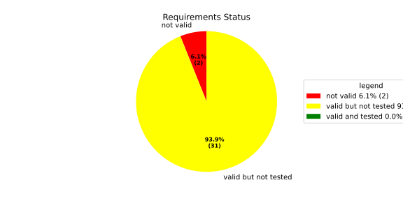
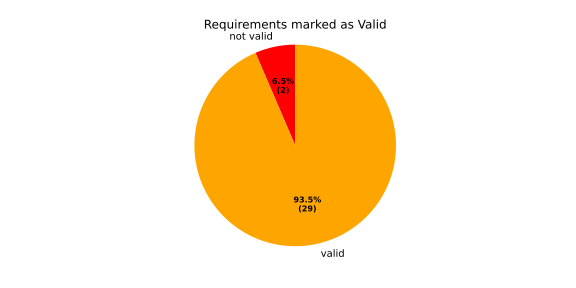
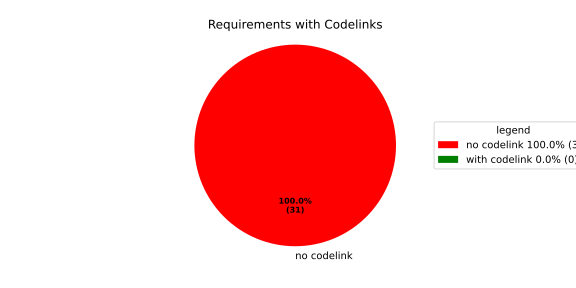
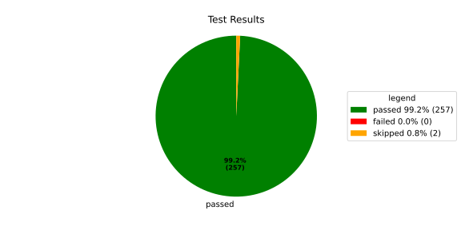
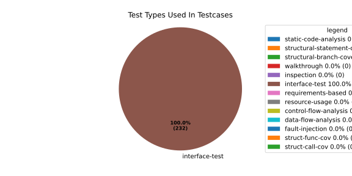
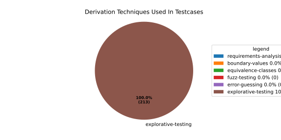

Verification Statistics#
Overview#

In Detail#



Failed Tests
Hint: This table should be empty. Before a PR can be merged all tests have to be successful.
No needs passed the filters
Skipped / Disabled Tests
testcase |
Result |
Fully Verifies |
Partially Verifies |
Test Type |
Derivation Technique |
link |
|---|---|---|---|---|---|---|
ValidateRangeTest/4__RejectsValueAboveMax |
skipped |
interface-test |
explorative-testing |
|||
ValidateRangeTest/4__RejectsValueBelowMin |
skipped |
interface-test |
explorative-testing |
All passed Tests#
testcase |
Result |
Fully Verifies |
Partially Verifies |
Test Type |
Derivation Technique |
link |
|---|---|---|---|---|---|---|
AliveImplTest__DoesNotThrowWhenInterfacePathEnvVarIsSet |
passed |
interface-test |
explorative-testing |
testcase__AliveImplTest__DoesNotThrowWhenInterfacePathEnvVarIsSet_xpewu |
||
AliveImplTest__ReportCheckpointSafeWhenNotConnected |
passed |
interface-test |
explorative-testing |
testcase__AliveImplTest__ReportCheckpointSafeWhenNotConnected_ppvuc |
||
AliveImplTest__ThrowsWhenInterfacePathEnvVarIsNotSet |
passed |
interface-test |
explorative-testing |
testcase__AliveImplTest__ThrowsWhenInterfacePathEnvVarIsNotSet_ekxfw |
||
AliveSupervisionTest__AliveDebouncesThroughFailedBeforeExpired |
passed |
interface-test |
explorative-testing |
testcase__AliveSupervisionTest__AliveDebouncesThroughFailedBeforeExpired_mlnbe |
||
AliveSupervisionTest__AliveReportsEnqueueFailureWhenRingBufferFull |
passed |
interface-test |
explorative-testing |
testcase__AliveSupervisionTest__AliveReportsEnqueueFailureWhenRingBufferFull_byhrd |
||
AliveSupervisionTest__AliveStaysOkWithCorrectHeartbeats |
passed |
interface-test |
explorative-testing |
testcase__AliveSupervisionTest__AliveStaysOkWithCorrectHeartbeats_vekof |
||
AliveSupervisionTest__AliveTransitionsOkToExpiredOnMissingHeartbeat |
passed |
interface-test |
explorative-testing |
testcase__AliveSupervisionTest__AliveTransitionsOkToExpiredOnMissingHeartbeat_jymxo |
||
AliveSupervisionTest__DeactivatesOnProcessCrash |
passed |
interface-test |
explorative-testing |
testcase__AliveSupervisionTest__DeactivatesOnProcessCrash_ypejs |
||
AliveSupervisionTest__DeactivatesOnProcessSigterm |
passed |
interface-test |
explorative-testing |
testcase__AliveSupervisionTest__DeactivatesOnProcessSigterm_hzaal |
||
AliveSupervisionTest__IgnoresIrrelevantProcessStates |
passed |
interface-test |
explorative-testing |
testcase__AliveSupervisionTest__IgnoresIrrelevantProcessStates_aolvb |
||
AliveSupervisionTest__MaxIndicationViolationExpires |
passed |
interface-test |
explorative-testing |
testcase__AliveSupervisionTest__MaxIndicationViolationExpires_whhhi |
||
AliveSupervisionTest__ReactivatesAfterCrash |
passed |
interface-test |
explorative-testing |
|||
ApplicationTypes/ApplicationTypeTest__ConvertsToExpectedValue/Native |
passed |
interface-test |
explorative-testing |
testcase__ApplicationTypes/ApplicationTypeTest__ConvertsToExpectedValue/Native_yxxcz |
||
ApplicationTypes/ApplicationTypeTest__ConvertsToExpectedValue/Reporting |
passed |
interface-test |
explorative-testing |
testcase__ApplicationTypes/ApplicationTypeTest__ConvertsToExpectedValue/Reporting_wcfwr |
||
ApplicationTypes/ApplicationTypeTest__ConvertsToExpectedValue/ReportingAndSupervised |
passed |
interface-test |
explorative-testing |
testcase__ApplicationTypes/ApplicationTypeTest__ConvertsToExpectedValue/ReportingAndSupervised_yxgad |
||
ApplicationTypes/ApplicationTypeTest__ConvertsToExpectedValue/StateManager |
passed |
interface-test |
explorative-testing |
testcase__ApplicationTypes/ApplicationTypeTest__ConvertsToExpectedValue/StateManager_ivuzc |
||
ConverterTest__ConvertAliveSupervisionMissingCycleReturnsError |
passed |
interface-test |
explorative-testing |
testcase__ConverterTest__ConvertAliveSupervisionMissingCycleReturnsError_bifzg |
||
ConverterTest__ConvertAliveSupervisionNullReturnsDefault |
passed |
interface-test |
explorative-testing |
testcase__ConverterTest__ConvertAliveSupervisionNullReturnsDefault_clyua |
||
ConverterTest__ConvertAliveSupervisionValid |
passed |
interface-test |
explorative-testing |
|||
ConverterTest__ConvertApplicationProfileMissingSelfTerminatingReturnsError |
passed |
interface-test |
explorative-testing |
testcase__ConverterTest__ConvertApplicationProfileMissingSelfTerminatingReturnsError_zddjb |
||
ConverterTest__ConvertApplicationProfileMissingTypeReturnsError |
passed |
interface-test |
explorative-testing |
testcase__ConverterTest__ConvertApplicationProfileMissingTypeReturnsError_zrfcs |
||
ConverterTest__ConvertApplicationProfileValid |
passed |
interface-test |
explorative-testing |
testcase__ConverterTest__ConvertApplicationProfileValid_oohxq |
||
ConverterTest__ConvertComponentAliveSupervisionBothIndicationsAbsentReturnsError |
passed |
interface-test |
explorative-testing |
testcase__ConverterTest__ConvertComponentAliveSupervisionBothIndicationsAbsentReturnsError_gvtfi |
||
ConverterTest__ConvertComponentAliveSupervisionMissingReportingCycleReturnsError |
passed |
interface-test |
explorative-testing |
testcase__ConverterTest__ConvertComponentAliveSupervisionMissingReportingCycleReturnsError_ajymy |
||
ConverterTest__ConvertComponentAliveSupervisionMissingToleranceReturnsError |
passed |
interface-test |
explorative-testing |
testcase__ConverterTest__ConvertComponentAliveSupervisionMissingToleranceReturnsError_lgrhj |
||
ConverterTest__ConvertComponentAliveSupervisionNullReturnsDefault |
passed |
interface-test |
explorative-testing |
testcase__ConverterTest__ConvertComponentAliveSupervisionNullReturnsDefault_xhaus |
||
ConverterTest__ConvertComponentAliveSupervisionOnlyMaxIndicationsPresent |
passed |
interface-test |
explorative-testing |
testcase__ConverterTest__ConvertComponentAliveSupervisionOnlyMaxIndicationsPresent_smwht |
||
ConverterTest__ConvertComponentAliveSupervisionOnlyMinIndicationsPresent |
passed |
interface-test |
explorative-testing |
testcase__ConverterTest__ConvertComponentAliveSupervisionOnlyMinIndicationsPresent_ybbrr |
||
ConverterTest__ConvertComponentAliveSupervisionValid |
passed |
interface-test |
explorative-testing |
testcase__ConverterTest__ConvertComponentAliveSupervisionValid_ijedh |
||
ConverterTest__ConvertComponentsValid |
passed |
interface-test |
explorative-testing |
|||
ConverterTest__ConvertComponentsWithInvalidComponentReturnsError |
passed |
interface-test |
explorative-testing |
testcase__ConverterTest__ConvertComponentsWithInvalidComponentReturnsError_wridc |
||
ConverterTest__ConvertComponentValid |
passed |
interface-test |
explorative-testing |
|||
ConverterTest__ConvertDeploymentConfigMissingReadyTimeoutReturnsError |
passed |
interface-test |
explorative-testing |
testcase__ConverterTest__ConvertDeploymentConfigMissingReadyTimeoutReturnsError_ljzfl |
||
ConverterTest__ConvertDeploymentConfigMissingShutdownTimeoutReturnsError |
passed |
interface-test |
explorative-testing |
testcase__ConverterTest__ConvertDeploymentConfigMissingShutdownTimeoutReturnsError_vyqye |
||
ConverterTest__ConvertDeploymentConfigValid |
passed |
interface-test |
explorative-testing |
|||
ConverterTest__ConvertEnvironmentalVariables |
passed |
interface-test |
explorative-testing |
testcase__ConverterTest__ConvertEnvironmentalVariables_fnhgo |
||
ConverterTest__ConvertEnvironmentalVariablesNullReturnsEmpty |
passed |
interface-test |
explorative-testing |
testcase__ConverterTest__ConvertEnvironmentalVariablesNullReturnsEmpty_vglrx |
||
ConverterTest__ConvertFallbackRunTargetMissingTimeoutReturnsError |
passed |
interface-test |
explorative-testing |
testcase__ConverterTest__ConvertFallbackRunTargetMissingTimeoutReturnsError_aevly |
||
ConverterTest__ConvertFallbackRunTargetValid |
passed |
interface-test |
explorative-testing |
testcase__ConverterTest__ConvertFallbackRunTargetValid_nexxj |
||
ConverterTest__ConvertReadyConditionMissingProcessStateReturnsError |
passed |
interface-test |
explorative-testing |
testcase__ConverterTest__ConvertReadyConditionMissingProcessStateReturnsError_ileav |
||
ConverterTest__ConvertReadyConditionValid |
passed |
interface-test |
explorative-testing |
|||
ConverterTest__ConvertRestartActionMissingFieldsReturnsError |
passed |
interface-test |
explorative-testing |
testcase__ConverterTest__ConvertRestartActionMissingFieldsReturnsError_aapjb |
||
ConverterTest__ConvertRestartActionNullReturnsNullopt |
passed |
interface-test |
explorative-testing |
testcase__ConverterTest__ConvertRestartActionNullReturnsNullopt_ifvyd |
||
ConverterTest__ConvertRestartActionValid |
passed |
interface-test |
explorative-testing |
|||
ConverterTest__ConvertRunTargetMissingTransitionTimeoutReturnsError |
passed |
interface-test |
explorative-testing |
testcase__ConverterTest__ConvertRunTargetMissingTransitionTimeoutReturnsError_ynekv |
||
ConverterTest__ConvertRunTargetsValid |
passed |
interface-test |
explorative-testing |
|||
ConverterTest__ConvertRunTargetsWithInvalidRunTargetReturnsError |
passed |
interface-test |
explorative-testing |
testcase__ConverterTest__ConvertRunTargetsWithInvalidRunTargetReturnsError_ldlox |
||
ConverterTest__ConvertRunTargetValid |
passed |
interface-test |
explorative-testing |
|||
ConverterTest__ConvertSandboxMissingGidReturnsError |
passed |
interface-test |
explorative-testing |
testcase__ConverterTest__ConvertSandboxMissingGidReturnsError_veeel |
||
ConverterTest__ConvertSandboxMissingSchedulingPolicyReturnsError |
passed |
interface-test |
explorative-testing |
testcase__ConverterTest__ConvertSandboxMissingSchedulingPolicyReturnsError_pkfts |
||
ConverterTest__ConvertSandboxMissingSchedulingPriorityReturnsError |
passed |
interface-test |
explorative-testing |
testcase__ConverterTest__ConvertSandboxMissingSchedulingPriorityReturnsError_xzdho |
||
ConverterTest__ConvertSandboxMissingUidReturnsError |
passed |
interface-test |
explorative-testing |
testcase__ConverterTest__ConvertSandboxMissingUidReturnsError_ogfku |
||
ConverterTest__ConvertSandboxSupplementaryGidOutOfRangeReturnsError |
passed |
interface-test |
explorative-testing |
testcase__ConverterTest__ConvertSandboxSupplementaryGidOutOfRangeReturnsError_zavpx |
||
ConverterTest__ConvertSandboxUidOutOfRangeReturnsError |
passed |
interface-test |
explorative-testing |
testcase__ConverterTest__ConvertSandboxUidOutOfRangeReturnsError_mcuaf |
||
ConverterTest__ConvertSandboxValid |
passed |
interface-test |
explorative-testing |
|||
ConverterTest__ConvertSwitchRunTargetActionNullReturnsNullopt |
passed |
interface-test |
explorative-testing |
testcase__ConverterTest__ConvertSwitchRunTargetActionNullReturnsNullopt_zmitx |
||
ConverterTest__ConvertSwitchRunTargetActionValid |
passed |
interface-test |
explorative-testing |
testcase__ConverterTest__ConvertSwitchRunTargetActionValid_tdklr |
||
ConverterTest__ConvertWatchdogMissingDeactivateReturnsError |
passed |
interface-test |
explorative-testing |
testcase__ConverterTest__ConvertWatchdogMissingDeactivateReturnsError_gzwjt |
||
ConverterTest__ConvertWatchdogMissingMagicCloseReturnsError |
passed |
interface-test |
explorative-testing |
testcase__ConverterTest__ConvertWatchdogMissingMagicCloseReturnsError_gexxk |
||
ConverterTest__ConvertWatchdogMissingMaxTimeoutReturnsError |
passed |
interface-test |
explorative-testing |
testcase__ConverterTest__ConvertWatchdogMissingMaxTimeoutReturnsError_lffxm |
||
ConverterTest__ConvertWatchdogNullReturnsNullopt |
passed |
interface-test |
explorative-testing |
testcase__ConverterTest__ConvertWatchdogNullReturnsNullopt_irsdk |
||
ConverterTest__ConvertWatchdogValid |
passed |
interface-test |
explorative-testing |
|||
DeadlineFixture__Start_AlreadyRunning |
passed |
interface-test |
explorative-testing |
|||
DeadlineFixture__Start_Succeeds |
passed |
interface-test |
explorative-testing |
|||
DeadlineMonitorBuilderFixture__AddDeadline_Succeeds |
passed |
interface-test |
explorative-testing |
testcase__DeadlineMonitorBuilderFixture__AddDeadline_Succeeds_nagke |
||
DeadlineMonitorBuilderFixture__New_Succeeds |
passed |
interface-test |
explorative-testing |
|||
DeadlineMonitorFixture__GetDeadline_Succeeds |
passed |
interface-test |
explorative-testing |
testcase__DeadlineMonitorFixture__GetDeadline_Succeeds_tmltf |
||
DeadlineMonitorFixture__GetDeadline_Unknown |
passed |
interface-test |
explorative-testing |
|||
EnumConversionTest__ConvertSchedulingPolicyUnsupported |
passed |
interface-test |
explorative-testing |
testcase__EnumConversionTest__ConvertSchedulingPolicyUnsupported_iavqm |
||
EnvironmentTest__AddIncreasesSize |
passed |
interface-test |
explorative-testing |
|||
EnvironmentTest__DefaultConstructedIsEmpty |
passed |
interface-test |
explorative-testing |
|||
EnvironmentTest__EmptyEnvironmentEnvpIsNullTerminated |
passed |
interface-test |
explorative-testing |
testcase__EnvironmentTest__EmptyEnvironmentEnvpIsNullTerminated_wwumw |
||
EnvironmentTest__EnvpReturnsNullTerminatedArray |
passed |
interface-test |
explorative-testing |
testcase__EnvironmentTest__EnvpReturnsNullTerminatedArray_aubkv |
||
EnvironmentTest__EnvpWithMultipleEntries |
passed |
interface-test |
explorative-testing |
|||
EnvironmentTest__MoveAssignmentPreservesEntries |
passed |
interface-test |
explorative-testing |
testcase__EnvironmentTest__MoveAssignmentPreservesEntries_vkydj |
||
EnvironmentTest__MoveConstructorPreservesEntries |
passed |
interface-test |
explorative-testing |
testcase__EnvironmentTest__MoveConstructorPreservesEntries_upclt |
||
EnvironmentTest__RangeBasedForLoopWorks |
passed |
interface-test |
explorative-testing |
|||
EnvironmentTest__ReserveAndAddAvoidReallocation |
passed |
interface-test |
explorative-testing |
testcase__EnvironmentTest__ReserveAndAddAvoidReallocation_lgzmu |
||
EnvironmentTest__SsoLengthStringSurvivesReallocation |
passed |
interface-test |
explorative-testing |
testcase__EnvironmentTest__SsoLengthStringSurvivesReallocation_jfmtl |
||
EnvironmentVariableTest__CStrReturnsKeyEqualsValue |
passed |
interface-test |
explorative-testing |
testcase__EnvironmentVariableTest__CStrReturnsKeyEqualsValue_rkwan |
||
EnvironmentVariableTest__EmptyValue |
passed |
interface-test |
explorative-testing |
|||
EnvironmentVariableTest__KeyAndValueAreAccessible |
passed |
interface-test |
explorative-testing |
testcase__EnvironmentVariableTest__KeyAndValueAreAccessible_kcrth |
||
EnvironmentVariableTest__ValueContainingEquals |
passed |
interface-test |
explorative-testing |
testcase__EnvironmentVariableTest__ValueContainingEquals_apzgz |
||
ExecErrorDomainTest__AllKnownCodesHaveDistinctMessages |
passed |
interface-test |
explorative-testing |
testcase__ExecErrorDomainTest__AllKnownCodesHaveDistinctMessages_qpoka |
||
ExecErrorDomainTest__AllKnownCodesReturnNonEmptyMessage |
passed |
interface-test |
explorative-testing |
testcase__ExecErrorDomainTest__AllKnownCodesReturnNonEmptyMessage_bawzg |
||
ExecErrorDomainTest__UnknownCodeReturnsNonEmptyMessage |
passed |
interface-test |
explorative-testing |
testcase__ExecErrorDomainTest__UnknownCodeReturnsNonEmptyMessage_kkwpr |
||
FlatbufferConfigLoaderTest__CorruptedBufferReturnsInvalidFormat |
passed |
interface-test |
explorative-testing |
testcase__FlatbufferConfigLoaderTest__CorruptedBufferReturnsInvalidFormat_twyac |
||
FlatbufferConfigLoaderTest__LoadAliveSupervision |
passed |
interface-test |
explorative-testing |
testcase__FlatbufferConfigLoaderTest__LoadAliveSupervision_hhuux |
||
FlatbufferConfigLoaderTest__LoadBufferFailsWithGenericErrorReturnsGeneralError |
passed |
interface-test |
explorative-testing |
testcase__FlatbufferConfigLoaderTest__LoadBufferFailsWithGenericErrorReturnsGeneralError_kmatm |
||
FlatbufferConfigLoaderTest__LoadBufferFailsWithNoSuchFileReturnsFileNotFound |
passed |
interface-test |
explorative-testing |
testcase__FlatbufferConfigLoaderTest__LoadBufferFailsWithNoSuchFileReturnsFileNotFound_yzlra |
||
FlatbufferConfigLoaderTest__LoadBufferFailsWithPermissionDeniedReturnsInsufficientPermission |
passed |
interface-test |
explorative-testing |
|||
FlatbufferConfigLoaderTest__LoadComponentAliveSupervision |
passed |
interface-test |
explorative-testing |
testcase__FlatbufferConfigLoaderTest__LoadComponentAliveSupervision_fwfad |
||
FlatbufferConfigLoaderTest__LoadEnvironmentalVariables |
passed |
interface-test |
explorative-testing |
testcase__FlatbufferConfigLoaderTest__LoadEnvironmentalVariables_wsosu |
||
FlatbufferConfigLoaderTest__LoadFallbackRunTarget |
passed |
interface-test |
explorative-testing |
testcase__FlatbufferConfigLoaderTest__LoadFallbackRunTarget_wduqm |
||
FlatbufferConfigLoaderTest__LoadMinimalConfig |
passed |
interface-test |
explorative-testing |
testcase__FlatbufferConfigLoaderTest__LoadMinimalConfig_hdkck |
||
FlatbufferConfigLoaderTest__LoadMultipleComponents |
passed |
interface-test |
explorative-testing |
testcase__FlatbufferConfigLoaderTest__LoadMultipleComponents_abpom |
||
FlatbufferConfigLoaderTest__LoadRestartRecoveryAction |
passed |
interface-test |
explorative-testing |
testcase__FlatbufferConfigLoaderTest__LoadRestartRecoveryAction_wyfqg |
||
FlatbufferConfigLoaderTest__LoadRunTargets |
passed |
interface-test |
explorative-testing |
|||
FlatbufferConfigLoaderTest__LoadSandbox |
passed |
interface-test |
explorative-testing |
|||
FlatbufferConfigLoaderTest__LoadSingleComponent |
passed |
interface-test |
explorative-testing |
testcase__FlatbufferConfigLoaderTest__LoadSingleComponent_yidty |
||
FlatbufferConfigLoaderTest__LoadSwitchRunTargetAction |
passed |
interface-test |
explorative-testing |
testcase__FlatbufferConfigLoaderTest__LoadSwitchRunTargetAction_uchgp |
||
FlatbufferConfigLoaderTest__LoadWatchdog |
passed |
interface-test |
explorative-testing |
|||
FlatbufferConfigLoaderTest__MissingSchemaVersionReturnsInvalidFormat |
passed |
interface-test |
explorative-testing |
testcase__FlatbufferConfigLoaderTest__MissingSchemaVersionReturnsInvalidFormat_qqmfn |
||
FlatbufferConfigLoaderTest__OptionalReadyConditionAbsent |
passed |
interface-test |
explorative-testing |
testcase__FlatbufferConfigLoaderTest__OptionalReadyConditionAbsent_lhddx |
||
FlatbufferConfigLoaderTest__OptionalWatchdogAbsent |
passed |
interface-test |
explorative-testing |
testcase__FlatbufferConfigLoaderTest__OptionalWatchdogAbsent_pkhkp |
||
FlatbufferConfigLoaderTest__WrongSchemaVersionReturnsUnsupportedVersion |
passed |
interface-test |
explorative-testing |
testcase__FlatbufferConfigLoaderTest__WrongSchemaVersionReturnsUnsupportedVersion_zrbjv |
||
HealthMonitor__GetDeadlineMonitor_Available |
passed |
|||||
HealthMonitor__GetDeadlineMonitor_Taken |
passed |
|||||
HealthMonitor__GetDeadlineMonitor_Unknown |
passed |
|||||
HealthMonitor__GetHeartbeatMonitor_Available |
passed |
testcase__HealthMonitor__GetHeartbeatMonitor_Available_aacat |
||||
HealthMonitor__GetHeartbeatMonitor_Taken |
passed |
|||||
HealthMonitor__GetHeartbeatMonitor_Unknown |
passed |
|||||
HealthMonitor__GetLogicMonitor_Available |
passed |
|||||
HealthMonitor__GetLogicMonitor_Taken |
passed |
|||||
HealthMonitor__GetLogicMonitor_Unknown |
passed |
|||||
HealthMonitor__Start_MonitorsNotTaken |
passed |
|||||
HealthMonitor__Start_Succeeds |
passed |
|||||
HealthMonitorBuilderFixture__Build_InvalidCycles |
passed |
interface-test |
explorative-testing |
testcase__HealthMonitorBuilderFixture__Build_InvalidCycles_pdigk |
||
HealthMonitorBuilderFixture__Build_NoMonitors |
passed |
interface-test |
explorative-testing |
testcase__HealthMonitorBuilderFixture__Build_NoMonitors_ktcve |
||
HealthMonitorBuilderFixture__Build_Succeeds |
passed |
interface-test |
explorative-testing |
|||
HealthMonitorBuilderFixture__New_Succeeds |
passed |
interface-test |
explorative-testing |
|||
HealthMonitorTest__Integrated |
passed |
interface-test |
explorative-testing |
|||
HeartbeatMonitor__Heartbeat_Succeeds |
passed |
interface-test |
explorative-testing |
|||
HeartbeatMonitorBuilder__New_Succeeds |
passed |
interface-test |
explorative-testing |
|||
IdentifierHashTest__IdentifierHash_default_created |
passed |
interface-test |
explorative-testing |
testcase__IdentifierHashTest__IdentifierHash_default_created_yhhvi |
||
IdentifierHashTest__IdentifierHash_EqualityOperators |
passed |
interface-test |
explorative-testing |
testcase__IdentifierHashTest__IdentifierHash_EqualityOperators_nnsuj |
||
IdentifierHashTest__IdentifierHash_invalid_hash_no_string_representation |
passed |
interface-test |
explorative-testing |
testcase__IdentifierHashTest__IdentifierHash_invalid_hash_no_string_representation_rxowr |
||
IdentifierHashTest__IdentifierHash_LessThanOperator |
passed |
interface-test |
explorative-testing |
testcase__IdentifierHashTest__IdentifierHash_LessThanOperator_rnbax |
||
IdentifierHashTest__IdentifierHash_no_dangling_pointer_after_source_string_dies |
passed |
interface-test |
explorative-testing |
testcase__IdentifierHashTest__IdentifierHash_no_dangling_pointer_after_source_string_dies_qsjin |
||
IdentifierHashTest__IdentifierHash_with_string_created |
passed |
interface-test |
explorative-testing |
testcase__IdentifierHashTest__IdentifierHash_with_string_created_aygdm |
||
IdentifierHashTest__IdentifierHash_with_string_view_created |
passed |
interface-test |
explorative-testing |
testcase__IdentifierHashTest__IdentifierHash_with_string_view_created_dbpol |
||
LogicMonitorBuilderFixture__AddState_Succeeds |
passed |
interface-test |
explorative-testing |
testcase__LogicMonitorBuilderFixture__AddState_Succeeds_axdxj |
||
LogicMonitorBuilderFixture__New_Succeeds |
passed |
interface-test |
explorative-testing |
|||
LogicMonitorFixture__State_Invalid |
passed |
interface-test |
explorative-testing |
|||
LogicMonitorFixture__State_Succeeds |
passed |
interface-test |
explorative-testing |
|||
LogicMonitorFixture__Transition_Invalid |
passed |
interface-test |
explorative-testing |
|||
LogicMonitorFixture__Transition_Succeeds |
passed |
interface-test |
explorative-testing |
|||
LogicMonitorFixture__Transition_Unknown |
passed |
interface-test |
explorative-testing |
|||
MonitorIfDaemonTest__Active_CheckpointDataForwarded |
passed |
interface-test |
explorative-testing |
testcase__MonitorIfDaemonTest__Active_CheckpointDataForwarded_evumz |
||
MonitorIfDaemonTest__Active_FutureTimestamp_NotForwardedInCurrentCycle |
passed |
interface-test |
explorative-testing |
testcase__MonitorIfDaemonTest__Active_FutureTimestamp_NotForwardedInCurrentCycle_oycau |
||
MonitorIfDaemonTest__Active_FutureTimestampCheckpoint_ConsumedInLaterCycle |
passed |
interface-test |
explorative-testing |
testcase__MonitorIfDaemonTest__Active_FutureTimestampCheckpoint_ConsumedInLaterCycle_veyyy |
||
MonitorIfDaemonTest__Active_MultipleCheckpointsInOneCycle_AllForwarded |
passed |
interface-test |
explorative-testing |
testcase__MonitorIfDaemonTest__Active_MultipleCheckpointsInOneCycle_AllForwarded_gmbms |
||
MonitorIfDaemonTest__Active_NonMatchingCheckpointId_NotForwarded |
passed |
interface-test |
explorative-testing |
testcase__MonitorIfDaemonTest__Active_NonMatchingCheckpointId_NotForwarded_bohck |
||
MonitorIfDaemonTest__Active_OverflowDetected_TransitionsToInactiveOverflow |
passed |
interface-test |
explorative-testing |
testcase__MonitorIfDaemonTest__Active_OverflowDetected_TransitionsToInactiveOverflow_ovitk |
||
MonitorIfDaemonTest__Active_TwoAttachedCheckpoints_RoutedByCheckpointId |
passed |
interface-test |
explorative-testing |
testcase__MonitorIfDaemonTest__Active_TwoAttachedCheckpoints_RoutedByCheckpointId_skqhd |
||
MonitorIfDaemonTest__GetInterfaceName_ReturnsNameGivenAtConstruction |
passed |
interface-test |
explorative-testing |
testcase__MonitorIfDaemonTest__GetInterfaceName_ReturnsNameGivenAtConstruction_iaemz |
||
MonitorIfDaemonTest__InactiveOverflow_NoProcessRestart_DoesNotRepeatNotification |
passed |
interface-test |
explorative-testing |
testcase__MonitorIfDaemonTest__InactiveOverflow_NoProcessRestart_DoesNotRepeatNotification_gdbxg |
||
MonitorIfDaemonTest__InactiveOverflow_ProcessRestartFlag_ClearedAfterNotification |
passed |
interface-test |
explorative-testing |
testcase__MonitorIfDaemonTest__InactiveOverflow_ProcessRestartFlag_ClearedAfterNotification_pqfyy |
||
MonitorIfDaemonTest__InactiveOverflow_ProcessRestarts_PushesOverflowNotificationAgain |
passed |
interface-test |
explorative-testing |
|||
MonitorIfDaemonTest__InitiallyInactive_CheckForNewData_DoesNotNotifyCheckpoint |
passed |
interface-test |
explorative-testing |
testcase__MonitorIfDaemonTest__InitiallyInactive_CheckForNewData_DoesNotNotifyCheckpoint_wjrfl |
||
MonitorIfDaemonTest__ProcessOff_DeactivatesMonitor_NoFurtherDataForwarded |
passed |
interface-test |
explorative-testing |
testcase__MonitorIfDaemonTest__ProcessOff_DeactivatesMonitor_NoFurtherDataForwarded_uialh |
||
MonitorIfDaemonTest__ProcessOffBeforeActivation_RemainsInactive |
passed |
interface-test |
explorative-testing |
testcase__MonitorIfDaemonTest__ProcessOffBeforeActivation_RemainsInactive_kzzyy |
||
MonitorIfDaemonTest__ProcessRunning_ActivatesMonitorOnNextCheckForNewData |
passed |
interface-test |
explorative-testing |
testcase__MonitorIfDaemonTest__ProcessRunning_ActivatesMonitorOnNextCheckForNewData_fkkmk |
||
MonitorIfDaemonTest__ProcessStarting_AlsoActivatesMonitor |
passed |
interface-test |
explorative-testing |
testcase__MonitorIfDaemonTest__ProcessStarting_AlsoActivatesMonitor_xdkbg |
||
MPMCConcurrentQueueTest_Basic__LvaluePushCopiesItem |
passed |
testcase__MPMCConcurrentQueueTest_Basic__LvaluePushCopiesItem_oysfc |
||||
MPMCConcurrentQueueTest_Basic__PopReturnsNulloptOnSemaphoreWaitFailure |
passed |
testcase__MPMCConcurrentQueueTest_Basic__PopReturnsNulloptOnSemaphoreWaitFailure_rgznm |
||||
MPMCConcurrentQueueTest_Basic__PushAndPopPreservesOrder |
passed |
testcase__MPMCConcurrentQueueTest_Basic__PushAndPopPreservesOrder_aijdb |
||||
MPMCConcurrentQueueTest_Basic__PushAndPopSingleItem |
passed |
testcase__MPMCConcurrentQueueTest_Basic__PushAndPopSingleItem_jrxwz |
||||
MPMCConcurrentQueueTest_Basic__RvaluePushWorksWithMoveOnlyType |
passed |
testcase__MPMCConcurrentQueueTest_Basic__RvaluePushWorksWithMoveOnlyType_cxxaj |
||||
MPMCConcurrentQueueTest_Blocking__PopBlocksUntilItemAvailable |
passed |
testcase__MPMCConcurrentQueueTest_Blocking__PopBlocksUntilItemAvailable_ttwcx |
||||
MPMCConcurrentQueueTest_Blocking__PushBlocksWhenFull |
passed |
testcase__MPMCConcurrentQueueTest_Blocking__PushBlocksWhenFull_ecujf |
||||
MPMCConcurrentQueueTest_Blocking__StopUnblocksBlockedConsumer |
passed |
testcase__MPMCConcurrentQueueTest_Blocking__StopUnblocksBlockedConsumer_snzyr |
||||
MPMCConcurrentQueueTest_Blocking__StopUnblocksBlockedProducer |
passed |
testcase__MPMCConcurrentQueueTest_Blocking__StopUnblocksBlockedProducer_inddu |
||||
MPMCConcurrentQueueTest_MPMC__AllItemsDelivered |
passed |
testcase__MPMCConcurrentQueueTest_MPMC__AllItemsDelivered_ztjqe |
||||
MPMCConcurrentQueueTest_Stop__ItemsAreDroppedAfterStop |
passed |
testcase__MPMCConcurrentQueueTest_Stop__ItemsAreDroppedAfterStop_ragzw |
||||
MPMCConcurrentQueueTest_Stop__PopReturnsNulloptWhenStoppedAndEmpty |
passed |
testcase__MPMCConcurrentQueueTest_Stop__PopReturnsNulloptWhenStoppedAndEmpty_cevga |
||||
MPMCConcurrentQueueTest_Stop__PushReturnsFalseAfterStop |
passed |
testcase__MPMCConcurrentQueueTest_Stop__PushReturnsFalseAfterStop_qqnhw |
||||
MPMCConcurrentQueueTest_Timeout__PushWithTimeoutReturnsFalseWhenFull |
passed |
testcase__MPMCConcurrentQueueTest_Timeout__PushWithTimeoutReturnsFalseWhenFull_aeips |
||||
MPMCConcurrentQueueTest_Timeout__PushWithTimeoutSucceedsWhenSlotAvailable |
passed |
testcase__MPMCConcurrentQueueTest_Timeout__PushWithTimeoutSucceedsWhenSlotAvailable_klzpo |
||||
OsHandlerTest__WaitReturnsError_OsHandlerSleepsAndDoesNotCallFindTerminated |
passed |
interface-test |
explorative-testing |
testcase__OsHandlerTest__WaitReturnsError_OsHandlerSleepsAndDoesNotCallFindTerminated_cibtr |
||
OsHandlerTest__WaitReturnsErrorThenProcessId_HandlerRecoversAndInvokesCallback |
passed |
interface-test |
explorative-testing |
testcase__OsHandlerTest__WaitReturnsErrorThenProcessId_HandlerRecoversAndInvokesCallback_nqstd |
||
OsHandlerTest__WaitReturnsProcessId_FindTerminatedIsCalled |
passed |
interface-test |
explorative-testing |
testcase__OsHandlerTest__WaitReturnsProcessId_FindTerminatedIsCalled_chlsq |
||
OsHandlerTest__WaitReturnsProcessIdBeforeRegistration_LaterRegistrationReceivesStoredTermination |
passed |
interface-test |
explorative-testing |
|||
OsHandlerTest__WaitReturnsUnknownPidWhenMapIsFull_OutOfResourcesPathDoesNotNotifyCallbacks |
passed |
interface-test |
explorative-testing |
|||
OsHandlerTest__WaitReturnsZeroPid_OsHandlerSleepsAndDoesNotCallFindTerminated |
passed |
interface-test |
explorative-testing |
testcase__OsHandlerTest__WaitReturnsZeroPid_OsHandlerSleepsAndDoesNotCallFindTerminated_rkttz |
||
ProcessStateClient_UT__ProcessStateClient_ConstructReceiver_Succeeds |
passed |
interface-test |
explorative-testing |
testcase__ProcessStateClient_UT__ProcessStateClient_ConstructReceiver_Succeeds_hodwy |
||
ProcessStateClient_UT__ProcessStateClient_QueueMaxNumberOfProcesses_Succeeds |
passed |
interface-test |
explorative-testing |
testcase__ProcessStateClient_UT__ProcessStateClient_QueueMaxNumberOfProcesses_Succeeds_qohom |
||
ProcessStateClient_UT__ProcessStateClient_QueueOneProcess_Succeeds |
passed |
interface-test |
explorative-testing |
testcase__ProcessStateClient_UT__ProcessStateClient_QueueOneProcess_Succeeds_tmzfz |
||
ProcessStateClient_UT__ProcessStateClient_QueueOneProcessTooMany_Fails |
passed |
interface-test |
explorative-testing |
testcase__ProcessStateClient_UT__ProcessStateClient_QueueOneProcessTooMany_Fails_sspoj |
||
ProcessStates/ProcessStateTest__ConvertsToExpectedValue/Running |
passed |
interface-test |
explorative-testing |
testcase__ProcessStates/ProcessStateTest__ConvertsToExpectedValue/Running_hinlr |
||
ProcessStates/ProcessStateTest__ConvertsToExpectedValue/Terminated |
passed |
interface-test |
explorative-testing |
testcase__ProcessStates/ProcessStateTest__ConvertsToExpectedValue/Terminated_zrytn |
||
RecoveryClientTest__FIFOOrdering |
passed |
interface-test |
explorative-testing |
|||
RecoveryClientTest__GetNextRequest |
passed |
interface-test |
explorative-testing |
|||
RecoveryClientTest__GetNextRequestEmpty |
passed |
interface-test |
explorative-testing |
|||
RecoveryClientTest__RingBufferFull |
passed |
interface-test |
explorative-testing |
|||
RecoveryClientTest__SendSingleRequest |
passed |
interface-test |
explorative-testing |
|||
RunTest__AsPosixProcessCreatesAndDestroysLifeCycleManager |
passed |
testcase__RunTest__AsPosixProcessCreatesAndDestroysLifeCycleManager_sooex |
||||
RunTest__AsPosixProcessForwardsConstructorArgsToApplication |
passed |
testcase__RunTest__AsPosixProcessForwardsConstructorArgsToApplication_dmeur |
||||
RunTest__AsPosixProcessForwardsNonZeroExitCode |
passed |
testcase__RunTest__AsPosixProcessForwardsNonZeroExitCode_lldqd |
||||
RunTest__AsPosixProcessPassesCorrectApplicationTypeToRun |
passed |
testcase__RunTest__AsPosixProcessPassesCorrectApplicationTypeToRun_ajqwz |
||||
RunTest__AsPosixProcessReturnsZeroExitCode |
passed |
|||||
RunTest__RunApplicationFreeFunctionDelegatesToAsPosixProcess |
passed |
testcase__RunTest__RunApplicationFreeFunctionDelegatesToAsPosixProcess_ccing |
||||
RunTest__RunConstructorPassesArgcArgvToApplicationContext |
passed |
testcase__RunTest__RunConstructorPassesArgcArgvToApplicationContext_agerd |
||||
SafeProcessMapTest__ConcurrentFindAndInsertFromMultipleThreads |
passed |
interface-test |
explorative-testing |
testcase__SafeProcessMapTest__ConcurrentFindAndInsertFromMultipleThreads_kzfyg |
||
SafeProcessMapTest__ConcurrentInsertAndFindFromMultipleThreads |
passed |
interface-test |
explorative-testing |
testcase__SafeProcessMapTest__ConcurrentInsertAndFindFromMultipleThreads_hnyqj |
||
SafeProcessMapTest__ConstructWithZeroCapacity |
passed |
interface-test |
explorative-testing |
testcase__SafeProcessMapTest__ConstructWithZeroCapacity_gjmqg |
||
SafeProcessMapTest__FindTerminatedInsertsEntryWhenPidNotPresent |
passed |
interface-test |
explorative-testing |
testcase__SafeProcessMapTest__FindTerminatedInsertsEntryWhenPidNotPresent_ixtlt |
||
SafeProcessMapTest__FindTerminatedMatchesExistingInsertAndCallsCallback |
passed |
interface-test |
explorative-testing |
testcase__SafeProcessMapTest__FindTerminatedMatchesExistingInsertAndCallsCallback_ehuzb |
||
SafeProcessMapTest__FindTerminatedSamePidTwiceYieldsUntilInsertResolves |
passed |
interface-test |
explorative-testing |
testcase__SafeProcessMapTest__FindTerminatedSamePidTwiceYieldsUntilInsertResolves_hsekx |
||
SafeProcessMapTest__FindTerminatedWithNegativePidReturnsInvalid |
passed |
interface-test |
explorative-testing |
testcase__SafeProcessMapTest__FindTerminatedWithNegativePidReturnsInvalid_dewoh |
||
SafeProcessMapTest__FindTerminatedWorksAtMaxTreeDepth |
passed |
interface-test |
explorative-testing |
testcase__SafeProcessMapTest__FindTerminatedWorksAtMaxTreeDepth_adtzi |
||
SafeProcessMapTest__InsertBeyondCapacityReturnsOutOfMemory |
passed |
interface-test |
explorative-testing |
testcase__SafeProcessMapTest__InsertBeyondCapacityReturnsOutOfMemory_qjnie |
||
SafeProcessMapTest__InsertIntoEmptyTreeReturnsZero |
passed |
interface-test |
explorative-testing |
testcase__SafeProcessMapTest__InsertIntoEmptyTreeReturnsZero_zfbaq |
||
SafeProcessMapTest__InsertMatchesExistingFindTerminatedEntry |
passed |
interface-test |
explorative-testing |
testcase__SafeProcessMapTest__InsertMatchesExistingFindTerminatedEntry_fuwrp |
||
SafeProcessMapTest__InsertMultipleNodesThenFindTerminatedRemovesAll |
passed |
interface-test |
explorative-testing |
testcase__SafeProcessMapTest__InsertMultipleNodesThenFindTerminatedRemovesAll_fvowh |
||
SafeProcessMapTest__InsertSamePidTwiceYieldsUntilFindTerminatedResolves |
passed |
interface-test |
explorative-testing |
testcase__SafeProcessMapTest__InsertSamePidTwiceYieldsUntilFindTerminatedResolves_wzwyb |
||
SchedulingPolicies/SchedulingPolicyTest__ConvertsToExpectedPosixValue/SCHED_FIFO |
passed |
interface-test |
explorative-testing |
testcase__SchedulingPolicies/SchedulingPolicyTest__ConvertsToExpectedPosixValue/SCHED_FIFO_soddq |
||
SchedulingPolicies/SchedulingPolicyTest__ConvertsToExpectedPosixValue/SCHED_OTHER |
passed |
interface-test |
explorative-testing |
testcase__SchedulingPolicies/SchedulingPolicyTest__ConvertsToExpectedPosixValue/SCHED_OTHER_oigmk |
||
SchedulingPolicies/SchedulingPolicyTest__ConvertsToExpectedPosixValue/SCHED_RR |
passed |
interface-test |
explorative-testing |
testcase__SchedulingPolicies/SchedulingPolicyTest__ConvertsToExpectedPosixValue/SCHED_RR_pcjci |
||
score/health_monitor/src/rust/test-510566969/tests |
passed |
testcase__score/health_monitor/src/rust/test-510566969/tests_kjjlw |
||||
score/health_monitor/src/rust/test-827801879/loom_tests |
passed |
testcase__score/health_monitor/src/rust/test-827801879/loom_tests_cpmix |
||||
SecondsToMsTest__ConvertsPositiveValue |
passed |
interface-test |
explorative-testing |
|||
SecondsToMsTest__ConvertsZero |
passed |
interface-test |
explorative-testing |
|||
SecondsToMsTest__RejectsNegativeValue |
passed |
interface-test |
explorative-testing |
|||
SecondsToMsTest__RejectsOverflow |
passed |
interface-test |
explorative-testing |
|||
SecondsToMsTest__RejectsSubMillisecond |
passed |
interface-test |
explorative-testing |
|||
StringHelperTest__ConvertGidVectorReturnsEmptyWhenNull |
passed |
interface-test |
explorative-testing |
testcase__StringHelperTest__ConvertGidVectorReturnsEmptyWhenNull_jmcsr |
||
StringHelperTest__ConvertStringVectorReturnsEmptyWhenNull |
passed |
interface-test |
explorative-testing |
testcase__StringHelperTest__ConvertStringVectorReturnsEmptyWhenNull_zsuvv |
||
StringHelperTest__SafeStringReturnsEmptyWhenNull |
passed |
interface-test |
explorative-testing |
testcase__StringHelperTest__SafeStringReturnsEmptyWhenNull_crelr |
||
StringHelperTest__SafeStringReturnsValueWhenNotNull |
passed |
interface-test |
explorative-testing |
testcase__StringHelperTest__SafeStringReturnsValueWhenNotNull_anbko |
||
test_complex_monitoring |
passed |
|||||
test_crash_on_startup |
passed |
|||||
test_incorrect_config_non_reporting |
passed |
|||||
test_process_crash_monitoring |
passed |
|||||
test_process_fd_leak |
passed |
|||||
test_process_launch_args |
passed |
|||||
test_process_wrong_binary_failure |
passed |
|||||
test_recovery_action_complex_rep_failure |
passed |
|||||
test_recovery_action_simple_rep_failure |
passed |
|||||
test_smoke |
passed |
|||||
test_switch_run_target |
passed |
|||||
TimeRangeFixture__MinMax |
passed |
interface-test |
explorative-testing |
|||
TimeRangeFixture__New_InvalidOrder |
passed |
interface-test |
explorative-testing |
|||
TimeRangeFixture__New_Succeeds |
passed |
interface-test |
explorative-testing |
|||
ValidateRangeTest/0__AcceptsMaxBoundary |
passed |
interface-test |
explorative-testing |
|||
ValidateRangeTest/0__AcceptsMinBoundary |
passed |
interface-test |
explorative-testing |
|||
ValidateRangeTest/0__AcceptsZero |
passed |
interface-test |
explorative-testing |
|||
ValidateRangeTest/0__RejectsValueAboveMax |
passed |
interface-test |
explorative-testing |
|||
ValidateRangeTest/0__RejectsValueBelowMin |
passed |
interface-test |
explorative-testing |
|||
ValidateRangeTest/1__AcceptsMaxBoundary |
passed |
interface-test |
explorative-testing |
|||
ValidateRangeTest/1__AcceptsMinBoundary |
passed |
interface-test |
explorative-testing |
|||
ValidateRangeTest/1__AcceptsZero |
passed |
interface-test |
explorative-testing |
|||
ValidateRangeTest/1__RejectsValueAboveMax |
passed |
interface-test |
explorative-testing |
|||
ValidateRangeTest/1__RejectsValueBelowMin |
passed |
interface-test |
explorative-testing |
|||
ValidateRangeTest/2__AcceptsMaxBoundary |
passed |
interface-test |
explorative-testing |
|||
ValidateRangeTest/2__AcceptsMinBoundary |
passed |
interface-test |
explorative-testing |
|||
ValidateRangeTest/2__AcceptsZero |
passed |
interface-test |
explorative-testing |
|||
ValidateRangeTest/2__RejectsValueAboveMax |
passed |
interface-test |
explorative-testing |
|||
ValidateRangeTest/2__RejectsValueBelowMin |
passed |
interface-test |
explorative-testing |
|||
ValidateRangeTest/3__AcceptsMaxBoundary |
passed |
interface-test |
explorative-testing |
|||
ValidateRangeTest/3__AcceptsMinBoundary |
passed |
interface-test |
explorative-testing |
|||
ValidateRangeTest/3__AcceptsZero |
passed |
interface-test |
explorative-testing |
|||
ValidateRangeTest/3__RejectsValueAboveMax |
passed |
interface-test |
explorative-testing |
|||
ValidateRangeTest/3__RejectsValueBelowMin |
passed |
interface-test |
explorative-testing |
|||
ValidateRangeTest/4__AcceptsMaxBoundary |
passed |
interface-test |
explorative-testing |
|||
ValidateRangeTest/4__AcceptsMinBoundary |
passed |
interface-test |
explorative-testing |
|||
ValidateRangeTest/4__AcceptsZero |
passed |
interface-test |
explorative-testing |
Details About Testcases#


Test Log Files#
tests-report/tests/integration/process_simple_rep_failure/process_simple_rep_failure/test.log
exec ${PAGER:-/usr/bin/less} "$0" || exit 1
Executing tests from //tests/integration/process_simple_rep_failure:process_simple_rep_failure
-----------------------------------------------------------------------------
============================= test session starts ==============================
platform linux -- Python 3.12.12, pytest-9.0.3, pluggy-1.5.0
rootdir: /home/runner/.bazel/sandbox/processwrapper-sandbox/1295/execroot/_main/bazel-out/k8-fastbuild/bin/tests/integration/process_simple_rep_failure/process_simple_rep_failure.runfiles/score_itf+
configfile: pytest.ini
collected 1 item
../score_itf+::test_recovery_action_simple_rep_failure
-------------------------------- live log setup --------------------------------
[2026-07-14 13:20:11.240] [INFO] [score.itf.plugins.docker] Executing custom image bootstrap command: tests/utils/environments/x86_64-linux/x86_64-linux.sh
[2026-07-14 13:20:11.533] [DEBUG] [docker.utils.config] Trying paths: ['/home/runner/.docker/config.json', '/home/runner/.dockercfg']
[2026-07-14 13:20:11.534] [DEBUG] [docker.utils.config] Found file at path: /home/runner/.docker/config.json
[2026-07-14 13:20:11.534] [DEBUG] [docker.auth] Found 'auths' section
[2026-07-14 13:20:11.534] [DEBUG] [docker.auth] Found entry (registry='https://index.docker.io/v1/', username='githubactions')
[2026-07-14 13:20:11.548] [DEBUG] [urllib3.connectionpool] http://localhost:None "GET /version HTTP/1.1" 200 823
[2026-07-14 13:20:11.584] [DEBUG] [urllib3.connectionpool] http://localhost:None "POST /v1.48/containers/create HTTP/1.1" 201 88
[2026-07-14 13:20:11.586] [DEBUG] [urllib3.connectionpool] http://localhost:None "GET /v1.48/containers/b2a097c812a7faab4e3dd5f0ff820bcf928cb7dd797a2bf4b03c7d0311ba2da8/json HTTP/1.1" 200 None
[2026-07-14 13:20:11.759] [DEBUG] [urllib3.connectionpool] http://localhost:None "POST /v1.48/containers/b2a097c812a7faab4e3dd5f0ff820bcf928cb7dd797a2bf4b03c7d0311ba2da8/start HTTP/1.1" 204 0
[2026-07-14 13:20:11.759] [DEBUG] [docker.utils.config] Trying paths: ['/home/runner/.docker/config.json', '/home/runner/.dockercfg']
[2026-07-14 13:20:11.760] [DEBUG] [docker.utils.config] Found file at path: /home/runner/.docker/config.json
[2026-07-14 13:20:11.760] [DEBUG] [docker.auth] Found 'auths' section
[2026-07-14 13:20:11.760] [DEBUG] [docker.auth] Found entry (registry='https://index.docker.io/v1/', username='githubactions')
[2026-07-14 13:20:11.775] [DEBUG] [urllib3.connectionpool] http://localhost:None "GET /version HTTP/1.1" 200 823
[2026-07-14 13:20:12.094] [INFO] [tests.utils.testing_utils.setup_test] Test case setup finished
-------------------------------- live log call ---------------------------------
[2026-07-14 13:20:12.240] [INFO] [launch_manager] 2026/07/14 13:20:12.5212224 6513985 000 ECU1 LM LM log debug verbose 1 Launch Manager Started !!!!
[2026-07-14 13:20:12.241] [INFO] [launch_manager] 2026/07/14 13:20:12.5212225 6513987 000 ECU1 LM LM log debug verbose 1 Loading LCM Configurations...
[2026-07-14 13:20:12.241] [INFO] [launch_manager] 2026/07/14 13:20:12.5212225 6513988 000 ECU1 LM LM log debug verbose 1 ECUCFG_ENV_VAR_ROOTFOLDER set successfully
[2026-07-14 13:20:12.241] [INFO] [launch_manager] 2026/07/14 13:20:12.5212225 6513989 000 ECU1 LM LM log debug verbose 5 FlatBufferParser::getModeGroupPgName: MainPG ( IdentifierHash: 18079021346025578134 )
[2026-07-14 13:20:12.241] [INFO] [launch_manager] 2026/07/14 13:20:12.5212225 6513989 000 ECU1 LM LM log debug verbose 5 FlatBufferParser::getModeGroupPgStateName: MainPG/Startup ( IdentifierHash: 10504605499600661529 )
[2026-07-14 13:20:12.241] [INFO] [launch_manager] 2026/07/14 13:20:12.5212225 6513989 000 ECU1 LM LM log debug verbose 5 FlatBufferParser::getModeGroupPgStateName: MainPG/run_target_app_does_report_krunning_in_time ( IdentifierHash: 11934981641920773349 )
[2026-07-14 13:20:12.241] [INFO] [launch_manager] 2026/07/14 13:20:12.5212225 6513989 000 ECU1 LM LM log debug verbose 5 FlatBufferParser::getModeGroupPgStateName: MainPG/run_target_app_does_not_report_krunning_in_time ( IdentifierHash: 7672161913816744053 )
[2026-07-14 13:20:12.243] [INFO] [launch_manager] 2026/07/14 13:20:12.5212225 6513991 000 ECU1 LM LM log debug verbose 5 FlatBufferParser::getModeGroupPgStateName: MainPG/Off ( IdentifierHash: 15281793077830264047 )
[2026-07-14 13:20:12.243] [INFO] [launch_manager] 2026/07/14 13:20:12.5212225 6513991 000 ECU1 LM LM log debug verbose 5 FlatBufferParser::getModeGroupPgStateName: MainPG/fallback_run_target ( IdentifierHash: 4059409696722237352 )
[2026-07-14 13:20:12.243] [INFO] [launch_manager] 2026/07/14 13:20:12.5212225 6513992 000 ECU1 LM LM log debug verbose 4 parseProcessConfigurations: Process index: 0 executable_path_: /tmp/tests/process_simple_rep_failure/control_client_mock
[2026-07-14 13:20:12.245] [INFO] [launch_manager] 2026/07/14 13:20:12.5212225 6513992 000 ECU1 LM LM log debug verbose 3 Process control_client_mock is Reporting execution state
[2026-07-14 13:20:12.246] [INFO] [launch_manager] 2026/07/14 13:20:12.5212225 6513992 000 ECU1 LM LM log debug verbose 1 Process is STATE_MANAGEMENT function Cluster Affiliation
[2026-07-14 13:20:12.246] [INFO] [launch_manager] 2026/07/14 13:20:12.5212225 6513993 000 ECU1 LM LM log debug verbose 3 Process control_client_mock is Self terminating
[2026-07-14 13:20:12.246] [INFO] [launch_manager] 2026/07/14 13:20:12.5212225 6513993 000 ECU1 LM LM log debug verbose 4 ParseProcessProcessGroup: id:::pg_name_: MainPG , pg_state_name_: MainPG/Startup
[2026-07-14 13:20:12.246] [INFO] [launch_manager] 2026/07/14 13:20:12.5212225 6513993 000 ECU1 LM LM log debug verbose 4 ParseProcessProcessGroup: id:::pg_name_: MainPG , pg_state_name_: MainPG/run_target_app_does_report_krunning_in_time
[2026-07-14 13:20:12.246] [INFO] [launch_manager] 2026/07/14 13:20:12.5212225 6513993 000 ECU1 LM LM log debug verbose 4 ParseProcessProcessGroup: id:::pg_name_: MainPG , pg_state_name_: MainPG/run_target_app_does_not_report_krunning_in_time
[2026-07-14 13:20:12.246] [INFO] [launch_manager] 2026/07/14 13:20:12.5212225 6513994 000 ECU1 LM LM log debug verbose 4 ParseProcessProcessGroup: id:::pg_name_: MainPG , pg_state_name_: MainPG/fallback_run_target
[2026-07-14 13:20:12.246] [INFO] [launch_manager] 2026/07/14 13:20:12.5212225 6513994 000 ECU1 LM LM log debug verbose 4 parseProcessConfigurations: Process index: 1 executable_path_: /tmp/tests/process_simple_rep_failure/process_simple_reporting
[2026-07-14 13:20:12.246] [INFO] [launch_manager] 2026/07/14 13:20:12.5212225 6513994 000 ECU1 LM LM log debug verbose 3 Process component_does_report_krunning_in_time is Reporting execution state
[2026-07-14 13:20:12.246] [INFO] [launch_manager] 2026/07/14 13:20:12.5212225 6513995 000 ECU1 LM LM log debug verbose 1 Process is NOT associated with any function Cluster Affiliation
[2026-07-14 13:20:12.246] [INFO] [launch_manager] 2026/07/14 13:20:12.5212225 6513995 000 ECU1 LM LM log debug verbose 3 Process component_does_report_krunning_in_time is Self terminating
[2026-07-14 13:20:12.247] [INFO] [launch_manager] 2026/07/14 13:20:12.5212226 6513995 000 ECU1 LM LM log debug verbose 4 ParseProcessProcessGroup: id:::pg_name_: MainPG , pg_state_name_: MainPG/run_target_app_does_report_krunning_in_time
[2026-07-14 13:20:12.247] [INFO] [launch_manager] 2026/07/14 13:20:12.5212226 6513996 000 ECU1 LM LM log debug verbose 4 parseProcessConfigurations: Process index: 2 executable_path_: /tmp/tests/process_simple_rep_failure/process_simple_reporting
[2026-07-14 13:20:12.247] [INFO] [launch_manager] 2026/07/14 13:20:12.5212226 6513996 000 ECU1 LM LM log debug verbose 3 Process component_does_not_report_krunning_in_time is Reporting execution state
[2026-07-14 13:20:12.247] [INFO] [launch_manager] 2026/07/14 13:20:12.5212226 6513996 000 ECU1 LM LM log debug verbose 1 Process is NOT associated with any function Cluster Affiliation
[2026-07-14 13:20:12.247] [INFO] [launch_manager] 2026/07/14 13:20:12.5212226 6513996 000 ECU1 LM LM log debug verbose 3 Process component_does_not_report_krunning_in_time is Self terminating
[2026-07-14 13:20:12.247] [INFO] [launch_manager] 2026/07/14 13:20:12.5212226 6513997 000 ECU1 LM LM log debug verbose 4 ParseProcessProcessGroup: id:::pg_name_: MainPG , pg_state_name_: MainPG/run_target_app_does_not_report_krunning_in_time
[2026-07-14 13:20:12.247] [INFO] [launch_manager] 2026/07/14 13:20:12.5212226 6513997 000 ECU1 LM LM log debug verbose 4 parseProcessConfigurations: Process index: 3 executable_path_: /tmp/tests/process_simple_rep_failure/verification_process
[2026-07-14 13:20:12.247] [INFO] [launch_manager] 2026/07/14 13:20:12.5212226 6513998 000 ECU1 LM LM log debug verbose 3 Process verification_component is NOT Reporting execution state
[2026-07-14 13:20:12.247] [INFO] [launch_manager] 2026/07/14 13:20:12.5212226 6513998 000 ECU1 LM LM log debug verbose 1 Process is NOT associated with any function Cluster Affiliation
[2026-07-14 13:20:12.247] [INFO] [launch_manager] 2026/07/14 13:20:12.5212226 6513998 000 ECU1 LM LM log debug verbose 3 Process verification_component is Self terminating
[2026-07-14 13:20:12.247] [INFO] [launch_manager] 2026/07/14 13:20:12.5212226 6513998 000 ECU1 LM LM log debug verbose 4 ParseProcessProcessGroup: id:::pg_name_: MainPG , pg_state_name_: MainPG/fallback_run_target
[2026-07-14 13:20:12.247] [INFO] [launch_manager] 2026/07/14 13:20:12.5212226 6513998 000 ECU1 LM LM log debug verbose 3 Loading SWCL Nr. 0 Succeeded
[2026-07-14 13:20:12.248] [INFO] [launch_manager] 2026/07/14 13:20:12.5212226 6513999 000 ECU1 LM LM log debug verbose 2 1 process group(s)
[2026-07-14 13:20:12.248] [INFO] [launch_manager] 2026/07/14 13:20:12.5212226 6513999 000 ECU1 LM LM log debug verbose 3 Creating graph with 4 nodes
[2026-07-14 13:20:12.248] [INFO] [launch_manager] 2026/07/14 13:20:12.5212226 6513999 000 ECU1 LM LM log debug verbose 1 Process groups initialized successfully
[2026-07-14 13:20:12.248] [INFO] [launch_manager] 2026/07/14 13:20:12.5212226 6513999 000 ECU1 LM LM log debug verbose 1 Process Group initialization done
[2026-07-14 13:20:12.248] [INFO] [launch_manager] 2026/07/14 13:20:12.5212226 6513999 000 ECU1 LM LM log debug verbose 3 Creating Safe Process Map with 4 entries
[2026-07-14 13:20:12.248] [INFO] [launch_manager] 2026/07/14 13:20:12.5212226 6514000 000 ECU1 LM LM log debug verbose 2 Creating job queue with capacity 1024
[2026-07-14 13:20:12.261] [INFO] [launch_manager] 2026/07/14 13:20:12.5212226 6514000 000 ECU1 LM LM log debug verbose 1 Creating worker threads...
[2026-07-14 13:20:12.261] [INFO] [launch_manager] 2026/07/14 13:20:12.5212228 6514019 000 ECU1 LM LM log debug verbose 7 Process group index 0 (with name MainPG ) has 4 processes
[2026-07-14 13:20:12.262] [INFO] [launch_manager] 2026/07/14 13:20:12.5212228 6514020 000 ECU1 LM LM log debug verbose 2 Creating process node with id: 0
[2026-07-14 13:20:12.262] [INFO] [launch_manager] 2026/07/14 13:20:12.5212228 6514020 000 ECU1 LM LM log debug verbose 5 Process 0 has 0 start dependencies
[2026-07-14 13:20:12.262] [INFO] [launch_manager] 2026/07/14 13:20:12.5212228 6514021 000 ECU1 LM LM log debug verbose 2 Creating process node with id: 1
[2026-07-14 13:20:12.262] [INFO] [launch_manager] 2026/07/14 13:20:12.5212228 6514021 000 ECU1 LM LM log debug verbose 5 Process 1 has 0 start dependencies
[2026-07-14 13:20:12.262] [INFO] [launch_manager] 2026/07/14 13:20:12.5212228 6514021 000 ECU1 LM LM log debug verbose 2 Creating process node with id: 2
[2026-07-14 13:20:12.262] [INFO] [launch_manager] 2026/07/14 13:20:12.5212228 6514021 000 ECU1 LM LM log debug verbose 5 Process 2 has 0 start dependencies
[2026-07-14 13:20:12.262] [INFO] [launch_manager] 2026/07/14 13:20:12.5212228 6514022 000 ECU1 LM LM log debug verbose 2 Creating process node with id: 3
[2026-07-14 13:20:12.262] [INFO] [launch_manager] 2026/07/14 13:20:12.5212228 6514022 000 ECU1 LM LM log debug verbose 5 Process 3 has 0 start dependencies
[2026-07-14 13:20:12.262] [INFO] [launch_manager] 2026/07/14 13:20:12.5212228 6514022 000 ECU1 LM LM log debug verbose 3 Created 4 process nodes
[2026-07-14 13:20:12.262] [INFO] [launch_manager] 2026/07/14 13:20:12.5212228 6514022 000 ECU1 LM LM log debug verbose 2 Creating successor lists for process group MainPG
[2026-07-14 13:20:12.262] [INFO] [launch_manager] 2026/07/14 13:20:12.5212228 6514023 000 ECU1 LM LM log debug verbose 1 Graphs initialized
[2026-07-14 13:20:12.262] [INFO] [launch_manager] 2026/07/14 13:20:12.5212228 6514024 000 ECU1 LM Fcty log info verbose 2 Factory for FlatCfg MachineConfig: Loading of HM Machine Configuration succeeded.
[2026-07-14 13:20:12.263] [INFO] [launch_manager] 2026/07/14 13:20:12.5212228 6514025 000 ECU1 LM Fcty log debug verbose 3 Factory for FlatCfg MachineConfig: Alive Supervision buffer size: 100
[2026-07-14 13:20:12.263] [INFO] [launch_manager] 2026/07/14 13:20:12.5212229 6514025 000 ECU1 LM Fcty log debug verbose 3 Factory for FlatCfg MachineConfig: Monitor buffer size: 512
[2026-07-14 13:20:12.263] [INFO] [launch_manager] 2026/07/14 13:20:12.5212229 6514025 000 ECU1 LM Fcty log debug verbose 4 Factory for FlatCfg MachineConfig: Periodicity: 50000000 ns
[2026-07-14 13:20:12.263] [INFO] [launch_manager] 2026/07/14 13:20:12.5212229 6514025 000 ECU1 LM Fcty log debug verbose 3 Factory for FlatCfg MachineConfig: Configured watchdogs: 0
[2026-07-14 13:20:12.263] [INFO] [launch_manager] 2026/07/14 13:20:12.5212229 6514026 000 ECU1 LM Fcty log warn verbose 2 Factory for FlatCfg MachineConfig: No watchdog configured
[2026-07-14 13:20:12.263] [INFO] [launch_manager] 2026/07/14 13:20:12.5212229 6514026 000 ECU1 LM Fcty log debug verbose 2 Software Cluster Handler starts constructing workers: MainCluster
[2026-07-14 13:20:12.263] [INFO] [launch_manager] 2026/07/14 13:20:12.5212229 6514027 000 ECU1 LM Fcty log debug verbose 3 Factory for FlatCfg AR24-11: Successfully created Process States: control_client_mock
[2026-07-14 13:20:12.263] [INFO] [launch_manager] 2026/07/14 13:20:12.5212229 6514027 000 ECU1 LM Fcty log debug verbose 3 Factory for FlatCfg AR24-11: Number of constructed Process States: 1
[2026-07-14 13:20:12.263] [INFO] [launch_manager] 2026/07/14 13:20:12.5212229 6514028 000 ECU1 LM Fcty log debug verbose 3 Factory for FlatCfg AR24-11: Successfully created Alive interface IPC with path: lifecycle_health_control_client_mock
[2026-07-14 13:20:12.263] [INFO] [launch_manager] 2026/07/14 13:20:12.5212229 6514028 000 ECU1 LM Fcty log debug verbose 3 Factory for FlatCfg AR24-11: Number of constructed Alive interface IPCs: 1
[2026-07-14 13:20:12.263] [INFO] [launch_manager] 2026/07/14 13:20:12.5212229 6514029 000 ECU1 LM Fcty log debug verbose 3 Factory for FlatCfg AR24-11: Successfully created Alive Interface: /lifecycle_health_control_client_mock
[2026-07-14 13:20:12.263] [INFO] [launch_manager] 2026/07/14 13:20:12.5212229 6514029 000 ECU1 LM Fcty log debug verbose 3 Factory for FlatCfg AR24-11: Number of constructed Alive interfaces: 1
[2026-07-14 13:20:12.264] [INFO] [launch_manager] 2026/07/14 13:20:12.5212229 6514029 000 ECU1 LM Fcty log debug verbose 3 Factory for FlatCfg AR24-11: Successfully created supervision checkpoint: control_client_mock_checkpoint
[2026-07-14 13:20:12.264] [INFO] [launch_manager] 2026/07/14 13:20:12.5212229 6514029 000 ECU1 LM Fcty log debug verbose 3 Factory for FlatCfg AR24-11: Number of constructed supervision checkpoints: 1
[2026-07-14 13:20:12.264] [INFO] [launch_manager] 2026/07/14 13:20:12.5212229 6514030 000 ECU1 LM Fcty log debug verbose 3 Factory for FlatCfg AR24-11: Successfully created alive supervision worker object: control_client_mock_alive_supervision
[2026-07-14 13:20:12.264] [INFO] [launch_manager] 2026/07/14 13:20:12.5212229 6514030 000 ECU1 LM Fcty log debug verbose 3 Factory for FlatCfg AR24-11: Number of constructed alive supervisions: 1
[2026-07-14 13:20:12.264] [INFO] [launch_manager] 2026/07/14 13:20:12.5212229 6514031 000 ECU1 LM Fcty log info verbose 2 Phm Daemon: The (configured) periodicity in [ns] is set to: 50000000
[2026-07-14 13:20:12.264] [INFO] [launch_manager] 2026/07/14 13:20:12.5212229 6514031 000 ECU1 LM Fcty log debug verbose 2 Phm Daemon: The accuracy of the monotonic system clock in [ns] is: 1
[2026-07-14 13:20:12.269] [INFO] [launch_manager] 2026/07/14 13:20:12.5212229 6514031 000 ECU1 LM Fcty log debug verbose 3 AliveMonitor: Initialization took 0 ms
[2026-07-14 13:20:12.269] [INFO] [launch_manager] 2026/07/14 13:20:12.5212229 6514032 000 ECU1 LM LM log info verbose 1 LCM started successfully
[2026-07-14 13:20:12.270] [INFO] [launch_manager] 2026/07/14 13:20:12.5212229 6514032 000 ECU1 LM LM log debug verbose 3 clock() at run(): 39.505000 ms
[2026-07-14 13:20:12.270] [INFO] [launch_manager] 2026/07/14 13:20:12.5212229 6514033 000 ECU1 LM LM log debug verbose 1 =============STARTING MAINPG STARTUP STATE============
[2026-07-14 13:20:12.270] [INFO] [launch_manager] 2026/07/14 13:20:12.5212229 6514033 000 ECU1 LM LM log debug verbose 9 Graph::setState changes from kSuccess to kInTransition for PG 0 ( MainPG )
[2026-07-14 13:20:12.270] [INFO] [launch_manager] 2026/07/14 13:20:12.5212229 6514033 000 ECU1 LM LM log debug verbose 2 Stop Dependencies: 0
[2026-07-14 13:20:12.270] [INFO] [launch_manager] 2026/07/14 13:20:12.5212229 6514034 000 ECU1 LM LM log debug verbose 2 Stop Dependencies: 0
[2026-07-14 13:20:12.270] [INFO] [launch_manager] 2026/07/14 13:20:12.5212229 6514034 000 ECU1 LM LM log debug verbose 2 Stop Dependencies: 0
[2026-07-14 13:20:12.270] [INFO] [launch_manager] 2026/07/14 13:20:12.5212229 6514034 000 ECU1 LM LM log debug verbose 2 Stop Dependencies: 0
[2026-07-14 13:20:12.270] [INFO] [launch_manager] 2026/07/14 13:20:12.5212229 6514034 000 ECU1 LM LM log debug verbose 2 Start Dependencies: 0
[2026-07-14 13:20:12.270] [INFO] [launch_manager] 2026/07/14 13:20:12.5212229 6514034 000 ECU1 LM LM log debug verbose 2 Start Dependencies: 0
[2026-07-14 13:20:12.270] [INFO] [launch_manager] 2026/07/14 13:20:12.5212229 6514034 000 ECU1 LM LM log debug verbose 2 Start Dependencies: 0
[2026-07-14 13:20:12.271] [INFO] [launch_manager] 2026/07/14 13:20:12.5212229 6514034 000 ECU1 LM LM log debug verbose 2 Start Dependencies: 0
[2026-07-14 13:20:12.271] [INFO] [launch_manager] 2026/07/14 13:20:12.5212230 6514036 000 ECU1 LM LM log debug verbose 6 Starting process 0 ( control_client_mock ) from executable /tmp/tests/process_simple_rep_failure/control_client_mock
[2026-07-14 13:20:12.271] [INFO] [launch_manager] 2026/07/14 13:20:12.5212230 6514036 000 ECU1 LM LM log debug verbose 3 Initialize the control client for control_client_mock process
[2026-07-14 13:20:12.271] [INFO] [launch_manager] 2026/07/14 13:20:12.5212230 6514037 000 ECU1 LM LM log debug verbose 1 ControlClientChannel initialized
[2026-07-14 13:20:12.274] [INFO] [launch_manager] [==========] Running 1 test from 1 test suite.
[2026-07-14 13:20:12.274] [INFO] [launch_manager] 2026/07/14 13:20:12.5212232 6514061 000 ECU1 LM LM log debug verbose 4 startProcess pid 68 received for process: control_client_mock
[2026-07-14 13:20:12.274] [INFO] [launch_manager] 2026/07/14 13:20:12.5212232 6514061 000 ECU1 LM LM log debug verbose 1 ControlClientChannel obtained from sync.
[2026-07-14 13:20:12.275] [INFO] [launch_manager] [----------] Global test environment set-up.
[2026-07-14 13:20:12.275] [INFO] [launch_manager] [----------] 1 test from RecoveryActionSimpleRepFailure
[2026-07-14 13:20:12.275] [INFO] [launch_manager] [ RUN ] RecoveryActionSimpleRepFailure.ControlClientMock
[2026-07-14 13:20:12.275] [INFO] [launch_manager] [ STEP ] Report running from ControlClientMock
[2026-07-14 13:20:12.275] [INFO] [launch_manager] [ END STEP ] Report running from ControlClientMock
[2026-07-14 13:20:12.275] [INFO] [launch_manager] [ STEP ] Activate RunTarget run_target_app_does_report_krunning_in_time
[2026-07-14 13:20:12.275] [INFO] [launch_manager] 2026/07/14 13:20:12.5212235 6514095 000 ECU1 LM LM log debug verbose 1 Request sent. Waiting for acknowledgment...
[2026-07-14 13:20:12.277] [INFO] [launch_manager] 2026/07/14 13:20:12.5212236 6514098 000 ECU1 LM LM log debug verbose 8 ProcessGroupManager::ControlClientHandler: got request kSetStateRequest ( 16 ) re state MainPG/run_target_app_does_report_krunning_in_time of PG MainPG
[2026-07-14 13:20:12.277] [INFO] [launch_manager] 2026/07/14 13:20:12.5212236 6514099 000 ECU1 LM LM log debug verbose 6 Pending state for process group MainPG changed from to MainPG/run_target_app_does_report_krunning_in_time
[2026-07-14 13:20:12.277] [INFO] [launch_manager] 2026/07/14 13:20:12.5212236 6514099 000 ECU1 LM LM log debug verbose 9 Graph::setState changes from kInTransition to kCancelled for PG 0 ( MainPG )
[2026-07-14 13:20:12.277] [INFO] [launch_manager] 2026/07/14 13:20:12.5212236 6514099 000 ECU1 LM LM log debug verbose 1 Control Client handler nudged
[2026-07-14 13:20:12.278] [INFO] [launch_manager] 2026/07/14 13:20:12.5212236 6514100 000 ECU1 LM LM log debug verbose 1 Request acknowledged.
[2026-07-14 13:20:12.278] [INFO] [launch_manager] 2026/07/14 13:20:12.5212236 6514100 000 ECU1 LM LM log debug verbose 1 Request acknowledged.
[2026-07-14 13:20:12.278] [INFO] [launch_manager] 2026/07/14 13:20:12.5212236 6514103 000 ECU1 LM LM log debug verbose 8 Got kRunning for pid 68 ( control_client_mock ) process 0 of group MainPG
[2026-07-14 13:20:12.278] [INFO] [launch_manager] 2026/07/14 13:20:12.5212236 6514103 000 ECU1 LM LM log debug verbose 7 startProcess for MainPG process 0 ( control_client_mock ) done
[2026-07-14 13:20:12.278] [INFO] [launch_manager] 2026/07/14 13:20:12.5212236 6514104 000 ECU1 LM LM log debug verbose 1 Control Client handler nudged
[2026-07-14 13:20:12.279] [INFO] [launch_manager] 2026/07/14 13:20:12.5212236 6514104 000 ECU1 LM LM log fatal verbose 3 clock() at failed initial state transition: 41.007000 ms
[2026-07-14 13:20:12.279] [INFO] [launch_manager] 2026/07/14 13:20:12.5212236 6514104 000 ECU1 LM LM log debug verbose 9 Graph::setState changes from kCancelled to kUndefinedState for PG 0 ( MainPG )
[2026-07-14 13:20:12.279] [INFO] [launch_manager] 2026/07/14 13:20:12.5212236 6514104 000 ECU1 LM LM log debug verbose 1 Control Client handler nudged
[2026-07-14 13:20:12.280] [INFO] [launch_manager] 2026/07/14 13:20:12.5212238 6514122 000 ECU1 LM LM log debug verbose 6 Pending state for process group MainPG changed from MainPG/run_target_app_does_report_krunning_in_time to
[2026-07-14 13:20:12.280] [INFO] [launch_manager] 2026/07/14 13:20:12.5212238 6514123 000 ECU1 LM LM log debug verbose 4 Start transition to MainPG/run_target_app_does_report_krunning_in_time for PG MainPG
[2026-07-14 13:20:12.280] [INFO] [launch_manager] 2026/07/14 13:20:12.5212238 6514123 000 ECU1 LM LM log debug verbose 9 Graph::setState changes from kUndefinedState to kInTransition for PG 0 ( MainPG )
[2026-07-14 13:20:12.280] [INFO] [launch_manager] 2026/07/14 13:20:12.5212238 6514123 000 ECU1 LM LM log debug verbose 2 Stop Dependencies: 0
[2026-07-14 13:20:12.281] [INFO] [launch_manager] 2026/07/14 13:20:12.5212238 6514123 000 ECU1 LM LM log debug verbose 2 Stop Dependencies: 0
[2026-07-14 13:20:12.281] [INFO] [launch_manager] 2026/07/14 13:20:12.5212238 6514124 000 ECU1 LM LM log debug verbose 2
[2026-07-14 13:20:12.282] [INFO] [launch_manager] Stop Dependencies: 0
[2026-07-14 13:20:12.282] [INFO] [launch_manager] 2026/07/14 13:20:12.5212238 6514124 000 ECU1 LM LM log debug verbose 2
[2026-07-14 13:20:12.284] [INFO] [launch_manager] Stop Dependencies: 0
[2026-07-14 13:20:12.284] [INFO] [launch_manager] 2026/07/14 13:20:12.5212239 6514126 000 ECU1 LM LM log debug verbose 2
[2026-07-14 13:20:12.285] [INFO] [launch_manager] Start Dependencies: 0
[2026-07-14 13:20:12.285] [INFO] [launch_manager] 2026/07/14 13:20:12.5212239 6514127 000 ECU1 LM LM log debug verbose 2 Start Dependencies: 0
[2026-07-14 13:20:12.285] [INFO] [launch_manager] 2026/07/14 13:20:12.5212239 6514128 000 ECU1 LM LM log debug verbose 2
[2026-07-14 13:20:12.285] [INFO] [launch_manager] Start Dependencies: 0
[2026-07-14 13:20:12.286] [INFO] [launch_manager] 2026/07/14 13:20:12.5212239 6514129 000 ECU1 LM LM log debug verbose 2
[2026-07-14 13:20:12.286] [INFO] [launch_manager] Start Dependencies: 0
[2026-07-14 13:20:12.287] [INFO] [launch_manager] 2026/07/14 13:20:12.5212239 6514131 000 ECU1 LM LM log debug verbose 6 Starting process 1 ( component_does_report_krunning_in_time ) from executable /tmp/tests/process_simple_rep_failure/process_simple_reporting
[2026-07-14 13:20:12.287] [INFO] [launch_manager] 2026/07/14 13:20:12.5212240 6514138 000 ECU1 LM LM log debug verbose 4 startProcess pid 70 received for process: component_does_report_krunning_in_time
[2026-07-14 13:20:12.287] [INFO] [launch_manager] [==========] Running 1 test from 1 test suite.
[2026-07-14 13:20:12.287] [INFO] [launch_manager] [----------] Global test environment set-up.
[2026-07-14 13:20:12.287] [INFO] [launch_manager] [----------] 1 test from ProcessSimpleRepFailure
[2026-07-14 13:20:12.287] [INFO] [launch_manager] [ RUN ] ProcessSimpleRepFailure.ProcessSimpleReporting
[2026-07-14 13:20:12.287] [INFO] [launch_manager] [ STEP ] Check args
[2026-07-14 13:20:12.287] [INFO] [launch_manager] [ END STEP ] Check args
[2026-07-14 13:20:12.289] [INFO] [launch_manager] [ STEP ] Report running from ProcessSimpleReporting
[2026-07-14 13:20:12.289] [INFO] [launch_manager] 2026/07/14 13:20:12.5212282 6514560 000 ECU1 LM Sprv log debug verbose 6
[2026-07-14 13:20:12.289] [INFO] [launch_manager] Process with Id control_client_mock changed state PG MainPG/Startup PS 1
[2026-07-14 13:20:12.289] [INFO] [launch_manager] 2026/07/14 13:20:12.5212283 6514569 000 ECU1 LM Sprv log debug verbose 6 Process with Id control_client_mock changed state PG MainPG/Startup PS 2
[2026-07-14 13:20:12.290] [INFO] [launch_manager] 2026/07/14 13:20:12.5212283 6514569 000 ECU1 LM Sprv log debug verbose 6 Process with Id component_does_report_krunning_in_time changed state PG MainPG/run_target_app_does_report_krunning_in_time PS 1
[2026-07-14 13:20:12.290] [INFO] [launch_manager] 2026/07/14 13:20:12.5212283 6514570 000 ECU1 LM Sprv log info verbose 3 Alive Supervision ( control_client_mock_alive_supervision ) switched to OK.
[2026-07-14 13:20:12.323] [DEBUG] [tests.utils.testing_utils.run_until_file_deployed] Waiting for /tmp/tests/test_end
[2026-07-14 13:20:12.747] [INFO] [launch_manager] [ END STEP ] Report running from ProcessSimpleReporting
[2026-07-14 13:20:12.747] [INFO] [launch_manager] [ OK ] ProcessSimpleRepFailure.ProcessSimpleReporting (502 ms)
[2026-07-14 13:20:12.748] [INFO] [launch_manager] [----------] 1 test from ProcessSimpleRepFailure (502 ms total)
[2026-07-14 13:20:12.748] [INFO] [launch_manager] [----------] Global test environment tear-down
[2026-07-14 13:20:12.748] [INFO] [launch_manager] [==========] 1 test from 1 test suite ran. (502 ms total)
[2026-07-14 13:20:12.748] [INFO] [launch_manager] [ PASSED ] 1 test.
[2026-07-14 13:20:12.748] [INFO] [launch_manager] 2026/07/14 13:20:12.5212745 6519191 000 ECU1 LM LM log debug verbose 8 Got kRunning for pid 70 ( component_does_report_krunning_in_time ) process 1 of group MainPG
[2026-07-14 13:20:12.748] [INFO] [launch_manager] 2026/07/14 13:20:12.5212745 6519192 000 ECU1 LM LM log debug verbose 7 startProcess for MainPG process 1 ( component_does_report_krunning_in_time ) done
[2026-07-14 13:20:12.748] [INFO] [launch_manager] 2026/07/14 13:20:12.5212745 6519192 000 ECU1 LM LM log debug verbose 9 Graph::setState changes from kInTransition to kSuccess for PG 0 ( MainPG )
[2026-07-14 13:20:12.748] [INFO] [launch_manager] 2026/07/14 13:20:12.5212745 6519193 000 ECU1 LM LM log info verbose 7 Completed the request for PG MainPG to State MainPG/run_target_app_does_report_krunning_in_time in 509 ms
[2026-07-14 13:20:12.748] [INFO] [launch_manager] 2026/07/14 13:20:12.5212745 6519193 000 ECU1 LM LM log debug verbose 1 Control Client handler nudged
[2026-07-14 13:20:12.748] [INFO] [launch_manager] 2026/07/14 13:20:12.5212745 6519195 000 ECU1 LM LM log debug verbose 12 Child process 1 of MainPG pid 70 ( component_does_report_krunning_in_time ) for node True terminated with status 0
[2026-07-14 13:20:12.748] [INFO] [launch_manager] 2026/07/14 13:20:12.5212747 6519212 000 ECU1 LM LM log debug verbose 8 ProcessGroupManager::ControlClientHandler: Sending kSetStateSuccess ( 20 ) re state MainPG/run_target_app_does_report_krunning_in_time of PG MainPG
[2026-07-14 13:20:12.749] [INFO] [launch_manager] 2026/07/14 13:20:12.5212747 6519212 000 ECU1 LM LM log debug verbose 1 Response sent.
[2026-07-14 13:20:12.780] [INFO] [launch_manager] 2026/07/14 13:20:12.5212779 6519533 000 ECU1 LM Sprv log debug verbose 6 Process with Id component_does_report_krunning_in_time changed state PG MainPG/run_target_app_does_report_krunning_in_time PS 2
[2026-07-14 13:20:12.780] [INFO] [launch_manager] 2026/07/14 13:20:12.5212779 6519535 000 ECU1 LM Sprv log debug verbose 6
[2026-07-14 13:20:12.781] [INFO] [launch_manager] Process with Id component_does_report_krunning_in_time changed state PG MainPG/run_target_app_does_report_krunning_in_time PS 4
[2026-07-14 13:20:12.836] [INFO] [launch_manager] 2026/07/14 13:20:12.5212834 6520076 000 ECU1 LM LM log debug verbose 1 Response retrieved.
[2026-07-14 13:20:12.837] [INFO] [launch_manager] [ END STEP ] Activate RunTarget run_target_app_does_report_krunning_in_time
[2026-07-14 13:20:12.905] [DEBUG] [tests.utils.testing_utils.run_until_file_deployed] Waiting for /tmp/tests/test_end
[2026-07-14 13:20:13.481] [DEBUG] [tests.utils.testing_utils.run_until_file_deployed] Waiting for /tmp/tests/test_end
[2026-07-14 13:20:13.851] [INFO] [launch_manager] [ STEP ] Verify fallback run target has not been activated
[2026-07-14 13:20:13.851] [INFO] [launch_manager] [ END STEP ] Verify fallback run target has not been activated
[2026-07-14 13:20:13.851] [INFO] [launch_manager] [ STEP ] Activate RunTarget run_target_app_does_not_report_krunning_in_time
[2026-07-14 13:20:13.851] [INFO] [launch_manager] 2026/07/14 13:20:13.5213834 6530078 000 ECU1 LM LM log debug verbose 1 Request sent. Waiting for acknowledgment...
[2026-07-14 13:20:13.851] [INFO] [launch_manager] 2026/07/14 13:20:13.5213836 6530095 000 ECU1 LM LM log debug verbose 8 ProcessGroupManager::ControlClientHandler: got request kSetStateRequest ( 16 ) re state MainPG/run_target_app_does_not_report_krunning_in_time of PG MainPG
[2026-07-14 13:20:13.851] [INFO] [launch_manager] 2026/07/14 13:20:13.5213836 6530096 000 ECU1 LM LM log debug verbose 6 Pending state for process group MainPG changed from to MainPG/run_target_app_does_not_report_krunning_in_time
[2026-07-14 13:20:13.852] [INFO] [launch_manager] 2026/07/14 13:20:13.5213836 6530096 000 ECU1 LM LM log debug verbose 1 Request acknowledged.
[2026-07-14 13:20:13.852] [INFO] [launch_manager] 2026/07/14 13:20:13.5213836 6530096 000 ECU1 LM LM log debug verbose 6 Pending state for process group MainPG changed from MainPG/run_target_app_does_not_report_krunning_in_time to
[2026-07-14 13:20:13.852] [INFO] [launch_manager] 2026/07/14 13:20:13.5213836 6530096 000 ECU1 LM LM log debug verbose 4 Start transition to MainPG/run_target_app_does_not_report_krunning_in_time for PG MainPG
[2026-07-14 13:20:13.852] [INFO] [launch_manager] 2026/07/14 13:20:13.5213836 6530097 000 ECU1 LM LM log debug verbose 9 Graph::setState changes from kSuccess to kInTransition for PG 0 ( MainPG )
[2026-07-14 13:20:13.852] [INFO] [launch_manager] 2026/07/14 13:20:13.5213836 6530097 000 ECU1 LM LM log debug verbose 2 Stop Dependencies: 0
[2026-07-14 13:20:13.852] [INFO] [launch_manager] 2026/07/14 13:20:13.5213836 6530097 000 ECU1 LM LM log debug verbose 2 Stop Dependencies: 0
[2026-07-14 13:20:13.852] [INFO] [launch_manager] 2026/07/14 13:20:13.5213836 6530097 000 ECU1 LM LM log debug verbose 2 Stop Dependencies: 0
[2026-07-14 13:20:13.852] [INFO] [launch_manager] 2026/07/14 13:20:13.5213836 6530098 000 ECU1 LM LM log debug verbose 2 Stop Dependencies: 0
[2026-07-14 13:20:13.852] [INFO] [launch_manager] 2026/07/14 13:20:13.5213836 6530098 000 ECU1 LM LM log debug verbose 2 Start Dependencies: 0
[2026-07-14 13:20:13.852] [INFO] [launch_manager] 2026/07/14 13:20:13.5213836 6530098 000 ECU1 LM LM log debug verbose 2 Start Dependencies: 0
[2026-07-14 13:20:13.853] [INFO] [launch_manager] 2026/07/14 13:20:13.5213836 6530098 000 ECU1 LM LM log debug verbose 2 Start Dependencies: 0
[2026-07-14 13:20:13.853] [INFO] [launch_manager] 2026/07/14 13:20:13.5213836 6530098 000 ECU1 LM LM log debug verbose 2 Start Dependencies: 0
[2026-07-14 13:20:13.853] [INFO] [launch_manager] 2026/07/14 13:20:13.5213837 6530110 000 ECU1 LM LM log debug verbose 1 Request acknowledged.
[2026-07-14 13:20:13.853] [INFO] [launch_manager] 2026/07/14 13:20:13.5213842 6530161 000 ECU1 LM LM log debug verbose 6 Starting process 2 ( component_does_not_report_krunning_in_time ) from executable /tmp/tests/process_simple_rep_failure/process_simple_reporting
[2026-07-14 13:20:13.853] [INFO] [launch_manager] 2026/07/14 13:20:13.5213843 6530167 000 ECU1 LM LM log debug verbose 4 startProcess pid 88 received for process: component_does_not_report_krunning_in_time
[2026-07-14 13:20:13.854] [INFO] [launch_manager] [==========] Running 1 test from 1 test suite.
[2026-07-14 13:20:13.854] [INFO] [launch_manager] [----------] Global test environment set-up.
[2026-07-14 13:20:13.854] [INFO] [launch_manager] [----------] 1 test from ProcessSimpleRepFailure
[2026-07-14 13:20:13.854] [INFO] [launch_manager] [ RUN ] ProcessSimpleRepFailure.ProcessSimpleReporting
[2026-07-14 13:20:13.855] [INFO] [launch_manager] [ STEP ] Check args
[2026-07-14 13:20:13.856] [INFO] [launch_manager] [ END STEP ] Check args
[2026-07-14 13:20:13.861] [INFO] [launch_manager] [ STEP ] Report running from ProcessSimpleReporting
[2026-07-14 13:20:13.880] [INFO] [launch_manager] 2026/07/14 13:20:13.5213879 6530535 000 ECU1 LM Sprv log debug verbose 6
[2026-07-14 13:20:13.880] [INFO] [launch_manager] Process with Id component_does_not_report_krunning_in_time changed state PG MainPG/run_target_app_does_not_report_krunning_in_time PS 1
[2026-07-14 13:20:14.067] [DEBUG] [tests.utils.testing_utils.run_until_file_deployed] Waiting for /tmp/tests/test_end
[2026-07-14 13:20:14.636] [DEBUG] [tests.utils.testing_utils.run_until_file_deployed] Waiting for /tmp/tests/test_end
[2026-07-14 13:20:14.947] [INFO] [launch_manager] 2026/07/14 13:20:14.5214946 6541203 000 ECU1 LM LM log warn verbose 5 Got kRunning timeout for process 2 ( component_does_not_report_krunning_in_time )
[2026-07-14 13:20:14.947] [INFO] [launch_manager] 2026/07/14 13:20:14.5214946 6541203 000 ECU1 LM LM log debug verbose 5 terminating process 2 ( component_does_not_report_krunning_in_time )
[2026-07-14 13:20:14.948] [INFO] [launch_manager] 2026/07/14 13:20:14.5214946 6541203 000 ECU1 LM LM log debug verbose 9 Requesting termination of process 2 of MainPG pid 88 ( component_does_not_report_krunning_in_time )
[2026-07-14 13:20:14.948] [INFO] [launch_manager] 2026/07/14 13:20:14.5214946 6541204 000 ECU1 LM LM log debug verbose 2 Request termination received for 88
[2026-07-14 13:20:14.980] [INFO] [launch_manager] 2026/07/14 13:20:14.5214979 6541533 000 ECU1 LM Sprv log debug verbose 6 Process with Id component_does_not_report_krunning_in_time changed state PG MainPG/run_target_app_does_not_report_krunning_in_time PS 3
[2026-07-14 13:20:15.211] [DEBUG] [tests.utils.testing_utils.run_until_file_deployed] Waiting for /tmp/tests/test_end
[2026-07-14 13:20:15.348] [INFO] [launch_manager] [ END STEP ] Report running from ProcessSimpleReporting
[2026-07-14 13:20:15.348] [INFO] [launch_manager] [ OK ] ProcessSimpleRepFailure.ProcessSimpleReporting (1500 ms)
[2026-07-14 13:20:15.349] [INFO] [launch_manager] [----------] 1 test from ProcessSimpleRepFailure (1500 ms total)
[2026-07-14 13:20:15.349] [INFO] [launch_manager] [----------] Global test environment tear-down
[2026-07-14 13:20:15.349] [INFO] [launch_manager] [==========] 1 test from 1 test suite ran. (1500 ms total)
[2026-07-14 13:20:15.349] [INFO] [launch_manager] [ PASSED ] 1 test.
[2026-07-14 13:20:15.349] [INFO] [launch_manager] 2026/07/14 13:20:15.5215346 6545195 000 ECU1 LM LM log debug verbose 12 Child process 2 of MainPG pid 88 ( component_does_not_report_krunning_in_time ) for node True terminated with status 0
[2026-07-14 13:20:15.349] [INFO] [launch_manager] 2026/07/14 13:20:15.5215346 6545199 000 ECU1 LM LM log debug verbose 5 Queuing jobs after regular termination of process wait 2 ( component_does_not_report_krunning_in_time )
[2026-07-14 13:20:15.349] [INFO] [launch_manager] 2026/07/14 13:20:15.5215346 6545199 000 ECU1 LM LM log debug verbose 7 terminateProcess for MainPG process 2 ( component_does_not_report_krunning_in_time ) done
[2026-07-14 13:20:15.350] [INFO] [launch_manager] 2026/07/14 13:20:15.5215346 6545200 000 ECU1 LM LM log debug verbose 9 Graph::setState changes from kInTransition to kAborting for PG 0 ( MainPG )
[2026-07-14 13:20:15.350] [INFO] [launch_manager] 2026/07/14 13:20:15.5215346 6545201 000 ECU1 LM LM log debug verbose 7 startProcess for MainPG process 2 ( component_does_not_report_krunning_in_time ) done
[2026-07-14 13:20:15.350] [INFO] [launch_manager] 2026/07/14 13:20:15.5215346 6545201 000 ECU1 LM LM log debug verbose 9 Graph::setState changes from kAborting to kUndefinedState for PG 0 ( MainPG )
[2026-07-14 13:20:15.350] [INFO] [launch_manager] 2026/07/14 13:20:15.5215346 6545201 000 ECU1 LM LM log debug verbose 1 Control Client handler nudged
[2026-07-14 13:20:15.350] [INFO] [launch_manager] 2026/07/14 13:20:15.5215348 6545215 000 ECU1 LM LM log debug verbose 8
[2026-07-14 13:20:15.350] [INFO] [launch_manager] ProcessGroupManager::ControlClientHandler: Sending kSetStateFailed ( 19 ) re state MainPG/run_target_app_does_not_report_krunning_in_time of PG MainPG
[2026-07-14 13:20:15.350] [INFO] [launch_manager] 2026/07/14 13:20:15.5215348 6545218 000 ECU1 LM LM log debug verbose 1
[2026-07-14 13:20:15.350] [INFO] [launch_manager] Response sent.
[2026-07-14 13:20:15.351] [INFO] [launch_manager] 2026/07/14 13:20:15.5215348 6545220 000 ECU1 LM LM log warn verbose 3 Problem discovered in PG MainPG Activating Recovery state.
[2026-07-14 13:20:15.351] [INFO] [launch_manager] 2026/07/14 13:20:15.5215348 6545220 000 ECU1 LM LM log debug verbose 9 Graph::setState changes from kUndefinedState to kInTransition for PG 0 ( MainPG )
[2026-07-14 13:20:15.351] [INFO] [launch_manager] 2026/07/14 13:20:15.5215348 6545221 000 ECU1 LM LM log debug verbose 2 Stop Dependencies: 0
[2026-07-14 13:20:15.351] [INFO] [launch_manager] 2026/07/14 13:20:15.5215348 6545221 000 ECU1 LM LM log debug verbose 2 Stop Dependencies: 0
[2026-07-14 13:20:15.351] [INFO] [launch_manager] 2026/07/14 13:20:15.5215348 6545221 000 ECU1 LM LM log debug verbose 2 Stop Dependencies: 0
[2026-07-14 13:20:15.360] [INFO] [launch_manager] 2026/07/14 13:20:15.5215348 6545222 000 ECU1 LM LM log debug verbose 2
[2026-07-14 13:20:15.360] [INFO] [launch_manager] Stop Dependencies: 0
[2026-07-14 13:20:15.361] [INFO] [launch_manager] 2026/07/14 13:20:15.5215348 6545224 000 ECU1 LM LM log debug verbose 2 Start Dependencies: 0
[2026-07-14 13:20:15.361] [INFO] [launch_manager] 2026/07/14 13:20:15.5215348 6545224 000 ECU1 LM LM log debug verbose 2 Start Dependencies: 0
[2026-07-14 13:20:15.361] [INFO] [launch_manager] 2026/07/14 13:20:15.5215348 6545224 000 ECU1 LM LM log debug verbose 2 Start Dependencies: 0
[2026-07-14 13:20:15.361] [INFO] [launch_manager] 2026/07/14 13:20:15.5215348 6545224 000 ECU1 LM LM log debug verbose 2 Start Dependencies: 0
[2026-07-14 13:20:15.361] [INFO] [launch_manager] 2026/07/14 13:20:15.5215349 6545226 000 ECU1 LM LM log debug verbose 6 Starting process 3 ( verification_component ) from executable /tmp/tests/process_simple_rep_failure/verification_process
[2026-07-14 13:20:15.361] [INFO] [launch_manager] 2026/07/14 13:20:15.5215349 6545232 000 ECU1 LM LM log debug verbose 4 startProcess pid 106 received for process: verification_component
[2026-07-14 13:20:15.361] [INFO] [launch_manager] 2026/07/14 13:20:15.5215349 6545233 000 ECU1 LM LM log debug verbose 8 Considered kRunning for Non Reporting Process pid 106 ( verification_component ) process 3 of group MainPG
[2026-07-14 13:20:15.361] [INFO] [launch_manager] 2026/07/14 13:20:15.5215349 6545233 000 ECU1 LM LM log debug verbose 7 startProcess for MainPG process 3 ( verification_component ) done
[2026-07-14 13:20:15.362] [INFO] [launch_manager] 2026/07/14 13:20:15.5215349 6545234 000 ECU1 LM LM log debug verbose 9 Graph::setState changes from kInTransition to kSuccess for PG 0 ( MainPG )
[2026-07-14 13:20:15.362] [INFO] [launch_manager] 2026/07/14 13:20:15.5215349 6545234 000 ECU1 LM LM log info verbose 7 Completed the request for PG MainPG to State MainPG/fallback_run_target in 1 ms
[2026-07-14 13:20:15.362] [INFO] [launch_manager] 2026/07/14 13:20:15.5215349 6545235 000 ECU1 LM LM log debug verbose 1 Control Client handler nudged
[2026-07-14 13:20:15.362] [INFO] [launch_manager] 2026/07/14 13:20:15.5215351 6545246 000 ECU1 LM LM log debug verbose 8
[2026-07-14 13:20:15.362] [INFO] [launch_manager] ProcessGroupManager::ControlClientHandler: Sending kSetStateSuccess ( 20 ) re state MainPG/fallback_run_target of PG MainPG
[2026-07-14 13:20:15.362] [INFO] [launch_manager] 2026/07/14 13:20:15.5215351 6545248 000 ECU1 LM LM log debug verbose 1
[2026-07-14 13:20:15.362] [INFO] [launch_manager] Failed to send response: response is not empty.
[2026-07-14 13:20:15.363] [INFO] [launch_manager] 2026/07/14 13:20:15.5215351 6545250 000 ECU1 LM LM log debug verbose 1
[2026-07-14 13:20:15.363] [INFO] [launch_manager] Control Client handler nudged
[2026-07-14 13:20:15.363] [INFO] [launch_manager] 2026/07/14 13:20:15.5215351 6545253 000 ECU1 LM LM log debug verbose 8
[2026-07-14 13:20:15.363] [INFO] [launch_manager] ProcessGroupManager::ControlClientHandler: Sending kSetStateSuccess ( 20 ) re state MainPG/fallback_run_target of PG MainPG
[2026-07-14 13:20:15.363] [INFO] [launch_manager] 2026/07/14 13:20:15.5215351 6545254 000 ECU1 LM LM log debug verbose 1
[2026-07-14 13:20:15.370] [INFO] [launch_manager] Failed to send response: response is not empty.
[2026-07-14 13:20:15.370] [INFO] [launch_manager] 2026/07/14 13:20:15.5215352 6545256 000 ECU1 LM LM log debug verbose 1
[2026-07-14 13:20:15.371] [INFO] [launch_manager] Control Client handler nudged
[2026-07-14 13:20:15.371] [INFO] [launch_manager] 2026/07/14 13:20:15.5215352 6545258 000 ECU1 LM LM log debug verbose 8
[2026-07-14 13:20:15.371] [INFO] [launch_manager] ProcessGroupManager::ControlClientHandler: Sending kSetStateSuccess ( 20 ) re state MainPG/fallback_run_target of PG MainPG
[2026-07-14 13:20:15.371] [INFO] [launch_manager] 2026/07/14 13:20:15.5215352 6545261 000 ECU1 LM LM log debug verbose 1
[2026-07-14 13:20:15.372] [INFO] [launch_manager] Failed to send response: response is not empty.
[2026-07-14 13:20:15.372] [INFO] [launch_manager] 2026/07/14 13:20:15.5215352 6545264 000 ECU1 LM LM log debug verbose 12
[2026-07-14 13:20:15.372] [INFO] [launch_manager] Child process 3 of MainPG pid 106 ( verification_component ) for node True terminated with status 0
[2026-07-14 13:20:15.373] [INFO] [launch_manager] 2026/07/14 13:20:15.5215353 6545266 000 ECU1 LM LM log debug verbose 1
[2026-07-14 13:20:15.373] [INFO] [launch_manager] Control Client handler nudged
[2026-07-14 13:20:15.373] [INFO] [launch_manager] 2026/07/14 13:20:15.5215353 6545269 000 ECU1 LM LM log debug verbose 8
[2026-07-14 13:20:15.373] [INFO] [launch_manager] ProcessGroupManager::ControlClientHandler: Sending kSetStateSuccess ( 20 ) re state MainPG/fallback_run_target of PG MainPG
[2026-07-14 13:20:15.373] [INFO] [launch_manager] 2026/07/14 13:20:15.5215353 6545271 000 ECU1 LM LM log debug verbose 1
[2026-07-14 13:20:15.373] [INFO] [launch_manager] Failed to send response: response is not empty.
[2026-07-14 13:20:15.373] [INFO] [launch_manager] 2026/07/14 13:20:15.5215353 6545273 000 ECU1 LM LM log debug verbose 1
[2026-07-14 13:20:15.373] [INFO] [launch_manager] Control Client handler nudged
[2026-07-14 13:20:15.374] [INFO] [launch_manager] 2026/07/14 13:20:15.5215353 6545274 000 ECU1 LM LM log debug verbose 8 ProcessGroupManager::ControlClientHandler: Sending kSetStateSuccess ( 20 ) re state MainPG/fallback_run_target of PG MainPG
[2026-07-14 13:20:15.374] [INFO] [launch_manager] 2026/07/14 13:20:15.5215353 6545275 000 ECU1 LM LM log debug verbose 1 Failed to send response: response is not empty.
[2026-07-14 13:20:15.374] [INFO] [launch_manager] 2026/07/14 13:20:15.5215353 6545275 000 ECU1 LM LM log debug verbose 1 Control Client handler nudged
[2026-07-14 13:20:15.374] [INFO] [launch_manager] 2026/07/14 13:20:15.5215354 6545275 000 ECU1 LM LM log debug verbose 8 ProcessGroupManager::ControlClientHandler: Sending kSetStateSuccess ( 20 ) re state MainPG/fallback_run_target of PG MainPG
[2026-07-14 13:20:15.380] [INFO] [launch_manager] 2026/07/14 13:20:15.5215354 6545275 000 ECU1 LM LM log debug verbose 1 Failed to send response: response is not empty.
[2026-07-14 13:20:15.380] [INFO] [launch_manager] 2026/07/14 13:20:15.5215354 6545276 000 ECU1 LM LM log debug verbose 1 Control Client handler nudged
[2026-07-14 13:20:15.380] [INFO] [launch_manager] 2026/07/14 13:20:15.5215354 6545276 000 ECU1 LM LM log debug verbose 8 ProcessGroupManager::ControlClientHandler: Sending kSetStateSuccess ( 20 ) re state MainPG/fallback_run_target of PG MainPG
[2026-07-14 13:20:15.381] [INFO] [launch_manager] 2026/07/14 13:20:15.5215354 6545276 000 ECU1 LM LM log debug verbose 1 Failed to send response: response is not empty.
[2026-07-14 13:20:15.381] [INFO] [launch_manager] 2026/07/14 13:20:15.5215354 6545276 000 ECU1 LM LM log debug verbose 1 Control Client handler nudged
[2026-07-14 13:20:15.381] [INFO] [launch_manager] 2026/07/14 13:20:15.5215354 6545277 000 ECU1 LM LM log debug verbose 8 ProcessGroupManager::ControlClientHandler: Sending kSetStateSuccess ( 20 ) re state MainPG/fallback_run_target of PG MainPG
[2026-07-14 13:20:15.381] [INFO] [launch_manager] 2026/07/14 13:20:15.5215354 6545277 000 ECU1 LM LM log debug verbose 1 Failed to send response: response is not empty.
[2026-07-14 13:20:15.381] [INFO] [launch_manager] 2026/07/14 13:20:15.5215354 6545277 000 ECU1 LM LM log debug verbose 1 Control Client handler nudged
[2026-07-14 13:20:15.381] [INFO] [launch_manager] 2026/07/14 13:20:15.5215354 6545277 000 ECU1 LM LM log debug verbose 8 ProcessGroupManager::ControlClientHandler: Sending kSetStateSuccess ( 20 ) re state MainPG/fallback_run_target of PG MainPG
[2026-07-14 13:20:15.381] [INFO] [launch_manager] 2026/07/14 13:20:15.5215354 6545277 000 ECU1 LM LM log debug verbose 1 Failed to send response: response is not empty.
[2026-07-14 13:20:15.381] [INFO] [launch_manager] 2026/07/14 13:20:15.5215354 6545278 000 ECU1 LM LM log debug verbose 1 Control Client handler nudged
[2026-07-14 13:20:15.381] [INFO] [launch_manager] 2026/07/14 13:20:15.5215354 6545278 000 ECU1 LM LM log debug verbose 8 ProcessGroupManager::ControlClientHandler: Sending kSetStateSuccess ( 20 ) re state MainPG/fallback_run_target of PG MainPG
[2026-07-14 13:20:15.381] [INFO] [launch_manager] 2026/07/14 13:20:15.5215354 6545278 000 ECU1 LM LM log debug verbose 1 Failed to send response: response is not empty.
[2026-07-14 13:20:15.381] [INFO] [launch_manager] 2026/07/14 13:20:15.5215354 6545278 000 ECU1 LM LM log debug verbose 1 Control Client handler nudged
[2026-07-14 13:20:15.382] [INFO] [launch_manager] 2026/07/14 13:20:15.5215354 6545278 000 ECU1 LM LM log debug verbose 8 ProcessGroupManager::ControlClientHandler: Sending kSetStateSuccess ( 20 ) re state MainPG/fallback_run_target of PG MainPG
[2026-07-14 13:20:15.382] [INFO] [launch_manager] 2026/07/14 13:20:15.5215354 6545279 000 ECU1 LM LM log debug verbose 1 Failed to send response: response is not empty.
[2026-07-14 13:20:15.382] [INFO] [launch_manager] 2026/07/14 13:20:15.5215354 6545279 000 ECU1 LM LM log debug verbose 1 Control Client handler nudged
[2026-07-14 13:20:15.382] [INFO] [launch_manager] 2026/07/14 13:20:15.5215354 6545279 000 ECU1 LM LM log debug verbose 8 ProcessGroupManager::ControlClientHandler: Sending kSetStateSuccess ( 20 ) re state MainPG/fallback_run_target of PG MainPG
[2026-07-14 13:20:15.382] [INFO] [launch_manager] 2026/07/14 13:20:15.5215354 6545279 000 ECU1 LM LM log debug verbose 1 Failed to send response: response is not empty.
[2026-07-14 13:20:15.382] [INFO] [launch_manager] 2026/07/14 13:20:15.5215354 6545279 000 ECU1 LM LM log debug verbose 1 Control Client handler nudged
[2026-07-14 13:20:15.384] [INFO] [launch_manager] 2026/07/14 13:20:15.5215354 6545280 000 ECU1 LM LM log debug verbose 8 ProcessGroupManager::ControlClientHandler: Sending kSetStateSuccess ( 20 ) re state MainPG/fallback_run_target of PG MainPG
[2026-07-14 13:20:15.384] [INFO] [launch_manager] 2026/07/14 13:20:15.5215354 6545280 000 ECU1 LM LM log debug verbose 1 Failed to send response: response is not empty.
[2026-07-14 13:20:15.384] [INFO] [launch_manager] 2026/07/14 13:20:15.5215354 6545280 000 ECU1 LM LM log debug verbose 1 Control Client handler nudged
[2026-07-14 13:20:15.384] [INFO] [launch_manager] 2026/07/14 13:20:15.5215354 6545281 000 ECU1 LM LM log debug verbose 8 ProcessGroupManager::ControlClientHandler: Sending kSetStateSuccess ( 20 ) re state MainPG/fallback_run_target of PG MainPG
[2026-07-14 13:20:15.385] [INFO] [launch_manager] 2026/07/14 13:20:15.5215354 6545281 000 ECU1 LM LM log debug verbose 1 Failed to send response: response is not empty.
[2026-07-14 13:20:15.385] [INFO] [launch_manager] 2026/07/14 13:20:15.5215354 6545281 000 ECU1 LM LM log debug verbose 1 Control Client handler nudged
[2026-07-14 13:20:15.385] [INFO] [launch_manager] 2026/07/14 13:20:15.5215354 6545281 000 ECU1 LM LM log debug verbose 8 ProcessGroupManager::ControlClientHandler: Sending kSetStateSuccess ( 20 ) re state MainPG/fallback_run_target of PG MainPG
[2026-07-14 13:20:15.385] [INFO] [launch_manager] 2026/07/14 13:20:15.5215354 6545281 000 ECU1 LM LM log debug verbose 1 Failed to send response: response is not empty.
[2026-07-14 13:20:15.385] [INFO] [launch_manager] 2026/07/14 13:20:15.5215354 6545282 000 ECU1 LM LM log debug verbose 1 Control Client handler nudged
[2026-07-14 13:20:15.388] [INFO] [launch_manager] 2026/07/14 13:20:15.5215354 6545282 000 ECU1 LM LM log debug verbose 8 ProcessGroupManager::ControlClientHandler: Sending kSetStateSuccess ( 20 ) re state MainPG/fallback_run_target of PG MainPG
[2026-07-14 13:20:15.388] [INFO] [launch_manager] 2026/07/14 13:20:15.5215354 6545282 000 ECU1 LM LM log debug verbose 1 Failed to send response: response is not empty.
[2026-07-14 13:20:15.388] [INFO] [launch_manager] 2026/07/14 13:20:15.5215354 6545282 000 ECU1 LM LM log debug verbose 1 Control Client handler nudged
[2026-07-14 13:20:15.388] [INFO] [launch_manager] 2026/07/14 13:20:15.5215354 6545282 000 ECU1 LM LM log debug verbose 8 ProcessGroupManager::ControlClientHandler: Sending kSetStateSuccess ( 20 ) re state MainPG/fallback_run_target of PG MainPG
[2026-07-14 13:20:15.388] [INFO] [launch_manager] 2026/07/14 13:20:15.5215354 6545283 000 ECU1 LM LM log debug verbose 1 Failed to send response: response is not empty.
[2026-07-14 13:20:15.389] [INFO] [launch_manager] 2026/07/14 13:20:15.5215354 6545283 000 ECU1 LM LM log debug verbose 1 Control Client handler nudged
[2026-07-14 13:20:15.389] [INFO] [launch_manager] 2026/07/14 13:20:15.5215354 6545283 000 ECU1 LM LM log debug verbose 8 ProcessGroupManager::ControlClientHandler: Sending kSetStateSuccess ( 20 ) re state MainPG/fallback_run_target of PG MainPG
[2026-07-14 13:20:15.389] [INFO] [launch_manager] 2026/07/14 13:20:15.5215354 6545283 000 ECU1 LM LM log debug verbose 1 Failed to send response: response is not empty.
[2026-07-14 13:20:15.389] [INFO] [launch_manager] 2026/07/14 13:20:15.5215354 6545283 000 ECU1 LM LM log debug verbose 1 Control Client handler nudged
[2026-07-14 13:20:15.389] [INFO] [launch_manager] 2026/07/14 13:20:15.5215354 6545284 000 ECU1 LM LM log debug verbose 8 ProcessGroupManager::ControlClientHandler: Sending kSetStateSuccess ( 20 ) re state MainPG/fallback_run_target of PG MainPG
[2026-07-14 13:20:15.389] [INFO] [launch_manager] 2026/07/14 13:20:15.5215354 6545284 000 ECU1 LM LM log debug verbose 1 Failed to send response: response is not empty.
[2026-07-14 13:20:15.389] [INFO] [launch_manager] 2026/07/14 13:20:15.5215354 6545284 000 ECU1 LM LM log debug verbose 1 Control Client handler nudged
[2026-07-14 13:20:15.389] [INFO] [launch_manager] 2026/07/14 13:20:15.5215354 6545284 000 ECU1 LM LM log debug verbose 8 ProcessGroupManager::ControlClientHandler: Sending kSetStateSuccess ( 20 ) re state MainPG/fallback_run_target of PG MainPG
[2026-07-14 13:20:15.389] [INFO] [launch_manager] 2026/07/14 13:20:15.5215354 6545284 000 ECU1 LM LM log debug verbose 1 Failed to send response: response is not empty.
[2026-07-14 13:20:15.389] [INFO] [launch_manager] 2026/07/14 13:20:15.5215354 6545285 000 ECU1 LM LM log debug verbose 1 Control Client handler nudged
[2026-07-14 13:20:15.389] [INFO] [launch_manager] 2026/07/14 13:20:15.5215354 6545285 000 ECU1 LM LM log debug verbose 8 ProcessGroupManager::ControlClientHandler: Sending kSetStateSuccess ( 20 ) re state MainPG/fallback_run_target of PG MainPG
[2026-07-14 13:20:15.390] [INFO] [launch_manager] 2026/07/14 13:20:15.5215355 6545285 000 ECU1 LM LM log debug verbose 1 Failed to send response: response is not empty.
[2026-07-14 13:20:15.390] [INFO] [launch_manager] 2026/07/14 13:20:15.5215355 6545285 000 ECU1 LM LM log debug verbose 1 Control Client handler nudged
[2026-07-14 13:20:15.390] [INFO] [launch_manager] 2026/07/14 13:20:15.5215355 6545285 000 ECU1 LM LM log debug verbose 8 ProcessGroupManager::ControlClientHandler: Sending kSetStateSuccess ( 20 ) re state MainPG/fallback_run_target of PG MainPG
[2026-07-14 13:20:15.390] [INFO] [launch_manager] 2026/07/14 13:20:15.5215355 6545286 000 ECU1 LM LM log debug verbose 1 Failed to send response: response is not empty.
[2026-07-14 13:20:15.390] [INFO] [launch_manager] 2026/07/14 13:20:15.5215355 6545286 000 ECU1 LM LM log debug verbose 1 Control Client handler nudged
[2026-07-14 13:20:15.390] [INFO] [launch_manager] 2026/07/14 13:20:15.5215355 6545286 000 ECU1 LM LM log debug verbose 8 ProcessGroupManager::ControlClientHandler: Sending kSetStateSuccess ( 20 ) re state MainPG/fallback_run_target of PG MainPG
[2026-07-14 13:20:15.394] [INFO] [launch_manager] 2026/07/14 13:20:15.5215355 6545286 000 ECU1 LM LM log debug verbose 1 Failed to send response: response is not empty.
[2026-07-14 13:20:15.394] [INFO] [launch_manager] 2026/07/14 13:20:15.5215355 6545286 000 ECU1 LM LM log debug verbose 1 Control Client handler nudged
[2026-07-14 13:20:15.394] [INFO] [launch_manager] 2026/07/14 13:20:15.5215355 6545287 000 ECU1 LM LM log debug verbose 8 ProcessGroupManager::ControlClientHandler: Sending kSetStateSuccess ( 20 ) re state MainPG/fallback_run_target of PG MainPG
[2026-07-14 13:20:15.394] [INFO] [launch_manager] 2026/07/14 13:20:15.5215355 6545287 000 ECU1 LM LM log debug verbose 1 Failed to send response: response is not empty.
[2026-07-14 13:20:15.395] [INFO] [launch_manager] 2026/07/14 13:20:15.5215355 6545287 000 ECU1 LM LM log debug verbose 1 Control Client handler nudged
[2026-07-14 13:20:15.395] [INFO] [launch_manager] 2026/07/14 13:20:15.5215355 6545287 000 ECU1 LM LM log debug verbose 8 ProcessGroupManager::ControlClientHandler: Sending kSetStateSuccess ( 20 ) re state MainPG/fallback_run_target of PG MainPG
[2026-07-14 13:20:15.395] [INFO] [launch_manager] 2026/07/14 13:20:15.5215355 6545287 000 ECU1 LM LM log debug verbose 1 Failed to send response: response is not empty.
[2026-07-14 13:20:15.395] [INFO] [launch_manager] 2026/07/14 13:20:15.5215355 6545287 000 ECU1 LM LM log debug verbose 1 Control Client handler nudged
[2026-07-14 13:20:15.395] [INFO] [launch_manager] 2026/07/14 13:20:15.5215355 6545288 000 ECU1 LM LM log debug verbose 8 ProcessGroupManager::ControlClientHandler: Sending kSetStateSuccess ( 20 ) re state MainPG/fallback_run_target of PG MainPG
[2026-07-14 13:20:15.398] [INFO] [launch_manager] 2026/07/14 13:20:15.5215355 6545288 000 ECU1 LM LM log debug verbose 1 Failed to send response: response is not empty.
[2026-07-14 13:20:15.398] [INFO] [launch_manager] 2026/07/14 13:20:15.5215355 6545288 000 ECU1 LM LM log debug verbose 1 Control Client handler nudged
[2026-07-14 13:20:15.398] [INFO] [launch_manager] 2026/07/14 13:20:15.5215355 6545288 000 ECU1 LM LM log debug verbose 8 ProcessGroupManager::ControlClientHandler: Sending kSetStateSuccess ( 20 ) re state MainPG/fallback_run_target of PG MainPG
[2026-07-14 13:20:15.398] [INFO] [launch_manager] 2026/07/14 13:20:15.5215355 6545288 000 ECU1 LM LM log debug verbose 1 Failed to send response: response is not empty.
[2026-07-14 13:20:15.399] [INFO] [launch_manager] 2026/07/14 13:20:15.5215355 6545289 000 ECU1 LM LM log debug verbose 1 Control Client handler nudged
[2026-07-14 13:20:15.399] [INFO] [launch_manager] 2026/07/14 13:20:15.5215355 6545289 000 ECU1 LM LM log debug verbose 8 ProcessGroupManager::ControlClientHandler: Sending kSetStateSuccess ( 20 ) re state MainPG/fallback_run_target of PG MainPG
[2026-07-14 13:20:15.399] [INFO] [launch_manager] 2026/07/14 13:20:15.5215355 6545289 000 ECU1 LM LM log debug verbose 1 Failed to send response: response is not empty.
[2026-07-14 13:20:15.399] [INFO] [launch_manager] 2026/07/14 13:20:15.5215355 6545289 000 ECU1 LM LM log debug verbose 1 Control Client handler nudged
[2026-07-14 13:20:15.399] [INFO] [launch_manager] 2026/07/14 13:20:15.5215355 6545289 000 ECU1 LM LM log debug verbose 8 ProcessGroupManager::ControlClientHandler: Sending kSetStateSuccess ( 20 ) re state MainPG/fallback_run_target of PG MainPG
[2026-07-14 13:20:15.399] [INFO] [launch_manager] 2026/07/14 13:20:15.5215355 6545299 000 ECU1 LM LM log debug verbose 1
[2026-07-14 13:20:15.399] [INFO] [launch_manager] Failed to send response: response is not empty.
[2026-07-14 13:20:15.399] [INFO] [launch_manager] 2026/07/14 13:20:15.5215356 6545301 000 ECU1 LM LM log debug verbose 1 Control Client handler nudged
[2026-07-14 13:20:15.399] [INFO] [launch_manager] 2026/07/14 13:20:15.5215356 6545303 000 ECU1 LM LM log debug verbose 8
[2026-07-14 13:20:15.400] [INFO] [launch_manager] ProcessGroupManager::ControlClientHandler: Sending kSetStateSuccess ( 20 ) re state MainPG/fallback_run_target of PG MainPG
[2026-07-14 13:20:15.400] [INFO] [launch_manager] 2026/07/14 13:20:15.5215356 6545304 000 ECU1 LM LM log debug verbose 1
[2026-07-14 13:20:15.400] [INFO] [launch_manager] Failed to send response: response is not empty.
[2026-07-14 13:20:15.400] [INFO] [launch_manager] 2026/07/14 13:20:15.5215357 6545306 000 ECU1 LM LM log debug verbose 1 Control Client handler nudged
[2026-07-14 13:20:15.400] [INFO] [launch_manager] 2026/07/14 13:20:15.5215357 6545306 000 ECU1 LM LM log debug verbose 8 ProcessGroupManager::ControlClientHandler: Sending kSetStateSuccess ( 20 ) re state MainPG/fallback_run_target of PG MainPG
[2026-07-14 13:20:15.400] [INFO] [launch_manager] 2026/07/14 13:20:15.5215357 6545306 000 ECU1 LM LM log debug verbose 1 Failed to send response: response is not empty.
[2026-07-14 13:20:15.400] [INFO] [launch_manager] 2026/07/14 13:20:15.5215357 6545307 000 ECU1 LM LM log debug verbose 1 Control Client handler nudged
[2026-07-14 13:20:15.400] [INFO] [launch_manager] 2026/07/14 13:20:15.5215357 6545307 000 ECU1 LM LM log debug verbose 8 ProcessGroupManager::ControlClientHandler: Sending kSetStateSuccess ( 20 ) re state MainPG/fallback_run_target of PG MainPG
[2026-07-14 13:20:15.400] [INFO] [launch_manager] 2026/07/14 13:20:15.5215357 6545307 000 ECU1 LM LM log debug verbose 1 Failed to send response: response is not empty.
[2026-07-14 13:20:15.400] [INFO] [launch_manager] 2026/07/14 13:20:15.5215357 6545307 000 ECU1 LM LM log debug verbose 1 Control Client handler nudged
[2026-07-14 13:20:15.401] [INFO] [launch_manager] 2026/07/14 13:20:15.5215357 6545308 000 ECU1 LM LM log debug verbose 8 ProcessGroupManager::ControlClientHandler: Sending kSetStateSuccess ( 20 ) re state MainPG/fallback_run_target of PG MainPG
[2026-07-14 13:20:15.401] [INFO] [launch_manager] 2026/07/14 13:20:15.5215357 6545308 000 ECU1 LM LM log debug verbose 1 Failed to send response: response is not empty.
[2026-07-14 13:20:15.401] [INFO] [launch_manager] 2026/07/14 13:20:15.5215357 6545308 000 ECU1 LM LM log debug verbose 1 Control Client handler nudged
[2026-07-14 13:20:15.401] [INFO] [launch_manager] 2026/07/14 13:20:15.5215357 6545308 000 ECU1 LM LM log debug verbose 8 ProcessGroupManager::ControlClientHandler: Sending kSetStateSuccess ( 20 ) re state MainPG/fallback_run_target of PG MainPG
[2026-07-14 13:20:15.401] [INFO] [launch_manager] 2026/07/14 13:20:15.5215357 6545309 000 ECU1 LM LM log debug verbose 1 Failed to send response: response is not empty.
[2026-07-14 13:20:15.407] [INFO] [launch_manager] 2026/07/14 13:20:15.5215357 6545309 000 ECU1 LM LM log debug verbose 1 Control Client handler nudged
[2026-07-14 13:20:15.407] [INFO] [launch_manager] 2026/07/14 13:20:15.5215357 6545309 000 ECU1 LM LM log debug verbose 8 ProcessGroupManager::ControlClientHandler: Sending kSetStateSuccess ( 20 ) re state MainPG/fallback_run_target of PG MainPG
[2026-07-14 13:20:15.407] [INFO] [launch_manager] 2026/07/14 13:20:15.5215357 6545309 000 ECU1 LM LM log debug verbose 1 Failed to send response: response is not empty.
[2026-07-14 13:20:15.407] [INFO] [launch_manager] 2026/07/14 13:20:15.5215357 6545309 000 ECU1 LM LM log debug verbose 1 Control Client handler nudged
[2026-07-14 13:20:15.408] [INFO] [launch_manager] 2026/07/14 13:20:15.5215357 6545310 000 ECU1 LM LM log debug verbose 8 ProcessGroupManager::ControlClientHandler: Sending kSetStateSuccess ( 20 ) re state MainPG/fallback_run_target of PG MainPG
[2026-07-14 13:20:15.408] [INFO] [launch_manager] 2026/07/14 13:20:15.5215357 6545310 000 ECU1 LM LM log debug verbose 1 Failed to send response: response is not empty.
[2026-07-14 13:20:15.408] [INFO] [launch_manager] 2026/07/14 13:20:15.5215357 6545310 000 ECU1 LM LM log debug verbose 1 Control Client handler nudged
[2026-07-14 13:20:15.408] [INFO] [launch_manager] 2026/07/14 13:20:15.5215357 6545311 000 ECU1 LM LM log debug verbose 8 ProcessGroupManager::ControlClientHandler: Sending kSetStateSuccess ( 20 ) re state MainPG/fallback_run_target of PG MainPG
[2026-07-14 13:20:15.408] [INFO] [launch_manager] 2026/07/14 13:20:15.5215357 6545311 000 ECU1 LM LM log debug verbose 1 Failed to send response: response is not empty.
[2026-07-14 13:20:15.408] [INFO] [launch_manager] 2026/07/14 13:20:15.5215357 6545311 000 ECU1 LM LM log debug verbose 1 Control Client handler nudged
[2026-07-14 13:20:15.408] [INFO] [launch_manager] 2026/07/14 13:20:15.5215357 6545311 000 ECU1 LM LM log debug verbose 8 ProcessGroupManager::ControlClientHandler: Sending kSetStateSuccess ( 20 ) re state MainPG/fallback_run_target of PG MainPG
[2026-07-14 13:20:15.408] [INFO] [launch_manager] 2026/07/14 13:20:15.5215357 6545311 000 ECU1 LM LM log debug verbose 1 Failed to send response: response is not empty.
[2026-07-14 13:20:15.408] [INFO] [launch_manager] 2026/07/14 13:20:15.5215357 6545312 000 ECU1 LM LM log debug verbose 1 Control Client handler nudged
[2026-07-14 13:20:15.408] [INFO] [launch_manager] 2026/07/14 13:20:15.5215357 6545312 000 ECU1 LM LM log debug verbose 8 ProcessGroupManager::ControlClientHandler: Sending kSetStateSuccess ( 20 ) re state MainPG/fallback_run_target of PG MainPG
[2026-07-14 13:20:15.408] [INFO] [launch_manager] 2026/07/14 13:20:15.5215357 6545312 000 ECU1 LM LM log debug verbose 1 Failed to send response: response is not empty.
[2026-07-14 13:20:15.409] [INFO] [launch_manager] 2026/07/14 13:20:15.5215357 6545312 000 ECU1 LM LM log debug verbose 1 Control Client handler nudged
[2026-07-14 13:20:15.409] [INFO] [launch_manager] 2026/07/14 13:20:15.5215357 6545312 000 ECU1 LM LM log debug verbose 8 ProcessGroupManager::ControlClientHandler: Sending kSetStateSuccess ( 20 ) re state MainPG/fallback_run_target of PG MainPG
[2026-07-14 13:20:15.409] [INFO] [launch_manager] 2026/07/14 13:20:15.5215357 6545313 000 ECU1 LM LM log debug verbose 1 Failed to send response: response is not empty.
[2026-07-14 13:20:15.409] [INFO] [launch_manager] 2026/07/14 13:20:15.5215357 6545313 000 ECU1 LM LM log debug verbose 1 Control Client handler nudged
[2026-07-14 13:20:15.409] [INFO] [launch_manager] 2026/07/14 13:20:15.5215357 6545313 000 ECU1 LM LM log debug verbose 8 ProcessGroupManager::ControlClientHandler: Sending kSetStateSuccess ( 20 ) re state MainPG/fallback_run_target of PG MainPG
[2026-07-14 13:20:15.409] [INFO] [launch_manager] 2026/07/14 13:20:15.5215357 6545313 000 ECU1 LM LM log debug verbose 1 Failed to send response: response is not empty.
[2026-07-14 13:20:15.409] [INFO] [launch_manager] 2026/07/14 13:20:15.5215357 6545314 000 ECU1 LM LM log debug verbose 1 Control Client handler nudged
[2026-07-14 13:20:15.409] [INFO] [launch_manager] 2026/07/14 13:20:15.5215357 6545315 000 ECU1 LM LM log debug verbose 8 ProcessGroupManager::ControlClientHandler: Sending kSetStateSuccess ( 20 ) re state MainPG/fallback_run_target of PG MainPG
[2026-07-14 13:20:15.409] [INFO] [launch_manager] 2026/07/14 13:20:15.5215358 6545315 000 ECU1 LM LM log debug verbose 1 Failed to send response: response is not empty.
[2026-07-14 13:20:15.409] [INFO] [launch_manager] 2026/07/14 13:20:15.5215358 6545316 000 ECU1 LM LM log debug verbose 1 Control Client handler nudged
[2026-07-14 13:20:15.409] [INFO] [launch_manager] 2026/07/14 13:20:15.5215358 6545316 000 ECU1 LM LM log debug verbose 8 ProcessGroupManager::ControlClientHandler: Sending kSetStateSuccess ( 20 ) re state MainPG/fallback_run_target of PG MainPG
[2026-07-14 13:20:15.410] [INFO] [launch_manager] 2026/07/14 13:20:15.5215358 6545316 000 ECU1 LM LM log debug verbose 1 Failed to send response: response is not empty.
[2026-07-14 13:20:15.410] [INFO] [launch_manager] 2026/07/14 13:20:15.5215358 6545317 000 ECU1 LM LM log debug verbose 1 Control Client handler nudged
[2026-07-14 13:20:15.410] [INFO] [launch_manager] 2026/07/14 13:20:15.5215358 6545317 000 ECU1 LM LM log debug verbose 8 ProcessGroupManager::ControlClientHandler: Sending kSetStateSuccess ( 20 ) re state MainPG/fallback_run_target of PG MainPG
[2026-07-14 13:20:15.410] [INFO] [launch_manager] 2026/07/14 13:20:15.5215358 6545318 000 ECU1 LM LM log debug verbose 1 Failed to send response: response is not empty.
[2026-07-14 13:20:15.410] [INFO] [launch_manager] 2026/07/14 13:20:15.5215358 6545318 000 ECU1 LM LM log debug verbose 1 Control Client handler nudged
[2026-07-14 13:20:15.416] [INFO] [launch_manager] 2026/07/14 13:20:15.5215358 6545319 000 ECU1 LM LM log debug verbose 8 ProcessGroupManager::ControlClientHandler: Sending kSetStateSuccess ( 20 ) re state MainPG/fallback_run_target of PG MainPG
[2026-07-14 13:20:15.416] [INFO] [launch_manager] 2026/07/14 13:20:15.5215358 6545319 000 ECU1 LM LM log debug verbose 1 Failed to send response: response is not empty.
[2026-07-14 13:20:15.417] [INFO] [launch_manager] 2026/07/14 13:20:15.5215358 6545319 000 ECU1 LM LM log debug verbose 1 Control Client handler nudged
[2026-07-14 13:20:15.417] [INFO] [launch_manager] 2026/07/14 13:20:15.5215358 6545320 000 ECU1 LM LM log debug verbose 8 ProcessGroupManager::ControlClientHandler: Sending kSetStateSuccess ( 20 ) re state MainPG/fallback_run_target of PG MainPG
[2026-07-14 13:20:15.417] [INFO] [launch_manager] 2026/07/14 13:20:15.5215358 6545321 000 ECU1 LM LM log debug verbose 1
[2026-07-14 13:20:15.417] [INFO] [launch_manager] Failed to send response: response is not empty.
[2026-07-14 13:20:15.417] [INFO] [launch_manager] 2026/07/14 13:20:15.5215358 6545321 000 ECU1 LM LM log debug verbose 1
[2026-07-14 13:20:15.417] [INFO] [launch_manager] Control Client handler nudged
[2026-07-14 13:20:15.417] [INFO] [launch_manager] 2026/07/14 13:20:15.5215358 6545323 000 ECU1 LM LM log debug verbose 8
[2026-07-14 13:20:15.417] [INFO] [launch_manager] ProcessGroupManager::ControlClientHandler: Sending kSetStateSuccess ( 20 ) re state MainPG/fallback_run_target of PG MainPG
[2026-07-14 13:20:15.417] [INFO] [launch_manager] 2026/07/14 13:20:15.5215359 6545325 000 ECU1 LM LM log debug verbose 1
[2026-07-14 13:20:15.418] [INFO] [launch_manager] Failed to send response: response is not empty.
[2026-07-14 13:20:15.418] [INFO] [launch_manager] 2026/07/14 13:20:15.5215359 6545327 000 ECU1 LM LM log debug verbose 1
[2026-07-14 13:20:15.418] [INFO] [launch_manager] Control Client handler nudged
[2026-07-14 13:20:15.418] [INFO] [launch_manager] 2026/07/14 13:20:15.5215359 6545329 000 ECU1 LM LM log debug verbose 8
[2026-07-14 13:20:15.418] [INFO] [launch_manager] ProcessGroupManager::ControlClientHandler: Sending kSetStateSuccess ( 20 ) re state MainPG/fallback_run_target of PG MainPG
[2026-07-14 13:20:15.418] [INFO] [launch_manager] 2026/07/14 13:20:15.5215359 6545331 000 ECU1 LM LM log debug verbose 1
[2026-07-14 13:20:15.418] [INFO] [launch_manager] Failed to send response: response is not empty.
[2026-07-14 13:20:15.418] [INFO] [launch_manager] 2026/07/14 13:20:15.5215359 6545334 000 ECU1 LM LM log debug verbose 1
[2026-07-14 13:20:15.418] [INFO] [launch_manager] Control Client handler nudged
[2026-07-14 13:20:15.419] [INFO] [launch_manager] 2026/07/14 13:20:15.5215360 6545337 000 ECU1 LM LM log debug verbose 8
[2026-07-14 13:20:15.419] [INFO] [launch_manager] ProcessGroupManager::ControlClientHandler: Sending kSetStateSuccess ( 20 ) re state MainPG/fallback_run_target of PG MainPG
[2026-07-14 13:20:15.419] [INFO] [launch_manager] 2026/07/14 13:20:15.5215360 6545338 000 ECU1 LM LM log debug verbose 1 Failed to send response: response is not empty.
[2026-07-14 13:20:15.422] [INFO] [launch_manager] 2026/07/14 13:20:15.5215360 6545339 000 ECU1 LM LM log debug verbose 1 Control Client handler nudged
[2026-07-14 13:20:15.422] [INFO] [launch_manager] 2026/07/14 13:20:15.5215360 6545339 000 ECU1 LM LM log debug verbose 8 ProcessGroupManager::ControlClientHandler: Sending kSetStateSuccess ( 20 ) re state MainPG/fallback_run_target of PG MainPG
[2026-07-14 13:20:15.422] [INFO] [launch_manager] 2026/07/14 13:20:15.5215360 6545340 000 ECU1 LM LM log debug verbose 1 Failed to send response: response is not empty.
[2026-07-14 13:20:15.422] [INFO] [launch_manager] 2026/07/14 13:20:15.5215360 6545340 000 ECU1 LM LM log debug verbose 1 Control Client handler nudged
[2026-07-14 13:20:15.423] [INFO] [launch_manager] 2026/07/14 13:20:15.5215360 6545340 000 ECU1 LM LM log debug verbose 8 ProcessGroupManager::ControlClientHandler: Sending kSetStateSuccess ( 20 ) re state MainPG/fallback_run_target of PG MainPG
[2026-07-14 13:20:15.423] [INFO] [launch_manager] 2026/07/14 13:20:15.5215360 6545341 000 ECU1 LM LM log debug verbose 1 Failed to send response: response is not empty.
[2026-07-14 13:20:15.423] [INFO] [launch_manager] 2026/07/14 13:20:15.5215360 6545341 000 ECU1 LM LM log debug verbose 1 Control Client handler nudged
[2026-07-14 13:20:15.423] [INFO] [launch_manager] 2026/07/14 13:20:15.5215360 6545341 000 ECU1 LM LM log debug verbose 8 ProcessGroupManager::ControlClientHandler: Sending kSetStateSuccess ( 20 ) re state MainPG/fallback_run_target of PG MainPG
[2026-07-14 13:20:15.423] [INFO] [launch_manager] 2026/07/14 13:20:15.5215360 6545341 000 ECU1 LM LM log debug verbose 1 Failed to send response: response is not empty.
[2026-07-14 13:20:15.423] [INFO] [launch_manager] 2026/07/14 13:20:15.5215360 6545342 000 ECU1 LM LM log debug verbose 1 Control Client handler nudged
[2026-07-14 13:20:15.423] [INFO] [launch_manager] 2026/07/14 13:20:15.5215360 6545342 000 ECU1 LM LM log debug verbose 8 ProcessGroupManager::ControlClientHandler: Sending kSetStateSuccess ( 20 ) re state MainPG/fallback_run_target of PG MainPG
[2026-07-14 13:20:15.423] [INFO] [launch_manager] 2026/07/14 13:20:15.5215360 6545342 000 ECU1 LM LM log debug verbose 1 Failed to send response: response is not empty.
[2026-07-14 13:20:15.423] [INFO] [launch_manager] 2026/07/14 13:20:15.5215360 6545342 000 ECU1 LM LM log debug verbose 1 Control Client handler nudged
[2026-07-14 13:20:15.423] [INFO] [launch_manager] 2026/07/14 13:20:15.5215360 6545343 000 ECU1 LM LM log debug verbose 8 ProcessGroupManager::ControlClientHandler: Sending kSetStateSuccess ( 20 ) re state MainPG/fallback_run_target of PG MainPG
[2026-07-14 13:20:15.423] [INFO] [launch_manager] 2026/07/14 13:20:15.5215360 6545343 000 ECU1 LM LM log debug verbose 1 Failed to send response: response is not empty.
[2026-07-14 13:20:15.423] [INFO] [launch_manager] 2026/07/14 13:20:15.5215360 6545343 000 ECU1 LM LM log debug verbose 1 Control Client handler nudged
[2026-07-14 13:20:15.424] [INFO] [launch_manager] 2026/07/14 13:20:15.5215360 6545343 000 ECU1 LM LM log debug verbose 8 ProcessGroupManager::ControlClientHandler: Sending kSetStateSuccess ( 20 ) re state MainPG/fallback_run_target of PG MainPG
[2026-07-14 13:20:15.424] [INFO] [launch_manager] 2026/07/14 13:20:15.5215360 6545343 000 ECU1 LM LM log debug verbose 1 Failed to send response: response is not empty.
[2026-07-14 13:20:15.424] [INFO] [launch_manager] 2026/07/14 13:20:15.5215360 6545344 000 ECU1 LM LM log debug verbose 1 Control Client handler nudged
[2026-07-14 13:20:15.424] [INFO] [launch_manager] 2026/07/14 13:20:15.5215360 6545344 000 ECU1 LM LM log debug verbose 8 ProcessGroupManager::ControlClientHandler: Sending kSetStateSuccess ( 20 ) re state MainPG/fallback_run_target of PG MainPG
[2026-07-14 13:20:15.424] [INFO] [launch_manager] 2026/07/14 13:20:15.5215360 6545344 000 ECU1 LM LM log debug verbose 1 Failed to send response: response is not empty.
[2026-07-14 13:20:15.424] [INFO] [launch_manager] 2026/07/14 13:20:15.5215360 6545344 000 ECU1 LM LM log debug verbose 1 Control Client handler nudged
[2026-07-14 13:20:15.424] [INFO] [launch_manager] 2026/07/14 13:20:15.5215360 6545344 000 ECU1 LM LM log debug verbose 8 ProcessGroupManager::ControlClientHandler: Sending kSetStateSuccess ( 20 ) re state MainPG/fallback_run_target of PG MainPG
[2026-07-14 13:20:15.424] [INFO] [launch_manager] 2026/07/14 13:20:15.5215360 6545345 000 ECU1 LM LM log debug verbose 1 Failed to send response: response is not empty.
[2026-07-14 13:20:15.424] [INFO] [launch_manager] 2026/07/14 13:20:15.5215360 6545345 000 ECU1 LM LM log debug verbose 1 Control Client handler nudged
[2026-07-14 13:20:15.424] [INFO] [launch_manager] 2026/07/14 13:20:15.5215361 6545345 000 ECU1 LM LM log debug verbose 8 ProcessGroupManager::ControlClientHandler: Sending kSetStateSuccess ( 20 ) re state MainPG/fallback_run_target of PG MainPG
[2026-07-14 13:20:15.424] [INFO] [launch_manager] 2026/07/14 13:20:15.5215361 6545345 000 ECU1 LM LM log debug verbose 1 Failed to send response: response is not empty.
[2026-07-14 13:20:15.425] [INFO] [launch_manager] 2026/07/14 13:20:15.5215361 6545345 000 ECU1 LM LM log debug verbose 1 Control Client handler nudged
[2026-07-14 13:20:15.425] [INFO] [launch_manager] 2026/07/14 13:20:15.5215361 6545346 000 ECU1 LM LM log debug verbose 8 ProcessGroupManager::ControlClientHandler: Sending kSetStateSuccess ( 20 ) re state MainPG/fallback_run_target of PG MainPG
[2026-07-14 13:20:15.425] [INFO] [launch_manager] 2026/07/14 13:20:15.5215361 6545346 000 ECU1 LM LM log debug verbose 1 Failed to send response: response is not empty.
[2026-07-14 13:20:15.425] [INFO] [launch_manager] 2026/07/14 13:20:15.5215361 6545346 000 ECU1 LM LM log debug verbose 1 Control Client handler nudged
[2026-07-14 13:20:15.425] [INFO] [launch_manager] 2026/07/14 13:20:15.5215361 6545346 000 ECU1 LM LM log debug verbose 8 ProcessGroupManager::ControlClientHandler: Sending kSetStateSuccess ( 20 ) re state MainPG/fallback_run_target of PG MainPG
[2026-07-14 13:20:15.425] [INFO] [launch_manager] 2026/07/14 13:20:15.5215361 6545347 000 ECU1 LM LM log debug verbose 1 Failed to send response: response is not empty.
[2026-07-14 13:20:15.425] [INFO] [launch_manager] 2026/07/14 13:20:15.5215361 6545347 000 ECU1 LM LM log debug verbose 1 Control Client handler nudged
[2026-07-14 13:20:15.425] [INFO] [launch_manager] 2026/07/14 13:20:15.5215361 6545347 000 ECU1 LM LM log debug verbose 8 ProcessGroupManager::ControlClientHandler: Sending kSetStateSuccess ( 20 ) re state MainPG/fallback_run_target of PG MainPG
[2026-07-14 13:20:15.425] [INFO] [launch_manager] 2026/07/14 13:20:15.5215361 6545347 000 ECU1 LM LM log debug verbose 1 Failed to send response: response is not empty.
[2026-07-14 13:20:15.425] [INFO] [launch_manager] 2026/07/14 13:20:15.5215361 6545347 000 ECU1 LM LM log debug verbose 1 Control Client handler nudged
[2026-07-14 13:20:15.425] [INFO] [launch_manager] 2026/07/14 13:20:15.5215361 6545348 000 ECU1 LM LM log debug verbose 8 ProcessGroupManager::ControlClientHandler: Sending kSetStateSuccess ( 20 ) re state MainPG/fallback_run_target of PG MainPG
[2026-07-14 13:20:15.425] [INFO] [launch_manager] 2026/07/14 13:20:15.5215361 6545348 000 ECU1 LM LM log debug verbose 1 Failed to send response: response is not empty.
[2026-07-14 13:20:15.425] [INFO] [launch_manager] 2026/07/14 13:20:15.5215361 6545348 000 ECU1 LM LM log debug verbose 1 Control Client handler nudged
[2026-07-14 13:20:15.426] [INFO] [launch_manager] 2026/07/14 13:20:15.5215361 6545348 000 ECU1 LM LM log debug verbose 8 ProcessGroupManager::ControlClientHandler: Sending kSetStateSuccess ( 20 ) re state MainPG/fallback_run_target of PG MainPG
[2026-07-14 13:20:15.426] [INFO] [launch_manager] 2026/07/14 13:20:15.5215361 6545348 000 ECU1 LM LM log debug verbose 1 Failed to send response: response is not empty.
[2026-07-14 13:20:15.426] [INFO] [launch_manager] 2026/07/14 13:20:15.5215361 6545349 000 ECU1 LM LM log debug verbose 1 Control Client handler nudged
[2026-07-14 13:20:15.426] [INFO] [launch_manager] 2026/07/14 13:20:15.5215361 6545349 000 ECU1 LM LM log debug verbose 8 ProcessGroupManager::ControlClientHandler: Sending kSetStateSuccess ( 20 ) re state MainPG/fallback_run_target of PG MainPG
[2026-07-14 13:20:15.426] [INFO] [launch_manager] 2026/07/14 13:20:15.5215361 6545349 000 ECU1 LM LM log debug verbose 1 Failed to send response: response is not empty.
[2026-07-14 13:20:15.426] [INFO] [launch_manager] 2026/07/14 13:20:15.5215361 6545349 000 ECU1 LM LM log debug verbose 1 Control Client handler nudged
[2026-07-14 13:20:15.426] [INFO] [launch_manager] 2026/07/14 13:20:15.5215361 6545349 000 ECU1 LM LM log debug verbose 8 ProcessGroupManager::ControlClientHandler: Sending kSetStateSuccess ( 20 ) re state MainPG/fallback_run_target of PG MainPG
[2026-07-14 13:20:15.426] [INFO] [launch_manager] 2026/07/14 13:20:15.5215361 6545353 000 ECU1 LM LM log debug verbose 1
[2026-07-14 13:20:15.426] [INFO] [launch_manager] Failed to send response: response is not empty.
[2026-07-14 13:20:15.426] [INFO] [launch_manager] 2026/07/14 13:20:15.5215362 6545360 000 ECU1 LM LM log debug verbose 1
[2026-07-14 13:20:15.427] [INFO] [launch_manager] Control Client handler nudged
[2026-07-14 13:20:15.427] [INFO] [launch_manager] 2026/07/14 13:20:15.5215362 6545363 000 ECU1 LM LM log debug verbose 8
[2026-07-14 13:20:15.427] [INFO] [launch_manager] ProcessGroupManager::ControlClientHandler: Sending kSetStateSuccess ( 20 ) re state MainPG/fallback_run_target of PG MainPG
[2026-07-14 13:20:15.427] [INFO] [launch_manager] 2026/07/14 13:20:15.5215362 6545364 000 ECU1 LM LM log debug verbose 1
[2026-07-14 13:20:15.427] [INFO] [launch_manager] Failed to send response: response is not empty.
[2026-07-14 13:20:15.427] [INFO] [launch_manager] 2026/07/14 13:20:15.5215363 6545367 000 ECU1 LM LM log debug verbose 1
[2026-07-14 13:20:15.427] [INFO] [launch_manager] Control Client handler nudged
[2026-07-14 13:20:15.427] [INFO] [launch_manager] 2026/07/14 13:20:15.5215363 6545369 000 ECU1 LM LM log debug verbose 8
[2026-07-14 13:20:15.428] [INFO] [launch_manager] ProcessGroupManager::ControlClientHandler: Sending kSetStateSuccess ( 20 ) re state MainPG/fallback_run_target of PG MainPG
[2026-07-14 13:20:15.428] [INFO] [launch_manager] 2026/07/14 13:20:15.5215363 6545372 000 ECU1 LM LM log debug verbose 1
[2026-07-14 13:20:15.428] [INFO] [launch_manager] Failed to send response: response is not empty.
[2026-07-14 13:20:15.428] [INFO] [launch_manager] 2026/07/14 13:20:15.5215363 6545373 000 ECU1 LM LM log debug verbose 1 Control Client handler nudged
[2026-07-14 13:20:15.428] [INFO] [launch_manager] 2026/07/14 13:20:15.5215363 6545374 000 ECU1 LM LM log debug verbose 8 ProcessGroupManager::ControlClientHandler: Sending kSetStateSuccess ( 20 ) re state MainPG/fallback_run_target of PG MainPG
[2026-07-14 13:20:15.428] [INFO] [launch_manager] 2026/07/14 13:20:15.5215364 6545375 000 ECU1 LM LM log debug verbose 1
[2026-07-14 13:20:15.428] [INFO] [launch_manager] Failed to send response: response is not empty.
[2026-07-14 13:20:15.428] [INFO] [launch_manager] 2026/07/14 13:20:15.5215364 6545376 000 ECU1 LM LM log debug verbose 1
[2026-07-14 13:20:15.428] [INFO] [launch_manager] Control Client handler nudged
[2026-07-14 13:20:15.428] [INFO] [launch_manager] 2026/07/14 13:20:15.5215364 6545377 000 ECU1 LM LM log debug verbose 8
[2026-07-14 13:20:15.429] [INFO] [launch_manager] ProcessGroupManager::ControlClientHandler: Sending kSetStateSuccess ( 20 ) re state MainPG/fallback_run_target of PG MainPG
[2026-07-14 13:20:15.429] [INFO] [launch_manager] 2026/07/14 13:20:15.5215364 6545378 000 ECU1 LM LM log debug verbose 1
[2026-07-14 13:20:15.429] [INFO] [launch_manager] Failed to send response: response is not empty.
[2026-07-14 13:20:15.429] [INFO] [launch_manager] 2026/07/14 13:20:15.5215364 6545379 000 ECU1 LM LM log debug verbose 1 Control Client handler nudged
[2026-07-14 13:20:15.429] [INFO] [launch_manager] 2026/07/14 13:20:15.5215364 6545381 000 ECU1 LM LM log debug verbose 8
[2026-07-14 13:20:15.429] [INFO] [launch_manager] ProcessGroupManager::ControlClientHandler: Sending kSetStateSuccess ( 20 ) re state MainPG/fallback_run_target of PG MainPG
[2026-07-14 13:20:15.429] [INFO] [launch_manager] 2026/07/14 13:20:15.5215364 6545382 000 ECU1 LM LM log debug verbose 1 Failed to send response: response is not empty.
[2026-07-14 13:20:15.429] [INFO] [launch_manager] 2026/07/14 13:20:15.5215364 6545382 000 ECU1 LM LM log debug verbose 1
[2026-07-14 13:20:15.429] [INFO] [launch_manager] Control Client handler nudged
[2026-07-14 13:20:15.430] [INFO] [launch_manager] 2026/07/14 13:20:15.5215364 6545383 000 ECU1 LM LM log debug verbose 8
[2026-07-14 13:20:15.430] [INFO] [launch_manager] ProcessGroupManager::ControlClientHandler: Sending kSetStateSuccess ( 20 ) re state MainPG/fallback_run_target of PG MainPG
[2026-07-14 13:20:15.430] [INFO] [launch_manager] 2026/07/14 13:20:15.5215364 6545385 000 ECU1 LM LM log debug verbose 1 Failed to send response: response is not empty.
[2026-07-14 13:20:15.430] [INFO] [launch_manager] 2026/07/14 13:20:15.5215365 6545385 000 ECU1 LM LM log debug verbose 1
[2026-07-14 13:20:15.430] [INFO] [launch_manager] Control Client handler nudged
[2026-07-14 13:20:15.430] [INFO] [launch_manager] 2026/07/14 13:20:15.5215365 6545386 000 ECU1 LM LM log debug verbose 8
[2026-07-14 13:20:15.430] [INFO] [launch_manager] ProcessGroupManager::ControlClientHandler: Sending kSetStateSuccess ( 20 ) re state MainPG/fallback_run_target of PG MainPG
[2026-07-14 13:20:15.430] [INFO] [launch_manager] 2026/07/14 13:20:15.5215365 6545388 000 ECU1 LM LM log debug verbose 1 Failed to send response: response is not empty.
[2026-07-14 13:20:15.431] [INFO] [launch_manager] 2026/07/14 13:20:15.5215365 6545388 000 ECU1 LM LM log debug verbose 1 Control Client handler nudged
[2026-07-14 13:20:15.431] [INFO] [launch_manager] 2026/07/14 13:20:15.5215365 6545389 000 ECU1 LM LM log debug verbose 8 ProcessGroupManager::ControlClientHandler: Sending kSetStateSuccess ( 20 ) re state MainPG/fallback_run_target of PG MainPG
[2026-07-14 13:20:15.431] [INFO] [launch_manager] 2026/07/14 13:20:15.5215365 6545391 000 ECU1 LM LM log debug verbose 1
[2026-07-14 13:20:15.431] [INFO] [launch_manager] Failed to send response: response is not empty.
[2026-07-14 13:20:15.431] [INFO] [launch_manager] 2026/07/14 13:20:15.5215365 6545392 000 ECU1 LM LM log debug verbose 1 Control Client handler nudged
[2026-07-14 13:20:15.431] [INFO] [launch_manager] 2026/07/14 13:20:15.5215365 6545393 000 ECU1 LM LM log debug verbose 8
[2026-07-14 13:20:15.431] [INFO] [launch_manager] ProcessGroupManager::ControlClientHandler: Sending kSetStateSuccess ( 20 ) re state MainPG/fallback_run_target of PG MainPG
[2026-07-14 13:20:15.431] [INFO] [launch_manager] 2026/07/14 13:20:15.5215365 6545394 000 ECU1 LM LM log debug verbose 1
[2026-07-14 13:20:15.432] [INFO] [launch_manager] Failed to send response: response is not empty.
[2026-07-14 13:20:15.432] [INFO] [launch_manager] 2026/07/14 13:20:15.5215365 6545394 000 ECU1 LM LM log debug verbose 1 Control Client handler nudged
[2026-07-14 13:20:15.432] [INFO] [launch_manager] 2026/07/14 13:20:15.5215366 6545396 000 ECU1 LM LM log debug verbose 8
[2026-07-14 13:20:15.432] [INFO] [launch_manager] ProcessGroupManager::ControlClientHandler: Sending kSetStateSuccess ( 20 ) re state MainPG/fallback_run_target of PG MainPG
[2026-07-14 13:20:15.432] [INFO] [launch_manager] 2026/07/14 13:20:15.5215366 6545397 000 ECU1 LM LM log debug verbose 1
[2026-07-14 13:20:15.432] [INFO] [launch_manager] Failed to send response: response is not empty.
[2026-07-14 13:20:15.432] [INFO] [launch_manager] 2026/07/14 13:20:15.5215366 6545397 000 ECU1 LM LM log debug verbose 1
[2026-07-14 13:20:15.432] [INFO] [launch_manager] Control Client handler nudged
[2026-07-14 13:20:15.432] [INFO] [launch_manager] 2026/07/14 13:20:15.5215366 6545399 000 ECU1 LM LM log debug verbose 8
[2026-07-14 13:20:15.432] [INFO] [launch_manager] ProcessGroupManager::ControlClientHandler: Sending kSetStateSuccess ( 20 ) re state MainPG/fallback_run_target of PG MainPG
[2026-07-14 13:20:15.433] [INFO] [launch_manager] 2026/07/14 13:20:15.5215366 6545400 000 ECU1 LM LM log debug verbose 1
[2026-07-14 13:20:15.433] [INFO] [launch_manager] Failed to send response: response is not empty.
[2026-07-14 13:20:15.433] [INFO] [launch_manager] 2026/07/14 13:20:15.5215366 6545401 000 ECU1 LM LM log debug verbose 1 Control Client handler nudged
[2026-07-14 13:20:15.433] [INFO] [launch_manager] 2026/07/14 13:20:15.5215366 6545402 000 ECU1 LM LM log debug verbose 8 ProcessGroupManager::ControlClientHandler: Sending kSetStateSuccess ( 20 ) re state MainPG/fallback_run_target of PG MainPG
[2026-07-14 13:20:15.433] [INFO] [launch_manager] 2026/07/14 13:20:15.5215366 6545403 000 ECU1 LM LM log debug verbose 1
[2026-07-14 13:20:15.433] [INFO] [launch_manager] Failed to send response: response is not empty.
[2026-07-14 13:20:15.433] [INFO] [launch_manager] 2026/07/14 13:20:15.5215366 6545404 000 ECU1 LM LM log debug verbose 1
[2026-07-14 13:20:15.433] [INFO] [launch_manager] Control Client handler nudged
[2026-07-14 13:20:15.433] [INFO] [launch_manager] 2026/07/14 13:20:15.5215367 6545405 000 ECU1 LM LM log debug verbose 8
[2026-07-14 13:20:15.434] [INFO] [launch_manager] ProcessGroupManager::ControlClientHandler: Sending kSetStateSuccess ( 20 ) re state MainPG/fallback_run_target of PG MainPG
[2026-07-14 13:20:15.434] [INFO] [launch_manager] 2026/07/14 13:20:15.5215367 6545406 000 ECU1 LM LM log debug verbose 1
[2026-07-14 13:20:15.434] [INFO] [launch_manager] Failed to send response: response is not empty.
[2026-07-14 13:20:15.434] [INFO] [launch_manager] 2026/07/14 13:20:15.5215367 6545407 000 ECU1 LM LM log debug verbose 1
[2026-07-14 13:20:15.434] [INFO] [launch_manager] Control Client handler nudged
[2026-07-14 13:20:15.434] [INFO] [launch_manager] 2026/07/14 13:20:15.5215367 6545408 000 ECU1 LM LM log debug verbose 8
[2026-07-14 13:20:15.434] [INFO] [launch_manager] ProcessGroupManager::ControlClientHandler: Sending kSetStateSuccess ( 20 ) re state MainPG/fallback_run_target of PG MainPG
[2026-07-14 13:20:15.434] [INFO] [launch_manager] 2026/07/14 13:20:15.5215367 6545409 000 ECU1 LM LM log debug verbose 1 Failed to send response: response is not empty.
[2026-07-14 13:20:15.434] [INFO] [launch_manager] 2026/07/14 13:20:15.5215367 6545410 000 ECU1 LM LM log debug verbose 1 Control Client handler nudged
[2026-07-14 13:20:15.434] [INFO] [launch_manager] 2026/07/14 13:20:15.5215367 6545411 000 ECU1 LM LM log debug verbose 8 ProcessGroupManager::ControlClientHandler: Sending kSetStateSuccess ( 20 ) re state MainPG/fallback_run_target of PG MainPG
[2026-07-14 13:20:15.435] [INFO] [launch_manager] 2026/07/14 13:20:15.5215367 6545412 000 ECU1 LM LM log debug verbose 1
[2026-07-14 13:20:15.435] [INFO] [launch_manager] Failed to send response: response is not empty.
[2026-07-14 13:20:15.435] [INFO] [launch_manager] 2026/07/14 13:20:15.5215367 6545413 000 ECU1 LM LM log debug verbose 1
[2026-07-14 13:20:15.435] [INFO] [launch_manager] Control Client handler nudged
[2026-07-14 13:20:15.435] [INFO] [launch_manager] 2026/07/14 13:20:15.5215367 6545414 000 ECU1 LM LM log debug verbose 8
[2026-07-14 13:20:15.435] [INFO] [launch_manager] ProcessGroupManager::ControlClientHandler: Sending kSetStateSuccess ( 20 ) re state MainPG/fallback_run_target of PG MainPG
[2026-07-14 13:20:15.435] [INFO] [launch_manager] 2026/07/14 13:20:15.5215368 6545415 000 ECU1 LM LM log debug verbose 1 Failed to send response: response is not empty.
[2026-07-14 13:20:15.435] [INFO] [launch_manager] 2026/07/14 13:20:15.5215368 6545416 000 ECU1 LM LM log debug verbose 1
[2026-07-14 13:20:15.436] [INFO] [launch_manager] Control Client handler nudged
[2026-07-14 13:20:15.436] [INFO] [launch_manager] 2026/07/14 13:20:15.5215368 6545417 000 ECU1 LM LM log debug verbose 8
[2026-07-14 13:20:15.436] [INFO] [launch_manager] ProcessGroupManager::ControlClientHandler: Sending kSetStateSuccess ( 20 ) re state MainPG/fallback_run_target of PG MainPG
[2026-07-14 13:20:15.436] [INFO] [launch_manager] 2026/07/14 13:20:15.5215368 6545418 000 ECU1 LM LM log debug verbose 1 Failed to send response: response is not empty.
[2026-07-14 13:20:15.436] [INFO] [launch_manager] 2026/07/14 13:20:15.5215368 6545419 000 ECU1 LM LM log debug verbose 1 Control Client handler nudged
[2026-07-14 13:20:15.436] [INFO] [launch_manager] 2026/07/14 13:20:15.5215368 6545421 000 ECU1 LM LM log debug verbose 8
[2026-07-14 13:20:15.436] [INFO] [launch_manager] ProcessGroupManager::ControlClientHandler: Sending kSetStateSuccess ( 20 ) re state MainPG/fallback_run_target of PG MainPG
[2026-07-14 13:20:15.436] [INFO] [launch_manager] 2026/07/14 13:20:15.5215368 6545422 000 ECU1 LM LM log debug verbose 1
[2026-07-14 13:20:15.436] [INFO] [launch_manager] Failed to send response: response is not empty.
[2026-07-14 13:20:15.436] [INFO] [launch_manager] 2026/07/14 13:20:15.5215368 6545423 000 ECU1 LM LM log debug verbose 1 Control Client handler nudged
[2026-07-14 13:20:15.437] [INFO] [launch_manager] 2026/07/14 13:20:15.5215368 6545423 000 ECU1 LM LM log debug verbose 8 ProcessGroupManager::ControlClientHandler: Sending kSetStateSuccess ( 20 ) re state MainPG/fallback_run_target of PG MainPG
[2026-07-14 13:20:15.437] [INFO] [launch_manager] 2026/07/14 13:20:15.5215368 6545424 000 ECU1 LM LM log debug verbose 1
[2026-07-14 13:20:15.437] [INFO] [launch_manager] Failed to send response: response is not empty.
[2026-07-14 13:20:15.437] [INFO] [launch_manager] 2026/07/14 13:20:15.5215369 6545425 000 ECU1 LM LM log debug verbose 1
[2026-07-14 13:20:15.437] [INFO] [launch_manager] Control Client handler nudged
[2026-07-14 13:20:15.437] [INFO] [launch_manager] 2026/07/14 13:20:15.5215369 6545426 000 ECU1 LM LM log debug verbose 8 ProcessGroupManager::ControlClientHandler: Sending kSetStateSuccess ( 20 ) re state MainPG/fallback_run_target of PG MainPG
[2026-07-14 13:20:15.437] [INFO] [launch_manager] 2026/07/14 13:20:15.5215369 6545427 000 ECU1 LM LM log debug verbose 1 Failed to send response: response is not empty.
[2026-07-14 13:20:15.437] [INFO] [launch_manager] 2026/07/14 13:20:15.5215369 6545428 000 ECU1 LM LM log debug verbose 1
[2026-07-14 13:20:15.438] [INFO] [launch_manager] Control Client handler nudged
[2026-07-14 13:20:15.438] [INFO] [launch_manager] 2026/07/14 13:20:15.5215369 6545429 000 ECU1 LM LM log debug verbose 8
[2026-07-14 13:20:15.438] [INFO] [launch_manager] ProcessGroupManager::ControlClientHandler: Sending kSetStateSuccess ( 20 ) re state MainPG/fallback_run_target of PG MainPG
[2026-07-14 13:20:15.438] [INFO] [launch_manager] 2026/07/14 13:20:15.5215369 6545431 000 ECU1 LM LM log debug verbose 1
[2026-07-14 13:20:15.438] [INFO] [launch_manager] Failed to send response: response is not empty.
[2026-07-14 13:20:15.438] [INFO] [launch_manager] 2026/07/14 13:20:15.5215369 6545431 000 ECU1 LM LM log debug verbose 1
[2026-07-14 13:20:15.438] [INFO] [launch_manager] Control Client handler nudged
[2026-07-14 13:20:15.438] [INFO] [launch_manager] 2026/07/14 13:20:15.5215369 6545433 000 ECU1 LM LM log debug verbose 8 ProcessGroupManager::ControlClientHandler: Sending kSetStateSuccess ( 20 ) re state MainPG/fallback_run_target of PG MainPG
[2026-07-14 13:20:15.438] [INFO] [launch_manager] 2026/07/14 13:20:15.5215369 6545434 000 ECU1 LM LM log debug verbose 1 Failed to send response: response is not empty.
[2026-07-14 13:20:15.438] [INFO] [launch_manager] 2026/07/14 13:20:15.5215369 6545434 000 ECU1 LM LM log debug verbose 1
[2026-07-14 13:20:15.439] [INFO] [launch_manager] Control Client handler nudged
[2026-07-14 13:20:15.439] [INFO] [launch_manager] 2026/07/14 13:20:15.5215370 6545436 000 ECU1 LM LM log debug verbose 8 ProcessGroupManager::ControlClientHandler: Sending kSetStateSuccess ( 20 ) re state MainPG/fallback_run_target of PG MainPG
[2026-07-14 13:20:15.439] [INFO] [launch_manager] 2026/07/14 13:20:15.5215370 6545436 000 ECU1 LM LM log debug verbose 1
[2026-07-14 13:20:15.439] [INFO] [launch_manager] Failed to send response: response is not empty.
[2026-07-14 13:20:15.439] [INFO] [launch_manager] 2026/07/14 13:20:15.5215370 6545437 000 ECU1 LM LM log debug verbose 1 Control Client handler nudged
[2026-07-14 13:20:15.439] [INFO] [launch_manager] 2026/07/14 13:20:15.5215370 6545438 000 ECU1 LM LM log debug verbose 8
[2026-07-14 13:20:15.439] [INFO] [launch_manager] ProcessGroupManager::ControlClientHandler: Sending kSetStateSuccess ( 20 ) re state MainPG/fallback_run_target of PG MainPG
[2026-07-14 13:20:15.439] [INFO] [launch_manager] 2026/07/14 13:20:15.5215370 6545439 000 ECU1 LM LM log debug verbose 1
[2026-07-14 13:20:15.440] [INFO] [launch_manager] Failed to send response: response is not empty.
[2026-07-14 13:20:15.440] [INFO] [launch_manager] 2026/07/14 13:20:15.5215370 6545441 000 ECU1 LM LM log debug verbose 1 Control Client handler nudged
[2026-07-14 13:20:15.440] [INFO] [launch_manager] 2026/07/14 13:20:15.5215370 6545442 000 ECU1 LM LM log debug verbose 8 ProcessGroupManager::ControlClientHandler: Sending kSetStateSuccess ( 20 ) re state MainPG/fallback_run_target of PG MainPG
[2026-07-14 13:20:15.440] [INFO] [launch_manager] 2026/07/14 13:20:15.5215370 6545443 000 ECU1 LM LM log debug verbose 1
[2026-07-14 13:20:15.440] [INFO] [launch_manager] Failed to send response: response is not empty.
[2026-07-14 13:20:15.440] [INFO] [launch_manager] 2026/07/14 13:20:15.5215370 6545444 000 ECU1 LM LM log debug verbose 1
[2026-07-14 13:20:15.440] [INFO] [launch_manager] Control Client handler nudged
[2026-07-14 13:20:15.440] [INFO] [launch_manager] 2026/07/14 13:20:15.5215370 6545445 000 ECU1 LM LM log debug verbose 8
[2026-07-14 13:20:15.441] [INFO] [launch_manager] ProcessGroupManager::ControlClientHandler: Sending kSetStateSuccess ( 20 ) re state MainPG/fallback_run_target of PG MainPG
[2026-07-14 13:20:15.441] [INFO] [launch_manager] 2026/07/14 13:20:15.5215371 6545446 000 ECU1 LM LM log debug verbose 1 Failed to send response: response is not empty.
[2026-07-14 13:20:15.441] [INFO] [launch_manager] 2026/07/14 13:20:15.5215371 6545446 000 ECU1 LM LM log debug verbose 1 Control Client handler nudged
[2026-07-14 13:20:15.441] [INFO] [launch_manager] 2026/07/14 13:20:15.5215371 6545448 000 ECU1 LM LM log debug verbose 8
[2026-07-14 13:20:15.441] [INFO] [launch_manager] ProcessGroupManager::ControlClientHandler: Sending kSetStateSuccess ( 20 ) re state MainPG/fallback_run_target of PG MainPG
[2026-07-14 13:20:15.441] [INFO] [launch_manager] 2026/07/14 13:20:15.5215371 6545449 000 ECU1 LM LM log debug verbose 1
[2026-07-14 13:20:15.441] [INFO] [launch_manager] Failed to send response: response is not empty.
[2026-07-14 13:20:15.441] [INFO] [launch_manager] 2026/07/14 13:20:15.5215371 6545450 000 ECU1 LM LM log debug verbose 1
[2026-07-14 13:20:15.441] [INFO] [launch_manager] Control Client handler nudged
[2026-07-14 13:20:15.441] [INFO] [launch_manager] 2026/07/14 13:20:15.5215371 6545453 000 ECU1 LM LM log debug verbose 8
[2026-07-14 13:20:15.457] [INFO] [launch_manager] ProcessGroupManager::ControlClientHandler: Sending kSetStateSuccess ( 20 ) re state MainPG/fallback_run_target of PG MainPG
[2026-07-14 13:20:15.461] [INFO] [launch_manager] 2026/07/14 13:20:15.5215371 6545455 000 ECU1 LM LM log debug verbose 1
[2026-07-14 13:20:15.461] [INFO] [launch_manager] Failed to send response: response is not empty.
[2026-07-14 13:20:15.461] [INFO] [launch_manager] 2026/07/14 13:20:15.5215372 6545457 000 ECU1 LM LM log debug verbose 1
[2026-07-14 13:20:15.461] [INFO] [launch_manager] Control Client handler nudged
[2026-07-14 13:20:15.461] [INFO] [launch_manager] 2026/07/14 13:20:15.5215372 6545460 000 ECU1 LM LM log debug verbose 8
[2026-07-14 13:20:15.462] [INFO] [launch_manager] ProcessGroupManager::ControlClientHandler: Sending kSetStateSuccess ( 20 ) re state MainPG/fallback_run_target of PG MainPG
[2026-07-14 13:20:15.462] [INFO] [launch_manager] 2026/07/14 13:20:15.5215372 6545462 000 ECU1 LM LM log debug verbose 1
[2026-07-14 13:20:15.462] [INFO] [launch_manager] Failed to send response: response is not empty.
[2026-07-14 13:20:15.462] [INFO] [launch_manager] 2026/07/14 13:20:15.5215372 6545464 000 ECU1 LM LM log debug verbose 1
[2026-07-14 13:20:15.462] [INFO] [launch_manager] Control Client handler nudged
[2026-07-14 13:20:15.462] [INFO] [launch_manager] 2026/07/14 13:20:15.5215373 6545466 000 ECU1 LM LM log debug verbose 8
[2026-07-14 13:20:15.462] [INFO] [launch_manager] ProcessGroupManager::ControlClientHandler: Sending kSetStateSuccess ( 20 ) re state MainPG/fallback_run_target of PG MainPG
[2026-07-14 13:20:15.490] [INFO] [launch_manager] 2026/07/14 13:20:15.5215373 6545468 000 ECU1 LM LM log debug verbose 1
[2026-07-14 13:20:15.496] [INFO] [launch_manager] Failed to send response: response is not empty.
[2026-07-14 13:20:15.496] [INFO] [launch_manager] 2026/07/14 13:20:15.5215373 6545472 000 ECU1 LM LM log debug verbose 1
[2026-07-14 13:20:15.496] [INFO] [launch_manager] Control Client handler nudged
[2026-07-14 13:20:15.496] [INFO] [launch_manager] 2026/07/14 13:20:15.5215373 6545474 000 ECU1 LM LM log debug verbose 8
[2026-07-14 13:20:15.496] [INFO] [launch_manager] ProcessGroupManager::ControlClientHandler: Sending kSetStateSuccess ( 20 ) re state MainPG/fallback_run_target of PG MainPG
[2026-07-14 13:20:15.497] [INFO] [launch_manager] 2026/07/14 13:20:15.5215374 6545476 000 ECU1 LM LM log debug verbose 1
[2026-07-14 13:20:15.497] [INFO] [launch_manager] Failed to send response: response is not empty.
[2026-07-14 13:20:15.497] [INFO] [launch_manager] 2026/07/14 13:20:15.5215374 6545478 000 ECU1 LM LM log debug verbose 1
[2026-07-14 13:20:15.497] [INFO] [launch_manager] Control Client handler nudged
[2026-07-14 13:20:15.497] [INFO] [launch_manager] 2026/07/14 13:20:15.5215374 6545480 000 ECU1 LM LM log debug verbose 8
[2026-07-14 13:20:15.497] [INFO] [launch_manager] ProcessGroupManager::ControlClientHandler: Sending kSetStateSuccess ( 20 ) re state MainPG/fallback_run_target of PG MainPG
[2026-07-14 13:20:15.497] [INFO] [launch_manager] 2026/07/14 13:20:15.5215374 6545482 000 ECU1 LM LM log debug verbose 1
[2026-07-14 13:20:15.497] [INFO] [launch_manager] Failed to send response: response is not empty.
[2026-07-14 13:20:15.498] [INFO] [launch_manager] 2026/07/14 13:20:15.5215374 6545484 000 ECU1 LM LM log debug verbose 1
[2026-07-14 13:20:15.498] [INFO] [launch_manager] Control Client handler nudged
[2026-07-14 13:20:15.498] [INFO] [launch_manager] 2026/07/14 13:20:15.5215375 6545486 000 ECU1 LM LM log debug verbose 8
[2026-07-14 13:20:15.498] [INFO] [launch_manager] ProcessGroupManager::ControlClientHandler: Sending kSetStateSuccess ( 20 ) re state MainPG/fallback_run_target of PG MainPG
[2026-07-14 13:20:15.503] [INFO] [launch_manager] 2026/07/14 13:20:15.5215375 6545488 000 ECU1 LM LM log debug verbose 1
[2026-07-14 13:20:15.504] [INFO] [launch_manager] Failed to send response: response is not empty.
[2026-07-14 13:20:15.504] [INFO] [launch_manager] 2026/07/14 13:20:15.5215375 6545490 000 ECU1 LM LM log debug verbose 1
[2026-07-14 13:20:15.504] [INFO] [launch_manager] Control Client handler nudged
[2026-07-14 13:20:15.504] [INFO] [launch_manager] 2026/07/14 13:20:15.5215375 6545492 000 ECU1 LM LM log debug verbose 8
[2026-07-14 13:20:15.504] [INFO] [launch_manager] ProcessGroupManager::ControlClientHandler: Sending kSetStateSuccess ( 20 ) re state MainPG/fallback_run_target of PG MainPG
[2026-07-14 13:20:15.504] [INFO] [launch_manager] 2026/07/14 13:20:15.5215375 6545493 000 ECU1 LM LM log debug verbose 1
[2026-07-14 13:20:15.504] [INFO] [launch_manager] Failed to send response: response is not empty.
[2026-07-14 13:20:15.504] [INFO] [launch_manager] 2026/07/14 13:20:15.5215376 6545495 000 ECU1 LM LM log debug verbose 1
[2026-07-14 13:20:15.504] [INFO] [launch_manager] Control Client handler nudged
[2026-07-14 13:20:15.504] [INFO] [launch_manager] 2026/07/14 13:20:15.5215376 6545497 000 ECU1 LM LM log debug verbose 8
[2026-07-14 13:20:15.504] [INFO] [launch_manager] ProcessGroupManager::ControlClientHandler: Sending kSetStateSuccess ( 20 ) re state MainPG/fallback_run_target of PG MainPG
[2026-07-14 13:20:15.505] [INFO] [launch_manager] 2026/07/14 13:20:15.5215376 6545500 000 ECU1 LM LM log debug verbose 1
[2026-07-14 13:20:15.505] [INFO] [launch_manager] Failed to send response: response is not empty.
[2026-07-14 13:20:15.505] [INFO] [launch_manager] 2026/07/14 13:20:15.5215376 6545502 000 ECU1 LM LM log debug verbose 1
[2026-07-14 13:20:15.505] [INFO] [launch_manager] Control Client handler nudged
[2026-07-14 13:20:15.505] [INFO] [launch_manager] 2026/07/14 13:20:15.5215376 6545504 000 ECU1 LM LM log debug verbose 8
[2026-07-14 13:20:15.505] [INFO] [launch_manager] ProcessGroupManager::ControlClientHandler: Sending kSetStateSuccess ( 20 ) re state MainPG/fallback_run_target of PG MainPG
[2026-07-14 13:20:15.519] [INFO] [launch_manager] 2026/07/14 13:20:15.5215377 6545506 000 ECU1 LM LM log debug verbose 1
[2026-07-14 13:20:15.519] [INFO] [launch_manager] Failed to send response: response is not empty.
[2026-07-14 13:20:15.519] [INFO] [launch_manager] 2026/07/14 13:20:15.5215377 6545508 000 ECU1 LM LM log debug verbose 1
[2026-07-14 13:20:15.519] [INFO] [launch_manager] Control Client handler nudged
[2026-07-14 13:20:15.520] [INFO] [launch_manager] 2026/07/14 13:20:15.5215377 6545512 000 ECU1 LM LM log debug verbose 8
[2026-07-14 13:20:15.520] [INFO] [launch_manager] ProcessGroupManager::ControlClientHandler: Sending kSetStateSuccess ( 20 ) re state MainPG/fallback_run_target of PG MainPG
[2026-07-14 13:20:15.520] [INFO] [launch_manager] 2026/07/14 13:20:15.5215377 6545513 000 ECU1 LM LM log debug verbose 1
[2026-07-14 13:20:15.520] [INFO] [launch_manager] Failed to send response: response is not empty.
[2026-07-14 13:20:15.528] [INFO] [launch_manager] 2026/07/14 13:20:15.5215378 6545516 000 ECU1 LM LM log debug verbose 1
[2026-07-14 13:20:15.528] [INFO] [launch_manager] Control Client handler nudged
[2026-07-14 13:20:15.528] [INFO] [launch_manager] 2026/07/14 13:20:15.5215378 6545518 000 ECU1 LM LM log debug verbose 8
[2026-07-14 13:20:15.529] [INFO] [launch_manager] ProcessGroupManager::ControlClientHandler: Sending kSetStateSuccess ( 20 ) re state MainPG/fallback_run_target of PG MainPG
[2026-07-14 13:20:15.529] [INFO] [launch_manager] 2026/07/14 13:20:15.5215379 6545530 000 ECU1 LM LM log debug verbose 1
[2026-07-14 13:20:15.529] [INFO] [launch_manager] Failed to send response: response is not empty.
[2026-07-14 13:20:15.529] [INFO] [launch_manager] 2026/07/14 13:20:15.5215379 6545531 000 ECU1 LM LM log debug verbose 1
[2026-07-14 13:20:15.529] [INFO] [launch_manager] Control Client handler nudged
[2026-07-14 13:20:15.529] [INFO] [launch_manager] 2026/07/14 13:20:15.5215379 6545534 000 ECU1 LM Sprv log debug verbose 6 Process with Id component_does_not_report_krunning_in_time changed state PG MainPG/run_target_app_does_not_report_krunning_in_time PS 4
[2026-07-14 13:20:15.529] [INFO] [launch_manager] 2026/07/14 13:20:15.5215379 6545535 000 ECU1 LM LM log debug verbose 8
[2026-07-14 13:20:15.529] [INFO] [launch_manager] ProcessGroupManager::ControlClientHandler: Sending kSetStateSuccess ( 20 ) re state MainPG/fallback_run_target of PG MainPG
[2026-07-14 13:20:15.529] [INFO] [launch_manager] 2026/07/14 13:20:15.5215380 6545537 000 ECU1 LM LM log debug verbose 1
[2026-07-14 13:20:15.529] [INFO] [launch_manager] Failed to send response: response is not empty.
[2026-07-14 13:20:15.529] [INFO] [launch_manager] 2026/07/14 13:20:15.5215380 6545540 000 ECU1 LM LM log debug verbose 1
[2026-07-14 13:20:15.530] [INFO] [launch_manager] Control Client handler nudged
[2026-07-14 13:20:15.530] [INFO] [launch_manager] 2026/07/14 13:20:15.5215380 6545542 000 ECU1 LM LM log debug verbose 8
[2026-07-14 13:20:15.530] [INFO] [launch_manager] ProcessGroupManager::ControlClientHandler: Sending kSetStateSuccess ( 20 ) re state MainPG/fallback_run_target of PG MainPG
[2026-07-14 13:20:15.530] [INFO] [launch_manager] 2026/07/14 13:20:15.5215380 6545544 000 ECU1 LM LM log debug verbose 1
[2026-07-14 13:20:15.530] [INFO] [launch_manager] Failed to send response: response is not empty.
[2026-07-14 13:20:15.543] [INFO] [launch_manager] 2026/07/14 13:20:15.5215381 6545546 000 ECU1 LM LM log debug verbose 1
[2026-07-14 13:20:15.543] [INFO] [launch_manager] Control Client handler nudged
[2026-07-14 13:20:15.544] [INFO] [launch_manager] 2026/07/14 13:20:15.5215381 6545549 000 ECU1 LM LM log debug verbose 8 ProcessGroupManager::ControlClientHandler: Sending kSetStateSuccess ( 20 ) re state MainPG/fallback_run_target of PG MainPG
[2026-07-14 13:20:15.544] [INFO] [launch_manager] 2026/07/14 13:20:15.5215381 6545549 000 ECU1 LM LM log debug verbose 1 Failed to send response: response is not empty.
[2026-07-14 13:20:15.544] [INFO] [launch_manager] 2026/07/14 13:20:15.5215381 6545550 000 ECU1 LM LM log debug verbose 1 Control Client handler nudged
[2026-07-14 13:20:15.544] [INFO] [launch_manager] 2026/07/14 13:20:15.5215381 6545550 000 ECU1 LM LM log debug verbose 8 ProcessGroupManager::ControlClientHandler: Sending kSetStateSuccess ( 20 ) re state MainPG/fallback_run_target of PG MainPG
[2026-07-14 13:20:15.544] [INFO] [launch_manager] 2026/07/14 13:20:15.5215381 6545550 000 ECU1 LM LM log debug verbose 1 Failed to send response: response is not empty.
[2026-07-14 13:20:15.544] [INFO] [launch_manager] 2026/07/14 13:20:15.5215381 6545551 000 ECU1 LM LM log debug verbose 1 Control Client handler nudged
[2026-07-14 13:20:15.547] [INFO] [launch_manager] 2026/07/14 13:20:15.5215381 6545551 000 ECU1 LM LM log debug verbose 8 ProcessGroupManager::ControlClientHandler: Sending kSetStateSuccess ( 20 ) re state MainPG/fallback_run_target of PG MainPG
[2026-07-14 13:20:15.547] [INFO] [launch_manager] 2026/07/14 13:20:15.5215381 6545551 000 ECU1 LM LM log debug verbose 1 Failed to send response: response is not empty.
[2026-07-14 13:20:15.547] [INFO] [launch_manager] 2026/07/14 13:20:15.5215381 6545551 000 ECU1 LM LM log debug verbose 1 Control Client handler nudged
[2026-07-14 13:20:15.548] [INFO] [launch_manager] 2026/07/14 13:20:15.5215381 6545552 000 ECU1 LM LM log debug verbose 8 ProcessGroupManager::ControlClientHandler: Sending kSetStateSuccess ( 20 ) re state MainPG/fallback_run_target of PG MainPG
[2026-07-14 13:20:15.548] [INFO] [launch_manager] 2026/07/14 13:20:15.5215381 6545552 000 ECU1 LM LM log debug verbose 1 Failed to send response: response is not empty.
[2026-07-14 13:20:15.548] [INFO] [launch_manager] 2026/07/14 13:20:15.5215381 6545552 000 ECU1 LM LM log debug verbose 1 Control Client handler nudged
[2026-07-14 13:20:15.548] [INFO] [launch_manager] 2026/07/14 13:20:15.5215381 6545552 000 ECU1 LM LM log debug verbose 8 ProcessGroupManager::ControlClientHandler: Sending kSetStateSuccess ( 20 ) re state MainPG/fallback_run_target of PG MainPG
[2026-07-14 13:20:15.548] [INFO] [launch_manager] 2026/07/14 13:20:15.5215381 6545552 000 ECU1 LM LM log debug verbose 1 Failed to send response: response is not empty.
[2026-07-14 13:20:15.548] [INFO] [launch_manager] 2026/07/14 13:20:15.5215381 6545553 000 ECU1 LM LM log debug verbose 1 Control Client handler nudged
[2026-07-14 13:20:15.550] [INFO] [launch_manager] 2026/07/14 13:20:15.5215381 6545553 000 ECU1 LM LM log debug verbose 8 ProcessGroupManager::ControlClientHandler: Sending kSetStateSuccess ( 20 ) re state MainPG/fallback_run_target of PG MainPG
[2026-07-14 13:20:15.550] [INFO] [launch_manager] 2026/07/14 13:20:15.5215381 6545553 000 ECU1 LM LM log debug verbose 1 Failed to send response: response is not empty.
[2026-07-14 13:20:15.550] [INFO] [launch_manager] 2026/07/14 13:20:15.5215381 6545553 000 ECU1 LM LM log debug verbose 1 Control Client handler nudged
[2026-07-14 13:20:15.550] [INFO] [launch_manager] 2026/07/14 13:20:15.5215381 6545553 000 ECU1 LM LM log debug verbose 8 ProcessGroupManager::ControlClientHandler: Sending kSetStateSuccess ( 20 ) re state MainPG/fallback_run_target of PG MainPG
[2026-07-14 13:20:15.550] [INFO] [launch_manager] 2026/07/14 13:20:15.5215381 6545554 000 ECU1 LM LM log debug verbose 1 Failed to send response: response is not empty.
[2026-07-14 13:20:15.550] [INFO] [launch_manager] 2026/07/14 13:20:15.5215381 6545554 000 ECU1 LM LM log debug verbose 1 Control Client handler nudged
[2026-07-14 13:20:15.551] [INFO] [launch_manager] 2026/07/14 13:20:15.5215381 6545554 000 ECU1 LM LM log debug verbose 8 ProcessGroupManager::ControlClientHandler: Sending kSetStateSuccess ( 20 ) re state MainPG/fallback_run_target of PG MainPG
[2026-07-14 13:20:15.551] [INFO] [launch_manager] 2026/07/14 13:20:15.5215381 6545554 000 ECU1 LM LM log debug verbose 1 Failed to send response: response is not empty.
[2026-07-14 13:20:15.551] [INFO] [launch_manager] 2026/07/14 13:20:15.5215381 6545554 000 ECU1 LM LM log debug verbose 1 Control Client handler nudged
[2026-07-14 13:20:15.551] [INFO] [launch_manager] 2026/07/14 13:20:15.5215381 6545555 000 ECU1 LM LM log debug verbose 8 ProcessGroupManager::ControlClientHandler: Sending kSetStateSuccess ( 20 ) re state MainPG/fallback_run_target of PG MainPG
[2026-07-14 13:20:15.551] [INFO] [launch_manager] 2026/07/14 13:20:15.5215381 6545555 000 ECU1 LM LM log debug verbose 1 Failed to send response: response is not empty.
[2026-07-14 13:20:15.551] [INFO] [launch_manager] 2026/07/14 13:20:15.5215382 6545555 000 ECU1 LM LM log debug verbose 1 Control Client handler nudged
[2026-07-14 13:20:15.551] [INFO] [launch_manager] 2026/07/14 13:20:15.5215382 6545555 000 ECU1 LM LM log debug verbose 8 ProcessGroupManager::ControlClientHandler: Sending kSetStateSuccess ( 20 ) re state MainPG/fallback_run_target of PG MainPG
[2026-07-14 13:20:15.551] [INFO] [launch_manager] 2026/07/14 13:20:15.5215382 6545555 000 ECU1 LM LM log debug verbose 1 Failed to send response: response is not empty.
[2026-07-14 13:20:15.551] [INFO] [launch_manager] 2026/07/14 13:20:15.5215382 6545556 000 ECU1 LM LM log debug verbose 1 Control Client handler nudged
[2026-07-14 13:20:15.551] [INFO] [launch_manager] 2026/07/14 13:20:15.5215382 6545556 000 ECU1 LM LM log debug verbose 8 ProcessGroupManager::ControlClientHandler: Sending kSetStateSuccess ( 20 ) re state MainPG/fallback_run_target of PG MainPG
[2026-07-14 13:20:15.551] [INFO] [launch_manager] 2026/07/14 13:20:15.5215382 6545556 000 ECU1 LM LM log debug verbose 1 Failed to send response: response is not empty.
[2026-07-14 13:20:15.551] [INFO] [launch_manager] 2026/07/14 13:20:15.5215382 6545556 000 ECU1 LM LM log debug verbose 1 Control Client handler nudged
[2026-07-14 13:20:15.551] [INFO] [launch_manager] 2026/07/14 13:20:15.5215382 6545557 000 ECU1 LM LM log debug verbose 8 ProcessGroupManager::ControlClientHandler: Sending kSetStateSuccess ( 20 ) re state MainPG/fallback_run_target of PG MainPG
[2026-07-14 13:20:15.551] [INFO] [launch_manager] 2026/07/14 13:20:15.5215382 6545557 000 ECU1 LM LM log debug verbose 1 Failed to send response: response is not empty.
[2026-07-14 13:20:15.551] [INFO] [launch_manager] 2026/07/14 13:20:15.5215382 6545557 000 ECU1 LM LM log debug verbose 1 Control Client handler nudged
[2026-07-14 13:20:15.551] [INFO] [launch_manager] 2026/07/14 13:20:15.5215382 6545557 000 ECU1 LM LM log debug verbose 8 ProcessGroupManager::ControlClientHandler: Sending kSetStateSuccess ( 20 ) re state MainPG/fallback_run_target of PG MainPG
[2026-07-14 13:20:15.552] [INFO] [launch_manager] 2026/07/14 13:20:15.5215382 6545557 000 ECU1 LM LM log debug verbose 1 Failed to send response: response is not empty.
[2026-07-14 13:20:15.552] [INFO] [launch_manager] 2026/07/14 13:20:15.5215382 6545558 000 ECU1 LM LM log debug verbose 1 Control Client handler nudged
[2026-07-14 13:20:15.552] [INFO] [launch_manager] 2026/07/14 13:20:15.5215382 6545558 000 ECU1 LM LM log debug verbose 8 ProcessGroupManager::ControlClientHandler: Sending kSetStateSuccess ( 20 ) re state MainPG/fallback_run_target of PG MainPG
[2026-07-14 13:20:15.552] [INFO] [launch_manager] 2026/07/14 13:20:15.5215382 6545558 000 ECU1 LM LM log debug verbose 1 Failed to send response: response is not empty.
[2026-07-14 13:20:15.552] [INFO] [launch_manager] 2026/07/14 13:20:15.5215382 6545558 000 ECU1 LM LM log debug verbose 1 Control Client handler nudged
[2026-07-14 13:20:15.552] [INFO] [launch_manager] 2026/07/14 13:20:15.5215382 6545558 000 ECU1 LM LM log debug verbose 8 ProcessGroupManager::ControlClientHandler: Sending kSetStateSuccess ( 20 ) re state MainPG/fallback_run_target of PG MainPG
[2026-07-14 13:20:15.552] [INFO] [launch_manager] 2026/07/14 13:20:15.5215382 6545559 000 ECU1 LM LM log debug verbose 1 Failed to send response: response is not empty.
[2026-07-14 13:20:15.552] [INFO] [launch_manager] 2026/07/14 13:20:15.5215382 6545559 000 ECU1 LM LM log debug verbose 1 Control Client handler nudged
[2026-07-14 13:20:15.554] [INFO] [launch_manager] 2026/07/14 13:20:15.5215382 6545559 000 ECU1 LM LM log debug verbose 8 ProcessGroupManager::ControlClientHandler: Sending kSetStateSuccess ( 20 ) re state MainPG/fallback_run_target of PG MainPG
[2026-07-14 13:20:15.554] [INFO] [launch_manager] 2026/07/14 13:20:15.5215382 6545559 000 ECU1 LM LM log debug verbose 1 Failed to send response: response is not empty.
[2026-07-14 13:20:15.554] [INFO] [launch_manager] 2026/07/14 13:20:15.5215382 6545559 000 ECU1 LM LM log debug verbose 1 Control Client handler nudged
[2026-07-14 13:20:15.555] [INFO] [launch_manager] 2026/07/14 13:20:15.5215382 6545561 000 ECU1 LM LM log debug verbose 8 ProcessGroupManager::ControlClientHandler: Sending kSetStateSuccess ( 20 ) re state MainPG/fallback_run_target of PG MainPG
[2026-07-14 13:20:15.555] [INFO] [launch_manager] 2026/07/14 13:20:15.5215382 6545561 000 ECU1 LM LM log debug verbose 1 Failed to send response: response is not empty.
[2026-07-14 13:20:15.555] [INFO] [launch_manager] 2026/07/14 13:20:15.5215382 6545562 000 ECU1 LM LM log debug verbose 1 Control Client handler nudged
[2026-07-14 13:20:15.555] [INFO] [launch_manager] 2026/07/14 13:20:15.5215382 6545562 000 ECU1 LM LM log debug verbose 8 ProcessGroupManager::ControlClientHandler: Sending kSetStateSuccess ( 20 ) re state MainPG/fallback_run_target of PG MainPG
[2026-07-14 13:20:15.555] [INFO] [launch_manager] 2026/07/14 13:20:15.5215382 6545562 000 ECU1 LM LM log debug verbose 1 Failed to send response: response is not empty.
[2026-07-14 13:20:15.555] [INFO] [launch_manager] 2026/07/14 13:20:15.5215382 6545562 000 ECU1 LM LM log debug verbose 1 Control Client handler nudged
[2026-07-14 13:20:15.555] [INFO] [launch_manager] 2026/07/14 13:20:15.5215382 6545563 000 ECU1 LM LM log debug verbose 8 ProcessGroupManager::ControlClientHandler: Sending kSetStateSuccess ( 20 ) re state MainPG/fallback_run_target of PG MainPG
[2026-07-14 13:20:15.555] [INFO] [launch_manager] 2026/07/14 13:20:15.5215382 6545563 000 ECU1 LM LM log debug verbose 1 Failed to send response: response is not empty.
[2026-07-14 13:20:15.555] [INFO] [launch_manager] 2026/07/14 13:20:15.5215382 6545563 000 ECU1 LM LM log debug verbose 1 Control Client handler nudged
[2026-07-14 13:20:15.555] [INFO] [launch_manager] 2026/07/14 13:20:15.5215382 6545563 000 ECU1 LM LM log debug verbose 8 ProcessGroupManager::ControlClientHandler: Sending kSetStateSuccess ( 20 ) re state MainPG/fallback_run_target of PG MainPG
[2026-07-14 13:20:15.555] [INFO] [launch_manager] 2026/07/14 13:20:15.5215382 6545563 000 ECU1 LM LM log debug verbose 1 Failed to send response: response is not empty.
[2026-07-14 13:20:15.555] [INFO] [launch_manager] 2026/07/14 13:20:15.5215382 6545564 000 ECU1 LM LM log debug verbose 1 Control Client handler nudged
[2026-07-14 13:20:15.555] [INFO] [launch_manager] 2026/07/14 13:20:15.5215382 6545564 000 ECU1 LM LM log debug verbose 8 ProcessGroupManager::ControlClientHandler: Sending kSetStateSuccess ( 20 ) re state MainPG/fallback_run_target of PG MainPG
[2026-07-14 13:20:15.555] [INFO] [launch_manager] 2026/07/14 13:20:15.5215382 6545564 000 ECU1 LM LM log debug verbose 1 Failed to send response: response is not empty.
[2026-07-14 13:20:15.556] [INFO] [launch_manager] 2026/07/14 13:20:15.5215382 6545564 000 ECU1 LM LM log debug verbose 1 Control Client handler nudged
[2026-07-14 13:20:15.556] [INFO] [launch_manager] 2026/07/14 13:20:15.5215382 6545564 000 ECU1 LM LM log debug verbose 8 ProcessGroupManager::ControlClientHandler: Sending kSetStateSuccess ( 20 ) re state MainPG/fallback_run_target of PG MainPG
[2026-07-14 13:20:15.556] [INFO] [launch_manager] 2026/07/14 13:20:15.5215382 6545565 000 ECU1 LM LM log debug verbose 1 Failed to send response: response is not empty.
[2026-07-14 13:20:15.556] [INFO] [launch_manager] 2026/07/14 13:20:15.5215382 6545565 000 ECU1 LM LM log debug verbose 1 Control Client handler nudged
[2026-07-14 13:20:15.556] [INFO] [launch_manager] 2026/07/14 13:20:15.5215383 6545565 000 ECU1 LM LM log debug verbose 8 ProcessGroupManager::ControlClientHandler: Sending kSetStateSuccess ( 20 ) re state MainPG/fallback_run_target of PG MainPG
[2026-07-14 13:20:15.556] [INFO] [launch_manager] 2026/07/14 13:20:15.5215383 6545565 000 ECU1 LM LM log debug verbose 1 Failed to send response: response is not empty.
[2026-07-14 13:20:15.556] [INFO] [launch_manager] 2026/07/14 13:20:15.5215383 6545565 000 ECU1 LM LM log debug verbose 1 Control Client handler nudged
[2026-07-14 13:20:15.556] [INFO] [launch_manager] 2026/07/14 13:20:15.5215383 6545566 000 ECU1 LM LM log debug verbose 8 ProcessGroupManager::ControlClientHandler: Sending kSetStateSuccess ( 20 ) re state MainPG/fallback_run_target of PG MainPG
[2026-07-14 13:20:15.556] [INFO] [launch_manager] 2026/07/14 13:20:15.5215383 6545566 000 ECU1 LM LM log debug verbose 1 Failed to send response: response is not empty.
[2026-07-14 13:20:15.556] [INFO] [launch_manager] 2026/07/14 13:20:15.5215383 6545566 000 ECU1 LM LM log debug verbose 1 Control Client handler nudged
[2026-07-14 13:20:15.556] [INFO] [launch_manager] 2026/07/14 13:20:15.5215383 6545566 000 ECU1 LM LM log debug verbose 8 ProcessGroupManager::ControlClientHandler: Sending kSetStateSuccess ( 20 ) re state MainPG/fallback_run_target of PG MainPG
[2026-07-14 13:20:15.556] [INFO] [launch_manager] 2026/07/14 13:20:15.5215383 6545566 000 ECU1 LM LM log debug verbose 1 Failed to send response: response is not empty.
[2026-07-14 13:20:15.557] [INFO] [launch_manager] 2026/07/14 13:20:15.5215383 6545567 000 ECU1 LM LM log debug verbose 1 Control Client handler nudged
[2026-07-14 13:20:15.557] [INFO] [launch_manager] 2026/07/14 13:20:15.5215383 6545567 000 ECU1 LM LM log debug verbose 8 ProcessGroupManager::ControlClientHandler: Sending kSetStateSuccess ( 20 ) re state MainPG/fallback_run_target of PG MainPG
[2026-07-14 13:20:15.557] [INFO] [launch_manager] 2026/07/14 13:20:15.5215383 6545567 000 ECU1 LM LM log debug verbose 1 Failed to send response: response is not empty.
[2026-07-14 13:20:15.557] [INFO] [launch_manager] 2026/07/14 13:20:15.5215383 6545567 000 ECU1 LM LM log debug verbose 1 Control Client handler nudged
[2026-07-14 13:20:15.557] [INFO] [launch_manager] 2026/07/14 13:20:15.5215383 6545568 000 ECU1 LM LM log debug verbose 8 ProcessGroupManager::ControlClientHandler: Sending kSetStateSuccess ( 20 ) re state MainPG/fallback_run_target of PG MainPG
[2026-07-14 13:20:15.557] [INFO] [launch_manager] 2026/07/14 13:20:15.5215383 6545568 000 ECU1 LM LM log debug verbose 1 Failed to send response: response is not empty.
[2026-07-14 13:20:15.557] [INFO] [launch_manager] 2026/07/14 13:20:15.5215383 6545568 000 ECU1 LM LM log debug verbose 1 Control Client handler nudged
[2026-07-14 13:20:15.558] [INFO] [launch_manager] 2026/07/14 13:20:15.5215383 6545568 000 ECU1 LM LM log debug verbose 8 ProcessGroupManager::ControlClientHandler: Sending kSetStateSuccess ( 20 ) re state MainPG/fallback_run_target of PG MainPG
[2026-07-14 13:20:15.558] [INFO] [launch_manager] 2026/07/14 13:20:15.5215383 6545568 000 ECU1 LM LM log debug verbose 1 Failed to send response: response is not empty.
[2026-07-14 13:20:15.558] [INFO] [launch_manager] 2026/07/14 13:20:15.5215383 6545569 000 ECU1 LM LM log debug verbose 1 Control Client handler nudged
[2026-07-14 13:20:15.558] [INFO] [launch_manager] 2026/07/14 13:20:15.5215383 6545569 000 ECU1 LM LM log debug verbose 8 ProcessGroupManager::ControlClientHandler: Sending kSetStateSuccess ( 20 ) re state MainPG/fallback_run_target of PG MainPG
[2026-07-14 13:20:15.558] [INFO] [launch_manager] 2026/07/14 13:20:15.5215383 6545569 000 ECU1 LM LM log debug verbose 1 Failed to send response: response is not empty.
[2026-07-14 13:20:15.558] [INFO] [launch_manager] 2026/07/14 13:20:15.5215383 6545569 000 ECU1 LM LM log debug verbose 1 Control Client handler nudged
[2026-07-14 13:20:15.560] [INFO] [launch_manager] 2026/07/14 13:20:15.5215383 6545569 000 ECU1 LM LM log debug verbose 8 ProcessGroupManager::ControlClientHandler: Sending kSetStateSuccess ( 20 ) re state MainPG/fallback_run_target of PG MainPG
[2026-07-14 13:20:15.561] [INFO] [launch_manager] 2026/07/14 13:20:15.5215383 6545571 000 ECU1 LM LM log debug verbose 1 Failed to send response: response is not empty.
[2026-07-14 13:20:15.561] [INFO] [launch_manager] 2026/07/14 13:20:15.5215383 6545572 000 ECU1 LM LM log debug verbose 1 Control Client handler nudged
[2026-07-14 13:20:15.561] [INFO] [launch_manager] 2026/07/14 13:20:15.5215383 6545574 000 ECU1 LM LM log debug verbose 8 ProcessGroupManager::ControlClientHandler: Sending kSetStateSuccess ( 20 ) re state MainPG/fallback_run_target of PG MainPG
[2026-07-14 13:20:15.561] [INFO] [launch_manager] 2026/07/14 13:20:15.5215384 6545576 000 ECU1 LM LM log debug verbose 1 Failed to send response: response is not empty.
[2026-07-14 13:20:15.561] [INFO] [launch_manager] 2026/07/14 13:20:15.5215384 6545577 000 ECU1 LM LM log debug verbose 1 Control Client handler nudged
[2026-07-14 13:20:15.561] [INFO] [launch_manager] 2026/07/14 13:20:15.5215384 6545578 000 ECU1 LM LM log debug verbose 8 ProcessGroupManager::ControlClientHandler: Sending kSetStateSuccess ( 20 ) re state MainPG/fallback_run_target of PG MainPG
[2026-07-14 13:20:15.561] [INFO] [launch_manager] 2026/07/14 13:20:15.5215384 6545580 000 ECU1 LM LM log debug verbose 1 Failed to send response: response is not empty.
[2026-07-14 13:20:15.561] [INFO] [launch_manager] 2026/07/14 13:20:15.5215384 6545581 000 ECU1 LM LM log debug verbose 1 Control Client handler nudged
[2026-07-14 13:20:15.561] [INFO] [launch_manager] 2026/07/14 13:20:15.5215384 6545583 000 ECU1 LM LM log debug verbose 8 ProcessGroupManager::ControlClientHandler: Sending kSetStateSuccess ( 20 ) re state MainPG/fallback_run_target of PG MainPG
[2026-07-14 13:20:15.561] [INFO] [launch_manager] 2026/07/14 13:20:15.5215384 6545584 000 ECU1 LM LM log debug verbose 1 Failed to send response: response is not empty.
[2026-07-14 13:20:15.561] [INFO] [launch_manager] 2026/07/14 13:20:15.5215384 6545584 000 ECU1 LM LM log debug verbose 1 Control Client handler nudged
[2026-07-14 13:20:15.561] [INFO] [launch_manager] 2026/07/14 13:20:15.5215384 6545585 000 ECU1 LM LM log debug verbose 8 ProcessGroupManager::ControlClientHandler: Sending kSetStateSuccess ( 20 ) re state MainPG/fallback_run_target of PG MainPG
[2026-07-14 13:20:15.562] [INFO] [launch_manager] 2026/07/14 13:20:15.5215385 6545585 000 ECU1 LM LM log debug verbose 1 Failed to send response: response is not empty.
[2026-07-14 13:20:15.562] [INFO] [launch_manager] 2026/07/14 13:20:15.5215385 6545585 000 ECU1 LM LM log debug verbose 1 Control Client handler nudged
[2026-07-14 13:20:15.562] [INFO] [launch_manager] 2026/07/14 13:20:15.5215385 6545586 000 ECU1 LM LM log debug verbose 8 ProcessGroupManager::ControlClientHandler: Sending kSetStateSuccess ( 20 ) re state MainPG/fallback_run_target of PG MainPG
[2026-07-14 13:20:15.562] [INFO] [launch_manager] 2026/07/14 13:20:15.5215385 6545586 000 ECU1 LM LM log debug verbose 1 Failed to send response: response is not empty.
[2026-07-14 13:20:15.562] [INFO] [launch_manager] 2026/07/14 13:20:15.5215385 6545586 000 ECU1 LM LM log debug verbose 1 Control Client handler nudged
[2026-07-14 13:20:15.562] [INFO] [launch_manager] 2026/07/14 13:20:15.5215385 6545586 000 ECU1 LM LM log debug verbose 8 ProcessGroupManager::ControlClientHandler: Sending kSetStateSuccess ( 20 ) re state MainPG/fallback_run_target of PG MainPG
[2026-07-14 13:20:15.562] [INFO] [launch_manager] 2026/07/14 13:20:15.5215385 6545586 000 ECU1 LM LM log debug verbose 1 Failed to send response: response is not empty.
[2026-07-14 13:20:15.562] [INFO] [launch_manager] 2026/07/14 13:20:15.5215385 6545587 000 ECU1 LM LM log debug verbose 1 Control Client handler nudged
[2026-07-14 13:20:15.562] [INFO] [launch_manager] 2026/07/14 13:20:15.5215385 6545587 000 ECU1 LM LM log debug verbose 8 ProcessGroupManager::ControlClientHandler: Sending kSetStateSuccess ( 20 ) re state MainPG/fallback_run_target of PG MainPG
[2026-07-14 13:20:15.562] [INFO] [launch_manager] 2026/07/14 13:20:15.5215385 6545587 000 ECU1 LM LM log debug verbose 1 Failed to send response: response is not empty.
[2026-07-14 13:20:15.562] [INFO] [launch_manager] 2026/07/14 13:20:15.5215385 6545587 000 ECU1 LM LM log debug verbose 1 Control Client handler nudged
[2026-07-14 13:20:15.562] [INFO] [launch_manager] 2026/07/14 13:20:15.5215385 6545588 000 ECU1 LM LM log debug verbose 8 ProcessGroupManager::ControlClientHandler: Sending kSetStateSuccess ( 20 ) re state MainPG/fallback_run_target of PG MainPG
[2026-07-14 13:20:15.562] [INFO] [launch_manager] 2026/07/14 13:20:15.5215385 6545588 000 ECU1 LM LM log debug verbose 1 Failed to send response: response is not empty.
[2026-07-14 13:20:15.562] [INFO] [launch_manager] 2026/07/14 13:20:15.5215385 6545588 000 ECU1 LM LM log debug verbose 1 Control Client handler nudged
[2026-07-14 13:20:15.565] [INFO] [launch_manager] 2026/07/14 13:20:15.5215385 6545588 000 ECU1 LM LM log debug verbose 8 ProcessGroupManager::ControlClientHandler: Sending kSetStateSuccess ( 20 ) re state MainPG/fallback_run_target of PG MainPG
[2026-07-14 13:20:15.565] [INFO] [launch_manager] 2026/07/14 13:20:15.5215385 6545588 000 ECU1 LM LM log debug verbose 1 Failed to send response: response is not empty.
[2026-07-14 13:20:15.565] [INFO] [launch_manager] 2026/07/14 13:20:15.5215385 6545589 000 ECU1 LM LM log debug verbose 1 Control Client handler nudged
[2026-07-14 13:20:15.565] [INFO] [launch_manager] 2026/07/14 13:20:15.5215385 6545589 000 ECU1 LM LM log debug verbose 8 ProcessGroupManager::ControlClientHandler: Sending kSetStateSuccess ( 20 ) re state MainPG/fallback_run_target of PG MainPG
[2026-07-14 13:20:15.565] [INFO] [launch_manager] 2026/07/14 13:20:15.5215385 6545589 000 ECU1 LM LM log debug verbose 1 Failed to send response: response is not empty.
[2026-07-14 13:20:15.565] [INFO] [launch_manager] 2026/07/14 13:20:15.5215385 6545589 000 ECU1 LM LM log debug verbose 1 Control Client handler nudged
[2026-07-14 13:20:15.565] [INFO] [launch_manager] 2026/07/14 13:20:15.5215385 6545589 000 ECU1 LM LM log debug verbose 8 ProcessGroupManager::ControlClientHandler: Sending kSetStateSuccess ( 20 ) re state MainPG/fallback_run_target of PG MainPG
[2026-07-14 13:20:15.565] [INFO] [launch_manager] 2026/07/14 13:20:15.5215385 6545591 000 ECU1 LM LM log debug verbose 1 Failed to send response: response is not empty.
[2026-07-14 13:20:15.566] [INFO] [launch_manager] 2026/07/14 13:20:15.5215385 6545591 000 ECU1 LM LM log debug verbose 1 Control Client handler nudged
[2026-07-14 13:20:15.566] [INFO] [launch_manager] 2026/07/14 13:20:15.5215385 6545591 000 ECU1 LM LM log debug verbose 8 ProcessGroupManager::ControlClientHandler: Sending kSetStateSuccess ( 20 ) re state MainPG/fallback_run_target of PG MainPG
[2026-07-14 13:20:15.566] [INFO] [launch_manager] 2026/07/14 13:20:15.5215385 6545591 000 ECU1 LM LM log debug verbose 1 Failed to send response: response is not empty.
[2026-07-14 13:20:15.566] [INFO] [launch_manager] 2026/07/14 13:20:15.5215385 6545591 000 ECU1 LM LM log debug verbose 1 Control Client handler nudged
[2026-07-14 13:20:15.566] [INFO] [launch_manager] 2026/07/14 13:20:15.5215385 6545592 000 ECU1 LM LM log debug verbose 8 ProcessGroupManager::ControlClientHandler: Sending kSetStateSuccess ( 20 ) re state MainPG/fallback_run_target of PG MainPG
[2026-07-14 13:20:15.566] [INFO] [launch_manager] 2026/07/14 13:20:15.5215385 6545592 000 ECU1 LM LM log debug verbose 1 Failed to send response: response is not empty.
[2026-07-14 13:20:15.566] [INFO] [launch_manager] 2026/07/14 13:20:15.5215385 6545592 000 ECU1 LM LM log debug verbose 1 Control Client handler nudged
[2026-07-14 13:20:15.566] [INFO] [launch_manager] 2026/07/14 13:20:15.5215385 6545592 000 ECU1 LM LM log debug verbose 8 ProcessGroupManager::ControlClientHandler: Sending kSetStateSuccess ( 20 ) re state MainPG/fallback_run_target of PG MainPG
[2026-07-14 13:20:15.566] [INFO] [launch_manager] 2026/07/14 13:20:15.5215385 6545593 000 ECU1 LM LM log debug verbose 1 Failed to send response: response is not empty.
[2026-07-14 13:20:15.566] [INFO] [launch_manager] 2026/07/14 13:20:15.5215385 6545593 000 ECU1 LM LM log debug verbose 1 Control Client handler nudged
[2026-07-14 13:20:15.566] [INFO] [launch_manager] 2026/07/14 13:20:15.5215385 6545593 000 ECU1 LM LM log debug verbose 8 ProcessGroupManager::ControlClientHandler: Sending kSetStateSuccess ( 20 ) re state MainPG/fallback_run_target of PG MainPG
[2026-07-14 13:20:15.566] [INFO] [launch_manager] 2026/07/14 13:20:15.5215385 6545593 000 ECU1 LM LM log debug verbose 1 Failed to send response: response is not empty.
[2026-07-14 13:20:15.566] [INFO] [launch_manager] 2026/07/14 13:20:15.5215385 6545593 000 ECU1 LM LM log debug verbose 1 Control Client handler nudged
[2026-07-14 13:20:15.567] [INFO] [launch_manager] 2026/07/14 13:20:15.5215385 6545594 000 ECU1 LM LM log debug verbose 8 ProcessGroupManager::ControlClientHandler: Sending kSetStateSuccess ( 20 ) re state MainPG/fallback_run_target of PG MainPG
[2026-07-14 13:20:15.567] [INFO] [launch_manager] 2026/07/14 13:20:15.5215385 6545594 000 ECU1 LM LM log debug verbose 1 Failed to send response: response is not empty.
[2026-07-14 13:20:15.568] [INFO] [launch_manager] 2026/07/14 13:20:15.5215385 6545594 000 ECU1 LM LM log debug verbose 1 Control Client handler nudged
[2026-07-14 13:20:15.568] [INFO] [launch_manager] 2026/07/14 13:20:15.5215385 6545594 000 ECU1 LM LM log debug verbose 8 ProcessGroupManager::ControlClientHandler: Sending kSetStateSuccess ( 20 ) re state MainPG/fallback_run_target of PG MainPG
[2026-07-14 13:20:15.568] [INFO] [launch_manager] 2026/07/14 13:20:15.5215385 6545595 000 ECU1 LM LM log debug verbose 1 Failed to send response: response is not empty.
[2026-07-14 13:20:15.568] [INFO] [launch_manager] 2026/07/14 13:20:15.5215385 6545595 000 ECU1 LM LM log debug verbose 1 Control Client handler nudged
[2026-07-14 13:20:15.568] [INFO] [launch_manager] 2026/07/14 13:20:15.5215386 6545595 000 ECU1 LM LM log debug verbose 8 ProcessGroupManager::ControlClientHandler: Sending kSetStateSuccess ( 20 ) re state MainPG/fallback_run_target of PG MainPG
[2026-07-14 13:20:15.568] [INFO] [launch_manager] 2026/07/14 13:20:15.5215386 6545595 000 ECU1 LM LM log debug verbose 1 Failed to send response: response is not empty.
[2026-07-14 13:20:15.569] [INFO] [launch_manager] 2026/07/14 13:20:15.5215386 6545595 000 ECU1 LM LM log debug verbose 1 Control Client handler nudged
[2026-07-14 13:20:15.569] [INFO] [launch_manager] 2026/07/14 13:20:15.5215386 6545596 000 ECU1 LM LM log debug verbose 8 ProcessGroupManager::ControlClientHandler: Sending kSetStateSuccess ( 20 ) re state MainPG/fallback_run_target of PG MainPG
[2026-07-14 13:20:15.569] [INFO] [launch_manager] 2026/07/14 13:20:15.5215386 6545596 000 ECU1 LM LM log debug verbose 1 Failed to send response: response is not empty.
[2026-07-14 13:20:15.570] [INFO] [launch_manager] 2026/07/14 13:20:15.5215386 6545596 000 ECU1 LM LM log debug verbose 1 Control Client handler nudged
[2026-07-14 13:20:15.570] [INFO] [launch_manager] 2026/07/14 13:20:15.5215386 6545596 000 ECU1 LM LM log debug verbose 8 ProcessGroupManager::ControlClientHandler: Sending kSetStateSuccess ( 20 ) re state MainPG/fallback_run_target of PG MainPG
[2026-07-14 13:20:15.570] [INFO] [launch_manager] 2026/07/14 13:20:15.5215386 6545596 000 ECU1 LM LM log debug verbose 1 Failed to send response: response is not empty.
[2026-07-14 13:20:15.570] [INFO] [launch_manager] 2026/07/14 13:20:15.5215386 6545597 000 ECU1 LM LM log debug verbose 1 Control Client handler nudged
[2026-07-14 13:20:15.570] [INFO] [launch_manager] 2026/07/14 13:20:15.5215386 6545597 000 ECU1 LM LM log debug verbose 8 ProcessGroupManager::ControlClientHandler: Sending kSetStateSuccess ( 20 ) re state MainPG/fallback_run_target of PG MainPG
[2026-07-14 13:20:15.570] [INFO] [launch_manager] 2026/07/14 13:20:15.5215386 6545597 000 ECU1 LM LM log debug verbose 1 Failed to send response: response is not empty.
[2026-07-14 13:20:15.571] [INFO] [launch_manager] 2026/07/14 13:20:15.5215386 6545597 000 ECU1 LM LM log debug verbose 1 Control Client handler nudged
[2026-07-14 13:20:15.571] [INFO] [launch_manager] 2026/07/14 13:20:15.5215386 6545598 000 ECU1 LM LM log debug verbose 8 ProcessGroupManager::ControlClientHandler: Sending kSetStateSuccess ( 20 ) re state MainPG/fallback_run_target of PG MainPG
[2026-07-14 13:20:15.571] [INFO] [launch_manager] 2026/07/14 13:20:15.5215386 6545598 000 ECU1 LM LM log debug verbose 1 Failed to send response: response is not empty.
[2026-07-14 13:20:15.571] [INFO] [launch_manager] 2026/07/14 13:20:15.5215386 6545598 000 ECU1 LM LM log debug verbose 1 Control Client handler nudged
[2026-07-14 13:20:15.571] [INFO] [launch_manager] 2026/07/14 13:20:15.5215386 6545598 000 ECU1 LM LM log debug verbose 8 ProcessGroupManager::ControlClientHandler: Sending kSetStateSuccess ( 20 ) re state MainPG/fallback_run_target of PG MainPG
[2026-07-14 13:20:15.571] [INFO] [launch_manager] 2026/07/14 13:20:15.5215386 6545598 000 ECU1 LM LM log debug verbose 1 Failed to send response: response is not empty.
[2026-07-14 13:20:15.571] [INFO] [launch_manager] 2026/07/14 13:20:15.5215386 6545599 000 ECU1 LM LM log debug verbose 1 Control Client handler nudged
[2026-07-14 13:20:15.571] [INFO] [launch_manager] 2026/07/14 13:20:15.5215386 6545599 000 ECU1 LM LM log debug verbose 8 ProcessGroupManager::ControlClientHandler: Sending kSetStateSuccess ( 20 ) re state MainPG/fallback_run_target of PG MainPG
[2026-07-14 13:20:15.571] [INFO] [launch_manager] 2026/07/14 13:20:15.5215386 6545599 000 ECU1 LM LM log debug verbose 1 Failed to send response: response is not empty.
[2026-07-14 13:20:15.571] [INFO] [launch_manager] 2026/07/14 13:20:15.5215386 6545599 000 ECU1 LM LM log debug verbose 1 Control Client handler nudged
[2026-07-14 13:20:15.571] [INFO] [launch_manager] 2026/07/14 13:20:15.5215386 6545600 000 ECU1 LM LM log debug verbose 8 ProcessGroupManager::ControlClientHandler: Sending kSetStateSuccess ( 20 ) re state MainPG/fallback_run_target of PG MainPG
[2026-07-14 13:20:15.572] [INFO] [launch_manager] 2026/07/14 13:20:15.5215386 6545602 000 ECU1 LM LM log debug verbose 1 Failed to send response: response is not empty.
[2026-07-14 13:20:15.572] [INFO] [launch_manager] 2026/07/14 13:20:15.5215386 6545603 000 ECU1 LM LM log debug verbose 1 Control Client handler nudged
[2026-07-14 13:20:15.572] [INFO] [launch_manager] 2026/07/14 13:20:15.5215386 6545605 000 ECU1 LM LM log debug verbose 8 ProcessGroupManager::ControlClientHandler: Sending kSetStateSuccess ( 20 ) re state MainPG/fallback_run_target of PG MainPG
[2026-07-14 13:20:15.572] [INFO] [launch_manager] 2026/07/14 13:20:15.5215387 6545606 000 ECU1 LM LM log debug verbose 1 Failed to send response: response is not empty.
[2026-07-14 13:20:15.572] [INFO] [launch_manager] 2026/07/14 13:20:15.5215387 6545607 000 ECU1 LM LM log debug verbose 1 Control Client handler nudged
[2026-07-14 13:20:15.572] [INFO] [launch_manager] 2026/07/14 13:20:15.5215387 6545609 000 ECU1 LM LM log debug verbose 8 ProcessGroupManager::ControlClientHandler: Sending kSetStateSuccess ( 20 ) re state MainPG/fallback_run_target of PG MainPG
[2026-07-14 13:20:15.572] [INFO] [launch_manager] 2026/07/14 13:20:15.5215387 6545611 000 ECU1 LM LM log debug verbose 1 Failed to send response: response is not empty.
[2026-07-14 13:20:15.572] [INFO] [launch_manager] 2026/07/14 13:20:15.5215387 6545612 000 ECU1 LM LM log debug verbose 1 Control Client handler nudged
[2026-07-14 13:20:15.572] [INFO] [launch_manager] 2026/07/14 13:20:15.5215387 6545613 000 ECU1 LM LM log debug verbose 8 ProcessGroupManager::ControlClientHandler: Sending kSetStateSuccess ( 20 ) re state MainPG/fallback_run_target of PG MainPG
[2026-07-14 13:20:15.572] [INFO] [launch_manager] 2026/07/14 13:20:15.5215387 6545615 000 ECU1 LM LM log debug verbose 1 Failed to send response: response is not empty.
[2026-07-14 13:20:15.572] [INFO] [launch_manager] 2026/07/14 13:20:15.5215388 6545616 000 ECU1 LM LM log debug verbose 1 Control Client handler nudged
[2026-07-14 13:20:15.572] [INFO] [launch_manager] 2026/07/14 13:20:15.5215388 6545617 000 ECU1 LM LM log debug verbose 8 ProcessGroupManager::ControlClientHandler: Sending kSetStateSuccess ( 20 ) re state MainPG/fallback_run_target of PG MainPG
[2026-07-14 13:20:15.573] [INFO] [launch_manager] 2026/07/14 13:20:15.5215388 6545618 000 ECU1 LM LM log debug verbose 1 Failed to send response: response is not empty.
[2026-07-14 13:20:15.573] [INFO] [launch_manager] 2026/07/14 13:20:15.5215388 6545618 000 ECU1 LM LM log debug verbose 1 Control Client handler nudged
[2026-07-14 13:20:15.573] [INFO] [launch_manager] 2026/07/14 13:20:15.5215388 6545619 000 ECU1 LM LM log debug verbose 8 ProcessGroupManager::ControlClientHandler: Sending kSetStateSuccess ( 20 ) re state MainPG/fallback_run_target of PG MainPG
[2026-07-14 13:20:15.573] [INFO] [launch_manager] 2026/07/14 13:20:15.5215388 6545619 000 ECU1 LM LM log debug verbose 1 Failed to send response: response is not empty.
[2026-07-14 13:20:15.573] [INFO] [launch_manager] 2026/07/14 13:20:15.5215388 6545619 000 ECU1 LM LM log debug verbose 1 Control Client handler nudged
[2026-07-14 13:20:15.575] [INFO] [launch_manager] 2026/07/14 13:20:15.5215388 6545619 000 ECU1 LM LM log debug verbose 8 ProcessGroupManager::ControlClientHandler: Sending kSetStateSuccess ( 20 ) re state MainPG/fallback_run_target of PG MainPG
[2026-07-14 13:20:15.575] [INFO] [launch_manager] 2026/07/14 13:20:15.5215388 6545619 000 ECU1 LM LM log debug verbose 1 Failed to send response: response is not empty.
[2026-07-14 13:20:15.575] [INFO] [launch_manager] 2026/07/14 13:20:15.5215388 6545620 000 ECU1 LM LM log debug verbose 1 Control Client handler nudged
[2026-07-14 13:20:15.575] [INFO] [launch_manager] 2026/07/14 13:20:15.5215388 6545620 000 ECU1 LM LM log debug verbose 8 ProcessGroupManager::ControlClientHandler: Sending kSetStateSuccess ( 20 ) re state MainPG/fallback_run_target of PG MainPG
[2026-07-14 13:20:15.575] [INFO] [launch_manager] 2026/07/14 13:20:15.5215388 6545620 000 ECU1 LM LM log debug verbose 1 Failed to send response: response is not empty.
[2026-07-14 13:20:15.576] [INFO] [launch_manager] 2026/07/14 13:20:15.5215388 6545620 000 ECU1 LM LM log debug verbose 1 Control Client handler nudged
[2026-07-14 13:20:15.576] [INFO] [launch_manager] 2026/07/14 13:20:15.5215388 6545621 000 ECU1 LM LM log debug verbose 8 ProcessGroupManager::ControlClientHandler: Sending kSetStateSuccess ( 20 ) re state MainPG/fallback_run_target of PG MainPG
[2026-07-14 13:20:15.576] [INFO] [launch_manager] 2026/07/14 13:20:15.5215388 6545621 000 ECU1 LM LM log debug verbose 1 Failed to send response: response is not empty.
[2026-07-14 13:20:15.576] [INFO] [launch_manager] 2026/07/14 13:20:15.5215388 6545621 000 ECU1 LM LM log debug verbose 1 Control Client handler nudged
[2026-07-14 13:20:15.576] [INFO] [launch_manager] 2026/07/14 13:20:15.5215388 6545621 000 ECU1 LM LM log debug verbose 8 ProcessGroupManager::ControlClientHandler: Sending kSetStateSuccess ( 20 ) re state MainPG/fallback_run_target of PG MainPG
[2026-07-14 13:20:15.576] [INFO] [launch_manager] 2026/07/14 13:20:15.5215388 6545622 000 ECU1 LM LM log debug verbose 1 Failed to send response: response is not empty.
[2026-07-14 13:20:15.576] [INFO] [launch_manager] 2026/07/14 13:20:15.5215388 6545622 000 ECU1 LM LM log debug verbose 1 Control Client handler nudged
[2026-07-14 13:20:15.576] [INFO] [launch_manager] 2026/07/14 13:20:15.5215388 6545622 000 ECU1 LM LM log debug verbose 8 ProcessGroupManager::ControlClientHandler: Sending kSetStateSuccess ( 20 ) re state MainPG/fallback_run_target of PG MainPG
[2026-07-14 13:20:15.576] [INFO] [launch_manager] 2026/07/14 13:20:15.5215388 6545622 000 ECU1 LM LM log debug verbose 1 Failed to send response: response is not empty.
[2026-07-14 13:20:15.576] [INFO] [launch_manager] 2026/07/14 13:20:15.5215388 6545622 000 ECU1 LM LM log debug verbose 1 Control Client handler nudged
[2026-07-14 13:20:15.576] [INFO] [launch_manager] 2026/07/14 13:20:15.5215388 6545623 000 ECU1 LM LM log debug verbose 8 ProcessGroupManager::ControlClientHandler: Sending kSetStateSuccess ( 20 ) re state MainPG/fallback_run_target of PG MainPG
[2026-07-14 13:20:15.576] [INFO] [launch_manager] 2026/07/14 13:20:15.5215388 6545623 000 ECU1 LM LM log debug verbose 1 Failed to send response: response is not empty.
[2026-07-14 13:20:15.577] [INFO] [launch_manager] 2026/07/14 13:20:15.5215388 6545623 000 ECU1 LM LM log debug verbose 1 Control Client handler nudged
[2026-07-14 13:20:15.577] [INFO] [launch_manager] 2026/07/14 13:20:15.5215388 6545623 000 ECU1 LM LM log debug verbose 8 ProcessGroupManager::ControlClientHandler: Sending kSetStateSuccess ( 20 ) re state MainPG/fallback_run_target of PG MainPG
[2026-07-14 13:20:15.577] [INFO] [launch_manager] 2026/07/14 13:20:15.5215388 6545623 000 ECU1 LM LM log debug verbose 1 Failed to send response: response is not empty.
[2026-07-14 13:20:15.577] [INFO] [launch_manager] 2026/07/14 13:20:15.5215388 6545624 000 ECU1 LM LM log debug verbose 1 Control Client handler nudged
[2026-07-14 13:20:15.577] [INFO] [launch_manager] 2026/07/14 13:20:15.5215388 6545624 000 ECU1 LM LM log debug verbose 8 ProcessGroupManager::ControlClientHandler: Sending kSetStateSuccess ( 20 ) re state MainPG/fallback_run_target of PG MainPG
[2026-07-14 13:20:15.577] [INFO] [launch_manager] 2026/07/14 13:20:15.5215388 6545624 000 ECU1 LM LM log debug verbose 1 Failed to send response: response is not empty.
[2026-07-14 13:20:15.577] [INFO] [launch_manager] 2026/07/14 13:20:15.5215388 6545624 000 ECU1 LM LM log debug verbose 1 Control Client handler nudged
[2026-07-14 13:20:15.579] [INFO] [launch_manager] 2026/07/14 13:20:15.5215388 6545624 000 ECU1 LM LM log debug verbose 8 ProcessGroupManager::ControlClientHandler: Sending kSetStateSuccess ( 20 ) re state MainPG/fallback_run_target of PG MainPG
[2026-07-14 13:20:15.579] [INFO] [launch_manager] 2026/07/14 13:20:15.5215388 6545625 000 ECU1 LM LM log debug verbose 1 Failed to send response: response is not empty.
[2026-07-14 13:20:15.579] [INFO] [launch_manager] 2026/07/14 13:20:15.5215388 6545625 000 ECU1 LM LM log debug verbose 1 Control Client handler nudged
[2026-07-14 13:20:15.580] [INFO] [launch_manager] 2026/07/14 13:20:15.5215389 6545625 000 ECU1 LM LM log debug verbose 8 ProcessGroupManager::ControlClientHandler: Sending kSetStateSuccess ( 20 ) re state MainPG/fallback_run_target of PG MainPG
[2026-07-14 13:20:15.580] [INFO] [launch_manager] 2026/07/14 13:20:15.5215389 6545625 000 ECU1 LM LM log debug verbose 1 Failed to send response: response is not empty.
[2026-07-14 13:20:15.580] [INFO] [launch_manager] 2026/07/14 13:20:15.5215389 6545625 000 ECU1 LM LM log debug verbose 1 Control Client handler nudged
[2026-07-14 13:20:15.580] [INFO] [launch_manager] 2026/07/14 13:20:15.5215389 6545626 000 ECU1 LM LM log debug verbose 8 ProcessGroupManager::ControlClientHandler: Sending kSetStateSuccess ( 20 ) re state MainPG/fallback_run_target of PG MainPG
[2026-07-14 13:20:15.580] [INFO] [launch_manager] 2026/07/14 13:20:15.5215389 6545626 000 ECU1 LM LM log debug verbose 1 Failed to send response: response is not empty.
[2026-07-14 13:20:15.580] [INFO] [launch_manager] 2026/07/14 13:20:15.5215389 6545626 000 ECU1 LM LM log debug verbose 1 Control Client handler nudged
[2026-07-14 13:20:15.581] [INFO] [launch_manager] 2026/07/14 13:20:15.5215389 6545626 000 ECU1 LM LM log debug verbose 8 ProcessGroupManager::ControlClientHandler: Sending kSetStateSuccess ( 20 ) re state MainPG/fallback_run_target of PG MainPG
[2026-07-14 13:20:15.581] [INFO] [launch_manager] 2026/07/14 13:20:15.5215389 6545626 000 ECU1 LM LM log debug verbose 1 Failed to send response: response is not empty.
[2026-07-14 13:20:15.581] [INFO] [launch_manager] 2026/07/14 13:20:15.5215389 6545627 000 ECU1 LM LM log debug verbose 1 Control Client handler nudged
[2026-07-14 13:20:15.583] [INFO] [launch_manager] 2026/07/14 13:20:15.5215389 6545627 000 ECU1 LM LM log debug verbose 8 ProcessGroupManager::ControlClientHandler: Sending kSetStateSuccess ( 20 ) re state MainPG/fallback_run_target of PG MainPG
[2026-07-14 13:20:15.584] [INFO] [launch_manager] 2026/07/14 13:20:15.5215389 6545627 000 ECU1 LM LM log debug verbose 1 Failed to send response: response is not empty.
[2026-07-14 13:20:15.584] [INFO] [launch_manager] 2026/07/14 13:20:15.5215389 6545627 000 ECU1 LM LM log debug verbose 1 Control Client handler nudged
[2026-07-14 13:20:15.584] [INFO] [launch_manager] 2026/07/14 13:20:15.5215389 6545627 000 ECU1 LM LM log debug verbose 8 ProcessGroupManager::ControlClientHandler: Sending kSetStateSuccess ( 20 ) re state MainPG/fallback_run_target of PG MainPG
[2026-07-14 13:20:15.584] [INFO] [launch_manager] 2026/07/14 13:20:15.5215389 6545628 000 ECU1 LM LM log debug verbose 1 Failed to send response: response is not empty.
[2026-07-14 13:20:15.584] [INFO] [launch_manager] 2026/07/14 13:20:15.5215389 6545628 000 ECU1 LM LM log debug verbose 1 Control Client handler nudged
[2026-07-14 13:20:15.584] [INFO] [launch_manager] 2026/07/14 13:20:15.5215389 6545628 000 ECU1 LM LM log debug verbose 8 ProcessGroupManager::ControlClientHandler: Sending kSetStateSuccess ( 20 ) re state MainPG/fallback_run_target of PG MainPG
[2026-07-14 13:20:15.584] [INFO] [launch_manager] 2026/07/14 13:20:15.5215389 6545628 000 ECU1 LM LM log debug verbose 1 Failed to send response: response is not empty.
[2026-07-14 13:20:15.584] [INFO] [launch_manager] 2026/07/14 13:20:15.5215389 6545628 000 ECU1 LM LM log debug verbose 1 Control Client handler nudged
[2026-07-14 13:20:15.584] [INFO] [launch_manager] 2026/07/14 13:20:15.5215389 6545629 000 ECU1 LM LM log debug verbose 8 ProcessGroupManager::ControlClientHandler: Sending kSetStateSuccess ( 20 ) re state MainPG/fallback_run_target of PG MainPG
[2026-07-14 13:20:15.584] [INFO] [launch_manager] 2026/07/14 13:20:15.5215389 6545629 000 ECU1 LM LM log debug verbose 1 Failed to send response: response is not empty.
[2026-07-14 13:20:15.584] [INFO] [launch_manager] 2026/07/14 13:20:15.5215389 6545629 000 ECU1 LM LM log debug verbose 1 Control Client handler nudged
[2026-07-14 13:20:15.584] [INFO] [launch_manager] 2026/07/14 13:20:15.5215389 6545629 000 ECU1 LM LM log debug verbose 8 ProcessGroupManager::ControlClientHandler: Sending kSetStateSuccess ( 20 ) re state MainPG/fallback_run_target of PG MainPG
[2026-07-14 13:20:15.584] [INFO] [launch_manager] 2026/07/14 13:20:15.5215389 6545630 000 ECU1 LM LM log debug verbose 1 Failed to send response: response is not empty.
[2026-07-14 13:20:15.585] [INFO] [launch_manager] 2026/07/14 13:20:15.5215389 6545631 000 ECU1 LM LM log debug verbose 1 Control Client handler nudged
[2026-07-14 13:20:15.585] [INFO] [launch_manager] 2026/07/14 13:20:15.5215389 6545633 000 ECU1 LM LM log debug verbose 8 ProcessGroupManager::ControlClientHandler: Sending kSetStateSuccess ( 20 ) re state MainPG/fallback_run_target of PG MainPG
[2026-07-14 13:20:15.585] [INFO] [launch_manager] 2026/07/14 13:20:15.5215389 6545634 000 ECU1 LM LM log debug verbose 1 Failed to send response: response is not empty.
[2026-07-14 13:20:15.585] [INFO] [launch_manager] 2026/07/14 13:20:15.5215390 6545635 000 ECU1 LM LM log debug verbose 1 Control Client handler nudged
[2026-07-14 13:20:15.585] [INFO] [launch_manager] 2026/07/14 13:20:15.5215390 6545637 000 ECU1 LM LM log debug verbose 8 ProcessGroupManager::ControlClientHandler: Sending kSetStateSuccess ( 20 ) re state MainPG/fallback_run_target of PG MainPG
[2026-07-14 13:20:15.585] [INFO] [launch_manager] 2026/07/14 13:20:15.5215390 6545638 000 ECU1 LM LM log debug verbose 1 Failed to send response: response is not empty.
[2026-07-14 13:20:15.585] [INFO] [launch_manager] 2026/07/14 13:20:15.5215390 6545639 000 ECU1 LM LM log debug verbose 1 Control Client handler nudged
[2026-07-14 13:20:15.585] [INFO] [launch_manager] 2026/07/14 13:20:15.5215390 6545641 000 ECU1 LM LM log debug verbose 8 ProcessGroupManager::ControlClientHandler: Sending kSetStateSuccess ( 20 ) re state MainPG/fallback_run_target of PG MainPG
[2026-07-14 13:20:15.585] [INFO] [launch_manager] 2026/07/14 13:20:15.5215390 6545642 000 ECU1 LM LM log debug verbose 1 Failed to send response: response is not empty.
[2026-07-14 13:20:15.585] [INFO] [launch_manager] 2026/07/14 13:20:15.5215390 6545644 000 ECU1 LM LM log debug verbose 1 Control Client handler nudged
[2026-07-14 13:20:15.585] [INFO] [launch_manager] 2026/07/14 13:20:15.5215391 6545645 000 ECU1 LM LM log debug verbose 8 ProcessGroupManager::ControlClientHandler: Sending kSetStateSuccess ( 20 ) re state MainPG/fallback_run_target of PG MainPG
[2026-07-14 13:20:15.585] [INFO] [launch_manager] 2026/07/14 13:20:15.5215391 6545645 000 ECU1 LM LM log debug verbose 1 Failed to send response: response is not empty.
[2026-07-14 13:20:15.586] [INFO] [launch_manager] 2026/07/14 13:20:15.5215391 6545646 000 ECU1 LM LM log debug verbose 1 Control Client handler nudged
[2026-07-14 13:20:15.586] [INFO] [launch_manager] 2026/07/14 13:20:15.5215391 6545646 000 ECU1 LM LM log debug verbose 8 ProcessGroupManager::ControlClientHandler: Sending kSetStateSuccess ( 20 ) re state MainPG/fallback_run_target of PG MainPG
[2026-07-14 13:20:15.586] [INFO] [launch_manager] 2026/07/14 13:20:15.5215391 6545647 000 ECU1 LM LM log debug verbose 1 Failed to send response: response is not empty.
[2026-07-14 13:20:15.586] [INFO] [launch_manager] 2026/07/14 13:20:15.5215391 6545647 000 ECU1 LM LM log debug verbose 1 Control Client handler nudged
[2026-07-14 13:20:15.586] [INFO] [launch_manager] 2026/07/14 13:20:15.5215391 6545648 000 ECU1 LM LM log debug verbose 8 ProcessGroupManager::ControlClientHandler: Sending kSetStateSuccess ( 20 ) re state MainPG/fallback_run_target of PG MainPG
[2026-07-14 13:20:15.586] [INFO] [launch_manager] 2026/07/14 13:20:15.5215391 6545649 000 ECU1 LM LM log debug verbose 1 Failed to send response: response is not empty.
[2026-07-14 13:20:15.587] [INFO] [launch_manager] 2026/07/14 13:20:15.5215391 6545651 000 ECU1 LM LM log debug verbose 1 Control Client handler nudged
[2026-07-14 13:20:15.587] [INFO] [launch_manager] 2026/07/14 13:20:15.5215391 6545652 000 ECU1 LM LM log debug verbose 8 ProcessGroupManager::ControlClientHandler: Sending kSetStateSuccess ( 20 ) re state MainPG/fallback_run_target of PG MainPG
[2026-07-14 13:20:15.587] [INFO] [launch_manager] 2026/07/14 13:20:15.5215391 6545653 000 ECU1 LM LM log debug verbose 1 Failed to send response: response is not empty.
[2026-07-14 13:20:15.587] [INFO] [launch_manager] 2026/07/14 13:20:15.5215391 6545653 000 ECU1 LM LM log debug verbose 1 Control Client handler nudged
[2026-07-14 13:20:15.587] [INFO] [launch_manager] 2026/07/14 13:20:15.5215391 6545654 000 ECU1 LM LM log debug verbose 8 ProcessGroupManager::ControlClientHandler: Sending kSetStateSuccess ( 20 ) re state MainPG/fallback_run_target of PG MainPG
[2026-07-14 13:20:15.587] [INFO] [launch_manager] 2026/07/14 13:20:15.5215391 6545654 000 ECU1 LM LM log debug verbose 1 Failed to send response: response is not empty.
[2026-07-14 13:20:15.587] [INFO] [launch_manager] 2026/07/14 13:20:15.5215391 6545654 000 ECU1 LM LM log debug verbose 1 Control Client handler nudged
[2026-07-14 13:20:15.587] [INFO] [launch_manager] 2026/07/14 13:20:15.5215391 6545654 000 ECU1 LM LM log debug verbose 8 ProcessGroupManager::ControlClientHandler: Sending kSetStateSuccess ( 20 ) re state MainPG/fallback_run_target of PG MainPG
[2026-07-14 13:20:15.587] [INFO] [launch_manager] 2026/07/14 13:20:15.5215391 6545655 000 ECU1 LM LM log debug verbose 1 Failed to send response: response is not empty.
[2026-07-14 13:20:15.587] [INFO] [launch_manager] 2026/07/14 13:20:15.5215391 6545655 000 ECU1 LM LM log debug verbose 1 Control Client handler nudged
[2026-07-14 13:20:15.587] [INFO] [launch_manager] 2026/07/14 13:20:15.5215392 6545655 000 ECU1 LM LM log debug verbose 8 ProcessGroupManager::ControlClientHandler: Sending kSetStateSuccess ( 20 ) re state MainPG/fallback_run_target of PG MainPG
[2026-07-14 13:20:15.587] [INFO] [launch_manager] 2026/07/14 13:20:15.5215392 6545655 000 ECU1 LM LM log debug verbose 1 Failed to send response: response is not empty.
[2026-07-14 13:20:15.587] [INFO] [launch_manager] 2026/07/14 13:20:15.5215392 6545655 000 ECU1 LM LM log debug verbose 1 Control Client handler nudged
[2026-07-14 13:20:15.587] [INFO] [launch_manager] 2026/07/14 13:20:15.5215392 6545656 000 ECU1 LM LM log debug verbose 8 ProcessGroupManager::ControlClientHandler: Sending kSetStateSuccess ( 20 ) re state MainPG/fallback_run_target of PG MainPG
[2026-07-14 13:20:15.587] [INFO] [launch_manager] 2026/07/14 13:20:15.5215392 6545656 000 ECU1 LM LM log debug verbose 1 Failed to send response: response is not empty.
[2026-07-14 13:20:15.590] [INFO] [launch_manager] 2026/07/14 13:20:15.5215392 6545656 000 ECU1 LM LM log debug verbose 1 Control Client handler nudged
[2026-07-14 13:20:15.590] [INFO] [launch_manager] 2026/07/14 13:20:15.5215392 6545656 000 ECU1 LM LM log debug verbose 8 ProcessGroupManager::ControlClientHandler: Sending kSetStateSuccess ( 20 ) re state MainPG/fallback_run_target of PG MainPG
[2026-07-14 13:20:15.590] [INFO] [launch_manager] 2026/07/14 13:20:15.5215392 6545656 000 ECU1 LM LM log debug verbose 1 Failed to send response: response is not empty.
[2026-07-14 13:20:15.590] [INFO] [launch_manager] 2026/07/14 13:20:15.5215392 6545657 000 ECU1 LM LM log debug verbose 1 Control Client handler nudged
[2026-07-14 13:20:15.590] [INFO] [launch_manager] 2026/07/14 13:20:15.5215392 6545657 000 ECU1 LM LM log debug verbose 8 ProcessGroupManager::ControlClientHandler: Sending kSetStateSuccess ( 20 ) re state MainPG/fallback_run_target of PG MainPG
[2026-07-14 13:20:15.590] [INFO] [launch_manager] 2026/07/14 13:20:15.5215392 6545657 000 ECU1 LM LM log debug verbose 1 Failed to send response: response is not empty.
[2026-07-14 13:20:15.590] [INFO] [launch_manager] 2026/07/14 13:20:15.5215392 6545657 000 ECU1 LM LM log debug verbose 1 Control Client handler nudged
[2026-07-14 13:20:15.590] [INFO] [launch_manager] 2026/07/14 13:20:15.5215392 6545658 000 ECU1 LM LM log debug verbose 8 ProcessGroupManager::ControlClientHandler: Sending kSetStateSuccess ( 20 ) re state MainPG/fallback_run_target of PG MainPG
[2026-07-14 13:20:15.590] [INFO] [launch_manager] 2026/07/14 13:20:15.5215392 6545658 000 ECU1 LM LM log debug verbose 1 Failed to send response: response is not empty.
[2026-07-14 13:20:15.590] [INFO] [launch_manager] 2026/07/14 13:20:15.5215392 6545658 000 ECU1 LM LM log debug verbose 1 Control Client handler nudged
[2026-07-14 13:20:15.590] [INFO] [launch_manager] 2026/07/14 13:20:15.5215392 6545658 000 ECU1 LM LM log debug verbose 8 ProcessGroupManager::ControlClientHandler: Sending kSetStateSuccess ( 20 ) re state MainPG/fallback_run_target of PG MainPG
[2026-07-14 13:20:15.590] [INFO] [launch_manager] 2026/07/14 13:20:15.5215392 6545658 000 ECU1 LM LM log debug verbose 1 Failed to send response: response is not empty.
[2026-07-14 13:20:15.591] [INFO] [launch_manager] 2026/07/14 13:20:15.5215392 6545659 000 ECU1 LM LM log debug verbose 1 Control Client handler nudged
[2026-07-14 13:20:15.591] [INFO] [launch_manager] 2026/07/14 13:20:15.5215392 6545659 000 ECU1 LM LM log debug verbose 8 ProcessGroupManager::ControlClientHandler: Sending kSetStateSuccess ( 20 ) re state MainPG/fallback_run_target of PG MainPG
[2026-07-14 13:20:15.591] [INFO] [launch_manager] 2026/07/14 13:20:15.5215392 6545659 000 ECU1 LM LM log debug verbose 1 Failed to send response: response is not empty.
[2026-07-14 13:20:15.591] [INFO] [launch_manager] 2026/07/14 13:20:15.5215392 6545659 000 ECU1 LM LM log debug verbose 1 Control Client handler nudged
[2026-07-14 13:20:15.591] [INFO] [launch_manager] 2026/07/14 13:20:15.5215392 6545659 000 ECU1 LM LM log debug verbose 8 ProcessGroupManager::ControlClientHandler: Sending kSetStateSuccess ( 20 ) re state MainPG/fallback_run_target of PG MainPG
[2026-07-14 13:20:15.591] [INFO] [launch_manager] 2026/07/14 13:20:15.5215392 6545662 000 ECU1 LM LM log debug verbose 1 Failed to send response: response is not empty.
[2026-07-14 13:20:15.591] [INFO] [launch_manager] 2026/07/14 13:20:15.5215392 6545663 000 ECU1 LM LM log debug verbose 1 Control Client handler nudged
[2026-07-14 13:20:15.591] [INFO] [launch_manager] 2026/07/14 13:20:15.5215392 6545665 000 ECU1 LM LM log debug verbose 8 ProcessGroupManager::ControlClientHandler: Sending kSetStateSuccess ( 20 ) re state MainPG/fallback_run_target of PG MainPG
[2026-07-14 13:20:15.591] [INFO] [launch_manager] 2026/07/14 13:20:15.5215393 6545666 000 ECU1 LM LM log debug verbose 1 Failed to send response: response is not empty.
[2026-07-14 13:20:15.591] [INFO] [launch_manager] 2026/07/14 13:20:15.5215393 6545667 000 ECU1 LM LM log debug verbose 1 Control Client handler nudged
[2026-07-14 13:20:15.591] [INFO] [launch_manager] 2026/07/14 13:20:15.5215393 6545669 000 ECU1 LM LM log debug verbose 8 ProcessGroupManager::ControlClientHandler: Sending kSetStateSuccess ( 20 ) re state MainPG/fallback_run_target of PG MainPG
[2026-07-14 13:20:15.591] [INFO] [launch_manager] 2026/07/14 13:20:15.5215393 6545670 000 ECU1 LM LM log debug verbose 1 Failed to send response: response is not empty.
[2026-07-14 13:20:15.591] [INFO] [launch_manager] 2026/07/14 13:20:15.5215393 6545672 000 ECU1 LM LM log debug verbose 1 Control Client handler nudged
[2026-07-14 13:20:15.591] [INFO] [launch_manager] 2026/07/14 13:20:15.5215393 6545673 000 ECU1 LM LM log debug verbose 8 ProcessGroupManager::ControlClientHandler: Sending kSetStateSuccess ( 20 ) re state MainPG/fallback_run_target of PG MainPG
[2026-07-14 13:20:15.591] [INFO] [launch_manager] 2026/07/14 13:20:15.5215393 6545675 000 ECU1 LM LM log debug verbose 1 Failed to send response: response is not empty.
[2026-07-14 13:20:15.592] [INFO] [launch_manager] 2026/07/14 13:20:15.5215394 6545676 000 ECU1 LM LM log debug verbose 1 Control Client handler nudged
[2026-07-14 13:20:15.592] [INFO] [launch_manager] 2026/07/14 13:20:15.5215394 6545678 000 ECU1 LM LM log debug verbose 8 ProcessGroupManager::ControlClientHandler: Sending kSetStateSuccess ( 20 ) re state MainPG/fallback_run_target of PG MainPG
[2026-07-14 13:20:15.592] [INFO] [launch_manager] 2026/07/14 13:20:15.5215394 6545679 000 ECU1 LM LM log debug verbose 1 Failed to send response: response is not empty.
[2026-07-14 13:20:15.592] [INFO] [launch_manager] 2026/07/14 13:20:15.5215394 6545681 000 ECU1 LM LM log debug verbose 1 Control Client handler nudged
[2026-07-14 13:20:15.592] [INFO] [launch_manager] 2026/07/14 13:20:15.5215394 6545683 000 ECU1 LM LM log debug verbose 8 ProcessGroupManager::ControlClientHandler: Sending kSetStateSuccess ( 20 ) re state MainPG/fallback_run_target of PG MainPG
[2026-07-14 13:20:15.592] [INFO] [launch_manager] 2026/07/14 13:20:15.5215394 6545684 000 ECU1 LM LM log debug verbose 1 Failed to send response: response is not empty.
[2026-07-14 13:20:15.592] [INFO] [launch_manager] 2026/07/14 13:20:15.5215395 6545685 000 ECU1 LM LM log debug verbose 1 Control Client handler nudged
[2026-07-14 13:20:15.592] [INFO] [launch_manager] 2026/07/14 13:20:15.5215395 6545687 000 ECU1 LM LM log debug verbose 8 ProcessGroupManager::ControlClientHandler: Sending kSetStateSuccess ( 20 ) re state MainPG/fallback_run_target of PG MainPG
[2026-07-14 13:20:15.592] [INFO] [launch_manager] 2026/07/14 13:20:15.5215395 6545688 000 ECU1 LM LM log debug verbose 1 Failed to send response: response is not empty.
[2026-07-14 13:20:15.592] [INFO] [launch_manager] 2026/07/14 13:20:15.5215395 6545689 000 ECU1 LM LM log debug verbose 1 Control Client handler nudged
[2026-07-14 13:20:15.592] [INFO] [launch_manager] 2026/07/14 13:20:15.5215395 6545691 000 ECU1 LM LM log debug verbose 8 ProcessGroupManager::ControlClientHandler: Sending kSetStateSuccess ( 20 ) re state MainPG/fallback_run_target of PG MainPG
[2026-07-14 13:20:15.592] [INFO] [launch_manager] 2026/07/14 13:20:15.5215395 6545694 000 ECU1 LM LM log debug verbose 1 Failed to send response: response is not empty.
[2026-07-14 13:20:15.593] [INFO] [launch_manager] 2026/07/14 13:20:15.5215395 6545695 000 ECU1 LM LM log debug verbose 1 Control Client handler nudged
[2026-07-14 13:20:15.593] [INFO] [launch_manager] 2026/07/14 13:20:15.5215396 6545696 000 ECU1 LM LM log debug verbose 8 ProcessGroupManager::ControlClientHandler: Sending kSetStateSuccess ( 20 ) re state MainPG/fallback_run_target of PG MainPG
[2026-07-14 13:20:15.593] [INFO] [launch_manager] 2026/07/14 13:20:15.5215396 6545698 000 ECU1 LM LM log debug verbose 1 Failed to send response: response is not empty.
[2026-07-14 13:20:15.593] [INFO] [launch_manager] 2026/07/14 13:20:15.5215396 6545699 000 ECU1 LM LM log debug verbose 1 Control Client handler nudged
[2026-07-14 13:20:15.593] [INFO] [launch_manager] 2026/07/14 13:20:15.5215396 6545700 000 ECU1 LM LM log debug verbose 8 ProcessGroupManager::ControlClientHandler: Sending kSetStateSuccess ( 20 ) re state MainPG/fallback_run_target of PG MainPG
[2026-07-14 13:20:15.593] [INFO] [launch_manager] 2026/07/14 13:20:15.5215396 6545702 000 ECU1 LM LM log debug verbose 1 Failed to send response: response is not empty.
[2026-07-14 13:20:15.593] [INFO] [launch_manager] 2026/07/14 13:20:15.5215396 6545702 000 ECU1 LM LM log debug verbose 1 Control Client handler nudged
[2026-07-14 13:20:15.593] [INFO] [launch_manager] 2026/07/14 13:20:15.5215396 6545703 000 ECU1 LM LM log debug verbose 8 ProcessGroupManager::ControlClientHandler: Sending kSetStateSuccess ( 20 ) re state MainPG/fallback_run_target of PG MainPG
[2026-07-14 13:20:15.593] [INFO] [launch_manager] 2026/07/14 13:20:15.5215396 6545703 000 ECU1 LM LM log debug verbose 1 Failed to send response: response is not empty.
[2026-07-14 13:20:15.593] [INFO] [launch_manager] 2026/07/14 13:20:15.5215396 6545703 000 ECU1 LM LM log debug verbose 1 Control Client handler nudged
[2026-07-14 13:20:15.593] [INFO] [launch_manager] 2026/07/14 13:20:15.5215396 6545703 000 ECU1 LM LM log debug verbose 8 ProcessGroupManager::ControlClientHandler: Sending kSetStateSuccess ( 20 ) re state MainPG/fallback_run_target of PG MainPG
[2026-07-14 13:20:15.593] [INFO] [launch_manager] 2026/07/14 13:20:15.5215396 6545704 000 ECU1 LM LM log debug verbose 1 Failed to send response: response is not empty.
[2026-07-14 13:20:15.593] [INFO] [launch_manager] 2026/07/14 13:20:15.5215396 6545704 000 ECU1 LM LM log debug verbose 1 Control Client handler nudged
[2026-07-14 13:20:15.594] [INFO] [launch_manager] 2026/07/14 13:20:15.5215396 6545704 000 ECU1 LM LM log debug verbose 8 ProcessGroupManager::ControlClientHandler: Sending kSetStateSuccess ( 20 ) re state MainPG/fallback_run_target of PG MainPG
[2026-07-14 13:20:15.594] [INFO] [launch_manager] 2026/07/14 13:20:15.5215396 6545704 000 ECU1 LM LM log debug verbose 1 Failed to send response: response is not empty.
[2026-07-14 13:20:15.594] [INFO] [launch_manager] 2026/07/14 13:20:15.5215396 6545704 000 ECU1 LM LM log debug verbose 1 Control Client handler nudged
[2026-07-14 13:20:15.594] [INFO] [launch_manager] 2026/07/14 13:20:15.5215396 6545705 000 ECU1 LM LM log debug verbose 8 ProcessGroupManager::ControlClientHandler: Sending kSetStateSuccess ( 20 ) re state MainPG/fallback_run_target of PG MainPG
[2026-07-14 13:20:15.594] [INFO] [launch_manager] 2026/07/14 13:20:15.5215396 6545705 000 ECU1 LM LM log debug verbose 1 Failed to send response: response is not empty.
[2026-07-14 13:20:15.594] [INFO] [launch_manager] 2026/07/14 13:20:15.5215397 6545705 000 ECU1 LM LM log debug verbose 1 Control Client handler nudged
[2026-07-14 13:20:15.594] [INFO] [launch_manager] 2026/07/14 13:20:15.5215397 6545705 000 ECU1 LM LM log debug verbose 8 ProcessGroupManager::ControlClientHandler: Sending kSetStateSuccess ( 20 ) re state MainPG/fallback_run_target of PG MainPG
[2026-07-14 13:20:15.594] [INFO] [launch_manager] 2026/07/14 13:20:15.5215397 6545705 000 ECU1 LM LM log debug verbose 1 Failed to send response: response is not empty.
[2026-07-14 13:20:15.594] [INFO] [launch_manager] 2026/07/14 13:20:15.5215397 6545706 000 ECU1
[2026-07-14 13:20:15.594] [INFO] [launch_manager] LM LM log debug verbose 1 Control Client handler nudged
[2026-07-14 13:20:15.594] [INFO] [launch_manager] 2026/07/14 13:20:15.5215397 6545706 000 ECU1 LM LM log debug verbose 8 ProcessGroupManager::ControlClientHandler: Sending kSetStateSuccess ( 20 ) re state MainPG/fallback_run_target of PG MainPG
[2026-07-14 13:20:15.595] [INFO] [launch_manager] 2026/07/14 13:20:15.5215397 6545706 000 ECU1 LM LM log debug verbose 1 Failed to send response: response is not empty.
[2026-07-14 13:20:15.595] [INFO] [launch_manager] 2026/07/14 13:20:15.5215397 6545706 000 ECU1 LM LM log debug verbose 1 Control Client handler nudged
[2026-07-14 13:20:15.595] [INFO] [launch_manager] 2026/07/14 13:20:15.5215397 6545707 000 ECU1 LM LM log debug verbose 8 ProcessGroupManager::ControlClientHandler: Sending kSetStateSuccess ( 20 ) re state MainPG/fallback_run_target of PG MainPG
[2026-07-14 13:20:15.595] [INFO] [launch_manager] 2026/07/14 13:20:15.5215397 6545707 000 ECU1 LM LM log debug verbose 1 Failed to send response: response is not empty.
[2026-07-14 13:20:15.595] [INFO] [launch_manager] 2026/07/14 13:20:15.5215397 6545707 000 ECU1 LM LM log debug verbose 1 Control Client handler nudged
[2026-07-14 13:20:15.595] [INFO] [launch_manager] 2026/07/14 13:20:15.5215397 6545707 000 ECU1 LM LM log debug verbose 8 ProcessGroupManager::ControlClientHandler: Sending kSetStateSuccess ( 20 ) re state MainPG/fallback_run_target of PG MainPG
[2026-07-14 13:20:15.595] [INFO] [launch_manager] 2026/07/14 13:20:15.5215397 6545707 000 ECU1 LM LM log debug verbose 1 Failed to send response: response is not empty.
[2026-07-14 13:20:15.595] [INFO] [launch_manager] 2026/07/14 13:20:15.5215397 6545707 000 ECU1 LM LM log debug verbose 1 Control Client handler nudged
[2026-07-14 13:20:15.595] [INFO] [launch_manager] 2026/07/14 13:20:15.5215397 6545708 000 ECU1 LM LM log debug verbose 8 ProcessGroupManager::ControlClientHandler: Sending kSetStateSuccess ( 20 ) re state MainPG/fallback_run_target of PG MainPG
[2026-07-14 13:20:15.595] [INFO] [launch_manager] 2026/07/14 13:20:15.5215397 6545708 000 ECU1 LM LM log debug verbose 1 Failed to send response: response is not empty.
[2026-07-14 13:20:15.595] [INFO] [launch_manager] 2026/07/14 13:20:15.5215397 6545708 000 ECU1 LM LM log debug verbose 1 Control Client handler nudged
[2026-07-14 13:20:15.595] [INFO] [launch_manager] 2026/07/14 13:20:15.5215397 6545708 000 ECU1 LM LM log debug verbose 8 ProcessGroupManager::ControlClientHandler: Sending kSetStateSuccess ( 20 ) re state MainPG/fallback_run_target of PG MainPG
[2026-07-14 13:20:15.595] [INFO] [launch_manager] 2026/07/14 13:20:15.5215397 6545709 000 ECU1 LM LM log debug verbose 1 Failed to send response: response is not empty.
[2026-07-14 13:20:15.595] [INFO] [launch_manager] 2026/07/14 13:20:15.5215397 6545709 000 ECU1 LM LM log debug verbose 1 Control Client handler nudged
[2026-07-14 13:20:15.595] [INFO] [launch_manager] 2026/07/14 13:20:15.5215397 6545709 000 ECU1 LM LM log debug verbose 8 ProcessGroupManager::ControlClientHandler: Sending kSetStateSuccess ( 20 ) re state MainPG/fallback_run_target of PG MainPG
[2026-07-14 13:20:15.595] [INFO] [launch_manager] 2026/07/14 13:20:15.5215397 6545709 000 ECU1 LM LM log debug verbose 1 Failed to send response: response is not empty.
[2026-07-14 13:20:15.595] [INFO] [launch_manager] 2026/07/14 13:20:15.5215397 6545709 000 ECU1 LM LM log debug verbose 1 Control Client handler nudged
[2026-07-14 13:20:15.596] [INFO] [launch_manager] 2026/07/14 13:20:15.5215397 6545712 000 ECU1 LM LM log debug verbose 8 ProcessGroupManager::ControlClientHandler: Sending kSetStateSuccess ( 20 ) re state MainPG/fallback_run_target of PG MainPG
[2026-07-14 13:20:15.596] [INFO] [launch_manager] 2026/07/14 13:20:15.5215397 6545713 000 ECU1 LM LM log debug verbose 1 Failed to send response: response is not empty.
[2026-07-14 13:20:15.596] [INFO] [launch_manager] 2026/07/14 13:20:15.5215397 6545715 000 ECU1 LM LM log debug verbose 1 Control Client handler nudged
[2026-07-14 13:20:15.596] [INFO] [launch_manager] 2026/07/14 13:20:15.5215398 6545716 000 ECU1 LM LM log debug verbose 8 ProcessGroupManager::ControlClientHandler: Sending kSetStateSuccess ( 20 ) re state MainPG/fallback_run_target of PG MainPG
[2026-07-14 13:20:15.596] [INFO] [launch_manager] 2026/07/14 13:20:15.5215398 6545717 000 ECU1 LM LM log debug verbose 1 Failed to send response: response is not empty.
[2026-07-14 13:20:15.596] [INFO] [launch_manager] 2026/07/14 13:20:15.5215398 6545719 000 ECU1 LM LM log debug verbose 1 Control Client handler nudged
[2026-07-14 13:20:15.596] [INFO] [launch_manager] 2026/07/14 13:20:15.5215398 6545720 000 ECU1 LM LM log debug verbose 8 ProcessGroupManager::ControlClientHandler: Sending kSetStateSuccess ( 20 ) re state MainPG/fallback_run_target of PG MainPG
[2026-07-14 13:20:15.596] [INFO] [launch_manager] 2026/07/14 13:20:15.5215398 6545722 000 ECU1 LM LM log debug verbose 1 Failed to send response: response is not empty.
[2026-07-14 13:20:15.596] [INFO] [launch_manager] 2026/07/14 13:20:15.5215398 6545723 000 ECU1 LM LM log debug verbose 1 Control Client handler nudged
[2026-07-14 13:20:15.596] [INFO] [launch_manager] 2026/07/14 13:20:15.5215398 6545725 000 ECU1 LM LM log debug verbose 8 ProcessGroupManager::ControlClientHandler: Sending kSetStateSuccess ( 20 ) re state MainPG/fallback_run_target of PG MainPG
[2026-07-14 13:20:15.596] [INFO] [launch_manager] 2026/07/14 13:20:15.5215399 6545726 000 ECU1 LM LM log debug verbose 1 Failed to send response: response is not empty.
[2026-07-14 13:20:15.596] [INFO] [launch_manager] 2026/07/14 13:20:15.5215399 6545727 000 ECU1 LM LM log debug verbose 1 Control Client handler nudged
[2026-07-14 13:20:15.596] [INFO] [launch_manager] 2026/07/14 13:20:15.5215399 6545729 000 ECU1 LM LM log debug verbose 8 ProcessGroupManager::ControlClientHandler: Sending kSetStateSuccess ( 20 ) re state MainPG/fallback_run_target of PG MainPG
[2026-07-14 13:20:15.596] [INFO] [launch_manager] 2026/07/14 13:20:15.5215399 6545730 000 ECU1 LM LM log debug verbose 1 Failed to send response: response is not empty.
[2026-07-14 13:20:15.597] [INFO] [launch_manager] 2026/07/14 13:20:15.5215399 6545731 000 ECU1 LM LM log debug verbose 1 Control Client handler nudged
[2026-07-14 13:20:15.597] [INFO] [launch_manager] 2026/07/14 13:20:15.5215399 6545733 000 ECU1 LM LM log debug verbose 8 ProcessGroupManager::ControlClientHandler: Sending kSetStateSuccess ( 20 ) re state MainPG/fallback_run_target of PG MainPG
[2026-07-14 13:20:15.597] [INFO] [launch_manager] 2026/07/14 13:20:15.5215399 6545734 000 ECU1 LM LM log debug verbose 1 Failed to send response: response is not empty.
[2026-07-14 13:20:15.597] [INFO] [launch_manager] 2026/07/14 13:20:15.5215400 6545735 000 ECU1 LM LM log debug verbose 1 Control Client handler nudged
[2026-07-14 13:20:15.597] [INFO] [launch_manager] 2026/07/14 13:20:15.5215400 6545737 000 ECU1 LM LM log debug verbose 8 ProcessGroupManager::ControlClientHandler: Sending kSetStateSuccess ( 20 ) re state MainPG/fallback_run_target of PG MainPG
[2026-07-14 13:20:15.597] [INFO] [launch_manager] 2026/07/14 13:20:15.5215400 6545739 000 ECU1 LM LM log debug verbose 1 Failed to send response: response is not empty.
[2026-07-14 13:20:15.597] [INFO] [launch_manager] 2026/07/14 13:20:15.5215400 6545740 000 ECU1 LM LM log debug verbose 1 Control Client handler nudged
[2026-07-14 13:20:15.597] [INFO] [launch_manager] 2026/07/14 13:20:15.5215400 6545741 000 ECU1 LM LM log debug verbose 8 ProcessGroupManager::ControlClientHandler: Sending kSetStateSuccess ( 20 ) re state MainPG/fallback_run_target of PG MainPG
[2026-07-14 13:20:15.597] [INFO] [launch_manager] 2026/07/14 13:20:15.5215400 6545742 000 ECU1 LM LM log debug verbose 1 Failed to send response: response is not empty.
[2026-07-14 13:20:15.597] [INFO] [launch_manager] 2026/07/14 13:20:15.5215400 6545744 000 ECU1 LM LM log debug verbose 1 Control Client handler nudged
[2026-07-14 13:20:15.597] [INFO] [launch_manager] 2026/07/14 13:20:15.5215401 6545745 000 ECU1 LM LM log debug verbose 8 ProcessGroupManager::ControlClientHandler: Sending kSetStateSuccess ( 20 ) re state MainPG/fallback_run_target of PG MainPG
[2026-07-14 13:20:15.597] [INFO] [launch_manager] 2026/07/14 13:20:15.5215401 6545747 000 ECU1 LM LM log debug verbose 1 Failed to send response: response is not empty.
[2026-07-14 13:20:15.597] [INFO] [launch_manager] 2026/07/14 13:20:15.5215401 6545748 000 ECU1 LM LM log debug verbose 1 Control Client handler nudged
[2026-07-14 13:20:15.598] [INFO] [launch_manager] 2026/07/14 13:20:15.5215401 6545750 000 ECU1 LM LM log debug verbose 8 ProcessGroupManager::ControlClientHandler: Sending kSetStateSuccess ( 20 ) re state MainPG/fallback_run_target of PG MainPG
[2026-07-14 13:20:15.598] [INFO] [launch_manager] 2026/07/14 13:20:15.5215401 6545751 000 ECU1 LM LM log debug verbose 1 Failed to send response: response is not empty.
[2026-07-14 13:20:15.598] [INFO] [launch_manager] 2026/07/14 13:20:15.5215401 6545752 000 ECU1 LM LM log debug verbose 1 Control Client handler nudged
[2026-07-14 13:20:15.598] [INFO] [launch_manager] 2026/07/14 13:20:15.5215401 6545753 000 ECU1 LM LM log debug verbose 8 ProcessGroupManager::ControlClientHandler: Sending kSetStateSuccess ( 20 ) re state MainPG/fallback_run_target of PG MainPG
[2026-07-14 13:20:15.598] [INFO] [launch_manager] 2026/07/14 13:20:15.5215401 6545753 000 ECU1 LM LM log debug verbose 1 Failed to send response: response is not empty.
[2026-07-14 13:20:15.598] [INFO] [launch_manager] 2026/07/14 13:20:15.5215401 6545753 000 ECU1 LM LM log debug verbose 1 Control Client handler nudged
[2026-07-14 13:20:15.598] [INFO] [launch_manager] 2026/07/14 13:20:15.5215401 6545753 000 ECU1 LM LM log debug verbose 8 ProcessGroupManager::ControlClientHandler: Sending kSetStateSuccess ( 20 ) re state MainPG/fallback_run_target of PG MainPG
[2026-07-14 13:20:15.598] [INFO] [launch_manager] 2026/07/14 13:20:15.5215401 6545753 000 ECU1 LM LM log debug verbose 1 Failed to send response: response is not empty.
[2026-07-14 13:20:15.598] [INFO] [launch_manager] 2026/07/14 13:20:15.5215401 6545754 000 ECU1 LM LM log debug verbose 1 Control Client handler nudged
[2026-07-14 13:20:15.598] [INFO] [launch_manager] 2026/07/14 13:20:15.5215401 6545754 000 ECU1 LM LM log debug verbose 8 ProcessGroupManager::ControlClientHandler: Sending kSetStateSuccess ( 20 ) re state MainPG/fallback_run_target of PG MainPG
[2026-07-14 13:20:15.598] [INFO] [launch_manager] 2026/07/14 13:20:15.5215401 6545754 000 ECU1 LM LM log debug verbose 1 Failed to send response: response is not empty.
[2026-07-14 13:20:15.598] [INFO] [launch_manager] 2026/07/14 13:20:15.5215401 6545754 000 ECU1 LM LM log debug verbose 1 Control Client handler nudged
[2026-07-14 13:20:15.599] [INFO] [launch_manager] 2026/07/14 13:20:15.5215401 6545755 000 ECU1 LM LM log debug verbose 8 ProcessGroupManager::ControlClientHandler: Sending kSetStateSuccess ( 20 ) re state MainPG/fallback_run_target of PG MainPG
[2026-07-14 13:20:15.599] [INFO] [launch_manager] 2026/07/14 13:20:15.5215401 6545755 000 ECU1 LM LM log debug verbose 1 Failed to send response: response is not empty.
[2026-07-14 13:20:15.599] [INFO] [launch_manager] 2026/07/14 13:20:15.5215401 6545755 000 ECU1 LM LM log debug verbose 1 Control Client handler nudged
[2026-07-14 13:20:15.599] [INFO] [launch_manager] 2026/07/14 13:20:15.5215402 6545755 000 ECU1 LM LM log debug verbose 8 ProcessGroupManager::ControlClientHandler: Sending kSetStateSuccess ( 20 ) re state MainPG/fallback_run_target of PG MainPG
[2026-07-14 13:20:15.599] [INFO] [launch_manager] 2026/07/14 13:20:15.5215402 6545755 000 ECU1 LM LM log debug verbose 1 Failed to send response: response is not empty.
[2026-07-14 13:20:15.599] [INFO] [launch_manager] 2026/07/14 13:20:15.5215402 6545756 000 ECU1 LM LM log debug verbose 1 Control Client handler nudged
[2026-07-14 13:20:15.599] [INFO] [launch_manager] 2026/07/14 13:20:15.5215402 6545756 000 ECU1 LM LM log debug verbose 8 ProcessGroupManager::ControlClientHandler: Sending kSetStateSuccess ( 20 ) re state MainPG/fallback_run_target of PG MainPG
[2026-07-14 13:20:15.599] [INFO] [launch_manager] 2026/07/14 13:20:15.5215402 6545756 000 ECU1 LM LM log debug verbose 1 Failed to send response: response is not empty.
[2026-07-14 13:20:15.599] [INFO] [launch_manager] 2026/07/14 13:20:15.5215402 6545756 000 ECU1 LM LM log debug verbose 1 Control Client handler nudged
[2026-07-14 13:20:15.599] [INFO] [launch_manager] 2026/07/14 13:20:15.5215402 6545756 000 ECU1 LM LM log debug verbose 8 ProcessGroupManager::ControlClientHandler: Sending kSetStateSuccess ( 20 ) re state MainPG/fallback_run_target of PG MainPG
[2026-07-14 13:20:15.599] [INFO] [launch_manager] 2026/07/14 13:20:15.5215402 6545757 000 ECU1 LM LM log debug verbose 1 Failed to send response: response is not empty.
[2026-07-14 13:20:15.599] [INFO] [launch_manager] 2026/07/14 13:20:15.5215402 6545757 000 ECU1 LM LM log debug verbose 1 Control Client handler nudged
[2026-07-14 13:20:15.599] [INFO] [launch_manager] 2026/07/14 13:20:15.5215402 6545757 000 ECU1 LM LM log debug verbose 8 ProcessGroupManager::ControlClientHandler: Sending kSetStateSuccess ( 20 ) re state MainPG/fallback_run_target of PG MainPG
[2026-07-14 13:20:15.599] [INFO] [launch_manager] 2026/07/14 13:20:15.5215402 6545757 000 ECU1 LM LM log debug verbose 1 Failed to send response: response is not empty.
[2026-07-14 13:20:15.600] [INFO] [launch_manager] 2026/07/14 13:20:15.5215402 6545757 000 ECU1 LM LM log debug verbose 1 Control Client handler nudged
[2026-07-14 13:20:15.600] [INFO] [launch_manager] 2026/07/14 13:20:15.5215402 6545758 000 ECU1 LM LM log debug verbose 8 ProcessGroupManager::ControlClientHandler: Sending kSetStateSuccess ( 20 ) re state MainPG/fallback_run_target of PG MainPG
[2026-07-14 13:20:15.600] [INFO] [launch_manager] 2026/07/14 13:20:15.5215402 6545758 000 ECU1 LM LM log debug verbose 1 Failed to send response: response is not empty.
[2026-07-14 13:20:15.600] [INFO] [launch_manager] 2026/07/14 13:20:15.5215402 6545758 000 ECU1 LM LM log debug verbose 1 Control Client handler nudged
[2026-07-14 13:20:15.600] [INFO] [launch_manager] 2026/07/14 13:20:15.5215402 6545758 000 ECU1 LM LM log debug verbose 8 ProcessGroupManager::ControlClientHandler: Sending kSetStateSuccess ( 20 ) re state MainPG/fallback_run_target of PG MainPG
[2026-07-14 13:20:15.600] [INFO] [launch_manager] 2026/07/14 13:20:15.5215402 6545758 000 ECU1 LM LM log debug verbose 1 Failed to send response: response is not empty.
[2026-07-14 13:20:15.600] [INFO] [launch_manager] 2026/07/14 13:20:15.5215402 6545759 000 ECU1 LM LM log debug verbose 1 Control Client handler nudged
[2026-07-14 13:20:15.600] [INFO] [launch_manager] 2026/07/14 13:20:15.5215402 6545759 000 ECU1 LM LM log debug verbose 8 ProcessGroupManager::ControlClientHandler: Sending kSetStateSuccess ( 20 ) re state MainPG/fallback_run_target of PG MainPG
[2026-07-14 13:20:15.600] [INFO] [launch_manager] 2026/07/14 13:20:15.5215402 6545759 000 ECU1 LM LM log debug verbose 1 Failed to send response: response is not empty.
[2026-07-14 13:20:15.600] [INFO] [launch_manager] 2026/07/14 13:20:15.5215402 6545759 000 ECU1 LM LM log debug verbose 1 Control Client handler nudged
[2026-07-14 13:20:15.600] [INFO] [launch_manager] 2026/07/14 13:20:15.5215402 6545760 000 ECU1 LM LM log debug verbose 8 ProcessGroupManager::ControlClientHandler: Sending kSetStateSuccess ( 20 ) re state MainPG/fallback_run_target of PG MainPG
[2026-07-14 13:20:15.600] [INFO] [launch_manager] 2026/07/14 13:20:15.5215402 6545763 000 ECU1 LM LM log debug verbose 1 Failed to send response: response is not empty.
[2026-07-14 13:20:15.600] [INFO] [launch_manager] 2026/07/14 13:20:15.5215402 6545764 000 ECU1 LM LM log debug verbose 1 Control Client handler nudged
[2026-07-14 13:20:15.601] [INFO] [launch_manager] 2026/07/14 13:20:15.5215403 6545766 000 ECU1 LM LM log debug verbose 8 ProcessGroupManager::ControlClientHandler: Sending kSetStateSuccess ( 20 ) re state MainPG/fallback_run_target of PG MainPG
[2026-07-14 13:20:15.601] [INFO] [launch_manager] 2026/07/14 13:20:15.5215403 6545767 000 ECU1 LM LM log debug verbose 1 Failed to send response: response is not empty.
[2026-07-14 13:20:15.601] [INFO] [launch_manager] 2026/07/14 13:20:15.5215403 6545768 000 ECU1 LM LM log debug verbose 1 Control Client handler nudged
[2026-07-14 13:20:15.601] [INFO] [launch_manager] 2026/07/14 13:20:15.5215403 6545771 000 ECU1 LM LM log debug verbose 8 ProcessGroupManager::ControlClientHandler: Sending kSetStateSuccess ( 20 ) re state MainPG/fallback_run_target of PG MainPG
[2026-07-14 13:20:15.601] [INFO] [launch_manager] 2026/07/14 13:20:15.5215403 6545772 000 ECU1 LM LM log debug verbose 1 Failed to send response: response is not empty.
[2026-07-14 13:20:15.601] [INFO] [launch_manager] 2026/07/14 13:20:15.5215403 6545773 000 ECU1 LM LM log debug verbose 1 Control Client handler nudged
[2026-07-14 13:20:15.601] [INFO] [launch_manager] 2026/07/14 13:20:15.5215403 6545774 000 ECU1 LM LM log debug verbose 8 ProcessGroupManager::ControlClientHandler: Sending kSetStateSuccess ( 20 ) re state MainPG/fallback_run_target of PG MainPG
[2026-07-14 13:20:15.601] [INFO] [launch_manager] 2026/07/14 13:20:15.5215404 6545776 000 ECU1 LM LM log debug verbose 1 Failed to send response: response is not empty.
[2026-07-14 13:20:15.601] [INFO] [launch_manager] 2026/07/14 13:20:15.5215404 6545777 000 ECU1 LM LM log debug verbose 1 Control Client handler nudged
[2026-07-14 13:20:15.601] [INFO] [launch_manager] 2026/07/14 13:20:15.5215404 6545778 000 ECU1 LM LM log debug verbose 8 ProcessGroupManager::ControlClientHandler: Sending kSetStateSuccess ( 20 ) re state MainPG/fallback_run_target of PG MainPG
[2026-07-14 13:20:15.601] [INFO] [launch_manager] 2026/07/14 13:20:15.5215404 6545779 000 ECU1 LM LM log debug verbose 1 Failed to send response: response is not empty.
[2026-07-14 13:20:15.601] [INFO] [launch_manager] 2026/07/14 13:20:15.5215404 6545781 000 ECU1 LM LM log debug verbose 1 Control Client handler nudged
[2026-07-14 13:20:15.601] [INFO] [launch_manager] 2026/07/14 13:20:15.5215404 6545783 000 ECU1 LM LM log debug verbose 8 ProcessGroupManager::ControlClientHandler: Sending kSetStateSuccess ( 20 ) re state MainPG/fallback_run_target of PG MainPG
[2026-07-14 13:20:15.602] [INFO] [launch_manager] 2026/07/14 13:20:15.5215404 6545784 000 ECU1 LM LM log debug verbose 1 Failed to send response: response is not empty.
[2026-07-14 13:20:15.602] [INFO] [launch_manager] 2026/07/14 13:20:15.5215405 6545785 000 ECU1 LM LM log debug verbose 1 Control Client handler nudged
[2026-07-14 13:20:15.602] [INFO] [launch_manager] 2026/07/14 13:20:15.5215405 6545787 000 ECU1 LM LM log debug verbose 8 ProcessGroupManager::ControlClientHandler: Sending kSetStateSuccess ( 20 ) re state MainPG/fallback_run_target of PG MainPG
[2026-07-14 13:20:15.602] [INFO] [launch_manager] 2026/07/14 13:20:15.5215405 6545787 000 ECU1 LM LM log debug verbose 1 Failed to send response: response is not empty.
[2026-07-14 13:20:15.602] [INFO] [launch_manager] 2026/07/14 13:20:15.5215405 6545787 000 ECU1 LM LM log debug verbose 1 Control Client handler nudged
[2026-07-14 13:20:15.602] [INFO] [launch_manager] 2026/07/14 13:20:15.5215405 6545788 000 ECU1 LM LM log debug verbose 8 ProcessGroupManager::ControlClientHandler: Sending kSetStateSuccess ( 20 ) re state MainPG/fallback_run_target of PG MainPG
[2026-07-14 13:20:15.602] [INFO] [launch_manager] 2026/07/14 13:20:15.5215405 6545788 000 ECU1 LM LM log debug verbose 1 Failed to send response: response is not empty.
[2026-07-14 13:20:15.602] [INFO] [launch_manager] 2026/07/14 13:20:15.5215405 6545788 000 ECU1 LM LM log debug verbose 1 Control Client handler nudged
[2026-07-14 13:20:15.602] [INFO] [launch_manager] 2026/07/14 13:20:15.5215405 6545788 000 ECU1 LM LM log debug verbose 8 ProcessGroupManager::ControlClientHandler: Sending kSetStateSuccess ( 20 ) re state MainPG/fallback_run_target of PG MainPG
[2026-07-14 13:20:15.602] [INFO] [launch_manager] 2026/07/14 13:20:15.5215405 6545788 000 ECU1 LM LM log debug verbose 1 Failed to send response: response is not empty.
[2026-07-14 13:20:15.602] [INFO] [launch_manager] 2026/07/14 13:20:15.5215405 6545788 000 ECU1 LM LM log debug verbose 1 Control Client handler nudged
[2026-07-14 13:20:15.602] [INFO] [launch_manager] 2026/07/14 13:20:15.5215405 6545789 000 ECU1 LM LM log debug verbose 8 ProcessGroupManager::ControlClientHandler: Sending kSetStateSuccess ( 20 ) re state MainPG/fallback_run_target of PG MainPG
[2026-07-14 13:20:15.602] [INFO] [launch_manager] 2026/07/14 13:20:15.5215405 6545789 000 ECU1 LM LM log debug verbose 1 Failed to send response: response is not empty.
[2026-07-14 13:20:15.603] [INFO] [launch_manager] 2026/07/14 13:20:15.5215405 6545789 000 ECU1 LM LM log debug verbose 1 Control Client handler nudged
[2026-07-14 13:20:15.603] [INFO] [launch_manager] 2026/07/14 13:20:15.5215405 6545789 000 ECU1 LM LM log debug verbose 8 ProcessGroupManager::ControlClientHandler: Sending kSetStateSuccess ( 20 ) re state MainPG/fallback_run_target of PG MainPG
[2026-07-14 13:20:15.603] [INFO] [launch_manager] 2026/07/14 13:20:15.5215405 6545792 000 ECU1 LM LM log debug verbose 1 Failed to send response: response is not empty.
[2026-07-14 13:20:15.603] [INFO] [launch_manager] 2026/07/14 13:20:15.5215405 6545793 000 ECU1 LM LM log debug verbose 1 Control Client handler nudged
[2026-07-14 13:20:15.603] [INFO] [launch_manager] 2026/07/14 13:20:15.5215405 6545794 000 ECU1 LM LM log debug verbose 8 ProcessGroupManager::ControlClientHandler: Sending kSetStateSuccess ( 20 ) re state MainPG/fallback_run_target of PG MainPG
[2026-07-14 13:20:15.603] [INFO] [launch_manager] 2026/07/14 13:20:15.5215406 6545796 000 ECU1 LM LM log debug verbose 1 Failed to send response: response is not empty.
[2026-07-14 13:20:15.603] [INFO] [launch_manager] 2026/07/14 13:20:15.5215406 6545797 000 ECU1 LM LM log debug verbose 1 Control Client handler nudged
[2026-07-14 13:20:15.603] [INFO] [launch_manager] 2026/07/14 13:20:15.5215406 6545798 000 ECU1 LM LM log debug verbose 8 ProcessGroupManager::ControlClientHandler: Sending kSetStateSuccess ( 20 ) re state MainPG/fallback_run_target of PG MainPG
[2026-07-14 13:20:15.603] [INFO] [launch_manager] 2026/07/14 13:20:15.5215406 6545800 000 ECU1 LM LM log debug verbose 1 Failed to send response: response is not empty.
[2026-07-14 13:20:15.603] [INFO] [launch_manager] 2026/07/14 13:20:15.5215406 6545801 000 ECU1 LM LM log debug verbose 1 Control Client handler nudged
[2026-07-14 13:20:15.603] [INFO] [launch_manager] 2026/07/14 13:20:15.5215406 6545803 000 ECU1 LM LM log debug verbose 8 ProcessGroupManager::ControlClientHandler: Sending kSetStateSuccess ( 20 ) re state MainPG/fallback_run_target of PG MainPG
[2026-07-14 13:20:15.603] [INFO] [launch_manager] 2026/07/14 13:20:15.5215406 6545804 000 ECU1 LM LM log debug verbose 1 Failed to send response: response is not empty.
[2026-07-14 13:20:15.603] [INFO] [launch_manager] 2026/07/14 13:20:15.5215407 6545805 000 ECU1 LM LM log debug verbose 1 Control Client handler nudged
[2026-07-14 13:20:15.603] [INFO] [launch_manager] 2026/07/14 13:20:15.5215407 6545806 000 ECU1 LM LM log debug verbose 8 ProcessGroupManager::ControlClientHandler: Sending kSetStateSuccess ( 20 ) re state MainPG/fallback_run_target of PG MainPG
[2026-07-14 13:20:15.603] [INFO] [launch_manager] 2026/07/14 13:20:15.5215407 6545807 000 ECU1 LM LM log debug verbose 1 Failed to send response: response is not empty.
[2026-07-14 13:20:15.604] [INFO] [launch_manager] 2026/07/14 13:20:15.5215407 6545807 000 ECU1 LM LM log debug verbose 1 Control Client handler nudged
[2026-07-14 13:20:15.604] [INFO] [launch_manager] 2026/07/14 13:20:15.5215407 6545807 000 ECU1 LM LM log debug verbose 8 ProcessGroupManager::ControlClientHandler: Sending kSetStateSuccess ( 20 ) re state MainPG/fallback_run_target of PG MainPG
[2026-07-14 13:20:15.604] [INFO] [launch_manager] 2026/07/14 13:20:15.5215407 6545807 000 ECU1 LM LM log debug verbose 1 Failed to send response: response is not empty.
[2026-07-14 13:20:15.604] [INFO] [launch_manager] 2026/07/14 13:20:15.5215407 6545807 000 ECU1 LM LM log debug verbose 1 Control Client handler nudged
[2026-07-14 13:20:15.604] [INFO] [launch_manager] 2026/07/14 13:20:15.5215407 6545808 000 ECU1 LM LM log debug verbose 8 ProcessGroupManager::ControlClientHandler: Sending kSetStateSuccess ( 20 ) re state MainPG/fallback_run_target of PG MainPG
[2026-07-14 13:20:15.604] [INFO] [launch_manager] 2026/07/14 13:20:15.5215407 6545808 000 ECU1 LM LM log debug verbose 1 Failed to send response: response is not empty.
[2026-07-14 13:20:15.604] [INFO] [launch_manager] 2026/07/14 13:20:15.5215407 6545808 000 ECU1 LM LM log debug verbose 1 Control Client handler nudged
[2026-07-14 13:20:15.604] [INFO] [launch_manager] 2026/07/14 13:20:15.5215407 6545808 000 ECU1 LM LM log debug verbose 8 ProcessGroupManager::ControlClientHandler: Sending kSetStateSuccess ( 20 ) re state MainPG/fallback_run_target of PG MainPG
[2026-07-14 13:20:15.604] [INFO] [launch_manager] 2026/07/14 13:20:15.5215407 6545809 000 ECU1 LM LM log debug verbose 1 Failed to send response: response is not empty.
[2026-07-14 13:20:15.604] [INFO] [launch_manager] 2026/07/14 13:20:15.5215407 6545809 000 ECU1 LM LM log debug verbose 1 Control Client handler nudged
[2026-07-14 13:20:15.604] [INFO] [launch_manager] 2026/07/14 13:20:15.5215407 6545809 000 ECU1 LM LM log debug verbose 8 ProcessGroupManager::ControlClientHandler: Sending kSetStateSuccess ( 20 ) re state MainPG/fallback_run_target of PG MainPG
[2026-07-14 13:20:15.604] [INFO] [launch_manager] 2026/07/14 13:20:15.5215407 6545809 000 ECU1 LM LM log debug verbose 1 Failed to send response: response is not empty.
[2026-07-14 13:20:15.605] [INFO] [launch_manager] 2026/07/14 13:20:15.5215407 6545809 000 ECU1 LM LM log debug verbose 1 Control Client handler nudged
[2026-07-14 13:20:15.605] [INFO] [launch_manager] 2026/07/14 13:20:15.5215407 6545812 000 ECU1 LM LM log debug verbose 8 ProcessGroupManager::ControlClientHandler: Sending kSetStateSuccess ( 20 ) re state MainPG/fallback_run_target of PG MainPG
[2026-07-14 13:20:15.605] [INFO] [launch_manager] 2026/07/14 13:20:15.5215407 6545813 000 ECU1 LM LM log debug verbose 1 Failed to send response: response is not empty.
[2026-07-14 13:20:15.605] [INFO] [launch_manager] 2026/07/14 13:20:15.5215407 6545814 000 ECU1 LM LM log debug verbose 1 Control Client handler nudged
[2026-07-14 13:20:15.605] [INFO] [launch_manager] 2026/07/14 13:20:15.5215408 6545816 000 ECU1 LM LM log debug verbose 8 ProcessGroupManager::ControlClientHandler: Sending kSetStateSuccess ( 20 ) re state MainPG/fallback_run_target of PG MainPG
[2026-07-14 13:20:15.605] [INFO] [launch_manager] 2026/07/14 13:20:15.5215408 6545817 000 ECU1 LM LM log debug verbose 1 Failed to send response: response is not empty.
[2026-07-14 13:20:15.605] [INFO] [launch_manager] 2026/07/14 13:20:15.5215408 6545819 000 ECU1 LM LM log debug verbose 1 Control Client handler nudged
[2026-07-14 13:20:15.605] [INFO] [launch_manager] 2026/07/14 13:20:15.5215408 6545820 000 ECU1 LM LM log debug verbose 8 ProcessGroupManager::ControlClientHandler: Sending kSetStateSuccess ( 20 ) re state MainPG/fallback_run_target of PG MainPG
[2026-07-14 13:20:15.605] [INFO] [launch_manager] 2026/07/14 13:20:15.5215408 6545821 000 ECU1 LM LM log debug verbose 1 Failed to send response: response is not empty.
[2026-07-14 13:20:15.605] [INFO] [launch_manager] 2026/07/14 13:20:15.5215408 6545823 000 ECU1 LM LM log debug verbose 1 Control Client handler nudged
[2026-07-14 13:20:15.605] [INFO] [launch_manager] 2026/07/14 13:20:15.5215408 6545824 000 ECU1 LM LM log debug verbose 8 ProcessGroupManager::ControlClientHandler: Sending kSetStateSuccess ( 20 ) re state MainPG/fallback_run_target of PG MainPG
[2026-07-14 13:20:15.605] [INFO] [launch_manager] 2026/07/14 13:20:15.5215409 6545825 000 ECU1 LM LM log debug verbose 1 Failed to send response: response is not empty.
[2026-07-14 13:20:15.605] [INFO] [launch_manager] 2026/07/14 13:20:15.5215409 6545826 000 ECU1 LM LM log debug verbose 1 Control Client handler nudged
[2026-07-14 13:20:15.605] [INFO] [launch_manager] 2026/07/14 13:20:15.5215409 6545827 000 ECU1 LM LM log debug verbose 8 ProcessGroupManager::ControlClientHandler: Sending kSetStateSuccess ( 20 ) re state MainPG/fallback_run_target of PG MainPG
[2026-07-14 13:20:15.606] [INFO] [launch_manager] 2026/07/14 13:20:15.5215409 6545828 000 ECU1 LM LM log debug verbose 1 Failed to send response: response is not empty.
[2026-07-14 13:20:15.606] [INFO] [launch_manager] 2026/07/14 13:20:15.5215409 6545829 000 ECU1 LM LM log debug verbose 1 Control Client handler nudged
[2026-07-14 13:20:15.606] [INFO] [launch_manager] 2026/07/14 13:20:15.5215409 6545831 000 ECU1 LM LM log debug verbose 8 ProcessGroupManager::ControlClientHandler: Sending kSetStateSuccess ( 20 ) re state MainPG/fallback_run_target of PG MainPG
[2026-07-14 13:20:15.606] [INFO] [launch_manager] 2026/07/14 13:20:15.5215409 6545832 000 ECU1 LM LM log debug verbose 1 Failed to send response: response is not empty.
[2026-07-14 13:20:15.606] [INFO] [launch_manager] 2026/07/14 13:20:15.5215409 6545833 000 ECU1 LM LM log debug verbose 1 Control Client handler nudged
[2026-07-14 13:20:15.606] [INFO] [launch_manager] 2026/07/14 13:20:15.5215409 6545834 000 ECU1 LM LM log debug verbose 8 ProcessGroupManager::ControlClientHandler: Sending kSetStateSuccess ( 20 ) re state MainPG/fallback_run_target of PG MainPG
[2026-07-14 13:20:15.606] [INFO] [launch_manager] 2026/07/14 13:20:15.5215410 6545835 000 ECU1 LM LM log debug verbose 1 Failed to send response: response is not empty.
[2026-07-14 13:20:15.606] [INFO] [launch_manager] 2026/07/14 13:20:15.5215410 6545836 000 ECU1 LM LM log debug verbose 1 Control Client handler nudged
[2026-07-14 13:20:15.606] [INFO] [launch_manager] 2026/07/14 13:20:15.5215410 6545837 000 ECU1 LM LM log debug verbose 8 ProcessGroupManager::ControlClientHandler: Sending kSetStateSuccess ( 20 ) re state MainPG/fallback_run_target of PG MainPG
[2026-07-14 13:20:15.606] [INFO] [launch_manager] 2026/07/14 13:20:15.5215410 6545837 000 ECU1 LM LM log debug verbose 1 Failed to send response: response is not empty.
[2026-07-14 13:20:15.606] [INFO] [launch_manager] 2026/07/14 13:20:15.5215410 6545837 000 ECU1 LM LM log debug verbose 1 Control Client handler nudged
[2026-07-14 13:20:15.606] [INFO] [launch_manager] 2026/07/14 13:20:15.5215410 6545838 000 ECU1 LM LM log debug verbose 8 ProcessGroupManager::ControlClientHandler: Sending kSetStateSuccess ( 20 ) re state MainPG/fallback_run_target of PG MainPG
[2026-07-14 13:20:15.606] [INFO] [launch_manager] 2026/07/14 13:20:15.5215410 6545838 000 ECU1 LM LM log debug verbose 1 Failed to send response: response is not empty.
[2026-07-14 13:20:15.606] [INFO] [launch_manager] 2026/07/14 13:20:15.5215410 6545838 000 ECU1 LM LM log debug verbose 1 Control Client handler nudged
[2026-07-14 13:20:15.607] [INFO] [launch_manager] 2026/07/14 13:20:15.5215410 6545838 000 ECU1 LM LM log debug verbose 8 ProcessGroupManager::ControlClientHandler: Sending kSetStateSuccess ( 20 ) re state MainPG/fallback_run_target of PG MainPG
[2026-07-14 13:20:15.607] [INFO] [launch_manager] 2026/07/14 13:20:15.5215410 6545838 000 ECU1 LM LM log debug verbose 1 Failed to send response: response is not empty.
[2026-07-14 13:20:15.607] [INFO] [launch_manager] 2026/07/14 13:20:15.5215410 6545839 000 ECU1 LM LM log debug verbose 1 Control Client handler nudged
[2026-07-14 13:20:15.607] [INFO] [launch_manager] 2026/07/14 13:20:15.5215410 6545839 000 ECU1 LM LM log debug verbose 8 ProcessGroupManager::ControlClientHandler: Sending kSetStateSuccess ( 20 ) re state MainPG/fallback_run_target of PG MainPG
[2026-07-14 13:20:15.607] [INFO] [launch_manager] 2026/07/14 13:20:15.5215410 6545839 000 ECU1 LM LM log debug verbose 1 Failed to send response: response is not empty.
[2026-07-14 13:20:15.607] [INFO] [launch_manager] 2026/07/14 13:20:15.5215410 6545839 000 ECU1 LM LM log debug verbose 1 Control Client handler nudged
[2026-07-14 13:20:15.607] [INFO] [launch_manager] 2026/07/14 13:20:15.5215410 6545839 000 ECU1 LM LM log debug verbose 8 ProcessGroupManager::ControlClientHandler: Sending kSetStateSuccess ( 20 ) re state MainPG/fallback_run_target of PG MainPG
[2026-07-14 13:20:15.607] [INFO] [launch_manager] 2026/07/14 13:20:15.5215410 6545839 000 ECU1 LM LM log debug verbose 1 Failed to send response: response is not empty.
[2026-07-14 13:20:15.607] [INFO] [launch_manager] 2026/07/14 13:20:15.5215410 6545840 000 ECU1 LM LM log debug verbose 1 Control Client handler nudged
[2026-07-14 13:20:15.607] [INFO] [launch_manager] 2026/07/14 13:20:15.5215410 6545840 000 ECU1 LM LM log debug verbose 8 ProcessGroupManager::ControlClientHandler: Sending kSetStateSuccess ( 20 ) re state MainPG/fallback_run_target of PG MainPG
[2026-07-14 13:20:15.607] [INFO] [launch_manager] 2026/07/14 13:20:15.5215410 6545841 000 ECU1 LM LM log debug verbose 1 Failed to send response: response is not empty.
[2026-07-14 13:20:15.607] [INFO] [launch_manager] 2026/07/14 13:20:15.5215410 6545841 000 ECU1 LM LM log debug verbose 1 Control Client handler nudged
[2026-07-14 13:20:15.608] [INFO] [launch_manager] 2026/07/14 13:20:15.5215410 6545841 000 ECU1 LM LM log debug verbose 8 ProcessGroupManager::ControlClientHandler: Sending kSetStateSuccess ( 20 ) re state MainPG/fallback_run_target of PG MainPG
[2026-07-14 13:20:15.608] [INFO] [launch_manager] 2026/07/14 13:20:15.5215410 6545841 000 ECU1 LM LM log debug verbose 1 Failed to send response: response is not empty.
[2026-07-14 13:20:15.608] [INFO] [launch_manager] 2026/07/14 13:20:15.5215410 6545841 000 ECU1 LM LM log debug verbose 1 Control Client handler nudged
[2026-07-14 13:20:15.608] [INFO] [launch_manager] 2026/07/14 13:20:15.5215410 6545842 000 ECU1 LM LM log debug verbose 8 ProcessGroupManager::ControlClientHandler: Sending kSetStateSuccess ( 20 ) re state MainPG/fallback_run_target of PG MainPG
[2026-07-14 13:20:15.608] [INFO] [launch_manager] 2026/07/14 13:20:15.5215410 6545842 000 ECU1 LM LM log debug verbose 1 Failed to send response: response is not empty.
[2026-07-14 13:20:15.608] [INFO] [launch_manager] 2026/07/14 13:20:15.5215410 6545842 000 ECU1 LM LM log debug verbose 1 Control Client handler nudged
[2026-07-14 13:20:15.608] [INFO] [launch_manager] 2026/07/14 13:20:15.5215410 6545842 000 ECU1 LM LM log debug verbose 8 ProcessGroupManager::ControlClientHandler: Sending kSetStateSuccess ( 20 ) re state MainPG/fallback_run_target of PG MainPG
[2026-07-14 13:20:15.608] [INFO] [launch_manager] 2026/07/14 13:20:15.5215410 6545842 000 ECU1 LM LM log debug verbose 1 Failed to send response: response is not empty.
[2026-07-14 13:20:15.608] [INFO] [launch_manager] 2026/07/14 13:20:15.5215410 6545842 000 ECU1 LM LM log debug verbose 1 Control Client handler nudged
[2026-07-14 13:20:15.608] [INFO] [launch_manager] 2026/07/14 13:20:15.5215410 6545843 000 ECU1 LM LM log debug verbose 8 ProcessGroupManager::ControlClientHandler: Sending kSetStateSuccess ( 20 ) re state MainPG/fallback_run_target of PG MainPG
[2026-07-14 13:20:15.608] [INFO] [launch_manager] 2026/07/14 13:20:15.5215410 6545843 000 ECU1 LM LM log debug verbose 1 Failed to send response: response is not empty.
[2026-07-14 13:20:15.608] [INFO] [launch_manager] 2026/07/14 13:20:15.5215410 6545843 000 ECU1 LM LM log debug verbose 1 Control Client handler nudged
[2026-07-14 13:20:15.608] [INFO] [launch_manager] 2026/07/14 13:20:15.5215410 6545843 000 ECU1 LM LM log debug verbose 8 ProcessGroupManager::ControlClientHandler: Sending kSetStateSuccess ( 20 ) re state MainPG/fallback_run_target of PG MainPG
[2026-07-14 13:20:15.608] [INFO] [launch_manager] 2026/07/14 13:20:15.5215410 6545843 000 ECU1 LM LM log debug verbose 1 Failed to send response: response is not empty.
[2026-07-14 13:20:15.609] [INFO] [launch_manager] 2026/07/14 13:20:15.5215410 6545843 000 ECU1 LM LM log debug verbose 1 Control Client handler nudged
[2026-07-14 13:20:15.609] [INFO] [launch_manager] 2026/07/14 13:20:15.5215410 6545844 000 ECU1 LM LM log debug verbose 8 ProcessGroupManager::ControlClientHandler: Sending kSetStateSuccess ( 20 ) re state MainPG/fallback_run_target of PG MainPG
[2026-07-14 13:20:15.609] [INFO] [launch_manager] 2026/07/14 13:20:15.5215410 6545844 000 ECU1 LM LM log debug verbose 1 Failed to send response: response is not empty.
[2026-07-14 13:20:15.609] [INFO] [launch_manager] 2026/07/14 13:20:15.5215410 6545844 000 ECU1 LM LM log debug verbose 1 Control Client handler nudged
[2026-07-14 13:20:15.609] [INFO] [launch_manager] 2026/07/14 13:20:15.5215410 6545844 000 ECU1 LM LM log debug verbose 8 ProcessGroupManager::ControlClientHandler: Sending kSetStateSuccess ( 20 ) re state MainPG/fallback_run_target of PG MainPG
[2026-07-14 13:20:15.609] [INFO] [launch_manager] 2026/07/14 13:20:15.5215410 6545844 000 ECU1 LM LM log debug verbose 1 Failed to send response: response is not empty.
[2026-07-14 13:20:15.609] [INFO] [launch_manager] 2026/07/14 13:20:15.5215410 6545844 000 ECU1 LM LM log debug verbose 1 Control Client handler nudged
[2026-07-14 13:20:15.609] [INFO] [launch_manager] 2026/07/14 13:20:15.5215410 6545845 000 ECU1 LM LM log debug verbose 8 ProcessGroupManager::ControlClientHandler: Sending kSetStateSuccess ( 20 ) re state MainPG/fallback_run_target of PG MainPG
[2026-07-14 13:20:15.609] [INFO] [launch_manager] 2026/07/14 13:20:15.5215410 6545845 000 ECU1 LM LM log debug verbose 1 Failed to send response: response is not empty.
[2026-07-14 13:20:15.609] [INFO] [launch_manager] 2026/07/14 13:20:15.5215411 6545845 000 ECU1 LM LM log debug verbose 1 Control Client handler nudged
[2026-07-14 13:20:15.609] [INFO] [launch_manager] 2026/07/14 13:20:15.5215411 6545845 000 ECU1 LM LM log debug verbose 8 ProcessGroupManager::ControlClientHandler: Sending kSetStateSuccess ( 20 ) re state MainPG/fallback_run_target of PG MainPG
[2026-07-14 13:20:15.609] [INFO] [launch_manager] 2026/07/14 13:20:15.5215411 6545845 000 ECU1 LM LM log debug verbose 1 Failed to send response: response is not empty.
[2026-07-14 13:20:15.610] [INFO] [launch_manager] 2026/07/14 13:20:15.5215411 6545846 000 ECU1 LM LM log debug verbose 1 Control Client handler nudged
[2026-07-14 13:20:15.610] [INFO] [launch_manager] 2026/07/14 13:20:15.5215411 6545846 000 ECU1 LM LM log debug verbose 8 ProcessGroupManager::ControlClientHandler: Sending kSetStateSuccess ( 20 ) re state MainPG/fallback_run_target of PG MainPG
[2026-07-14 13:20:15.610] [INFO] [launch_manager] 2026/07/14 13:20:15.5215411 6545846 000 ECU1 LM LM log debug verbose 1 Failed to send response: response is not empty.
[2026-07-14 13:20:15.610] [INFO] [launch_manager] 2026/07/14 13:20:15.5215411 6545846 000 ECU1 LM LM log debug verbose 1 Control Client handler nudged
[2026-07-14 13:20:15.610] [INFO] [launch_manager] 2026/07/14 13:20:15.5215411 6545846 000 ECU1 LM LM log debug verbose 8 ProcessGroupManager::ControlClientHandler: Sending kSetStateSuccess ( 20 ) re state MainPG/fallback_run_target of PG MainPG
[2026-07-14 13:20:15.610] [INFO] [launch_manager] 2026/07/14 13:20:15.5215411 6545846 000 ECU1 LM LM log debug verbose 1 Failed to send response: response is not empty.
[2026-07-14 13:20:15.610] [INFO] [launch_manager] 2026/07/14 13:20:15.5215411 6545847 000 ECU1 LM LM log debug verbose 1 Control Client handler nudged
[2026-07-14 13:20:15.610] [INFO] [launch_manager] 2026/07/14 13:20:15.5215411 6545847 000 ECU1 LM LM log debug verbose 8 ProcessGroupManager::ControlClientHandler: Sending kSetStateSuccess ( 20 ) re state MainPG/fallback_run_target of PG MainPG
[2026-07-14 13:20:15.610] [INFO] [launch_manager] 2026/07/14 13:20:15.5215411 6545847 000 ECU1 LM LM log debug verbose 1 Failed to send response: response is not empty.
[2026-07-14 13:20:15.610] [INFO] [launch_manager] 2026/07/14 13:20:15.5215411 6545847 000 ECU1 LM LM log debug verbose 1 Control Client handler nudged
[2026-07-14 13:20:15.610] [INFO] [launch_manager] 2026/07/14 13:20:15.5215411 6545847 000 ECU1 LM LM log debug verbose 8 ProcessGroupManager::ControlClientHandler: Sending kSetStateSuccess ( 20 ) re state MainPG/fallback_run_target of PG MainPG
[2026-07-14 13:20:15.610] [INFO] [launch_manager] 2026/07/14 13:20:15.5215411 6545847 000 ECU1 LM LM log debug verbose 1 Failed to send response: response is not empty.
[2026-07-14 13:20:15.610] [INFO] [launch_manager] 2026/07/14 13:20:15.5215411 6545848 000 ECU1 LM LM log debug verbose 1 Control Client handler nudged
[2026-07-14 13:20:15.611] [INFO] [launch_manager] 2026/07/14 13:20:15.5215411 6545848 000 ECU1 LM LM log debug verbose 8 ProcessGroupManager::ControlClientHandler: Sending kSetStateSuccess ( 20 ) re state MainPG/fallback_run_target of PG MainPG
[2026-07-14 13:20:15.611] [INFO] [launch_manager] 2026/07/14 13:20:15.5215411 6545848 000 ECU1 LM LM log debug verbose 1 Failed to send response: response is not empty.
[2026-07-14 13:20:15.611] [INFO] [launch_manager] 2026/07/14 13:20:15.5215411 6545848 000 ECU1 LM LM log debug verbose 1 Control Client handler nudged
[2026-07-14 13:20:15.611] [INFO] [launch_manager] 2026/07/14 13:20:15.5215411 6545848 000 ECU1 LM LM log debug verbose 8 ProcessGroupManager::ControlClientHandler: Sending kSetStateSuccess ( 20 ) re state MainPG/fallback_run_target of PG MainPG
[2026-07-14 13:20:15.611] [INFO] [launch_manager] 2026/07/14 13:20:15.5215411 6545849 000 ECU1 LM LM log debug verbose 1 Failed to send response: response is not empty.
[2026-07-14 13:20:15.611] [INFO] [launch_manager] 2026/07/14 13:20:15.5215411 6545849 000 ECU1 LM LM log debug verbose 1 Control Client handler nudged
[2026-07-14 13:20:15.611] [INFO] [launch_manager] 2026/07/14 13:20:15.5215411 6545849 000 ECU1 LM LM log debug verbose 8 ProcessGroupManager::ControlClientHandler: Sending kSetStateSuccess ( 20 ) re state MainPG/fallback_run_target of PG MainPG
[2026-07-14 13:20:15.611] [INFO] [launch_manager] 2026/07/14 13:20:15.5215411 6545849 000 ECU1 LM LM log debug verbose 1 Failed to send response: response is not empty.
[2026-07-14 13:20:15.611] [INFO] [launch_manager] 2026/07/14 13:20:15.5215411 6545849 000 ECU1 LM LM log debug verbose 1 Control Client handler nudged
[2026-07-14 13:20:15.611] [INFO] [launch_manager] 2026/07/14 13:20:15.5215411 6545849 000 ECU1 LM LM log debug verbose 8 ProcessGroupManager::ControlClientHandler: Sending kSetStateSuccess ( 20 ) re state MainPG/fallback_run_target of PG MainPG
[2026-07-14 13:20:15.611] [INFO] [launch_manager] 2026/07/14 13:20:15.5215412 6545856 000 ECU1 LM LM log debug verbose 1 Failed to send response: response is not empty.
[2026-07-14 13:20:15.611] [INFO] [launch_manager] 2026/07/14 13:20:15.5215412 6545857 000 ECU1 LM LM log debug verbose 1 Control Client handler nudged
[2026-07-14 13:20:15.611] [INFO] [launch_manager] 2026/07/14 13:20:15.5215412 6545858 000 ECU1 LM LM log debug verbose 8 ProcessGroupManager::ControlClientHandler: Sending kSetStateSuccess ( 20 ) re state MainPG/fallback_run_target of PG MainPG
[2026-07-14 13:20:15.612] [INFO] [launch_manager] 2026/07/14 13:20:15.5215412 6545859 000 ECU1 LM LM log debug verbose 1 Failed to send response: response is not empty.
[2026-07-14 13:20:15.612] [INFO] [launch_manager] 2026/07/14 13:20:15.5215412 6545861 000 ECU1 LM LM log debug verbose 1 Control Client handler nudged
[2026-07-14 13:20:15.612] [INFO] [launch_manager] 2026/07/14 13:20:15.5215412 6545861 000 ECU1 LM LM log debug verbose 8 ProcessGroupManager::ControlClientHandler: Sending kSetStateSuccess ( 20 ) re state MainPG/fallback_run_target of PG MainPG
[2026-07-14 13:20:15.612] [INFO] [launch_manager] 2026/07/14 13:20:15.5215412 6545861 000 ECU1 LM LM log debug verbose 1 Failed to send response: response is not empty.
[2026-07-14 13:20:15.612] [INFO] [launch_manager] 2026/07/14 13:20:15.5215412 6545861 000 ECU1 LM LM log debug verbose 1 Control Client handler nudged
[2026-07-14 13:20:15.612] [INFO] [launch_manager] 2026/07/14 13:20:15.5215412 6545862 000 ECU1 LM LM log debug verbose 8 ProcessGroupManager::ControlClientH
[2026-07-14 13:20:15.612] [INFO] [launch_manager] andler: Sending kSetStateSuccess ( 20 ) re state MainPG/fallback_run_target of PG MainPG
[2026-07-14 13:20:15.612] [INFO] [launch_manager] 2026/07/14 13:20:15.5215412 6545862 000 ECU1 LM LM log debug verbose 1 Failed to send response: response is not empty.
[2026-07-14 13:20:15.612] [INFO] [launch_manager] 2026/07/14 13:20:15.5215412 6545862 000 ECU1 LM LM log debug verbose 1 Control Client handler nudged
[2026-07-14 13:20:15.612] [INFO] [launch_manager] 2026/07/14 13:20:15.5215412 6545862 000 ECU1 LM LM log debug verbose 8 ProcessGroupManager::ControlClientHandler: Sending kSetStateSuccess ( 20 ) re state MainPG/fallback_run_target of PG MainPG
[2026-07-14 13:20:15.612] [INFO] [launch_manager] 2026/07/14 13:20:15.5215412 6545862 000 ECU1 LM LM log debug verbose 1 Failed to send response: response is not empty.
[2026-07-14 13:20:15.613] [INFO] [launch_manager] 2026/07/14 13:20:15.5215412 6545863 000 ECU1 LM LM log debug verbose 1 Control Client handler nudged
[2026-07-14 13:20:15.613] [INFO] [launch_manager] 2026/07/14 13:20:15.5215412 6545863 000 ECU1 LM LM log debug verbose 8 ProcessGroupManager::ControlClientHandler: Sending kSetStateSuccess ( 20 ) re state MainPG/fallback_run_target of PG MainPG
[2026-07-14 13:20:15.613] [INFO] [launch_manager] 2026/07/14 13:20:15.5215412 6545863 000 ECU1 LM LM log debug verbose 1 Failed to send response: response is not empty.
[2026-07-14 13:20:15.613] [INFO] [launch_manager] 2026/07/14 13:20:15.5215412 6545863 000 ECU1 LM LM log debug verbose 1 Control Client handler nudged
[2026-07-14 13:20:15.613] [INFO] [launch_manager] 2026/07/14 13:20:15.5215412 6545864 000 ECU1 LM LM log debug verbose 8 ProcessGroupManager::ControlClientHandler: Sending kSetStateSuccess ( 20 ) re state MainPG/fallback_run_target of PG MainPG
[2026-07-14 13:20:15.613] [INFO] [launch_manager] 2026/07/14 13:20:15.5215412 6545864 000 ECU1 LM LM log debug verbose 1 Failed to send response: response is not empty.
[2026-07-14 13:20:15.613] [INFO] [launch_manager] 2026/07/14 13:20:15.5215412 6545864 000 ECU1 LM LM log debug verbose 1 Control Client handler nudged
[2026-07-14 13:20:15.613] [INFO] [launch_manager] 2026/07/14 13:20:15.5215412 6545864 000 ECU1 LM LM log debug verbose 8 ProcessGroupManager::ControlClientHandler: Sending kSetStateSuccess ( 20 ) re state MainPG/fallback_run_target of PG MainPG
[2026-07-14 13:20:15.613] [INFO] [launch_manager] 2026/07/14 13:20:15.5215412 6545864 000 ECU1 LM LM log debug verbose 1 Failed to send response: response is not empty.
[2026-07-14 13:20:15.613] [INFO] [launch_manager] 2026/07/14 13:20:15.5215412 6545864 000 ECU1 LM LM log debug verbose 1 Control Client handler nudged
[2026-07-14 13:20:15.613] [INFO] [launch_manager] 2026/07/14 13:20:15.5215412 6545865 000 ECU1 LM LM log debug verbose 8 ProcessGroupManager::ControlClientHandler: Sending kSetStateSuccess ( 20 ) re state MainPG/fallback_run_target of PG MainPG
[2026-07-14 13:20:15.613] [INFO] [launch_manager] 2026/07/14 13:20:15.5215412 6545865 000 ECU1 LM LM log debug verbose 1 Failed to send response: response is not empty.
[2026-07-14 13:20:15.614] [INFO] [launch_manager] 2026/07/14 13:20:15.5215413 6545865 000 ECU1 LM LM log debug verbose 1 Control Client handler nudged
[2026-07-14 13:20:15.614] [INFO] [launch_manager] 2026/07/14 13:20:15.5215413 6545865 000 ECU1 LM LM log debug verbose 8 ProcessGroupManager::ControlClientHandler: Sending kSetStateSuccess ( 20 ) re state MainPG/fallback_run_target of PG MainPG
[2026-07-14 13:20:15.614] [INFO] [launch_manager] 2026/07/14 13:20:15.5215413 6545865 000 ECU1 LM LM log debug verbose 1 Failed to send response: response is not empty.
[2026-07-14 13:20:15.614] [INFO] [launch_manager] 2026/07/14 13:20:15.5215413 6545865 000 ECU1 LM LM log debug verbose 1 Control Client handler nudged
[2026-07-14 13:20:15.614] [INFO] [launch_manager] 2026/07/14 13:20:15.5215413 6545866 000 ECU1 LM LM log debug verbose 8 ProcessGroupManager::ControlClientHandler: Sending kSetStateSuccess ( 20 ) re state MainPG/fallback_run_target of PG MainPG
[2026-07-14 13:20:15.614] [INFO] [launch_manager] 2026/07/14 13:20:15.5215413 6545866 000 ECU1 LM LM log debug verbose 1 Failed to send response: response is not empty.
[2026-07-14 13:20:15.614] [INFO] [launch_manager] 2026/07/14 13:20:15.5215413 6545868 000 ECU1 LM LM log debug verbose 1 Control Client handler nudged
[2026-07-14 13:20:15.614] [INFO] [launch_manager] 2026/07/14 13:20:15.5215413 6545870 000 ECU1 LM LM log debug verbose 8 ProcessGroupManager::ControlClientHandler: Sending kSetStateSuccess ( 20 ) re state MainPG/fallback_run_target of PG MainPG
[2026-07-14 13:20:15.614] [INFO] [launch_manager] 2026/07/14 13:20:15.5215413 6545871 000 ECU1 LM LM log debug verbose 1 Failed to send response: response is not empty.
[2026-07-14 13:20:15.614] [INFO] [launch_manager] 2026/07/14 13:20:15.5215413 6545872 000 ECU1 LM LM log debug verbose 1 Control Client handler nudged
[2026-07-14 13:20:15.614] [INFO] [launch_manager] 2026/07/14 13:20:15.5215413 6545873 000 ECU1 LM LM log debug verbose 8 ProcessGroupManager::ControlClientHandler: Sending kSetStateSuccess ( 20 ) re state MainPG/fallback_run_target of PG MainPG
[2026-07-14 13:20:15.614] [INFO] [launch_manager] 2026/07/14 13:20:15.5215413 6545874 000 ECU1 LM LM log debug verbose 1 Failed to send response: response is not empty.
[2026-07-14 13:20:15.614] [INFO] [launch_manager] 2026/07/14 13:20:15.5215414 6545875 000 ECU1 LM LM log debug verbose 1 Control Client handler nudged
[2026-07-14 13:20:15.615] [INFO] [launch_manager] 2026/07/14 13:20:15.5215414 6545877 000 ECU1 LM LM log debug verbose 8 ProcessGroupManager::ControlClientHandler: Sending kSetStateSuccess ( 20 ) re state MainPG/fallback_run_target of PG MainPG
[2026-07-14 13:20:15.615] [INFO] [launch_manager] 2026/07/14 13:20:15.5215414 6545878 000 ECU1 LM LM log debug verbose 1 Failed to send response: response is not empty.
[2026-07-14 13:20:15.615] [INFO] [launch_manager] 2026/07/14 13:20:15.5215414 6545879 000 ECU1 LM LM log debug verbose 1 Control Client handler nudged
[2026-07-14 13:20:15.615] [INFO] [launch_manager] 2026/07/14 13:20:15.5215414 6545880 000 ECU1 LM LM log debug verbose 8 ProcessGroupManager::ControlClientHandler: Sending kSetStateSuccess ( 20 ) re state MainPG/fallback_run_target of PG MainPG
[2026-07-14 13:20:15.615] [INFO] [launch_manager] 2026/07/14 13:20:15.5215414 6545881 000 ECU1 LM LM log debug verbose 1 Failed to send response: response is not empty.
[2026-07-14 13:20:15.615] [INFO] [launch_manager] 2026/07/14 13:20:15.5215414 6545883 000 ECU1 LM LM log debug verbose 1 Control Client handler nudged
[2026-07-14 13:20:15.615] [INFO] [launch_manager] 2026/07/14 13:20:15.5215414 6545884 000 ECU1 LM LM log debug verbose 8 ProcessGroupManager::ControlClientHandler: Sending kSetStateSuccess ( 20 ) re state MainPG/fallback_run_target of PG MainPG
[2026-07-14 13:20:15.615] [INFO] [launch_manager] 2026/07/14 13:20:15.5215415 6545885 000 ECU1 LM LM log debug verbose 1 Failed to send response: response is not empty.
[2026-07-14 13:20:15.615] [INFO] [launch_manager] 2026/07/14 13:20:15.5215415 6545886 000 ECU1 LM LM log debug verbose 1 Control Client handler nudged
[2026-07-14 13:20:15.615] [INFO] [launch_manager] 2026/07/14 13:20:15.5215415 6545886 000 ECU1 LM LM log debug verbose 8 ProcessGroupManager::ControlClientHandler: Sending kSetStateSuccess ( 20 ) re state MainPG/fallback_run_target of PG MainPG
[2026-07-14 13:20:15.615] [INFO] [launch_manager] 2026/07/14 13:20:15.5215415 6545886 000 ECU1 LM LM log debug verbose 1 Failed to send response: response is not empty.
[2026-07-14 13:20:15.615] [INFO] [launch_manager] 2026/07/14 13:20:15.5215415 6545886 000 ECU1 LM LM log debug verbose 1 Control Client handler nudged
[2026-07-14 13:20:15.616] [INFO] [launch_manager] 2026/07/14 13:20:15.5215415 6545887 000 ECU1 LM LM log debug verbose 8 ProcessGroupManager::ControlClientHandler: Sending kSetStateSuccess ( 20 ) re state MainPG/fallback_run_target of PG MainPG
[2026-07-14 13:20:15.616] [INFO] [launch_manager] 2026/07/14 13:20:15.5215415 6545887 000 ECU1 LM LM log debug verbose 1 Failed to send response: response is not empty.
[2026-07-14 13:20:15.616] [INFO] [launch_manager] 2026/07/14 13:20:15.5215415 6545887 000 ECU1 LM LM log debug verbose 1 Control Client handler nudged
[2026-07-14 13:20:15.616] [INFO] [launch_manager] 2026/07/14 13:20:15.5215415 6545887 000 ECU1 LM LM log debug verbose 8 ProcessGroupManager::ControlClientHandler: Sending kSetStateSuccess ( 20 ) re state MainPG/fallback_run_target of PG MainPG
[2026-07-14 13:20:15.616] [INFO] [launch_manager] 2026/07/14 13:20:15.5215415 6545887 000 ECU1 LM LM log debug verbose 1 Failed to send response: response is not empty.
[2026-07-14 13:20:15.616] [INFO] [launch_manager] 2026/07/14 13:20:15.5215415 6545888 000 ECU1 LM LM log debug verbose 1 Control Client handler nudged
[2026-07-14 13:20:15.616] [INFO] [launch_manager] 2026/07/14 13:20:15.5215415 6545888 000 ECU1 LM LM log debug verbose 8 ProcessGroupManager::ControlClientHandler: Sending kSetStateSuccess ( 20 ) re state MainPG/fallback_run_target of PG MainPG
[2026-07-14 13:20:15.616] [INFO] [launch_manager] 2026/07/14 13:20:15.5215415 6545888 000 ECU1 LM LM log debug verbose 1 Failed to send response: response is not empty.
[2026-07-14 13:20:15.616] [INFO] [launch_manager] 2026/07/14 13:20:15.5215415 6545888 000 ECU1 LM LM log debug verbose 1 Control Client handler nudged
[2026-07-14 13:20:15.616] [INFO] [launch_manager] 2026/07/14 13:20:15.5215415 6545888 000 ECU1 LM LM log debug verbose 8 ProcessGroupManager::ControlClientHandler: Sending kSetStateSuccess ( 20 ) re state MainPG/fallback_run_target of PG MainPG
[2026-07-14 13:20:15.616] [INFO] [launch_manager] 2026/07/14 13:20:15.5215415 6545889 000 ECU1 LM LM log debug verbose 1 Failed to send response: response is not empty.
[2026-07-14 13:20:15.616] [INFO] [launch_manager] 2026/07/14 13:20:15.5215415 6545889 000 ECU1 LM LM log debug verbose 1 Control Client handler nudged
[2026-07-14 13:20:15.616] [INFO] [launch_manager] 2026/07/14 13:20:15.5215415 6545889 000 ECU1 LM LM log debug verbose 8 ProcessGroupManager::ControlClientHandler: Sending kSetStateSuccess ( 20 ) re state MainPG/fallback_run_target of PG MainPG
[2026-07-14 13:20:15.617] [INFO] [launch_manager] 2026/07/14 13:20:15.5215415 6545889 000 ECU1 LM LM log debug verbose 1 Failed to send response: response is not empty.
[2026-07-14 13:20:15.617] [INFO] [launch_manager] 2026/07/14 13:20:15.5215415 6545889 000 ECU1 LM LM log debug verbose 1 Control Client handler nudged
[2026-07-14 13:20:15.617] [INFO] [launch_manager] 2026/07/14 13:20:15.5215415 6545891 000 ECU1 LM LM log debug verbose 8 ProcessGroupManager::ControlClientHandler: Sending kSetStateSuccess ( 20 ) re state MainPG/fallback_run_target of PG MainPG
[2026-07-14 13:20:15.617] [INFO] [launch_manager] 2026/07/14 13:20:15.5215415 6545892 000 ECU1 LM LM log debug verbose 1 Failed to send response: response is not empty.
[2026-07-14 13:20:15.617] [INFO] [launch_manager] 2026/07/14 13:20:15.5215415 6545893 000 ECU1 LM LM log debug verbose 1 Control Client handler nudged
[2026-07-14 13:20:15.617] [INFO] [launch_manager] 2026/07/14 13:20:15.5215415 6545894 000 ECU1 LM LM log debug verbose 8 ProcessGroupManager::ControlClientHandler: Sending kSetStateSuccess ( 20 ) re state MainPG/fallback_run_target of PG MainPG
[2026-07-14 13:20:15.617] [INFO] [launch_manager] 2026/07/14 13:20:15.5215416 6545895 000 ECU1 LM LM log debug verbose 1 Failed to send response: response is not empty.
[2026-07-14 13:20:15.617] [INFO] [launch_manager] 2026/07/14 13:20:15.5215416 6545896 000 ECU1 LM LM log debug verbose 1 Control Client handler nudged
[2026-07-14 13:20:15.617] [INFO] [launch_manager] 2026/07/14 13:20:15.5215416 6545897 000 ECU1 LM LM log debug verbose 8 ProcessGroupManager::ControlClientHandler: Sending kSetStateSuccess ( 20 ) re state MainPG/fallback_run_target of PG MainPG
[2026-07-14 13:20:15.617] [INFO] [launch_manager] 2026/07/14 13:20:15.5215416 6545899 000 ECU1 LM LM log debug verbose 1 Failed to send response: response is not empty.
[2026-07-14 13:20:15.617] [INFO] [launch_manager] 2026/07/14 13:20:15.5215416 6545900 000 ECU1 LM LM log debug verbose 1 Control Client handler nudged
[2026-07-14 13:20:15.617] [INFO] [launch_manager] 2026/07/14 13:20:15.5215416 6545901 000 ECU1 LM LM log debug verbose 8 ProcessGroupManager::ControlClientHandler: Sending kSetStateSuccess ( 20 ) re state MainPG/fallback_run_target of PG MainPG
[2026-07-14 13:20:15.617] [INFO] [launch_manager] 2026/07/14 13:20:15.5215416 6545902 000 ECU1 LM LM log debug verbose 1 Failed to send response: response is not empty.
[2026-07-14 13:20:15.617] [INFO] [launch_manager] 2026/07/14 13:20:15.5215416 6545903 000 ECU1 LM LM log debug verbose 1 Control Client handler nudged
[2026-07-14 13:20:15.618] [INFO] [launch_manager] 2026/07/14 13:20:15.5215416 6545905 000 ECU1 LM LM log debug verbose 8 ProcessGroupManager::ControlClientHandler: Sending kSetStateSuccess ( 20 ) re state MainPG/fallback_run_target of PG MainPG
[2026-07-14 13:20:15.618] [INFO] [launch_manager] 2026/07/14 13:20:15.5215417 6545906 000 ECU1 LM LM log debug verbose 1 Failed to send response: response is not empty.
[2026-07-14 13:20:15.618] [INFO] [launch_manager] 2026/07/14 13:20:15.5215417 6545907 000 ECU1 LM LM log debug verbose 1 Control Client handler nudged
[2026-07-14 13:20:15.618] [INFO] [launch_manager] 2026/07/14 13:20:15.5215417 6545908 000 ECU1 LM LM log debug verbose 8 ProcessGroupManager::ControlClientHandler: Sending kSetStateSuccess ( 20 ) re state MainPG/fallback_run_target of PG MainPG
[2026-07-14 13:20:15.618] [INFO] [launch_manager] 2026/07/14 13:20:15.5215417 6545909 000 ECU1 LM LM log debug verbose 1 Failed to send response: response is not empty.
[2026-07-14 13:20:15.618] [INFO] [launch_manager] 2026/07/14 13:20:15.5215417 6545910 000 ECU1 LM LM log debug verbose 1 Control Client handler nudged
[2026-07-14 13:20:15.618] [INFO] [launch_manager] 2026/07/14 13:20:15.5215417 6545911 000 ECU1 LM LM log debug verbose 8 ProcessGroupManager::ControlClientHandler: Sending kSetStateSuccess ( 20 ) re state MainPG/fallback_run_target of PG MainPG
[2026-07-14 13:20:15.618] [INFO] [launch_manager] 2026/07/14 13:20:15.5215417 6545912 000 ECU1 LM LM log debug verbose 1 Failed to send response: response is not empty.
[2026-07-14 13:20:15.618] [INFO] [launch_manager] 2026/07/14 13:20:15.5215417 6545913 000 ECU1 LM LM log debug verbose 1 Control Client handler nudged
[2026-07-14 13:20:15.618] [INFO] [launch_manager] 2026/07/14 13:20:15.5215417 6545914 000 ECU1 LM LM log debug verbose 8 ProcessGroupManager::ControlClientHandler: Sending kSetStateSuccess ( 20 ) re state MainPG/fallback_run_target of PG MainPG
[2026-07-14 13:20:15.618] [INFO] [launch_manager] 2026/07/14 13:20:15.5215418 6545916 000 ECU1 LM LM log debug verbose 1 Failed to send response: response is not empty.
[2026-07-14 13:20:15.618] [INFO] [launch_manager] 2026/07/14 13:20:15.5215418 6545917 000 ECU1 LM LM log debug verbose 1 Control Client handler nudged
[2026-07-14 13:20:15.618] [INFO] [launch_manager] 2026/07/14 13:20:15.5215418 6545918 000 ECU1 LM LM log debug verbose 8 ProcessGroupManager::ControlClientHandler: Sending kSetStateSuccess ( 20 ) re state MainPG/fallback_run_target of PG MainPG
[2026-07-14 13:20:15.618] [INFO] [launch_manager] 2026/07/14 13:20:15.5215418 6545919 000 ECU1 LM LM log debug verbose 1 Failed to send response: response is not empty.
[2026-07-14 13:20:15.619] [INFO] [launch_manager] 2026/07/14 13:20:15.5215418 6545920 000 ECU1 LM LM log debug verbose 1 Control Client handler nudged
[2026-07-14 13:20:15.619] [INFO] [launch_manager] 2026/07/14 13:20:15.5215418 6545921 000 ECU1 LM LM log debug verbose 8 ProcessGroupManager::ControlClientHandler: Sending kSetStateSuccess ( 20 ) re state MainPG/fallback_run_target of PG MainPG
[2026-07-14 13:20:15.619] [INFO] [launch_manager] 2026/07/14 13:20:15.5215418 6545922 000 ECU1 LM LM log debug verbose 1 Failed to send response: response is not empty.
[2026-07-14 13:20:15.619] [INFO] [launch_manager] 2026/07/14 13:20:15.5215418 6545924 000 ECU1 LM LM log debug verbose 1 Control Client handler nudged
[2026-07-14 13:20:15.619] [INFO] [launch_manager] 2026/07/14 13:20:15.5215419 6545925 000 ECU1 LM LM log debug verbose 8 ProcessGroupManager::ControlClientHandler: Sending kSetStateSuccess ( 20 ) re state MainPG/fallback_run_target of PG MainPG
[2026-07-14 13:20:15.619] [INFO] [launch_manager] 2026/07/14 13:20:15.5215419 6545926 000 ECU1 LM LM log debug verbose 1 Failed to send response: response is not empty.
[2026-07-14 13:20:15.619] [INFO] [launch_manager] 2026/07/14 13:20:15.5215419 6545927 000 ECU1 LM LM log debug verbose 1 Control Client handler nudged
[2026-07-14 13:20:15.619] [INFO] [launch_manager] 2026/07/14 13:20:15.5215419 6545928 000 ECU1 LM LM log debug verbose 8 ProcessGroupManager::ControlClientHandler: Sending kSetStateSuccess ( 20 ) re state MainPG/fallback_run_target of PG MainPG
[2026-07-14 13:20:15.619] [INFO] [launch_manager] 2026/07/14 13:20:15.5215419 6545929 000 ECU1 LM LM log debug verbose 1 Failed to send response: response is not empty.
[2026-07-14 13:20:15.619] [INFO] [launch_manager] 2026/07/14 13:20:15.5215419 6545930 000 ECU1 LM LM log debug verbose 1 Control Client handler nudged
[2026-07-14 13:20:15.619] [INFO] [launch_manager] 2026/07/14 13:20:15.5215419 6545931 000 ECU1 LM LM log debug verbose 8 ProcessGroupManager::ControlClientHandler: Sending kSetStateSuccess ( 20 ) re state MainPG/fallback_run_target of PG MainPG
[2026-07-14 13:20:15.619] [INFO] [launch_manager] 2026/07/14 13:20:15.5215419 6545933 000 ECU1 LM LM log debug verbose 1 Failed to send response: response is not empty.
[2026-07-14 13:20:15.619] [INFO] [launch_manager] 2026/07/14 13:20:15.5215419 6545934 000 ECU1 LM LM log debug verbose 1 Control Client handler nudged
[2026-07-14 13:20:15.620] [INFO] [launch_manager] 2026/07/14 13:20:15.5215420 6545942 000 ECU1 LM LM log debug verbose 8 ProcessGroupManager::ControlClientHandler: Sending kSetStateSuccess ( 20 ) re state MainPG/fallback_run_target of PG MainPG
[2026-07-14 13:20:15.620] [INFO] [launch_manager] 2026/07/14 13:20:15.5215420 6545944 000 ECU1 LM LM log debug verbose 1 Failed to send response: response is not empty.
[2026-07-14 13:20:15.620] [INFO] [launch_manager] 2026/07/14 13:20:15.5215420 6545945 000 ECU1 LM LM log debug verbose 1 Control Client handler nudged
[2026-07-14 13:20:15.620] [INFO] [launch_manager] 2026/07/14 13:20:15.5215421 6545947 000 ECU1 LM LM log debug verbose 8 ProcessGroupManager::ControlClientHandler: Sending kSetStateSuccess ( 20 ) re state MainPG/fallback_run_target of PG MainPG
[2026-07-14 13:20:15.620] [INFO] [launch_manager] 2026/07/14 13:20:15.5215421 6545948 000 ECU1 LM LM log debug verbose 1 Failed to send response: response is not empty.
[2026-07-14 13:20:15.620] [INFO] [launch_manager] 2026/07/14 13:20:15.5215421 6545949 000 ECU1 LM LM log debug verbose 1 Control Client handler nudged
[2026-07-14 13:20:15.620] [INFO] [launch_manager] 2026/07/14 13:20:15.5215421 6545951 000 ECU1 LM LM log debug verbose 8 ProcessGroupManager::ControlClientHandler: Sending kSetStateSuccess ( 20 ) re state MainPG/fallback_run_target of PG MainPG
[2026-07-14 13:20:15.620] [INFO] [launch_manager] 2026/07/14 13:20:15.5215421 6545952 000 ECU1 LM LM log debug verbose 1 Failed to send response: response is not empty.
[2026-07-14 13:20:15.620] [INFO] [launch_manager] 2026/07/14 13:20:15.5215421 6545953 000 ECU1 LM LM log debug verbose 1 Control Client handler nudged
[2026-07-14 13:20:15.620] [INFO] [launch_manager] 2026/07/14 13:20:15.5215421 6545954 000 ECU1 LM LM log debug verbose 8 ProcessGroupManager::ControlClientHandler: Sending kSetStateSuccess ( 20 ) re state MainPG/fallback_run_target of PG MainPG
[2026-07-14 13:20:15.620] [INFO] [launch_manager] 2026/07/14 13:20:15.5215422 6545955 000 ECU1 LM LM log debug verbose 1 Failed to send response: response is not empty.
[2026-07-14 13:20:15.620] [INFO] [launch_manager] 2026/07/14 13:20:15.5215422 6545956 000 ECU1 LM LM log debug verbose 1 Control Client handler nudged
[2026-07-14 13:20:15.621] [INFO] [launch_manager] 2026/07/14 13:20:15.5215422 6545957 000 ECU1 LM LM log debug verbose 8 ProcessGroupManager::ControlClientHandler: Sending kSetStateSuccess ( 20 ) re state MainPG/fallback_run_target of PG MainPG
[2026-07-14 13:20:15.621] [INFO] [launch_manager] 2026/07/14 13:20:15.5215422 6545961 000 ECU1 LM LM log debug verbose 1 Failed to send response: response is not empty.
[2026-07-14 13:20:15.621] [INFO] [launch_manager] 2026/07/14 13:20:15.5215422 6545962 000 ECU1 LM LM log debug verbose 1 Control Client handler nudged
[2026-07-14 13:20:15.621] [INFO] [launch_manager] 2026/07/14 13:20:15.5215422 6545963 000 ECU1 LM LM log debug verbose 8 ProcessGroupManager::ControlClientHandler: Sending kSetStateSuccess ( 20 ) re state MainPG/fallback_run_target of PG MainPG
[2026-07-14 13:20:15.621] [INFO] [launch_manager] 2026/07/14 13:20:15.5215422 6545964 000 ECU1 LM LM log debug verbose 1 Failed to send response: response is not empty.
[2026-07-14 13:20:15.621] [INFO] [launch_manager] 2026/07/14 13:20:15.5215422 6545965 000 ECU1 LM LM log debug verbose 1 Control Client handler nudged
[2026-07-14 13:20:15.621] [INFO] [launch_manager] 2026/07/14 13:20:15.5215423 6545966 000 ECU1 LM LM log debug verbose 8 ProcessGroupManager::ControlClientHandler: Sending kSetStateSuccess ( 20 ) re state MainPG/fallback_run_target of PG MainPG
[2026-07-14 13:20:15.621] [INFO] [launch_manager] 2026/07/14 13:20:15.5215423 6545968 000 ECU1 LM LM log debug verbose 1 Failed to send response: response is not empty.
[2026-07-14 13:20:15.621] [INFO] [launch_manager] 2026/07/14 13:20:15.5215423 6545968 000 ECU1 LM LM log debug verbose 1 Control Client handler nudged
[2026-07-14 13:20:15.621] [INFO] [launch_manager] 2026/07/14 13:20:15.5215423 6545970 000 ECU1 LM LM log debug verbose 8 ProcessGroupManager::ControlClientHandler: Sending kSetStateSuccess ( 20 ) re state MainPG/fallback_run_target of PG MainPG
[2026-07-14 13:20:15.621] [INFO] [launch_manager] 2026/07/14 13:20:15.5215423 6545971 000 ECU1 LM LM log debug verbose 1 Failed to send response: response is not empty.
[2026-07-14 13:20:15.621] [INFO] [launch_manager] 2026/07/14 13:20:15.5215423 6545972 000 ECU1 LM LM log debug verbose 1 Control Client handler nudged
[2026-07-14 13:20:15.621] [INFO] [launch_manager] 2026/07/14 13:20:15.5215423 6545973 000 ECU1 LM LM log debug verbose 8 ProcessGroupManager::ControlClientHandler: Sending kSetStateSuccess ( 20 ) re state MainPG/fallback_run_target of PG MainPG
[2026-07-14 13:20:15.622] [INFO] [launch_manager] 2026/07/14 13:20:15.5215423 6545974 000 ECU1 LM LM log debug verbose 1 Failed to send response: response is not empty.
[2026-07-14 13:20:15.622] [INFO] [launch_manager] 2026/07/14 13:20:15.5215424 6545975 000 ECU1 LM LM log debug verbose 1 Control Client handler nudged
[2026-07-14 13:20:15.622] [INFO] [launch_manager] 2026/07/14 13:20:15.5215424 6545976 000 ECU1 LM LM log debug verbose 8 ProcessGroupManager::ControlClientHandler: Sending kSetStateSuccess ( 20 ) re state MainPG/fallback_run_target of PG MainPG
[2026-07-14 13:20:15.622] [INFO] [launch_manager] 2026/07/14 13:20:15.5215424 6545978 000 ECU1 LM LM log debug verbose 1 Failed to send response: response is not empty.
[2026-07-14 13:20:15.622] [INFO] [launch_manager] 2026/07/14 13:20:15.5215424 6545979 000 ECU1 LM LM log debug verbose 1 Control Client handler nudged
[2026-07-14 13:20:15.622] [INFO] [launch_manager] 2026/07/14 13:20:15.5215424 6545980 000 ECU1 LM LM log debug verbose 8 ProcessGroupManager::ControlClientHandler: Sending kSetStateSuccess ( 20 ) re state MainPG/fallback_run_target of PG MainPG
[2026-07-14 13:20:15.622] [INFO] [launch_manager] 2026/07/14 13:20:15.5215424 6545981 000 ECU1 LM LM log debug verbose 1 Failed to send response: response is not empty.
[2026-07-14 13:20:15.622] [INFO] [launch_manager] 2026/07/14 13:20:15.5215425 6545989 000 ECU1 LM LM log debug verbose 1 Control Client handler nudged
[2026-07-14 13:20:15.622] [INFO] [launch_manager] 2026/07/14 13:20:15.5215425 6545990 000 ECU1 LM LM log debug verbose 8 ProcessGroupManager::ControlClientHandler: Sending kSetStateSuccess ( 20 ) re state MainPG/fallback_run_target of PG MainPG
[2026-07-14 13:20:15.622] [INFO] [launch_manager] 2026/07/14 13:20:15.5215425 6545991 000 ECU1 LM LM log debug verbose 1 Failed to send response: response is not empty.
[2026-07-14 13:20:15.622] [INFO] [launch_manager] 2026/07/14 13:20:15.5215425 6545993 000 ECU1 LM LM log debug verbose 1 Control Client handler nudged
[2026-07-14 13:20:15.622] [INFO] [launch_manager] 2026/07/14 13:20:15.5215425 6545994 000 ECU1 LM LM log debug verbose 8 ProcessGroupManager::ControlClientHandler: Sending kSetStateSuccess ( 20 ) re state MainPG/fallback_run_target of PG MainPG
[2026-07-14 13:20:15.622] [INFO] [launch_manager] 2026/07/14 13:20:15.5215426 6545996 000 ECU1 LM LM log debug verbose 1 Failed to send response: response is not empty.
[2026-07-14 13:20:15.623] [INFO] [launch_manager] 2026/07/14 13:20:15.5215426 6545996 000 ECU1 LM LM log debug verbose 1 Control Client handler nudged
[2026-07-14 13:20:15.623] [INFO] [launch_manager] 2026/07/14 13:20:15.5215426 6545997 000 ECU1 LM LM log debug verbose 8 ProcessGroupManager::ControlClientHandler: Sending kSetStateSuccess ( 20 ) re state MainPG/fallback_run_target of PG MainPG
[2026-07-14 13:20:15.623] [INFO] [launch_manager] 2026/07/14 13:20:15.5215426 6545999 000 ECU1 LM LM log debug verbose 1 Failed to send response: response is not empty.
[2026-07-14 13:20:15.623] [INFO] [launch_manager] 2026/07/14 13:20:15.5215426 6546000 000 ECU1 LM LM log debug verbose 1 Control Client handler nudged
[2026-07-14 13:20:15.623] [INFO] [launch_manager] 2026/07/14 13:20:15.5215426 6546001 000 ECU1 LM LM log debug verbose 8 ProcessGroupManager::ControlClientHandler: Sending kSetStateSuccess ( 20 ) re state MainPG/fallback_run_target of PG MainPG
[2026-07-14 13:20:15.623] [INFO] [launch_manager] 2026/07/14 13:20:15.5215426 6546002 000 ECU1 LM LM log debug verbose 1 Failed to send response: response is not empty.
[2026-07-14 13:20:15.623] [INFO] [launch_manager] 2026/07/14 13:20:15.5215428 6546020 000 ECU1 LM LM log debug verbose 1 Control Client handler nudged
[2026-07-14 13:20:15.623] [INFO] [launch_manager] 2026/07/14 13:20:15.5215428 6546021 000 ECU1 LM LM log debug verbose 8 ProcessGroupManager::ControlClientHandler: Sending kSetStateSuccess ( 20 ) re state MainPG/fallback_run_target of PG MainPG
[2026-07-14 13:20:15.623] [INFO] [launch_manager] 2026/07/14 13:20:15.5215428 6546023 000 ECU1 LM LM log debug verbose 1 Failed to send response: response is not empty.
[2026-07-14 13:20:15.623] [INFO] [launch_manager] 2026/07/14 13:20:15.5215428 6546024 000 ECU1 LM LM log debug verbose 1 Control Client handler nudged
[2026-07-14 13:20:15.623] [INFO] [launch_manager] 2026/07/14 13:20:15.5215428 6546025 000 ECU1 LM LM log debug verbose 8 ProcessGroupManager::ControlClientHandler: Sending kSetStateSuccess ( 20 ) re state MainPG/fallback_run_target of PG MainPG
[2026-07-14 13:20:15.623] [INFO] [launch_manager] 2026/07/14 13:20:15.5215429 6546026 000 ECU1 LM LM log debug verbose 1 Failed to send response: response is not empty.
[2026-07-14 13:20:15.623] [INFO] [launch_manager] 2026/07/14 13:20:15.5215429 6546027 000 ECU1 LM LM log debug verbose 1 Control Client handler nudged
[2026-07-14 13:20:15.624] [INFO] [launch_manager] 2026/07/14 13:20:15.5215429 6546028 000 ECU1 LM LM log debug verbose 8 ProcessGroupManager::ControlClientHandler: Sending kSetStateSuccess ( 20 ) re state MainPG/fallback_run_target of PG MainPG
[2026-07-14 13:20:15.624] [INFO] [launch_manager] 2026/07/14 13:20:15.5215429 6546030 000 ECU1 LM LM log debug verbose 1 Failed to send response: response is not empty.
[2026-07-14 13:20:15.624] [INFO] [launch_manager] 2026/07/14 13:20:15.5215429 6546031 000 ECU1 LM LM log debug verbose 1 Control Client handler nudged
[2026-07-14 13:20:15.624] [INFO] [launch_manager] 2026/07/14 13:20:15.5215429 6546032 000 ECU1 LM LM log debug verbose 8 ProcessGroupManager::ControlClientHandler: Sending kSetStateSuccess ( 20 ) re state MainPG/fallback_run_target of PG MainPG
[2026-07-14 13:20:15.624] [INFO] [launch_manager] 2026/07/14 13:20:15.5215429 6546033 000 ECU1 LM LM log debug verbose 1 Failed to send response: response is not empty.
[2026-07-14 13:20:15.624] [INFO] [launch_manager] 2026/07/14 13:20:15.5215429 6546034 000 ECU1 LM LM log debug verbose 1 Control Client handler nudged
[2026-07-14 13:20:15.624] [INFO] [launch_manager] 2026/07/14 13:20:15.5215430 6546036 000 ECU1 LM LM log debug verbose 8 ProcessGroupManager::ControlClientHandler: Sending kSetStateSuccess ( 20 ) re state MainPG/fallback_run_target of PG MainPG
[2026-07-14 13:20:15.624] [INFO] [launch_manager] 2026/07/14 13:20:15.5215430 6546036 000 ECU1 LM LM log debug verbose 1 Failed to send response: response is not empty.
[2026-07-14 13:20:15.624] [INFO] [launch_manager] 2026/07/14 13:20:15.5215430 6546036 000 ECU1 LM LM log debug verbose 1 Control Client handler nudged
[2026-07-14 13:20:15.624] [INFO] [launch_manager] 2026/07/14 13:20:15.5215430 6546036 000 ECU1 LM LM log debug verbose 8 ProcessGroupManager::ControlClientHandler: Sending kSetStateSuccess ( 20 ) re state MainPG/fallback_run_target of PG MainPG
[2026-07-14 13:20:15.624] [INFO] [launch_manager] 2026/07/14 13:20:15.5215430 6546036 000 ECU1 LM LM log debug verbose 1 Failed to send response: response is not empty.
[2026-07-14 13:20:15.624] [INFO] [launch_manager] 2026/07/14 13:20:15.5215430 6546037 000 ECU1 LM LM log debug verbose 1 Control Client handler nudged
[2026-07-14 13:20:15.624] [INFO] [launch_manager] 2026/07/14 13:20:15.5215430 6546037 000 ECU1 LM LM log debug verbose 8 ProcessGroupManager::ControlClientHandler: Sending kSetStateSuccess ( 20 ) re state MainPG/fallback_run_target of PG MainPG
[2026-07-14 13:20:15.625] [INFO] [launch_manager] 2026/07/14 13:20:15.5215430 6546037 000 ECU1 LM LM log debug verbose 1 Failed to send response: response is not empty.
[2026-07-14 13:20:15.625] [INFO] [launch_manager] 2026/07/14 13:20:15.5215430 6546037 000 ECU1 LM LM log debug verbose 1 Control Client handler nudged
[2026-07-14 13:20:15.625] [INFO] [launch_manager] 2026/07/14 13:20:15.5215430 6546037 000 ECU1 LM LM log debug verbose 8 ProcessGroupManager::ControlClientHandler: Sending kSetStateSuccess ( 20 ) re state MainPG/fallback_run_target of PG MainPG
[2026-07-14 13:20:15.625] [INFO] [launch_manager] 2026/07/14 13:20:15.5215430 6546038 000 ECU1 LM LM log debug verbose 1 Failed to send response: response is not empty.
[2026-07-14 13:20:15.625] [INFO] [launch_manager] 2026/07/14 13:20:15.5215430 6546038 000 ECU1 LM LM log debug verbose 1 Control Client handler nudged
[2026-07-14 13:20:15.625] [INFO] [launch_manager] 2026/07/14 13:20:15.5215430 6546038 000 ECU1 LM LM log debug verbose 8 ProcessGroupManager::ControlClientHandler: Sending kSetStateSuccess ( 20 ) re state MainPG/fallback_run_target of PG MainPG
[2026-07-14 13:20:15.625] [INFO] [launch_manager] 2026/07/14 13:20:15.5215430 6546038 000 ECU1 LM LM log debug verbose 1 Failed to send response: response is not empty.
[2026-07-14 13:20:15.625] [INFO] [launch_manager] 2026/07/14 13:20:15.5215430 6546038 000 ECU1 LM LM log debug verbose 1 Control Client handler nudged
[2026-07-14 13:20:15.625] [INFO] [launch_manager] 2026/07/14 13:20:15.5215430 6546038 000 ECU1 LM LM log debug verbose 8 ProcessGroupManager::ControlClientHandler: Sending kSetStateSuccess ( 20 ) re state MainPG/fallback_run_target of PG MainPG
[2026-07-14 13:20:15.625] [INFO] [launch_manager] 2026/07/14 13:20:15.5215430 6546039 000 ECU1 LM LM log debug verbose 1 Failed to send response: response is not empty.
[2026-07-14 13:20:15.625] [INFO] [launch_manager] 2026/07/14 13:20:15.5215430 6546039 000 ECU1 LM LM log debug verbose 1 Control Client handler nudged
[2026-07-14 13:20:15.625] [INFO] [launch_manager] 2026/07/14 13:20:15.5215430 6546039 000 ECU1 LM LM log debug verbose 8 ProcessGroupManager::ControlClientHandler: Sending kSetStateSuccess ( 20 ) re state MainPG/fallback_run_target of PG MainPG
[2026-07-14 13:20:15.625] [INFO] [launch_manager] 2026/07/14 13:20:15.5215430 6546039 000 ECU1 LM LM log debug verbose 1 Failed to send response: response is not empty.
[2026-07-14 13:20:15.626] [INFO] [launch_manager] 2026/07/14 13:20:15.5215430 6546039 000 ECU1 LM LM log debug verbose 1 Control Client handler nudged
[2026-07-14 13:20:15.626] [INFO] [launch_manager] 2026/07/14 13:20:15.5215430 6546039 000 ECU1 LM LM log debug verbose 8 ProcessGroupManager::ControlClientHandler: Sending kSetStateSuccess ( 20 ) re state MainPG/fallback_run_target of PG MainPG
[2026-07-14 13:20:15.626] [INFO] [launch_manager] 2026/07/14 13:20:15.5215430 6546041 000 ECU1 LM LM log debug verbose 1 Failed to send response: response is not empty.
[2026-07-14 13:20:15.626] [INFO] [launch_manager] 2026/07/14 13:20:15.5215430 6546042 000 ECU1 LM LM log debug verbose 1 Control Client handler nudged
[2026-07-14 13:20:15.626] [INFO] [launch_manager] 2026/07/14 13:20:15.5215430 6546043 000 ECU1 LM LM log debug verbose 8 ProcessGroupManager::ControlClientHandler: Sending kSetStateSuccess ( 20 ) re state MainPG/fallback_run_target of PG MainPG
[2026-07-14 13:20:15.626] [INFO] [launch_manager] 2026/07/14 13:20:15.5215430 6546044 000 ECU1 LM LM log debug verbose 1 Failed to send response: response is not empty.
[2026-07-14 13:20:15.626] [INFO] [launch_manager] 2026/07/14 13:20:15.5215431 6546045 000 ECU1 LM LM log debug verbose 1 Control Client handler nudged
[2026-07-14 13:20:15.626] [INFO] [launch_manager] 2026/07/14 13:20:15.5215431 6546047 000 ECU1 LM LM log debug verbose 8 ProcessGroupManager::ControlClientHandler: Sending kSetStateSuccess ( 20 ) re state MainPG/fallback_run_target of PG MainPG
[2026-07-14 13:20:15.626] [INFO] [launch_manager] 2026/07/14 13:20:15.5215431 6546048 000 ECU1 LM LM log debug verbose 1 Failed to send response: response is not empty.
[2026-07-14 13:20:15.626] [INFO] [launch_manager] 2026/07/14 13:20:15.5215431 6546049 000 ECU1 LM LM log debug verbose 1 Control Client handler nudged
[2026-07-14 13:20:15.626] [INFO] [launch_manager] 2026/07/14 13:20:15.5215431 6546051 000 ECU1 LM LM log debug verbose 8 ProcessGroupManager::ControlClientHandler: Sending kSetStateSuccess ( 20 ) re state MainPG/fallback_run_target of PG MainPG
[2026-07-14 13:20:15.626] [INFO] [launch_manager] 2026/07/14 13:20:15.5215431 6546052 000 ECU1 LM LM log debug verbose 1 Failed to send response: response is not empty.
[2026-07-14 13:20:15.626] [INFO] [launch_manager] 2026/07/14 13:20:15.5215431 6546053 000 ECU1 LM LM log debug verbose 1 Control Client handler nudged
[2026-07-14 13:20:15.627] [INFO] [launch_manager] 2026/07/14 13:20:15.5215431 6546055 000 ECU1 LM LM log debug verbose 8 ProcessGroupManager::ControlClientHandler: Sending kSetStateSuccess ( 20 ) re state MainPG/fallback_run_target of PG MainPG
[2026-07-14 13:20:15.627] [INFO] [launch_manager] 2026/07/14 13:20:15.5215432 6546056 000 ECU1 LM LM log debug verbose 1 Failed to send response: response is not empty.
[2026-07-14 13:20:15.627] [INFO] [launch_manager] 2026/07/14 13:20:15.5215432 6546057 000 ECU1 LM LM log debug verbose 1 Control Client handler nudged
[2026-07-14 13:20:15.627] [INFO] [launch_manager] 2026/07/14 13:20:15.5215432 6546058 000 ECU1 LM LM log debug verbose 8 ProcessGroupManager::ControlClientHandler: Sending kSetStateSuccess ( 20 ) re state MainPG/fallback_run_target of PG MainPG
[2026-07-14 13:20:15.627] [INFO] [launch_manager] 2026/07/14 13:20:15.5215432 6546059 000 ECU1 LM LM log debug verbose 1 Failed to send response: response is not empty.
[2026-07-14 13:20:15.627] [INFO] [launch_manager] 2026/07/14 13:20:15.5215432 6546061 000 ECU1 LM LM log debug verbose 1 Control Client handler nudged
[2026-07-14 13:20:15.627] [INFO] [launch_manager] 2026/07/14 13:20:15.5215432 6546062 000 ECU1 LM LM log debug verbose 8 ProcessGroupManager::ControlClientHandler: Sending kSetStateSuccess ( 20 ) re state MainPG/fallback_run_target of PG MainPG
[2026-07-14 13:20:15.627] [INFO] [launch_manager] 2026/07/14 13:20:15.5215432 6546063 000 ECU1 LM LM log debug verbose 1 Failed to send response: response is not empty.
[2026-07-14 13:20:15.627] [INFO] [launch_manager] 2026/07/14 13:20:15.5215432 6546064 000 ECU1 LM LM log debug verbose 1 Control Client handler nudged
[2026-07-14 13:20:15.627] [INFO] [launch_manager] 2026/07/14 13:20:15.5215433 6546065 000 ECU1 LM LM log debug verbose 8 ProcessGroupManager::ControlClientHandler: Sending kSetStateSuccess ( 20 ) re state MainPG/fallback_run_target of PG MainPG
[2026-07-14 13:20:15.627] [INFO] [launch_manager] 2026/07/14 13:20:15.5215433 6546066 000 ECU1 LM LM log debug verbose 1 Failed to send response: response is not empty.
[2026-07-14 13:20:15.627] [INFO] [launch_manager] 2026/07/14 13:20:15.5215433 6546068 000 ECU1 LM LM log debug verbose 1 Control Client handler nudged
[2026-07-14 13:20:15.627] [INFO] [launch_manager] 2026/07/14 13:20:15.5215433 6546069 000 ECU1 LM LM log debug verbose 8 ProcessGroupManager::ControlClientHandler: Sending kSetStateSuccess ( 20 ) re state MainPG/fallback_run_target of PG MainPG
[2026-07-14 13:20:15.628] [INFO] [launch_manager] 2026/07/14 13:20:15.5215434 6546077 000 ECU1 LM LM log debug verbose 1 Failed to send response: response is not empty.
[2026-07-14 13:20:15.628] [INFO] [launch_manager] 2026/07/14 13:20:15.5215434 6546077 000 ECU1 LM LM log debug verbose 1 Control Client handler nudged
[2026-07-14 13:20:15.628] [INFO] [launch_manager] 2026/07/14 13:20:15.5215434 6546077 000 ECU1 LM LM log debug verbose 8 ProcessGroupManager::ControlClientHandler: Sending kSetStateSuccess ( 20 ) re state MainPG/fallback_run_target of PG MainPG
[2026-07-14 13:20:15.628] [INFO] [launch_manager] 2026/07/14 13:20:15.5215434 6546077 000 ECU1 LM LM log debug verbose 1 Failed to send response: response is not empty.
[2026-07-14 13:20:15.628] [INFO] [launch_manager] 2026/07/14 13:20:15.5215434 6546077 000 ECU1 LM LM log debug verbose 1 Control Client handler nudged
[2026-07-14 13:20:15.628] [INFO] [launch_manager] 2026/07/14 13:20:15.5215434 6546078 000 ECU1 LM LM log debug verbose 8 ProcessGroupManager::ControlClientHandler: Sending kSetStateSuccess ( 20 ) re state MainPG/fallback_run_target of PG MainPG
[2026-07-14 13:20:15.628] [INFO] [launch_manager] 2026/07/14 13:20:15.5215434 6546078 000 ECU1 LM LM log debug verbose 1 Failed to send response: response is not empty.
[2026-07-14 13:20:15.628] [INFO] [launch_manager] 2026/07/14 13:20:15.5215434 6546078 000 ECU1 LM LM log debug verbose 1 Control Client handler nudged
[2026-07-14 13:20:15.628] [INFO] [launch_manager] 2026/07/14 13:20:15.5215434 6546078 000 ECU1 LM LM log debug verbose 8 ProcessGroupManager::ControlClientHandler: Sending kSetStateSuccess ( 20 ) re state MainPG/fallback_run_target of PG MainPG
[2026-07-14 13:20:15.628] [INFO] [launch_manager] 2026/07/14 13:20:15.5215434 6546078 000 ECU1 LM LM log debug verbose 1 Failed to send response: response is not empty.
[2026-07-14 13:20:15.629] [INFO] [launch_manager] 2026/07/14 13:20:15.5215434 6546078 000 ECU1 LM LM log debug verbose 1 Control Client handler nudged
[2026-07-14 13:20:15.629] [INFO] [launch_manager] 2026/07/14 13:20:15.5215434 6546079 000 ECU1 LM LM log debug verbose 8 ProcessGroupManager::ControlClientHandler: Sending kSetStateSuccess ( 20 ) re state MainPG/fallback_run_target of PG MainPG
[2026-07-14 13:20:15.629] [INFO] [launch_manager] 2026/07/14 13:20:15.5215434 6546079 000 ECU1 LM LM log debug verbose 1 Failed to send response: response is not empty.
[2026-07-14 13:20:15.629] [INFO] [launch_manager] 2026/07/14 13:20:15.5215434 6546079 000 ECU1 LM LM log debug verbose 1 Control Client handler nudged
[2026-07-14 13:20:15.629] [INFO] [launch_manager] 2026/07/14 13:20:15.5215434 6546079 000 ECU1 LM LM log debug verbose 8 ProcessGroupManager::ControlClientHandler: Sending kSetStateSuccess ( 20 ) re state MainPG/fallback_run_target of PG MainPG
[2026-07-14 13:20:15.629] [INFO] [launch_manager] 2026/07/14 13:20:15.5215434 6546079 000 ECU1 LM LM log debug verbose 1 Failed to send response: response is not empty.
[2026-07-14 13:20:15.629] [INFO] [launch_manager] 2026/07/14 13:20:15.5215434 6546080 000 ECU1 LM LM log debug verbose 1 Control Client handler nudged
[2026-07-14 13:20:15.629] [INFO] [launch_manager] 2026/07/14 13:20:15.5215434 6546080 000 ECU1 LM LM log debug verbose 8 ProcessGroupManager::ControlClientHandler: Sending kSetStateSuccess ( 20 ) re state MainPG/fallback_run_target of PG MainPG
[2026-07-14 13:20:15.629] [INFO] [launch_manager] 2026/07/14 13:20:15.5215434 6546080 000 ECU1 LM LM log debug verbose 1 Failed to send response: response is not empty.
[2026-07-14 13:20:15.629] [INFO] [launch_manager] 2026/07/14 13:20:15.5215434 6546081 000 ECU1 LM LM log debug verbose 1 Control Client handler nudged
[2026-07-14 13:20:15.629] [INFO] [launch_manager] 2026/07/14 13:20:15.5215434 6546081 000 ECU1 LM LM log debug verbose 8 ProcessGroupManager::ControlClientHandler: Sending kSetStateSuccess ( 20 ) re state MainPG/fallback_run_target of PG MainPG
[2026-07-14 13:20:15.629] [INFO] [launch_manager] 2026/07/14 13:20:15.5215434 6546081 000 ECU1 LM LM log debug verbose 1 Failed to send response: response is not empty.
[2026-07-14 13:20:15.629] [INFO] [launch_manager] 2026/07/14 13:20:15.5215434 6546081 000 ECU1 LM LM log debug verbose 1 Control Client handler nudged
[2026-07-14 13:20:15.630] [INFO] [launch_manager] 2026/07/14 13:20:15.5215434 6546081 000 ECU1 LM LM log debug verbose 8 ProcessGroupManager::ControlClientHandler: Sending kSetStateSuccess ( 20 ) re state MainPG/fallback_run_target of PG MainPG
[2026-07-14 13:20:15.630] [INFO] [launch_manager] 2026/07/14 13:20:15.5215434 6546081 000 ECU1 LM LM log debug verbose 1 Failed to send response: response is not empty.
[2026-07-14 13:20:15.630] [INFO] [launch_manager] 2026/07/14 13:20:15.5215434 6546082 000 ECU1 LM LM log debug verbose 1 Control Client handler nudged
[2026-07-14 13:20:15.630] [INFO] [launch_manager] 2026/07/14 13:20:15.5215434 6546082 000 ECU1 LM LM log debug verbose 8 ProcessGroupManager::ControlClientHandler: Sending kSetStateSuccess ( 20 ) re state MainPG/fallback_run_target of PG MainPG
[2026-07-14 13:20:15.630] [INFO] [launch_manager] 2026/07/14 13:20:15.5215434 6546082 000 ECU1 LM LM log debug verbose 1 Failed to send response: response is not empty.
[2026-07-14 13:20:15.630] [INFO] [launch_manager] 2026/07/14 13:20:15.5215434 6546082 000 ECU1 LM LM log debug verbose 1 Control Client handler nudged
[2026-07-14 13:20:15.630] [INFO] [launch_manager] 2026/07/14 13:20:15.5215434 6546082 000 ECU1 LM LM log debug verbose 8 ProcessGroupManager::ControlClientHandler: Sending kSetStateSuccess ( 20 ) re state MainPG/fallback_run_target of PG MainPG
[2026-07-14 13:20:15.630] [INFO] [launch_manager] 2026/07/14 13:20:15.5215434 6546083 000 ECU1 LM LM log debug verbose 1 Failed to send response: response is not empty.
[2026-07-14 13:20:15.630] [INFO] [launch_manager] 2026/07/14 13:20:15.5215434 6546083 000 ECU1 LM LM log debug verbose 1 Control Client handler nudged
[2026-07-14 13:20:15.630] [INFO] [launch_manager] 2026/07/14 13:20:15.5215434 6546083 000 ECU1 LM LM log debug verbose 8 ProcessGroupManager::ControlClientHandler: Sending kSetStateSuccess ( 20 ) re state MainPG/fallback_run_target of PG MainPG
[2026-07-14 13:20:15.630] [INFO] [launch_manager] 2026/07/14 13:20:15.5215434 6546083 000 ECU1 LM LM log debug verbose 1 Failed to send response: response is not empty.
[2026-07-14 13:20:15.630] [INFO] [launch_manager] 2026/07/14 13:20:15.5215434 6546083 000 ECU1 LM LM log debug verbose 1 Control Client handler nudged
[2026-07-14 13:20:15.630] [INFO] [launch_manager] 2026/07/14 13:20:15.5215434 6546083 000 ECU1 LM LM log debug verbose 8 ProcessGroupManager::ControlClientHandler: Sending kSetStateSuccess ( 20 ) re state MainPG/fallback_run_target of PG MainPG
[2026-07-14 13:20:15.631] [INFO] [launch_manager] 2026/07/14 13:20:15.5215434 6546084 000 ECU1 LM LM log debug verbose 1 Fai
[2026-07-14 13:20:15.631] [INFO] [launch_manager] led to send response: response is not empty.
[2026-07-14 13:20:15.631] [INFO] [launch_manager] 2026/07/14 13:20:15.5215434 6546084 000 ECU1 LM LM log debug verbose 1 Control Client handler nudged
[2026-07-14 13:20:15.631] [INFO] [launch_manager] 2026/07/14 13:20:15.5215434 6546084 000 ECU1 LM LM log debug verbose 8 ProcessGroupManager::ControlClientHandler: Sending kSetStateSuccess ( 20 ) re state MainPG/fallback_run_target of PG MainPG
[2026-07-14 13:20:15.631] [INFO] [launch_manager] 2026/07/14 13:20:15.5215434 6546084 000 ECU1 LM LM log debug verbose 1 Failed to send response: response is not empty.
[2026-07-14 13:20:15.631] [INFO] [launch_manager] 2026/07/14 13:20:15.5215434 6546084 000 ECU1 LM LM log debug verbose 1 Control Client handler nudged
[2026-07-14 13:20:15.631] [INFO] [launch_manager] 2026/07/14 13:20:15.5215434 6546084 000 ECU1 LM LM log debug verbose 8 ProcessGroupManager::ControlClientHandler: Sending kSetStateSuccess ( 20 ) re state MainPG/fallback_run_target of PG MainPG
[2026-07-14 13:20:15.631] [INFO] [launch_manager] 2026/07/14 13:20:15.5215434 6546085 000 ECU1 LM LM log debug verbose 1 Failed to send response: response is not empty.
[2026-07-14 13:20:15.631] [INFO] [launch_manager] 2026/07/14 13:20:15.5215434 6546085 000 ECU1 LM LM log debug verbose 1 Control Client handler nudged
[2026-07-14 13:20:15.631] [INFO] [launch_manager] 2026/07/14 13:20:15.5215435 6546085 000 ECU1 LM LM log debug verbose 8 ProcessGroupManager::ControlClientHandler: Sending kSetStateSuccess ( 20 ) re state MainPG/fallback_run_target of PG MainPG
[2026-07-14 13:20:15.632] [INFO] [launch_manager] 2026/07/14 13:20:15.5215435 6546085 000 ECU1 LM LM log debug verbose 1 Failed to send response: response is not empty.
[2026-07-14 13:20:15.632] [INFO] [launch_manager] 2026/07/14 13:20:15.5215435 6546085 000 ECU1 LM LM log debug verbose 1 Control Client handler nudged
[2026-07-14 13:20:15.632] [INFO] [launch_manager] 2026/07/14 13:20:15.5215435 6546086 000 ECU1 LM LM log debug verbose 8 ProcessGroupManager::ControlClientHandler: Sending kSetStateSuccess ( 20 ) re state MainPG/fallback_run_target of PG MainPG
[2026-07-14 13:20:15.632] [INFO] [launch_manager] 2026/07/14 13:20:15.5215435 6546086 000 ECU1 LM LM log debug verbose 1 Failed to send response: response is not empty.
[2026-07-14 13:20:15.632] [INFO] [launch_manager] 2026/07/14 13:20:15.5215435 6546086 000 ECU1 LM LM log debug verbose 1 Control Client handler nudged
[2026-07-14 13:20:15.632] [INFO] [launch_manager] 2026/07/14 13:20:15.5215435 6546086 000 ECU1 LM LM log debug verbose 8 ProcessGroupManager::ControlClientHandler: Sending kSetStateSuccess ( 20 ) re state MainPG/fallback_run_target of PG MainPG
[2026-07-14 13:20:15.632] [INFO] [launch_manager] 2026/07/14 13:20:15.5215435 6546086 000 ECU1 LM LM log debug verbose 1 Failed to send response: response is not empty.
[2026-07-14 13:20:15.632] [INFO] [launch_manager] 2026/07/14 13:20:15.5215435 6546086 000 ECU1 LM LM log debug verbose 1 Control Client handler nudged
[2026-07-14 13:20:15.632] [INFO] [launch_manager] 2026/07/14 13:20:15.5215435 6546087 000 ECU1 LM LM log debug verbose 8 ProcessGroupManager::ControlClientHandler: Sending kSetStateSuccess ( 20 ) re state MainPG/fallback_run_target of PG MainPG
[2026-07-14 13:20:15.632] [INFO] [launch_manager] 2026/07/14 13:20:15.5215435 6546087 000 ECU1 LM LM log debug verbose 1 Failed to send response: response is not empty.
[2026-07-14 13:20:15.632] [INFO] [launch_manager] 2026/07/14 13:20:15.5215435 6546087 000 ECU1 LM LM log debug verbose 1 Control Client handler nudged
[2026-07-14 13:20:15.632] [INFO] [launch_manager] 2026/07/14 13:20:15.5215435 6546087 000 ECU1 LM LM log debug verbose 8 ProcessGroupManager::ControlClientHandler: Sending kSetStateSuccess ( 20 ) re state MainPG/fallback_run_target of PG MainPG
[2026-07-14 13:20:15.632] [INFO] [launch_manager] 2026/07/14 13:20:15.5215435 6546087 000 ECU1 LM LM log debug verbose 1 Failed to send response: response is not empty.
[2026-07-14 13:20:15.632] [INFO] [launch_manager] 2026/07/14 13:20:15.5215435 6546087 000 ECU1 LM LM log debug verbose 1 Control Client handler nudged
[2026-07-14 13:20:15.632] [INFO] [launch_manager] 2026/07/14 13:20:15.5215435 6546088 000 ECU1 LM LM log debug verbose 8 ProcessGroupManager::ControlClientHandler: Sending kSetStateSuccess ( 20 ) re state MainPG/fallback_run_target of PG MainPG
[2026-07-14 13:20:15.633] [INFO] [launch_manager] 2026/07/14 13:20:15.5215435 6546088 000 ECU1 LM LM log debug verbose 1 Failed to send response: response is not empty.
[2026-07-14 13:20:15.633] [INFO] [launch_manager] 2026/07/14 13:20:15.5215435 6546088 000 ECU1 LM LM log debug verbose 1 Control Client handler nudged
[2026-07-14 13:20:15.633] [INFO] [launch_manager] 2026/07/14 13:20:15.5215435 6546088 000 ECU1 LM LM log debug verbose 8 ProcessGroupManager::ControlClientHandler: Sending kSetStateSuccess ( 20 ) re state MainPG/fallback_run_target of PG MainPG
[2026-07-14 13:20:15.633] [INFO] [launch_manager] 2026/07/14 13:20:15.5215435 6546088 000 ECU1 LM LM log debug verbose 1 Failed to send response: response is not empty.
[2026-07-14 13:20:15.633] [INFO] [launch_manager] 2026/07/14 13:20:15.5215435 6546088 000 ECU1 LM LM log debug verbose 1 Control Client handler nudged
[2026-07-14 13:20:15.633] [INFO] [launch_manager] 2026/07/14 13:20:15.5215435 6546089 000 ECU1 LM LM log debug verbose 8 ProcessGroupManager::ControlClientHandler: Sending kSetStateSuccess ( 20 ) re state MainPG/fallback_run_target of PG MainPG
[2026-07-14 13:20:15.633] [INFO] [launch_manager] 2026/07/14 13:20:15.5215435 6546089 000 ECU1 LM LM log debug verbose 1 Failed to send response: response is not empty.
[2026-07-14 13:20:15.633] [INFO] [launch_manager] 2026/07/14 13:20:15.5215435 6546089 000 ECU1 LM LM log debug verbose 1 Control Client handler nudged
[2026-07-14 13:20:15.633] [INFO] [launch_manager] 2026/07/14 13:20:15.5215435 6546089 000 ECU1 LM LM log debug verbose 8 ProcessGroupManager::ControlClientHandler: Sending kSetStateSuccess ( 20 ) re state MainPG/fallback_run_target of PG MainPG
[2026-07-14 13:20:15.633] [INFO] [launch_manager] 2026/07/14 13:20:15.5215435 6546089 000 ECU1 LM LM log debug verbose 1 Failed to send response: response is not empty.
[2026-07-14 13:20:15.633] [INFO] [launch_manager] 2026/07/14 13:20:15.5215435 6546089 000 ECU1 LM LM log debug verbose 1 Control Client handler nudged
[2026-07-14 13:20:15.633] [INFO] [launch_manager] 2026/07/14 13:20:15.5215435 6546091 000 ECU1 LM LM log debug verbose 8 ProcessGroupManager::ControlClientHandler: Sending kSetStateSuccess ( 20 ) re state MainPG/fallback_run_target of PG MainPG
[2026-07-14 13:20:15.633] [INFO] [launch_manager] 2026/07/14 13:20:15.5215435 6546092 000 ECU1 LM LM log debug verbose 1 Failed to send response: response is not empty.
[2026-07-14 13:20:15.634] [INFO] [launch_manager] 2026/07/14 13:20:15.5215435 6546093 000 ECU1 LM LM log debug verbose 1 Control Client handler nudged
[2026-07-14 13:20:15.634] [INFO] [launch_manager] 2026/07/14 13:20:15.5215435 6546095 000 ECU1 LM LM log debug verbose 8 ProcessGroupManager::ControlClientHandler: Sending kSetStateSuccess ( 20 ) re state MainPG/fallback_run_target of PG MainPG
[2026-07-14 13:20:15.634] [INFO] [launch_manager] 2026/07/14 13:20:15.5215436 6546096 000 ECU1 LM LM log debug verbose 1 Failed to send response: response is not empty.
[2026-07-14 13:20:15.634] [INFO] [launch_manager] 2026/07/14 13:20:15.5215436 6546097 000 ECU1 LM LM log debug verbose 1 Control Client handler nudged
[2026-07-14 13:20:15.634] [INFO] [launch_manager] 2026/07/14 13:20:15.5215436 6546098 000 ECU1 LM LM log debug verbose 8 ProcessGroupManager::ControlClientHandler: Sending kSetStateSuccess ( 20 ) re state MainPG/fallback_run_target of PG MainPG
[2026-07-14 13:20:15.634] [INFO] [launch_manager] 2026/07/14 13:20:15.5215436 6546099 000 ECU1 LM LM log debug verbose 1 Failed to send response: response is not empty.
[2026-07-14 13:20:15.634] [INFO] [launch_manager] 2026/07/14 13:20:15.5215436 6546099 000 ECU1 LM LM log debug verbose 1 Control Client handler nudged
[2026-07-14 13:20:15.634] [INFO] [launch_manager] 2026/07/14 13:20:15.5215436 6546100 000 ECU1 LM LM log debug verbose 8 ProcessGroupManager::ControlClientHandler: Sending kSetStateSuccess ( 20 ) re state MainPG/fallback_run_target of PG MainPG
[2026-07-14 13:20:15.634] [INFO] [launch_manager] 2026/07/14 13:20:15.5215436 6546100 000 ECU1 LM LM log debug verbose 1 Failed to send response: response is not empty.
[2026-07-14 13:20:15.634] [INFO] [launch_manager] 2026/07/14 13:20:15.5215436 6546100 000 ECU1 LM LM log debug verbose 1 Control Client handler nudged
[2026-07-14 13:20:15.634] [INFO] [launch_manager] 2026/07/14 13:20:15.5215436 6546100 000 ECU1 LM LM log debug verbose 8 ProcessGroupManager::ControlClientHandler: Sending kSetStateSuccess ( 20 ) re state MainPG/fallback_run_target of PG MainPG
[2026-07-14 13:20:15.634] [INFO] [launch_manager] 2026/07/14 13:20:15.5215436 6546100 000 ECU1 LM LM log debug verbose 1 Failed to send response: response is not empty.
[2026-07-14 13:20:15.634] [INFO] [launch_manager] 2026/07/14 13:20:15.5215436 6546102 000 ECU1 LM LM log debug verbose 1 Control Client handler nudged
[2026-07-14 13:20:15.634] [INFO] [launch_manager] 2026/07/14 13:20:15.5215436 6546103 000 ECU1 LM LM log debug verbose 8 ProcessGroupManager::ControlClientHandler: Sending kSetStateSuccess ( 20 ) re state MainPG/fallback_run_target of PG MainPG
[2026-07-14 13:20:15.634] [INFO] [launch_manager] 2026/07/14 13:20:15.5215436 6546104 000 ECU1 LM LM log debug verbose 1 Failed to send response: response is not empty.
[2026-07-14 13:20:15.634] [INFO] [launch_manager] 2026/07/14 13:20:15.5215437 6546105 000 ECU1 LM LM log debug verbose 1 Control Client handler nudged
[2026-07-14 13:20:15.634] [INFO] [launch_manager] 2026/07/14 13:20:15.5215437 6546106 000 ECU1 LM LM log debug verbose 8 ProcessGroupManager::ControlClientHandler: Sending kSetStateSuccess ( 20 ) re state MainPG/fallback_run_target of PG MainPG
[2026-07-14 13:20:15.634] [INFO] [launch_manager] 2026/07/14 13:20:15.5215437 6546107 000 ECU1 LM LM log debug verbose 1 Failed to send response: response is not empty.
[2026-07-14 13:20:15.635] [INFO] [launch_manager] 2026/07/14 13:20:15.5215437 6546109 000 ECU1 LM LM log debug verbose 1 Control Client handler nudged
[2026-07-14 13:20:15.635] [INFO] [launch_manager] 2026/07/14 13:20:15.5215437 6546109 000 ECU1 LM LM log debug verbose 1 Response retrieved.
[2026-07-14 13:20:15.635] [INFO] [launch_manager] 2026/07/14 13:20:15.5215437 6546110 000 ECU1 LM LM log debug verbose 8 [ END STEP ] Activate RunTarget run_target_app_does_not_report_krunning_in_time
[2026-07-14 13:20:15.635] [INFO] [launch_manager] ProcessGroupManager::ControlClientHandler: Sending kSetStateSuccess ( 20 ) re state MainPG/fallback_run_target of PG MainPG
[2026-07-14 13:20:15.635] [INFO] [launch_manager] 2026/07/14 13:20:15.5215437 6546112 000 ECU1 LM LM log debug verbose 1 Response sent.
[2026-07-14 13:20:15.635] [INFO] [launch_manager] 2026/07/14 13:20:15.5215537 6547111 000 ECU1 LM LM log debug verbose 1 Response retrieved.
[2026-07-14 13:20:15.786] [DEBUG] [tests.utils.testing_utils.run_until_file_deployed] Waiting for /tmp/tests/test_end
[2026-07-14 13:20:16.368] [DEBUG] [tests.utils.testing_utils.run_until_file_deployed] Waiting for /tmp/tests/test_end
[2026-07-14 13:20:16.441] [INFO] [launch_manager] [ STEP ] Verify fallback run target was activated
[2026-07-14 13:20:16.441] [INFO] [launch_manager] [ END STEP ] Verify fallback run target was activated
[2026-07-14 13:20:16.442] [INFO] [launch_manager] [ STEP ] Activate RunTarget Off
[2026-07-14 13:20:16.442] [INFO] [launch_manager] 2026/07/14 13:20:16.5216438 6556117 000 ECU1 LM LM log debug verbose 1 Request sent. Waiting for acknowledgment...
[2026-07-14 13:20:16.442] [INFO] [launch_manager] 2026/07/14 13:20:16.5216440 6556139 000 ECU1 LM LM log debug verbose 8 ProcessGroupManager::ControlClientHandler: got request kSetStateRequest ( 16 ) re state MainPG/Off of PG MainPG
[2026-07-14 13:20:16.442] [INFO] [launch_manager] 2026/07/14 13:20:16.5216440 6556140 000 ECU1 LM LM log debug verbose 6 Pending state for process group MainPG changed from to MainPG/Off
[2026-07-14 13:20:16.442] [INFO] [launch_manager] 2026/07/14 13:20:16.5216440 6556141 000 ECU1 LM LM log debug verbose 1 Request acknowledged.
[2026-07-14 13:20:16.442] [INFO] [launch_manager] 2026/07/14 13:20:16.5216440 6556141 000 ECU1 LM LM log debug verbose 6 Pending state for process group MainPG changed from MainPG/Off to
[2026-07-14 13:20:16.442] [INFO] [launch_manager] 2026/07/14 13:20:16.5216440 6556141 000 ECU1 LM LM log debug verbose 4 Start transition to MainPG/Off for PG MainPG
[2026-07-14 13:20:16.442] [INFO] [launch_manager] 2026/07/14 13:20:16.5216440 6556142 000 ECU1 LM LM log debug verbose 9 Graph::setState changes from kSuccess to kInTransition for PG 0 ( MainPG )
[2026-07-14 13:20:16.445] [INFO] [launch_manager] 2026/07/14 13:20:16.5216440 6556142 000 ECU1 LM LM log debug verbose 2 Stop Dependencies: 0
[2026-07-14 13:20:16.445] [INFO] [launch_manager] 2026/07/14 13:20:16.5216440 6556142 000 ECU1 LM LM log debug verbose 2 Stop Dependencies: 0
[2026-07-14 13:20:16.445] [INFO] [launch_manager] 2026/07/14 13:20:16.5216440 6556143 000 ECU1 LM LM log debug verbose 2 Stop Dependencies: 0
[2026-07-14 13:20:16.445] [INFO] [launch_manager] 2026/07/14 13:20:16.5216440 6556143 000 ECU1 LM LM log debug verbose 2 Stop Dependencies: 0
[2026-07-14 13:20:16.445] [INFO] [launch_manager] 2026/07/14 13:20:16.5216440 6556142 000 ECU1 LM LM log debug verbose 1 Request acknowledged.
[2026-07-14 13:20:16.445] [INFO] [launch_manager] [ END STEP ] Activate RunTarget Off
[2026-07-14 13:20:16.445] [INFO] [launch_manager] 2026/07/14 13:20:16.5216440 6556144 000 ECU1 LM LM log debug verbose 5 terminating process 0 ( control_client_mock )
[2026-07-14 13:20:16.445] [INFO] [launch_manager] 2026/07/14 13:20:16.5216440 6556145 000 ECU1 LM LM log debug verbose 9 Requesting termination of process 0 of MainPG pid 68 ( control_client_mock )
[2026-07-14 13:20:16.445] [INFO] [launch_manager] 2026/07/14 13:20:16.5216441 6556145 000 ECU1 LM LM log debug verbose 2 Request termination received for 68
[2026-07-14 13:20:16.483] [INFO] [launch_manager] 2026/07/14 13:20:16.5216479 6556533 000 ECU1 LM Sprv log debug verbose 6 Process with Id control_client_mock changed state PG MainPG/Off PS 3
[2026-07-14 13:20:16.483] [INFO] [launch_manager] 2026/07/14 13:20:16.5216479 6556534 000 ECU1 LM Sprv log debug verbose 3 Alive Supervision ( control_client_mock_alive_supervision ) switched to DEACTIVATED.
[2026-07-14 13:20:16.539] [INFO] [launch_manager] [ OK ] RecoveryActionSimpleRepFailure.ControlClientMock (4306 ms)
[2026-07-14 13:20:16.539] [INFO] [launch_manager] [----------] 1 test from RecoveryActionSimpleRepFailure (4306 ms total)
[2026-07-14 13:20:16.540] [INFO] [launch_manager] [----------] Global test environment tear-down
[2026-07-14 13:20:16.541] [INFO] [launch_manager] [==========] 1 test from 1 test suite ran. (4306 ms total)
[2026-07-14 13:20:16.541] [INFO] [launch_manager] [ PASSED ] 1 test.
[2026-07-14 13:20:16.543] [INFO] [launch_manager] 2026/07/14 13:20:16.5216540 6557139 000 ECU1 LM LM log debug verbose 12
[2026-07-14 13:20:16.545] [INFO] [launch_manager] Child process 0 of MainPG pid 68 ( control_client_mock ) for node True terminated with status 0
[2026-07-14 13:20:16.545] [INFO] [launch_manager] 2026/07/14 13:20:16.5216541 6557153 000 ECU1 LM LM log debug verbose 5 Queuing jobs after regular termination of process wait 0 ( control_client_mock )
[2026-07-14 13:20:16.545] [INFO] [launch_manager] 2026/07/14 13:20:16.5216541 6557154 000 ECU1 LM LM log debug verbose 7 terminateProcess for MainPG process 0 ( control_client_mock ) done
[2026-07-14 13:20:16.545] [INFO] [launch_manager] 2026/07/14 13:20:16.5216541 6557154 000 ECU1 LM LM log debug verbose 2 Start Dependencies: 0
[2026-07-14 13:20:16.546] [INFO] [launch_manager] 2026/07/14 13:20:16.5216541 6557154 000 ECU1 LM LM log debug verbose 2 Start Dependencies: 0
[2026-07-14 13:20:16.546] [INFO] [launch_manager] 2026/07/14 13:20:16.5216541 6557154 000 ECU1 LM LM log debug verbose 2 Start Dependencies: 0
[2026-07-14 13:20:16.546] [INFO] [launch_manager] 2026/07/14 13:20:16.5216541 6557155 000 ECU1 LM LM log debug verbose 2 Start Dependencies: 0
[2026-07-14 13:20:16.546] [INFO] [launch_manager] 2026/07/14 13:20:16.5216541 6557155 000 ECU1 LM LM log debug verbose 9
[2026-07-14 13:20:16.551] [INFO] [launch_manager] Graph::setState changes from kInTransition to kSuccess for PG 0 ( MainPG )
[2026-07-14 13:20:16.551] [INFO] [launch_manager] 2026/07/14 13:20:16.5216542 6557155 000 ECU1 LM LM log info verbose 7 Completed the request for PG MainPG to State MainPG/Off in 101 ms
[2026-07-14 13:20:16.552] [INFO] [launch_manager] 2026/07/14 13:20:16.5216542 6557155 000 ECU1 LM LM log debug verbose 1 Control Client handler nudged
[2026-07-14 13:20:16.585] [INFO] [launch_manager] 2026/07/14 13:20:16.5216579 6557533 000 ECU1 LM Sprv log debug verbose 6 Process with Id control_client_mock changed state PG MainPG/Off PS 4
[2026-07-14 13:20:17.048] [INFO] [launch_manager] 2026/07/14 13:20:17.5217047 6562209 000 ECU1 LM LM log debug verbose 1 Cancel all process group transitions
[2026-07-14 13:20:17.048] [INFO] [launch_manager] 2026/07/14 13:20:17.5217047 6562209 000 ECU1 LM LM log debug verbose 9 Graph::setState changes from kSuccess to kUndefinedState for PG 0 ( MainPG )
[2026-07-14 13:20:17.048] [INFO] [launch_manager] 2026/07/14 13:20:17.5217047 6562210 000 ECU1 LM LM log debug verbose 1 Wait for process group cancellations
[2026-07-14 13:20:17.048] [INFO] [launch_manager] 2026/07/14 13:20:17.5217047 6562210 000 ECU1 LM LM log debug verbose 1 Start transitioning process groups to Off state
[2026-07-14 13:20:17.049] [INFO] [launch_manager] 2026/07/14 13:20:17.5217047 6562210 000 ECU1 LM LM log debug verbose 9 Graph::setState changes from kUndefinedState to kInTransition for PG 0 ( MainPG )
[2026-07-14 13:20:17.049] [INFO] [launch_manager] 2026/07/14 13:20:17.5217047 6562211 000 ECU1 LM LM log debug verbose 2 Stop Dependencies: 0
[2026-07-14 13:20:17.049] [INFO] [launch_manager] 2026/07/14 13:20:17.5217047 6562211 000 ECU1 LM LM log debug verbose 2 Stop Dependencies: 0
[2026-07-14 13:20:17.050] [INFO] [launch_manager] 2026/07/14 13:20:17.5217047 6562211 000 ECU1 LM LM log debug verbose 2 Stop Dependencies: 0
[2026-07-14 13:20:17.050] [INFO] [launch_manager] 2026/07/14 13:20:17.5217047 6562212 000 ECU1 LM LM log debug verbose 2
[2026-07-14 13:20:17.051] [INFO] [launch_manager] Stop Dependencies: 0
[2026-07-14 13:20:17.051] [INFO] [launch_manager] 2026/07/14 13:20:17.5217047 6562212 000 ECU1 LM LM log debug verbose 2
[2026-07-14 13:20:17.052] [INFO] [launch_manager] Start Dependencies: 0
[2026-07-14 13:20:17.054] [INFO] [launch_manager] 2026/07/14 13:20:17.5217047 6562213 000 ECU1 LM LM log debug verbose 2
[2026-07-14 13:20:17.056] [INFO] [launch_manager] Start Dependencies: 0
[2026-07-14 13:20:17.057] [INFO] [launch_manager] 2026/07/14 13:20:17.5217047 6562214 000 ECU1 LM LM log debug verbose 2 Start Dependencies: 0
[2026-07-14 13:20:17.058] [INFO] [launch_manager] 2026/07/14 13:20:17.5217047 6562214 000 ECU1 LM LM log debug verbose 2 Start Dependencies: 0
[2026-07-14 13:20:17.061] [INFO] [launch_manager] 2026/07/14 13:20:17.5217048 6562215 000 ECU1 LM LM log debug verbose 9
[2026-07-14 13:20:17.062] [INFO] [launch_manager] Graph::setState changes from kInTransition to kSuccess for PG 0 ( MainPG )
[2026-07-14 13:20:17.062] [INFO] [launch_manager] 2026/07/14 13:20:17.5217048 6562216 000 ECU1 LM LM log info verbose 7 Completed the request for PG MainPG to State MainPG/Off in 0 ms
[2026-07-14 13:20:17.062] [INFO] [launch_manager] 2026/07/14 13:20:17.5217048 6562218 000 ECU1 LM LM log debug verbose 1
[2026-07-14 13:20:17.062] [INFO] [launch_manager] Control Client handler nudged
[2026-07-14 13:20:17.062] [INFO] [launch_manager] 2026/07/14 13:20:17.5217048 6562218 000 ECU1 LM LM log debug verbose 1 Wait for all process groups to complete the transition
[2026-07-14 13:20:17.162] [INFO] [launch_manager] 2026/07/14 13:20:17.5217162 6563359 000 ECU1 LM LM log debug verbose 1
[2026-07-14 13:20:17.163] [INFO] [launch_manager] LCM run successfully
[2026-07-14 13:20:17.188] [INFO] [launch_manager] 2026/07/14 13:20:17.5217181 6563546 000 ECU1 LM Fcty log info verbose 1 Phm Daemon: Received termination request - shutting down
[2026-07-14 13:20:17.189] [INFO] [launch_manager] 2026/07/14 13:20:17.5217183 6563565 000 ECU1 LM LM log debug verbose 1
[2026-07-14 13:20:17.189] [INFO] [launch_manager] Graph destroyed
[2026-07-14 13:20:17.189] [INFO] [launch_manager] 2026/07/14 13:20:17.5217183 6563567 000 ECU1 LM LM log info verbose 2 Launch Manager completed with exit code value: 0
PASSED [100%]
- generated xml file: /home/runner/.bazel/sandbox/processwrapper-sandbox/1295/execroot/_main/bazel-out/k8-fastbuild/testlogs/tests/integration/process_simple_rep_failure/process_simple_rep_failure/test.xml -
============================== 1 passed in 6.80s ===============================
tests-report/tests/integration/process_wrong_binary_failure/process_wrong_binary_failure/test.log
exec ${PAGER:-/usr/bin/less} "$0" || exit 1
Executing tests from //tests/integration/process_wrong_binary_failure:process_wrong_binary_failure
-----------------------------------------------------------------------------
============================= test session starts ==============================
platform linux -- Python 3.12.12, pytest-9.0.3, pluggy-1.5.0
rootdir: /home/runner/.bazel/sandbox/processwrapper-sandbox/1299/execroot/_main/bazel-out/k8-fastbuild/bin/tests/integration/process_wrong_binary_failure/process_wrong_binary_failure.runfiles/score_itf+
configfile: pytest.ini
collected 1 item
../score_itf+::test_process_wrong_binary_failure
-------------------------------- live log setup --------------------------------
[2026-07-14 13:20:22.583] [INFO] [score.itf.plugins.docker] Executing custom image bootstrap command: tests/utils/environments/x86_64-linux/x86_64-linux.sh
[2026-07-14 13:20:22.904] [DEBUG] [docker.utils.config] Trying paths: ['/home/runner/.docker/config.json', '/home/runner/.dockercfg']
[2026-07-14 13:20:22.905] [DEBUG] [docker.utils.config] Found file at path: /home/runner/.docker/config.json
[2026-07-14 13:20:22.907] [DEBUG] [docker.auth] Found 'auths' section
[2026-07-14 13:20:22.907] [DEBUG] [docker.auth] Found entry (registry='https://index.docker.io/v1/', username='githubactions')
[2026-07-14 13:20:22.920] [DEBUG] [urllib3.connectionpool] http://localhost:None "GET /version HTTP/1.1" 200 823
[2026-07-14 13:20:22.957] [DEBUG] [urllib3.connectionpool] http://localhost:None "POST /v1.48/containers/create HTTP/1.1" 201 88
[2026-07-14 13:20:22.961] [DEBUG] [urllib3.connectionpool] http://localhost:None "GET /v1.48/containers/397585394a2a4b2ed206454b7c80a9b4e627ab91d1518fbb80293b823510f16c/json HTTP/1.1" 200 None
[2026-07-14 13:20:23.189] [DEBUG] [urllib3.connectionpool] http://localhost:None "POST /v1.48/containers/397585394a2a4b2ed206454b7c80a9b4e627ab91d1518fbb80293b823510f16c/start HTTP/1.1" 204 0
[2026-07-14 13:20:23.189] [DEBUG] [docker.utils.config] Trying paths: ['/home/runner/.docker/config.json', '/home/runner/.dockercfg']
[2026-07-14 13:20:23.189] [DEBUG] [docker.utils.config] Found file at path: /home/runner/.docker/config.json
[2026-07-14 13:20:23.190] [DEBUG] [docker.auth] Found 'auths' section
[2026-07-14 13:20:23.190] [DEBUG] [docker.auth] Found entry (registry='https://index.docker.io/v1/', username='githubactions')
[2026-07-14 13:20:23.218] [DEBUG] [urllib3.connectionpool] http://localhost:None "GET /version HTTP/1.1" 200 823
[2026-07-14 13:20:23.491] [INFO] [tests.utils.testing_utils.setup_test] Test case setup finished
-------------------------------- live log call ---------------------------------
[2026-07-14 13:20:23.638] [INFO] [launch_manager] 2026/07/14 13:20:23.5223614 6627876 000 ECU1 LM LM log debug verbose 1 Launch Manager Started !!!!
[2026-07-14 13:20:23.638] [INFO] [launch_manager] 2026/07/14 13:20:23.5223614 6627879 000 ECU1 LM LM log debug verbose 1 Loading LCM Configurations...
[2026-07-14 13:20:23.639] [INFO] [launch_manager] 2026/07/14 13:20:23.5223614 6627879 000 ECU1 LM LM log debug verbose 1 ECUCFG_ENV_VAR_ROOTFOLDER set successfully
[2026-07-14 13:20:23.639] [INFO] [launch_manager] 2026/07/14 13:20:23.5223614 6627880 000 ECU1 LM LM log debug verbose 5 FlatBufferParser::getModeGroupPgName: MainPG ( IdentifierHash: 18079021346025578134 )
[2026-07-14 13:20:23.639] [INFO] [launch_manager] 2026/07/14 13:20:23.5223614 6627880 000 ECU1 LM LM log debug verbose 5 FlatBufferParser::getModeGroupPgStateName: MainPG/Startup ( IdentifierHash: 10504605499600661529 )
[2026-07-14 13:20:23.639] [INFO] [launch_manager] 2026/07/14 13:20:23.5223614 6627881 000 ECU1 LM LM log debug verbose 5 FlatBufferParser::getModeGroupPgStateName: MainPG/run_target_with_missing_binary ( IdentifierHash: 13113169863542733312 )
[2026-07-14 13:20:23.639] [INFO] [launch_manager] 2026/07/14 13:20:23.5223614 6627881 000 ECU1 LM LM log debug verbose 5 FlatBufferParser::getModeGroupPgStateName: MainPG/Off ( IdentifierHash: 15281793077830264047 )
[2026-07-14 13:20:23.639] [INFO] [launch_manager] 2026/07/14 13:20:23.5223614 6627881 000 ECU1 LM LM log debug verbose 5 FlatBufferParser::getModeGroupPgStateName: MainPG/fallback_run_target ( IdentifierHash: 4059409696722237352 )
[2026-07-14 13:20:23.639] [INFO] [launch_manager] 2026/07/14 13:20:23.5223614 6627882 000 ECU1 LM LM log debug verbose 4 parseProcessConfigurations: Process index: 0 executable_path_: /tmp/tests/process_wrong_binary_failure/control_client_mock
[2026-07-14 13:20:23.639] [INFO] [launch_manager] 2026/07/14 13:20:23.5223614 6627882 000 ECU1 LM LM log debug verbose 3 Process control_client_mock is Reporting execution state
[2026-07-14 13:20:23.639] [INFO] [launch_manager] 2026/07/14 13:20:23.5223614 6627882 000 ECU1 LM LM log debug verbose 1 Process is STATE_MANAGEMENT function Cluster Affiliation
[2026-07-14 13:20:23.640] [INFO] [launch_manager] 2026/07/14 13:20:23.5223614 6627883 000 ECU1 LM LM log debug verbose 3 Process control_client_mock is Self terminating
[2026-07-14 13:20:23.640] [INFO] [launch_manager] 2026/07/14 13:20:23.5223614 6627883 000 ECU1 LM LM log debug verbose 4 ParseProcessProcessGroup: id:::pg_name_: MainPG , pg_state_name_: MainPG/Startup
[2026-07-14 13:20:23.640] [INFO] [launch_manager] 2026/07/14 13:20:23.5223614 6627883 000 ECU1 LM LM log debug verbose 4 ParseProcessProcessGroup: id:::pg_name_: MainPG , pg_state_name_: MainPG/run_target_with_missing_binary
[2026-07-14 13:20:23.640] [INFO] [launch_manager] 2026/07/14 13:20:23.5223614 6627883 000 ECU1 LM LM log debug verbose 4 ParseProcessProcessGroup: id:::pg_name_: MainPG , pg_state_name_: MainPG/fallback_run_target
[2026-07-14 13:20:23.640] [INFO] [launch_manager] 2026/07/14 13:20:23.5223614 6627884 000 ECU1 LM LM log debug verbose 4 parseProcessConfigurations: Process index: 1 executable_path_: /tmp/tests/process_wrong_binary_failure/abc_complex_reporting_process
[2026-07-14 13:20:23.646] [INFO] [launch_manager] 2026/07/14 13:20:23.5223614 6627884 000 ECU1 LM LM log debug verbose 3 Process component_with_missing_binary is Reporting execution state
[2026-07-14 13:20:23.647] [INFO] [launch_manager] 2026/07/14 13:20:23.5223614 6627884 000 ECU1 LM LM log debug verbose 1 Process is NOT associated with any function Cluster Affiliation
[2026-07-14 13:20:23.647] [INFO] [launch_manager] 2026/07/14 13:20:23.5223614 6627885 000 ECU1 LM LM log debug verbose 3 Process component_with_missing_binary is Self terminating
[2026-07-14 13:20:23.647] [INFO] [launch_manager] 2026/07/14 13:20:23.5223615 6627885 000 ECU1 LM LM log debug verbose 4 ParseProcessProcessGroup: id:::pg_name_: MainPG , pg_state_name_: MainPG/run_target_with_missing_binary
[2026-07-14 13:20:23.648] [INFO] [launch_manager] 2026/07/14 13:20:23.5223615 6627886 000 ECU1 LM LM log debug verbose 4 parseProcessConfigurations: Process index: 2 executable_path_: /tmp/tests/process_wrong_binary_failure/verification_process
[2026-07-14 13:20:23.648] [INFO] [launch_manager] 2026/07/14 13:20:23.5223615 6627886 000 ECU1 LM LM log debug verbose 3 Process verification_component is NOT Reporting execution state
[2026-07-14 13:20:23.650] [INFO] [launch_manager] 2026/07/14 13:20:23.5223615 6627886 000 ECU1 LM LM log debug verbose 1 Process is NOT associated with any function Cluster Affiliation
[2026-07-14 13:20:23.650] [INFO] [launch_manager] 2026/07/14 13:20:23.5223615 6627886 000 ECU1 LM LM log debug verbose 3 Process verification_component is Self terminating
[2026-07-14 13:20:23.650] [INFO] [launch_manager] 2026/07/14 13:20:23.5223615 6627887 000 ECU1 LM LM log debug verbose 4 ParseProcessProcessGroup: id:::pg_name_: MainPG , pg_state_name_: MainPG/fallback_run_target
[2026-07-14 13:20:23.650] [INFO] [launch_manager] 2026/07/14 13:20:23.5223615 6627887 000 ECU1 LM LM log debug verbose 3 Loading SWCL Nr. 0 Succeeded
[2026-07-14 13:20:23.653] [INFO] [launch_manager] 2026/07/14 13:20:23.5223615 6627887 000 ECU1 LM LM log debug verbose 2 1 process group(s)
[2026-07-14 13:20:23.653] [INFO] [launch_manager] 2026/07/14 13:20:23.5223615 6627887 000 ECU1 LM LM log debug verbose 3 Creating graph with 3 nodes
[2026-07-14 13:20:23.653] [INFO] [launch_manager] 2026/07/14 13:20:23.5223615 6627888 000 ECU1 LM LM log debug verbose 1 Process groups initialized successfully
[2026-07-14 13:20:23.653] [INFO] [launch_manager] 2026/07/14 13:20:23.5223615 6627888 000 ECU1 LM LM log debug verbose 1 Process Group initialization done
[2026-07-14 13:20:23.653] [INFO] [launch_manager] 2026/07/14 13:20:23.5223615 6627888 000 ECU1 LM LM log debug verbose 3 Creating Safe Process Map with 3 entries
[2026-07-14 13:20:23.653] [INFO] [launch_manager] 2026/07/14 13:20:23.5223615 6627888 000 ECU1 LM LM log debug verbose 2 Creating job queue with capacity 1024
[2026-07-14 13:20:23.653] [INFO] [launch_manager] 2026/07/14 13:20:23.5223615 6627889 000 ECU1 LM LM log debug verbose 1 Creating worker threads...
[2026-07-14 13:20:23.655] [INFO] [launch_manager] 2026/07/14 13:20:23.5223616 6627905 000 ECU1 LM LM log debug verbose 7 Process group index 0 (with name MainPG ) has 3 processes
[2026-07-14 13:20:23.655] [INFO] [launch_manager] 2026/07/14 13:20:23.5223617 6627905 000 ECU1 LM LM log debug verbose 2 Creating process node with id: 0
[2026-07-14 13:20:23.655] [INFO] [launch_manager] 2026/07/14 13:20:23.5223617 6627905 000 ECU1 LM LM log debug verbose 5 Process 0 has 0 start dependencies
[2026-07-14 13:20:23.655] [INFO] [launch_manager] 2026/07/14 13:20:23.5223617 6627905 000 ECU1 LM LM log debug verbose 2 Creating process node with id: 1
[2026-07-14 13:20:23.664] [INFO] [launch_manager] 2026/07/14 13:20:23.5223617 6627906 000 ECU1 LM LM log debug verbose 5 Process 1 has 0 start dependencies
[2026-07-14 13:20:23.664] [INFO] [launch_manager] 2026/07/14 13:20:23.5223617 6627906 000 ECU1 LM LM log debug verbose 2 Creating process node with id: 2
[2026-07-14 13:20:23.664] [INFO] [launch_manager] 2026/07/14 13:20:23.5223617 6627906 000 ECU1 LM LM log debug verbose 5 Process 2 has 0 start dependencies
[2026-07-14 13:20:23.664] [INFO] [launch_manager] 2026/07/14 13:20:23.5223617 6627906 000 ECU1 LM LM log debug verbose 3 Created 3 process nodes
[2026-07-14 13:20:23.664] [INFO] [launch_manager] 2026/07/14 13:20:23.5223617 6627907 000 ECU1 LM LM log debug verbose 2 Creating successor lists for process group MainPG
[2026-07-14 13:20:23.665] [INFO] [launch_manager] 2026/07/14 13:20:23.5223617 6627907 000 ECU1 LM LM log debug verbose 1 Graphs initialized
[2026-07-14 13:20:23.665] [INFO] [launch_manager] 2026/07/14 13:20:23.5223617 6627908 000 ECU1 LM Fcty log info verbose 2 Factory for FlatCfg MachineConfig: Loading of HM Machine Configuration succeeded.
[2026-07-14 13:20:23.665] [INFO] [launch_manager] 2026/07/14 13:20:23.5223617 6627909 000 ECU1 LM Fcty log debug verbose 3 Factory for FlatCfg MachineConfig: Alive Supervision buffer size: 100
[2026-07-14 13:20:23.665] [INFO] [launch_manager] 2026/07/14 13:20:23.5223617 6627909 000 ECU1 LM Fcty log debug verbose 3 Factory for FlatCfg MachineConfig: Monitor buffer size: 512
[2026-07-14 13:20:23.665] [INFO] [launch_manager] 2026/07/14 13:20:23.5223617 6627909 000 ECU1 LM Fcty log debug verbose 4 Factory for FlatCfg MachineConfig: Periodicity: 50000000 ns
[2026-07-14 13:20:23.665] [INFO] [launch_manager] 2026/07/14 13:20:23.5223617 6627909 000 ECU1 LM Fcty log debug verbose 3 Factory for FlatCfg MachineConfig: Configured watchdogs: 0
[2026-07-14 13:20:23.665] [INFO] [launch_manager] 2026/07/14 13:20:23.5223617 6627909 000 ECU1 LM Fcty log warn verbose 2 Factory for FlatCfg MachineConfig: No watchdog configured
[2026-07-14 13:20:23.665] [INFO] [launch_manager] 2026/07/14 13:20:23.5223617 6627912 000 ECU1 LM Fcty log debug verbose 2 Software Cluster Handler starts constructing workers: MainCluster
[2026-07-14 13:20:23.665] [INFO] [launch_manager] 2026/07/14 13:20:23.5223617 6627912 000 ECU1 LM Fcty log debug verbose 3 Factory for FlatCfg AR24-11: Successfully created Process States: control_client_mock
[2026-07-14 13:20:23.665] [INFO] [launch_manager] 2026/07/14 13:20:23.5223617 6627913 000 ECU1 LM Fcty log debug verbose 3 Factory for FlatCfg AR24-11: Number of constructed Process States: 1
[2026-07-14 13:20:23.665] [INFO] [launch_manager] 2026/07/14 13:20:23.5223617 6627914 000 ECU1 LM Fcty log debug verbose 3 Factory for FlatCfg AR24-11: Successfully created Alive interface IPC with path: lifecycle_health_control_client_mock
[2026-07-14 13:20:23.666] [INFO] [launch_manager] 2026/07/14 13:20:23.5223617 6627914 000 ECU1 LM Fcty log debug verbose 3 Factory for FlatCfg AR24-11: Number of constructed Alive interface IPCs: 1
[2026-07-14 13:20:23.666] [INFO] [launch_manager] 2026/07/14 13:20:23.5223617 6627914 000 ECU1 LM Fcty log debug verbose 3 Factory for FlatCfg AR24-11: Successfully created Alive Interface: /lifecycle_health_control_client_mock
[2026-07-14 13:20:23.666] [INFO] [launch_manager] 2026/07/14 13:20:23.5223617 6627915 000 ECU1 LM Fcty log debug verbose 3 Factory for FlatCfg AR24-11: Number of constructed Alive interfaces: 1
[2026-07-14 13:20:23.666] [INFO] [launch_manager] 2026/07/14 13:20:23.5223618 6627915 000 ECU1 LM Fcty log debug verbose 3 Factory for FlatCfg AR24-11: Successfully created supervision checkpoint: control_client_mock_checkpoint
[2026-07-14 13:20:23.666] [INFO] [launch_manager] 2026/07/14 13:20:23.5223618 6627915 000 ECU1 LM Fcty log debug verbose 3 Factory for FlatCfg AR24-11: Number of constructed supervision checkpoints: 1
[2026-07-14 13:20:23.666] [INFO] [launch_manager] 2026/07/14 13:20:23.5223618 6627915 000 ECU1 LM Fcty log debug verbose 3 Factory for FlatCfg AR24-11: Successfully created alive supervision worker object: control_client_mock_alive_supervision
[2026-07-14 13:20:23.670] [INFO] [launch_manager] 2026/07/14 13:20:23.5223618 6627916 000 ECU1 LM Fcty log debug verbose 3 Factory for FlatCfg AR24-11: Number of constructed alive supervisions: 1
[2026-07-14 13:20:23.670] [INFO] [launch_manager] 2026/07/14 13:20:23.5223618 6627916 000 ECU1 LM Fcty log info verbose 2 Phm Daemon: The (configured) periodicity in [ns] is set to: 50000000
[2026-07-14 13:20:23.670] [INFO] [launch_manager] 2026/07/14 13:20:23.5223618 6627916 000 ECU1 LM Fcty log debug verbose 2 Phm Daemon: The accuracy of the monotonic system clock in [ns] is: 1
[2026-07-14 13:20:23.670] [INFO] [launch_manager] 2026/07/14 13:20:23.5223618 6627916 000 ECU1 LM Fcty log debug verbose 3 AliveMonitor: Initialization took 0 ms
[2026-07-14 13:20:23.670] [INFO] [launch_manager] 2026/07/14 13:20:23.5223618 6627917 000 ECU1 LM LM log info verbose 1 LCM started successfully
[2026-07-14 13:20:23.671] [INFO] [launch_manager] 2026/07/14 13:20:23.5223618 6627917 000 ECU1 LM LM log debug verbose 3 clock() at run(): 37.739000 ms
[2026-07-14 13:20:23.671] [INFO] [launch_manager] 2026/07/14 13:20:23.5223618 6627918 000 ECU1 LM LM log debug verbose 1 =============STARTING MAINPG STARTUP STATE============
[2026-07-14 13:20:23.671] [INFO] [launch_manager] 2026/07/14 13:20:23.5223618 6627918 000 ECU1 LM LM log debug verbose 9 Graph::setState changes from kSuccess to kInTransition for PG 0 ( MainPG )
[2026-07-14 13:20:23.671] [INFO] [launch_manager] 2026/07/14 13:20:23.5223618 6627919 000 ECU1 LM LM log debug verbose 2 Stop Dependencies: 0
[2026-07-14 13:20:23.671] [INFO] [launch_manager] 2026/07/14 13:20:23.5223618 6627919 000 ECU1 LM LM log debug verbose 2 Stop Dependencies: 0
[2026-07-14 13:20:23.671] [INFO] [launch_manager] 2026/07/14 13:20:23.5223618 6627919 000 ECU1 LM LM log debug verbose 2 Stop Dependencies: 0
[2026-07-14 13:20:23.671] [INFO] [launch_manager] 2026/07/14 13:20:23.5223618 6627919 000 ECU1 LM LM log debug verbose 2 Start Dependencies: 0
[2026-07-14 13:20:23.678] [INFO] [launch_manager] 2026/07/14 13:20:23.5223618 6627920 000 ECU1 LM LM log debug verbose 2 Start Dependencies: 0
[2026-07-14 13:20:23.678] [INFO] [launch_manager] 2026/07/14 13:20:23.5223618 6627920 000 ECU1 LM LM log debug verbose 2 Start Dependencies: 0
[2026-07-14 13:20:23.678] [INFO] [launch_manager] 2026/07/14 13:20:23.5223618 6627921 000 ECU1 LM LM log debug verbose 6 Starting process 0 ( control_client_mock ) from executable /tmp/tests/process_wrong_binary_failure/control_client_mock
[2026-07-14 13:20:23.678] [INFO] [launch_manager] 2026/07/14 13:20:23.5223618 6627921 000 ECU1 LM LM log debug verbose 3 Initialize the control client for control_client_mock process
[2026-07-14 13:20:23.678] [INFO] [launch_manager] 2026/07/14 13:20:23.5223618 6627922 000 ECU1 LM LM log debug verbose 1 ControlClientChannel initialized
[2026-07-14 13:20:23.678] [INFO] [launch_manager] 2026/07/14 13:20:23.5223621 6627947 000 ECU1 LM LM log debug verbose 4 startProcess pid 68 received for process: control_client_mock
[2026-07-14 13:20:23.679] [INFO] [launch_manager] 2026/07/14 13:20:23.5223621 6627947 000 ECU1 LM LM log debug verbose 1 ControlClientChannel obtained from sync.
[2026-07-14 13:20:23.679] [INFO] [launch_manager] [==========] Running 1 test from 1 test suite.
[2026-07-14 13:20:23.679] [INFO] [launch_manager] [----------] Global test environment set-up.
[2026-07-14 13:20:23.679] [INFO] [launch_manager] [----------] 1 test from MissingBinaryFailure
[2026-07-14 13:20:23.679] [INFO] [launch_manager] [ RUN ] MissingBinaryFailure.ControlClientMock
[2026-07-14 13:20:23.680] [INFO] [launch_manager] [ STEP ] Report kRunning from ControlClientMock
[2026-07-14 13:20:23.680] [INFO] [launch_manager] [ END STEP ] Report kRunning from ControlClientMock
[2026-07-14 13:20:23.680] [INFO] [launch_manager] [ STEP ] Activate RunTarget containing a component with a missing binary
[2026-07-14 13:20:23.680] [INFO] [launch_manager] 2026/07/14 13:20:23.5223626 6627998 000 ECU1 LM LM log debug verbose 1 Request sent. Waiting for acknowledgment...
[2026-07-14 13:20:23.681] [INFO] [launch_manager] 2026/07/14 13:20:23.5223628 6628022 000 ECU1 LM LM log debug verbose 8 ProcessGroupManager::ControlClientHandler: got request kSetStateRequest ( 16 ) re state MainPG/run_target_with_missing_binary of PG MainPG
[2026-07-14 13:20:23.681] [INFO] [launch_manager] 2026/07/14 13:20:23.5223628 6628023 000 ECU1 LM LM log debug verbose 8 Got kRunning for pid 68 ( control_client_mock ) process 0 of group MainPG
[2026-07-14 13:20:23.681] [INFO] [launch_manager] 2026/07/14 13:20:23.5223628 6628023 000 ECU1 LM LM log debug verbose 7 startProcess for MainPG process 0 ( control_client_mock ) done
[2026-07-14 13:20:23.681] [INFO] [launch_manager] 2026/07/14 13:20:23.5223628 6628024 000 ECU1 LM LM log debug verbose 1 Control Client handler nudged
[2026-07-14 13:20:23.681] [INFO] [launch_manager] 2026/07/14 13:20:23.5223628 6628024 000 ECU1 LM LM log debug verbose 3 clock() at successful initial state transition: 38.942000 ms
[2026-07-14 13:20:23.681] [INFO] [launch_manager] 2026/07/14 13:20:23.5223628 6628024 000 ECU1 LM LM log debug verbose 9 Graph::setState changes from kInTransition to kSuccess for PG 0 ( MainPG )
[2026-07-14 13:20:23.696] [INFO] [launch_manager] 2026/07/14 13:20:23.5223628 6628025 000 ECU1 LM LM log info verbose 7 Completed the request for PG MainPG to State MainPG/Startup in 10 ms
[2026-07-14 13:20:23.696] [INFO] [launch_manager] 2026/07/14 13:20:23.5223628 6628025 000 ECU1 LM LM log debug verbose 1 Control Client handler nudged
[2026-07-14 13:20:23.696] [INFO] [launch_manager] 2026/07/14 13:20:23.5223629 6628025 000 ECU1 LM LM log debug verbose 6 Pending state for process group MainPG changed from to MainPG/run_target_with_missing_binary
[2026-07-14 13:20:23.696] [INFO] [launch_manager] 2026/07/14 13:20:23.5223629 6628025 000 ECU1 LM LM log debug verbose 1 Request acknowledged.
[2026-07-14 13:20:23.696] [INFO] [launch_manager] 2026/07/14 13:20:23.5223629 6628026 000 ECU1 LM LM log debug verbose 6 Pending state for process group MainPG changed from MainPG/run_target_with_missing_binary to
[2026-07-14 13:20:23.696] [INFO] [launch_manager] 2026/07/14 13:20:23.5223629 6628026 000 ECU1 LM LM log debug verbose 4 Start transition to MainPG/run_target_with_missing_binary for PG MainPG
[2026-07-14 13:20:23.696] [INFO] [launch_manager] 2026/07/14 13:20:23.5223629 6628026 000 ECU1 LM LM log debug verbose 9 Graph::setState changes from kSuccess to kInTransition for PG 0 ( MainPG )
[2026-07-14 13:20:23.696] [INFO] [launch_manager] 2026/07/14 13:20:23.5223629 6628027 000 ECU1 LM LM log debug verbose 2 Stop Dependencies: 0
[2026-07-14 13:20:23.696] [INFO] [launch_manager] 2026/07/14 13:20:23.5223629 6628027 000 ECU1 LM LM log debug verbose 2 Stop Dependencies: 0
[2026-07-14 13:20:23.697] [INFO] [launch_manager] 2026/07/14 13:20:23.5223629 6628027 000 ECU1 LM LM log debug verbose 2 Stop Dependencies: 0
[2026-07-14 13:20:23.697] [INFO] [launch_manager] 2026/07/14 13:20:23.5223629 6628027 000 ECU1 LM LM log debug verbose 2 Start Dependencies: 0
[2026-07-14 13:20:23.697] [INFO] [launch_manager] 2026/07/14 13:20:23.5223629 6628027 000 ECU1 LM LM log debug verbose 2 Start Dependencies: 0
[2026-07-14 13:20:23.697] [INFO] [launch_manager] 2026/07/14 13:20:23.5223629 6628027 000 ECU1 LM LM log debug verbose 2 Start Dependencies: 0
[2026-07-14 13:20:23.697] [INFO] [launch_manager] 2026/07/14 13:20:23.5223629 6628028 000 ECU1 LM LM log debug verbose 1 Request acknowledged.
[2026-07-14 13:20:23.697] [INFO] [launch_manager] 2026/07/14 13:20:23.5223629 6628028 000 ECU1 LM LM log debug verbose 6 Starting process 1 ( component_with_missing_binary ) from executable /tmp/tests/process_wrong_binary_failure/abc_complex_reporting_process
[2026-07-14 13:20:23.706] [INFO] [launch_manager] 2026/07/14 13:20:23.5223629 6628029 000 ECU1 LM LM log error verbose 2 File does not exist or is not executable: /tmp/tests/process_wrong_binary_failure/abc_complex_reporting_process
[2026-07-14 13:20:23.708] [INFO] [launch_manager] 2026/07/14 13:20:23.5223629 6628029 000 ECU1 LM LM log debug verbose 9 Graph::setState changes from kInTransition to kAborting for PG 0 ( MainPG )
[2026-07-14 13:20:23.708] [INFO] [launch_manager] 2026/07/14 13:20:23.5223629 6628029 000 ECU1 LM LM log debug verbose 7 startProcess for MainPG process 1 ( component_with_missing_binary ) done
[2026-07-14 13:20:23.708] [INFO] [launch_manager] 2026/07/14 13:20:23.5223629 6628030 000 ECU1 LM LM log debug verbose 9 Graph::setState changes from kAborting to kUndefinedState for PG 0 ( MainPG )
[2026-07-14 13:20:23.708] [INFO] [launch_manager] 2026/07/14 13:20:23.5223629 6628030 000 ECU1 LM LM log debug verbose 1 Control Client handler nudged
[2026-07-14 13:20:23.709] [INFO] [launch_manager] 2026/07/14 13:20:23.5223631 6628049 000 ECU1 LM LM log debug verbose 8 ProcessGroupManager::ControlClientHandler: Sending kSetStateFailed ( 19 ) re state MainPG/run_target_with_missing_binary of PG MainPG
[2026-07-14 13:20:23.709] [INFO] [launch_manager] 2026/07/14 13:20:23.5223631 6628049 000 ECU1 LM LM log debug verbose 1 Response sent.
[2026-07-14 13:20:23.709] [INFO] [launch_manager] 2026/07/14 13:20:23.5223631 6628050 000 ECU1 LM LM log warn verbose 3 Problem discovered in PG MainPG Activating Recovery state.
[2026-07-14 13:20:23.709] [INFO] [launch_manager] 2026/07/14 13:20:23.5223631 6628051 000 ECU1 LM LM log debug verbose 9 Graph::setState changes from kUndefinedState to kInTransition for PG 0 ( MainPG )
[2026-07-14 13:20:23.709] [INFO] [launch_manager] 2026/07/14 13:20:23.5223631 6628051 000 ECU1 LM LM log debug verbose 2 Stop Dependencies: 0
[2026-07-14 13:20:23.712] [INFO] [launch_manager] 2026/07/14 13:20:23.5223631 6628051 000 ECU1 LM LM log debug verbose 2 Stop Dependencies: 0
[2026-07-14 13:20:23.712] [INFO] [launch_manager] 2026/07/14 13:20:23.5223631 6628051 000 ECU1 LM LM log debug verbose 2 Stop Dependencies: 0
[2026-07-14 13:20:23.712] [INFO] [launch_manager] 2026/07/14 13:20:23.5223631 6628052 000 ECU1 LM LM log debug verbose 2 Start Dependencies: 0
[2026-07-14 13:20:23.712] [INFO] [launch_manager] 2026/07/14 13:20:23.5223631 6628052 000 ECU1 LM LM log debug verbose 2 Start Dependencies: 0
[2026-07-14 13:20:23.713] [INFO] [launch_manager] 2026/07/14 13:20:23.5223631 6628052 000 ECU1 LM LM log debug verbose 2 Start Dependencies: 0
[2026-07-14 13:20:23.713] [INFO] [launch_manager] 2026/07/14 13:20:23.5223631 6628053 000 ECU1 LM LM log debug verbose 6 Starting process 2 ( verification_component ) from executable /tmp/tests/process_wrong_binary_failure/verification_process
[2026-07-14 13:20:23.713] [INFO] [launch_manager] 2026/07/14 13:20:23.5223632 6628059 000 ECU1 LM LM log debug verbose 4 startProcess pid 70 received for process: verification_component
[2026-07-14 13:20:23.713] [INFO] [launch_manager] 2026/07/14 13:20:23.5223632 6628060 000 ECU1 LM LM log debug verbose 8 Considered kRunning for Non Reporting Process pid 70 ( verification_component ) process 2 of group MainPG
[2026-07-14 13:20:23.715] [INFO] [launch_manager] 2026/07/14 13:20:23.5223632 6628061 000 ECU1 LM LM log debug verbose 7 startProcess for MainPG process 2 ( verification_component ) done
[2026-07-14 13:20:23.715] [INFO] [launch_manager] 2026/07/14 13:20:23.5223632 6628061 000 ECU1 LM LM log debug verbose 9 Graph::setState changes from kInTransition to kSuccess for PG 0 ( MainPG )
[2026-07-14 13:20:23.715] [INFO] [launch_manager] 2026/07/14 13:20:23.5223632 6628062 000 ECU1 LM LM log info verbose 7 Completed the request for PG MainPG to State MainPG/fallback_run_target in 1 ms
[2026-07-14 13:20:23.715] [INFO] [launch_manager] 2026/07/14 13:20:23.5223632 6628062 000 ECU1 LM LM log debug verbose 1 Control Client handler nudged
[2026-07-14 13:20:23.715] [INFO] [launch_manager] 2026/07/14 13:20:23.5223634 6628082 000 ECU1 LM LM log debug verbose 8 ProcessGroupManager::ControlClientHandler: Sending kSetStateSuccess ( 20 ) re state MainPG/fallback_run_target of PG MainPG
[2026-07-14 13:20:23.716] [INFO] [launch_manager] 2026/07/14 13:20:23.5223634 6628082 000 ECU1 LM LM log debug verbose 1 Failed to send response: response is not empty.
[2026-07-14 13:20:23.716] [INFO] [launch_manager] 2026/07/14 13:20:23.5223634 6628082 000 ECU1 LM LM log debug verbose 1 Control Client handler nudged
[2026-07-14 13:20:23.716] [INFO] [launch_manager] 2026/07/14 13:20:23.5223634 6628082 000 ECU1 LM LM log debug verbose 8 ProcessGroupManager::ControlClientHandler: Sending kSetStateSuccess ( 20 ) re state MainPG/fallback_run_target of PG MainPG
[2026-07-14 13:20:23.716] [INFO] [launch_manager] 2026/07/14 13:20:23.5223634 6628083 000 ECU1 LM LM log debug verbose 1 Failed to send response: response is not empty.
[2026-07-14 13:20:23.716] [INFO] [launch_manager] 2026/07/14 13:20:23.5223634 6628083 000 ECU1 LM LM log debug verbose 1 Control Client handler nudged
[2026-07-14 13:20:23.716] [INFO] [launch_manager] 2026/07/14 13:20:23.5223634 6628083 000 ECU1 LM LM log debug verbose 8 ProcessGroupManager::ControlClientHandler: Sending kSetStateSuccess ( 20 ) re state MainPG/fallback_run_target of PG MainPG
[2026-07-14 13:20:23.717] [INFO] [launch_manager] 2026/07/14 13:20:23.5223634 6628083 000 ECU1 LM LM log debug verbose 1 Failed to send response: response is not empty.
[2026-07-14 13:20:23.717] [INFO] [launch_manager] 2026/07/14 13:20:23.5223634 6628083 000 ECU1 LM LM log debug verbose 1 Control Client handler nudged
[2026-07-14 13:20:23.717] [INFO] [launch_manager] 2026/07/14 13:20:23.5223634 6628084 000 ECU1 LM LM log debug verbose 8 ProcessGroupManager::ControlClientHandler: Sending kSetStateSuccess ( 20 ) re state MainPG/fallback_run_target of PG MainPG
[2026-07-14 13:20:23.717] [INFO] [launch_manager] 2026/07/14 13:20:23.5223634 6628084 000 ECU1 LM LM log debug verbose 1 Failed to send response: response is not empty.
[2026-07-14 13:20:23.718] [INFO] [launch_manager] 2026/07/14 13:20:23.5223634 6628084 000 ECU1 LM LM log debug verbose 1 Control Client handler nudged
[2026-07-14 13:20:23.718] [INFO] [launch_manager] 2026/07/14 13:20:23.5223634 6628085 000 ECU1 LM LM log debug verbose 8 ProcessGroupManager::ControlClientHandler: Sending kSetStateSuccess ( 20 ) re state MainPG/fallback_run_target of PG MainPG
[2026-07-14 13:20:23.718] [INFO] [launch_manager] 2026/07/14 13:20:23.5223634 6628085 000 ECU1 LM LM log debug verbose 1 Failed to send response: response is not empty.
[2026-07-14 13:20:23.718] [INFO] [launch_manager] 2026/07/14 13:20:23.5223635 6628085 000 ECU1 LM LM log debug verbose 1 Control Client handler nudged
[2026-07-14 13:20:23.718] [INFO] [launch_manager] 2026/07/14 13:20:23.5223635 6628085 000 ECU1 LM LM log debug verbose 8 ProcessGroupManager::ControlClientHandler: Sending kSetStateSuccess ( 20 ) re state MainPG/fallback_run_target of PG MainPG
[2026-07-14 13:20:23.720] [INFO] [launch_manager] 2026/07/14 13:20:23.5223635 6628086 000 ECU1 LM LM log debug verbose 1 Failed to send response: response is not empty.
[2026-07-14 13:20:23.721] [INFO] [launch_manager] 2026/07/14 13:20:23.5223635 6628086 000 ECU1 LM LM log debug verbose 1 Control Client handler nudged
[2026-07-14 13:20:23.721] [INFO] [launch_manager] 2026/07/14 13:20:23.5223635 6628086 000 ECU1 LM LM log debug verbose 8 ProcessGroupManager::ControlClientHandler: Sending kSetStateSuccess ( 20 ) re state MainPG/fallback_run_target of PG MainPG
[2026-07-14 13:20:23.721] [INFO] [launch_manager] 2026/07/14 13:20:23.5223635 6628086 000 ECU1 LM LM log debug verbose 1 Failed to send response: response is not empty.
[2026-07-14 13:20:23.721] [INFO] [launch_manager] 2026/07/14 13:20:23.5223635 6628086 000 ECU1 LM LM log debug verbose 1 Control Client handler nudged
[2026-07-14 13:20:23.724] [INFO] [launch_manager] 2026/07/14 13:20:23.5223635 6628087 000 ECU1 LM LM log debug verbose 8 ProcessGroupManager::ControlClientHandler: Sending kSetStateSuccess ( 20 ) re state MainPG/fallback_run_target of PG MainPG
[2026-07-14 13:20:23.724] [INFO] [launch_manager] 2026/07/14 13:20:23.5223635 6628087 000 ECU1 LM LM log debug verbose 1 Failed to send response: response is not empty.
[2026-07-14 13:20:23.724] [INFO] [launch_manager] 2026/07/14 13:20:23.5223635 6628087 000 ECU1 LM LM log debug verbose 1 Control Client handler nudged
[2026-07-14 13:20:23.724] [INFO] [launch_manager] 2026/07/14 13:20:23.5223635 6628087 000 ECU1 LM LM log debug verbose 8 ProcessGroupManager::ControlClientHandler: Sending kSetStateSuccess ( 20 ) re state MainPG/fallback_run_target of PG MainPG
[2026-07-14 13:20:23.725] [INFO] [launch_manager] 2026/07/14 13:20:23.5223635 6628088 000 ECU1 LM LM log debug verbose 1 Failed to send response: response is not empty.
[2026-07-14 13:20:23.725] [INFO] [launch_manager] 2026/07/14 13:20:23.5223635 6628088 000 ECU1 LM LM log debug verbose 1 Control Client handler nudged
[2026-07-14 13:20:23.725] [INFO] [launch_manager] 2026/07/14 13:20:23.5223635 6628088 000 ECU1 LM LM log debug verbose 8 ProcessGroupManager::ControlClientHandler: Sending kSetStateSuccess ( 20 ) re state MainPG/fallback_run_target of PG MainPG
[2026-07-14 13:20:23.725] [INFO] [launch_manager] 2026/07/14 13:20:23.5223635 6628088 000 ECU1 LM LM log debug verbose 1 Failed to send response: response is not empty.
[2026-07-14 13:20:23.725] [INFO] [launch_manager] 2026/07/14 13:20:23.5223635 6628089 000 ECU1 LM LM log debug verbose 1 Control Client handler nudged
[2026-07-14 13:20:23.725] [INFO] [launch_manager] 2026/07/14 13:20:23.5223635 6628089 000 ECU1 LM LM log debug verbose 8 ProcessGroupManager::ControlClientHandler: Sending kSetStateSuccess ( 20 ) re state MainPG/fallback_run_target of PG MainPG
[2026-07-14 13:20:23.725] [INFO] [launch_manager] 2026/07/14 13:20:23.5223635 6628089 000 ECU1 LM LM log debug verbose 1 Failed to send response: response is not empty.
[2026-07-14 13:20:23.725] [INFO] [launch_manager] 2026/07/14 13:20:23.5223635 6628089 000 ECU1 LM LM log debug verbose 1 Control Client handler nudged
[2026-07-14 13:20:23.726] [INFO] [launch_manager] 2026/07/14 13:20:23.5223635 6628089 000 ECU1 LM LM log debug verbose 8 ProcessGroupManager::ControlClientHandler: Sending kSetStateSuccess ( 20 ) re state MainPG/fallback_run_target of PG MainPG
[2026-07-14 13:20:23.726] [INFO] [launch_manager] 2026/07/14 13:20:23.5223635 6628090 000 ECU1 LM LM log debug verbose 1 Failed to send response: response is not empty.
[2026-07-14 13:20:23.726] [INFO] [launch_manager] 2026/07/14 13:20:23.5223635 6628090 000 ECU1 LM LM log debug verbose 1 Control Client handler nudged
[2026-07-14 13:20:23.726] [INFO] [launch_manager] 2026/07/14 13:20:23.5223635 6628090 000 ECU1 LM LM log debug verbose 8 ProcessGroupManager::ControlClientHandler: Sending kSetStateSuccess ( 20 ) re state MainPG/fallback_run_target of PG MainPG
[2026-07-14 13:20:23.726] [INFO] [launch_manager] 2026/07/14 13:20:23.5223635 6628091 000 ECU1 LM LM log debug verbose 1 Failed to send response: response is not empty.
[2026-07-14 13:20:23.727] [INFO] [launch_manager] 2026/07/14 13:20:23.5223635 6628091 000 ECU1 LM LM log debug verbose 1 Control Client handler nudged
[2026-07-14 13:20:23.727] [INFO] [launch_manager] 2026/07/14 13:20:23.5223635 6628091 000 ECU1 LM LM log debug verbose 8 ProcessGroupManager::ControlClientHandler: Sending kSetStateSuccess ( 20 ) re state MainPG/fallback_run_target of PG MainPG
[2026-07-14 13:20:23.727] [INFO] [launch_manager] 2026/07/14 13:20:23.5223635 6628091 000 ECU1 LM LM log debug verbose 1 Failed to send response: response is not empty.
[2026-07-14 13:20:23.727] [INFO] [launch_manager] 2026/07/14 13:20:23.5223635 6628091 000 ECU1 LM LM log debug verbose 1 Control Client handler nudged
[2026-07-14 13:20:23.727] [INFO] [launch_manager] 2026/07/14 13:20:23.5223635 6628092 000 ECU1 LM LM log debug verbose 8 ProcessGroupManager::ControlClientHandler: Sending kSetStateSuccess ( 20 ) re state MainPG/fallback_run_target of PG MainPG
[2026-07-14 13:20:23.727] [INFO] [launch_manager] 2026/07/14 13:20:23.5223635 6628092 000 ECU1 LM LM log debug verbose 1 Failed to send response: response is not empty.
[2026-07-14 13:20:23.732] [INFO] [launch_manager] 2026/07/14 13:20:23.5223635 6628092 000 ECU1 LM LM log debug verbose 1 Control Client handler nudged
[2026-07-14 13:20:23.732] [INFO] [launch_manager] 2026/07/14 13:20:23.5223635 6628092 000 ECU1 LM LM log debug verbose 8 ProcessGroupManager::ControlClientHandler: Sending kSetStateSuccess ( 20 ) re state MainPG/fallback_run_target of PG MainPG
[2026-07-14 13:20:23.732] [INFO] [launch_manager] 2026/07/14 13:20:23.5223635 6628093 000 ECU1 LM LM log debug verbose 1 Failed to send response: response is not empty.
[2026-07-14 13:20:23.732] [INFO] [launch_manager] 2026/07/14 13:20:23.5223635 6628093 000 ECU1 LM LM log debug verbose 1 Control Client handler nudged
[2026-07-14 13:20:23.732] [INFO] [launch_manager] 2026/07/14 13:20:23.5223635 6628093 000 ECU1 LM LM log debug verbose 8 ProcessGroupManager::ControlClientHandler: Sending kSetStateSuccess ( 20 ) re state MainPG/fallback_run_target of PG MainPG
[2026-07-14 13:20:23.732] [INFO] [launch_manager] 2026/07/14 13:20:23.5223635 6628093 000 ECU1 LM LM log debug verbose 1 Failed to send response: response is not empty.
[2026-07-14 13:20:23.732] [INFO] [launch_manager] 2026/07/14 13:20:23.5223635 6628093 000 ECU1 LM LM log debug verbose 1 Control Client handler nudged
[2026-07-14 13:20:23.732] [INFO] [launch_manager] 2026/07/14 13:20:23.5223635 6628094 000 ECU1 LM LM log debug verbose 8 ProcessGroupManager::ControlClientHandler: Sending kSetStateSuccess ( 20 ) re state MainPG/fallback_run_target of PG MainPG
[2026-07-14 13:20:23.732] [INFO] [launch_manager] 2026/07/14 13:20:23.5223635 6628094 000 ECU1 LM LM log debug verbose 1 Failed to send response: response is not empty.
[2026-07-14 13:20:23.733] [INFO] [launch_manager] 2026/07/14 13:20:23.5223635 6628094 000 ECU1 LM LM log debug verbose 1 Control Client handler nudged
[2026-07-14 13:20:23.733] [INFO] [launch_manager] 2026/07/14 13:20:23.5223635 6628094 000 ECU1 LM LM log debug verbose 8 ProcessGroupManager::ControlClientHandler: Sending kSetStateSuccess ( 20 ) re state MainPG/fallback_run_target of PG MainPG
[2026-07-14 13:20:23.733] [INFO] [launch_manager] 2026/07/14 13:20:23.5223635 6628095 000 ECU1 LM LM log debug verbose 1 Failed to send response: response is not empty.
[2026-07-14 13:20:23.733] [INFO] [launch_manager] 2026/07/14 13:20:23.5223636 6628095 000 ECU1 LM LM log debug verbose 1 Control Client handler nudged
[2026-07-14 13:20:23.733] [INFO] [launch_manager] 2026/07/14 13:20:23.5223636 6628095 000 ECU1 LM LM log debug verbose 8 ProcessGroupManager::ControlClientHandler: Sending kSetStateSuccess ( 20 ) re state MainPG/fallback_run_target of PG MainPG
[2026-07-14 13:20:23.733] [INFO] [launch_manager] 2026/07/14 13:20:23.5223636 6628095 000 ECU1 LM LM log debug verbose 1 Failed to send response: response is not empty.
[2026-07-14 13:20:23.733] [INFO] [launch_manager] 2026/07/14 13:20:23.5223636 6628096 000 ECU1 LM LM log debug verbose 1 Control Client handler nudged
[2026-07-14 13:20:23.734] [INFO] [launch_manager] 2026/07/14 13:20:23.5223636 6628096 000 ECU1 LM LM log debug verbose 8 ProcessGroupManager::ControlClientHandler: Sending kSetStateSuccess ( 20 ) re state MainPG/fallback_run_target of PG MainPG
[2026-07-14 13:20:23.734] [INFO] [launch_manager] 2026/07/14 13:20:23.5223636 6628096 000 ECU1 LM LM log debug verbose 1 Failed to send response: response is not empty.
[2026-07-14 13:20:23.734] [INFO] [launch_manager] 2026/07/14 13:20:23.5223636 6628097 000 ECU1 LM LM log debug verbose 1 Control Client handler nudged
[2026-07-14 13:20:23.734] [INFO] [launch_manager] 2026/07/14 13:20:23.5223636 6628097 000 ECU1 LM LM log debug verbose 8 ProcessGroupManager::ControlClientHandler: Sending kSetStateSuccess ( 20 ) re state MainPG/fallback_run_target of PG MainPG
[2026-07-14 13:20:23.734] [INFO] [launch_manager] 2026/07/14 13:20:23.5223636 6628097 000 ECU1 LM LM log debug verbose 1 Failed to send response: response is not empty.
[2026-07-14 13:20:23.735] [INFO] [launch_manager] 2026/07/14 13:20:23.5223636 6628097 000 ECU1 LM LM log debug verbose 1 Control Client handler nudged
[2026-07-14 13:20:23.736] [INFO] [launch_manager] 2026/07/14 13:20:23.5223636 6628098 000 ECU1 LM LM log debug verbose 8 ProcessGroupManager::ControlClientHandler: Sending kSetStateSuccess ( 20 ) re state MainPG/fallback_run_target of PG MainPG
[2026-07-14 13:20:23.736] [INFO] [launch_manager] 2026/07/14 13:20:23.5223636 6628098 000 ECU1 LM LM log debug verbose 1 Failed to send response: response is not empty.
[2026-07-14 13:20:23.736] [INFO] [launch_manager] 2026/07/14 13:20:23.5223636 6628098 000 ECU1 LM LM log debug verbose 1 Control Client handler nudged
[2026-07-14 13:20:23.736] [INFO] [launch_manager] 2026/07/14 13:20:23.5223636 6628099 000 ECU1 LM LM log debug verbose 8 ProcessGroupManager::ControlClientHandler: Sending kSetStateSuccess ( 20 ) re state MainPG/fallback_run_target of PG MainPG
[2026-07-14 13:20:23.737] [INFO] [launch_manager] 2026/07/14 13:20:23.5223636 6628099 000 ECU1 LM LM log debug verbose 1 Failed to send response: response is not empty.
[2026-07-14 13:20:23.737] [INFO] [launch_manager] 2026/07/14 13:20:23.5223636 6628099 000 ECU1 LM LM log debug verbose 1 Control Client handler nudged
[2026-07-14 13:20:23.737] [INFO] [launch_manager] 2026/07/14 13:20:23.5223636 6628099 000 ECU1 LM LM log debug verbose 8 ProcessGroupManager::ControlClientHandler: Sending kSetStateSuccess ( 20 ) re state MainPG/fallback_run_target of PG MainPG
[2026-07-14 13:20:23.737] [INFO] [launch_manager] 2026/07/14 13:20:23.5223636 6628100 000 ECU1 LM LM log debug verbose 1 Failed to send response: response is not empty.
[2026-07-14 13:20:23.737] [INFO] [launch_manager] 2026/07/14 13:20:23.5223636 6628100 000 ECU1 LM LM log debug verbose 1 Control Client handler nudged
[2026-07-14 13:20:23.737] [INFO] [launch_manager] 2026/07/14 13:20:23.5223636 6628101 000 ECU1 LM LM log debug verbose 8 ProcessGroupManager::ControlClientHandler: Sending kSetStateSuccess ( 20 ) re state MainPG/fallback_run_target of PG MainPG
[2026-07-14 13:20:23.737] [INFO] [launch_manager] 2026/07/14 13:20:23.5223636 6628101 000 ECU1 LM LM log debug verbose 1 Failed to send response: response is not empty.
[2026-07-14 13:20:23.737] [INFO] [launch_manager] 2026/07/14 13:20:23.5223636 6628101 000 ECU1 LM LM log debug verbose 1 Control Client handler nudged
[2026-07-14 13:20:23.737] [INFO] [launch_manager] 2026/07/14 13:20:23.5223636 6628102 000 ECU1 LM LM log debug verbose 8 ProcessGroupManager::ControlClientHandler: Sending kSetStateSuccess ( 20 ) re state MainPG/fallback_run_target of PG MainPG
[2026-07-14 13:20:23.737] [INFO] [launch_manager] 2026/07/14 13:20:23.5223636 6628102 000 ECU1 LM LM log debug verbose 1 Failed to send response: response is not empty.
[2026-07-14 13:20:23.738] [INFO] [launch_manager] 2026/07/14 13:20:23.5223636 6628102 000 ECU1 LM LM log debug verbose 1 Control Client handler nudged
[2026-07-14 13:20:23.738] [INFO] [launch_manager] 2026/07/14 13:20:23.5223636 6628102 000 ECU1 LM LM log debug verbose 8 ProcessGroupManager::ControlClientHandler: Sending kSetStateSuccess ( 20 ) re state MainPG/fallback_run_target of PG MainPG
[2026-07-14 13:20:23.738] [INFO] [launch_manager] 2026/07/14 13:20:23.5223636 6628103 000 ECU1 LM LM log debug verbose 1 Failed to send response: response is not empty.
[2026-07-14 13:20:23.738] [INFO] [launch_manager] 2026/07/14 13:20:23.5223636 6628103 000 ECU1 LM LM log debug verbose 1 Control Client handler nudged
[2026-07-14 13:20:23.738] [INFO] [launch_manager] 2026/07/14 13:20:23.5223636 6628103 000 ECU1 LM LM log debug verbose 8 ProcessGroupManager::ControlClientHandler: Sending kSetStateSuccess ( 20 ) re state MainPG/fallback_run_target of PG MainPG
[2026-07-14 13:20:23.738] [INFO] [launch_manager] 2026/07/14 13:20:23.5223636 6628104 000 ECU1 LM LM log debug verbose 1 Failed to send response: response is not empty.
[2026-07-14 13:20:23.738] [INFO] [launch_manager] 2026/07/14 13:20:23.5223636 6628104 000 ECU1 LM LM log debug verbose 1 Control Client handler nudged
[2026-07-14 13:20:23.738] [INFO] [launch_manager] 2026/07/14 13:20:23.5223636 6628104 000 ECU1 LM LM log debug verbose 8 ProcessGroupManager::ControlClientHandler: Sending kSetStateSuccess ( 20 ) re state MainPG/fallback_run_target of PG MainPG
[2026-07-14 13:20:23.738] [INFO] [launch_manager] 2026/07/14 13:20:23.5223636 6628104 000 ECU1 LM LM log debug verbose 1 Failed to send response: response is not empty.
[2026-07-14 13:20:23.738] [INFO] [launch_manager] 2026/07/14 13:20:23.5223636 6628104 000 ECU1 LM LM log debug verbose 1 Control Client handler nudged
[2026-07-14 13:20:23.738] [INFO] [launch_manager] 2026/07/14 13:20:23.5223636 6628105 000 ECU1 LM LM log debug verbose 8 ProcessGroupManager::ControlClientHandler: Sending kSetStateSuccess ( 20 ) re state MainPG/fallback_run_target of PG MainPG
[2026-07-14 13:20:23.739] [INFO] [launch_manager] 2026/07/14 13:20:23.5223637 6628105 000 ECU1 LM LM log debug verbose 1 Failed to send response: response is not empty.
[2026-07-14 13:20:23.739] [INFO] [launch_manager] 2026/07/14 13:20:23.5223637 6628105 000 ECU1 LM LM log debug verbose 1 Control Client handler nudged
[2026-07-14 13:20:23.741] [INFO] [launch_manager] 2026/07/14 13:20:23.5223637 6628105 000 ECU1 LM LM log debug verbose 8 ProcessGroupManager::ControlClientHandler: Sending kSetStateSuccess ( 20 ) re state MainPG/fallback_run_target of PG MainPG
[2026-07-14 13:20:23.741] [INFO] [launch_manager] 2026/07/14 13:20:23.5223637 6628106 000 ECU1 LM LM log debug verbose 1 Failed to send response: response is not empty.
[2026-07-14 13:20:23.741] [INFO] [launch_manager] 2026/07/14 13:20:23.5223637 6628106 000 ECU1 LM LM log debug verbose 1 Control Client handler nudged
[2026-07-14 13:20:23.741] [INFO] [launch_manager] 2026/07/14 13:20:23.5223637 6628106 000 ECU1 LM LM log debug verbose 8 ProcessGroupManager::ControlClientHandler: Sending kSetStateSuccess ( 20 ) re state MainPG/fallback_run_target of PG MainPG
[2026-07-14 13:20:23.741] [INFO] [launch_manager] 2026/07/14 13:20:23.5223637 6628106 000 ECU1 LM LM log debug verbose 1 Failed to send response: response is not empty.
[2026-07-14 13:20:23.741] [INFO] [launch_manager] 2026/07/14 13:20:23.5223637 6628107 000 ECU1 LM LM log debug verbose 1 Control Client handler nudged
[2026-07-14 13:20:23.742] [INFO] [launch_manager] 2026/07/14 13:20:23.5223637 6628107 000 ECU1 LM LM log debug verbose 8 ProcessGroupManager::ControlClientHandler: Sending kSetStateSuccess ( 20 ) re state MainPG/fallback_run_target of PG MainPG
[2026-07-14 13:20:23.742] [INFO] [launch_manager] 2026/07/14 13:20:23.5223637 6628107 000 ECU1 LM LM log debug verbose 1 Failed to send response: response is not empty.
[2026-07-14 13:20:23.742] [INFO] [launch_manager] 2026/07/14 13:20:23.5223637 6628107 000 ECU1 LM LM log debug verbose 1 Control Client handler nudged
[2026-07-14 13:20:23.742] [INFO] [launch_manager] 2026/07/14 13:20:23.5223637 6628108 000 ECU1 LM LM log debug verbose 8 ProcessGroupManager::ControlClientHandler: Sending kSetStateSuccess ( 20 ) re state MainPG/fallback_run_target of PG MainPG
[2026-07-14 13:20:23.742] [INFO] [launch_manager] 2026/07/14 13:20:23.5223637 6628108 000 ECU1 LM LM log debug verbose 1 Failed to send response: response is not empty.
[2026-07-14 13:20:23.742] [INFO] [launch_manager] 2026/07/14 13:20:23.5223637 6628108 000 ECU1 LM LM log debug verbose 1 Control Client handler nudged
[2026-07-14 13:20:23.742] [INFO] [launch_manager] 2026/07/14 13:20:23.5223637 6628108 000 ECU1 LM LM log debug verbose 8 ProcessGroupManager::ControlClientHandler: Sending kSetStateSuccess ( 20 ) re state MainPG/fallback_run_target of PG MainPG
[2026-07-14 13:20:23.742] [INFO] [launch_manager] 2026/07/14 13:20:23.5223637 6628109 000 ECU1 LM LM log debug verbose 1 Failed to send response: response is not empty.
[2026-07-14 13:20:23.742] [INFO] [launch_manager] 2026/07/14 13:20:23.5223637 6628109 000 ECU1 LM LM log debug verbose 1 Control Client handler nudged
[2026-07-14 13:20:23.742] [INFO] [launch_manager] 2026/07/14 13:20:23.5223637 6628109 000 ECU1 LM LM log debug verbose 8 ProcessGroupManager::ControlClientHandler: Sending kSetStateSuccess ( 20 ) re state MainPG/fallback_run_target of PG MainPG
[2026-07-14 13:20:23.742] [INFO] [launch_manager] 2026/07/14 13:20:23.5223637 6628109 000 ECU1 LM LM log debug verbose 1 Failed to send response: response is not empty.
[2026-07-14 13:20:23.743] [INFO] [launch_manager] 2026/07/14 13:20:23.5223637 6628109 000 ECU1 LM LM log debug verbose 1 Control Client handler nudged
[2026-07-14 13:20:23.743] [INFO] [launch_manager] 2026/07/14 13:20:23.5223637 6628110 000 ECU1 LM LM log debug verbose 8 ProcessGroupManager::ControlClientHandler: Sending kSetStateSuccess ( 20 ) re state MainPG/fallback_run_target of PG MainPG
[2026-07-14 13:20:23.743] [INFO] [launch_manager] 2026/07/14 13:20:23.5223637 6628110 000 ECU1 LM LM log debug verbose 1 Failed to send response: response is not empty.
[2026-07-14 13:20:23.743] [INFO] [launch_manager] 2026/07/14 13:20:23.5223637 6628110 000 ECU1 LM LM log debug verbose 1 Control Client handler nudged
[2026-07-14 13:20:23.743] [INFO] [launch_manager] 2026/07/14 13:20:23.5223637 6628111 000 ECU1 LM LM log debug verbose 8 ProcessGroupManager::ControlClientHandler: Sending kSetStateSuccess ( 20 ) re state MainPG/fallback_run_target of PG MainPG
[2026-07-14 13:20:23.743] [INFO] [launch_manager] 2026/07/14 13:20:23.5223637 6628111 000 ECU1 LM LM log debug verbose 1 Failed to send response: response is not empty.
[2026-07-14 13:20:23.745] [INFO] [launch_manager] 2026/07/14 13:20:23.5223637 6628111 000 ECU1 LM LM log debug verbose 1 Control Client handler nudged
[2026-07-14 13:20:23.745] [INFO] [launch_manager] 2026/07/14 13:20:23.5223637 6628111 000 ECU1 LM LM log debug verbose 8 ProcessGroupManager::ControlClientHandler: Sending kSetStateSuccess ( 20 ) re state MainPG/fallback_run_target of PG MainPG
[2026-07-14 13:20:23.745] [INFO] [launch_manager] 2026/07/14 13:20:23.5223637 6628112 000 ECU1 LM LM log debug verbose 1 Failed to send response: response is not empty.
[2026-07-14 13:20:23.745] [INFO] [launch_manager] 2026/07/14 13:20:23.5223637 6628112 000 ECU1 LM LM log debug verbose 1 Control Client handler nudged
[2026-07-14 13:20:23.746] [INFO] [launch_manager] 2026/07/14 13:20:23.5223637 6628112 000 ECU1 LM LM log debug verbose 8 ProcessGroupManager::ControlClientHandler: Sending kSetStateSuccess ( 20 ) re state MainPG/fallback_run_target of PG MainPG
[2026-07-14 13:20:23.746] [INFO] [launch_manager] 2026/07/14 13:20:23.5223637 6628112 000 ECU1 LM LM log debug verbose 1 Failed to send response: response is not empty.
[2026-07-14 13:20:23.746] [INFO] [launch_manager] 2026/07/14 13:20:23.5223637 6628112 000 ECU1 LM LM log debug verbose 1 Control Client handler nudged
[2026-07-14 13:20:23.746] [INFO] [launch_manager] 2026/07/14 13:20:23.5223637 6628113 000 ECU1 LM LM log debug verbose 8 ProcessGroupManager::ControlClientHandler: Sending kSetStateSuccess ( 20 ) re state MainPG/fallback_run_target of PG MainPG
[2026-07-14 13:20:23.746] [INFO] [launch_manager] 2026/07/14 13:20:23.5223637 6628113 000 ECU1 LM LM log debug verbose 1 Failed to send response: response is not empty.
[2026-07-14 13:20:23.746] [INFO] [launch_manager] 2026/07/14 13:20:23.5223637 6628113 000 ECU1 LM LM log debug verbose 1 Control Client handler nudged
[2026-07-14 13:20:23.747] [INFO] [launch_manager] 2026/07/14 13:20:23.5223637 6628113 000 ECU1 LM LM log debug verbose 8 ProcessGroupManager::ControlClientHandler: Sending kSetStateSuccess ( 20 ) re state MainPG/fallback_run_target of PG MainPG
[2026-07-14 13:20:23.747] [INFO] [launch_manager] 2026/07/14 13:20:23.5223637 6628114 000 ECU1 LM LM log debug verbose 1 Failed to send response: response is not empty.
[2026-07-14 13:20:23.747] [INFO] [launch_manager] 2026/07/14 13:20:23.5223637 6628114 000 ECU1 LM LM log debug verbose 1 Control Client handler nudged
[2026-07-14 13:20:23.747] [INFO] [launch_manager] 2026/07/14 13:20:23.5223637 6628114 000 ECU1 LM LM log debug verbose 8 ProcessGroupManager::ControlClientHandler: Sending kSetStateSuccess ( 20 ) re state MainPG/fallback_run_target of PG MainPG
[2026-07-14 13:20:23.748] [INFO] [launch_manager] 2026/07/14 13:20:23.5223637 6628114 000 ECU1 LM LM log debug verbose 1 Failed to send response: response is not empty.
[2026-07-14 13:20:23.748] [INFO] [launch_manager] 2026/07/14 13:20:23.5223637 6628115 000 ECU1 LM LM log debug verbose 1 Control Client handler nudged
[2026-07-14 13:20:23.748] [INFO] [launch_manager] 2026/07/14 13:20:23.5223637 6628115 000 ECU1 LM LM log debug verbose 8 ProcessGroupManager::ControlClientHandler: Sending kSetStateSuccess ( 20 ) re state MainPG/fallback_run_target of PG MainPG
[2026-07-14 13:20:23.748] [INFO] [launch_manager] 2026/07/14 13:20:23.5223638 6628115 000 ECU1 LM LM log debug verbose 1 Failed to send response: response is not empty.
[2026-07-14 13:20:23.748] [INFO] [launch_manager] 2026/07/14 13:20:23.5223638 6628115 000 ECU1 LM LM log debug verbose 1 Control Client handler nudged
[2026-07-14 13:20:23.748] [INFO] [launch_manager] 2026/07/14 13:20:23.5223638 6628115 000 ECU1 LM LM log debug verbose 8 ProcessGroupManager::ControlClientHandler: Sending kSetStateSuccess ( 20 ) re state MainPG/fallback_run_target of PG MainPG
[2026-07-14 13:20:23.748] [INFO] [launch_manager] 2026/07/14 13:20:23.5223638 6628116 000 ECU1 LM LM log debug verbose 1 Failed to send response: response is not empty.
[2026-07-14 13:20:23.748] [INFO] [launch_manager] 2026/07/14 13:20:23.5223638 6628116 000 ECU1 LM LM log debug verbose 1 Control Client handler nudged
[2026-07-14 13:20:23.748] [INFO] [launch_manager] 2026/07/14 13:20:23.5223638 6628116 000 ECU1 LM LM log debug verbose 8 ProcessGroupManager::ControlClientHandler: Sending kSetStateSuccess ( 20 ) re state MainPG/fallback_run_target of PG MainPG
[2026-07-14 13:20:23.748] [INFO] [launch_manager] 2026/07/14 13:20:23.5223638 6628116 000 ECU1 LM LM log debug verbose 1 Failed to send response: response is not empty.
[2026-07-14 13:20:23.748] [INFO] [launch_manager] 2026/07/14 13:20:23.5223638 6628117 000 ECU1 LM LM log debug verbose 1 Control Client handler nudged
[2026-07-14 13:20:23.749] [INFO] [launch_manager] 2026/07/14 13:20:23.5223638 6628117 000 ECU1 LM LM log debug verbose 8 ProcessGroupManager::ControlClientHandler: Sending kSetStateSuccess ( 20 ) re state MainPG/fallback_run_target of PG MainPG
[2026-07-14 13:20:23.749] [INFO] [launch_manager] 2026/07/14 13:20:23.5223638 6628117 000 ECU1 LM LM log debug verbose 1 Failed to send response: response is not empty.
[2026-07-14 13:20:23.749] [INFO] [launch_manager] 2026/07/14 13:20:23.5223638 6628117 000 ECU1 LM LM log debug verbose 1 Control Client handler nudged
[2026-07-14 13:20:23.749] [INFO] [launch_manager] 2026/07/14 13:20:23.5223638 6628117 000 ECU1 LM LM log debug verbose 8 ProcessGroupManager::ControlClientHandler: Sending kSetStateSuccess ( 20 ) re state MainPG/fallback_run_target of PG MainPG
[2026-07-14 13:20:23.749] [INFO] [launch_manager] 2026/07/14 13:20:23.5223638 6628118 000 ECU1 LM LM log debug verbose 1 Failed to send response: response is not empty.
[2026-07-14 13:20:23.749] [INFO] [launch_manager] 2026/07/14 13:20:23.5223638 6628118 000 ECU1 LM LM log debug verbose 1 Control Client handler nudged
[2026-07-14 13:20:23.749] [INFO] [launch_manager] 2026/07/14 13:20:23.5223638 6628118 000 ECU1 LM LM log debug verbose 8 ProcessGroupManager::ControlClientHandler: Sending kSetStateSuccess ( 20 ) re state MainPG/fallback_run_target of PG MainPG
[2026-07-14 13:20:23.749] [INFO] [launch_manager] 2026/07/14 13:20:23.5223638 6628118 000 ECU1 LM LM log debug verbose 1 Failed to send response: response is not empty.
[2026-07-14 13:20:23.751] [INFO] [launch_manager] 2026/07/14 13:20:23.5223638 6628119 000 ECU1 LM LM log debug verbose 1 Control Client handler nudged
[2026-07-14 13:20:23.751] [INFO] [launch_manager] 2026/07/14 13:20:23.5223638 6628119 000 ECU1 LM LM log debug verbose 8 ProcessGroupManager::ControlClientHandler: Sending kSetStateSuccess ( 20 ) re state MainPG/fallback_run_target of PG MainPG
[2026-07-14 13:20:23.753] [INFO] [launch_manager] 2026/07/14 13:20:23.5223638 6628119 000 ECU1 LM LM log debug verbose 1 Failed to send response: response is not empty.
[2026-07-14 13:20:23.754] [INFO] [launch_manager] 2026/07/14 13:20:23.5223638 6628119 000 ECU1 LM LM log debug verbose 1 Control Client handler nudged
[2026-07-14 13:20:23.754] [INFO] [launch_manager] 2026/07/14 13:20:23.5223638 6628119 000 ECU1 LM LM log debug verbose 8 ProcessGroupManager::ControlClientHandler: Sending kSetStateSuccess ( 20 ) re state MainPG/fallback_run_target of PG MainPG
[2026-07-14 13:20:23.754] [INFO] [launch_manager] 2026/07/14 13:20:23.5223638 6628120 000 ECU1 LM LM log debug verbose 1 Failed to send response: response is not empty.
[2026-07-14 13:20:23.754] [INFO] [launch_manager] 2026/07/14 13:20:23.5223638 6628120 000 ECU1 LM LM log debug verbose 1 Control Client handler nudged
[2026-07-14 13:20:23.754] [INFO] [launch_manager] 2026/07/14 13:20:23.5223638 6628120 000 ECU1 LM LM log debug verbose 8 ProcessGroupManager::ControlClientHandler: Sending kSetStateSuccess ( 20 ) re state MainPG/fallback_run_target of PG MainPG
[2026-07-14 13:20:23.754] [INFO] [launch_manager] 2026/07/14 13:20:23.5223638 6628121 000 ECU1 LM LM log debug verbose 1
[2026-07-14 13:20:23.754] [INFO] [launch_manager] Failed to send response: response is not empty.
[2026-07-14 13:20:23.754] [INFO] [launch_manager] 2026/07/14 13:20:23.5223638 6628121 000 ECU1 LM LM log debug verbose 1 Control Client handler nudged
[2026-07-14 13:20:23.754] [INFO] [launch_manager] 2026/07/14 13:20:23.5223638 6628121 000 ECU1 LM LM log debug verbose 8 ProcessGroupManager::ControlClientHandler: Sending kSetStateSuccess ( 20 ) re state MainPG/fallback_run_target of PG MainPG
[2026-07-14 13:20:23.754] [INFO] [launch_manager] 2026/07/14 13:20:23.5223638 6628122 000 ECU1 LM LM log debug verbose 1 Failed to send response: response is not empty.
[2026-07-14 13:20:23.755] [INFO] [launch_manager] 2026/07/14 13:20:23.5223638 6628122 000 ECU1 LM LM log debug verbose 1 Control Client handler nudged
[2026-07-14 13:20:23.755] [INFO] [launch_manager] 2026/07/14 13:20:23.5223638 6628122 000 ECU1 LM LM log debug verbose 8 ProcessGroupManager::ControlClientHandler: Sending kSetStateSuccess ( 20 ) re state MainPG/fallback_run_target of PG MainPG
[2026-07-14 13:20:23.755] [INFO] [launch_manager] 2026/07/14 13:20:23.5223638 6628122 000 ECU1 LM LM log debug verbose 1 Failed to send response: response is not empty.
[2026-07-14 13:20:23.755] [INFO] [launch_manager] 2026/07/14 13:20:23.5223638 6628122 000 ECU1 LM LM log debug verbose 1 Control Client handler nudged
[2026-07-14 13:20:23.755] [INFO] [launch_manager] 2026/07/14 13:20:23.5223638 6628123 000 ECU1 LM LM log debug verbose 8 ProcessGroupManager::ControlClientHandler: Sending kSetStateSuccess ( 20 ) re state MainPG/fallback_run_target of PG MainPG
[2026-07-14 13:20:23.755] [INFO] [launch_manager] 2026/07/14 13:20:23.5223638 6628123 000 ECU1 LM LM log debug verbose 1 Failed to send response: response is not empty.
[2026-07-14 13:20:23.755] [INFO] [launch_manager] 2026/07/14 13:20:23.5223638 6628123 000 ECU1 LM LM log debug verbose 1 Control Client handler nudged
[2026-07-14 13:20:23.755] [INFO] [launch_manager] 2026/07/14 13:20:23.5223638 6628123 000 ECU1 LM LM log debug verbose 8 ProcessGroupManager::ControlClientHandler: Sending kSetStateSuccess ( 20 ) re state MainPG/fallback_run_target of PG MainPG
[2026-07-14 13:20:23.755] [INFO] [launch_manager] 2026/07/14 13:20:23.5223638 6628124 000 ECU1 LM LM log debug verbose 1 Failed to send response: response is not empty.
[2026-07-14 13:20:23.755] [INFO] [launch_manager] 2026/07/14 13:20:23.5223638 6628124 000 ECU1 LM LM log debug verbose 1 Control Client handler nudged
[2026-07-14 13:20:23.755] [INFO] [launch_manager] 2026/07/14 13:20:23.5223638 6628124 000 ECU1 LM LM log debug verbose 8 ProcessGroupManager::ControlClientHandler: Sending kSetStateSuccess ( 20 ) re state MainPG/fallback_run_target of PG MainPG
[2026-07-14 13:20:23.756] [INFO] [launch_manager] 2026/07/14 13:20:23.5223638 6628124 000 ECU1 LM LM log debug verbose 1 Failed to send response: response is not empty.
[2026-07-14 13:20:23.756] [INFO] [launch_manager] 2026/07/14 13:20:23.5223638 6628124 000 ECU1 LM LM log debug verbose 1 Control Client handler nudged
[2026-07-14 13:20:23.756] [INFO] [launch_manager] 2026/07/14 13:20:23.5223638 6628125 000 ECU1 LM LM log debug verbose 8 ProcessGroupManager::ControlClientHandler: Sending kSetStateSuccess ( 20 ) re state MainPG/fallback_run_target of PG MainPG
[2026-07-14 13:20:23.756] [INFO] [launch_manager] 2026/07/14 13:20:23.5223639 6628125 000 ECU1 LM LM log debug verbose 1 Failed to send response: response is not empty.
[2026-07-14 13:20:23.756] [INFO] [launch_manager] 2026/07/14 13:20:23.5223639 6628125 000 ECU1 LM LM log debug verbose 1 Control Client handler nudged
[2026-07-14 13:20:23.757] [INFO] [launch_manager] 2026/07/14 13:20:23.5223639 6628125 000 ECU1 LM LM log debug verbose 8 ProcessGroupManager::ControlClientHandler: Sending kSetStateSuccess ( 20 ) re state MainPG/fallback_run_target of PG MainPG
[2026-07-14 13:20:23.757] [INFO] [launch_manager] 2026/07/14 13:20:23.5223639 6628126 000 ECU1 LM LM log debug verbose 1 Failed to send response: response is not empty.
[2026-07-14 13:20:23.757] [INFO] [launch_manager] 2026/07/14 13:20:23.5223639 6628126 000 ECU1 LM LM log debug verbose 1 Control Client handler nudged
[2026-07-14 13:20:23.757] [INFO] [launch_manager] 2026/07/14 13:20:23.5223639 6628126 000 ECU1 LM LM log debug verbose 8 ProcessGroupManager::ControlClientHandler: Sending kSetStateSuccess ( 20 ) re state MainPG/fallback_run_target of PG MainPG
[2026-07-14 13:20:23.757] [INFO] [launch_manager] 2026/07/14 13:20:23.5223639 6628126 000 ECU1 LM LM log debug verbose 1 Failed to send response: response is not empty.
[2026-07-14 13:20:23.758] [INFO] [launch_manager] 2026/07/14 13:20:23.5223639 6628126 000 ECU1 LM LM log debug verbose 1 Control Client handler nudged
[2026-07-14 13:20:23.758] [INFO] [launch_manager] 2026/07/14 13:20:23.5223639 6628127 000 ECU1 LM LM log debug verbose 8 ProcessGroupManager::ControlClientHandler: Sending kSetStateSuccess ( 20 ) re state MainPG/fallback_run_target of PG MainPG
[2026-07-14 13:20:23.758] [INFO] [launch_manager] 2026/07/14 13:20:23.5223639 6628127 000 ECU1 LM LM log debug verbose 1 Failed to send response: response is not empty.
[2026-07-14 13:20:23.758] [INFO] [launch_manager] 2026/07/14 13:20:23.5223639 6628127 000 ECU1 LM LM log debug verbose 1 Control Client handler nudged
[2026-07-14 13:20:23.759] [INFO] [launch_manager] 2026/07/14 13:20:23.5223639 6628127 000 ECU1 LM LM log debug verbose 8 ProcessGroupManager::ControlClientHandler: Sending kSetStateSuccess ( 20 ) re state MainPG/fallback_run_target of PG MainPG
[2026-07-14 13:20:23.759] [INFO] [launch_manager] 2026/07/14 13:20:23.5223639 6628128 000 ECU1 LM LM log debug verbose 1 Failed to send response: response is not empty.
[2026-07-14 13:20:23.759] [INFO] [launch_manager] 2026/07/14 13:20:23.5223639 6628128 000 ECU1 LM LM log debug verbose 1 Control Client handler nudged
[2026-07-14 13:20:23.759] [INFO] [launch_manager] 2026/07/14 13:20:23.5223639 6628128 000 ECU1 LM LM log debug verbose 8 ProcessGroupManager::ControlClientHandler: Sending kSetStateSuccess ( 20 ) re state MainPG/fallback_run_target of PG MainPG
[2026-07-14 13:20:23.759] [INFO] [launch_manager] 2026/07/14 13:20:23.5223639 6628128 000 ECU1 LM LM log debug verbose 1 Failed to send response: response is not empty.
[2026-07-14 13:20:23.759] [INFO] [launch_manager] 2026/07/14 13:20:23.5223639 6628129 000 ECU1 LM LM log debug verbose 1 Control Client handler nudged
[2026-07-14 13:20:23.759] [INFO] [launch_manager] 2026/07/14 13:20:23.5223639 6628129 000 ECU1 LM LM log debug verbose 8 ProcessGroupManager::ControlClientHandler: Sending kSetStateSuccess ( 20 ) re state MainPG/fallback_run_target of PG MainPG
[2026-07-14 13:20:23.759] [INFO] [launch_manager] 2026/07/14 13:20:23.5223639 6628129 000 ECU1 LM LM log debug verbose 1 Failed to send response: response is not empty.
[2026-07-14 13:20:23.759] [INFO] [launch_manager] 2026/07/14 13:20:23.5223639 6628129 000 ECU1 LM LM log debug verbose 1 Control Client handler nudged
[2026-07-14 13:20:23.759] [INFO] [launch_manager] 2026/07/14 13:20:23.5223639 6628130 000 ECU1 LM LM log debug verbose 8 ProcessGroupManager::ControlClientHandler: Sending kSetStateSuccess ( 20 ) re state MainPG/fallback_run_target of PG MainPG
[2026-07-14 13:20:23.759] [INFO] [launch_manager] 2026/07/14 13:20:23.5223639 6628130 000 ECU1 LM LM log debug verbose 1 Failed to send response: response is not empty.
[2026-07-14 13:20:23.759] [INFO] [launch_manager] 2026/07/14 13:20:23.5223639 6628130 000 ECU1 LM LM log debug verbose 1 Control Client handler nudged
[2026-07-14 13:20:23.759] [INFO] [launch_manager] 2026/07/14 13:20:23.5223639 6628130 000 ECU1 LM LM log debug verbose 8 ProcessGroupManager::ControlClientHandler: Sending kSetStateSuccess ( 20 ) re state MainPG/fallback_run_target of PG MainPG
[2026-07-14 13:20:23.760] [INFO] [launch_manager] 2026/07/14 13:20:23.5223639 6628131 000 ECU1 LM LM log debug verbose 1 Failed to send response: response is not empty.
[2026-07-14 13:20:23.760] [INFO] [launch_manager] 2026/07/14 13:20:23.5223639 6628131 000 ECU1 LM LM log debug verbose 1 Control Client handler nudged
[2026-07-14 13:20:23.760] [INFO] [launch_manager] 2026/07/14 13:20:23.5223639 6628131 000 ECU1 LM LM log debug verbose 8 ProcessGroupManager::ControlClientHandler: Sending kSetStateSuccess ( 20 ) re state MainPG/fallback_run_target of PG MainPG
[2026-07-14 13:20:23.760] [INFO] [launch_manager] 2026/07/14 13:20:23.5223639 6628131 000 ECU1 LM LM log debug verbose 1 Failed to send response: response is not empty.
[2026-07-14 13:20:23.760] [INFO] [launch_manager] 2026/07/14 13:20:23.5223639 6628132 000 ECU1 LM LM log debug verbose 1 Control Client handler nudged
[2026-07-14 13:20:23.762] [INFO] [launch_manager] 2026/07/14 13:20:23.5223639 6628132 000 ECU1 LM LM log debug verbose 8 ProcessGroupManager::ControlClientHandler: Sending kSetStateSuccess ( 20 ) re state MainPG/fallback_run_target of PG MainPG
[2026-07-14 13:20:23.762] [INFO] [launch_manager] 2026/07/14 13:20:23.5223639 6628132 000 ECU1 LM LM log debug verbose 1 Failed to send response: response is not empty.
[2026-07-14 13:20:23.762] [INFO] [launch_manager] 2026/07/14 13:20:23.5223639 6628132 000 ECU1 LM LM log debug verbose 1 Control Client handler nudged
[2026-07-14 13:20:23.762] [INFO] [launch_manager] 2026/07/14 13:20:23.5223639 6628133 000 ECU1 LM LM log debug verbose 8 ProcessGroupManager::ControlClientHandler: Sending kSetStateSuccess ( 20 ) re state MainPG/fallback_run_target of PG MainPG
[2026-07-14 13:20:23.763] [INFO] [launch_manager] 2026/07/14 13:20:23.5223639 6628133 000 ECU1 LM LM log debug verbose 1 Failed to send response: response is not empty.
[2026-07-14 13:20:23.763] [INFO] [launch_manager] 2026/07/14 13:20:23.5223639 6628133 000 ECU1 LM LM log debug verbose 1 Control Client handler nudged
[2026-07-14 13:20:23.763] [INFO] [launch_manager] 2026/07/14 13:20:23.5223639 6628133 000 ECU1 LM LM log debug verbose 8 ProcessGroupManager::ControlClientHandler: Sending kSetStateSuccess ( 20 ) re state MainPG/fallback_run_target of PG MainPG
[2026-07-14 13:20:23.763] [INFO] [launch_manager] 2026/07/14 13:20:23.5223639 6628134 000 ECU1 LM LM log debug verbose 1 Failed to send response: response is not empty.
[2026-07-14 13:20:23.763] [INFO] [launch_manager] 2026/07/14 13:20:23.5223639 6628134 000 ECU1 LM LM log debug verbose 1 Control Client handler nudged
[2026-07-14 13:20:23.763] [INFO] [launch_manager] 2026/07/14 13:20:23.5223639 6628134 000 ECU1 LM LM log debug verbose 8 ProcessGroupManager::ControlClientHandler: Sending kSetStateSuccess ( 20 ) re state MainPG/fallback_run_target of PG MainPG
[2026-07-14 13:20:23.763] [INFO] [launch_manager] 2026/07/14 13:20:23.5223639 6628134 000 ECU1 LM LM log debug verbose 1 Failed to send response: response is not empty.
[2026-07-14 13:20:23.763] [INFO] [launch_manager] 2026/07/14 13:20:23.5223639 6628135 000 ECU1 LM LM log debug verbose 1 Control Client handler nudged
[2026-07-14 13:20:23.763] [INFO] [launch_manager] 2026/07/14 13:20:23.5223640 6628135 000 ECU1 LM LM log debug verbose 8 ProcessGroupManager::ControlClientHandler: Sending kSetStateSuccess ( 20 ) re state MainPG/fallback_run_target of PG MainPG
[2026-07-14 13:20:23.763] [INFO] [launch_manager] 2026/07/14 13:20:23.5223640 6628135 000 ECU1 LM LM log debug verbose 1 Failed to send response: response is not empty.
[2026-07-14 13:20:23.763] [INFO] [launch_manager] 2026/07/14 13:20:23.5223640 6628136 000 ECU1 LM LM log debug verbose 1 Control Client handler nudged
[2026-07-14 13:20:23.766] [INFO] [launch_manager] 2026/07/14 13:20:23.5223640 6628136 000 ECU1 LM LM log debug verbose 8 ProcessGroupManager::ControlClientHandler: Sending kSetStateSuccess ( 20 ) re state MainPG/fallback_run_target of PG MainPG
[2026-07-14 13:20:23.766] [INFO] [launch_manager] 2026/07/14 13:20:23.5223640 6628136 000 ECU1 LM LM log debug verbose 1 Failed to send response: response is not empty.
[2026-07-14 13:20:23.766] [INFO] [launch_manager] 2026/07/14 13:20:23.5223640 6628136 000 ECU1 LM LM log debug verbose 1 Control Client handler nudged
[2026-07-14 13:20:23.766] [INFO] [launch_manager] 2026/07/14 13:20:23.5223640 6628137 000 ECU1 LM LM log debug verbose 8 ProcessGroupManager::ControlClientHandler: Sending kSetStateSuccess ( 20 ) re state MainPG/fallback_run_target of PG MainPG
[2026-07-14 13:20:23.767] [INFO] [launch_manager] 2026/07/14 13:20:23.5223640 6628137 000 ECU1 LM LM log debug verbose 1 Failed to send response: response is not empty.
[2026-07-14 13:20:23.767] [INFO] [launch_manager] 2026/07/14 13:20:23.5223640 6628137 000 ECU1 LM LM log debug verbose 1 Control Client handler nudged
[2026-07-14 13:20:23.767] [INFO] [launch_manager] 2026/07/14 13:20:23.5223640 6628138 000 ECU1 LM LM log debug verbose 8 ProcessGroupManager::ControlClientHandler: Sending kSetStateSuccess ( 20 ) re state MainPG/fallback_run_target of PG MainPG
[2026-07-14 13:20:23.767] [INFO] [launch_manager] 2026/07/14 13:20:23.5223640 6628138 000 ECU1 LM LM log debug verbose 1 Failed to send response: response is not empty.
[2026-07-14 13:20:23.767] [INFO] [launch_manager] 2026/07/14 13:20:23.5223640 6628138 000 ECU1 LM LM log debug verbose 1 Control Client handler nudged
[2026-07-14 13:20:23.767] [INFO] [launch_manager] 2026/07/14 13:20:23.5223640 6628139 000 ECU1 LM LM log debug verbose 8 ProcessGroupManager::ControlClientHandler: Sending kSetStateSuccess ( 20 ) re state MainPG/fallback_run_target of PG MainPG
[2026-07-14 13:20:23.767] [INFO] [launch_manager] 2026/07/14 13:20:23.5223640 6628139 000 ECU1 LM LM log debug verbose 1 Failed to send response: response is not empty.
[2026-07-14 13:20:23.767] [INFO] [launch_manager] 2026/07/14 13:20:23.5223640 6628139 000 ECU1 LM LM log debug verbose 1 Control Client handler nudged
[2026-07-14 13:20:23.767] [INFO] [launch_manager] 2026/07/14 13:20:23.5223640 6628139 000 ECU1 LM LM log debug verbose 8 ProcessGroupManager::ControlClientHandler: Sending kSetStateSuccess ( 20 ) re state MainPG/fallback_run_target of PG MainPG
[2026-07-14 13:20:23.767] [INFO] [launch_manager] 2026/07/14 13:20:23.5223640 6628140 000 ECU1 LM LM log debug verbose 1 Failed to send response: response is not empty.
[2026-07-14 13:20:23.768] [INFO] [launch_manager] 2026/07/14 13:20:23.5223640 6628140 000 ECU1 LM LM log debug verbose 1 Control Client handler nudged
[2026-07-14 13:20:23.768] [INFO] [launch_manager] 2026/07/14 13:20:23.5223640 6628141 000 ECU1 LM LM log debug verbose 8 ProcessGroupManager::ControlClientHandler: Sending kSetStateSuccess ( 20 ) re state MainPG/fallback_run_target of PG MainPG
[2026-07-14 13:20:23.768] [INFO] [launch_manager] 2026/07/14 13:20:23.5223640 6628141 000 ECU1 LM LM log debug verbose 1 Failed to send response: response is not empty.
[2026-07-14 13:20:23.768] [INFO] [launch_manager] 2026/07/14 13:20:23.5223640 6628141 000 ECU1 LM LM log debug verbose 1 Control Client handler nudged
[2026-07-14 13:20:23.769] [INFO] [launch_manager] 2026/07/14 13:20:23.5223640 6628142 000 ECU1 LM LM log debug verbose 8 ProcessGroupManager::ControlClientHandler: Sending kSetStateSuccess ( 20 ) re state MainPG/fallback_run_target of PG MainPG
[2026-07-14 13:20:23.769] [INFO] [launch_manager] 2026/07/14 13:20:23.5223640 6628142 000 ECU1 LM LM log debug verbose 1 Failed to send response: response is not empty.
[2026-07-14 13:20:23.769] [INFO] [launch_manager] 2026/07/14 13:20:23.5223640 6628143 000 ECU1 LM LM log debug verbose 1 Control Client handler nudged
[2026-07-14 13:20:23.769] [INFO] [launch_manager] 2026/07/14 13:20:23.5223640 6628143 000 ECU1 LM LM log debug verbose 8 ProcessGroupManager::ControlClientHandler: Sending kSetStateSuccess ( 20 ) re state MainPG/fallback_run_target of PG MainPG
[2026-07-14 13:20:23.769] [INFO] [launch_manager] 2026/07/14 13:20:23.5223640 6628143 000 ECU1 LM LM log debug verbose 1 Failed to send response: response is not empty.
[2026-07-14 13:20:23.769] [INFO] [launch_manager] 2026/07/14 13:20:23.5223640 6628144 000 ECU1 LM LM log debug verbose 1 Control Client handler nudged
[2026-07-14 13:20:23.769] [INFO] [launch_manager] 2026/07/14 13:20:23.5223640 6628144 000 ECU1 LM LM log debug verbose 8 ProcessGroupManager::ControlClientHandler: Sending kSetStateSuccess ( 20 ) re state MainPG/fallback_run_target of PG MainPG
[2026-07-14 13:20:23.781] [DEBUG] [tests.utils.testing_utils.run_until_file_deployed] Waiting for /tmp/tests/test_end
[2026-07-14 13:20:23.782] [INFO] [launch_manager] 2026/07/14 13:20:23.5223640 6628144 000 ECU1 LM LM log debug verbose 1 Failed to send response: response is not empty.
[2026-07-14 13:20:23.782] [INFO] [launch_manager] 2026/07/14 13:20:23.5223640 6628144 000 ECU1 LM LM log debug verbose 1 Control Client handler nudged
[2026-07-14 13:20:23.784] [INFO] [launch_manager] 2026/07/14 13:20:23.5223640 6628145 000 ECU1 LM LM log debug verbose 8 ProcessGroupManager::ControlClientHandler: Sending kSetStateSuccess ( 20 ) re state MainPG/fallback_run_target of PG MainPG
[2026-07-14 13:20:23.784] [INFO] [launch_manager] 2026/07/14 13:20:23.5223641 6628145 000 ECU1 LM LM log debug verbose 1 Failed to send response: response is not empty.
[2026-07-14 13:20:23.784] [INFO] [launch_manager] 2026/07/14 13:20:23.5223641 6628145 000 ECU1 LM LM log debug verbose 1 Control Client handler nudged
[2026-07-14 13:20:23.784] [INFO] [launch_manager] 2026/07/14 13:20:23.5223641 6628146 000 ECU1 LM LM log debug verbose 8 ProcessGroupManager::ControlClientHandler: Sending kSetStateSuccess ( 20 ) re state MainPG/fallback_run_target of PG MainPG
[2026-07-14 13:20:23.784] [INFO] [launch_manager] 2026/07/14 13:20:23.5223641 6628146 000 ECU1 LM LM log debug verbose 1 Failed to send response: response is not empty.
[2026-07-14 13:20:23.784] [INFO] [launch_manager] 2026/07/14 13:20:23.5223641 6628146 000 ECU1 LM LM log debug verbose 1 Control Client handler nudged
[2026-07-14 13:20:23.787] [INFO] [launch_manager] 2026/07/14 13:20:23.5223641 6628147 000 ECU1 LM LM log debug verbose 8 ProcessGroupManager::ControlClientHandler: Sending kSetStateSuccess ( 20 ) re state MainPG/fallback_run_target of PG MainPG
[2026-07-14 13:20:23.787] [INFO] [launch_manager] 2026/07/14 13:20:23.5223641 6628147 000 ECU1 LM LM log debug verbose 1 Failed to send response: response is not empty.
[2026-07-14 13:20:23.787] [INFO] [launch_manager] 2026/07/14 13:20:23.5223641 6628147 000 ECU1 LM LM log debug verbose 1 Control Client handler nudged
[2026-07-14 13:20:23.787] [INFO] [launch_manager] 2026/07/14 13:20:23.5223641 6628148 000 ECU1 LM LM log debug verbose 8 ProcessGroupManager::ControlClientHandler: Sending kSetStateSuccess ( 20 ) re state MainPG/fallback_run_target of PG MainPG
[2026-07-14 13:20:23.787] [INFO] [launch_manager] 2026/07/14 13:20:23.5223641 6628148 000 ECU1 LM LM log debug verbose 1 Failed to send response: response is not empty.
[2026-07-14 13:20:23.787] [INFO] [launch_manager] 2026/07/14 13:20:23.5223641 6628148 000 ECU1 LM LM log debug verbose 1 Control Client handler nudged
[2026-07-14 13:20:23.787] [INFO] [launch_manager] 2026/07/14 13:20:23.5223641 6628149 000 ECU1 LM LM log debug verbose 8 ProcessGroupManager::ControlClientHandler: Sending kSetStateSuccess ( 20 ) re state MainPG/fallback_run_target of PG MainPG
[2026-07-14 13:20:23.787] [INFO] [launch_manager] 2026/07/14 13:20:23.5223641 6628149 000 ECU1 LM LM log debug verbose 1 Failed to send response: response is not empty.
[2026-07-14 13:20:23.788] [INFO] [launch_manager] 2026/07/14 13:20:23.5223641 6628149 000 ECU1 LM LM log debug verbose 1 Control Client handler nudged
[2026-07-14 13:20:23.788] [INFO] [launch_manager] 2026/07/14 13:20:23.5223641 6628150 000 ECU1 LM LM log debug verbose 8 ProcessGroupManager::ControlClientHandler: Sending kSetStateSuccess ( 20 ) re state MainPG/fallback_run_target of PG MainPG
[2026-07-14 13:20:23.788] [INFO] [launch_manager] 2026/07/14 13:20:23.5223641 6628150 000 ECU1 LM LM log debug verbose 1 Failed to send response: response is not empty.
[2026-07-14 13:20:23.788] [INFO] [launch_manager] 2026/07/14 13:20:23.5223641 6628150 000 ECU1 LM LM log debug verbose 1 Control Client handler nudged
[2026-07-14 13:20:23.788] [INFO] [launch_manager] 2026/07/14 13:20:23.5223641 6628151 000 ECU1 LM LM log debug verbose 8 ProcessGroupManager::ControlClientHandler: Sending kSetStateSuccess ( 20 ) re state MainPG/fallback_run_target of PG MainPG
[2026-07-14 13:20:23.788] [INFO] [launch_manager] 2026/07/14 13:20:23.5223641 6628151 000 ECU1 LM LM log debug verbose 1 Failed to send response: response is not empty.
[2026-07-14 13:20:23.788] [INFO] [launch_manager] 2026/07/14 13:20:23.5223641 6628151 000 ECU1 LM LM log debug verbose 1 Control Client handler nudged
[2026-07-14 13:20:23.788] [INFO] [launch_manager] 2026/07/14 13:20:23.5223641 6628152 000 ECU1 LM LM log debug verbose 8 ProcessGroupManager::ControlClientHandler: Sending kSetStateSuccess ( 20 ) re state MainPG/fallback_run_target of PG MainPG
[2026-07-14 13:20:23.792] [INFO] [launch_manager] 2026/07/14 13:20:23.5223641 6628152 000 ECU1 LM LM log debug verbose 1 Failed to send response: response is not empty.
[2026-07-14 13:20:23.792] [INFO] [launch_manager] 2026/07/14 13:20:23.5223641 6628152 000 ECU1 LM LM log debug verbose 1 Control Client handler nudged
[2026-07-14 13:20:23.792] [INFO] [launch_manager] 2026/07/14 13:20:23.5223641 6628152 000 ECU1 LM LM log debug verbose 8 ProcessGroupManager::ControlClientHandler: Sending kSetStateSuccess ( 20 ) re state MainPG/fallback_run_target of PG MainPG
[2026-07-14 13:20:23.792] [INFO] [launch_manager] 2026/07/14 13:20:23.5223641 6628153 000 ECU1 LM LM log debug verbose 1 Failed to send response: response is not empty.
[2026-07-14 13:20:23.792] [INFO] [launch_manager] 2026/07/14 13:20:23.5223641 6628153 000 ECU1 LM LM log debug verbose 1 Control Client handler nudged
[2026-07-14 13:20:23.792] [INFO] [launch_manager] 2026/07/14 13:20:23.5223641 6628153 000 ECU1 LM LM log debug verbose 8 ProcessGroupManager::ControlClientHandler: Sending kSetStateSuccess ( 20 ) re state MainPG/fallback_run_target of PG MainPG
[2026-07-14 13:20:23.792] [INFO] [launch_manager] 2026/07/14 13:20:23.5223641 6628154 000 ECU1 LM LM log debug verbose 1 Failed to send response: response is not empty.
[2026-07-14 13:20:23.793] [INFO] [launch_manager] 2026/07/14 13:20:23.5223641 6628154 000 ECU1 LM LM log debug verbose 1 Control Client handler nudged
[2026-07-14 13:20:23.793] [INFO] [launch_manager] 2026/07/14 13:20:23.5223641 6628154 000 ECU1 LM LM log debug verbose 8 ProcessGroupManager::ControlClientHandler: Sending kSetStateSuccess ( 20 ) re state MainPG/fallback_run_target of PG MainPG
[2026-07-14 13:20:23.794] [INFO] [launch_manager] 2026/07/14 13:20:23.5223641 6628155 000 ECU1 LM LM log debug verbose 1 Failed to send response: response is not empty.
[2026-07-14 13:20:23.794] [INFO] [launch_manager] 2026/07/14 13:20:23.5223641 6628155 000 ECU1 LM LM log debug verbose 1 Control Client handler nudged
[2026-07-14 13:20:23.795] [INFO] [launch_manager] 2026/07/14 13:20:23.5223642 6628155 000 ECU1 LM LM log debug verbose 8 ProcessGroupManager::ControlClientHandler: Sending kSetStateSuccess ( 20 ) re state MainPG/fallback_run_target of PG MainPG
[2026-07-14 13:20:23.795] [INFO] [launch_manager] 2026/07/14 13:20:23.5223642 6628156 000 ECU1 LM LM log debug verbose 1 Failed to send response: response is not empty.
[2026-07-14 13:20:23.795] [INFO] [launch_manager] 2026/07/14 13:20:23.5223642 6628156 000 ECU1 LM LM log debug verbose 1 Control Client handler nudged
[2026-07-14 13:20:23.795] [INFO] [launch_manager] 2026/07/14 13:20:23.5223642 6628156 000 ECU1 LM LM log debug verbose 8 ProcessGroupManager::ControlClientHandler: Sending kSetStateSuccess ( 20 ) re state MainPG/fallback_run_target of PG MainPG
[2026-07-14 13:20:23.796] [INFO] [launch_manager] 2026/07/14 13:20:23.5223642 6628156 000 ECU1 LM LM log debug verbose 1 Failed to send response: response is not empty.
[2026-07-14 13:20:23.796] [INFO] [launch_manager] 2026/07/14 13:20:23.5223642 6628157 000 ECU1 LM LM log debug verbose 1 Control Client handler nudged
[2026-07-14 13:20:23.796] [INFO] [launch_manager] 2026/07/14 13:20:23.5223642 6628157 000 ECU1 LM LM log debug verbose 8 ProcessGroupManager::ControlClientHandler: Sending kSetStateSuccess ( 20 ) re state MainPG/fallback_run_target of PG MainPG
[2026-07-14 13:20:23.796] [INFO] [launch_manager] 2026/07/14 13:20:23.5223642 6628157 000 ECU1 LM LM log debug verbose 1 Failed to send response: response is not empty.
[2026-07-14 13:20:23.796] [INFO] [launch_manager] 2026/07/14 13:20:23.5223642 6628158 000 ECU1 LM LM log debug verbose 1 Control Client handler nudged
[2026-07-14 13:20:23.796] [INFO] [launch_manager] 2026/07/14 13:20:23.5223642 6628158 000 ECU1 LM LM log debug verbose 8 ProcessGroupManager::ControlClientHandler: Sending kSetStateSuccess ( 20 ) re state MainPG/fallback_run_target of PG MainPG
[2026-07-14 13:20:23.796] [INFO] [launch_manager] 2026/07/14 13:20:23.5223642 6628158 000 ECU1 LM LM log debug verbose 1 Failed to send response: response is not empty.
[2026-07-14 13:20:23.796] [INFO] [launch_manager] 2026/07/14 13:20:23.5223642 6628159 000 ECU1 LM LM log debug verbose 1 Control Client handler nudged
[2026-07-14 13:20:23.796] [INFO] [launch_manager] 2026/07/14 13:20:23.5223642 6628159 000 ECU1 LM LM log debug verbose 8 ProcessGroupManager::ControlClientHandler: Sending kSetStateSuccess ( 20 ) re state MainPG/fallback_run_target of PG MainPG
[2026-07-14 13:20:23.796] [INFO] [launch_manager] 2026/07/14 13:20:23.5223642 6628159 000 ECU1 LM LM log debug verbose 1 Failed to send response: response is not empty.
[2026-07-14 13:20:23.797] [INFO] [launch_manager] 2026/07/14 13:20:23.5223642 6628159 000 ECU1 LM LM log debug verbose 1 Control Client handler nudged
[2026-07-14 13:20:23.797] [INFO] [launch_manager] 2026/07/14 13:20:23.5223642 6628160 000 ECU1 LM LM log debug verbose 8 ProcessGroupManager::ControlClientHandler: Sending kSetStateSuccess ( 20 ) re state MainPG/fallback_run_target of PG MainPG
[2026-07-14 13:20:23.797] [INFO] [launch_manager] 2026/07/14 13:20:23.5223642 6628160 000 ECU1 LM LM log debug verbose 1 Failed to send response: response is not empty.
[2026-07-14 13:20:23.797] [INFO] [launch_manager] 2026/07/14 13:20:23.5223642 6628161 000 ECU1 LM LM log debug verbose 1 Control Client handler nudged
[2026-07-14 13:20:23.797] [INFO] [launch_manager] 2026/07/14 13:20:23.5223642 6628161 000 ECU1 LM LM log debug verbose 8
[2026-07-14 13:20:23.800] [INFO] [launch_manager] ProcessGroupManager::ControlClientHandler: Sending kSetStateSuccess ( 20 ) re state MainPG/fallback_run_target of PG MainPG
[2026-07-14 13:20:23.800] [INFO] [launch_manager] 2026/07/14 13:20:23.5223642 6628161 000 ECU1 LM LM log debug verbose 1 Failed to send response: response is not empty.
[2026-07-14 13:20:23.800] [INFO] [launch_manager] 2026/07/14 13:20:23.5223642 6628161 000 ECU1 LM LM log debug verbose 1 Control Client handler nudged
[2026-07-14 13:20:23.800] [INFO] [launch_manager] 2026/07/14 13:20:23.5223642 6628162 000 ECU1 LM LM log debug verbose 8 ProcessGroupManager::ControlClientHandler: Sending kSetStateSuccess ( 20 ) re state MainPG/fallback_run_target of PG MainPG
[2026-07-14 13:20:23.801] [INFO] [launch_manager] 2026/07/14 13:20:23.5223642 6628162 000 ECU1 LM LM log debug verbose 1 Failed to send response: response is not empty.
[2026-07-14 13:20:23.801] [INFO] [launch_manager] 2026/07/14 13:20:23.5223642 6628163 000 ECU1 LM LM log debug verbose 1 Control Client handler nudged
[2026-07-14 13:20:23.801] [INFO] [launch_manager] 2026/07/14 13:20:23.5223642 6628163 000 ECU1 LM LM log debug verbose 8 ProcessGroupManager::ControlClientHandler: Sending kSetStateSuccess ( 20 ) re state MainPG/fallback_run_target of PG MainPG
[2026-07-14 13:20:23.801] [INFO] [launch_manager] 2026/07/14 13:20:23.5223642 6628163 000 ECU1 LM LM log debug verbose 1 Failed to send response: response is not empty.
[2026-07-14 13:20:23.801] [INFO] [launch_manager] 2026/07/14 13:20:23.5223642 6628164 000 ECU1 LM LM log debug verbose 1 Control Client handler nudged
[2026-07-14 13:20:23.801] [INFO] [launch_manager] 2026/07/14 13:20:23.5223642 6628164 000 ECU1 LM LM log debug verbose 8 ProcessGroupManager::ControlClientHandler: Sending kSetStateSuccess ( 20 ) re state MainPG/fallback_run_target of PG MainPG
[2026-07-14 13:20:23.801] [INFO] [launch_manager] 2026/07/14 13:20:23.5223642 6628164 000 ECU1 LM LM log debug verbose 1 Failed to send response: response is not empty.
[2026-07-14 13:20:23.801] [INFO] [launch_manager] 2026/07/14 13:20:23.5223642 6628164 000 ECU1 LM LM log debug verbose 1 Control Client handler nudged
[2026-07-14 13:20:23.801] [INFO] [launch_manager] 2026/07/14 13:20:23.5223642 6628165 000 ECU1 LM LM log debug verbose 8 ProcessGroupManager::ControlClientHandler: Sending kSetStateSuccess ( 20 ) re state MainPG/fallback_run_target of PG MainPG
[2026-07-14 13:20:23.801] [INFO] [launch_manager] 2026/07/14 13:20:23.5223643 6628165 000 ECU1 LM LM log debug verbose 1 Failed to send response: response is not empty.
[2026-07-14 13:20:23.802] [INFO] [launch_manager] 2026/07/14 13:20:23.5223643 6628165 000 ECU1 LM LM log debug verbose 1 Control Client handler nudged
[2026-07-14 13:20:23.802] [INFO] [launch_manager] 2026/07/14 13:20:23.5223643 6628166 000 ECU1 LM LM log debug verbose 8 ProcessGroupManager::ControlClientHandler: Sending kSetStateSuccess ( 20 ) re state MainPG/fallback_run_target of PG MainPG
[2026-07-14 13:20:23.802] [INFO] [launch_manager] 2026/07/14 13:20:23.5223643 6628166 000 ECU1 LM LM log debug verbose 1 Failed to send response: response is not empty.
[2026-07-14 13:20:23.802] [INFO] [launch_manager] 2026/07/14 13:20:23.5223643 6628166 000 ECU1 LM LM log debug verbose 1 Control Client handler nudged
[2026-07-14 13:20:23.802] [INFO] [launch_manager] 2026/07/14 13:20:23.5223643 6628167 000 ECU1 LM LM log debug verbose 8 ProcessGroupManager::ControlClientHandler: Sending kSetStateSuccess ( 20 ) re state MainPG/fallback_run_target of PG MainPG
[2026-07-14 13:20:23.803] [INFO] [launch_manager] 2026/07/14 13:20:23.5223643 6628167 000 ECU1 LM LM log debug verbose 1 Failed to send response: response is not empty.
[2026-07-14 13:20:23.804] [INFO] [launch_manager] 2026/07/14 13:20:23.5223643 6628167 000 ECU1 LM LM log debug verbose 1 Control Client handler nudged
[2026-07-14 13:20:23.804] [INFO] [launch_manager] 2026/07/14 13:20:23.5223643 6628167 000 ECU1 LM LM log debug verbose 8 ProcessGroupManager::ControlClientHandler: Sending kSetStateSuccess ( 20 ) re state MainPG/fallback_run_target of PG MainPG
[2026-07-14 13:20:23.804] [INFO] [launch_manager] 2026/07/14 13:20:23.5223643 6628168 000 ECU1 LM LM log debug verbose 1
[2026-07-14 13:20:23.804] [INFO] [launch_manager] Failed to send response: response is not empty.
[2026-07-14 13:20:23.804] [INFO] [launch_manager] 2026/07/14 13:20:23.5223643 6628168 000 ECU1 LM LM log debug verbose 1 Control Client handler nudged
[2026-07-14 13:20:23.804] [INFO] [launch_manager] 2026/07/14 13:20:23.5223643 6628168 000 ECU1 LM LM log debug verbose 8 ProcessGroupManager::ControlClientHandler: Sending kSetStateSuccess ( 20 ) re state MainPG/fallback_run_target of PG MainPG
[2026-07-14 13:20:23.804] [INFO] [launch_manager] 2026/07/14 13:20:23.5223643 6628168 000 ECU1 LM LM log debug verbose 1 Failed to send response: response is not empty.
[2026-07-14 13:20:23.804] [INFO] [launch_manager] 2026/07/14 13:20:23.5223643 6628169 000 ECU1 LM LM log debug verbose 1 Control Client handler nudged
[2026-07-14 13:20:23.804] [INFO] [launch_manager] 2026/07/14 13:20:23.5223643 6628169 000 ECU1 LM LM log debug verbose 8 ProcessGroupManager::ControlClientHandler: Sending kSetStateSuccess ( 20 ) re state MainPG/fallback_run_target of PG MainPG
[2026-07-14 13:20:23.804] [INFO] [launch_manager] 2026/07/14 13:20:23.5223643 6628169 000 ECU1 LM LM log debug verbose 1 Failed to send response: response is not empty.
[2026-07-14 13:20:23.804] [INFO] [launch_manager] 2026/07/14 13:20:23.5223643 6628170 000 ECU1 LM LM log debug verbose 1 Control Client handler nudged
[2026-07-14 13:20:23.805] [INFO] [launch_manager] 2026/07/14 13:20:23.5223643 6628170 000 ECU1 LM LM log debug verbose 8 ProcessGroupManager::ControlClientHandler: Sending kSetStateSuccess ( 20 ) re state MainPG/fallback_run_target of PG MainPG
[2026-07-14 13:20:23.805] [INFO] [launch_manager] 2026/07/14 13:20:23.5223643 6628170 000 ECU1 LM LM log debug verbose 1 Failed to send response: response is not empty.
[2026-07-14 13:20:23.805] [INFO] [launch_manager] 2026/07/14 13:20:23.5223643 6628171 000 ECU1 LM LM log debug verbose 1 Control Client handler nudged
[2026-07-14 13:20:23.805] [INFO] [launch_manager] 2026/07/14 13:20:23.5223643 6628171 000 ECU1 LM LM log debug verbose 8 ProcessGroupManager::ControlClientHandler: Sending kSetStateSuccess ( 20 ) re state MainPG/fallback_run_target of PG MainPG
[2026-07-14 13:20:23.805] [INFO] [launch_manager] 2026/07/14 13:20:23.5223643 6628171 000 ECU1 LM LM log debug verbose 1 Failed to send response: response is not empty.
[2026-07-14 13:20:23.805] [INFO] [launch_manager] 2026/07/14 13:20:23.5223643 6628171 000 ECU1 LM LM log debug verbose 1 Control Client handler nudged
[2026-07-14 13:20:23.805] [INFO] [launch_manager] 2026/07/14 13:20:23.5223643 6628172 000 ECU1 LM LM log debug verbose 8 ProcessGroupManager::ControlClientHandler: Sending kSetStateSuccess ( 20 ) re state MainPG/fallback_run_target of PG MainPG
[2026-07-14 13:20:23.805] [INFO] [launch_manager] 2026/07/14 13:20:23.5223643 6628172 000 ECU1 LM LM log debug verbose 1 Failed to send response: response is not empty.
[2026-07-14 13:20:23.805] [INFO] [launch_manager] 2026/07/14 13:20:23.5223643 6628172 000 ECU1 LM LM log debug verbose 1 Control Client handler nudged
[2026-07-14 13:20:23.805] [INFO] [launch_manager] 2026/07/14 13:20:23.5223643 6628173 000 ECU1 LM LM log debug verbose 8 ProcessGroupManager::ControlClientHandler: Sending kSetStateSuccess ( 20 ) re state MainPG/fallback_run_target of PG MainPG
[2026-07-14 13:20:23.805] [INFO] [launch_manager] 2026/07/14 13:20:23.5223643 6628173 000 ECU1 LM LM log debug verbose 1 Failed to send response: response is not empty.
[2026-07-14 13:20:23.806] [INFO] [launch_manager] 2026/07/14 13:20:23.5223643 6628173 000 ECU1 LM LM log debug verbose 1 Control Client handler nudged
[2026-07-14 13:20:23.806] [INFO] [launch_manager] 2026/07/14 13:20:23.5223643 6628174 000 ECU1 LM LM log debug verbose 8 ProcessGroupManager::ControlClientHandler: Sending kSetStateSuccess ( 20 ) re state MainPG/fallback_run_target of PG MainPG
[2026-07-14 13:20:23.806] [INFO] [launch_manager] 2026/07/14 13:20:23.5223643 6628174 000 ECU1 LM LM log debug verbose 1 Failed to send response: response is not empty.
[2026-07-14 13:20:23.806] [INFO] [launch_manager] 2026/07/14 13:20:23.5223643 6628174 000 ECU1 LM LM log debug verbose 1 Control Client handler nudged
[2026-07-14 13:20:23.806] [INFO] [launch_manager] 2026/07/14 13:20:23.5223643 6628175 000 ECU1 LM LM log debug verbose 8 ProcessGroupManager::ControlClientHandler: Sending kSetStateSuccess ( 20 ) re state MainPG/fallback_run_target of PG MainPG
[2026-07-14 13:20:23.808] [INFO] [launch_manager] 2026/07/14 13:20:23.5223643 6628175 000 ECU1 LM LM log debug verbose 1 Failed to send response: response is not empty.
[2026-07-14 13:20:23.808] [INFO] [launch_manager] 2026/07/14 13:20:23.5223644 6628175 000 ECU1 LM LM log debug verbose 1 Control Client handler nudged
[2026-07-14 13:20:23.808] [INFO] [launch_manager] 2026/07/14 13:20:23.5223644 6628175 000 ECU1 LM LM log debug verbose 8 ProcessGroupManager::ControlClientHandler: Sending kSetStateSuccess ( 20 ) re state MainPG/fallback_run_target of PG MainPG
[2026-07-14 13:20:23.808] [INFO] [launch_manager] 2026/07/14 13:20:23.5223644 6628176 000 ECU1 LM LM log debug verbose 1 Failed to send response: response is not empty.
[2026-07-14 13:20:23.809] [INFO] [launch_manager] 2026/07/14 13:20:23.5223644 6628176 000 ECU1 LM LM log debug verbose 1 Control Client handler nudged
[2026-07-14 13:20:23.809] [INFO] [launch_manager] 2026/07/14 13:20:23.5223644 6628176 000 ECU1 LM LM log debug verbose 8 ProcessGroupManager::ControlClientHandler: Sending kSetStateSuccess ( 20 ) re state MainPG/fallback_run_target of PG MainPG
[2026-07-14 13:20:23.809] [INFO] [launch_manager] 2026/07/14 13:20:23.5223644 6628177 000 ECU1 LM LM log debug verbose 1 Failed to send response: response is not empty.
[2026-07-14 13:20:23.809] [INFO] [launch_manager] 2026/07/14 13:20:23.5223644 6628177 000 ECU1 LM LM log debug verbose 1 Control Client handler nudged
[2026-07-14 13:20:23.809] [INFO] [launch_manager] 2026/07/14 13:20:23.5223644 6628177 000 ECU1 LM LM log debug verbose 8 ProcessGroupManager::ControlClientHandler: Sending kSetStateSuccess ( 20 ) re state MainPG/fallback_run_target of PG MainPG
[2026-07-14 13:20:23.809] [INFO] [launch_manager] 2026/07/14 13:20:23.5223644 6628177 000 ECU1 LM LM log debug verbose 1 Failed to send response: response is not empty.
[2026-07-14 13:20:23.809] [INFO] [launch_manager] 2026/07/14 13:20:23.5223644 6628177 000 ECU1 LM LM log debug verbose 1 Control Client handler nudged
[2026-07-14 13:20:23.809] [INFO] [launch_manager] 2026/07/14 13:20:23.5223644 6628178 000 ECU1 LM LM log debug verbose 8 ProcessGroupManager::ControlClientHandler: Sending kSetStateSuccess ( 20 ) re state MainPG/fallback_run_target of PG MainPG
[2026-07-14 13:20:23.809] [INFO] [launch_manager] 2026/07/14 13:20:23.5223644 6628178 000 ECU1 LM LM log debug verbose 1 Failed to send response: response is not empty.
[2026-07-14 13:20:23.809] [INFO] [launch_manager] 2026/07/14 13:20:23.5223644 6628178 000 ECU1 LM LM log debug verbose 1 Control Client handler nudged
[2026-07-14 13:20:23.809] [INFO] [launch_manager] 2026/07/14 13:20:23.5223644 6628179 000 ECU1 LM LM log debug verbose 8 ProcessGroupManager::ControlClientHandler: Sending kSetStateSuccess ( 20 ) re state MainPG/fallback_run_target of PG MainPG
[2026-07-14 13:20:23.810] [INFO] [launch_manager] 2026/07/14 13:20:23.5223644 6628179 000 ECU1 LM LM log debug verbose 1 Failed to send response: response is not empty.
[2026-07-14 13:20:23.810] [INFO] [launch_manager] 2026/07/14 13:20:23.5223644 6628179 000 ECU1 LM LM log debug verbose 1 Control Client handler nudged
[2026-07-14 13:20:23.810] [INFO] [launch_manager] 2026/07/14 13:20:23.5223644 6628179 000 ECU1 LM LM log debug verbose 8 ProcessGroupManager::ControlClientHandler: Sending kSetStateSuccess ( 20 ) re state MainPG/fallback_run_target of PG MainPG
[2026-07-14 13:20:23.810] [INFO] [launch_manager] 2026/07/14 13:20:23.5223644 6628180 000 ECU1 LM LM log debug verbose 1 Failed to send response: response is not empty.
[2026-07-14 13:20:23.810] [INFO] [launch_manager] 2026/07/14 13:20:23.5223644 6628180 000 ECU1 LM LM log debug verbose 1 Control Client handler nudged
[2026-07-14 13:20:23.810] [INFO] [launch_manager] 2026/07/14 13:20:23.5223644 6628181 000 ECU1 LM LM log debug verbose 8 ProcessGroupManager::ControlClientHandler: Sending kSetStateSuccess ( 20 ) re state MainPG/fallback_run_target of PG MainPG
[2026-07-14 13:20:23.810] [INFO] [launch_manager] 2026/07/14 13:20:23.5223644 6628181 000 ECU1 LM LM log debug verbose 1 Failed to send response: response is not empty.
[2026-07-14 13:20:23.810] [INFO] [launch_manager] 2026/07/14 13:20:23.5223644 6628181 000 ECU1 LM LM log debug verbose 1 Control Client handler nudged
[2026-07-14 13:20:23.810] [INFO] [launch_manager] 2026/07/14 13:20:23.5223644 6628181 000 ECU1 LM LM log debug verbose 8 ProcessGroupManager::ControlClientHandler: Sending kSetStateSuccess ( 20 ) re state MainPG/fallback_run_target of PG MainPG
[2026-07-14 13:20:23.810] [INFO] [launch_manager] 2026/07/14 13:20:23.5223644 6628182 000 ECU1 LM LM log debug verbose 1 Failed to send response: response is not empty.
[2026-07-14 13:20:23.810] [INFO] [launch_manager] 2026/07/14 13:20:23.5223644 6628182 000 ECU1 LM LM log debug verbose 1 Control Client handler nudged
[2026-07-14 13:20:23.814] [INFO] [launch_manager] 2026/07/14 13:20:23.5223644 6628182 000 ECU1 LM LM log debug verbose 8 ProcessGroupManager::ControlClientHandler: Sending kSetStateSuccess ( 20 ) re state MainPG/fallback_run_target of PG MainPG
[2026-07-14 13:20:23.814] [INFO] [launch_manager] 2026/07/14 13:20:23.5223644 6628182 000 ECU1 LM LM log debug verbose 1 Failed to send response: response is not empty.
[2026-07-14 13:20:23.814] [INFO] [launch_manager] 2026/07/14 13:20:23.5223644 6628182 000 ECU1 LM LM log debug verbose 1 Control Client handler nudged
[2026-07-14 13:20:23.814] [INFO] [launch_manager] 2026/07/14 13:20:23.5223644 6628183 000 ECU1 LM LM log debug verbose 8 ProcessGroupManager::ControlClientHandler: Sending kSetStateSuccess ( 20 ) re state MainPG/fallback_run_target of PG MainPG
[2026-07-14 13:20:23.814] [INFO] [launch_manager] 2026/07/14 13:20:23.5223644 6628183 000 ECU1 LM LM log debug verbose 1 Failed to send response: response is not empty.
[2026-07-14 13:20:23.815] [INFO] [launch_manager] 2026/07/14 13:20:23.5223644 6628183 000 ECU1 LM LM log debug verbose 1 Control Client handler nudged
[2026-07-14 13:20:23.819] [INFO] [launch_manager] 2026/07/14 13:20:23.5223644 6628184 000 ECU1 LM LM log debug verbose 8 ProcessGroupManager::ControlClientHandler: Sending kSetStateSuccess ( 20 ) re state MainPG/fallback_run_target of PG MainPG
[2026-07-14 13:20:23.819] [INFO] [launch_manager] 2026/07/14 13:20:23.5223644 6628184 000 ECU1 LM LM log debug verbose 1 Failed to send response: response is not empty.
[2026-07-14 13:20:23.819] [INFO] [launch_manager] 2026/07/14 13:20:23.5223644 6628184 000 ECU1 LM LM log debug verbose 1 Control Client handler nudged
[2026-07-14 13:20:23.819] [INFO] [launch_manager] 2026/07/14 13:20:23.5223644 6628184 000 ECU1 LM LM log debug verbose 8 ProcessGroupManager::ControlClientHandler: Sending kSetStateSuccess ( 20 ) re state MainPG/fallback_run_target of PG MainPG
[2026-07-14 13:20:23.819] [INFO] [launch_manager] 2026/07/14 13:20:23.5223644 6628184 000 ECU1 LM LM log debug verbose 1 Failed to send response: response is not empty.
[2026-07-14 13:20:23.819] [INFO] [launch_manager] 2026/07/14 13:20:23.5223644 6628185 000 ECU1 LM LM log debug verbose 1 Control Client handler nudged
[2026-07-14 13:20:23.819] [INFO] [launch_manager] 2026/07/14 13:20:23.5223644 6628185 000 ECU1 LM LM log debug verbose 8 ProcessGroupManager::ControlClientHandler: Sending kSetStateSuccess ( 20 ) re state MainPG/fallback_run_target of PG MainPG
[2026-07-14 13:20:23.819] [INFO] [launch_manager] 2026/07/14 13:20:23.5223645 6628185 000 ECU1 LM LM log debug verbose 1 Failed to send response: response is not empty.
[2026-07-14 13:20:23.820] [INFO] [launch_manager] 2026/07/14 13:20:23.5223645 6628185 000 ECU1 LM LM log debug verbose 1 Control Client handler nudged
[2026-07-14 13:20:23.820] [INFO] [launch_manager] 2026/07/14 13:20:23.5223645 6628185 000 ECU1 LM LM log debug verbose 8 ProcessGroupManager::ControlClientHandler: Sending kSetStateSuccess ( 20 ) re state MainPG/fallback_run_target of PG MainPG
[2026-07-14 13:20:23.820] [INFO] [launch_manager] 2026/07/14 13:20:23.5223645 6628186 000 ECU1 LM LM log debug verbose 1 Failed to send response: response is not empty.
[2026-07-14 13:20:23.820] [INFO] [launch_manager] 2026/07/14 13:20:23.5223645 6628186 000 ECU1 LM LM log debug verbose 1 Control Client handler nudged
[2026-07-14 13:20:23.820] [INFO] [launch_manager] 2026/07/14 13:20:23.5223645 6628186 000 ECU1 LM LM log debug verbose 8 ProcessGroupManager::ControlClientHandler: Sending kSetStateSuccess ( 20 ) re state MainPG/fallback_run_target of PG MainPG
[2026-07-14 13:20:23.821] [INFO] [launch_manager] 2026/07/14 13:20:23.5223645 6628186 000 ECU1 LM LM log debug verbose 1 Failed to send response: response is not empty.
[2026-07-14 13:20:23.821] [INFO] [launch_manager] 2026/07/14 13:20:23.5223645 6628186 000 ECU1 LM LM log debug verbose 1 Control Client handler nudged
[2026-07-14 13:20:23.821] [INFO] [launch_manager] 2026/07/14 13:20:23.5223645 6628187 000 ECU1 LM LM log debug verbose 8 ProcessGroupManager::ControlClientHandler: Sending kSetStateSuccess ( 20 ) re state MainPG/fallback_run_target of PG MainPG
[2026-07-14 13:20:23.821] [INFO] [launch_manager] 2026/07/14 13:20:23.5223645 6628187 000 ECU1 LM LM log debug verbose 1 Failed to send response: response is not empty.
[2026-07-14 13:20:23.821] [INFO] [launch_manager] 2026/07/14 13:20:23.5223645 6628187 000 ECU1 LM LM log debug verbose 1 Control Client handler nudged
[2026-07-14 13:20:23.821] [INFO] [launch_manager] 2026/07/14 13:20:23.5223645 6628187 000 ECU1 LM LM log debug verbose 8 ProcessGroupManager::ControlClientHandler: Sending kSetStateSuccess ( 20 ) re state MainPG/fallback_run_target of PG MainPG
[2026-07-14 13:20:23.821] [INFO] [launch_manager] 2026/07/14 13:20:23.5223645 6628187 000 ECU1 LM LM log debug verbose 1 Failed to send response: response is not empty.
[2026-07-14 13:20:23.821] [INFO] [launch_manager] 2026/07/14 13:20:23.5223645 6628187 000 ECU1 LM LM log debug verbose 1 Control Client handler nudged
[2026-07-14 13:20:23.821] [INFO] [launch_manager] 2026/07/14 13:20:23.5223645 6628188 000 ECU1 LM LM log debug verbose 8 ProcessGroupManager::ControlClientHandler: Sending kSetStateSuccess ( 20 ) re state MainPG/fallback_run_target of PG MainPG
[2026-07-14 13:20:23.821] [INFO] [launch_manager] 2026/07/14 13:20:23.5223645 6628188 000 ECU1 LM LM log debug verbose 1 Failed to send response: response is not empty.
[2026-07-14 13:20:23.821] [INFO] [launch_manager] 2026/07/14 13:20:23.5223645 6628188 000 ECU1 LM LM log debug verbose 1 Control Client handler nudged
[2026-07-14 13:20:23.821] [INFO] [launch_manager] 2026/07/14 13:20:23.5223645 6628188 000 ECU1 LM LM log debug verbose 8 ProcessGroupManager::ControlClientHandler: Sending kSetStateSuccess ( 20 ) re state MainPG/fallback_run_target of PG MainPG
[2026-07-14 13:20:23.821] [INFO] [launch_manager] 2026/07/14 13:20:23.5223645 6628188 000 ECU1 LM LM log debug verbose 1 Failed to send response: response is not empty.
[2026-07-14 13:20:23.822] [INFO] [launch_manager] 2026/07/14 13:20:23.5223645 6628189 000 ECU1 LM LM log debug verbose 1 Control Client handler nudged
[2026-07-14 13:20:23.822] [INFO] [launch_manager] 2026/07/14 13:20:23.5223645 6628189 000 ECU1 LM LM log debug verbose 8 ProcessGroupManager::ControlClientHandler: Sending kSetStateSuccess ( 20 ) re state MainPG/fallback_run_target of PG MainPG
[2026-07-14 13:20:23.822] [INFO] [launch_manager] 2026/07/14 13:20:23.5223645 6628189 000 ECU1 LM LM log debug verbose 1 Failed to send response: response is not empty.
[2026-07-14 13:20:23.822] [INFO] [launch_manager] 2026/07/14 13:20:23.5223645 6628189 000 ECU1 LM LM log debug verbose 1 Control Client handler nudged
[2026-07-14 13:20:23.822] [INFO] [launch_manager] 2026/07/14 13:20:23.5223645 6628189 000 ECU1 LM LM log debug verbose 8 ProcessGroupManager::ControlClientHandler: Sending kSetStateSuccess ( 20 ) re state MainPG/fallback_run_target of PG MainPG
[2026-07-14 13:20:23.822] [INFO] [launch_manager] 2026/07/14 13:20:23.5223645 6628189 000 ECU1 LM LM log debug verbose 1 Failed to send response: response is not empty.
[2026-07-14 13:20:23.822] [INFO] [launch_manager] 2026/07/14 13:20:23.5223645 6628189 000 ECU1 LM LM log debug verbose 1 Control Client handler nudged
[2026-07-14 13:20:23.822] [INFO] [launch_manager] 2026/07/14 13:20:23.5223645 6628190 000 ECU1 LM LM log debug verbose 8 ProcessGroupManager::ControlClientHandler: Sending kSetStateSuccess ( 20 ) re state MainPG/fallback_run_target of PG MainPG
[2026-07-14 13:20:23.824] [INFO] [launch_manager] 2026/07/14 13:20:23.5223645 6628190 000 ECU1 LM LM log debug verbose 1 Failed to send response: response is not empty.
[2026-07-14 13:20:23.824] [INFO] [launch_manager] 2026/07/14 13:20:23.5223645 6628191 000 ECU1 LM LM log debug verbose 1 Control Client handler nudged
[2026-07-14 13:20:23.824] [INFO] [launch_manager] 2026/07/14 13:20:23.5223645 6628191 000 ECU1 LM LM log debug verbose 8 ProcessGroupManager::ControlClientHandler: Sending kSetStateSuccess ( 20 ) re state MainPG/fallback_run_target of PG MainPG
[2026-07-14 13:20:23.824] [INFO] [launch_manager] 2026/07/14 13:20:23.5223645 6628191 000 ECU1 LM LM log debug verbose 1 Failed to send response: response is not empty.
[2026-07-14 13:20:23.824] [INFO] [launch_manager] 2026/07/14 13:20:23.5223645 6628191 000 ECU1 LM LM log debug verbose 1 Control Client handler nudged
[2026-07-14 13:20:23.825] [INFO] [launch_manager] 2026/07/14 13:20:23.5223645 6628192 000 ECU1 LM LM log debug verbose 8 ProcessGroupManager::ControlClientHandler: Sending kSetStateSuccess ( 20 ) re state MainPG/fallback_run_target of PG MainPG
[2026-07-14 13:20:23.825] [INFO] [launch_manager] 2026/07/14 13:20:23.5223645 6628192 000 ECU1 LM LM log debug verbose 1 Failed to send response: response is not empty.
[2026-07-14 13:20:23.825] [INFO] [launch_manager] 2026/07/14 13:20:23.5223645 6628192 000 ECU1 LM LM log debug verbose 1 Control Client handler nudged
[2026-07-14 13:20:23.825] [INFO] [launch_manager] 2026/07/14 13:20:23.5223645 6628192 000 ECU1 LM LM log debug verbose 8 ProcessGroupManager::ControlClientHandler: Sending kSetStateSuccess ( 20 ) re state MainPG/fallback_run_target of PG MainPG
[2026-07-14 13:20:23.825] [INFO] [launch_manager] 2026/07/14 13:20:23.5223645 6628192 000 ECU1 LM LM log debug verbose 1 Failed to send response: response is not empty.
[2026-07-14 13:20:23.825] [INFO] [launch_manager] 2026/07/14 13:20:23.5223645 6628193 000 ECU1 LM LM log debug verbose 1 Control Client handler nudged
[2026-07-14 13:20:23.826] [INFO] [launch_manager] 2026/07/14 13:20:23.5223645 6628193 000 ECU1 LM LM log debug verbose 8 ProcessGroupManager::ControlClientHandler: Sending kSetStateSuccess ( 20 ) re state MainPG/fallback_run_target of PG MainPG
[2026-07-14 13:20:23.826] [INFO] [launch_manager] 2026/07/14 13:20:23.5223645 6628193 000 ECU1 LM LM log debug verbose 1 Failed to send response: response is not empty.
[2026-07-14 13:20:23.827] [INFO] [launch_manager] 2026/07/14 13:20:23.5223645 6628193 000 ECU1 LM LM log debug verbose 1 Control Client handler nudged
[2026-07-14 13:20:23.827] [INFO] [launch_manager] 2026/07/14 13:20:23.5223645 6628194 000 ECU1 LM LM log debug verbose 8 ProcessGroupManager::ControlClientHandler: Sending kSetStateSuccess ( 20 ) re state MainPG/fallback_run_target of PG MainPG
[2026-07-14 13:20:23.827] [INFO] [launch_manager] 2026/07/14 13:20:23.5223645 6628194 000 ECU1 LM LM log debug verbose 1 Failed to send response: response is not empty.
[2026-07-14 13:20:23.827] [INFO] [launch_manager] 2026/07/14 13:20:23.5223645 6628194 000 ECU1 LM LM log debug verbose 1 Control Client handler nudged
[2026-07-14 13:20:23.828] [INFO] [launch_manager] 2026/07/14 13:20:23.5223645 6628194 000 ECU1 LM LM log debug verbose 8 ProcessGroupManager::ControlClientHandler: Sending kSetStateSuccess ( 20 ) re state MainPG/fallback_run_target of PG MainPG
[2026-07-14 13:20:23.828] [INFO] [launch_manager] 2026/07/14 13:20:23.5223645 6628194 000 ECU1 LM LM log debug verbose 1 Failed to send response: response is not empty.
[2026-07-14 13:20:23.828] [INFO] [launch_manager] 2026/07/14 13:20:23.5223645 6628195 000 ECU1 LM LM log debug verbose 1 Control Client handler nudged
[2026-07-14 13:20:23.828] [INFO] [launch_manager] 2026/07/14 13:20:23.5223645 6628195 000 ECU1 LM LM log debug verbose 8 ProcessGroupManager::ControlClientHandler: Sending kSetStateSuccess ( 20 ) re state MainPG/fallback_run_target of PG MainPG
[2026-07-14 13:20:23.828] [INFO] [launch_manager] 2026/07/14 13:20:23.5223646 6628195 000 ECU1 LM LM log debug verbose 1 Failed to send response: response is not empty.
[2026-07-14 13:20:23.828] [INFO] [launch_manager] 2026/07/14 13:20:23.5223646 6628195 000 ECU1 LM LM log debug verbose 1 Control Client handler nudged
[2026-07-14 13:20:23.828] [INFO] [launch_manager] 2026/07/14 13:20:23.5223646 6628196 000 ECU1 LM LM log debug verbose 8 ProcessGroupManager::ControlClientHandler: Sending kSetStateSuccess ( 20 ) re state MainPG/fallback_run_target of PG MainPG
[2026-07-14 13:20:23.829] [INFO] [launch_manager] 2026/07/14 13:20:23.5223646 6628196 000 ECU1 LM LM log debug verbose 1 Failed to send response: response is not empty.
[2026-07-14 13:20:23.829] [INFO] [launch_manager] 2026/07/14 13:20:23.5223646 6628196 000 ECU1 LM LM log debug verbose 1 Control Client handler nudged
[2026-07-14 13:20:23.830] [INFO] [launch_manager] 2026/07/14 13:20:23.5223646 6628196 000 ECU1 LM LM log debug verbose 8 ProcessGroupManager::ControlClientHandler: Sending kSetStateSuccess ( 20 ) re state MainPG/fallback_run_target of PG MainPG
[2026-07-14 13:20:23.830] [INFO] [launch_manager] 2026/07/14 13:20:23.5223646 6628196 000 ECU1 LM LM log debug verbose 1 Failed to send response: response is not empty.
[2026-07-14 13:20:23.830] [INFO] [launch_manager] 2026/07/14 13:20:23.5223646 6628197 000 ECU1 LM LM log debug verbose 1 Control Client handler nudged
[2026-07-14 13:20:23.830] [INFO] [launch_manager] 2026/07/14 13:20:23.5223646 6628197 000 ECU1 LM LM log debug verbose 8 ProcessGroupManager::ControlClientHandler: Sending kSetStateSuccess ( 20 ) re state MainPG/fallback_run_target of PG MainPG
[2026-07-14 13:20:23.831] [INFO] [launch_manager] 2026/07/14 13:20:23.5223646 6628197 000 ECU1 LM LM log debug verbose 1 Failed to send response: response is not empty.
[2026-07-14 13:20:23.831] [INFO] [launch_manager] 2026/07/14 13:20:23.5223646 6628197 000 ECU1 LM LM log debug verbose 1 Control Client handler nudged
[2026-07-14 13:20:23.831] [INFO] [launch_manager] 2026/07/14 13:20:23.5223646 6628198 000 ECU1 LM LM log debug verbose 8 ProcessGroupManager::ControlClientHandler: Sending kSetStateSuccess ( 20 ) re state MainPG/fallback_run_target of PG MainPG
[2026-07-14 13:20:23.832] [INFO] [launch_manager] 2026/07/14 13:20:23.5223646 6628198 000 ECU1 LM LM log debug verbose 1 Failed to send response: response is not empty.
[2026-07-14 13:20:23.832] [INFO] [launch_manager] 2026/07/14 13:20:23.5223646 6628198 000 ECU1 LM LM log debug verbose 1 Control Client handler nudged
[2026-07-14 13:20:23.833] [INFO] [launch_manager] 2026/07/14 13:20:23.5223646 6628198 000 ECU1 LM LM log debug verbose 8 ProcessGroupManager::ControlClientHandler: Sending kSetStateSuccess ( 20 ) re state MainPG/fallback_run_target of PG MainPG
[2026-07-14 13:20:23.833] [INFO] [launch_manager] 2026/07/14 13:20:23.5223646 6628198 000 ECU1 LM LM log debug verbose 1 Failed to send response: response is not empty.
[2026-07-14 13:20:23.833] [INFO] [launch_manager] 2026/07/14 13:20:23.5223646 6628199 000 ECU1 LM LM log debug verbose 1 Control Client handler nudged
[2026-07-14 13:20:23.834] [INFO] [launch_manager] 2026/07/14 13:20:23.5223646 6628199 000 ECU1 LM LM log debug verbose 8 ProcessGroupManager::ControlClientHandler: Sending kSetStateSuccess ( 20 ) re state MainPG/fallback_run_target of PG MainPG
[2026-07-14 13:20:23.834] [INFO] [launch_manager] 2026/07/14 13:20:23.5223646 6628199 000 ECU1 LM LM log debug verbose 1 Failed to send response: response is not empty.
[2026-07-14 13:20:23.834] [INFO] [launch_manager] 2026/07/14 13:20:23.5223646 6628199 000 ECU1 LM LM log debug verbose 1 Control Client handler nudged
[2026-07-14 13:20:23.834] [INFO] [launch_manager] 2026/07/14 13:20:23.5223646 6628200 000 ECU1 LM LM log debug verbose 8 ProcessGroupManager::ControlClientHandler: Sending kSetStateSuccess ( 20 ) re state MainPG/fallback_run_target of PG MainPG
[2026-07-14 13:20:23.834] [INFO] [launch_manager] 2026/07/14 13:20:23.5223646 6628200 000 ECU1 LM LM log debug verbose 1 Failed to send response: response is not empty.
[2026-07-14 13:20:23.834] [INFO] [launch_manager] 2026/07/14 13:20:23.5223646 6628200 000 ECU1 LM LM log debug verbose 1 Control Client handler nudged
[2026-07-14 13:20:23.834] [INFO] [launch_manager] 2026/07/14 13:20:23.5223646 6628200 000 ECU1 LM LM log debug verbose 8 ProcessGroupManager::ControlClientHandler: Sending kSetStateSuccess ( 20 ) re state MainPG/fallback_run_target of PG MainPG
[2026-07-14 13:20:23.834] [INFO] [launch_manager] 2026/07/14 13:20:23.5223646 6628201 000 ECU1 LM LM log debug verbose 1 Failed to send response: response is not empty.
[2026-07-14 13:20:23.834] [INFO] [launch_manager] 2026/07/14 13:20:23.5223646 6628201 000 ECU1 LM LM log debug verbose 1 Control Client handler nudged
[2026-07-14 13:20:23.835] [INFO] [launch_manager] 2026/07/14 13:20:23.5223646 6628201 000 ECU1 LM LM log debug verbose 8 ProcessGroupManager::ControlClientHandler: Sending kSetStateSuccess ( 20 ) re state MainPG/fallback_run_target of PG MainPG
[2026-07-14 13:20:23.835] [INFO] [launch_manager] 2026/07/14 13:20:23.5223646 6628201 000 ECU1 LM LM log debug verbose 1 Failed to send response: response is not empty.
[2026-07-14 13:20:23.835] [INFO] [launch_manager] 2026/07/14 13:20:23.5223646 6628201 000 ECU1 LM LM log debug verbose 1 Control Client handler nudged
[2026-07-14 13:20:23.835] [INFO] [launch_manager] 2026/07/14 13:20:23.5223646 6628202 000 ECU1 LM LM log debug verbose 8 ProcessGroupManager::ControlClientHandler: Sending kSetStateSuccess ( 20 ) re state MainPG/fallback_run_target of PG MainPG
[2026-07-14 13:20:23.835] [INFO] [launch_manager] 2026/07/14 13:20:23.5223646 6628202 000 ECU1 LM LM log debug verbose 1 Failed to send response: response is not empty.
[2026-07-14 13:20:23.835] [INFO] [launch_manager] 2026/07/14 13:20:23.5223646 6628202 000 ECU1 LM LM log debug verbose 1 Control Client handler nudged
[2026-07-14 13:20:23.837] [INFO] [launch_manager] 2026/07/14 13:20:23.5223646 6628202 000 ECU1 LM LM log debug verbose 8 ProcessGroupManager::ControlClientHandler: Sending kSetStateSuccess ( 20 ) re state MainPG/fallback_run_target of PG MainPG
[2026-07-14 13:20:23.837] [INFO] [launch_manager] 2026/07/14 13:20:23.5223646 6628203 000 ECU1 LM LM log debug verbose 1 Failed to send response: response is not empty.
[2026-07-14 13:20:23.838] [INFO] [launch_manager] 2026/07/14 13:20:23.5223646 6628203 000 ECU1 LM LM log debug verbose 1 Control Client handler nudged
[2026-07-14 13:20:23.838] [INFO] [launch_manager] 2026/07/14 13:20:23.5223646 6628203 000 ECU1 LM LM log debug verbose 8 ProcessGroupManager::ControlClientHandler: Sending kSetStateSuccess ( 20 ) re state MainPG/fallback_run_target of PG MainPG
[2026-07-14 13:20:23.838] [INFO] [launch_manager] 2026/07/14 13:20:23.5223646 6628203 000 ECU1 LM LM log debug verbose 1 Failed to send response: response is not empty.
[2026-07-14 13:20:23.838] [INFO] [launch_manager] 2026/07/14 13:20:23.5223646 6628203 000 ECU1 LM LM log debug verbose 1 Control Client handler nudged
[2026-07-14 13:20:23.838] [INFO] [launch_manager] 2026/07/14 13:20:23.5223646 6628204 000 ECU1 LM LM log debug verbose 8 ProcessGroupManager::ControlClientHandler: Sending kSetStateSuccess ( 20 ) re state MainPG/fallback_run_target of PG MainPG
[2026-07-14 13:20:23.838] [INFO] [launch_manager] 2026/07/14 13:20:23.5223646 6628204 000 ECU1 LM LM log debug verbose 1 Failed to send response: response is not empty.
[2026-07-14 13:20:23.838] [INFO] [launch_manager] 2026/07/14 13:20:23.5223646 6628204 000 ECU1 LM LM log debug verbose 1 Control Client handler nudged
[2026-07-14 13:20:23.838] [INFO] [launch_manager] 2026/07/14 13:20:23.5223646 6628205 000 ECU1 LM LM log debug verbose 8 ProcessGroupManager::ControlClientHandler: Sending kSetStateSuccess ( 20 ) re state MainPG/fallback_run_target of PG MainPG
[2026-07-14 13:20:23.838] [INFO] [launch_manager] 2026/07/14 13:20:23.5223646 6628205 000 ECU1 LM LM log debug verbose 1 Failed to send response: response is not empty.
[2026-07-14 13:20:23.838] [INFO] [launch_manager] 2026/07/14 13:20:23.5223647 6628205 000 ECU1 LM LM log debug verbose 1 Control Client handler nudged
[2026-07-14 13:20:23.839] [INFO] [launch_manager] 2026/07/14 13:20:23.5223647 6628205 000 ECU1 LM LM log debug verbose 8 ProcessGroupManager::ControlClientHandler: Sending kSetStateSuccess ( 20 ) re state MainPG/fallback_run_target of PG MainPG
[2026-07-14 13:20:23.839] [INFO] [launch_manager] 2026/07/14 13:20:23.5223647 6628205 000 ECU1 LM LM log debug verbose 1 Failed to send response: response is not empty.
[2026-07-14 13:20:23.839] [INFO] [launch_manager] 2026/07/14 13:20:23.5223647 6628206 000 ECU1 LM LM log debug verbose 1 Control Client handler nudged
[2026-07-14 13:20:23.839] [INFO] [launch_manager] 2026/07/14 13:20:23.5223647 6628206 000 ECU1 LM LM log debug verbose 8 ProcessGroupManager::ControlClientHandler: Sending kSetStateSuccess ( 20 ) re state MainPG/fallback_run_target of PG MainPG
[2026-07-14 13:20:23.839] [INFO] [launch_manager] 2026/07/14 13:20:23.5223647 6628206 000 ECU1 LM LM log debug verbose 1 Failed to send response: response is not empty.
[2026-07-14 13:20:23.839] [INFO] [launch_manager] 2026/07/14 13:20:23.5223647 6628206 000 ECU1 LM LM log debug verbose 1 Control Client handler nudged
[2026-07-14 13:20:23.839] [INFO] [launch_manager] 2026/07/14 13:20:23.5223647 6628207 000 ECU1 LM LM log debug verbose 8 ProcessGroupManager::ControlClientHandler: Sending kSetStateSuccess ( 20 ) re state MainPG/fallback_run_target of PG MainPG
[2026-07-14 13:20:23.839] [INFO] [launch_manager] 2026/07/14 13:20:23.5223647 6628207 000 ECU1 LM LM log debug verbose 1 Failed to send response: response is not empty.
[2026-07-14 13:20:23.839] [INFO] [launch_manager] 2026/07/14 13:20:23.5223647 6628207 000 ECU1 LM LM log debug verbose 1 Control Client handler nudged
[2026-07-14 13:20:23.839] [INFO] [launch_manager] 2026/07/14 13:20:23.5223647 6628207 000 ECU1 LM LM log debug verbose 8 ProcessGroupManager::ControlClientHandler: Sending kSetStateSuccess ( 20 ) re state MainPG/fallback_run_target of PG MainPG
[2026-07-14 13:20:23.839] [INFO] [launch_manager] 2026/07/14 13:20:23.5223647 6628208 000 ECU1 LM LM log debug verbose 1 Failed to send response: response is not empty.
[2026-07-14 13:20:23.840] [INFO] [launch_manager] 2026/07/14 13:20:23.5223647 6628208 000 ECU1 LM LM log debug verbose 1 Control Client handler nudged
[2026-07-14 13:20:23.840] [INFO] [launch_manager] 2026/07/14 13:20:23.5223647 6628208 000 ECU1 LM LM log debug verbose 8 ProcessGroupManager::ControlClientHandler: Sending kSetStateSuccess ( 20 ) re state MainPG/fallback_run_target of PG MainPG
[2026-07-14 13:20:23.840] [INFO] [launch_manager] 2026/07/14 13:20:23.5223647 6628208 000 ECU1 LM LM log debug verbose 1 Failed to send response: response is not empty.
[2026-07-14 13:20:23.840] [INFO] [launch_manager] 2026/07/14 13:20:23.5223647 6628208 000 ECU1 LM LM log debug verbose 1 Control Client handler nudged
[2026-07-14 13:20:23.840] [INFO] [launch_manager] 2026/07/14 13:20:23.5223647 6628209 000 ECU1 LM LM log debug verbose 8 ProcessGroupManager::ControlClientHandler: Sending kSetStateSuccess ( 20 ) re state MainPG/fallback_run_target of PG MainPG
[2026-07-14 13:20:23.840] [INFO] [launch_manager] 2026/07/14 13:20:23.5223647 6628209 000 ECU1 LM LM log debug verbose 1 Failed to send response: response is not empty.
[2026-07-14 13:20:23.843] [INFO] [launch_manager] 2026/07/14 13:20:23.5223647 6628209 000 ECU1 LM LM log debug verbose 1 Control Client handler nudged
[2026-07-14 13:20:23.843] [INFO] [launch_manager] 2026/07/14 13:20:23.5223647 6628209 000 ECU1 LM LM log debug verbose 8 ProcessGroupManager::ControlClientHandler: Sending kSetStateSuccess ( 20 ) re state MainPG/fallback_run_target of PG MainPG
[2026-07-14 13:20:23.843] [INFO] [launch_manager] 2026/07/14 13:20:23.5223647 6628209 000 ECU1 LM LM log debug verbose 1 Failed to send response: response is not empty.
[2026-07-14 13:20:23.843] [INFO] [launch_manager] 2026/07/14 13:20:23.5223647 6628210 000 ECU1 LM LM log debug verbose 1 Control Client handler nudged
[2026-07-14 13:20:23.844] [INFO] [launch_manager] 2026/07/14 13:20:23.5223647 6628210 000 ECU1 LM LM log debug verbose 8 ProcessGroupManager::ControlClientHandler: Sending kSetStateSuccess ( 20 ) re state MainPG/fallback_run_target of PG MainPG
[2026-07-14 13:20:23.844] [INFO] [launch_manager] 2026/07/14 13:20:23.5223647 6628210 000 ECU1 LM LM log debug verbose 1 Failed to send response: response is not empty.
[2026-07-14 13:20:23.844] [INFO] [launch_manager] 2026/07/14 13:20:23.5223647 6628211 000 ECU1 LM LM log debug verbose 1 Control Client handler nudged
[2026-07-14 13:20:23.844] [INFO] [launch_manager] 2026/07/14 13:20:23.5223647 6628211 000 ECU1 LM LM log debug verbose 8 ProcessGroupManager::ControlClientHandler: Sending kSetStateSuccess ( 20 ) re state MainPG/fallback_run_target of PG MainPG
[2026-07-14 13:20:23.844] [INFO] [launch_manager] 2026/07/14 13:20:23.5223647 6628212 000 ECU1 LM LM log debug verbose 1 Failed to send response: response is not empty.
[2026-07-14 13:20:23.844] [INFO] [launch_manager] 2026/07/14 13:20:23.5223647 6628212 000 ECU1 LM LM log debug verbose 1 Control Client handler nudged
[2026-07-14 13:20:23.844] [INFO] [launch_manager] 2026/07/14 13:20:23.5223647 6628212 000 ECU1 LM LM log debug verbose 8 ProcessGroupManager::ControlClientHandler: Sending kSetStateSuccess ( 20 ) re state MainPG/fallback_run_target of PG MainPG
[2026-07-14 13:20:23.844] [INFO] [launch_manager] 2026/07/14 13:20:23.5223647 6628212 000 ECU1 LM LM log debug verbose 1 Failed to send response: response is not empty.
[2026-07-14 13:20:23.844] [INFO] [launch_manager] 2026/07/14 13:20:23.5223647 6628212 000 ECU1 LM LM log debug verbose 1 Control Client handler nudged
[2026-07-14 13:20:23.844] [INFO] [launch_manager] 2026/07/14 13:20:23.5223647 6628213 000 ECU1 LM LM log debug verbose 8 ProcessGroupManager::ControlClientHandler: Sending kSetStateSuccess ( 20 ) re state MainPG/fallback_run_target of PG MainPG
[2026-07-14 13:20:23.844] [INFO] [launch_manager] 2026/07/14 13:20:23.5223647 6628213 000 ECU1 LM LM log debug verbose 1 Failed to send response: response is not empty.
[2026-07-14 13:20:23.844] [INFO] [launch_manager] 2026/07/14 13:20:23.5223647 6628213 000 ECU1 LM LM log debug verbose 1 Control Client handler nudged
[2026-07-14 13:20:23.845] [INFO] [launch_manager] 2026/07/14 13:20:23.5223647 6628213 000 ECU1 LM LM log debug verbose 8 ProcessGroupManager::ControlClientHandler: Sending kSetStateSuccess ( 20 ) re state MainPG/fallback_run_target of PG MainPG
[2026-07-14 13:20:23.845] [INFO] [launch_manager] 2026/07/14 13:20:23.5223647 6628214 000 ECU1 LM LM log debug verbose 1 Failed to send response: response is not empty.
[2026-07-14 13:20:23.845] [INFO] [launch_manager] 2026/07/14 13:20:23.5223647 6628214 000 ECU1 LM LM log debug verbose 1 Control Client handler nudged
[2026-07-14 13:20:23.845] [INFO] [launch_manager] 2026/07/14 13:20:23.5223647 6628214 000 ECU1 LM LM log debug verbose 8 ProcessGroupManager::ControlClientHandler: Sending kSetStateSuccess ( 20 ) re state MainPG/fallback_run_target of PG MainPG
[2026-07-14 13:20:23.845] [INFO] [launch_manager] 2026/07/14 13:20:23.5223647 6628214 000 ECU1 LM LM log debug verbose 1 Failed to send response: response is not empty.
[2026-07-14 13:20:23.845] [INFO] [launch_manager] 2026/07/14 13:20:23.5223647 6628214 000 ECU1 LM LM log debug verbose 1 Control Client handler nudged
[2026-07-14 13:20:23.845] [INFO] [launch_manager] 2026/07/14 13:20:23.5223647 6628215 000 ECU1 LM LM log debug verbose 8 ProcessGroupManager::ControlClientHandler: Sending kSetStateSuccess ( 20 ) re state MainPG/fallback_run_target of PG MainPG
[2026-07-14 13:20:23.845] [INFO] [launch_manager] 2026/07/14 13:20:23.5223648 6628215 000 ECU1 LM LM log debug verbose 1 Failed to send response: response is not empty.
[2026-07-14 13:20:23.845] [INFO] [launch_manager] 2026/07/14 13:20:23.5223648 6628215 000 ECU1 LM LM log debug verbose 1 Control Client handler nudged
[2026-07-14 13:20:23.845] [INFO] [launch_manager] 2026/07/14 13:20:23.5223648 6628215 000 ECU1 LM LM log debug verbose 8 ProcessGroupManager::ControlClientHandler: Sending kSetStateSuccess ( 20 ) re state MainPG/fallback_run_target of PG MainPG
[2026-07-14 13:20:23.845] [INFO] [launch_manager] 2026/07/14 13:20:23.5223648 6628216 000 ECU1 LM LM log debug verbose 1 Failed to send response: response is not empty.
[2026-07-14 13:20:23.845] [INFO] [launch_manager] 2026/07/14 13:20:23.5223648 6628216 000 ECU1 LM LM log debug verbose 1 Control Client handler nudged
[2026-07-14 13:20:23.845] [INFO] [launch_manager] 2026/07/14 13:20:23.5223648 6628216 000 ECU1 LM LM log debug verbose 8 ProcessGroupManager::ControlClientHandler: Sending kSetStateSuccess ( 20 ) re state MainPG/fallback_run_target of PG MainPG
[2026-07-14 13:20:23.845] [INFO] [launch_manager] 2026/07/14 13:20:23.5223648 6628216 000 ECU1 LM LM log debug verbose 1 Failed to send response: response is not empty.
[2026-07-14 13:20:23.845] [INFO] [launch_manager] 2026/07/14 13:20:23.5223648 6628216 000 ECU1 LM LM log debug verbose 1 Control Client handler nudged
[2026-07-14 13:20:23.845] [INFO] [launch_manager] 2026/07/14 13:20:23.5223648 6628217 000 ECU1 LM LM log debug verbose 8 ProcessGroupManager::ControlClientHandler: Sending kSetStateSuccess ( 20 ) re state MainPG/fallback_run_target of PG MainPG
[2026-07-14 13:20:23.845] [INFO] [launch_manager] 2026/07/14 13:20:23.5223648 6628217 000 ECU1 LM LM log debug verbose 1 Failed to send response: response is not empty.
[2026-07-14 13:20:23.846] [INFO] [launch_manager] 2026/07/14 13:20:23.5223648 6628217 000 ECU1 LM LM log debug verbose 1 Control Client handler nudged
[2026-07-14 13:20:23.846] [INFO] [launch_manager] 2026/07/14 13:20:23.5223648 6628217 000 ECU1 LM LM log debug verbose 8 ProcessGroupManager::ControlClientHandler: Sending kSetStateSuccess ( 20 ) re state MainPG/fallback_run_target of PG MainPG
[2026-07-14 13:20:23.846] [INFO] [launch_manager] 2026/07/14 13:20:23.5223648 6628218 000 ECU1 LM LM log debug verbose 1 Failed to send response: response is not empty.
[2026-07-14 13:20:23.846] [INFO] [launch_manager] 2026/07/14 13:20:23.5223648 6628218 000 ECU1 LM LM log debug verbose 1 Control Client handler nudged
[2026-07-14 13:20:23.846] [INFO] [launch_manager] 2026/07/14 13:20:23.5223648 6628218 000 ECU1 LM LM log debug verbose 8 ProcessGroupManager::ControlClientHandler: Sending kSetStateSuccess ( 20 ) re state MainPG/fallback_run_target of PG MainPG
[2026-07-14 13:20:23.846] [INFO] [launch_manager] 2026/07/14 13:20:23.5223648 6628218 000 ECU1 LM LM log debug verbose 1 Failed to send response: response is not empty.
[2026-07-14 13:20:23.846] [INFO] [launch_manager] 2026/07/14 13:20:23.5223648 6628218 000 ECU1 LM LM log debug verbose 1 Control Client handler nudged
[2026-07-14 13:20:23.846] [INFO] [launch_manager] 2026/07/14 13:20:23.5223648 6628219 000 ECU1 LM LM log debug verbose 8 ProcessGroupManager::ControlClientHandler: Sending kSetStateSuccess ( 20 ) re state MainPG/fallback_run_target of PG MainPG
[2026-07-14 13:20:23.846] [INFO] [launch_manager] 2026/07/14 13:20:23.5223648 6628219 000 ECU1 LM LM log debug verbose 1 Failed to send response: response is not empty.
[2026-07-14 13:20:23.846] [INFO] [launch_manager] 2026/07/14 13:20:23.5223648 6628219 000 ECU1 LM LM log debug verbose 1 Control Client handler nudged
[2026-07-14 13:20:23.846] [INFO] [launch_manager] 2026/07/14 13:20:23.5223648 6628219 000 ECU1 LM LM log debug verbose 8 ProcessGroupManager::ControlClientHandler: Sending kSetStateSuccess ( 20 ) re state MainPG/fallback_run_target of PG MainPG
[2026-07-14 13:20:23.847] [INFO] [launch_manager] 2026/07/14 13:20:23.5223648 6628220 000 ECU1 LM LM log debug verbose 1 Failed to send response: response is not empty.
[2026-07-14 13:20:23.847] [INFO] [launch_manager] 2026/07/14 13:20:23.5223648 6628220 000 ECU1 LM LM log debug verbose 1 Control Client handler nudged
[2026-07-14 13:20:23.847] [INFO] [launch_manager] 2026/07/14 13:20:23.5223648 6628220 000 ECU1 LM LM log debug verbose 8 ProcessGroupManager::ControlClientHandler: Sending kSetStateSuccess ( 20 ) re state MainPG/fallback_run_target of PG MainPG
[2026-07-14 13:20:23.847] [INFO] [launch_manager] 2026/07/14 13:20:23.5223648 6628221 000 ECU1 LM LM log debug verbose 1 Failed to send response: response is not empty.
[2026-07-14 13:20:23.847] [INFO] [launch_manager] 2026/07/14 13:20:23.5223648 6628221 000 ECU1 LM LM log debug verbose 1 Control Client handler nudged
[2026-07-14 13:20:23.847] [INFO] [launch_manager] 2026/07/14 13:20:23.5223648 6628221 000 ECU1 LM LM log debug verbose 8 ProcessGroupManager::ControlClientHandler: Sending kSetStateSuccess ( 20 ) re state MainPG/fallback_run_target of PG MainPG
[2026-07-14 13:20:23.847] [INFO] [launch_manager] 2026/07/14 13:20:23.5223648 6628221 000 ECU1 LM LM log debug verbose 1 Failed to send response: response is not empty.
[2026-07-14 13:20:23.847] [INFO] [launch_manager] 2026/07/14 13:20:23.5223648 6628222 000 ECU1 LM LM log debug verbose 1 Control Client handler nudged
[2026-07-14 13:20:23.847] [INFO] [launch_manager] 2026/07/14 13:20:23.5223648 6628222 000 ECU1 LM LM log debug verbose 8 ProcessGroupManager::ControlClientHandler: Sending kSetStateSuccess ( 20 ) re state MainPG/fallback_run_target of PG MainPG
[2026-07-14 13:20:23.847] [INFO] [launch_manager] 2026/07/14 13:20:23.5223648 6628222 000 ECU1 LM LM log debug verbose 1 Failed to send response: response is not empty.
[2026-07-14 13:20:23.847] [INFO] [launch_manager] 2026/07/14 13:20:23.5223648 6628222 000 ECU1 LM LM log debug verbose 1 Control Client handler nudged
[2026-07-14 13:20:23.847] [INFO] [launch_manager] 2026/07/14 13:20:23.5223648 6628223 000 ECU1 LM LM log debug verbose 8 ProcessGroupManager::ControlClientHandler: Sending kSetStateSuccess ( 20 ) re state MainPG/fallback_run_target of PG MainPG
[2026-07-14 13:20:23.848] [INFO] [launch_manager] 2026/07/14 13:20:23.5223648 6628223 000 ECU1 LM LM log debug verbose 1 Failed to send response: response is not empty.
[2026-07-14 13:20:23.848] [INFO] [launch_manager] 2026/07/14 13:20:23.5223648 6628223 000 ECU1 LM LM log debug verbose 1 Control Client handler nudged
[2026-07-14 13:20:23.848] [INFO] [launch_manager] 2026/07/14 13:20:23.5223648 6628223 000 ECU1 LM LM log debug verbose 8 ProcessGroupManager::ControlClientHandler: Sending kSetStateSuccess ( 20 ) re state MainPG/fallback_run_target of PG MainPG
[2026-07-14 13:20:23.848] [INFO] [launch_manager] 2026/07/14 13:20:23.5223648 6628223 000 ECU1 LM LM log debug verbose 1 Failed to send response: response is not empty.
[2026-07-14 13:20:23.848] [INFO] [launch_manager] 2026/07/14 13:20:23.5223648 6628223 000 ECU1 LM LM log debug verbose 1 Control Client handler nudged
[2026-07-14 13:20:23.848] [INFO] [launch_manager] 2026/07/14 13:20:23.5223648 6628224 000 ECU1 LM LM log debug verbose 8 ProcessGroupManager::ControlClientHandler: Sending kSetStateSuccess ( 20 ) re state MainPG/fallback_run_target of PG MainPG
[2026-07-14 13:20:23.848] [INFO] [launch_manager] 2026/07/14 13:20:23.5223648 6628224 000 ECU1 LM LM log debug verbose 1 Failed to send response: response is not empty.
[2026-07-14 13:20:23.848] [INFO] [launch_manager] 2026/07/14 13:20:23.5223648 6628224 000 ECU1 LM LM log debug verbose 1 Control Client handler nudged
[2026-07-14 13:20:23.848] [INFO] [launch_manager] 2026/07/14 13:20:23.5223648 6628224 000 ECU1 LM LM log debug verbose 8 ProcessGroupManager::ControlClientHandler: Sending kSetStateSuccess ( 20 ) re state MainPG/fallback_run_target of PG MainPG
[2026-07-14 13:20:23.848] [INFO] [launch_manager] 2026/07/14 13:20:23.5223648 6628225 000 ECU1 LM LM log debug verbose 1 Failed to send response: response is not empty.
[2026-07-14 13:20:23.848] [INFO] [launch_manager] 2026/07/14 13:20:23.5223648 6628225 000 ECU1 LM LM log debug verbose 1 Control Client handler nudged
[2026-07-14 13:20:23.848] [INFO] [launch_manager] 2026/07/14 13:20:23.5223649 6628225 000 ECU1 LM LM log debug verbose 8 ProcessGroupManager::ControlClientHandler: Sending kSetStateSuccess ( 20 ) re state MainPG/fallback_run_target of PG MainPG
[2026-07-14 13:20:23.849] [INFO] [launch_manager] 2026/07/14 13:20:23.5223649 6628225 000 ECU1 LM LM log debug verbose 1 Failed to send response: response is not empty.
[2026-07-14 13:20:23.849] [INFO] [launch_manager] 2026/07/14 13:20:23.5223649 6628226 000 ECU1 LM LM log debug verbose 1 Control Client handler nudged
[2026-07-14 13:20:23.849] [INFO] [launch_manager] 2026/07/14 13:20:23.5223649 6628226 000 ECU1 LM LM log debug verbose 8 ProcessGroupManager::ControlClientHandler: Sending kSetStateSuccess ( 20 ) re state MainPG/fallback_run_target of PG MainPG
[2026-07-14 13:20:23.849] [INFO] [launch_manager] 2026/07/14 13:20:23.5223649 6628226 000 ECU1 LM LM log debug verbose 1 Failed to send response: response is not empty.
[2026-07-14 13:20:23.849] [INFO] [launch_manager] 2026/07/14 13:20:23.5223649 6628226 000 ECU1 LM LM log debug verbose 1 Control Client handler nudged
[2026-07-14 13:20:23.849] [INFO] [launch_manager] 2026/07/14 13:20:23.5223649 6628226 000 ECU1 LM LM log debug verbose 8 ProcessGroupManager::ControlClientHandler: Sending kSetStateSuccess ( 20 ) re state MainPG/fallback_run_target of PG MainPG
[2026-07-14 13:20:23.849] [INFO] [launch_manager] 2026/07/14 13:20:23.5223649 6628227 000 ECU1 LM LM log debug verbose 1 Failed to send response: response is not empty.
[2026-07-14 13:20:23.849] [INFO] [launch_manager] 2026/07/14 13:20:23.5223649 6628227 000 ECU1 LM LM log debug verbose 1 Control Client handler nudged
[2026-07-14 13:20:23.849] [INFO] [launch_manager] 2026/07/14 13:20:23.5223649 6628227 000 ECU1 LM LM log debug verbose 8 ProcessGroupManager::ControlClientHandler: Sending kSetStateSuccess ( 20 ) re state MainPG/fallback_run_target of PG MainPG
[2026-07-14 13:20:23.849] [INFO] [launch_manager] 2026/07/14 13:20:23.5223649 6628227 000 ECU1 LM LM log debug verbose 1 Failed to send response: response is not empty.
[2026-07-14 13:20:23.849] [INFO] [launch_manager] 2026/07/14 13:20:23.5223649 6628227 000 ECU1 LM LM log debug verbose 1 Control Client handler nudged
[2026-07-14 13:20:23.849] [INFO] [launch_manager] 2026/07/14 13:20:23.5223649 6628228 000 ECU1 LM LM log debug verbose 8 ProcessGroupManager::ControlClientHandler: Sending kSetStateSuccess ( 20 ) re state MainPG/fallback_run_target of PG MainPG
[2026-07-14 13:20:23.850] [INFO] [launch_manager] 2026/07/14 13:20:23.5223649 6628228 000 ECU1 LM LM log debug verbose 1 Failed to send response: response is not empty.
[2026-07-14 13:20:23.850] [INFO] [launch_manager] 2026/07/14 13:20:23.5223649 6628228 000 ECU1 LM LM log debug verbose 1 Control Client handler nudged
[2026-07-14 13:20:23.850] [INFO] [launch_manager] 2026/07/14 13:20:23.5223649 6628228 000 ECU1 LM LM log debug verbose 8 ProcessGroupManager::ControlClientHandler: Sending kSetStateSuccess ( 20 ) re state MainPG/fallback_run_target of PG MainPG
[2026-07-14 13:20:23.850] [INFO] [launch_manager] 2026/07/14 13:20:23.5223649 6628229 000 ECU1 LM LM log debug verbose 1 Failed to send response: response is not empty.
[2026-07-14 13:20:23.850] [INFO] [launch_manager] 2026/07/14 13:20:23.5223649 6628229 000 ECU1 LM LM log debug verbose 1 Control Client handler nudged
[2026-07-14 13:20:23.850] [INFO] [launch_manager] 2026/07/14 13:20:23.5223649 6628229 000 ECU1 LM LM log debug verbose 8 ProcessGroupManager::ControlClientHandler: Sending kSetStateSuccess ( 20 ) re state MainPG/fallback_run_target of PG MainPG
[2026-07-14 13:20:23.850] [INFO] [launch_manager] 2026/07/14 13:20:23.5223649 6628229 000 ECU1 LM LM log debug verbose 1 Failed to send response: response is not empty.
[2026-07-14 13:20:23.850] [INFO] [launch_manager] 2026/07/14 13:20:23.5223649 6628229 000 ECU1 LM LM log debug verbose 1 Control Client handler nudged
[2026-07-14 13:20:23.850] [INFO] [launch_manager] 2026/07/14 13:20:23.5223649 6628230 000 ECU1 LM LM log debug verbose 8 ProcessGroupManager::ControlClientHandler: Sending kSetStateSuccess ( 20 ) re state MainPG/fallback_run_target of PG MainPG
[2026-07-14 13:20:23.850] [INFO] [launch_manager] 2026/07/14 13:20:23.5223649 6628230 000 ECU1 LM LM log debug verbose 1 Failed to send response: response is not empty.
[2026-07-14 13:20:23.850] [INFO] [launch_manager] 2026/07/14 13:20:23.5223649 6628230 000 ECU1 LM LM log debug verbose 1 Control Client handler nudged
[2026-07-14 13:20:23.850] [INFO] [launch_manager] 2026/07/14 13:20:23.5223649 6628231 000 ECU1 LM LM log debug verbose 8 ProcessGroupManager::ControlClientHandler: Sending kSetStateSuccess ( 20 ) re state MainPG/fallback_run_target of PG MainPG
[2026-07-14 13:20:23.851] [INFO] [launch_manager] 2026/07/14 13:20:23.5223649 6628231 000 ECU1 LM LM log debug verbose 1 Failed to send response: response is not empty.
[2026-07-14 13:20:23.851] [INFO] [launch_manager] 2026/07/14 13:20:23.5223649 6628231 000 ECU1 LM LM log debug verbose 1 Control Client handler nudged
[2026-07-14 13:20:23.851] [INFO] [launch_manager] 2026/07/14 13:20:23.5223649 6628231 000 ECU1 LM LM log debug verbose 8 ProcessGroupManager::ControlClientHandler: Sending kSetStateSuccess ( 20 ) re state MainPG/fallback_run_target of PG MainPG
[2026-07-14 13:20:23.851] [INFO] [launch_manager] 2026/07/14 13:20:23.5223649 6628232 000 ECU1 LM LM log debug verbose 1 Failed to send response: response is not empty.
[2026-07-14 13:20:23.851] [INFO] [launch_manager] 2026/07/14 13:20:23.5223649 6628232 000 ECU1 LM LM log debug verbose 1 Control Client handler nudged
[2026-07-14 13:20:23.851] [INFO] [launch_manager] 2026/07/14 13:20:23.5223649 6628232 000 ECU1 LM LM log debug verbose 8 ProcessGroupManager::ControlClientHandler: Sending kSetStateSuccess ( 20 ) re state MainPG/fallback_run_target of PG MainPG
[2026-07-14 13:20:23.851] [INFO] [launch_manager] 2026/07/14 13:20:23.5223649 6628233 000 ECU1 LM LM log debug verbose 1 Failed to send response: response is not empty.
[2026-07-14 13:20:23.851] [INFO] [launch_manager] 2026/07/14 13:20:23.5223649 6628233 000 ECU1 LM LM log debug verbose 1 Control Client handler nudged
[2026-07-14 13:20:23.851] [INFO] [launch_manager] 2026/07/14 13:20:23.5223649 6628233 000 ECU1 LM LM log debug verbose 8 ProcessGroupManager::ControlClientHandler: Sending kSetStateSuccess ( 20 ) re state MainPG/fallback_run_target of PG MainPG
[2026-07-14 13:20:23.851] [INFO] [launch_manager] 2026/07/14 13:20:23.5223649 6628233 000 ECU1 LM LM log debug verbose 1 Failed to send response: response is not empty.
[2026-07-14 13:20:23.852] [INFO] [launch_manager] 2026/07/14 13:20:23.5223649 6628233 000 ECU1 LM LM log debug verbose 1 Control Client handler nudged
[2026-07-14 13:20:23.852] [INFO] [launch_manager] 2026/07/14 13:20:23.5223649 6628234 000 ECU1 LM LM log debug verbose 8 ProcessGroupManager::ControlClientHandler: Sending kSetStateSuccess ( 20 ) re state MainPG/fallback_run_target of PG MainPG
[2026-07-14 13:20:23.852] [INFO] [launch_manager] 2026/07/14 13:20:23.5223649 6628234 000 ECU1 LM LM log debug verbose 1 Failed to send response: response is not empty.
[2026-07-14 13:20:23.852] [INFO] [launch_manager] 2026/07/14 13:20:23.5223649 6628234 000 ECU1 LM LM log debug verbose 1 Control Client handler nudged
[2026-07-14 13:20:23.852] [INFO] [launch_manager] 2026/07/14 13:20:23.5223649 6628235 000 ECU1 LM LM log debug verbose 8 ProcessGroupManager::ControlClientHandler: Sending kSetStateSuccess ( 20 ) re state MainPG/fallback_run_target of PG MainPG
[2026-07-14 13:20:23.852] [INFO] [launch_manager] 2026/07/14 13:20:23.5223649 6628235 000 ECU1 LM LM log debug verbose 1 Failed to send response: response is not empty.
[2026-07-14 13:20:23.852] [INFO] [launch_manager] 2026/07/14 13:20:23.5223649 6628235 000 ECU1 LM LM log debug verbose 1 Control Client handler nudged
[2026-07-14 13:20:23.852] [INFO] [launch_manager] 2026/07/14 13:20:23.5223650 6628235 000 ECU1 LM LM log debug verbose 8 ProcessGroupManager::ControlClientHandler: Sending kSetStateSuccess ( 20 ) re state MainPG/fallback_run_target of PG MainPG
[2026-07-14 13:20:23.852] [INFO] [launch_manager] 2026/07/14 13:20:23.5223650 6628235 000 ECU1 LM LM log debug verbose 1 Failed to send response: response is not empty.
[2026-07-14 13:20:23.852] [INFO] [launch_manager] 2026/07/14 13:20:23.5223650 6628236 000 ECU1 LM LM log debug verbose 1 Control Client handler nudged
[2026-07-14 13:20:23.852] [INFO] [launch_manager] 2026/07/14 13:20:23.5223650 6628236 000 ECU1 LM LM log debug verbose 8 ProcessGroupManager::ControlClientHandler: Sending kSetStateSuccess ( 20 ) re state MainPG/fallback_run_target of PG MainPG
[2026-07-14 13:20:23.852] [INFO] [launch_manager] 2026/07/14 13:20:23.5223650 6628236 000 ECU1 LM LM log debug verbose 1 Failed to send response: response is not empty.
[2026-07-14 13:20:23.852] [INFO] [launch_manager] 2026/07/14 13:20:23.5223650 6628236 000 ECU1 LM LM log debug verbose 1 Control Client handler nudged
[2026-07-14 13:20:23.853] [INFO] [launch_manager] 2026/07/14 13:20:23.5223650 6628236 000 ECU1 LM LM log debug verbose 8 ProcessGroupManager::ControlClientHandler: Sending kSetStateSuccess ( 20 ) re state MainPG/fallback_run_target of PG MainPG
[2026-07-14 13:20:23.853] [INFO] [launch_manager] 2026/07/14 13:20:23.5223650 6628237 000 ECU1 LM LM log debug verbose 1 Failed to send response: response is not empty.
[2026-07-14 13:20:23.853] [INFO] [launch_manager] 2026/07/14 13:20:23.5223650 6628237 000 ECU1 LM LM log debug verbose 1 Control Client handler nudged
[2026-07-14 13:20:23.853] [INFO] [launch_manager] 2026/07/14 13:20:23.5223650 6628237 000 ECU1 LM LM log debug verbose 8 ProcessGroupManager::ControlClientHandler: Sending kSetStateSuccess ( 20 ) re state MainPG/fallback_run_target of PG MainPG
[2026-07-14 13:20:23.853] [INFO] [launch_manager] 2026/07/14 13:20:23.5223650 6628237 000 ECU1 LM LM log debug verbose 1 Failed to send response: response is not empty.
[2026-07-14 13:20:23.853] [INFO] [launch_manager] 2026/07/14 13:20:23.5223650 6628238 000 ECU1 LM LM log debug verbose 1 Control Client handler nudged
[2026-07-14 13:20:23.853] [INFO] [launch_manager] 2026/07/14 13:20:23.5223650 6628238 000 ECU1 LM LM log debug verbose 8 ProcessGroupManager::ControlClientHandler: Sending kSetStateSuccess ( 20 ) re state MainPG/fallback_run_target of PG MainPG
[2026-07-14 13:20:23.853] [INFO] [launch_manager] 2026/07/14 13:20:23.5223650 6628238 000 ECU1 LM LM log debug verbose 1 Failed to send response: response is not empty.
[2026-07-14 13:20:23.853] [INFO] [launch_manager] 2026/07/14 13:20:23.5223650 6628238 000 ECU1 LM LM log debug verbose 1 Control Client handler nudged
[2026-07-14 13:20:23.853] [INFO] [launch_manager] 2026/07/14 13:20:23.5223650 6628239 000 ECU1 LM LM log debug verbose 8 ProcessGroupManager::ControlClientHandler: Sending kSetStateSuccess ( 20 ) re state MainPG/fallback_run_target of PG MainPG
[2026-07-14 13:20:23.853] [INFO] [launch_manager] 2026/07/14 13:20:23.5223650 6628239 000 ECU1 LM LM log debug verbose 1 Failed to send response: response is not empty.
[2026-07-14 13:20:23.853] [INFO] [launch_manager] 2026/07/14 13:20:23.5223650 6628239 000 ECU1 LM LM log debug verbose 1 Control Client handler nudged
[2026-07-14 13:20:23.854] [INFO] [launch_manager] 2026/07/14 13:20:23.5223650 6628239 000 ECU1 LM LM log debug verbose 8 ProcessGroupManager::ControlClientHandler: Sending kSetStateSuccess ( 20 ) re state MainPG/fallback_run_target of PG MainPG
[2026-07-14 13:20:23.854] [INFO] [launch_manager] 2026/07/14 13:20:23.5223650 6628239 000 ECU1 LM LM log debug verbose 1 Failed to send response: response is not empty.
[2026-07-14 13:20:23.854] [INFO] [launch_manager] 2026/07/14 13:20:23.5223650 6628240 000 ECU1 LM LM log debug verbose 1 Control Client handler nudged
[2026-07-14 13:20:23.854] [INFO] [launch_manager] 2026/07/14 13:20:23.5223650 6628240 000 ECU1 LM LM log debug verbose 8 ProcessGroupManager::ControlClientHandler: Sending kSetStateSuccess ( 20 ) re state MainPG/fallback_run_target of PG MainPG
[2026-07-14 13:20:23.854] [INFO] [launch_manager] 2026/07/14 13:20:23.5223650 6628240 000 ECU1 LM LM log debug verbose 1 Failed to send response: response is not empty.
[2026-07-14 13:20:23.854] [INFO] [launch_manager] 2026/07/14 13:20:23.5223650 6628241 000 ECU1 LM LM log debug verbose 1 Control Client handler nudged
[2026-07-14 13:20:23.854] [INFO] [launch_manager] 2026/07/14 13:20:23.5223650 6628241 000 ECU1 LM LM log debug verbose 8 ProcessGroupManager::ControlClientHandler: Sending kSetStateSuccess ( 20 ) re state MainPG/fallback_run_target of PG MainPG
[2026-07-14 13:20:23.854] [INFO] [launch_manager] 2026/07/14 13:20:23.5223650 6628241 000 ECU1 LM LM log debug verbose 1 Failed to send response: response is not empty.
[2026-07-14 13:20:23.854] [INFO] [launch_manager] 2026/07/14 13:20:23.5223650 6628241 000 ECU1 LM LM log debug verbose 1 Control Client handler nudged
[2026-07-14 13:20:23.854] [INFO] [launch_manager] 2026/07/14 13:20:23.5223650 6628242 000 ECU1 LM LM log debug verbose 8 ProcessGroupManager::ControlClientHandler: Sending kSetStateSuccess ( 20 ) re state MainPG/fallback_run_target of PG MainPG
[2026-07-14 13:20:23.854] [INFO] [launch_manager] 2026/07/14 13:20:23.5223650 6628242 000 ECU1 LM LM log debug verbose 1 Failed to send response: response is not empty.
[2026-07-14 13:20:23.854] [INFO] [launch_manager] 2026/07/14 13:20:23.5223650 6628242 000 ECU1 LM LM log debug verbose 1 Control Client handler nudged
[2026-07-14 13:20:23.855] [INFO] [launch_manager] 2026/07/14 13:20:23.5223650 6628242 000 ECU1 LM LM log debug verbose 8 ProcessGroupManager::ControlClientHandler: Sending kSetStateSuccess ( 20 ) re state MainPG/fallback_run_target of PG MainPG
[2026-07-14 13:20:23.855] [INFO] [launch_manager] 2026/07/14 13:20:23.5223650 6628242 000 ECU1 LM LM log debug verbose 1 Failed to send response: response is not empty.
[2026-07-14 13:20:23.855] [INFO] [launch_manager] 2026/07/14 13:20:23.5223650 6628243 000 ECU1 LM LM log debug verbose 1 Control Client handler nudged
[2026-07-14 13:20:23.855] [INFO] [launch_manager] 2026/07/14 13:20:23.5223650 6628243 000 ECU1 LM LM log debug verbose 8 ProcessGroupManager::ControlClientHandler: Sending kSetStateSuccess ( 20 ) re state MainPG/fallback_run_target of PG MainPG
[2026-07-14 13:20:23.855] [INFO] [launch_manager] 2026/07/14 13:20:23.5223650 6628243 000 ECU1 LM LM log debug verbose 1 Failed to send response: response is not empty.
[2026-07-14 13:20:23.855] [INFO] [launch_manager] 2026/07/14 13:20:23.5223650 6628243 000 ECU1 LM LM log debug verbose 1 Control Client handler nudged
[2026-07-14 13:20:23.855] [INFO] [launch_manager] 2026/07/14 13:20:23.5223650 6628244 000 ECU1 LM LM log debug verbose 8 ProcessGroupManager::ControlClientHandler: Sending kSetStateSuccess ( 20 ) re state MainPG/fallback_run_target of PG MainPG
[2026-07-14 13:20:23.855] [INFO] [launch_manager] 2026/07/14 13:20:23.5223650 6628244 000 ECU1 LM LM log debug verbose 1 Failed to send response: response is not empty.
[2026-07-14 13:20:23.855] [INFO] [launch_manager] 2026/07/14 13:20:23.5223650 6628244 000 ECU1 LM LM log debug verbose 1 Control Client handler nudged
[2026-07-14 13:20:23.855] [INFO] [launch_manager] 2026/07/14 13:20:23.5223650 6628244 000 ECU1 LM LM log debug verbose 8 ProcessGroupManager::ControlClientHandler: Sending kSetStateSuccess ( 20 ) re state MainPG/fallback_run_target of PG MainPG
[2026-07-14 13:20:23.855] [INFO] [launch_manager] 2026/07/14 13:20:23.5223650 6628245 000 ECU1 LM LM log debug verbose 1 Failed to send response: response is not empty.
[2026-07-14 13:20:23.856] [INFO] [launch_manager] 2026/07/14 13:20:23.5223650 6628245 000 ECU1 LM LM log debug verbose 1 Control Client handler nudged
[2026-07-14 13:20:23.856] [INFO] [launch_manager] 2026/07/14 13:20:23.5223651 6628245 000 ECU1 LM LM log debug verbose 8 ProcessGroupManager::ControlClientHandler: Sending kSetStateSuccess ( 20 ) re state MainPG/fallback_run_target of PG MainPG
[2026-07-14 13:20:23.856] [INFO] [launch_manager] 2026/07/14 13:20:23.5223651 6628245 000 ECU1 LM LM log debug verbose 1 Failed to send response: response is not empty.
[2026-07-14 13:20:23.856] [INFO] [launch_manager] 2026/07/14 13:20:23.5223651 6628245 000 ECU1
[2026-07-14 13:20:23.856] [INFO] [launch_manager] LM LM log debug verbose 1 Control Client handler nudged
[2026-07-14 13:20:23.856] [INFO] [launch_manager] 2026/07/14 13:20:23.5223651 6628246 000 ECU1 LM LM log debug verbose 8 ProcessGroupManager::ControlClientHandler: Sending kSetStateSuccess ( 20 ) re state MainPG/fallback_run_target of PG MainPG
[2026-07-14 13:20:23.857] [INFO] [launch_manager] 2026/07/14 13:20:23.5223651 6628246 000 ECU1 LM LM log debug verbose 1 Failed to send response: response is not empty.
[2026-07-14 13:20:23.857] [INFO] [launch_manager] 2026/07/14 13:20:23.5223651 6628246 000 ECU1 LM LM log debug verbose 1 Control Client handler nudged
[2026-07-14 13:20:23.857] [INFO] [launch_manager] 2026/07/14 13:20:23.5223651 6628246 000 ECU1 LM LM log debug verbose 8 ProcessGroupManager::ControlClientHandler: Sending kSetStateSuccess ( 20 ) re state MainPG/fallback_run_target of PG MainPG
[2026-07-14 13:20:23.857] [INFO] [launch_manager] 2026/07/14 13:20:23.5223651 6628246 000 ECU1 LM LM log debug verbose 1 Failed to send response: response is not empty.
[2026-07-14 13:20:23.857] [INFO] [launch_manager] 2026/07/14 13:20:23.5223651 6628247 000 ECU1 LM LM log debug verbose 1 Control Client handler nudged
[2026-07-14 13:20:23.857] [INFO] [launch_manager] 2026/07/14 13:20:23.5223651 6628247 000 ECU1 LM LM log debug verbose 8 ProcessGroupManager::ControlClientHandler: Sending kSetStateSuccess ( 20 ) re state MainPG/fallback_run_target of PG MainPG
[2026-07-14 13:20:23.857] [INFO] [launch_manager] 2026/07/14 13:20:23.5223651 6628247 000 ECU1 LM LM log debug verbose 1 Failed to send response: response is not empty.
[2026-07-14 13:20:23.857] [INFO] [launch_manager] 2026/07/14 13:20:23.5223651 6628247 000 ECU1 LM LM log debug verbose 1 Control Client handler nudged
[2026-07-14 13:20:23.857] [INFO] [launch_manager] 2026/07/14 13:20:23.5223651 6628248 000 ECU1 LM LM log debug verbose 8 ProcessGroupManager::ControlClientHandler: Sending kSetStateSuccess ( 20 ) re state MainPG/fallback_run_target of PG MainPG
[2026-07-14 13:20:23.859] [INFO] [launch_manager] 2026/07/14 13:20:23.5223651 6628248 000 ECU1 LM LM log debug verbose 1 Failed to send response: response is not empty.
[2026-07-14 13:20:23.860] [INFO] [launch_manager] 2026/07/14 13:20:23.5223651 6628248 000 ECU1 LM LM log debug verbose 1 Control Client handler nudged
[2026-07-14 13:20:23.860] [INFO] [launch_manager] 2026/07/14 13:20:23.5223651 6628248 000 ECU1 LM LM log debug verbose 8 ProcessGroupManager::ControlClientHandler: Sending kSetStateSuccess ( 20 ) re state MainPG/fallback_run_target of PG MainPG
[2026-07-14 13:20:23.860] [INFO] [launch_manager] 2026/07/14 13:20:23.5223651 6628248 000 ECU1 LM LM log debug verbose 1 Failed to send response: response is not empty.
[2026-07-14 13:20:23.860] [INFO] [launch_manager] 2026/07/14 13:20:23.5223651 6628249 000 ECU1 LM LM log debug verbose 1 Control Client handler nudged
[2026-07-14 13:20:23.860] [INFO] [launch_manager] 2026/07/14 13:20:23.5223651 6628249 000 ECU1 LM LM log debug verbose 8 ProcessGroupManager::ControlClientHandler: Sending kSetStateSuccess ( 20 ) re state MainPG/fallback_run_target of PG MainPG
[2026-07-14 13:20:23.860] [INFO] [launch_manager] 2026/07/14 13:20:23.5223651 6628249 000 ECU1 LM LM log debug verbose 1 Failed to send response: response is not empty.
[2026-07-14 13:20:23.860] [INFO] [launch_manager] 2026/07/14 13:20:23.5223651 6628249 000 ECU1 LM LM log debug verbose 1 Control Client handler nudged
[2026-07-14 13:20:23.860] [INFO] [launch_manager] 2026/07/14 13:20:23.5223651 6628250 000 ECU1 LM LM log debug verbose 8 ProcessGroupManager::ControlClientHandler: Sending kSetStateSuccess ( 20 ) re state MainPG/fallback_run_target of PG MainPG
[2026-07-14 13:20:23.861] [INFO] [launch_manager] 2026/07/14 13:20:23.5223651 6628250 000 ECU1 LM LM log debug verbose 1 Failed to send response: response is not empty.
[2026-07-14 13:20:23.861] [INFO] [launch_manager] 2026/07/14 13:20:23.5223651 6628250 000 ECU1 LM LM log debug verbose 1 Control Client handler nudged
[2026-07-14 13:20:23.861] [INFO] [launch_manager] 2026/07/14 13:20:23.5223651 6628251 000 ECU1 LM LM log debug verbose 8 ProcessGroupManager::ControlClientHandler: Sending kSetStateSuccess ( 20 ) re state MainPG/fallback_run_target of PG MainPG
[2026-07-14 13:20:23.861] [INFO] [launch_manager] 2026/07/14 13:20:23.5223651 6628251 000 ECU1 LM LM log debug verbose 1 Failed to send response: response is not empty.
[2026-07-14 13:20:23.861] [INFO] [launch_manager] 2026/07/14 13:20:23.5223651 6628251 000 ECU1 LM LM log debug verbose 1 Control Client handler nudged
[2026-07-14 13:20:23.861] [INFO] [launch_manager] 2026/07/14 13:20:23.5223651 6628251 000 ECU1 LM LM log debug verbose 8 ProcessGroupManager::ControlClientHandler: Sending kSetStateSuccess ( 20 ) re state MainPG/fallback_run_target of PG MainPG
[2026-07-14 13:20:23.861] [INFO] [launch_manager] 2026/07/14 13:20:23.5223651 6628251 000 ECU1 LM LM log debug verbose 1 Failed to send response: response is not empty.
[2026-07-14 13:20:23.862] [INFO] [launch_manager] 2026/07/14 13:20:23.5223651 6628252 000 ECU1 LM LM log debug verbose 1 Control Client handler nudged
[2026-07-14 13:20:23.862] [INFO] [launch_manager] 2026/07/14 13:20:23.5223651 6628252 000 ECU1 LM LM log debug verbose 8 ProcessGroupManager::ControlClientHandler: Sending kSetStateSuccess ( 20 ) re state MainPG/fallback_run_target of PG MainPG
[2026-07-14 13:20:23.862] [INFO] [launch_manager] 2026/07/14 13:20:23.5223651 6628252 000 ECU1 LM LM log debug verbose 1 Failed to send response: response is not empty.
[2026-07-14 13:20:23.862] [INFO] [launch_manager] 2026/07/14 13:20:23.5223651 6628252 000 ECU1 LM LM log debug verbose 1 Control Client handler nudged
[2026-07-14 13:20:23.862] [INFO] [launch_manager] 2026/07/14 13:20:23.5223651 6628253 000 ECU1 LM LM log debug verbose 8 ProcessGroupManager::ControlClientHandler: Sending kSetStateSuccess ( 20 ) re state MainPG/fallback_run_target of PG MainPG
[2026-07-14 13:20:23.862] [INFO] [launch_manager] 2026/07/14 13:20:23.5223651 6628253 000 ECU1 LM LM log debug verbose 1 Failed to send response: response is not empty.
[2026-07-14 13:20:23.862] [INFO] [launch_manager] 2026/07/14 13:20:23.5223651 6628253 000 ECU1 LM LM log debug verbose 1 Control Client handler nudged
[2026-07-14 13:20:23.862] [INFO] [launch_manager] 2026/07/14 13:20:23.5223651 6628254 000 ECU1 LM LM log debug verbose 8 ProcessGroupManager::ControlClientHandler: Sending kSetStateSuccess ( 20 ) re state MainPG/fallback_run_target of PG MainPG
[2026-07-14 13:20:23.863] [INFO] [launch_manager] 2026/07/14 13:20:23.5223651 6628254 000 ECU1 LM LM log debug verbose 1 Failed to send response: response is not empty.
[2026-07-14 13:20:23.863] [INFO] [launch_manager] 2026/07/14 13:20:23.5223651 6628254 000 ECU1 LM LM log debug verbose 1 Control Client handler nudged
[2026-07-14 13:20:23.863] [INFO] [launch_manager] 2026/07/14 13:20:23.5223651 6628254 000 ECU1 LM LM log debug verbose 8 ProcessGroupManager::ControlClientHandler: Sending kSetStateSuccess ( 20 ) re state MainPG/fallback_run_target of PG MainPG
[2026-07-14 13:20:23.863] [INFO] [launch_manager] 2026/07/14 13:20:23.5223651 6628255 000 ECU1 LM LM log debug verbose 1 Failed to send response: response is not empty.
[2026-07-14 13:20:23.863] [INFO] [launch_manager] 2026/07/14 13:20:23.5223651 6628255 000 ECU1 LM LM log debug verbose 1 Control Client handler nudged
[2026-07-14 13:20:23.863] [INFO] [launch_manager] 2026/07/14 13:20:23.5223652 6628255 000 ECU1 LM LM log debug verbose 8 ProcessGroupManager::ControlClientHandler: Sending kSetStateSuccess ( 20 ) re state MainPG/fallback_run_target of PG MainPG
[2026-07-14 13:20:23.863] [INFO] [launch_manager] 2026/07/14 13:20:23.5223652 6628255 000 ECU1 LM LM log debug verbose 1 Failed to send response: response is not empty.
[2026-07-14 13:20:23.863] [INFO] [launch_manager] 2026/07/14 13:20:23.5223652 6628255 000 ECU1 LM LM log debug verbose 1 Control Client handler nudged
[2026-07-14 13:20:23.863] [INFO] [launch_manager] 2026/07/14 13:20:23.5223652 6628256 000 ECU1 LM LM log debug verbose 8 ProcessGroupManager::ControlClientHandler: Sending kSetStateSuccess ( 20 ) re state MainPG/fallback_run_target of PG MainPG
[2026-07-14 13:20:23.863] [INFO] [launch_manager] 2026/07/14 13:20:23.5223652 6628256 000 ECU1 LM LM log debug verbose 1 Failed to send response: response is not empty.
[2026-07-14 13:20:23.863] [INFO] [launch_manager] 2026/07/14 13:20:23.5223652 6628256 000 ECU1 LM LM log debug verbose 1 Control Client handler nudged
[2026-07-14 13:20:23.863] [INFO] [launch_manager] 2026/07/14 13:20:23.5223652 6628256 000 ECU1 LM LM log debug verbose 8 ProcessGroupManager::ControlClientHandler: Sending kSetStateSuccess ( 20 ) re state MainPG/fallback_run_target of PG MainPG
[2026-07-14 13:20:23.864] [INFO] [launch_manager] 2026/07/14 13:20:23.5223652 6628257 000 ECU1 LM LM log debug verbose 1 Failed to send response: response is not empty.
[2026-07-14 13:20:23.864] [INFO] [launch_manager] 2026/07/14 13:20:23.5223652 6628257 000 ECU1 LM LM log debug verbose 1 Control Client handler nudged
[2026-07-14 13:20:23.864] [INFO] [launch_manager] 2026/07/14 13:20:23.5223652 6628257 000 ECU1 LM LM log debug verbose 8 ProcessGroupManager::ControlClientHandler: Sending kSetStateSuccess ( 20 ) re state MainPG/fallback_run_target of PG MainPG
[2026-07-14 13:20:23.864] [INFO] [launch_manager] 2026/07/14 13:20:23.5223652 6628257 000 ECU1 LM LM log debug verbose 1 Failed to send response: response is not empty.
[2026-07-14 13:20:23.864] [INFO] [launch_manager] 2026/07/14 13:20:23.5223652 6628257 000 ECU1 LM LM log debug verbose 1 Control Client handler nudged
[2026-07-14 13:20:23.864] [INFO] [launch_manager] 2026/07/14 13:20:23.5223652 6628258 000 ECU1 LM LM log debug verbose 8 ProcessGroupManager::ControlClientHandler: Sending kSetStateSuccess ( 20 ) re state MainPG/fallback_run_target of PG MainPG
[2026-07-14 13:20:23.864] [INFO] [launch_manager] 2026/07/14 13:20:23.5223652 6628258 000 ECU1 LM LM log debug verbose 1 Failed to send response: response is not empty.
[2026-07-14 13:20:23.864] [INFO] [launch_manager] 2026/07/14 13:20:23.5223652 6628258 000 ECU1 LM LM log debug verbose 1 Control Client handler nudged
[2026-07-14 13:20:23.864] [INFO] [launch_manager] 2026/07/14 13:20:23.5223652 6628258 000 ECU1 LM LM log debug verbose 8 ProcessGroupManager::ControlClientHandler: Sending kSetStateSuccess ( 20 ) re state MainPG/fallback_run_target of PG MainPG
[2026-07-14 13:20:23.864] [INFO] [launch_manager] 2026/07/14 13:20:23.5223652 6628259 000 ECU1 LM LM log debug verbose 1 Failed to send response: response is not empty.
[2026-07-14 13:20:23.864] [INFO] [launch_manager] 2026/07/14 13:20:23.5223652 6628259 000 ECU1 LM LM log debug verbose 1 Control Client handler nudged
[2026-07-14 13:20:23.865] [INFO] [launch_manager] 2026/07/14 13:20:23.5223652 6628259 000 ECU1 LM LM log debug verbose 8 ProcessGroupManager::ControlClientHandler: Sending kSetStateSuccess ( 20 ) re state MainPG/fallback_run_target of PG MainPG
[2026-07-14 13:20:23.865] [INFO] [launch_manager] 2026/07/14 13:20:23.5223652 6628259 000 ECU1 LM LM log debug verbose 1 Failed to send response: response is not empty.
[2026-07-14 13:20:23.865] [INFO] [launch_manager] 2026/07/14 13:20:23.5223652 6628259 000 ECU1 LM LM log debug verbose 1 Control Client handler nudged
[2026-07-14 13:20:23.865] [INFO] [launch_manager] 2026/07/14 13:20:23.5223652 6628260 000 ECU1 LM LM log debug verbose 8 ProcessGroupManager::ControlClientHandler: Sending kSetStateSuccess ( 20 ) re state MainPG/fallback_run_target of PG MainPG
[2026-07-14 13:20:23.865] [INFO] [launch_manager] 2026/07/14 13:20:23.5223652 6628260 000 ECU1 LM LM log debug verbose 1 Failed to send response: response is not empty.
[2026-07-14 13:20:23.865] [INFO] [launch_manager] 2026/07/14 13:20:23.5223652 6628260 000 ECU1 LM LM log debug verbose 1 Control Client handler nudged
[2026-07-14 13:20:23.865] [INFO] [launch_manager] 2026/07/14 13:20:23.5223652 6628261 000 ECU1 LM LM log debug verbose 8 ProcessGroupManager::ControlClientHandler: Sending kSetStateSuccess ( 20 ) re state MainPG/fallback_run_target of PG MainPG
[2026-07-14 13:20:23.865] [INFO] [launch_manager] 2026/07/14 13:20:23.5223652 6628261 000 ECU1 LM LM log debug verbose 1 Failed to send response: response is not empty.
[2026-07-14 13:20:23.865] [INFO] [launch_manager] 2026/07/14 13:20:23.5223652 6628261 000 ECU1 LM LM log debug verbose 1 Control Client handler nudged
[2026-07-14 13:20:23.865] [INFO] [launch_manager] 2026/07/14 13:20:23.5223652 6628261 000 ECU1 LM LM log debug verbose 8 ProcessGroupManager::ControlClientHandler: Sending kSetStateSuccess ( 20 ) re state MainPG/fallback_run_target of PG MainPG
[2026-07-14 13:20:23.865] [INFO] [launch_manager] 2026/07/14 13:20:23.5223652 6628261 000 ECU1 LM LM log debug verbose 1 Failed to send response: response is not empty.
[2026-07-14 13:20:23.865] [INFO] [launch_manager] 2026/07/14 13:20:23.5223652 6628262 000 ECU1 LM LM log debug verbose 1 Control Client handler nudged
[2026-07-14 13:20:23.866] [INFO] [launch_manager] 2026/07/14 13:20:23.5223652 6628262 000 ECU1 LM LM log debug verbose 8 ProcessGroupManager::ControlClientHandler: Sending kSetStateSuccess ( 20 ) re state MainPG/fallback_run_target of PG MainPG
[2026-07-14 13:20:23.866] [INFO] [launch_manager] 2026/07/14 13:20:23.5223652 6628262 000 ECU1 LM LM log debug verbose 1 Failed to send response: response is not empty.
[2026-07-14 13:20:23.866] [INFO] [launch_manager] 2026/07/14 13:20:23.5223652 6628262 000 ECU1 LM LM log debug verbose 1 Control Client handler nudged
[2026-07-14 13:20:23.866] [INFO] [launch_manager] 2026/07/14 13:20:23.5223652 6628263 000 ECU1 LM LM log debug verbose 8 ProcessGroupManager::ControlClientHandler: Sending kSetStateSuccess ( 20 ) re state MainPG/fallback_run_target of PG MainPG
[2026-07-14 13:20:23.866] [INFO] [launch_manager] 2026/07/14 13:20:23.5223652 6628263 000 ECU1 LM LM log debug verbose 1 Failed to send response: response is not empty.
[2026-07-14 13:20:23.866] [INFO] [launch_manager] 2026/07/14 13:20:23.5223652 6628263 000 ECU1 LM LM log debug verbose 1 Control Client handler nudged
[2026-07-14 13:20:23.866] [INFO] [launch_manager] 2026/07/14 13:20:23.5223652 6628263 000 ECU1 LM LM log debug verbose 8 ProcessGroupManager::ControlClientHandler: Sending kSetStateSuccess ( 20 ) re state MainPG/fallback_run_target of PG MainPG
[2026-07-14 13:20:23.866] [INFO] [launch_manager] 2026/07/14 13:20:23.5223652 6628263 000 ECU1 LM LM log debug verbose 1 Failed to send response: response is not empty.
[2026-07-14 13:20:23.866] [INFO] [launch_manager] 2026/07/14 13:20:23.5223652 6628264 000 ECU1 LM LM log debug verbose 1 Control Client handler nudged
[2026-07-14 13:20:23.866] [INFO] [launch_manager] 2026/07/14 13:20:23.5223652 6628264 000 ECU1 LM LM log debug verbose 8 ProcessGroupManager::ControlClientHandler: Sending kSetStateSuccess ( 20 ) re state MainPG/fallback_run_target of PG MainPG
[2026-07-14 13:20:23.866] [INFO] [launch_manager] 2026/07/14 13:20:23.5223652 6628264 000 ECU1 LM LM log debug verbose 1 Failed to send response: response is not empty.
[2026-07-14 13:20:23.866] [INFO] [launch_manager] 2026/07/14 13:20:23.5223652 6628264 000 ECU1 LM LM log debug verbose 1 Control Client handler nudged
[2026-07-14 13:20:23.867] [INFO] [launch_manager] 2026/07/14 13:20:23.5223652 6628265 000 ECU1 LM LM log debug verbose 8 ProcessGroupManager::ControlClientHandler: Sending kSetStateSuccess ( 20 ) re state MainPG/fallback_run_target of PG MainPG
[2026-07-14 13:20:23.867] [INFO] [launch_manager] 2026/07/14 13:20:23.5223652 6628265 000 ECU1 LM LM log debug verbose 1 Failed to send response: response is not empty.
[2026-07-14 13:20:23.867] [INFO] [launch_manager] 2026/07/14 13:20:23.5223653 6628265 000 ECU1 LM LM log debug verbose 1 Control Client handler nudged
[2026-07-14 13:20:23.867] [INFO] [launch_manager] 2026/07/14 13:20:23.5223653 6628265 000 ECU1 LM LM log debug verbose 8 ProcessGroupManager::ControlClientHandler: Sending kSetStateSuccess ( 20 ) re state MainPG/fallback_run_target of PG MainPG
[2026-07-14 13:20:23.867] [INFO] [launch_manager] 2026/07/14 13:20:23.5223653 6628265 000 ECU1 LM LM log debug verbose 1 Failed to send response: response is not empty.
[2026-07-14 13:20:23.867] [INFO] [launch_manager] 2026/07/14 13:20:23.5223653 6628266 000 ECU1 LM LM log debug verbose 1 Control Client handler nudged
[2026-07-14 13:20:23.867] [INFO] [launch_manager] 2026/07/14 13:20:23.5223653 6628266 000 ECU1 LM LM log debug verbose 8 ProcessGroupManager::ControlClientHandler: Sending kSetStateSuccess ( 20 ) re state MainPG/fallback_run_target of PG MainPG
[2026-07-14 13:20:23.867] [INFO] [launch_manager] 2026/07/14 13:20:23.5223653 6628266 000 ECU1 LM LM log debug verbose 1 Failed to send response: response is not empty.
[2026-07-14 13:20:23.867] [INFO] [launch_manager] 2026/07/14 13:20:23.5223653 6628266 000 ECU1 LM LM log debug verbose 1 Control Client handler nudged
[2026-07-14 13:20:23.867] [INFO] [launch_manager] 2026/07/14 13:20:23.5223653 6628267 000 ECU1 LM LM log debug verbose 8 ProcessGroupManager::ControlClientHandler: Sending kSetStateSuccess ( 20 ) re state MainPG/fallback_run_target of PG MainPG
[2026-07-14 13:20:23.867] [INFO] [launch_manager] 2026/07/14 13:20:23.5223653 6628267 000 ECU1 LM LM log debug verbose 1 Failed to send response: response is not empty.
[2026-07-14 13:20:23.867] [INFO] [launch_manager] 2026/07/14 13:20:23.5223653 6628267 000 ECU1 LM LM log debug verbose 1 Control Client handler nudged
[2026-07-14 13:20:23.867] [INFO] [launch_manager] 2026/07/14 13:20:23.5223653 6628267 000 ECU1 LM LM log debug verbose 8 ProcessGroupManager::ControlClientHandler: Sending kSetStateSuccess ( 20 ) re state MainPG/fallback_run_target of PG MainPG
[2026-07-14 13:20:23.868] [INFO] [launch_manager] 2026/07/14 13:20:23.5223653 6628268 000 ECU1 LM LM log debug verbose 1 Failed to send response: response is not empty.
[2026-07-14 13:20:23.868] [INFO] [launch_manager] 2026/07/14 13:20:23.5223653 6628268 000 ECU1 LM LM log debug verbose 1 Control Client handler nudged
[2026-07-14 13:20:23.868] [INFO] [launch_manager] 2026/07/14 13:20:23.5223653 6628268 000 ECU1 LM LM log debug verbose 8 ProcessGroupManager::ControlClientHandler: Sending kSetStateSuccess ( 20 ) re state MainPG/fallback_run_target of PG MainPG
[2026-07-14 13:20:23.868] [INFO] [launch_manager] 2026/07/14 13:20:23.5223653 6628268 000 ECU1 LM LM log debug verbose 1 Failed to send response: response is not empty.
[2026-07-14 13:20:23.868] [INFO] [launch_manager] 2026/07/14 13:20:23.5223653 6628268 000 ECU1 LM LM log debug verbose 1 Control Client handler nudged
[2026-07-14 13:20:23.868] [INFO] [launch_manager] 2026/07/14 13:20:23.5223653 6628269 000 ECU1 LM LM log debug verbose 8 ProcessGroupManager::ControlClientHandler: Sending kSetStateSuccess ( 20 ) re state MainPG/fallback_run_target of PG MainPG
[2026-07-14 13:20:23.868] [INFO] [launch_manager] 2026/07/14 13:20:23.5223653 6628269 000 ECU1 LM LM log debug verbose 1 Failed to send response: response is not empty.
[2026-07-14 13:20:23.868] [INFO] [launch_manager] 2026/07/14 13:20:23.5223653 6628269 000 ECU1 LM LM log debug verbose 1 Control Client handler nudged
[2026-07-14 13:20:23.868] [INFO] [launch_manager] 2026/07/14 13:20:23.5223653 6628269 000 ECU1 LM LM log debug verbose 8 ProcessGroupManager::ControlClientHandler: Sending kSetStateSuccess ( 20 ) re state MainPG/fallback_run_target of PG MainPG
[2026-07-14 13:20:23.868] [INFO] [launch_manager] 2026/07/14 13:20:23.5223653 6628270 000 ECU1 LM LM log debug verbose 1 Failed to send response: response is not empty.
[2026-07-14 13:20:23.868] [INFO] [launch_manager] 2026/07/14 13:20:23.5223653 6628270 000 ECU1 LM LM log debug verbose 1 Control Client handler nudged
[2026-07-14 13:20:23.868] [INFO] [launch_manager] 2026/07/14 13:20:23.5223653 6628270 000 ECU1 LM LM log debug verbose 8 ProcessGroupManager::ControlClientHandler: Sending kSetStateSuccess ( 20 ) re state MainPG/fallback_run_target of PG MainPG
[2026-07-14 13:20:23.869] [INFO] [launch_manager] 2026/07/14 13:20:23.5223653 6628271 000 ECU1 LM LM log debug verbose 1 Failed to send response: response is not empty.
[2026-07-14 13:20:23.869] [INFO] [launch_manager] 2026/07/14 13:20:23.5223653 6628271 000 ECU1 LM LM log debug verbose 1 Control Client handler nudged
[2026-07-14 13:20:23.869] [INFO] [launch_manager] 2026/07/14 13:20:23.5223653 6628271 000 ECU1 LM LM log debug verbose 8 ProcessGroupManager::ControlClientHandler: Sending kSetStateSuccess ( 20 ) re state MainPG/fallback_run_target of PG MainPG
[2026-07-14 13:20:23.869] [INFO] [launch_manager] 2026/07/14 13:20:23.5223653 6628271 000 ECU1 LM LM log debug verbose 1 Failed to send response: response is not empty.
[2026-07-14 13:20:23.869] [INFO] [launch_manager] 2026/07/14 13:20:23.5223653 6628271 000 ECU1 LM LM log debug verbose 1 Control Client handler nudged
[2026-07-14 13:20:23.869] [INFO] [launch_manager] 2026/07/14 13:20:23.5223653 6628272 000 ECU1 LM LM log debug verbose 8 ProcessGroupManager::ControlClientHandler: Sending kSetStateSuccess ( 20 ) re state MainPG/fallback_run_target of PG MainPG
[2026-07-14 13:20:23.869] [INFO] [launch_manager] 2026/07/14 13:20:23.5223653 6628272 000 ECU1 LM LM log debug verbose 1 Failed to send response: response is not empty.
[2026-07-14 13:20:23.869] [INFO] [launch_manager] 2026/07/14 13:20:23.5223653 6628272 000 ECU1 LM LM log debug verbose 1 Control Client handler nudged
[2026-07-14 13:20:23.869] [INFO] [launch_manager] 2026/07/14 13:20:23.5223653 6628272 000 ECU1 LM LM log debug verbose 8 ProcessGroupManager::ControlClientHandler: Sending kSetStateSuccess ( 20 ) re state MainPG/fallback_run_target of PG MainPG
[2026-07-14 13:20:23.869] [INFO] [launch_manager] 2026/07/14 13:20:23.5223653 6628273 000 ECU1 LM LM log debug verbose 1 Failed to send response: response is not empty.
[2026-07-14 13:20:23.869] [INFO] [launch_manager] 2026/07/14 13:20:23.5223653 6628273 000 ECU1 LM LM log debug verbose 1 Control Client handler nudged
[2026-07-14 13:20:23.869] [INFO] [launch_manager] 2026/07/14 13:20:23.5223653 6628273 000 ECU1 LM LM log debug verbose 8 ProcessGroupManager::ControlClientHandler: Sending kSetStateSuccess ( 20 ) re state MainPG/fallback_run_target of PG MainPG
[2026-07-14 13:20:23.870] [INFO] [launch_manager] 2026/07/14 13:20:23.5223653 6628273 000 ECU1 LM LM log debug verbose 1 Failed to send response: response is not empty.
[2026-07-14 13:20:23.870] [INFO] [launch_manager] 2026/07/14 13:20:23.5223653 6628274 000 ECU1 LM LM log debug verbose 1 Control Client handler nudged
[2026-07-14 13:20:23.870] [INFO] [launch_manager] 2026/07/14 13:20:23.5223653 6628274 000 ECU1 LM LM log debug verbose 8 ProcessGroupManager::ControlClientHandler: Sending kSetStateSuccess ( 20 ) re state MainPG/fallback_run_target of PG MainPG
[2026-07-14 13:20:23.870] [INFO] [launch_manager] 2026/07/14 13:20:23.5223653 6628274 000 ECU1 LM LM log debug verbose 1 Failed to send response: response is not empty.
[2026-07-14 13:20:23.870] [INFO] [launch_manager] 2026/07/14 13:20:23.5223653 6628274 000 ECU1 LM LM log debug verbose 1 Control Client handler nudged
[2026-07-14 13:20:23.870] [INFO] [launch_manager] 2026/07/14 13:20:23.5223653 6628275 000 ECU1 LM LM log debug verbose 8 ProcessGroupManager::ControlClientHandler: Sending kSetStateSuccess ( 20 ) re state MainPG/fallback_run_target of PG MainPG
[2026-07-14 13:20:23.870] [INFO] [launch_manager] 2026/07/14 13:20:23.5223654 6628275 000 ECU1 LM LM log debug verbose 1 Failed to send response: response is not empty.
[2026-07-14 13:20:23.870] [INFO] [launch_manager] 2026/07/14 13:20:23.5223654 6628275 000 ECU1 LM LM log debug verbose 1 Control Client handler nudged
[2026-07-14 13:20:23.870] [INFO] [launch_manager] 2026/07/14 13:20:23.5223654 6628275 000 ECU1 LM LM log debug verbose 8 ProcessGroupManager::ControlClientHandler: Sending kSetStateSuccess ( 20 ) re state MainPG/fallback_run_target of PG MainPG
[2026-07-14 13:20:23.870] [INFO] [launch_manager] 2026/07/14 13:20:23.5223654 6628276 000 ECU1 LM LM log debug verbose 1 Failed to send response: response is not empty.
[2026-07-14 13:20:23.870] [INFO] [launch_manager] 2026/07/14 13:20:23.5223654 6628276 000 ECU1 LM LM log debug verbose 1 Control Client handler nudged
[2026-07-14 13:20:23.870] [INFO] [launch_manager] 2026/07/14 13:20:23.5223654 6628276 000 ECU1 LM LM log debug verbose 8 ProcessGroupManager::ControlClientHandler: Sending kSetStateSuccess ( 20 ) re state MainPG/fallback_run_target of PG MainPG
[2026-07-14 13:20:23.871] [INFO] [launch_manager] 2026/07/14 13:20:23.5223654 6628276 000 ECU1 LM LM log debug verbose 1 Failed to send response: response is not empty.
[2026-07-14 13:20:23.871] [INFO] [launch_manager] 2026/07/14 13:20:23.5223654 6628276 000 ECU1 LM LM log debug verbose 1 Control Client handler nudged
[2026-07-14 13:20:23.871] [INFO] [launch_manager] 2026/07/14 13:20:23.5223654 6628277 000 ECU1 LM LM log debug verbose 8 ProcessGroupManager::ControlClientHandler: Sending kSetStateSuccess ( 20 ) re state MainPG/fallback_run_target of PG MainPG
[2026-07-14 13:20:23.871] [INFO] [launch_manager] 2026/07/14 13:20:23.5223654 6628277 000 ECU1 LM LM log debug verbose 1 Failed to send response: response is not empty.
[2026-07-14 13:20:23.871] [INFO] [launch_manager] 2026/07/14 13:20:23.5223654 6628277 000 ECU1 LM LM log debug verbose 1 Control Client handler nudged
[2026-07-14 13:20:23.871] [INFO] [launch_manager] 2026/07/14 13:20:23.5223654 6628277 000 ECU1 LM LM log debug verbose 8 ProcessGroupManager::ControlClientHandler: Sending kSetStateSuccess ( 20 ) re state MainPG/fallback_run_target of PG MainPG
[2026-07-14 13:20:23.871] [INFO] [launch_manager] 2026/07/14 13:20:23.5223654 6628277 000 ECU1 LM LM log debug verbose 1 Failed to send response: response is not empty.
[2026-07-14 13:20:23.871] [INFO] [launch_manager] 2026/07/14 13:20:23.5223654 6628278 000 ECU1 LM LM log debug verbose 1 Control Client handler nudged
[2026-07-14 13:20:23.871] [INFO] [launch_manager] 2026/07/14 13:20:23.5223654 6628278 000 ECU1 LM LM log debug verbose 8 ProcessGroupManager::ControlClientHandler: Sending kSetStateSuccess ( 20 ) re state MainPG/fallback_run_target of PG MainPG
[2026-07-14 13:20:23.871] [INFO] [launch_manager] 2026/07/14 13:20:23.5223654 6628278 000 ECU1 LM LM log debug verbose 1 Failed to send response: response is not empty.
[2026-07-14 13:20:23.871] [INFO] [launch_manager] 2026/07/14 13:20:23.5223654 6628278 000 ECU1 LM LM log debug verbose 1 Control Client handler nudged
[2026-07-14 13:20:23.871] [INFO] [launch_manager] 2026/07/14 13:20:23.5223654 6628279 000 ECU1 LM LM log debug verbose 8 ProcessGroupManager::ControlClientHandler: Sending kSetStateSuccess ( 20 ) re state MainPG/fallback_run_target of PG MainPG
[2026-07-14 13:20:23.872] [INFO] [launch_manager] 2026/07/14 13:20:23.5223654 6628279 000 ECU1 LM LM log debug verbose 1 Failed to send response: response is not empty.
[2026-07-14 13:20:23.872] [INFO] [launch_manager] 2026/07/14 13:20:23.5223654 6628279 000 ECU1 LM LM log debug verbose 1 Control Client handler nudged
[2026-07-14 13:20:23.872] [INFO] [launch_manager] 2026/07/14 13:20:23.5223654 6628279 000 ECU1 LM LM log debug verbose 8 ProcessGroupManager::ControlClientHandler: Sending kSetStateSuccess ( 20 ) re state MainPG/fallback_run_target of PG MainPG
[2026-07-14 13:20:23.872] [INFO] [launch_manager] 2026/07/14 13:20:23.5223654 6628279 000 ECU1 LM LM log debug verbose 1 Failed to send response: response is not empty.
[2026-07-14 13:20:23.872] [INFO] [launch_manager] 2026/07/14 13:20:23.5223654 6628280 000 ECU1 LM LM log debug verbose 1 Control Client handler nudged
[2026-07-14 13:20:23.872] [INFO] [launch_manager] 2026/07/14 13:20:23.5223654 6628280 000 ECU1 LM LM log debug verbose 8 ProcessGroupManager::ControlClientHandler: Sending kSetStateSuccess ( 20 ) re state MainPG/fallback_run_target of PG MainPG
[2026-07-14 13:20:23.872] [INFO] [launch_manager] 2026/07/14 13:20:23.5223654 6628280 000 ECU1 LM LM log debug verbose 1 Failed to send response: response is not empty.
[2026-07-14 13:20:23.872] [INFO] [launch_manager] 2026/07/14 13:20:23.5223654 6628281 000 ECU1 LM LM log debug verbose 1 Control Client handler nudged
[2026-07-14 13:20:23.872] [INFO] [launch_manager] 2026/07/14 13:20:23.5223654 6628281 000 ECU1 LM LM log debug verbose 8 ProcessGroupManager::ControlClientHandler: Sending kSetStateSuccess ( 20 ) re state MainPG/fallback_run_target of PG MainPG
[2026-07-14 13:20:23.872] [INFO] [launch_manager] 2026/07/14 13:20:23.5223654 6628281 000 ECU1 LM LM log debug verbose 1 Failed to send response: response is not empty.
[2026-07-14 13:20:23.872] [INFO] [launch_manager] 2026/07/14 13:20:23.5223654 6628281 000 ECU1 LM LM log debug verbose 1 Control Client handler nudged
[2026-07-14 13:20:23.873] [INFO] [launch_manager] 2026/07/14 13:20:23.5223654 6628281 000 ECU1 LM LM log debug verbose 8 ProcessGroupManager::ControlClientHandler: Sending kSetStateSuccess ( 20 ) re state MainPG/fallback_run_target of PG MainPG
[2026-07-14 13:20:23.873] [INFO] [launch_manager] 2026/07/14 13:20:23.5223654 6628282 000 ECU1 LM LM log debug verbose 1 Failed to send response: response is not empty.
[2026-07-14 13:20:23.873] [INFO] [launch_manager] 2026/07/14 13:20:23.5223654 6628282 000 ECU1 LM LM log debug verbose 1 Control Client handler nudged
[2026-07-14 13:20:23.873] [INFO] [launch_manager] 2026/07/14 13:20:23.5223654 6628282 000 ECU1 LM LM log debug verbose 8 ProcessGroupManager::ControlClientHandler: Sending kSetStateSuccess ( 20 ) re state MainPG/fallback_run_target of PG MainPG
[2026-07-14 13:20:23.873] [INFO] [launch_manager] 2026/07/14 13:20:23.5223654 6628282 000 ECU1 LM LM log debug verbose 1 Failed to send response: response is not empty.
[2026-07-14 13:20:23.873] [INFO] [launch_manager] 2026/07/14 13:20:23.5223654 6628282 000 ECU1 LM LM log debug verbose 1 Control Client handler nudged
[2026-07-14 13:20:23.873] [INFO] [launch_manager] 2026/07/14 13:20:23.5223654 6628283 000 ECU1 LM LM log debug verbose 8 ProcessGroupManager::ControlClientHandler: Sending kSetStateSuccess ( 20 ) re state MainPG/fallback_run_target of PG MainPG
[2026-07-14 13:20:23.873] [INFO] [launch_manager] 2026/07/14 13:20:23.5223654 6628283 000 ECU1 LM LM log debug verbose 1 Failed to send response: response is not empty.
[2026-07-14 13:20:23.873] [INFO] [launch_manager] 2026/07/14 13:20:23.5223654 6628283 000 ECU1 LM LM log debug verbose 1 Control Client handler nudged
[2026-07-14 13:20:23.873] [INFO] [launch_manager] 2026/07/14 13:20:23.5223654 6628283 000 ECU1 LM LM log debug verbose 8 ProcessGroupManager::ControlClientHandler: Sending kSetStateSuccess ( 20 ) re state MainPG/fallback_run_target of PG MainPG
[2026-07-14 13:20:23.873] [INFO] [launch_manager] 2026/07/14 13:20:23.5223654 6628283 000 ECU1 LM LM log debug verbose 1 Failed to send response: response is not empty.
[2026-07-14 13:20:23.873] [INFO] [launch_manager] 2026/07/14 13:20:23.5223654 6628283 000 ECU1 LM LM log debug verbose 1 Control Client handler nudged
[2026-07-14 13:20:23.873] [INFO] [launch_manager] 2026/07/14 13:20:23.5223654 6628284 000 ECU1 LM LM log debug verbose 8 ProcessGroupManager::ControlClientHandler: Sending kSetStateSuccess ( 20 ) re state MainPG/fallback_run_target of PG MainPG
[2026-07-14 13:20:23.874] [INFO] [launch_manager] 2026/07/14 13:20:23.5223654 6628284 000 ECU1 LM LM log debug verbose 1 Failed to send response: response is not empty.
[2026-07-14 13:20:23.874] [INFO] [launch_manager] 2026/07/14 13:20:23.5223654 6628284 000 ECU1 LM LM log debug verbose 1 Control Client handler nudged
[2026-07-14 13:20:23.874] [INFO] [launch_manager] 2026/07/14 13:20:23.5223654 6628284 000 ECU1 LM LM log debug verbose 8 ProcessGroupManager::ControlClientHandler: Sending kSetStateSuccess ( 20 ) re state MainPG/fallback_run_target of PG MainPG
[2026-07-14 13:20:23.874] [INFO] [launch_manager] 2026/07/14 13:20:23.5223654 6628284 000 ECU1 LM LM log debug verbose 1 Failed to send response: response is not empty.
[2026-07-14 13:20:23.874] [INFO] [launch_manager] 2026/07/14 13:20:23.5223654 6628285 000 ECU1 LM LM log debug verbose 1 Control Client handler nudged
[2026-07-14 13:20:23.874] [INFO] [launch_manager] 2026/07/14 13:20:23.5223655 6628285 000 ECU1 LM LM log debug verbose 8 ProcessGroupManager::ControlClientHandler: Sending kSetStateSuccess ( 20 ) re state MainPG/fallback_run_target of PG MainPG
[2026-07-14 13:20:23.874] [INFO] [launch_manager] 2026/07/14 13:20:23.5223655 6628285 000 ECU1 LM LM log debug verbose 1 Failed to send response: response is not empty.
[2026-07-14 13:20:23.874] [INFO] [launch_manager] 2026/07/14 13:20:23.5223655 6628285 000 ECU1 LM LM log debug verbose 1 Control Client handler nudged
[2026-07-14 13:20:23.874] [INFO] [launch_manager] 2026/07/14 13:20:23.5223655 6628286 000 ECU1 LM LM log debug verbose 8 ProcessGroupManager::ControlClientHandler: Sending kSetStateSuccess ( 20 ) re state MainPG/fallback_run_target of PG MainPG
[2026-07-14 13:20:23.874] [INFO] [launch_manager] 2026/07/14 13:20:23.5223655 6628286 000 ECU1 LM LM log debug verbose 1 Failed to send response: response is not empty.
[2026-07-14 13:20:23.874] [INFO] [launch_manager] 2026/07/14 13:20:23.5223655 6628286 000 ECU1 LM LM log debug verbose 1 Control Client handler nudged
[2026-07-14 13:20:23.874] [INFO] [launch_manager] 2026/07/14 13:20:23.5223655 6628286 000 ECU1 LM LM log debug verbose 8 ProcessGroupManager::ControlClientHandler: Sending kSetStateSuccess ( 20 ) re state MainPG/fallback_run_target of PG MainPG
[2026-07-14 13:20:23.875] [INFO] [launch_manager] 2026/07/14 13:20:23.5223655 6628286 000 ECU1 LM LM log debug verbose 1 Failed to send response: response is not empty.
[2026-07-14 13:20:23.875] [INFO] [launch_manager] 2026/07/14 13:20:23.5223655 6628287 000 ECU1 LM LM log debug verbose 1 Control Client handler nudged
[2026-07-14 13:20:23.875] [INFO] [launch_manager] 2026/07/14 13:20:23.5223655 6628287 000 ECU1 LM LM log debug verbose 8 ProcessGroupManager::ControlClientHandler: Sending kSetStateSuccess ( 20 ) re state MainPG/fallback_run_target of PG MainPG
[2026-07-14 13:20:23.875] [INFO] [launch_manager] 2026/07/14 13:20:23.5223655 6628287 000 ECU1 LM LM log debug verbose 1 Failed to send response: response is not empty.
[2026-07-14 13:20:23.875] [INFO] [launch_manager] 2026/07/14 13:20:23.5223655 6628287 000 ECU1 LM LM log debug verbose 1 Control Client handler nudged
[2026-07-14 13:20:23.875] [INFO] [launch_manager] 2026/07/14 13:20:23.5223655 6628288 000 ECU1 LM LM log debug verbose 8 ProcessGroupManager::ControlClientHandler: Sending kSetStateSuccess ( 20 ) re state MainPG/fallback_run_target of PG MainPG
[2026-07-14 13:20:23.875] [INFO] [launch_manager] 2026/07/14 13:20:23.5223655 6628288 000 ECU1 LM LM log debug verbose 1 Failed to send response: response is not empty.
[2026-07-14 13:20:23.875] [INFO] [launch_manager] 2026/07/14 13:20:23.5223655 6628288 000 ECU1 LM LM log debug verbose 1 Control Client handler nudged
[2026-07-14 13:20:23.875] [INFO] [launch_manager] 2026/07/14 13:20:23.5223655 6628288 000 ECU1 LM LM log debug verbose 8 ProcessGroupManager::ControlClientHandler: Sending kSetStateSuccess ( 20 ) re state MainPG/fallback_run_target of PG MainPG
[2026-07-14 13:20:23.875] [INFO] [launch_manager] 2026/07/14 13:20:23.5223655 6628289 000 ECU1 LM LM log debug verbose 1 Failed to send response: response is not empty.
[2026-07-14 13:20:23.875] [INFO] [launch_manager] 2026/07/14 13:20:23.5223655 6628289 000 ECU1 LM LM log debug verbose 1 Control Client handler nudged
[2026-07-14 13:20:23.875] [INFO] [launch_manager] 2026/07/14 13:20:23.5223655 6628289 000 ECU1 LM LM log debug verbose 8 ProcessGroupManager::ControlClientHandler: Sending kSetStateSuccess ( 20 ) re state MainPG/fallback_run_target of PG MainPG
[2026-07-14 13:20:23.876] [INFO] [launch_manager] 2026/07/14 13:20:23.5223655 6628289 000 ECU1 LM LM log debug verbose 1 Failed to send response: response is not empty.
[2026-07-14 13:20:23.876] [INFO] [launch_manager] 2026/07/14 13:20:23.5223655 6628290 000 ECU1 LM LM log debug verbose 1 Control Client handler nudged
[2026-07-14 13:20:23.876] [INFO] [launch_manager] 2026/07/14 13:20:23.5223655 6628290 000 ECU1 LM LM log debug verbose 8 ProcessGroupManager::ControlClientHandler: Sending kSetStateSuccess ( 20 ) re state MainPG/fallback_run_target of PG MainPG
[2026-07-14 13:20:23.876] [INFO] [launch_manager] 2026/07/14 13:20:23.5223655 6628290 000 ECU1 LM LM log debug verbose 1 Failed to send response: response is not empty.
[2026-07-14 13:20:23.876] [INFO] [launch_manager] 2026/07/14 13:20:23.5223655 6628290 000 ECU1 LM LM log debug verbose 1 Control Client handler nudged
[2026-07-14 13:20:23.876] [INFO] [launch_manager] 2026/07/14 13:20:23.5223655 6628291 000 ECU1 LM LM log debug verbose 8 ProcessGroupManager::ControlClientHandler: Sending kSetStateSuccess ( 20 ) re state MainPG/fallback_run_target of PG MainPG
[2026-07-14 13:20:23.876] [INFO] [launch_manager] 2026/07/14 13:20:23.5223655 6628291 000 ECU1 LM LM log debug verbose 1 Failed to send response: response is not empty.
[2026-07-14 13:20:23.876] [INFO] [launch_manager] 2026/07/14 13:20:23.5223655 6628291 000 ECU1 LM LM log debug verbose 1 Control Client handler nudged
[2026-07-14 13:20:23.876] [INFO] [launch_manager] 2026/07/14 13:20:23.5223655 6628292 000 ECU1 LM LM log debug verbose 8 ProcessGroupManager::ControlClientHandler: Sending kSetStateSuccess ( 20 ) re state MainPG/fallback_run_target of PG MainPG
[2026-07-14 13:20:23.876] [INFO] [launch_manager] 2026/07/14 13:20:23.5223655 6628292 000 ECU1 LM LM log debug verbose 1 Failed to send response: response is not empty.
[2026-07-14 13:20:23.876] [INFO] [launch_manager] 2026/07/14 13:20:23.5223655 6628292 000 ECU1 LM LM log debug verbose 1 Control Client handler nudged
[2026-07-14 13:20:23.877] [INFO] [launch_manager] 2026/07/14 13:20:23.5223655 6628292 000 ECU1 LM LM log debug verbose 8 ProcessGroupManager::ControlClientHandler: Sending kSetStateSuccess ( 20 ) re state MainPG/fallback_run_target of PG MainPG
[2026-07-14 13:20:23.877] [INFO] [launch_manager] 2026/07/14 13:20:23.5223655 6628292 000 ECU1 LM LM log debug verbose 1 Failed to send response: response is not empty.
[2026-07-14 13:20:23.877] [INFO] [launch_manager] 2026/07/14 13:20:23.5223655 6628293 000 ECU1 LM LM log debug verbose 1 Control Client handler nudged
[2026-07-14 13:20:23.877] [INFO] [launch_manager] 2026/07/14 13:20:23.5223655 6628293 000 ECU1 LM LM log debug verbose 8 ProcessGroupManager::ControlClientHandler: Sending kSetStateSuccess ( 20 ) re state MainPG/fallback_run_target of PG MainPG
[2026-07-14 13:20:23.877] [INFO] [launch_manager] 2026/07/14 13:20:23.5223655 6628293 000 ECU1 LM LM log debug verbose 1 Failed to send response: response is not empty.
[2026-07-14 13:20:23.877] [INFO] [launch_manager] 2026/07/14 13:20:23.5223655 6628293 000 ECU1 LM LM log debug verbose 1 Control Client handler nudged
[2026-07-14 13:20:23.877] [INFO] [launch_manager] 2026/07/14 13:20:23.5223655 6628294 000 ECU1 LM LM log debug verbose 8 ProcessGroupManager::ControlClientHandler: Sending kSetStateSuccess ( 20 ) re state MainPG/fallback_run_target of PG MainPG
[2026-07-14 13:20:23.877] [INFO] [launch_manager] 2026/07/14 13:20:23.5223655 6628294 000 ECU1 LM LM log debug verbose 1 Failed to send response: response is not empty.
[2026-07-14 13:20:23.877] [INFO] [launch_manager] 2026/07/14 13:20:23.5223655 6628295 000 ECU1 LM LM log debug verbose 1 Control Client handler nudged
[2026-07-14 13:20:23.877] [INFO] [launch_manager] 2026/07/14 13:20:23.5223656 6628295 000 ECU1 LM LM log debug verbose 8 ProcessGroupManager::ControlClientHandler: Sending kSetStateSuccess ( 20 ) re state MainPG/fallback_run_target of PG MainPG
[2026-07-14 13:20:23.877] [INFO] [launch_manager] 2026/07/14 13:20:23.5223656 6628296 000 ECU1 LM LM log debug verbose 1 Failed to send response: response is not empty.
[2026-07-14 13:20:23.877] [INFO] [launch_manager] 2026/07/14 13:20:23.5223656 6628296 000 ECU1 LM LM log debug verbose 1 Control Client handler nudged
[2026-07-14 13:20:23.877] [INFO] [launch_manager] 2026/07/14 13:20:23.5223656 6628296 000 ECU1 LM LM log debug verbose 8 ProcessGroupManager::ControlClientHandler: Sending kSetStateSuccess ( 20 ) re state MainPG/fallback_run_target of PG MainPG
[2026-07-14 13:20:23.878] [INFO] [launch_manager] 2026/07/14 13:20:23.5223656 6628296 000 ECU1 LM LM log debug verbose 1 Failed to send response: response is not empty.
[2026-07-14 13:20:23.878] [INFO] [launch_manager] 2026/07/14 13:20:23.5223656 6628296 000 ECU1 LM LM log debug verbose 1 Control Client handler nudged
[2026-07-14 13:20:23.878] [INFO] [launch_manager] 2026/07/14 13:20:23.5223656 6628297 000 ECU1 LM LM log debug verbose 8 ProcessGroupManager::ControlClientHandler: Sending kSetStateSuccess ( 20 ) re state MainPG/fallback_run_target of PG MainPG
[2026-07-14 13:20:23.878] [INFO] [launch_manager] 2026/07/14 13:20:23.5223656 6628297 000 ECU1 LM LM log debug verbose 1 Failed to send response: response is not empty.
[2026-07-14 13:20:23.878] [INFO] [launch_manager] 2026/07/14 13:20:23.5223656 6628297 000 ECU1 LM LM log debug verbose 1 Control Client handler nudged
[2026-07-14 13:20:23.878] [INFO] [launch_manager] 2026/07/14 13:20:23.5223656 6628297 000 ECU1 LM LM log debug verbose 8 ProcessGroupManager::ControlClientHandler: Sending kSetStateSuccess ( 20 ) re state MainPG/fallback_run_target of PG MainPG
[2026-07-14 13:20:23.878] [INFO] [launch_manager] 2026/07/14 13:20:23.5223656 6628298 000 ECU1 LM LM log debug verbose 1 Failed to send response: response is not empty.
[2026-07-14 13:20:23.878] [INFO] [launch_manager] 2026/07/14 13:20:23.5223656 6628298 000 ECU1 LM LM log debug verbose 1 Control Client handler nudged
[2026-07-14 13:20:23.878] [INFO] [launch_manager] 2026/07/14 13:20:23.5223656 6628298 000 ECU1 LM LM log debug verbose 8 ProcessGroupManager::ControlClientHandler: Sending kSetStateSuccess ( 20 ) re state MainPG/fallback_run_target of PG MainPG
[2026-07-14 13:20:23.878] [INFO] [launch_manager] 2026/07/14 13:20:23.5223656 6628298 000 ECU1 LM LM log debug verbose 1 Failed to send response: response is not empty.
[2026-07-14 13:20:23.878] [INFO] [launch_manager] 2026/07/14 13:20:23.5223656 6628298 000 ECU1 LM LM log debug verbose 1 Control Client handler nudged
[2026-07-14 13:20:23.878] [INFO] [launch_manager] 2026/07/14 13:20:23.5223656 6628299 000 ECU1 LM LM log debug verbose 8 ProcessGroupManager::ControlClientHandler: Sending kSetStateSuccess ( 20 ) re state MainPG/fallback_run_target of PG MainPG
[2026-07-14 13:20:23.879] [INFO] [launch_manager] 2026/07/14 13:20:23.5223656 6628299 000 ECU1 LM LM log debug verbose 1 Failed to send response: response is not empty.
[2026-07-14 13:20:23.879] [INFO] [launch_manager] 2026/07/14 13:20:23.5223656 6628299 000 ECU1 LM LM log debug verbose 1 Control Client handler nudged
[2026-07-14 13:20:23.879] [INFO] [launch_manager] 2026/07/14 13:20:23.5223656 6628299 000 ECU1 LM LM log debug verbose 8 ProcessGroupManager::ControlClientHandler: Sending kSetStateSuccess ( 20 ) re state MainPG/fallback_run_target of PG MainPG
[2026-07-14 13:20:23.879] [INFO] [launch_manager] 2026/07/14 13:20:23.5223718 6628924 000 ECU1 LM LM log debug verbose 1 Failed to send response: response is not empty.
[2026-07-14 13:20:23.879] [INFO] [launch_manager] 2026/07/14 13:20:23.5223718 6628924 000 ECU1 LM LM log debug verbose 1 Control Client handler nudged
[2026-07-14 13:20:23.879] [INFO] [launch_manager] 2026/07/14 13:20:23.5223718 6628924 000 ECU1 LM LM log debug verbose 8 ProcessGroupManager::ControlClientHandler: Sending kSetStateSuccess ( 20 ) re state MainPG/fallback_run_target of PG MainPG
[2026-07-14 13:20:23.879] [INFO] [launch_manager] 2026/07/14 13:20:23.5223718 6628924 000 ECU1 LM LM log debug verbose 1 Failed to send response: response is not empty.
[2026-07-14 13:20:23.879] [INFO] [launch_manager] 2026/07/14 13:20:23.5223718 6628924 000 ECU1 LM LM log debug verbose 1 Control Client handler nudged
[2026-07-14 13:20:23.879] [INFO] [launch_manager] 2026/07/14 13:20:23.5223718 6628925 000 ECU1 LM LM log debug verbose 8 ProcessGroupManager::ControlClientHandler: Sending kSetStateSuccess ( 20 ) re state MainPG/fallback_run_target of PG MainPG
[2026-07-14 13:20:23.879] [INFO] [launch_manager] 2026/07/14 13:20:23.5223718 6628925 000 ECU1 LM LM log debug verbose 1 Failed to send response: response is not empty.
[2026-07-14 13:20:23.880] [INFO] [launch_manager] 2026/07/14 13:20:23.5223719 6628925 000 ECU1 LM LM log debug verbose 1 Failed to send response: response is not empty.
[2026-07-14 13:20:23.880] [INFO] [launch_manager] 2026/07/14 13:20:23.5223719 6628925 000 ECU1 LM LM log debug verbose 1 Control Client handler nudged
[2026-07-14 13:20:23.880] [INFO] [launch_manager] 2026/07/14 13:20:23.5223719 6628926 000 ECU1 LM LM log debug verbose 8 ProcessGroupManager::ControlClientHandler: Sending kSetStateSuccess ( 20 ) re state MainPG/fallback_run_target of PG MainPG
[2026-07-14 13:20:23.880] [INFO] [launch_manager] 2026/07/14 13:20:23.5223719 6628926 000 ECU1 LM LM log debug verbose 1 Failed to send response: response is not empty.
[2026-07-14 13:20:23.880] [INFO] [launch_manager] 2026/07/14 13:20:23.5223719 6628926 000 ECU1 LM LM log debug verbose 1 Control Client handler nudged
[2026-07-14 13:20:23.880] [INFO] [launch_manager] 2026/07/14 13:20:23.5223719 6628926 000 ECU1 LM LM log debug verbose 8 ProcessGroupManager::ControlClientHandler: Sending kSetStateSuccess ( 20 ) re state MainPG/fallback_run_target of PG MainPG
[2026-07-14 13:20:23.880] [INFO] [launch_manager] 2026/07/14 13:20:23.5223719 6628927 000 ECU1 LM LM log debug verbose 1 Failed to send response: response is not empty.
[2026-07-14 13:20:23.880] [INFO] [launch_manager] 2026/07/14 13:20:23.5223719 6628927 000 ECU1 LM LM log debug verbose 1 Control Client handler nudged
[2026-07-14 13:20:23.880] [INFO] [launch_manager] 2026/07/14 13:20:23.5223719 6628927 000 ECU1 LM LM log debug verbose 8 ProcessGroupManager::ControlClientHandler: Sending kSetStateSuccess ( 20 ) re state MainPG/fallback_run_target of PG MainPG
[2026-07-14 13:20:23.880] [INFO] [launch_manager] 2026/07/14 13:20:23.5223719 6628927 000 ECU1 LM LM log debug verbose 1 Failed to send response: response is not empty.
[2026-07-14 13:20:23.881] [INFO] [launch_manager] 2026/07/14 13:20:23.5223719 6628928 000 ECU1 LM LM log debug verbose 1 Control Client handler nudged
[2026-07-14 13:20:23.881] [INFO] [launch_manager] 2026/07/14 13:20:23.5223719 6628928 000 ECU1 LM LM log debug verbose 8 ProcessGroupManager::ControlClientHandler: Sending kSetStateSuccess ( 20 ) re state MainPG/fallback_run_target of PG MainPG
[2026-07-14 13:20:23.881] [INFO] [launch_manager] 2026/07/14 13:20:23.5223719 6628928 000 ECU1 LM LM log debug verbose 1 Failed to send response: response is not empty.
[2026-07-14 13:20:23.881] [INFO] [launch_manager] 2026/07/14 13:20:23.5223719 6628928 000 ECU1 LM LM log debug verbose 1 Control Client handler nudged
[2026-07-14 13:20:23.881] [INFO] [launch_manager] 2026/07/14 13:20:23.5223719 6628928 000 ECU1 LM LM log debug verbose 8 ProcessGroupManager::ControlClientHandler: Sending kSetStateSuccess ( 20 ) re state MainPG/fallback_run_target of PG MainPG
[2026-07-14 13:20:23.881] [INFO] [launch_manager] 2026/07/14 13:20:23.5223719 6628929 000 ECU1 LM LM log debug verbose 1 Failed to send response: response is not empty.
[2026-07-14 13:20:23.881] [INFO] [launch_manager] 2026/07/14 13:20:23.5223719 6628929 000 ECU1 LM LM log debug verbose 1 Control Client handler nudged
[2026-07-14 13:20:23.881] [INFO] [launch_manager] 2026/07/14 13:20:23.5223719 6628929 000 ECU1 LM LM log debug verbose 8 ProcessGroupManager::ControlClientHandler: Sending kSetStateSuccess ( 20 ) re state MainPG/fallback_run_target of PG MainPG
[2026-07-14 13:20:23.881] [INFO] [launch_manager] 2026/07/14 13:20:23.5223719 6628929 000 ECU1 LM LM log debug verbose 1 Failed to send response: response is not empty.
[2026-07-14 13:20:23.881] [INFO] [launch_manager] 2026/07/14 13:20:23.5223719 6628930 000 ECU1 LM LM log debug verbose 1 Control Client handler nudged
[2026-07-14 13:20:23.881] [INFO] [launch_manager] 2026/07/14 13:20:23.5223719 6628930 000 ECU1 LM LM log debug verbose 8 ProcessGroupManager::ControlClientHandler: Sending kSetStateSuccess ( 20 ) re state MainPG/fallback_run_target of PG MainPG
[2026-07-14 13:20:23.881] [INFO] [launch_manager] 2026/07/14 13:20:23.5223719 6628930 000 ECU1 LM LM log debug verbose 1 Failed to send response: response is not empty.
[2026-07-14 13:20:23.881] [INFO] [launch_manager] 2026/07/14 13:20:23.5223719 6628931 000 ECU1 LM LM log debug verbose 1 Control Client handler nudged
[2026-07-14 13:20:23.882] [INFO] [launch_manager] 2026/07/14 13:20:23.5223719 6628931 000 ECU1 LM LM log debug verbose 8 ProcessGroupManager::ControlClientHandler: Sending kSetStateSuccess ( 20 ) re state MainPG/fallback_run_target of PG MainPG
[2026-07-14 13:20:23.882] [INFO] [launch_manager] 2026/07/14 13:20:23.5223719 6628931 000 ECU1 LM LM log debug verbose 1 Failed to send response: response is not empty.
[2026-07-14 13:20:23.882] [INFO] [launch_manager] 2026/07/14 13:20:23.5223719 6628931 000 ECU1 LM LM log debug verbose 1 Control Client handler nudged
[2026-07-14 13:20:23.882] [INFO] [launch_manager] 2026/07/14 13:20:23.5223719 6628932 000 ECU1 LM LM log debug verbose 8 ProcessGroupManager::ControlClientHandler: Sending kSetStateSuccess ( 20 ) re state MainPG/fallback_run_target of PG MainPG
[2026-07-14 13:20:23.882] [INFO] [launch_manager] 2026/07/14 13:20:23.5223719 6628932 000 ECU1 LM LM log debug verbose 1 Failed to send response: response is not empty.
[2026-07-14 13:20:23.882] [INFO] [launch_manager] 2026/07/14 13:20:23.5223719 6628932 000 ECU1 LM LM log debug verbose 1 Control Client handler nudged
[2026-07-14 13:20:23.882] [INFO] [launch_manager] 2026/07/14 13:20:23.5223719 6628932 000 ECU1 LM LM log debug verbose 8 ProcessGroupManager::ControlClientHandler: Sending kSetStateSuccess ( 20 ) re state MainPG/fallback_run_target of PG MainPG
[2026-07-14 13:20:23.882] [INFO] [launch_manager] 2026/07/14 13:20:23.5223719 6628933 000 ECU1 LM LM log debug verbose 1 Failed to send response: response is not empty.
[2026-07-14 13:20:23.882] [INFO] [launch_manager] 2026/07/14 13:20:23.5223719 6628933 000 ECU1 LM LM log debug verbose 1 Control Client handler nudged
[2026-07-14 13:20:23.882] [INFO] [launch_manager] 2026/07/14 13:20:23.5223719 6628933 000 ECU1 LM LM log debug verbose 8 ProcessGroupManager::ControlClientHandler: Sending kSetStateSuccess ( 20 ) re state MainPG/fallback_run_target of PG MainPG
[2026-07-14 13:20:23.882] [INFO] [launch_manager] 2026/07/14 13:20:23.5223719 6628933 000 ECU1 LM LM log debug verbose 1 Failed to send response: response is not empty.
[2026-07-14 13:20:23.882] [INFO] [launch_manager] 2026/07/14 13:20:23.5223719 6628934 000 ECU1 LM LM log debug verbose 1 Control Client handler nudged
[2026-07-14 13:20:23.883] [INFO] [launch_manager] 2026/07/14 13:20:23.5223719 6628934 000 ECU1 LM LM log debug verbose 8 ProcessGroupManager::ControlClientHandler: Sending kSetStateSuccess ( 20 ) re state MainPG/fallback_run_target of PG MainPG
[2026-07-14 13:20:23.883] [INFO] [launch_manager] 2026/07/14 13:20:23.5223719 6628934 000 ECU1 LM LM log debug verbose 1 Failed to send response: response is not empty.
[2026-07-14 13:20:23.883] [INFO] [launch_manager] 2026/07/14 13:20:23.5223719 6628934 000 ECU1 LM LM log debug verbose 1 Control Client handler nudged
[2026-07-14 13:20:23.883] [INFO] [launch_manager] 2026/07/14 13:20:23.5223719 6628935 000 ECU1 LM LM log debug verbose 8 ProcessGroupManager::ControlClientHandler: Sending kSetStateSuccess ( 20 ) re state MainPG/fallback_run_target of PG MainPG
[2026-07-14 13:20:23.883] [INFO] [launch_manager] 2026/07/14 13:20:23.5223720 6628935 000 ECU1 LM LM log debug verbose 1 Failed to send response: response is not empty.
[2026-07-14 13:20:23.883] [INFO] [launch_manager] 2026/07/14 13:20:23.5223720 6628935 000 ECU1 LM LM log debug verbose 1 Control Client handler nudged
[2026-07-14 13:20:23.883] [INFO] [launch_manager] 2026/07/14 13:20:23.5223720 6628936 000 ECU1 LM LM log debug verbose 8 ProcessGroupManager::ControlClientHandler: Sending kSetStateSuccess ( 20 ) re state MainPG/fallback_run_target of PG MainPG
[2026-07-14 13:20:23.883] [INFO] [launch_manager] 2026/07/14 13:20:23.5223720 6628936 000 ECU1 LM LM log debug verbose 1 Failed to send response: response is not empty.
[2026-07-14 13:20:23.883] [INFO] [launch_manager] 2026/07/14 13:20:23.5223720 6628936 000 ECU1 LM LM log debug verbose 1 Control Client handler nudged
[2026-07-14 13:20:23.883] [INFO] [launch_manager] 2026/07/14 13:20:23.5223720 6628936 000 ECU1 LM LM log debug verbose 8 ProcessGroupManager::ControlClientHandler: Sending kSetStateSuccess ( 20 ) re state MainPG/fallback_run_target of PG MainPG
[2026-07-14 13:20:23.883] [INFO] [launch_manager] 2026/07/14 13:20:23.5223720 6628937 000 ECU1 LM LM log debug verbose 1 Failed to send response: response is not empty.
[2026-07-14 13:20:23.883] [INFO] [launch_manager] 2026/07/14 13:20:23.5223720 6628937 000 ECU1 LM LM log debug verbose 1 Control Client handler nudged
[2026-07-14 13:20:23.884] [INFO] [launch_manager] 2026/07/14 13:20:23.5223720 6628937 000 ECU1 LM LM log debug verbose 8 ProcessGroupManager::ControlClientHandler: Sending kSetStateSuccess ( 20 ) re state MainPG/fallback_run_target of PG MainPG
[2026-07-14 13:20:23.884] [INFO] [launch_manager] 2026/07/14 13:20:23.5223720 6628938 000 ECU1 LM LM log debug verbose 1 Failed to send response: response is not empty.
[2026-07-14 13:20:23.884] [INFO] [launch_manager] 2026/07/14 13:20:23.5223720 6628938 000 ECU1 LM LM log debug verbose 1 Control Client handler nudged
[2026-07-14 13:20:23.884] [INFO] [launch_manager] 2026/07/14 13:20:23.5223720 6628939 000 ECU1 LM LM log debug verbose 8 ProcessGroupManager::ControlClientHandler: Sending kSetStateSuccess ( 20 ) re state MainPG/fallback_run_target of PG MainPG
[2026-07-14 13:20:23.884] [INFO] [launch_manager] 2026/07/14 13:20:23.5223720 6628939 000 ECU1 LM LM log debug verbose 1 Failed to send response: response is not empty.
[2026-07-14 13:20:23.884] [INFO] [launch_manager] 2026/07/14 13:20:23.5223720 6628939 000 ECU1 LM LM log debug verbose 1 Control Client handler nudged
[2026-07-14 13:20:23.884] [INFO] [launch_manager] 2026/07/14 13:20:23.5223720 6628939 000 ECU1 LM LM log debug verbose 8 ProcessGroupManager::ControlClientHandler: Sending kSetStateSuccess ( 20 ) re state MainPG/fallback_run_target of PG MainPG
[2026-07-14 13:20:23.884] [INFO] [launch_manager] 2026/07/14 13:20:23.5223720 6628940 000 ECU1 LM LM log debug verbose 1 Failed to send response: response is not empty.
[2026-07-14 13:20:23.884] [INFO] [launch_manager] 2026/07/14 13:20:23.5223721 6628950 000 ECU1 LM LM log debug verbose 1 Control Client handler nudged
[2026-07-14 13:20:23.884] [INFO] [launch_manager] 2026/07/14 13:20:23.5223721 6628950 000 ECU1 LM LM log debug verbose 8 ProcessGroupManager::ControlClientHandler: Sending kSetStateSuccess ( 20 ) re state MainPG/fallback_run_target of PG MainPG
[2026-07-14 13:20:23.884] [INFO] [launch_manager] 2026/07/14 13:20:23.5223721 6628951 000 ECU1 LM LM log debug verbose 1 Failed to send response: response is not empty.
[2026-07-14 13:20:23.885] [INFO] [launch_manager] 2026/07/14 13:20:23.5223721 6628951 000 ECU1 LM LM log debug verbose 1 Control Client handler nudged
[2026-07-14 13:20:23.885] [INFO] [launch_manager] 2026/07/14 13:20:23.5223721 6628951 000 ECU1 LM LM log debug verbose 8 ProcessGroupManager::ControlClientHandler: Sending kSetStateSuccess ( 20 ) re state MainPG/fallback_run_target of PG MainPG
[2026-07-14 13:20:23.885] [INFO] [launch_manager] 2026/07/14 13:20:23.5223721 6628951 000 ECU1 LM LM log debug verbose 1 Failed to send response: response is not empty.
[2026-07-14 13:20:23.885] [INFO] [launch_manager] 2026/07/14 13:20:23.5223721 6628952 000 ECU1 LM LM log debug verbose 1 Control Client handler nudged
[2026-07-14 13:20:23.885] [INFO] [launch_manager] 2026/07/14 13:20:23.5223721 6628952 000 ECU1 LM LM log debug verbose 8 ProcessGroupManager::ControlClientHandler: Sending kSetStateSuccess ( 20 ) re state MainPG/fallback_run_target of PG MainPG
[2026-07-14 13:20:23.885] [INFO] [launch_manager] 2026/07/14 13:20:23.5223721 6628952 000 ECU1 LM LM log debug verbose 1 Failed to send response: response is not empty.
[2026-07-14 13:20:23.885] [INFO] [launch_manager] 2026/07/14 13:20:23.5223721 6628952 000 ECU1 LM LM log debug verbose 1 Control Client handler nudged
[2026-07-14 13:20:23.885] [INFO] [launch_manager] 2026/07/14 13:20:23.5223721 6628953 000 ECU1 LM LM log debug verbose 8 ProcessGroupManager::ControlClientHandler: Sending kSetStateSuccess ( 20 ) re state MainPG/fallback_run_target of PG MainPG
[2026-07-14 13:20:23.885] [INFO] [launch_manager] 2026/07/14 13:20:23.5223721 6628953 000 ECU1 LM LM log debug verbose 1 Failed to send response: response is not empty.
[2026-07-14 13:20:23.885] [INFO] [launch_manager] 2026/07/14 13:20:23.5223721 6628953 000 ECU1 LM LM log debug verbose 1 Control Client handler nudged
[2026-07-14 13:20:23.885] [INFO] [launch_manager] 2026/07/14 13:20:23.5223721 6628953 000 ECU1 LM LM log debug verbose 8 ProcessGroupManager::ControlClientHandler: Sending kSetStateSuccess ( 20 ) re state MainPG/fallback_run_target of PG MainPG
[2026-07-14 13:20:23.885] [INFO] [launch_manager] 2026/07/14 13:20:23.5223721 6628954 000 ECU1 LM LM log debug verbose 1 Failed to send response: response is not empty.
[2026-07-14 13:20:23.885] [INFO] [launch_manager] 2026/07/14 13:20:23.5223721 6628954 000 ECU1 LM LM log debug verbose 1 Control Client handler nudged
[2026-07-14 13:20:23.886] [INFO] [launch_manager] 2026/07/14 13:20:23.5223721 6628954 000 ECU1 LM LM log debug verbose 8 ProcessGroupManager::ControlClientHandler: Sending kSetStateSuccess ( 20 ) re state MainPG/fallback_run_target of PG MainPG
[2026-07-14 13:20:23.886] [INFO] [launch_manager] 2026/07/14 13:20:23.5223721 6628954 000 ECU1 LM LM log debug verbose 1 Failed to send response: response is not empty.
[2026-07-14 13:20:23.886] [INFO] [launch_manager] 2026/07/14 13:20:23.5223721 6628954 000 ECU1 LM LM log debug verbose 1 Control Client handler nudged
[2026-07-14 13:20:23.886] [INFO] [launch_manager] 2026/07/14 13:20:23.5223721 6628955 000 ECU1 LM LM log debug verbose 8 ProcessGroupManager::ControlClientHandler: Sending kSetStateSuccess ( 20 ) re state MainPG/fallback_run_target of PG MainPG
[2026-07-14 13:20:23.886] [INFO] [launch_manager] 2026/07/14 13:20:23.5223722 6628955 000 ECU1 LM LM log debug verbose 1 Failed to send response: response is not empty.
[2026-07-14 13:20:23.886] [INFO] [launch_manager] 2026/07/14 13:20:23.5223722 6628955 000 ECU1 LM LM log debug verbose 1 Control Client handler nudged
[2026-07-14 13:20:23.886] [INFO] [launch_manager] 2026/07/14 13:20:23.5223722 6628956 000 ECU1 LM LM log debug verbose 8 ProcessGroupManager::ControlClientHandler: Sending kSetStateSuccess ( 20 ) re state MainPG/fallback_run_target of PG MainPG
[2026-07-14 13:20:23.886] [INFO] [launch_manager] 2026/07/14 13:20:23.5223722 6628956 000 ECU1 LM LM log debug verbose 1 Failed to send response: response is not empty.
[2026-07-14 13:20:23.886] [INFO] [launch_manager] 2026/07/14 13:20:23.5223722 6628956 000 ECU1 LM LM log debug verbose 1 Control Client handler nudged
[2026-07-14 13:20:23.886] [INFO] [launch_manager] 2026/07/14 13:20:23.5223722 6628957 000 ECU1 LM LM log debug verbose 8 ProcessGroupManager::ControlClientHandler: Sending kSetStateSuccess ( 20 ) re state MainPG/fallback_run_target of PG MainPG
[2026-07-14 13:20:23.886] [INFO] [launch_manager] 2026/07/14 13:20:23.5223722 6628957 000 ECU1 LM LM log debug verbose 1 Failed to send response: response is not empty.
[2026-07-14 13:20:23.886] [INFO] [launch_manager] 2026/07/14 13:20:23.5223722 6628958 000 ECU1 LM LM log debug verbose 1 Control Client handler nudged
[2026-07-14 13:20:23.886] [INFO] [launch_manager] 2026/07/14 13:20:23.5223722 6628958 000 ECU1 LM LM log debug verbose 8 ProcessGroupManager::ControlClientHandler: Sending kSetStateSuccess ( 20 ) re state MainPG/fallback_run_target of PG MainPG
[2026-07-14 13:20:23.887] [INFO] [launch_manager] 2026/07/14 13:20:23.5223722 6628959 000 ECU1 LM LM log debug verbose 1 Failed to send response: response is not empty.
[2026-07-14 13:20:23.887] [INFO] [launch_manager] 2026/07/14 13:20:23.5223722 6628959 000 ECU1 LM LM log debug verbose 1 Control Client handler nudged
[2026-07-14 13:20:23.887] [INFO] [launch_manager] 2026/07/14 13:20:23.5223722 6628961 000 ECU1 LM LM log debug verbose 8 ProcessGroupManager::ControlClientHandler: Sending kSetStateSuccess ( 20 ) re state MainPG/fallback_run_target of PG MainPG
[2026-07-14 13:20:23.887] [INFO] [launch_manager] 2026/07/14 13:20:23.5223722 6628961 000 ECU1 LM LM log debug verbose 1 Failed to send response: response is not empty.
[2026-07-14 13:20:23.887] [INFO] [launch_manager] 2026/07/14 13:20:23.5223722 6628962 000 ECU1 LM LM log debug verbose 1 Control Client handler nudged
[2026-07-14 13:20:23.887] [INFO] [launch_manager] 2026/07/14 13:20:23.5223722 6628963 000 ECU1 LM LM log debug verbose 8 ProcessGroupManager::ControlClientHandler: Sending kSetStateSuccess ( 20 ) re state MainPG/fallback_run_target of PG MainPG
[2026-07-14 13:20:23.887] [INFO] [launch_manager] 2026/07/14 13:20:23.5223722 6628963 000 ECU1 LM LM log debug verbose 1 Failed to send response: response is not empty.
[2026-07-14 13:20:23.887] [INFO] [launch_manager] 2026/07/14 13:20:23.5223722 6628964 000 ECU1 LM LM log debug verbose 1 Control Client handler nudged
[2026-07-14 13:20:23.887] [INFO] [launch_manager] 2026/07/14 13:20:23.5223722 6628965 000 ECU1 LM LM log debug verbose 8 ProcessGroupManager::ControlClientHandler: Sending kSetStateSuccess ( 20 ) re state MainPG/fallback_run_target of PG MainPG
[2026-07-14 13:20:23.887] [INFO] [launch_manager] 2026/07/14 13:20:23.5223723 6628966 000 ECU1 LM LM log debug verbose 1 Failed to send response: response is not empty.
[2026-07-14 13:20:23.887] [INFO] [launch_manager] 2026/07/14 13:20:23.5223723 6628966 000 ECU1 LM LM log debug verbose 1 Control Client handler nudged
[2026-07-14 13:20:23.887] [INFO] [launch_manager] 2026/07/14 13:20:23.5223723 6628967 000 ECU1 LM LM log debug verbose 8 ProcessGroupManager::ControlClientHandler: Sending kSetStateSuccess ( 20 ) re state MainPG/fallback_run_target of PG MainPG
[2026-07-14 13:20:23.888] [INFO] [launch_manager] 2026/07/14 13:20:23.5223723 6628968 000 ECU1 LM LM log debug verbose 1 Failed to send response: response is not empty.
[2026-07-14 13:20:23.888] [INFO] [launch_manager] 2026/07/14 13:20:23.5223723 6628968 000 ECU1 LM LM log debug verbose 1 Control Client handler nudged
[2026-07-14 13:20:23.888] [INFO] [launch_manager] 2026/07/14 13:20:23.5223723 6628969 000 ECU1 LM LM log debug verbose 8 ProcessGroupManager::ControlClientHandler: Sending kSetStateSuccess ( 20 ) re state MainPG/fallback_run_target of PG MainPG
[2026-07-14 13:20:23.888] [INFO] [launch_manager] 2026/07/14 13:20:23.5223723 6628970 000 ECU1 LM LM log debug verbose 1 Failed to send response: response is not empty.
[2026-07-14 13:20:23.888] [INFO] [launch_manager] 2026/07/14 13:20:23.5223723 6628971 000 ECU1 LM LM log debug verbose 1 Control Client handler nudged
[2026-07-14 13:20:23.888] [INFO] [launch_manager] 2026/07/14 13:20:23.5223723 6628971 000 ECU1 LM LM log debug verbose 8 ProcessGroupManager::ControlClientHandler: Sending kSetStateSuccess ( 20 ) re state MainPG/fallback_run_target of PG MainPG
[2026-07-14 13:20:23.888] [INFO] [launch_manager] 2026/07/14 13:20:23.5223723 6628972 000 ECU1 LM LM log debug verbose 1 Failed to send response: response is not empty.
[2026-07-14 13:20:23.888] [INFO] [launch_manager] 2026/07/14 13:20:23.5223723 6628972 000 ECU1 LM LM log debug verbose 1 2026/07/14 13:20:23.5223723 6628973 000 ECU1 LM LM log debug verbose 1 Control Client handler nudged
[2026-07-14 13:20:23.888] [INFO] [launch_manager] 2026/07/14 13:20:23.5223723 6628974 000 ECU1 LM LM log debug verbose 8 ProcessGroupManager::ControlClientHandler: Sending kSetStateSuccess ( 20 ) re state MainPG/fallback_run_target of PG MainPG
[2026-07-14 13:20:23.888] [INFO] [launch_manager] Response retrieved.
[2026-07-14 13:20:23.888] [INFO] [launch_manager] 2026/07/14 13:20:23.5223724 6628975 000 ECU1 LM LM log debug verbose 1 Response sent.
[2026-07-14 13:20:23.888] [INFO] [launch_manager] [ END STEP ] Activate RunTarget containing a component with a missing binary
[2026-07-14 13:20:23.888] [INFO] [launch_manager] 2026/07/14 13:20:23.5223824 6629977 000 ECU1 LM LM log debug verbose 1 Response retrieved.
[2026-07-14 13:20:24.351] [DEBUG] [tests.utils.testing_utils.run_until_file_deployed] Waiting for /tmp/tests/test_end
[2026-07-14 13:20:24.727] [INFO] [launch_manager] [ STEP ] Verify fallback run target was activated
[2026-07-14 13:20:24.727] [INFO] [launch_manager] [ END STEP ] Verify fallback run target was activated
[2026-07-14 13:20:24.727] [INFO] [launch_manager] [ STEP ] Activate RunTarget Off
[2026-07-14 13:20:24.728] [INFO] [launch_manager] 2026/07/14 13:20:24.5224725 6638993 000 ECU1 LM LM log debug verbose 1 Request sent. Waiting for acknowledgment...
[2026-07-14 13:20:24.728] [INFO] [launch_manager] 2026/07/14 13:20:24.5224726 6639000 000 ECU1 LM LM log debug verbose 8 ProcessGroupManager::ControlClientHandler: got request kSetStateRequest ( 16 ) re state MainPG/Off of PG MainPG
[2026-07-14 13:20:24.728] [INFO] [launch_manager] 2026/07/14 13:20:24.5224726 6639000 000 ECU1 LM LM log debug verbose 6 Pending state for process group MainPG changed from to MainPG/Off
[2026-07-14 13:20:24.728] [INFO] [launch_manager] 2026/07/14 13:20:24.5224726 6639001 000 ECU1 LM LM log debug verbose 1 Request acknowledged.
[2026-07-14 13:20:24.728] [INFO] [launch_manager] 2026/07/14 13:20:24.5224726 6639001 000 ECU1 LM LM log debug verbose 6 Pending state for process group MainPG changed from MainPG/Off to
[2026-07-14 13:20:24.728] [INFO] [launch_manager] 2026/07/14 13:20:24.5224726 6639001 000 ECU1 LM LM log debug verbose 4 Start transition to MainPG/Off for PG MainPG
[2026-07-14 13:20:24.728] [INFO] [launch_manager] 2026/07/14 13:20:24.5224726 6639002 000 ECU1 LM LM log debug verbose 9 Graph::setState changes from kSuccess to kInTransition for PG 0 ( MainPG )
[2026-07-14 13:20:24.728] [INFO] [launch_manager] 2026/07/14 13:20:24.5224726 6639002 000 ECU1 LM LM log debug verbose 2 Stop Dependencies: 0
[2026-07-14 13:20:24.729] [INFO] [launch_manager] 2026/07/14 13:20:24.5224726 6639003 000 ECU1 LM LM log debug verbose 2 Stop Dependencies: 0
[2026-07-14 13:20:24.729] [INFO] [launch_manager] 2026/07/14 13:20:24.5224726 6639003 000 ECU1 LM LM log debug verbose 2 Stop Dependencies: 0
[2026-07-14 13:20:24.729] [INFO] [launch_manager] 2026/07/14 13:20:24.5224726 6639004 000 ECU1 LM LM log debug verbose 5 terminating process 0 ( control_client_mock )
[2026-07-14 13:20:24.729] [INFO] [launch_manager] 2026/07/14 13:20:24.5224726 6639004 000 ECU1 LM LM log debug verbose 1 Request acknowledged.
[2026-07-14 13:20:24.729] [INFO] [launch_manager] [ END STEP ] Activate RunTarget Off
[2026-07-14 13:20:24.729] [INFO] [launch_manager] 2026/07/14 13:20:24.5224727 6639006 000 ECU1 LM LM log debug verbose 9
[2026-07-14 13:20:24.729] [INFO] [launch_manager] Requesting termination of process 0 of MainPG pid 68 ( control_client_mock )
[2026-07-14 13:20:24.729] [INFO] [launch_manager] 2026/07/14 13:20:24.5224727 6639007 000 ECU1 LM LM log debug verbose 2 Request termination received for 68
[2026-07-14 13:20:24.771] [INFO] [launch_manager] 2026/07/14 13:20:24.5224768 6639418 000 ECU1 LM Sprv log debug verbose 6 Process with Id control_client_mock changed state PG MainPG/Off PS 3
[2026-07-14 13:20:24.771] [INFO] [launch_manager] 2026/07/14 13:20:24.5224768 6639419 000 ECU1 LM Sprv log debug verbose 3 Alive Supervision ( control_client_mock_alive_supervision ) switched to DEACTIVATED.
[2026-07-14 13:20:24.830] [INFO] [launch_manager] [ OK ] MissingBinaryFailure.ControlClientMock (1203 ms)
[2026-07-14 13:20:24.830] [INFO] [launch_manager] [----------] 1 test from MissingBinaryFailure (1203 ms total)
[2026-07-14 13:20:24.830] [INFO] [launch_manager] [----------] Global test environment tear-down
[2026-07-14 13:20:24.830] [INFO] [launch_manager] [==========] 1 test from 1 test suite ran. (1203 ms total)
[2026-07-14 13:20:24.830] [INFO] [launch_manager] [ PASSED ] 1 test.
[2026-07-14 13:20:24.835] [INFO] [launch_manager] 2026/07/14 13:20:24.5224827 6640013 000 ECU1 LM LM log debug verbose 12 Child process 0 of MainPG pid 68 ( control_client_mock ) for node True terminated with status 0
[2026-07-14 13:20:24.835] [INFO] [launch_manager] 2026/07/14 13:20:24.5224829 6640032 000 ECU1 LM LM log debug verbose 5 Queuing jobs after regular termination of process wait 0 ( control_client_mock )
[2026-07-14 13:20:24.835] [INFO] [launch_manager] 2026/07/14 13:20:24.5224829 6640033 000 ECU1 LM LM log debug verbose 7 terminateProcess for MainPG process 0 ( control_client_mock ) done
[2026-07-14 13:20:24.835] [INFO] [launch_manager] 2026/07/14 13:20:24.5224829 6640033 000 ECU1 LM LM log debug verbose 2 Start Dependencies: 0
[2026-07-14 13:20:24.835] [INFO] [launch_manager] 2026/07/14 13:20:24.5224829 6640033 000 ECU1 LM LM log debug verbose 2 Start Dependencies: 0
[2026-07-14 13:20:24.835] [INFO] [launch_manager] 2026/07/14 13:20:24.5224829 6640033 000 ECU1 LM LM log debug verbose 2 Start Dependencies: 0
[2026-07-14 13:20:24.836] [INFO] [launch_manager] 2026/07/14 13:20:24.5224829 6640034 000 ECU1 LM LM log debug verbose 9 Graph::setState changes from kInTransition to kSuccess for PG 0 ( MainPG )
[2026-07-14 13:20:24.836] [INFO] [launch_manager] 2026/07/14 13:20:24.5224829 6640034 000 ECU1 LM LM log info verbose 7 Completed the request for PG MainPG to State MainPG/Off in 103 ms
[2026-07-14 13:20:24.836] [INFO] [launch_manager] 2026/07/14 13:20:24.5224829 6640034 000 ECU1 LM LM log debug verbose 1 Control Client handler nudged
[2026-07-14 13:20:24.868] [INFO] [launch_manager] 2026/07/14 13:20:24.5224868 6640418 000 ECU1 LM Sprv log debug verbose 6 Process with Id control_client_mock changed state PG MainPG/Off PS 4
[2026-07-14 13:20:25.039] [INFO] [launch_manager] 2026/07/14 13:20:25.5225032 6642055 000 ECU1 LM LM log debug verbose 1 Cancel all process group transitions
[2026-07-14 13:20:25.039] [INFO] [launch_manager] 2026/07/14 13:20:25.5225032 6642057 000 ECU1 LM LM log debug verbose 9 Graph::setState changes from kSuccess to kUndefinedState for PG 0 ( MainPG )
[2026-07-14 13:20:25.040] [INFO] [launch_manager] 2026/07/14 13:20:25.5225032 6642058 000 ECU1 LM LM log debug verbose 1
[2026-07-14 13:20:25.040] [INFO] [launch_manager] Wait for process group cancellations
[2026-07-14 13:20:25.040] [INFO] [launch_manager] 2026/07/14 13:20:25.5225032 6642059 000 ECU1 LM LM log debug verbose 1
[2026-07-14 13:20:25.040] [INFO] [launch_manager] Start transitioning process groups to Off state
[2026-07-14 13:20:25.040] [INFO] [launch_manager] 2026/07/14 13:20:25.5225032 6642060 000 ECU1 LM LM log debug verbose 9
[2026-07-14 13:20:25.040] [INFO] [launch_manager] Graph::setState changes from kUndefinedState to kInTransition for PG 0 ( MainPG )
[2026-07-14 13:20:25.040] [INFO] [launch_manager] 2026/07/14 13:20:25.5225032 6642062 000 ECU1 LM LM log debug verbose 2 Stop Dependencies: 0
[2026-07-14 13:20:25.040] [INFO] [launch_manager] 2026/07/14 13:20:25.5225032 6642063 000 ECU1 LM LM log debug verbose 2
[2026-07-14 13:20:25.040] [INFO] [launch_manager] Stop Dependencies: 0
[2026-07-14 13:20:25.041] [INFO] [launch_manager] 2026/07/14 13:20:25.5225032 6642064 000 ECU1 LM LM log debug verbose 2
[2026-07-14 13:20:25.041] [INFO] [launch_manager] Stop Dependencies: 0
[2026-07-14 13:20:25.041] [INFO] [launch_manager] 2026/07/14 13:20:25.5225033 6642065 000 ECU1 LM LM log debug verbose 2 Start Dependencies: 0
[2026-07-14 13:20:25.041] [INFO] [launch_manager] 2026/07/14 13:20:25.5225033 6642066 000 ECU1 LM LM log debug verbose 2
[2026-07-14 13:20:25.041] [INFO] [launch_manager] Start Dependencies: 0
[2026-07-14 13:20:25.041] [INFO] [launch_manager] 2026/07/14 13:20:25.5225033 6642067 000 ECU1 LM LM log debug verbose 2
[2026-07-14 13:20:25.041] [INFO] [launch_manager] Start Dependencies: 0
[2026-07-14 13:20:25.041] [INFO] [launch_manager] 2026/07/14 13:20:25.5225033 6642068 000 ECU1 LM LM log debug verbose 9 Graph::setState changes from kInTransition to kSuccess for PG 0 ( MainPG )
[2026-07-14 13:20:25.042] [INFO] [launch_manager] 2026/07/14 13:20:25.5225033 6642069 000 ECU1 LM LM log info verbose 7
[2026-07-14 13:20:25.042] [INFO] [launch_manager] Completed the request for PG MainPG to State MainPG/Off in 0 ms
[2026-07-14 13:20:25.042] [INFO] [launch_manager] 2026/07/14 13:20:25.5225033 6642071 000 ECU1 LM LM log debug verbose 1
[2026-07-14 13:20:25.042] [INFO] [launch_manager] Control Client handler nudged
[2026-07-14 13:20:25.055] [INFO] [launch_manager] 2026/07/14 13:20:25.5225033 6642072 000 ECU1 LM LM log debug verbose 1
[2026-07-14 13:20:25.055] [INFO] [launch_manager] Wait for all process groups to complete the transition
[2026-07-14 13:20:25.130] [INFO] [launch_manager] 2026/07/14 13:20:25.5225128 6643018 000 ECU1 LM LM log debug verbose 1
[2026-07-14 13:20:25.130] [INFO] [launch_manager] LCM run successfully
[2026-07-14 13:20:25.169] [INFO] [launch_manager] 2026/07/14 13:20:25.5225168 6643418 000 ECU1 LM Fcty log info verbose 1 Phm Daemon: Received termination request - shutting down
[2026-07-14 13:20:25.171] [INFO] [launch_manager] 2026/07/14 13:20:25.5225170 6643435 000 ECU1 LM LM log debug verbose 1
[2026-07-14 13:20:25.171] [INFO] [launch_manager] Graph destroyed
[2026-07-14 13:20:25.172] [INFO] [launch_manager] 2026/07/14 13:20:25.5225170 6643437 000 ECU1 LM LM log info verbose 2
[2026-07-14 13:20:25.172] [INFO] [launch_manager] Launch Manager completed with exit code value: 0
PASSED [100%]
- generated xml file: /home/runner/.bazel/sandbox/processwrapper-sandbox/1299/execroot/_main/bazel-out/k8-fastbuild/testlogs/tests/integration/process_wrong_binary_failure/process_wrong_binary_failure/test.xml -
============================== 1 passed in 3.36s ===============================
tests-report/tests/integration/process_complex_rep_failure/process_complex_rep_failure/test.log
exec ${PAGER:-/usr/bin/less} "$0" || exit 1
Executing tests from //tests/integration/process_complex_rep_failure:process_complex_rep_failure
-----------------------------------------------------------------------------
============================= test session starts ==============================
platform linux -- Python 3.12.12, pytest-9.0.3, pluggy-1.5.0
rootdir: /home/runner/.bazel/sandbox/processwrapper-sandbox/1291/execroot/_main/bazel-out/k8-fastbuild/bin/tests/integration/process_complex_rep_failure/process_complex_rep_failure.runfiles/score_itf+
configfile: pytest.ini
collected 1 item
../score_itf+::test_recovery_action_complex_rep_failure
-------------------------------- live log setup --------------------------------
[2026-07-14 13:19:56.371] [INFO] [score.itf.plugins.docker] Executing custom image bootstrap command: tests/utils/environments/x86_64-linux/x86_64-linux.sh
[2026-07-14 13:19:57.009] [DEBUG] [docker.utils.config] Trying paths: ['/home/runner/.docker/config.json', '/home/runner/.dockercfg']
[2026-07-14 13:19:57.010] [DEBUG] [docker.utils.config] Found file at path: /home/runner/.docker/config.json
[2026-07-14 13:19:57.010] [DEBUG] [docker.auth] Found 'auths' section
[2026-07-14 13:19:57.010] [DEBUG] [docker.auth] Found entry (registry='https://index.docker.io/v1/', username='githubactions')
[2026-07-14 13:19:57.026] [DEBUG] [urllib3.connectionpool] http://localhost:None "GET /version HTTP/1.1" 200 823
[2026-07-14 13:19:57.091] [DEBUG] [urllib3.connectionpool] http://localhost:None "POST /v1.48/containers/create HTTP/1.1" 201 88
[2026-07-14 13:19:57.097] [DEBUG] [urllib3.connectionpool] http://localhost:None "GET /v1.48/containers/c5e7f6a15e8764f58aa1d50f4184ab9ac452fe7df87d2388b06d431b98a17883/json HTTP/1.1" 200 None
[2026-07-14 13:19:57.324] [DEBUG] [urllib3.connectionpool] http://localhost:None "POST /v1.48/containers/c5e7f6a15e8764f58aa1d50f4184ab9ac452fe7df87d2388b06d431b98a17883/start HTTP/1.1" 204 0
[2026-07-14 13:19:57.324] [DEBUG] [docker.utils.config] Trying paths: ['/home/runner/.docker/config.json', '/home/runner/.dockercfg']
[2026-07-14 13:19:57.324] [DEBUG] [docker.utils.config] Found file at path: /home/runner/.docker/config.json
[2026-07-14 13:19:57.325] [DEBUG] [docker.auth] Found 'auths' section
[2026-07-14 13:19:57.325] [DEBUG] [docker.auth] Found entry (registry='https://index.docker.io/v1/', username='githubactions')
[2026-07-14 13:19:57.345] [DEBUG] [urllib3.connectionpool] http://localhost:None "GET /version HTTP/1.1" 200 823
[2026-07-14 13:19:57.695] [INFO] [tests.utils.testing_utils.setup_test] Test case setup finished
-------------------------------- live log call ---------------------------------
[2026-07-14 13:19:57.826] [INFO] [launch_manager] 2026/07/14 13:19:57.5197821 6369948 000 ECU1 LM LM log debug verbose 1 Launch Manager Started !!!!
[2026-07-14 13:19:57.858] [INFO] [launch_manager] 2026/07/14 13:19:57.5197821 6369951 000 ECU1 LM LM log debug verbose 1 Loading LCM Configurations...
[2026-07-14 13:19:57.859] [INFO] [launch_manager] 2026/07/14 13:19:57.5197821 6369951 000 ECU1 LM LM log debug verbose 1 ECUCFG_ENV_VAR_ROOTFOLDER set successfully
[2026-07-14 13:19:57.859] [INFO] [launch_manager] 2026/07/14 13:19:57.5197821 6369953 000 ECU1 LM LM log debug verbose 5 FlatBufferParser::getModeGroupPgName: MainPG ( IdentifierHash: 18079021346025578134 )
[2026-07-14 13:19:57.859] [INFO] [launch_manager] 2026/07/14 13:19:57.5197821 6369953 000 ECU1 LM LM log debug verbose 5 FlatBufferParser::getModeGroupPgStateName: MainPG/Startup ( IdentifierHash: 10504605499600661529 )
[2026-07-14 13:19:57.859] [INFO] [launch_manager] 2026/07/14 13:19:57.5197821 6369953 000 ECU1 LM LM log debug verbose 5 FlatBufferParser::getModeGroupPgStateName: MainPG/run_target_app_does_report_krunning_in_time ( IdentifierHash: 11934981641920773349 )
[2026-07-14 13:19:57.859] [INFO] [launch_manager] 2026/07/14 13:19:57.5197821 6369954 000 ECU1 LM LM log debug verbose 5 FlatBufferParser::getModeGroupPgStateName: MainPG/run_target_app_does_not_report_krunning_in_time ( IdentifierHash: 7672161913816744053 )
[2026-07-14 13:19:57.859] [INFO] [launch_manager] 2026/07/14 13:19:57.5197821 6369954 000 ECU1 LM LM log debug verbose 5 FlatBufferParser::getModeGroupPgStateName: MainPG/Off ( IdentifierHash: 15281793077830264047 )
[2026-07-14 13:19:57.859] [INFO] [launch_manager] 2026/07/14 13:19:57.5197821 6369954 000 ECU1 LM LM log debug verbose 5 FlatBufferParser::getModeGroupPgStateName: MainPG/fallback_run_target ( IdentifierHash: 4059409696722237352 )
[2026-07-14 13:19:57.859] [INFO] [launch_manager] 2026/07/14 13:19:57.5197822 6369955 000 ECU1 LM LM log debug verbose 4 parseProcessConfigurations: Process index: 0 executable_path_: /tmp/tests/process_complex_rep_failure/control_client_mock
[2026-07-14 13:19:57.859] [INFO] [launch_manager] 2026/07/14 13:19:57.5197822 6369956 000 ECU1 LM LM log debug verbose 3 Process control_client_mock is Reporting execution state
[2026-07-14 13:19:57.860] [INFO] [launch_manager] 2026/07/14 13:19:57.5197822 6369956 000 ECU1 LM LM log debug verbose 1 Process is STATE_MANAGEMENT function Cluster Affiliation
[2026-07-14 13:19:57.860] [INFO] [launch_manager] 2026/07/14 13:19:57.5197822 6369956 000 ECU1 LM LM log debug verbose 3 Process control_client_mock is Self terminating
[2026-07-14 13:19:57.860] [INFO] [launch_manager] 2026/07/14 13:19:57.5197822 6369956 000 ECU1 LM LM log debug verbose 4 ParseProcessProcessGroup: id:::pg_name_: MainPG , pg_state_name_: MainPG/Startup
[2026-07-14 13:19:57.860] [INFO] [launch_manager] 2026/07/14 13:19:57.5197822 6369957 000 ECU1 LM LM log debug verbose 4 ParseProcessProcessGroup: id:::pg_name_: MainPG , pg_state_name_: MainPG/run_target_app_does_report_krunning_in_time
[2026-07-14 13:19:57.860] [INFO] [launch_manager] 2026/07/14 13:19:57.5197822 6369957 000 ECU1 LM LM log debug verbose 4 ParseProcessProcessGroup: id:::pg_name_: MainPG , pg_state_name_: MainPG/run_target_app_does_not_report_krunning_in_time
[2026-07-14 13:19:57.860] [INFO] [launch_manager] 2026/07/14 13:19:57.5197822 6369957 000 ECU1 LM LM log debug verbose 4 ParseProcessProcessGroup: id:::pg_name_: MainPG , pg_state_name_: MainPG/fallback_run_target
[2026-07-14 13:19:57.860] [INFO] [launch_manager] 2026/07/14 13:19:57.5197822 6369958 000 ECU1 LM LM log debug verbose 4 parseProcessConfigurations: Process index: 1 executable_path_: /tmp/tests/process_complex_rep_failure/complex_reporting_process
[2026-07-14 13:19:57.860] [INFO] [launch_manager] 2026/07/14 13:19:57.5197822 6369958 000 ECU1 LM LM log debug verbose 3 Process component_does_report_krunning_in_time is Reporting execution state
[2026-07-14 13:19:57.860] [INFO] [launch_manager] 2026/07/14 13:19:57.5197822 6369958 000 ECU1 LM LM log debug verbose 1 Process is NOT associated with any function Cluster Affiliation
[2026-07-14 13:19:57.861] [INFO] [launch_manager] 2026/07/14 13:19:57.5197822 6369958 000 ECU1 LM LM log debug verbose 3 Process component_does_report_krunning_in_time is Self terminating
[2026-07-14 13:19:57.861] [INFO] [launch_manager] 2026/07/14 13:19:57.5197822 6369959 000 ECU1 LM LM log debug verbose 4 ParseProcessProcessGroup: id:::pg_name_: MainPG , pg_state_name_: MainPG/run_target_app_does_report_krunning_in_time
[2026-07-14 13:19:57.861] [INFO] [launch_manager] 2026/07/14 13:19:57.5197822 6369959 000 ECU1 LM LM log debug verbose 4 parseProcessConfigurations: Process index: 2 executable_path_: /tmp/tests/process_complex_rep_failure/complex_reporting_process
[2026-07-14 13:19:57.861] [INFO] [launch_manager] 2026/07/14 13:19:57.5197822 6369960 000 ECU1 LM LM log debug verbose 3 Process component_does_not_report_krunning_in_time is Reporting execution state
[2026-07-14 13:19:57.861] [INFO] [launch_manager] 2026/07/14 13:19:57.5197822 6369960 000 ECU1 LM LM log debug verbose 1 Process is NOT associated with any function Cluster Affiliation
[2026-07-14 13:19:57.874] [INFO] [launch_manager] 2026/07/14 13:19:57.5197822 6369960 000 ECU1 LM LM log debug verbose 3 Process component_does_not_report_krunning_in_time is Self terminating
[2026-07-14 13:19:57.875] [INFO] [launch_manager] 2026/07/14 13:19:57.5197822 6369961 000 ECU1 LM LM log debug verbose 4
[2026-07-14 13:19:57.875] [INFO] [launch_manager] ParseProcessProcessGroup: id:::pg_name_: MainPG , pg_state_name_: MainPG/run_target_app_does_not_report_krunning_in_time
[2026-07-14 13:19:57.875] [INFO] [launch_manager] 2026/07/14 13:19:57.5197822 6369961 000 ECU1 LM LM log debug verbose 4 parseProcessConfigurations: Process index: 3 executable_path_: /tmp/tests/process_complex_rep_failure/verification_process
[2026-07-14 13:19:57.875] [INFO] [launch_manager] 2026/07/14 13:19:57.5197822 6369961 000 ECU1 LM LM log debug verbose 3 Process verification_component is NOT Reporting execution state
[2026-07-14 13:19:57.875] [INFO] [launch_manager] 2026/07/14 13:19:57.5197822 6369962 000 ECU1 LM LM log debug verbose 1 Process is NOT associated with any function Cluster Affiliation
[2026-07-14 13:19:57.875] [INFO] [launch_manager] 2026/07/14 13:19:57.5197822 6369962 000 ECU1 LM LM log debug verbose 3 Process verification_component is Self terminating
[2026-07-14 13:19:57.875] [INFO] [launch_manager] 2026/07/14 13:19:57.5197822 6369962 000 ECU1 LM LM log debug verbose 4 ParseProcessProcessGroup: id:::pg_name_: MainPG , pg_state_name_: MainPG/fallback_run_target
[2026-07-14 13:19:57.876] [INFO] [launch_manager] 2026/07/14 13:19:57.5197822 6369963 000 ECU1 LM LM log debug verbose 3 Loading SWCL Nr. 0 Succeeded
[2026-07-14 13:19:57.876] [INFO] [launch_manager] 2026/07/14 13:19:57.5197822 6369963 000 ECU1 LM LM log debug verbose 2 1 process group(s)
[2026-07-14 13:19:57.876] [INFO] [launch_manager] 2026/07/14 13:19:57.5197822 6369963 000 ECU1 LM LM log debug verbose 3 Creating graph with 4 nodes
[2026-07-14 13:19:57.876] [INFO] [launch_manager] 2026/07/14 13:19:57.5197822 6369963 000 ECU1 LM LM log debug verbose 1 Process groups initialized successfully
[2026-07-14 13:19:57.876] [INFO] [launch_manager] 2026/07/14 13:19:57.5197822 6369963 000 ECU1 LM LM log debug verbose 1 Process Group initialization done
[2026-07-14 13:19:57.876] [INFO] [launch_manager] 2026/07/14 13:19:57.5197822 6369964 000 ECU1 LM LM log debug verbose 3 Creating Safe Process Map with 4 entries
[2026-07-14 13:19:57.876] [INFO] [launch_manager] 2026/07/14 13:19:57.5197822 6369964 000 ECU1 LM LM log debug verbose 2 Creating job queue with capacity 1024
[2026-07-14 13:19:57.876] [INFO] [launch_manager] 2026/07/14 13:19:57.5197822 6369964 000 ECU1 LM LM log debug verbose 1
[2026-07-14 13:19:57.876] [INFO] [launch_manager] Creating worker threads...
[2026-07-14 13:19:57.876] [INFO] [launch_manager] 2026/07/14 13:19:57.5197824 6369981 000 ECU1 LM LM log debug verbose 7
[2026-07-14 13:19:57.877] [INFO] [launch_manager] Process group index 0 (with name MainPG ) has 4 processes
[2026-07-14 13:19:57.877] [INFO] [launch_manager] 2026/07/14 13:19:57.5197824 6369982 000 ECU1 LM LM log debug verbose 2 Creating process node with id: 0
[2026-07-14 13:19:57.877] [INFO] [launch_manager] 2026/07/14 13:19:57.5197824 6369982 000 ECU1 LM LM log debug verbose 5 Process 0 has 0 start dependencies
[2026-07-14 13:19:57.877] [INFO] [launch_manager] 2026/07/14 13:19:57.5197824 6369982 000 ECU1 LM LM log debug verbose 2 Creating process node with id: 1
[2026-07-14 13:19:57.877] [INFO] [launch_manager] 2026/07/14 13:19:57.5197824 6369983 000 ECU1 LM LM log debug verbose 5 Process 1 has 0 start dependencies
[2026-07-14 13:19:57.877] [INFO] [launch_manager] 2026/07/14 13:19:57.5197824 6369983 000 ECU1 LM LM log debug verbose 2 Creating process node with id: 2
[2026-07-14 13:19:57.877] [INFO] [launch_manager] 2026/07/14 13:19:57.5197824 6369983 000 ECU1 LM LM log debug verbose 5 Process 2 has 0 start dependencies
[2026-07-14 13:19:57.884] [INFO] [launch_manager] 2026/07/14 13:19:57.5197824 6369983 000 ECU1 LM LM log debug verbose 2 Creating process node with id: 3
[2026-07-14 13:19:57.884] [INFO] [launch_manager] 2026/07/14 13:19:57.5197824 6369984 000 ECU1 LM LM log debug verbose 5 Process 3 has 0 start dependencies
[2026-07-14 13:19:57.884] [INFO] [launch_manager] 2026/07/14 13:19:57.5197824 6369984 000 ECU1 LM LM log debug verbose 3 Created 4 process nodes
[2026-07-14 13:19:57.885] [INFO] [launch_manager] 2026/07/14 13:19:57.5197824 6369984 000 ECU1 LM LM log debug verbose 2 Creating successor lists for process group MainPG
[2026-07-14 13:19:57.885] [INFO] [launch_manager] 2026/07/14 13:19:57.5197824 6369984 000 ECU1 LM LM log debug verbose 1 Graphs initialized
[2026-07-14 13:19:57.885] [INFO] [launch_manager] 2026/07/14 13:19:57.5197825 6369986 000 ECU1 LM Fcty log info verbose 2
[2026-07-14 13:19:57.885] [INFO] [launch_manager] Factory for FlatCfg MachineConfig: Loading of HM Machine Configuration succeeded.
[2026-07-14 13:19:57.885] [INFO] [launch_manager] 2026/07/14 13:19:57.5197826 6370001 000 ECU1 LM Fcty log debug verbose 3
[2026-07-14 13:19:57.885] [INFO] [launch_manager] Factory for FlatCfg MachineConfig: Alive Supervision buffer size: 100
[2026-07-14 13:19:57.885] [INFO] [launch_manager] 2026/07/14 13:19:57.5197826 6370001 000 ECU1 LM Fcty log debug verbose 3 Factory for FlatCfg MachineConfig: Monitor buffer size: 512
[2026-07-14 13:19:57.885] [INFO] [launch_manager] 2026/07/14 13:19:57.5197826 6370002 000 ECU1 LM Fcty log debug verbose 4 Factory for FlatCfg MachineConfig: Periodicity: 50000000 ns
[2026-07-14 13:19:57.886] [INFO] [launch_manager] 2026/07/14 13:19:57.5197826 6370003 000 ECU1 LM Fcty log debug verbose 3
[2026-07-14 13:19:57.886] [INFO] [launch_manager] Factory for FlatCfg MachineConfig: Configured watchdogs: 0
[2026-07-14 13:19:57.886] [INFO] [launch_manager] 2026/07/14 13:19:57.5197826 6370004 000 ECU1 LM Fcty log warn verbose 2 Factory for FlatCfg MachineConfig: No watchdog configured
[2026-07-14 13:19:57.886] [INFO] [launch_manager] 2026/07/14 13:19:57.5197827 6370005 000 ECU1 LM Fcty log debug verbose 2 Software Cluster Handler starts constructing workers: MainCluster
[2026-07-14 13:19:57.886] [INFO] [launch_manager] 2026/07/14 13:19:57.5197827 6370006 000 ECU1 LM Fcty log debug verbose 3
[2026-07-14 13:19:57.886] [INFO] [launch_manager] Factory for FlatCfg AR24-11: Successfully created Process States: control_client_mock
[2026-07-14 13:19:57.886] [INFO] [launch_manager] 2026/07/14 13:19:57.5197827 6370007 000 ECU1 LM Fcty log debug verbose 3
[2026-07-14 13:19:57.886] [INFO] [launch_manager] Factory for FlatCfg AR24-11: Number of constructed Process States: 1
[2026-07-14 13:19:57.886] [INFO] [launch_manager] 2026/07/14 13:19:57.5197827 6370009 000 ECU1 LM Fcty log debug verbose 3
[2026-07-14 13:19:57.887] [INFO] [launch_manager] Factory for FlatCfg AR24-11: Successfully created Alive interface IPC with path: lifecycle_health_control_client_mock
[2026-07-14 13:19:57.887] [INFO] [launch_manager] 2026/07/14 13:19:57.5197827 6370011 000 ECU1 LM Fcty log debug verbose 3 Factory for FlatCfg AR24-11: Number of constructed Alive interface IPCs: 1
[2026-07-14 13:19:57.887] [INFO] [launch_manager] 2026/07/14 13:19:57.5197827 6370012 000 ECU1 LM Fcty log debug verbose 3
[2026-07-14 13:19:57.887] [INFO] [launch_manager] Factory for FlatCfg AR24-11: Successfully created Alive Interface: /lifecycle_health_control_client_mock
[2026-07-14 13:19:57.904] [INFO] [launch_manager] 2026/07/14 13:19:57.5197827 6370012 000 ECU1 LM Fcty log debug verbose 3
[2026-07-14 13:19:57.907] [INFO] [launch_manager] Factory for FlatCfg AR24-11: Number of constructed Alive interfaces: 1
[2026-07-14 13:19:57.907] [INFO] [launch_manager] 2026/07/14 13:19:57.5197827 6370013 000 ECU1 LM Fcty log debug verbose 3 Factory for FlatCfg AR24-11: Successfully created supervision checkpoint: control_client_mock_checkpoint
[2026-07-14 13:19:57.907] [INFO] [launch_manager] 2026/07/14 13:19:57.5197827 6370014 000 ECU1 LM Fcty log debug verbose 3
[2026-07-14 13:19:57.908] [INFO] [launch_manager] Factory for FlatCfg AR24-11: Number of constructed supervision checkpoints: 1
[2026-07-14 13:19:57.908] [INFO] [launch_manager] 2026/07/14 13:19:57.5197828 6370015 000 ECU1 LM Fcty log debug verbose 3 Factory for FlatCfg AR24-11: Successfully created alive supervision worker object: control_client_mock_alive_supervision
[2026-07-14 13:19:57.908] [INFO] [launch_manager] 2026/07/14 13:19:57.5197828 6370016 000 ECU1 LM Fcty log debug verbose 3 Factory for FlatCfg AR24-11: Number of constructed alive supervisions: 1
[2026-07-14 13:19:57.908] [INFO] [launch_manager] 2026/07/14 13:19:57.5197828 6370017 000 ECU1 LM Fcty log info verbose 2 Phm Daemon: The (configured) periodicity in [ns] is set to: 50000000
[2026-07-14 13:19:57.910] [INFO] [launch_manager] 2026/07/14 13:19:57.5197828 6370018 000 ECU1 LM Fcty log debug verbose 2
[2026-07-14 13:19:57.911] [INFO] [launch_manager] Phm Daemon: The accuracy of the monotonic system clock in [ns] is: 1
[2026-07-14 13:19:57.911] [INFO] [launch_manager] 2026/07/14 13:19:57.5197828 6370018 000 ECU1 LM Fcty log debug verbose 3 AliveMonitor: Initialization took 4 ms
[2026-07-14 13:19:57.911] [INFO] [launch_manager] 2026/07/14 13:19:57.5197828 6370019 000 ECU1 LM LM log info verbose 1 LCM started successfully
[2026-07-14 13:19:57.911] [INFO] [launch_manager] 2026/07/14 13:19:57.5197828 6370021 000 ECU1 LM LM log debug verbose 3
[2026-07-14 13:19:57.917] [INFO] [launch_manager] clock() at run(): 40.445000 ms
[2026-07-14 13:19:57.918] [INFO] [launch_manager] 2026/07/14 13:19:57.5197828 6370022 000 ECU1 LM LM log debug verbose 1 =============STARTING MAINPG STARTUP STATE============
[2026-07-14 13:19:57.918] [INFO] [launch_manager] 2026/07/14 13:19:57.5197828 6370023 000 ECU1 LM LM log debug verbose 9 Graph::setState changes from kSuccess to kInTransition for PG 0 ( MainPG )
[2026-07-14 13:19:57.918] [INFO] [launch_manager] 2026/07/14 13:19:57.5197828 6370024 000 ECU1 LM LM log debug verbose 2 Stop Dependencies: 0
[2026-07-14 13:19:57.918] [INFO] [launch_manager] 2026/07/14 13:19:57.5197828 6370025 000 ECU1 LM LM log debug verbose 2
[2026-07-14 13:19:57.918] [INFO] [launch_manager] Stop Dependencies: 0
[2026-07-14 13:19:57.918] [INFO] [launch_manager] 2026/07/14 13:19:57.5197829 6370026 000 ECU1 LM LM log debug verbose 2
[2026-07-14 13:19:57.918] [INFO] [launch_manager] Stop Dependencies: 0
[2026-07-14 13:19:57.918] [INFO] [launch_manager] 2026/07/14 13:19:57.5197829 6370026 000 ECU1 LM LM log debug verbose 2 Stop Dependencies: 0
[2026-07-14 13:19:57.919] [INFO] [launch_manager] 2026/07/14 13:19:57.5197829 6370027 000 ECU1 LM LM log debug verbose 2
[2026-07-14 13:19:57.919] [INFO] [launch_manager] Start Dependencies: 0
[2026-07-14 13:19:57.919] [INFO] [launch_manager] 2026/07/14 13:19:57.5197829 6370028 000 ECU1 LM LM log debug verbose 2
[2026-07-14 13:19:57.919] [INFO] [launch_manager] Start Dependencies: 0
[2026-07-14 13:19:57.919] [INFO] [launch_manager] 2026/07/14 13:19:57.5197829 6370031 000 ECU1 LM LM log debug verbose 2
[2026-07-14 13:19:57.922] [INFO] [launch_manager] Start Dependencies: 0
[2026-07-14 13:19:57.925] [INFO] [launch_manager] 2026/07/14 13:19:57.5197829 6370031 000 ECU1 LM LM log debug verbose 2
[2026-07-14 13:19:57.925] [INFO] [launch_manager] Start Dependencies: 0
[2026-07-14 13:19:57.925] [INFO] [launch_manager] 2026/07/14 13:19:57.5197829 6370033 000 ECU1 LM LM log debug verbose 6 Starting process 0 ( control_client_mock ) from executable /tmp/tests/process_complex_rep_failure/control_client_mock
[2026-07-14 13:19:57.926] [INFO] [launch_manager] 2026/07/14 13:19:57.5197829 6370034 000 ECU1 LM LM log debug verbose 3 Initialize the control client for control_client_mock process
[2026-07-14 13:19:57.926] [INFO] [launch_manager] 2026/07/14 13:19:57.5197829 6370035 000 ECU1 LM LM log debug verbose 1 ControlClientChannel initialized
[2026-07-14 13:19:57.926] [INFO] [launch_manager] 2026/07/14 13:19:57.5197830 6370040 000 ECU1 LM LM log debug verbose 4 startProcess pid 68 received for process: control_client_mock
[2026-07-14 13:19:57.926] [INFO] [launch_manager] 2026/07/14 13:19:57.5197830 6370041 000 ECU1 LM LM log debug verbose 1 ControlClientChannel obtained from sync.
[2026-07-14 13:19:57.926] [INFO] [launch_manager] [==========] Running 1 test from 1 test suite.
[2026-07-14 13:19:57.926] [INFO] [launch_manager] [----------] Global test environment set-up.
[2026-07-14 13:19:57.926] [INFO] [launch_manager] [----------] 1 test from RecoveryActionComplexRepFailure
[2026-07-14 13:19:57.926] [INFO] [launch_manager] [ RUN ] RecoveryActionComplexRepFailure.ControlClientMock
[2026-07-14 13:19:57.926] [INFO] [launch_manager] [ STEP ] Report running from ControlClientMock
[2026-07-14 13:19:57.927] [INFO] [launch_manager] [ END STEP ] Report running from ControlClientMock
[2026-07-14 13:19:57.927] [INFO] [launch_manager] [ STEP ] Activate RunTarget run_target_app_does_report_krunning_in_time
[2026-07-14 13:19:57.927] [INFO] [launch_manager] 2026/07/14 13:19:57.5197842 6370165 000 ECU1 LM LM log debug verbose 1
[2026-07-14 13:19:57.929] [INFO] [launch_manager] 2026/07/14 13:19:57.5197843 6370167 000 ECU1 LM LM log debug verbose 8 Got kRunning for pid 68 ( control_client_mock ) process 0 of group MainPG
[2026-07-14 13:19:57.929] [INFO] [launch_manager] 2026/07/14 13:19:57.5197843 6370167 000 ECU1 LM LM log debug verbose 7 startProcess for MainPG process 0 ( control_client_mock ) done
[2026-07-14 13:19:57.929] [INFO] [launch_manager] 2026/07/14 13:19:57.5197843 6370167 000 ECU1 LM LM log debug verbose 1 Control Client handler nudged
[2026-07-14 13:19:57.929] [INFO] [launch_manager] 2026/07/14 13:19:57.5197843 6370168 000 ECU1 LM LM log debug verbose 3 clock() at successful initial state transition: 42.340000 ms
[2026-07-14 13:19:57.929] [INFO] [launch_manager] 2026/07/14 13:19:57.5197843 6370168 000 ECU1 LM LM log debug verbose 9 Graph::setState changes from kInTransition to kSuccess for PG 0 ( MainPG )
[2026-07-14 13:19:57.929] [INFO] [launch_manager] 2026/07/14 13:19:57.5197843 6370169 000 ECU1 LM LM log info verbose 7 Completed the request for PG MainPG to State MainPG/Startup in 14 ms
[2026-07-14 13:19:57.929] [INFO] [launch_manager] 2026/07/14 13:19:57.5197843 6370169 000 ECU1 LM LM log debug verbose 1 Control Client handler nudged
[2026-07-14 13:19:57.932] [INFO] [launch_manager] 2026/07/14 13:19:57.5197844 6370182 000 ECU1 LM LM log debug verbose 8 ProcessGroupManager::ControlClientHandler: got request kSetStateRequest ( 16 ) re state MainPG/run_target_app_does_report_krunning_in_time of PG MainPG
[2026-07-14 13:19:57.932] [INFO] [launch_manager] 2026/07/14 13:19:57.5197844 6370183 000 ECU1 LM LM log debug verbose 6
[2026-07-14 13:19:57.932] [INFO] [launch_manager] Pending state for process group MainPG changed from to MainPG/run_target_app_does_report_krunning_in_time
[2026-07-14 13:19:57.933] [INFO] [launch_manager] 2026/07/14 13:19:57.5197844 6370184 000 ECU1 LM LM log debug verbose 1
[2026-07-14 13:19:57.933] [INFO] [launch_manager] Request sent. Waiting for acknowledgment...
[2026-07-14 13:19:57.933] [INFO] [launch_manager] 2026/07/14 13:19:57.5197846 6370202 000 ECU1 LM LM log debug verbose 1
[2026-07-14 13:19:57.933] [INFO] [launch_manager] Request acknowledged.
[2026-07-14 13:19:57.933] [INFO] [launch_manager] Request acknowledged.
[2026-07-14 13:19:57.936] [INFO] [launch_manager] 2026/07/14 13:19:57.5197847 6370210 000 ECU1 LM LM log debug verbose 6 Pending state for process group MainPG changed from MainPG/run_target_app_does_report_krunning_in_time to
[2026-07-14 13:19:57.936] [INFO] [launch_manager] 2026/07/14 13:19:57.5197847 6370211 000 ECU1 LM LM log debug verbose 4 Start transition to MainPG/run_target_app_does_report_krunning_in_time for PG MainPG
[2026-07-14 13:19:57.936] [INFO] [launch_manager] 2026/07/14 13:19:57.5197847 6370211 000 ECU1 LM LM log debug verbose 9 Graph::setState changes from kSuccess to kInTransition for PG 0 ( MainPG )
[2026-07-14 13:19:57.937] [INFO] [launch_manager] 2026/07/14 13:19:57.5197847 6370212 000 ECU1 LM LM log debug verbose 2 Stop Dependencies: 0
[2026-07-14 13:19:57.937] [INFO] [launch_manager] 2026/07/14 13:19:57.5197847 6370212 000 ECU1 LM LM log debug verbose 2 Stop Dependencies: 0
[2026-07-14 13:19:57.940] [INFO] [launch_manager] 2026/07/14 13:19:57.5197847 6370212 000 ECU1 LM LM log debug verbose 2 Stop Dependencies: 0
[2026-07-14 13:19:57.940] [INFO] [launch_manager] 2026/07/14 13:19:57.5197847 6370212 000 ECU1 LM LM log debug verbose 2 Stop Dependencies: 0
[2026-07-14 13:19:57.942] [INFO] [launch_manager] 2026/07/14 13:19:57.5197847 6370213 000 ECU1 LM LM log debug verbose 2 Start Dependencies: 0
[2026-07-14 13:19:57.943] [INFO] [launch_manager] 2026/07/14 13:19:57.5197847 6370213 000 ECU1 LM LM log debug verbose 2 Start Dependencies: 0
[2026-07-14 13:19:57.943] [INFO] [launch_manager] 2026/07/14 13:19:57.5197847 6370213 000 ECU1 LM LM log debug verbose 2 Start Dependencies: 0
[2026-07-14 13:19:57.943] [INFO] [launch_manager] 2026/07/14 13:19:57.5197847 6370213 000 ECU1 LM LM log debug verbose 2 Start Dependencies: 0
[2026-07-14 13:19:57.943] [INFO] [launch_manager] 2026/07/14 13:19:57.5197847 6370214 000 ECU1 LM LM log debug verbose 6 Starting process 1 ( component_does_report_krunning_in_time ) from executable /tmp/tests/process_complex_rep_failure/complex_reporting_process
[2026-07-14 13:19:57.944] [INFO] [launch_manager] 2026/07/14 13:19:57.5197848 6370221 000 ECU1 LM LM log debug verbose 4 startProcess pid 70 received for process: component_does_report_krunning_in_time
[2026-07-14 13:19:57.944] [INFO] [launch_manager] [==========] Running 1 test from 1 test suite.
[2026-07-14 13:19:57.944] [INFO] [launch_manager] [----------] Global test environment set-up.
[2026-07-14 13:19:57.944] [INFO] [launch_manager] [----------] 1 test from ComplexReportingProcess
[2026-07-14 13:19:57.944] [INFO] [launch_manager] [ RUN ] ComplexReportingProcess.ReportsRunning
[2026-07-14 13:19:57.944] [INFO] [launch_manager] [ STEP ] Check args
[2026-07-14 13:19:57.945] [INFO] [launch_manager] [ END STEP ] Check args
[2026-07-14 13:19:57.945] [INFO] [launch_manager] [ STEP ] Report running from ProcessComplexReporting
[2026-07-14 13:19:57.945] [INFO] [launch_manager] 2026/07/14 13:19:57.5197878 6370521 000 ECU1 LM Sprv log debug verbose 6 Process with Id control_client_mock changed state PG MainPG/Startup PS 1
[2026-07-14 13:19:57.945] [INFO] [launch_manager] 2026/07/14 13:19:57.5197878 6370522 000 ECU1 LM Sprv log debug verbose 6 Process with Id control_client_mock changed state PG MainPG/Startup PS 2
[2026-07-14 13:19:57.945] [INFO] [launch_manager] 2026/07/14 13:19:57.5197878 6370522 000 ECU1 LM Sprv log debug verbose 6 Process with Id component_does_report_krunning_in_time changed state PG MainPG/run_target_app_does_report_krunning_in_time PS 1
[2026-07-14 13:19:57.945] [INFO] [launch_manager] 2026/07/14 13:19:57.5197878 6370522 000 ECU1 LM Sprv log info verbose 3 Alive Supervision ( control_client_mock_alive_supervision ) switched to OK.
[2026-07-14 13:19:57.956] [DEBUG] [tests.utils.testing_utils.run_until_file_deployed] Waiting for /tmp/tests/test_end
[2026-07-14 13:19:58.359] [INFO] [launch_manager] 2026/07/14 13:19:58.5198358 6375317 000 ECU1 LM DFLT log info verbose 1 Initializing LifeCycleManager
[2026-07-14 13:19:58.360] [INFO] [launch_manager] 2026/07/14 13:19:58.5198358 6375318 000 ECU1 LM DFLT log info verbose 1 LifeCycleManager started
[2026-07-14 13:19:58.360] [INFO] [launch_manager] 2026/07/14 13:19:58.5198358 6375318 000 ECU1 LM DFLT log info verbose 1 Running Application
[2026-07-14 13:19:58.360] [INFO] [launch_manager] 2026/07/14 13:19:58.5198358 6375319 000 ECU1 LM DFLT log info verbose 1 Reporting kRunning to Launch Manager
[2026-07-14 13:19:58.361] [INFO] [launch_manager] 2026/07/14 13:19:58.5198358 6375319 000 ECU1 LM DFLT log info verbose 1 Signal handler started
[2026-07-14 13:19:58.362] [INFO] [launch_manager] 2026/07/14 13:19:58.5198360 6375341 000 ECU1 LM DFLT log info verbose 1 Shutting down Application
[2026-07-14 13:19:58.363] [INFO] [launch_manager] 2026/07/14 13:19:58.5198360 6375341 000 ECU1 LM DFLT log info verbose 4 Application /tmp/tests/process_complex_rep_failure/complex_reporting_process run finished with 0
[2026-07-14 13:19:58.363] [INFO] [launch_manager] 2026/07/14 13:19:58.5198360 6375342 000 ECU1 LM DFLT log info verbose 1 Signal SIGTERM received, requesting to stop the app
[2026-07-14 13:19:58.363] [INFO] [launch_manager] [ END STEP ] Report running from ProcessComplexReporting
[2026-07-14 13:19:58.363] [INFO] [launch_manager] [ OK ] ComplexReportingProcess.ReportsRunning (504 ms)
[2026-07-14 13:19:58.363] [INFO] [launch_manager] [----------] 1 test from ComplexReportingProcess (504 ms total)
[2026-07-14 13:19:58.363] [INFO] [launch_manager] [----------] Global test environment tear-down
[2026-07-14 13:19:58.364] [INFO] [launch_manager] [==========] 1 test from 1 test suite ran. (504 ms total)
[2026-07-14 13:19:58.364] [INFO] [launch_manager] [ PASSED ] 1 test.
[2026-07-14 13:19:58.365] [INFO] [launch_manager] 2026/07/14 13:19:58.5198362 6375359 000 ECU1 LM LM log debug verbose 8 Got kRunning for pid 70 ( component_does_report_krunning_in_time ) process 1 of group MainPG
[2026-07-14 13:19:58.368] [INFO] [launch_manager] 2026/07/14 13:19:58.5198362 6375361 000 ECU1 LM LM log debug verbose 12 Child process 1 of MainPG pid 70 ( component_does_report_krunning_in_time ) for node True terminated with status 0
[2026-07-14 13:19:58.368] [INFO] [launch_manager] 2026/07/14 13:19:58.5198362 6375362 000 ECU1 LM LM log debug verbose 7 startProcess for MainPG process 1 ( component_does_report_krunning_in_time ) done
[2026-07-14 13:19:58.368] [INFO] [launch_manager] 2026/07/14 13:19:58.5198362 6375362 000 ECU1 LM LM log debug verbose 9 Graph::setState changes from kInTransition to kSuccess for PG 0 ( MainPG )
[2026-07-14 13:19:58.369] [INFO] [launch_manager] 2026/07/14 13:19:58.5198362 6375362 000 ECU1 LM LM log info verbose 7 Completed the request for PG MainPG to State MainPG/run_target_app_does_report_krunning_in_time in 517 ms
[2026-07-14 13:19:58.369] [INFO] [launch_manager] 2026/07/14 13:19:58.5198362 6375362 000 ECU1 LM LM log debug verbose 1 Control Client handler nudged
[2026-07-14 13:19:58.369] [INFO] [launch_manager] 2026/07/14 13:19:58.5198364 6375379 000 ECU1 LM LM log debug verbose 8 ProcessGroupManager::ControlClientHandler: Sending kSetStateSuccess ( 20 ) re state MainPG/run_target_app_does_report_krunning_in_time of PG MainPG
[2026-07-14 13:19:58.369] [INFO] [launch_manager] 2026/07/14 13:19:58.5198364 6375379 000 ECU1 LM LM log debug verbose 1 Response sent.
[2026-07-14 13:19:58.383] [INFO] [launch_manager] 2026/07/14 13:19:58.5198378 6375521 000 ECU1 LM Sprv log debug verbose 6 Process with Id component_does_report_krunning_in_time changed state PG MainPG/run_target_app_does_report_krunning_in_time PS 2
[2026-07-14 13:19:58.383] [INFO] [launch_manager] 2026/07/14 13:19:58.5198378 6375521 000 ECU1 LM Sprv log debug verbose 6 Process with Id component_does_report_krunning_in_time changed state PG MainPG/run_target_app_does_report_krunning_in_time PS 4
[2026-07-14 13:19:58.441] [INFO] [launch_manager] 2026/07/14 13:19:58.5198441 6376149 000 ECU1 LM LM log debug verbose 1 Response retrieved.
[2026-07-14 13:19:58.441] [INFO] [launch_manager] [ END STEP ] Activate RunTarget run_target_app_does_report_krunning_in_time
[2026-07-14 13:19:58.542] [DEBUG] [tests.utils.testing_utils.run_until_file_deployed] Waiting for /tmp/tests/test_end
[2026-07-14 13:19:59.113] [DEBUG] [tests.utils.testing_utils.run_until_file_deployed] Waiting for /tmp/tests/test_end
[2026-07-14 13:19:59.442] [INFO] [launch_manager] [ STEP ] Verify fallback run target has not been activated
[2026-07-14 13:19:59.442] [INFO] [launch_manager] [ END STEP ] Verify fallback run target has not been activated
[2026-07-14 13:19:59.442] [INFO] [launch_manager] [ STEP ] Activate RunTarget run_target_app_does_not_report_krunning_in_time
[2026-07-14 13:19:59.442] [INFO] [launch_manager] 2026/07/14 13:19:59.5199441 6386151 000 ECU1 LM LM log debug verbose 1 Request sent. Waiting for acknowledgment...
[2026-07-14 13:19:59.443] [INFO] [launch_manager] 2026/07/14 13:19:59.5199442 6386162 000 ECU1 LM LM log debug verbose 8
[2026-07-14 13:19:59.446] [INFO] [launch_manager] ProcessGroupManager::ControlClientHandler: got request kSetStateRequest ( 16 ) re state MainPG/run_target_app_does_not_report_krunning_in_time of PG MainPG
[2026-07-14 13:19:59.447] [INFO] [launch_manager] 2026/07/14 13:19:59.5199442 6386165 000 ECU1 LM LM log debug verbose 6
[2026-07-14 13:19:59.449] [INFO] [launch_manager] Pending state for process group MainPG changed from to MainPG/run_target_app_does_not_report_krunning_in_time
[2026-07-14 13:19:59.449] [INFO] [launch_manager] 2026/07/14 13:19:59.5199443 6386167 000 ECU1 LM LM log debug verbose 1
[2026-07-14 13:19:59.450] [INFO] [launch_manager] Request acknowledged.
[2026-07-14 13:19:59.451] [INFO] [launch_manager] 2026/07/14 13:19:59.5199443 6386170 000 ECU1 LM LM log debug verbose 6
[2026-07-14 13:19:59.451] [INFO] [launch_manager] Pending state for process group MainPG changed from MainPG/run_target_app_does_not_report_krunning_in_time to
[2026-07-14 13:19:59.451] [INFO] [launch_manager] 2026/07/14 13:19:59.5199443 6386174 000 ECU1 LM LM log debug verbose 4
[2026-07-14 13:19:59.451] [INFO] [launch_manager] 2026/07/14 13:19:59.5199443 6386175 000 ECU1 LM LM log debug verbose 1
[2026-07-14 13:19:59.452] [INFO] [launch_manager] Start transition to MainPG/run_target_app_does_not_report_krunning_in_time for PG MainPG
[2026-07-14 13:19:59.452] [INFO] [launch_manager] 2026/07/14 13:19:59.5199444 6386177 000 ECU1 LM LM log debug verbose 9
[2026-07-14 13:19:59.452] [INFO] [launch_manager] Request acknowledged.
[2026-07-14 13:19:59.452] [INFO] [launch_manager] Graph::setState changes from kSuccess to kInTransition for PG 0 ( MainPG )
[2026-07-14 13:19:59.452] [INFO] [launch_manager] 2026/07/14 13:19:59.5199444 6386181 000 ECU1 LM LM log debug verbose 2
[2026-07-14 13:19:59.452] [INFO] [launch_manager] Stop Dependencies: 0
[2026-07-14 13:19:59.452] [INFO] [launch_manager] 2026/07/14 13:19:59.5199444 6386182 000 ECU1 LM LM log debug verbose 2
[2026-07-14 13:19:59.453] [INFO] [launch_manager] Stop Dependencies: 0
[2026-07-14 13:19:59.453] [INFO] [launch_manager] 2026/07/14 13:19:59.5199444 6386185 000 ECU1 LM LM log debug verbose 2
[2026-07-14 13:19:59.453] [INFO] [launch_manager] Stop Dependencies: 0
[2026-07-14 13:19:59.453] [INFO] [launch_manager] 2026/07/14 13:19:59.5199445 6386186 000 ECU1 LM LM log debug verbose 2
[2026-07-14 13:19:59.453] [INFO] [launch_manager] Stop Dependencies: 0
[2026-07-14 13:19:59.453] [INFO] [launch_manager] 2026/07/14 13:19:59.5199445 6386191 000 ECU1 LM LM log debug verbose 2
[2026-07-14 13:19:59.453] [INFO] [launch_manager] Start Dependencies: 0
[2026-07-14 13:19:59.453] [INFO] [launch_manager] 2026/07/14 13:19:59.5199445 6386193 000 ECU1 LM LM log debug verbose 2
[2026-07-14 13:19:59.454] [INFO] [launch_manager] Start Dependencies: 0
[2026-07-14 13:19:59.454] [INFO] [launch_manager] 2026/07/14 13:19:59.5199445 6386195 000 ECU1 LM LM log debug verbose 2
[2026-07-14 13:19:59.454] [INFO] [launch_manager] Start Dependencies: 0
[2026-07-14 13:19:59.454] [INFO] [launch_manager] 2026/07/14 13:19:59.5199446 6386197 000 ECU1 LM LM log debug verbose 2
[2026-07-14 13:19:59.454] [INFO] [launch_manager] Start Dependencies: 0
[2026-07-14 13:19:59.454] [INFO] [launch_manager] 2026/07/14 13:19:59.5199446 6386200 000 ECU1 LM LM log debug verbose 6
[2026-07-14 13:19:59.454] [INFO] [launch_manager] Starting process 2 ( component_does_not_report_krunning_in_time ) from executable /tmp/tests/process_complex_rep_failure/complex_reporting_process
[2026-07-14 13:19:59.455] [INFO] [launch_manager] 2026/07/14 13:19:59.5199447 6386210 000 ECU1 LM LM log debug verbose 4
[2026-07-14 13:19:59.455] [INFO] [launch_manager] startProcess pid 88 received for process: component_does_not_report_krunning_in_time
[2026-07-14 13:19:59.455] [INFO] [launch_manager] [==========] Running 1 test from 1 test suite.
[2026-07-14 13:19:59.455] [INFO] [launch_manager] [----------] Global test environment set-up.
[2026-07-14 13:19:59.455] [INFO] [launch_manager] [----------] 1 test from ComplexReportingProcess
[2026-07-14 13:19:59.455] [INFO] [launch_manager] [ RUN ] ComplexReportingProcess.ReportsRunning
[2026-07-14 13:19:59.455] [INFO] [launch_manager] [ STEP ] Check args
[2026-07-14 13:19:59.455] [INFO] [launch_manager] [ END STEP ] Check args
[2026-07-14 13:19:59.456] [INFO] [launch_manager] [ STEP ] Report running from ProcessComplexReporting
[2026-07-14 13:19:59.478] [INFO] [launch_manager] 2026/07/14 13:19:59.5199478 6386521 000 ECU1 LM Sprv log debug verbose 6
[2026-07-14 13:19:59.479] [INFO] [launch_manager] Process with Id component_does_not_report_krunning_in_time changed state PG MainPG/run_target_app_does_not_report_krunning_in_time PS 1
[2026-07-14 13:19:59.707] [DEBUG] [tests.utils.testing_utils.run_until_file_deployed] Waiting for /tmp/tests/test_end
[2026-07-14 13:20:00.290] [DEBUG] [tests.utils.testing_utils.run_until_file_deployed] Waiting for /tmp/tests/test_end
[2026-07-14 13:20:00.556] [INFO] [launch_manager] 2026/07/14 13:20:00.5200550 6397242 000 ECU1 LM LM log warn verbose 5 Got kRunning timeout for process 2 ( component_does_not_report_krunning_in_time )
[2026-07-14 13:20:00.556] [INFO] [launch_manager] 2026/07/14 13:20:00.5200550 6397243 000 ECU1 LM LM log debug verbose 5 terminating process 2 ( component_does_not_report_krunning_in_time )
[2026-07-14 13:20:00.557] [INFO] [launch_manager] 2026/07/14 13:20:00.5200550 6397244 000 ECU1 LM LM log debug verbose 9
[2026-07-14 13:20:00.557] [INFO] [launch_manager] Requesting termination of process 2 of MainPG pid 88 ( component_does_not_report_krunning_in_time )
[2026-07-14 13:20:00.557] [INFO] [launch_manager] 2026/07/14 13:20:00.5200551 6397245 000 ECU1 LM LM log debug verbose 2 Request termination received for 88
[2026-07-14 13:20:00.580] [INFO] [launch_manager] 2026/07/14 13:20:00.5200578 6397521 000 ECU1 LM Sprv log debug verbose 6
[2026-07-14 13:20:00.580] [INFO] [launch_manager] Process with Id component_does_not_report_krunning_in_time changed state PG MainPG/run_target_app_does_not_report_krunning_in_time PS 3
[2026-07-14 13:20:00.874] [DEBUG] [tests.utils.testing_utils.run_until_file_deployed] Waiting for /tmp/tests/test_end
[2026-07-14 13:20:00.955] [INFO] [launch_manager] 2026/07/14 13:20:00.5200952 6401256 000 ECU1 LM DFLT log info verbose 1
[2026-07-14 13:20:00.956] [INFO] [launch_manager] Initializing LifeCycleManager
[2026-07-14 13:20:00.956] [INFO] [launch_manager] 2026/07/14 13:20:00.5200953 6401269 000 ECU1 LM DFLT log info verbose 1 LifeCycleManager started
[2026-07-14 13:20:00.956] [INFO] [launch_manager] 2026/07/14 13:20:00.5200953 6401269 000 ECU1 LM DFLT log info verbose 1 Running Application
[2026-07-14 13:20:00.956] [INFO] [launch_manager] 2026/07/14 13:20:00.5200953 6401270 000 ECU1 LM DFLT log info verbose 1 Reporting kRunning to Launch Manager
[2026-07-14 13:20:00.956] [INFO] [launch_manager] 2026/07/14 13:20:00.5200953 6401271 000 ECU1 LM DFLT log info verbose 1 Signal handler started
[2026-07-14 13:20:00.961] [INFO] [launch_manager] 2026/07/14 13:20:00.5200953 6401272 000 ECU1 LM DFLT log info verbose 1 Shutting down Application
[2026-07-14 13:20:00.975] [INFO] [launch_manager] 2026/07/14 13:20:00.5200953 6401274 000 ECU1 LM DFLT log info verbose 4 Application /tmp/tests/process_complex_rep_failure/complex_reporting_process run finished with 0
[2026-07-14 13:20:00.975] [INFO] [launch_manager] 2026/07/14 13:20:00.5200953 6401275 000 ECU1 LM DFLT log info verbose 1 Signal SIGTERM received, requesting to stop the app
[2026-07-14 13:20:00.975] [INFO] [launch_manager] [ END STEP ] Report running from ProcessComplexReporting
[2026-07-14 13:20:00.975] [INFO] [launch_manager] [ OK ] ComplexReportingProcess.ReportsRunning (1503 ms)
[2026-07-14 13:20:00.975] [INFO] [launch_manager] [----------] 1 test from ComplexReportingProcess (1503 ms total)
[2026-07-14 13:20:00.975] [INFO] [launch_manager] [----------] Global test environment tear-down
[2026-07-14 13:20:00.976] [INFO] [launch_manager] [==========] 1 test from 1 test suite ran. (1503 ms total)
[2026-07-14 13:20:00.976] [INFO] [launch_manager] [ PASSED ] 1 test.
[2026-07-14 13:20:00.976] [INFO] [launch_manager] 2026/07/14 13:20:00.5200955 6401286 000 ECU1 LM LM log debug verbose 12 Child process 2 of MainPG pid 88 ( component_does_not_report_krunning_in_time ) for node True terminated with status 0
[2026-07-14 13:20:00.976] [INFO] [launch_manager] 2026/07/14 13:20:00.5200955 6401292 000 ECU1 LM LM log debug verbose 5 Queuing jobs after regular termination of process wait 2 ( component_does_not_report_krunning_in_time )
[2026-07-14 13:20:00.976] [INFO] [launch_manager] 2026/07/14 13:20:00.5200955 6401293 000 ECU1 LM LM log debug verbose 7 terminateProcess for MainPG process 2 ( component_does_not_report_krunning_in_time ) done
[2026-07-14 13:20:00.976] [INFO] [launch_manager] 2026/07/14 13:20:00.5200955 6401293 000 ECU1 LM LM log debug verbose 9 Graph::setState changes from kInTransition to kAborting for PG 0 ( MainPG )
[2026-07-14 13:20:00.976] [INFO] [launch_manager] 2026/07/14 13:20:00.5200955 6401294 000 ECU1 LM LM log debug verbose 7 startProcess for MainPG process 2 ( component_does_not_report_krunning_in_time ) done
[2026-07-14 13:20:01.014] [INFO] [launch_manager] 2026/07/14 13:20:00.5200955 6401294 000 ECU1 LM LM log debug verbose 9 Graph::setState changes from kAborting to kUndefinedState for PG 0 ( MainPG )
[2026-07-14 13:20:01.014] [INFO] [launch_manager] 2026/07/14 13:20:00.5200955 6401294 000 ECU1 LM LM log debug verbose 1 Control Client handler nudged
[2026-07-14 13:20:01.015] [INFO] [launch_manager] 2026/07/14 13:20:00.5200957 6401311 000 ECU1 LM LM log debug verbose 8
[2026-07-14 13:20:01.015] [INFO] [launch_manager] ProcessGroupManager::ControlClientHandler: Sending kSetStateFailed ( 19 ) re state MainPG/run_target_app_does_not_report_krunning_in_time of PG MainPG
[2026-07-14 13:20:01.015] [INFO] [launch_manager] 2026/07/14 13:20:00.5200957 6401314 000 ECU1 LM LM log debug verbose 1
[2026-07-14 13:20:01.015] [INFO] [launch_manager] Response sent.
[2026-07-14 13:20:01.015] [INFO] [launch_manager] 2026/07/14 13:20:00.5200958 6401316 000 ECU1 LM LM log warn verbose 3
[2026-07-14 13:20:01.015] [INFO] [launch_manager] Problem discovered in PG MainPG Activating Recovery state.
[2026-07-14 13:20:01.015] [INFO] [launch_manager] 2026/07/14 13:20:00.5200958 6401319 000 ECU1 LM LM log debug verbose 9
[2026-07-14 13:20:01.016] [INFO] [launch_manager] Graph::setState changes from kUndefinedState to kInTransition for PG 0 ( MainPG )
[2026-07-14 13:20:01.016] [INFO] [launch_manager] 2026/07/14 13:20:00.5200958 6401321 000 ECU1 LM LM log debug verbose 2
[2026-07-14 13:20:01.016] [INFO] [launch_manager] Stop Dependencies: 0
[2026-07-14 13:20:01.016] [INFO] [launch_manager] 2026/07/14 13:20:00.5200958 6401324 000 ECU1 LM LM log debug verbose 2
[2026-07-14 13:20:01.016] [INFO] [launch_manager] Stop Dependencies: 0
[2026-07-14 13:20:01.016] [INFO] [launch_manager] 2026/07/14 13:20:00.5200959 6401326 000 ECU1 LM LM log debug verbose 2
[2026-07-14 13:20:01.016] [INFO] [launch_manager] Stop Dependencies: 0
[2026-07-14 13:20:01.016] [INFO] [launch_manager] 2026/07/14 13:20:00.5200959 6401330 000 ECU1 LM LM log debug verbose 2
[2026-07-14 13:20:01.017] [INFO] [launch_manager] Stop Dependencies: 0
[2026-07-14 13:20:01.017] [INFO] [launch_manager] 2026/07/14 13:20:00.5200959 6401332 000 ECU1 LM LM log debug verbose 2
[2026-07-14 13:20:01.017] [INFO] [launch_manager] Start Dependencies: 0
[2026-07-14 13:20:01.017] [INFO] [launch_manager] 2026/07/14 13:20:00.5200959 6401334 000 ECU1 LM LM log debug verbose 2
[2026-07-14 13:20:01.039] [INFO] [launch_manager] Start Dependencies: 0
[2026-07-14 13:20:01.040] [INFO] [launch_manager] 2026/07/14 13:20:00.5200960 6401337 000 ECU1 LM LM log debug verbose 2
[2026-07-14 13:20:01.040] [INFO] [launch_manager] Start Dependencies: 0
[2026-07-14 13:20:01.040] [INFO] [launch_manager] 2026/07/14 13:20:00.5200960 6401340 000 ECU1 LM LM log debug verbose 2
[2026-07-14 13:20:01.040] [INFO] [launch_manager] Start Dependencies: 0
[2026-07-14 13:20:01.040] [INFO] [launch_manager] 2026/07/14 13:20:00.5200960 6401343 000 ECU1 LM LM log debug verbose 6 Starting process 3 ( verification_component ) from executable /tmp/tests/process_complex_rep_failure/verification_process
[2026-07-14 13:20:01.040] [INFO] [launch_manager] 2026/07/14 13:20:00.5200961 6401349 000 ECU1 LM LM log debug verbose 4 startProcess pid 111 received for process: verification_component
[2026-07-14 13:20:01.040] [INFO] [launch_manager] 2026/07/14 13:20:00.5200961 6401349 000 ECU1 LM LM log debug verbose 8 Considered kRunning for Non Reporting Process pid 111 ( verification_component ) process 3 of group MainPG
[2026-07-14 13:20:01.040] [INFO] [launch_manager] 2026/07/14 13:20:00.5200961 6401349 000 ECU1 LM LM log debug verbose 7 startProcess for MainPG process 3 ( verification_component ) done
[2026-07-14 13:20:01.041] [INFO] [launch_manager] 2026/07/14 13:20:00.5200961 6401350 000 ECU1 LM LM log debug verbose 9 Graph::setState changes from kInTransition to kSuccess for PG 0 ( MainPG )
[2026-07-14 13:20:01.041] [INFO] [launch_manager] 2026/07/14 13:20:00.5200961 6401350 000 ECU1 LM LM log info verbose 7 Completed the request for PG MainPG to State MainPG/fallback_run_target in 3 ms
[2026-07-14 13:20:01.041] [INFO] [launch_manager] 2026/07/14 13:20:00.5200961 6401351 000 ECU1 LM LM log debug verbose 1 Control Client handler nudged
[2026-07-14 13:20:01.041] [INFO] [launch_manager] 2026/07/14 13:20:00.5200965 6401389 000 ECU1 LM LM log debug verbose 8 ProcessGroupManager::ControlClientHandler: Sending kSetStateSuccess ( 20 ) re state MainPG/fallback_run_target of PG MainPG
[2026-07-14 13:20:01.041] [INFO] [launch_manager] 2026/07/14 13:20:00.5200965 6401389 000 ECU1 LM LM log debug verbose 1 Failed to send response: response is not empty.
[2026-07-14 13:20:01.041] [INFO] [launch_manager] 2026/07/14 13:20:00.5200965 6401390 000 ECU1 LM LM log debug verbose 1 Control Client handler nudged
[2026-07-14 13:20:01.041] [INFO] [launch_manager] 2026/07/14 13:20:00.5200965 6401391 000 ECU1 LM LM log debug verbose 8 ProcessGroupManager::ControlClientHandler: Sending kSetStateSuccess ( 20 ) re state MainPG/fallback_run_target of PG MainPG
[2026-07-14 13:20:01.041] [INFO] [launch_manager] 2026/07/14 13:20:00.5200965 6401391 000 ECU1 LM LM log debug verbose 1
[2026-07-14 13:20:01.041] [INFO] [launch_manager] Failed to send response: response is not empty.
[2026-07-14 13:20:01.042] [INFO] [launch_manager] 2026/07/14 13:20:00.5200965 6401391 000 ECU1 LM LM log debug verbose 1 Control Client handler nudged
[2026-07-14 13:20:01.042] [INFO] [launch_manager] 2026/07/14 13:20:00.5200965 6401392 000 ECU1 LM LM log debug verbose 8 ProcessGroupManager::ControlClientHandler: Sending kSetStateSuccess ( 20 ) re state MainPG/fallback_run_target of PG MainPG
[2026-07-14 13:20:01.042] [INFO] [launch_manager] 2026/07/14 13:20:00.5200965 6401392 000 ECU1 LM LM log debug verbose 1 Failed to send response: response is not empty.
[2026-07-14 13:20:01.042] [INFO] [launch_manager] 2026/07/14 13:20:00.5200965 6401393 000 ECU1 LM LM log debug verbose 1 Control Client handler nudged
[2026-07-14 13:20:01.063] [INFO] [launch_manager] 2026/07/14 13:20:00.5200965 6401394 000 ECU1 LM LM log debug verbose 12 Child process 3 of MainPG pid 111 ( verification_component ) for node True terminated with status 0
[2026-07-14 13:20:01.063] [INFO] [launch_manager] 2026/07/14 13:20:00.5200965 6401395 000 ECU1 LM LM log debug verbose 8 ProcessGroupManager::ControlClientHandler: Sending kSetStateSuccess ( 20 ) re state MainPG/fallback_run_target of PG MainPG
[2026-07-14 13:20:01.064] [INFO] [launch_manager] 2026/07/14 13:20:00.5200965 6401395 000 ECU1 LM LM log debug verbose 1 Failed to send response: response is not empty.
[2026-07-14 13:20:01.064] [INFO] [launch_manager] 2026/07/14 13:20:00.5200966 6401396 000 ECU1 LM LM log debug verbose 1 Control Client handler nudged
[2026-07-14 13:20:01.064] [INFO] [launch_manager] 2026/07/14 13:20:00.5200966 6401396 000 ECU1 LM LM log debug verbose 8 ProcessGroupManager::ControlClientHandler: Sending kSetStateSuccess ( 20 ) re state MainPG/fallback_run_target of PG MainPG
[2026-07-14 13:20:01.064] [INFO] [launch_manager] 2026/07/14 13:20:00.5200966 6401397 000 ECU1 LM LM log debug verbose 1 Failed to send response: response is not empty.
[2026-07-14 13:20:01.064] [INFO] [launch_manager] 2026/07/14 13:20:00.5200966 6401397 000 ECU1 LM LM log debug verbose 1 Control Client handler nudged
[2026-07-14 13:20:01.064] [INFO] [launch_manager] 2026/07/14 13:20:00.5200966 6401397 000 ECU1 LM LM log debug verbose 8 ProcessGroupManager::ControlClientHandler: Sending kSetStateSuccess ( 20 ) re state MainPG/fallback_run_target of PG MainPG
[2026-07-14 13:20:01.064] [INFO] [launch_manager] 2026/07/14 13:20:00.5200966 6401398 000 ECU1 LM LM log debug verbose 1 Failed to send response: response is not empty.
[2026-07-14 13:20:01.065] [INFO] [launch_manager] 2026/07/14 13:20:00.5200966 6401398 000 ECU1 LM LM log debug verbose 1 Control Client handler nudged
[2026-07-14 13:20:01.065] [INFO] [launch_manager] 2026/07/14 13:20:00.5200966 6401398 000 ECU1 LM LM log debug verbose 8
[2026-07-14 13:20:01.065] [INFO] [launch_manager] ProcessGroupManager::ControlClientHandler: Sending kSetStateSuccess ( 20 ) re state MainPG/fallback_run_target of PG MainPG
[2026-07-14 13:20:01.065] [INFO] [launch_manager] 2026/07/14 13:20:00.5200966 6401399 000 ECU1 LM LM log debug verbose 1 Failed to send response: response is not empty.
[2026-07-14 13:20:01.065] [INFO] [launch_manager] 2026/07/14 13:20:00.5200966 6401399 000 ECU1 LM LM log debug verbose 1 Control Client handler nudged
[2026-07-14 13:20:01.065] [INFO] [launch_manager] 2026/07/14 13:20:00.5200966 6401399 000 ECU1 LM LM log debug verbose 8
[2026-07-14 13:20:01.065] [INFO] [launch_manager] ProcessGroupManager::ControlClientHandler: Sending kSetStateSuccess ( 20 ) re state MainPG/fallback_run_target of PG MainPG
[2026-07-14 13:20:01.065] [INFO] [launch_manager] 2026/07/14 13:20:00.5200966 6401399 000 ECU1 LM LM log debug verbose 1 Failed to send response: response is not empty.
[2026-07-14 13:20:01.066] [INFO] [launch_manager] 2026/07/14 13:20:00.5200966 6401400 000 ECU1 LM LM log debug verbose 1 Control Client handler nudged
[2026-07-14 13:20:01.066] [INFO] [launch_manager] 2026/07/14 13:20:00.5200966 6401400 000 ECU1 LM LM log debug verbose 8 ProcessGroupManager::ControlClientHandler: Sending kSetStateSuccess ( 20 ) re state MainPG/fallback_run_target of PG MainPG
[2026-07-14 13:20:01.066] [INFO] [launch_manager] 2026/07/14 13:20:00.5200966 6401400 000 ECU1 LM LM log debug verbose 1
[2026-07-14 13:20:01.066] [INFO] [launch_manager] Failed to send response: response is not empty.
[2026-07-14 13:20:01.087] [INFO] [launch_manager] 2026/07/14 13:20:00.5200966 6401400 000 ECU1 LM LM log debug verbose 1 Control Client handler nudged
[2026-07-14 13:20:01.087] [INFO] [launch_manager] 2026/07/14 13:20:00.5200966 6401401 000 ECU1 LM LM log debug verbose 8 ProcessGroupManager::ControlClientHandler: Sending kSetStateSuccess ( 20 ) re state MainPG/fallback_run_target of PG MainPG
[2026-07-14 13:20:01.087] [INFO] [launch_manager] 2026/07/14 13:20:00.5200966 6401401 000 ECU1 LM LM log debug verbose 1 Failed to send response: response is not empty.
[2026-07-14 13:20:01.088] [INFO] [launch_manager] 2026/07/14 13:20:00.5200966 6401401 000 ECU1 LM LM log debug verbose 1 Control Client handler nudged
[2026-07-14 13:20:01.088] [INFO] [launch_manager] 2026/07/14 13:20:00.5200966 6401401 000 ECU1 LM LM log debug verbose 8 ProcessGroupManager::ControlClientHandler: Sending kSetStateSuccess ( 20 ) re state MainPG/fallback_run_target of PG MainPG
[2026-07-14 13:20:01.088] [INFO] [launch_manager] 2026/07/14 13:20:00.5200966 6401401 000 ECU1 LM LM log debug verbose 1 Failed to send response: response is not empty.
[2026-07-14 13:20:01.088] [INFO] [launch_manager] 2026/07/14 13:20:00.5200966 6401402 000 ECU1 LM LM log debug verbose 1 Control Client handler nudged
[2026-07-14 13:20:01.088] [INFO] [launch_manager] 2026/07/14 13:20:00.5200966 6401402 000 ECU1 LM LM log debug verbose 8 ProcessGroupManager::ControlClientHandler: Sending kSetStateSuccess ( 20 ) re state MainPG/fallback_run_target of PG MainPG
[2026-07-14 13:20:01.088] [INFO] [launch_manager] 2026/07/14 13:20:00.5200966 6401402 000 ECU1 LM LM log debug verbose 1 Failed to send response: response is not empty.
[2026-07-14 13:20:01.088] [INFO] [launch_manager] 2026/07/14 13:20:00.5200966 6401402 000 ECU1 LM LM log debug verbose 1 Control Client handler nudged
[2026-07-14 13:20:01.088] [INFO] [launch_manager] 2026/07/14 13:20:00.5200966 6401402 000 ECU1 LM LM log debug verbose 8 ProcessGroupManager::ControlClientHandler: Sending kSetStateSuccess ( 20 ) re state MainPG/fallback_run_target of PG MainPG
[2026-07-14 13:20:01.089] [INFO] [launch_manager] 2026/07/14 13:20:00.5200966 6401403 000 ECU1 LM LM log debug verbose 1 Failed to send response: response is not empty.
[2026-07-14 13:20:01.089] [INFO] [launch_manager] 2026/07/14 13:20:00.5200966 6401403 000 ECU1 LM LM log debug verbose 1 Control Client handler nudged
[2026-07-14 13:20:01.089] [INFO] [launch_manager] 2026/07/14 13:20:00.5200966 6401403 000 ECU1 LM LM log debug verbose 8 ProcessGroupManager::ControlClientHandler: Sending kSetStateSuccess ( 20 ) re state MainPG/fallback_run_target of PG MainPG
[2026-07-14 13:20:01.089] [INFO] [launch_manager] 2026/07/14 13:20:00.5200966 6401403 000 ECU1 LM LM log debug verbose 1 Failed to send response: response is not empty.
[2026-07-14 13:20:01.107] [INFO] [launch_manager] 2026/07/14 13:20:00.5200966 6401403 000 ECU1 LM LM log debug verbose 1 Control Client handler nudged
[2026-07-14 13:20:01.107] [INFO] [launch_manager] 2026/07/14 13:20:00.5200966 6401404 000 ECU1 LM LM log debug verbose 8
[2026-07-14 13:20:01.108] [INFO] [launch_manager] ProcessGroupManager::ControlClientHandler: Sending kSetStateSuccess ( 20 ) re state MainPG/fallback_run_target of PG MainPG
[2026-07-14 13:20:01.108] [INFO] [launch_manager] 2026/07/14 13:20:00.5200966 6401404 000 ECU1 LM LM log debug verbose 1 Failed to send response: response is not empty.
[2026-07-14 13:20:01.108] [INFO] [launch_manager] 2026/07/14 13:20:00.5200966 6401404 000 ECU1 LM LM log debug verbose 1
[2026-07-14 13:20:01.108] [INFO] [launch_manager] Control Client handler nudged
[2026-07-14 13:20:01.108] [INFO] [launch_manager] 2026/07/14 13:20:00.5200966 6401404 000 ECU1 LM LM log debug verbose 8 ProcessGroupManager::ControlClientHandler: Sending kSetStateSuccess ( 20 ) re state MainPG/fallback_run_target of PG MainPG
[2026-07-14 13:20:01.108] [INFO] [launch_manager] 2026/07/14 13:20:00.5200966 6401404 000 ECU1 LM LM log debug verbose 1 Failed to send response: response is not empty.
[2026-07-14 13:20:01.108] [INFO] [launch_manager] 2026/07/14 13:20:00.5200966 6401405 000 ECU1 LM LM log debug verbose 1 Control Client handler nudged
[2026-07-14 13:20:01.108] [INFO] [launch_manager] 2026/07/14 13:20:00.5200967 6401405 000 ECU1 LM LM log debug verbose 8 ProcessGroupManager::ControlClientHandler: Sending kSetStateSuccess ( 20 ) re state MainPG/fallback_run_target of PG MainPG
[2026-07-14 13:20:01.108] [INFO] [launch_manager] 2026/07/14 13:20:00.5200967 6401405 000 ECU1 LM LM log debug verbose 1 Failed to send response: response is not empty.
[2026-07-14 13:20:01.109] [INFO] [launch_manager] 2026/07/14 13:20:00.5200967 6401405 000 ECU1 LM LM log debug verbose 1 Control Client handler nudged
[2026-07-14 13:20:01.109] [INFO] [launch_manager] 2026/07/14 13:20:00.5200967 6401405 000 ECU1 LM LM log debug verbose 8 ProcessGroupManager::ControlClientHandler: Sending kSetStateSuccess ( 20 ) re state MainPG/fallback_run_target of PG MainPG
[2026-07-14 13:20:01.109] [INFO] [launch_manager] 2026/07/14 13:20:00.5200967 6401406 000 ECU1 LM LM log debug verbose 1 Failed to send response: response is not empty.
[2026-07-14 13:20:01.109] [INFO] [launch_manager] 2026/07/14 13:20:00.5200967 6401406 000 ECU1 LM LM log debug verbose 1 Control Client handler nudged
[2026-07-14 13:20:01.109] [INFO] [launch_manager] 2026/07/14 13:20:00.5200967 6401406 000 ECU1 LM LM log debug verbose 8 ProcessGroupManager::ControlClientHandler: Sending kSetStateSuccess ( 20 ) re state MainPG/fallback_run_target of PG MainPG
[2026-07-14 13:20:01.109] [INFO] [launch_manager] 2026/07/14 13:20:00.5200967 6401406 000 ECU1 LM LM log debug verbose 1 Failed to send response: response is not empty.
[2026-07-14 13:20:01.109] [INFO] [launch_manager] 2026/07/14 13:20:00.5200967 6401406 000 ECU1 LM LM log debug verbose 1 Control Client handler nudged
[2026-07-14 13:20:01.110] [INFO] [launch_manager] 2026/07/14 13:20:00.5200967 6401407 000 ECU1 LM LM log debug verbose 8 ProcessGroupManager::ControlClientHandler: Sending kSetStateSuccess ( 20 ) re state MainPG/fallback_run_target of PG MainPG
[2026-07-14 13:20:01.110] [INFO] [launch_manager] 2026/07/14 13:20:00.5200967 6401407 000 ECU1 LM LM log debug verbose 1 Failed to send response: response is not empty.
[2026-07-14 13:20:01.110] [INFO] [launch_manager] 2026/07/14 13:20:00.5200967 6401407 000 ECU1 LM LM log debug verbose 1 Control Client handler nudged
[2026-07-14 13:20:01.110] [INFO] [launch_manager] 2026/07/14 13:20:00.5200967 6401407 000 ECU1 LM LM log debug verbose 8 ProcessGroupManager::ControlClientHandler: Sending kSetStateSuccess ( 20 ) re state MainPG/fallback_run_target of PG MainPG
[2026-07-14 13:20:01.110] [INFO] [launch_manager] 2026/07/14 13:20:00.5200967 6401408 000 ECU1 LM LM log debug verbose 1 Failed to send response: response is not empty.
[2026-07-14 13:20:01.122] [INFO] [launch_manager] 2026/07/14 13:20:00.5200967 6401408 000 ECU1 LM LM log debug verbose 1 Control Client handler nudged
[2026-07-14 13:20:01.122] [INFO] [launch_manager] 2026/07/14 13:20:00.5200967 6401408 000 ECU1 LM LM log debug verbose 8 ProcessGroupManager::ControlClientHandler: Sending kSetStateSuccess ( 20 ) re state MainPG/fallback_run_target of PG MainPG
[2026-07-14 13:20:01.123] [INFO] [launch_manager] 2026/07/14 13:20:00.5200967 6401408 000 ECU1 LM LM log debug verbose 1 Failed to send response: response is not empty.
[2026-07-14 13:20:01.123] [INFO] [launch_manager] 2026/07/14 13:20:00.5200967 6401409 000 ECU1 LM LM log debug verbose 1 Control Client handler nudged
[2026-07-14 13:20:01.123] [INFO] [launch_manager] 2026/07/14 13:20:00.5200967 6401409 000 ECU1 LM LM log debug verbose 8 ProcessGroupManager::ControlClientHandler: Sending kSetStateSuccess ( 20 ) re state MainPG/fallback_run_target of PG MainPG
[2026-07-14 13:20:01.123] [INFO] [launch_manager] 2026/07/14 13:20:00.5200967 6401409 000 ECU1 LM LM log debug verbose 1 Failed to send response: response is not empty.
[2026-07-14 13:20:01.123] [INFO] [launch_manager] 2026/07/14 13:20:00.5200967 6401409 000 ECU1 LM LM log debug verbose 1 Control Client handler nudged
[2026-07-14 13:20:01.123] [INFO] [launch_manager] 2026/07/14 13:20:00.5200967 6401410 000 ECU1 LM LM log debug verbose 8 ProcessGroupManager::ControlClientHandler: Sending kSetStateSuccess ( 20 ) re state MainPG/fallback_run_target of PG MainPG
[2026-07-14 13:20:01.123] [INFO] [launch_manager] 2026/07/14 13:20:00.5200967 6401410 000 ECU1 LM LM log debug verbose 1 Failed to send response: response is not empty.
[2026-07-14 13:20:01.123] [INFO] [launch_manager] 2026/07/14 13:20:00.5200967 6401410 000 ECU1 LM LM log debug verbose 1 Control Client handler nudged
[2026-07-14 13:20:01.124] [INFO] [launch_manager] 2026/07/14 13:20:00.5200967 6401411 000 ECU1 LM LM log debug verbose 8 ProcessGroupManager::ControlClientHandler: Sending kSetStateSuccess ( 20 ) re state MainPG/fallback_run_target of PG MainPG
[2026-07-14 13:20:01.124] [INFO] [launch_manager] 2026/07/14 13:20:00.5200967 6401411 000 ECU1 LM LM log debug verbose 1 Failed to send response: response is not empty.
[2026-07-14 13:20:01.124] [INFO] [launch_manager] 2026/07/14 13:20:00.5200967 6401411 000 ECU1 LM LM log debug verbose 1
[2026-07-14 13:20:01.124] [INFO] [launch_manager] Control Client handler nudged
[2026-07-14 13:20:01.124] [INFO] [launch_manager] 2026/07/14 13:20:00.5200967 6401412 000 ECU1 LM LM log debug verbose 8 ProcessGroupManager::ControlClientHandler: Sending kSetStateSuccess ( 20 ) re state MainPG/fallback_run_target of PG MainPG
[2026-07-14 13:20:01.124] [INFO] [launch_manager] 2026/07/14 13:20:00.5200967 6401412 000 ECU1 LM LM log debug verbose 1 Failed to send response: response is not empty.
[2026-07-14 13:20:01.124] [INFO] [launch_manager] 2026/07/14 13:20:00.5200967 6401412 000 ECU1 LM LM log debug verbose 1 Control Client handler nudged
[2026-07-14 13:20:01.124] [INFO] [launch_manager] 2026/07/14 13:20:00.5200967 6401412 000 ECU1 LM LM log debug verbose 8 ProcessGroupManager::ControlClientHandler: Sending kSetStateSuccess ( 20 ) re state MainPG/fallback_run_target of PG MainPG
[2026-07-14 13:20:01.124] [INFO] [launch_manager] 2026/07/14 13:20:00.5200967 6401412 000 ECU1 LM LM log debug verbose 1 Failed to send response: response is not empty.
[2026-07-14 13:20:01.125] [INFO] [launch_manager] 2026/07/14 13:20:00.5200967 6401413 000 ECU1 LM LM log debug verbose 1 Control Client handler nudged
[2026-07-14 13:20:01.125] [INFO] [launch_manager] 2026/07/14 13:20:00.5200967 6401413 000 ECU1 LM LM log debug verbose 8 ProcessGroupManager::ControlClientHandler: Sending kSetStateSuccess ( 20 ) re state MainPG/fallback_run_target of PG MainPG
[2026-07-14 13:20:01.125] [INFO] [launch_manager] 2026/07/14 13:20:00.5200967 6401413 000 ECU1 LM LM log debug verbose 1 Failed to send response: response is not empty.
[2026-07-14 13:20:01.125] [INFO] [launch_manager] 2026/07/14 13:20:00.5200967 6401413 000 ECU1 LM LM log debug verbose 1 Control Client handler nudged
[2026-07-14 13:20:01.137] [INFO] [launch_manager] 2026/07/14 13:20:00.5200967 6401413 000 ECU1 LM LM log debug verbose 8 ProcessGroupManager::ControlClientHandler: Sending kSetStateSuccess ( 20 ) re state MainPG/fallback_run_target of PG MainPG
[2026-07-14 13:20:01.137] [INFO] [launch_manager] 2026/07/14 13:20:00.5200967 6401414 000 ECU1 LM LM log debug verbose 1
[2026-07-14 13:20:01.138] [INFO] [launch_manager] Failed to send response: response is not empty.
[2026-07-14 13:20:01.138] [INFO] [launch_manager] 2026/07/14 13:20:00.5200967 6401414 000 ECU1 LM LM log debug verbose 1 Control Client handler nudged
[2026-07-14 13:20:01.138] [INFO] [launch_manager] 2026/07/14 13:20:00.5200967 6401414 000 ECU1 LM LM log debug verbose 8 ProcessGroupManager::ControlClientHandler: Sending kSetStateSuccess ( 20 ) re state MainPG/fallback_run_target of PG MainPG
[2026-07-14 13:20:01.138] [INFO] [launch_manager] 2026/07/14 13:20:00.5200967 6401414 000 ECU1 LM LM log debug verbose 1 Failed to send response: response is not empty.
[2026-07-14 13:20:01.138] [INFO] [launch_manager] 2026/07/14 13:20:00.5200967 6401414 000 ECU1 LM LM log debug verbose 1 Control Client handler nudged
[2026-07-14 13:20:01.138] [INFO] [launch_manager] 2026/07/14 13:20:00.5200967 6401415 000 ECU1 LM LM log debug verbose 8 ProcessGroupManager::ControlClientHandler: Sending kSetStateSuccess ( 20 ) re state MainPG/fallback_run_target of PG MainPG
[2026-07-14 13:20:01.138] [INFO] [launch_manager] 2026/07/14 13:20:00.5200968 6401415 000 ECU1 LM LM log debug verbose 1 Failed to send response: response is not empty.
[2026-07-14 13:20:01.138] [INFO] [launch_manager] 2026/07/14 13:20:00.5200968 6401415 000 ECU1 LM LM log debug verbose 1 Control Client handler nudged
[2026-07-14 13:20:01.139] [INFO] [launch_manager] 2026/07/14 13:20:00.5200968 6401415 000 ECU1 LM LM log debug verbose 8 ProcessGroupManager::ControlClientHandler: Sending kSetStateSuccess ( 20 ) re state MainPG/fallback_run_target of PG MainPG
[2026-07-14 13:20:01.139] [INFO] [launch_manager] 2026/07/14 13:20:00.5200968 6401416 000 ECU1 LM LM log debug verbose 1 Failed to send response: response is not empty.
[2026-07-14 13:20:01.139] [INFO] [launch_manager] 2026/07/14 13:20:00.5200968 6401416 000 ECU1 LM LM log debug verbose 1 Control Client handler nudged
[2026-07-14 13:20:01.139] [INFO] [launch_manager] 2026/07/14 13:20:00.5200968 6401416 000 ECU1 LM LM log debug verbose 8
[2026-07-14 13:20:01.139] [INFO] [launch_manager] ProcessGroupManager::ControlClientHandler: Sending kSetStateSuccess ( 20 ) re state MainPG/fallback_run_target of PG MainPG
[2026-07-14 13:20:01.139] [INFO] [launch_manager] 2026/07/14 13:20:00.5200968 6401416 000 ECU1 LM LM log debug verbose 1 Failed to send response: response is not empty.
[2026-07-14 13:20:01.139] [INFO] [launch_manager] 2026/07/14 13:20:00.5200968 6401416 000 ECU1 LM LM log debug verbose 1 Control Client handler nudged
[2026-07-14 13:20:01.139] [INFO] [launch_manager] 2026/07/14 13:20:00.5200968 6401417 000 ECU1 LM LM log debug verbose 8 ProcessGroupManager::ControlClientHandler: Sending kSetStateSuccess ( 20 ) re state MainPG/fallback_run_target of PG MainPG
[2026-07-14 13:20:01.139] [INFO] [launch_manager] 2026/07/14 13:20:00.5200968 6401417 000 ECU1 LM LM log debug verbose 1 Failed to send response: response is not empty.
[2026-07-14 13:20:01.140] [INFO] [launch_manager] 2026/07/14 13:20:00.5200968 6401417 000 ECU1 LM LM log debug verbose 1 Control Client handler nudged
[2026-07-14 13:20:01.140] [INFO] [launch_manager] 2026/07/14 13:20:00.5200968 6401417 000 ECU1 LM LM log debug verbose 8 ProcessGroupManager::ControlClientHandler: Sending kSetStateSuccess ( 20 ) re state MainPG/fallback_run_target of PG MainPG
[2026-07-14 13:20:01.140] [INFO] [launch_manager] 2026/07/14 13:20:00.5200968 6401417 000 ECU1 LM LM log debug verbose 1 Failed to send response: response is not empty.
[2026-07-14 13:20:01.140] [INFO] [launch_manager] 2026/07/14 13:20:00.5200968 6401418 000 ECU1 LM LM log debug verbose 1 Control Client handler nudged
[2026-07-14 13:20:01.140] [INFO] [launch_manager] 2026/07/14 13:20:00.5200968 6401418 000 ECU1 LM LM log debug verbose 8 ProcessGroupManager::ControlClientHandler: Sending kSetStateSuccess ( 20 ) re state MainPG/fallback_run_target of PG MainPG
[2026-07-14 13:20:01.155] [INFO] [launch_manager] 2026/07/14 13:20:00.5200968 6401418 000 ECU1 LM LM log debug verbose 1 Failed to send response: response is not empty.
[2026-07-14 13:20:01.155] [INFO] [launch_manager] 2026/07/14 13:20:00.5200968 6401418 000 ECU1 LM LM log debug verbose 1 Control Client handler nudged
[2026-07-14 13:20:01.155] [INFO] [launch_manager] 2026/07/14 13:20:00.5200968 6401418 000 ECU1 LM LM log debug verbose 8 ProcessGroupManager::ControlClientHandler: Sending kSetStateSuccess ( 20 ) re state MainPG/fallback_run_target of PG MainPG
[2026-07-14 13:20:01.156] [INFO] [launch_manager] 2026/07/14 13:20:00.5200968 6401419 000 ECU1 LM LM log debug verbose 1 Failed to send response: response is not empty.
[2026-07-14 13:20:01.156] [INFO] [launch_manager] 2026/07/14 13:20:00.5200968 6401419 000 ECU1 LM LM log debug verbose 1 Control Client handler nudged
[2026-07-14 13:20:01.156] [INFO] [launch_manager] 2026/07/14 13:20:00.5200968 6401419 000 ECU1 LM LM log debug verbose 8 ProcessGroupManager::ControlClientHandler: Sending kSetStateSuccess ( 20 ) re state MainPG/fallback_run_target of PG MainPG
[2026-07-14 13:20:01.156] [INFO] [launch_manager] 2026/07/14 13:20:00.5200968 6401419 000 ECU1 LM LM log debug verbose 1 Failed to send response: response is not empty.
[2026-07-14 13:20:01.156] [INFO] [launch_manager] 2026/07/14 13:20:00.5200968 6401420 000 ECU1 LM LM log debug verbose 1 Control Client handler nudged
[2026-07-14 13:20:01.156] [INFO] [launch_manager] 2026/07/14 13:20:00.5200968 6401421 000 ECU1 LM LM log debug verbose 8 ProcessGroupManager::ControlClientHandler: Sending kSetStateSuccess ( 20 ) re state MainPG/fallback_run_target of PG MainPG
[2026-07-14 13:20:01.156] [INFO] [launch_manager] 2026/07/14 13:20:00.5200968 6401421 000 ECU1 LM LM log debug verbose 1 Failed to send response: response is not empty.
[2026-07-14 13:20:01.156] [INFO] [launch_manager] 2026/07/14 13:20:00.5200968 6401421 000 ECU1 LM LM log debug verbose 1
[2026-07-14 13:20:01.156] [INFO] [launch_manager] Control Client handler nudged
[2026-07-14 13:20:01.157] [INFO] [launch_manager] 2026/07/14 13:20:00.5200968 6401422 000 ECU1 LM LM log debug verbose 8 ProcessGroupManager::ControlClientHandler: Sending kSetStateSuccess ( 20 ) re state MainPG/fallback_run_target of PG MainPG
[2026-07-14 13:20:01.157] [INFO] [launch_manager] 2026/07/14 13:20:00.5200968 6401422 000 ECU1 LM LM log debug verbose 1 Failed to send response: response is not empty.
[2026-07-14 13:20:01.157] [INFO] [launch_manager] 2026/07/14 13:20:00.5200968 6401422 000 ECU1 LM LM log debug verbose 1 Control Client handler nudged
[2026-07-14 13:20:01.157] [INFO] [launch_manager] 2026/07/14 13:20:00.5200968 6401423 000 ECU1 LM LM log debug verbose 8 ProcessGroupManager::ControlClientHandler: Sending kSetStateSuccess ( 20 ) re state MainPG/fallback_run_target of PG MainPG
[2026-07-14 13:20:01.157] [INFO] [launch_manager] 2026/07/14 13:20:00.5200968 6401423 000 ECU1 LM LM log debug verbose 1 Failed to send response: response is not empty.
[2026-07-14 13:20:01.157] [INFO] [launch_manager] 2026/07/14 13:20:00.5200968 6401423 000 ECU1 LM LM log debug verbose 1 Control Client handler nudged
[2026-07-14 13:20:01.157] [INFO] [launch_manager] 2026/07/14 13:20:00.5200968 6401424 000 ECU1 LM LM log debug verbose 8 ProcessGroupManager::ControlClientHandler: Sending kSetStateSuccess ( 20 ) re state MainPG/fallback_run_target of PG MainPG
[2026-07-14 13:20:01.157] [INFO] [launch_manager] 2026/07/14 13:20:00.5200968 6401424 000 ECU1 LM LM log debug verbose 1 Failed to send response: response is not empty.
[2026-07-14 13:20:01.157] [INFO] [launch_manager] 2026/07/14 13:20:00.5200968 6401425 000 ECU1 LM LM log debug verbose 1 Control Client handler nudged
[2026-07-14 13:20:01.158] [INFO] [launch_manager] 2026/07/14 13:20:00.5200969 6401425 000 ECU1 LM LM log debug verbose 8 ProcessGroupManager::ControlClientHandler: Sending kSetStateSuccess ( 20 ) re state MainPG/fallback_run_target of PG MainPG
[2026-07-14 13:20:01.158] [INFO] [launch_manager] 2026/07/14 13:20:00.5200969 6401425 000 ECU1 LM LM log debug verbose 1 Failed to send response: response is not empty.
[2026-07-14 13:20:01.158] [INFO] [launch_manager] 2026/07/14 13:20:00.5200969 6401425 000 ECU1 LM LM log debug verbose 1 Control Client handler nudged
[2026-07-14 13:20:01.158] [INFO] [launch_manager] 2026/07/14 13:20:00.5200969 6401426 000 ECU1 LM LM log debug verbose 8 ProcessGroupManager::ControlClientHandler: Sending kSetStateSuccess ( 20 ) re state MainPG/fallback_run_target of PG MainPG
[2026-07-14 13:20:01.158] [INFO] [launch_manager] 2026/07/14 13:20:00.5200969 6401426 000 ECU1 LM LM log debug verbose 1 Failed to send response: response is not empty.
[2026-07-14 13:20:01.158] [INFO] [launch_manager] 2026/07/14 13:20:00.5200969 6401426 000 ECU1 LM LM log debug verbose 1 Control Client handler nudged
[2026-07-14 13:20:01.173] [INFO] [launch_manager] 2026/07/14 13:20:00.5200969 6401427 000 ECU1 LM LM log debug verbose 8 ProcessGroupManager::ControlClientHandler: Sending kSetStateSuccess ( 20 ) re state MainPG/fallback_run_target of PG MainPG
[2026-07-14 13:20:01.173] [INFO] [launch_manager] 2026/07/14 13:20:00.5200969 6401427 000 ECU1 LM LM log debug verbose 1 Failed to send response: response is not empty.
[2026-07-14 13:20:01.174] [INFO] [launch_manager] 2026/07/14 13:20:00.5200969 6401428 000 ECU1 LM LM log debug verbose 1 Control Client handler nudged
[2026-07-14 13:20:01.174] [INFO] [launch_manager] 2026/07/14 13:20:00.5200969 6401428 000 ECU1 LM LM log debug verbose 8 ProcessGroupManager::ControlClientHandler: Sending kSetStateSuccess ( 20 ) re state MainPG/fallback_run_target of PG MainPG
[2026-07-14 13:20:01.174] [INFO] [launch_manager] 2026/07/14 13:20:00.5200969 6401428 000 ECU1 LM LM log debug verbose 1 Failed to send response: response is not empty.
[2026-07-14 13:20:01.174] [INFO] [launch_manager] 2026/07/14 13:20:00.5200969 6401429 000 ECU1 LM LM log debug verbose 1 Control Client handler nudged
[2026-07-14 13:20:01.174] [INFO] [launch_manager] 2026/07/14 13:20:00.5200969 6401429 000 ECU1 LM LM log debug verbose 8
[2026-07-14 13:20:01.174] [INFO] [launch_manager] ProcessGroupManager::ControlClientHandler: Sending kSetStateSuccess ( 20 ) re state MainPG/fallback_run_target of PG MainPG
[2026-07-14 13:20:01.174] [INFO] [launch_manager] 2026/07/14 13:20:00.5200969 6401430 000 ECU1 LM LM log debug verbose 1 Failed to send response: response is not empty.
[2026-07-14 13:20:01.174] [INFO] [launch_manager] 2026/07/14 13:20:00.5200969 6401430 000 ECU1 LM LM log debug verbose 1 Control Client handler nudged
[2026-07-14 13:20:01.174] [INFO] [launch_manager] 2026/07/14 13:20:00.5200969 6401431 000 ECU1 LM LM log debug verbose 8 ProcessGroupManager::ControlClientHandler: Sending kSetStateSuccess ( 20 ) re state MainPG/fallback_run_target of PG MainPG
[2026-07-14 13:20:01.175] [INFO] [launch_manager] 2026/07/14 13:20:00.5200969 6401431 000 ECU1 LM LM log debug verbose 1 Failed to send response: response is not empty.
[2026-07-14 13:20:01.175] [INFO] [launch_manager] 2026/07/14 13:20:00.5200969 6401431 000 ECU1 LM LM log debug verbose 1 Control Client handler nudged
[2026-07-14 13:20:01.175] [INFO] [launch_manager] 2026/07/14 13:20:00.5200969 6401432 000 ECU1 LM LM log debug verbose 8
[2026-07-14 13:20:01.175] [INFO] [launch_manager] ProcessGroupManager::ControlClientHandler: Sending kSetStateSuccess ( 20 ) re state MainPG/fallback_run_target of PG MainPG
[2026-07-14 13:20:01.175] [INFO] [launch_manager] 2026/07/14 13:20:00.5200969 6401434 000 ECU1 LM LM log debug verbose 1
[2026-07-14 13:20:01.175] [INFO] [launch_manager] Failed to send response: response is not empty.
[2026-07-14 13:20:01.175] [INFO] [launch_manager] 2026/07/14 13:20:00.5200970 6401436 000 ECU1 LM LM log debug verbose 1
[2026-07-14 13:20:01.175] [INFO] [launch_manager] Control Client handler nudged
[2026-07-14 13:20:01.176] [INFO] [launch_manager] 2026/07/14 13:20:00.5200970 6401438 000 ECU1 LM LM log debug verbose 8
[2026-07-14 13:20:01.176] [INFO] [launch_manager] ProcessGroupManager::ControlClientHandler: Sending kSetStateSuccess ( 20 ) re state MainPG/fallback_run_target of PG MainPG
[2026-07-14 13:20:01.176] [INFO] [launch_manager] 2026/07/14 13:20:00.5200970 6401441 000 ECU1 LM LM log debug verbose 1
[2026-07-14 13:20:01.188] [INFO] [launch_manager] Failed to send response: response is not empty.
[2026-07-14 13:20:01.188] [INFO] [launch_manager] 2026/07/14 13:20:00.5200970 6401443 000 ECU1 LM LM log debug verbose 1
[2026-07-14 13:20:01.189] [INFO] [launch_manager] Control Client handler nudged
[2026-07-14 13:20:01.189] [INFO] [launch_manager] 2026/07/14 13:20:00.5200970 6401445 000 ECU1 LM LM log debug verbose 8
[2026-07-14 13:20:01.189] [INFO] [launch_manager] ProcessGroupManager::ControlClientHandler: Sending kSetStateSuccess ( 20 ) re state MainPG/fallback_run_target of PG MainPG
[2026-07-14 13:20:01.189] [INFO] [launch_manager] 2026/07/14 13:20:00.5200971 6401446 000 ECU1 LM LM log debug verbose 1
[2026-07-14 13:20:01.189] [INFO] [launch_manager] Failed to send response: response is not empty.
[2026-07-14 13:20:01.189] [INFO] [launch_manager] 2026/07/14 13:20:00.5200971 6401448 000 ECU1 LM LM log debug verbose 1
[2026-07-14 13:20:01.189] [INFO] [launch_manager] Control Client handler nudged
[2026-07-14 13:20:01.189] [INFO] [launch_manager] 2026/07/14 13:20:00.5200971 6401450 000 ECU1 LM LM log debug verbose 8
[2026-07-14 13:20:01.190] [INFO] [launch_manager] ProcessGroupManager::ControlClientHandler: Sending kSetStateSuccess ( 20 ) re state MainPG/fallback_run_target of PG MainPG
[2026-07-14 13:20:01.190] [INFO] [launch_manager] 2026/07/14 13:20:00.5200971 6401451 000 ECU1 LM LM log debug verbose 1 Failed to send response: response is not empty.
[2026-07-14 13:20:01.190] [INFO] [launch_manager] 2026/07/14 13:20:00.5200971 6401451 000 ECU1 LM LM log debug verbose 1 Control Client handler nudged
[2026-07-14 13:20:01.190] [INFO] [launch_manager] 2026/07/14 13:20:00.5200971 6401452 000 ECU1 LM LM log debug verbose 8 ProcessGroupManager::ControlClientHandler: Sending kSetStateSuccess ( 20 ) re state MainPG/fallback_run_target of PG MainPG
[2026-07-14 13:20:01.190] [INFO] [launch_manager] 2026/07/14 13:20:00.5200971 6401452 000 ECU1 LM LM log debug verbose 1 Failed to send response: response is not empty.
[2026-07-14 13:20:01.190] [INFO] [launch_manager] 2026/07/14 13:20:00.5200971 6401452 000 ECU1 LM LM log debug verbose 1 Control Client handler nudged
[2026-07-14 13:20:01.190] [INFO] [launch_manager] 2026/07/14 13:20:00.5200971 6401453 000 ECU1 LM LM log debug verbose 8 ProcessGroupManager::ControlClientHandler: Sending kSetStateSuccess ( 20 ) re state MainPG/fallback_run_target of PG MainPG
[2026-07-14 13:20:01.190] [INFO] [launch_manager] 2026/07/14 13:20:00.5200971 6401453 000 ECU1 LM LM log debug verbose 1 Failed to send response: response is not empty.
[2026-07-14 13:20:01.190] [INFO] [launch_manager] 2026/07/14 13:20:00.5200971 6401453 000 ECU1 LM LM log debug verbose 1 Control Client handler nudged
[2026-07-14 13:20:01.190] [INFO] [launch_manager] 2026/07/14 13:20:00.5200971 6401453 000 ECU1 LM LM log debug verbose 8 ProcessGroupManager::ControlClientHandler: Sending kSetStateSuccess ( 20 ) re state MainPG/fallback_run_target of PG MainPG
[2026-07-14 13:20:01.190] [INFO] [launch_manager] 2026/07/14 13:20:00.5200971 6401454 000 ECU1 LM LM log debug verbose 1 Failed to send response: response is not empty.
[2026-07-14 13:20:01.191] [INFO] [launch_manager] 2026/07/14 13:20:00.5200971 6401454 000 ECU1 LM LM log debug verbose 1 Control Client handler nudged
[2026-07-14 13:20:01.191] [INFO] [launch_manager] 2026/07/14 13:20:00.5200971 6401454 000 ECU1 LM LM log debug verbose 8 ProcessGroupManager::ControlClientHandler: Sending kSetStateSuccess ( 20 ) re state MainPG/fallback_run_target of PG MainPG
[2026-07-14 13:20:01.191] [INFO] [launch_manager] 2026/07/14 13:20:00.5200971 6401454 000 ECU1 LM LM log debug verbose 1 Failed to send response: response is not empty.
[2026-07-14 13:20:01.191] [INFO] [launch_manager] 2026/07/14 13:20:00.5200971 6401455 000 ECU1 LM LM log debug verbose 1 Control Client handler nudged
[2026-07-14 13:20:01.191] [INFO] [launch_manager] 2026/07/14 13:20:00.5200971 6401455 000 ECU1 LM LM log debug verbose 8 ProcessGroupManager::ControlClientHandler: Sending kSetStateSuccess ( 20 ) re state MainPG/fallback_run_target of PG MainPG
[2026-07-14 13:20:01.203] [INFO] [launch_manager] 2026/07/14 13:20:00.5200972 6401455 000 ECU1 LM LM log debug verbose 1 Failed to send response: response is not empty.
[2026-07-14 13:20:01.203] [INFO] [launch_manager] 2026/07/14 13:20:00.5200972 6401455 000 ECU1 LM LM log debug verbose 1 Control Client handler nudged
[2026-07-14 13:20:01.203] [INFO] [launch_manager] 2026/07/14 13:20:00.5200972 6401456 000 ECU1 LM LM log debug verbose 8 ProcessGroupManager::ControlClientHandler: Sending kSetStateSuccess ( 20 ) re state MainPG/fallback_run_target of PG MainPG
[2026-07-14 13:20:01.204] [INFO] [launch_manager] 2026/07/14 13:20:00.5200972 6401456 000 ECU1 LM LM log debug verbose 1 Failed to send response: response is not empty.
[2026-07-14 13:20:01.204] [INFO] [launch_manager] 2026/07/14 13:20:00.5200972 6401456 000 ECU1 LM LM log debug verbose 1 Control Client handler nudged
[2026-07-14 13:20:01.204] [INFO] [launch_manager] 2026/07/14 13:20:00.5200972 6401456 000 ECU1 LM LM log debug verbose 8 ProcessGroupManager::ControlClientHandler: Sending kSetStateSuccess ( 20 ) re state MainPG/fallback_run_target of PG MainPG
[2026-07-14 13:20:01.204] [INFO] [launch_manager] 2026/07/14 13:20:00.5200972 6401457 000 ECU1 LM LM log debug verbose 1 Failed to send response: response is not empty.
[2026-07-14 13:20:01.204] [INFO] [launch_manager] 2026/07/14 13:20:00.5200972 6401457 000 ECU1 LM LM log debug verbose 1 Control Client handler nudged
[2026-07-14 13:20:01.204] [INFO] [launch_manager] 2026/07/14 13:20:00.5200972 6401457 000 ECU1 LM LM log debug verbose 8 ProcessGroupManager::ControlClientHandler: Sending kSetStateSuccess ( 20 ) re state MainPG/fallback_run_target of PG MainPG
[2026-07-14 13:20:01.204] [INFO] [launch_manager] 2026/07/14 13:20:00.5200972 6401457 000 ECU1 LM LM log debug verbose 1 Failed to send response: response is not empty.
[2026-07-14 13:20:01.204] [INFO] [launch_manager] 2026/07/14 13:20:00.5200972 6401458 000 ECU1 LM LM log debug verbose 1 Control Client handler nudged
[2026-07-14 13:20:01.204] [INFO] [launch_manager] 2026/07/14 13:20:00.5200972 6401458 000 ECU1 LM LM log debug verbose 8 ProcessGroupManager::ControlClientHandler: Sending kSetStateSuccess ( 20 ) re state MainPG/fallback_run_target of PG MainPG
[2026-07-14 13:20:01.204] [INFO] [launch_manager] 2026/07/14 13:20:00.5200972 6401458 000 ECU1 LM LM log debug verbose 1 Failed to send response: response is not empty.
[2026-07-14 13:20:01.204] [INFO] [launch_manager] 2026/07/14 13:20:00.5200972 6401458 000 ECU1 LM LM log debug verbose 1 Control Client handler nudged
[2026-07-14 13:20:01.204] [INFO] [launch_manager] 2026/07/14 13:20:00.5200972 6401459 000 ECU1 LM LM log debug verbose 8 ProcessGroupManager::ControlClientHandler: Sending kSetStateSuccess ( 20 ) re state MainPG/fallback_run_target of PG MainPG
[2026-07-14 13:20:01.205] [INFO] [launch_manager] 2026/07/14 13:20:00.5200972 6401459 000 ECU1 LM LM log debug verbose 1 Failed to send response: response is not empty.
[2026-07-14 13:20:01.205] [INFO] [launch_manager] 2026/07/14 13:20:00.5200972 6401459 000 ECU1 LM LM log debug verbose 1 Control Client handler nudged
[2026-07-14 13:20:01.205] [INFO] [launch_manager] 2026/07/14 13:20:00.5200972 6401461 000 ECU1 LM LM log debug verbose 8
[2026-07-14 13:20:01.205] [INFO] [launch_manager] ProcessGroupManager::ControlClientHandler: Sending kSetStateSuccess ( 20 ) re state MainPG/fallback_run_target of PG MainPG
[2026-07-14 13:20:01.205] [INFO] [launch_manager] 2026/07/14 13:20:00.5200972 6401463 000 ECU1 LM LM log debug verbose 1
[2026-07-14 13:20:01.205] [INFO] [launch_manager] Failed to send response: response is not empty.
[2026-07-14 13:20:01.205] [INFO] [launch_manager] 2026/07/14 13:20:00.5200972 6401464 000 ECU1 LM LM log debug verbose 1
[2026-07-14 13:20:01.206] [INFO] [launch_manager] Control Client handler nudged
[2026-07-14 13:20:01.206] [INFO] [launch_manager] 2026/07/14 13:20:00.5200973 6401466 000 ECU1 LM LM log debug verbose 8
[2026-07-14 13:20:01.206] [INFO] [launch_manager] ProcessGroupManager::ControlClientHandler: Sending kSetStateSuccess ( 20 ) re state MainPG/fallback_run_target of PG MainPG
[2026-07-14 13:20:01.206] [INFO] [launch_manager] 2026/07/14 13:20:00.5200973 6401468 000 ECU1 LM LM log debug verbose 1
[2026-07-14 13:20:01.218] [INFO] [launch_manager] Failed to send response: response is not empty.
[2026-07-14 13:20:01.218] [INFO] [launch_manager] 2026/07/14 13:20:00.5200973 6401469 000 ECU1 LM LM log debug verbose 1
[2026-07-14 13:20:01.219] [INFO] [launch_manager] Control Client handler nudged
[2026-07-14 13:20:01.219] [INFO] [launch_manager] 2026/07/14 13:20:00.5200973 6401471 000 ECU1 LM LM log debug verbose 8
[2026-07-14 13:20:01.219] [INFO] [launch_manager] ProcessGroupManager::ControlClientHandler: Sending kSetStateSuccess ( 20 ) re state MainPG/fallback_run_target of PG MainPG
[2026-07-14 13:20:01.219] [INFO] [launch_manager] 2026/07/14 13:20:00.5200973 6401473 000 ECU1 LM LM log debug verbose 1
[2026-07-14 13:20:01.219] [INFO] [launch_manager] Failed to send response: response is not empty.
[2026-07-14 13:20:01.219] [INFO] [launch_manager] 2026/07/14 13:20:00.5200973 6401475 000 ECU1 LM LM log debug verbose 1
[2026-07-14 13:20:01.219] [INFO] [launch_manager] Control Client handler nudged
[2026-07-14 13:20:01.219] [INFO] [launch_manager] 2026/07/14 13:20:00.5200974 6401477 000 ECU1 LM LM log debug verbose 8
[2026-07-14 13:20:01.220] [INFO] [launch_manager] ProcessGroupManager::ControlClientHandler: Sending kSetStateSuccess ( 20 ) re state MainPG/fallback_run_target of PG MainPG
[2026-07-14 13:20:01.220] [INFO] [launch_manager] 2026/07/14 13:20:00.5200974 6401478 000 ECU1 LM LM log debug verbose 1
[2026-07-14 13:20:01.220] [INFO] [launch_manager] Failed to send response: response is not empty.
[2026-07-14 13:20:01.220] [INFO] [launch_manager] 2026/07/14 13:20:00.5200974 6401480 000 ECU1 LM LM log debug verbose 1
[2026-07-14 13:20:01.220] [INFO] [launch_manager] Control Client handler nudged
[2026-07-14 13:20:01.220] [INFO] [launch_manager] 2026/07/14 13:20:00.5200974 6401482 000 ECU1 LM LM log debug verbose 8
[2026-07-14 13:20:01.220] [INFO] [launch_manager] ProcessGroupManager::ControlClientHandler: Sending kSetStateSuccess ( 20 ) re state MainPG/fallback_run_target of PG MainPG
[2026-07-14 13:20:01.220] [INFO] [launch_manager] 2026/07/14 13:20:00.5200974 6401484 000 ECU1 LM LM log debug verbose 1
[2026-07-14 13:20:01.221] [INFO] [launch_manager] Failed to send response: response is not empty.
[2026-07-14 13:20:01.221] [INFO] [launch_manager] 2026/07/14 13:20:00.5200975 6401486 000 ECU1 LM LM log debug verbose 1
[2026-07-14 13:20:01.221] [INFO] [launch_manager] Control Client handler nudged
[2026-07-14 13:20:01.221] [INFO] [launch_manager] 2026/07/14 13:20:00.5200976 6401500 000 ECU1 LM LM log debug verbose 8
[2026-07-14 13:20:01.233] [INFO] [launch_manager] ProcessGroupManager::ControlClientHandler: Sending kSetStateSuccess ( 20 ) re state MainPG/fallback_run_target of PG MainPG
[2026-07-14 13:20:01.234] [INFO] [launch_manager] 2026/07/14 13:20:00.5200976 6401502 000 ECU1 LM LM log debug verbose 1 Failed to send response: response is not empty.
[2026-07-14 13:20:01.234] [INFO] [launch_manager] 2026/07/14 13:20:00.5200976 6401502 000 ECU1 LM LM log debug verbose 1 Control Client handler nudged
[2026-07-14 13:20:01.234] [INFO] [launch_manager] 2026/07/14 13:20:00.5200976 6401503 000 ECU1 LM LM log debug verbose 8 ProcessGroupManager::ControlClientHandler: Sending kSetStateSuccess ( 20 ) re state MainPG/fallback_run_target of PG MainPG
[2026-07-14 13:20:01.234] [INFO] [launch_manager] 2026/07/14 13:20:00.5200976 6401503 000 ECU1 LM LM log debug verbose 1 Failed to send response: response is not empty.
[2026-07-14 13:20:01.234] [INFO] [launch_manager] 2026/07/14 13:20:00.5200976 6401503 000 ECU1 LM LM log debug verbose 1 Control Client handler nudged
[2026-07-14 13:20:01.234] [INFO] [launch_manager] 2026/07/14 13:20:00.5200976 6401503 000 ECU1 LM LM log debug verbose 8 ProcessGroupManager::ControlClientHandler: Sending kSetStateSuccess ( 20 ) re state MainPG/fallback_run_target of PG MainPG
[2026-07-14 13:20:01.234] [INFO] [launch_manager] 2026/07/14 13:20:00.5200976 6401503 000 ECU1 LM LM log debug verbose 1 Failed to send response: response is not empty.
[2026-07-14 13:20:01.234] [INFO] [launch_manager] 2026/07/14 13:20:00.5200976 6401503 000 ECU1 LM LM log debug verbose 1 Control Client handler nudged
[2026-07-14 13:20:01.234] [INFO] [launch_manager] 2026/07/14 13:20:00.5200976 6401504 000 ECU1 LM LM log debug verbose 8 ProcessGroupManager::ControlClientHandler: Sending kSetStateSuccess ( 20 ) re state MainPG/fallback_run_target of PG MainPG
[2026-07-14 13:20:01.234] [INFO] [launch_manager] 2026/07/14 13:20:00.5200976 6401504 000 ECU1 LM LM log debug verbose 1 Failed to send response: response is not empty.
[2026-07-14 13:20:01.235] [INFO] [launch_manager] 2026/07/14 13:20:00.5200976 6401504 000 ECU1 LM LM log debug verbose 1 Control Client handler nudged
[2026-07-14 13:20:01.235] [INFO] [launch_manager] 2026/07/14 13:20:00.5200976 6401504 000 ECU1 LM LM log debug verbose 8 ProcessGroupManager::ControlClientHandler: Sending kSetStateSuccess ( 20 ) re state MainPG/fallback_run_target of PG MainPG
[2026-07-14 13:20:01.235] [INFO] [launch_manager] 2026/07/14 13:20:00.5200976 6401504 000 ECU1 LM LM log debug verbose 1 Failed to send response: response is not empty.
[2026-07-14 13:20:01.235] [INFO] [launch_manager] 2026/07/14 13:20:00.5200976 6401505 000 ECU1 LM LM log debug verbose 1 Control Client handler nudged
[2026-07-14 13:20:01.235] [INFO] [launch_manager] 2026/07/14 13:20:00.5200976 6401505 000 ECU1 LM LM log debug verbose 8 ProcessGroupManager::ControlClientHandler: Sending kSetStateSuccess ( 20 ) re state MainPG/fallback_run_target of PG MainPG
[2026-07-14 13:20:01.235] [INFO] [launch_manager] 2026/07/14 13:20:00.5200977 6401505 000 ECU1 LM LM log debug verbose 1 Failed to send response: response is not empty.
[2026-07-14 13:20:01.235] [INFO] [launch_manager] 2026/07/14 13:20:00.5200977 6401505 000 ECU1 LM LM log debug verbose 1 Control Client handler nudged
[2026-07-14 13:20:01.235] [INFO] [launch_manager] 2026/07/14 13:20:00.5200977 6401505 000 ECU1 LM LM log debug verbose 8 ProcessGroupManager::ControlClientHandler: Sending kSetStateSuccess ( 20 ) re state MainPG/fallback_run_target of PG MainPG
[2026-07-14 13:20:01.235] [INFO] [launch_manager] 2026/07/14 13:20:00.5200977 6401506 000 ECU1 LM LM log debug verbose 1 Failed to send response: response is not empty.
[2026-07-14 13:20:01.235] [INFO] [launch_manager] 2026/07/14 13:20:00.5200977 6401506 000 ECU1 LM LM log debug verbose 1 Control Client handler nudged
[2026-07-14 13:20:01.235] [INFO] [launch_manager] 2026/07/14 13:20:00.5200977 6401506 000 ECU1 LM LM log debug verbose 8 ProcessGroupManager::ControlClientHandler: Sending kSetStateSuccess ( 20 ) re state MainPG/fallback_run_target of PG MainPG
[2026-07-14 13:20:01.235] [INFO] [launch_manager] 2026/07/14 13:20:00.5200977 6401506 000 ECU1 LM LM log debug verbose 1 Failed to send response: response is not empty.
[2026-07-14 13:20:01.236] [INFO] [launch_manager] 2026/07/14 13:20:00.5200977 6401506 000 ECU1 LM LM log debug verbose 1 Control Client handler nudged
[2026-07-14 13:20:01.236] [INFO] [launch_manager] 2026/07/14 13:20:00.5200977 6401507 000 ECU1 LM LM log debug verbose 8 ProcessGroupManager::ControlClientHandler: Sending kSetStateSuccess ( 20 ) re state MainPG/fallback_run_target of PG MainPG
[2026-07-14 13:20:01.236] [INFO] [launch_manager] 2026/07/14 13:20:00.5200977 6401507 000 ECU1 LM LM log debug verbose 1 Failed to send response: response is not empty.
[2026-07-14 13:20:01.236] [INFO] [launch_manager] 2026/07/14 13:20:00.5200977 6401507 000 ECU1 LM LM log debug verbose 1 Control Client handler nudged
[2026-07-14 13:20:01.236] [INFO] [launch_manager] 2026/07/14 13:20:00.5200977 6401507 000 ECU1 LM LM log debug verbose 8 ProcessGroupManager::ControlClientHandler: Sending kSetStateSuccess ( 20 ) re state MainPG/fallback_run_target of PG MainPG
[2026-07-14 13:20:01.236] [INFO] [launch_manager] 2026/07/14 13:20:00.5200977 6401507 000 ECU1 LM LM log debug verbose 1 Failed to send response: response is not empty.
[2026-07-14 13:20:01.247] [INFO] [launch_manager] 2026/07/14 13:20:00.5200977 6401508 000 ECU1 LM LM log debug verbose 1 Control Client handler nudged
[2026-07-14 13:20:01.247] [INFO] [launch_manager] 2026/07/14 13:20:00.5200977 6401508 000 ECU1 LM LM log debug verbose 8 ProcessGroupManager::ControlClientHandler: Sending kSetStateSuccess ( 20 ) re state MainPG/fallback_run_target of PG MainPG
[2026-07-14 13:20:01.247] [INFO] [launch_manager] 2026/07/14 13:20:00.5200977 6401508 000 ECU1 LM LM log debug verbose 1 Failed to send response: response is not empty.
[2026-07-14 13:20:01.247] [INFO] [launch_manager] 2026/07/14 13:20:00.5200977 6401508 000 ECU1 LM LM log debug verbose 1 Control Client handler nudged
[2026-07-14 13:20:01.247] [INFO] [launch_manager] 2026/07/14 13:20:00.5200977 6401509 000 ECU1 LM LM log debug verbose 8 ProcessGroupManager::ControlClientHandler: Sending kSetStateSuccess ( 20 ) re state MainPG/fallback_run_target of PG MainPG
[2026-07-14 13:20:01.247] [INFO] [launch_manager] 2026/07/14 13:20:00.5200977 6401509 000 ECU1 LM LM log debug verbose 1 Failed to send response: response is not empty.
[2026-07-14 13:20:01.247] [INFO] [launch_manager] 2026/07/14 13:20:00.5200977 6401509 000 ECU1 LM LM log debug verbose 1 Control Client handler nudged
[2026-07-14 13:20:01.247] [INFO] [launch_manager] 2026/07/14 13:20:00.5200977 6401509 000 ECU1 LM LM log debug verbose 8 ProcessGroupManager::ControlClientHandler: Sending kSetStateSuccess ( 20 ) re state MainPG/fallback_run_target of PG MainPG
[2026-07-14 13:20:01.247] [INFO] [launch_manager] 2026/07/14 13:20:00.5200977 6401509 000 ECU1 LM LM log debug verbose 1 Failed to send response: response is not empty.
[2026-07-14 13:20:01.247] [INFO] [launch_manager] 2026/07/14 13:20:00.5200977 6401510 000 ECU1 LM LM log debug verbose 1 Control Client handler nudged
[2026-07-14 13:20:01.247] [INFO] [launch_manager] 2026/07/14 13:20:00.5200977 6401510 000 ECU1 LM LM log debug verbose 8 ProcessGroupManager::ControlClientHandler: Sending kSetStateSuccess ( 20 ) re state MainPG/fallback_run_target of PG MainPG
[2026-07-14 13:20:01.248] [INFO] [launch_manager] 2026/07/14 13:20:00.5200977 6401510 000 ECU1 LM LM log debug verbose 1 Failed to send response: response is not empty.
[2026-07-14 13:20:01.248] [INFO] [launch_manager] 2026/07/14 13:20:00.5200977 6401511 000 ECU1 LM LM log debug verbose 1 Control Client handler nudged
[2026-07-14 13:20:01.248] [INFO] [launch_manager] 2026/07/14 13:20:00.5200977 6401511 000 ECU1 LM LM log debug verbose 8 ProcessGroupManager::ControlClientHandler: Sending kSetStateSuccess ( 20 ) re state MainPG/fallback_run_target of PG MainPG
[2026-07-14 13:20:01.248] [INFO] [launch_manager] 2026/07/14 13:20:00.5200977 6401511 000 ECU1 LM LM log debug verbose 1 Failed to send response: response is not empty.
[2026-07-14 13:20:01.248] [INFO] [launch_manager] 2026/07/14 13:20:00.5200977 6401511 000 ECU1 LM LM log debug verbose 1 Control Client handler nudged
[2026-07-14 13:20:01.256] [INFO] [launch_manager] 2026/07/14 13:20:00.5200977 6401512 000 ECU1 LM LM log debug verbose 8 ProcessGroupManager::ControlClientHandler: Sending kSetStateSuccess ( 20 ) re state MainPG/fallback_run_target of PG MainPG
[2026-07-14 13:20:01.256] [INFO] [launch_manager] 2026/07/14 13:20:00.5200977 6401512 000 ECU1 LM LM log debug verbose 1 Failed to send response: response is not empty.
[2026-07-14 13:20:01.256] [INFO] [launch_manager] 2026/07/14 13:20:00.5200977 6401512 000 ECU1 LM LM log debug verbose 1 Control Client handler nudged
[2026-07-14 13:20:01.257] [INFO] [launch_manager] 2026/07/14 13:20:00.5200977 6401512 000 ECU1 LM LM log debug verbose 8 ProcessGroupManager::ControlClientHandler: Sending kSetStateSuccess ( 20 ) re state MainPG/fallback_run_target of PG MainPG
[2026-07-14 13:20:01.257] [INFO] [launch_manager] 2026/07/14 13:20:00.5200977 6401512 000 ECU1 LM LM log debug verbose 1 Failed to send response: response is not empty.
[2026-07-14 13:20:01.257] [INFO] [launch_manager] 2026/07/14 13:20:00.5200977 6401513 000 ECU1 LM LM log debug verbose 1 Control Client handler nudged
[2026-07-14 13:20:01.257] [INFO] [launch_manager] 2026/07/14 13:20:00.5200977 6401513 000 ECU1 LM LM log debug verbose 8 ProcessGroupManager::ControlClientHandler: Sending kSetStateSuccess ( 20 ) re state MainPG/fallback_run_target of PG MainPG
[2026-07-14 13:20:01.257] [INFO] [launch_manager] 2026/07/14 13:20:00.5200977 6401513 000 ECU1 LM LM log debug verbose 1 Failed to send response: response is not empty.
[2026-07-14 13:20:01.260] [INFO] [launch_manager] 2026/07/14 13:20:00.5200977 6401513 000 ECU1 LM LM log debug verbose 1 Control Client handler nudged
[2026-07-14 13:20:01.260] [INFO] [launch_manager] 2026/07/14 13:20:00.5200977 6401513 000 ECU1 LM LM log debug verbose 8 ProcessGroupManager::ControlClientHandler: Sending kSetStateSuccess ( 20 ) re state MainPG/fallback_run_target of PG MainPG
[2026-07-14 13:20:01.260] [INFO] [launch_manager] 2026/07/14 13:20:00.5200977 6401513 000 ECU1 LM LM log debug verbose 1 Failed to send response: response is not empty.
[2026-07-14 13:20:01.260] [INFO] [launch_manager] 2026/07/14 13:20:00.5200977 6401514 000 ECU1 LM LM log debug verbose 1 Control Client handler nudged
[2026-07-14 13:20:01.261] [INFO] [launch_manager] 2026/07/14 13:20:00.5200977 6401514 000 ECU1 LM LM log debug verbose 8 ProcessGroupManager::ControlClientHandler: Sending kSetStateSuccess ( 20 ) re state MainPG/fallback_run_target of PG MainPG
[2026-07-14 13:20:01.261] [INFO] [launch_manager] 2026/07/14 13:20:00.5200977 6401514 000 ECU1 LM LM log debug verbose 1 Failed to send response: response is not empty.
[2026-07-14 13:20:01.261] [INFO] [launch_manager] 2026/07/14 13:20:00.5200977 6401514 000 ECU1 LM LM log debug verbose 1 Control Client handler nudged
[2026-07-14 13:20:01.261] [INFO] [launch_manager] 2026/07/14 13:20:00.5200977 6401515 000 ECU1 LM LM log debug verbose 8 ProcessGroupManager::ControlClientHandler: Sending kSetStateSuccess ( 20 ) re state MainPG/fallback_run_target of PG MainPG
[2026-07-14 13:20:01.261] [INFO] [launch_manager] 2026/07/14 13:20:00.5200977 6401515 000 ECU1 LM LM log debug verbose 1 Failed to send response: response is not empty.
[2026-07-14 13:20:01.261] [INFO] [launch_manager] 2026/07/14 13:20:00.5200977 6401515 000 ECU1 LM LM log debug verbose 1 Control Client handler nudged
[2026-07-14 13:20:01.261] [INFO] [launch_manager] 2026/07/14 13:20:00.5200978 6401515 000 ECU1 LM LM log debug verbose 8 ProcessGroupManager::ControlClientHandler: Sending kSetStateSuccess ( 20 ) re state MainPG/fallback_run_target of PG MainPG
[2026-07-14 13:20:01.261] [INFO] [launch_manager] 2026/07/14 13:20:00.5200978 6401515 000 ECU1 LM LM log debug verbose 1 Failed to send response: response is not empty.
[2026-07-14 13:20:01.261] [INFO] [launch_manager] 2026/07/14 13:20:00.5200978 6401515 000 ECU1 LM LM log debug verbose 1 Control Client handler nudged
[2026-07-14 13:20:01.261] [INFO] [launch_manager] 2026/07/14 13:20:00.5200978 6401516 000 ECU1 LM LM log debug verbose 8 ProcessGroupManager::ControlClientHandler: Sending kSetStateSuccess ( 20 ) re state MainPG/fallback_run_target of PG MainPG
[2026-07-14 13:20:01.262] [INFO] [launch_manager] 2026/07/14 13:20:00.5200978 6401516 000 ECU1 LM LM log debug verbose 1 Failed to send response: response is not empty.
[2026-07-14 13:20:01.262] [INFO] [launch_manager] 2026/07/14 13:20:00.5200978 6401516 000 ECU1 LM LM log debug verbose 1 Control Client handler nudged
[2026-07-14 13:20:01.262] [INFO] [launch_manager] 2026/07/14 13:20:00.5200978 6401516 000 ECU1 LM LM log debug verbose 8 ProcessGroupManager::ControlClientHandler: Sending kSetStateSuccess ( 20 ) re state MainPG/fallback_run_target of PG MainPG
[2026-07-14 13:20:01.262] [INFO] [launch_manager] 2026/07/14 13:20:00.5200978 6401517 000 ECU1 LM LM log debug verbose 1 Failed to send response: response is not empty.
[2026-07-14 13:20:01.262] [INFO] [launch_manager] 2026/07/14 13:20:00.5200978 6401517 000 ECU1 LM LM log debug verbose 1 Control Client handler nudged
[2026-07-14 13:20:01.262] [INFO] [launch_manager] 2026/07/14 13:20:00.5200978 6401517 000 ECU1 LM LM log debug verbose 8 ProcessGroupManager::ControlClientHandler: Sending kSetStateSuccess ( 20 ) re state MainPG/fallback_run_target of PG MainPG
[2026-07-14 13:20:01.265] [INFO] [launch_manager] 2026/07/14 13:20:00.5200978 6401517 000 ECU1 LM LM log debug verbose 1 Failed to send response: response is not empty.
[2026-07-14 13:20:01.265] [INFO] [launch_manager] 2026/07/14 13:20:00.5200978 6401517 000 ECU1 LM LM log debug verbose 1 Control Client handler nudged
[2026-07-14 13:20:01.265] [INFO] [launch_manager] 2026/07/14 13:20:00.5200978 6401518 000 ECU1 LM LM log debug verbose 8 ProcessGroupManager::ControlClientHandler: Sending kSetStateSuccess ( 20 ) re state MainPG/fallback_run_target of PG MainPG
[2026-07-14 13:20:01.265] [INFO] [launch_manager] 2026/07/14 13:20:00.5200978 6401518 000 ECU1 LM LM log debug verbose 1 Failed to send response: response is not empty.
[2026-07-14 13:20:01.265] [INFO] [launch_manager] 2026/07/14 13:20:00.5200978 6401518 000 ECU1 LM LM log debug verbose 1 Control Client handler nudged
[2026-07-14 13:20:01.266] [INFO] [launch_manager] 2026/07/14 13:20:00.5200978 6401518 000 ECU1 LM LM log debug verbose 8 ProcessGroupManager::ControlClientHandler: Sending kSetStateSuccess ( 20 ) re state MainPG/fallback_run_target of PG MainPG
[2026-07-14 13:20:01.266] [INFO] [launch_manager] 2026/07/14 13:20:00.5200978 6401519 000 ECU1 LM LM log debug verbose 1 Failed to send response: response is not empty.
[2026-07-14 13:20:01.266] [INFO] [launch_manager] 2026/07/14 13:20:00.5200978 6401519 000 ECU1 LM LM log debug verbose 1 Control Client handler nudged
[2026-07-14 13:20:01.266] [INFO] [launch_manager] 2026/07/14 13:20:00.5200978 6401519 000 ECU1 LM LM log debug verbose 8 ProcessGroupManager::ControlClientHandler: Sending kSetStateSuccess ( 20 ) re state MainPG/fallback_run_target of PG MainPG
[2026-07-14 13:20:01.266] [INFO] [launch_manager] 2026/07/14 13:20:00.5200978 6401519 000 ECU1 LM LM log debug verbose 1 Failed to send response: response is not empty.
[2026-07-14 13:20:01.272] [INFO] [launch_manager] 2026/07/14 13:20:00.5200978 6401521 000 ECU1 LM LM log debug verbose 1
[2026-07-14 13:20:01.272] [INFO] [launch_manager] Control Client handler nudged
[2026-07-14 13:20:01.273] [INFO] [launch_manager] 2026/07/14 13:20:00.5200978 6401524 000 ECU1 LM LM log debug verbose 8
[2026-07-14 13:20:01.273] [INFO] [launch_manager] ProcessGroupManager::ControlClientHandler: Sending kSetStateSuccess ( 20 ) re state MainPG/fallback_run_target of PG MainPG
[2026-07-14 13:20:01.273] [INFO] [launch_manager] 2026/07/14 13:20:00.5200979 6401525 000 ECU1 LM Sprv log debug verbose 6
[2026-07-14 13:20:01.273] [INFO] [launch_manager] Process with Id component_does_not_report_krunning_in_time changed state PG MainPG/run_target_app_does_not_report_krunning_in_time PS 4
[2026-07-14 13:20:01.273] [INFO] [launch_manager] 2026/07/14 13:20:00.5200979 6401528 000 ECU1 LM LM log debug verbose 1
[2026-07-14 13:20:01.273] [INFO] [launch_manager] Failed to send response: response is not empty.
[2026-07-14 13:20:01.273] [INFO] [launch_manager] 2026/07/14 13:20:00.5200979 6401529 000 ECU1 LM LM log debug verbose 1
[2026-07-14 13:20:01.273] [INFO] [launch_manager] Control Client handler nudged
[2026-07-14 13:20:01.273] [INFO] [launch_manager] 2026/07/14 13:20:00.5200979 6401531 000 ECU1 LM LM log debug verbose 8
[2026-07-14 13:20:01.274] [INFO] [launch_manager] ProcessGroupManager::ControlClientHandler: Sending kSetStateSuccess ( 20 ) re state MainPG/fallback_run_target of PG MainPG
[2026-07-14 13:20:01.274] [INFO] [launch_manager] 2026/07/14 13:20:00.5200979 6401532 000 ECU1 LM LM log debug verbose 1
[2026-07-14 13:20:01.274] [INFO] [launch_manager] Failed to send response: response is not empty.
[2026-07-14 13:20:01.274] [INFO] [launch_manager] 2026/07/14 13:20:00.5200979 6401533 000 ECU1 LM LM log debug verbose 1 Control Client handler nudged
[2026-07-14 13:20:01.274] [INFO] [launch_manager] 2026/07/14 13:20:00.5200979 6401535 000 ECU1 LM LM log debug verbose 8
[2026-07-14 13:20:01.274] [INFO] [launch_manager] ProcessGroupManager::ControlClientHandler: Sending kSetStateSuccess ( 20 ) re state MainPG/fallback_run_target of PG MainPG
[2026-07-14 13:20:01.274] [INFO] [launch_manager] 2026/07/14 13:20:00.5200980 6401536 000 ECU1 LM LM log debug verbose 1
[2026-07-14 13:20:01.274] [INFO] [launch_manager] Failed to send response: response is not empty.
[2026-07-14 13:20:01.275] [INFO] [launch_manager] 2026/07/14 13:20:00.5200980 6401537 000 ECU1 LM LM log debug verbose 1 Control Client handler nudged
[2026-07-14 13:20:01.275] [INFO] [launch_manager] 2026/07/14 13:20:00.5200980 6401539 000 ECU1 LM LM log debug verbose 8 ProcessGroupManager::ControlClientHandler: Sending kSetStateSuccess ( 20 ) re state MainPG/fallback_run_target of PG MainPG
[2026-07-14 13:20:01.275] [INFO] [launch_manager] 2026/07/14 13:20:00.5200980 6401540 000 ECU1 LM LM log debug verbose 1
[2026-07-14 13:20:01.275] [INFO] [launch_manager] Failed to send response: response is not empty.
[2026-07-14 13:20:01.284] [INFO] [launch_manager] 2026/07/14 13:20:00.5200980 6401541 000 ECU1 LM LM log debug verbose 1
[2026-07-14 13:20:01.284] [INFO] [launch_manager] Control Client handler nudged
[2026-07-14 13:20:01.285] [INFO] [launch_manager] 2026/07/14 13:20:00.5200980 6401542 000 ECU1 LM LM log debug verbose 8 ProcessGroupManager::ControlClientHandler: Sending kSetStateSuccess ( 20 ) re state MainPG/fallback_run_target of PG MainPG
[2026-07-14 13:20:01.285] [INFO] [launch_manager] 2026/07/14 13:20:00.5200980 6401544 000 ECU1 LM LM log debug verbose 1 Failed to send response: response is not empty.
[2026-07-14 13:20:01.285] [INFO] [launch_manager] 2026/07/14 13:20:00.5200980 6401545 000 ECU1 LM LM log debug verbose 1 Control Client handler nudged
[2026-07-14 13:20:01.285] [INFO] [launch_manager] 2026/07/14 13:20:00.5200981 6401546 000 ECU1 LM LM log debug verbose 8 ProcessGroupManager::ControlClientHandler: Sending kSetStateSuccess ( 20 ) re state MainPG/fallback_run_target of PG MainPG
[2026-07-14 13:20:01.285] [INFO] [launch_manager] 2026/07/14 13:20:00.5200981 6401548 000 ECU1 LM LM log debug verbose 1 Failed to send response: response is not empty.
[2026-07-14 13:20:01.285] [INFO] [launch_manager] 2026/07/14 13:20:00.5200981 6401549 000 ECU1 LM LM log debug verbose 1 Control Client handler nudged
[2026-07-14 13:20:01.285] [INFO] [launch_manager] 2026/07/14 13:20:00.5200981 6401550 000 ECU1 LM LM log debug verbose 8 ProcessGroupManager::ControlClientHandler: Sending kSetStateSuccess ( 20 ) re state MainPG/fallback_run_target of PG MainPG
[2026-07-14 13:20:01.285] [INFO] [launch_manager] 2026/07/14 13:20:00.5200981 6401551 000 ECU1 LM LM log debug verbose 1 Failed to send response: response is not empty.
[2026-07-14 13:20:01.286] [INFO] [launch_manager] 2026/07/14 13:20:00.5200981 6401552 000 ECU1 LM LM log debug verbose 1 Control Client handler nudged
[2026-07-14 13:20:01.286] [INFO] [launch_manager] 2026/07/14 13:20:00.5200981 6401553 000 ECU1 LM LM log debug verbose 8 ProcessGroupManager::ControlClientHandler: Sending kSetStateSuccess ( 20 ) re state MainPG/fallback_run_target of PG MainPG
[2026-07-14 13:20:01.286] [INFO] [launch_manager] 2026/07/14 13:20:00.5200981 6401554 000 ECU1 LM LM log debug verbose 1 Failed to send response: response is not empty.
[2026-07-14 13:20:01.286] [INFO] [launch_manager] 2026/07/14 13:20:00.5200981 6401555 000 ECU1 LM LM log debug verbose 1 Control Client handler nudged
[2026-07-14 13:20:01.286] [INFO] [launch_manager] 2026/07/14 13:20:00.5200982 6401556 000 ECU1 LM LM log debug verbose 8 ProcessGroupManager::ControlClientHandler: Sending kSetStateSuccess ( 20 ) re state MainPG/fallback_run_target of PG MainPG
[2026-07-14 13:20:01.286] [INFO] [launch_manager] 2026/07/14 13:20:00.5200982 6401557 000 ECU1 LM LM log debug verbose 1 Failed to send response: response is not empty.
[2026-07-14 13:20:01.286] [INFO] [launch_manager] 2026/07/14 13:20:00.5200982 6401557 000 ECU1 LM LM log debug verbose 1 Control Client handler nudged
[2026-07-14 13:20:01.286] [INFO] [launch_manager] 2026/07/14 13:20:00.5200982 6401559 000 ECU1 LM LM log debug verbose 8 ProcessGroupManager::ControlClientHandler: Sending kSetStateSuccess ( 20 ) re state MainPG/fallback_run_target of PG MainPG
[2026-07-14 13:20:01.286] [INFO] [launch_manager] 2026/07/14 13:20:00.5200983 6401570 000 ECU1 LM LM log debug verbose 1 Failed to send response: response is not empty.
[2026-07-14 13:20:01.286] [INFO] [launch_manager] 2026/07/14 13:20:00.5200983 6401571 000 ECU1 LM LM log debug verbose 1 Control Client handler nudged
[2026-07-14 13:20:01.287] [INFO] [launch_manager] 2026/07/14 13:20:00.5200983 6401573 000 ECU1 LM LM log debug verbose 8 ProcessGroupManager::ControlClientHandler: Sending kSetStateSuccess ( 20 ) re state MainPG/fallback_run_target of PG MainPG
[2026-07-14 13:20:01.287] [INFO] [launch_manager] 2026/07/14 13:20:00.5200983 6401574 000 ECU1 LM LM log debug verbose 1 Failed to send response: response is not empty.
[2026-07-14 13:20:01.287] [INFO] [launch_manager] 2026/07/14 13:20:00.5200983 6401575 000 ECU1 LM LM log debug verbose 1 Control Client handler nudged
[2026-07-14 13:20:01.287] [INFO] [launch_manager] 2026/07/14 13:20:00.5200984 6401576 000 ECU1 LM LM log debug verbose 8 ProcessGroupManager::ControlClientHandler: Sending kSetStateSuccess ( 20 ) re state MainPG/fallback_run_target of PG MainPG
[2026-07-14 13:20:01.287] [INFO] [launch_manager] 2026/07/14 13:20:00.5200984 6401577 000 ECU1 LM LM log debug verbose 1 Failed to send response: response is not empty.
[2026-07-14 13:20:01.296] [INFO] [launch_manager] 2026/07/14 13:20:00.5200984 6401578 000 ECU1 LM LM log debug verbose 1 Control Client handler nudged
[2026-07-14 13:20:01.296] [INFO] [launch_manager] 2026/07/14 13:20:00.5200984 6401579 000 ECU1 LM LM log debug verbose 8 ProcessGroupManager::ControlClientHandler: Sending kSetStateSuccess ( 20 ) re state MainPG/fallback_run_target of PG MainPG
[2026-07-14 13:20:01.296] [INFO] [launch_manager] 2026/07/14 13:20:00.5200984 6401580 000 ECU1 LM LM log debug verbose 1 Failed to send response: response is not empty.
[2026-07-14 13:20:01.297] [INFO] [launch_manager] 2026/07/14 13:20:00.5200984 6401581 000 ECU1 LM LM log debug verbose 1 Control Client handler nudged
[2026-07-14 13:20:01.297] [INFO] [launch_manager] 2026/07/14 13:20:00.5200984 6401583 000 ECU1 LM LM log debug verbose 8 ProcessGroupManager::ControlClientHandler: Sending kSetStateSuccess ( 20 ) re state MainPG/fallback_run_target of PG MainPG
[2026-07-14 13:20:01.297] [INFO] [launch_manager] 2026/07/14 13:20:00.5200984 6401584 000 ECU1 LM LM log debug verbose 1 Failed to send response: response is not empty.
[2026-07-14 13:20:01.297] [INFO] [launch_manager] 2026/07/14 13:20:00.5200985 6401585 000 ECU1 LM LM log debug verbose 1 Control Client handler nudged
[2026-07-14 13:20:01.297] [INFO] [launch_manager] 2026/07/14 13:20:00.5200985 6401586 000 ECU1 LM LM log debug verbose 8 ProcessGroupManager::ControlClientHandler: Sending kSetStateSuccess ( 20 ) re state MainPG/fallback_run_target of PG MainPG
[2026-07-14 13:20:01.297] [INFO] [launch_manager] 2026/07/14 13:20:00.5200985 6401588 000 ECU1 LM LM log debug verbose 1 Failed to send response: response is not empty.
[2026-07-14 13:20:01.297] [INFO] [launch_manager] 2026/07/14 13:20:00.5200985 6401589 000 ECU1 LM LM log debug verbose 1 Control Client handler nudged
[2026-07-14 13:20:01.297] [INFO] [launch_manager] 2026/07/14 13:20:00.5200985 6401591 000 ECU1 LM LM log debug verbose 8 ProcessGroupManager::ControlClientHandler: Sending kSetStateSuccess ( 20 ) re state MainPG/fallback_run_target of PG MainPG
[2026-07-14 13:20:01.297] [INFO] [launch_manager] 2026/07/14 13:20:00.5200985 6401592 000 ECU1 LM LM log debug verbose 1 Failed to send response: response is not empty.
[2026-07-14 13:20:01.297] [INFO] [launch_manager] 2026/07/14 13:20:00.5200985 6401593 000 ECU1 LM LM log debug verbose 1 Control Client handler nudged
[2026-07-14 13:20:01.297] [INFO] [launch_manager] 2026/07/14 13:20:00.5200985 6401594 000 ECU1 LM LM log debug verbose 8 ProcessGroupManager::ControlClientHandler: Sending kSetStateSuccess ( 20 ) re state MainPG/fallback_run_target of PG MainPG
[2026-07-14 13:20:01.297] [INFO] [launch_manager] 2026/07/14 13:20:00.5200986 6401595 000 ECU1 LM LM log debug verbose 1 Failed to send response: response is not empty.
[2026-07-14 13:20:01.298] [INFO] [launch_manager] 2026/07/14 13:20:00.5200986 6401596 000 ECU1 LM LM log debug verbose 1 Control Client handler nudged
[2026-07-14 13:20:01.298] [INFO] [launch_manager] 2026/07/14 13:20:00.5200986 6401598 000 ECU1 LM LM log debug verbose 8 ProcessGroupManager::ControlClientHandler: Sending kSetStateSuccess ( 20 ) re state MainPG/fallback_run_target of PG MainPG
[2026-07-14 13:20:01.298] [INFO] [launch_manager] 2026/07/14 13:20:00.5200986 6401599 000 ECU1 LM LM log debug verbose 1 Failed to send response: response is not empty.
[2026-07-14 13:20:01.298] [INFO] [launch_manager] 2026/07/14 13:20:00.5200986 6401600 000 ECU1 LM LM log debug verbose 1 Control Client handler nudged
[2026-07-14 13:20:01.298] [INFO] [launch_manager] 2026/07/14 13:20:00.5200986 6401601 000 ECU1 LM LM log debug verbose 8 ProcessGroupManager::ControlClientHandler: Sending kSetStateSuccess ( 20 ) re state MainPG/fallback_run_target of PG MainPG
[2026-07-14 13:20:01.298] [INFO] [launch_manager] 2026/07/14 13:20:00.5200986 6401603 000 ECU1 LM LM log debug verbose 1 Failed to send response: response is not empty.
[2026-07-14 13:20:01.298] [INFO] [launch_manager] 2026/07/14 13:20:00.5200986 6401604 000 ECU1 LM LM log debug verbose 1 Control Client handler nudged
[2026-07-14 13:20:01.298] [INFO] [launch_manager] 2026/07/14 13:20:00.5200987 6401605 000 ECU1 LM LM log debug verbose 8 ProcessGroupManager::ControlClientHandler: Sending kSetStateSuccess ( 20 ) re state MainPG/fallback_run_target of PG MainPG
[2026-07-14 13:20:01.298] [INFO] [launch_manager] 2026/07/14 13:20:00.5200987 6401606 000 ECU1 LM LM log debug verbose 1 Failed to send response: response is not empty.
[2026-07-14 13:20:01.298] [INFO] [launch_manager] 2026/07/14 13:20:00.5200987 6401607 000 ECU1 LM LM log debug verbose 1 Control Client handler nudged
[2026-07-14 13:20:01.298] [INFO] [launch_manager] 2026/07/14 13:20:00.5200987 6401609 000 ECU1 LM LM log debug verbose 8 ProcessGroupManager::ControlClientHandler: Sending kSetStateSuccess ( 20 ) re state MainPG/fallback_run_target of PG MainPG
[2026-07-14 13:20:01.299] [INFO] [launch_manager] 2026/07/14 13:20:00.5200987 6401610 000 ECU1 LM LM log debug verbose 1 Failed to send response: response is not empty.
[2026-07-14 13:20:01.299] [INFO] [launch_manager] 2026/07/14 13:20:00.5200987 6401612 000 ECU1 LM LM log debug verbose 1 Control Client handler nudged
[2026-07-14 13:20:01.299] [INFO] [launch_manager] 2026/07/14 13:20:00.5200987 6401613 000 ECU1 LM LM log debug verbose 8 ProcessGroupManager::ControlClientHandler: Sending kSetStateSuccess ( 20 ) re state MainPG/fallback_run_target of PG MainPG
[2026-07-14 13:20:01.299] [INFO] [launch_manager] 2026/07/14 13:20:00.5200987 6401614 000 ECU1 LM LM log debug verbose 1 Failed to send response: response is not empty.
[2026-07-14 13:20:01.299] [INFO] [launch_manager] 2026/07/14 13:20:00.5200988 6401616 000 ECU1 LM LM log debug verbose 1 Control Client handler nudged
[2026-07-14 13:20:01.299] [INFO] [launch_manager] 2026/07/14 13:20:00.5200988 6401617 000 ECU1 LM LM log debug verbose 8 ProcessGroupManager::ControlClientHandler: Sending kSetStateSuccess ( 20 ) re state MainPG/fallback_run_target of PG MainPG
[2026-07-14 13:20:01.308] [INFO] [launch_manager] 2026/07/14 13:20:00.5200988 6401618 000 ECU1 LM LM log debug verbose 1 Failed to send response: response is not empty.
[2026-07-14 13:20:01.309] [INFO] [launch_manager] 2026/07/14 13:20:00.5200988 6401619 000 ECU1 LM LM log debug verbose 1 Control Client handler nudged
[2026-07-14 13:20:01.309] [INFO] [launch_manager] 2026/07/14 13:20:00.5200988 6401620 000 ECU1 LM LM log debug verbose 8 ProcessGroupManager::ControlClientHandler: Sending kSetStateSuccess ( 20 ) re state MainPG/fallback_run_target of PG MainPG
[2026-07-14 13:20:01.309] [INFO] [launch_manager] 2026/07/14 13:20:00.5200988 6401621 000 ECU1 LM LM log debug verbose 1 Failed to send response: response is not empty.
[2026-07-14 13:20:01.309] [INFO] [launch_manager] 2026/07/14 13:20:00.5200988 6401621 000 ECU1 LM LM log debug verbose 1 Control Client handler nudged
[2026-07-14 13:20:01.309] [INFO] [launch_manager] 2026/07/14 13:20:00.5200988 6401623 000 ECU1 LM LM log debug verbose 8 ProcessGroupManager::ControlClientHandler: Sending kSetStateSuccess ( 20 ) re state MainPG/fallback_run_target of PG MainPG
[2026-07-14 13:20:01.309] [INFO] [launch_manager] 2026/07/14 13:20:00.5200988 6401624 000 ECU1 LM LM log debug verbose 1 Failed to send response: response is not empty.
[2026-07-14 13:20:01.309] [INFO] [launch_manager] 2026/07/14 13:20:00.5200989 6401625 000 ECU1 LM LM log debug verbose 1 Control Client handler nudged
[2026-07-14 13:20:01.309] [INFO] [launch_manager] 2026/07/14 13:20:00.5200989 6401627 000 ECU1 LM LM log debug verbose 8 ProcessGroupManager::ControlClientHandler: Sending kSetStateSuccess ( 20 ) re state MainPG/fallback_run_target of PG MainPG
[2026-07-14 13:20:01.309] [INFO] [launch_manager] 2026/07/14 13:20:00.5200989 6401628 000 ECU1 LM LM log debug verbose 1 Failed to send response: response is not empty.
[2026-07-14 13:20:01.309] [INFO] [launch_manager] 2026/07/14 13:20:00.5200989 6401629 000 ECU1 LM LM log debug verbose 1 Control Client handler nudged
[2026-07-14 13:20:01.310] [INFO] [launch_manager] 2026/07/14 13:20:00.5200989 6401630 000 ECU1 LM LM log debug verbose 8 ProcessGroupManager::ControlClientHandler: Sending kSetStateSuccess ( 20 ) re state MainPG/fallback_run_target of PG MainPG
[2026-07-14 13:20:01.310] [INFO] [launch_manager] 2026/07/14 13:20:00.5200989 6401631 000 ECU1 LM LM log debug verbose 1 Failed to send response: response is not empty.
[2026-07-14 13:20:01.310] [INFO] [launch_manager] 2026/07/14 13:20:00.5200989 6401633 000 ECU1 LM LM log debug verbose 1 Control Client handler nudged
[2026-07-14 13:20:01.310] [INFO] [launch_manager] 2026/07/14 13:20:00.5200989 6401634 000 ECU1 LM LM log debug verbose 8 ProcessGroupManager::ControlClientHandler: Sending kSetStateSuccess ( 20 ) re state MainPG/fallback_run_target of PG MainPG
[2026-07-14 13:20:01.310] [INFO] [launch_manager] 2026/07/14 13:20:00.5200990 6401635 000 ECU1 LM LM log debug verbose 1 Failed to send response: response is not empty.
[2026-07-14 13:20:01.310] [INFO] [launch_manager] 2026/07/14 13:20:00.5200990 6401637 000 ECU1 LM LM log debug verbose 1 Control Client handler nudged
[2026-07-14 13:20:01.310] [INFO] [launch_manager] 2026/07/14 13:20:00.5200990 6401638 000 ECU1 LM LM log debug verbose 8 ProcessGroupManager::ControlClientHandler: Sending kSetStateSuccess ( 20 ) re state MainPG/fallback_run_target of PG MainPG
[2026-07-14 13:20:01.310] [INFO] [launch_manager] 2026/07/14 13:20:00.5200990 6401639 000 ECU1 LM LM log debug verbose 1 Failed to send response: response is not empty.
[2026-07-14 13:20:01.310] [INFO] [launch_manager] 2026/07/14 13:20:00.5200990 6401640 000 ECU1 LM LM log debug verbose 1 Control Client handler nudged
[2026-07-14 13:20:01.310] [INFO] [launch_manager] 2026/07/14 13:20:00.5200990 6401642 000 ECU1 LM LM log debug verbose 8 ProcessGroupManager::ControlClientHandler: Sending kSetStateSuccess ( 20 ) re state MainPG/fallback_run_target of PG MainPG
[2026-07-14 13:20:01.310] [INFO] [launch_manager] 2026/07/14 13:20:00.5200990 6401643 000 ECU1 LM LM log debug verbose 1 Failed to send response: response is not empty.
[2026-07-14 13:20:01.310] [INFO] [launch_manager] 2026/07/14 13:20:00.5200990 6401644 000 ECU1 LM LM log debug verbose 1 Control Client handler nudged
[2026-07-14 13:20:01.311] [INFO] [launch_manager] 2026/07/14 13:20:00.5200991 6401645 000 ECU1 LM LM log debug verbose 8 ProcessGroupManager::ControlClientHandler: Sending kSetStateSuccess ( 20 ) re state MainPG/fallback_run_target of PG MainPG
[2026-07-14 13:20:01.311] [INFO] [launch_manager] 2026/07/14 13:20:00.5200991 6401647 000 ECU1 LM LM log debug verbose 1 Failed to send response: response is not empty.
[2026-07-14 13:20:01.311] [INFO] [launch_manager] 2026/07/14 13:20:00.5200991 6401648 000 ECU1 LM LM log debug verbose 1 Control Client handler nudged
[2026-07-14 13:20:01.311] [INFO] [launch_manager] 2026/07/14 13:20:00.5200991 6401649 000 ECU1 LM LM log debug verbose 8 ProcessGroupManager::ControlClientHandler: Sending kSetStateSuccess ( 20 ) re state MainPG/fallback_run_target of PG MainPG
[2026-07-14 13:20:01.311] [INFO] [launch_manager] 2026/07/14 13:20:00.5200991 6401650 000 ECU1 LM LM log debug verbose 1 Failed to send response: response is not empty.
[2026-07-14 13:20:01.316] [INFO] [launch_manager] 2026/07/14 13:20:00.5200991 6401652 000 ECU1 LM LM log debug verbose 1 Control Client handler nudged
[2026-07-14 13:20:01.316] [INFO] [launch_manager] 2026/07/14 13:20:00.5200991 6401653 000 ECU1 LM LM log debug verbose 8 ProcessGroupManager::ControlClientHandler: Sending kSetStateSuccess ( 20 ) re state MainPG/fallback_run_target of PG MainPG
[2026-07-14 13:20:01.316] [INFO] [launch_manager] 2026/07/14 13:20:00.5200991 6401654 000 ECU1 LM LM log debug verbose 1 Failed to send response: response is not empty.
[2026-07-14 13:20:01.317] [INFO] [launch_manager] 2026/07/14 13:20:00.5200992 6401656 000 ECU1 LM LM log debug verbose 1 Control Client handler nudged
[2026-07-14 13:20:01.317] [INFO] [launch_manager] 2026/07/14 13:20:00.5200992 6401657 000 ECU1 LM LM log debug verbose 8 ProcessGroupManager::ControlClientHandler: Sending kSetStateSuccess ( 20 ) re state MainPG/fallback_run_target of PG MainPG
[2026-07-14 13:20:01.317] [INFO] [launch_manager] 2026/07/14 13:20:00.5200992 6401658 000 ECU1 LM LM log debug verbose 1 Failed to send response: response is not empty.
[2026-07-14 13:20:01.317] [INFO] [launch_manager] 2026/07/14 13:20:00.5200992 6401659 000 ECU1 LM LM log debug verbose 1 Control Client handler nudged
[2026-07-14 13:20:01.317] [INFO] [launch_manager] 2026/07/14 13:20:00.5200992 6401660 000 ECU1 LM LM log debug verbose 8 ProcessGroupManager::ControlClientHandler: Sending kSetStateSuccess ( 20 ) re state MainPG/fallback_run_target of PG MainPG
[2026-07-14 13:20:01.317] [INFO] [launch_manager] 2026/07/14 13:20:00.5200992 6401661 000 ECU1 LM LM log debug verbose 1 Failed to send response: response is not empty.
[2026-07-14 13:20:01.317] [INFO] [launch_manager] 2026/07/14 13:20:00.5200992 6401663 000 ECU1 LM LM log debug verbose 1 Control Client handler nudged
[2026-07-14 13:20:01.317] [INFO] [launch_manager] 2026/07/14 13:20:00.5200992 6401664 000 ECU1 LM LM log debug verbose 8 ProcessGroupManager::ControlClientHandler: Sending kSetStateSuccess ( 20 ) re state MainPG/fallback_run_target of PG MainPG
[2026-07-14 13:20:01.317] [INFO] [launch_manager] 2026/07/14 13:20:00.5200993 6401665 000 ECU1 LM LM log debug verbose 1 Failed to send response: response is not empty.
[2026-07-14 13:20:01.317] [INFO] [launch_manager] 2026/07/14 13:20:00.5200993 6401666 000 ECU1 LM LM log debug verbose 1 Control Client handler nudged
[2026-07-14 13:20:01.317] [INFO] [launch_manager] 2026/07/14 13:20:00.5200993 6401668 000 ECU1 LM LM log debug verbose 8 ProcessGroupManager::ControlClientHandler: Sending kSetStateSuccess ( 20 ) re state MainPG/fallback_run_target of PG MainPG
[2026-07-14 13:20:01.318] [INFO] [launch_manager] 2026/07/14 13:20:00.5200993 6401669 000 ECU1 LM LM log debug verbose 1 Failed to send response: response is not empty.
[2026-07-14 13:20:01.318] [INFO] [launch_manager] 2026/07/14 13:20:00.5200993 6401670 000 ECU1 LM LM log debug verbose 1 Control Client handler nudged
[2026-07-14 13:20:01.318] [INFO] [launch_manager] 2026/07/14 13:20:00.5200993 6401672 000 ECU1 LM LM log debug verbose 8 ProcessGroupManager::ControlClientHandler: Sending kSetStateSuccess ( 20 ) re state MainPG/fallback_run_target of PG MainPG
[2026-07-14 13:20:01.318] [INFO] [launch_manager] 2026/07/14 13:20:00.5200993 6401673 000 ECU1 LM LM log debug verbose 1 Failed to send response: response is not empty.
[2026-07-14 13:20:01.318] [INFO] [launch_manager] 2026/07/14 13:20:00.5200993 6401674 000 ECU1 LM LM log debug verbose 1 Control Client handler nudged
[2026-07-14 13:20:01.318] [INFO] [launch_manager] 2026/07/14 13:20:00.5200994 6401676 000 ECU1 LM LM log debug verbose 8 ProcessGroupManager::ControlClientHandler: Sending kSetStateSuccess ( 20 ) re state MainPG/fallback_run_target of PG MainPG
[2026-07-14 13:20:01.318] [INFO] [launch_manager] 2026/07/14 13:20:00.5200994 6401677 000 ECU1 LM LM log debug verbose 1 Failed to send response: response is not empty.
[2026-07-14 13:20:01.318] [INFO] [launch_manager] 2026/07/14 13:20:00.5200994 6401678 000 ECU1 LM LM log debug verbose 1 Control Client handler nudged
[2026-07-14 13:20:01.318] [INFO] [launch_manager] 2026/07/14 13:20:00.5200994 6401680 000 ECU1 LM LM log debug verbose 8 ProcessGroupManager::ControlClientHandler: Sending kSetStateSuccess ( 20 ) re state MainPG/fallback_run_target of PG MainPG
[2026-07-14 13:20:01.318] [INFO] [launch_manager] 2026/07/14 13:20:00.5200994 6401681 000 ECU1 LM LM log debug verbose 1 Failed to send response: response is not empty.
[2026-07-14 13:20:01.318] [INFO] [launch_manager] 2026/07/14 13:20:00.5200994 6401682 000 ECU1 LM LM log debug verbose 1 Control Client handler nudged
[2026-07-14 13:20:01.318] [INFO] [launch_manager] 2026/07/14 13:20:00.5200994 6401684 000 ECU1 LM LM log debug verbose 8 ProcessGroupManager::ControlClientHandler: Sending kSetStateSuccess ( 20 ) re state MainPG/fallback_run_target of PG MainPG
[2026-07-14 13:20:01.319] [INFO] [launch_manager] 2026/07/14 13:20:00.5200994 6401685 000 ECU1 LM LM log debug verbose 1 Failed to send response: response is not empty.
[2026-07-14 13:20:01.319] [INFO] [launch_manager] 2026/07/14 13:20:00.5200995 6401686 000 ECU1 LM LM log debug verbose 1 Control Client handler nudged
[2026-07-14 13:20:01.319] [INFO] [launch_manager] 2026/07/14 13:20:00.5200995 6401688 000 ECU1 LM LM log debug verbose 8 ProcessGroupManager::ControlClientHandler: Sending kSetStateSuccess ( 20 ) re state MainPG/fallback_run_target of PG MainPG
[2026-07-14 13:20:01.319] [INFO] [launch_manager] 2026/07/14 13:20:00.5200995 6401689 000 ECU1 LM LM log debug verbose 1 Failed to send response: response is not empty.
[2026-07-14 13:20:01.319] [INFO] [launch_manager] 2026/07/14 13:20:00.5200995 6401690 000 ECU1 LM LM log debug verbose 1 Control Client handler nudged
[2026-07-14 13:20:01.319] [INFO] [launch_manager] 2026/07/14 13:20:00.5200995 6401692 000 ECU1 LM LM log debug verbose 8 ProcessGroupManager::ControlClientHandler: Sending kSetStateSuccess ( 20 ) re state MainPG/fallback_run_target of PG MainPG
[2026-07-14 13:20:01.326] [INFO] [launch_manager] 2026/07/14 13:20:00.5200995 6401693 000 ECU1 LM LM log debug verbose 1 Failed to send response: response is not empty.
[2026-07-14 13:20:01.326] [INFO] [launch_manager] 2026/07/14 13:20:00.5200995 6401694 000 ECU1 LM LM log debug verbose 1 Control Client handler nudged
[2026-07-14 13:20:01.326] [INFO] [launch_manager] 2026/07/14 13:20:00.5200996 6401695 000 ECU1 LM LM log debug verbose 8 ProcessGroupManager::ControlClientHandler: Sending kSetStateSuccess ( 20 ) re state MainPG/fallback_run_target of PG MainPG
[2026-07-14 13:20:01.327] [INFO] [launch_manager] 2026/07/14 13:20:00.5200996 6401697 000 ECU1 LM LM log debug verbose 1 Failed to send response: response is not empty.
[2026-07-14 13:20:01.327] [INFO] [launch_manager] 2026/07/14 13:20:00.5200996 6401698 000 ECU1 LM LM log debug verbose 1 Control Client handler nudged
[2026-07-14 13:20:01.327] [INFO] [launch_manager] 2026/07/14 13:20:00.5200996 6401700 000 ECU1 LM LM log debug verbose 8 ProcessGroupManager::ControlClientHandler: Sending kSetStateSuccess ( 20 ) re state MainPG/fallback_run_target of PG MainPG
[2026-07-14 13:20:01.327] [INFO] [launch_manager] 2026/07/14 13:20:00.5200996 6401701 000 ECU1 LM LM log debug verbose 1 Failed to send response: response is not empty.
[2026-07-14 13:20:01.327] [INFO] [launch_manager] 2026/07/14 13:20:00.5200996 6401702 000 ECU1 LM LM log debug verbose 1 Control Client handler nudged
[2026-07-14 13:20:01.327] [INFO] [launch_manager] 2026/07/14 13:20:00.5200996 6401703 000 ECU1 LM LM log debug verbose 8 ProcessGroupManager::ControlClientHandler: Sending kSetStateSuccess ( 20 ) re state MainPG/fallback_run_target of PG MainPG
[2026-07-14 13:20:01.327] [INFO] [launch_manager] 2026/07/14 13:20:00.5200996 6401704 000 ECU1 LM LM log debug verbose 1 Failed to send response: response is not empty.
[2026-07-14 13:20:01.327] [INFO] [launch_manager] 2026/07/14 13:20:00.5200997 6401705 000 ECU1 LM LM log debug verbose 1 Control Client handler nudged
[2026-07-14 13:20:01.327] [INFO] [launch_manager] 2026/07/14 13:20:00.5200997 6401707 000 ECU1 LM LM log debug verbose 8 ProcessGroupManager::ControlClientHandler: Sending kSetStateSuccess ( 20 ) re state MainPG/fallback_run_target of PG MainPG
[2026-07-14 13:20:01.327] [INFO] [launch_manager] 2026/07/14 13:20:00.5200997 6401708 000 ECU1 LM LM log debug verbose 1 Failed to send response: response is not empty.
[2026-07-14 13:20:01.327] [INFO] [launch_manager] 2026/07/14 13:20:00.5200997 6401709 000 ECU1 LM LM log debug verbose 1 Control Client handler nudged
[2026-07-14 13:20:01.328] [INFO] [launch_manager] 2026/07/14 13:20:00.5200997 6401710 000 ECU1 LM LM log debug verbose 8 ProcessGroupManager::ControlClientHandler: Sending kSetStateSuccess ( 20 ) re state MainPG/fallback_run_target of PG MainPG
[2026-07-14 13:20:01.328] [INFO] [launch_manager] 2026/07/14 13:20:00.5200997 6401712 000 ECU1 LM LM log debug verbose 1 Failed to send response: response is not empty.
[2026-07-14 13:20:01.328] [INFO] [launch_manager] 2026/07/14 13:20:00.5200997 6401713 000 ECU1 LM LM log debug verbose 1 Control Client handler nudged
[2026-07-14 13:20:01.328] [INFO] [launch_manager] 2026/07/14 13:20:00.5200997 6401713 000 ECU1 LM LM log debug verbose 8 ProcessGroupManager::ControlClientHandler: Sending kSetStateSuccess ( 20 ) re state MainPG/fallback_run_target of PG MainPG
[2026-07-14 13:20:01.328] [INFO] [launch_manager] 2026/07/14 13:20:00.5200997 6401715 000 ECU1 LM LM log debug verbose 1 Failed to send response: response is not empty.
[2026-07-14 13:20:01.328] [INFO] [launch_manager] 2026/07/14 13:20:00.5200998 6401716 000 ECU1 LM LM log debug verbose 1 Control Client handler nudged
[2026-07-14 13:20:01.328] [INFO] [launch_manager] 2026/07/14 13:20:00.5200998 6401717 000 ECU1 LM LM log debug verbose 8 ProcessGroupManager::ControlClientHandler: Sending kSetStateSuccess ( 20 ) re state MainPG/fallback_run_target of PG MainPG
[2026-07-14 13:20:01.328] [INFO] [launch_manager] 2026/07/14 13:20:00.5200998 6401718 000 ECU1 LM LM log debug verbose 1 Failed to send response: response is not empty.
[2026-07-14 13:20:01.328] [INFO] [launch_manager] 2026/07/14 13:20:00.5200998 6401721 000 ECU1 LM LM log debug verbose 1 Control Client handler nudged
[2026-07-14 13:20:01.328] [INFO] [launch_manager] 2026/07/14 13:20:00.5200998 6401722 000 ECU1 LM LM log debug verbose 8 ProcessGroupManager::ControlClientHandler: Sending kSetStateSuccess ( 20 ) re state MainPG/fallback_run_target of PG MainPG
[2026-07-14 13:20:01.328] [INFO] [launch_manager] 2026/07/14 13:20:00.5200998 6401723 000 ECU1 LM LM log debug verbose 1 Failed to send response: response is not empty.
[2026-07-14 13:20:01.328] [INFO] [launch_manager] 2026/07/14 13:20:00.5200998 6401724 000 ECU1 LM LM log debug verbose 1 Control Client handler nudged
[2026-07-14 13:20:01.329] [INFO] [launch_manager] 2026/07/14 13:20:00.5200999 6401726 000 ECU1 LM LM log debug verbose 8 ProcessGroupManager::ControlClientHandler: Sending kSetStateSuccess ( 20 ) re state MainPG/fallback_run_target of PG MainPG
[2026-07-14 13:20:01.329] [INFO] [launch_manager] 2026/07/14 13:20:00.5200999 6401727 000 ECU1 LM LM log debug verbose 1 Failed to send response: response is not empty.
[2026-07-14 13:20:01.329] [INFO] [launch_manager] 2026/07/14 13:20:00.5200999 6401728 000 ECU1 LM LM log debug verbose 1 Control Client handler nudged
[2026-07-14 13:20:01.329] [INFO] [launch_manager] 2026/07/14 13:20:00.5200999 6401730 000 ECU1 LM LM log debug verbose 8 ProcessGroupManager::ControlClientHandler: Sending kSetStateSuccess ( 20 ) re state MainPG/fallback_run_target of PG MainPG
[2026-07-14 13:20:01.329] [INFO] [launch_manager] 2026/07/14 13:20:00.5200999 6401731 000 ECU1 LM LM log debug verbose 1 Failed to send response: response is not empty.
[2026-07-14 13:20:01.329] [INFO] [launch_manager] 2026/07/14 13:20:00.5200999 6401732 000 ECU1 LM LM log debug verbose 1 Control Client handler nudged
[2026-07-14 13:20:01.329] [INFO] [launch_manager] 2026/07/14 13:20:00.5200999 6401733 000 ECU1 LM LM log debug verbose 8 ProcessGroupManager::ControlClientHandler: Sending kSetStateSuccess ( 20 ) re state MainPG/fallback_run_target of PG MainPG
[2026-07-14 13:20:01.335] [INFO] [launch_manager] 2026/07/14 13:20:00.5200999 6401734 000 ECU1 LM LM log debug verbose 1 Failed to send response: response is not empty.
[2026-07-14 13:20:01.335] [INFO] [launch_manager] 2026/07/14 13:20:00.5200999 6401735 000 ECU1 LM LM log debug verbose 1 Control Client handler nudged
[2026-07-14 13:20:01.336] [INFO] [launch_manager] 2026/07/14 13:20:01.5201000 6401736 000 ECU1 LM LM log debug verbose 8 ProcessGroupManager::ControlClientHandler: Sending kSetStateSuccess ( 20 ) re state MainPG/fallback_run_target of PG MainPG
[2026-07-14 13:20:01.336] [INFO] [launch_manager] 2026/07/14 13:20:01.5201000 6401737 000 ECU1 LM LM log debug verbose 1 Failed to send response: response is not empty.
[2026-07-14 13:20:01.336] [INFO] [launch_manager] 2026/07/14 13:20:01.5201000 6401738 000 ECU1 LM LM log debug verbose 1 Control Client handler nudged
[2026-07-14 13:20:01.336] [INFO] [launch_manager] 2026/07/14 13:20:01.5201000 6401739 000 ECU1 LM LM log debug verbose 8 ProcessGroupManager::ControlClientHandler: Sending kSetStateSuccess ( 20 ) re state MainPG/fallback_run_target of PG MainPG
[2026-07-14 13:20:01.336] [INFO] [launch_manager] 2026/07/14 13:20:01.5201000 6401740 000 ECU1 LM LM log debug verbose 1 Failed to send response: response is not empty.
[2026-07-14 13:20:01.336] [INFO] [launch_manager] 2026/07/14 13:20:01.5201000 6401743 000 ECU1 LM LM log debug verbose 1 Control Client handler nudged
[2026-07-14 13:20:01.336] [INFO] [launch_manager] 2026/07/14 13:20:01.5201000 6401744 000 ECU1 LM LM log debug verbose 8 ProcessGroupManager::ControlClientHandler: Sending kSetStateSuccess ( 20 ) re state MainPG/fallback_run_target of PG MainPG
[2026-07-14 13:20:01.336] [INFO] [launch_manager] 2026/07/14 13:20:01.5201001 6401745 000 ECU1 LM LM log debug verbose 1 Failed to send response: response is not empty.
[2026-07-14 13:20:01.336] [INFO] [launch_manager] 2026/07/14 13:20:01.5201001 6401746 000 ECU1 LM LM log debug verbose 1 Control Client handler nudged
[2026-07-14 13:20:01.336] [INFO] [launch_manager] 2026/07/14 13:20:01.5201001 6401747 000 ECU1 LM LM log debug verbose 8 ProcessGroupManager::ControlClientHandler: Sending kSetStateSuccess ( 20 ) re state MainPG/fallback_run_target of PG MainPG
[2026-07-14 13:20:01.336] [INFO] [launch_manager] 2026/07/14 13:20:01.5201001 6401748 000 ECU1 LM LM log debug verbose 1 Failed to send response: response is not empty.
[2026-07-14 13:20:01.336] [INFO] [launch_manager] 2026/07/14 13:20:01.5201001 6401749 000 ECU1 LM LM log debug verbose 1 Control Client handler nudged
[2026-07-14 13:20:01.337] [INFO] [launch_manager] 2026/07/14 13:20:01.5201001 6401751 000 ECU1 LM LM log debug verbose 8 ProcessGroupManager::ControlClientHandler: Sending kSetStateSuccess ( 20 ) re state MainPG/fallback_run_target of PG MainPG
[2026-07-14 13:20:01.337] [INFO] [launch_manager] 2026/07/14 13:20:01.5201001 6401752 000 ECU1 LM LM log debug verbose 1 Failed to send response: response is not empty.
[2026-07-14 13:20:01.337] [INFO] [launch_manager] 2026/07/14 13:20:01.5201001 6401753 000 ECU1 LM LM log debug verbose 1 Control Client handler nudged
[2026-07-14 13:20:01.337] [INFO] [launch_manager] 2026/07/14 13:20:01.5201001 6401754 000 ECU1 LM LM log debug verbose 8 ProcessGroupManager::ControlClientHandler: Sending kSetStateSuccess ( 20 ) re state MainPG/fallback_run_target of PG MainPG
[2026-07-14 13:20:01.337] [INFO] [launch_manager] 2026/07/14 13:20:01.5201002 6401755 000 ECU1 LM LM log debug verbose 1 Failed to send response: response is not empty.
[2026-07-14 13:20:01.337] [INFO] [launch_manager] 2026/07/14 13:20:01.5201002 6401756 000 ECU1 LM LM log debug verbose 1 Control Client handler nudged
[2026-07-14 13:20:01.337] [INFO] [launch_manager] 2026/07/14 13:20:01.5201002 6401757 000 ECU1 LM LM log debug verbose 8 ProcessGroupManager::ControlClientHandler: Sending kSetStateSuccess ( 20 ) re state MainPG/fallback_run_target of PG MainPG
[2026-07-14 13:20:01.337] [INFO] [launch_manager] 2026/07/14 13:20:01.5201002 6401758 000 ECU1 LM LM log debug verbose 1 Failed to send response: response is not empty.
[2026-07-14 13:20:01.337] [INFO] [launch_manager] 2026/07/14 13:20:01.5201002 6401760 000 ECU1 LM LM log debug verbose 1 Control Client handler nudged
[2026-07-14 13:20:01.337] [INFO] [launch_manager] 2026/07/14 13:20:01.5201004 6401781 000 ECU1 LM LM log debug verbose 8 ProcessGroupManager::ControlClientHandler: Sending kSetStateSuccess ( 20 ) re state MainPG/fallback_run_target of PG MainPG
[2026-07-14 13:20:01.337] [INFO] [launch_manager] 2026/07/14 13:20:01.5201004 6401783 000 ECU1 LM LM log debug verbose 1 Failed to send response: response is not empty.
[2026-07-14 13:20:01.337] [INFO] [launch_manager] 2026/07/14 13:20:01.5201004 6401784 000 ECU1 LM LM log debug verbose 1 Control Client handler nudged
[2026-07-14 13:20:01.338] [INFO] [launch_manager] 2026/07/14 13:20:01.5201005 6401785 000 ECU1 LM LM log debug verbose 8 ProcessGroupManager::ControlClientHandler: Sending kSetStateSuccess ( 20 ) re state MainPG/fallback_run_target of PG MainPG
[2026-07-14 13:20:01.338] [INFO] [launch_manager] 2026/07/14 13:20:01.5201005 6401786 000 ECU1 LM LM log debug verbose 1 Failed to send response: response is not empty.
[2026-07-14 13:20:01.338] [INFO] [launch_manager] 2026/07/14 13:20:01.5201005 6401788 000 ECU1 LM LM log debug verbose 1 Control Client handler nudged
[2026-07-14 13:20:01.338] [INFO] [launch_manager] 2026/07/14 13:20:01.5201005 6401789 000 ECU1 LM LM log debug verbose 8 ProcessGroupManager::ControlClientHandler: Sending kSetStateSuccess ( 20 ) re state MainPG/fallback_run_target of PG MainPG
[2026-07-14 13:20:01.338] [INFO] [launch_manager] 2026/07/14 13:20:01.5201005 6401790 000 ECU1 LM LM log debug verbose 1 Failed to send response: response is not empty.
[2026-07-14 13:20:01.338] [INFO] [launch_manager] 2026/07/14 13:20:01.5201005 6401792 000 ECU1 LM LM log debug verbose 1 Control Client handler nudged
[2026-07-14 13:20:01.344] [INFO] [launch_manager] 2026/07/14 13:20:01.5201005 6401793 000 ECU1 LM LM log debug verbose 8 ProcessGroupManager::ControlClientHandler: Sending kSetStateSuccess ( 20 ) re state MainPG/fallback_run_target of PG MainPG
[2026-07-14 13:20:01.344] [INFO] [launch_manager] 2026/07/14 13:20:01.5201005 6401794 000 ECU1 LM LM log debug verbose 1 Failed to send response: response is not empty.
[2026-07-14 13:20:01.344] [INFO] [launch_manager] 2026/07/14 13:20:01.5201006 6401795 000 ECU1 LM LM log debug verbose 1 Control Client handler nudged
[2026-07-14 13:20:01.344] [INFO] [launch_manager] 2026/07/14 13:20:01.5201006 6401797 000 ECU1 LM LM log debug verbose 8 ProcessGroupManager::ControlClientHandler: Sending kSetStateSuccess ( 20 ) re state MainPG/fallback_run_target of PG MainPG
[2026-07-14 13:20:01.345] [INFO] [launch_manager] 2026/07/14 13:20:01.5201006 6401798 000 ECU1 LM LM log debug verbose 1 Failed to send response: response is not empty.
[2026-07-14 13:20:01.345] [INFO] [launch_manager] 2026/07/14 13:20:01.5201006 6401799 000 ECU1 LM LM log debug verbose 1 Control Client handler nudged
[2026-07-14 13:20:01.345] [INFO] [launch_manager] 2026/07/14 13:20:01.5201006 6401801 000 ECU1 LM LM log debug verbose 8 ProcessGroupManager::ControlClientHandler: Sending kSetStateSuccess ( 20 ) re state MainPG/fallback_run_target of PG MainPG
[2026-07-14 13:20:01.345] [INFO] [launch_manager] 2026/07/14 13:20:01.5201006 6401802 000 ECU1 LM LM log debug verbose 1 Failed to send response: response is not empty.
[2026-07-14 13:20:01.345] [INFO] [launch_manager] 2026/07/14 13:20:01.5201006 6401803 000 ECU1 LM LM log debug verbose 1 Control Client handler nudged
[2026-07-14 13:20:01.345] [INFO] [launch_manager] 2026/07/14 13:20:01.5201006 6401804 000 ECU1 LM LM log debug verbose 8 ProcessGroupManager::ControlClientHandler: Sending kSetStateSuccess ( 20 ) re state MainPG/fallback_run_target of PG MainPG
[2026-07-14 13:20:01.345] [INFO] [launch_manager] 2026/07/14 13:20:01.5201007 6401806 000 ECU1 LM LM log debug verbose 1 Failed to send response: response is not empty.
[2026-07-14 13:20:01.345] [INFO] [launch_manager] 2026/07/14 13:20:01.5201007 6401807 000 ECU1 LM LM log debug verbose 1 Control Client handler nudged
[2026-07-14 13:20:01.345] [INFO] [launch_manager] 2026/07/14 13:20:01.5201007 6401808 000 ECU1 LM LM log debug verbose 8 ProcessGroupManager::ControlClientHandler: Sending kSetStateSuccess ( 20 ) re state MainPG/fallback_run_target of PG MainPG
[2026-07-14 13:20:01.345] [INFO] [launch_manager] 2026/07/14 13:20:01.5201007 6401809 000 ECU1 LM LM log debug verbose 1 Failed to send response: response is not empty.
[2026-07-14 13:20:01.345] [INFO] [launch_manager] 2026/07/14 13:20:01.5201007 6401811 000 ECU1 LM LM log debug verbose 1 Control Client handler nudged
[2026-07-14 13:20:01.345] [INFO] [launch_manager] 2026/07/14 13:20:01.5201007 6401812 000 ECU1 LM LM log debug verbose 8 ProcessGroupManager::ControlClientHandler: Sending kSetStateSuccess ( 20 ) re state MainPG/fallback_run_target of PG MainPG
[2026-07-14 13:20:01.346] [INFO] [launch_manager] 2026/07/14 13:20:01.5201007 6401813 000 ECU1 LM LM log debug verbose 1 Failed to send response: response is not empty.
[2026-07-14 13:20:01.346] [INFO] [launch_manager] 2026/07/14 13:20:01.5201007 6401814 000 ECU1 LM LM log debug verbose 1 Control Client handler nudged
[2026-07-14 13:20:01.346] [INFO] [launch_manager] 2026/07/14 13:20:01.5201008 6401816 000 ECU1 LM LM log debug verbose 8 ProcessGroupManager::ControlClientHandler: Sending kSetStateSuccess ( 20 ) re state MainPG/fallback_run_target of PG MainPG
[2026-07-14 13:20:01.346] [INFO] [launch_manager] 2026/07/14 13:20:01.5201008 6401817 000 ECU1 LM LM log debug verbose 1 Failed to send response: response is not empty.
[2026-07-14 13:20:01.346] [INFO] [launch_manager] 2026/07/14 13:20:01.5201008 6401818 000 ECU1 LM LM log debug verbose 1 Control Client handler nudged
[2026-07-14 13:20:01.346] [INFO] [launch_manager] 2026/07/14 13:20:01.5201008 6401819 000 ECU1 LM LM log debug verbose 8 ProcessGroupManager::ControlClientHandler: Sending kSetStateSuccess ( 20 ) re state MainPG/fallback_run_target of PG MainPG
[2026-07-14 13:20:01.346] [INFO] [launch_manager] 2026/07/14 13:20:01.5201008 6401820 000 ECU1 LM LM log debug verbose 1 Failed to send response: response is not empty.
[2026-07-14 13:20:01.346] [INFO] [launch_manager] 2026/07/14 13:20:01.5201008 6401822 000 ECU1 LM LM log debug verbose 1 Control Client handler nudged
[2026-07-14 13:20:01.346] [INFO] [launch_manager] 2026/07/14 13:20:01.5201008 6401823 000 ECU1 LM LM log debug verbose 8 ProcessGroupManager::ControlClientHandler: Sending kSetStateSuccess ( 20 ) re state MainPG/fallback_run_target of PG MainPG
[2026-07-14 13:20:01.346] [INFO] [launch_manager] 2026/07/14 13:20:01.5201008 6401824 000 ECU1 LM LM log debug verbose 1 Failed to send response: response is not empty.
[2026-07-14 13:20:01.346] [INFO] [launch_manager] 2026/07/14 13:20:01.5201009 6401825 000 ECU1 LM LM log debug verbose 1 Control Client handler nudged
[2026-07-14 13:20:01.346] [INFO] [launch_manager] 2026/07/14 13:20:01.5201009 6401826 000 ECU1 LM LM log debug verbose 8 ProcessGroupManager::ControlClientHandler: Sending kSetStateSuccess ( 20 ) re state MainPG/fallback_run_target of PG MainPG
[2026-07-14 13:20:01.347] [INFO] [launch_manager] 2026/07/14 13:20:01.5201009 6401827 000 ECU1 LM LM log debug verbose 1 Failed to send response: response is not empty.
[2026-07-14 13:20:01.347] [INFO] [launch_manager] 2026/07/14 13:20:01.5201009 6401828 000 ECU1 LM LM log debug verbose 1 Control Client handler nudged
[2026-07-14 13:20:01.347] [INFO] [launch_manager] 2026/07/14 13:20:01.5201009 6401830 000 ECU1 LM LM log debug verbose 8 ProcessGroupManager::ControlClientHandler: Sending kSetStateSuccess ( 20 ) re state MainPG/fallback_run_target of PG MainPG
[2026-07-14 13:20:01.347] [INFO] [launch_manager] 2026/07/14 13:20:01.5201009 6401831 000 ECU1 LM LM log debug verbose 1 Failed to send response: response is not empty.
[2026-07-14 13:20:01.347] [INFO] [launch_manager] 2026/07/14 13:20:01.5201009 6401832 000 ECU1 LM LM log debug verbose 1 Control Client handler nudged
[2026-07-14 13:20:01.353] [INFO] [launch_manager] 2026/07/14 13:20:01.5201009 6401833 000 ECU1 LM LM log debug verbose 8 ProcessGroupManager::ControlClientHandler: Sending kSetStateSuccess ( 20 ) re state MainPG/fallback_run_target of PG MainPG
[2026-07-14 13:20:01.353] [INFO] [launch_manager] 2026/07/14 13:20:01.5201009 6401834 000 ECU1 LM LM log debug verbose 1 Failed to send response: response is not empty.
[2026-07-14 13:20:01.353] [INFO] [launch_manager] 2026/07/14 13:20:01.5201010 6401836 000 ECU1 LM LM log debug verbose 1 Control Client handler nudged
[2026-07-14 13:20:01.354] [INFO] [launch_manager] 2026/07/14 13:20:01.5201010 6401837 000 ECU1 LM LM log debug verbose 8 ProcessGroupManager::ControlClientHandler: Sending kSetStateSuccess ( 20 ) re state MainPG/fallback_run_target of PG MainPG
[2026-07-14 13:20:01.354] [INFO] [launch_manager] 2026/07/14 13:20:01.5201010 6401838 000 ECU1 LM LM log debug verbose 1 Failed to send response: response is not empty.
[2026-07-14 13:20:01.354] [INFO] [launch_manager] 2026/07/14 13:20:01.5201010 6401840 000 ECU1 LM LM log debug verbose 1 Control Client handler nudged
[2026-07-14 13:20:01.354] [INFO] [launch_manager] 2026/07/14 13:20:01.5201010 6401841 000 ECU1 LM LM log debug verbose 8 ProcessGroupManager::ControlClientHandler: Sending kSetStateSuccess ( 20 ) re state MainPG/fallback_run_target of PG MainPG
[2026-07-14 13:20:01.354] [INFO] [launch_manager] 2026/07/14 13:20:01.5201010 6401842 000 ECU1 LM LM log debug verbose 1 Failed to send response: response is not empty.
[2026-07-14 13:20:01.354] [INFO] [launch_manager] 2026/07/14 13:20:01.5201010 6401843 000 ECU1 LM LM log debug verbose 1 Control Client handler nudged
[2026-07-14 13:20:01.354] [INFO] [launch_manager] 2026/07/14 13:20:01.5201010 6401845 000 ECU1 LM LM log debug verbose 8 ProcessGroupManager::ControlClientHandler: Sending kSetStateSuccess ( 20 ) re state MainPG/fallback_run_target of PG MainPG
[2026-07-14 13:20:01.354] [INFO] [launch_manager] 2026/07/14 13:20:01.5201011 6401846 000 ECU1 LM LM log debug verbose 1 Failed to send response: response is not empty.
[2026-07-14 13:20:01.354] [INFO] [launch_manager] 2026/07/14 13:20:01.5201011 6401847 000 ECU1 LM LM log debug verbose 1 Control Client handler nudged
[2026-07-14 13:20:01.354] [INFO] [launch_manager] 2026/07/14 13:20:01.5201011 6401849 000 ECU1 LM LM log debug verbose 8 ProcessGroupManager::ControlClientHandler: Sending kSetStateSuccess ( 20 ) re state MainPG/fallback_run_target of PG MainPG
[2026-07-14 13:20:01.354] [INFO] [launch_manager] 2026/07/14 13:20:01.5201011 6401850 000 ECU1 LM LM log debug verbose 1 Failed to send response: response is not empty.
[2026-07-14 13:20:01.354] [INFO] [launch_manager] 2026/07/14 13:20:01.5201011 6401851 000 ECU1 LM LM log debug verbose 1 Control Client handler nudged
[2026-07-14 13:20:01.355] [INFO] [launch_manager] 2026/07/14 13:20:01.5201011 6401853 000 ECU1 LM LM log debug verbose 8 ProcessGroupManager::ControlClientHandler: Sending kSetStateSuccess ( 20 ) re state MainPG/fallback_run_target of PG MainPG
[2026-07-14 13:20:01.355] [INFO] [launch_manager] 2026/07/14 13:20:01.5201011 6401854 000 ECU1 LM LM log debug verbose 1 Failed to send response: response is not empty.
[2026-07-14 13:20:01.355] [INFO] [launch_manager] 2026/07/14 13:20:01.5201012 6401855 000 ECU1 LM LM log debug verbose 1 Control Client handler nudged
[2026-07-14 13:20:01.355] [INFO] [launch_manager] 2026/07/14 13:20:01.5201012 6401857 000 ECU1 LM LM log debug verbose 8 ProcessGroupManager::ControlClientHandler: Sending kSetStateSuccess ( 20 ) re state MainPG/fallback_run_target of PG MainPG
[2026-07-14 13:20:01.355] [INFO] [launch_manager] 2026/07/14 13:20:01.5201012 6401858 000 ECU1 LM LM log debug verbose 1 Failed to send response: response is not empty.
[2026-07-14 13:20:01.355] [INFO] [launch_manager] 2026/07/14 13:20:01.5201012 6401859 000 ECU1 LM LM log debug verbose 1 Control Client handler nudged
[2026-07-14 13:20:01.355] [INFO] [launch_manager] 2026/07/14 13:20:01.5201012 6401860 000 ECU1 LM LM log debug verbose 8 ProcessGroupManager::ControlClientHandler: Sending kSetStateSuccess ( 20 ) re state MainPG/fa
[2026-07-14 13:20:01.361] [INFO] [launch_manager] llback_run_target of PG MainPG
[2026-07-14 13:20:01.361] [INFO] [launch_manager] 2026/07/14 13:20:01.5201012 6401861 000 ECU1 LM LM log debug verbose 1 Failed to send response: response is not empty.
[2026-07-14 13:20:01.362] [INFO] [launch_manager] 2026/07/14 13:20:01.5201012 6401862 000 ECU1 LM LM log debug verbose 1 Control Client handler nudged
[2026-07-14 13:20:01.362] [INFO] [launch_manager] 2026/07/14 13:20:01.5201012 6401863 000 ECU1 LM LM log debug verbose 8 ProcessGroupManager::ControlClientHandler: Sending kSetStateSuccess ( 20 ) re state MainPG/fallback_run_target of PG MainPG
[2026-07-14 13:20:01.362] [INFO] [launch_manager] 2026/07/14 13:20:01.5201012 6401864 000 ECU1 LM LM log debug verbose 1 Failed to send response: response is not empty.
[2026-07-14 13:20:01.362] [INFO] [launch_manager] 2026/07/14 13:20:01.5201012 6401864 000 ECU1 LM LM log debug verbose 1 Control Client handler nudged
[2026-07-14 13:20:01.362] [INFO] [launch_manager] 2026/07/14 13:20:01.5201013 6401865 000 ECU1 LM LM log debug verbose 8 ProcessGroupManager::ControlClientHandler: Sending kSetStateSuccess ( 20 ) re state MainPG/fallback_run_target of PG MainPG
[2026-07-14 13:20:01.362] [INFO] [launch_manager] 2026/07/14 13:20:01.5201013 6401866 000 ECU1 LM LM log debug verbose 1 Failed to send response: response is not empty.
[2026-07-14 13:20:01.362] [INFO] [launch_manager] 2026/07/14 13:20:01.5201013 6401867 000 ECU1 LM LM log debug verbose 1 Control Client handler nudged
[2026-07-14 13:20:01.362] [INFO] [launch_manager] 2026/07/14 13:20:01.5201013 6401868 000 ECU1 LM LM log debug verbose 8 ProcessGroupManager::ControlClientHandler: Sending kSetStateSuccess ( 20 ) re state MainPG/fallback_run_target of PG MainPG
[2026-07-14 13:20:01.362] [INFO] [launch_manager] 2026/07/14 13:20:01.5201013 6401869 000 ECU1 LM LM log debug verbose 1 Failed to send response: response is not empty.
[2026-07-14 13:20:01.362] [INFO] [launch_manager] 2026/07/14 13:20:01.5201013 6401871 000 ECU1 LM LM log debug verbose 1 Control Client handler nudged
[2026-07-14 13:20:01.362] [INFO] [launch_manager] 2026/07/14 13:20:01.5201013 6401872 000 ECU1 LM LM log debug verbose 8 ProcessGroupManager::ControlClientHandler: Sending kSetStateSuccess ( 20 ) re state MainPG/fallback_run_target of PG MainPG
[2026-07-14 13:20:01.362] [INFO] [launch_manager] 2026/07/14 13:20:01.5201013 6401873 000 ECU1 LM LM log debug verbose 1 Failed to send response: response is not empty.
[2026-07-14 13:20:01.363] [INFO] [launch_manager] 2026/07/14 13:20:01.5201013 6401874 000 ECU1 LM LM log debug verbose 1 Control Client handler nudged
[2026-07-14 13:20:01.363] [INFO] [launch_manager] 2026/07/14 13:20:01.5201013 6401875 000 ECU1 LM LM log debug verbose 8 ProcessGroupManager::ControlClientHandler: Sending kSetStateSuccess ( 20 ) re state MainPG/fallback_run_target of PG MainPG
[2026-07-14 13:20:01.363] [INFO] [launch_manager] 2026/07/14 13:20:01.5201014 6401876 000 ECU1 LM LM log debug verbose 1 Failed to send response: response is not empty.
[2026-07-14 13:20:01.363] [INFO] [launch_manager] 2026/07/14 13:20:01.5201014 6401877 000 ECU1 LM LM log debug verbose 1 Control Client handler nudged
[2026-07-14 13:20:01.363] [INFO] [launch_manager] 2026/07/14 13:20:01.5201014 6401878 000 ECU1 LM LM log debug verbose 8 ProcessGroupManager::ControlClientHandler: Sending kSetStateSuccess ( 20 ) re state MainPG/fallback_run_target of PG MainPG
[2026-07-14 13:20:01.363] [INFO] [launch_manager] 2026/07/14 13:20:01.5201014 6401879 000 ECU1 LM LM log debug verbose 1 Failed to send response: response is not empty.
[2026-07-14 13:20:01.363] [INFO] [launch_manager] 2026/07/14 13:20:01.5201014 6401880 000 ECU1 LM LM log debug verbose 1 Control Client handler nudged
[2026-07-14 13:20:01.363] [INFO] [launch_manager] 2026/07/14 13:20:01.5201014 6401882 000 ECU1 LM LM log debug verbose 8 ProcessGroupManager::ControlClientHandler: Sending kSetStateSuccess ( 20 ) re state MainPG/fallback_run_target of PG MainPG
[2026-07-14 13:20:01.363] [INFO] [launch_manager] 2026/07/14 13:20:01.5201014 6401882 000 ECU1 LM LM log debug verbose 1 Failed to send response: response is not empty.
[2026-07-14 13:20:01.363] [INFO] [launch_manager] 2026/07/14 13:20:01.5201014 6401883 000 ECU1 LM LM log debug verbose 1 Control Client handler nudged
[2026-07-14 13:20:01.364] [INFO] [launch_manager] 2026/07/14 13:20:01.5201014 6401885 000 ECU1 LM LM log debug verbose 8 ProcessGroupManager::ControlClientHandler: Sending kSetStateSuccess ( 20 ) re state MainPG/fallback_run_target of PG MainPG
[2026-07-14 13:20:01.364] [INFO] [launch_manager] 2026/07/14 13:20:01.5201015 6401886 000 ECU1 LM LM log debug verbose 1 Failed to send response: response is not empty.
[2026-07-14 13:20:01.364] [INFO] [launch_manager] 2026/07/14 13:20:01.5201015 6401887 000 ECU1 LM LM log debug verbose 1 Control Client handler nudged
[2026-07-14 13:20:01.364] [INFO] [launch_manager] 2026/07/14 13:20:01.5201015 6401888 000 ECU1 LM LM log debug verbose 8 ProcessGroupManager::ControlClientHandler: Sending kSetStateSuccess ( 20 ) re state MainPG/fallback_run_target of PG MainPG
[2026-07-14 13:20:01.364] [INFO] [launch_manager] 2026/07/14 13:20:01.5201015 6401889 000 ECU1 LM LM log debug verbose 1 Failed to send response: response is not empty.
[2026-07-14 13:20:01.364] [INFO] [launch_manager] 2026/07/14 13:20:01.5201015 6401891 000 ECU1 LM LM log debug verbose 1 Control Client handler nudged
[2026-07-14 13:20:01.368] [INFO] [launch_manager] 2026/07/14 13:20:01.5201015 6401892 000 ECU1 LM LM log debug verbose 8 ProcessGroupManager::ControlClientHandler: Sending kSetStateSuccess ( 20 ) re state MainPG/fallback_run_target of PG MainPG
[2026-07-14 13:20:01.369] [INFO] [launch_manager] 2026/07/14 13:20:01.5201015 6401893 000 ECU1 LM LM log debug verbose 1 Failed to send response: response is not empty.
[2026-07-14 13:20:01.369] [INFO] [launch_manager] 2026/07/14 13:20:01.5201015 6401895 000 ECU1 LM LM log debug verbose 1 Control Client handler nudged
[2026-07-14 13:20:01.369] [INFO] [launch_manager] 2026/07/14 13:20:01.5201016 6401896 000 ECU1 LM LM log debug verbose 8 ProcessGroupManager::ControlClientHandler: Sending kSetStateSuccess ( 20 ) re state MainPG/fallback_run_target of PG MainPG
[2026-07-14 13:20:01.369] [INFO] [launch_manager] 2026/07/14 13:20:01.5201016 6401897 000 ECU1 LM LM log debug verbose 1 Failed to send response: response is not empty.
[2026-07-14 13:20:01.369] [INFO] [launch_manager] 2026/07/14 13:20:01.5201016 6401899 000 ECU1 LM LM log debug verbose 1 Control Client handler nudged
[2026-07-14 13:20:01.369] [INFO] [launch_manager] 2026/07/14 13:20:01.5201016 6401900 000 ECU1 LM LM log debug verbose 8 ProcessGroupManager::ControlClientHandler: Sending kSetStateSuccess ( 20 ) re state MainPG/fallback_run_target of PG MainPG
[2026-07-14 13:20:01.369] [INFO] [launch_manager] 2026/07/14 13:20:01.5201016 6401901 000 ECU1 LM LM log debug verbose 1 Failed to send response: response is not empty.
[2026-07-14 13:20:01.369] [INFO] [launch_manager] 2026/07/14 13:20:01.5201016 6401903 000 ECU1 LM LM log debug verbose 1 Control Client handler nudged
[2026-07-14 13:20:01.369] [INFO] [launch_manager] 2026/07/14 13:20:01.5201016 6401904 000 ECU1 LM LM log debug verbose 8 ProcessGroupManager::ControlClientHandler: Sending kSetStateSuccess ( 20 ) re state MainPG/fallback_run_target of PG MainPG
[2026-07-14 13:20:01.369] [INFO] [launch_manager] 2026/07/14 13:20:01.5201017 6401905 000 ECU1 LM LM log debug verbose 1 Failed to send response: response is not empty.
[2026-07-14 13:20:01.369] [INFO] [launch_manager] 2026/07/14 13:20:01.5201017 6401906 000 ECU1 LM LM log debug verbose 1 Control Client handler nudged
[2026-07-14 13:20:01.369] [INFO] [launch_manager] 2026/07/14 13:20:01.5201017 6401908 000 ECU1 LM LM log debug verbose 8 ProcessGroupManager::ControlClientHandler: Sending kSetStateSuccess ( 20 ) re state MainPG/fallback_run_target of PG MainPG
[2026-07-14 13:20:01.370] [INFO] [launch_manager] 2026/07/14 13:20:01.5201017 6401909 000 ECU1 LM LM log debug verbose 1 Failed to send response: response is not empty.
[2026-07-14 13:20:01.370] [INFO] [launch_manager] 2026/07/14 13:20:01.5201017 6401910 000 ECU1 LM LM log debug verbose 1 Control Client handler nudged
[2026-07-14 13:20:01.370] [INFO] [launch_manager] 2026/07/14 13:20:01.5201017 6401911 000 ECU1 LM LM log debug verbose 8 ProcessGroupManager::ControlClientHandler: Sending kSetStateSuccess ( 20 ) re state MainPG/fallback_run_target of PG MainPG
[2026-07-14 13:20:01.370] [INFO] [launch_manager] 2026/07/14 13:20:01.5201017 6401913 000 ECU1 LM LM log debug verbose 1 Failed to send response: response is not empty.
[2026-07-14 13:20:01.370] [INFO] [launch_manager] 2026/07/14 13:20:01.5201017 6401914 000 ECU1 LM LM log debug verbose 1 Control Client handler nudged
[2026-07-14 13:20:01.370] [INFO] [launch_manager] 2026/07/14 13:20:01.5201018 6401915 000 ECU1 LM LM log debug verbose 8 ProcessGroupManager::ControlClientHandler: Sending kSetStateSuccess ( 20 ) re state MainPG/fallback_run_target of PG MainPG
[2026-07-14 13:20:01.373] [INFO] [launch_manager] 2026/07/14 13:20:01.5201018 6401916 000 ECU1 LM LM log debug verbose 1 Failed to send response: response is not empty.
[2026-07-14 13:20:01.373] [INFO] [launch_manager] 2026/07/14 13:20:01.5201018 6401918 000 ECU1 LM LM log debug verbose 1 Control Client handler nudged
[2026-07-14 13:20:01.373] [INFO] [launch_manager] 2026/07/14 13:20:01.5201018 6401919 000 ECU1 LM LM log debug verbose 8 ProcessGroupManager::ControlClientHandler: Sending kSetStateSuccess ( 20 ) re state MainPG/fallback_run_target of PG MainPG
[2026-07-14 13:20:01.373] [INFO] [launch_manager] 2026/07/14 13:20:01.5201018 6401921 000 ECU1 LM LM log debug verbose 1 Failed to send response: response is not empty.
[2026-07-14 13:20:01.374] [INFO] [launch_manager] 2026/07/14 13:20:01.5201018 6401922 000 ECU1 LM LM log debug verbose 1 Control Client handler nudged
[2026-07-14 13:20:01.374] [INFO] [launch_manager] 2026/07/14 13:20:01.5201018 6401923 000 ECU1 LM LM log debug verbose 8 ProcessGroupManager::ControlClientHandler: Sending kSetStateSuccess ( 20 ) re state MainPG/fallback_run_target of PG MainPG
[2026-07-14 13:20:01.374] [INFO] [launch_manager] 2026/07/14 13:20:01.5201018 6401924 000 ECU1 LM LM log debug verbose 1 Failed to send response: response is not empty.
[2026-07-14 13:20:01.374] [INFO] [launch_manager] 2026/07/14 13:20:01.5201019 6401926 000 ECU1 LM LM log debug verbose 1 Control Client handler nudged
[2026-07-14 13:20:01.374] [INFO] [launch_manager] 2026/07/14 13:20:01.5201019 6401927 000 ECU1 LM LM log debug verbose 8 ProcessGroupManager::ControlClientHandler: Sending kSetStateSuccess ( 20 ) re state MainPG/fallback_run_target of PG MainPG
[2026-07-14 13:20:01.374] [INFO] [launch_manager] 2026/07/14 13:20:01.5201019 6401928 000 ECU1 LM LM log debug verbose 1 Failed to send response: response is not empty.
[2026-07-14 13:20:01.380] [INFO] [launch_manager] 2026/07/14 13:20:01.5201019 6401929 000 ECU1 LM LM log debug verbose 1 Control Client handler nudged
[2026-07-14 13:20:01.380] [INFO] [launch_manager] 2026/07/14 13:20:01.5201019 6401931 000 ECU1 LM LM log debug verbose 8 ProcessGroupManager::ControlClientHandler: Sending kSetStateSuccess ( 20 ) re state MainPG/fallback_run_target of PG MainPG
[2026-07-14 13:20:01.380] [INFO] [launch_manager] 2026/07/14 13:20:01.5201019 6401932 000 ECU1 LM LM log debug verbose 1 Failed to send response: response is not empty.
[2026-07-14 13:20:01.380] [INFO] [launch_manager] 2026/07/14 13:20:01.5201019 6401933 000 ECU1 LM LM log debug verbose 1 Control Client handler nudged
[2026-07-14 13:20:01.381] [INFO] [launch_manager] 2026/07/14 13:20:01.5201019 6401934 000 ECU1 LM LM log debug verbose 8 ProcessGroupManager::ControlClientHandler: Sending kSetStateSuccess ( 20 ) re state MainPG/fallback_run_target of PG MainPG
[2026-07-14 13:20:01.381] [INFO] [launch_manager] 2026/07/14 13:20:01.5201020 6401936 000 ECU1 LM LM log debug verbose 1 Failed to send response: response is not empty.
[2026-07-14 13:20:01.381] [INFO] [launch_manager] 2026/07/14 13:20:01.5201020 6401937 000 ECU1 LM LM log debug verbose 1 Control Client handler nudged
[2026-07-14 13:20:01.381] [INFO] [launch_manager] 2026/07/14 13:20:01.5201020 6401938 000 ECU1 LM LM log debug verbose 8 ProcessGroupManager::ControlClientHandler: Sending kSetStateSuccess ( 20 ) re state MainPG/fallback_run_target of PG MainPG
[2026-07-14 13:20:01.381] [INFO] [launch_manager] 2026/07/14 13:20:01.5201020 6401939 000 ECU1 LM LM log debug verbose 1 Failed to send response: response is not empty.
[2026-07-14 13:20:01.381] [INFO] [launch_manager] 2026/07/14 13:20:01.5201020 6401941 000 ECU1 LM LM log debug verbose 1 Control Client handler nudged
[2026-07-14 13:20:01.381] [INFO] [launch_manager] 2026/07/14 13:20:01.5201020 6401942 000 ECU1 LM LM log debug verbose 8 ProcessGroupManager::ControlClientHandler: Sending kSetStateSuccess ( 20 ) re state MainPG/fallback_run_target of PG MainPG
[2026-07-14 13:20:01.381] [INFO] [launch_manager] 2026/07/14 13:20:01.5201020 6401943 000 ECU1 LM LM log debug verbose 1 Failed to send response: response is not empty.
[2026-07-14 13:20:01.381] [INFO] [launch_manager] 2026/07/14 13:20:01.5201020 6401944 000 ECU1 LM LM log debug verbose 1 Control Client handler nudged
[2026-07-14 13:20:01.381] [INFO] [launch_manager] 2026/07/14 13:20:01.5201021 6401945 000 ECU1 LM LM log debug verbose 8 ProcessGroupManager::ControlClientHandler: Sending kSetStateSuccess ( 20 ) re state MainPG/fallback_run_target of PG MainPG
[2026-07-14 13:20:01.381] [INFO] [launch_manager] 2026/07/14 13:20:01.5201021 6401946 000 ECU1 LM LM log debug verbose 1 Failed to send response: response is not empty.
[2026-07-14 13:20:01.382] [INFO] [launch_manager] 2026/07/14 13:20:01.5201021 6401947 000 ECU1 LM LM log debug verbose 1 Control Client handler nudged
[2026-07-14 13:20:01.382] [INFO] [launch_manager] 2026/07/14 13:20:01.5201021 6401948 000 ECU1 LM LM log debug verbose 8 ProcessGroupManager::ControlClientHandler: Sending kSetStateSuccess ( 20 ) re state MainPG/fallback_run_target of PG MainPG
[2026-07-14 13:20:01.382] [INFO] [launch_manager] 2026/07/14 13:20:01.5201021 6401949 000 ECU1 LM LM log debug verbose 1 Failed to send response: response is not empty.
[2026-07-14 13:20:01.382] [INFO] [launch_manager] 2026/07/14 13:20:01.5201021 6401950 000 ECU1 LM LM log debug verbose 1 Control Client handler nudged
[2026-07-14 13:20:01.382] [INFO] [launch_manager] 2026/07/14 13:20:01.5201021 6401951 000 ECU1 LM LM log debug verbose 8 ProcessGroupManager::ControlClientHandler: Sending kSetStateSuccess ( 20 ) re state MainPG/fallback_run_target of PG MainPG
[2026-07-14 13:20:01.382] [INFO] [launch_manager] 2026/07/14 13:20:01.5201021 6401952 000 ECU1 LM LM log debug verbose 1 Failed to send response: response is not empty.
[2026-07-14 13:20:01.382] [INFO] [launch_manager] 2026/07/14 13:20:01.5201021 6401953 000 ECU1 LM LM log debug verbose 1 Control Client handler nudged
[2026-07-14 13:20:01.382] [INFO] [launch_manager] 2026/07/14 13:20:01.5201021 6401954 000 ECU1 LM LM log debug verbose 8 ProcessGroupManager::ControlClientHandler: Sending kSetStateSuccess ( 20 ) re state MainPG/fallback_run_target of PG MainPG
[2026-07-14 13:20:01.382] [INFO] [launch_manager] 2026/07/14 13:20:01.5201022 6401955 000 ECU1 LM LM log debug verbose 1 Failed to send response: response is not empty.
[2026-07-14 13:20:01.382] [INFO] [launch_manager] 2026/07/14 13:20:01.5201022 6401956 000 ECU1 LM LM log debug verbose 1 Control Client handler nudged
[2026-07-14 13:20:01.382] [INFO] [launch_manager] 2026/07/14 13:20:01.5201022 6401957 000 ECU1 LM LM log debug verbose 8 ProcessGroupManager::ControlClientHandler: Sending kSetStateSuccess ( 20 ) re state MainPG/fallback_run_target of PG MainPG
[2026-07-14 13:20:01.382] [INFO] [launch_manager] 2026/07/14 13:20:01.5201022 6401958 000 ECU1 LM LM log debug verbose 1 Failed to send response: response is not empty.
[2026-07-14 13:20:01.383] [INFO] [launch_manager] 2026/07/14 13:20:01.5201022 6401959 000 ECU1 LM LM log debug verbose 1 Control Client handler nudged
[2026-07-14 13:20:01.383] [INFO] [launch_manager] 2026/07/14 13:20:01.5201022 6401960 000 ECU1 LM LM log debug verbose 8 ProcessGroupManager::ControlClientHandler: Sending kSetStateSuccess ( 20 ) re state MainPG/fallback_run_target of PG MainPG
[2026-07-14 13:20:01.383] [INFO] [launch_manager] 2026/07/14 13:20:01.5201022 6401961 000 ECU1 LM LM log debug verbose 1 Failed to send response: response is not empty.
[2026-07-14 13:20:01.383] [INFO] [launch_manager] 2026/07/14 13:20:01.5201022 6401962 000 ECU1 LM LM log debug verbose 1 Control Client handler nudged
[2026-07-14 13:20:01.388] [INFO] [launch_manager] 2026/07/14 13:20:01.5201022 6401963 000 ECU1 LM LM log debug verbose 8 ProcessGroupManager::ControlClientHandler: Sending kSetStateSuccess ( 20 ) re state MainPG/fallback_run_target of PG MainPG
[2026-07-14 13:20:01.388] [INFO] [launch_manager] 2026/07/14 13:20:01.5201022 6401964 000 ECU1 LM LM log debug verbose 1 Failed to send response: response is not empty.
[2026-07-14 13:20:01.388] [INFO] [launch_manager] 2026/07/14 13:20:01.5201023 6401965 000 ECU1 LM LM log debug verbose 1 Control Client handler nudged
[2026-07-14 13:20:01.389] [INFO] [launch_manager] 2026/07/14 13:20:01.5201023 6401966 000 ECU1 LM LM log debug verbose 8 ProcessGroupManager::ControlClientHandler: Sending kSetStateSuccess ( 20 ) re state MainPG/fallback_run_target of PG MainPG
[2026-07-14 13:20:01.389] [INFO] [launch_manager] 2026/07/14 13:20:01.5201023 6401967 000 ECU1 LM LM log debug verbose 1 Failed to send response: response is not empty.
[2026-07-14 13:20:01.389] [INFO] [launch_manager] 2026/07/14 13:20:01.5201023 6401968 000 ECU1 LM LM log debug verbose 1 Control Client handler nudged
[2026-07-14 13:20:01.389] [INFO] [launch_manager] 2026/07/14 13:20:01.5201023 6401969 000 ECU1 LM LM log debug verbose 8 ProcessGroupManager::ControlClientHandler: Sending kSetStateSuccess ( 20 ) re state MainPG/fallback_run_target of PG MainPG
[2026-07-14 13:20:01.389] [INFO] [launch_manager] 2026/07/14 13:20:01.5201023 6401970 000 ECU1 LM LM log debug verbose 1 Failed to send response: response is not empty.
[2026-07-14 13:20:01.389] [INFO] [launch_manager] 2026/07/14 13:20:01.5201023 6401971 000 ECU1 LM LM log debug verbose 1 Control Client handler nudged
[2026-07-14 13:20:01.389] [INFO] [launch_manager] 2026/07/14 13:20:01.5201023 6401973 000 ECU1 LM LM log debug verbose 8 ProcessGroupManager::ControlClientHandler: Sending kSetStateSuccess ( 20 ) re state MainPG/fallback_run_target of PG MainPG
[2026-07-14 13:20:01.389] [INFO] [launch_manager] 2026/07/14 13:20:01.5201023 6401974 000 ECU1 LM LM log debug verbose 1 Failed to send response: response is not empty.
[2026-07-14 13:20:01.389] [INFO] [launch_manager] 2026/07/14 13:20:01.5201023 6401975 000 ECU1 LM LM log debug verbose 1 Control Client handler nudged
[2026-07-14 13:20:01.389] [INFO] [launch_manager] 2026/07/14 13:20:01.5201024 6401976 000 ECU1 LM LM log debug verbose 8 ProcessGroupManager::ControlClientHandler: Sending kSetStateSuccess ( 20 ) re state MainPG/fallback_run_target of PG MainPG
[2026-07-14 13:20:01.389] [INFO] [launch_manager] 2026/07/14 13:20:01.5201024 6401978 000 ECU1 LM LM log debug verbose 1 Failed to send response: response is not empty.
[2026-07-14 13:20:01.390] [INFO] [launch_manager] 2026/07/14 13:20:01.5201024 6401979 000 ECU1 LM LM log debug verbose 1 Control Client handler nudged
[2026-07-14 13:20:01.390] [INFO] [launch_manager] 2026/07/14 13:20:01.5201024 6401980 000 ECU1 LM LM log debug verbose 8 ProcessGroupManager::ControlClientHandler: Sending kSetStateSuccess ( 20 ) re state MainPG/fallback_run_target of PG MainPG
[2026-07-14 13:20:01.390] [INFO] [launch_manager] 2026/07/14 13:20:01.5201024 6401981 000 ECU1 LM LM log debug verbose 1 Failed to send response: response is not empty.
[2026-07-14 13:20:01.390] [INFO] [launch_manager] 2026/07/14 13:20:01.5201024 6401982 000 ECU1 LM LM log debug verbose 1 Control Client handler nudged
[2026-07-14 13:20:01.390] [INFO] [launch_manager] 2026/07/14 13:20:01.5201024 6401983 000 ECU1 LM LM log debug verbose 8 ProcessGroupManager::ControlClientHandler: Sending kSetStateSuccess ( 20 ) re state MainPG/fallback_run_target of PG MainPG
[2026-07-14 13:20:01.390] [INFO] [launch_manager] 2026/07/14 13:20:01.5201024 6401984 000 ECU1 LM LM log debug verbose 1 Failed to send response: response is not empty.
[2026-07-14 13:20:01.391] [INFO] [launch_manager] 2026/07/14 13:20:01.5201025 6401986 000 ECU1 LM LM log debug verbose 1 Control Client handler nudged
[2026-07-14 13:20:01.394] [INFO] [launch_manager] 2026/07/14 13:20:01.5201025 6401987 000 ECU1 LM LM log debug verbose 8 ProcessGroupManager::ControlClientHandler: Sending kSetStateSuccess ( 20 ) re state MainPG/fallback_run_target of PG MainPG
[2026-07-14 13:20:01.394] [INFO] [launch_manager] 2026/07/14 13:20:01.5201025 6401988 000 ECU1 LM LM log debug verbose 1 Failed to send response: response is not empty.
[2026-07-14 13:20:01.397] [INFO] [launch_manager] 2026/07/14 13:20:01.5201025 6401989 000 ECU1 LM LM log debug verbose 1 Control Client handler nudged
[2026-07-14 13:20:01.397] [INFO] [launch_manager] 2026/07/14 13:20:01.5201025 6401991 000 ECU1 LM LM log debug verbose 8 ProcessGroupManager::ControlClientHandler: Sending kSetStateSuccess ( 20 ) re state MainPG/fallback_run_target of PG MainPG
[2026-07-14 13:20:01.397] [INFO] [launch_manager] 2026/07/14 13:20:01.5201025 6401992 000 ECU1 LM LM log debug verbose 1 Failed to send response: response is not empty.
[2026-07-14 13:20:01.397] [INFO] [launch_manager] 2026/07/14 13:20:01.5201025 6401993 000 ECU1 LM LM log debug verbose 1 Control Client handler nudged
[2026-07-14 13:20:01.398] [INFO] [launch_manager] 2026/07/14 13:20:01.5201025 6401994 000 ECU1 LM LM log debug verbose 8 ProcessGroupManager::ControlClientHandler: Sending kSetStateSuccess ( 20 ) re state MainPG/fallback_run_target of PG MainPG
[2026-07-14 13:20:01.398] [INFO] [launch_manager] 2026/07/14 13:20:01.5201026 6401995 000 ECU1 LM LM log debug verbose 1 Failed to send response: response is not empty.
[2026-07-14 13:20:01.398] [INFO] [launch_manager] 2026/07/14 13:20:01.5201026 6401997 000 ECU1 LM LM log debug verbose 1 Control Client handler nudged
[2026-07-14 13:20:01.398] [INFO] [launch_manager] 2026/07/14 13:20:01.5201026 6401998 000 ECU1 LM LM log debug verbose 8 ProcessGroupManager::ControlClientHandler: Sending kSetStateSuccess ( 20 ) re state MainPG/fallback_run_target of PG MainPG
[2026-07-14 13:20:01.398] [INFO] [launch_manager] 2026/07/14 13:20:01.5201026 6402000 000 ECU1 LM LM log debug verbose 1 Failed to send response: response is not empty.
[2026-07-14 13:20:01.398] [INFO] [launch_manager] 2026/07/14 13:20:01.5201026 6402001 000 ECU1 LM LM log debug verbose 1 Control Client handler nudged
[2026-07-14 13:20:01.398] [INFO] [launch_manager] 2026/07/14 13:20:01.5201026 6402002 000 ECU1 LM LM log debug verbose 8 ProcessGroupManager::ControlClientHandler: Sending kSetStateSuccess ( 20 ) re state MainPG/fallback_run_target of PG MainPG
[2026-07-14 13:20:01.398] [INFO] [launch_manager] 2026/07/14 13:20:01.5201026 6402003 000 ECU1 LM LM log debug verbose 1 Failed to send response: response is not empty.
[2026-07-14 13:20:01.398] [INFO] [launch_manager] 2026/07/14 13:20:01.5201026 6402005 000 ECU1 LM LM log debug verbose 1 Control Client handler nudged
[2026-07-14 13:20:01.398] [INFO] [launch_manager] 2026/07/14 13:20:01.5201027 6402006 000 ECU1 LM LM log debug verbose 8 ProcessGroupManager::ControlClientHandler: Sending kSetStateSuccess ( 20 ) re state MainPG/fallback_run_target of PG MainPG
[2026-07-14 13:20:01.398] [INFO] [launch_manager] 2026/07/14 13:20:01.5201027 6402007 000 ECU1 LM LM log debug verbose 1 Failed to send response: response is not empty.
[2026-07-14 13:20:01.398] [INFO] [launch_manager] 2026/07/14 13:20:01.5201027 6402008 000 ECU1 LM LM log debug verbose 1 Control Client handler nudged
[2026-07-14 13:20:01.398] [INFO] [launch_manager] 2026/07/14 13:20:01.5201027 6402010 000 ECU1 LM LM log debug verbose 8 ProcessGroupManager::ControlClientHandler: Sending kSetStateSuccess ( 20 ) re state MainPG/fallback_run_target of PG MainPG
[2026-07-14 13:20:01.399] [INFO] [launch_manager] 2026/07/14 13:20:01.5201027 6402012 000 ECU1 LM LM log debug verbose 1 Failed to send response: response is not empty.
[2026-07-14 13:20:01.399] [INFO] [launch_manager] 2026/07/14 13:20:01.5201027 6402013 000 ECU1 LM LM log debug verbose 1 Control Client handler nudged
[2026-07-14 13:20:01.399] [INFO] [launch_manager] 2026/07/14 13:20:01.5201027 6402015 000 ECU1 LM LM log debug verbose 8 ProcessGroupManager::ControlClientHandler: Sending kSetStateSuccess ( 20 ) re state MainPG/fallback_run_target of PG MainPG
[2026-07-14 13:20:01.399] [INFO] [launch_manager] 2026/07/14 13:20:01.5201028 6402016 000 ECU1 LM LM log debug verbose 1 Failed to send response: response is not empty.
[2026-07-14 13:20:01.399] [INFO] [launch_manager] 2026/07/14 13:20:01.5201028 6402017 000 ECU1 LM LM log debug verbose 1 Control Client handler nudged
[2026-07-14 13:20:01.399] [INFO] [launch_manager] 2026/07/14 13:20:01.5201028 6402018 000 ECU1 LM LM log debug verbose 8 ProcessGroupManager::ControlClientHandler: Sending kSetStateSuccess ( 20 ) re state MainPG/fallback_run_target of PG MainPG
[2026-07-14 13:20:01.399] [INFO] [launch_manager] 2026/07/14 13:20:01.5201028 6402019 000 ECU1 LM LM log debug verbose 1 Failed to send response: response is not empty.
[2026-07-14 13:20:01.399] [INFO] [launch_manager] 2026/07/14 13:20:01.5201028 6402021 000 ECU1 LM LM log debug verbose 1 Control Client handler nudged
[2026-07-14 13:20:01.399] [INFO] [launch_manager] 2026/07/14 13:20:01.5201028 6402022 000 ECU1 LM LM log debug verbose 8 ProcessGroupManager::ControlClientHandler: Sending kSetStateSuccess ( 20 ) re state MainPG/fallback_run_target of PG MainPG
[2026-07-14 13:20:01.399] [INFO] [launch_manager] 2026/07/14 13:20:01.5201028 6402023 000 ECU1 LM LM log debug verbose 1 Failed to send response: response is not empty.
[2026-07-14 13:20:01.399] [INFO] [launch_manager] 2026/07/14 13:20:01.5201028 6402025 000 ECU1 LM LM log debug verbose 1 Control Client handler nudged
[2026-07-14 13:20:01.399] [INFO] [launch_manager] 2026/07/14 13:20:01.5201029 6402026 000 ECU1 LM LM log debug verbose 8 ProcessGroupManager::ControlClientHandler: Sending kSetStateSuccess ( 20 ) re state MainPG/fallback_run_target of PG MainPG
[2026-07-14 13:20:01.399] [INFO] [launch_manager] 2026/07/14 13:20:01.5201029 6402027 000 ECU1 LM LM log debug verbose 1 Failed to send response: response is not empty.
[2026-07-14 13:20:01.399] [INFO] [launch_manager] 2026/07/14 13:20:01.5201029 6402028 000 ECU1 LM LM log debug verbose 1 Control Client handler nudged
[2026-07-14 13:20:01.400] [INFO] [launch_manager] 2026/07/14 13:20:01.5201029 6402030 000 ECU1 LM LM log debug verbose 8 ProcessGroupManager::ControlClientHandler: Sending kSetStateSuccess ( 20 ) re state MainPG/fallback_run_target of PG MainPG
[2026-07-14 13:20:01.400] [INFO] [launch_manager] 2026/07/14 13:20:01.5201029 6402031 000 ECU1 LM LM log debug verbose 1 Failed to send response: response is not empty.
[2026-07-14 13:20:01.400] [INFO] [launch_manager] 2026/07/14 13:20:01.5201029 6402032 000 ECU1 LM LM log debug verbose 1 Control Client handler nudged
[2026-07-14 13:20:01.400] [INFO] [launch_manager] 2026/07/14 13:20:01.5201029 6402033 000 ECU1 LM LM log debug verbose 8 ProcessGroupManager::ControlClientHandler: Sending kSetStateSuccess ( 20 ) re state MainPG/fallback_run_target of PG MainPG
[2026-07-14 13:20:01.400] [INFO] [launch_manager] 2026/07/14 13:20:01.5201029 6402034 000 ECU1 LM LM log debug verbose 1 Failed to send response: response is not empty.
[2026-07-14 13:20:01.400] [INFO] [launch_manager] 2026/07/14 13:20:01.5201030 6402036 000 ECU1 LM LM log debug verbose 1 Control Client handler nudged
[2026-07-14 13:20:01.405] [INFO] [launch_manager] 2026/07/14 13:20:01.5201030 6402037 000 ECU1 LM LM log debug verbose 8 ProcessGroupManager::ControlClientHandler: Sending kSetStateSuccess ( 20 ) re state MainPG/fallback_run_target of PG MainPG
[2026-07-14 13:20:01.405] [INFO] [launch_manager] 2026/07/14 13:20:01.5201030 6402038 000 ECU1 LM LM log debug verbose 1 Failed to send response: response is not empty.
[2026-07-14 13:20:01.405] [INFO] [launch_manager] 2026/07/14 13:20:01.5201030 6402039 000 ECU1 LM LM log debug verbose 1 Control Client handler nudged
[2026-07-14 13:20:01.405] [INFO] [launch_manager] 2026/07/14 13:20:01.5201030 6402041 000 ECU1 LM LM log debug verbose 8 ProcessGroupManager::ControlClientHandler: Sending kSetStateSuccess ( 20 ) re state MainPG/fallback_run_target of PG MainPG
[2026-07-14 13:20:01.405] [INFO] [launch_manager] 2026/07/14 13:20:01.5201030 6402042 000 ECU1 LM LM log debug verbose 1 Failed to send response: response is not empty.
[2026-07-14 13:20:01.405] [INFO] [launch_manager] 2026/07/14 13:20:01.5201030 6402043 000 ECU1 LM LM log debug verbose 1 Control Client handler nudged
[2026-07-14 13:20:01.405] [INFO] [launch_manager] 2026/07/14 13:20:01.5201030 6402044 000 ECU1 LM LM log debug verbose 8 ProcessGroupManager::ControlClientHandler: Sending kSetStateSuccess ( 20 ) re state MainPG/fallback_run_target of PG MainPG
[2026-07-14 13:20:01.405] [INFO] [launch_manager] 2026/07/14 13:20:01.5201031 6402045 000 ECU1 LM LM log debug verbose 1 Failed to send response: response is not empty.
[2026-07-14 13:20:01.405] [INFO] [launch_manager] 2026/07/14 13:20:01.5201031 6402046 000 ECU1 LM LM log debug verbose 1 Control Client handler nudged
[2026-07-14 13:20:01.405] [INFO] [launch_manager] 2026/07/14 13:20:01.5201031 6402048 000 ECU1 LM LM log debug verbose 8 ProcessGroupManager::ControlClientHandler: Sending kSetStateSuccess ( 20 ) re state MainPG/fallback_run_target of PG MainPG
[2026-07-14 13:20:01.411] [INFO] [launch_manager] 2026/07/14 13:20:01.5201031 6402049 000 ECU1 LM LM log debug verbose 1 Failed to send response: response is not empty.
[2026-07-14 13:20:01.413] [INFO] [launch_manager] 2026/07/14 13:20:01.5201031 6402050 000 ECU1 LM LM log debug verbose 1 Control Client handler nudged
[2026-07-14 13:20:01.413] [INFO] [launch_manager] 2026/07/14 13:20:01.5201031 6402052 000 ECU1 LM LM log debug verbose 8 ProcessGroupManager::ControlClientHandler: Sending kSetStateSuccess ( 20 ) re state MainPG/fallback_run_target of PG MainPG
[2026-07-14 13:20:01.413] [INFO] [launch_manager] 2026/07/14 13:20:01.5201031 6402053 000 ECU1 LM LM log debug verbose 1 Failed to send response: response is not empty.
[2026-07-14 13:20:01.413] [INFO] [launch_manager] 2026/07/14 13:20:01.5201031 6402054 000 ECU1 LM LM log debug verbose 1 Control Client handler nudged
[2026-07-14 13:20:01.414] [INFO] [launch_manager] 2026/07/14 13:20:01.5201032 6402055 000 ECU1 LM LM log debug verbose 8 ProcessGroupManager::ControlClientHandler: Sending kSetStateSuccess ( 20 ) re state MainPG/fallback_run_target of PG MainPG
[2026-07-14 13:20:01.414] [INFO] [launch_manager] 2026/07/14 13:20:01.5201032 6402057 000 ECU1 LM LM log debug verbose 1 Failed to send response: response is not empty.
[2026-07-14 13:20:01.414] [INFO] [launch_manager] 2026/07/14 13:20:01.5201032 6402058 000 ECU1 LM LM log debug verbose 1 Control Client handler nudged
[2026-07-14 13:20:01.414] [INFO] [launch_manager] 2026/07/14 13:20:01.5201032 6402059 000 ECU1 LM LM log debug verbose 8 ProcessGroupManager::ControlClientHandler: Sending kSetStateSuccess ( 20 ) re state MainPG/fallback_run_target of PG MainPG
[2026-07-14 13:20:01.414] [INFO] [launch_manager] 2026/07/14 13:20:01.5201032 6402061 000 ECU1 LM LM log debug verbose 1 Failed to send response: response is not empty.
[2026-07-14 13:20:01.414] [INFO] [launch_manager] 2026/07/14 13:20:01.5201032 6402062 000 ECU1 LM LM log debug verbose 1 Control Client handler nudged
[2026-07-14 13:20:01.418] [INFO] [launch_manager] 2026/07/14 13:20:01.5201032 6402063 000 ECU1 LM LM log debug verbose 8 ProcessGroupManager::ControlClientHandler: Sending kSetStateSuccess ( 20 ) re state MainPG/fallback_run_target of PG MainPG
[2026-07-14 13:20:01.418] [INFO] [launch_manager] 2026/07/14 13:20:01.5201032 6402064 000 ECU1 LM LM log debug verbose 1 Failed to send response: response is not empty.
[2026-07-14 13:20:01.418] [INFO] [launch_manager] 2026/07/14 13:20:01.5201033 6402066 000 ECU1 LM LM log debug verbose 1 Control Client handler nudged
[2026-07-14 13:20:01.418] [INFO] [launch_manager] 2026/07/14 13:20:01.5201033 6402067 000 ECU1 LM LM log debug verbose 8 ProcessGroupManager::ControlClientHandler: Sending kSetStateSuccess ( 20 ) re state MainPG/fallback_run_target of PG MainPG
[2026-07-14 13:20:01.418] [INFO] [launch_manager] 2026/07/14 13:20:01.5201033 6402068 000 ECU1 LM LM log debug verbose 1 Failed to send response: response is not empty.
[2026-07-14 13:20:01.420] [INFO] [launch_manager] 2026/07/14 13:20:01.5201033 6402070 000 ECU1 LM LM log debug verbose 1 Control Client handler nudged
[2026-07-14 13:20:01.420] [INFO] [launch_manager] 2026/07/14 13:20:01.5201033 6402071 000 ECU1 LM LM log debug verbose 8 ProcessGroupManager::ControlClientHandler: Sending kSetStateSuccess ( 20 ) re state MainPG/fallback_run_target of PG MainPG
[2026-07-14 13:20:01.420] [INFO] [launch_manager] 2026/07/14 13:20:01.5201033 6402072 000 ECU1 LM LM log debug verbose 1 Failed to send response: response is not empty.
[2026-07-14 13:20:01.420] [INFO] [launch_manager] 2026/07/14 13:20:01.5201033 6402073 000 ECU1 LM LM log debug verbose 1 Control Client handler nudged
[2026-07-14 13:20:01.420] [INFO] [launch_manager] 2026/07/14 13:20:01.5201033 6402074 000 ECU1 LM LM log debug verbose 8 ProcessGroupManager::ControlClientHandler: Sending kSetStateSuccess ( 20 ) re state MainPG/fallback_run_target of PG MainPG
[2026-07-14 13:20:01.421] [INFO] [launch_manager] 2026/07/14 13:20:01.5201034 6402075 000 ECU1 LM LM log debug verbose 1 Failed to send response: response is not empty.
[2026-07-14 13:20:01.421] [INFO] [launch_manager] 2026/07/14 13:20:01.5201034 6402076 000 ECU1 LM LM log debug verbose 1 Control Client handler nudged
[2026-07-14 13:20:01.421] [INFO] [launch_manager] 2026/07/14 13:20:01.5201034 6402077 000 ECU1 LM LM log debug verbose 8 ProcessGroupManager::ControlClientHandler: Sending kSetStateSuccess ( 20 ) re state MainPG/fallback_run_target of PG MainPG
[2026-07-14 13:20:01.421] [INFO] [launch_manager] 2026/07/14 13:20:01.5201034 6402078 000 ECU1 LM LM log debug verbose 1 Failed to send response: response is not empty.
[2026-07-14 13:20:01.421] [INFO] [launch_manager] 2026/07/14 13:20:01.5201034 6402079 000 ECU1 LM LM log debug verbose 1 Control Client handler nudged
[2026-07-14 13:20:01.425] [INFO] [launch_manager] 2026/07/14 13:20:01.5201034 6402080 000 ECU1 LM LM log debug verbose 8 ProcessGroupManager::ControlClientHandler: Sending kSetStateSuccess ( 20 ) re state MainPG/fallback_run_target of PG MainPG
[2026-07-14 13:20:01.430] [INFO] [launch_manager] 2026/07/14 13:20:01.5201034 6402081 000 ECU1 LM LM log debug verbose 1 Failed to send response: response is not empty.
[2026-07-14 13:20:01.430] [INFO] [launch_manager] 2026/07/14 13:20:01.5201034 6402082 000 ECU1 LM LM log debug verbose 1 Control Client handler nudged
[2026-07-14 13:20:01.430] [INFO] [launch_manager] 2026/07/14 13:20:01.5201034 6402083 000 ECU1 LM LM log debug verbose 8 ProcessGroupManager::ControlClientHandler: Sending kSetStateSuccess ( 20 ) re state MainPG/fallback_run_target of PG MainPG
[2026-07-14 13:20:01.430] [INFO] [launch_manager] 2026/07/14 13:20:01.5201034 6402085 000 ECU1 LM LM log debug verbose 1 Failed to send response: response is not empty.
[2026-07-14 13:20:01.431] [INFO] [launch_manager] 2026/07/14 13:20:01.5201035 6402086 000 ECU1 LM LM log debug verbose 1 Control Client handler nudged
[2026-07-14 13:20:01.431] [INFO] [launch_manager] 2026/07/14 13:20:01.5201035 6402087 000 ECU1 LM LM log debug verbose 8 ProcessGroupManager::ControlClientHandler: Sending kSetStateSuccess ( 20 ) re state MainPG/fallback_run_target of PG MainPG
[2026-07-14 13:20:01.433] [INFO] [launch_manager] 2026/07/14 13:20:01.5201035 6402088 000 ECU1 LM LM log debug verbose 1 Failed to send response: response is not empty.
[2026-07-14 13:20:01.434] [INFO] [launch_manager] 2026/07/14 13:20:01.5201035 6402090 000 ECU1 LM LM log debug verbose 1 Control Client handler nudged
[2026-07-14 13:20:01.434] [INFO] [launch_manager] 2026/07/14 13:20:01.5201035 6402091 000 ECU1 LM LM log debug verbose 8 ProcessGroupManager::ControlClientHandler: Sending kSetStateSuccess ( 20 ) re state MainPG/fallback_run_target of PG MainPG
[2026-07-14 13:20:01.434] [INFO] [launch_manager] 2026/07/14 13:20:01.5201035 6402092 000 ECU1 LM LM log debug verbose 1 Failed to send response: response is not empty.
[2026-07-14 13:20:01.434] [INFO] [launch_manager] 2026/07/14 13:20:01.5201035 6402093 000 ECU1 LM LM log debug verbose 1 Control Client handler nudged
[2026-07-14 13:20:01.434] [INFO] [launch_manager] 2026/07/14 13:20:01.5201035 6402095 000 ECU1 LM LM log debug verbose 8 ProcessGroupManager::ControlClientHandler: Sending kSetStateSuccess ( 20 ) re state MainPG/fallback_run_target of PG MainPG
[2026-07-14 13:20:01.434] [INFO] [launch_manager] 2026/07/14 13:20:01.5201036 6402096 000 ECU1 LM LM log debug verbose 1 Failed to send response: response is not empty.
[2026-07-14 13:20:01.434] [INFO] [launch_manager] 2026/07/14 13:20:01.5201036 6402097 000 ECU1 LM LM log debug verbose 1 Control Client handler nudged
[2026-07-14 13:20:01.434] [INFO] [launch_manager] 2026/07/14 13:20:01.5201036 6402098 000 ECU1 LM LM log debug verbose 8 ProcessGroupManager::ControlClientHandler: Sending kSetStateSuccess ( 20 ) re state MainPG/fallback_run_target of PG MainPG
[2026-07-14 13:20:01.435] [INFO] [launch_manager] 2026/07/14 13:20:01.5201036 6402100 000 ECU1 LM LM log debug verbose 1 Failed to send response: response is not empty.
[2026-07-14 13:20:01.435] [INFO] [launch_manager] 2026/07/14 13:20:01.5201036 6402101 000 ECU1 LM LM log debug verbose 1 Control Client handler nudged
[2026-07-14 13:20:01.435] [INFO] [launch_manager] 2026/07/14 13:20:01.5201036 6402102 000 ECU1 LM LM log debug verbose 8 ProcessGroupManager::ControlClientHandler: Sending kSetStateSuccess ( 20 ) re state MainPG/fallback_run_target of PG MainPG
[2026-07-14 13:20:01.436] [INFO] [launch_manager] 2026/07/14 13:20:01.5201036 6402104 000 ECU1 LM LM log debug verbose 1 Failed to send response: response is not empty.
[2026-07-14 13:20:01.437] [INFO] [launch_manager] 2026/07/14 13:20:01.5201036 6402105 000 ECU1 LM LM log debug verbose 1 Control Client handler nudged
[2026-07-14 13:20:01.439] [INFO] [launch_manager] 2026/07/14 13:20:01.5201037 6402106 000 ECU1 LM LM log debug verbose 8 ProcessGroupManager::ControlClientHandler: Sending kSetStateSuccess ( 20 ) re state MainPG/fallback_run_target of PG MainPG
[2026-07-14 13:20:01.439] [INFO] [launch_manager] 2026/07/14 13:20:01.5201037 6402108 000 ECU1 LM LM log debug verbose 1 Failed to send response: response is not empty.
[2026-07-14 13:20:01.440] [INFO] [launch_manager] 2026/07/14 13:20:01.5201037 6402109 000 ECU1 LM LM log debug verbose 1 Control Client handler nudged
[2026-07-14 13:20:01.440] [INFO] [launch_manager] 2026/07/14 13:20:01.5201037 6402110 000 ECU1 LM LM log debug verbose 8 ProcessGroupManager::ControlClientHandler: Sending kSetStateSuccess ( 20 ) re state MainPG/fallback_run_target of PG MainPG
[2026-07-14 13:20:01.442] [INFO] [launch_manager] 2026/07/14 13:20:01.5201037 6402111 000 ECU1 LM LM log debug verbose 1 Failed to send response: response is not empty.
[2026-07-14 13:20:01.442] [INFO] [launch_manager] 2026/07/14 13:20:01.5201037 6402113 000 ECU1 LM LM log debug verbose 1 Control Client handler nudged
[2026-07-14 13:20:01.442] [INFO] [launch_manager] 2026/07/14 13:20:01.5201037 6402114 000 ECU1 LM LM log debug verbose 8 ProcessGroupManager::ControlClientHandler: Sending kSetStateSuccess ( 20 ) re state MainPG/fallback_run_target of PG MainPG
[2026-07-14 13:20:01.442] [INFO] [launch_manager] 2026/07/14 13:20:01.5201038 6402115 000 ECU1 LM LM log debug verbose 1 Failed to send response: response is not empty.
[2026-07-14 13:20:01.442] [INFO] [launch_manager] 2026/07/14 13:20:01.5201038 6402116 000 ECU1 LM LM log debug verbose 1 Control Client handler nudged
[2026-07-14 13:20:01.443] [INFO] [launch_manager] 2026/07/14 13:20:01.5201038 6402118 000 ECU1 LM LM log debug verbose 8 ProcessGroupManager::ControlClientHandler: Sending kSetStateSuccess ( 20 ) re state MainPG/fallback_run_target of PG MainPG
[2026-07-14 13:20:01.443] [INFO] [launch_manager] 2026/07/14 13:20:01.5201038 6402120 000 ECU1 LM LM log debug verbose 1 Failed to send response: response is not empty.
[2026-07-14 13:20:01.443] [INFO] [launch_manager] 2026/07/14 13:20:01.5201038 6402122 000 ECU1 LM LM log debug verbose 1 Control Client handler nudged
[2026-07-14 13:20:01.443] [INFO] [launch_manager] 2026/07/14 13:20:01.5201038 6402123 000 ECU1 LM LM log debug verbose 8 ProcessGroupManager::ControlClientHandler: Sending kSetStateSuccess ( 20 ) re state MainPG/fallback_run_target of PG MainPG
[2026-07-14 13:20:01.443] [INFO] [launch_manager] 2026/07/14 13:20:01.5201038 6402124 000 ECU1 LM LM log debug verbose 1 Failed to send response: response is not empty.
[2026-07-14 13:20:01.443] [INFO] [launch_manager] 2026/07/14 13:20:01.5201039 6402126 000 ECU1 LM LM log debug verbose 1 Control Client handler nudged
[2026-07-14 13:20:01.443] [INFO] [launch_manager] 2026/07/14 13:20:01.5201039 6402127 000 ECU1 LM LM log debug verbose 8 ProcessGroupManager::ControlClientHandler: Sending kSetStateSuccess ( 20 ) re state MainPG/fallback_run_target of PG MainPG
[2026-07-14 13:20:01.452] [INFO] [launch_manager] 2026/07/14 13:20:01.5201039 6402128 000 ECU1 LM LM log debug verbose 1 Failed to send response: response is not empty.
[2026-07-14 13:20:01.452] [INFO] [launch_manager] 2026/07/14 13:20:01.5201039 6402130 000 ECU1 LM LM log debug verbose 1 Control Client handler nudged
[2026-07-14 13:20:01.452] [INFO] [launch_manager] 2026/07/14 13:20:01.5201039 6402131 000 ECU1 LM LM log debug verbose 8 ProcessGroupManager::ControlClientHandler: Sending kSetStateSuccess ( 20 ) re state MainPG/fallback_run_target of PG MainPG
[2026-07-14 13:20:01.452] [INFO] [launch_manager] 2026/07/14 13:20:01.5201039 6402132 000 ECU1 LM LM log debug verbose 1 Failed to send response: response is not empty.
[2026-07-14 13:20:01.453] [INFO] [launch_manager] 2026/07/14 13:20:01.5201039 6402133 000 ECU1 LM LM log debug verbose 1 Control Client handler nudged
[2026-07-14 13:20:01.453] [INFO] [launch_manager] 2026/07/14 13:20:01.5201039 6402134 000 ECU1 LM LM log debug verbose 8 ProcessGroupManager::ControlClientHandler: Sending kSetStateSuccess ( 20 ) re state MainPG/fallback_run_target of PG MainPG
[2026-07-14 13:20:01.453] [INFO] [launch_manager] 2026/07/14 13:20:01.5201039 6402135 000 ECU1 LM LM log debug verbose 1 Failed to send response: response is not empty.
[2026-07-14 13:20:01.453] [INFO] [launch_manager] 2026/07/14 13:20:01.5201040 6402136 000 ECU1 LM LM log debug verbose 1 Control Client handler nudged
[2026-07-14 13:20:01.453] [INFO] [launch_manager] 2026/07/14 13:20:01.5201040 6402137 000 ECU1 LM LM log debug verbose 8 ProcessGroupManager::ControlClientHandler: Sending kSetStateSuccess ( 20 ) re state MainPG/fallback_run_target of PG MainPG
[2026-07-14 13:20:01.453] [INFO] [launch_manager] 2026/07/14 13:20:01.5201040 6402138 000 ECU1 LM LM log debug verbose 1 Failed to send response: response is not empty.
[2026-07-14 13:20:01.453] [INFO] [launch_manager] 2026/07/14 13:20:01.5201040 6402140 000 ECU1 LM LM log debug verbose 1 Control Client handler nudged
[2026-07-14 13:20:01.453] [INFO] [launch_manager] 2026/07/14 13:20:01.5201040 6402141 000 ECU1 LM LM log debug verbose 8 ProcessGroupManager::ControlClientHandler: Sending kSetStateSuccess ( 20 ) re state MainPG/fallback_run_target of PG MainPG
[2026-07-14 13:20:01.453] [INFO] [launch_manager] 2026/07/14 13:20:01.5201040 6402142 000 ECU1 LM LM log debug verbose 1 Failed to send response: response is not empty.
[2026-07-14 13:20:01.453] [INFO] [launch_manager] 2026/07/14 1
[2026-07-14 13:20:01.454] [INFO] [launch_manager] 3:20:01.5201040 6402144 000 ECU1 LM LM log debug verbose 1 Control Client handler nudged
[2026-07-14 13:20:01.454] [INFO] [launch_manager] 2026/07/14 13:20:01.5201040 6402145 000 ECU1 LM LM log debug verbose 8 ProcessGroupManager::ControlClientHandler: Sending kSetStateSuccess ( 20 ) re state MainPG/fallback_run_target of PG MainPG
[2026-07-14 13:20:01.455] [INFO] [launch_manager] 2026/07/14 13:20:01.5201041 6402146 000 ECU1 LM LM log debug verbose 1 Failed to send response: response is not empty.
[2026-07-14 13:20:01.457] [INFO] [launch_manager] 2026/07/14 13:20:01.5201041 6402147 000 ECU1 LM LM log debug verbose 1 Control Client handler nudged
[2026-07-14 13:20:01.457] [INFO] [launch_manager] 2026/07/14 13:20:01.5201041 6402149 000 ECU1 LM LM log debug verbose 8 ProcessGroupManager::ControlClientHandler: Sending kSetStateSuccess ( 20 ) re state MainPG/fallback_run_target of PG MainPG
[2026-07-14 13:20:01.457] [INFO] [launch_manager] 2026/07/14 13:20:01.5201041 6402150 000 ECU1 LM LM log debug verbose 1 Failed to send response: response is not empty.
[2026-07-14 13:20:01.457] [INFO] [launch_manager] 2026/07/14 13:20:01.5201041 6402151 000 ECU1 LM LM log debug verbose 1 Control Client handler nudged
[2026-07-14 13:20:01.477] [DEBUG] [tests.utils.testing_utils.run_until_file_deployed] Waiting for /tmp/tests/test_end
[2026-07-14 13:20:01.478] [INFO] [launch_manager] 2026/07/14 13:20:01.5201041 6402152 000 ECU1 LM LM log debug verbose 8 ProcessGroupManager::ControlClientHandler: Sending kSetStateSuccess ( 20 ) re state MainPG/fallback_run_target of PG MainPG
[2026-07-14 13:20:01.478] [INFO] [launch_manager] 2026/07/14 13:20:01.5201041 6402154 000 ECU1 LM LM log debug verbose 1 Failed to send response: response is not empty.
[2026-07-14 13:20:01.478] [INFO] [launch_manager] 2026/07/14 13:20:01.5201041 6402155 000 ECU1 LM LM log debug verbose 1 Control Client handler nudged
[2026-07-14 13:20:01.478] [INFO] [launch_manager] 2026/07/14 13:20:01.5201042 6402156 000 ECU1 LM LM log debug verbose 8 ProcessGroupManager::ControlClientHandler: Sending kSetStateSuccess ( 20 ) re state MainPG/fallback_run_target of PG MainPG
[2026-07-14 13:20:01.478] [INFO] [launch_manager] 2026/07/14 13:20:01.5201042 6402157 000 ECU1 LM LM log debug verbose 1 Failed to send response: response is not empty.
[2026-07-14 13:20:01.478] [INFO] [launch_manager] 2026/07/14 13:20:01.5201042 6402159 000 ECU1 LM LM log debug verbose 1 Control Client handler nudged
[2026-07-14 13:20:01.478] [INFO] [launch_manager] 2026/07/14 13:20:01.5201043 6402175 000 ECU1 LM LM log debug verbose 1 Response retrieved.
[2026-07-14 13:20:01.478] [INFO] [launch_manager] [ END STEP ] Activate RunTarget run_target_app_does_not_report_krunning_in_time
[2026-07-14 13:20:01.478] [INFO] [launch_manager] 2026/07/14 13:20:01.5201042 6402176 000 ECU1 LM LM log debug verbose 8 ProcessGroupManager::ControlClientHandler: Sending kSetStateSuccess ( 20 ) re state MainPG/fallback_run_target of PG MainPG
[2026-07-14 13:20:01.478] [INFO] [launch_manager] 2026/07/14 13:20:01.5201044 6402177 000 ECU1 LM LM log debug verbose 1 Response sent.
[2026-07-14 13:20:01.478] [INFO] [launch_manager] 2026/07/14 13:20:01.5201144 6403177 000 ECU1 LM LM log debug verbose 1 Response retrieved.
[2026-07-14 13:20:02.044] [INFO] [launch_manager] [ STEP ] Verify fallback run target was activated
[2026-07-14 13:20:02.045] [INFO] [launch_manager] [ END STEP ] Verify fallback run target was activated
[2026-07-14 13:20:02.045] [INFO] [launch_manager] [ STEP ] Activate RunTarget Off
[2026-07-14 13:20:02.045] [INFO] [launch_manager] 2026/07/14 13:20:02.5202044 6412182 000 ECU1 LM LM log debug verbose 1
[2026-07-14 13:20:02.045] [INFO] [launch_manager] Request sent. Waiting for acknowledgment...
[2026-07-14 13:20:02.064] [DEBUG] [tests.utils.testing_utils.run_until_file_deployed] Waiting for /tmp/tests/test_end
[2026-07-14 13:20:02.065] [INFO] [launch_manager] 2026/07/14 13:20:02.5202046 6412200 000 ECU1 LM LM log debug verbose 8
[2026-07-14 13:20:02.065] [INFO] [launch_manager] ProcessGroupManager::ControlClientHandler: got request kSetStateRequest ( 16 ) re state MainPG/Off of PG MainPG
[2026-07-14 13:20:02.065] [INFO] [launch_manager] 2026/07/14 13:20:02.5202046 6412201 000 ECU1 LM LM log debug verbose 6 Pending state for process group MainPG changed from to MainPG/Off
[2026-07-14 13:20:02.065] [INFO] [launch_manager] 2026/07/14 13:20:02.5202046 6412201 000 ECU1 LM LM log debug verbose 1 Request acknowledged.
[2026-07-14 13:20:02.065] [INFO] [launch_manager] 2026/07/14 13:20:02.5202046 6412202 000 ECU1 LM LM log debug verbose 6 Pending state for process group MainPG changed from MainPG/Off to
[2026-07-14 13:20:02.065] [INFO] [launch_manager] 2026/07/14 13:20:02.5202046 6412202 000 ECU1 LM LM log debug verbose 4 Start transition to MainPG/Off for PG MainPG
[2026-07-14 13:20:02.065] [INFO] [launch_manager] 2026/07/14 13:20:02.5202046 6412202 000 ECU1 LM LM log debug verbose 9 Graph::setState changes from kSuccess to kInTransition for PG 0 ( MainPG )
[2026-07-14 13:20:02.065] [INFO] [launch_manager] 2026/07/14 13:20:02.5202046 6412202 000 ECU1 LM LM log debug verbose 2 Stop Dependencies: 0
[2026-07-14 13:20:02.066] [INFO] [launch_manager] 2026/07/14 13:20:02.5202046 6412203 000 ECU1 LM LM log debug verbose 2 Stop Dependencies: 0
[2026-07-14 13:20:02.066] [INFO] [launch_manager] 2026/07/14 13:20:02.5202046 6412203 000 ECU1 LM LM log debug verbose 2 Stop Dependencies: 0
[2026-07-14 13:20:02.066] [INFO] [launch_manager] 2026/07/14 13:20:02.5202046 6412203 000 ECU1 LM LM log debug verbose 2 Stop Dependencies: 0
[2026-07-14 13:20:02.066] [INFO] [launch_manager] 2026/07/14 13:20:02.5202046 6412204 000 ECU1 LM LM log debug verbose 5 terminating process 0 ( control_client_mock )
[2026-07-14 13:20:02.066] [INFO] [launch_manager] 2026/07/14 13:20:02.5202047 6412206 000 ECU1 LM LM log debug verbose 9
[2026-07-14 13:20:02.066] [INFO] [launch_manager] Requesting termination of process 0 of MainPG pid 68 ( control_client_mock )
[2026-07-14 13:20:02.066] [INFO] [launch_manager] 2026/07/14 13:20:02.5202047 6412207 000 ECU1 LM LM log debug verbose 1
[2026-07-14 13:20:02.068] [INFO] [launch_manager] 2026/07/14 13:20:02.5202047 6412208 000 ECU1 LM LM log debug verbose 2 Request acknowledged.
[2026-07-14 13:20:02.068] [INFO] [launch_manager] [ END STEP ] Activate RunTarget Off
[2026-07-14 13:20:02.073] [INFO] [launch_manager] Request termination received for 68
[2026-07-14 13:20:02.081] [INFO] [launch_manager] 2026/07/14 13:20:02.5202078 6412521 000 ECU1 LM Sprv log debug verbose 6 Process with Id control_client_mock changed state PG MainPG/Off PS 3
[2026-07-14 13:20:02.081] [INFO] [launch_manager] 2026/07/14 13:20:02.5202078 6412522 000 ECU1 LM Sprv log debug verbose 3
[2026-07-14 13:20:02.081] [INFO] [launch_manager] Alive Supervision ( control_client_mock_alive_supervision ) switched to DEACTIVATED.
[2026-07-14 13:20:02.149] [INFO] [launch_manager] [ OK ] RecoveryActionComplexRepFailure.ControlClientMock (4311 ms)
[2026-07-14 13:20:02.149] [INFO] [launch_manager] [----------] 1 test from RecoveryActionComplexRepFailure (4311 ms total)
[2026-07-14 13:20:02.149] [INFO] [launch_manager] [----------] Global test environment tear-down
[2026-07-14 13:20:02.150] [INFO] [launch_manager] [==========] 1 test from 1 test suite ran. (4313 ms total)
[2026-07-14 13:20:02.150] [INFO] [launch_manager] [ PASSED ] 1 test.
[2026-07-14 13:20:02.150] [INFO] [launch_manager] 2026/07/14 13:20:02.5202146 6413204 000 ECU1 LM LM log debug verbose 12 Child process 0 of MainPG pid 68 ( control_client_mock ) for node True terminated with status 0
[2026-07-14 13:20:02.150] [INFO] [launch_manager] 2026/07/14 13:20:02.5202148 6413221 000 ECU1 LM LM log debug verbose 5 Queuing jobs after regular termination of process wait 0 ( control_client_mock )
[2026-07-14 13:20:02.151] [INFO] [launch_manager] 2026/07/14 13:20:02.5202148 6413222 000 ECU1 LM LM log debug verbose 7 terminateProcess for MainPG process 0 ( control_client_mock ) done
[2026-07-14 13:20:02.151] [INFO] [launch_manager] 2026/07/14 13:20:02.5202148 6413222 000 ECU1 LM LM log debug verbose 2 Start Dependencies: 0
[2026-07-14 13:20:02.153] [INFO] [launch_manager] 2026/07/14 13:20:02.5202148 6413222 000 ECU1 LM LM log debug verbose 2 Start Dependencies: 0
[2026-07-14 13:20:02.153] [INFO] [launch_manager] 2026/07/14 13:20:02.5202148 6413223 000 ECU1 LM LM log debug verbose 2 Start Dependencies: 0
[2026-07-14 13:20:02.153] [INFO] [launch_manager] 2026/07/14 13:20:02.5202148 6413223 000 ECU1 LM LM log debug verbose 2
[2026-07-14 13:20:02.155] [INFO] [launch_manager] Start Dependencies: 0
[2026-07-14 13:20:02.155] [INFO] [launch_manager] 2026/07/14 13:20:02.5202148 6413223 000 ECU1 LM LM log debug verbose 9 Graph::setState changes from kInTransition to kSuccess for PG 0 ( MainPG )
[2026-07-14 13:20:02.155] [INFO] [launch_manager] 2026/07/14 13:20:02.5202148 6413223 000 ECU1 LM LM log info verbose 7 Completed the request for PG MainPG to State MainPG/Off in 102 ms
[2026-07-14 13:20:02.155] [INFO] [launch_manager] 2026/07/14 13:20:02.5202148 6413224 000 ECU1 LM LM log debug verbose 1 Control Client handler nudged
[2026-07-14 13:20:02.182] [INFO] [launch_manager] 2026/07/14 13:20:02.5202178 6413521 000 ECU1 LM Sprv log debug verbose 6 Process with Id control_client_mock changed state PG MainPG/Off PS 4
[2026-07-14 13:20:02.758] [INFO] [launch_manager] 2026/07/14 13:20:02.5202753 6419274 000 ECU1 LM LM log debug verbose 1 Cancel all process group transitions
[2026-07-14 13:20:02.758] [INFO] [launch_manager] 2026/07/14 13:20:02.5202753 6419274 000 ECU1 LM LM log debug verbose 9 Graph::setState changes from kSuccess to kUndefinedState for PG 0 ( MainPG )
[2026-07-14 13:20:02.759] [INFO] [launch_manager] 2026/07/14 13:20:02.5202753 6419274 000 ECU1 LM LM log debug verbose 1 Wait for process group cancellations
[2026-07-14 13:20:02.759] [INFO] [launch_manager] 2026/07/14 13:20:02.5202753 6419275 000 ECU1 LM LM log debug verbose 1 Start transitioning process groups to Off state
[2026-07-14 13:20:02.759] [INFO] [launch_manager] 2026/07/14 13:20:02.5202754 6419275 000 ECU1 LM LM log debug verbose 9 Graph::setState changes from kUndefinedState to kInTransition for PG 0 ( MainPG )
[2026-07-14 13:20:02.759] [INFO] [launch_manager] 2026/07/14 13:20:02.5202754 6419275 000 ECU1 LM LM log debug verbose 2 Stop Dependencies: 0
[2026-07-14 13:20:02.759] [INFO] [launch_manager] 2026/07/14 13:20:02.5202754 6419276 000 ECU1 LM LM log debug verbose 2 Stop Dependencies: 0
[2026-07-14 13:20:02.759] [INFO] [launch_manager] 2026/07/14 13:20:02.5202754 6419276 000 ECU1 LM LM log debug verbose 2 Stop Dependencies: 0
[2026-07-14 13:20:02.759] [INFO] [launch_manager] 2026/07/14 13:20:02.5202754 6419276 000 ECU1 LM LM log debug verbose 2 Stop Dependencies: 0
[2026-07-14 13:20:02.759] [INFO] [launch_manager] 2026/07/14 13:20:02.5202754 6419276 000 ECU1 LM LM log debug verbose 2 Start Dependencies: 0
[2026-07-14 13:20:02.759] [INFO] [launch_manager] 2026/07/14 13:20:02.5202754 6419277 000 ECU1 LM LM log debug verbose 2 Start Dependencies: 0
[2026-07-14 13:20:02.759] [INFO] [launch_manager] 2026/07/14 13:20:02.5202754 6419277 000 ECU1 LM LM log debug verbose 2 Start Dependencies: 0
[2026-07-14 13:20:02.760] [INFO] [launch_manager] 2026/07/14 13:20:02.5202754 6419277 000 ECU1 LM LM log debug verbose 2 Start Dependencies: 0
[2026-07-14 13:20:02.760] [INFO] [launch_manager] 2026/07/14 13:20:02.5202754 6419278 000 ECU1 LM LM log debug verbose 9 Graph::setState changes from kInTransition to kSuccess for PG 0 ( MainPG )
[2026-07-14 13:20:02.760] [INFO] [launch_manager] 2026/07/14 13:20:02.5202754 6419278 000 ECU1 LM LM log info verbose 7 Completed the request for PG MainPG to State MainPG/Off in 0 ms
[2026-07-14 13:20:02.760] [INFO] [launch_manager] 2026/07/14 13:20:02.5202754 6419278 000 ECU1 LM LM log debug verbose 1 Control Client handler nudged
[2026-07-14 13:20:02.760] [INFO] [launch_manager] 2026/07/14 13:20:02.5202754 6419279 000 ECU1 LM LM log debug verbose 1 Wait for all process groups to complete the transition
[2026-07-14 13:20:02.855] [INFO] [launch_manager] 2026/07/14 13:20:02.5202847 6420213 000 ECU1 LM LM log debug verbose 1 LCM run successfully
[2026-07-14 13:20:02.878] [INFO] [launch_manager] 2026/07/14 13:20:02.5202878 6420521 000 ECU1 LM Fcty log info verbose 1 Phm Daemon: Received termination request - shutting down
[2026-07-14 13:20:02.883] [INFO] [launch_manager] 2026/07/14 13:20:02.5202880 6420538 000 ECU1 LM LM log debug verbose 1 Graph destroyed
[2026-07-14 13:20:02.884] [INFO] [launch_manager] 2026/07/14 13:20:02.5202880 6420539 000 ECU1 LM LM log info verbose 2 Launch Manager completed with exit code value: 0
PASSED [100%]
- generated xml file: /home/runner/.bazel/sandbox/processwrapper-sandbox/1291/execroot/_main/bazel-out/k8-fastbuild/testlogs/tests/integration/process_complex_rep_failure/process_complex_rep_failure/test.xml -
============================== 1 passed in 7.53s ===============================
tests-report/tests/integration/switch_run_target/switch_run_target/test.log
exec ${PAGER:-/usr/bin/less} "$0" || exit 1
Executing tests from //tests/integration/switch_run_target:switch_run_target
-----------------------------------------------------------------------------
============================= test session starts ==============================
platform linux -- Python 3.12.12, pytest-9.0.3, pluggy-1.5.0
rootdir: /home/runner/.bazel/sandbox/processwrapper-sandbox/1293/execroot/_main/bazel-out/k8-fastbuild/bin/tests/integration/switch_run_target/switch_run_target.runfiles/score_itf+
configfile: pytest.ini
collected 1 item
../score_itf+::test_switch_run_target
-------------------------------- live log setup --------------------------------
[2026-07-14 13:20:04.616] [INFO] [score.itf.plugins.docker] Executing custom image bootstrap command: tests/utils/environments/x86_64-linux/x86_64-linux.sh
[2026-07-14 13:20:05.289] [DEBUG] [docker.utils.config] Trying paths: ['/home/runner/.docker/config.json', '/home/runner/.dockercfg']
[2026-07-14 13:20:05.289] [DEBUG] [docker.utils.config] Found file at path: /home/runner/.docker/config.json
[2026-07-14 13:20:05.290] [DEBUG] [docker.auth] Found 'auths' section
[2026-07-14 13:20:05.290] [DEBUG] [docker.auth] Found entry (registry='https://index.docker.io/v1/', username='githubactions')
[2026-07-14 13:20:05.309] [DEBUG] [urllib3.connectionpool] http://localhost:None "GET /version HTTP/1.1" 200 823
[2026-07-14 13:20:05.347] [DEBUG] [urllib3.connectionpool] http://localhost:None "POST /v1.48/containers/create HTTP/1.1" 201 88
[2026-07-14 13:20:05.350] [DEBUG] [urllib3.connectionpool] http://localhost:None "GET /v1.48/containers/25b724d29a06db61615c3c7a9155c153427431549894851ae15c97f7ddceb81b/json HTTP/1.1" 200 None
[2026-07-14 13:20:05.528] [DEBUG] [urllib3.connectionpool] http://localhost:None "POST /v1.48/containers/25b724d29a06db61615c3c7a9155c153427431549894851ae15c97f7ddceb81b/start HTTP/1.1" 204 0
[2026-07-14 13:20:05.529] [DEBUG] [docker.utils.config] Trying paths: ['/home/runner/.docker/config.json', '/home/runner/.dockercfg']
[2026-07-14 13:20:05.529] [DEBUG] [docker.utils.config] Found file at path: /home/runner/.docker/config.json
[2026-07-14 13:20:05.529] [DEBUG] [docker.auth] Found 'auths' section
[2026-07-14 13:20:05.530] [DEBUG] [docker.auth] Found entry (registry='https://index.docker.io/v1/', username='githubactions')
[2026-07-14 13:20:05.548] [DEBUG] [urllib3.connectionpool] http://localhost:None "GET /version HTTP/1.1" 200 823
[2026-07-14 13:20:06.092] [INFO] [tests.utils.testing_utils.setup_test] Test case setup finished
-------------------------------- live log call ---------------------------------
[2026-07-14 13:20:06.232] [INFO] [launch_manager] 2026/07/14 13:20:06.5206229 6454035 000 ECU1 LM LM log debug verbose 1 Launch Manager Started !!!!
[2026-07-14 13:20:06.232] [INFO] [launch_manager] 2026/07/14 13:20:06.5206230 6454037 000 ECU1 LM LM log debug verbose 1 Loading LCM Configurations...
[2026-07-14 13:20:06.232] [INFO] [launch_manager] 2026/07/14 13:20:06.5206230 6454037 000 ECU1 LM LM log debug verbose 1 ECUCFG_ENV_VAR_ROOTFOLDER set successfully
[2026-07-14 13:20:06.232] [INFO] [launch_manager] 2026/07/14 13:20:06.5206230 6454038 000 ECU1 LM LM log debug verbose 5 FlatBufferParser::getModeGroupPgName: MainPG ( IdentifierHash: 18079021346025578134 )
[2026-07-14 13:20:06.235] [INFO] [launch_manager] 2026/07/14 13:20:06.5206230 6454038 000 ECU1 LM LM log debug verbose 5 FlatBufferParser::getModeGroupPgStateName: MainPG/Startup ( IdentifierHash: 10504605499600661529 )
[2026-07-14 13:20:06.238] [INFO] [launch_manager] 2026/07/14 13:20:06.5206230 6454039 000 ECU1 LM LM log debug verbose 5 FlatBufferParser::getModeGroupPgStateName: MainPG/run_target_a ( IdentifierHash: 4535707649935996147 )
[2026-07-14 13:20:06.238] [INFO] [launch_manager] 2026/07/14 13:20:06.5206230 6454039 000 ECU1 LM LM log debug verbose 5 FlatBufferParser::getModeGroupPgStateName: MainPG/run_target_c ( IdentifierHash: 6199163020077258462 )
[2026-07-14 13:20:06.238] [INFO] [launch_manager] 2026/07/14 13:20:06.5206230 6454039 000 ECU1 LM LM log debug verbose 5 FlatBufferParser::getModeGroupPgStateName: MainPG/Off ( IdentifierHash: 15281793077830264047 )
[2026-07-14 13:20:06.238] [INFO] [launch_manager] 2026/07/14 13:20:06.5206230 6454039 000 ECU1 LM LM log debug verbose 5 FlatBufferParser::getModeGroupPgStateName: MainPG/fallback_run_target ( IdentifierHash: 4059409696722237352 )
[2026-07-14 13:20:06.287] [INFO] [launch_manager] 2026/07/14 13:20:06.5206230 6454040 000 ECU1 LM LM log debug verbose 4 parseProcessConfigurations: Process index: 0 executable_path_: /tmp/tests/switch_run_target/control_client_mock
[2026-07-14 13:20:06.287] [INFO] [launch_manager] 2026/07/14 13:20:06.5206230 6454041 000 ECU1 LM LM log debug verbose 3 Process component_initial is Reporting execution state
[2026-07-14 13:20:06.287] [INFO] [launch_manager] 2026/07/14 13:20:06.5206230 6454041 000 ECU1 LM LM log debug verbose 1 Process is STATE_MANAGEMENT function Cluster Affiliation
[2026-07-14 13:20:06.288] [INFO] [launch_manager] 2026/07/14 13:20:06.5206230 6454041 000 ECU1 LM LM log debug verbose 3 Process component_initial is NOT Self terminating
[2026-07-14 13:20:06.288] [INFO] [launch_manager] 2026/07/14 13:20:06.5206230 6454041 000 ECU1 LM LM log debug verbose 4 ParseProcessProcessGroup: id:::pg_name_: MainPG , pg_state_name_: MainPG/Startup
[2026-07-14 13:20:06.288] [INFO] [launch_manager] 2026/07/14 13:20:06.5206230 6454041 000 ECU1 LM LM log debug verbose 4 ParseProcessProcessGroup: id:::pg_name_: MainPG , pg_state_name_: MainPG/run_target_a
[2026-07-14 13:20:06.288] [INFO] [launch_manager] 2026/07/14 13:20:06.5206230 6454042 000 ECU1 LM LM log debug verbose 4 parseProcessConfigurations: Process index: 1 executable_path_: /tmp/tests/switch_run_target/component_a
[2026-07-14 13:20:06.288] [INFO] [launch_manager] 2026/07/14 13:20:06.5206230 6454042 000 ECU1 LM LM log debug verbose 3 Process component_a is Reporting execution state
[2026-07-14 13:20:06.288] [INFO] [launch_manager] 2026/07/14 13:20:06.5206230 6454042 000 ECU1 LM LM log debug verbose 1 Process is NOT associated with any function Cluster Affiliation
[2026-07-14 13:20:06.288] [INFO] [launch_manager] 2026/07/14 13:20:06.5206230 6454043 000 ECU1 LM LM log debug verbose 3 Process component_a is NOT Self terminating
[2026-07-14 13:20:06.288] [INFO] [launch_manager] 2026/07/14 13:20:06.5206230 6454043 000 ECU1 LM LM log debug verbose 4 ParseProcessExecutionDependency: target process path: component_b ID: component_b
[2026-07-14 13:20:06.288] [INFO] [launch_manager] 2026/07/14 13:20:06.5206230 6454043 000 ECU1 LM LM log debug verbose 4 ParseProcessProcessGroup: id:::pg_name_: MainPG , pg_state_name_: MainPG/run_target_a
[2026-07-14 13:20:06.288] [INFO] [launch_manager] 2026/07/14 13:20:06.5206230 6454044 000 ECU1 LM LM log debug verbose 4 parseProcessConfigurations: Process index: 2 executable_path_: /tmp/tests/switch_run_target/component_b
[2026-07-14 13:20:06.289] [INFO] [launch_manager] 2026/07/14 13:20:06.5206230 6454044 000 ECU1 LM LM log debug verbose 3 Process component_b is Reporting execution state
[2026-07-14 13:20:06.289] [INFO] [launch_manager] 2026/07/14 13:20:06.5206230 6454044 000 ECU1 LM LM log debug verbose 1 Process is NOT associated with any function Cluster Affiliation
[2026-07-14 13:20:06.289] [INFO] [launch_manager] 2026/07/14 13:20:06.5206230 6454044 000 ECU1 LM LM log debug verbose 3 Process component_b is NOT Self terminating
[2026-07-14 13:20:06.289] [INFO] [launch_manager] 2026/07/14 13:20:06.5206230 6454045 000 ECU1 LM LM log debug verbose 4 ParseProcessProcessGroup: id:::pg_name_: MainPG , pg_state_name_: MainPG/run_target_a
[2026-07-14 13:20:06.289] [INFO] [launch_manager] 2026/07/14 13:20:06.5206231 6454045 000 ECU1 LM LM log debug verbose 4 parseProcessConfigurations: Process index: 3 executable_path_: /tmp/tests/switch_run_target/reporting_process
[2026-07-14 13:20:06.289] [INFO] [launch_manager] 2026/07/14 13:20:06.5206231 6454045 000 ECU1 LM LM log debug verbose 3 Process component_e is Reporting execution state
[2026-07-14 13:20:06.289] [INFO] [launch_manager] 2026/07/14 13:20:06.5206231 6454046 000 ECU1 LM LM log debug verbose 1 Process is NOT associated with any function Cluster Affiliation
[2026-07-14 13:20:06.295] [INFO] [launch_manager] 2026/07/14 13:20:06.5206231 6454046 000 ECU1 LM LM log debug verbose 3 Process component_e is NOT Self terminating
[2026-07-14 13:20:06.295] [INFO] [launch_manager] 2026/07/14 13:20:06.5206231 6454047 000 ECU1 LM LM log debug verbose 4 parseProcessConfigurations: Process index: 4 executable_path_: /tmp/tests/switch_run_target/component_d
[2026-07-14 13:20:06.296] [INFO] [launch_manager] 2026/07/14 13:20:06.5206231 6454047 000 ECU1 LM LM log debug verbose 3 Process component_d is Reporting execution state
[2026-07-14 13:20:06.296] [INFO] [launch_manager] 2026/07/14 13:20:06.5206231 6454047 000 ECU1 LM LM log debug verbose 1 Process is NOT associated with any function Cluster Affiliation
[2026-07-14 13:20:06.296] [INFO] [launch_manager] 2026/07/14 13:20:06.5206231 6454047 000 ECU1 LM LM log debug verbose 3 Process component_d is NOT Self terminating
[2026-07-14 13:20:06.296] [INFO] [launch_manager] 2026/07/14 13:20:06.5206231 6454047 000 ECU1 LM LM log debug verbose 4 ParseProcessProcessGroup: id:::pg_name_: MainPG , pg_state_name_: MainPG/run_target_a
[2026-07-14 13:20:06.296] [INFO] [launch_manager] 2026/07/14 13:20:06.5206231 6454048 000 ECU1 LM LM log debug verbose 4 ParseProcessProcessGroup: id:::pg_name_: MainPG , pg_state_name_: MainPG/run_target_c
[2026-07-14 13:20:06.296] [INFO] [launch_manager] 2026/07/14 13:20:06.5206231 6454048 000 ECU1 LM LM log debug verbose 3 Loading SWCL Nr. 0 Succeeded
[2026-07-14 13:20:06.296] [INFO] [launch_manager] 2026/07/14 13:20:06.5206231 6454048 000 ECU1 LM LM log debug verbose 2 1 process group(s)
[2026-07-14 13:20:06.296] [INFO] [launch_manager] 2026/07/14 13:20:06.5206231 6454048 000 ECU1 LM LM log debug verbose 3 Creating graph with 4 nodes
[2026-07-14 13:20:06.296] [INFO] [launch_manager] 2026/07/14 13:20:06.5206231 6454048 000 ECU1 LM LM log debug verbose 1 Process groups initialized successfully
[2026-07-14 13:20:06.296] [INFO] [launch_manager] 2026/07/14 13:20:06.5206231 6454049 000 ECU1 LM LM log debug verbose 1 Process Group initialization done
[2026-07-14 13:20:06.296] [INFO] [launch_manager] 2026/07/14 13:20:06.5206231 6454049 000 ECU1 LM LM log debug verbose 3 Creating Safe Process Map with 4 entries
[2026-07-14 13:20:06.297] [INFO] [launch_manager] 2026/07/14 13:20:06.5206231 6454049 000 ECU1 LM LM log debug verbose 2 Creating job queue with capacity 1024
[2026-07-14 13:20:06.297] [INFO] [launch_manager] 2026/07/14 13:20:06.5206231 6454050 000 ECU1 LM LM log debug verbose 1 Creating worker threads...
[2026-07-14 13:20:06.297] [INFO] [launch_manager] 2026/07/14 13:20:06.5206233 6454066 000 ECU1 LM LM log debug verbose 7 Process group index 0 (with name MainPG ) has 4 processes
[2026-07-14 13:20:06.297] [INFO] [launch_manager] 2026/07/14 13:20:06.5206233 6454067 000 ECU1 LM LM log debug verbose 2 Creating process node with id: 0
[2026-07-14 13:20:06.297] [INFO] [launch_manager] 2026/07/14 13:20:06.5206233 6454067 000 ECU1 LM LM log debug verbose 5 Process 0 has 0 start dependencies
[2026-07-14 13:20:06.297] [INFO] [launch_manager] 2026/07/14 13:20:06.5206233 6454067 000 ECU1 LM LM log debug verbose 2 Creating process node with id: 1
[2026-07-14 13:20:06.297] [INFO] [launch_manager] 2026/07/14 13:20:06.5206233 6454067 000 ECU1 LM LM log debug verbose 5 Process 1 has 1 start dependencies
[2026-07-14 13:20:06.297] [INFO] [launch_manager] 2026/07/14 13:20:06.5206233 6454068 000 ECU1 LM LM log debug verbose 2 Creating process node with id: 2
[2026-07-14 13:20:06.297] [INFO] [launch_manager] 2026/07/14 13:20:06.5206233 6454068 000 ECU1 LM LM log debug verbose 5 Process 2 has 0 start dependencies
[2026-07-14 13:20:06.297] [INFO] [launch_manager] 2026/07/14 13:20:06.5206233 6454068 000 ECU1 LM LM log debug verbose 2 Creating process node with id: 3
[2026-07-14 13:20:06.298] [INFO] [launch_manager] 2026/07/14 13:20:06.5206233 6454068 000 ECU1 LM LM log debug verbose 5 Process 3 has 0 start dependencies
[2026-07-14 13:20:06.298] [INFO] [launch_manager] 2026/07/14 13:20:06.5206233 6454068 000 ECU1 LM LM log debug verbose 3 Created 4 process nodes
[2026-07-14 13:20:06.298] [INFO] [launch_manager] 2026/07/14 13:20:06.5206233 6454069 000 ECU1 LM LM log debug verbose 2 Creating successor lists for process group MainPG
[2026-07-14 13:20:06.298] [INFO] [launch_manager] 2026/07/14 13:20:06.5206233 6454069 000 ECU1 LM LM log debug verbose 4 Adding kRunning successor for process 2 : 1
[2026-07-14 13:20:06.298] [INFO] [launch_manager] 2026/07/14 13:20:06.5206233 6454069 000 ECU1 LM LM log debug verbose 4 Added successor node dependency: 2 -> 1
[2026-07-14 13:20:06.298] [INFO] [launch_manager] 2026/07/14 13:20:06.5206233 6454069 000 ECU1 LM LM log debug verbose 1 Graphs initialized
[2026-07-14 13:20:06.314] [INFO] [launch_manager] 2026/07/14 13:20:06.5206233 6454073 000 ECU1 LM Fcty log info verbose 2 Factory for FlatCfg MachineConfig: Loading of HM Machine Configuration succeeded.
[2026-07-14 13:20:06.314] [INFO] [launch_manager] 2026/07/14 13:20:06.5206233 6454073 000 ECU1 LM Fcty log debug verbose 3 Factory for FlatCfg MachineConfig: Alive Supervision buffer size: 100
[2026-07-14 13:20:06.315] [INFO] [launch_manager] 2026/07/14 13:20:06.5206233 6454073 000 ECU1 LM Fcty log debug verbose 3 Factory for FlatCfg MachineConfig: Monitor buffer size: 512
[2026-07-14 13:20:06.315] [INFO] [launch_manager] 2026/07/14 13:20:06.5206233 6454073 000 ECU1 LM Fcty log debug verbose 4 Factory for FlatCfg MachineConfig: Periodicity: 50000000 ns
[2026-07-14 13:20:06.315] [INFO] [launch_manager] 2026/07/14 13:20:06.5206233 6454074 000 ECU1 LM Fcty log debug verbose 3 Factory for FlatCfg MachineConfig: Configured watchdogs: 0
[2026-07-14 13:20:06.315] [INFO] [launch_manager] 2026/07/14 13:20:06.5206233 6454074 000 ECU1 LM Fcty log warn verbose 2 Factory for FlatCfg MachineConfig: No watchdog configured
[2026-07-14 13:20:06.315] [INFO] [launch_manager] 2026/07/14 13:20:06.5206233 6454075 000 ECU1 LM Fcty log debug verbose 2 Software Cluster Handler starts constructing workers: MainCluster
[2026-07-14 13:20:06.315] [INFO] [launch_manager] 2026/07/14 13:20:06.5206234 6454075 000 ECU1 LM Fcty log debug verbose 3 Factory for FlatCfg AR24-11: Successfully created Process States: component_initial
[2026-07-14 13:20:06.315] [INFO] [launch_manager] 2026/07/14 13:20:06.5206234 6454075 000 ECU1 LM Fcty log debug verbose 3 Factory for FlatCfg AR24-11: Number of constructed Process States: 1
[2026-07-14 13:20:06.315] [INFO] [launch_manager] 2026/07/14 13:20:06.5206234 6454076 000 ECU1 LM Fcty log debug verbose 3 Factory for FlatCfg AR24-11: Successfully created Alive interface IPC with path: lifecycle_health_component_initial
[2026-07-14 13:20:06.315] [INFO] [launch_manager] 2026/07/14 13:20:06.5206234 6454077 000 ECU1 LM Fcty log debug verbose 3 Factory for FlatCfg AR24-11: Number of constructed Alive interface IPCs: 1
[2026-07-14 13:20:06.315] [INFO] [launch_manager] 2026/07/14 13:20:06.5206234 6454077 000 ECU1 LM Fcty log debug verbose 3 Factory for FlatCfg AR24-11: Successfully created Alive Interface: /lifecycle_health_component_initial
[2026-07-14 13:20:06.316] [INFO] [launch_manager] 2026/07/14 13:20:06.5206234 6454077 000 ECU1 LM Fcty log debug verbose 3 Factory for FlatCfg AR24-11: Number of constructed Alive interfaces: 1
[2026-07-14 13:20:06.316] [INFO] [launch_manager] 2026/07/14 13:20:06.5206234 6454077 000 ECU1 LM Fcty log debug verbose 3 Factory for FlatCfg AR24-11: Successfully created supervision checkpoint: component_initial_checkpoint
[2026-07-14 13:20:06.316] [INFO] [launch_manager] 2026/07/14 13:20:06.5206234 6454078 000 ECU1 LM Fcty log debug verbose 3 Factory for FlatCfg AR24-11: Number of constructed supervision checkpoints: 1
[2026-07-14 13:20:06.316] [INFO] [launch_manager] 2026/07/14 13:20:06.5206234 6454078 000 ECU1 LM Fcty log debug verbose 3 Factory for FlatCfg AR24-11: Successfully created alive supervision worker object: component_initial_alive_supervision
[2026-07-14 13:20:06.316] [INFO] [launch_manager] 2026/07/14 13:20:06.5206234 6454078 000 ECU1 LM Fcty log debug verbose 3 Factory for FlatCfg AR24-11: Number of constructed alive supervisions: 1
[2026-07-14 13:20:06.316] [INFO] [launch_manager] 2026/07/14 13:20:06.5206234 6454079 000 ECU1 LM Fcty log info verbose 2 Phm Daemon: The (configured) periodicity in [ns] is set to: 50000000
[2026-07-14 13:20:06.316] [INFO] [launch_manager] 2026/07/14 13:20:06.5206234 6454079 000 ECU1 LM Fcty log debug verbose 2 Phm Daemon: The accuracy of the monotonic system clock in [ns] is: 1
[2026-07-14 13:20:06.316] [INFO] [launch_manager] 2026/07/14 13:20:06.5206234 6454079 000 ECU1 LM Fcty log debug verbose 3 AliveMonitor: Initialization took 0 ms
[2026-07-14 13:20:06.316] [INFO] [launch_manager] 2026/07/14 13:20:06.5206234 6454081 000 ECU1 LM LM log info verbose 1 LCM started successfully
[2026-07-14 13:20:06.316] [INFO] [launch_manager] 2026/07/14 13:20:06.5206234 6454081 000 ECU1 LM LM log debug verbose 3 clock() at run(): 39.714000 ms
[2026-07-14 13:20:06.317] [INFO] [launch_manager] 2026/07/14 13:20:06.5206234 6454082 000 ECU1 LM LM log debug verbose 1 =============STARTING MAINPG STARTUP STATE============
[2026-07-14 13:20:06.343] [INFO] [launch_manager] 2026/07/14 13:20:06.5206234 6454083 000 ECU1 LM LM log debug verbose 9 Graph::setState changes from kSuccess to kInTransition for PG 0 ( MainPG )
[2026-07-14 13:20:06.343] [INFO] [launch_manager] 2026/07/14 13:20:06.5206234 6454083 000 ECU1 LM LM log debug verbose 2 Stop Dependencies: 0
[2026-07-14 13:20:06.344] [INFO] [launch_manager] 2026/07/14 13:20:06.5206234 6454083 000 ECU1 LM LM log debug verbose 2 Stop Dependencies: 0
[2026-07-14 13:20:06.344] [INFO] [launch_manager] 2026/07/14 13:20:06.5206234 6454084 000 ECU1 LM LM log debug verbose 2 Stop Dependencies: 0
[2026-07-14 13:20:06.344] [INFO] [launch_manager] 2026/07/14 13:20:06.5206234 6454084 000 ECU1 LM LM log debug verbose 2 Stop Dependencies: 0
[2026-07-14 13:20:06.344] [INFO] [launch_manager] 2026/07/14 13:20:06.5206234 6454084 000 ECU1 LM LM log debug verbose 2 Start Dependencies: 0
[2026-07-14 13:20:06.344] [INFO] [launch_manager] 2026/07/14 13:20:06.5206234 6454084 000 ECU1 LM LM log debug verbose 2 Start Dependencies: 1
[2026-07-14 13:20:06.344] [INFO] [launch_manager] 2026/07/14 13:20:06.5206234 6454084 000 ECU1 LM LM log debug verbose 2 Start Dependencies: 0
[2026-07-14 13:20:06.344] [INFO] [launch_manager] 2026/07/14 13:20:06.5206234 6454085 000 ECU1 LM LM log debug verbose 2 Start Dependencies: 0
[2026-07-14 13:20:06.345] [INFO] [launch_manager] 2026/07/14 13:20:06.5206235 6454086 000 ECU1 LM LM log debug verbose 6 Starting process 0 ( component_initial ) from executable /tmp/tests/switch_run_target/control_client_mock
[2026-07-14 13:20:06.352] [INFO] [launch_manager] 2026/07/14 13:20:06.5206235 6454087 000 ECU1 LM LM log debug verbose 3 Initialize the control client for component_initial process
[2026-07-14 13:20:06.353] [INFO] [launch_manager] 2026/07/14 13:20:06.5206235 6454087 000 ECU1 LM LM log debug verbose 1 ControlClientChannel initialized
[2026-07-14 13:20:06.353] [INFO] [launch_manager] 2026/07/14 13:20:06.5206235 6454093 000 ECU1 LM LM log debug verbose 4 startProcess pid 67 received for process: component_initial
[2026-07-14 13:20:06.353] [INFO] [launch_manager] 2026/07/14 13:20:06.5206235 6454093 000 ECU1 LM LM log debug verbose 1 ControlClientChannel obtained from sync.
[2026-07-14 13:20:06.354] [INFO] [launch_manager] [==========] Running 1 test from 1 test suite.
[2026-07-14 13:20:06.354] [INFO] [launch_manager] [----------] Global test environment set-up.
[2026-07-14 13:20:06.355] [INFO] [launch_manager] [----------] 1 test from SwitchRunTarget
[2026-07-14 13:20:06.355] [INFO] [launch_manager] [ RUN ] SwitchRunTarget.ControlClientMock
[2026-07-14 13:20:06.355] [INFO] [launch_manager] [ STEP ] Report running
[2026-07-14 13:20:06.355] [INFO] [launch_manager] [ END STEP ] Report running
[2026-07-14 13:20:06.355] [INFO] [launch_manager] [ STEP ] Activate run target A
[2026-07-14 13:20:06.355] [INFO] [launch_manager] 2026/07/14 13:20:06.5206244 6454185 000 ECU1 LM LM log debug verbose 1
[2026-07-14 13:20:06.355] [INFO] [launch_manager] 2026/07/14 13:20:06.5206245 6454187 000 ECU1 LM LM log debug verbose 8 Got kRunning for pid 67 ( component_initial ) process 0 of group MainPG
[2026-07-14 13:20:06.356] [INFO] [launch_manager] 2026/07/14 13:20:06.5206245 6454189 000 ECU1 LM LM log debug verbose 7
[2026-07-14 13:20:06.371] [INFO] [launch_manager] startProcess for MainPG process 0 ( component_initial ) done
[2026-07-14 13:20:06.371] [INFO] [launch_manager] 2026/07/14 13:20:06.5206245 6454190 000 ECU1 LM LM log debug verbose 1
[2026-07-14 13:20:06.371] [INFO] [launch_manager] Control Client handler nudged
[2026-07-14 13:20:06.371] [INFO] [launch_manager] 2026/07/14 13:20:06.5206245 6454191 000 ECU1 LM LM log debug verbose 3
[2026-07-14 13:20:06.371] [INFO] [launch_manager] clock() at successful initial state transition: 41.265000 ms
[2026-07-14 13:20:06.371] [INFO] [launch_manager] 2026/07/14 13:20:06.5206245 6454193 000 ECU1 LM LM log debug verbose 9
[2026-07-14 13:20:06.372] [INFO] [launch_manager] Graph::setState changes from kInTransition to kSuccess for PG 0 ( MainPG )
[2026-07-14 13:20:06.372] [INFO] [launch_manager] 2026/07/14 13:20:06.5206245 6454194 000 ECU1 LM LM log debug verbose 8
[2026-07-14 13:20:06.372] [INFO] [launch_manager] ProcessGroupManager::ControlClientHandler: got request kSetStateRequest ( 16 ) re state MainPG/run_target_a of PG MainPG
[2026-07-14 13:20:06.372] [INFO] [launch_manager] 2026/07/14 13:20:06.5206246 6454196 000 ECU1 LM LM log info verbose 7
[2026-07-14 13:20:06.372] [INFO] [launch_manager] Completed the request for PG MainPG to State MainPG/Startup in 11 ms
[2026-07-14 13:20:06.372] [INFO] [launch_manager] 2026/07/14 13:20:06.5206246 6454197 000 ECU1 LM LM log debug verbose 1
[2026-07-14 13:20:06.372] [INFO] [launch_manager] Control Client handler nudged
[2026-07-14 13:20:06.372] [INFO] [launch_manager] 2026/07/14 13:20:06.5206246 6454198 000 ECU1 LM LM log debug verbose 6
[2026-07-14 13:20:06.373] [INFO] [launch_manager] Pending state for process group MainPG changed from to MainPG/run_target_a
[2026-07-14 13:20:06.373] [INFO] [launch_manager] 2026/07/14 13:20:06.5206246 6454199 000 ECU1 LM LM log debug verbose 1
[2026-07-14 13:20:06.373] [INFO] [launch_manager] Request acknowledged.
[2026-07-14 13:20:06.373] [INFO] [launch_manager] 2026/07/14 13:20:06.5206246 6454200 000 ECU1 LM LM log debug verbose 6
[2026-07-14 13:20:06.389] [INFO] [launch_manager] Pending state for process group MainPG changed from MainPG/run_target_a to
[2026-07-14 13:20:06.389] [INFO] [launch_manager] 2026/07/14 13:20:06.5206246 6454201 000 ECU1 LM LM log debug verbose 4
[2026-07-14 13:20:06.390] [INFO] [launch_manager] Request sent. Waiting for acknowledgment...
[2026-07-14 13:20:06.390] [INFO] [launch_manager] 2026/07/14 13:20:06.5206246 6454203 000 ECU1 LM LM log debug verbose 1
[2026-07-14 13:20:06.390] [INFO] [launch_manager] Start transition to MainPG/run_target_a for PG MainPG
[2026-07-14 13:20:06.390] [INFO] [launch_manager] 2026/07/14 13:20:06.5206246 6454205 000 ECU1 LM LM log debug verbose 9
[2026-07-14 13:20:06.390] [INFO] [launch_manager] Request acknowledged.
[2026-07-14 13:20:06.390] [INFO] [launch_manager] Graph::setState changes from kSuccess to kInTransition for PG 0 ( MainPG )
[2026-07-14 13:20:06.390] [INFO] [launch_manager] 2026/07/14 13:20:06.5206247 6454207 000 ECU1 LM LM log debug verbose 2 Stop Dependencies: 0
[2026-07-14 13:20:06.390] [INFO] [launch_manager] 2026/07/14 13:20:06.5206247 6454208 000 ECU1 LM LM log debug verbose 2
[2026-07-14 13:20:06.391] [INFO] [launch_manager] Stop Dependencies: 0
[2026-07-14 13:20:06.391] [INFO] [launch_manager] 2026/07/14 13:20:06.5206247 6454209 000 ECU1 LM LM log debug verbose 2
[2026-07-14 13:20:06.391] [INFO] [launch_manager] Stop Dependencies: 0
[2026-07-14 13:20:06.391] [INFO] [launch_manager] 2026/07/14 13:20:06.5206247 6454210 000 ECU1 LM LM log debug verbose 2
[2026-07-14 13:20:06.391] [INFO] [launch_manager] Stop Dependencies: 0
[2026-07-14 13:20:06.391] [INFO] [launch_manager] 2026/07/14 13:20:06.5206248 6454221 000 ECU1 LM LM log debug verbose 2
[2026-07-14 13:20:06.391] [INFO] [launch_manager] Start Dependencies: 0
[2026-07-14 13:20:06.391] [INFO] [launch_manager] 2026/07/14 13:20:06.5206248 6454222 000 ECU1 LM LM log debug verbose 2
[2026-07-14 13:20:06.392] [INFO] [launch_manager] Start Dependencies: 1
[2026-07-14 13:20:06.392] [INFO] [launch_manager] 2026/07/14 13:20:06.5206248 6454223 000 ECU1 LM LM log debug verbose 2 Start Dependencies: 0
[2026-07-14 13:20:06.392] [INFO] [launch_manager] 2026/07/14 13:20:06.5206248 6454224 000 ECU1 LM LM log debug verbose 2
[2026-07-14 13:20:06.392] [INFO] [launch_manager] Start Dependencies: 0
[2026-07-14 13:20:06.392] [INFO] [launch_manager] 2026/07/14 13:20:06.5206249 6454226 000 ECU1 LM LM log debug verbose 6 Starting process 2 ( component_b ) from executable /tmp/tests/switch_run_target/component_b
[2026-07-14 13:20:06.408] [INFO] [launch_manager] 2026/07/14 13:20:06.5206249 6454227 000 ECU1 LM LM log debug verbose 6 Starting process 3 ( component_d ) from executable /tmp/tests/switch_run_target/component_d
[2026-07-14 13:20:06.408] [INFO] [launch_manager] 2026/07/14 13:20:06.5206249 6454233 000 ECU1 LM LM log debug verbose 4 startProcess pid 69 received for process: component_b
[2026-07-14 13:20:06.409] [INFO] [launch_manager] 2026/07/14 13:20:06.5206251 6454254 000 ECU1 LM LM log debug verbose 4 startProcess pid 70 received for process: component_d
[2026-07-14 13:20:06.409] [INFO] [launch_manager] [==========] Running 1 test from 1 test suite.
[2026-07-14 13:20:06.409] [INFO] [launch_manager] [----------] Global test environment set-up.
[2026-07-14 13:20:06.410] [INFO] [launch_manager] [----------] 1 test from ComponentB
[2026-07-14 13:20:06.410] [INFO] [launch_manager] [ RUN ] ComponentB.RunAndVerify
[2026-07-14 13:20:06.410] [INFO] [launch_manager] [ STEP ] Verify startup order
[2026-07-14 13:20:06.410] [INFO] [launch_manager] [ END STEP ] Verify startup order
[2026-07-14 13:20:06.410] [INFO] [launch_manager] [ STEP ] Report running
[2026-07-14 13:20:06.410] [INFO] [launch_manager] [==========] Running 1 test from 1 test suite.
[2026-07-14 13:20:06.410] [INFO] [launch_manager] [ END STEP ] Report running
[2026-07-14 13:20:06.411] [INFO] [launch_manager] 2026/07/14 13:20:06.5206256 6454298 000 ECU1 LM LM log debug verbose 8 Got kRunning for pid 69 ( component_b ) process 2 of group MainPG
[2026-07-14 13:20:06.411] [INFO] [launch_manager] 2026/07/14 13:20:06.5206256 6454299 000 ECU1 LM LM log debug verbose 7 startProcess for MainPG process 2 ( component_b ) done
[2026-07-14 13:20:06.411] [INFO] [launch_manager] 2026/07/14 13:20:06.5206256 6454299 000 ECU1 LM LM log debug verbose 6 Starting process 1 ( component_a ) from executable /tmp/tests/switch_run_target/component_a
[2026-07-14 13:20:06.411] [INFO] [launch_manager] 2026/07/14 13:20:06.5206257 6454306 000 ECU1 LM LM log debug verbose 4 startProcess pid 71 received for process: component_a
[2026-07-14 13:20:06.411] [INFO] [launch_manager] [----------] Global test environment set-up.
[2026-07-14 13:20:06.430] [INFO] [launch_manager] [----------] 1 test from ComponentD
[2026-07-14 13:20:06.431] [INFO] [launch_manager] [ RUN ] ComponentD.RunAndVerify
[2026-07-14 13:20:06.431] [INFO] [launch_manager] [ STEP ] Report running
[2026-07-14 13:20:06.432] [DEBUG] [tests.utils.testing_utils.run_until_file_deployed] Waiting for /tmp/tests/test_end
[2026-07-14 13:20:06.434] [INFO] [launch_manager] [ END STEP ] Report running
[2026-07-14 13:20:06.434] [INFO] [launch_manager] 2026/07/14 13:20:06.5206262 6454359 000 ECU1 LM LM log debug verbose 8 Got kRunning for pid 70 ( component_d ) process 3 of group MainPG
[2026-07-14 13:20:06.434] [INFO] [launch_manager] 2026/07/14 13:20:06.5206262 6454361 000 ECU1 LM LM log debug verbose 7 startProcess for MainPG process 3 ( component_d ) done
[2026-07-14 13:20:06.434] [INFO] [launch_manager] [==========] Running 1 test from 1 test suite.
[2026-07-14 13:20:06.435] [INFO] [launch_manager] [----------] Global test environment set-up.
[2026-07-14 13:20:06.435] [INFO] [launch_manager] [----------] 1 test from ComponentA
[2026-07-14 13:20:06.435] [INFO] [launch_manager] [ RUN ] ComponentA.RunAndVerify
[2026-07-14 13:20:06.435] [INFO] [launch_manager] [ STEP ] Report running
[2026-07-14 13:20:06.435] [INFO] [launch_manager] [ END STEP ] Report running
[2026-07-14 13:20:06.435] [INFO] [launch_manager] [ STEP ] Verify startup order
[2026-07-14 13:20:06.435] [INFO] [launch_manager] [ END STEP ] Verify startup order
[2026-07-14 13:20:06.435] [INFO] [launch_manager] 2026/07/14 13:20:06.5206268 6454422 000 ECU1 LM LM log debug verbose 8 Got kRunning for pid 71 ( component_a ) process 1 of group MainPG
[2026-07-14 13:20:06.435] [INFO] [launch_manager] 2026/07/14 13:20:06.5206268 6454423 000 ECU1 LM LM log debug verbose 7 startProcess for MainPG process 1 ( component_a ) done
[2026-07-14 13:20:06.435] [INFO] [launch_manager] 2026/07/14 13:20:06.5206268 6454423 000 ECU1 LM LM log debug verbose 9 Graph::setState changes from kInTransition to kSuccess for PG 0 ( MainPG )
[2026-07-14 13:20:06.436] [INFO] [launch_manager] 2026/07/14 13:20:06.5206268 6454424 000 ECU1 LM LM log info verbose 7 Completed the request for PG MainPG to State MainPG/run_target_a in 22 ms
[2026-07-14 13:20:06.436] [INFO] [launch_manager] 2026/07/14 13:20:06.5206268 6454424 000 ECU1 LM LM log debug verbose 1 Control Client handler nudged
[2026-07-14 13:20:06.436] [INFO] [launch_manager] 2026/07/14 13:20:06.5206270 6454442 000 ECU1 LM LM log debug verbose 8 ProcessGroupManager::ControlClientHandler: Sending kSetStateSuccess ( 20 ) re state MainPG/run_target_a of PG MainPG
[2026-07-14 13:20:06.436] [INFO] [launch_manager] 2026/07/14 13:20:06.5206270 6454443 000 ECU1 LM LM log debug verbose 1 Response sent.
[2026-07-14 13:20:06.436] [INFO] [launch_manager] 2026/07/14 13:20:06.5206284 6454581 000 ECU1 LM Sprv log debug verbose 6
[2026-07-14 13:20:06.436] [INFO] [launch_manager] Process with Id component_initial changed state PG MainPG/Startup PS 1
[2026-07-14 13:20:06.436] [INFO] [launch_manager] 2026/07/14 13:20:06.5206284 6454583 000 ECU1 LM Sprv log debug verbose 6
[2026-07-14 13:20:06.436] [INFO] [launch_manager] Process with Id component_initial changed state PG MainPG/Startup PS 2
[2026-07-14 13:20:06.437] [INFO] [launch_manager] 2026/07/14 13:20:06.5206284 6454584 000 ECU1 LM Sprv log debug verbose 6
[2026-07-14 13:20:06.437] [INFO] [launch_manager] Process with Id component_b changed state PG MainPG/run_target_a PS 1
[2026-07-14 13:20:06.437] [INFO] [launch_manager] 2026/07/14 13:20:06.5206285 6454587 000 ECU1 LM Sprv log debug verbose 6 Process with Id component_d changed state PG MainPG/run_target_a PS 1
[2026-07-14 13:20:06.452] [INFO] [launch_manager] 2026/07/14 13:20:06.5206285 6454588 000 ECU1 LM Sprv log debug verbose 6
[2026-07-14 13:20:06.452] [INFO] [launch_manager] Process with Id component_b changed state PG MainPG/run_target_a PS 2
[2026-07-14 13:20:06.453] [INFO] [launch_manager] 2026/07/14 13:20:06.5206285 6454591 000 ECU1 LM Sprv log debug verbose 6
[2026-07-14 13:20:06.453] [INFO] [launch_manager] Process with Id component_a changed state PG MainPG/run_target_a PS 1
[2026-07-14 13:20:06.453] [INFO] [launch_manager] 2026/07/14 13:20:06.5206285 6454592 000 ECU1 LM Sprv log debug verbose 6
[2026-07-14 13:20:06.453] [INFO] [launch_manager] Process with Id component_d changed state PG MainPG/run_target_a PS 2
[2026-07-14 13:20:06.453] [INFO] [launch_manager] 2026/07/14 13:20:06.5206285 6454593 000 ECU1 LM Sprv log debug verbose 6
[2026-07-14 13:20:06.453] [INFO] [launch_manager] Process with Id component_a changed state PG MainPG/run_target_a PS 2
[2026-07-14 13:20:06.454] [INFO] [launch_manager] 2026/07/14 13:20:06.5206285 6454594 000 ECU1 LM Sprv log info verbose 3
[2026-07-14 13:20:06.454] [INFO] [launch_manager] Alive Supervision ( component_initial_alive_supervision ) switched to OK.
[2026-07-14 13:20:06.454] [INFO] [launch_manager] 2026/07/14 13:20:06.5206340 6455138 000 ECU1 LM LM log debug verbose 1 Response retrieved.
[2026-07-14 13:20:06.454] [INFO] [launch_manager] [ END STEP ] Activate run target A
[2026-07-14 13:20:06.454] [INFO] [launch_manager] [ STEP ] Verify running processes
[2026-07-14 13:20:06.454] [INFO] [launch_manager] [ END STEP ] Verify running processes
[2026-07-14 13:20:06.454] [INFO] [launch_manager] [ STEP ] Activate RunTarget Startup
[2026-07-14 13:20:06.454] [INFO] [launch_manager] 2026/07/14 13:20:06.5206341 6455151 000 ECU1 LM LM log debug verbose 1 Request sent. Waiting for acknowledgment...
[2026-07-14 13:20:06.455] [INFO] [launch_manager] 2026/07/14 13:20:06.5206342 6455159 000 ECU1 LM LM log debug verbose 8
[2026-07-14 13:20:06.455] [INFO] [launch_manager] ProcessGroupManager::ControlClientHandler: got request kSetStateRequest ( 16 ) re state MainPG/Startup of PG MainPG
[2026-07-14 13:20:06.455] [INFO] [launch_manager] 2026/07/14 13:20:06.5206342 6455160 000 ECU1 LM LM log debug verbose 6
[2026-07-14 13:20:06.470] [INFO] [launch_manager] Pending state for process group MainPG changed from to MainPG/Startup
[2026-07-14 13:20:06.470] [INFO] [launch_manager] 2026/07/14 13:20:06.5206342 6455162 000 ECU1 LM LM log debug verbose 1
[2026-07-14 13:20:06.471] [INFO] [launch_manager] Request acknowledged.
[2026-07-14 13:20:06.471] [INFO] [launch_manager] 2026/07/14 13:20:06.5206342 6455163 000 ECU1 LM LM log debug verbose 6 Pending state for process group MainPG changed from MainPG/Startup to
[2026-07-14 13:20:06.471] [INFO] [launch_manager] 2026/07/14 13:20:06.5206342 6455164 000 ECU1 LM LM log debug verbose 1 Request acknowledged.
[2026-07-14 13:20:06.471] [INFO] [launch_manager] 2026/07/14 13:20:06.5206342 6455164 000 ECU1 LM LM log debug verbose 4
[2026-07-14 13:20:06.471] [INFO] [launch_manager] Start transition to MainPG/Startup for PG MainPG
[2026-07-14 13:20:06.471] [INFO] [launch_manager] 2026/07/14 13:20:06.5206343 6455167 000 ECU1 LM LM log debug verbose 9
[2026-07-14 13:20:06.471] [INFO] [launch_manager] Graph::setState changes from kSuccess to kInTransition for PG 0 ( MainPG )
[2026-07-14 13:20:06.471] [INFO] [launch_manager] 2026/07/14 13:20:06.5206343 6455168 000 ECU1 LM LM log debug verbose 2
[2026-07-14 13:20:06.472] [INFO] [launch_manager] Stop Dependencies: 0
[2026-07-14 13:20:06.472] [INFO] [launch_manager] 2026/07/14 13:20:06.5206343 6455169 000 ECU1 LM LM log debug verbose 2
[2026-07-14 13:20:06.472] [INFO] [launch_manager] Stop Dependencies: 0
[2026-07-14 13:20:06.472] [INFO] [launch_manager] 2026/07/14 13:20:06.5206343 6455170 000 ECU1 LM LM log debug verbose 2
[2026-07-14 13:20:06.472] [INFO] [launch_manager] Stop Dependencies: 1
[2026-07-14 13:20:06.472] [INFO] [launch_manager] 2026/07/14 13:20:06.5206343 6455172 000 ECU1 LM LM log debug verbose 2
[2026-07-14 13:20:06.472] [INFO] [launch_manager] Stop Dependencies: 0
[2026-07-14 13:20:06.472] [INFO] [launch_manager] 2026/07/14 13:20:06.5206343 6455174 000 ECU1 LM LM log debug verbose 5
[2026-07-14 13:20:06.473] [INFO] [launch_manager] terminating process 1 ( component_a )
[2026-07-14 13:20:06.473] [INFO] [launch_manager] 2026/07/14 13:20:06.5206344 6455178 000 ECU1 LM LM log debug verbose 5
[2026-07-14 13:20:06.473] [INFO] [launch_manager] terminating process 3 ( component_d )
[2026-07-14 13:20:06.484] [INFO] [launch_manager] 2026/07/14 13:20:06.5206344 6455180 000 ECU1 LM LM log debug verbose 9
[2026-07-14 13:20:06.485] [INFO] [launch_manager] Requesting termination of process 1 of MainPG pid 71 ( component_a )
[2026-07-14 13:20:06.485] [INFO] [launch_manager] 2026/07/14 13:20:06.5206344 6455181 000 ECU1 LM LM log debug verbose 2
[2026-07-14 13:20:06.485] [INFO] [launch_manager] Request termination received for 71
[2026-07-14 13:20:06.485] [INFO] [launch_manager] 2026/07/14 13:20:06.5206344 6455183 000 ECU1 LM LM log debug verbose 9
[2026-07-14 13:20:06.485] [INFO] [launch_manager] Requesting termination of process 3 of MainPG pid 70 ( component_d )
[2026-07-14 13:20:06.486] [INFO] [launch_manager] 2026/07/14 13:20:06.5206344 6455184 000 ECU1 LM LM log debug verbose 2 Request termination received for 70
[2026-07-14 13:20:06.486] [INFO] [launch_manager] [ OK ] ComponentD.RunAndVerify (86 ms)
[2026-07-14 13:20:06.486] [INFO] [launch_manager] [----------] 1 test from ComponentD (86 ms total)
[2026-07-14 13:20:06.486] [INFO] [launch_manager] [----------] Global test environment tear-down
[2026-07-14 13:20:06.489] [INFO] [launch_manager] [ STEP ] Verify termination order
[2026-07-14 13:20:06.489] [INFO] [launch_manager] [ END STEP ] Verify termination order
[2026-07-14 13:20:06.489] [INFO] [launch_manager] [ OK ] ComponentA.RunAndVerify (80 ms)
[2026-07-14 13:20:06.490] [INFO] [launch_manager] [----------] 1 test from ComponentA (80 ms total)
[2026-07-14 13:20:06.490] [INFO] [launch_manager] [----------] Global test environment tear-down
[2026-07-14 13:20:06.495] [INFO] [launch_manager] [==========] 1 test from 1 test suite ran. (90 ms total)
[2026-07-14 13:20:06.495] [INFO] [launch_manager] [ PASSED ] 1 test.
[2026-07-14 13:20:06.495] [INFO] [launch_manager] [==========] 1 test from 1 test suite ran. (80 ms total)
[2026-07-14 13:20:06.496] [INFO] [launch_manager] [ PASSED ] 1 test.
[2026-07-14 13:20:06.496] [INFO] [launch_manager] 2026/07/14 13:20:06.5206348 6455221 000 ECU1 LM LM log debug verbose 12 Child process 1 of MainPG pid 71 ( component_a ) for node True terminated with status 0
[2026-07-14 13:20:06.496] [INFO] [launch_manager] 2026/07/14 13:20:06.5206348 6455222 000 ECU1 LM LM log debug verbose 12 Child process 3 of MainPG pid 70 ( component_d ) for node True terminated with status 0
[2026-07-14 13:20:06.496] [INFO] [launch_manager] 2026/07/14 13:20:06.5206349 6455229 000 ECU1 LM LM log debug verbose 5 Queuing jobs after regular termination of process wait 3 ( component_d )
[2026-07-14 13:20:06.496] [INFO] [launch_manager] 2026/07/14 13:20:06.5206349 6455229 000 ECU1 LM LM log debug verbose 7 terminateProcess for MainPG process 3 ( component_d ) done
[2026-07-14 13:20:06.496] [INFO] [launch_manager] 2026/07/14 13:20:06.5206349 6455230 000 ECU1 LM LM log debug verbose 5 Queuing jobs after regular termination of process wait 1 ( component_a )
[2026-07-14 13:20:06.496] [INFO] [launch_manager] 2026/07/14 13:20:06.5206349 6455231 000 ECU1 LM LM log debug verbose 7 terminateProcess for MainPG process 1 ( component_a ) done
[2026-07-14 13:20:06.496] [INFO] [launch_manager] 2026/07/14 13:20:06.5206349 6455231 000 ECU1 LM LM log debug verbose 5 terminating process 2 ( component_b )
[2026-07-14 13:20:06.496] [INFO] [launch_manager] 2026/07/14 13:20:06.5206349 6455231 000 ECU1 LM LM log debug verbose 9 Requesting termination of process 2 of MainPG pid 69 ( component_b )
[2026-07-14 13:20:06.496] [INFO] [launch_manager] 2026/07/14 13:20:06.5206349 6455231 000 ECU1 LM LM log debug verbose 2 Request termination received for 69
[2026-07-14 13:20:06.496] [INFO] [launch_manager] [ STEP ] Verify termination order
[2026-07-14 13:20:06.497] [INFO] [launch_manager] [ END STEP ] Verify termination order
[2026-07-14 13:20:06.497] [INFO] [launch_manager] [ OK ] ComponentB.RunAndVerify (96 ms)
[2026-07-14 13:20:06.497] [INFO] [launch_manager] [----------] 1 test from ComponentB (96 ms total)
[2026-07-14 13:20:06.497] [INFO] [launch_manager] [----------] Global test environment tear-down
[2026-07-14 13:20:06.497] [INFO] [launch_manager] [==========] 1 test from 1 test suite ran. (97 ms total)
[2026-07-14 13:20:06.497] [INFO] [launch_manager] [ PASSED ] 1 test.
[2026-07-14 13:20:06.497] [INFO] [launch_manager] 2026/07/14 13:20:06.5206350 6455240 000 ECU1 LM LM log debug verbose 12 Child process 2 of MainPG pid 69 ( component_b ) for node True terminated with status 0
[2026-07-14 13:20:06.503] [INFO] [launch_manager] 2026/07/14 13:20:06.5206351 6455253 000 ECU1 LM LM log debug verbose 5 Queuing jobs after regular termination of process wait 2 ( component_b )
[2026-07-14 13:20:06.503] [INFO] [launch_manager] 2026/07/14 13:20:06.5206351 6455253 000 ECU1 LM LM log debug verbose 7 terminateProcess for MainPG process 2 ( component_b ) done
[2026-07-14 13:20:06.503] [INFO] [launch_manager] 2026/07/14 13:20:06.5206351 6455253 000 ECU1 LM LM log debug verbose 2 Start Dependencies: 0
[2026-07-14 13:20:06.504] [INFO] [launch_manager] 2026/07/14 13:20:06.5206351 6455254 000 ECU1 LM LM log debug verbose 2 Start Dependencies: 1
[2026-07-14 13:20:06.504] [INFO] [launch_manager] 2026/07/14 13:20:06.5206351 6455254 000 ECU1 LM LM log debug verbose 2 Start Dependencies: 0
[2026-07-14 13:20:06.504] [INFO] [launch_manager] 2026/07/14 13:20:06.5206351 6455254 000 ECU1 LM LM log debug verbose 2 Start Dependencies: 0
[2026-07-14 13:20:06.504] [INFO] [launch_manager] 2026/07/14 13:20:06.5206351 6455254 000 ECU1 LM LM log debug verbose 9 Graph::setState changes from kInTransition to kSuccess for PG 0 ( MainPG )
[2026-07-14 13:20:06.504] [INFO] [launch_manager] 2026/07/14 13:20:06.5206351 6455254 000 ECU1 LM LM log info verbose 7 Completed the request for PG MainPG to State MainPG/Startup in 9 ms
[2026-07-14 13:20:06.504] [INFO] [launch_manager] 2026/07/14 13:20:06.5206351 6455255 000 ECU1 LM LM log debug verbose 1 Control Client handler nudged
[2026-07-14 13:20:06.513] [INFO] [launch_manager] 2026/07/14 13:20:06.5206353 6455272 000 ECU1 LM LM log debug verbose 8
[2026-07-14 13:20:06.513] [INFO] [launch_manager] ProcessGroupManager::ControlClientHandler: Sending kSetStateSuccess ( 20 ) re state MainPG/Startup of PG MainPG
[2026-07-14 13:20:06.514] [INFO] [launch_manager] 2026/07/14 13:20:06.5206353 6455274 000 ECU1 LM LM log debug verbose 1
[2026-07-14 13:20:06.514] [INFO] [launch_manager] Response sent.
[2026-07-14 13:20:06.514] [INFO] [launch_manager] 2026/07/14 13:20:06.5206384 6455581 000 ECU1 LM Sprv log debug verbose 6 Process with Id component_a changed state PG MainPG/Startup PS 3
[2026-07-14 13:20:06.514] [INFO] [launch_manager] 2026/07/14 13:20:06.5206384 6455581 000 ECU1 LM Sprv log debug verbose 6 Process with Id component_d changed state PG MainPG/Startup PS 3
[2026-07-14 13:20:06.514] [INFO] [launch_manager] 2026/07/14 13:20:06.5206384 6455582 000 ECU1 LM Sprv log debug verbose 6 Process with Id component_a changed state PG MainPG/Startup PS 4
[2026-07-14 13:20:06.514] [INFO] [launch_manager] 2026/07/14 13:20:06.5206384 6455582 000 ECU1 LM Sprv log debug verbose 6 Process with Id component_d changed state PG MainPG/Startup PS 4
[2026-07-14 13:20:06.514] [INFO] [launch_manager] 2026/07/14 13:20:06.5206384 6455582 000 ECU1 LM Sprv log debug verbose 6 Process with Id component_b changed state PG MainPG/Startup PS 3
[2026-07-14 13:20:06.514] [INFO] [launch_manager] 2026/07/14 13:20:06.5206384 6455582 000 ECU1 LM Sprv log debug verbose 6 Process with Id component_b changed state PG MainPG/Startup PS 4
[2026-07-14 13:20:06.515] [INFO] [launch_manager] 2026/07/14 13:20:06.5206440 6456140 000 ECU1 LM LM log debug verbose 1 Response retrieved.
[2026-07-14 13:20:06.515] [INFO] [launch_manager] [ END STEP ] Activate RunTarget Startup
[2026-07-14 13:20:06.515] [INFO] [launch_manager] [ STEP ] Activate RunTarget Off
[2026-07-14 13:20:06.517] [INFO] [launch_manager] 2026/07/14 13:20:06.5206440 6456142 000 ECU1 LM LM log debug verbose 1 Request sent. Waiting for acknowledgment...
[2026-07-14 13:20:06.517] [INFO] [launch_manager] 2026/07/14 13:20:06.5206442 6456157 000 ECU1 LM LM log debug verbose 8
[2026-07-14 13:20:06.520] [INFO] [launch_manager] ProcessGroupManager::ControlClientHandler: got request kSetStateRequest ( 16 ) re state MainPG/Off of PG MainPG
[2026-07-14 13:20:06.520] [INFO] [launch_manager] 2026/07/14 13:20:06.5206442 6456160 000 ECU1 LM LM log debug verbose 6 Pending state for process group MainPG changed from to MainPG/Off
[2026-07-14 13:20:06.520] [INFO] [launch_manager] 2026/07/14 13:20:06.5206442 6456160 000 ECU1 LM LM log debug verbose 1 Request acknowledged.
[2026-07-14 13:20:06.520] [INFO] [launch_manager] 2026/07/14 13:20:06.5206442 6456161 000 ECU1 LM LM log debug verbose 6 Pending state for process group MainPG changed from MainPG/Off to
[2026-07-14 13:20:06.521] [INFO] [launch_manager] 2026/07/14 13:20:06.5206442 6456161 000 ECU1 LM LM log debug verbose 4 Start transition to MainPG/Off for PG MainPG
[2026-07-14 13:20:06.521] [INFO] [launch_manager] 2026/07/14 13:20:06.5206442 6456161 000 ECU1 LM LM log debug verbose 9 Graph::setState changes from kSuccess to kInTransition for PG 0 ( MainPG )
[2026-07-14 13:20:06.521] [INFO] [launch_manager] 2026/07/14 13:20:06.5206442 6456161 000 ECU1 LM LM log debug verbose 2 Stop Dependencies: 0
[2026-07-14 13:20:06.521] [INFO] [launch_manager] 2026/07/14 13:20:06.5206442 6456162 000 ECU1 LM LM log debug verbose 2 Stop Dependencies: 0
[2026-07-14 13:20:06.521] [INFO] [launch_manager] 2026/07/14 13:20:06.5206442 6456162 000 ECU1 LM LM log debug verbose 2 Stop Dependencies: 0
[2026-07-14 13:20:06.521] [INFO] [launch_manager] 2026/07/14 13:20:06.5206442 6456162 000 ECU1 LM LM log debug verbose 2 Stop Dependencies: 0
[2026-07-14 13:20:06.524] [INFO] [launch_manager] 2026/07/14 13:20:06.5206442 6456163 000 ECU1 LM LM log debug verbose 5 terminating process 0 ( component_initial )
[2026-07-14 13:20:06.524] [INFO] [launch_manager] 2026/07/14 13:20:06.5206442 6456163 000 ECU1 LM LM log debug verbose 9 Requesting termination of process 0 of MainPG pid 67 ( component_initial )
[2026-07-14 13:20:06.524] [INFO] [launch_manager] 2026/07/14 13:20:06.5206442 6456164 000 ECU1 LM LM log debug verbose 2 Request termination received for 67
[2026-07-14 13:20:06.527] [INFO] [launch_manager] 2026/07/14 13:20:06.5206442 6456165 000 ECU1 LM LM log debug verbose 1 Request acknowledged.
[2026-07-14 13:20:06.527] [INFO] [launch_manager] [ END STEP ] Activate RunTarget Off
[2026-07-14 13:20:06.527] [INFO] [launch_manager] 2026/07/14 13:20:06.5206484 6456581 000 ECU1 LM Sprv log debug verbose 6
[2026-07-14 13:20:06.527] [INFO] [launch_manager] Process with Id component_initial changed state PG MainPG/Off PS 3
[2026-07-14 13:20:06.533] [INFO] [launch_manager] 2026/07/14 13:20:06.5206484 6456584 000 ECU1 LM Sprv log debug verbose 3
[2026-07-14 13:20:06.533] [INFO] [launch_manager] Alive Supervision ( component_initial_alive_supervision ) switched to DEACTIVATED.
[2026-07-14 13:20:06.547] [INFO] [launch_manager] [ OK ] SwitchRunTarget.ControlClientMock (302 ms)
[2026-07-14 13:20:06.547] [INFO] [launch_manager] [----------] 1 test from SwitchRunTarget (303 ms total)
[2026-07-14 13:20:06.547] [INFO] [launch_manager] [----------] Global test environment tear-down
[2026-07-14 13:20:06.548] [INFO] [launch_manager] [==========] 1 test from 1 test suite ran. (303 ms total)
[2026-07-14 13:20:06.548] [INFO] [launch_manager] [ PASSED ] 1 test.
[2026-07-14 13:20:06.548] [INFO] [launch_manager] 2026/07/14 13:20:06.5206544 6457181 000 ECU1 LM LM log debug verbose 12 Child process 0 of MainPG pid 67 ( component_initial ) for node True terminated with status 0
[2026-07-14 13:20:06.548] [INFO] [launch_manager] 2026/07/14 13:20:06.5206545 6457188 000 ECU1 LM LM log debug verbose 5 Queuing jobs after regular termination of process wait 0 ( component_initial )
[2026-07-14 13:20:06.548] [INFO] [launch_manager] 2026/07/14 13:20:06.5206545 6457189 000 ECU1 LM LM log debug verbose 7 terminateProcess for MainPG process 0 ( component_initial ) done
[2026-07-14 13:20:06.548] [INFO] [launch_manager] 2026/07/14 13:20:06.5206545 6457189 000 ECU1 LM LM log debug verbose 2 Start Dependencies: 0
[2026-07-14 13:20:06.548] [INFO] [launch_manager] 2026/07/14 13:20:06.5206545 6457189 000 ECU1 LM LM log debug verbose 2 Start Dependencies: 1
[2026-07-14 13:20:06.548] [INFO] [launch_manager] 2026/07/14 13:20:06.5206545 6457190 000 ECU1 LM LM log debug verbose 2 Start Dependencies: 0
[2026-07-14 13:20:06.549] [INFO] [launch_manager] 2026/07/14 13:20:06.5206545 6457190 000 ECU1 LM LM log debug verbose 2 Start Dependencies: 0
[2026-07-14 13:20:06.549] [INFO] [launch_manager] 2026/07/14 13:20:06.5206545 6457190 000 ECU1 LM LM log debug verbose 9 Graph::setState changes from kInTransition to kSuccess for PG 0 ( MainPG )
[2026-07-14 13:20:06.549] [INFO] [launch_manager] 2026/07/14 13:20:06.5206545 6457191 000 ECU1 LM LM log info verbose 7 Completed the request for PG MainPG to State MainPG/Off in 103 ms
[2026-07-14 13:20:06.549] [INFO] [launch_manager] 2026/07/14 13:20:06.5206545 6457191 000 ECU1 LM LM log debug verbose 1 Control Client handler nudged
[2026-07-14 13:20:06.590] [INFO] [launch_manager] 2026/07/14 13:20:06.5206584 6457581 000 ECU1 LM Sprv log debug verbose 6 Process with Id component_initial changed state PG MainPG/Off PS 4
[2026-07-14 13:20:07.153] [INFO] [launch_manager] 2026/07/14 13:20:07.5207151 6463249 000 ECU1 LM LM log debug verbose 1 Cancel all process group transitions
[2026-07-14 13:20:07.153] [INFO] [launch_manager] 2026/07/14 13:20:07.5207151 6463249 000 ECU1 LM LM log debug verbose 9 Graph::setState changes from kSuccess to kUndefinedState for PG 0 ( MainPG )
[2026-07-14 13:20:07.154] [INFO] [launch_manager] 2026/07/14 13:20:07.5207151 6463250 000 ECU1 LM LM log debug verbose 1 Wait for process group cancellations
[2026-07-14 13:20:07.154] [INFO] [launch_manager] 2026/07/14 13:20:07.5207151 6463250 000 ECU1 LM LM log debug verbose 1 Start transitioning process groups to Off state
[2026-07-14 13:20:07.154] [INFO] [launch_manager] 2026/07/14 13:20:07.5207151 6463250 000 ECU1 LM LM log debug verbose 9 Graph::setState changes from kUndefinedState to kInTransition for PG 0 ( MainPG )
[2026-07-14 13:20:07.154] [INFO] [launch_manager] 2026/07/14 13:20:07.5207151 6463251 000 ECU1 LM LM log debug verbose 2 Stop Dependencies: 0
[2026-07-14 13:20:07.154] [INFO] [launch_manager] 2026/07/14 13:20:07.5207151 6463251 000 ECU1 LM LM log debug verbose 2 Stop Dependencies: 0
[2026-07-14 13:20:07.154] [INFO] [launch_manager] 2026/07/14 13:20:07.5207151 6463251 000 ECU1 LM LM log debug verbose 2 Stop Dependencies: 0
[2026-07-14 13:20:07.154] [INFO] [launch_manager] 2026/07/14 13:20:07.5207151 6463251 000 ECU1 LM LM log debug verbose 2 Stop Dependencies: 0
[2026-07-14 13:20:07.154] [INFO] [launch_manager] 2026/07/14 13:20:07.5207151 6463251 000 ECU1 LM LM log debug verbose 2 Start Dependencies: 0
[2026-07-14 13:20:07.154] [INFO] [launch_manager] 2026/07/14 13:20:07.5207151 6463252 000 ECU1 LM LM log debug verbose 2 Start Dependencies: 1
[2026-07-14 13:20:07.154] [INFO] [launch_manager] 2026/07/14 13:20:07.5207151 6463252 000 ECU1 LM LM log debug verbose 2 Start Dependencies: 0
[2026-07-14 13:20:07.157] [INFO] [launch_manager] 2026/07/14 13:20:07.5207151 6463252 000 ECU1 LM LM log debug verbose 2 Start Dependencies: 0
[2026-07-14 13:20:07.157] [INFO] [launch_manager] 2026/07/14 13:20:07.5207151 6463252 000 ECU1 LM LM log debug verbose 9 Graph::setState changes from kInTransition to kSuccess for PG 0 ( MainPG )
[2026-07-14 13:20:07.157] [INFO] [launch_manager] 2026/07/14 13:20:07.5207151 6463252 000 ECU1 LM LM log info verbose 7 Completed the request for PG MainPG to State MainPG/Off in 0 ms
[2026-07-14 13:20:07.157] [INFO] [launch_manager] 2026/07/14 13:20:07.5207151 6463253 000 ECU1 LM LM log debug verbose 1 Control Client handler nudged
[2026-07-14 13:20:07.157] [INFO] [launch_manager] 2026/07/14 13:20:07.5207151 6463253 000 ECU1 LM LM log debug verbose 1 Wait for all process groups to complete the transition
[2026-07-14 13:20:07.248] [INFO] [launch_manager] 2026/07/14 13:20:07.5207245 6464193 000 ECU1 LM LM log debug verbose 1 LCM run successfully
[2026-07-14 13:20:07.289] [INFO] [launch_manager] 2026/07/14 13:20:07.5207284 6464581 000 ECU1 LM Fcty log info verbose 1 Phm Daemon: Received termination request - shutting down
[2026-07-14 13:20:07.295] [INFO] [launch_manager] 2026/07/14 13:20:07.5207286 6464600 000 ECU1 LM LM log debug verbose 1
[2026-07-14 13:20:07.296] [INFO] [launch_manager] Graph destroyed
[2026-07-14 13:20:07.296] [INFO] [launch_manager] 2026/07/14 13:20:07.5207286 6464601 000 ECU1 LM LM log info verbose 2 Launch Manager completed with exit code value: 0
PASSED [100%]
- generated xml file: /home/runner/.bazel/sandbox/processwrapper-sandbox/1293/execroot/_main/bazel-out/k8-fastbuild/testlogs/tests/integration/switch_run_target/switch_run_target/test.xml -
============================== 1 passed in 3.82s ===============================
tests-report/tests/integration/complex_monitoring/complex_monitoring/test.log
exec ${PAGER:-/usr/bin/less} "$0" || exit 1
Executing tests from //tests/integration/complex_monitoring:complex_monitoring
-----------------------------------------------------------------------------
============================= test session starts ==============================
platform linux -- Python 3.12.12, pytest-9.0.3, pluggy-1.5.0
rootdir: /home/runner/.bazel/sandbox/processwrapper-sandbox/1326/execroot/_main/bazel-out/k8-fastbuild/bin/tests/integration/complex_monitoring/complex_monitoring.runfiles/score_itf+
configfile: pytest.ini
collected 1 item
../score_itf+::test_complex_monitoring
-------------------------------- live log setup --------------------------------
[2026-07-14 13:21:04.097] [INFO] [score.itf.plugins.docker] Executing custom image bootstrap command: tests/utils/environments/x86_64-linux/x86_64-linux.sh
[2026-07-14 13:21:04.375] [DEBUG] [docker.utils.config] Trying paths: ['/home/runner/.docker/config.json', '/home/runner/.dockercfg']
[2026-07-14 13:21:04.375] [DEBUG] [docker.utils.config] Found file at path: /home/runner/.docker/config.json
[2026-07-14 13:21:04.376] [DEBUG] [docker.auth] Found 'auths' section
[2026-07-14 13:21:04.376] [DEBUG] [docker.auth] Found entry (registry='https://index.docker.io/v1/', username='githubactions')
[2026-07-14 13:21:04.391] [DEBUG] [urllib3.connectionpool] http://localhost:None "GET /version HTTP/1.1" 200 823
[2026-07-14 13:21:05.074] [DEBUG] [urllib3.connectionpool] http://localhost:None "POST /v1.48/containers/create HTTP/1.1" 201 88
[2026-07-14 13:21:05.076] [DEBUG] [urllib3.connectionpool] http://localhost:None "GET /v1.48/containers/fefb655c2f604a24a38caebaa087305637f11814edcc6b5e86799589438bb79f/json HTTP/1.1" 200 None
[2026-07-14 13:21:05.237] [DEBUG] [urllib3.connectionpool] http://localhost:None "POST /v1.48/containers/fefb655c2f604a24a38caebaa087305637f11814edcc6b5e86799589438bb79f/start HTTP/1.1" 204 0
[2026-07-14 13:21:05.237] [DEBUG] [docker.utils.config] Trying paths: ['/home/runner/.docker/config.json', '/home/runner/.dockercfg']
[2026-07-14 13:21:05.238] [DEBUG] [docker.utils.config] Found file at path: /home/runner/.docker/config.json
[2026-07-14 13:21:05.238] [DEBUG] [docker.auth] Found 'auths' section
[2026-07-14 13:21:05.238] [DEBUG] [docker.auth] Found entry (registry='https://index.docker.io/v1/', username='githubactions')
[2026-07-14 13:21:05.249] [DEBUG] [urllib3.connectionpool] http://localhost:None "GET /version HTTP/1.1" 200 823
[2026-07-14 13:21:05.557] [INFO] [tests.utils.testing_utils.setup_test] Test case setup finished
-------------------------------- live log call ---------------------------------
[2026-07-14 13:21:05.709] [INFO] [launch_manager] 2026/07/14 13:21:05.5265699 7048733 000 ECU1 LM LM log debug verbose 1
[2026-07-14 13:21:05.709] [INFO] [launch_manager] Launch Manager Started !!!!
[2026-07-14 13:21:05.710] [INFO] [launch_manager] 2026/07/14 13:21:05.5265700 7048737 000 ECU1 LM LM log debug verbose 1
[2026-07-14 13:21:05.710] [INFO] [launch_manager] Loading LCM Configurations...
[2026-07-14 13:21:05.710] [INFO] [launch_manager] 2026/07/14 13:21:05.5265700 7048738 000 ECU1 LM LM log debug verbose 1 ECUCFG_ENV_VAR_ROOTFOLDER set successfully
[2026-07-14 13:21:05.710] [INFO] [launch_manager] 2026/07/14 13:21:05.5265700 7048740 000 ECU1 LM LM log debug verbose 5
[2026-07-14 13:21:05.712] [INFO] [launch_manager] FlatBufferParser::getModeGroupPgName: MainPG ( IdentifierHash: 18079021346025578134 )
[2026-07-14 13:21:05.712] [INFO] [launch_manager] 2026/07/14 13:21:05.5265700 7048741 000 ECU1 LM LM log debug verbose 5 FlatBufferParser::getModeGroupPgStateName: MainPG/Startup ( IdentifierHash: 10504605499600661529 )
[2026-07-14 13:21:05.713] [INFO] [launch_manager] 2026/07/14 13:21:05.5265700 7048742 000 ECU1 LM LM log debug verbose 5 FlatBufferParser::getModeGroupPgStateName: MainPG/run_target_complex_monitoring ( IdentifierHash: 581828208140588256 )
[2026-07-14 13:21:05.713] [INFO] [launch_manager] 2026/07/14 13:21:05.5265700 7048742 000 ECU1 LM LM log debug verbose 5 FlatBufferParser::getModeGroupPgStateName: MainPG/Off ( IdentifierHash: 15281793077830264047 )
[2026-07-14 13:21:05.713] [INFO] [launch_manager] 2026/07/14 13:21:05.5265700 7048743 000 ECU1 LM LM log debug verbose 5 FlatBufferParser::getModeGroupPgStateName: MainPG/fallback_run_target ( IdentifierHash: 4059409696722237352 )
[2026-07-14 13:21:05.713] [INFO] [launch_manager] 2026/07/14 13:21:05.5265700 7048744 000 ECU1 LM LM log debug verbose 4 parseProcessConfigurations: Process index: 0 executable_path_: /tmp/tests/complex_monitoring/control_client_mock
[2026-07-14 13:21:05.713] [INFO] [launch_manager] 2026/07/14 13:21:05.5265700 7048744 000 ECU1 LM LM log debug verbose 3 Process control_client_mock is Reporting execution state
[2026-07-14 13:21:05.714] [INFO] [launch_manager] 2026/07/14 13:21:05.5265700 7048744 000 ECU1 LM LM log debug verbose 1 Process is STATE_MANAGEMENT function Cluster Affiliation
[2026-07-14 13:21:05.715] [INFO] [launch_manager] 2026/07/14 13:21:05.5265700 7048744 000 ECU1 LM LM log debug verbose 3 Process control_client_mock is NOT Self terminating
[2026-07-14 13:21:05.715] [INFO] [launch_manager] 2026/07/14 13:21:05.5265700 7048745 000 ECU1 LM LM log debug verbose 4 ParseProcessProcessGroup: id:::pg_name_: MainPG , pg_state_name_: MainPG/Startup
[2026-07-14 13:21:05.715] [INFO] [launch_manager] 2026/07/14 13:21:05.5265700 7048745 000 ECU1 LM LM log debug verbose 4 ParseProcessProcessGroup: id:::pg_name_: MainPG , pg_state_name_: MainPG/run_target_complex_monitoring
[2026-07-14 13:21:05.715] [INFO] [launch_manager] 2026/07/14 13:21:05.5265701 7048745 000 ECU1 LM LM log debug verbose 4 ParseProcessProcessGroup: id:::pg_name_: MainPG , pg_state_name_: MainPG/fallback_run_target
[2026-07-14 13:21:05.715] [INFO] [launch_manager] 2026/07/14 13:21:05.5265701 7048746 000 ECU1 LM LM log debug verbose 4 parseProcessConfigurations: Process index: 1 executable_path_: /tmp/tests/complex_monitoring/component_complex_monitoring
[2026-07-14 13:21:05.715] [INFO] [launch_manager] 2026/07/14 13:21:05.5265701 7048746 000 ECU1 LM LM log debug verbose 3 Process component_complex_monitoring is Reporting execution state
[2026-07-14 13:21:05.715] [INFO] [launch_manager] 2026/07/14 13:21:05.5265701 7048746 000 ECU1 LM LM log debug verbose 1 Process is NOT associated with any function Cluster Affiliation
[2026-07-14 13:21:05.715] [INFO] [launch_manager] 2026/07/14 13:21:05.5265701 7048746 000 ECU1 LM LM log debug verbose 3 Process component_complex_monitoring is NOT Self terminating
[2026-07-14 13:21:05.715] [INFO] [launch_manager] 2026/07/14 13:21:05.5265701 7048747 000 ECU1 LM LM log debug verbose 4 ParseProcessProcessGroup: id:::pg_name_: MainPG , pg_state_name_: MainPG/run_target_complex_monitoring
[2026-07-14 13:21:05.715] [INFO] [launch_manager] 2026/07/14 13:21:05.5265701 7048747 000 ECU1 LM LM log debug verbose 4 parseProcessConfigurations: Process index: 2 executable_path_: /tmp/tests/complex_monitoring/verification_process
[2026-07-14 13:21:05.716] [INFO] [launch_manager] 2026/07/14 13:21:05.5265701 7048747 000 ECU1 LM LM log debug verbose 3 Process verification_component is NOT Reporting execution state
[2026-07-14 13:21:05.716] [INFO] [launch_manager] 2026/07/14 13:21:05.5265701 7048747 000 ECU1 LM LM log debug verbose 1 Process is NOT associated with any function Cluster Affiliation
[2026-07-14 13:21:05.716] [INFO] [launch_manager] 2026/07/14 13:21:05.5265701 7048748 000 ECU1 LM LM log debug verbose 3 Process verification_component is Self terminating
[2026-07-14 13:21:05.718] [INFO] [launch_manager] 2026/07/14 13:21:05.5265701 7048748 000 ECU1 LM LM log debug verbose 4 ParseProcessProcessGroup: id:::pg_name_: MainPG , pg_state_name_: MainPG/fallback_run_target
[2026-07-14 13:21:05.719] [INFO] [launch_manager] 2026/07/14 13:21:05.5265701 7048748 000 ECU1 LM LM log debug verbose 3 Loading SWCL Nr. 0 Succeeded
[2026-07-14 13:21:05.721] [INFO] [launch_manager] 2026/07/14 13:21:05.5265701 7048749 000 ECU1 LM LM log debug verbose 2 1 process group(s)
[2026-07-14 13:21:05.721] [INFO] [launch_manager] 2026/07/14 13:21:05.5265701 7048749 000 ECU1 LM LM log debug verbose 3 Creating graph with 3 nodes
[2026-07-14 13:21:05.721] [INFO] [launch_manager] 2026/07/14 13:21:05.5265701 7048749 000 ECU1 LM LM log debug verbose 1 Process groups initialized successfully
[2026-07-14 13:21:05.721] [INFO] [launch_manager] 2026/07/14 13:21:05.5265701 7048749 000 ECU1 LM LM log debug verbose 1 Process Group initialization done
[2026-07-14 13:21:05.721] [INFO] [launch_manager] 2026/07/14 13:21:05.5265701 7048749 000 ECU1 LM LM log debug verbose 3 Creating Safe Process Map with 3 entries
[2026-07-14 13:21:05.721] [INFO] [launch_manager] 2026/07/14 13:21:05.5265701 7048750 000 ECU1 LM LM log debug verbose 2 Creating job queue with capacity 1024
[2026-07-14 13:21:05.722] [INFO] [launch_manager] 2026/07/14 13:21:05.5265701 7048750 000 ECU1 LM LM log debug verbose 1 Creating worker threads...
[2026-07-14 13:21:05.722] [INFO] [launch_manager] 2026/07/14 13:21:05.5265704 7048777 000 ECU1 LM LM log debug verbose 7 Process group index 0 (with name MainPG ) has 3 processes
[2026-07-14 13:21:05.722] [INFO] [launch_manager] 2026/07/14 13:21:05.5265704 7048777 000 ECU1 LM LM log debug verbose 2 Creating process node with id: 0
[2026-07-14 13:21:05.722] [INFO] [launch_manager] 2026/07/14 13:21:05.5265704 7048778 000 ECU1 LM LM log debug verbose 5 Process 0 has 0 start dependencies
[2026-07-14 13:21:05.722] [INFO] [launch_manager] 2026/07/14 13:21:05.5265704 7048778 000 ECU1 LM LM log debug verbose 2 Creating process node with id: 1
[2026-07-14 13:21:05.725] [INFO] [launch_manager] 2026/07/14 13:21:05.5265704 7048778 000 ECU1 LM LM log debug verbose 5 Process 1 has 0 start dependencies
[2026-07-14 13:21:05.725] [INFO] [launch_manager] 2026/07/14 13:21:05.5265704 7048778 000 ECU1 LM LM log debug verbose 2 Creating process node with id: 2
[2026-07-14 13:21:05.725] [INFO] [launch_manager] 2026/07/14 13:21:05.5265704 7048778 000 ECU1 LM LM log debug verbose 5 Process 2 has 0 start dependencies
[2026-07-14 13:21:05.726] [INFO] [launch_manager] 2026/07/14 13:21:05.5265704 7048778 000 ECU1 LM LM log debug verbose 3 Created 3 process nodes
[2026-07-14 13:21:05.726] [INFO] [launch_manager] 2026/07/14 13:21:05.5265704 7048779 000 ECU1 LM LM log debug verbose 2 Creating successor lists for process group MainPG
[2026-07-14 13:21:05.726] [INFO] [launch_manager] 2026/07/14 13:21:05.5265704 7048779 000 ECU1 LM LM log debug verbose 1 Graphs initialized
[2026-07-14 13:21:05.726] [INFO] [launch_manager] 2026/07/14 13:21:05.5265704 7048781 000 ECU1 LM Fcty log info verbose 2
[2026-07-14 13:21:05.726] [INFO] [launch_manager] Factory for FlatCfg MachineConfig: Loading of HM Machine Configuration succeeded.
[2026-07-14 13:21:05.727] [INFO] [launch_manager] 2026/07/14 13:21:05.5265704 7048782 000 ECU1 LM Fcty log debug verbose 3
[2026-07-14 13:21:05.727] [INFO] [launch_manager] Factory for FlatCfg MachineConfig: Alive Supervision buffer size: 100
[2026-07-14 13:21:05.728] [INFO] [launch_manager] 2026/07/14 13:21:05.5265704 7048783 000 ECU1 LM Fcty log debug verbose 3 Factory for FlatCfg MachineConfig: Monitor buffer size: 512
[2026-07-14 13:21:05.728] [INFO] [launch_manager] 2026/07/14 13:21:05.5265704 7048783 000 ECU1 LM Fcty log debug verbose 4
[2026-07-14 13:21:05.729] [INFO] [launch_manager] Factory for FlatCfg MachineConfig: Periodicity: 50000000 ns
[2026-07-14 13:21:05.729] [INFO] [launch_manager] 2026/07/14 13:21:05.5265704 7048784 000 ECU1 LM Fcty log debug verbose 3
[2026-07-14 13:21:05.733] [INFO] [launch_manager] Factory for FlatCfg MachineConfig: Configured watchdogs: 0
[2026-07-14 13:21:05.733] [INFO] [launch_manager] 2026/07/14 13:21:05.5265704 7048785 000 ECU1 LM Fcty log warn verbose 2
[2026-07-14 13:21:05.733] [INFO] [launch_manager] Factory for FlatCfg MachineConfig: No watchdog configured
[2026-07-14 13:21:05.734] [INFO] [launch_manager] 2026/07/14 13:21:05.5265705 7048786 000 ECU1 LM Fcty log debug verbose 2 Software Cluster Handler starts constructing workers: MainCluster
[2026-07-14 13:21:05.734] [INFO] [launch_manager] 2026/07/14 13:21:05.5265705 7048787 000 ECU1 LM Fcty log debug verbose 3 Factory for FlatCfg AR24-11: Successfully created Process States: control_client_mock
[2026-07-14 13:21:05.734] [INFO] [launch_manager] 2026/07/14 13:21:05.5265705 7048788 000 ECU1 LM Fcty log debug verbose 3 Factory for FlatCfg AR24-11: Successfully created Process States: component_complex_monitoring
[2026-07-14 13:21:05.734] [INFO] [launch_manager] 2026/07/14 13:21:05.5265705 7048789 000 ECU1 LM Fcty log debug verbose 3 Factory for FlatCfg AR24-11: Number of constructed Process States: 2
[2026-07-14 13:21:05.734] [INFO] [launch_manager] 2026/07/14 13:21:05.5265705 7048790 000 ECU1 LM Fcty log debug verbose 3
[2026-07-14 13:21:05.735] [INFO] [launch_manager] Factory for FlatCfg AR24-11: Successfully created Alive interface IPC with path: lifecycle_health_control_client_mock
[2026-07-14 13:21:05.735] [INFO] [launch_manager] 2026/07/14 13:21:05.5265705 7048792 000 ECU1 LM Fcty log debug verbose 3 Factory for FlatCfg AR24-11: Successfully created Alive interface IPC with path: lifecycle_health_component_complex_monitoring
[2026-07-14 13:21:05.735] [INFO] [launch_manager] 2026/07/14 13:21:05.5265705 7048792 000 ECU1 LM Fcty log debug verbose 3 Factory for FlatCfg AR24-11: Number of constructed Alive interface IPCs: 2
[2026-07-14 13:21:05.735] [INFO] [launch_manager] 2026/07/14 13:21:05.5265705 7048792 000 ECU1 LM Fcty log debug verbose 3 Factory for FlatCfg AR24-11: Successfully created Alive Interface: /lifecycle_health_control_client_mock
[2026-07-14 13:21:05.735] [INFO] [launch_manager] 2026/07/14 13:21:05.5265705 7048792 000 ECU1 LM Fcty log debug verbose 3 Factory for FlatCfg AR24-11: Successfully created Alive Interface: /lifecycle_health_component_complex_monitoring
[2026-07-14 13:21:05.735] [INFO] [launch_manager] 2026/07/14 13:21:05.5265705 7048793 000 ECU1 LM Fcty log debug verbose 3 Factory for FlatCfg AR24-11: Number of constructed Alive interfaces: 2
[2026-07-14 13:21:05.735] [INFO] [launch_manager] 2026/07/14 13:21:05.5265705 7048793 000 ECU1 LM Fcty log debug verbose 3 Factory for FlatCfg AR24-11: Successfully created supervision checkpoint: control_client_mock_checkpoint
[2026-07-14 13:21:05.735] [INFO] [launch_manager] 2026/07/14 13:21:05.5265705 7048793 000 ECU1 LM Fcty log debug verbose 3 Factory for FlatCfg AR24-11: Successfully created supervision checkpoint: component_complex_monitoring_checkpoint
[2026-07-14 13:21:05.735] [INFO] [launch_manager] 2026/07/14 13:21:05.5265705 7048793 000 ECU1 LM Fcty log debug verbose 3 Factory for FlatCfg AR24-11: Number of constructed supervision checkpoints: 2
[2026-07-14 13:21:05.735] [INFO] [launch_manager] 2026/07/14 13:21:05.5265705 7048794 000 ECU1 LM Fcty log debug verbose 3 Factory for FlatCfg AR24-11: Successfully created alive supervision worker object: control_client_mock_alive_supervision
[2026-07-14 13:21:05.735] [INFO] [launch_manager] 2026/07/14 13:21:05.5265705 7048794 000 ECU1 LM Fcty log debug verbose 3 Factory for FlatCfg AR24-11: Successfully created alive supervision worker object: component_complex_monitoring_alive_supervision
[2026-07-14 13:21:05.735] [INFO] [launch_manager] 2026/07/14 13:21:05.5265705 7048794 000 ECU1 LM Fcty log debug verbose 3 Factory for FlatCfg AR24-11: Number of constructed alive supervisions: 2
[2026-07-14 13:21:05.735] [INFO] [launch_manager] 2026/07/14 13:21:05.5265705 7048794 000 ECU1 LM Fcty log info verbose 2 Phm Daemon: The (configured) periodicity in [ns] is set to: 50000000
[2026-07-14 13:21:05.736] [INFO] [launch_manager] 2026/07/14 13:21:05.5265705 7048795 000 ECU1 LM Fcty log debug verbose 2 Phm Daemon: The accuracy of the monotonic system clock in [ns] is: 1
[2026-07-14 13:21:05.736] [INFO] [launch_manager] 2026/07/14 13:21:05.5265705 7048795 000 ECU1 LM Fcty log debug verbose 3 AliveMonitor: Initialization took 1 ms
[2026-07-14 13:21:05.738] [INFO] [launch_manager] 2026/07/14 13:21:05.5265706 7048796 000 ECU1 LM LM log info verbose 1
[2026-07-14 13:21:05.739] [INFO] [launch_manager] LCM started successfully
[2026-07-14 13:21:05.741] [INFO] [launch_manager] 2026/07/14 13:21:05.5265706 7048797 000 ECU1 LM LM log debug verbose 3 clock() at run(): 41.060000 ms
[2026-07-14 13:21:05.741] [INFO] [launch_manager] 2026/07/14 13:21:05.5265706 7048798 000 ECU1 LM LM log debug verbose 1
[2026-07-14 13:21:05.742] [INFO] [launch_manager] =============STARTING MAINPG STARTUP STATE============
[2026-07-14 13:21:05.742] [INFO] [launch_manager] 2026/07/14 13:21:05.5265706 7048799 000 ECU1 LM LM log debug verbose 9 Graph::setState changes from kSuccess to kInTransition for PG 0 ( MainPG )
[2026-07-14 13:21:05.742] [INFO] [launch_manager] 2026/07/14 13:21:05.5265706 7048800 000 ECU1 LM LM log debug verbose 2 Stop Dependencies: 0
[2026-07-14 13:21:05.742] [INFO] [launch_manager] 2026/07/14 13:21:05.5265706 7048800 000 ECU1 LM LM log debug verbose 2 Stop Dependencies: 0
[2026-07-14 13:21:05.743] [INFO] [launch_manager] 2026/07/14 13:21:05.5265706 7048800 000 ECU1 LM LM log debug verbose 2 Stop Dependencies: 0
[2026-07-14 13:21:05.743] [INFO] [launch_manager] 2026/07/14 13:21:05.5265706 7048801 000 ECU1 LM LM log debug verbose 2 Start Dependencies: 0
[2026-07-14 13:21:05.743] [INFO] [launch_manager] 2026/07/14 13:21:05.5265706 7048801 000 ECU1 LM LM log debug verbose 2 Start Dependencies: 0
[2026-07-14 13:21:05.743] [INFO] [launch_manager] 2026/07/14 13:21:05.5265706 7048801 000 ECU1 LM LM log debug verbose 2 Start Dependencies: 0
[2026-07-14 13:21:05.743] [INFO] [launch_manager] 2026/07/14 13:21:05.5265706 7048802 000 ECU1 LM LM log debug verbose 6 Starting process 0 ( control_client_mock ) from executable /tmp/tests/complex_monitoring/control_client_mock
[2026-07-14 13:21:05.743] [INFO] [launch_manager] 2026/07/14 13:21:05.5265706 7048802 000 ECU1 LM LM log debug verbose 3 Initialize the control client for control_client_mock process
[2026-07-14 13:21:05.744] [INFO] [launch_manager] 2026/07/14 13:21:05.5265706 7048803 000 ECU1 LM LM log debug verbose 1 ControlClientChannel initialized
[2026-07-14 13:21:05.744] [INFO] [launch_manager] 2026/07/14 13:21:05.5265707 7048808 000 ECU1 LM LM log debug verbose 4 startProcess pid 66 received for process: control_client_mock
[2026-07-14 13:21:05.744] [INFO] [launch_manager] 2026/07/14 13:21:05.5265707 7048808 000 ECU1 LM LM log debug verbose 1 ControlClientChannel obtained from sync.
[2026-07-14 13:21:05.744] [INFO] [launch_manager] [==========] Running 1 test from 1 test suite.
[2026-07-14 13:21:05.745] [INFO] [launch_manager] [----------] Global test environment set-up.
[2026-07-14 13:21:05.745] [INFO] [launch_manager] [----------] 1 test from ComplexMonitoring
[2026-07-14 13:21:05.745] [INFO] [launch_manager] [ RUN ] ComplexMonitoring.ControlClientMock
[2026-07-14 13:21:05.745] [INFO] [launch_manager] [ STEP ] Report running
[2026-07-14 13:21:05.754] [INFO] [launch_manager] [ END STEP ] Report running
[2026-07-14 13:21:05.754] [INFO] [launch_manager] [ STEP ] Launch monitored process
[2026-07-14 13:21:05.754] [INFO] [launch_manager] 2026/07/14 13:21:05.5265712 7048864 000 ECU1 LM LM log debug verbose 1 Request sent. Waiting for acknowledgment...
[2026-07-14 13:21:05.755] [INFO] [launch_manager] 2026/07/14 13:21:05.5265713 7048870 000 ECU1 LM LM log debug verbose 8 ProcessGroupManager::ControlClientHandler: got request kSetStateRequest ( 16 ) re state MainPG/run_target_complex_monitoring of PG MainPG
[2026-07-14 13:21:05.755] [INFO] [launch_manager] 2026/07/14 13:21:05.5265713 7048872 000 ECU1 LM LM log debug verbose 6
[2026-07-14 13:21:05.756] [INFO] [launch_manager] Pending state for process group MainPG changed from to MainPG/run_target_complex_monitoring
[2026-07-14 13:21:05.756] [INFO] [launch_manager] 2026/07/14 13:21:05.5265713 7048873 000 ECU1 LM LM log debug verbose 9
[2026-07-14 13:21:05.757] [INFO] [launch_manager] Graph::setState changes from kInTransition to kCancelled for PG 0 ( MainPG )
[2026-07-14 13:21:05.757] [INFO] [launch_manager] 2026/07/14 13:21:05.5265713 7048874 000 ECU1 LM LM log debug verbose 1
[2026-07-14 13:21:05.758] [INFO] [launch_manager] Control Client handler nudged
[2026-07-14 13:21:05.758] [INFO] [launch_manager] 2026/07/14 13:21:05.5265713 7048875 000 ECU1 LM LM log debug verbose 1
[2026-07-14 13:21:05.758] [INFO] [launch_manager] 2026/07/14 13:21:05.5265714 7048875 000 ECU1 LM LM log debug verbose 1
[2026-07-14 13:21:05.758] [INFO] [launch_manager] Request acknowledged.
[2026-07-14 13:21:05.759] [INFO] [launch_manager] Request acknowledged.
[2026-07-14 13:21:05.759] [INFO] [launch_manager] 2026/07/14 13:21:05.5265714 7048878 000 ECU1 LM LM log debug verbose 8 Got kRunning for pid 66 ( control_client_mock ) process 0 of group MainPG
[2026-07-14 13:21:05.759] [INFO] [launch_manager] 2026/07/14 13:21:05.5265714 7048879 000 ECU1 LM LM log debug verbose 7
[2026-07-14 13:21:05.760] [INFO] [launch_manager] startProcess for MainPG process 0 ( control_client_mock ) done
[2026-07-14 13:21:05.760] [INFO] [launch_manager] 2026/07/14 13:21:05.5265714 7048882 000 ECU1 LM LM log debug verbose 1 Control Client handler nudged
[2026-07-14 13:21:05.762] [INFO] [launch_manager] 2026/07/14 13:21:05.5265714 7048883 000 ECU1 LM LM log fatal verbose 3
[2026-07-14 13:21:05.762] [INFO] [launch_manager] clock() at failed initial state transition: 42.833000 ms
[2026-07-14 13:21:05.762] [INFO] [launch_manager] 2026/07/14 13:21:05.5265716 7048898 000 ECU1 LM LM log debug verbose 9 Graph::setState changes from kCancelled to kUndefinedState for PG 0 ( MainPG )
[2026-07-14 13:21:05.763] [INFO] [launch_manager] 2026/07/14 13:21:05.5265716 7048899 000 ECU1 LM LM log debug verbose 1 Control Client handler nudged
[2026-07-14 13:21:05.763] [INFO] [launch_manager] 2026/07/14 13:21:05.5265718 7048919 000 ECU1 LM LM log debug verbose 6 Pending state for process group MainPG changed from MainPG/run_target_complex_monitoring to
[2026-07-14 13:21:05.763] [INFO] [launch_manager] 2026/07/14 13:21:05.5265718 7048920 000 ECU1 LM LM log debug verbose 4
[2026-07-14 13:21:05.763] [INFO] [launch_manager] Start transition to MainPG/run_target_complex_monitoring for PG MainPG
[2026-07-14 13:21:05.763] [INFO] [launch_manager] 2026/07/14 13:21:05.5265718 7048921 000 ECU1 LM LM log debug verbose 9
[2026-07-14 13:21:05.763] [INFO] [launch_manager] Graph::setState changes from kUndefinedState to kInTransition for PG 0 ( MainPG )
[2026-07-14 13:21:05.764] [INFO] [launch_manager] 2026/07/14 13:21:05.5265718 7048922 000 ECU1 LM LM log debug verbose 2
[2026-07-14 13:21:05.764] [INFO] [launch_manager] Stop Dependencies: 0
[2026-07-14 13:21:05.764] [INFO] [launch_manager] 2026/07/14 13:21:05.5265718 7048923 000 ECU1 LM LM log debug verbose 2
[2026-07-14 13:21:05.764] [INFO] [launch_manager] Stop Dependencies: 0
[2026-07-14 13:21:05.764] [INFO] [launch_manager] 2026/07/14 13:21:05.5265718 7048924 000 ECU1 LM LM log debug verbose 2 Stop Dependencies: 0
[2026-07-14 13:21:05.764] [INFO] [launch_manager] 2026/07/14 13:21:05.5265718 7048924 000 ECU1 LM LM log debug verbose 2 Start Dependencies: 0
[2026-07-14 13:21:05.765] [INFO] [launch_manager] 2026/07/14 13:21:05.5265719 7048925 000 ECU1 LM LM log debug verbose 2
[2026-07-14 13:21:05.767] [INFO] [launch_manager] Start Dependencies: 0
[2026-07-14 13:21:05.767] [INFO] [launch_manager] 2026/07/14 13:21:05.5265719 7048926 000 ECU1 LM LM log debug verbose 2 Start Dependencies: 0
[2026-07-14 13:21:05.767] [INFO] [launch_manager] 2026/07/14 13:21:05.5265719 7048927 000 ECU1 LM LM log debug verbose 6
[2026-07-14 13:21:05.768] [INFO] [launch_manager] Starting process 1 ( component_complex_monitoring ) from executable /tmp/tests/complex_monitoring/component_complex_monitoring
[2026-07-14 13:21:05.768] [INFO] [launch_manager] 2026/07/14 13:21:05.5265720 7048935 000 ECU1 LM LM log debug verbose 4
[2026-07-14 13:21:05.768] [INFO] [launch_manager] startProcess pid 68 received for process: component_complex_monitoring
[2026-07-14 13:21:05.768] [INFO] [launch_manager] [==========] Running 1 test from 1 test suite.
[2026-07-14 13:21:05.768] [INFO] [launch_manager] [----------] Global test environment set-up.
[2026-07-14 13:21:05.768] [INFO] [launch_manager] [----------] 1 test from ComplexMonitoring
[2026-07-14 13:21:05.768] [INFO] [launch_manager] [ RUN ] ComplexMonitoring.ComponentComplexMonitoring
[2026-07-14 13:21:05.768] [INFO] [launch_manager] [2026/07/14 13:21:05.7221543][68][HMON][DEBUG] ScoreSupervisorAPIClient: Creating with IDENTIFIER=component_complex_monitoring
[2026-07-14 13:21:05.768] [INFO] [launch_manager] [ STEP ] Report running
[2026-07-14 13:21:05.769] [INFO] [launch_manager] [2026/07/14 13:21:05.7229269][68][HMON][INFO] Monitoring thread started.
[2026-07-14 13:21:05.769] [INFO] [launch_manager] [ END STEP ] Report running
[2026-07-14 13:21:05.769] [INFO] [launch_manager] [ STEP ] Send heartbeats for 1 second
[2026-07-14 13:21:05.769] [INFO] [launch_manager] 2026/07/14 13:21:05.5265725 7048991 000 ECU1 LM LM log debug verbose 8 Got kRunning for pid 68 ( component_complex_monitoring ) process 1 of group MainPG
[2026-07-14 13:21:05.769] [INFO] [launch_manager] 2026/07/14 13:21:05.5265725 7048992 000 ECU1 LM LM log debug verbose 7 startProcess for MainPG process 1 ( component_complex_monitoring ) done
[2026-07-14 13:21:05.769] [INFO] [launch_manager] 2026/07/14 13:21:05.5265725 7048993 000 ECU1 LM LM log debug verbose 9 Graph::setState changes from kInTransition to kSuccess for PG 0 ( MainPG )
[2026-07-14 13:21:05.769] [INFO] [launch_manager] 2026/07/14 13:21:05.5265725 7048993 000 ECU1 LM LM log info verbose 7 Completed the request for PG MainPG to State MainPG/run_target_complex_monitoring in 12 ms
[2026-07-14 13:21:05.772] [INFO] [launch_manager] 2026/07/14 13:21:05.5265725 7048993 000 ECU1 LM LM log debug verbose 1 Control Client handler nudged
[2026-07-14 13:21:05.772] [INFO] [launch_manager] 2026/07/14 13:21:05.5265725 7048994 000 ECU1 LM LM log debug verbose 8 ProcessGroupManager::ControlClientHandler: Sending kSetStateSuccess ( 20 ) re state MainPG/run_target_complex_monitoring of PG MainPG
[2026-07-14 13:21:05.773] [INFO] [launch_manager] 2026/07/14 13:21:05.5265725 7048994 000 ECU1 LM LM log debug verbose 1 Response sent.
[2026-07-14 13:21:05.773] [INFO] [launch_manager] 2026/07/14 13:21:05.5265756 7049298 000 ECU1 LM Sprv log debug verbose 6
[2026-07-14 13:21:05.773] [INFO] [launch_manager] Process with Id control_client_mock changed state PG MainPG/Startup PS 1
[2026-07-14 13:21:05.773] [INFO] [launch_manager] 2026/07/14 13:21:05.5265757 7049312 000 ECU1 LM Sprv log debug verbose 6 Process with Id control_client_mock changed state PG MainPG/Startup PS 2
[2026-07-14 13:21:05.773] [INFO] [launch_manager] 2026/07/14 13:21:05.5265757 7049312 000 ECU1 LM Sprv log debug verbose 6 Process with Id component_complex_monitoring changed state PG MainPG/run_target_complex_monitoring PS 1
[2026-07-14 13:21:05.774] [INFO] [launch_manager] 2026/07/14 13:21:05.5265757 7049313 000 ECU1 LM Sprv log debug verbose 6 Process with Id component_complex_monitoring changed state PG MainPG/run_target_complex_monitoring PS 2
[2026-07-14 13:21:05.774] [INFO] [launch_manager] 2026/07/14 13:21:05.5265757 7049313 000 ECU1 LM Sprv log info verbose 3 Alive Supervision ( control_client_mock_alive_supervision ) switched to OK.
[2026-07-14 13:21:05.774] [INFO] [launch_manager] 2026/07/14 13:21:05.5265757 7049313 000 ECU1 LM Sprv log info verbose 3 Alive Supervision ( component_complex_monitoring_alive_supervision ) switched to OK.
[2026-07-14 13:21:05.785] [DEBUG] [tests.utils.testing_utils.run_until_file_deployed] Waiting for /tmp/tests/test_end
[2026-07-14 13:21:05.811] [INFO] [launch_manager] 2026/07/14 13:21:05.5265810 7049838 000 ECU1 LM LM log debug verbose 1
[2026-07-14 13:21:05.812] [INFO] [launch_manager] Response retrieved.
[2026-07-14 13:21:05.812] [INFO] [launch_manager] [ END STEP ] Launch monitored process
[2026-07-14 13:21:06.352] [DEBUG] [tests.utils.testing_utils.run_until_file_deployed] Waiting for /tmp/tests/test_end
[2026-07-14 13:21:06.776] [INFO] [launch_manager] [ END STEP ] Send heartbeats for 1 second
[2026-07-14 13:21:06.825] [INFO] [launch_manager] [2026/07/14 13:21:06.8250182][68][HMON][INFO] Monitoring thread exiting.
[2026-07-14 13:21:06.825] [INFO] [launch_manager] [ OK ] ComplexMonitoring.ComponentComplexMonitoring (1103 ms)
[2026-07-14 13:21:06.826] [INFO] [launch_manager] [----------] 1 test from ComplexMonitoring (1103 ms total)
[2026-07-14 13:21:06.826] [INFO] [launch_manager] [----------] Global test environment tear-down
[2026-07-14 13:21:06.826] [INFO] [launch_manager] [==========] 1 test from 1 test suite ran. (1103 ms total)
[2026-07-14 13:21:06.826] [INFO] [launch_manager] [ PASSED ] 1 test.
[2026-07-14 13:21:06.917] [DEBUG] [tests.utils.testing_utils.run_until_file_deployed] Waiting for /tmp/tests/test_end
[2026-07-14 13:21:06.956] [INFO] [launch_manager] 2026/07/14 13:21:06.5266956 7061298 000 ECU1 LM Sprv log warn verbose 13 Alive Supervision ( component_complex_monitoring_alive_supervision ) switched to EXPIRED , due to 0 reported alive indication(s) (expected >= 1 ). Failed supervision cycles: 0 / 0
[2026-07-14 13:21:06.956] [INFO] [launch_manager] 2026/07/14 13:21:06.5266956 7061298 000 ECU1 LM Sprv log debug verbose 3 Recovery request enqueued successfully for alive supervision component_complex_monitoring_alive_supervision failure
[2026-07-14 13:21:07.036] [INFO] [launch_manager] 2026/07/14 13:21:07.5267035 7062092 000 ECU1 LM LM log debug verbose 4 recoveryActionHandler: Processing recovery request for PG component_complex_monitoring to state MainPG/fallback_run_target
[2026-07-14 13:21:07.036] [INFO] [launch_manager] 2026/07/14 13:21:07.5267035 7062092 000 ECU1 LM LM log debug verbose 6 Pending state for process group MainPG changed from to MainPG/fallback_run_target
[2026-07-14 13:21:07.136] [INFO] [launch_manager] 2026/07/14 13:21:07.5267136 7063096 000 ECU1 LM LM log debug verbose 6 Pending state for process group MainPG changed from MainPG/fallback_run_target to
[2026-07-14 13:21:07.136] [INFO] [launch_manager] 2026/07/14 13:21:07.5267136 7063097 000 ECU1 LM LM log debug verbose 4 Start transition to MainPG/fallback_run_target for PG MainPG
[2026-07-14 13:21:07.137] [INFO] [launch_manager] 2026/07/14 13:21:07.5267136 7063097 000 ECU1 LM LM log debug verbose 9 Graph::setState changes from kSuccess to kInTransition for PG 0 ( MainPG )
[2026-07-14 13:21:07.137] [INFO] [launch_manager] 2026/07/14 13:21:07.5267136 7063098 000 ECU1 LM LM log debug verbose 2 Stop Dependencies: 0
[2026-07-14 13:21:07.137] [INFO] [launch_manager] 2026/07/14 13:21:07.5267136 7063098 000 ECU1 LM LM log debug verbose 2 Stop Dependencies: 0
[2026-07-14 13:21:07.137] [INFO] [launch_manager] 2026/07/14 13:21:07.5267136 7063098 000 ECU1 LM LM log debug verbose 2 Stop Dependencies: 0
[2026-07-14 13:21:07.137] [INFO] [launch_manager] 2026/07/14 13:21:07.5267136 7063100 000 ECU1 LM LM log debug verbose 5 terminating process 1 ( component_complex_monitoring )
[2026-07-14 13:21:07.137] [INFO] [launch_manager] 2026/07/14 13:21:07.5267136 7063101 000 ECU1 LM LM log debug verbose 9 Requesting termination of process 1 of MainPG pid 68 ( component_complex_monitoring )
[2026-07-14 13:21:07.137] [INFO] [launch_manager] 2026/07/14 13:21:07.5267136 7063101 000 ECU1 LM LM log debug verbose 2 Request termination received for 68
[2026-07-14 13:21:07.156] [INFO] [launch_manager] 2026/07/14 13:21:07.5267156 7063298 000 ECU1 LM Sprv log debug verbose 6
[2026-07-14 13:21:07.157] [INFO] [launch_manager] Process with Id component_complex_monitoring changed state PG MainPG/fallback_run_target PS 3
[2026-07-14 13:21:07.157] [INFO] [launch_manager] 2026/07/14 13:21:07.5267157 7063307 000 ECU1 LM Sprv log debug verbose 3
[2026-07-14 13:21:07.157] [INFO] [launch_manager] Alive Supervision ( component_complex_monitoring_alive_supervision ) switched to DEACTIVATED.
[2026-07-14 13:21:07.340] [INFO] [launch_manager] 2026/07/14 13:21:07.5267337 7065110 000 ECU1 LM LM log warn verbose 5 Process 1 ( component_complex_monitoring ) did not respond to SIGTERM, sending SIGKILL
[2026-07-14 13:21:07.340] [INFO] [launch_manager] 2026/07/14 13:21:07.5267337 7065111 000 ECU1 LM LM log debug verbose 2 Forced termination received for pid 68
[2026-07-14 13:21:07.340] [INFO] [launch_manager] 2026/07/14 13:21:07.5267338 7065117 000 ECU1 LM LM log debug verbose 12 Child process 1 of MainPG pid 68 ( component_complex_monitoring ) for node True terminated with status 9
[2026-07-14 13:21:07.340] [INFO] [launch_manager] 2026/07/14 13:21:07.5267339 7065132 000 ECU1 LM LM log debug verbose 7 terminateProcess for MainPG process 1 ( component_complex_monitoring ) done
[2026-07-14 13:21:07.340] [INFO] [launch_manager] 2026/07/14 13:21:07.5267339 7065133 000 ECU1 LM LM log debug verbose 2 Start Dependencies: 0
[2026-07-14 13:21:07.341] [INFO] [launch_manager] 2026/07/14 13:21:07.5267339 7065133 000 ECU1 LM LM log debug verbose 2 Start Dependencies: 0
[2026-07-14 13:21:07.341] [INFO] [launch_manager] 2026/07/14 13:21:07.5267339 7065133 000 ECU1 LM LM log debug verbose 2 Start Dependencies: 0
[2026-07-14 13:21:07.342] [INFO] [launch_manager] 2026/07/14 13:21:07.5267339 7065134 000 ECU1 LM LM log debug verbose 6 Starting process 2 ( verification_component ) from executable /tmp/tests/complex_monitoring/verification_process
[2026-07-14 13:21:07.342] [INFO] [launch_manager] 2026/07/14 13:21:07.5267340 7065141 000 ECU1 LM LM log debug verbose 4 startProcess pid 87 received for process: verification_component
[2026-07-14 13:21:07.342] [INFO] [launch_manager] 2026/07/14 13:21:07.5267340 7065141 000 ECU1 LM LM log debug verbose 8 Considered kRunning for Non Reporting Process pid 87 ( verification_component ) process 2 of group MainPG
[2026-07-14 13:21:07.343] [INFO] [launch_manager] 2026/07/14 13:21:07.5267340 7065142 000 ECU1 LM LM log debug verbose 7 startProcess for MainPG process 2 ( verification_component ) done
[2026-07-14 13:21:07.343] [INFO] [launch_manager] 2026/07/14 13:21:07.5267340 7065142 000 ECU1 LM LM log debug verbose 9 Graph::setState changes from kInTransition to kSuccess for PG 0 ( MainPG )
[2026-07-14 13:21:07.343] [INFO] [launch_manager] 2026/07/14 13:21:07.5267340 7065143 000 ECU1 LM LM log info verbose 7 Completed the request for PG MainPG to State MainPG/fallback_run_target in 304 ms
[2026-07-14 13:21:07.343] [INFO] [launch_manager] 2026/07/14 13:21:07.5267340 7065143 000 ECU1 LM LM log debug verbose 1 Control Client handler nudged
[2026-07-14 13:21:07.343] [INFO] [launch_manager] 2026/07/14 13:21:07.5267341 7065147 000 ECU1 LM LM log debug verbose 8 ProcessGroupManager::ControlClientHandler: Sending kSetStateSuccess ( 20 ) re state MainPG/fallback_run_target of PG MainPG
[2026-07-14 13:21:07.343] [INFO] [launch_manager] 2026/07/14 13:21:07.5267341 7065147 000 ECU1 LM LM log debug verbose 1 Response sent.
[2026-07-14 13:21:07.344] [INFO] [launch_manager] 2026/07/14 13:21:07.5267342 7065159 000 ECU1 LM LM log debug verbose 12 Child process 2 of MainPG pid 87 ( verification_component ) for node True terminated with status 0
[2026-07-14 13:21:07.356] [INFO] [launch_manager] 2026/07/14 13:21:07.5267356 7065298 000 ECU1 LM Sprv log debug verbose 6 Process with Id component_complex_monitoring changed state PG MainPG/fallback_run_target PS 4
[2026-07-14 13:21:07.412] [INFO] [launch_manager] 2026/07/14 13:21:07.5267412 7065860 000 ECU1 LM LM log debug verbose 1
[2026-07-14 13:21:07.413] [INFO] [launch_manager] Response retrieved.
[2026-07-14 13:21:07.481] [DEBUG] [tests.utils.testing_utils.run_until_file_deployed] Waiting for /tmp/tests/test_end
[2026-07-14 13:21:07.813] [INFO] [launch_manager] [ STEP ] Verify state changed to fallback run target
[2026-07-14 13:21:07.814] [INFO] [launch_manager] [ END STEP ] Verify state changed to fallback run target
[2026-07-14 13:21:07.815] [INFO] [launch_manager] [ STEP ] Activate Off run target
[2026-07-14 13:21:07.815] [INFO] [launch_manager] 2026/07/14 13:21:07.5267811 7069850 000 ECU1 LM LM log debug verbose 1
[2026-07-14 13:21:07.818] [INFO] [launch_manager] Request sent. Waiting for acknowledgment...
[2026-07-14 13:21:07.818] [INFO] [launch_manager] 2026/07/14 13:21:07.5267813 7069870 000 ECU1 LM LM log debug verbose 8
[2026-07-14 13:21:07.818] [INFO] [launch_manager] ProcessGroupManager::ControlClientHandler: got request kSetStateRequest ( 16 ) re state MainPG/Off of PG MainPG
[2026-07-14 13:21:07.819] [INFO] [launch_manager] 2026/07/14 13:21:07.5267813 7069871 000 ECU1 LM LM log debug verbose 6
[2026-07-14 13:21:07.819] [INFO] [launch_manager] Pending state for process group MainPG changed from to MainPG/Off
[2026-07-14 13:21:07.819] [INFO] [launch_manager] 2026/07/14 13:21:07.5267813 7069873 000 ECU1 LM LM log debug verbose 1
[2026-07-14 13:21:07.819] [INFO] [launch_manager] Request acknowledged.
[2026-07-14 13:21:07.822] [INFO] [launch_manager] 2026/07/14 13:21:07.5267813 7069875 000 ECU1 LM LM log debug verbose 1
[2026-07-14 13:21:07.822] [INFO] [launch_manager] 2026/07/14 13:21:07.5267813 7069874 000 ECU1 LM LM log debug verbose 6
[2026-07-14 13:21:07.822] [INFO] [launch_manager] Pending state for process group MainPG changed from MainPG/Off to
[2026-07-14 13:21:07.823] [INFO] [launch_manager] 2026/07/14 13:21:07.5267814 7069876 000 ECU1 LM LM log debug verbose 4 Request acknowledged.
[2026-07-14 13:21:07.823] [INFO] [launch_manager] [ END STEP ] Activate Off run target
[2026-07-14 13:21:07.823] [INFO] [launch_manager] Start transition to MainPG/Off for PG MainPG
[2026-07-14 13:21:07.823] [INFO] [launch_manager] 2026/07/14 13:21:07.5267814 7069879 000 ECU1 LM LM log debug verbose 9 Graph::setState changes from kSuccess to kInTransition for PG 0 ( MainPG )
[2026-07-14 13:21:07.823] [INFO] [launch_manager] 2026/07/14 13:21:07.5267814 7069880 000 ECU1 LM LM log debug verbose 2
[2026-07-14 13:21:07.823] [INFO] [launch_manager] Stop Dependencies: 0
[2026-07-14 13:21:07.823] [INFO] [launch_manager] 2026/07/14 13:21:07.5267814 7069882 000 ECU1 LM LM log debug verbose 2
[2026-07-14 13:21:07.823] [INFO] [launch_manager] Stop Dependencies: 0
[2026-07-14 13:21:07.824] [INFO] [launch_manager] 2026/07/14 13:21:07.5267814 7069883 000 ECU1 LM LM log debug verbose 2
[2026-07-14 13:21:07.824] [INFO] [launch_manager] Stop Dependencies: 0
[2026-07-14 13:21:07.824] [INFO] [launch_manager] 2026/07/14 13:21:07.5267814 7069885 000 ECU1 LM LM log debug verbose 5 terminating process 0 ( control_client_mock )
[2026-07-14 13:21:07.824] [INFO] [launch_manager] 2026/07/14 13:21:07.5267815 7069885 000 ECU1 LM LM log debug verbose 9 Requesting termination of process 0 of MainPG pid 66 ( control_client_mock )
[2026-07-14 13:21:07.824] [INFO] [launch_manager] 2026/07/14 13:21:07.5267815 7069886 000 ECU1 LM LM log debug verbose 2 Request termination received for 66
[2026-07-14 13:21:07.857] [INFO] [launch_manager] 2026/07/14 13:21:07.5267856 7070298 000 ECU1 LM Sprv log debug verbose 6 Process with Id control_client_mock changed state PG MainPG/Off PS 3
[2026-07-14 13:21:07.857] [INFO] [launch_manager] 2026/07/14 13:21:07.5267856 7070299 000 ECU1 LM Sprv log debug verbose 3 Alive Supervision ( control_client_mock_alive_supervision ) switched to DEACTIVATED.
[2026-07-14 13:21:07.915] [INFO] [launch_manager] [ OK ] ComplexMonitoring.ControlClientMock (2205 ms)
[2026-07-14 13:21:07.916] [INFO] [launch_manager] [----------] 1 test from ComplexMonitoring (2205 ms total)
[2026-07-14 13:21:07.916] [INFO] [launch_manager] [----------] Global test environment tear-down
[2026-07-14 13:21:07.916] [INFO] [launch_manager] [==========] 1 test from 1 test suite ran. (2205 ms total)
[2026-07-14 13:21:07.919] [INFO] [launch_manager] [ PASSED ] 1 test.
[2026-07-14 13:21:07.919] [INFO] [launch_manager] 2026/07/14 13:21:07.5267915 7070891 000 ECU1 LM LM log debug verbose 12
[2026-07-14 13:21:07.919] [INFO] [launch_manager] Child process 0 of MainPG pid 66 ( control_client_mock ) for node True terminated with status 0
[2026-07-14 13:21:07.920] [INFO] [launch_manager] 2026/07/14 13:21:07.5267916 7070899 000 ECU1 LM LM log debug verbose 5 Queuing jobs after regular termination of process wait 0 ( control_client_mock )
[2026-07-14 13:21:07.920] [INFO] [launch_manager] 2026/07/14 13:21:07.5267916 7070899 000 ECU1 LM LM log debug verbose 7 terminateProcess for MainPG process 0 ( control_client_mock ) done
[2026-07-14 13:21:07.920] [INFO] [launch_manager] 2026/07/14 13:21:07.5267916 7070899 000 ECU1 LM LM log debug verbose 2 Start Dependencies: 0
[2026-07-14 13:21:07.920] [INFO] [launch_manager] 2026/07/14 13:21:07.5267916 7070900 000 ECU1 LM LM log debug verbose 2 Start Dependencies: 0
[2026-07-14 13:21:07.920] [INFO] [launch_manager] 2026/07/14 13:21:07.5267916 7070900 000 ECU1 LM LM log debug verbose 2 Start Dependencies: 0
[2026-07-14 13:21:07.920] [INFO] [launch_manager] 2026/07/14 13:21:07.5267916 7070901 000 ECU1 LM LM log debug verbose 9 Graph::setState changes from kInTransition to kSuccess for PG 0 ( MainPG )
[2026-07-14 13:21:07.920] [INFO] [launch_manager] 2026/07/14 13:21:07.5267916 7070901 000 ECU1 LM LM log info verbose 7
[2026-07-14 13:21:07.921] [INFO] [launch_manager] Completed the request for PG MainPG to State MainPG/Off in 102 ms
[2026-07-14 13:21:07.921] [INFO] [launch_manager] 2026/07/14 13:21:07.5267916 7070902 000 ECU1 LM LM log debug verbose 1
[2026-07-14 13:21:07.921] [INFO] [launch_manager] Control Client handler nudged
[2026-07-14 13:21:07.956] [INFO] [launch_manager] 2026/07/14 13:21:07.5267956 7071298 000 ECU1 LM Sprv log debug verbose 6 Process with Id control_client_mock changed state PG MainPG/Off PS 4
[2026-07-14 13:21:08.120] [INFO] [launch_manager] 2026/07/14 13:21:08.5268120 7072939 000 ECU1 LM LM log debug verbose 1 Cancel all process group transitions
[2026-07-14 13:21:08.121] [INFO] [launch_manager] 2026/07/14 13:21:08.5268120 7072940 000 ECU1 LM LM log debug verbose 9 Graph::setState changes from kSuccess to kUndefinedState for PG 0 ( MainPG )
[2026-07-14 13:21:08.121] [INFO] [launch_manager] 2026/07/14 13:21:08.5268120 7072941 000 ECU1 LM LM log debug verbose 1 Wait for process group cancellations
[2026-07-14 13:21:08.121] [INFO] [launch_manager] 2026/07/14 13:21:08.5268120 7072941 000 ECU1 LM LM log debug verbose 1 Start transitioning process groups to Off state
[2026-07-14 13:21:08.121] [INFO] [launch_manager] 2026/07/14 13:21:08.5268120 7072941 000 ECU1 LM LM log debug verbose 9 Graph::setState changes from kUndefinedState to kInTransition for PG 0 ( MainPG )
[2026-07-14 13:21:08.121] [INFO] [launch_manager] 2026/07/14 13:21:08.5268120 7072941 000 ECU1 LM LM log debug verbose 2 Stop Dependencies: 0
[2026-07-14 13:21:08.121] [INFO] [launch_manager] 2026/07/14 13:21:08.5268120 7072942 000 ECU1 LM LM log debug verbose 2 Stop Dependencies: 0
[2026-07-14 13:21:08.121] [INFO] [launch_manager] 2026/07/14 13:21:08.5268120 7072942 000 ECU1 LM LM log debug verbose 2 Stop Dependencies: 0
[2026-07-14 13:21:08.122] [INFO] [launch_manager] 2026/07/14 13:21:08.5268120 7072942 000 ECU1 LM LM log debug verbose 2 Start Dependencies: 0
[2026-07-14 13:21:08.122] [INFO] [launch_manager] 2026/07/14 13:21:08.5268120 7072942 000 ECU1 LM LM log debug verbose 2 Start Dependencies: 0
[2026-07-14 13:21:08.122] [INFO] [launch_manager] 2026/07/14 13:21:08.5268120 7072943 000 ECU1 LM LM log debug verbose 2 Start Dependencies: 0
[2026-07-14 13:21:08.122] [INFO] [launch_manager] 2026/07/14 13:21:08.5268120 7072943 000 ECU1 LM LM log debug verbose 9 Graph::setState changes from kInTransition to kSuccess for PG 0 ( MainPG )
[2026-07-14 13:21:08.122] [INFO] [launch_manager] 2026/07/14 13:21:08.5268120 7072943 000 ECU1 LM LM log info verbose 7 Completed the request for PG MainPG to State MainPG/Off in 0 ms
[2026-07-14 13:21:08.122] [INFO] [launch_manager] 2026/07/14 13:21:08.5268120 7072944 000 ECU1 LM LM log debug verbose 1 Control Client handler nudged
[2026-07-14 13:21:08.122] [INFO] [launch_manager] 2026/07/14 13:21:08.5268120 7072944 000 ECU1 LM LM log debug verbose 1 Wait for all process groups to complete the transition
[2026-07-14 13:21:08.216] [INFO] [launch_manager] 2026/07/14 13:21:08.5268216 7073897 000 ECU1 LM LM log debug verbose 1 LCM run successfully
[2026-07-14 13:21:08.256] [INFO] [launch_manager] 2026/07/14 13:21:08.5268256 7074297 000 ECU1 LM Fcty log info verbose 1 Phm Daemon: Received termination request - shutting down
[2026-07-14 13:21:08.261] [INFO] [launch_manager] 2026/07/14 13:21:08.5268260 7074335 000 ECU1 LM LM log debug verbose 1 Graph destroyed
[2026-07-14 13:21:08.264] [INFO] [launch_manager] 2026/07/14 13:21:08.5268260 7074336 000 ECU1 LM LM log info verbose 2 Launch Manager completed with exit code value: 0
PASSED [100%]
- generated xml file: /home/runner/.bazel/sandbox/processwrapper-sandbox/1326/execroot/_main/bazel-out/k8-fastbuild/testlogs/tests/integration/complex_monitoring/complex_monitoring/test.xml -
============================== 1 passed in 4.99s ===============================
tests-report/tests/integration/process_fd_leak/process_fd_leak/test.log
exec ${PAGER:-/usr/bin/less} "$0" || exit 1
Executing tests from //tests/integration/process_fd_leak:process_fd_leak
-----------------------------------------------------------------------------
============================= test session starts ==============================
platform linux -- Python 3.12.12, pytest-9.0.3, pluggy-1.5.0
rootdir: /home/runner/.bazel/sandbox/processwrapper-sandbox/1300/execroot/_main/bazel-out/k8-fastbuild/bin/tests/integration/process_fd_leak/process_fd_leak.runfiles/score_itf+
configfile: pytest.ini
collected 1 item
../score_itf+::test_process_fd_leak
-------------------------------- live log setup --------------------------------
[2026-07-14 13:20:22.285] [INFO] [score.itf.plugins.docker] Executing custom image bootstrap command: tests/utils/environments/x86_64-linux/x86_64-linux.sh
[2026-07-14 13:20:22.593] [DEBUG] [docker.utils.config] Trying paths: ['/home/runner/.docker/config.json', '/home/runner/.dockercfg']
[2026-07-14 13:20:22.594] [DEBUG] [docker.utils.config] Found file at path: /home/runner/.docker/config.json
[2026-07-14 13:20:22.594] [DEBUG] [docker.auth] Found 'auths' section
[2026-07-14 13:20:22.594] [DEBUG] [docker.auth] Found entry (registry='https://index.docker.io/v1/', username='githubactions')
[2026-07-14 13:20:22.611] [DEBUG] [urllib3.connectionpool] http://localhost:None "GET /version HTTP/1.1" 200 823
[2026-07-14 13:20:22.669] [DEBUG] [urllib3.connectionpool] http://localhost:None "POST /v1.48/containers/create HTTP/1.1" 201 88
[2026-07-14 13:20:22.675] [DEBUG] [urllib3.connectionpool] http://localhost:None "GET /v1.48/containers/a6a9e33f0cd61ea610ef069e4a24620b894c7b84b8a7c9f9caf19850b879f6ed/json HTTP/1.1" 200 None
[2026-07-14 13:20:22.931] [DEBUG] [urllib3.connectionpool] http://localhost:None "POST /v1.48/containers/a6a9e33f0cd61ea610ef069e4a24620b894c7b84b8a7c9f9caf19850b879f6ed/start HTTP/1.1" 204 0
[2026-07-14 13:20:22.934] [DEBUG] [docker.utils.config] Trying paths: ['/home/runner/.docker/config.json', '/home/runner/.dockercfg']
[2026-07-14 13:20:22.935] [DEBUG] [docker.utils.config] Found file at path: /home/runner/.docker/config.json
[2026-07-14 13:20:22.935] [DEBUG] [docker.auth] Found 'auths' section
[2026-07-14 13:20:22.935] [DEBUG] [docker.auth] Found entry (registry='https://index.docker.io/v1/', username='githubactions')
[2026-07-14 13:20:22.954] [DEBUG] [urllib3.connectionpool] http://localhost:None "GET /version HTTP/1.1" 200 823
[2026-07-14 13:20:23.436] [INFO] [tests.utils.testing_utils.setup_test] Test case setup finished
-------------------------------- live log call ---------------------------------
[2026-07-14 13:20:23.628] [INFO] [launch_manager] 2026/07/14 13:20:23.5223616 6627898 000 ECU1 LM LM log debug verbose 1 Launch Manager Started !!!!
[2026-07-14 13:20:23.630] [INFO] [launch_manager] 2026/07/14 13:20:23.5223616 6627901 000 ECU1 LM LM log debug verbose 1 Loading LCM Configurations...
[2026-07-14 13:20:23.630] [INFO] [launch_manager] 2026/07/14 13:20:23.5223616 6627901 000 ECU1 LM LM log debug verbose 1 ECUCFG_ENV_VAR_ROOTFOLDER set successfully
[2026-07-14 13:20:23.630] [INFO] [launch_manager] 2026/07/14 13:20:23.5223616 6627902 000 ECU1 LM LM log debug verbose 5 FlatBufferParser::getModeGroupPgName: MainPG ( IdentifierHash: 18079021346025578134 )
[2026-07-14 13:20:23.630] [INFO] [launch_manager] 2026/07/14 13:20:23.5223616 6627903 000 ECU1 LM LM log debug verbose 5 FlatBufferParser::getModeGroupPgStateName: MainPG/Startup ( IdentifierHash: 10504605499600661529 )
[2026-07-14 13:20:23.630] [INFO] [launch_manager] 2026/07/14 13:20:23.5223616 6627903 000 ECU1 LM LM log debug verbose 5 FlatBufferParser::getModeGroupPgStateName: MainPG/fallback_run_target ( IdentifierHash: 4059409696722237352 )
[2026-07-14 13:20:23.630] [INFO] [launch_manager] 2026/07/14 13:20:23.5223616 6627904 000 ECU1 LM LM log debug verbose 4 parseProcessConfigurations: Process index: 0 executable_path_: /tmp/tests/process_fd_leak/native
[2026-07-14 13:20:23.630] [INFO] [launch_manager] 2026/07/14 13:20:23.5223616 6627904 000 ECU1 LM LM log debug verbose 3 Process native is NOT Reporting execution state
[2026-07-14 13:20:23.630] [INFO] [launch_manager] 2026/07/14 13:20:23.5223616 6627904 000 ECU1 LM LM log debug verbose 1 Process is NOT associated with any function Cluster Affiliation
[2026-07-14 13:20:23.630] [INFO] [launch_manager] 2026/07/14 13:20:23.5223616 6627904 000 ECU1 LM LM log debug verbose 3 Process native is Self terminating
[2026-07-14 13:20:23.630] [INFO] [launch_manager] 2026/07/14 13:20:23.5223616 6627905 000 ECU1 LM LM log debug verbose 4 ParseProcessProcessGroup: id:::pg_name_: MainPG , pg_state_name_: MainPG/Startup
[2026-07-14 13:20:23.630] [INFO] [launch_manager] 2026/07/14 13:20:23.5223617 6627905 000 ECU1 LM LM log debug verbose 4 parseProcessConfigurations: Process index: 1 executable_path_: /tmp/tests/process_fd_leak/control_client
[2026-07-14 13:20:23.631] [INFO] [launch_manager] 2026/07/14 13:20:23.5223617 6627905 000 ECU1 LM LM log debug verbose 3 Process control_client is Reporting execution state
[2026-07-14 13:20:23.631] [INFO] [launch_manager] 2026/07/14 13:20:23.5223617 6627906 000 ECU1 LM LM log debug verbose 1 Process is STATE_MANAGEMENT function Cluster Affiliation
[2026-07-14 13:20:23.631] [INFO] [launch_manager] 2026/07/14 13:20:23.5223617 6627906 000 ECU1 LM LM log debug verbose 3 Process control_client is NOT Self terminating
[2026-07-14 13:20:23.631] [INFO] [launch_manager] 2026/07/14 13:20:23.5223617 6627906 000 ECU1 LM LM log debug verbose 4 ParseProcessProcessGroup: id:::pg_name_: MainPG , pg_state_name_: MainPG/Startup
[2026-07-14 13:20:23.631] [INFO] [launch_manager] 2026/07/14 13:20:23.5223617 6627907 000 ECU1 LM LM log debug verbose 4 parseProcessConfigurations: Process index: 2 executable_path_: /tmp/tests/process_fd_leak/reporting
[2026-07-14 13:20:23.631] [INFO] [launch_manager] 2026/07/14 13:20:23.5223617 6627907 000 ECU1 LM LM log debug verbose 3 Process reporting is Reporting execution state
[2026-07-14 13:20:23.631] [INFO] [launch_manager] 2026/07/14 13:20:23.5223617 6627907 000 ECU1 LM LM log debug verbose 1 Process is NOT associated with any function Cluster Affiliation
[2026-07-14 13:20:23.631] [INFO] [launch_manager] 2026/07/14 13:20:23.5223617 6627907 000 ECU1 LM LM log debug verbose 3 Process reporting is Self terminating
[2026-07-14 13:20:23.632] [INFO] [launch_manager] 2026/07/14 13:20:23.5223617 6627907 000 ECU1 LM LM log debug verbose 4 ParseProcessProcessGroup: id:::pg_name_: MainPG , pg_state_name_: MainPG/Startup
[2026-07-14 13:20:23.632] [INFO] [launch_manager] 2026/07/14 13:20:23.5223617 6627908 000 ECU1 LM LM log debug verbose 3 Loading SWCL Nr. 0 Succeeded
[2026-07-14 13:20:23.632] [INFO] [launch_manager] 2026/07/14 13:20:23.5223617 6627908 000 ECU1 LM LM log debug verbose 2 1 process group(s)
[2026-07-14 13:20:23.632] [INFO] [launch_manager] 2026/07/14 13:20:23.5223617 6627908 000 ECU1 LM LM log debug verbose 3 Creating graph with 3 nodes
[2026-07-14 13:20:23.632] [INFO] [launch_manager] 2026/07/14 13:20:23.5223617 6627909 000 ECU1 LM LM log debug verbose 1 Process groups initialized successfully
[2026-07-14 13:20:23.632] [INFO] [launch_manager] 2026/07/14 13:20:23.5223617 6627909 000 ECU1 LM LM log debug verbose 1 Process Group initialization done
[2026-07-14 13:20:23.632] [INFO] [launch_manager] 2026/07/14 13:20:23.5223617 6627909 000 ECU1 LM LM log debug verbose 3 Creating Safe Process Map with 3 entries
[2026-07-14 13:20:23.632] [INFO] [launch_manager] 2026/07/14 13:20:23.5223617 6627909 000 ECU1 LM LM log debug verbose 2 Creating job queue with capacity 1024
[2026-07-14 13:20:23.632] [INFO] [launch_manager] 2026/07/14 13:20:23.5223617 6627909 000 ECU1 LM LM log debug verbose 1 Creating worker threads...
[2026-07-14 13:20:23.633] [INFO] [launch_manager] 2026/07/14 13:20:23.5223619 6627926 000 ECU1 LM LM log debug verbose 7 Process group index 0 (with name MainPG ) has 3 processes
[2026-07-14 13:20:23.633] [INFO] [launch_manager] 2026/07/14 13:20:23.5223619 6627926 000 ECU1 LM LM log debug verbose 2 Creating process node with id: 0
[2026-07-14 13:20:23.633] [INFO] [launch_manager] 2026/07/14 13:20:23.5223619 6627926 000 ECU1 LM LM log debug verbose 5 Process 0 has 0 start dependencies
[2026-07-14 13:20:23.633] [INFO] [launch_manager] 2026/07/14 13:20:23.5223619 6627927 000 ECU1 LM LM log debug verbose 2 Creating process node with id: 1
[2026-07-14 13:20:23.633] [INFO] [launch_manager] 2026/07/14 13:20:23.5223619 6627927 000 ECU1 LM LM log debug verbose 5 Process 1 has 0 start dependencies
[2026-07-14 13:20:23.633] [INFO] [launch_manager] 2026/07/14 13:20:23.5223619 6627927 000 ECU1 LM LM log debug verbose 2 Creating process node with id: 2
[2026-07-14 13:20:23.633] [INFO] [launch_manager] 2026/07/14 13:20:23.5223619 6627927 000 ECU1 LM LM log debug verbose 5 Process 2 has 0 start dependencies
[2026-07-14 13:20:23.633] [INFO] [launch_manager] 2026/07/14 13:20:23.5223619 6627927 000 ECU1 LM LM log debug verbose 3 Created 3 process nodes
[2026-07-14 13:20:23.633] [INFO] [launch_manager] 2026/07/14 13:20:23.5223619 6627928 000 ECU1 LM LM log debug verbose 2 Creating successor lists for process group MainPG
[2026-07-14 13:20:23.633] [INFO] [launch_manager] 2026/07/14 13:20:23.5223619 6627928 000 ECU1 LM LM log debug verbose 1 Graphs initialized
[2026-07-14 13:20:23.633] [INFO] [launch_manager] 2026/07/14 13:20:23.5223619 6627931 000 ECU1 LM Fcty log info verbose 2 Factory for FlatCfg MachineConfig: Loading of HM Machine Configuration succeeded.
[2026-07-14 13:20:23.634] [INFO] [launch_manager] 2026/07/14 13:20:23.5223619 6627931 000 ECU1 LM Fcty log debug verbose 3 Factory for FlatCfg MachineConfig: Alive Supervision buffer size: 100
[2026-07-14 13:20:23.634] [INFO] [launch_manager] 2026/07/14 13:20:23.5223619 6627932 000 ECU1 LM Fcty log debug verbose 3 Factory for FlatCfg MachineConfig: Monitor buffer size: 512
[2026-07-14 13:20:23.634] [INFO] [launch_manager] 2026/07/14 13:20:23.5223619 6627932 000 ECU1 LM Fcty log debug verbose 4 Factory for FlatCfg MachineConfig: Periodicity: 50000000 ns
[2026-07-14 13:20:23.634] [INFO] [launch_manager] 2026/07/14 13:20:23.5223619 6627932 000 ECU1 LM Fcty log debug verbose 3 Factory for FlatCfg MachineConfig: Configured watchdogs: 0
[2026-07-14 13:20:23.634] [INFO] [launch_manager] 2026/07/14 13:20:23.5223619 6627932 000 ECU1 LM Fcty log warn verbose 2 Factory for FlatCfg MachineConfig: No watchdog configured
[2026-07-14 13:20:23.639] [INFO] [launch_manager] 2026/07/14 13:20:23.5223619 6627933 000 ECU1 LM Fcty log debug verbose 2 Software Cluster Handler starts constructing workers: MainCluster
[2026-07-14 13:20:23.640] [INFO] [launch_manager] 2026/07/14 13:20:23.5223619 6627933 000 ECU1 LM Fcty log debug verbose 3 Factory for FlatCfg AR24-11: Successfully created Process States: control_client
[2026-07-14 13:20:23.640] [INFO] [launch_manager] 2026/07/14 13:20:23.5223619 6627933 000 ECU1 LM Fcty log debug verbose 3 Factory for FlatCfg AR24-11: Number of constructed Process States: 1
[2026-07-14 13:20:23.640] [INFO] [launch_manager] 2026/07/14 13:20:23.5223619 6627934 000 ECU1 LM Fcty log debug verbose 3 Factory for FlatCfg AR24-11: Successfully created Alive interface IPC with path: lifecycle_health_control_client
[2026-07-14 13:20:23.640] [INFO] [launch_manager] 2026/07/14 13:20:23.5223619 6627934 000 ECU1 LM Fcty log debug verbose 3 Factory for FlatCfg AR24-11: Number of constructed Alive interface IPCs: 1
[2026-07-14 13:20:23.640] [INFO] [launch_manager] 2026/07/14 13:20:23.5223619 6627934 000 ECU1 LM Fcty log debug verbose 3 Factory for FlatCfg AR24-11: Successfully created Alive Interface: /lifecycle_health_control_client
[2026-07-14 13:20:23.640] [INFO] [launch_manager] 2026/07/14 13:20:23.5223619 6627935 000 ECU1 LM Fcty log debug verbose 3 Factory for FlatCfg AR24-11: Number of constructed Alive interfaces: 1
[2026-07-14 13:20:23.640] [INFO] [launch_manager] 2026/07/14 13:20:23.5223619 6627935 000 ECU1 LM Fcty log debug verbose 3 Factory for FlatCfg AR24-11: Successfully created supervision checkpoint: control_client_checkpoint
[2026-07-14 13:20:23.641] [INFO] [launch_manager] 2026/07/14 13:20:23.5223620 6627935 000 ECU1 LM Fcty log debug verbose 3 Factory for FlatCfg AR24-11: Number of constructed supervision checkpoints: 1
[2026-07-14 13:20:23.641] [INFO] [launch_manager] 2026/07/14 13:20:23.5223620 6627935 000 ECU1 LM Fcty log debug verbose 3 Factory for FlatCfg AR24-11: Successfully created alive supervision worker object: control_client_alive_supervision
[2026-07-14 13:20:23.641] [INFO] [launch_manager] 2026/07/14 13:20:23.5223620 6627935 000 ECU1 LM Fcty log debug verbose 3 Factory for FlatCfg AR24-11: Number of constructed alive supervisions: 1
[2026-07-14 13:20:23.641] [INFO] [launch_manager] 2026/07/14 13:20:23.5223620 6627936 000 ECU1 LM Fcty log info verbose 2 Phm Daemon: The (configured) periodicity in [ns] is set to: 50000000
[2026-07-14 13:20:23.641] [INFO] [launch_manager] 2026/07/14 13:20:23.5223620 6627936 000 ECU1 LM Fcty log debug verbose 2 Phm Daemon: The accuracy of the monotonic system clock in [ns] is: 1
[2026-07-14 13:20:23.641] [INFO] [launch_manager] 2026/07/14 13:20:23.5223620 6627936 000 ECU1 LM Fcty log debug verbose 3 AliveMonitor: Initialization took 0 ms
[2026-07-14 13:20:23.641] [INFO] [launch_manager] 2026/07/14 13:20:23.5223620 6627936 000 ECU1 LM LM log info verbose 1 LCM started successfully
[2026-07-14 13:20:23.642] [INFO] [launch_manager] 2026/07/14 13:20:23.5223620 6627937 000 ECU1 LM LM log debug verbose 3 clock() at run(): 36.662000 ms
[2026-07-14 13:20:23.642] [INFO] [launch_manager] 2026/07/14 13:20:23.5223620 6627937 000 ECU1 LM LM log debug verbose 1 =============STARTING MAINPG STARTUP STATE============
[2026-07-14 13:20:23.642] [INFO] [launch_manager] 2026/07/14 13:20:23.5223620 6627938 000 ECU1 LM LM log debug verbose 9 Graph::setState changes from kSuccess to kInTransition for PG 0 ( MainPG )
[2026-07-14 13:20:23.642] [INFO] [launch_manager] 2026/07/14 13:20:23.5223620 6627938 000 ECU1 LM LM log debug verbose 2 Stop Dependencies: 0
[2026-07-14 13:20:23.642] [INFO] [launch_manager] 2026/07/14 13:20:23.5223620 6627938 000 ECU1 LM LM log debug verbose 2 Stop Dependencies: 0
[2026-07-14 13:20:23.642] [INFO] [launch_manager] 2026/07/14 13:20:23.5223620 6627938 000 ECU1 LM LM log debug verbose 2 Stop Dependencies: 0
[2026-07-14 13:20:23.642] [INFO] [launch_manager] 2026/07/14 13:20:23.5223620 6627939 000 ECU1 LM LM log debug verbose 2 Start Dependencies: 0
[2026-07-14 13:20:23.642] [INFO] [launch_manager] 2026/07/14 13:20:23.5223620 6627939 000 ECU1 LM LM log debug verbose 2 Start Dependencies: 0
[2026-07-14 13:20:23.643] [INFO] [launch_manager] 2026/07/14 13:20:23.5223620 6627939 000 ECU1 LM LM log debug verbose 2 Start Dependencies: 0
[2026-07-14 13:20:23.643] [INFO] [launch_manager] 2026/07/14 13:20:23.5223620 6627940 000 ECU1 LM LM log debug verbose 6 Starting process 0 ( native ) from executable /tmp/tests/process_fd_leak/native
[2026-07-14 13:20:23.643] [INFO] [launch_manager] 2026/07/14 13:20:23.5223620 6627945 000 ECU1 LM LM log debug verbose 4 startProcess pid 69 received for process: native
[2026-07-14 13:20:23.643] [INFO] [launch_manager] 2026/07/14 13:20:23.5223621 6627945 000 ECU1 LM LM log debug verbose 8 Considered kRunning for Non Reporting Process pid 69 ( native ) process 0 of group MainPG
[2026-07-14 13:20:23.643] [INFO] [launch_manager] 2026/07/14 13:20:23.5223621 6627946 000 ECU1 LM LM log debug verbose 7 startProcess for MainPG process 0 ( native ) done
[2026-07-14 13:20:23.643] [INFO] [launch_manager] 2026/07/14 13:20:23.5223621 6627947 000 ECU1 LM LM log debug verbose 6 Starting process 1 ( control_client ) from executable /tmp/tests/process_fd_leak/control_client
[2026-07-14 13:20:23.643] [INFO] [launch_manager] 2026/07/14 13:20:23.5223621 6627948 000 ECU1 LM LM log debug verbose 6 Starting process 2 ( reporting ) from executable /tmp/tests/process_fd_leak/reporting
[2026-07-14 13:20:23.643] [INFO] [launch_manager] 2026/07/14 13:20:23.5223621 6627953 000 ECU1 LM LM log debug verbose 3 Initialize the control client for control_client process
[2026-07-14 13:20:23.644] [INFO] [launch_manager] 2026/07/14 13:20:23.5223621 6627954 000 ECU1 LM LM log debug verbose 1 ControlClientChannel initialized
[2026-07-14 13:20:23.644] [INFO] [launch_manager] 2026/07/14 13:20:23.5223622 6627955 000 ECU1 LM LM log debug verbose 4 startProcess pid 70 received for process: reporting
[2026-07-14 13:20:23.644] [INFO] [launch_manager] 2026/07/14 13:20:23.5223622 6627960 000 ECU1 LM LM log debug verbose 4 startProcess pid 71 received for process: control_client
[2026-07-14 13:20:23.644] [INFO] [launch_manager] 2026/07/14 13:20:23.5223622 6627961 000 ECU1 LM LM log debug verbose 1 ControlClientChannel obtained from sync.
[2026-07-14 13:20:23.646] [INFO] [launch_manager] [==========] Running 1 test from 1 test suite.
[2026-07-14 13:20:23.646] [INFO] [launch_manager] [----------] Global test environment set-up.
[2026-07-14 13:20:23.646] [INFO] [launch_manager] [----------] 1 test from NativeFDs
[2026-07-14 13:20:23.647] [INFO] [launch_manager] [ RUN ] NativeFDs.FindOpenFDs
[2026-07-14 13:20:23.647] [INFO] [launch_manager] [ OK ] NativeFDs.FindOpenFDs (0 ms)
[2026-07-14 13:20:23.647] [INFO] [launch_manager] [==========] Running 1 test from 1 test suite.
[2026-07-14 13:20:23.647] [INFO] [launch_manager] [----------] Global test environment set-up.
[2026-07-14 13:20:23.647] [INFO] [launch_manager] [----------] 1 test from ControlClientFDs
[2026-07-14 13:20:23.656] [INFO] [launch_manager] [ RUN ] ControlClientFDs.FindOpenFDs
[2026-07-14 13:20:23.656] [INFO] [launch_manager] [ STEP ] Before Running
[2026-07-14 13:20:23.656] [INFO] [launch_manager] [ END STEP ] Before Running
[2026-07-14 13:20:23.659] [INFO] [launch_manager] [----------] 1 test from NativeFDs (12 ms total)
[2026-07-14 13:20:23.659] [INFO] [launch_manager] [----------] Global test environment tear-down
[2026-07-14 13:20:23.659] [INFO] [launch_manager] [==========] 1 test from 1 test suite ran. (13 ms total)
[2026-07-14 13:20:23.659] [INFO] [launch_manager] [ PASSED ] 1 test.
[2026-07-14 13:20:23.660] [INFO] [launch_manager] [ STEP ] After Running
[2026-07-14 13:20:23.660] [INFO] [launch_manager] [ END STEP ] After Running
[2026-07-14 13:20:23.660] [INFO] [launch_manager] [ STEP ] After Control Client
[2026-07-14 13:20:23.660] [INFO] [launch_manager] [ END STEP ] After Control Client
[2026-07-14 13:20:23.660] [INFO] [launch_manager] 2026/07/14 13:20:23.5223649 6628233 000 ECU1 LM LM log debug verbose 8 Got kRunning for pid 71 ( control_client ) process 1 of group MainPG
[2026-07-14 13:20:23.660] [INFO] [launch_manager] 2026/07/14 13:20:23.5223649 6628233 000 ECU1 LM LM log debug verbose 7 startProcess for MainPG process 1 ( control_client ) done
[2026-07-14 13:20:23.663] [INFO] [launch_manager] [ OK ] ControlClientFDs.FindOpenFDs (5 ms)
[2026-07-14 13:20:23.663] [INFO] [launch_manager] [==========] Running 1 test from 1 test suite.
[2026-07-14 13:20:23.663] [INFO] [launch_manager] [----------] Global test environment set-up.
[2026-07-14 13:20:23.664] [INFO] [launch_manager] [----------] 1 test from ReportingProcessFDs
[2026-07-14 13:20:23.664] [INFO] [launch_manager] [ RUN ] ReportingProcessFDs.FindOpenFDs
[2026-07-14 13:20:23.664] [INFO] [launch_manager] [ STEP ] Before Running
[2026-07-14 13:20:23.664] [INFO] [launch_manager] [ END STEP ] Before Running
[2026-07-14 13:20:23.664] [INFO] [launch_manager] [----------] 1 test from ControlClientFDs (9 ms total)
[2026-07-14 13:20:23.671] [INFO] [launch_manager] [----------] Global test environment tear-down
[2026-07-14 13:20:23.671] [INFO] [launch_manager] [ STEP ] After Running
[2026-07-14 13:20:23.671] [INFO] [launch_manager] [ END STEP ] After Running
[2026-07-14 13:20:23.672] [INFO] [launch_manager] [ OK ] ReportingProcessFDs.FindOpenFDs (3 ms)
[2026-07-14 13:20:23.672] [INFO] [launch_manager] 2026/07/14 13:20:23.5223656 6628295 000 ECU1 LM LM log debug verbose 8 Got kRunning for pid 70 ( reporting ) process 2 of group MainPG
[2026-07-14 13:20:23.672] [INFO] [launch_manager] [==========] 1 test from 1 test suite ran. (9 ms total)
[2026-07-14 13:20:23.672] [INFO] [launch_manager] [ PASSED ] 1 test.
[2026-07-14 13:20:23.672] [INFO] [launch_manager] 2026/07/14 13:20:23.5223656 6628296 000 ECU1 LM LM log debug verbose 7 startProcess for MainPG process 2 ( reporting ) done
[2026-07-14 13:20:23.672] [INFO] [launch_manager] 2026/07/14 13:20:23.5223656 6628296 000 ECU1 LM LM log debug verbose 1 Control Client handler nudged
[2026-07-14 13:20:23.672] [INFO] [launch_manager] 2026/07/14 13:20:23.5223656 6628297 000 ECU1 LM LM log debug verbose 3 clock() at successful initial state transition: 40.368000 ms
[2026-07-14 13:20:23.672] [INFO] [launch_manager] 2026/07/14 13:20:23.5223656 6628297 000 ECU1 LM LM log debug verbose 9 Graph::setState changes from kInTransition to kSuccess for PG 0 ( MainPG )
[2026-07-14 13:20:23.672] [INFO] [launch_manager] 2026/07/14 13:20:23.5223656 6628297 000 ECU1 LM LM log info verbose 7 Completed the request for PG MainPG to State MainPG/Startup in 35 ms
[2026-07-14 13:20:23.672] [INFO] [launch_manager] 2026/07/14 13:20:23.5223656 6628297 000 ECU1 LM LM log debug verbose 1 Control Client handler nudged
[2026-07-14 13:20:23.672] [INFO] [launch_manager] [----------] 1 test from ReportingProcessFDs (4 ms total)
[2026-07-14 13:20:23.673] [INFO] [launch_manager] [----------] Global test environment tear-down
[2026-07-14 13:20:23.673] [INFO] [launch_manager] [==========] 1 test from 1 test suite ran. (5 ms total)
[2026-07-14 13:20:23.673] [INFO] [launch_manager] [ PASSED ] 1 test.
[2026-07-14 13:20:23.673] [INFO] [launch_manager] 2026/07/14 13:20:23.5223670 6628438 000 ECU1 LM Sprv log debug verbose 6 Process with Id control_client changed state PG MainPG/Startup PS 1
[2026-07-14 13:20:23.673] [INFO] [launch_manager] 2026/07/14 13:20:23.5223670 6628438 000 ECU1 LM Sprv log debug verbose 6 Process with Id reporting changed state PG MainPG/Startup PS 1
[2026-07-14 13:20:23.673] [INFO] [launch_manager] 2026/07/14 13:20:23.5223670 6628439 000 ECU1 LM Sprv log debug verbose 6 Process with Id control_client changed state PG MainPG/Startup PS 2
[2026-07-14 13:20:23.673] [INFO] [launch_manager] 2026/07/14 13:20:23.5223670 6628439 000 ECU1 LM Sprv log debug verbose 6 Process with Id reporting changed state PG MainPG/Startup PS 2
[2026-07-14 13:20:23.673] [INFO] [launch_manager] 2026/07/14 13:20:23.5223670 6628439 000 ECU1 LM Sprv log info verbose 3 Alive Supervision ( control_client_alive_supervision ) switched to OK.
[2026-07-14 13:20:23.720] [INFO] [launch_manager] 2026/07/14 13:20:23.5223720 6628941 000 ECU1 LM LM log debug verbose 12
[2026-07-14 13:20:23.721] [INFO] [launch_manager] Child process 1 of MainPG pid 71 ( control_client ) for node True terminated with status 0
[2026-07-14 13:20:23.721] [INFO] [launch_manager] 2026/07/14 13:20:23.5223720 6628943 000 ECU1 LM LM log warn verbose 7
[2026-07-14 13:20:23.721] [INFO] [launch_manager] unexpected termination of process 1 pid 71 ( control_client )
[2026-07-14 13:20:23.721] [INFO] [launch_manager] 2026/07/14 13:20:23.5223720 6628944 000 ECU1 LM LM log debug verbose 9
[2026-07-14 13:20:23.721] [INFO] [launch_manager] Graph::setState changes from kSuccess to kUndefinedState for PG 0 ( MainPG )
[2026-07-14 13:20:23.721] [INFO] [launch_manager] 2026/07/14 13:20:23.5223721 6628947 000 ECU1 LM LM log debug verbose 12
[2026-07-14 13:20:23.721] [INFO] [launch_manager] Child process 0 of MainPG pid 69 ( native ) for node True terminated with status 0
[2026-07-14 13:20:23.722] [INFO] [launch_manager] 2026/07/14 13:20:23.5223721 6628948 000 ECU1 LM LM log debug verbose 12
[2026-07-14 13:20:23.722] [INFO] [launch_manager] Child process 2 of MainPG pid 70 ( reporting ) for node True terminated with status 0
[2026-07-14 13:20:23.773] [INFO] [launch_manager] 2026/07/14 13:20:23.5223758 6629316 000 ECU1 LM LM log warn verbose 3 Problem discovered in PG MainPG Activating Recovery state.
[2026-07-14 13:20:23.774] [INFO] [launch_manager] 2026/07/14 13:20:23.5223758 6629317 000 ECU1 LM LM log debug verbose 9 Graph::setState changes from kUndefinedState to kInTransition for PG 0 ( MainPG )
[2026-07-14 13:20:23.775] [INFO] [launch_manager] 2026/07/14 13:20:23.5223758 6629317 000 ECU1 LM LM log debug verbose 2 Stop Dependencies: 0
[2026-07-14 13:20:23.775] [INFO] [launch_manager] 2026/07/14 13:20:23.5223758 6629317 000 ECU1 LM LM log debug verbose 2 Stop Dependencies: 0
[2026-07-14 13:20:23.775] [INFO] [launch_manager] 2026/07/14 13:20:23.5223758 6629317 000 ECU1 LM LM log debug verbose 2 Stop Dependencies: 0
[2026-07-14 13:20:23.775] [INFO] [launch_manager] 2026/07/14 13:20:23.5223758 6629318 000 ECU1 LM LM log debug verbose 2 Start Dependencies: 0
[2026-07-14 13:20:23.775] [INFO] [launch_manager] 2026/07/14 13:20:23.5223758 6629318 000 ECU1 LM LM log debug verbose 2 Start Dependencies: 0
[2026-07-14 13:20:23.775] [INFO] [launch_manager] 2026/07/14 13:20:23.5223758 6629318 000 ECU1 LM LM log debug verbose 2 Start Dependencies: 0
[2026-07-14 13:20:23.776] [INFO] [launch_manager] 2026/07/14 13:20:23.5223758 6629318 000 ECU1 LM LM log debug verbose 9 Graph::setState changes from kInTransition to kSuccess for PG 0 ( MainPG )
[2026-07-14 13:20:23.776] [INFO] [launch_manager] 2026/07/14 13:20:23.5223758 6629318 000 ECU1 LM LM log info verbose 7 Completed the request for PG MainPG to State MainPG/fallback_run_target in 0 ms
[2026-07-14 13:20:23.776] [INFO] [launch_manager] 2026/07/14 13:20:23.5223758 6629319 000 ECU1 LM LM log debug verbose 1 Control Client handler nudged
[2026-07-14 13:20:23.777] [INFO] [launch_manager] 2026/07/14 13:20:23.5223770 6629437 000 ECU1 LM Sprv log debug verbose 6 Process with Id control_client changed state PG MainPG/Startup PS 4
[2026-07-14 13:20:23.777] [INFO] [launch_manager] 2026/07/14 13:20:23.5223770 6629438 000 ECU1 LM Sprv log debug verbose 6 Process with Id reporting changed state PG MainPG/Startup PS 4
[2026-07-14 13:20:23.777] [INFO] [launch_manager] 2026/07/14 13:20:23.5223770 6629438 000 ECU1 LM Sprv log debug verbose 3 Alive Supervision ( control_client_alive_supervision ) switched to DEACTIVATED.
[2026-07-14 13:20:23.959] [INFO] [launch_manager] 2026/07/14 13:20:23.5223959 6631329 000 ECU1 LM LM log debug verbose 1 Cancel all process group transitions
[2026-07-14 13:20:23.960] [INFO] [launch_manager] 2026/07/14 13:20:23.5223959 6631330 000 ECU1 LM LM log debug verbose 9 Graph::setState changes from kSuccess to kUndefinedState for PG 0 ( MainPG )
[2026-07-14 13:20:23.960] [INFO] [launch_manager] 2026/07/14 13:20:23.5223959 6631330 000 ECU1 LM LM log debug verbose 1
[2026-07-14 13:20:23.963] [INFO] [launch_manager] Wait for process group cancellations
[2026-07-14 13:20:23.963] [INFO] [launch_manager] 2026/07/14 13:20:23.5223960 6631337 000 ECU1 LM LM log debug verbose 1
[2026-07-14 13:20:23.963] [INFO] [launch_manager] Start transitioning process groups to Off state
[2026-07-14 13:20:23.963] [INFO] [launch_manager] 2026/07/14 13:20:23.5223962 6631361 000 ECU1 LM LM log debug verbose 9 Graph::setState changes from kUndefinedState to kInTransition for PG 0 ( MainPG )
[2026-07-14 13:20:23.963] [INFO] [launch_manager] 2026/07/14 13:20:23.5223962 6631362 000 ECU1 LM LM log debug verbose 2 Stop Dependencies: 0
[2026-07-14 13:20:23.964] [INFO] [launch_manager] 2026/07/14 13:20:23.5223962 6631362 000 ECU1 LM LM log debug verbose 2 Stop Dependencies: 0
[2026-07-14 13:20:23.964] [INFO] [launch_manager] 2026/07/14 13:20:23.5223962 6631363 000 ECU1 LM LM log debug verbose 2 Stop Dependencies: 0
[2026-07-14 13:20:23.964] [INFO] [launch_manager] 2026/07/14 13:20:23.5223962 6631363 000 ECU1 LM LM log debug verbose 2 Start Dependencies: 0
[2026-07-14 13:20:23.964] [INFO] [launch_manager] 2026/07/14 13:20:23.5223962 6631363 000 ECU1 LM LM log debug verbose 2 Start Dependencies: 0
[2026-07-14 13:20:23.964] [INFO] [launch_manager] 2026/07/14 13:20:23.5223962 6631363 000 ECU1 LM LM log debug verbose 2 Start Dependencies: 0
[2026-07-14 13:20:23.964] [INFO] [launch_manager] 2026/07/14 13:20:23.5223962 6631364 000 ECU1 LM LM log debug verbose 9
[2026-07-14 13:20:23.964] [INFO] [launch_manager] Graph::setState changes from kInTransition to kSuccess for PG 0 ( MainPG )
[2026-07-14 13:20:23.964] [INFO] [launch_manager] 2026/07/14 13:20:23.5223963 6631366 000 ECU1 LM LM log info verbose 7 Completed the request for PG MainPG to State Off in 0 ms
[2026-07-14 13:20:23.964] [INFO] [launch_manager] 2026/07/14 13:20:23.5223963 6631366 000 ECU1 LM LM log debug verbose 1 Control Client handler nudged
[2026-07-14 13:20:23.965] [INFO] [launch_manager] 2026/07/14 13:20:23.5223963 6631366 000 ECU1 LM LM log debug verbose 1 Wait for all process groups to complete the transition
[2026-07-14 13:20:24.025] [INFO] [launch_manager] 2026/07/14 13:20:24.5224021 6631953 000 ECU1 LM LM log debug verbose 1
[2026-07-14 13:20:24.026] [INFO] [launch_manager] LCM run successfully
[2026-07-14 13:20:24.072] [INFO] [launch_manager] 2026/07/14 13:20:24.5224070 6632438 000 ECU1 LM Fcty log info verbose 1 Phm Daemon: Received termination request - shutting down
[2026-07-14 13:20:24.073] [INFO] [launch_manager] 2026/07/14 13:20:24.5224072 6632456 000 ECU1 LM LM log debug verbose 1 Graph destroyed
[2026-07-14 13:20:24.073] [INFO] [launch_manager] 2026/07/14 13:20:24.5224072 6632457 000 ECU1 LM LM log info verbose 2 Launch Manager completed with exit code value: 0
PASSED [100%]
- generated xml file: /home/runner/.bazel/sandbox/processwrapper-sandbox/1300/execroot/_main/bazel-out/k8-fastbuild/testlogs/tests/integration/process_fd_leak/process_fd_leak/test.xml -
============================== 1 passed in 2.65s ===============================
tests-report/tests/integration/process_crash_monitoring/process_crash_monitoring/test.log
exec ${PAGER:-/usr/bin/less} "$0" || exit 1
Executing tests from //tests/integration/process_crash_monitoring:process_crash_monitoring
-----------------------------------------------------------------------------
============================= test session starts ==============================
platform linux -- Python 3.12.12, pytest-9.0.3, pluggy-1.5.0
rootdir: /home/runner/.bazel/sandbox/processwrapper-sandbox/1296/execroot/_main/bazel-out/k8-fastbuild/bin/tests/integration/process_crash_monitoring/process_crash_monitoring.runfiles/score_itf+
configfile: pytest.ini
collected 1 item
../score_itf+::test_process_crash_monitoring
-------------------------------- live log setup --------------------------------
[2026-07-14 13:20:13.564] [INFO] [score.itf.plugins.docker] Executing custom image bootstrap command: tests/utils/environments/x86_64-linux/x86_64-linux.sh
[2026-07-14 13:20:13.675] [DEBUG] [docker.utils.config] Trying paths: ['/home/runner/.docker/config.json', '/home/runner/.dockercfg']
[2026-07-14 13:20:13.675] [DEBUG] [docker.utils.config] Found file at path: /home/runner/.docker/config.json
[2026-07-14 13:20:13.675] [DEBUG] [docker.auth] Found 'auths' section
[2026-07-14 13:20:13.676] [DEBUG] [docker.auth] Found entry (registry='https://index.docker.io/v1/', username='githubactions')
[2026-07-14 13:20:13.684] [DEBUG] [urllib3.connectionpool] http://localhost:None "GET /version HTTP/1.1" 200 823
[2026-07-14 13:20:13.726] [DEBUG] [urllib3.connectionpool] http://localhost:None "POST /v1.48/containers/create HTTP/1.1" 201 88
[2026-07-14 13:20:13.728] [DEBUG] [urllib3.connectionpool] http://localhost:None "GET /v1.48/containers/1b294941ba154659da16c03271eb8aa2297d9649cf693c1999c0c91a91b25098/json HTTP/1.1" 200 None
[2026-07-14 13:20:13.870] [DEBUG] [urllib3.connectionpool] http://localhost:None "POST /v1.48/containers/1b294941ba154659da16c03271eb8aa2297d9649cf693c1999c0c91a91b25098/start HTTP/1.1" 204 0
[2026-07-14 13:20:13.871] [DEBUG] [docker.utils.config] Trying paths: ['/home/runner/.docker/config.json', '/home/runner/.dockercfg']
[2026-07-14 13:20:13.871] [DEBUG] [docker.utils.config] Found file at path: /home/runner/.docker/config.json
[2026-07-14 13:20:13.871] [DEBUG] [docker.auth] Found 'auths' section
[2026-07-14 13:20:13.871] [DEBUG] [docker.auth] Found entry (registry='https://index.docker.io/v1/', username='githubactions')
[2026-07-14 13:20:13.880] [DEBUG] [urllib3.connectionpool] http://localhost:None "GET /version HTTP/1.1" 200 823
[2026-07-14 13:20:14.089] [INFO] [tests.utils.testing_utils.setup_test] Test case setup finished
-------------------------------- live log call ---------------------------------
[2026-07-14 13:20:14.203] [INFO] [launch_manager] 2026/07/14 13:20:14.5214200 6533746 000 ECU1 LM LM log debug verbose 1 Launch Manager Started !!!!
[2026-07-14 13:20:14.203] [INFO] [launch_manager] 2026/07/14 13:20:14.5214201 6533748 000 ECU1 LM LM log debug verbose 1 Loading LCM Configurations...
[2026-07-14 13:20:14.204] [INFO] [launch_manager] 2026/07/14 13:20:14.5214201 6533749 000 ECU1 LM LM log debug verbose 1 ECUCFG_ENV_VAR_ROOTFOLDER set successfully
[2026-07-14 13:20:14.204] [INFO] [launch_manager] 2026/07/14 13:20:14.5214201 6533750 000 ECU1 LM LM log debug verbose 5 FlatBufferParser::getModeGroupPgName: MainPG ( IdentifierHash: 18079021346025578134 )
[2026-07-14 13:20:14.204] [INFO] [launch_manager] 2026/07/14 13:20:14.5214201 6533750 000 ECU1 LM LM log debug verbose 5 FlatBufferParser::getModeGroupPgStateName: MainPG/Startup ( IdentifierHash: 10504605499600661529 )
[2026-07-14 13:20:14.204] [INFO] [launch_manager] 2026/07/14 13:20:14.5214201 6533751 000 ECU1 LM LM log debug verbose 5 FlatBufferParser::getModeGroupPgStateName: MainPG/run_target_crashing_app_on_runtime ( IdentifierHash: 2790219684262892047 )
[2026-07-14 13:20:14.204] [INFO] [launch_manager] 2026/07/14 13:20:14.5214201 6533751 000 ECU1 LM LM log debug verbose 5 FlatBufferParser::getModeGroupPgStateName: MainPG/Off ( IdentifierHash: 15281793077830264047 )
[2026-07-14 13:20:14.206] [INFO] [launch_manager] 2026/07/14 13:20:14.5214201 6533751 000 ECU1 LM LM log debug verbose 5 FlatBufferParser::getModeGroupPgStateName: MainPG/fallback_run_target ( IdentifierHash: 4059409696722237352 )
[2026-07-14 13:20:14.206] [INFO] [launch_manager] 2026/07/14 13:20:14.5214201 6533752 000 ECU1 LM LM log debug verbose 4 parseProcessConfigurations: Process index: 0 executable_path_: /tmp/tests/process_crash_monitoring/control_client_mock
[2026-07-14 13:20:14.206] [INFO] [launch_manager] 2026/07/14 13:20:14.5214201 6533752 000 ECU1 LM LM log debug verbose 3 Process control_client_mock is Reporting execution state
[2026-07-14 13:20:14.207] [INFO] [launch_manager] 2026/07/14 13:20:14.5214201 6533753 000 ECU1 LM LM log debug verbose 1 Process is STATE_MANAGEMENT function Cluster Affiliation
[2026-07-14 13:20:14.207] [INFO] [launch_manager] 2026/07/14 13:20:14.5214201 6533753 000 ECU1 LM LM log debug verbose 3 Process control_client_mock is NOT Self terminating
[2026-07-14 13:20:14.207] [INFO] [launch_manager] 2026/07/14 13:20:14.5214201 6533753 000 ECU1 LM LM log debug verbose 4 ParseProcessProcessGroup: id:::pg_name_: MainPG , pg_state_name_: MainPG/Startup
[2026-07-14 13:20:14.208] [INFO] [launch_manager] 2026/07/14 13:20:14.5214201 6533753 000 ECU1 LM LM log debug verbose 4 ParseProcessProcessGroup: id:::pg_name_: MainPG , pg_state_name_: MainPG/run_target_crashing_app_on_runtime
[2026-07-14 13:20:14.208] [INFO] [launch_manager] 2026/07/14 13:20:14.5214201 6533754 000 ECU1 LM LM log debug verbose 4 ParseProcessProcessGroup: id:::pg_name_: MainPG , pg_state_name_: MainPG/fallback_run_target
[2026-07-14 13:20:14.210] [INFO] [launch_manager] 2026/07/14 13:20:14.5214201 6533754 000 ECU1 LM LM log debug verbose 4 parseProcessConfigurations: Process index: 1 executable_path_: /tmp/tests/process_crash_monitoring/process_crashing_on_runtime
[2026-07-14 13:20:14.210] [INFO] [launch_manager] 2026/07/14 13:20:14.5214201 6533754 000 ECU1 LM LM log debug verbose 3 Process component_crashing_on_runtime is Reporting execution state
[2026-07-14 13:20:14.210] [INFO] [launch_manager] 2026/07/14 13:20:14.5214201 6533755 000 ECU1 LM LM log debug verbose 1 Process is NOT associated with any function Cluster Affiliation
[2026-07-14 13:20:14.210] [INFO] [launch_manager] 2026/07/14 13:20:14.5214202 6533755 000 ECU1 LM LM log debug verbose 3 Process component_crashing_on_runtime is NOT Self terminating
[2026-07-14 13:20:14.210] [INFO] [launch_manager] 2026/07/14 13:20:14.5214202 6533755 000 ECU1 LM LM log debug verbose 4 ParseProcessProcessGroup: id:::pg_name_: MainPG , pg_state_name_: MainPG/run_target_crashing_app_on_runtime
[2026-07-14 13:20:14.211] [INFO] [launch_manager] 2026/07/14 13:20:14.5214202 6533756 000 ECU1 LM LM log debug verbose 4 parseProcessConfigurations: Process index: 2 executable_path_: /tmp/tests/process_crash_monitoring/verification_process
[2026-07-14 13:20:14.211] [INFO] [launch_manager] 2026/07/14 13:20:14.5214202 6533756 000 ECU1 LM LM log debug verbose 3 Process verification_component is NOT Reporting execution state
[2026-07-14 13:20:14.211] [INFO] [launch_manager] 2026/07/14 13:20:14.5214202 6533759 000 ECU1 LM LM log debug verbose 1
[2026-07-14 13:20:14.211] [INFO] [launch_manager] Process is NOT associated with any function Cluster Affiliation
[2026-07-14 13:20:14.212] [INFO] [launch_manager] 2026/07/14 13:20:14.5214202 6533760 000 ECU1 LM LM log debug verbose 3
[2026-07-14 13:20:14.212] [INFO] [launch_manager] Process verification_component is Self terminating
[2026-07-14 13:20:14.214] [INFO] [launch_manager] 2026/07/14 13:20:14.5214202 6533762 000 ECU1 LM LM log debug verbose 4 ParseProcessProcessGroup: id:::pg_name_: MainPG , pg_state_name_: MainPG/fallback_run_target
[2026-07-14 13:20:14.214] [INFO] [launch_manager] 2026/07/14 13:20:14.5214202 6533764 000 ECU1 LM LM log debug verbose 3
[2026-07-14 13:20:14.214] [INFO] [launch_manager] Loading SWCL Nr. 0 Succeeded
[2026-07-14 13:20:14.215] [INFO] [launch_manager] 2026/07/14 13:20:14.5214203 6533765 000 ECU1 LM LM log debug verbose 2
[2026-07-14 13:20:14.215] [INFO] [launch_manager] 1 process group(s)
[2026-07-14 13:20:14.215] [INFO] [launch_manager] 2026/07/14 13:20:14.5214203 6533767 000 ECU1 LM LM log debug verbose 3
[2026-07-14 13:20:14.215] [INFO] [launch_manager] Creating graph with 3 nodes
[2026-07-14 13:20:14.216] [INFO] [launch_manager] 2026/07/14 13:20:14.5214203 6533768 000 ECU1 LM LM log debug verbose 1 Process groups initialized successfully
[2026-07-14 13:20:14.216] [INFO] [launch_manager] 2026/07/14 13:20:14.5214203 6533769 000 ECU1 LM LM log debug verbose 1
[2026-07-14 13:20:14.216] [INFO] [launch_manager] Process Group initialization done
[2026-07-14 13:20:14.217] [INFO] [launch_manager] 2026/07/14 13:20:14.5214203 6533772 000 ECU1 LM LM log debug verbose 3
[2026-07-14 13:20:14.217] [INFO] [launch_manager] Creating Safe Process Map with 3 entries
[2026-07-14 13:20:14.217] [INFO] [launch_manager] 2026/07/14 13:20:14.5214203 6533773 000 ECU1 LM LM log debug verbose 2
[2026-07-14 13:20:14.218] [INFO] [launch_manager] Creating job queue with capacity 1024
[2026-07-14 13:20:14.218] [INFO] [launch_manager] 2026/07/14 13:20:14.5214203 6533775 000 ECU1 LM LM log debug verbose 1
[2026-07-14 13:20:14.218] [INFO] [launch_manager] Creating worker threads...
[2026-07-14 13:20:14.218] [INFO] [launch_manager] 2026/07/14 13:20:14.5214206 6533795 000 ECU1 LM LM log debug verbose 7
[2026-07-14 13:20:14.219] [INFO] [launch_manager] Process group index 0 (with name MainPG ) has 3 processes
[2026-07-14 13:20:14.219] [INFO] [launch_manager] 2026/07/14 13:20:14.5214206 6533797 000 ECU1 LM LM log debug verbose 2
[2026-07-14 13:20:14.219] [INFO] [launch_manager] Creating process node with id: 0
[2026-07-14 13:20:14.220] [INFO] [launch_manager] 2026/07/14 13:20:14.5214206 6533798 000 ECU1 LM LM log debug verbose 5
[2026-07-14 13:20:14.220] [INFO] [launch_manager] Process 0 has 0 start dependencies
[2026-07-14 13:20:14.220] [INFO] [launch_manager] 2026/07/14 13:20:14.5214206 6533800 000 ECU1 LM LM log debug verbose 2
[2026-07-14 13:20:14.220] [INFO] [launch_manager] Creating process node with id: 1
[2026-07-14 13:20:14.221] [INFO] [launch_manager] 2026/07/14 13:20:14.5214206 6533802 000 ECU1 LM LM log debug verbose 5
[2026-07-14 13:20:14.221] [INFO] [launch_manager] Process 1 has 0 start dependencies
[2026-07-14 13:20:14.221] [INFO] [launch_manager] 2026/07/14 13:20:14.5214206 6533803 000 ECU1 LM LM log debug verbose 2
[2026-07-14 13:20:14.221] [INFO] [launch_manager] Creating process node with id: 2
[2026-07-14 13:20:14.221] [INFO] [launch_manager] 2026/07/14 13:20:14.5214206 6533804 000 ECU1 LM LM log debug verbose 5
[2026-07-14 13:20:14.222] [INFO] [launch_manager] Process 2 has 0 start dependencies
[2026-07-14 13:20:14.222] [INFO] [launch_manager] 2026/07/14 13:20:14.5214207 6533806 000 ECU1 LM LM log debug verbose 3
[2026-07-14 13:20:14.222] [INFO] [launch_manager] Created 3 process nodes
[2026-07-14 13:20:14.222] [INFO] [launch_manager] 2026/07/14 13:20:14.5214207 6533807 000 ECU1 LM LM log debug verbose 2
[2026-07-14 13:20:14.222] [INFO] [launch_manager] Creating successor lists for process group MainPG
[2026-07-14 13:20:14.222] [INFO] [launch_manager] 2026/07/14 13:20:14.5214207 6533809 000 ECU1 LM LM log debug verbose 1
[2026-07-14 13:20:14.223] [INFO] [launch_manager] Graphs initialized
[2026-07-14 13:20:14.223] [INFO] [launch_manager] 2026/07/14 13:20:14.5214207 6533813 000 ECU1 LM Fcty log info verbose 2
[2026-07-14 13:20:14.223] [INFO] [launch_manager] Factory for FlatCfg MachineConfig: Loading of HM Machine Configuration succeeded.
[2026-07-14 13:20:14.223] [INFO] [launch_manager] 2026/07/14 13:20:14.5214207 6533814 000 ECU1 LM Fcty log debug verbose 3
[2026-07-14 13:20:14.223] [INFO] [launch_manager] Factory for FlatCfg MachineConfig: Alive Supervision buffer size: 100
[2026-07-14 13:20:14.223] [INFO] [launch_manager] 2026/07/14 13:20:14.5214208 6533815 000 ECU1 LM Fcty log debug verbose 3
[2026-07-14 13:20:14.224] [INFO] [launch_manager] Factory for FlatCfg MachineConfig: Monitor buffer size: 512
[2026-07-14 13:20:14.224] [INFO] [launch_manager] 2026/07/14 13:20:14.5214208 6533817 000 ECU1 LM Fcty log debug verbose 4
[2026-07-14 13:20:14.224] [INFO] [launch_manager] Factory for FlatCfg MachineConfig: Periodicity: 50000000 ns
[2026-07-14 13:20:14.224] [INFO] [launch_manager] 2026/07/14 13:20:14.5214208 6533818 000 ECU1 LM Fcty log debug verbose 3
[2026-07-14 13:20:14.225] [INFO] [launch_manager] Factory for FlatCfg MachineConfig: Configured watchdogs: 0
[2026-07-14 13:20:14.225] [INFO] [launch_manager] 2026/07/14 13:20:14.5214208 6533819 000 ECU1 LM Fcty log warn verbose 2
[2026-07-14 13:20:14.225] [INFO] [launch_manager] Factory for FlatCfg MachineConfig: No watchdog configured
[2026-07-14 13:20:14.225] [INFO] [launch_manager] 2026/07/14 13:20:14.5214208 6533822 000 ECU1 LM Fcty log debug verbose 2 Software Cluster Handler starts constructing workers: MainCluster
[2026-07-14 13:20:14.225] [INFO] [launch_manager] 2026/07/14 13:20:14.5214208 6533823 000 ECU1 LM Fcty log debug verbose 3
[2026-07-14 13:20:14.225] [INFO] [launch_manager] Factory for FlatCfg AR24-11: Successfully created Process States: control_client_mock
[2026-07-14 13:20:14.225] [INFO] [launch_manager] 2026/07/14 13:20:14.5214208 6533825 000 ECU1 LM Fcty log debug verbose 3
[2026-07-14 13:20:14.226] [INFO] [launch_manager] Factory for FlatCfg AR24-11: Number of constructed Process States: 1
[2026-07-14 13:20:14.226] [INFO] [launch_manager] 2026/07/14 13:20:14.5214209 6533827 000 ECU1 LM Fcty log debug verbose 3
[2026-07-14 13:20:14.226] [INFO] [launch_manager] Factory for FlatCfg AR24-11: Successfully created Alive interface IPC with path: lifecycle_health_control_client_mock
[2026-07-14 13:20:14.226] [INFO] [launch_manager] 2026/07/14 13:20:14.5214209 6533829 000 ECU1 LM Fcty log debug verbose 3
[2026-07-14 13:20:14.226] [INFO] [launch_manager] Factory for FlatCfg AR24-11: Number of constructed Alive interface IPCs: 1
[2026-07-14 13:20:14.226] [INFO] [launch_manager] 2026/07/14 13:20:14.5214209 6533830 000 ECU1 LM Fcty log debug verbose 3
[2026-07-14 13:20:14.227] [INFO] [launch_manager] Factory for FlatCfg AR24-11: Successfully created Alive Interface: /lifecycle_health_control_client_mock
[2026-07-14 13:20:14.227] [INFO] [launch_manager] 2026/07/14 13:20:14.5214209 6533832 000 ECU1 LM Fcty log debug verbose 3 Factory for FlatCfg AR24-11: Number of constructed Alive interfaces: 1
[2026-07-14 13:20:14.227] [INFO] [launch_manager] 2026/07/14 13:20:14.5214209 6533832 000 ECU1 LM Fcty log debug verbose 3 Factory for FlatCfg AR24-11: Successfully created supervision checkpoint: control_client_mock_checkpoint
[2026-07-14 13:20:14.227] [INFO] [launch_manager] 2026/07/14 13:20:14.5214209 6533833 000 ECU1 LM Fcty log debug verbose 3 Factory for FlatCfg AR24-11: Number of constructed supervision checkpoints: 1
[2026-07-14 13:20:14.227] [INFO] [launch_manager] 2026/07/14 13:20:14.5214209 6533833 000 ECU1 LM Fcty log debug verbose 3 Factory for FlatCfg AR24-11: Successfully created alive supervision worker object: control_client_mock_alive_supervision
[2026-07-14 13:20:14.227] [INFO] [launch_manager] 2026/07/14 13:20:14.5214209 6533833 000 ECU1 LM Fcty log debug verbose 3 Factory for FlatCfg AR24-11: Number of constructed alive supervisions: 1
[2026-07-14 13:20:14.227] [INFO] [launch_manager] 2026/07/14 13:20:14.5214209 6533835 000 ECU1 LM Fcty log info verbose 2 Phm Daemon: The (configured) periodicity in [ns] is set to: 50000000
[2026-07-14 13:20:14.227] [INFO] [launch_manager] 2026/07/14 13:20:14.5214210 6533835 000 ECU1 LM Fcty log debug verbose 2 Phm Daemon: The accuracy of the monotonic system clock in [ns] is: 1
[2026-07-14 13:20:14.227] [INFO] [launch_manager] 2026/07/14 13:20:14.5214210 6533835 000 ECU1 LM Fcty log debug verbose 3 AliveMonitor: Initialization took 2 ms
[2026-07-14 13:20:14.228] [INFO] [launch_manager] 2026/07/14 13:20:14.5214210 6533836 000 ECU1 LM LM log info verbose 1 LCM started successfully
[2026-07-14 13:20:14.228] [INFO] [launch_manager] 2026/07/14 13:20:14.5214210 6533836 000 ECU1 LM LM log debug verbose 3 clock() at run(): 41.979000 ms
[2026-07-14 13:20:14.228] [INFO] [launch_manager] 2026/07/14 13:20:14.5214210 6533837 000 ECU1 LM LM log debug verbose 1 =============STARTING MAINPG STARTUP STATE============
[2026-07-14 13:20:14.228] [INFO] [launch_manager] 2026/07/14 13:20:14.5214210 6533838 000 ECU1 LM LM log debug verbose 9 Graph::setState changes from kSuccess to kInTransition for PG 0 ( MainPG )
[2026-07-14 13:20:14.228] [INFO] [launch_manager] 2026/07/14 13:20:14.5214210 6533838 000 ECU1 LM LM log debug verbose 2 Stop Dependencies: 0
[2026-07-14 13:20:14.228] [INFO] [launch_manager] 2026/07/14 13:20:14.5214210 6533838 000 ECU1 LM LM log debug verbose 2 Stop Dependencies: 0
[2026-07-14 13:20:14.228] [INFO] [launch_manager] 2026/07/14 13:20:14.5214210 6533838 000 ECU1 LM LM log debug verbose 2 Stop Dependencies: 0
[2026-07-14 13:20:14.228] [INFO] [launch_manager] 2026/07/14 13:20:14.5214210 6533838 000 ECU1 LM LM log debug verbose 2 Start Dependencies: 0
[2026-07-14 13:20:14.228] [INFO] [launch_manager] 2026/07/14 13:20:14.5214210 6533839 000 ECU1 LM LM log debug verbose 2 Start Dependencies: 0
[2026-07-14 13:20:14.228] [INFO] [launch_manager] 2026/07/14 13:20:14.5214210 6533839 000 ECU1 LM LM log debug verbose 2 Start Dependencies: 0
[2026-07-14 13:20:14.229] [INFO] [launch_manager] 2026/07/14 13:20:14.5214210 6533840 000 ECU1 LM LM log debug verbose 6 Starting process 0 ( control_client_mock ) from executable /tmp/tests/process_crash_monitoring/control_client_mock
[2026-07-14 13:20:14.229] [INFO] [launch_manager] 2026/07/14 13:20:14.5214210 6533841 000 ECU1 LM LM log debug verbose 3 Initialize the control client for control_client_mock process
[2026-07-14 13:20:14.229] [INFO] [launch_manager] 2026/07/14 13:20:14.5214210 6533841 000 ECU1 LM LM log debug verbose 1 ControlClientChannel initialized
[2026-07-14 13:20:14.229] [INFO] [launch_manager] 2026/07/14 13:20:14.5214211 6533846 000 ECU1 LM LM log debug verbose 4 startProcess pid 68 received for process: control_client_mock
[2026-07-14 13:20:14.229] [INFO] [launch_manager] 2026/07/14 13:20:14.5214211 6533847 000 ECU1 LM LM log debug verbose 1 ControlClientChannel obtained from sync.
[2026-07-14 13:20:14.229] [INFO] [launch_manager] [==========] Running 1 test from 1 test suite.
[2026-07-14 13:20:14.229] [INFO] [launch_manager] [----------] Global test environment set-up.
[2026-07-14 13:20:14.229] [INFO] [launch_manager] [----------] 1 test from ProcessCrashMonitoring
[2026-07-14 13:20:14.230] [INFO] [launch_manager] [ RUN ] ProcessCrashMonitoring.ControlClientMock
[2026-07-14 13:20:14.230] [INFO] [launch_manager] [ STEP ] Report running
[2026-07-14 13:20:14.230] [INFO] [launch_manager] [ END STEP ] Report running
[2026-07-14 13:20:14.230] [INFO] [launch_manager] [ STEP ] Start crashing process
[2026-07-14 13:20:14.230] [INFO] [launch_manager] 2026/07/14 13:20:14.5214216 6533900 000 ECU1 LM LM log debug verbose 1 Request sent. Waiting for acknowledgment...
[2026-07-14 13:20:14.230] [INFO] [launch_manager] 2026/07/14 13:20:14.5214217 6533912 000 ECU1 LM LM log debug verbose 8 ProcessGroupManager::ControlClientHandler: got request kSetStateRequest ( 16 ) re state MainPG/run_target_crashing_app_on_runtime of PG MainPG
[2026-07-14 13:20:14.230] [INFO] [launch_manager] 2026/07/14 13:20:14.5214217 6533913 000 ECU1 LM LM log debug verbose 6 Pending state for process group MainPG changed from to MainPG/run_target_crashing_app_on_runtime
[2026-07-14 13:20:14.230] [INFO] [launch_manager] 2026/07/14 13:20:14.5214217 6533913 000 ECU1 LM LM log debug verbose 9 Graph::setState changes from kInTransition to kCancelled for PG 0 ( MainPG )
[2026-07-14 13:20:14.231] [INFO] [launch_manager] 2026/07/14 13:20:14.5214217 6533913 000 ECU1 LM LM log debug verbose 1 Control Client handler nudged
[2026-07-14 13:20:14.231] [INFO] [launch_manager] 2026/07/14 13:20:14.5214217 6533914 000 ECU1 LM LM log debug verbose 1 Request acknowledged.
[2026-07-14 13:20:14.231] [INFO] [launch_manager] 2026/07/14 13:20:14.5214217 6533914 000 ECU1 LM LM log debug verbose 8 Got kRunning for pid 68 ( control_client_mock ) process 0 of group MainPG
[2026-07-14 13:20:14.231] [INFO] [launch_manager] 2026/07/14 13:20:14.5214217 6533915 000 ECU1 LM LM log debug verbose 7 startProcess for MainPG process 0 ( control_client_mock ) done
[2026-07-14 13:20:14.231] [INFO] [launch_manager] 2026/07/14 13:20:14.5214218 6533915 000 ECU1 LM LM log debug verbose 1 Control Client handler nudged
[2026-07-14 13:20:14.231] [INFO] [launch_manager] 2026/07/14 13:20:14.5214218 6533915 000 ECU1 LM LM log fatal verbose 3 clock() at failed initial state transition: 43.612000 ms
[2026-07-14 13:20:14.231] [INFO] [launch_manager] 2026/07/14 13:20:14.5214218 6533917 000 ECU1 LM LM log debug verbose 1
[2026-07-14 13:20:14.231] [INFO] [launch_manager] Request acknowledged.
[2026-07-14 13:20:14.232] [INFO] [launch_manager] 2026/07/14 13:20:14.5214218 6533916 000 ECU1 LM LM log debug verbose 9
[2026-07-14 13:20:14.232] [INFO] [launch_manager] Graph::setState changes from kCancelled to kUndefinedState for PG 0 ( MainPG )
[2026-07-14 13:20:14.232] [INFO] [launch_manager] 2026/07/14 13:20:14.5214218 6533920 000 ECU1 LM LM log debug verbose 1
[2026-07-14 13:20:14.232] [INFO] [launch_manager] Control Client handler nudged
[2026-07-14 13:20:14.232] [INFO] [launch_manager] 2026/07/14 13:20:14.5214219 6533935 000 ECU1 LM LM log debug verbose 6 Pending state for process group MainPG changed from MainPG/run_target_crashing_app_on_runtime to
[2026-07-14 13:20:14.232] [INFO] [launch_manager] 2026/07/14 13:20:14.5214220 6533935 000 ECU1 LM LM log debug verbose 4 Start transition to MainPG/run_target_crashing_app_on_runtime for PG MainPG
[2026-07-14 13:20:14.232] [INFO] [launch_manager] 2026/07/14 13:20:14.5214220 6533936 000 ECU1 LM LM log debug verbose 9 Graph::setState changes from kUndefinedState to kInTransition for PG 0 ( MainPG )
[2026-07-14 13:20:14.232] [INFO] [launch_manager] 2026/07/14 13:20:14.5214220 6533936 000 ECU1 LM LM log debug verbose 2 Stop Dependencies: 0
[2026-07-14 13:20:14.233] [INFO] [launch_manager] 2026/07/14 13:20:14.5214220 6533936 000 ECU1 LM LM log debug verbose 2 Stop Dependencies: 0
[2026-07-14 13:20:14.233] [INFO] [launch_manager] 2026/07/14 13:20:14.5214220 6533936 000 ECU1 LM LM log debug verbose 2
[2026-07-14 13:20:14.233] [INFO] [launch_manager] Stop Dependencies: 0
[2026-07-14 13:20:14.233] [INFO] [launch_manager] 2026/07/14 13:20:14.5214220 6533937 000 ECU1 LM LM log debug verbose 2 Start Dependencies: 0
[2026-07-14 13:20:14.233] [INFO] [launch_manager] 2026/07/14 13:20:14.5214220 6533937 000 ECU1 LM LM log debug verbose 2 Start Dependencies: 0
[2026-07-14 13:20:14.233] [INFO] [launch_manager] 2026/07/14 13:20:14.5214220 6533937 000 ECU1 LM LM log debug verbose 2 Start Dependencies: 0
[2026-07-14 13:20:14.234] [INFO] [launch_manager] 2026/07/14 13:20:14.5214220 6533938 000 ECU1 LM LM log debug verbose 6 Starting process 1 ( component_crashing_on_runtime ) from executable /tmp/tests/process_crash_monitoring/process_crashing_on_runtime
[2026-07-14 13:20:14.234] [INFO] [launch_manager] 2026/07/14 13:20:14.5214221 6533945 000 ECU1 LM LM log debug verbose 4 startProcess pid 70 received for process: component_crashing_on_runtime
[2026-07-14 13:20:14.234] [INFO] [launch_manager] [==========] Running 1 test from 1 test suite.
[2026-07-14 13:20:14.234] [INFO] [launch_manager] [----------] Global test environment set-up.
[2026-07-14 13:20:14.234] [INFO] [launch_manager] [----------] 1 test from ProcessCrashMonitoring
[2026-07-14 13:20:14.234] [INFO] [launch_manager] [ RUN ] ProcessCrashMonitoring.CrashingProcess
[2026-07-14 13:20:14.234] [INFO] [launch_manager] [ STEP ] Report running
[2026-07-14 13:20:14.235] [INFO] [launch_manager] [ END STEP ] Report running
[2026-07-14 13:20:14.235] [INFO] [launch_manager] [ OK ] ProcessCrashMonitoring.CrashingProcess (2 ms)
[2026-07-14 13:20:14.236] [INFO] [launch_manager] [----------] 1 test from ProcessCrashMonitoring (2 ms total)
[2026-07-14 13:20:14.236] [INFO] [launch_manager] [----------] Global test environment tear-down
[2026-07-14 13:20:14.236] [INFO] [launch_manager] [==========] 1 test from 1 test suite ran. (2 ms total)
[2026-07-14 13:20:14.236] [INFO] [launch_manager] [ PASSED ] 1 test.
[2026-07-14 13:20:14.236] [INFO] [launch_manager] 2026/07/14 13:20:14.5214235 6534092 000 ECU1 LM LM log debug verbose 8 Got kRunning for pid 70 ( component_crashing_on_runtime ) process 1 of group MainPG
[2026-07-14 13:20:14.236] [INFO] [launch_manager] 2026/07/14 13:20:14.5214235 6534093 000 ECU1 LM LM log debug verbose 7 startProcess for MainPG process 1 ( component_crashing_on_runtime ) done
[2026-07-14 13:20:14.236] [INFO] [launch_manager] 2026/07/14 13:20:14.5214235 6534093 000 ECU1 LM LM log debug verbose 9 Graph::setState changes from kInTransition to kSuccess for PG 0 ( MainPG )
[2026-07-14 13:20:14.236] [INFO] [launch_manager] 2026/07/14 13:20:14.5214235 6534094 000 ECU1 LM LM log info verbose 7 Completed the request for PG MainPG to State MainPG/run_target_crashing_app_on_runtime in 18 ms
[2026-07-14 13:20:14.237] [INFO] [launch_manager] 2026/07/14 13:20:14.5214235 6534094 000 ECU1 LM LM log debug verbose 1 Control Client handler nudged
[2026-07-14 13:20:14.237] [INFO] [launch_manager] 2026/07/14 13:20:14.5214237 6534106 000 ECU1 LM LM log debug verbose 8 ProcessGroupManager::ControlClientHandler: Sending kSetStateSuccess ( 20 ) re state MainPG/run_target_crashing_app_on_runtime of PG MainPG
[2026-07-14 13:20:14.237] [INFO] [launch_manager] 2026/07/14 13:20:14.5214237 6534107 000 ECU1 LM LM log debug verbose 1 Response sent.
[2026-07-14 13:20:14.261] [INFO] [launch_manager] 2026/07/14 13:20:14.5214260 6534341 000 ECU1 LM Sprv log debug verbose 6 Process with Id control_client_mock changed state PG MainPG/Startup PS 1
[2026-07-14 13:20:14.261] [INFO] [launch_manager] 2026/07/14 13:20:14.5214260 6534342 000 ECU1 LM Sprv log debug verbose 6 Process with Id control_client_mock changed state PG MainPG/Startup PS 2
[2026-07-14 13:20:14.261] [INFO] [launch_manager] 2026/07/14 13:20:14.5214260 6534342 000 ECU1 LM Sprv log debug verbose 6 Process with Id component_crashing_on_runtime changed state PG MainPG/run_target_crashing_app_on_runtime PS 1
[2026-07-14 13:20:14.261] [INFO] [launch_manager] 2026/07/14 13:20:14.5214260 6534342 000 ECU1 LM Sprv log debug verbose 6 Process with Id component_crashing_on_runtime changed state PG MainPG/run_target_crashing_app_on_runtime PS 2
[2026-07-14 13:20:14.261] [INFO] [launch_manager] 2026/07/14 13:20:14.5214260 6534342 000 ECU1 LM Sprv log info verbose 3 Alive Supervision ( control_client_mock_alive_supervision ) switched to OK.
[2026-07-14 13:20:14.282] [DEBUG] [tests.utils.testing_utils.run_until_file_deployed] Waiting for /tmp/tests/test_end
[2026-07-14 13:20:14.314] [INFO] [launch_manager] 2026/07/14 13:20:14.5214313 6534875 000 ECU1 LM LM log debug verbose 1 Response retrieved.
[2026-07-14 13:20:14.314] [INFO] [launch_manager] [ END STEP ] Start crashing process
[2026-07-14 13:20:14.859] [DEBUG] [tests.utils.testing_utils.run_until_file_deployed] Waiting for /tmp/tests/test_end
[2026-07-14 13:20:15.236] [INFO] [launch_manager] Process crashing...
[2026-07-14 13:20:15.357] [INFO] [launch_manager] 2026/07/14 13:20:15.5215356 6545302 000 ECU1 LM LM log debug verbose 12
[2026-07-14 13:20:15.357] [INFO] [launch_manager] Child process 1 of MainPG pid 70 ( component_crashing_on_runtime ) for node True terminated with status 134
[2026-07-14 13:20:15.359] [INFO] [launch_manager] 2026/07/14 13:20:15.5215356 6545305 000 ECU1 LM LM log warn verbose 7
[2026-07-14 13:20:15.360] [INFO] [launch_manager] unexpected termination of process 1 pid 70 ( component_crashing_on_runtime )
[2026-07-14 13:20:15.361] [INFO] [launch_manager] 2026/07/14 13:20:15.5215357 6545307 000 ECU1 LM LM log debug verbose 9
[2026-07-14 13:20:15.363] [INFO] [launch_manager] Graph::setState changes from kSuccess to kUndefinedState for PG 0 ( MainPG )
[2026-07-14 13:20:15.365] [INFO] [launch_manager] 2026/07/14 13:20:15.5215361 6545350 000 ECU1 LM Sprv log debug verbose 6 Process with Id component_crashing_on_runtime changed state PG MainPG/run_target_crashing_app_on_runtime PS 4
[2026-07-14 13:20:15.454] [INFO] [launch_manager] 2026/07/14 13:20:15.5215447 6546212 000 ECU1 LM LM log warn verbose 3 Problem discovered in PG MainPG Activating Recovery state.
[2026-07-14 13:20:15.455] [INFO] [launch_manager] 2026/07/14 13:20:15.5215447 6546212 000 ECU1 LM LM log debug verbose 9 Graph::setState changes from kUndefinedState to kInTransition for PG 0 ( MainPG )
[2026-07-14 13:20:15.456] [INFO] [launch_manager] 2026/07/14 13:20:15.5215447 6546213 000 ECU1 LM LM log debug verbose 2 Stop Dependencies: 0
[2026-07-14 13:20:15.458] [INFO] [launch_manager] 2026/07/14 13:20:15.5215447 6546213 000 ECU1 LM LM log debug verbose 2 Stop Dependencies: 0
[2026-07-14 13:20:15.459] [INFO] [launch_manager] 2026/07/14 13:20:15.5215447 6546213 000 ECU1 LM LM log debug verbose 2 Stop Dependencies: 0
[2026-07-14 13:20:15.464] [INFO] [launch_manager] 2026/07/14 13:20:15.5215447 6546213 000 ECU1 LM LM log debug verbose 2 Start Dependencies: 0
[2026-07-14 13:20:15.464] [INFO] [launch_manager] 2026/07/14 13:20:15.5215447 6546213 000 ECU1 LM LM log debug verbose 2 Start Dependencies: 0
[2026-07-14 13:20:15.464] [INFO] [launch_manager] 2026/07/14 13:20:15.5215447 6546214 000 ECU1 LM LM log debug verbose 2 Start Dependencies: 0
[2026-07-14 13:20:15.464] [INFO] [launch_manager] 2026/07/14 13:20:15.5215448 6546217 000 ECU1 LM LM log debug verbose 6
[2026-07-14 13:20:15.464] [INFO] [launch_manager] Starting process 2 ( verification_component ) from executable /tmp/tests/process_crash_monitoring/verification_process
[2026-07-14 13:20:15.465] [INFO] [launch_manager] 2026/07/14 13:20:15.5215449 6546228 000 ECU1 LM LM log debug verbose 4
[2026-07-14 13:20:15.465] [INFO] [launch_manager] startProcess pid 84 received for process: verification_component
[2026-07-14 13:20:15.465] [INFO] [launch_manager] 2026/07/14 13:20:15.5215449 6546231 000 ECU1 LM LM log debug verbose 8
[2026-07-14 13:20:15.465] [INFO] [launch_manager] Considered kRunning for Non Reporting Process pid 84 ( verification_component ) process 2 of group MainPG
[2026-07-14 13:20:15.467] [INFO] [launch_manager] 2026/07/14 13:20:15.5215449 6546234 000 ECU1 LM LM log debug verbose 7
[2026-07-14 13:20:15.468] [INFO] [launch_manager] startProcess for MainPG process 2 ( verification_component ) done
[2026-07-14 13:20:15.468] [INFO] [launch_manager] 2026/07/14 13:20:15.5215450 6546238 000 ECU1 LM LM log debug verbose 9
[2026-07-14 13:20:15.468] [INFO] [launch_manager] Graph::setState changes from kInTransition to kSuccess for PG 0 ( MainPG )
[2026-07-14 13:20:15.468] [INFO] [launch_manager] 2026/07/14 13:20:15.5215450 6546242 000 ECU1 LM LM log info verbose 7
[2026-07-14 13:20:15.468] [INFO] [launch_manager] Completed the request for PG MainPG to State MainPG/fallback_run_target in 2 ms
[2026-07-14 13:20:15.468] [INFO] [launch_manager] 2026/07/14 13:20:15.5215450 6546244 000 ECU1 LM LM log debug verbose 1
[2026-07-14 13:20:15.468] [INFO] [launch_manager] Control Client handler nudged
[2026-07-14 13:20:15.468] [INFO] [launch_manager] 2026/07/14 13:20:15.5215452 6546257 000 ECU1 LM LM log debug verbose 8 ProcessGroupManager::ControlClientHandler: Sending kSetStateSuccess ( 20 ) re state MainPG/fallback_run_target of PG MainPG
[2026-07-14 13:20:15.468] [INFO] [launch_manager] 2026/07/14 13:20:15.5215452 6546257 000 ECU1 LM LM log debug verbose 1 Response sent.
[2026-07-14 13:20:15.469] [INFO] [launch_manager] 2026/07/14 13:20:15.5215452 6546259 000 ECU1 LM LM log debug verbose 12 Child process 2 of MainPG pid 84 ( verification_component ) for node True terminated with status 0
[2026-07-14 13:20:15.469] [INFO] [launch_manager] [ STEP ] Verify state changed to fallback run target
[2026-07-14 13:20:15.469] [INFO] [launch_manager] [ END STEP ] Verify state changed to fallback run target
[2026-07-14 13:20:15.469] [INFO] [launch_manager] [ STEP ] Activate RunTarget Off
[2026-07-14 13:20:15.469] [INFO] [launch_manager] 2026/07/14 13:20:15.5215466 6546402 000 ECU1 LM LM log debug verbose 1 Request sent. Waiting for acknowledgment...
[2026-07-14 13:20:15.469] [INFO] [launch_manager] 2026/07/14 13:20:15.5215466 6546404 000 ECU1 LM LM log debug verbose 8 ProcessGroupManager::ControlClientHandler: got request kSetStateRequest ( 16 ) re state MainPG/Off of PG MainPG
[2026-07-14 13:20:15.469] [INFO] [launch_manager] 2026/07/14 13:20:15.5215466 6546404 000 ECU1 LM LM log debug verbose 6 Pending state for process group MainPG changed from to MainPG/Off
[2026-07-14 13:20:15.469] [INFO] [launch_manager] 2026/07/14 13:20:15.5215466 6546404 000 ECU1 LM LM log debug verbose 1 Request acknowledged.
[2026-07-14 13:20:15.469] [INFO] [launch_manager] 2026/07/14 13:20:15.5215466 6546405 000 ECU1 LM LM log debug verbose 6 Pending state for process group MainPG changed from MainPG/Off to
[2026-07-14 13:20:15.469] [INFO] [launch_manager] 2026/07/14 13:20:15.5215466 6546405 000 ECU1 LM LM log debug verbose 4 Start transition to MainPG/Off for PG MainPG
[2026-07-14 13:20:15.469] [INFO] [launch_manager] 2026/07/14 13:20:15.5215467 6546405 000 ECU1 LM LM log debug verbose 9 Graph::setState changes from kSuccess to kInTransition for PG 0 ( MainPG )
[2026-07-14 13:20:15.469] [INFO] [launch_manager] 2026/07/14 13:20:15.5215467 6546405 000 ECU1 LM LM log debug verbose 2 Stop Dependencies: 0
[2026-07-14 13:20:15.469] [INFO] [launch_manager] 2026/07/14 13:20:15.5215467 6546406 000 ECU1 LM LM log debug verbose 2 Stop Dependencies: 0
[2026-07-14 13:20:15.469] [INFO] [launch_manager] 2026/07/14 13:20:15.5215467 6546406 000 ECU1 LM LM log debug verbose 2 Stop Dependencies: 0
[2026-07-14 13:20:15.470] [INFO] [launch_manager] 2026/07/14 13:20:15.5215467 6546407 000 ECU1 LM LM log debug verbose 5 terminating process 0 ( control_client_mock )
[2026-07-14 13:20:15.470] [INFO] [launch_manager] 2026/07/14 13:20:15.5215467 6546407 000 ECU1 LM LM log debug verbose 9 Requesting termination of process 0 of MainPG pid 68 ( control_client_mock )
[2026-07-14 13:20:15.470] [INFO] [launch_manager] 2026/07/14 13:20:15.5215467 6546407 000 ECU1 LM LM log debug verbose 2 Request termination received for 68
[2026-07-14 13:20:15.470] [INFO] [launch_manager] 2026/07/14 13:20:15.5215467 6546414 000 ECU1 LM LM log debug verbose 1 Request acknowledged.
[2026-07-14 13:20:15.470] [INFO] [launch_manager] [ END STEP ] Activate RunTarget Off
[2026-07-14 13:20:15.499] [DEBUG] [tests.utils.testing_utils.run_until_file_deployed] Waiting for /tmp/tests/test_end
[2026-07-14 13:20:15.511] [INFO] [launch_manager] 2026/07/14 13:20:15.5215510 6546841 000 ECU1 LM Sprv log debug verbose 6 Process with Id control_client_mock changed state PG MainPG/Off PS 3
[2026-07-14 13:20:15.511] [INFO] [launch_manager] 2026/07/14 13:20:15.5215510 6546842 000 ECU1 LM Sprv log debug verbose 3 Alive Supervision ( control_client_mock_alive_supervision ) switched to DEACTIVATED.
[2026-07-14 13:20:15.516] [INFO] [launch_manager] [ OK ] ProcessCrashMonitoring.ControlClientMock (1303 ms)
[2026-07-14 13:20:15.517] [INFO] [launch_manager] [----------] 1 test from ProcessCrashMonitoring (1303 ms total)
[2026-07-14 13:20:15.517] [INFO] [launch_manager] [----------] Global test environment tear-down
[2026-07-14 13:20:15.518] [INFO] [launch_manager] [==========] 1 test from 1 test suite ran. (1303 ms total)
[2026-07-14 13:20:15.518] [INFO] [launch_manager] [ PASSED ] 1 test.
[2026-07-14 13:20:15.518] [INFO] [launch_manager] 2026/07/14 13:20:15.5215517 6546912 000 ECU1 LM LM log debug verbose 12 Child process 0 of MainPG pid 68 ( control_client_mock ) for node True terminated with status 0
[2026-07-14 13:20:15.521] [INFO] [launch_manager] 2026/07/14 13:20:15.5215519 6546929 000 ECU1 LM LM log debug verbose 5 Queuing jobs after regular termination of process wait 0 ( control_client_mock )
[2026-07-14 13:20:15.521] [INFO] [launch_manager] 2026/07/14 13:20:15.5215519 6546929 000 ECU1 LM LM log debug verbose 7 terminateProcess for MainPG process 0 ( control_client_mock ) done
[2026-07-14 13:20:15.521] [INFO] [launch_manager] 2026/07/14 13:20:15.5215519 6546929 000 ECU1 LM LM log debug verbose 2 Start Dependencies: 0
[2026-07-14 13:20:15.521] [INFO] [launch_manager] 2026/07/14 13:20:15.5215519 6546929 000 ECU1 LM LM log debug verbose 2 Start Dependencies: 0
[2026-07-14 13:20:15.522] [INFO] [launch_manager] 2026/07/14 13:20:15.5215519 6546930 000 ECU1 LM LM log debug verbose 2 Start Dependencies: 0
[2026-07-14 13:20:15.522] [INFO] [launch_manager] 2026/07/14 13:20:15.5215519 6546930 000 ECU1 LM LM log debug verbose 9 Graph::setState changes from kInTransition to kSuccess for PG 0 ( MainPG )
[2026-07-14 13:20:15.522] [INFO] [launch_manager] 2026/07/14 13:20:15.5215519 6546931 000 ECU1 LM LM log info verbose 7 Completed the request for PG MainPG to State MainPG/Off in 52 ms
[2026-07-14 13:20:15.522] [INFO] [launch_manager] 2026/07/14 13:20:15.5215519 6546931 000 ECU1 LM LM log debug verbose 1 Control Client handler nudged
[2026-07-14 13:20:15.560] [INFO] [launch_manager] 2026/07/14 13:20:15.5215560 6547341 000 ECU1 LM Sprv log debug verbose 6 Process with Id control_client_mock changed state PG MainPG/Off PS 4
[2026-07-14 13:20:16.226] [INFO] [launch_manager] 2026/07/14 13:20:16.5216224 6553977 000 ECU1 LM LM log debug verbose 1 Cancel all process group transitions
[2026-07-14 13:20:16.227] [INFO] [launch_manager] 2026/07/14 13:20:16.5216224 6553977 000 ECU1 LM LM log debug verbose 9 Graph::setState changes from kSuccess to kUndefinedState for PG 0 ( MainPG )
[2026-07-14 13:20:16.227] [INFO] [launch_manager] 2026/07/14 13:20:16.5216224 6553977 000 ECU1 LM LM log debug verbose 1 Wait for process group cancellations
[2026-07-14 13:20:16.227] [INFO] [launch_manager] 2026/07/14 13:20:16.5216224 6553978 000 ECU1 LM LM log debug verbose 1 Start transitioning process groups to Off state
[2026-07-14 13:20:16.227] [INFO] [launch_manager] 2026/07/14 13:20:16.5216224 6553978 000 ECU1 LM LM log debug verbose 9 Graph::setState changes from kUndefinedState to kInTransition for PG 0 ( MainPG )
[2026-07-14 13:20:16.227] [INFO] [launch_manager] 2026/07/14 13:20:16.5216224 6553978 000 ECU1 LM LM log debug verbose 2 Stop Dependencies: 0
[2026-07-14 13:20:16.227] [INFO] [launch_manager] 2026/07/14 13:20:16.5216224 6553978 000 ECU1 LM LM log debug verbose 2 Stop Dependencies: 0
[2026-07-14 13:20:16.227] [INFO] [launch_manager] 2026/07/14 13:20:16.5216224 6553978 000 ECU1 LM LM log debug verbose 2 Stop Dependencies: 0
[2026-07-14 13:20:16.227] [INFO] [launch_manager] 2026/07/14 13:20:16.5216224 6553979 000 ECU1 LM LM log debug verbose 2 Start Dependencies: 0
[2026-07-14 13:20:16.227] [INFO] [launch_manager] 2026/07/14 13:20:16.5216224 6553979 000 ECU1 LM LM log debug verbose 2 Start Dependencies: 0
[2026-07-14 13:20:16.228] [INFO] [launch_manager] 2026/07/14 13:20:16.5216224 6553979 000 ECU1 LM LM log debug verbose 2 Start Dependencies: 0
[2026-07-14 13:20:16.228] [INFO] [launch_manager] 2026/07/14 13:20:16.5216224 6553979 000 ECU1 LM LM log debug verbose 9 Graph::setState changes from kInTransition to kSuccess for PG 0 ( MainPG )
[2026-07-14 13:20:16.228] [INFO] [launch_manager] 2026/07/14 13:20:16.5216224 6553980 000 ECU1 LM LM log info verbose 7 Completed the request for PG MainPG to State MainPG/Off in 0 ms
[2026-07-14 13:20:16.228] [INFO] [launch_manager] 2026/07/14 13:20:16.5216224 6553980 000 ECU1 LM LM log debug verbose 1 Control Client handler nudged
[2026-07-14 13:20:16.228] [INFO] [launch_manager] 2026/07/14 13:20:16.5216224 6553980 000 ECU1 LM LM log debug verbose 1 Wait for all process groups to complete the transition
[2026-07-14 13:20:16.323] [INFO] [launch_manager] 2026/07/14 13:20:16.5216319 6554931 000 ECU1 LM LM log debug verbose 1 LCM run successfully
[2026-07-14 13:20:16.366] [INFO] [launch_manager] 2026/07/14 13:20:16.5216360 6555341 000 ECU1 LM Fcty log info verbose 1 Phm Daemon: Received termination request - shutting down
[2026-07-14 13:20:16.366] [INFO] [launch_manager] 2026/07/14 13:20:16.5216362 6555361 000 ECU1 LM LM log debug verbose 1 Graph destroyed
[2026-07-14 13:20:16.366] [INFO] [launch_manager] 2026/07/14 13:20:16.5216362 6555361 000 ECU1 LM LM log info verbose 2 Launch Manager completed with exit code value: 0
PASSED [100%]
- generated xml file: /home/runner/.bazel/sandbox/processwrapper-sandbox/1296/execroot/_main/bazel-out/k8-fastbuild/testlogs/tests/integration/process_crash_monitoring/process_crash_monitoring/test.xml -
============================== 1 passed in 3.69s ===============================
tests-report/tests/integration/incorrect_config_non_reporting/incorrect_config_non_reporting/test.log
exec ${PAGER:-/usr/bin/less} "$0" || exit 1
Executing tests from //tests/integration/incorrect_config_non_reporting:incorrect_config_non_reporting
-----------------------------------------------------------------------------
============================= test session starts ==============================
platform linux -- Python 3.12.12, pytest-9.0.3, pluggy-1.5.0
rootdir: /home/runner/.bazel/sandbox/processwrapper-sandbox/1287/execroot/_main/bazel-out/k8-fastbuild/bin/tests/integration/incorrect_config_non_reporting/incorrect_config_non_reporting.runfiles/score_itf+
configfile: pytest.ini
collected 1 item
../score_itf+::test_incorrect_config_non_reporting
-------------------------------- live log setup --------------------------------
[2026-07-14 13:19:48.776] [INFO] [score.itf.plugins.docker] Executing custom image bootstrap command: tests/utils/environments/x86_64-linux/x86_64-linux.sh
[2026-07-14 13:19:49.016] [DEBUG] [docker.utils.config] Trying paths: ['/home/runner/.docker/config.json', '/home/runner/.dockercfg']
[2026-07-14 13:19:49.017] [DEBUG] [docker.utils.config] Found file at path: /home/runner/.docker/config.json
[2026-07-14 13:19:49.017] [DEBUG] [docker.auth] Found 'auths' section
[2026-07-14 13:19:49.017] [DEBUG] [docker.auth] Found entry (registry='https://index.docker.io/v1/', username='githubactions')
[2026-07-14 13:19:49.030] [DEBUG] [urllib3.connectionpool] http://localhost:None "GET /version HTTP/1.1" 200 823
[2026-07-14 13:19:49.091] [DEBUG] [urllib3.connectionpool] http://localhost:None "POST /v1.48/containers/create HTTP/1.1" 201 88
[2026-07-14 13:19:49.095] [DEBUG] [urllib3.connectionpool] http://localhost:None "GET /v1.48/containers/13f3e02e1acf7c4ea93971a693860b75c48bb60f026a0030aeaf283a89ebecd4/json HTTP/1.1" 200 None
[2026-07-14 13:19:49.240] [DEBUG] [urllib3.connectionpool] http://localhost:None "POST /v1.48/containers/13f3e02e1acf7c4ea93971a693860b75c48bb60f026a0030aeaf283a89ebecd4/start HTTP/1.1" 204 0
[2026-07-14 13:19:49.242] [DEBUG] [docker.utils.config] Trying paths: ['/home/runner/.docker/config.json', '/home/runner/.dockercfg']
[2026-07-14 13:19:49.242] [DEBUG] [docker.utils.config] Found file at path: /home/runner/.docker/config.json
[2026-07-14 13:19:49.243] [DEBUG] [docker.auth] Found 'auths' section
[2026-07-14 13:19:49.243] [DEBUG] [docker.auth] Found entry (registry='https://index.docker.io/v1/', username='githubactions')
[2026-07-14 13:19:49.251] [DEBUG] [urllib3.connectionpool] http://localhost:None "GET /version HTTP/1.1" 200 823
[2026-07-14 13:19:49.439] [INFO] [tests.utils.testing_utils.setup_test] Test case setup finished
-------------------------------- live log call ---------------------------------
[2026-07-14 13:19:49.580] [INFO] [launch_manager] 2026/07/14 13:19:49.5189567 6287410 000 ECU1 LM LM log debug verbose 1 Launch Manager Started !!!!
[2026-07-14 13:19:49.580] [INFO] [launch_manager] 2026/07/14 13:19:49.5189567 6287413 000 ECU1 LM LM log debug verbose 1 Loading LCM Configurations...
[2026-07-14 13:19:49.581] [INFO] [launch_manager] 2026/07/14 13:19:49.5189567 6287413 000 ECU1 LM LM log debug verbose 1 ECUCFG_ENV_VAR_ROOTFOLDER set successfully
[2026-07-14 13:19:49.581] [INFO] [launch_manager] 2026/07/14 13:19:49.5189567 6287414 000 ECU1 LM LM log debug verbose 5 FlatBufferParser::getModeGroupPgName: MainPG ( IdentifierHash: 18079021346025578134 )
[2026-07-14 13:19:49.581] [INFO] [launch_manager] 2026/07/14 13:19:49.5189567 6287415 000 ECU1 LM LM log debug verbose 5 FlatBufferParser::getModeGroupPgStateName: MainPG/Startup ( IdentifierHash: 10504605499600661529 )
[2026-07-14 13:19:49.581] [INFO] [launch_manager] 2026/07/14 13:19:49.5189568 6287415 000 ECU1 LM LM log debug verbose 5 FlatBufferParser::getModeGroupPgStateName: MainPG/Off ( IdentifierHash: 15281793077830264047 )
[2026-07-14 13:19:49.581] [INFO] [launch_manager] 2026/07/14 13:19:49.5189568 6287415 000 ECU1 LM LM log debug verbose 5 FlatBufferParser::getModeGroupPgStateName: MainPG/fallback_run_target ( IdentifierHash: 4059409696722237352 )
[2026-07-14 13:19:49.581] [INFO] [launch_manager] 2026/07/14 13:19:49.5189568 6287416 000 ECU1 LM LM log debug verbose 4
[2026-07-14 13:19:49.581] [INFO] [launch_manager] parseProcessConfigurations: Process index: 0 executable_path_: /tmp/tests/incorrect_config_non_reporting/non_reporting_process
[2026-07-14 13:19:49.581] [INFO] [launch_manager] 2026/07/14 13:19:49.5189568 6287416 000 ECU1 LM LM log debug verbose 3 Process non_reporting_process is NOT Reporting execution state
[2026-07-14 13:19:49.582] [INFO] [launch_manager] 2026/07/14 13:19:49.5189568 6287416 000 ECU1 LM LM log debug verbose 1 Process is NOT associated with any function Cluster Affiliation
[2026-07-14 13:19:49.582] [INFO] [launch_manager] 2026/07/14 13:19:49.5189568 6287417 000 ECU1 LM LM log debug verbose 3 Process non_reporting_process is Self terminating
[2026-07-14 13:19:49.582] [INFO] [launch_manager] 2026/07/14 13:19:49.5189568 6287417 000 ECU1 LM LM log debug verbose 4 ParseProcessProcessGroup: id:::pg_name_: MainPG , pg_state_name_: MainPG/Startup
[2026-07-14 13:19:49.582] [INFO] [launch_manager] 2026/07/14 13:19:49.5189568 6287417 000 ECU1 LM LM log debug verbose 3 Loading SWCL Nr. 0 Succeeded
[2026-07-14 13:19:49.582] [INFO] [launch_manager] 2026/07/14 13:19:49.5189568 6287418 000 ECU1 LM LM log debug verbose 2 1 process group(s)
[2026-07-14 13:19:49.582] [INFO] [launch_manager] 2026/07/14 13:19:49.5189568 6287418 000 ECU1 LM LM log debug verbose 3 Creating graph with 1 nodes
[2026-07-14 13:19:49.582] [INFO] [launch_manager] 2026/07/14 13:19:49.5189568 6287418 000 ECU1 LM LM log debug verbose 1 Process groups initialized successfully
[2026-07-14 13:19:49.582] [INFO] [launch_manager] 2026/07/14 13:19:49.5189568 6287418 000 ECU1 LM LM log debug verbose 1 Process Group initialization done
[2026-07-14 13:19:49.582] [INFO] [launch_manager] 2026/07/14 13:19:49.5189568 6287418 000 ECU1 LM LM log debug verbose 3 Creating Safe Process Map with 1 entries
[2026-07-14 13:19:49.582] [INFO] [launch_manager] 2026/07/14 13:19:49.5189568 6287419 000 ECU1 LM LM log debug verbose 2 Creating job queue with capacity 1024
[2026-07-14 13:19:49.582] [INFO] [launch_manager] 2026/07/14 13:19:49.5189568 6287419 000 ECU1 LM LM log debug verbose 1
[2026-07-14 13:19:49.582] [INFO] [launch_manager] Creating worker threads...
[2026-07-14 13:19:49.583] [INFO] [launch_manager] 2026/07/14 13:19:49.5189573 6287467 000 ECU1 LM LM log debug verbose 7 Process group index 0 (with name MainPG ) has 1 processes
[2026-07-14 13:19:49.583] [INFO] [launch_manager] 2026/07/14 13:19:49.5189573 6287467 000 ECU1 LM LM log debug verbose 2 Creating process node with id: 0
[2026-07-14 13:19:49.583] [INFO] [launch_manager] 2026/07/14 13:19:49.5189573 6287467 000 ECU1 LM LM log debug verbose 5 Process 0 has 0 start dependencies
[2026-07-14 13:19:49.583] [INFO] [launch_manager] 2026/07/14 13:19:49.5189573 6287468 000 ECU1 LM LM log debug verbose 3 Created 1 process nodes
[2026-07-14 13:19:49.583] [INFO] [launch_manager] 2026/07/14 13:19:49.5189573 6287468 000 ECU1 LM LM log debug verbose 2 Creating successor lists for process group MainPG
[2026-07-14 13:19:49.583] [INFO] [launch_manager] 2026/07/14 13:19:49.5189573 6287468 000 ECU1 LM LM log debug verbose 1 Graphs initialized
[2026-07-14 13:19:49.596] [INFO] [launch_manager] 2026/07/14 13:19:49.5189573 6287470 000 ECU1 LM Fcty log info verbose 2 Factory for FlatCfg MachineConfig: Loading of HM Machine Configuration succeeded.
[2026-07-14 13:19:49.596] [INFO] [launch_manager] 2026/07/14 13:19:49.5189573 6287471 000 ECU1 LM Fcty log debug verbose 3 Factory for FlatCfg MachineConfig: Alive Supervision buffer size: 100
[2026-07-14 13:19:49.596] [INFO] [launch_manager] 2026/07/14 13:19:49.5189573 6287471 000 ECU1 LM Fcty log debug verbose 3 Factory for FlatCfg MachineConfig: Monitor buffer size: 512
[2026-07-14 13:19:49.596] [INFO] [launch_manager] 2026/07/14 13:19:49.5189573 6287471 000 ECU1 LM Fcty log debug verbose 4 Factory for FlatCfg MachineConfig: Periodicity: 50000000 ns
[2026-07-14 13:19:49.596] [INFO] [launch_manager] 2026/07/14 13:19:49.5189573 6287471 000 ECU1 LM Fcty log debug verbose 3 Factory for FlatCfg MachineConfig: Configured watchdogs: 0
[2026-07-14 13:19:49.596] [INFO] [launch_manager] 2026/07/14 13:19:49.5189573 6287471 000 ECU1 LM Fcty log warn verbose 2 Factory for FlatCfg MachineConfig: No watchdog configured
[2026-07-14 13:19:49.596] [INFO] [launch_manager] 2026/07/14 13:19:49.5189573 6287472 000 ECU1 LM Fcty log debug verbose 2 Software Cluster Handler starts constructing workers: MainCluster
[2026-07-14 13:19:49.596] [INFO] [launch_manager] 2026/07/14 13:19:49.5189573 6287472 000 ECU1 LM Fcty log debug verbose 3 Factory for FlatCfg AR24-11: Number of constructed Process States: 0
[2026-07-14 13:19:49.596] [INFO] [launch_manager] 2026/07/14 13:19:49.5189573 6287473 000 ECU1 LM Fcty log debug verbose 3 Factory for FlatCfg AR24-11: Number of constructed Alive interface IPCs: 0
[2026-07-14 13:19:49.596] [INFO] [launch_manager] 2026/07/14 13:19:49.5189573 6287473 000 ECU1 LM Fcty log debug verbose 3 Factory for FlatCfg AR24-11: Number of constructed Alive interfaces: 0
[2026-07-14 13:19:49.597] [INFO] [launch_manager] 2026/07/14 13:19:49.5189573 6287473 000 ECU1 LM Fcty log debug verbose 3 Factory for FlatCfg AR24-11: Number of constructed supervision checkpoints: 0
[2026-07-14 13:19:49.597] [INFO] [launch_manager] 2026/07/14 13:19:49.5189573 6287473 000 ECU1 LM Fcty log debug verbose 3 Factory for FlatCfg AR24-11: Number of constructed alive supervisions: 0
[2026-07-14 13:19:49.597] [INFO] [launch_manager] 2026/07/14 13:19:49.5189573 6287473 000 ECU1 LM Fcty log info verbose 2 Phm Daemon: The (configured) periodicity in [ns] is set to: 50000000
[2026-07-14 13:19:49.597] [INFO] [launch_manager] 2026/07/14 13:19:49.5189573 6287474 000 ECU1 LM Fcty log debug verbose 2 Phm Daemon: The accuracy of the monotonic system clock in [ns] is: 1
[2026-07-14 13:19:49.597] [INFO] [launch_manager] 2026/07/14 13:19:49.5189573 6287474 000 ECU1 LM Fcty log debug verbose 3 AliveMonitor: Initialization took 0 ms
[2026-07-14 13:19:49.597] [INFO] [launch_manager] 2026/07/14 13:19:49.5189573 6287474 000 ECU1 LM LM log info verbose 1 LCM started successfully
[2026-07-14 13:19:49.599] [INFO] [launch_manager] 2026/07/14 13:19:49.5189573 6287475 000 ECU1 LM LM log debug verbose 3 clock() at run(): 40.342000 ms
[2026-07-14 13:19:49.599] [INFO] [launch_manager] 2026/07/14 13:19:49.5189574 6287476 000 ECU1 LM LM log debug verbose 1 =============STARTING MAINPG STARTUP STATE============
[2026-07-14 13:19:49.599] [INFO] [launch_manager] 2026/07/14 13:19:49.5189574 6287476 000 ECU1 LM LM log debug verbose 9
[2026-07-14 13:19:49.611] [INFO] [launch_manager] Graph::setState changes from kSuccess to kInTransition for PG 0 ( MainPG )
[2026-07-14 13:19:49.612] [INFO] [launch_manager] 2026/07/14 13:19:49.5189574 6287477 000 ECU1 LM LM log debug verbose 2 Stop Dependencies: 0
[2026-07-14 13:19:49.612] [INFO] [launch_manager] 2026/07/14 13:19:49.5189574 6287478 000 ECU1 LM LM log debug verbose 2 Start Dependencies: 0
[2026-07-14 13:19:49.612] [INFO] [launch_manager] 2026/07/14 13:19:49.5189574 6287479 000 ECU1 LM LM log debug verbose 6 Starting process 0 ( non_reporting_process ) from executable /tmp/tests/incorrect_config_non_reporting/non_reporting_process
[2026-07-14 13:19:49.612] [INFO] [launch_manager] 2026/07/14 13:19:49.5189574 6287484 000 ECU1 LM LM log debug verbose 4 startProcess pid 70 received for process: non_reporting_process
[2026-07-14 13:19:49.612] [INFO] [launch_manager] 2026/07/14 13:19:49.5189574 6287485 000 ECU1 LM LM log debug verbose 8 Considered kRunning for Non Reporting Process pid 70 ( non_reporting_process ) process 0 of group MainPG
[2026-07-14 13:19:49.613] [INFO] [launch_manager] 2026/07/14 13:19:49.5189575 6287485 000 ECU1 LM LM log debug verbose 7
[2026-07-14 13:19:49.613] [INFO] [launch_manager] startProcess for MainPG process 0 ( non_reporting_process ) done
[2026-07-14 13:19:49.613] [INFO] [launch_manager] 2026/07/14 13:19:49.5189575 6287486 000 ECU1 LM LM log debug verbose 1
[2026-07-14 13:19:49.613] [INFO] [launch_manager] Control Client handler nudged
[2026-07-14 13:19:49.613] [INFO] [launch_manager] 2026/07/14 13:19:49.5189575 6287488 000 ECU1 LM LM log debug verbose 3 clock() at successful initial state transition: 41.467000 ms
[2026-07-14 13:19:49.613] [INFO] [launch_manager] 2026/07/14 13:19:49.5189575 6287488 000 ECU1 LM LM log debug verbose 9 Graph::setState changes from kInTransition to kSuccess for PG 0 ( MainPG )
[2026-07-14 13:19:49.613] [INFO] [launch_manager] 2026/07/14 13:19:49.5189575 6287489 000 ECU1 LM LM log info verbose 7 Completed the request for PG MainPG to State MainPG/Startup in 1 ms
[2026-07-14 13:19:49.613] [INFO] [launch_manager] 2026/07/14 13:19:49.5189575 6287489 000 ECU1 LM LM log debug verbose 1 Control Client handler nudged
[2026-07-14 13:19:49.613] [INFO] [launch_manager] [==========] Running 1 test from 1 test suite.
[2026-07-14 13:19:49.614] [INFO] [launch_manager] [----------] Global test environment set-up.
[2026-07-14 13:19:49.614] [INFO] [launch_manager] [----------] 1 test from NonReporting
[2026-07-14 13:19:49.614] [INFO] [launch_manager] [ RUN ] NonReporting.Process
[2026-07-14 13:19:49.615] [INFO] [launch_manager] 2026/07/14 13:19:49.5189577 6287508 000 ECU1 LM LM log error verbose 3 [Lifecycle client] FD 111 is invalid for kRunning report
[2026-07-14 13:19:49.615] [INFO] [launch_manager] [ OK ] NonReporting.Process (0 ms)
[2026-07-14 13:19:49.615] [INFO] [launch_manager] [----------] 1 test from NonReporting (0 ms total)
[2026-07-14 13:19:49.623] [INFO] [launch_manager] [----------] Global test environment tear-down
[2026-07-14 13:19:49.624] [INFO] [launch_manager] [==========] 1 test from 1 test suite ran. (0 ms total)
[2026-07-14 13:19:49.624] [INFO] [launch_manager] [ PASSED ] 1 test.
[2026-07-14 13:19:49.680] [INFO] [launch_manager] 2026/07/14 13:19:49.5189674 6288479 000 ECU1 LM LM log debug verbose 12 Child process 0 of MainPG pid 70 ( non_reporting_process ) for node True terminated with status 0
[2026-07-14 13:19:49.777] [INFO] [launch_manager] 2026/07/14 13:19:49.5189777 6289506 000 ECU1 LM LM log debug verbose 1 Cancel all process group transitions
[2026-07-14 13:19:49.777] [INFO] [launch_manager] 2026/07/14 13:19:49.5189777 6289507 000 ECU1 LM LM log debug verbose 9 Graph::setState changes from kSuccess to kUndefinedState for PG 0 ( MainPG )
[2026-07-14 13:19:49.777] [INFO] [launch_manager] 2026/07/14 13:19:49.5189777 6289507 000 ECU1 LM LM log debug verbose 1 Wait for process group cancellations
[2026-07-14 13:19:49.778] [INFO] [launch_manager] 2026/07/14 13:19:49.5189777 6289507 000 ECU1 LM LM log debug verbose 1 Start transitioning process groups to Off state
[2026-07-14 13:19:49.778] [INFO] [launch_manager] 2026/07/14 13:19:49.5189777 6289507 000 ECU1 LM LM log debug verbose 9 Graph::setState changes from kUndefinedState to kInTransition for PG 0 ( MainPG )
[2026-07-14 13:19:49.778] [INFO] [launch_manager] 2026/07/14 13:19:49.5189777 6289508 000 ECU1 LM LM log debug verbose 2 Stop Dependencies: 0
[2026-07-14 13:19:49.778] [INFO] [launch_manager] 2026/07/14 13:19:49.5189777 6289508 000 ECU1 LM LM log debug verbose 2 Start Dependencies: 0
[2026-07-14 13:19:49.778] [INFO] [launch_manager] 2026/07/14 13:19:49.5189777 6289508 000 ECU1 LM LM log debug verbose 9 Graph::setState changes from kInTransition to kSuccess for PG 0 ( MainPG )
[2026-07-14 13:19:49.778] [INFO] [launch_manager] 2026/07/14 13:19:49.5189777 6289508 000 ECU1 LM LM log info verbose 7
[2026-07-14 13:19:49.778] [INFO] [launch_manager] Completed the request for PG MainPG to State MainPG/Off in 0 ms
[2026-07-14 13:19:49.778] [INFO] [launch_manager] 2026/07/14 13:19:49.5189777 6289509 000 ECU1 LM LM log debug verbose 1 Control Client handler nudged
[2026-07-14 13:19:49.778] [INFO] [launch_manager] 2026/07/14 13:19:49.5189777 6289509 000 ECU1 LM LM log debug verbose 1 Wait for all process groups to complete the transition
[2026-07-14 13:19:49.880] [INFO] [launch_manager] 2026/07/14 13:19:49.5189874 6290483 000 ECU1 LM LM log debug verbose 1 LCM run successfully
[2026-07-14 13:19:49.926] [INFO] [launch_manager] 2026/07/14 13:19:49.5189924 6290976 000 ECU1 LM Fcty log info verbose 1 Phm Daemon: Received termination request - shutting down
[2026-07-14 13:19:49.926] [INFO] [launch_manager] 2026/07/14 13:19:49.5189925 6290993 000 ECU1 LM LM log debug verbose 1 Graph destroyed
[2026-07-14 13:19:49.926] [INFO] [launch_manager] 2026/07/14 13:19:49.5189925 6290993 000 ECU1 LM LM log info verbose 2 Launch Manager completed with exit code value: 0
PASSED [100%]
- generated xml file: /home/runner/.bazel/sandbox/processwrapper-sandbox/1287/execroot/_main/bazel-out/k8-fastbuild/testlogs/tests/integration/incorrect_config_non_reporting/incorrect_config_non_reporting/test.xml -
============================== 1 passed in 1.92s ===============================
tests-report/tests/integration/process_launch_args/process_launch_args/test.log
exec ${PAGER:-/usr/bin/less} "$0" || exit 1
Executing tests from //tests/integration/process_launch_args:process_launch_args
-----------------------------------------------------------------------------
============================= test session starts ==============================
platform linux -- Python 3.12.12, pytest-9.0.3, pluggy-1.5.0
rootdir: /home/runner/.bazel/sandbox/processwrapper-sandbox/1301/execroot/_main/bazel-out/k8-fastbuild/bin/tests/integration/process_launch_args/process_launch_args.runfiles/score_itf+
configfile: pytest.ini
collected 1 item
../score_itf+::test_process_launch_args
-------------------------------- live log setup --------------------------------
[2026-07-14 13:20:33.235] [INFO] [score.itf.plugins.docker] Executing custom image bootstrap command: tests/utils/environments/x86_64-linux/x86_64-linux.sh
[2026-07-14 13:20:33.989] [DEBUG] [docker.utils.config] Trying paths: ['/home/runner/.docker/config.json', '/home/runner/.dockercfg']
[2026-07-14 13:20:33.990] [DEBUG] [docker.utils.config] Found file at path: /home/runner/.docker/config.json
[2026-07-14 13:20:33.990] [DEBUG] [docker.auth] Found 'auths' section
[2026-07-14 13:20:33.990] [DEBUG] [docker.auth] Found entry (registry='https://index.docker.io/v1/', username='githubactions')
[2026-07-14 13:20:34.012] [DEBUG] [urllib3.connectionpool] http://localhost:None "GET /version HTTP/1.1" 200 823
[2026-07-14 13:20:34.075] [DEBUG] [urllib3.connectionpool] http://localhost:None "POST /v1.48/containers/create HTTP/1.1" 201 88
[2026-07-14 13:20:34.087] [DEBUG] [urllib3.connectionpool] http://localhost:None "GET /v1.48/containers/378f1c68822873895c020b104d66431882c5a2c958cd6a93e36e0e37681d1d60/json HTTP/1.1" 200 None
[2026-07-14 13:20:34.269] [DEBUG] [urllib3.connectionpool] http://localhost:None "POST /v1.48/containers/378f1c68822873895c020b104d66431882c5a2c958cd6a93e36e0e37681d1d60/start HTTP/1.1" 204 0
[2026-07-14 13:20:34.269] [DEBUG] [docker.utils.config] Trying paths: ['/home/runner/.docker/config.json', '/home/runner/.dockercfg']
[2026-07-14 13:20:34.270] [DEBUG] [docker.utils.config] Found file at path: /home/runner/.docker/config.json
[2026-07-14 13:20:34.270] [DEBUG] [docker.auth] Found 'auths' section
[2026-07-14 13:20:34.270] [DEBUG] [docker.auth] Found entry (registry='https://index.docker.io/v1/', username='githubactions')
[2026-07-14 13:20:34.281] [DEBUG] [urllib3.connectionpool] http://localhost:None "GET /version HTTP/1.1" 200 823
[2026-07-14 13:20:34.481] [INFO] [tests.utils.testing_utils.setup_test] Test case setup finished
-------------------------------- live log call ---------------------------------
[2026-07-14 13:20:34.624] [INFO] [launch_manager] 2026/07/14 13:20:34.5234616 6737905 000 ECU1 LM LM log debug verbose 1 Launch Manager Started !!!!
[2026-07-14 13:20:34.625] [INFO] [launch_manager] 2026/07/14 13:20:34.5234617 6737908 000 ECU1 LM LM log debug verbose 1 Loading LCM Configurations...
[2026-07-14 13:20:34.625] [INFO] [launch_manager] 2026/07/14 13:20:34.5234617 6737908 000 ECU1 LM LM log debug verbose 1 ECUCFG_ENV_VAR_ROOTFOLDER set successfully
[2026-07-14 13:20:34.625] [INFO] [launch_manager] 2026/07/14 13:20:34.5234617 6737910 000 ECU1 LM LM log debug verbose 5 FlatBufferParser::getModeGroupPgName: MainPG ( IdentifierHash: 18079021346025578134 )
[2026-07-14 13:20:34.625] [INFO] [launch_manager] 2026/07/14 13:20:34.5234617 6737910 000 ECU1 LM LM log debug verbose 5 FlatBufferParser::getModeGroupPgStateName: MainPG/Startup ( IdentifierHash: 10504605499600661529 )
[2026-07-14 13:20:34.625] [INFO] [launch_manager] 2026/07/14 13:20:34.5234617 6737911 000 ECU1 LM LM log debug verbose 5 FlatBufferParser::getModeGroupPgStateName: MainPG/fallback_run_target ( IdentifierHash: 4059409696722237352 )
[2026-07-14 13:20:34.625] [INFO] [launch_manager] 2026/07/14 13:20:34.5234617 6737912 000 ECU1 LM LM log debug verbose 4 parseProcessConfigurations: Process index: 0 executable_path_: /tmp/tests/process_launch_args/process_initial
[2026-07-14 13:20:34.625] [INFO] [launch_manager] 2026/07/14 13:20:34.5234617 6737912 000 ECU1 LM LM log debug verbose 3 Process component_initial is Reporting execution state
[2026-07-14 13:20:34.625] [INFO] [launch_manager] 2026/07/14 13:20:34.5234617 6737912 000 ECU1 LM LM log debug verbose 1 Process is NOT associated with any function Cluster Affiliation
[2026-07-14 13:20:34.626] [INFO] [launch_manager] 2026/07/14 13:20:34.5234617 6737912 000 ECU1 LM LM log debug verbose 3 Process component_initial is Self terminating
[2026-07-14 13:20:34.626] [INFO] [launch_manager] 2026/07/14 13:20:34.5234617 6737913 000 ECU1 LM LM log debug verbose 4 ParseProcessProcessGroup: id:::pg_name_: MainPG , pg_state_name_: MainPG/Startup
[2026-07-14 13:20:34.626] [INFO] [launch_manager] 2026/07/14 13:20:34.5234617 6737913 000 ECU1 LM LM log debug verbose 3 Loading SWCL Nr. 0 Succeeded
[2026-07-14 13:20:34.626] [INFO] [launch_manager] 2026/07/14 13:20:34.5234617 6737913 000 ECU1 LM LM log debug verbose 2 1 process group(s)
[2026-07-14 13:20:34.626] [INFO] [launch_manager] 2026/07/14 13:20:34.5234617 6737914 000 ECU1 LM LM log debug verbose 3 Creating graph with 1 nodes
[2026-07-14 13:20:34.626] [INFO] [launch_manager] 2026/07/14 13:20:34.5234617 6737914 000 ECU1 LM LM log debug verbose 1 Process groups initialized successfully
[2026-07-14 13:20:34.632] [INFO] [launch_manager] 2026/07/14 13:20:34.5234617 6737914 000 ECU1 LM LM log debug verbose 1 Process Group initialization done
[2026-07-14 13:20:34.632] [INFO] [launch_manager] 2026/07/14 13:20:34.5234617 6737914 000 ECU1 LM LM log debug verbose 3 Creating Safe Process Map with 1 entries
[2026-07-14 13:20:34.632] [INFO] [launch_manager] 2026/07/14 13:20:34.5234617 6737914 000 ECU1 LM LM log debug verbose 2 Creating job queue with capacity 1024
[2026-07-14 13:20:34.633] [INFO] [launch_manager] 2026/07/14 13:20:34.5234617 6737915 000 ECU1 LM LM log debug verbose 1 Creating worker threads...
[2026-07-14 13:20:34.633] [INFO] [launch_manager] 2026/07/14 13:20:34.5234619 6737934 000 ECU1 LM LM log debug verbose 7 Process group index 0 (with name MainPG ) has 1 processes
[2026-07-14 13:20:34.633] [INFO] [launch_manager] 2026/07/14 13:20:34.5234619 6737934 000 ECU1 LM LM log debug verbose 2 Creating process node with id: 0
[2026-07-14 13:20:34.633] [INFO] [launch_manager] 2026/07/14 13:20:34.5234619 6737934 000 ECU1 LM LM log debug verbose 5 Process 0 has 0 start dependencies
[2026-07-14 13:20:34.633] [INFO] [launch_manager] 2026/07/14 13:20:34.5234619 6737935 000 ECU1 LM LM log debug verbose 3 Created 1 process nodes
[2026-07-14 13:20:34.638] [INFO] [launch_manager] 2026/07/14 13:20:34.5234619 6737935 000 ECU1 LM LM log debug verbose 2 Creating successor lists for process group MainPG
[2026-07-14 13:20:34.638] [INFO] [launch_manager] 2026/07/14 13:20:34.5234620 6737935 000 ECU1 LM LM log debug verbose 1 Graphs initialized
[2026-07-14 13:20:34.638] [INFO] [launch_manager] 2026/07/14 13:20:34.5234620 6737937 000 ECU1 LM Fcty log info verbose 2 Factory for FlatCfg MachineConfig: Loading of HM Machine Configuration succeeded.
[2026-07-14 13:20:34.639] [INFO] [launch_manager] 2026/07/14 13:20:34.5234620 6737938 000 ECU1 LM Fcty log debug verbose 3 Factory for FlatCfg MachineConfig: Alive Supervision buffer size: 100
[2026-07-14 13:20:34.639] [INFO] [launch_manager] 2026/07/14 13:20:34.5234620 6737939 000 ECU1 LM Fcty log debug verbose 3 Factory for FlatCfg MachineConfig: Monitor buffer size: 512
[2026-07-14 13:20:34.639] [INFO] [launch_manager] 2026/07/14 13:20:34.5234620 6737940 000 ECU1 LM Fcty log debug verbose 4 Factory for FlatCfg MachineConfig: Periodicity: 50000000 ns
[2026-07-14 13:20:34.639] [INFO] [launch_manager] 2026/07/14 13:20:34.5234620 6737941 000 ECU1 LM Fcty log debug verbose 3 Factory for FlatCfg MachineConfig: Configured watchdogs: 0
[2026-07-14 13:20:34.639] [INFO] [launch_manager] 2026/07/14 13:20:34.5234620 6737941 000 ECU1 LM Fcty log warn verbose 2 Factory for FlatCfg MachineConfig: No watchdog configured
[2026-07-14 13:20:34.639] [INFO] [launch_manager] 2026/07/14 13:20:34.5234620 6737942 000 ECU1 LM Fcty log debug verbose 2 Software Cluster Handler starts constructing workers: MainCluster
[2026-07-14 13:20:34.639] [INFO] [launch_manager] 2026/07/14 13:20:34.5234620 6737943 000 ECU1 LM Fcty log debug verbose 3 Factory for FlatCfg AR24-11: Number of constructed Process States: 0
[2026-07-14 13:20:34.639] [INFO] [launch_manager] 2026/07/14 13:20:34.5234620 6737944 000 ECU1 LM Fcty log debug verbose 3 Factory for FlatCfg AR24-11: Number of constructed Alive interface IPCs: 0
[2026-07-14 13:20:34.639] [INFO] [launch_manager] 2026/07/14 13:20:34.5234620 6737944 000 ECU1 LM Fcty log debug verbose 3 Factory for FlatCfg AR24-11: Number of constructed Alive interfaces: 0
[2026-07-14 13:20:34.639] [INFO] [launch_manager] 2026/07/14 13:20:34.5234620 6737945 000 ECU1 LM Fcty log debug verbose 3 Factory for FlatCfg AR24-11: Number of constructed supervision checkpoints: 0
[2026-07-14 13:20:34.640] [INFO] [launch_manager] 2026/07/14 13:20:34.5234621 6737945 000 ECU1 LM Fcty log debug verbose 3 Factory for FlatCfg AR24-11: Number of constructed alive supervisions: 0
[2026-07-14 13:20:34.640] [INFO] [launch_manager] 2026/07/14 13:20:34.5234621 6737946 000 ECU1 LM Fcty log info verbose 2 Phm Daemon: The (configured) periodicity in [ns] is set to: 50000000
[2026-07-14 13:20:34.640] [INFO] [launch_manager] 2026/07/14 13:20:34.5234621 6737947 000 ECU1 LM Fcty log debug verbose 2 Phm Daemon: The accuracy of the monotonic system clock in [ns] is: 1
[2026-07-14 13:20:34.640] [INFO] [launch_manager] 2026/07/14 13:20:34.5234621 6737947 000 ECU1 LM Fcty log debug verbose 3 AliveMonitor: Initialization took 1 ms
[2026-07-14 13:20:34.640] [INFO] [launch_manager] 2026/07/14 13:20:34.5234621 6737948 000 ECU1 LM LM log info verbose 1 LCM started successfully
[2026-07-14 13:20:34.640] [INFO] [launch_manager] 2026/07/14 13:20:34.5234621 6737949 000 ECU1 LM LM log debug verbose 3 clock() at run(): 42.273000 ms
[2026-07-14 13:20:34.640] [INFO] [launch_manager] 2026/07/14 13:20:34.5234621 6737950 000 ECU1 LM LM log debug verbose 1 =============STARTING MAINPG STARTUP STATE============
[2026-07-14 13:20:34.640] [INFO] [launch_manager] 2026/07/14 13:20:34.5234621 6737951 000 ECU1 LM LM log debug verbose 9 Graph::setState changes from kSuccess to kInTransition for PG 0 ( MainPG )
[2026-07-14 13:20:34.640] [INFO] [launch_manager] 2026/07/14 13:20:34.5234621 6737952 000 ECU1 LM LM log debug verbose 2 Stop Dependencies: 0
[2026-07-14 13:20:34.664] [INFO] [launch_manager] 2026/07/14 13:20:34.5234621 6737952 000 ECU1 LM LM log debug verbose 2 Start Dependencies: 0
[2026-07-14 13:20:34.664] [INFO] [launch_manager] 2026/07/14 13:20:34.5234621 6737953 000 ECU1 LM LM log debug verbose 6 Starting process 0 ( component_initial ) from executable /tmp/tests/process_launch_args/process_initial
[2026-07-14 13:20:34.664] [INFO] [launch_manager] 2026/07/14 13:20:34.5234622 6737958 000 ECU1 LM LM log debug verbose 4 startProcess pid 68 received for process: component_initial
[2026-07-14 13:20:34.671] [INFO] [launch_manager] [==========] Running 1 test from 1 test suite.
[2026-07-14 13:20:34.671] [INFO] [launch_manager] [----------] Global test environment set-up.
[2026-07-14 13:20:34.672] [INFO] [launch_manager] [----------] 1 test from ProcessLaunchArgs
[2026-07-14 13:20:34.672] [INFO] [launch_manager] [ RUN ] ProcessLaunchArgs.ProcessInitial
[2026-07-14 13:20:34.672] [INFO] [launch_manager] [ STEP ] Report running
[2026-07-14 13:20:34.672] [INFO] [launch_manager] [ END STEP ] Report running
[2026-07-14 13:20:34.672] [INFO] [launch_manager] [ STEP ] Check args
[2026-07-14 13:20:34.672] [INFO] [launch_manager] [ END STEP ] Check args
[2026-07-14 13:20:34.672] [INFO] [launch_manager] [ OK ] ProcessLaunchArgs.ProcessInitial (2 ms)
[2026-07-14 13:20:34.672] [INFO] [launch_manager] [----------] 1 test from ProcessLaunchArgs (2 ms total)
[2026-07-14 13:20:34.673] [INFO] [launch_manager] [----------] Global test environment tear-down
[2026-07-14 13:20:34.673] [INFO] [launch_manager] [==========] 1 test from 1 test suite ran. (2 ms total)
[2026-07-14 13:20:34.673] [INFO] [launch_manager] [ PASSED ] 1 test.
[2026-07-14 13:20:34.673] [INFO] [launch_manager] 2026/07/14 13:20:34.5234628 6738022 000 ECU1 LM LM log debug verbose 8 Got kRunning for pid 68 ( component_initial ) process 0 of group MainPG
[2026-07-14 13:20:34.673] [INFO] [launch_manager] 2026/07/14 13:20:34.5234628 6738023 000 ECU1 LM LM log debug verbose 7 startProcess for MainPG process 0 ( component_initial ) done
[2026-07-14 13:20:34.673] [INFO] [launch_manager] 2026/07/14 13:20:34.5234628 6738023 000 ECU1 LM LM log debug verbose 1 Control Client handler nudged
[2026-07-14 13:20:34.673] [INFO] [launch_manager] 2026/07/14 13:20:34.5234628 6738024 000 ECU1 LM LM log debug verbose 3
[2026-07-14 13:20:34.674] [INFO] [launch_manager] clock() at successful initial state transition: 43.511000 ms
[2026-07-14 13:20:34.674] [INFO] [launch_manager] 2026/07/14 13:20:34.5234628 6738025 000 ECU1 LM LM log debug verbose 9
[2026-07-14 13:20:34.675] [INFO] [launch_manager] Graph::setState changes from kInTransition to kSuccess for PG 0 ( MainPG )
[2026-07-14 13:20:34.675] [INFO] [launch_manager] 2026/07/14 13:20:34.5234630 6738037 000 ECU1 LM LM log info verbose 7 Completed the request for PG MainPG to State MainPG/Startup in 8 ms
[2026-07-14 13:20:34.675] [INFO] [launch_manager] 2026/07/14 13:20:34.5234630 6738038 000 ECU1 LM LM log debug verbose 1
[2026-07-14 13:20:34.676] [INFO] [launch_manager] Control Client handler nudged
[2026-07-14 13:20:34.676] [INFO] [launch_manager] 2026/07/14 13:20:34.5234671 6738449 000 ECU1 LM Sprv log debug verbose 6 Process with Id component_initial changed state PG MainPG/Startup PS 1
[2026-07-14 13:20:34.676] [INFO] [launch_manager] 2026/07/14 13:20:34.5234671 6738451 000 ECU1 LM Sprv log debug verbose 6
[2026-07-14 13:20:34.676] [INFO] [launch_manager] Process with Id component_initial changed state PG MainPG/Startup PS 2
[2026-07-14 13:20:34.740] [INFO] [launch_manager] 2026/07/14 13:20:34.5234721 6738953 000 ECU1 LM LM log debug verbose 12 Child process 0 of MainPG pid 68 ( component_initial ) for node True terminated with status 0
[2026-07-14 13:20:34.780] [INFO] [launch_manager] 2026/07/14 13:20:34.5234771 6739449 000 ECU1 LM Sprv log debug verbose 6 Process with Id component_initial changed state PG MainPG/Startup PS 4
[2026-07-14 13:20:34.835] [INFO] [launch_manager] 2026/07/14 13:20:34.5234833 6740067 000 ECU1 LM LM log debug verbose 1 Cancel all process group transitions
[2026-07-14 13:20:34.835] [INFO] [launch_manager] 2026/07/14 13:20:34.5234833 6740068 000 ECU1 LM LM log debug verbose 9 Graph::setState changes from kSuccess to kUndefinedState for PG 0 ( MainPG )
[2026-07-14 13:20:34.836] [INFO] [launch_manager] 2026/07/14 13:20:34.5234833 6740068 000 ECU1 LM LM log debug verbose 1 Wait for process group cancellations
[2026-07-14 13:20:34.836] [INFO] [launch_manager] 2026/07/14 13:20:34.5234833 6740068 000 ECU1 LM LM log debug verbose 1 Start transitioning process groups to Off state
[2026-07-14 13:20:34.836] [INFO] [launch_manager] 2026/07/14 13:20:34.5234833 6740069 000 ECU1 LM LM log debug verbose 9 Graph::setState changes from kUndefinedState to kInTransition for PG 0 ( MainPG )
[2026-07-14 13:20:34.836] [INFO] [launch_manager] 2026/07/14 13:20:34.5234833 6740069 000 ECU1 LM LM log debug verbose 2 Stop Dependencies: 0
[2026-07-14 13:20:34.836] [INFO] [launch_manager] 2026/07/14 13:20:34.5234833 6740069 000 ECU1 LM LM log debug verbose 2 Start Dependencies: 0
[2026-07-14 13:20:34.836] [INFO] [launch_manager] 2026/07/14 13:20:34.5234833 6740070 000 ECU1 LM LM log debug verbose 9 Graph::setState changes from kInTransition to kSuccess for PG 0 ( MainPG )
[2026-07-14 13:20:34.836] [INFO] [launch_manager] 2026/07/14 13:20:34.5234833 6740070 000 ECU1 LM LM log info verbose 7 Completed the request for PG MainPG to State Off in 0 ms
[2026-07-14 13:20:34.836] [INFO] [launch_manager] 2026/07/14 13:20:34.5234833 6740071 000 ECU1 LM LM log debug verbose 1 Control Client handler nudged
[2026-07-14 13:20:34.836] [INFO] [launch_manager] 2026/07/14 13:20:34.5234833 6740071 000 ECU1 LM LM log debug verbose 1 Wait for all process groups to complete the transition
[2026-07-14 13:20:34.929] [INFO] [launch_manager] 2026/07/14 13:20:34.5234923 6740971 000 ECU1 LM LM log debug verbose 1 LCM run successfully
[2026-07-14 13:20:34.972] [INFO] [launch_manager] 2026/07/14 13:20:34.5234971 6741449 000 ECU1 LM Fcty log info verbose 1 Phm Daemon: Received termination request - shutting down
[2026-07-14 13:20:34.975] [INFO] [launch_manager] 2026/07/14 13:20:34.5234973 6741466 000 ECU1 LM LM log debug verbose 1 Graph destroyed
[2026-07-14 13:20:34.976] [INFO] [launch_manager] 2026/07/14 13:20:34.5234973 6741467 000 ECU1 LM LM log info verbose 2 Launch Manager completed with exit code value: 0
PASSED [100%]
- generated xml file: /home/runner/.bazel/sandbox/processwrapper-sandbox/1301/execroot/_main/bazel-out/k8-fastbuild/testlogs/tests/integration/process_launch_args/process_launch_args/test.xml -
============================== 1 passed in 2.60s ===============================
tests-report/tests/integration/crash_on_startup/crash_on_startup/test.log
exec ${PAGER:-/usr/bin/less} "$0" || exit 1
Executing tests from //tests/integration/crash_on_startup:crash_on_startup
-----------------------------------------------------------------------------
============================= test session starts ==============================
platform linux -- Python 3.12.12, pytest-9.0.3, pluggy-1.5.0
rootdir: /home/runner/.bazel/sandbox/processwrapper-sandbox/1276/execroot/_main/bazel-out/k8-fastbuild/bin/tests/integration/crash_on_startup/crash_on_startup.runfiles/score_itf+
configfile: pytest.ini
collected 1 item
../score_itf+::test_crash_on_startup
-------------------------------- live log setup --------------------------------
[2026-07-14 13:19:35.752] [INFO] [score.itf.plugins.docker] Executing custom image bootstrap command: tests/utils/environments/x86_64-linux/x86_64-linux.sh
[2026-07-14 13:19:38.072] [DEBUG] [docker.utils.config] Trying paths: ['/home/runner/.docker/config.json', '/home/runner/.dockercfg']
[2026-07-14 13:19:38.073] [DEBUG] [docker.utils.config] Found file at path: /home/runner/.docker/config.json
[2026-07-14 13:19:38.073] [DEBUG] [docker.auth] Found 'auths' section
[2026-07-14 13:19:38.073] [DEBUG] [docker.auth] Found entry (registry='https://index.docker.io/v1/', username='githubactions')
[2026-07-14 13:19:38.088] [DEBUG] [urllib3.connectionpool] http://localhost:None "GET /version HTTP/1.1" 200 823
[2026-07-14 13:19:38.118] [DEBUG] [urllib3.connectionpool] http://localhost:None "POST /v1.48/containers/create HTTP/1.1" 201 88
[2026-07-14 13:19:38.121] [DEBUG] [urllib3.connectionpool] http://localhost:None "GET /v1.48/containers/aa9c5f2e0ef8e3f4e0b17d7690b67c91c80de174968fe03d2a12457a72b7063c/json HTTP/1.1" 200 None
[2026-07-14 13:19:38.372] [DEBUG] [urllib3.connectionpool] http://localhost:None "POST /v1.48/containers/aa9c5f2e0ef8e3f4e0b17d7690b67c91c80de174968fe03d2a12457a72b7063c/start HTTP/1.1" 204 0
[2026-07-14 13:19:38.372] [DEBUG] [docker.utils.config] Trying paths: ['/home/runner/.docker/config.json', '/home/runner/.dockercfg']
[2026-07-14 13:19:38.373] [DEBUG] [docker.utils.config] Found file at path: /home/runner/.docker/config.json
[2026-07-14 13:19:38.373] [DEBUG] [docker.auth] Found 'auths' section
[2026-07-14 13:19:38.373] [DEBUG] [docker.auth] Found entry (registry='https://index.docker.io/v1/', username='githubactions')
[2026-07-14 13:19:38.389] [DEBUG] [urllib3.connectionpool] http://localhost:None "GET /version HTTP/1.1" 200 823
[2026-07-14 13:19:38.634] [INFO] [tests.utils.testing_utils.setup_test] Test case setup finished
-------------------------------- live log call ---------------------------------
[2026-07-14 13:19:38.771] [INFO] [launch_manager] 2026/07/14 13:19:38.5178770 6179443 000 ECU1 LM LM log debug verbose 1
[2026-07-14 13:19:38.772] [INFO] [launch_manager] Launch Manager Started !!!!
[2026-07-14 13:19:38.776] [INFO] [launch_manager] 2026/07/14 13:19:38.5178771 6179453 000 ECU1 LM LM log debug verbose 1
[2026-07-14 13:19:38.779] [INFO] [launch_manager] Loading LCM Configurations...
[2026-07-14 13:19:38.780] [INFO] [launch_manager] 2026/07/14 13:19:38.5178771 6179455 000 ECU1 LM LM log debug verbose 1
[2026-07-14 13:19:38.780] [INFO] [launch_manager] ECUCFG_ENV_VAR_ROOTFOLDER set successfully
[2026-07-14 13:19:38.780] [INFO] [launch_manager] 2026/07/14 13:19:38.5178772 6179457 000 ECU1 LM LM log debug verbose 5
[2026-07-14 13:19:38.780] [INFO] [launch_manager] FlatBufferParser::getModeGroupPgName: MainPG ( IdentifierHash: 18079021346025578134 )
[2026-07-14 13:19:38.783] [INFO] [launch_manager] 2026/07/14 13:19:38.5178772 6179459 000 ECU1 LM LM log debug verbose 5
[2026-07-14 13:19:38.783] [INFO] [launch_manager] FlatBufferParser::getModeGroupPgStateName: MainPG/Startup ( IdentifierHash: 10504605499600661529 )
[2026-07-14 13:19:38.783] [INFO] [launch_manager] 2026/07/14 13:19:38.5178772 6179461 000 ECU1 LM LM log debug verbose 5
[2026-07-14 13:19:38.783] [INFO] [launch_manager] FlatBufferParser::getModeGroupPgStateName: MainPG/run_target_crash_on_startup_twice ( IdentifierHash: 16083544560338850016 )
[2026-07-14 13:19:38.783] [INFO] [launch_manager] 2026/07/14 13:19:38.5178773 6179467 000 ECU1 LM LM log debug verbose 5 FlatBufferParser::getModeGroupPgStateName: MainPG/run_target_crash_on_startup_always ( IdentifierHash: 12093248490838190123 )
[2026-07-14 13:19:38.783] [INFO] [launch_manager] 2026/07/14 13:19:38.5178773 6179468 000 ECU1 LM LM log debug verbose 5
[2026-07-14 13:19:38.784] [INFO] [launch_manager] FlatBufferParser::getModeGroupPgStateName: MainPG/Off ( IdentifierHash: 15281793077830264047 )
[2026-07-14 13:19:38.784] [INFO] [launch_manager] 2026/07/14 13:19:38.5178773 6179469 000 ECU1 LM LM log debug verbose 5
[2026-07-14 13:19:38.784] [INFO] [launch_manager] FlatBufferParser::getModeGroupPgStateName: MainPG/fallback_run_target ( IdentifierHash: 4059409696722237352 )
[2026-07-14 13:19:38.787] [INFO] [launch_manager] 2026/07/14 13:19:38.5178773 6179472 000 ECU1 LM LM log debug verbose 4
[2026-07-14 13:19:38.787] [INFO] [launch_manager] parseProcessConfigurations: Process index: 0 executable_path_: /tmp/tests/crash_on_startup/control_client_mock
[2026-07-14 13:19:38.787] [INFO] [launch_manager] 2026/07/14 13:19:38.5178773 6179473 000 ECU1 LM LM log debug verbose 3
[2026-07-14 13:19:38.787] [INFO] [launch_manager] Process control_client_mock is Reporting execution state
[2026-07-14 13:19:38.788] [INFO] [launch_manager] 2026/07/14 13:19:38.5178773 6179474 000 ECU1 LM LM log debug verbose 1
[2026-07-14 13:19:38.788] [INFO] [launch_manager] Process is STATE_MANAGEMENT function Cluster Affiliation
[2026-07-14 13:19:38.788] [INFO] [launch_manager] 2026/07/14 13:19:38.5178774 6179476 000 ECU1 LM LM log debug verbose 3 Process control_client_mock is NOT Self terminating
[2026-07-14 13:19:38.788] [INFO] [launch_manager] 2026/07/14 13:19:38.5178774 6179477 000 ECU1 LM LM log debug verbose 4
[2026-07-14 13:19:38.788] [INFO] [launch_manager] ParseProcessProcessGroup: id:::pg_name_: MainPG , pg_state_name_: MainPG/Startup
[2026-07-14 13:19:38.788] [INFO] [launch_manager] 2026/07/14 13:19:38.5178774 6179478 000 ECU1 LM LM log debug verbose 4
[2026-07-14 13:19:38.788] [INFO] [launch_manager] ParseProcessProcessGroup: id:::pg_name_: MainPG , pg_state_name_: MainPG/run_target_crash_on_startup_twice
[2026-07-14 13:19:38.788] [INFO] [launch_manager] 2026/07/14 13:19:38.5178774 6179480 000 ECU1 LM LM log debug verbose 4
[2026-07-14 13:19:38.788] [INFO] [launch_manager] ParseProcessProcessGroup: id:::pg_name_: MainPG , pg_state_name_: MainPG/run_target_crash_on_startup_always
[2026-07-14 13:19:38.789] [INFO] [launch_manager] 2026/07/14 13:19:38.5178774 6179481 000 ECU1 LM LM log debug verbose 4
[2026-07-14 13:19:38.789] [INFO] [launch_manager] ParseProcessProcessGroup: id:::pg_name_: MainPG , pg_state_name_: MainPG/fallback_run_target
[2026-07-14 13:19:38.789] [INFO] [launch_manager] 2026/07/14 13:19:38.5178774 6179483 000 ECU1 LM LM log debug verbose 4
[2026-07-14 13:19:38.789] [INFO] [launch_manager] parseProcessConfigurations: Process index: 1 executable_path_: /tmp/tests/crash_on_startup/process_crashing_on_startup_twice
[2026-07-14 13:19:38.789] [INFO] [launch_manager] 2026/07/14 13:19:38.5178774 6179484 000 ECU1 LM LM log debug verbose 3
[2026-07-14 13:19:38.789] [INFO] [launch_manager] Process process_crashing_on_startup_twice is Reporting execution state
[2026-07-14 13:19:38.789] [INFO] [launch_manager] 2026/07/14 13:19:38.5178775 6179485 000 ECU1 LM LM log debug verbose 1 Process is NOT associated with any function Cluster Affiliation
[2026-07-14 13:19:38.789] [INFO] [launch_manager] 2026/07/14 13:19:38.5178775 6179487 000 ECU1 LM LM log debug verbose 3 Process process_crashing_on_startup_twice is NOT Self terminating
[2026-07-14 13:19:38.790] [INFO] [launch_manager] 2026/07/14 13:19:38.5178775 6179488 000 ECU1 LM LM log debug verbose 4
[2026-07-14 13:19:38.790] [INFO] [launch_manager] ParseProcessProcessGroup: id:::pg_name_: MainPG , pg_state_name_: MainPG/run_target_crash_on_startup_twice
[2026-07-14 13:19:38.790] [INFO] [launch_manager] 2026/07/14 13:19:38.5178775 6179490 000 ECU1 LM LM log debug verbose 4 parseProcessConfigurations: Process index: 2 executable_path_: /tmp/tests/crash_on_startup/process_crashing_on_startup_always
[2026-07-14 13:19:38.790] [INFO] [launch_manager] 2026/07/14 13:19:38.5178775 6179491 000 ECU1 LM LM log debug verbose 3
[2026-07-14 13:19:38.790] [INFO] [launch_manager] Process process_crashing_on_startup_always is Reporting execution state
[2026-07-14 13:19:38.790] [INFO] [launch_manager] 2026/07/14 13:19:38.5178775 6179492 000 ECU1 LM LM log debug verbose 1
[2026-07-14 13:19:38.790] [INFO] [launch_manager] Process is NOT associated with any function Cluster Affiliation
[2026-07-14 13:19:38.790] [INFO] [launch_manager] 2026/07/14 13:19:38.5178775 6179494 000 ECU1 LM LM log debug verbose 3
[2026-07-14 13:19:38.791] [INFO] [launch_manager] Process process_crashing_on_startup_always is NOT Self terminating
[2026-07-14 13:19:38.791] [INFO] [launch_manager] 2026/07/14 13:19:38.5178775 6179495 000 ECU1 LM LM log debug verbose 4
[2026-07-14 13:19:38.797] [INFO] [launch_manager] ParseProcessProcessGroup: id:::pg_name_: MainPG , pg_state_name_: MainPG/run_target_crash_on_startup_always
[2026-07-14 13:19:38.798] [INFO] [launch_manager] 2026/07/14 13:19:38.5178776 6179496 000 ECU1 LM LM log debug verbose 4
[2026-07-14 13:19:38.798] [INFO] [launch_manager] parseProcessConfigurations: Process index: 3 executable_path_: /tmp/tests/crash_on_startup/verification_process
[2026-07-14 13:19:38.798] [INFO] [launch_manager] 2026/07/14 13:19:38.5178776 6179498 000 ECU1 LM LM log debug verbose 3
[2026-07-14 13:19:38.799] [INFO] [launch_manager] Process verification_component is NOT Reporting execution state
[2026-07-14 13:19:38.799] [INFO] [launch_manager] 2026/07/14 13:19:38.5178776 6179499 000 ECU1 LM LM log debug verbose 1
[2026-07-14 13:19:38.799] [INFO] [launch_manager] Process is NOT associated with any function Cluster Affiliation
[2026-07-14 13:19:38.799] [INFO] [launch_manager] 2026/07/14 13:19:38.5178776 6179500 000 ECU1 LM LM log debug verbose 3
[2026-07-14 13:19:38.799] [INFO] [launch_manager] Process verification_component is Self terminating
[2026-07-14 13:19:38.800] [INFO] [launch_manager] 2026/07/14 13:19:38.5178776 6179502 000 ECU1 LM LM log debug verbose 4
[2026-07-14 13:19:38.800] [INFO] [launch_manager] ParseProcessProcessGroup: id:::pg_name_: MainPG , pg_state_name_: MainPG/fallback_run_target
[2026-07-14 13:19:38.800] [INFO] [launch_manager] 2026/07/14 13:19:38.5178776 6179504 000 ECU1 LM LM log debug verbose 3
[2026-07-14 13:19:38.800] [INFO] [launch_manager] Loading SWCL Nr. 0 Succeeded
[2026-07-14 13:19:38.801] [INFO] [launch_manager] 2026/07/14 13:19:38.5178777 6179506 000 ECU1 LM LM log debug verbose 2
[2026-07-14 13:19:38.801] [INFO] [launch_manager] 1 process group(s)
[2026-07-14 13:19:38.801] [INFO] [launch_manager] 2026/07/14 13:19:38.5178777 6179508 000 ECU1 LM LM log debug verbose 3
[2026-07-14 13:19:38.802] [INFO] [launch_manager] Creating graph with 4 nodes
[2026-07-14 13:19:38.802] [INFO] [launch_manager] 2026/07/14 13:19:38.5178777 6179510 000 ECU1 LM LM log debug verbose 1
[2026-07-14 13:19:38.802] [INFO] [launch_manager] Process groups initialized successfully
[2026-07-14 13:19:38.803] [INFO] [launch_manager] 2026/07/14 13:19:38.5178777 6179512 000 ECU1 LM LM log debug verbose 1
[2026-07-14 13:19:38.803] [INFO] [launch_manager] Process Group initialization done
[2026-07-14 13:19:38.803] [INFO] [launch_manager] 2026/07/14 13:19:38.5178777 6179514 000 ECU1 LM LM log debug verbose 3
[2026-07-14 13:19:38.804] [INFO] [launch_manager] Creating Safe Process Map with 4 entries
[2026-07-14 13:19:38.804] [INFO] [launch_manager] 2026/07/14 13:19:38.5178778 6179515 000 ECU1 LM LM log debug verbose 2
[2026-07-14 13:19:38.804] [INFO] [launch_manager] Creating job queue with capacity 1024
[2026-07-14 13:19:38.805] [INFO] [launch_manager] 2026/07/14 13:19:38.5178778 6179518 000 ECU1 LM LM log debug verbose 1
[2026-07-14 13:19:38.805] [INFO] [launch_manager] Creating worker threads...
[2026-07-14 13:19:38.806] [INFO] [launch_manager] 2026/07/14 13:19:38.5178780 6179539 000 ECU1 LM LM log debug verbose 7
[2026-07-14 13:19:38.806] [INFO] [launch_manager] Process group index 0 (with name MainPG ) has 4 processes
[2026-07-14 13:19:38.806] [INFO] [launch_manager] 2026/07/14 13:19:38.5178780 6179542 000 ECU1 LM LM log debug verbose 2
[2026-07-14 13:19:38.807] [INFO] [launch_manager] Creating process node with id: 0
[2026-07-14 13:19:38.807] [INFO] [launch_manager] 2026/07/14 13:19:38.5178780 6179544 000 ECU1 LM LM log debug verbose 5
[2026-07-14 13:19:38.807] [INFO] [launch_manager] Process 0 has 0 start dependencies
[2026-07-14 13:19:38.807] [INFO] [launch_manager] 2026/07/14 13:19:38.5178781 6179546 000 ECU1 LM LM log debug verbose 2
[2026-07-14 13:19:38.808] [INFO] [launch_manager] Creating process node with id: 1
[2026-07-14 13:19:38.808] [INFO] [launch_manager] 2026/07/14 13:19:38.5178781 6179548 000 ECU1 LM LM log debug verbose 5
[2026-07-14 13:19:38.808] [INFO] [launch_manager] Process 1 has 0 start dependencies
[2026-07-14 13:19:38.808] [INFO] [launch_manager] 2026/07/14 13:19:38.5178781 6179551 000 ECU1 LM LM log debug verbose 2
[2026-07-14 13:19:38.809] [INFO] [launch_manager] Creating process node with id: 2
[2026-07-14 13:19:38.809] [INFO] [launch_manager] 2026/07/14 13:19:38.5178781 6179552 000 ECU1 LM LM log debug verbose 5
[2026-07-14 13:19:38.809] [INFO] [launch_manager] Process 2 has 0 start dependencies
[2026-07-14 13:19:38.809] [INFO] [launch_manager] 2026/07/14 13:19:38.5178781 6179554 000 ECU1 LM LM log debug verbose 2 Creating process node with id: 3
[2026-07-14 13:19:38.809] [INFO] [launch_manager] 2026/07/14 13:19:38.5178781 6179555 000 ECU1 LM LM log debug verbose 5 Process 3 has 0 start dependencies
[2026-07-14 13:19:38.810] [INFO] [launch_manager] 2026/07/14 13:19:38.5178782 6179556 000 ECU1 LM LM log debug verbose 3
[2026-07-14 13:19:38.810] [INFO] [launch_manager] Created 4 process nodes
[2026-07-14 13:19:38.810] [INFO] [launch_manager] 2026/07/14 13:19:38.5178782 6179557 000 ECU1 LM LM log debug verbose 2 Creating successor lists for process group MainPG
[2026-07-14 13:19:38.810] [INFO] [launch_manager] 2026/07/14 13:19:38.5178782 6179557 000 ECU1 LM LM log debug verbose 1 Graphs initialized
[2026-07-14 13:19:38.811] [INFO] [launch_manager] 2026/07/14 13:19:38.5178782 6179561 000 ECU1 LM Fcty log info verbose 2
[2026-07-14 13:19:38.811] [INFO] [launch_manager] Factory for FlatCfg MachineConfig: Loading of HM Machine Configuration succeeded.
[2026-07-14 13:19:38.812] [INFO] [launch_manager] 2026/07/14 13:19:38.5178782 6179563 000 ECU1 LM Fcty log debug verbose 3
[2026-07-14 13:19:38.812] [INFO] [launch_manager] Factory for FlatCfg MachineConfig: Alive Supervision buffer size: 100
[2026-07-14 13:19:38.812] [INFO] [launch_manager] 2026/07/14 13:19:38.5178783 6179565 000 ECU1 LM Fcty log debug verbose 3
[2026-07-14 13:19:38.812] [INFO] [launch_manager] Factory for FlatCfg MachineConfig: Monitor buffer size: 512
[2026-07-14 13:19:38.812] [INFO] [launch_manager] 2026/07/14 13:19:38.5178783 6179566 000 ECU1 LM Fcty log debug verbose 4 Factory for FlatCfg MachineConfig: Periodicity: 50000000 ns
[2026-07-14 13:19:38.812] [INFO] [launch_manager] 2026/07/14 13:19:38.5178783 6179567 000 ECU1 LM Fcty log debug verbose 3 Factory for FlatCfg MachineConfig: Configured watchdogs: 0
[2026-07-14 13:19:38.813] [INFO] [launch_manager] 2026/07/14 13:19:38.5178783 6179567 000 ECU1 LM Fcty log warn verbose 2 Factory for FlatCfg MachineConfig: No watchdog configured
[2026-07-14 13:19:38.813] [INFO] [launch_manager] 2026/07/14 13:19:38.5178783 6179568 000 ECU1 LM Fcty log debug verbose 2 Software Cluster Handler starts constructing workers: MainCluster
[2026-07-14 13:19:38.813] [INFO] [launch_manager] 2026/07/14 13:19:38.5178783 6179568 000 ECU1 LM Fcty log debug verbose 3 Factory for FlatCfg AR24-11: Successfully created Process States: control_client_mock
[2026-07-14 13:19:38.813] [INFO] [launch_manager] 2026/07/14 13:19:38.5178783 6179569 000 ECU1 LM Fcty log debug verbose 3 Factory for FlatCfg AR24-11: Number of constructed Process States: 1
[2026-07-14 13:19:38.813] [INFO] [launch_manager] 2026/07/14 13:19:38.5178783 6179570 000 ECU1 LM Fcty log debug verbose 3 Factory for FlatCfg AR24-11: Successfully created Alive interface IPC with path: lifecycle_health_control_client_mock
[2026-07-14 13:19:38.813] [INFO] [launch_manager] 2026/07/14 13:19:38.5178783 6179571 000 ECU1 LM Fcty log debug verbose 3 Factory for FlatCfg AR24-11: Number of constructed Alive interface IPCs: 1
[2026-07-14 13:19:38.814] [INFO] [launch_manager] 2026/07/14 13:19:38.5178783 6179571 000 ECU1 LM Fcty log debug verbose 3 Factory for FlatCfg AR24-11: Successfully created Alive Interface: /lifecycle_health_control_client_mock
[2026-07-14 13:19:38.814] [INFO] [launch_manager] 2026/07/14 13:19:38.5178783 6179571 000 ECU1 LM Fcty log debug verbose 3 Factory for FlatCfg AR24-11: Number of constructed Alive interfaces: 1
[2026-07-14 13:19:38.814] [INFO] [launch_manager] 2026/07/14 13:19:38.5178783 6179571 000 ECU1 LM Fcty log debug verbose 3 Factory for FlatCfg AR24-11: Successfully created supervision checkpoint: control_client_mock_checkpoint
[2026-07-14 13:19:38.814] [INFO] [launch_manager] 2026/07/14 13:19:38.5178783 6179572 000 ECU1 LM Fcty log debug verbose 3 Factory for FlatCfg AR24-11: Number of constructed supervision checkpoints: 1
[2026-07-14 13:19:38.814] [INFO] [launch_manager] 2026/07/14 13:19:38.5178783 6179572 000 ECU1 LM Fcty log debug verbose 3 Factory for FlatCfg AR24-11: Successfully created alive supervision worker object: control_client_mock_alive_supervision
[2026-07-14 13:19:38.814] [INFO] [launch_manager] 2026/07/14 13:19:38.5178783 6179572 000 ECU1 LM Fcty log debug verbose 3 Factory for FlatCfg AR24-11: Number of constructed alive supervisions: 1
[2026-07-14 13:19:38.815] [INFO] [launch_manager] 2026/07/14 13:19:38.5178783 6179573 000 ECU1 LM Fcty log info verbose 2 Phm Daemon: The (configured) periodicity in [ns] is set to: 50000000
[2026-07-14 13:19:38.815] [INFO] [launch_manager] 2026/07/14 13:19:38.5178783 6179573 000 ECU1 LM Fcty log debug verbose 2 Phm Daemon: The accuracy of the monotonic system clock in [ns] is: 1
[2026-07-14 13:19:38.815] [INFO] [launch_manager] 2026/07/14 13:19:38.5178783 6179573 000 ECU1 LM Fcty log debug verbose 3 AliveMonitor: Initialization took 1 ms
[2026-07-14 13:19:38.815] [INFO] [launch_manager] 2026/07/14 13:19:38.5178783 6179574 000 ECU1 LM LM log info verbose 1 LCM started successfully
[2026-07-14 13:19:38.815] [INFO] [launch_manager] 2026/07/14 13:19:38.5178783 6179574 000 ECU1 LM LM log debug verbose 3 clock() at run(): 44.381000 ms
[2026-07-14 13:19:38.816] [INFO] [launch_manager] 2026/07/14 13:19:38.5178784 6179575 000 ECU1 LM LM log debug verbose 1 =============STARTING MAINPG STARTUP STATE============
[2026-07-14 13:19:38.816] [INFO] [launch_manager] 2026/07/14 13:19:38.5178784 6179575 000 ECU1 LM LM log debug verbose 9 Graph::setState changes from kSuccess to kInTransition for PG 0 ( MainPG )
[2026-07-14 13:19:38.816] [INFO] [launch_manager] 2026/07/14 13:19:38.5178784 6179576 000 ECU1 LM LM log debug verbose 2 Stop Dependencies: 0
[2026-07-14 13:19:38.816] [INFO] [launch_manager] 2026/07/14 13:19:38.5178784 6179576 000 ECU1 LM LM log debug verbose 2 Stop Dependencies: 0
[2026-07-14 13:19:38.816] [INFO] [launch_manager] 2026/07/14 13:19:38.5178784 6179576 000 ECU1 LM LM log debug verbose 2 Stop Dependencies: 0
[2026-07-14 13:19:38.817] [INFO] [launch_manager] 2026/07/14 13:19:38.5178784 6179576 000 ECU1 LM LM log debug verbose 2 Stop Dependencies: 0
[2026-07-14 13:19:38.817] [INFO] [launch_manager] 2026/07/14 13:19:38.5178784 6179577 000 ECU1 LM LM log debug verbose 2 Start Dependencies: 0
[2026-07-14 13:19:38.817] [INFO] [launch_manager] 2026/07/14 13:19:38.5178784 6179577 000 ECU1 LM LM log debug verbose 2 Start Dependencies: 0
[2026-07-14 13:19:38.817] [INFO] [launch_manager] 2026/07/14 13:19:38.5178784 6179577 000 ECU1 LM LM log debug verbose 2 Start Dependencies: 0
[2026-07-14 13:19:38.817] [INFO] [launch_manager] 2026/07/14 13:19:38.5178784 6179577 000 ECU1 LM LM log debug verbose 2 Start Dependencies: 0
[2026-07-14 13:19:38.818] [INFO] [launch_manager] 2026/07/14 13:19:38.5178784 6179580 000 ECU1 LM LM log debug verbose 6
[2026-07-14 13:19:38.818] [INFO] [launch_manager] Starting process 0 ( control_client_mock ) from executable /tmp/tests/crash_on_startup/control_client_mock
[2026-07-14 13:19:38.818] [INFO] [launch_manager] 2026/07/14 13:19:38.5178784 6179583 000 ECU1 LM LM log debug verbose 3
[2026-07-14 13:19:38.818] [INFO] [launch_manager] Initialize the control client for control_client_mock process
[2026-07-14 13:19:38.818] [INFO] [launch_manager] 2026/07/14 13:19:38.5178785 6179586 000 ECU1 LM LM log debug verbose 1
[2026-07-14 13:19:38.819] [INFO] [launch_manager] ControlClientChannel initialized
[2026-07-14 13:19:38.819] [INFO] [launch_manager] 2026/07/14 13:19:38.5178786 6179595 000 ECU1 LM LM log debug verbose 4
[2026-07-14 13:19:38.819] [INFO] [launch_manager] startProcess pid 66 received for process: control_client_mock
[2026-07-14 13:19:38.819] [INFO] [launch_manager] 2026/07/14 13:19:38.5178787 6179611 000 ECU1 LM LM log debug verbose 1
[2026-07-14 13:19:38.819] [INFO] [launch_manager] ControlClientChannel obtained from sync.
[2026-07-14 13:19:38.819] [INFO] [launch_manager] [==========] Running 1 test from 1 test suite.
[2026-07-14 13:19:38.819] [INFO] [launch_manager] [----------] Global test environment set-up.
[2026-07-14 13:19:38.820] [INFO] [launch_manager] [----------] 1 test from CrashOnStartup
[2026-07-14 13:19:38.820] [INFO] [launch_manager] [ RUN ] CrashOnStartup.ControlClientMock
[2026-07-14 13:19:38.820] [INFO] [launch_manager] [ STEP ] Report running
[2026-07-14 13:19:38.820] [INFO] [launch_manager] [ END STEP ] Report running
[2026-07-14 13:19:38.820] [INFO] [launch_manager] [ STEP ] Launch process crashing on startup twice
[2026-07-14 13:19:38.820] [INFO] [launch_manager] 2026/07/14 13:19:38.5178793 6179666 000 ECU1 LM LM log debug verbose 1 Request sent. Waiting for acknowledgment...
[2026-07-14 13:19:38.820] [INFO] [launch_manager] 2026/07/14 13:19:38.5178794 6179679 000 ECU1 LM LM log debug verbose 8 Got kRunning for pid 66 ( control_client_mock ) process 0 of group MainPG
[2026-07-14 13:19:38.820] [INFO] [launch_manager] 2026/07/14 13:19:38.5178794 6179680 000 ECU1 LM LM log debug verbose 8 ProcessGroupManager::ControlClientHandler: got request kSetStateRequest ( 16 ) re state MainPG/run_target_crash_on_startup_twice of PG MainPG
[2026-07-14 13:19:38.820] [INFO] [launch_manager] 2026/07/14 13:19:38.5178794 6179681 000 ECU1 LM LM log debug verbose 6 Pending state for process group MainPG changed from to MainPG/run_target_crash_on_startup_twice
[2026-07-14 13:19:38.821] [INFO] [launch_manager] 2026/07/14 13:19:38.5178794 6179681 000 ECU1 LM LM log debug verbose 9 Graph::setState changes from kInTransition to kCancelled for PG 0 ( MainPG )
[2026-07-14 13:19:38.821] [INFO] [launch_manager] 2026/07/14 13:19:38.5178794 6179691 000 ECU1 LM LM log debug verbose 1 Control Client handler nudged
[2026-07-14 13:19:38.821] [INFO] [launch_manager] 2026/07/14 13:19:38.5178795 6179691 000 ECU1 LM LM log debug verbose 7 startProcess for MainPG process 0 ( control_client_mock ) done
[2026-07-14 13:19:38.821] [INFO] [launch_manager] 2026/07/14 13:19:38.5178795 6179692 000 ECU1 LM LM log debug verbose 1 Control Client handler nudged
[2026-07-14 13:19:38.821] [INFO] [launch_manager] 2026/07/14 13:19:38.5178795 6179694 000 ECU1 LM LM log debug verbose 1 Request acknowledged.
[2026-07-14 13:19:38.821] [INFO] [launch_manager] 2026/07/14 13:19:38.5178795 6179694 000 ECU1 LM LM log fatal verbose 3 clock() at failed initial state transition: 46.433000 ms
[2026-07-14 13:19:38.821] [INFO] [launch_manager] 2026/07/14 13:19:38.5178795 6179695 000 ECU1 LM LM log debug verbose 9 Graph::setState changes from kCancelled to kUndefinedState for PG 0 ( MainPG )
[2026-07-14 13:19:38.822] [INFO] [launch_manager] 2026/07/14 13:19:38.5178795 6179695 000 ECU1 LM LM log debug verbose 1 Control Client handler nudged
[2026-07-14 13:19:38.822] [INFO] [launch_manager] 2026/07/14 13:19:38.5178796 6179696 000 ECU1 LM LM log debug verbose 6
[2026-07-14 13:19:38.822] [INFO] [launch_manager] 2026/07/14 13:19:38.5178796 6179697 000 ECU1 LM LM log debug verbose 1
[2026-07-14 13:19:38.822] [INFO] [launch_manager] Pending state for process group MainPG changed from MainPG/run_target_crash_on_startup_twice to
[2026-07-14 13:19:38.822] [INFO] [launch_manager] 2026/07/14 13:19:38.5178796 6179699 000 ECU1 LM LM log debug verbose 4 Start transition to MainPG/run_target_crash_on_startup_twice for PG MainPG
[2026-07-14 13:19:38.822] [INFO] [launch_manager] 2026/07/14 13:19:38.5178796 6179699 000 ECU1 LM LM log debug verbose 9 Graph::setState changes from kUndefinedState to kInTransition for PG 0 ( MainPG )
[2026-07-14 13:19:38.822] [INFO] [launch_manager] Request acknowledged.
[2026-07-14 13:19:38.822] [INFO] [launch_manager] 2026/07/14 13:19:38.5178796 6179700 000 ECU1 LM LM log debug verbose 2 Stop Dependencies: 0
[2026-07-14 13:19:38.823] [INFO] [launch_manager] 2026/07/14 13:19:38.5178796 6179700 000 ECU1 LM LM log debug verbose 2 Stop Dependencies: 0
[2026-07-14 13:19:38.823] [INFO] [launch_manager] 2026/07/14 13:19:38.5178796 6179700 000 ECU1 LM LM log debug verbose 2 Stop Dependencies: 0
[2026-07-14 13:19:38.823] [INFO] [launch_manager] 2026/07/14 13:19:38.5178796 6179701 000 ECU1 LM LM log debug verbose 2 Stop Dependencies: 0
[2026-07-14 13:19:38.823] [INFO] [launch_manager] 2026/07/14 13:19:38.5178796 6179701 000 ECU1 LM LM log debug verbose 2 Start Dependencies: 0
[2026-07-14 13:19:38.823] [INFO] [launch_manager] 2026/07/14 13:19:38.5178796 6179701 000 ECU1 LM LM log debug verbose 2 Start Dependencies: 0
[2026-07-14 13:19:38.823] [INFO] [launch_manager] 2026/07/14 13:19:38.5178796 6179701 000 ECU1 LM LM log debug verbose 2 Start Dependencies: 0
[2026-07-14 13:19:38.823] [INFO] [launch_manager] 2026/07/14 13:19:38.5178796 6179702 000 ECU1 LM LM log debug verbose 2 Start Dependencies: 0
[2026-07-14 13:19:38.823] [INFO] [launch_manager] 2026/07/14 13:19:38.5178796 6179703 000 ECU1 LM LM log debug verbose 6 Starting process 1 ( process_crashing_on_startup_twice ) from executable /tmp/tests/crash_on_startup/process_crashing_on_startup_twice
[2026-07-14 13:19:38.823] [INFO] [launch_manager] 2026/07/14 13:19:38.5178797 6179709 000 ECU1 LM LM log debug verbose 4 startProcess pid 68 received for process: process_crashing_on_startup_twice
[2026-07-14 13:19:38.823] [INFO] [launch_manager] Process crashing on startup...
[2026-07-14 13:19:38.839] [INFO] [launch_manager] 2026/07/14 13:19:38.5178834 6180081 000 ECU1 LM Sprv log debug verbose 6 Process with Id control_client_mock changed state PG MainPG/Startup PS 1
[2026-07-14 13:19:38.840] [INFO] [launch_manager] 2026/07/14 13:19:38.5178834 6180081 000 ECU1 LM Sprv log debug verbose 6 Process with Id control_client_mock changed state PG MainPG/Startup PS 2
[2026-07-14 13:19:38.840] [INFO] [launch_manager] 2026/07/14 13:19:38.5178834 6180082 000 ECU1 LM Sprv log debug verbose 6 Process with Id process_crashing_on_startup_twice changed state PG MainPG/run_target_crash_on_startup_twice PS 1
[2026-07-14 13:19:38.840] [INFO] [launch_manager] 2026/07/14 13:19:38.5178834 6180082 000 ECU1 LM Sprv log info verbose 3 Alive Supervision ( control_client_mock_alive_supervision ) switched to OK.
[2026-07-14 13:19:38.854] [DEBUG] [tests.utils.testing_utils.run_until_file_deployed] Waiting for /tmp/tests/test_end
[2026-07-14 13:19:38.958] [INFO] [launch_manager] 2026/07/14 13:19:38.5178955 6181286 000 ECU1 LM LM log debug verbose 12 Child process 1 of MainPG pid 68 ( process_crashing_on_startup_twice ) for node True terminated with status 134
[2026-07-14 13:19:38.958] [INFO] [launch_manager] 2026/07/14 13:19:38.5178955 6181287 000 ECU1 LM LM log warn verbose 7 unexpected termination of process 1 pid 68 ( process_crashing_on_startup_twice )
[2026-07-14 13:19:38.985] [INFO] [launch_manager] 2026/07/14 13:19:38.5178983 6181575 000 ECU1 LM Sprv log debug verbose 6 Process with Id process_crashing_on_startup_twice changed state PG MainPG/run_target_crash_on_startup_twice PS 4
[2026-07-14 13:19:39.060] [INFO] [launch_manager] 2026/07/14 13:19:39.5179057 6182308 000 ECU1 LM LM log warn verbose 5
[2026-07-14 13:19:39.060] [INFO] [launch_manager] Got kRunning timeout for process 1 ( process_crashing_on_startup_twice )
[2026-07-14 13:19:39.061] [INFO] [launch_manager] 2026/07/14 13:19:39.5179057 6182310 000 ECU1 LM LM log debug verbose 5
[2026-07-14 13:19:39.061] [INFO] [launch_manager] terminating process 1 ( process_crashing_on_startup_twice )
[2026-07-14 13:19:39.061] [INFO] [launch_manager] 2026/07/14 13:19:39.5179057 6182312 000 ECU1 LM LM log debug verbose 7
[2026-07-14 13:19:39.061] [INFO] [launch_manager] terminateProcess for MainPG process 1 ( process_crashing_on_startup_twice ) done
[2026-07-14 13:19:39.061] [INFO] [launch_manager] 2026/07/14 13:19:39.5179058 6182320 000 ECU1 LM LM log debug verbose 4
[2026-07-14 13:19:39.061] [INFO] [launch_manager] startProcess pid 76 received for process: process_crashing_on_startup_twice
[2026-07-14 13:19:39.064] [INFO] [launch_manager] Process crashing on startup...
[2026-07-14 13:19:39.092] [INFO] [launch_manager] 2026/07/14 13:19:39.5179083 6182575 000 ECU1 LM Sprv log debug verbose 6 Process with Id process_crashing_on_startup_twice changed state PG MainPG/run_target_crash_on_startup_twice PS 1
[2026-07-14 13:19:39.184] [INFO] [launch_manager] 2026/07/14 13:19:39.5179184 6183577 000 ECU1 LM LM log debug verbose 12
[2026-07-14 13:19:39.184] [INFO] [launch_manager] Child process 1 of MainPG pid 76 ( process_crashing_on_startup_twice ) for node True terminated with status 134
[2026-07-14 13:19:39.185] [INFO] [launch_manager] 2026/07/14 13:19:39.5179184 6183579 000 ECU1 LM LM log warn verbose 7 unexpected termination of process 1 pid 76 ( process_crashing_on_startup_twice )
[2026-07-14 13:19:39.234] [INFO] [launch_manager] 2026/07/14 13:19:39.5179233 6184075 000 ECU1 LM Sprv log debug verbose 6 Process with Id process_crashing_on_startup_twice changed state PG MainPG/run_target_crash_on_startup_twice PS 4
[2026-07-14 13:19:39.289] [INFO] [launch_manager] 2026/07/14 13:19:39.5179288 6184620 000 ECU1 LM LM log warn verbose 5 Got kRunning timeout for process 1 ( process_crashing_on_startup_twice )
[2026-07-14 13:19:39.290] [INFO] [launch_manager] 2026/07/14 13:19:39.5179288 6184621 000 ECU1 LM LM log debug verbose 5 terminating process 1 ( process_crashing_on_startup_twice )
[2026-07-14 13:19:39.290] [INFO] [launch_manager] 2026/07/14 13:19:39.5179288 6184621 000 ECU1 LM LM log debug verbose 7 terminateProcess for MainPG process 1 ( process_crashing_on_startup_twice ) done
[2026-07-14 13:19:39.290] [INFO] [launch_manager] 2026/07/14 13:19:39.5179289 6184628 000 ECU1 LM LM log debug verbose 4 startProcess pid 77 received for process: process_crashing_on_startup_twice
[2026-07-14 13:19:39.291] [INFO] [launch_manager] Process starting successfully...
[2026-07-14 13:19:39.293] [INFO] [launch_manager] [==========] Running 1 test from 1 test suite.
[2026-07-14 13:19:39.293] [INFO] [launch_manager] [----------] Global test environment set-up.
[2026-07-14 13:19:39.294] [INFO] [launch_manager] [----------] 1 test from CrashOnStartup
[2026-07-14 13:19:39.294] [INFO] [launch_manager] [ RUN ] CrashOnStartup.ProcessCrashingOnStartupTwice
[2026-07-14 13:19:39.296] [INFO] [launch_manager] [ STEP ] Report running
[2026-07-14 13:19:39.296] [INFO] [launch_manager] [ END STEP ] Report running
[2026-07-14 13:19:39.296] [INFO] [launch_manager] [ OK ] CrashOnStartup.ProcessCrashingOnStartupTwice (2 ms)
[2026-07-14 13:19:39.297] [INFO] [launch_manager] [----------] 1 test from CrashOnStartup (2 ms total)
[2026-07-14 13:19:39.298] [INFO] [launch_manager] [----------] Global test environment tear-down
[2026-07-14 13:19:39.298] [INFO] [launch_manager] [==========] 1 test from 1 test suite ran. (2 ms total)
[2026-07-14 13:19:39.298] [INFO] [launch_manager] [ PASSED ] 1 test.
[2026-07-14 13:19:39.298] [INFO] [launch_manager] 2026/07/14 13:19:39.5179295 6184691 000 ECU1 LM LM log debug verbose 8 Got kRunning for pid 77 ( process_crashing_on_startup_twice ) process 1 of group MainPG
[2026-07-14 13:19:39.298] [INFO] [launch_manager] 2026/07/14 13:19:39.5179295 6184692 000 ECU1 LM LM log debug verbose 7 startProcess for MainPG process 1 ( process_crashing_on_startup_twice ) done
[2026-07-14 13:19:39.299] [INFO] [launch_manager] 2026/07/14 13:19:39.5179295 6184692 000 ECU1 LM LM log debug verbose 9 Graph::setState changes from kInTransition to kSuccess for PG 0 ( MainPG )
[2026-07-14 13:19:39.299] [INFO] [launch_manager] 2026/07/14 13:19:39.5179295 6184692 000 ECU1 LM LM log info verbose 7 Completed the request for PG MainPG to State MainPG/run_target_crash_on_startup_twice in 501 ms
[2026-07-14 13:19:39.299] [INFO] [launch_manager] 2026/07/14 13:19:39.5179295 6184693 000 ECU1 LM LM log debug verbose 1 Control Client handler nudged
[2026-07-14 13:19:39.299] [INFO] [launch_manager] 2026/07/14 13:19:39.5179295 6184693 000 ECU1 LM LM log debug verbose 8 ProcessGroupManager::ControlClientHandler: Sending kSetStateSuccess ( 20 ) re state MainPG/run_target_crash_on_startup_twice of PG MainPG
[2026-07-14 13:19:39.299] [INFO] [launch_manager] 2026/07/14 13:19:39.5179295 6184693 000 ECU1 LM LM log debug verbose 1 Response sent.
[2026-07-14 13:19:39.336] [INFO] [launch_manager] 2026/07/14 13:19:39.5179333 6185075 000 ECU1 LM Sprv log debug verbose 6 Process with Id process_crashing_on_startup_twice changed state PG MainPG/run_target_crash_on_startup_twice PS 1
[2026-07-14 13:19:39.336] [INFO] [launch_manager] 2026/07/14 13:19:39.5179334 6185075 000 ECU1 LM Sprv log debug verbose 6 Process with Id process_crashing_on_startup_twice changed state PG MainPG/run_target_crash_on_startup_twice PS 2
[2026-07-14 13:19:39.398] [INFO] [launch_manager] 2026/07/14 13:19:39.5179392 6185664 000 ECU1 LM LM log debug verbose 1 Response retrieved.
[2026-07-14 13:19:39.398] [INFO] [launch_manager] [ END STEP ] Launch process crashing on startup twice
[2026-07-14 13:19:39.399] [INFO] [launch_manager] [ STEP ] Verify fallback run target was not activated, i.e. process eventually started successfully
[2026-07-14 13:19:39.399] [INFO] [launch_manager] [ END STEP ] Verify fallback run target was not activated, i.e. process eventually started successfully
[2026-07-14 13:19:39.399] [INFO] [launch_manager] [ STEP ] Attempt to launch process crashing on startup always
[2026-07-14 13:19:39.399] [INFO] [launch_manager] 2026/07/14 13:19:39.5179393 6185665 000 ECU1 LM LM log debug verbose 1 Request sent. Waiting for acknowledgment...
[2026-07-14 13:19:39.400] [INFO] [launch_manager] 2026/07/14 13:19:39.5179394 6185678 000 ECU1 LM LM log debug verbose 8 ProcessGroupManager::ControlClientHandler: got request kSetStateRequest ( 16 ) re state MainPG/run_target_crash_on_startup_always of PG MainPG
[2026-07-14 13:19:39.401] [INFO] [launch_manager] 2026/07/14 13:19:39.5179394 6185679 000 ECU1 LM LM log debug verbose 6 Pending state for process group MainPG changed from to MainPG/run_target_crash_on_startup_always
[2026-07-14 13:19:39.401] [INFO] [launch_manager] 2026/07/14 13:19:39.5179394 6185679 000 ECU1 LM LM log debug verbose 1 Request acknowledged.
[2026-07-14 13:19:39.401] [INFO] [launch_manager] 2026/07/14 13:19:39.5179394 6185679 000 ECU1 LM LM log debug verbose 6 Pending state for process group MainPG changed from MainPG/run_target_crash_on_startup_always to
[2026-07-14 13:19:39.401] [INFO] [launch_manager] 2026/07/14 13:19:39.5179394 6185680 000 ECU1 LM LM log debug verbose 4 Start transition to MainPG/run_target_crash_on_startup_always for PG MainPG
[2026-07-14 13:19:39.401] [INFO] [launch_manager] 2026/07/14 13:19:39.5179394 6185680 000 ECU1 LM LM log debug verbose 9 Graph::setState changes from kSuccess to kInTransition for PG 0 ( MainPG )
[2026-07-14 13:19:39.401] [INFO] [launch_manager] 2026/07/14 13:19:39.5179394 6185680 000 ECU1 LM LM log debug verbose 2 Stop Dependencies: 0
[2026-07-14 13:19:39.401] [INFO] [launch_manager] 2026/07/14 13:19:39.5179394 6185681 000 ECU1 LM LM log debug verbose 2 Stop Dependencies: 0
[2026-07-14 13:19:39.401] [INFO] [launch_manager] 2026/07/14 13:19:39.5179394 6185681 000 ECU1 LM LM log debug verbose 2 Stop Dependencies: 0
[2026-07-14 13:19:39.401] [INFO] [launch_manager] 2026/07/14 13:19:39.5179394 6185681 000 ECU1 LM LM log debug verbose 2 Stop Dependencies: 0
[2026-07-14 13:19:39.402] [INFO] [launch_manager] 2026/07/14 13:19:39.5179394 6185682 000 ECU1 LM LM log debug verbose 5 terminating process 1 ( process_crashing_on_startup_twice )
[2026-07-14 13:19:39.402] [INFO] [launch_manager] 2026/07/14 13:19:39.5179394 6185683 000 ECU1 LM LM log debug verbose 9 Requesting termination of process 1 of MainPG pid 77 ( process_crashing_on_startup_twice )
[2026-07-14 13:19:39.402] [INFO] [launch_manager] 2026/07/14 13:19:39.5179394 6185683 000 ECU1 LM LM log debug verbose 2 Request termination received for 77
[2026-07-14 13:19:39.402] [INFO] [launch_manager] 2026/07/14 13:19:39.5179395 6185693 000 ECU1 LM LM log debug verbose 12 Child process 1 of MainPG pid 77 ( process_crashing_on_startup_twice ) for node True terminated with status 0
[2026-07-14 13:19:39.402] [INFO] [launch_manager] 2026/07/14 13:19:39.5179396 6185700 000 ECU1 LM LM log debug verbose 1 Request acknowledged.
[2026-07-14 13:19:39.415] [INFO] [launch_manager] 2026/07/14 13:19:39.5179396 6185704 000 ECU1 LM LM log debug verbose 5 Queuing jobs after regular termination of process wait 1 ( process_crashing_on_startup_twice )
[2026-07-14 13:19:39.415] [INFO] [launch_manager] 2026/07/14 13:19:39.5179397 6185706 000 ECU1 LM LM log debug verbose 7 terminateProcess for MainPG process 1 ( process_crashing_on_startup_twice ) done
[2026-07-14 13:19:39.415] [INFO] [launch_manager] 2026/07/14 13:19:39.5179397 6185706 000 ECU1 LM LM log debug verbose 2 Start Dependencies: 0
[2026-07-14 13:19:39.415] [INFO] [launch_manager] 2026/07/14 13:19:39.5179397 6185707 000 ECU1 LM LM log debug verbose 2 Start Dependencies: 0
[2026-07-14 13:19:39.415] [INFO] [launch_manager] 2026/07/14 13:19:39.5179397 6185709 000 ECU1 LM LM log debug verbose 2 Start Dependencies: 0
[2026-07-14 13:19:39.415] [INFO] [launch_manager] 2026/07/14 13:19:39.5179397 6185711 000 ECU1 LM LM log debug verbose 2 Start Dependencies: 0
[2026-07-14 13:19:39.421] [INFO] [launch_manager] 2026/07/14 13:19:39.5179398 6185716 000 ECU1 LM LM log debug verbose 6 Starting process 2 ( process_crashing_on_startup_always ) from executable /tmp/tests/crash_on_startup/process_crashing_on_startup_always
[2026-07-14 13:19:39.427] [INFO] [launch_manager] 2026/07/14 13:19:39.5179398 6185725 000 ECU1 LM LM log debug verbose 4
[2026-07-14 13:19:39.441] [INFO] [launch_manager] startProcess pid 78 received for process: process_crashing_on_startup_always
[2026-07-14 13:19:39.442] [INFO] [launch_manager] Process crashing on startup (always)...
[2026-07-14 13:19:39.442] [INFO] [launch_manager] 2026/07/14 13:19:39.5179433 6186075 000 ECU1 LM Sprv log debug verbose 6 Process with Id process_crashing_on_startup_twice changed state PG MainPG/run_target_crash_on_startup_always PS 3
[2026-07-14 13:19:39.442] [INFO] [launch_manager] 2026/07/14 13:19:39.5179434 6186075 000 ECU1 LM Sprv log debug verbose 6 Process with Id process_crashing_on_startup_twice changed state PG MainPG/run_target_crash_on_startup_always PS 4
[2026-07-14 13:19:39.445] [INFO] [launch_manager] 2026/07/14 13:19:39.5179434 6186076 000 ECU1 LM Sprv log debug verbose 6 Process with Id process_crashing_on_startup_always changed state PG MainPG/run_target_crash_on_startup_always PS 1
[2026-07-14 13:19:39.457] [DEBUG] [tests.utils.testing_utils.run_until_file_deployed] Waiting for /tmp/tests/test_end
[2026-07-14 13:19:39.535] [INFO] [launch_manager] 2026/07/14 13:19:39.5179525 6186989 000 ECU1 LM LM log debug verbose 12
[2026-07-14 13:19:39.543] [INFO] [launch_manager] Child process 2 of MainPG pid 78 ( process_crashing_on_startup_always ) for node True terminated with status 134
[2026-07-14 13:19:39.543] [INFO] [launch_manager] 2026/07/14 13:19:39.5179525 6186991 000 ECU1 LM LM log warn verbose 7 unexpected termination of process 2 pid 78 ( process_crashing_on_startup_always )
[2026-07-14 13:19:39.544] [INFO] [launch_manager] 2026/07/14 13:19:39.5179533 6187075 000 ECU1 LM Sprv log debug verbose 6 Process with Id process_crashing_on_startup_always changed state PG MainPG/run_target_crash_on_startup_always PS 4
[2026-07-14 13:19:39.627] [INFO] [launch_manager] 2026/07/14 13:19:39.5179626 6188004 000 ECU1 LM LM log warn verbose 5 Got kRunning timeout for process 2 ( process_crashing_on_startup_always )
[2026-07-14 13:19:39.627] [INFO] [launch_manager] 2026/07/14 13:19:39.5179626 6188004 000 ECU1 LM LM log debug verbose 5 terminating process 2 ( process_crashing_on_startup_always )
[2026-07-14 13:19:39.627] [INFO] [launch_manager] 2026/07/14 13:19:39.5179626 6188004 000 ECU1 LM LM log debug verbose 7 terminateProcess for MainPG process 2 ( process_crashing_on_startup_always ) done
[2026-07-14 13:19:39.628] [INFO] [launch_manager] 2026/07/14 13:19:39.5179627 6188012 000 ECU1 LM LM log debug verbose 4 startProcess pid 85 received for process: process_crashing_on_startup_always
[2026-07-14 13:19:39.631] [INFO] [launch_manager] Process crashing on startup (always)...
[2026-07-14 13:19:39.634] [INFO] [launch_manager] 2026/07/14 13:19:39.5179634 6188075 000 ECU1 LM Sprv log debug verbose 6 Process with Id process_crashing_on_startup_always changed state PG MainPG/run_target_crash_on_startup_always PS 1
[2026-07-14 13:19:39.770] [INFO] [launch_manager] 2026/07/14 13:19:39.5179770 6189439 000 ECU1 LM LM log debug verbose 12
[2026-07-14 13:19:39.770] [INFO] [launch_manager] Child process 2 of MainPG pid 85 ( process_crashing_on_startup_always ) for node True terminated with status 134
[2026-07-14 13:19:39.771] [INFO] [launch_manager] 2026/07/14 13:19:39.5179770 6189440 000 ECU1 LM LM log warn verbose 7 unexpected termination of process 2 pid 85 ( process_crashing_on_startup_always )
[2026-07-14 13:19:39.784] [INFO] [launch_manager] 2026/07/14 13:19:39.5179783 6189575 000 ECU1 LM Sprv log debug verbose 6 Process with Id process_crashing_on_startup_always changed state PG MainPG/run_target_crash_on_startup_always PS 4
[2026-07-14 13:19:39.875] [INFO] [launch_manager] 2026/07/14 13:19:39.5179871 6190452 000 ECU1 LM LM log warn verbose 5 Got kRunning timeout for process 2 ( process_crashing_on_startup_always )
[2026-07-14 13:19:39.875] [INFO] [launch_manager] 2026/07/14 13:19:39.5179871 6190453 000 ECU1 LM LM log debug verbose 5 terminating process 2 ( process_crashing_on_startup_always )
[2026-07-14 13:19:39.876] [INFO] [launch_manager] 2026/07/14 13:19:39.5179871 6190454 000 ECU1 LM LM log debug verbose 7 terminateProcess for MainPG process 2 ( process_crashing_on_startup_always ) done
[2026-07-14 13:19:39.876] [INFO] [launch_manager] 2026/07/14 13:19:39.5179872 6190461 000 ECU1 LM LM log debug verbose 4 startProcess pid 86 received for process: process_crashing_on_startup_always
[2026-07-14 13:19:39.876] [INFO] [launch_manager] Process crashing on startup (always)...
[2026-07-14 13:19:39.884] [INFO] [launch_manager] 2026/07/14 13:19:39.5179883 6190575 000 ECU1 LM Sprv log debug verbose 6 Process with Id process_crashing_on_startup_always changed state PG MainPG/run_target_crash_on_startup_always PS 1
[2026-07-14 13:19:40.024] [INFO] [launch_manager] 2026/07/14 13:19:40.5180015 6191889 000 ECU1 LM LM log debug verbose 12 Child process 2 of MainPG pid 86 ( process_crashing_on_startup_always ) for node True terminated with status 134
[2026-07-14 13:19:40.024] [INFO] [launch_manager] 2026/07/14 13:19:40.5180016 6191901 000 ECU1 LM LM log warn verbose 7 unexpected termination of process 2 pid 86 ( process_crashing_on_startup_always )
[2026-07-14 13:19:40.034] [INFO] [launch_manager] 2026/07/14 13:19:40.5180033 6192075 000 ECU1 LM Sprv log debug verbose 6 Process with Id process_crashing_on_startup_always changed state PG MainPG/run_target_crash_on_startup_always PS 4
[2026-07-14 13:19:40.035] [DEBUG] [tests.utils.testing_utils.run_until_file_deployed] Waiting for /tmp/tests/test_end
[2026-07-14 13:19:40.119] [INFO] [launch_manager] 2026/07/14 13:19:40.5180118 6192922 000 ECU1 LM LM log warn verbose 5 Got kRunning timeout for process 2 ( process_crashing_on_startup_always )
[2026-07-14 13:19:40.120] [INFO] [launch_manager] 2026/07/14 13:19:40.5180118 6192922 000 ECU1 LM LM log debug verbose 5 terminating process 2 ( process_crashing_on_startup_always )
[2026-07-14 13:19:40.120] [INFO] [launch_manager] 2026/07/14 13:19:40.5180118 6192922 000 ECU1 LM LM log debug verbose 7 terminateProcess for MainPG process 2 ( process_crashing_on_startup_always ) done
[2026-07-14 13:19:40.120] [INFO] [launch_manager] 2026/07/14 13:19:40.5180118 6192923 000 ECU1 LM LM log debug verbose 9 Graph::setState changes from kInTransition to kAborting for PG 0 ( MainPG )
[2026-07-14 13:19:40.120] [INFO] [launch_manager] 2026/07/14 13:19:40.5180118 6192924 000 ECU1 LM LM log debug verbose 7 startProcess for MainPG process 2 ( process_crashing_on_startup_always ) done
[2026-07-14 13:19:40.120] [INFO] [launch_manager] 2026/07/14 13:19:40.5180118 6192924 000 ECU1 LM LM log debug verbose 9 Graph::setState changes from kAborting to kUndefinedState for PG 0 ( MainPG )
[2026-07-14 13:19:40.120] [INFO] [launch_manager] 2026/07/14 13:19:40.5180118 6192924 000 ECU1 LM LM log debug verbose 1 Control Client handler nudged
[2026-07-14 13:19:40.120] [INFO] [launch_manager] 2026/07/14 13:19:40.5180119 6192928 000 ECU1 LM LM log debug verbose 8 ProcessGroupManager::ControlClientHandler: Sending kFailedUnexpectedTerminationOnEnter ( 23 ) re state MainPG/run_target_crash_on_startup_always of PG MainPG
[2026-07-14 13:19:40.120] [INFO] [launch_manager] 2026/07/14 13:19:40.5180119 6192928 000 ECU1 LM LM log debug verbose 1 Response sent.
[2026-07-14 13:19:40.121] [INFO] [launch_manager] 2026/07/14 13:19:40.5180119 6192929 000 ECU1 LM LM log warn verbose 3 Problem discovered in PG MainPG Activating Recovery state.
[2026-07-14 13:19:40.121] [INFO] [launch_manager] 2026/07/14 13:19:40.5180119 6192929 000 ECU1 LM LM log debug verbose 9 Graph::setState changes from kUndefinedState to kInTransition for PG 0 ( MainPG )
[2026-07-14 13:19:40.121] [INFO] [launch_manager] 2026/07/14 13:19:40.5180119 6192930 000 ECU1 LM LM log debug verbose 2 Stop Dependencies: 0
[2026-07-14 13:19:40.121] [INFO] [launch_manager] 2026/07/14 13:19:40.5180119 6192930 000 ECU1 LM LM log debug verbose 2 Stop Dependencies: 0
[2026-07-14 13:19:40.139] [INFO] [launch_manager] 2026/07/14 13:19:40.5180119 6192931 000 ECU1 LM LM log debug verbose 2 Stop Dependencies: 0
[2026-07-14 13:19:40.139] [INFO] [launch_manager] 2026/07/14 13:19:40.5180119 6192931 000 ECU1 LM LM log debug verbose 2 Stop Dependencies: 0
[2026-07-14 13:19:40.140] [INFO] [launch_manager] 2026/07/14 13:19:40.5180119 6192931 000 ECU1 LM LM log debug verbose 2 Start Dependencies: 0
[2026-07-14 13:19:40.140] [INFO] [launch_manager] 2026/07/14 13:19:40.5180119 6192932 000 ECU1 LM LM log debug verbose 2 Start Dependencies: 0
[2026-07-14 13:19:40.140] [INFO] [launch_manager] 2026/07/14 13:19:40.5180119 6192932 000 ECU1 LM LM log debug verbose 2 Start Dependencies: 0
[2026-07-14 13:19:40.140] [INFO] [launch_manager] 2026/07/14 13:19:40.5180119 6192932 000 ECU1 LM LM log debug verbose 2 Start Dependencies: 0
[2026-07-14 13:19:40.149] [INFO] [launch_manager] 2026/07/14 13:19:40.5180119 6192933 000 ECU1 LM LM log debug verbose 6 Starting process 3 ( verification_component ) from executable /tmp/tests/crash_on_startup/verification_process
[2026-07-14 13:19:40.150] [INFO] [launch_manager] 2026/07/14 13:19:40.5180120 6192940 000 ECU1 LM LM log debug verbose 4 startProcess pid 93 received for process: verification_component
[2026-07-14 13:19:40.150] [INFO] [launch_manager] 2026/07/14 13:19:40.5180120 6192941 000 ECU1 LM LM log debug verbose 8 Considered kRunning for Non Reporting Process pid 93 ( verification_component ) process 3 of group MainPG
[2026-07-14 13:19:40.150] [INFO] [launch_manager] 2026/07/14 13:19:40.5180120 6192941 000 ECU1 LM LM log debug verbose 7 startProcess for MainPG process 3 ( verification_component ) done
[2026-07-14 13:19:40.150] [INFO] [launch_manager] 2026/07/14 13:19:40.5180120 6192942 000 ECU1 LM LM log debug verbose 9 Graph::setState changes from kInTransition to kSuccess for PG 0 ( MainPG )
[2026-07-14 13:19:40.150] [INFO] [launch_manager] 2026/07/14 13:19:40.5180120 6192942 000 ECU1 LM LM log info verbose 7 Completed the request for PG MainPG to State MainPG/fallback_run_target in 1 ms
[2026-07-14 13:19:40.150] [INFO] [launch_manager] 2026/07/14 13:19:40.5180120 6192943 000 ECU1 LM LM log debug verbose 1 Control Client handler nudged
[2026-07-14 13:19:40.162] [INFO] [launch_manager] 2026/07/14 13:19:40.5180121 6192954 000 ECU1 LM LM log debug verbose 8 ProcessGroupManager::ControlClientHandler: Sending kSetStateSuccess ( 20 ) re state MainPG/fallback_run_target of PG MainPG
[2026-07-14 13:19:40.162] [INFO] [launch_manager] 2026/07/14 13:19:40.5180121 6192955 000 ECU1 LM LM log debug verbose 1 Failed to send response: response is not empty.
[2026-07-14 13:19:40.163] [INFO] [launch_manager] 2026/07/14 13:19:40.5180121 6192955 000 ECU1 LM LM log debug verbose 1 Control Client handler nudged
[2026-07-14 13:19:40.163] [INFO] [launch_manager] 2026/07/14 13:19:40.5180122 6192955 000 ECU1 LM LM log debug verbose 8 ProcessGroupManager::ControlClientHandler: Sending kSetStateSuccess ( 20 ) re state MainPG/fallback_run_target of PG MainPG
[2026-07-14 13:19:40.163] [INFO] [launch_manager] 2026/07/14 13:19:40.5180122 6192955 000 ECU1 LM LM log debug verbose 1 Failed to send response: response is not empty.
[2026-07-14 13:19:40.163] [INFO] [launch_manager] 2026/07/14 13:19:40.5180122 6192956 000 ECU1 LM LM log debug verbose 1 Control Client handler nudged
[2026-07-14 13:19:40.166] [INFO] [launch_manager] 2026/07/14 13:19:40.5180122 6192956 000 ECU1 LM LM log debug verbose 8 ProcessGroupManager::ControlClientHandler: Sending kSetStateSuccess ( 20 ) re state MainPG/fallback_run_target of PG MainPG
[2026-07-14 13:19:40.166] [INFO] [launch_manager] 2026/07/14 13:19:40.5180122 6192956 000 ECU1 LM LM log debug verbose 1 Failed to send response: response is not empty.
[2026-07-14 13:19:40.166] [INFO] [launch_manager] 2026/07/14 13:19:40.5180122 6192957 000 ECU1 LM LM log debug verbose 1 Control Client handler nudged
[2026-07-14 13:19:40.167] [INFO] [launch_manager] 2026/07/14 13:19:40.5180122 6192957 000 ECU1 LM LM log debug verbose 8 ProcessGroupManager::ControlClientHandler: Sending kSetStateSuccess ( 20 ) re state MainPG/fallback_run_target of PG MainPG
[2026-07-14 13:19:40.167] [INFO] [launch_manager] 2026/07/14 13:19:40.5180122 6192957 000 ECU1 LM LM log debug verbose 1 Failed to send response: response is not empty.
[2026-07-14 13:19:40.167] [INFO] [launch_manager] 2026/07/14 13:19:40.5180122 6192958 000 ECU1 LM LM log debug verbose 1 Control Client handler nudged
[2026-07-14 13:19:40.167] [INFO] [launch_manager] 2026/07/14 13:19:40.5180122 6192958 000 ECU1 LM LM log debug verbose 8 ProcessGroupManager::ControlClientHandler: Sending kSetStateSuccess ( 20 ) re state MainPG/fallback_run_target of PG MainPG
[2026-07-14 13:19:40.176] [INFO] [launch_manager] 2026/07/14 13:19:40.5180122 6192958 000 ECU1 LM LM log debug verbose 1 Failed to send response: response is not empty.
[2026-07-14 13:19:40.176] [INFO] [launch_manager] 2026/07/14 13:19:40.5180122 6192958 000 ECU1 LM LM log debug verbose 1 Control Client handler nudged
[2026-07-14 13:19:40.176] [INFO] [launch_manager] 2026/07/14 13:19:40.5180122 6192959 000 ECU1 LM LM log debug verbose 8 ProcessGroupManager::ControlClientHandler: Sending kSetStateSuccess ( 20 ) re state MainPG/fallback_run_target of PG MainPG
[2026-07-14 13:19:40.177] [INFO] [launch_manager] 2026/07/14 13:19:40.5180122 6192959 000 ECU1 LM LM log debug verbose 1 Failed to send response: response is not empty.
[2026-07-14 13:19:40.177] [INFO] [launch_manager] 2026/07/14 13:19:40.5180122 6192959 000 ECU1 LM LM log debug verbose 1 Control Client handler nudged
[2026-07-14 13:19:40.177] [INFO] [launch_manager] 2026/07/14 13:19:40.5180122 6192960 000 ECU1 LM LM log debug verbose 8 ProcessGroupManager::ControlClientHandler: Sending kSetStateSuccess ( 20 ) re state MainPG/fallback_run_target of PG MainPG
[2026-07-14 13:19:40.177] [INFO] [launch_manager] 2026/07/14 13:19:40.5180122 6192961 000 ECU1 LM LM log debug verbose 1 Failed to send response: response is not empty.
[2026-07-14 13:19:40.177] [INFO] [launch_manager] 2026/07/14 13:19:40.5180122 6192961 000 ECU1 LM LM log debug verbose 1 Control Client handler nudged
[2026-07-14 13:19:40.184] [INFO] [launch_manager] 2026/07/14 13:19:40.5180122 6192961 000 ECU1 LM LM log debug verbose 8 ProcessGroupManager::ControlClientHandler: Sending kSetStateSuccess ( 20 ) re state MainPG/fallback_run_target of PG MainPG
[2026-07-14 13:19:40.184] [INFO] [launch_manager] 2026/07/14 13:19:40.5180122 6192961 000 ECU1 LM LM log debug verbose 1 Failed to send response: response is not empty.
[2026-07-14 13:19:40.184] [INFO] [launch_manager] 2026/07/14 13:19:40.5180122 6192962 000 ECU1 LM LM log debug verbose 1 Control Client handler nudged
[2026-07-14 13:19:40.184] [INFO] [launch_manager] 2026/07/14 13:19:40.5180122 6192962 000 ECU1 LM LM log debug verbose 8 ProcessGroupManager::ControlClientHandler: Sending kSetStateSuccess ( 20 ) re state MainPG/fallback_run_target of PG MainPG
[2026-07-14 13:19:40.185] [INFO] [launch_manager] 2026/07/14 13:19:40.5180122 6192962 000 ECU1 LM LM log debug verbose 1 Failed to send response: response is not empty.
[2026-07-14 13:19:40.185] [INFO] [launch_manager] 2026/07/14 13:19:40.5180122 6192962 000 ECU1 LM LM log debug verbose 1 Control Client handler nudged
[2026-07-14 13:19:40.185] [INFO] [launch_manager] 2026/07/14 13:19:40.5180122 6192963 000 ECU1 LM LM log debug verbose 8 ProcessGroupManager::ControlClientHandler: Sending kSetStateSuccess ( 20 ) re state MainPG/fallback_run_target of PG MainPG
[2026-07-14 13:19:40.185] [INFO] [launch_manager] 2026/07/14 13:19:40.5180122 6192963 000 ECU1 LM LM log debug verbose 1 Failed to send response: response is not empty.
[2026-07-14 13:19:40.185] [INFO] [launch_manager] 2026/07/14 13:19:40.5180122 6192963 000 ECU1 LM LM log debug verbose 1 Control Client handler nudged
[2026-07-14 13:19:40.185] [INFO] [launch_manager] 2026/07/14 13:19:40.5180122 6192963 000 ECU1 LM LM log debug verbose 8 ProcessGroupManager::ControlClientHandler: Sending kSetStateSuccess ( 20 ) re state MainPG/fallback_run_target of PG MainPG
[2026-07-14 13:19:40.185] [INFO] [launch_manager] 2026/07/14 13:19:40.5180122 6192964 000 ECU1 LM LM log debug verbose 1 Failed to send response: response is not empty.
[2026-07-14 13:19:40.185] [INFO] [launch_manager] 2026/07/14 13:19:40.5180122 6192964 000 ECU1 LM LM log debug verbose 1 Control Client handler nudged
[2026-07-14 13:19:40.186] [INFO] [launch_manager] 2026/07/14 13:19:40.5180122 6192964 000 ECU1 LM LM log debug verbose 8 ProcessGroupManager::ControlClientHandler: Sending kSetStateSuccess ( 20 ) re state MainPG/fallback_run_target of PG MainPG
[2026-07-14 13:19:40.186] [INFO] [launch_manager] 2026/07/14 13:19:40.5180122 6192964 000 ECU1 LM LM log debug verbose 1 Failed to send response: response is not empty.
[2026-07-14 13:19:40.186] [INFO] [launch_manager] 2026/07/14 13:19:40.5180122 6192965 000 ECU1 LM LM log debug verbose 1 Control Client handler nudged
[2026-07-14 13:19:40.186] [INFO] [launch_manager] 2026/07/14 13:19:40.5180123 6192965 000 ECU1 LM LM log debug verbose 8 ProcessGroupManager::ControlClientHandler: Sending kSetStateSuccess ( 20 ) re state MainPG/fallback_run_target of PG MainPG
[2026-07-14 13:19:40.197] [INFO] [launch_manager] 2026/07/14 13:19:40.5180123 6192966 000 ECU1 LM LM log debug verbose 1 Failed to send response: response is not empty.
[2026-07-14 13:19:40.197] [INFO] [launch_manager] 2026/07/14 13:19:40.5180123 6192966 000 ECU1 LM LM log debug verbose 1 Control Client handler nudged
[2026-07-14 13:19:40.198] [INFO] [launch_manager] 2026/07/14 13:19:40.5180123 6192966 000 ECU1 LM LM log debug verbose 8 ProcessGroupManager::ControlClientHandler: Sending kSetStateSuccess ( 20 ) re state MainPG/fallback_run_target of PG MainPG
[2026-07-14 13:19:40.198] [INFO] [launch_manager] 2026/07/14 13:19:40.5180123 6192967 000 ECU1 LM LM log debug verbose 1 Failed to send response: response is not empty.
[2026-07-14 13:19:40.198] [INFO] [launch_manager] 2026/07/14 13:19:40.5180123 6192967 000 ECU1 LM LM log debug verbose 1 Control Client handler nudged
[2026-07-14 13:19:40.198] [INFO] [launch_manager] 2026/07/14 13:19:40.5180123 6192967 000 ECU1 LM LM log debug verbose 8 ProcessGroupManager::ControlClientHandler: Sending kSetStateSuccess ( 20 ) re state MainPG/fallback_run_target of PG MainPG
[2026-07-14 13:19:40.198] [INFO] [launch_manager] 2026/07/14 13:19:40.5180123 6192968 000 ECU1 LM LM log debug verbose 1 Failed to send response: response is not empty.
[2026-07-14 13:19:40.198] [INFO] [launch_manager] 2026/07/14 13:19:40.5180123 6192968 000 ECU1 LM LM log debug verbose 1 Control Client handler nudged
[2026-07-14 13:19:40.198] [INFO] [launch_manager] 2026/07/14 13:19:40.5180123 6192969 000 ECU1 LM LM log debug verbose 8 ProcessGroupManager::ControlClientHandler: Sending kSetStateSuccess ( 20 ) re state MainPG/fallback_run_target of PG MainPG
[2026-07-14 13:19:40.198] [INFO] [launch_manager] 2026/07/14 13:19:40.5180123 6192969 000 ECU1 LM LM log debug verbose 1 Failed to send response: response is not empty.
[2026-07-14 13:19:40.198] [INFO] [launch_manager] 2026/07/14 13:19:40.5180123 6192969 000 ECU1 LM LM log debug verbose 1 Control Client handler nudged
[2026-07-14 13:19:40.198] [INFO] [launch_manager] 2026/07/14 13:19:40.5180123 6192970 000 ECU1 LM LM log debug verbose 8 ProcessGroupManager::ControlClientHandler: Sending kSetStateSuccess ( 20 ) re state MainPG/fallback_run_target of PG MainPG
[2026-07-14 13:19:40.199] [INFO] [launch_manager] 2026/07/14 13:19:40.5180123 6192970 000 ECU1 LM LM log debug verbose 12 Child process 3 of MainPG pid 93 ( verification_component ) for node True terminated with status 0
[2026-07-14 13:19:40.199] [INFO] [launch_manager] 2026/07/14 13:19:40.5180123 6192971 000 ECU1 LM LM log debug verbose 1 Failed to send response: response is not empty.
[2026-07-14 13:19:40.199] [INFO] [launch_manager] 2026/07/14 13:19:40.5180123 6192971 000 ECU1 LM LM log debug verbose 1 Control Client handler nudged
[2026-07-14 13:19:40.202] [INFO] [launch_manager] 2026/07/14 13:19:40.5180123 6192972 000 ECU1 LM LM log debug verbose 8 ProcessGroupManager::ControlClientHandler: Sending kSetStateSuccess ( 20 ) re state MainPG/fallback_run_target of PG MainPG
[2026-07-14 13:19:40.202] [INFO] [launch_manager] 2026/07/14 13:19:40.5180123 6192972 000 ECU1 LM LM log debug verbose 1 Failed to send response: response is not empty.
[2026-07-14 13:19:40.202] [INFO] [launch_manager] 2026/07/14 13:19:40.5180123 6192972 000 ECU1 LM LM log debug verbose 1 Control Client handler nudged
[2026-07-14 13:19:40.202] [INFO] [launch_manager] 2026/07/14 13:19:40.5180123 6192972 000 ECU1 LM LM log debug verbose 8 ProcessGroupManager::ControlClientHandler: Sending kSetStateSuccess ( 20 ) re state MainPG/fallback_run_target of PG MainPG
[2026-07-14 13:19:40.203] [INFO] [launch_manager] 2026/07/14 13:19:40.5180123 6192973 000 ECU1 LM LM log debug verbose 1 Failed to send response: response is not empty.
[2026-07-14 13:19:40.203] [INFO] [launch_manager] 2026/07/14 13:19:40.5180123 6192973 000 ECU1 LM LM log debug verbose 1 Control Client handler nudged
[2026-07-14 13:19:40.203] [INFO] [launch_manager] 2026/07/14 13:19:40.5180123 6192973 000 ECU1 LM LM log debug verbose 8 ProcessGroupManager::ControlClientHandler: Sending kSetStateSuccess ( 20 ) re state MainPG/fallback_run_target of PG MainPG
[2026-07-14 13:19:40.203] [INFO] [launch_manager] 2026/07/14 13:19:40.5180123 6192974 000 ECU1 LM LM log debug verbose 1 Failed to send response: response is not empty.
[2026-07-14 13:19:40.203] [INFO] [launch_manager] 2026/07/14 13:19:40.5180123 6192974 000 ECU1 LM LM log debug verbose 1 Control Client handler nudged
[2026-07-14 13:19:40.203] [INFO] [launch_manager] 2026/07/14 13:19:40.5180123 6192974 000 ECU1 LM LM log debug verbose 8 ProcessGroupManager::ControlClientHandler: Sending kSetStateSuccess ( 20 ) re state MainPG/fallback_run_target of PG MainPG
[2026-07-14 13:19:40.203] [INFO] [launch_manager] 2026/07/14 13:19:40.5180123 6192975 000 ECU1 LM LM log debug verbose 1 Failed to send response: response is not empty.
[2026-07-14 13:19:40.203] [INFO] [launch_manager] 2026/07/14 13:19:40.5180123 6192975 000 ECU1 LM LM log debug verbose 1 Control Client handler nudged
[2026-07-14 13:19:40.203] [INFO] [launch_manager] 2026/07/14 13:19:40.5180124 6192975 000 ECU1 LM LM log debug verbose 8 ProcessGroupManager::ControlClientHandler: Sending kSetStateSuccess ( 20 ) re state MainPG/fallback_run_target of PG MainPG
[2026-07-14 13:19:40.203] [INFO] [launch_manager] 2026/07/14 13:19:40.5180124 6192976 000 ECU1 LM LM log debug verbose 1 Failed to send response: response is not empty.
[2026-07-14 13:19:40.204] [INFO] [launch_manager] 2026/07/14 13:19:40.5180124 6192976 000 ECU1 LM LM log debug verbose 1 Control Client handler nudged
[2026-07-14 13:19:40.204] [INFO] [launch_manager] 2026/07/14 13:19:40.5180124 6192976 000 ECU1 LM LM log debug verbose 8 ProcessGroupManager::ControlClientHandler: Sending kSetStateSuccess ( 20 ) re state MainPG/fallback_run_target of PG MainPG
[2026-07-14 13:19:40.204] [INFO] [launch_manager] 2026/07/14 13:19:40.5180124 6192976 000 ECU1 LM LM log debug verbose 1 Failed to send response: response is not empty.
[2026-07-14 13:19:40.204] [INFO] [launch_manager] 2026/07/14 13:19:40.5180124 6192977 000 ECU1 LM LM log debug verbose 1 Control Client handler nudged
[2026-07-14 13:19:40.204] [INFO] [launch_manager] 2026/07/14 13:19:40.5180124 6192977 000 ECU1 LM LM log debug verbose 8 ProcessGroupManager::ControlClientHandler: Sending kSetStateSuccess ( 20 ) re state MainPG/fallback_run_target of PG MainPG
[2026-07-14 13:19:40.204] [INFO] [launch_manager] 2026/07/14 13:19:40.5180124 6192977 000 ECU1 LM LM log debug verbose 1 Failed to send response: response is not empty.
[2026-07-14 13:19:40.204] [INFO] [launch_manager] 2026/07/14 13:19:40.5180124 6192978 000 ECU1 LM LM log debug verbose 1 Control Client handler nudged
[2026-07-14 13:19:40.204] [INFO] [launch_manager] 2026/07/14 13:19:40.5180124 6192978 000 ECU1 LM LM log debug verbose 8 ProcessGroupManager::ControlClientHandler: Sending kSetStateSuccess ( 20 ) re state MainPG/fallback_run_target of PG MainPG
[2026-07-14 13:19:40.204] [INFO] [launch_manager] 2026/07/14 13:19:40.5180124 6192978 000 ECU1 LM LM log debug verbose 1 Failed to send response: response is not empty.
[2026-07-14 13:19:40.204] [INFO] [launch_manager] 2026/07/14 13:19:40.5180124 6192979 000 ECU1 LM LM log debug verbose 1 Control Client handler nudged
[2026-07-14 13:19:40.204] [INFO] [launch_manager] 2026/07/14 13:19:40.5180124 6192979 000 ECU1 LM LM log debug verbose 8 ProcessGroupManager::ControlClientHandler: Sending kSetStateSuccess ( 20 ) re state MainPG/fallback_run_target of PG MainPG
[2026-07-14 13:19:40.205] [INFO] [launch_manager] 2026/07/14 13:19:40.5180124 6192979 000 ECU1 LM LM log debug verbose 1 Failed to send response: response is not empty.
[2026-07-14 13:19:40.205] [INFO] [launch_manager] 2026/07/14 13:19:40.5180124 6192980 000 ECU1 LM LM log debug verbose 1 Control Client handler nudged
[2026-07-14 13:19:40.205] [INFO] [launch_manager] 2026/07/14 13:19:40.5180125 6192990 000 ECU1 LM LM log debug verbose 8 ProcessGroupManager::ControlClientHandler: Sending kSetStateSuccess ( 20 ) re state MainPG/fallback_run_target of PG MainPG
[2026-07-14 13:19:40.205] [INFO] [launch_manager] 2026/07/14 13:19:40.5180125 6192991 000 ECU1 LM LM log debug verbose 1 Failed to send response: response is not empty.
[2026-07-14 13:19:40.205] [INFO] [launch_manager] 2026/07/14 13:19:40.5180125 6192991 000 ECU1 LM LM log debug verbose 1 Control Client handler nudged
[2026-07-14 13:19:40.205] [INFO] [launch_manager] 2026/07/14 13:19:40.5180125 6192991 000 ECU1 LM LM log debug verbose 8 ProcessGroupManager::ControlClientHandler: Sending kSetStateSuccess ( 20 ) re state MainPG/fallback_run_target of PG MainPG
[2026-07-14 13:19:40.213] [INFO] [launch_manager] 2026/07/14 13:19:40.5180125 6192992 000 ECU1 LM LM log debug verbose 1 Failed to send response: response is not empty.
[2026-07-14 13:19:40.213] [INFO] [launch_manager] 2026/07/14 13:19:40.5180125 6192992 000 ECU1 LM LM log debug verbose 1 Control Client handler nudged
[2026-07-14 13:19:40.213] [INFO] [launch_manager] 2026/07/14 13:19:40.5180125 6192992 000 ECU1 LM LM log debug verbose 8 ProcessGroupManager::ControlClientHandler: Sending kSetStateSuccess ( 20 ) re state MainPG/fallback_run_target of PG MainPG
[2026-07-14 13:19:40.213] [INFO] [launch_manager] 2026/07/14 13:19:40.5180125 6192992 000 ECU1 LM LM log debug verbose 1 Failed to send response: response is not empty.
[2026-07-14 13:19:40.213] [INFO] [launch_manager] 2026/07/14 13:19:40.5180125 6192992 000 ECU1 LM LM log debug verbose 1 Control Client handler nudged
[2026-07-14 13:19:40.213] [INFO] [launch_manager] 2026/07/14 13:19:40.5180125 6192993 000 ECU1 LM LM log debug verbose 8 ProcessGroupManager::ControlClientHandler: Sending kSetStateSuccess ( 20 ) re state MainPG/fallback_run_target of PG MainPG
[2026-07-14 13:19:40.213] [INFO] [launch_manager] 2026/07/14 13:19:40.5180125 6192993 000 ECU1 LM LM log debug verbose 1 Failed to send response: response is not empty.
[2026-07-14 13:19:40.213] [INFO] [launch_manager] 2026/07/14 13:19:40.5180125 6192993 000 ECU1 LM LM log debug verbose 1 Control Client handler nudged
[2026-07-14 13:19:40.214] [INFO] [launch_manager] 2026/07/14 13:19:40.5180125 6192994 000 ECU1 LM LM log debug verbose 8 ProcessGroupManager::ControlClientHandler: Sending kSetStateSuccess ( 20 ) re state MainPG/fallback_run_target of PG MainPG
[2026-07-14 13:19:40.214] [INFO] [launch_manager] 2026/07/14 13:19:40.5180125 6192994 000 ECU1 LM LM log debug verbose 1 Failed to send response: response is not empty.
[2026-07-14 13:19:40.214] [INFO] [launch_manager] 2026/07/14 13:19:40.5180125 6192994 000 ECU1 LM LM log debug verbose 1 Control Client handler nudged
[2026-07-14 13:19:40.214] [INFO] [launch_manager] 2026/07/14 13:19:40.5180125 6192994 000 ECU1 LM LM log debug verbose 8 ProcessGroupManager::ControlClientHandler: Sending kSetStateSuccess ( 20 ) re state MainPG/fallback_run_target of PG MainPG
[2026-07-14 13:19:40.214] [INFO] [launch_manager] 2026/07/14 13:19:40.5180125 6192995 000 ECU1 LM LM log debug verbose 1 Failed to send response: response is not empty.
[2026-07-14 13:19:40.214] [INFO] [launch_manager] 2026/07/14 13:19:40.5180125 6192995 000 ECU1 LM LM log debug verbose 1 Control Client handler nudged
[2026-07-14 13:19:40.214] [INFO] [launch_manager] 2026/07/14 13:19:40.5180126 6192995 000 ECU1 LM LM log debug verbose 8 ProcessGroupManager::ControlClientHandler: Sending kSetStateSuccess ( 20 ) re state MainPG/fallback_run_target of PG MainPG
[2026-07-14 13:19:40.214] [INFO] [launch_manager] 2026/07/14 13:19:40.5180126 6192995 000 ECU1 LM LM log debug verbose 1 Failed to send response: response is not empty.
[2026-07-14 13:19:40.214] [INFO] [launch_manager] 2026/07/14 13:19:40.5180126 6192995 000 ECU1 LM LM log debug verbose 1 Control Client handler nudged
[2026-07-14 13:19:40.214] [INFO] [launch_manager] 2026/07/14 13:19:40.5180126 6192996 000 ECU1 LM LM log debug verbose 8 ProcessGroupManager::ControlClientHandler: Sending kSetStateSuccess ( 20 ) re state MainPG/fallback_run_target of PG MainPG
[2026-07-14 13:19:40.214] [INFO] [launch_manager] 2026/07/14 13:19:40.5180126 6192996 000 ECU1 LM LM log debug verbose 1 Failed to send response: response is not empty.
[2026-07-14 13:19:40.214] [INFO] [launch_manager] 2026/07/14 13:19:40.5180126 6192996 000 ECU1 LM LM log debug verbose 1 Control Client handler nudged
[2026-07-14 13:19:40.214] [INFO] [launch_manager] 2026/07/14 13:19:40.5180126 6192997 000 ECU1 LM LM log debug verbose 8 ProcessGroupManager::ControlClientHandler: Sending kSetStateSuccess ( 20 ) re state MainPG/fallback_run_target of PG MainPG
[2026-07-14 13:19:40.215] [INFO] [launch_manager] 2026/07/14 13:19:40.5180126 6192997 000 ECU1 LM LM log debug verbose 1 Failed to send response: response is not empty.
[2026-07-14 13:19:40.215] [INFO] [launch_manager] 2026/07/14 13:19:40.5180126 6192997 000 ECU1 LM LM log debug verbose 1 Control Client handler nudged
[2026-07-14 13:19:40.215] [INFO] [launch_manager] 2026/07/14 13:19:40.5180126 6192997 000 ECU1 LM LM log debug verbose 8 ProcessGroupManager::ControlClientHandler: Sending kSetStateSuccess ( 20 ) re state MainPG/fallback_run_target of PG MainPG
[2026-07-14 13:19:40.215] [INFO] [launch_manager] 2026/07/14 13:19:40.5180126 6192997 000 ECU1 LM LM log debug verbose 1 Failed to send response: response is not empty.
[2026-07-14 13:19:40.215] [INFO] [launch_manager] 2026/07/14 13:19:40.5180126 6192998 000 ECU1 LM LM log debug verbose 1 Control Client handler nudged
[2026-07-14 13:19:40.215] [INFO] [launch_manager] 2026/07/14 13:19:40.5180126 6192998 000 ECU1 LM LM log debug verbose 8 ProcessGroupManager::ControlClientHandler: Sending kSetStateSuccess ( 20 ) re state MainPG/fallback_run_target of PG MainPG
[2026-07-14 13:19:40.215] [INFO] [launch_manager] 2026/07/14 13:19:40.5180126 6192998 000 ECU1 LM LM log debug verbose 1 Failed to send response: response is not empty.
[2026-07-14 13:19:40.221] [INFO] [launch_manager] 2026/07/14 13:19:40.5180126 6192999 000 ECU1 LM LM log debug verbose 1 Control Client handler nudged
[2026-07-14 13:19:40.221] [INFO] [launch_manager] 2026/07/14 13:19:40.5180126 6192999 000 ECU1 LM LM log debug verbose 8 ProcessGroupManager::ControlClientHandler: Sending kSetStateSuccess ( 20 ) re state MainPG/fallback_run_target of PG MainPG
[2026-07-14 13:19:40.222] [INFO] [launch_manager] 2026/07/14 13:19:40.5180126 6192999 000 ECU1 LM LM log debug verbose 1 Failed to send response: response is not empty.
[2026-07-14 13:19:40.222] [INFO] [launch_manager] 2026/07/14 13:19:40.5180126 6192999 000 ECU1 LM LM log debug verbose 1 Control Client handler nudged
[2026-07-14 13:19:40.222] [INFO] [launch_manager] 2026/07/14 13:19:40.5180126 6193000 000 ECU1 LM LM log debug verbose 8 ProcessGroupManager::ControlClientHandler: Sending kSetStateSuccess ( 20 ) re state MainPG/fallback_run_target of PG MainPG
[2026-07-14 13:19:40.222] [INFO] [launch_manager] 2026/07/14 13:19:40.5180126 6193000 000 ECU1 LM LM log debug verbose 1 Failed to send response: response is not empty.
[2026-07-14 13:19:40.222] [INFO] [launch_manager] 2026/07/14 13:19:40.5180126 6193000 000 ECU1 LM LM log debug verbose 1 Control Client handler nudged
[2026-07-14 13:19:40.222] [INFO] [launch_manager] 2026/07/14 13:19:40.5180126 6193001 000 ECU1 LM LM log debug verbose 8 ProcessGroupManager::ControlClientHandler: Sending kSetStateSuccess ( 20 ) re state MainPG/fallback_run_target of PG MainPG
[2026-07-14 13:19:40.222] [INFO] [launch_manager] 2026/07/14 13:19:40.5180126 6193001 000 ECU1 LM LM log debug verbose 1 Failed to send response: response is not empty.
[2026-07-14 13:19:40.222] [INFO] [launch_manager] 2026/07/14 13:19:40.5180126 6193001 000 ECU1 LM LM log debug verbose 1 Control Client handler nudged
[2026-07-14 13:19:40.222] [INFO] [launch_manager] 2026/07/14 13:19:40.5180126 6193002 000 ECU1 LM LM log debug verbose 8 ProcessGroupManager::ControlClientHandler: Sending kSetStateSuccess ( 20 ) re state MainPG/fallback_run_target of PG MainPG
[2026-07-14 13:19:40.222] [INFO] [launch_manager] 2026/07/14 13:19:40.5180126 6193002 000 ECU1 LM LM log debug verbose 1 Failed to send response: response is not empty.
[2026-07-14 13:19:40.222] [INFO] [launch_manager] 2026/07/14 13:19:40.5180126 6193002 000 ECU1 LM LM log debug verbose 1 Control Client handler nudged
[2026-07-14 13:19:40.222] [INFO] [launch_manager] 2026/07/14 13:19:40.5180126 6193002 000 ECU1 LM LM log debug verbose 8 ProcessGroupManager::ControlClientHandler: Sending kSetStateSuccess ( 20 ) re state MainPG/fallback_run_target of PG MainPG
[2026-07-14 13:19:40.222] [INFO] [launch_manager] 2026/07/14 13:19:40.5180126 6193003 000 ECU1 LM LM log debug verbose 1 Failed to send response: response is not empty.
[2026-07-14 13:19:40.222] [INFO] [launch_manager] 2026/07/14 13:19:40.5180126 6193003 000 ECU1 LM LM log debug verbose 1 Control Client handler nudged
[2026-07-14 13:19:40.222] [INFO] [launch_manager] 2026/07/14 13:19:40.5180126 6193003 000 ECU1 LM LM log debug verbose 8 ProcessGroupManager::ControlClientHandler: Sending kSetStateSuccess ( 20 ) re state MainPG/fallback_run_target of PG MainPG
[2026-07-14 13:19:40.223] [INFO] [launch_manager] 2026/07/14 13:19:40.5180126 6193003 000 ECU1 LM LM log debug verbose 1 Failed to send response: response is not empty.
[2026-07-14 13:19:40.223] [INFO] [launch_manager] 2026/07/14 13:19:40.5180126 6193004 000 ECU1 LM LM log debug verbose 1 Control Client handler nudged
[2026-07-14 13:19:40.223] [INFO] [launch_manager] 2026/07/14 13:19:40.5180126 6193004 000 ECU1 LM LM log debug verbose 8 ProcessGroupManager::ControlClientHandler: Sending kSetStateSuccess ( 20 ) re state MainPG/fallback_run_target of PG MainPG
[2026-07-14 13:19:40.241] [INFO] [launch_manager] 2026/07/14 13:19:40.5180126 6193004 000 ECU1 LM LM log debug verbose 1 Failed to send response: response is not empty.
[2026-07-14 13:19:40.242] [INFO] [launch_manager] 2026/07/14 13:19:40.5180126 6193004 000 ECU1 LM LM log debug verbose 1 Control Client handler nudged
[2026-07-14 13:19:40.242] [INFO] [launch_manager] 2026/07/14 13:19:40.5180126 6193005 000 ECU1 LM LM log debug verbose 8 ProcessGroupManager::ControlClientHandler: Sending kSetStateSuccess ( 20 ) re state MainPG/fallback_run_target of PG MainPG
[2026-07-14 13:19:40.242] [INFO] [launch_manager] 2026/07/14 13:19:40.5180126 6193005 000 ECU1 LM LM log debug verbose 1 Failed to send response: response is not empty.
[2026-07-14 13:19:40.242] [INFO] [launch_manager] 2026/07/14 13:19:40.5180127 6193005 000 ECU1 LM LM log debug verbose 1 Control Client handler nudged
[2026-07-14 13:19:40.242] [INFO] [launch_manager] 2026/07/14 13:19:40.5180127 6193005 000 ECU1 LM LM log debug verbose 8 ProcessGroupManager::ControlClientHandler: Sending kSetStateSuccess ( 20 ) re state MainPG/fallback_run_target of PG MainPG
[2026-07-14 13:19:40.248] [INFO] [launch_manager] 2026/07/14 13:19:40.5180127 6193006 000 ECU1 LM LM log debug verbose 1 Failed to send response: response is not empty.
[2026-07-14 13:19:40.248] [INFO] [launch_manager] 2026/07/14 13:19:40.5180127 6193006 000 ECU1 LM LM log debug verbose 1 Control Client handler nudged
[2026-07-14 13:19:40.248] [INFO] [launch_manager] 2026/07/14 13:19:40.5180127 6193006 000 ECU1 LM LM log debug verbose 8 ProcessGroupManager::ControlClientHandler: Sending kSetStateSuccess ( 20 ) re state MainPG/fallback_run_target of PG MainPG
[2026-07-14 13:19:40.248] [INFO] [launch_manager] 2026/07/14 13:19:40.5180127 6193006 000 ECU1 LM LM log debug verbose 1 Failed to send response: response is not empty.
[2026-07-14 13:19:40.248] [INFO] [launch_manager] 2026/07/14 13:19:40.5180127 6193007 000 ECU1 LM LM log debug verbose 1 Control Client handler nudged
[2026-07-14 13:19:40.248] [INFO] [launch_manager] 2026/07/14 13:19:40.5180127 6193007 000 ECU1 LM LM log debug verbose 8 ProcessGroupManager::ControlClientHandler: Sending kSetStateSuccess ( 20 ) re state MainPG/fallback_run_target of PG MainPG
[2026-07-14 13:19:40.249] [INFO] [launch_manager] 2026/07/14 13:19:40.5180127 6193007 000 ECU1 LM LM log debug verbose 1 Failed to send response: response is not empty.
[2026-07-14 13:19:40.249] [INFO] [launch_manager] 2026/07/14 13:19:40.5180127 6193007 000 ECU1 LM LM log debug verbose 1 Control Client handler nudged
[2026-07-14 13:19:40.249] [INFO] [launch_manager] 2026/07/14 13:19:40.5180127 6193008 000 ECU1 LM LM log debug verbose 8 ProcessGroupManager::ControlClientHandler: Sending kSetStateSuccess ( 20 ) re state MainPG/fallback_run_target of PG MainPG
[2026-07-14 13:19:40.249] [INFO] [launch_manager] 2026/07/14 13:19:40.5180127 6193008 000 ECU1 LM LM log debug verbose 1 Failed to send response: response is not empty.
[2026-07-14 13:19:40.249] [INFO] [launch_manager] 2026/07/14 13:19:40.5180127 6193008 000 ECU1 LM LM log debug verbose 1 Control Client handler nudged
[2026-07-14 13:19:40.249] [INFO] [launch_manager] 2026/07/14 13:19:40.5180127 6193008 000 ECU1 LM LM log debug verbose 8 ProcessGroupManager::ControlClientHandler: Sending kSetStateSuccess ( 20 ) re state MainPG/fallback_run_target of PG MainPG
[2026-07-14 13:19:40.249] [INFO] [launch_manager] 2026/07/14 13:19:40.5180127 6193009 000 ECU1 LM LM log debug verbose 1 Failed to send response: response is not empty.
[2026-07-14 13:19:40.249] [INFO] [launch_manager] 2026/07/14 13:19:40.5180127 6193009 000 ECU1 LM LM log debug verbose 1 Control Client handler nudged
[2026-07-14 13:19:40.249] [INFO] [launch_manager] 2026/07/14 13:19:40.5180127 6193009 000 ECU1 LM LM log debug verbose 8 ProcessGroupManager::ControlClientHandler: Sending kSetStateSuccess ( 20 ) re state MainPG/fallback_run_target of PG MainPG
[2026-07-14 13:19:40.249] [INFO] [launch_manager] 2026/07/14 13:19:40.5180127 6193009 000 ECU1 LM LM log debug verbose 1 Failed to send response: response is not empty.
[2026-07-14 13:19:40.249] [INFO] [launch_manager] 2026/07/14 13:19:40.5180127 6193010 000 ECU1 LM LM log debug verbose 1 Control Client handler nudged
[2026-07-14 13:19:40.249] [INFO] [launch_manager] 2026/07/14 13:19:40.5180127 6193010 000 ECU1 LM LM log debug verbose 8 ProcessGroupManager::ControlClientHandler: Sending kSetStateSuccess ( 20 ) re state MainPG/fallback_run_target of PG MainPG
[2026-07-14 13:19:40.249] [INFO] [launch_manager] 2026/07/14 13:19:40.5180127 6193010 000 ECU1 LM LM log debug verbose 1 Failed to send response: response is not empty.
[2026-07-14 13:19:40.249] [INFO] [launch_manager] 2026/07/14 13:19:40.5180127 6193011 000 ECU1 LM LM log debug verbose 1 Control Client handler nudged
[2026-07-14 13:19:40.250] [INFO] [launch_manager] 2026/07/14 13:19:40.5180127 6193011 000 ECU1 LM LM log debug verbose 8 ProcessGroupManager::ControlClientHandler: Sending kSetStateSuccess ( 20 ) re state MainPG/fallback_run_target of PG MainPG
[2026-07-14 13:19:40.250] [INFO] [launch_manager] 2026/07/14 13:19:40.5180127 6193011 000 ECU1 LM LM log debug verbose 1 Failed to send response: response is not empty.
[2026-07-14 13:19:40.250] [INFO] [launch_manager] 2026/07/14 13:19:40.5180127 6193011 000 ECU1 LM LM log debug verbose 1 Control Client handler nudged
[2026-07-14 13:19:40.250] [INFO] [launch_manager] 2026/07/14 13:19:40.5180127 6193012 000 ECU1 LM LM log debug verbose 8 ProcessGroupManager::ControlClientHandler: Sending kSetStateSuccess ( 20 ) re state MainPG/fallback_run_target of PG MainPG
[2026-07-14 13:19:40.250] [INFO] [launch_manager] 2026/07/14 13:19:40.5180127 6193012 000 ECU1 LM LM log debug verbose 1 Failed to send response: response is not empty.
[2026-07-14 13:19:40.250] [INFO] [launch_manager] 2026/07/14 13:19:40.5180127 6193012 000 ECU1 LM LM log debug verbose 1 Control Client handler nudged
[2026-07-14 13:19:40.250] [INFO] [launch_manager] 2026/07/14 13:19:40.5180127 6193012 000 ECU1 LM LM log debug verbose 8 ProcessGroupManager::ControlClientHandler: Sending kSetStateSuccess ( 20 ) re state MainPG/fallback_run_target of PG MainPG
[2026-07-14 13:19:40.250] [INFO] [launch_manager] 2026/07/14 13:19:40.5180127 6193013 000 ECU1 LM LM log debug verbose 1 Failed to send response: response is not empty.
[2026-07-14 13:19:40.250] [INFO] [launch_manager] 2026/07/14 13:19:40.5180127 6193013 000 ECU1 LM LM log debug verbose 1 Control Client handler nudged
[2026-07-14 13:19:40.250] [INFO] [launch_manager] 2026/07/14 13:19:40.5180127 6193013 000 ECU1 LM LM log debug verbose 8 ProcessGroupManager::ControlClientHandler: Sending kSetStateSuccess ( 20 ) re state MainPG/fallback_run_target of PG MainPG
[2026-07-14 13:19:40.250] [INFO] [launch_manager] 2026/07/14 13:19:40.5180127 6193013 000 ECU1 LM LM log debug verbose 1 Failed to send response: response is not empty.
[2026-07-14 13:19:40.250] [INFO] [launch_manager] 2026/07/14 13:19:40.5180127 6193014 000 ECU1 LM LM log debug verbose 1 Control Client handler nudged
[2026-07-14 13:19:40.251] [INFO] [launch_manager] 2026/07/14 13:19:40.5180127 6193014 000 ECU1 LM LM log debug verbose 8 ProcessGroupManager::ControlClientHandler: Sending kSetStateSuccess ( 20 ) re state MainPG/fallback_run_target of PG MainPG
[2026-07-14 13:19:40.251] [INFO] [launch_manager] 2026/07/14 13:19:40.5180127 6193014 000 ECU1 LM LM log debug verbose 1 Failed to send response: response is not empty.
[2026-07-14 13:19:40.251] [INFO] [launch_manager] 2026/07/14 13:19:40.5180127 6193014 000 ECU1 LM LM log debug verbose 1 Control Client handler nudged
[2026-07-14 13:19:40.251] [INFO] [launch_manager] 2026/07/14 13:19:40.5180127 6193015 000 ECU1 LM LM log debug verbose 8 ProcessGroupManager::ControlClientHandler: Sending kSetStateSuccess ( 20 ) re state MainPG/fallback_run_target of PG MainPG
[2026-07-14 13:19:40.251] [INFO] [launch_manager] 2026/07/14 13:19:40.5180128 6193015 000 ECU1 LM LM log debug verbose 1 Failed to send response: response is not empty.
[2026-07-14 13:19:40.251] [INFO] [launch_manager] 2026/07/14 13:19:40.5180128 6193015 000 ECU1 LM LM log debug verbose 1 Control Client handler nudged
[2026-07-14 13:19:40.251] [INFO] [launch_manager] 2026/07/14 13:19:40.5180128 6193016 000 ECU1 LM LM log debug verbose 8 ProcessGroupManager::ControlClientHandler: Sending kSetStateSuccess ( 20 ) re state MainPG/fallback_run_target of PG MainPG
[2026-07-14 13:19:40.257] [INFO] [launch_manager] 2026/07/14 13:19:40.5180128 6193016 000 ECU1 LM LM log debug verbose 1 Failed to send response: response is not empty.
[2026-07-14 13:19:40.257] [INFO] [launch_manager] 2026/07/14 13:19:40.5180128 6193016 000 ECU1 LM LM log debug verbose 1 Control Client handler nudged
[2026-07-14 13:19:40.257] [INFO] [launch_manager] 2026/07/14 13:19:40.5180128 6193016 000 ECU1 LM LM log debug verbose 8 ProcessGroupManager::ControlClientHandler: Sending kSetStateSuccess ( 20 ) re state MainPG/fallback_run_target of PG MainPG
[2026-07-14 13:19:40.257] [INFO] [launch_manager] 2026/07/14 13:19:40.5180128 6193017 000 ECU1 LM LM log debug verbose 1 Failed to send response: response is not empty.
[2026-07-14 13:19:40.258] [INFO] [launch_manager] 2026/07/14 13:19:40.5180128 6193017 000 ECU1 LM LM log debug verbose 1 Control Client handler nudged
[2026-07-14 13:19:40.258] [INFO] [launch_manager] 2026/07/14 13:19:40.5180128 6193017 000 ECU1 LM LM log debug verbose 8 ProcessGroupManager::ControlClientHandler: Sending kSetStateSuccess ( 20 ) re state MainPG/fallback_run_target of PG MainPG
[2026-07-14 13:19:40.258] [INFO] [launch_manager] 2026/07/14 13:19:40.5180128 6193017 000 ECU1 LM LM log debug verbose 1 Failed to send response: response is not empty.
[2026-07-14 13:19:40.258] [INFO] [launch_manager] 2026/07/14 13:19:40.5180128 6193018 000 ECU1 LM LM log debug verbose 1 Control Client handler nudged
[2026-07-14 13:19:40.258] [INFO] [launch_manager] 2026/07/14 13:19:40.5180128 6193018 000 ECU1 LM LM log debug verbose 8 ProcessGroupManager::ControlClientHandler: Sending kSetStateSuccess ( 20 ) re state MainPG/fallback_run_target of PG MainPG
[2026-07-14 13:19:40.258] [INFO] [launch_manager] 2026/07/14 13:19:40.5180128 6193018 000 ECU1 LM LM log debug verbose 1 Failed to send response: response is not empty.
[2026-07-14 13:19:40.258] [INFO] [launch_manager] 2026/07/14 13:19:40.5180128 6193018 000 ECU1 LM LM log debug verbose 1 Control Client handler nudged
[2026-07-14 13:19:40.258] [INFO] [launch_manager] 2026/07/14 13:19:40.5180128 6193019 000 ECU1 LM LM log debug verbose 8
[2026-07-14 13:19:40.258] [INFO] [launch_manager] ProcessGroupManager::ControlClientHandler: Sending kSetStateSuccess ( 20 ) re state MainPG/fallback_run_target of PG MainPG
[2026-07-14 13:19:40.258] [INFO] [launch_manager] 2026/07/14 13:19:40.5180128 6193019 000 ECU1 LM LM log debug verbose 1 Failed to send response: response is not empty.
[2026-07-14 13:19:40.258] [INFO] [launch_manager] 2026/07/14 13:19:40.5180128 6193019 000 ECU1 LM LM log debug verbose 1 Control Client handler nudged
[2026-07-14 13:19:40.258] [INFO] [launch_manager] 2026/07/14 13:19:40.5180128 6193019 000 ECU1 LM LM log debug verbose 8 ProcessGroupManager::ControlClientHandler: Sending kSetStateSuccess ( 20 ) re state MainPG/fallback_run_target of PG MainPG
[2026-07-14 13:19:40.258] [INFO] [launch_manager] 2026/07/14 13:19:40.5180128 6193019 000 ECU1 LM LM log debug verbose 1 Failed to send response: response is not empty.
[2026-07-14 13:19:40.259] [INFO] [launch_manager] 2026/07/14 13:19:40.5180129 6193030 000 ECU1 LM LM log debug verbose 1 Control Client handler nudged
[2026-07-14 13:19:40.259] [INFO] [launch_manager] 2026/07/14 13:19:40.5180129 6193031 000 ECU1 LM LM log debug verbose 8 ProcessGroupManager::ControlClientHandler: Sending kSetStateSuccess ( 20 ) re state MainPG/fallback_run_target of PG MainPG
[2026-07-14 13:19:40.259] [INFO] [launch_manager] 2026/07/14 13:19:40.5180129 6193031 000 ECU1 LM LM log debug verbose 1 Failed to send response: response is not empty.
[2026-07-14 13:19:40.259] [INFO] [launch_manager] 2026/07/14 13:19:40.5180129 6193031 000 ECU1 LM LM log debug verbose 1 Control Client handler nudged
[2026-07-14 13:19:40.259] [INFO] [launch_manager] 2026/07/14 13:19:40.5180129 6193031 000 ECU1 LM LM log debug verbose 8 ProcessGroupManager::ControlClientHandler: Sending kSetStateSuccess ( 20 ) re state MainPG/fallback_run_target of PG MainPG
[2026-07-14 13:19:40.259] [INFO] [launch_manager] 2026/07/14 13:19:40.5180129 6193032 000 ECU1 LM LM log debug verbose 1 Failed to send response: response is not empty.
[2026-07-14 13:19:40.259] [INFO] [launch_manager] 2026/07/14 13:19:40.5180129 6193032 000 ECU1 LM LM log debug verbose 1 Control Client handler nudged
[2026-07-14 13:19:40.259] [INFO] [launch_manager] 2026/07/14 13:19:40.5180129 6193032 000 ECU1 LM LM log debug verbose 8 ProcessGroupManager::ControlClientHandler: Sending kSetStateSuccess ( 20 ) re state MainPG/fallback_run_target of PG MainPG
[2026-07-14 13:19:40.259] [INFO] [launch_manager] 2026/07/14 13:19:40.5180129 6193032 000 ECU1 LM LM log debug verbose 1 Failed to send response: response is not empty.
[2026-07-14 13:19:40.259] [INFO] [launch_manager] 2026/07/14 13:19:40.5180129 6193032 000 ECU1 LM LM log debug verbose 1 Control Client handler nudged
[2026-07-14 13:19:40.259] [INFO] [launch_manager] 2026/07/14 13:19:40.5180129 6193033 000 ECU1 LM LM log debug verbose 8 ProcessGroupManager::ControlClientHandler: Sending kSetStateSuccess ( 20 ) re state MainPG/fallback_run_target of PG MainPG
[2026-07-14 13:19:40.259] [INFO] [launch_manager] 2026/07/14 13:19:40.5180129 6193033 000 ECU1 LM LM log debug verbose 1 Failed to send response: response is not empty.
[2026-07-14 13:19:40.259] [INFO] [launch_manager] 2026/07/14 13:19:40.5180129 6193033 000 ECU1 LM LM log debug verbose 1 Control Client handler nudged
[2026-07-14 13:19:40.259] [INFO] [launch_manager] 2026/07/14 13:19:40.5180129 6193033 000 ECU1 LM LM log debug verbose 8 ProcessGroupManager::ControlClientHandler: Sending kSetStateSuccess ( 20 ) re state MainPG/fallback_run_target of PG MainPG
[2026-07-14 13:19:40.259] [INFO] [launch_manager] 2026/07/14 13:19:40.5180129 6193034 000 ECU1 LM LM log debug verbose 1 Failed to send response: response is not empty.
[2026-07-14 13:19:40.260] [INFO] [launch_manager] 2026/07/14 13:19:40.5180129 6193034 000 ECU1 LM LM log debug verbose 1 Control Client handler nudged
[2026-07-14 13:19:40.260] [INFO] [launch_manager] 2026/07/14 13:19:40.5180129 6193034 000 ECU1 LM LM log debug verbose 8 ProcessGroupManager::ControlClientHandler: Sending kSetStateSuccess ( 20 ) re state MainPG/fallback_run_target of PG MainPG
[2026-07-14 13:19:40.260] [INFO] [launch_manager] 2026/07/14 13:19:40.5180129 6193034 000 ECU1 LM LM log debug verbose 1 Failed to send response: response is not empty.
[2026-07-14 13:19:40.260] [INFO] [launch_manager] 2026/07/14 13:19:40.5180129 6193035 000 ECU1 LM LM log debug verbose 1 Control Client handler nudged
[2026-07-14 13:19:40.260] [INFO] [launch_manager] 2026/07/14 13:19:40.5180129 6193035 000 ECU1 LM LM log debug verbose 8 ProcessGroupManager::ControlClientHandler: Sending kSetStateSuccess ( 20 ) re state MainPG/fallback_run_target of PG MainPG
[2026-07-14 13:19:40.260] [INFO] [launch_manager] 2026/07/14 13:19:40.5180130 6193035 000 ECU1 LM LM log debug verbose 1 Failed to send response: response is not empty.
[2026-07-14 13:19:40.260] [INFO] [launch_manager] 2026/07/14 13:19:40.5180130 6193035 000 ECU1 LM LM log debug verbose 1 Control Client handler nudged
[2026-07-14 13:19:40.260] [INFO] [launch_manager] 2026/07/14 13:19:40.5180130 6193036 000 ECU1 LM LM log debug verbose 8 ProcessGroupManager::ControlClientHandler: Sending kSetStateSuccess ( 20 ) re state MainPG/fallback_run_target of PG MainPG
[2026-07-14 13:19:40.260] [INFO] [launch_manager] 2026/07/14 13:19:40.5180130 6193036 000 ECU1 LM LM log debug verbose 1 Failed to send response: response is not empty.
[2026-07-14 13:19:40.266] [INFO] [launch_manager] 2026/07/14 13:19:40.5180130 6193036 000 ECU1 LM LM log debug verbose 1 Control Client handler nudged
[2026-07-14 13:19:40.266] [INFO] [launch_manager] 2026/07/14 13:19:40.5180130 6193036 000 ECU1 LM LM log debug verbose 8 ProcessGroupManager::ControlClientHandler: Sending kSetStateSuccess ( 20 ) re state MainPG/fallback_run_target of PG MainPG
[2026-07-14 13:19:40.266] [INFO] [launch_manager] 2026/07/14 13:19:40.5180130 6193037 000 ECU1 LM LM log debug verbose 1 Failed to send response: response is not empty.
[2026-07-14 13:19:40.266] [INFO] [launch_manager] 2026/07/14 13:19:40.5180130 6193037 000 ECU1 LM LM log debug verbose 1 Control Client handler nudged
[2026-07-14 13:19:40.266] [INFO] [launch_manager] 2026/07/14 13:19:40.5180130 6193037 000 ECU1 LM LM log debug verbose 8 ProcessGroupManager::ControlClientHandler: Sending kSetStateSuccess ( 20 ) re state MainPG/fallback_run_target of PG MainPG
[2026-07-14 13:19:40.267] [INFO] [launch_manager] 2026/07/14 13:19:40.5180130 6193037 000 ECU1 LM LM log debug verbose 1 Failed to send response: response is not empty.
[2026-07-14 13:19:40.267] [INFO] [launch_manager] 2026/07/14 13:19:40.5180130 6193037 000 ECU1 LM LM log debug verbose 1 Control Client handler nudged
[2026-07-14 13:19:40.267] [INFO] [launch_manager] 2026/07/14 13:19:40.5180130 6193038 000 ECU1 LM LM log debug verbose 8 ProcessGroupManager::ControlClientHandler: Sending kSetStateSuccess ( 20 ) re state MainPG/fallback_run_target of PG MainPG
[2026-07-14 13:19:40.267] [INFO] [launch_manager] 2026/07/14 13:19:40.5180130 6193038 000 ECU1 LM LM log debug verbose 1 Failed to send response: response is not empty.
[2026-07-14 13:19:40.267] [INFO] [launch_manager] 2026/07/14 13:19:40.5180130 6193038 000 ECU1 LM LM log debug verbose 1 Control Client handler nudged
[2026-07-14 13:19:40.267] [INFO] [launch_manager] 2026/07/14 13:19:40.5180130 6193039 000 ECU1 LM LM log debug verbose 8 ProcessGroupManager::ControlClientHandler: Sending kSetStateSuccess ( 20 ) re state MainPG/fallback_run_target of PG MainPG
[2026-07-14 13:19:40.267] [INFO] [launch_manager] 2026/07/14 13:19:40.5180130 6193039 000 ECU1 LM LM log debug verbose 1 Failed to send response: response is not empty.
[2026-07-14 13:19:40.267] [INFO] [launch_manager] 2026/07/14 13:19:40.5180130 6193039 000 ECU1 LM LM log debug verbose 1 Control Client handler nudged
[2026-07-14 13:19:40.267] [INFO] [launch_manager] 2026/07/14 13:19:40.5180130 6193039 000 ECU1 LM LM log debug verbose 8 ProcessGroupManager::ControlClientHandler: Sending kSetStateSuccess ( 20 ) re state MainPG/fallback_run_target of PG MainPG
[2026-07-14 13:19:40.267] [INFO] [launch_manager] 2026/07/14 13:19:40.5180130 6193039 000 ECU1 LM LM log debug verbose 1 Failed to send response: response is not empty.
[2026-07-14 13:19:40.267] [INFO] [launch_manager] 2026/07/14 13:19:40.5180130 6193040 000 ECU1 LM LM log debug verbose 1 Control Client handler nudged
[2026-07-14 13:19:40.267] [INFO] [launch_manager] 2026/07/14 13:19:40.5180130 6193040 000 ECU1 LM LM log debug verbose 8 ProcessGroupManager::ControlClientHandler: Sending kSetStateSuccess ( 20 ) re state MainPG/fallback_run_target of PG MainPG
[2026-07-14 13:19:40.267] [INFO] [launch_manager] 2026/07/14 13:19:40.5180130 6193040 000 ECU1 LM LM log debug verbose 1 Failed to send response: response is not empty.
[2026-07-14 13:19:40.267] [INFO] [launch_manager] 2026/07/14 13:19:40.5180130 6193041 000 ECU1 LM LM log debug verbose 1 Control Client handler nudged
[2026-07-14 13:19:40.268] [INFO] [launch_manager] 2026/07/14 13:19:40.5180130 6193041 000 ECU1 LM LM log debug verbose 8 ProcessGroupManager::ControlClientHandler: Sending kSetStateSuccess ( 20 ) re state MainPG/fallback_run_target of PG MainPG
[2026-07-14 13:19:40.268] [INFO] [launch_manager] 2026/07/14 13:19:40.5180130 6193041 000 ECU1 LM LM log debug verbose 1 Failed to send response: response is not empty.
[2026-07-14 13:19:40.268] [INFO] [launch_manager] 2026/07/14 13:19:40.5180130 6193041 000 ECU1 LM LM log debug verbose 1 Control Client handler nudged
[2026-07-14 13:19:40.268] [INFO] [launch_manager] 2026/07/14 13:19:40.5180130 6193042 000 ECU1 LM LM log debug verbose 8 ProcessGroupManager::ControlClientHandler: Sending kSetStateSuccess ( 20 ) re state MainPG/fallback_run_target of PG MainPG
[2026-07-14 13:19:40.268] [INFO] [launch_manager] 2026/07/14 13:19:40.5180130 6193042 000 ECU1 LM LM log debug verbose 1 Failed to send response: response is not empty.
[2026-07-14 13:19:40.268] [INFO] [launch_manager] 2026/07/14 13:19:40.5180130 6193042 000 ECU1 LM LM log debug verbose 1 Control Client handler nudged
[2026-07-14 13:19:40.268] [INFO] [launch_manager] 2026/07/14 13:19:40.5180130 6193042 000 ECU1 LM LM log debug verbose 8 ProcessGroupManager::ControlClientHandler: Sending kSetStateSuccess ( 20 ) re state MainPG/fallback_run_target of PG MainPG
[2026-07-14 13:19:40.268] [INFO] [launch_manager] 2026/07/14 13:19:40.5180130 6193043 000 ECU1 LM LM log debug verbose 1 Failed to send response: response is not empty.
[2026-07-14 13:19:40.268] [INFO] [launch_manager] 2026/07/14 13:19:40.5180130 6193043 000 ECU1 LM LM log debug verbose 1 Control Client handler nudged
[2026-07-14 13:19:40.268] [INFO] [launch_manager] 2026/07/14 13:19:40.5180130 6193043 000 ECU1 LM LM log debug verbose 8 ProcessGroupManager::ControlClientHandler: Sending kSetStateSuccess ( 20 ) re state MainPG/fallback_run_target of PG MainPG
[2026-07-14 13:19:40.268] [INFO] [launch_manager] 2026/07/14 13:19:40.5180130 6193043 000 ECU1 LM LM log debug verbose 1 Failed to send response: response is not empty.
[2026-07-14 13:19:40.268] [INFO] [launch_manager] 2026/07/14 13:19:40.5180130 6193043 000 ECU1 LM LM log debug verbose 1 Control Client handler nudged
[2026-07-14 13:19:40.268] [INFO] [launch_manager] 2026/07/14 13:19:40.5180130 6193044 000 ECU1 LM LM log debug verbose 8 ProcessGroupManager::ControlClientHandler: Sending kSetStateSuccess ( 20 ) re state MainPG/fallback_run_target of PG MainPG
[2026-07-14 13:19:40.268] [INFO] [launch_manager] 2026/07/14 13:19:40.5180130 6193044 000 ECU1 LM LM log debug verbose 1 Failed to send response: response is not empty.
[2026-07-14 13:19:40.268] [INFO] [launch_manager] 2026/07/14 13:19:40.5180130 6193044 000 ECU1 LM LM log debug verbose 1 Control Client handler nudged
[2026-07-14 13:19:40.268] [INFO] [launch_manager] 2026/07/14 13:19:40.5180130 6193044 000 ECU1 LM LM log debug verbose 8 ProcessGroupManager::ControlClientHandler: Sending kSetStateSuccess ( 20 ) re state MainPG/fallback_run_target of PG MainPG
[2026-07-14 13:19:40.268] [INFO] [launch_manager] 2026/07/14 13:19:40.5180130 6193045 000 ECU1 LM LM log debug verbose 1 Failed to send response: response is not empty.
[2026-07-14 13:19:40.269] [INFO] [launch_manager] 2026/07/14 13:19:40.5180131 6193045 000 ECU1 LM LM log debug verbose 1 Control Client handler nudged
[2026-07-14 13:19:40.269] [INFO] [launch_manager] 2026/07/14 13:19:40.5180131 6193045 000 ECU1 LM LM log debug verbose 8 ProcessGroupManager::ControlClientHandler: Sending kSetStateSuccess ( 20 ) re state MainPG/fallback_run_target of PG MainPG
[2026-07-14 13:19:40.269] [INFO] [launch_manager] 2026/07/14 13:19:40.5180131 6193045 000 ECU1 LM LM log debug verbose 1 Failed to send response: response is not empty.
[2026-07-14 13:19:40.269] [INFO] [launch_manager] 2026/07/14 13:19:40.5180131 6193046 000 ECU1 LM LM log debug verbose 1 Control Client handler nudged
[2026-07-14 13:19:40.269] [INFO] [launch_manager] 2026/07/14 13:19:40.5180131 6193046 000 ECU1 LM LM log debug verbose 8 ProcessGroupManager::ControlClientHandler: Sending kSetStateSuccess ( 20 ) re state MainPG/fallback_run_target of PG MainPG
[2026-07-14 13:19:40.269] [INFO] [launch_manager] 2026/07/14 13:19:40.5180131 6193046 000 ECU1 LM LM log debug verbose 1 Failed to send response: response is not empty.
[2026-07-14 13:19:40.269] [INFO] [launch_manager] 2026/07/14 13:19:40.5180131 6193046 000 ECU1 LM LM log debug verbose 1 Control Client handler nudged
[2026-07-14 13:19:40.269] [INFO] [launch_manager] 2026/07/14 13:19:40.5180131 6193046 000 ECU1 LM LM log debug verbose 8 ProcessGroupManager::ControlClientHandler: Sending kSetStateSuccess ( 20 ) re state MainPG/fallback_run_target of PG MainPG
[2026-07-14 13:19:40.275] [INFO] [launch_manager] 2026/07/14 13:19:40.5180131 6193047 000 ECU1 LM LM log debug verbose 1 Failed to send response: response is not empty.
[2026-07-14 13:19:40.276] [INFO] [launch_manager] 2026/07/14 13:19:40.5180131 6193047 000 ECU1 LM LM log debug verbose 1 Control Client handler nudged
[2026-07-14 13:19:40.276] [INFO] [launch_manager] 2026/07/14 13:19:40.5180131 6193047 000 ECU1 LM LM log debug verbose 8 ProcessGroupManager::ControlClientHandler: Sending kSetStateSuccess ( 20 ) re state MainPG/fallback_run_target of PG MainPG
[2026-07-14 13:19:40.276] [INFO] [launch_manager] 2026/07/14 13:19:40.5180131 6193047 000 ECU1 LM LM log debug verbose 1 Failed to send response: response is not empty.
[2026-07-14 13:19:40.276] [INFO] [launch_manager] 2026/07/14 13:19:40.5180131 6193047 000 ECU1 LM LM log debug verbose 1 Control Client handler nudged
[2026-07-14 13:19:40.276] [INFO] [launch_manager] 2026/07/14 13:19:40.5180131 6193048 000 ECU1 LM LM log debug verbose 8 ProcessGroupManager::ControlClientHandler: Sending kSetStateSuccess ( 20 ) re state MainPG/fallback_run_target of PG MainPG
[2026-07-14 13:19:40.276] [INFO] [launch_manager] 2026/07/14 13:19:40.5180131 6193048 000 ECU1 LM LM log debug verbose 1 Failed to send response: response is not empty.
[2026-07-14 13:19:40.276] [INFO] [launch_manager] 2026/07/14 13:19:40.5180131 6193048 000 ECU1 LM LM log debug verbose 1 Control Client handler nudged
[2026-07-14 13:19:40.276] [INFO] [launch_manager] 2026/07/14 13:19:40.5180131 6193048 000 ECU1 LM LM log debug verbose 8 ProcessGroupManager::ControlClientHandler: Sending kSetStateSuccess ( 20 ) re state MainPG/fallback_run_target of PG MainPG
[2026-07-14 13:19:40.276] [INFO] [launch_manager] 2026/07/14 13:19:40.5180131 6193049 000 ECU1 LM LM log debug verbose 1 Failed to send response: response is not empty.
[2026-07-14 13:19:40.276] [INFO] [launch_manager] 2026/07/14 13:19:40.5180131 6193049 000 ECU1 LM LM log debug verbose 1 Control Client handler nudged
[2026-07-14 13:19:40.276] [INFO] [launch_manager] 2026/07/14 13:19:40.5180131 6193049 000 ECU1 LM LM log debug verbose 8 ProcessGroupManager::ControlClientHandler: Sending kSetStateSuccess ( 20 ) re state MainPG/fallback_run_target of PG MainPG
[2026-07-14 13:19:40.276] [INFO] [launch_manager] 2026/07/14 13:19:40.5180131 6193049 000 ECU1 LM LM log debug verbose 1 Failed to send response: response is not empty.
[2026-07-14 13:19:40.276] [INFO] [launch_manager] 2026/07/14 13:19:40.5180131 6193049 000 ECU1 LM LM log debug verbose 1 Control Client handler nudged
[2026-07-14 13:19:40.277] [INFO] [launch_manager] 2026/07/14 13:19:40.5180131 6193050 000 ECU1 LM LM log debug verbose 8 ProcessGroupManager::ControlClientHandler: Sending kSetStateSuccess ( 20 ) re state MainPG/fallback_run_target of PG MainPG
[2026-07-14 13:19:40.277] [INFO] [launch_manager] 2026/07/14 13:19:40.5180131 6193050 000 ECU1 LM LM log debug verbose 1 Failed to send response: response is not empty.
[2026-07-14 13:19:40.277] [INFO] [launch_manager] 2026/07/14 13:19:40.5180131 6193051 000 ECU1 LM LM log debug verbose 1 Control Client handler nudged
[2026-07-14 13:19:40.277] [INFO] [launch_manager] 2026/07/14 13:19:40.5180131 6193051 000 ECU1 LM LM log debug verbose 8 ProcessGroupManager::ControlClientHandler: Sending kSetStateSuccess ( 20 ) re state MainPG/fallback_run_target of PG MainPG
[2026-07-14 13:19:40.277] [INFO] [launch_manager] 2026/07/14 13:19:40.5180131 6193051 000 ECU1 LM LM log debug verbose 1 Failed to send response: response is not empty.
[2026-07-14 13:19:40.277] [INFO] [launch_manager] 2026/07/14 13:19:40.5180131 6193051 000 ECU1 LM LM log debug verbose 1 Control Client handler nudged
[2026-07-14 13:19:40.277] [INFO] [launch_manager] 2026/07/14 13:19:40.5180131 6193052 000 ECU1 LM LM log debug verbose 8 ProcessGroupManager::ControlClientHandler: Sending kSetStateSuccess ( 20 ) re state MainPG/fallback_run_target of PG MainPG
[2026-07-14 13:19:40.277] [INFO] [launch_manager] 2026/07/14 13:19:40.5180131 6193052 000 ECU1 LM LM log debug verbose 1 Failed to send response: response is not empty.
[2026-07-14 13:19:40.277] [INFO] [launch_manager] 2026/07/14 13:19:40.5180131 6193052 000 ECU1 LM LM log debug verbose 1 Control Client handler nudged
[2026-07-14 13:19:40.277] [INFO] [launch_manager] 2026/07/14 13:19:40.5180131 6193053 000 ECU1 LM LM log debug verbose 8 ProcessGroupManager::ControlClientHandler: Sending kSetStateSuccess ( 20 ) re state MainPG/fallback_run_target of PG MainPG
[2026-07-14 13:19:40.277] [INFO] [launch_manager] 2026/07/14 13:19:40.5180131 6193053 000 ECU1 LM LM log debug verbose 1 Failed to send response: response is not empty.
[2026-07-14 13:19:40.277] [INFO] [launch_manager] 2026/07/14 13:19:40.5180131 6193053 000 ECU1 LM LM log debug verbose 1 Control Client handler nudged
[2026-07-14 13:19:40.277] [INFO] [launch_manager] 2026/07/14 13:19:40.5180131 6193053 000 ECU1 LM LM log debug verbose 8 ProcessGroupManager::ControlClientHandler: Sending kSetStateSuccess ( 20 ) re state MainPG/fallback_run_target of PG MainPG
[2026-07-14 13:19:40.278] [INFO] [launch_manager] 2026/07/14 13:19:40.5180131 6193054 000 ECU1 LM LM log debug verbose 1 Failed to send response: response is not empty.
[2026-07-14 13:19:40.278] [INFO] [launch_manager] 2026/07/14 13:19:40.5180131 6193054 000 ECU1 LM LM log debug verbose 1 Control Client handler nudged
[2026-07-14 13:19:40.278] [INFO] [launch_manager] 2026/07/14 13:19:40.5180131 6193054 000 ECU1 LM LM log debug verbose 8 ProcessGroupManager::ControlClientHandler: Sending kSetStateSuccess ( 20 ) re state MainPG/fallback_run_target of PG MainPG
[2026-07-14 13:19:40.278] [INFO] [launch_manager] 2026/07/14 13:19:40.5180131 6193054 000 ECU1 LM LM log debug verbose 1 Failed to send response: response is not empty.
[2026-07-14 13:19:40.278] [INFO] [launch_manager] 2026/07/14 13:19:40.5180131 6193054 000 ECU1 LM LM log debug verbose 1 Control Client handler nudged
[2026-07-14 13:19:40.278] [INFO] [launch_manager] 2026/07/14 13:19:40.5180131 6193055 000 ECU1 LM LM log debug verbose 8 ProcessGroupManager::ControlClientHandler: Sending kSetStateSuccess ( 20 ) re state MainPG/fallback_run_target of PG MainPG
[2026-07-14 13:19:40.284] [INFO] [launch_manager] 2026/07/14 13:19:40.5180132 6193055 000 ECU1 LM LM log debug verbose 1 Failed to send response: response is not empty.
[2026-07-14 13:19:40.284] [INFO] [launch_manager] 2026/07/14 13:19:40.5180132 6193055 000 ECU1 LM LM log debug verbose 1 Control Client handler nudged
[2026-07-14 13:19:40.284] [INFO] [launch_manager] 2026/07/14 13:19:40.5180132 6193056 000 ECU1 LM LM log debug verbose 8 ProcessGroupManager::ControlClientHandler: Sending kSetStateSuccess ( 20 ) re state MainPG/fallback_run_target of PG MainPG
[2026-07-14 13:19:40.285] [INFO] [launch_manager] 2026/07/14 13:19:40.5180132 6193056 000 ECU1 LM LM log debug verbose 1 Failed to send response: response is not empty.
[2026-07-14 13:19:40.285] [INFO] [launch_manager] 2026/07/14 13:19:40.5180132 6193056 000 ECU1 LM LM log debug verbose 1 Control Client handler nudged
[2026-07-14 13:19:40.285] [INFO] [launch_manager] 2026/07/14 13:19:40.5180132 6193056 000 ECU1 LM LM log debug verbose 8 ProcessGroupManager::ControlClientHandler: Sending kSetStateSuccess ( 20 ) re state MainPG/fallback_run_target of PG MainPG
[2026-07-14 13:19:40.285] [INFO] [launch_manager] 2026/07/14 13:19:40.5180132 6193057 000 ECU1 LM LM log debug verbose 1 Failed to send response: response is not empty.
[2026-07-14 13:19:40.285] [INFO] [launch_manager] 2026/07/14 13:19:40.5180132 6193057 000 ECU1 LM LM log debug verbose 1 Control Client handler nudged
[2026-07-14 13:19:40.285] [INFO] [launch_manager] 2026/07/14 13:19:40.5180132 6193057 000 ECU1 LM LM log debug verbose 8 ProcessGroupManager::ControlClientHandler: Sending kSetStateSuccess ( 20 ) re state MainPG/fallback_run_target of PG MainPG
[2026-07-14 13:19:40.285] [INFO] [launch_manager] 2026/07/14 13:19:40.5180132 6193057 000 ECU1 LM LM log debug verbose 1 Failed to send response: response is not empty.
[2026-07-14 13:19:40.285] [INFO] [launch_manager] 2026/07/14 13:19:40.5180132 6193057 000 ECU1 LM LM log debug verbose 1 Control Client handler nudged
[2026-07-14 13:19:40.285] [INFO] [launch_manager] 2026/07/14 13:19:40.5180132 6193058 000 ECU1 LM LM log debug verbose 8 ProcessGroupManager::ControlClientHandler: Sending kSetStateSuccess ( 20 ) re state MainPG/fallback_run_target of PG MainPG
[2026-07-14 13:19:40.285] [INFO] [launch_manager] 2026/07/14 13:19:40.5180132 6193058 000 ECU1 LM LM log debug verbose 1 Failed to send response: response is not empty.
[2026-07-14 13:19:40.285] [INFO] [launch_manager] 2026/07/14 13:19:40.5180132 6193058 000 ECU1 LM LM log debug verbose 1 Control Client handler nudged
[2026-07-14 13:19:40.285] [INFO] [launch_manager] 2026/07/14 13:19:40.5180132 6193058 000 ECU1 LM LM log debug verbose 8 ProcessGroupManager::ControlClientHandler: Sending kSetStateSuccess ( 20 ) re state MainPG/fallback_run_target of PG MainPG
[2026-07-14 13:19:40.286] [INFO] [launch_manager] 2026/07/14 13:19:40.5180132 6193059 000 ECU1 LM LM log debug verbose 1 Failed to send response: response is not empty.
[2026-07-14 13:19:40.286] [INFO] [launch_manager] 2026/07/14 13:19:40.5180132 6193059 000 ECU1 LM LM log debug verbose 1 Control Client handler nudged
[2026-07-14 13:19:40.286] [INFO] [launch_manager] 2026/07/14 13:19:40.5180132 6193059 000 ECU1 LM LM log debug verbose 8 ProcessGroupManager::ControlClientHandler: Sending kSetStateSuccess ( 20 ) re state MainPG/fallback_run_target of PG MainPG
[2026-07-14 13:19:40.286] [INFO] [launch_manager] 2026/07/14 13:19:40.5180132 6193059 000 ECU1 LM LM log debug verbose 1 Failed to send response: response is not empty.
[2026-07-14 13:19:40.289] [INFO] [launch_manager] 2026/07/14 13:19:40.5180132 6193060 000 ECU1 LM LM log debug verbose 1 Control Client handler nudged
[2026-07-14 13:19:40.289] [INFO] [launch_manager] 2026/07/14 13:19:40.5180133 6193075 000 ECU1 LM LM log debug verbose 8 ProcessGroupManager::ControlClientHandler: Sending kSetStateSuccess ( 20 ) re state MainPG/fallback_run_target of PG MainPG
[2026-07-14 13:19:40.289] [INFO] [launch_manager] 2026/07/14 13:19:40.5180134 6193075 000 ECU1 LM LM log debug verbose 1 Failed to send response: response is not empty.
[2026-07-14 13:19:40.289] [INFO] [launch_manager] 2026/07/14 13:19:40.5180134 6193075 000 ECU1 LM LM log debug verbose 1 Control Client handler nudged
[2026-07-14 13:19:40.289] [INFO] [launch_manager] 2026/07/14 13:19:40.5180134 6193076 000 ECU1 LM LM log debug verbose 8 ProcessGroupManager::ControlClientHandler: Sending kSetStateSuccess ( 20 ) re state MainPG/fallback_run_target of PG MainPG
[2026-07-14 13:19:40.289] [INFO] [launch_manager] 2026/07/14 13:19:40.5180134 6193076 000 ECU1 LM LM log debug verbose 1 Failed to send response: response is not empty.
[2026-07-14 13:19:40.290] [INFO] [launch_manager] 2026/07/14 13:19:40.5180134 6193076 000 ECU1 LM LM log debug verbose 1 Control Client handler nudged
[2026-07-14 13:19:40.290] [INFO] [launch_manager] 2026/07/14 13:19:40.5180134 6193076 000 ECU1 LM LM log debug verbose 8 ProcessGroupManager::ControlClientHandler: Sending kSetStateSuccess ( 20 ) re state MainPG/fallback_run_target of PG MainPG
[2026-07-14 13:19:40.290] [INFO] [launch_manager] 2026/07/14 13:19:40.5180134 6193077 000 ECU1 LM LM log debug verbose 1 Failed to send response: response is not empty.
[2026-07-14 13:19:40.290] [INFO] [launch_manager] 2026/07/14 13:19:40.5180134 6193077 000 ECU1 LM LM log debug verbose 1 Control Client handler nudged
[2026-07-14 13:19:40.290] [INFO] [launch_manager] 2026/07/14 13:19:40.5180134 6193077 000 ECU1 LM LM log debug verbose 8 ProcessGroupManager::ControlClientHandler: Sending kSetStateSuccess ( 20 ) re state MainPG/fallback_run_target of PG MainPG
[2026-07-14 13:19:40.290] [INFO] [launch_manager] 2026/07/14 13:19:40.5180134 6193077 000 ECU1 LM LM log debug verbose 1 Failed to send response: response is not empty.
[2026-07-14 13:19:40.290] [INFO] [launch_manager] 2026/07/14 13:19:40.5180134 6193077 000 ECU1 LM LM log debug verbose 1 Control Client handler nudged
[2026-07-14 13:19:40.290] [INFO] [launch_manager] 2026/07/14 13:19:40.5180134 6193078 000 ECU1 LM LM log debug verbose 8 ProcessGroupManager::ControlClientHandler: Sending kSetStateSuccess ( 20 ) re state MainPG/fallback_run_target of PG MainPG
[2026-07-14 13:19:40.293] [INFO] [launch_manager] 2026/07/14 13:19:40.5180134 6193078 000 ECU1 LM LM log debug verbose 1 Failed to send response: response is not empty.
[2026-07-14 13:19:40.293] [INFO] [launch_manager] 2026/07/14 13:19:40.5180134 6193078 000 ECU1 LM LM log debug verbose 1 Control Client handler nudged
[2026-07-14 13:19:40.293] [INFO] [launch_manager] 2026/07/14 13:19:40.5180134 6193078 000 ECU1 LM LM log debug verbose 8 ProcessGroupManager::ControlClientHandler: Sending kSetStateSuccess ( 20 ) re state MainPG/fallback_run_target of PG MainPG
[2026-07-14 13:19:40.293] [INFO] [launch_manager] 2026/07/14 13:19:40.5180134 6193079 000 ECU1 LM LM log debug verbose 1 Failed to send response: response is not empty.
[2026-07-14 13:19:40.293] [INFO] [launch_manager] 2026/07/14 13:19:40.5180134 6193079 000 ECU1 LM LM log debug verbose 1 Control Client handler nudged
[2026-07-14 13:19:40.293] [INFO] [launch_manager] 2026/07/14 13:19:40.5180134 6193079 000 ECU1 LM LM log debug verbose 8 ProcessGroupManager::ControlClientHandler: Sending kSetStateSuccess ( 20 ) re state MainPG/fallback_run_target of PG MainPG
[2026-07-14 13:19:40.293] [INFO] [launch_manager] 2026/07/14 13:19:40.5180134 6193079 000 ECU1 LM LM log debug verbose 1 Failed to send response: response is not empty.
[2026-07-14 13:19:40.294] [INFO] [launch_manager] 2026/07/14 13:19:40.5180134 6193079 000 ECU1 LM LM log debug verbose 1 Control Client handler nudged
[2026-07-14 13:19:40.294] [INFO] [launch_manager] 2026/07/14 13:19:40.5180134 6193080 000 ECU1 LM LM log debug verbose 8 ProcessGroupManager::ControlClientHandler: Sending kSetStateSuccess ( 20 ) re state MainPG/fallback_run_target of PG MainPG
[2026-07-14 13:19:40.294] [INFO] [launch_manager] 2026/07/14 13:19:40.5180134 6193080 000 ECU1 LM LM log debug verbose 1 Failed to send response: response is not empty.
[2026-07-14 13:19:40.294] [INFO] [launch_manager] 2026/07/14 13:19:40.5180134 6193080 000 ECU1 LM LM log debug verbose 1 Control Client handler nudged
[2026-07-14 13:19:40.294] [INFO] [launch_manager] 2026/07/14 13:19:40.5180134 6193081 000 ECU1 LM LM log debug verbose 8 ProcessGroupManager::ControlClientHandler: Sending kSetStateSuccess ( 20 ) re state MainPG/fallback_run_target of PG MainPG
[2026-07-14 13:19:40.294] [INFO] [launch_manager] 2026/07/14 13:19:40.5180134 6193081 000 ECU1 LM LM log debug verbose 1 Failed to send response: response is not empty.
[2026-07-14 13:19:40.294] [INFO] [launch_manager] 2026/07/14 13:19:40.5180134 6193081 000 ECU1 LM LM log debug verbose 1 Control Client handler nudged
[2026-07-14 13:19:40.294] [INFO] [launch_manager] 2026/07/14 13:19:40.5180134 6193081 000 ECU1 LM LM log debug verbose 8 ProcessGroupManager::ControlClientHandler: Sending kSetStateSuccess ( 20 ) re state MainPG/fallback_run_target of PG MainPG
[2026-07-14 13:19:40.294] [INFO] [launch_manager] 2026/07/14 13:19:40.5180134 6193081 000 ECU1 LM LM log debug verbose 1 Failed to send response: response is not empty.
[2026-07-14 13:19:40.294] [INFO] [launch_manager] 2026/07/14 13:19:40.5180134 6193082 000 ECU1 LM LM log debug verbose 1 Control Client handler nudged
[2026-07-14 13:19:40.294] [INFO] [launch_manager] 2026/07/14 13:19:40.5180134 6193082 000 ECU1 LM LM log debug verbose 8 ProcessGroupManager::ControlClientHandler: Sending kSetStateSuccess ( 20 ) re state MainPG/fallback_run_target of PG MainPG
[2026-07-14 13:19:40.294] [INFO] [launch_manager] 2026/07/14 13:19:40.5180134 6193082 000 ECU1 LM LM log debug verbose 1 Failed to send response: response is not empty.
[2026-07-14 13:19:40.294] [INFO] [launch_manager] 2026/07/14 13:19:40.5180134 6193082 000 ECU1 LM LM log debug verbose 1 Control Client handler nudged
[2026-07-14 13:19:40.294] [INFO] [launch_manager] 2026/07/14 13:19:40.5180134 6193083 000 ECU1 LM LM log debug verbose 8 ProcessGroupManager::ControlClientHandler: Sending kSetStateSuccess ( 20 ) re state MainPG/fallback_run_target of PG MainPG
[2026-07-14 13:19:40.294] [INFO] [launch_manager] 2026/07/14 13:19:40.5180134 6193083 000 ECU1 LM LM log debug verbose 1 Failed to send response: response is not empty.
[2026-07-14 13:19:40.294] [INFO] [launch_manager] 2026/07/14 13:19:40.5180134 6193083 000 ECU1 LM LM log debug verbose 1 Control Client handler nudged
[2026-07-14 13:19:40.296] [INFO] [launch_manager] 2026/07/14 13:19:40.5180134 6193083 000 ECU1 LM LM log debug verbose 8 ProcessGroupManager::ControlClientHandler: Sending kSetStateSuccess ( 20 ) re state MainPG/fallback_run_target of PG MainPG
[2026-07-14 13:19:40.296] [INFO] [launch_manager] 2026/07/14 13:19:40.5180134 6193083 000 ECU1 LM LM log debug verbose 1 Failed to send response: response is not empty.
[2026-07-14 13:19:40.296] [INFO] [launch_manager] 2026/07/14 13:19:40.5180134 6193084 000 ECU1 LM LM log debug verbose 1 Control Client handler nudged
[2026-07-14 13:19:40.296] [INFO] [launch_manager] 2026/07/14 13:19:40.5180134 6193084 000 ECU1 LM LM log debug verbose 8 ProcessGroupManager::ControlClientHandler: Sending kSetStateSuccess ( 20 ) re state MainPG/fallback_run_target of PG MainPG
[2026-07-14 13:19:40.296] [INFO] [launch_manager] 2026/07/14 13:19:40.5180134 6193084 000 ECU1 LM LM log debug verbose 1 Failed to send response: response is not empty.
[2026-07-14 13:19:40.297] [INFO] [launch_manager] 2026/07/14 13:19:40.5180134 6193084 000 ECU1 LM LM log debug verbose 1 Control Client handler nudged
[2026-07-14 13:19:40.297] [INFO] [launch_manager] 2026/07/14 13:19:40.5180134 6193085 000 ECU1 LM LM log debug verbose 8 ProcessGroupManager::ControlClientHandler: Sending kSetStateSuccess ( 20 ) re state MainPG/fallback_run_target of PG MainPG
[2026-07-14 13:19:40.297] [INFO] [launch_manager] 2026/07/14 13:19:40.5180135 6193085 000 ECU1 LM LM log debug verbose 1 Failed to send response: response is not empty.
[2026-07-14 13:19:40.297] [INFO] [launch_manager] 2026/07/14 13:19:40.5180135 6193085 000 ECU1 LM LM log debug verbose 1 Control Client handler nudged
[2026-07-14 13:19:40.297] [INFO] [launch_manager] 2026/07/14 13:19:40.5180135 6193085 000 ECU1 LM LM log debug verbose 8 ProcessGroupManager::ControlClientHandler: Sending kSetStateSuccess ( 20 ) re state MainPG/fallback_run_target of PG MainPG
[2026-07-14 13:19:40.297] [INFO] [launch_manager] 2026/07/14 13:19:40.5180135 6193086 000 ECU1 LM LM log debug verbose 1 Failed to send response: response is not empty.
[2026-07-14 13:19:40.297] [INFO] [launch_manager] 2026/07/14 13:19:40.5180135 6193086 000 ECU1 LM LM log debug verbose 1 Control Client handler nudged
[2026-07-14 13:19:40.297] [INFO] [launch_manager] 2026/07/14 13:19:40.5180135 6193086 000 ECU1 LM LM log debug verbose 8 ProcessGroupManager::ControlClientHandler: Sending kSetStateSuccess ( 20 ) re state MainPG/fallback_run_target of PG MainPG
[2026-07-14 13:19:40.301] [INFO] [launch_manager] 2026/07/14 13:19:40.5180135 6193086 000 ECU1 LM LM log debug verbose 1 Failed to send response: response is not empty.
[2026-07-14 13:19:40.301] [INFO] [launch_manager] 2026/07/14 13:19:40.5180135 6193087 000 ECU1 LM LM log debug verbose 1 Control Client handler nudged
[2026-07-14 13:19:40.301] [INFO] [launch_manager] 2026/07/14 13:19:40.5180135 6193087 000 ECU1 LM LM log debug verbose 8 ProcessGroupManager::ControlClientHandler: Sending kSetStateSuccess ( 20 ) re state MainPG/fallback_run_target of PG MainPG
[2026-07-14 13:19:40.301] [INFO] [launch_manager] 2026/07/14 13:19:40.5180135 6193087 000 ECU1 LM LM log debug verbose 1 Failed to send response: response is not empty.
[2026-07-14 13:19:40.301] [INFO] [launch_manager] 2026/07/14 13:19:40.5180135 6193087 000 ECU1 LM LM log debug verbose 1 Control Client handler nudged
[2026-07-14 13:19:40.302] [INFO] [launch_manager] 2026/07/14 13:19:40.5180135 6193088 000 ECU1 LM LM log debug verbose 8 ProcessGroupManager::ControlClientHandler: Sending kSetStateSuccess ( 20 ) re state MainPG/fallback_run_target of PG MainPG
[2026-07-14 13:19:40.302] [INFO] [launch_manager] 2026/07/14 13:19:40.5180135 6193088 000 ECU1 LM LM log debug verbose 1 Failed to send response: response is not empty.
[2026-07-14 13:19:40.302] [INFO] [launch_manager] 2026/07/14 13:19:40.5180135 6193088 000 ECU1 LM LM log debug verbose 1 Control Client handler nudged
[2026-07-14 13:19:40.302] [INFO] [launch_manager] 2026/07/14 13:19:40.5180135 6193089 000 ECU1 LM LM log debug verbose 8 ProcessGroupManager::ControlClientHandler: Sending kSetStateSuccess ( 20 ) re state MainPG/fallback_run_target of PG MainPG
[2026-07-14 13:19:40.302] [INFO] [launch_manager] 2026/07/14 13:19:40.5180135 6193089 000 ECU1 LM LM log debug verbose 1 Failed to send response: response is not empty.
[2026-07-14 13:19:40.302] [INFO] [launch_manager] 2026/07/14 13:19:40.5180135 6193089 000 ECU1 LM LM log debug verbose 1 Control Client handler nudged
[2026-07-14 13:19:40.302] [INFO] [launch_manager] 2026/07/14 13:19:40.5180135 6193089 000 ECU1 LM LM log debug verbose 8 ProcessGroupManager::ControlClientHandler: Sending kSetStateSuccess ( 20 ) re state MainPG/fallback_run_target of PG MainPG
[2026-07-14 13:19:40.302] [INFO] [launch_manager] 2026/07/14 13:19:40.5180135 6193090 000 ECU1 LM LM log debug verbose 1 Failed to send response: response is not empty.
[2026-07-14 13:19:40.302] [INFO] [launch_manager] 2026/07/14 13:19:40.5180135 6193090 000 ECU1 LM LM log debug verbose 1 Control Client handler nudged
[2026-07-14 13:19:40.302] [INFO] [launch_manager] 2026/07/14 13:19:40.5180135 6193091 000 ECU1 LM LM log debug verbose 8 ProcessGroupManager::ControlClientHandler: Sending kSetStateSuccess ( 20 ) re state MainPG/fallback_run_target of PG MainPG
[2026-07-14 13:19:40.302] [INFO] [launch_manager] 2026/07/14 13:19:40.5180135 6193091 000 ECU1 LM LM log debug verbose 1 Failed to send response: response is not empty.
[2026-07-14 13:19:40.302] [INFO] [launch_manager] 2026/07/14 13:19:40.5180135 6193091 000 ECU1 LM LM log debug verbose 1 Control Client handler nudged
[2026-07-14 13:19:40.302] [INFO] [launch_manager] 2026/07/14 13:19:40.5180135 6193091 000 ECU1 LM LM log debug verbose 8 ProcessGroupManager::ControlClientHandler: Sending kSetStateSuccess ( 20 ) re state MainPG/fallback_run_target of PG MainPG
[2026-07-14 13:19:40.303] [INFO] [launch_manager] 2026/07/14 13:19:40.5180135 6193091 000 ECU1 LM LM log debug verbose 1 Failed to send response: response is not empty.
[2026-07-14 13:19:40.303] [INFO] [launch_manager] 2026/07/14 13:19:40.5180135 6193092 000 ECU1 LM LM log debug verbose 1 Control Client handler nudged
[2026-07-14 13:19:40.303] [INFO] [launch_manager] 2026/07/14 13:19:40.5180135 6193092 000 ECU1 LM LM log debug verbose 8 ProcessGroupManager::ControlClientHandler: Sending kSetStateSuccess ( 20 ) re state MainPG/fallback_run_target of PG MainPG
[2026-07-14 13:19:40.303] [INFO] [launch_manager] 2026/07/14 13:19:40.5180135 6193092 000 ECU1 LM LM log debug verbose 1 Failed to send response: response is not empty.
[2026-07-14 13:19:40.303] [INFO] [launch_manager] 2026/07/14 13:19:40.5180135 6193092 000 ECU1 LM LM log debug verbose 1 Control Client handler nudged
[2026-07-14 13:19:40.303] [INFO] [launch_manager] 2026/07/14 13:19:40.5180135 6193093 000 ECU1 LM LM log debug verbose 8 ProcessGroupManager::ControlClientHandler: Sending kSetStateSuccess ( 20 ) re state MainPG/fallback_run_target of PG MainPG
[2026-07-14 13:19:40.303] [INFO] [launch_manager] 2026/07/14 13:19:40.5180135 6193093 000 ECU1 LM LM log debug verbose 1
[2026-07-14 13:19:40.303] [INFO] [launch_manager] Failed to send response: response is not empty.
[2026-07-14 13:19:40.303] [INFO] [launch_manager] 2026/07/14 13:19:40.5180135 6193093 000 ECU1 LM LM log debug verbose 1 Control Client handler nudged
[2026-07-14 13:19:40.303] [INFO] [launch_manager] 2026/07/14 13:19:40.5180135 6193094 000 ECU1 LM LM log debug verbose 8 ProcessGroupManager::ControlClientHandler: Sending kSetStateSuccess ( 20 ) re state MainPG/fallback_run_target of PG MainPG
[2026-07-14 13:19:40.303] [INFO] [launch_manager] 2026/07/14 13:19:40.5180135 6193094 000 ECU1 LM LM log debug verbose 1 Failed to send response: response is not empty.
[2026-07-14 13:19:40.303] [INFO] [launch_manager] 2026/07/14 13:19:40.5180135 6193094 000 ECU1 LM LM log debug verbose 1 Control Client handler nudged
[2026-07-14 13:19:40.304] [INFO] [launch_manager] 2026/07/14 13:19:40.5180135 6193094 000 ECU1 LM LM log debug verbose 8 ProcessGroupManager::ControlClientHandler: Sending kSetStateSuccess ( 20 ) re state MainPG/fallback_run_target of PG MainPG
[2026-07-14 13:19:40.304] [INFO] [launch_manager] 2026/07/14 13:19:40.5180135 6193095 000 ECU1 LM LM log debug verbose 1 Failed to send response: response is not empty.
[2026-07-14 13:19:40.304] [INFO] [launch_manager] 2026/07/14 13:19:40.5180135 6193095 000 ECU1 LM LM log debug verbose 1 Control Client handler nudged
[2026-07-14 13:19:40.304] [INFO] [launch_manager] 2026/07/14 13:19:40.5180136 6193095 000 ECU1 LM LM log debug verbose 8 ProcessGroupManager::ControlClientHandler: Sending kSetStateSuccess ( 20 ) re state MainPG/fallback_run_target of PG MainPG
[2026-07-14 13:19:40.304] [INFO] [launch_manager] 2026/07/14 13:19:40.5180136 6193095 000 ECU1 LM LM log debug verbose 1 Failed to send response: response is not empty.
[2026-07-14 13:19:40.304] [INFO] [launch_manager] 2026/07/14 13:19:40.5180136 6193096 000 ECU1 LM LM log debug verbose 1 Control Client handler nudged
[2026-07-14 13:19:40.304] [INFO] [launch_manager] 2026/07/14 13:19:40.5180136 6193096 000 ECU1 LM LM log debug verbose 8 ProcessGroupManager::ControlClientHandler: Sending kSetStateSuccess ( 20 ) re state MainPG/fallback_run_target of PG MainPG
[2026-07-14 13:19:40.310] [INFO] [launch_manager] 2026/07/14 13:19:40.5180136 6193096 000 ECU1 LM LM log debug verbose 1
[2026-07-14 13:19:40.310] [INFO] [launch_manager] Failed to send response: response is not empty.
[2026-07-14 13:19:40.310] [INFO] [launch_manager] 2026/07/14 13:19:40.5180136 6193096 000 ECU1 LM LM log debug verbose 1
[2026-07-14 13:19:40.310] [INFO] [launch_manager] Control Client handler nudged
[2026-07-14 13:19:40.311] [INFO] [launch_manager] 2026/07/14 13:19:40.5180136 6193097 000 ECU1 LM LM log debug verbose 8 ProcessGroupManager::ControlClientHandler: Sending kSetStateSuccess ( 20 ) re state MainPG/fallback_run_target of PG MainPG
[2026-07-14 13:19:40.311] [INFO] [launch_manager] 2026/07/14 13:19:40.5180136 6193097 000 ECU1 LM LM log debug verbose 1 Failed to send response: response is not empty.
[2026-07-14 13:19:40.311] [INFO] [launch_manager] 2026/07/14 13:19:40.5180136 6193097 000 ECU1 LM LM log debug verbose 1 Control Client handler nudged
[2026-07-14 13:19:40.311] [INFO] [launch_manager] 2026/07/14 13:19:40.5180136 6193098 000 ECU1 LM LM log debug verbose 8 ProcessGroupManager::ControlClientHandler: Sending kSetStateSuccess ( 20 ) re state MainPG/fallback_run_target of PG MainPG
[2026-07-14 13:19:40.311] [INFO] [launch_manager] 2026/07/14 13:19:40.5180136 6193098 000 ECU1 LM LM log debug verbose 1 Failed to send response: response is not empty.
[2026-07-14 13:19:40.311] [INFO] [launch_manager] 2026/07/14 13:19:40.5180136 6193098 000 ECU1 LM LM log debug verbose 1
[2026-07-14 13:19:40.311] [INFO] [launch_manager] Control Client handler nudged
[2026-07-14 13:19:40.311] [INFO] [launch_manager] 2026/07/14 13:19:40.5180136 6193098 000 ECU1 LM LM log debug verbose 8
[2026-07-14 13:19:40.311] [INFO] [launch_manager] ProcessGroupManager::ControlClientHandler: Sending kSetStateSuccess ( 20 ) re state MainPG/fallback_run_target of PG MainPG
[2026-07-14 13:19:40.311] [INFO] [launch_manager] 2026/07/14 13:19:40.5180136 6193098 000 ECU1 LM LM log debug verbose 1 Failed to send response: response is not empty.
[2026-07-14 13:19:40.311] [INFO] [launch_manager] 2026/07/14 13:19:40.5180136 6193099 000 ECU1 LM LM log debug verbose 1 Control Client handler nudged
[2026-07-14 13:19:40.311] [INFO] [launch_manager] 2026/07/14 13:19:40.5180136 6193099 000 ECU1 LM LM log debug verbose 8 ProcessGroupManager::ControlClientHandler: Sending kSetStateSuccess ( 20 ) re state MainPG/fallback_run_target of PG MainPG
[2026-07-14 13:19:40.312] [INFO] [launch_manager] 2026/07/14 13:19:40.5180136 6193099 000 ECU1 LM LM log debug verbose 1 Failed to send response: response is not empty.
[2026-07-14 13:19:40.312] [INFO] [launch_manager] 2026/07/14 13:19:40.5180136 6193099 000 ECU1 LM LM log debug verbose 1 Control Client handler nudged
[2026-07-14 13:19:40.312] [INFO] [launch_manager] 2026/07/14 13:19:40.5180138 6193121 000 ECU1 LM LM log debug verbose 8 ProcessGroupManager::ControlClientHandler: Sending kSetStateSuccess ( 20 ) re state MainPG/fallback_run_target of PG MainPG
[2026-07-14 13:19:40.312] [INFO] [launch_manager] 2026/07/14 13:19:40.5180138 6193121 000 ECU1 LM LM log debug verbose 1 Failed to send response: response is not empty.
[2026-07-14 13:19:40.312] [INFO] [launch_manager] 2026/07/14 13:19:40.5180138 6193122 000 ECU1 LM LM log debug verbose 1 Control Client handler nudged
[2026-07-14 13:19:40.312] [INFO] [launch_manager] 2026/07/14 13:19:40.5180138 6193122 000 ECU1 LM LM log debug verbose 8 ProcessGroupManager::ControlClientHandler: Sending kSetStateSuccess ( 20 ) re state MainPG/fallback_run_target of PG MainPG
[2026-07-14 13:19:40.312] [INFO] [launch_manager] 2026/07/14 13:19:40.5180138 6193122 000 ECU1 LM LM log debug verbose 1 Failed to send response: response is not empty.
[2026-07-14 13:19:40.312] [INFO] [launch_manager] 2026/07/14 13:19:40.5180138 6193122 000 ECU1 LM LM log debug verbose 1
[2026-07-14 13:19:40.312] [INFO] [launch_manager] Control Client handler nudged
[2026-07-14 13:19:40.312] [INFO] [launch_manager] 2026/07/14 13:19:40.5180138 6193123 000 ECU1 LM LM log debug verbose 8 ProcessGroupManager::ControlClientHandler: Sending kSetStateSuccess ( 20 ) re state MainPG/fallback_run_target of PG MainPG
[2026-07-14 13:19:40.312] [INFO] [launch_manager] 2026/07/14 13:19:40.5180138 6193123 000 ECU1 LM LM log debug verbose 1 Failed to send response: response is not empty.
[2026-07-14 13:19:40.312] [INFO] [launch_manager] 2026/07/14 13:19:40.5180138 6193123 000 ECU1 LM LM log debug verbose 1 Control Client handler nudged
[2026-07-14 13:19:40.312] [INFO] [launch_manager] 2026/07/14 13:19:40.5180138 6193123 000 ECU1 LM LM log debug verbose 8 ProcessGroupManager::ControlClientHandler: Sending kSetStateSuccess ( 20 ) re state MainPG/fallback_run_target of PG MainPG
[2026-07-14 13:19:40.313] [INFO] [launch_manager] 2026/07/14 13:19:40.5180138 6193124 000 ECU1 LM LM log debug verbose 1 Failed to send response: response is not empty.
[2026-07-14 13:19:40.313] [INFO] [launch_manager] 2026/07/14 13:19:40.5180138 6193124 000 ECU1 LM LM log debug verbose 1 Control Client handler nudged
[2026-07-14 13:19:40.313] [INFO] [launch_manager] 2026/07/14 13:19:40.5180138 6193124 000 ECU1 LM LM log debug verbose 8
[2026-07-14 13:19:40.313] [INFO] [launch_manager] ProcessGroupManager::ControlClientHandler: Sending kSetStateSuccess ( 20 ) re state MainPG/fallback_run_target of PG MainPG
[2026-07-14 13:19:40.313] [INFO] [launch_manager] 2026/07/14 13:19:40.5180138 6193124 000 ECU1 LM LM log debug verbose 1
[2026-07-14 13:19:40.313] [INFO] [launch_manager] Failed to send response: response is not empty.
[2026-07-14 13:19:40.319] [INFO] [launch_manager] 2026/07/14 13:19:40.5180138 6193125 000 ECU1 LM LM log debug verbose 1
[2026-07-14 13:19:40.319] [INFO] [launch_manager] Control Client handler nudged
[2026-07-14 13:19:40.319] [INFO] [launch_manager] 2026/07/14 13:19:40.5180139 6193125 000 ECU1 LM LM log debug verbose 8 ProcessGroupManager::ControlClientHandler: Sending kSetStateSuccess ( 20 ) re state MainPG/fallback_run_target of PG MainPG
[2026-07-14 13:19:40.319] [INFO] [launch_manager] 2026/07/14 13:19:40.5180139 6193125 000 ECU1 LM LM log debug verbose 1 Failed to send response: response is not empty.
[2026-07-14 13:19:40.320] [INFO] [launch_manager] 2026/07/14 13:19:40.5180139 6193125 000 ECU1 LM LM log debug verbose 1 Control Client handler nudged
[2026-07-14 13:19:40.320] [INFO] [launch_manager] 2026/07/14 13:19:40.5180139 6193126 000 ECU1 LM LM log debug verbose 8 ProcessGroupManager::ControlClientHandler: Sending kSetStateSuccess ( 20 ) re state MainPG/fallback_run_target of PG MainPG
[2026-07-14 13:19:40.320] [INFO] [launch_manager] 2026/07/14 13:19:40.5180139 6193126 000 ECU1 LM LM log debug verbose 1 Failed to send response: response is not empty.
[2026-07-14 13:19:40.320] [INFO] [launch_manager] 2026/07/14 13:19:40.5180139 6193126 000 ECU1 LM LM log debug verbose 1 Control Client handler nudged
[2026-07-14 13:19:40.320] [INFO] [launch_manager] 2026/07/14 13:19:40.5180139 6193126 000 ECU1 LM LM log debug verbose 8 ProcessGroupManager::ControlClientHandler: Sending kSetStateSuccess ( 20 ) re state MainPG/fallback_run_target of PG MainPG
[2026-07-14 13:19:40.320] [INFO] [launch_manager] 2026/07/14 13:19:40.5180139 6193127 000 ECU1 LM LM log debug verbose 1 Failed to send response: response is not empty.
[2026-07-14 13:19:40.320] [INFO] [launch_manager] 2026/07/14 13:19:40.5180139 6193127 000 ECU1 LM LM log debug verbose 1 Control Client handler nudged
[2026-07-14 13:19:40.320] [INFO] [launch_manager] 2026/07/14 13:19:40.5180139 6193127 000 ECU1 LM LM log debug verbose 8 ProcessGroupManager::ControlClientHandler: Sending kSetStateSuccess ( 20 ) re state MainPG/fallback_run_target of PG MainPG
[2026-07-14 13:19:40.320] [INFO] [launch_manager] 2026/07/14 13:19:40.5180139 6193127 000 ECU1 LM LM log debug verbose 1 Failed to send response: response is not empty.
[2026-07-14 13:19:40.320] [INFO] [launch_manager] 2026/07/14 13:19:40.5180139 6193128 000 ECU1 LM LM log debug verbose 1 Control Client handler nudged
[2026-07-14 13:19:40.320] [INFO] [launch_manager] 2026/07/14 13:19:40.5180139 6193128 000 ECU1 LM LM log debug verbose 8 ProcessGroupManager::ControlClientHandler: Sending kSetStateSuccess ( 20 ) re state MainPG/fallback_run_target of PG MainPG
[2026-07-14 13:19:40.321] [INFO] [launch_manager] 2026/07/14 13:19:40.5180139 6193128 000 ECU1 LM LM log debug verbose 1 Failed to send response: response is not empty.
[2026-07-14 13:19:40.321] [INFO] [launch_manager] 2026/07/14 13:19:40.5180139 6193128 000 ECU1 LM LM log debug verbose 1 Control Client handler nudged
[2026-07-14 13:19:40.321] [INFO] [launch_manager] 2026/07/14 13:19:40.5180139 6193129 000 ECU1 LM LM log debug verbose 8 ProcessGroupManager::ControlClientHandler: Sending kSetStateSuccess ( 20 ) re state MainPG/fallback_run_target of PG MainPG
[2026-07-14 13:19:40.321] [INFO] [launch_manager] 2026/07/14 13:19:40.5180139 6193129 000 ECU1 LM LM log debug verbose 1 Failed to send response: response is not empty.
[2026-07-14 13:19:40.321] [INFO] [launch_manager] 2026/07/14 13:19:40.5180139 6193129 000 ECU1 LM LM log debug verbose 1 Control Client handler nudged
[2026-07-14 13:19:40.321] [INFO] [launch_manager] 2026/07/14 13:19:40.5180139 6193129 000 ECU1 LM LM log debug verbose 8 ProcessGroupManager::ControlClientHandler: Sending kSetStateSuccess ( 20 ) re state MainPG/fallback_run_target of PG MainPG
[2026-07-14 13:19:40.321] [INFO] [launch_manager] 2026/07/14 13:19:40.5180139 6193150 000 ECU1 LM LM log debug verbose 1 Failed to send response: response is not empty.
[2026-07-14 13:19:40.321] [INFO] [launch_manager] 2026/07/14 13:19:40.5180141 6193150 000 ECU1 LM LM log debug verbose 1 Control Client handler nudged
[2026-07-14 13:19:40.321] [INFO] [launch_manager] 2026/07/14 13:19:40.5180141 6193151 000 ECU1 LM LM log debug verbose 8 ProcessGroupManager::ControlClientHandler: Sending kSetStateSuccess ( 20 ) re state MainPG/fallback_run_target of PG MainPG
[2026-07-14 13:19:40.321] [INFO] [launch_manager] 2026/07/14 13:19:40.5180141 6193151 000 ECU1 LM LM log debug verbose 1 Failed to send response: response is not empty.
[2026-07-14 13:19:40.321] [INFO] [launch_manager] 2026/07/14 13:19:40.5180141 6193151 000 ECU1 LM LM log debug verbose 1 Control Client handler nudged
[2026-07-14 13:19:40.321] [INFO] [launch_manager] 2026/07/14 13:19:40.5180141 6193152 000 ECU1 LM LM log debug verbose 8 ProcessGroupManager::ControlClientHandler: Sending kSetStateSuccess ( 20 ) re state MainPG/fallback_run_target of PG MainPG
[2026-07-14 13:19:40.321] [INFO] [launch_manager] 2026/07/14 13:19:40.5180141 6193152 000 ECU1 LM LM log debug verbose 1 Failed to send response: response is not empty.
[2026-07-14 13:19:40.321] [INFO] [launch_manager] 2026/07/14 13:19:40.5180141 6193152 000 ECU1 LM LM log debug verbose 1 Control Client handler nudged
[2026-07-14 13:19:40.321] [INFO] [launch_manager] 2026/07/14 13:19:40.5180141 6193152 000 ECU1 LM LM log debug verbose 8 ProcessGroupManager::ControlClientHandler: Sending kSetStateSuccess ( 20 ) re state MainPG/fallback_run_target of PG MainPG
[2026-07-14 13:19:40.322] [INFO] [launch_manager] 2026/07/14 13:19:40.5180141 6193153 000 ECU1 LM LM log debug verbose 1 Failed to send response: response is not empty.
[2026-07-14 13:19:40.322] [INFO] [launch_manager] 2026/07/14 13:19:40.5180141 6193153 000 ECU1 LM LM log debug verbose 1 Control Client handler nudged
[2026-07-14 13:19:40.322] [INFO] [launch_manager] 2026/07/14 13:19:40.5180141 6193153 000 ECU1 LM LM log debug verbose 8 ProcessGroupManager::ControlClientHandler: Sending kSetStateSuccess ( 20 ) re state MainPG/fallback_run_target of PG MainPG
[2026-07-14 13:19:40.322] [INFO] [launch_manager] 2026/07/14 13:19:40.5180141 6193153 000 ECU1 LM LM log debug verbose 1 Failed to send response: response is not empty.
[2026-07-14 13:19:40.322] [INFO] [launch_manager] 2026/07/14 13:19:40.5180141 6193153 000 ECU1 LM LM log debug verbose 1 Control Client handler nudged
[2026-07-14 13:19:40.322] [INFO] [launch_manager] 2026/07/14 13:19:40.5180141 6193154 000 ECU1 LM LM log debug verbose 8 ProcessGroupManager::ControlClientHandler: Sending kSetStateSuccess ( 20 ) re state MainPG/fallback_run_target of PG MainPG
[2026-07-14 13:19:40.322] [INFO] [launch_manager] 2026/07/14 13:19:40.5180141 6193154 000 ECU1 LM LM log debug verbose 1 Failed to send response: response is not empty.
[2026-07-14 13:19:40.322] [INFO] [launch_manager] 2026/07/14 13:19:40.5180141 6193154 000 ECU1 LM LM log debug verbose 1 Control Client handler nudged
[2026-07-14 13:19:40.322] [INFO] [launch_manager] 2026/07/14 13:19:40.5180141 6193154 000 ECU1 LM LM log debug verbose 8 ProcessGroupManager::ControlClientHandler: Sending kSetStateSuccess ( 20 ) re state MainPG/fallback_run_target of PG MainPG
[2026-07-14 13:19:40.328] [INFO] [launch_manager] 2026/07/14 13:19:40.5180141 6193155 000 ECU1 LM LM log debug verbose 1 Failed to send response: response is not empty.
[2026-07-14 13:19:40.328] [INFO] [launch_manager] 2026/07/14 13:19:40.5180141 6193155 000 ECU1 LM LM log debug verbose 1 Control Client handler nudged
[2026-07-14 13:19:40.328] [INFO] [launch_manager] 2026/07/14 13:19:40.5180142 6193155 000 ECU1 LM LM log debug verbose 8 ProcessGroupManager::ControlClientHandler: Sending kSetStateSuccess ( 20 ) re state MainPG/fallback_run_target of PG MainPG
[2026-07-14 13:19:40.328] [INFO] [launch_manager] 2026/07/14 13:19:40.5180142 6193155 000 ECU1 LM LM log debug verbose 1 Failed to send response: response is not empty.
[2026-07-14 13:19:40.329] [INFO] [launch_manager] 2026/07/14 13:19:40.5180142 6193156 000 ECU1 LM LM log debug verbose 1 Control Client handler nudged
[2026-07-14 13:19:40.329] [INFO] [launch_manager] 2026/07/14 13:19:40.5180142 6193156 000 ECU1 LM LM log debug verbose 8 ProcessGroupManager::ControlClientHandler: Sending kSetStateSuccess ( 20 ) re state MainPG/fallback_run_target of PG MainPG
[2026-07-14 13:19:40.329] [INFO] [launch_manager] 2026/07/14 13:19:40.5180142 6193156 000 ECU1 LM LM log debug verbose 1 Failed to send response: response is not empty.
[2026-07-14 13:19:40.329] [INFO] [launch_manager] 2026/07/14 13:19:40.5180142 6193156 000 ECU1 LM LM log debug verbose 1 Control Client handler nudged
[2026-07-14 13:19:40.329] [INFO] [launch_manager] 2026/07/14 13:19:40.5180142 6193157 000 ECU1 LM LM log debug verbose 8 ProcessGroupManager::ControlClientHandler: Sending kSetStateSuccess ( 20 ) re state MainPG/fallback_run_target of PG MainPG
[2026-07-14 13:19:40.329] [INFO] [launch_manager] 2026/07/14 13:19:40.5180142 6193157 000 ECU1 LM LM log debug verbose 1 Failed to send response: response is not empty.
[2026-07-14 13:19:40.329] [INFO] [launch_manager] 2026/07/14 13:19:40.5180142 6193157 000 ECU1 LM LM log debug verbose 1 Control Client handler nudged
[2026-07-14 13:19:40.329] [INFO] [launch_manager] 2026/07/14 13:19:40.5180142 6193157 000 ECU1 LM LM log debug verbose 8 ProcessGroupManager::ControlClientHandler: Sending kSetStateSuccess ( 20 ) re state MainPG/fallback_run_target of PG MainPG
[2026-07-14 13:19:40.329] [INFO] [launch_manager] 2026/07/14 13:19:40.5180142 6193157 000 ECU1 LM LM log debug verbose 1 Failed to send response: response is not empty.
[2026-07-14 13:19:40.329] [INFO] [launch_manager] 2026/07/14 13:19:40.5180142 6193158 000 ECU1 LM LM log debug verbose 1 Control Client handler nudged
[2026-07-14 13:19:40.329] [INFO] [launch_manager] 2026/07/14 13:19:40.5180142 6193158 000 ECU1 LM LM log debug verbose 8 ProcessGroupManager::ControlClientHandler: Sending kSetStateSuccess ( 20 ) re state MainPG/fallback_run_target of PG MainPG
[2026-07-14 13:19:40.329] [INFO] [launch_manager] 2026/07/14 13:19:40.5180142 6193158 000 ECU1 LM LM log debug verbose 1 Failed to send response: response is not empty.
[2026-07-14 13:19:40.329] [INFO] [launch_manager] 2026/07/14 13:19:40.5180142 6193158 000 ECU1 LM LM log debug verbose 1 Control Client handler nudged
[2026-07-14 13:19:40.329] [INFO] [launch_manager] 2026/07/14 13:19:40.5180142 6193159 000 ECU1 LM LM log debug verbose 8 ProcessGroupManager::ControlClientHandler: Sending kSetStateSuccess ( 20 ) re state MainPG/fallback_run_target of PG MainPG
[2026-07-14 13:19:40.329] [INFO] [launch_manager] 2026/07/14 13:19:40.5180142 6193159 000 ECU1 LM LM log debug verbose 1 Failed to send response: response is not empty.
[2026-07-14 13:19:40.329] [INFO] [launch_manager] 2026/07/14 13:19:40.5180142 6193159 000 ECU1 LM LM log debug verbose 1 Control Client handler nudged
[2026-07-14 13:19:40.330] [INFO] [launch_manager] 2026/07/14 13:19:40.5180142 6193159 000 ECU1 LM LM log debug verbose 8 ProcessGroupManager::ControlClientHandler: Sending kSetStateSuccess ( 20 ) re state MainPG/fallback_run_target of PG MainPG
[2026-07-14 13:19:40.330] [INFO] [launch_manager] 2026/07/14 13:19:40.5180142 6193160 000 ECU1 LM LM log debug verbose 1 Failed to send response: response is not empty.
[2026-07-14 13:19:40.330] [INFO] [launch_manager] 2026/07/14 13:19:40.5180142 6193160 000 ECU1 LM LM log debug verbose 1 Control Client handler nudged
[2026-07-14 13:19:40.330] [INFO] [launch_manager] 2026/07/14 13:19:40.5180142 6193160 000 ECU1 LM LM log debug verbose 8 ProcessGroupManager::ControlClientHandler: Sending kSetStateSuccess ( 20 ) re state MainPG/fallback_run_target of PG MainPG
[2026-07-14 13:19:40.330] [INFO] [launch_manager] 2026/07/14 13:19:40.5180142 6193161 000 ECU1 LM LM log debug verbose 1 Failed to send response: response is not empty.
[2026-07-14 13:19:40.330] [INFO] [launch_manager] 2026/07/14 13:19:40.5180142 6193161 000 ECU1 LM LM log debug verbose 1 Control Client handler nudged
[2026-07-14 13:19:40.330] [INFO] [launch_manager] 2026/07/14 13:19:40.5180142 6193161 000 ECU1 LM LM log debug verbose 8 ProcessGroupManager::ControlClientHandler: Sending kSetStateSuccess ( 20 ) re state MainPG/fallback_run_target of PG MainPG
[2026-07-14 13:19:40.330] [INFO] [launch_manager] 2026/07/14 13:19:40.5180142 6193162 000 ECU1 LM LM log debug verbose 1 Failed to send response: response is not empty.
[2026-07-14 13:19:40.330] [INFO] [launch_manager] 2026/07/14 13:19:40.5180142 6193162 000 ECU1 LM LM log debug verbose 1 Control Client handler nudged
[2026-07-14 13:19:40.330] [INFO] [launch_manager] 2026/07/14 13:19:40.5180142 6193162 000 ECU1 LM LM log debug verbose 8 ProcessGroupManager::ControlClientHandler: Sending kSetStateSuccess ( 20 ) re state MainPG/fallback_run_target of PG MainPG
[2026-07-14 13:19:40.336] [INFO] [launch_manager] 2026/07/14 13:19:40.5180142 6193162 000 ECU1 LM LM log debug verbose 1 Failed to send response: response is not empty.
[2026-07-14 13:19:40.336] [INFO] [launch_manager] 2026/07/14 13:19:40.5180142 6193162 000 ECU1 LM LM log debug verbose 1 Control Client handler nudged
[2026-07-14 13:19:40.336] [INFO] [launch_manager] 2026/07/14 13:19:40.5180142 6193163 000 ECU1 LM LM log debug verbose 8 ProcessGroupManager::ControlClientHandler: Sending kSetStateSuccess ( 20 ) re state MainPG/fallback_run_target of PG MainPG
[2026-07-14 13:19:40.336] [INFO] [launch_manager] 2026/07/14 13:19:40.5180142 6193163 000 ECU1 LM LM log debug verbose 1 Failed to send response: response is not empty.
[2026-07-14 13:19:40.336] [INFO] [launch_manager] 2026/07/14 13:19:40.5180142 6193163 000 ECU1 LM LM log debug verbose 1 Control Client handler nudged
[2026-07-14 13:19:40.337] [INFO] [launch_manager] 2026/07/14 13:19:40.5180142 6193163 000 ECU1 LM LM log debug verbose 8 ProcessGroupManager::ControlClientHandler: Sending kSetStateSuccess ( 20 ) re state MainPG/fallback_run_target of PG MainPG
[2026-07-14 13:19:40.337] [INFO] [launch_manager] 2026/07/14 13:19:40.5180142 6193164 000 ECU1 LM LM log debug verbose 1 Failed to send response: response is not empty.
[2026-07-14 13:19:40.337] [INFO] [launch_manager] 2026/07/14 13:19:40.5180142 6193164 000 ECU1 LM LM log debug verbose 1 Control Client handler nudged
[2026-07-14 13:19:40.337] [INFO] [launch_manager] 2026/07/14 13:19:40.5180142 6193164 000 ECU1 LM LM log debug verbose 8 ProcessGroupManager::ControlClientHandler: Sending kSetStateSuccess ( 20 ) re state MainPG/fallback_run_target of PG MainPG
[2026-07-14 13:19:40.337] [INFO] [launch_manager] 2026/07/14 13:19:40.5180142 6193164 000 ECU1 LM LM log debug verbose 1 Failed to send response: response is not empty.
[2026-07-14 13:19:40.337] [INFO] [launch_manager] 2026/07/14 13:19:40.5180142 6193165 000 ECU1 LM LM log debug verbose 1 Control Client handler nudged
[2026-07-14 13:19:40.337] [INFO] [launch_manager] 2026/07/14 13:19:40.5180142 6193165 000 ECU1 LM LM log debug verbose 8 ProcessGroupManager::ControlClientHandler: Sending kSetStateSuccess ( 20 ) re state MainPG/fallback_run_target of PG MainPG
[2026-07-14 13:19:40.337] [INFO] [launch_manager] 2026/07/14 13:19:40.5180143 6193165 000 ECU1 LM LM log debug verbose 1 Failed to send response: response is not empty.
[2026-07-14 13:19:40.337] [INFO] [launch_manager] 2026/07/14 13:19:40.5180143 6193165 000 ECU1 LM LM log debug verbose 1 Control Client handler nudged
[2026-07-14 13:19:40.337] [INFO] [launch_manager] 2026/07/14 13:19:40.5180143 6193166 000 ECU1 LM LM log debug verbose 8 ProcessGroupManager::ControlClientHandler: Sending kSetStateSuccess ( 20 ) re state MainPG/fallback_run_target of PG MainPG
[2026-07-14 13:19:40.337] [INFO] [launch_manager] 2026/07/14 13:19:40.5180143 6193166 000 ECU1 LM LM log debug verbose 1 Failed to send response: response is not empty.
[2026-07-14 13:19:40.337] [INFO] [launch_manager] 2026/07/14 13:19:40.5180143 6193166 000 ECU1 LM LM log debug verbose 1 Control Client handler nudged
[2026-07-14 13:19:40.337] [INFO] [launch_manager] 2026/07/14 13:19:40.5180143 6193166 000 ECU1 LM LM log debug verbose 8 ProcessGroupManager::ControlClientHandler: Sending kSetStateSuccess ( 20 ) re state MainPG/fallback_run_target of PG MainPG
[2026-07-14 13:19:40.338] [INFO] [launch_manager] 2026/07/14 13:19:40.5180143 6193167 000 ECU1 LM LM log debug verbose 1 Failed to send response: response is not empty.
[2026-07-14 13:19:40.338] [INFO] [launch_manager] 2026/07/14 13:19:40.5180143 6193167 000 ECU1 LM LM log debug verbose 1 Control Client handler nudged
[2026-07-14 13:19:40.338] [INFO] [launch_manager] 2026/07/14 13:19:40.5180143 6193167 000 ECU1 LM LM log debug verbose 8 ProcessGroupManager::ControlClientHandler: Sending kSetStateSuccess ( 20 ) re state MainPG/fallback_run_target of PG MainPG
[2026-07-14 13:19:40.338] [INFO] [launch_manager] 2026/07/14 13:19:40.5180143 6193168 000 ECU1 LM LM log debug verbose 1 Failed to send response: response is not empty.
[2026-07-14 13:19:40.338] [INFO] [launch_manager] 2026/07/14 13:19:40.5180143 6193168 000 ECU1 LM LM log debug verbose 1 Control Client handler nudged
[2026-07-14 13:19:40.338] [INFO] [launch_manager] 2026/07/14 13:19:40.5180143 6193168 000 ECU1 LM LM log debug verbose 8 ProcessGroupManager::ControlClientHandler: Sending kSetStateSuccess ( 20 ) re state MainPG/fallback_run_target of PG MainPG
[2026-07-14 13:19:40.338] [INFO] [launch_manager] 2026/07/14 13:19:40.5180143 6193168 000 ECU1 LM LM log debug verbose 1 Failed to send response: response is not empty.
[2026-07-14 13:19:40.338] [INFO] [launch_manager] 2026/07/14 13:19:40.5180143 6193168 000 ECU1 LM LM log debug verbose 1 Control Client handler nudged
[2026-07-14 13:19:40.338] [INFO] [launch_manager] 2026/07/14 13:19:40.5180143 6193169 000 ECU1 LM LM log debug verbose 8 ProcessGroupManager::ControlClientHandler: Sending kSetStateSuccess ( 20 ) re state MainPG/fallback_run_target of PG MainPG
[2026-07-14 13:19:40.338] [INFO] [launch_manager] 2026/07/14 13:19:40.5180143 6193169 000 ECU1 LM LM log debug verbose 1 Failed to send response: response is not empty.
[2026-07-14 13:19:40.338] [INFO] [launch_manager] 2026/07/14 13:19:40.5180143 6193169 000 ECU1 LM LM log debug verbose 1 Control Client handler nudged
[2026-07-14 13:19:40.338] [INFO] [launch_manager] 2026/07/14 13:19:40.5180143 6193170 000 ECU1 LM LM log debug verbose 8 ProcessGroupManager::ControlClientHandler: Sending kSetStateSuccess ( 20 ) re state MainPG/fallback_run_target of PG MainPG
[2026-07-14 13:19:40.338] [INFO] [launch_manager] 2026/07/14 13:19:40.5180143 6193170 000 ECU1 LM LM log debug verbose 1 Failed to send response: response is not empty.
[2026-07-14 13:19:40.339] [INFO] [launch_manager] 2026/07/14 13:19:40.5180143 6193170 000 ECU1 LM LM log debug verbose 1 Control Client handler nudged
[2026-07-14 13:19:40.339] [INFO] [launch_manager] 2026/07/14 13:19:40.5180143 6193171 000 ECU1 LM LM log debug verbose 8 ProcessGroupManager::ControlClientHandler: Sending kSetStateSuccess ( 20 ) re state MainPG/fallback_run_target of PG MainPG
[2026-07-14 13:19:40.339] [INFO] [launch_manager] 2026/07/14 13:19:40.5180143 6193171 000 ECU1 LM LM log debug verbose 1 Failed to send response: response is not empty.
[2026-07-14 13:19:40.339] [INFO] [launch_manager] 2026/07/14 13:19:40.5180143 6193171 000 ECU1 LM LM log debug verbose 1 Control Client handler nudged
[2026-07-14 13:19:40.339] [INFO] [launch_manager] 2026/07/14 13:19:40.5180143 6193171 000 ECU1 LM LM log debug verbose 8 ProcessGroupManager::ControlClientHandler: Sending kSetStateSuccess ( 20 ) re state MainPG/fallback_run_target of PG MainPG
[2026-07-14 13:19:40.339] [INFO] [launch_manager] 2026/07/14 13:19:40.5180143 6193172 000 ECU1 LM LM log debug verbose 1 Failed to send response: response is not empty.
[2026-07-14 13:19:40.339] [INFO] [launch_manager] 2026/07/14 13:19:40.5180143 6193172 000 ECU1 LM LM log debug verbose 1 Control Client handler nudged
[2026-07-14 13:19:40.339] [INFO] [launch_manager] 2026/07/14 13:19:40.5180143 6193172 000 ECU1 LM LM log debug verbose 8 ProcessGroupManager::ControlClientHandler: Sending kSetStateSuccess ( 20 ) re state MainPG/fallback_run_target of PG MainPG
[2026-07-14 13:19:40.345] [INFO] [launch_manager] 2026/07/14 13:19:40.5180143 6193172 000 ECU1 LM LM log debug verbose 1 Failed to send response: response is not empty.
[2026-07-14 13:19:40.345] [INFO] [launch_manager] 2026/07/14 13:19:40.5180143 6193172 000 ECU1 LM LM log debug verbose 1 Control Client handler nudged
[2026-07-14 13:19:40.345] [INFO] [launch_manager] 2026/07/14 13:19:40.5180143 6193173 000 ECU1 LM LM log debug verbose 8 ProcessGroupManager::ControlClientHandler: Sending kSetStateSuccess ( 20 ) re state MainPG/fallback_run_target of PG MainPG
[2026-07-14 13:19:40.345] [INFO] [launch_manager] 2026/07/14 13:19:40.5180143 6193173 000 ECU1 LM LM log debug verbose 1 Failed to send response: response is not empty.
[2026-07-14 13:19:40.345] [INFO] [launch_manager] 2026/07/14 13:19:40.5180143 6193173 000 ECU1 LM LM log debug verbose 1 Control Client handler nudged
[2026-07-14 13:19:40.346] [INFO] [launch_manager] 2026/07/14 13:19:40.5180143 6193174 000 ECU1 LM LM log debug verbose 8 ProcessGroupManager::ControlClientHandler: Sending kSetStateSuccess ( 20 ) re state MainPG/fallback_run_target of PG MainPG
[2026-07-14 13:19:40.346] [INFO] [launch_manager] 2026/07/14 13:19:40.5180143 6193174 000 ECU1 LM LM log debug verbose 1 Failed to send response: response is not empty.
[2026-07-14 13:19:40.346] [INFO] [launch_manager] 2026/07/14 13:19:40.5180143 6193174 000 ECU1 LM LM log debug verbose 1 Control Client handler nudged
[2026-07-14 13:19:40.346] [INFO] [launch_manager] 2026/07/14 13:19:40.5180143 6193174 000 ECU1 LM LM log debug verbose 8 ProcessGroupManager::ControlClientHandler: Sending kSetStateSuccess ( 20 ) re state MainPG/fallback_run_target of PG MainPG
[2026-07-14 13:19:40.346] [INFO] [launch_manager] 2026/07/14 13:19:40.5180143 6193175 000 ECU1 LM LM log debug verbose 1 Failed to send response: response is not empty.
[2026-07-14 13:19:40.346] [INFO] [launch_manager] 2026/07/14 13:19:40.5180143 6193175 000 ECU1 LM LM log debug verbose 1 Control Client handler nudged
[2026-07-14 13:19:40.346] [INFO] [launch_manager] 2026/07/14 13:19:40.5180144 6193175 000 ECU1 LM LM log debug verbose 8 ProcessGroupManager::ControlClientHandler: Sending kSetStateSuccess ( 20 ) re state MainPG/fallback_run_target of PG MainPG
[2026-07-14 13:19:40.346] [INFO] [launch_manager] 2026/07/14 13:19:40.5180144 6193175 000 ECU1 LM LM log debug verbose 1 Failed to send response: response is not empty.
[2026-07-14 13:19:40.346] [INFO] [launch_manager] 2026/07/14 13:19:40.5180144 6193175 000 ECU1 LM LM log debug verbose 1 Control Client handler nudged
[2026-07-14 13:19:40.346] [INFO] [launch_manager] 2026/07/14 13:19:40.5180144 6193176 000 ECU1 LM LM log debug verbose 8 ProcessGroupManager::ControlClientHandler: Sending kSetStateSuccess ( 20 ) re state MainPG/fallback_run_target of PG MainPG
[2026-07-14 13:19:40.346] [INFO] [launch_manager] 2026/07/14 13:19:40.5180144 6193176 000 ECU1 LM LM log debug verbose 1 Failed to send response: response is not empty.
[2026-07-14 13:19:40.346] [INFO] [launch_manager] 2026/07/14 13:19:40.5180144 6193176 000 ECU1 LM LM log debug verbose 1 Control Client handler nudged
[2026-07-14 13:19:40.346] [INFO] [launch_manager] 2026/07/14 13:19:40.5180144 6193176 000 ECU1 LM LM log debug verbose 8 ProcessGroupManager::ControlClientHandler: Sending kSetStateSuccess ( 20 ) re state MainPG/fallback_run_target of PG MainPG
[2026-07-14 13:19:40.346] [INFO] [launch_manager] 2026/07/14 13:19:40.5180144 6193177 000 ECU1 LM LM log debug verbose 1 Failed to send response: response is not empty.
[2026-07-14 13:19:40.346] [INFO] [launch_manager] 2026/07/14 13:19:40.5180144 6193177 000 ECU1 LM LM log debug verbose 1 Control Client handler nudged
[2026-07-14 13:19:40.346] [INFO] [launch_manager] 2026/07/14 13:19:40.5180144 6193177 000 ECU1 LM LM log debug verbose 8 ProcessGroupManager::ControlClientHandler: Sending kSetStateSuccess ( 20 ) re state MainPG/fallback_run_target of PG MainPG
[2026-07-14 13:19:40.346] [INFO] [launch_manager] 2026/07/14 13:19:40.5180144 6193177 000 ECU1 LM LM log debug verbose 1 Failed to send response: response is not empty.
[2026-07-14 13:19:40.347] [INFO] [launch_manager] 2026/07/14 13:19:40.5180144 6193178 000 ECU1 LM LM log debug verbose 1 Control Client handler nudged
[2026-07-14 13:19:40.347] [INFO] [launch_manager] 2026/07/14 13:19:40.5180144 6193178 000 ECU1 LM LM log debug verbose 8 ProcessGroupManager::ControlClientHandler: Sending kSetStateSuccess ( 20 ) re state MainPG/fallback_run_target of PG MainPG
[2026-07-14 13:19:40.347] [INFO] [launch_manager] 2026/07/14 13:19:40.5180144 6193178 000 ECU1 LM LM log debug verbose 1 Failed to send response: response is not empty.
[2026-07-14 13:19:40.347] [INFO] [launch_manager] 2026/07/14 13:19:40.5180144 6193178 000 ECU1 LM LM log debug verbose 1 Control Client handler nudged
[2026-07-14 13:19:40.347] [INFO] [launch_manager] 2026/07/14 13:19:40.5180144 6193179 000 ECU1 LM LM log debug verbose 8 ProcessGroupManager::ControlClientHandler: Sending kSetStateSuccess ( 20 ) re state MainPG/fallback_run_target of PG MainPG
[2026-07-14 13:19:40.347] [INFO] [launch_manager] 2026/07/14 13:19:40.5180144 6193179 000 ECU1 LM LM log debug verbose 1 Failed to send response: response is not empty.
[2026-07-14 13:19:40.347] [INFO] [launch_manager] 2026/07/14 13:19:40.5180144 6193179 000 ECU1 LM LM log debug verbose 1 Control Client handler nudged
[2026-07-14 13:19:40.347] [INFO] [launch_manager] 2026/07/14 13:19:40.5180144 6193179 000 ECU1 LM LM log debug verbose 8 ProcessGroupManager::ControlClientHandler: Sending kSetStateSuccess ( 20 ) re state MainPG/fallback_run_target of PG MainPG
[2026-07-14 13:19:40.347] [INFO] [launch_manager] 2026/07/14 13:19:40.5180144 6193180 000 ECU1 LM LM log debug verbose 1 Failed to send response: response is not empty.
[2026-07-14 13:19:40.347] [INFO] [launch_manager] 2026/07/14 13:19:40.5180144 6193180 000 ECU1 LM LM log debug verbose 1 Control Client handler nudged
[2026-07-14 13:19:40.347] [INFO] [launch_manager] 2026/07/14 13:19:40.5180144 6193180 000 ECU1 LM LM log debug verbose 8 ProcessGroupManager::ControlClientHandler: Sending kSetStateSuccess ( 20 ) re state MainPG/fallback_run_target of PG MainPG
[2026-07-14 13:19:40.347] [INFO] [launch_manager] 2026/07/14 13:19:40.5180144 6193181 000 ECU1 LM LM log debug verbose 1 Failed to send response: response is not empty.
[2026-07-14 13:19:40.347] [INFO] [launch_manager] 2026/07/14 13:19:40.5180144 6193181 000 ECU1 LM LM log debug verbose 1 Control Client handler nudged
[2026-07-14 13:19:40.347] [INFO] [launch_manager] 2026/07/14 13:19:40.5180144 6193181 000 ECU1 LM LM log debug verbose 8 ProcessGroupManager::ControlClientHandler: Sending kSetStateSuccess ( 20 ) re state MainPG/fallback_run_target of PG MainPG
[2026-07-14 13:19:40.347] [INFO] [launch_manager] 2026/07/14 13:19:40.5180144 6193181 000 ECU1 LM LM log debug verbose 1 Failed to send response: response is not empty.
[2026-07-14 13:19:40.347] [INFO] [launch_manager] 2026/07/14 13:19:40.5180144 6193181 000 ECU1 LM LM log debug verbose 1 Control Client handler nudged
[2026-07-14 13:19:40.348] [INFO] [launch_manager] 2026/07/14 13:19:40.5180144 6193182 000 ECU1 LM LM log debug verbose 8 ProcessGroupManager::ControlClientHandler: Sending kSetStateSuccess ( 20 ) re state MainPG/fallback_run_target of PG MainPG
[2026-07-14 13:19:40.348] [INFO] [launch_manager] 2026/07/14 13:19:40.5180144 6193182 000 ECU1 LM LM log debug verbose 1 Failed to send response: response is not empty.
[2026-07-14 13:19:40.348] [INFO] [launch_manager] 2026/07/14 13:19:40.5180144 6193182 000 ECU1 LM LM log debug verbose 1 Control Client handler nudged
[2026-07-14 13:19:40.348] [INFO] [launch_manager] 2026/07/14 13:19:40.5180144 6193182 000 ECU1 LM LM log debug verbose 8 ProcessGroupManager::ControlClientHandler: Sending kSetStateSuccess ( 20 ) re state MainPG/fallback_run_target of PG MainPG
[2026-07-14 13:19:40.348] [INFO] [launch_manager] 2026/07/14 13:19:40.5180144 6193183 000 ECU1 LM LM log debug verbose 1 Failed to send response: response is not empty.
[2026-07-14 13:19:40.348] [INFO] [launch_manager] 2026/07/14 13:19:40.5180144 6193183 000 ECU1 LM LM log debug verbose 1 Control Client handler nudged
[2026-07-14 13:19:40.348] [INFO] [launch_manager] 2026/07/14 13:19:40.5180144 6193183 000 ECU1 LM LM log debug verbose 8 ProcessGroupManager::ControlClientHandler: Sending kSetStateSuccess ( 20 ) re state MainPG/fallback_run_target of PG MainPG
[2026-07-14 13:19:40.348] [INFO] [launch_manager] 2026/07/14 13:19:40.5180144 6193183 000 ECU1 LM LM log debug verbose 1 Failed to send response: response is not empty.
[2026-07-14 13:19:40.354] [INFO] [launch_manager] 2026/07/14 13:19:40.5180144 6193184 000 ECU1 LM LM log debug verbose 1 Control Client handler nudged
[2026-07-14 13:19:40.354] [INFO] [launch_manager] 2026/07/14 13:19:40.5180144 6193184 000 ECU1 LM LM log debug verbose 8 ProcessGroupManager::ControlClientHandler: Sending kSetStateSuccess ( 20 ) re state MainPG/fallback_run_target of PG MainPG
[2026-07-14 13:19:40.354] [INFO] [launch_manager] 2026/07/14 13:19:40.5180144 6193184 000 ECU1 LM LM log debug verbose 1 Failed to send response: response is not empty.
[2026-07-14 13:19:40.354] [INFO] [launch_manager] 2026/07/14 13:19:40.5180144 6193184 000 ECU1 LM LM log debug verbose 1 Control Client handler nudged
[2026-07-14 13:19:40.354] [INFO] [launch_manager] 2026/07/14 13:19:40.5180144 6193185 000 ECU1 LM LM log debug verbose 8 ProcessGroupManager::ControlClientHandler: Sending kSetStateSuccess ( 20 ) re state MainPG/fallback_run_target of PG MainPG
[2026-07-14 13:19:40.355] [INFO] [launch_manager] 2026/07/14 13:19:40.5180144 6193185 000 ECU1 LM LM log debug verbose 1 Failed to send response: response is not empty.
[2026-07-14 13:19:40.355] [INFO] [launch_manager] 2026/07/14 13:19:40.5180145 6193185 000 ECU1 LM LM log debug verbose 1 Control Client handler nudged
[2026-07-14 13:19:40.355] [INFO] [launch_manager] 2026/07/14 13:19:40.5180145 6193185 000 ECU1 LM LM log debug verbose 8 ProcessGroupManager::ControlClientHandler: Sending kSetStateSuccess ( 20 ) re state MainPG/fallback_run_target of PG MainPG
[2026-07-14 13:19:40.355] [INFO] [launch_manager] 2026/07/14 13:19:40.5180145 6193186 000 ECU1 LM LM log debug verbose 1 Failed to send response: response is not empty.
[2026-07-14 13:19:40.355] [INFO] [launch_manager] 2026/07/14 13:19:40.5180145 6193186 000 ECU1 LM LM log debug verbose 1 Control Client handler nudged
[2026-07-14 13:19:40.355] [INFO] [launch_manager] 2026/07/14 13:19:40.5180145 6193186 000 ECU1 LM LM log debug verbose 8 ProcessGroupManager::ControlClientHandler: Sending kSetStateSuccess ( 20 ) re state MainPG/fallback_run_target of PG MainPG
[2026-07-14 13:19:40.355] [INFO] [launch_manager] 2026/07/14 13:19:40.5180145 6193186 000 ECU1 LM LM log debug verbose 1 Failed to send response: response is not empty.
[2026-07-14 13:19:40.355] [INFO] [launch_manager] 2026/07/14 13:19:40.5180145 6193186 000 ECU1 LM LM log debug verbose 1 Control Client handler nudged
[2026-07-14 13:19:40.355] [INFO] [launch_manager] 2026/07/14 13:19:40.5180145 6193187 000 ECU1 LM LM log debug verbose 8 ProcessGroupManager::ControlClientHandler: Sending kSetStateSuccess ( 20 ) re state MainPG/fallback_run_target of PG MainPG
[2026-07-14 13:19:40.355] [INFO] [launch_manager] 2026/07/14 13:19:40.5180145 6193187 000 ECU1 LM LM log debug verbose 1 Failed to send response: response is not empty.
[2026-07-14 13:19:40.355] [INFO] [launch_manager] 2026/07/14 13:19:40.5180145 6193187 000 ECU1 LM LM log debug verbose 1 Control Client handler nudged
[2026-07-14 13:19:40.355] [INFO] [launch_manager] 2026/07/14 13:19:40.5180145 6193187 000 ECU1 LM LM log debug verbose 8 ProcessGroupManager::ControlClientHandler: Sending kSetStateSuccess ( 20 ) re state MainPG/fallback_run_target of PG MainPG
[2026-07-14 13:19:40.355] [INFO] [launch_manager] 2026/07/14 13:19:40.5180145 6193188 000 ECU1 LM LM log debug verbose 1 Failed to send response: response is not empty.
[2026-07-14 13:19:40.355] [INFO] [launch_manager] 2026/07/14 13:19:40.5180145 6193188 000 ECU1 LM LM log debug verbose 1 Control Client handler nudged
[2026-07-14 13:19:40.355] [INFO] [launch_manager] 2026/07/14 13:19:40.5180145 6193188 000 ECU1 LM LM log debug verbose 8 ProcessGroupManager::ControlClientHandler: Sending kSetStateSuccess ( 20 ) re state MainPG/fallback_run_target of PG MainPG
[2026-07-14 13:19:40.355] [INFO] [launch_manager] 2026/07/14 13:19:40.5180145 6193188 000 ECU1 LM LM log debug verbose 1 Failed to send response: response is not empty.
[2026-07-14 13:19:40.356] [INFO] [launch_manager] 2026/07/14 13:19:40.5180145 6193189 000 ECU1 LM LM log debug verbose 1 Control Client handler nudged
[2026-07-14 13:19:40.356] [INFO] [launch_manager] 2026/07/14 13:19:40.5180145 6193189 000 ECU1 LM LM log debug verbose 8 ProcessGroupManager::ControlClientHandler: Sending kSetStateSuccess ( 20 ) re state MainPG/fallback_run_target of PG MainPG
[2026-07-14 13:19:40.356] [INFO] [launch_manager] 2026/07/14 13:19:40.5180145 6193189 000 ECU1 LM LM log debug verbose 1 Failed to send response: response is not empty.
[2026-07-14 13:19:40.356] [INFO] [launch_manager] 2026/07/14 13:19:40.5180145 6193189 000 ECU1 LM LM log debug verbose 1 Control Client handler nudged
[2026-07-14 13:19:40.356] [INFO] [launch_manager] 2026/07/14 13:19:40.5180145 6193189 000 ECU1 LM LM log debug verbose 8 ProcessGroupManager::ControlClientHandler: Sending kSetStateSuccess ( 20 ) re state MainPG/fallback_run_target of PG MainPG
[2026-07-14 13:19:40.356] [INFO] [launch_manager] 2026/07/14 13:19:40.5180145 6193200 000 ECU1 LM LM log debug verbose 1 Failed to send response: response is not empty.
[2026-07-14 13:19:40.356] [INFO] [launch_manager] 2026/07/14 13:19:40.5180146 6193200 000 ECU1 LM LM log debug verbose 1 Control Client handler nudged
[2026-07-14 13:19:40.356] [INFO] [launch_manager] 2026/07/14 13:19:40.5180146 6193201 000 ECU1 LM LM log debug verbose 8 ProcessGroupManager::ControlClientHandler: Sending kSetStateSuccess ( 20 ) re state MainPG/fallback_run_target of PG MainPG
[2026-07-14 13:19:40.356] [INFO] [launch_manager] 2026/07/14 13:19:40.5180146 6193201 000 ECU1 LM LM log debug verbose 1 Failed to send response: response is not empty.
[2026-07-14 13:19:40.356] [INFO] [launch_manager] 2026/07/14 13:19:40.5180146 6193201 000 ECU1 LM LM log debug verbose 1 Control Client handler nudged
[2026-07-14 13:19:40.356] [INFO] [launch_manager] 2026/07/14 13:19:40.5180146 6193202 000 ECU1 LM LM log debug verbose 8 ProcessGroupManager::ControlClientHandler: Sending kSetStateSuccess ( 20 ) re state MainPG/fallback_run_target of PG MainPG
[2026-07-14 13:19:40.356] [INFO] [launch_manager] 2026/07/14 13:19:40.5180146 6193202 000 ECU1 LM LM log debug verbose 1 Failed to send response: response is not empty.
[2026-07-14 13:19:40.356] [INFO] [launch_manager] 2026/07/14 13:19:40.5180146 6193202 000 ECU1 LM LM log debug verbose 1 Control Client handler nudged
[2026-07-14 13:19:40.356] [INFO] [launch_manager] 2026/07/14 13:19:40.5180146 6193202 000 ECU1 LM LM log debug verbose 8 ProcessGroupManager::ControlClientHandler: Sending kSetStateSuccess ( 20 ) re state MainPG/fallback_run_target of PG MainPG
[2026-07-14 13:19:40.356] [INFO] [launch_manager] 2026/07/14 13:19:40.5180146 6193202 000 ECU1 LM LM log debug verbose 1 Failed to send response: response is not empty.
[2026-07-14 13:19:40.356] [INFO] [launch_manager] 2026/07/14 13:19:40.5180146 6193203 000 ECU1 LM LM log debug verbose 1 Control Client handler nudged
[2026-07-14 13:19:40.357] [INFO] [launch_manager] 2026/07/14 13:19:40.5180146 6193203 000 ECU1 LM LM log debug verbose 8 ProcessGroupManager::ControlClientHandler: Sending kSetStateSuccess ( 20 ) re state MainPG/fallback_run_target of PG MainPG
[2026-07-14 13:19:40.357] [INFO] [launch_manager] 2026/07/14 13:19:40.5180146 6193203 000 ECU1 LM LM log debug verbose 1 Failed to send response: response is not empty.
[2026-07-14 13:19:40.357] [INFO] [launch_manager] 2026/07/14 13:19:40.5180146 6193203 000 ECU1 LM LM log debug verbose 1 Control Client handler nudged
[2026-07-14 13:19:40.357] [INFO] [launch_manager] 2026/07/14 13:19:40.5180146 6193204 000 ECU1 LM LM log debug verbose 8 ProcessGroupManager::ControlClientHandler: Sending kSetStateSuccess ( 20 ) re state MainPG/fallback_run_target of PG MainPG
[2026-07-14 13:19:40.357] [INFO] [launch_manager] 2026/07/14 13:19:40.5180146 6193204 000 ECU1 LM LM log debug verbose 1 Failed to send response: response is not empty.
[2026-07-14 13:19:40.357] [INFO] [launch_manager] 2026/07/14 13:19:40.5180146 6193204 000 ECU1 LM LM log debug verbose 1 Control Client handler nudged
[2026-07-14 13:19:40.357] [INFO] [launch_manager] 2026/07/14 13:19:40.5180146 6193204 000 ECU1 LM LM log debug verbose 8 ProcessGroupManager::ControlClientHandler: Sending kSetStateSuccess ( 20 ) re state MainPG/fallback_run_target of PG MainPG
[2026-07-14 13:19:40.357] [INFO] [launch_manager] 2026/07/14 13:19:40.5180146 6193205 000 ECU1 LM LM log debug verbose 1 Failed to send response: response is not empty.
[2026-07-14 13:19:40.363] [INFO] [launch_manager] 2026/07/14 13:19:40.5180146 6193205 000 ECU1 LM LM log debug verbose 1 Control Client handler nudged
[2026-07-14 13:19:40.363] [INFO] [launch_manager] 2026/07/14 13:19:40.5180147 6193205 000 ECU1 LM LM log debug verbose 8 ProcessGroupManager::ControlClientHandler: Sending kSetStateSuccess ( 20 ) re state MainPG/fallback_run_target of PG MainPG
[2026-07-14 13:19:40.363] [INFO] [launch_manager] 2026/07/14 13:19:40.5180147 6193205 000 ECU1 LM LM log debug verbose 1 Failed to send response: response is not empty.
[2026-07-14 13:19:40.363] [INFO] [launch_manager] 2026/07/14 13:19:40.5180147 6193205 000 ECU1 LM LM log debug verbose 1 Control Client handler nudged
[2026-07-14 13:19:40.363] [INFO] [launch_manager] 2026/07/14 13:19:40.5180147 6193206 000 ECU1 LM LM log debug verbose 8 ProcessGroupManager::ControlClientHandler: Sending kSetStateSuccess ( 20 ) re state MainPG/fallback_run_target of PG MainPG
[2026-07-14 13:19:40.364] [INFO] [launch_manager] 2026/07/14 13:19:40.5180147 6193206 000 ECU1 LM LM log debug verbose 1 Failed to send response: response is not empty.
[2026-07-14 13:19:40.364] [INFO] [launch_manager] 2026/07/14 13:19:40.5180147 6193206 000 ECU1 LM LM log debug verbose 1 Control Client handler nudged
[2026-07-14 13:19:40.364] [INFO] [launch_manager] 2026/07/14 13:19:40.5180147 6193206 000 ECU1 LM LM log debug verbose 8 ProcessGroupManager::ControlClientHandler: Sending kSetStateSuccess ( 20 ) re state MainPG/fallback_run_target of PG MainPG
[2026-07-14 13:19:40.364] [INFO] [launch_manager] 2026/07/14 13:19:40.5180147 6193207 000 ECU1 LM LM log debug verbose 1 Failed to send response: response is not empty.
[2026-07-14 13:19:40.364] [INFO] [launch_manager] 2026/07/14 13:19:40.5180147 6193207 000 ECU1 LM LM log debug verbose 1 Control Client handler nudged
[2026-07-14 13:19:40.364] [INFO] [launch_manager] 2026/07/14 13:19:40.5180147 6193207 000 ECU1 LM LM log debug verbose 8 ProcessGroupManager::ControlClientHandler: Sending kSetStateSuccess ( 20 ) re state MainPG/fallback_run_target of PG MainPG
[2026-07-14 13:19:40.364] [INFO] [launch_manager] 2026/07/14 13:19:40.5180147 6193207 000 ECU1 LM LM log debug verbose 1 Failed to send response: response is not empty.
[2026-07-14 13:19:40.364] [INFO] [launch_manager] 2026/07/14 13:19:40.5180147 6193207 000 ECU1 LM LM log debug verbose 1 Control Client handler nudged
[2026-07-14 13:19:40.364] [INFO] [launch_manager] 2026/07/14 13:19:40.5180147 6193208 000 ECU1 LM LM log debug verbose 8 ProcessGroupManager::ControlClientHandler: Sending kSetStateSuccess ( 20 ) re state MainPG/fallback_run_target of PG MainPG
[2026-07-14 13:19:40.364] [INFO] [launch_manager] 2026/07/14 13:19:40.5180147 6193208 000 ECU1 LM LM log debug verbose 1 Failed to send response: response is not empty.
[2026-07-14 13:19:40.364] [INFO] [launch_manager] 2026/07/14 13:19:40.5180147 6193208 000 ECU1 LM LM log debug verbose 1 Control Client handler nudged
[2026-07-14 13:19:40.364] [INFO] [launch_manager] 2026/07/14 13:19:40.5180147 6193208 000 ECU1 LM LM log debug verbose 8 ProcessGroupManager::ControlClientHandler: Sending kSetStateSuccess ( 20 ) re state MainPG/fallback_run_target of PG MainPG
[2026-07-14 13:19:40.364] [INFO] [launch_manager] 2026/07/14 13:19:40.5180147 6193209 000 ECU1 LM LM log debug verbose 1 Failed to send response: response is not empty.
[2026-07-14 13:19:40.364] [INFO] [launch_manager] 2026/07/14 13:19:40.5180147 6193209 000 ECU1 LM LM log debug verbose 1 Control Client handler nudged
[2026-07-14 13:19:40.364] [INFO] [launch_manager] 2026/07/14 13:19:40.5180147 6193209 000 ECU1 LM LM log debug verbose 8 ProcessGroupManager::ControlClientHandler: Sending kSetStateSuccess ( 20 ) re state MainPG/fallback_run_target of PG MainPG
[2026-07-14 13:19:40.364] [INFO] [launch_manager] 2026/07/14 13:19:40.5180147 6193209 000 ECU1 LM LM log debug verbose 1 Failed to send response: response is not empty.
[2026-07-14 13:19:40.364] [INFO] [launch_manager] 2026/07/14 13:19:40.5180147 6193209 000 ECU1 LM LM log debug verbose 1 Control Client handler nudged
[2026-07-14 13:19:40.365] [INFO] [launch_manager] 2026/07/14 13:19:40.5180150 6193240 000 ECU1 LM LM log debug verbose 8 ProcessGroupManager::ControlClientHandler: Sending kSetStateSuccess ( 20 ) re state MainPG/fallback_run_target of PG MainPG
[2026-07-14 13:19:40.365] [INFO] [launch_manager] 2026/07/14 13:19:40.5180150 6193241 000 ECU1 LM LM log debug verbose 1 Failed to send response: response is not empty.
[2026-07-14 13:19:40.365] [INFO] [launch_manager] 2026/07/14 13:19:40.5180150 6193241 000 ECU1 LM LM log debug verbose 1 Control Client handler nudged
[2026-07-14 13:19:40.365] [INFO] [launch_manager] 2026/07/14 13:19:40.5180150 6193241 000 ECU1 LM LM log debug verbose 8 ProcessGroupManager::ControlClientHandler: Sending kSetStateSuccess ( 20 ) re state MainPG/fallback_run_target of PG MainPG
[2026-07-14 13:19:40.365] [INFO] [launch_manager] 2026/07/14 13:19:40.5180150 6193242 000 ECU1 LM LM log debug verbose 1 Failed to send response: response is not empty.
[2026-07-14 13:19:40.365] [INFO] [launch_manager] 2026/07/14 13:19:40.5180150 6193242 000 ECU1 LM LM log debug verbose 1 Control Client handler nudged
[2026-07-14 13:19:40.365] [INFO] [launch_manager] 2026/07/14 13:19:40.5180150 6193242 000 ECU1 LM LM log debug verbose 8 ProcessGroupManager::ControlClientHandler: Sending kSetStateSuccess ( 20 ) re state MainPG/fallback_run_target of PG MainPG
[2026-07-14 13:19:40.365] [INFO] [launch_manager] 2026/07/14 13:19:40.5180150 6193242 000 ECU1 LM LM log debug verbose 1 Failed to send response: response is not empty.
[2026-07-14 13:19:40.365] [INFO] [launch_manager] 2026/07/14 13:19:40.5180150 6193242 000 ECU1 LM LM log debug verbose 1 Control Client handler nudged
[2026-07-14 13:19:40.365] [INFO] [launch_manager] 2026/07/14 13:19:40.5180150 6193243 000 ECU1 LM LM log debug verbose 8 ProcessGroupManager::ControlClientHandler: Sending kSetStateSuccess ( 20 ) re state MainPG/fallback_run_target of PG MainPG
[2026-07-14 13:19:40.365] [INFO] [launch_manager] 2026/07/14 13:19:40.5180150 6193243 000 ECU1 LM LM log debug verbose 1 Failed to send response: response is not empty.
[2026-07-14 13:19:40.365] [INFO] [launch_manager] 2026/07/14 13:19:40.5180150 6193243 000 ECU1 LM LM log debug verbose 1 Control Client handler nudged
[2026-07-14 13:19:40.365] [INFO] [launch_manager] 2026/07/14 13:19:40.5180150 6193244 000 ECU1 LM LM log debug verbose 8 ProcessGroupManager::ControlClientHandler: Sending kSetStateSuccess ( 20 ) re state MainPG/fallback_run_target of PG MainPG
[2026-07-14 13:19:40.365] [INFO] [launch_manager] 2026/07/14 13:19:40.5180150 6193244 000 ECU1 LM LM log debug verbose 1 Failed to send response: response is not empty.
[2026-07-14 13:19:40.365] [INFO] [launch_manager] 2026/07/14 13:19:40.5180150 6193244 000 ECU1 LM LM log debug verbose 1 Control Client handler nudged
[2026-07-14 13:19:40.365] [INFO] [launch_manager] 2026/07/14 13:19:40.5180150 6193244 000 ECU1 LM LM log debug verbose 8 ProcessGroupManager::ControlClientHandler: Sending kSetStateSuccess ( 20 ) re state MainPG/fallback_run_target of PG MainPG
[2026-07-14 13:19:40.366] [INFO] [launch_manager] 2026/07/14 13:19:40.5180150 6193245 000 ECU1 LM LM log debug verbose 1 Failed to send response: response is not empty.
[2026-07-14 13:19:40.366] [INFO] [launch_manager] 2026/07/14 13:19:40.5180150 6193245 000 ECU1 LM LM log debug verbose 1 Control Client handler nudged
[2026-07-14 13:19:40.366] [INFO] [launch_manager] 2026/07/14 13:19:40.5180151 6193245 000 ECU1 LM LM log debug verbose 8 ProcessGroupManager::ControlClientHandler: Sending kSetStateSuccess ( 20 ) re state MainPG/fallback_run_target of PG MainPG
[2026-07-14 13:19:40.366] [INFO] [launch_manager] 2026/07/14 13:19:40.5180151 6193245 000 ECU1 LM LM log debug verbose 1 Failed to send response: response is not empty.
[2026-07-14 13:19:40.366] [INFO] [launch_manager] 2026/07/14 13:19:40.5180151 6193246 000 ECU1 LM LM log debug verbose 1 Control Client handler nudged
[2026-07-14 13:19:40.366] [INFO] [launch_manager] 2026/07/14 13:19:40.5180151 6193246 000 ECU1 LM LM log debug verbose 8 ProcessGroupManager::ControlClientHandler: Sending kSetStateSuccess ( 20 ) re state MainPG/fallback_run_target of PG MainPG
[2026-07-14 13:19:40.366] [INFO] [launch_manager] 2026/07/14 13:19:40.5180151 6193246 000 ECU1 LM LM log debug verbose 1 Failed to send response: response is not empty.
[2026-07-14 13:19:40.366] [INFO] [launch_manager] 2026/07/14 13:19:40.5180151 6193246 000 ECU1 LM LM log debug verbose 1 Control Client handler nudged
[2026-07-14 13:19:40.372] [INFO] [launch_manager] 2026/07/14 13:19:40.5180151 6193247 000 ECU1 LM LM log debug verbose 8 ProcessGroupManager::ControlClientHandler: Sending kSetStateSuccess ( 20 ) re state MainPG/fallback_run_target of PG MainPG
[2026-07-14 13:19:40.372] [INFO] [launch_manager] 2026/07/14 13:19:40.5180151 6193247 000 ECU1 LM LM log debug verbose 1 Failed to send response: response is not empty.
[2026-07-14 13:19:40.372] [INFO] [launch_manager] 2026/07/14 13:19:40.5180151 6193247 000 ECU1 LM LM log debug verbose 1 Control Client handler nudged
[2026-07-14 13:19:40.372] [INFO] [launch_manager] 2026/07/14 13:19:40.5180151 6193247 000 ECU1 LM LM log debug verbose 8 ProcessGroupManager::ControlClientHandler: Sending kSetStateSuccess ( 20 ) re state MainPG/fallback_run_target of PG MainPG
[2026-07-14 13:19:40.372] [INFO] [launch_manager] 2026/07/14 13:19:40.5180151 6193248 000 ECU1 LM LM log debug verbose 1 Failed to send response: response is not empty.
[2026-07-14 13:19:40.372] [INFO] [launch_manager] 2026/07/14 13:19:40.5180151 6193248 000 ECU1
[2026-07-14 13:19:40.373] [INFO] [launch_manager] LM LM log debug verbose 1 Control Client handler nudged
[2026-07-14 13:19:40.373] [INFO] [launch_manager] 2026/07/14 13:19:40.5180151 6193248 000 ECU1 LM LM log debug verbose 8 ProcessGroupManager::ControlClientHandler: Sending kSetStateSuccess ( 20 ) re state MainPG/fallback_run_target of PG MainPG
[2026-07-14 13:19:40.373] [INFO] [launch_manager] 2026/07/14 13:19:40.5180151 6193248 000 ECU1 LM LM log debug verbose 1 Failed to send response: response is not empty.
[2026-07-14 13:19:40.373] [INFO] [launch_manager] 2026/07/14 13:19:40.5180151 6193248 000 ECU1 LM LM log debug verbose 1 Control Client handler nudged
[2026-07-14 13:19:40.373] [INFO] [launch_manager] 2026/07/14 13:19:40.5180151 6193249 000 ECU1 LM LM log debug verbose 8 ProcessGroupManager::ControlClientHandler: Sending kSetStateSuccess ( 20 ) re state MainPG/fallback_run_target of PG MainPG
[2026-07-14 13:19:40.373] [INFO] [launch_manager] 2026/07/14 13:19:40.5180151 6193249 000 ECU1 LM LM log debug verbose 1 Failed to send response: response is not empty.
[2026-07-14 13:19:40.373] [INFO] [launch_manager] 2026/07/14 13:19:40.5180151 6193249 000 ECU1 LM LM log debug verbose 1 Control Client handler nudged
[2026-07-14 13:19:40.373] [INFO] [launch_manager] 2026/07/14 13:19:40.5180151 6193250 000 ECU1 LM LM log debug verbose 8 ProcessGroupManager::ControlClientHandler: Sending kSetStateSuccess ( 20 ) re state MainPG/fallback_run_target of PG MainPG
[2026-07-14 13:19:40.373] [INFO] [launch_manager] 2026/07/14 13:19:40.5180151 6193250 000 ECU1 LM LM log debug verbose 1 Failed to send response: response is not empty.
[2026-07-14 13:19:40.374] [INFO] [launch_manager] 2026/07/14 13:19:40.5180151 6193250 000 ECU1 LM LM log debug verbose 1 Control Client handler nudged
[2026-07-14 13:19:40.374] [INFO] [launch_manager] 2026/07/14 13:19:40.5180151 6193251 000 ECU1 LM LM log debug verbose 8 ProcessGroupManager::ControlClientHandler: Sending kSetStateSuccess ( 20 ) re state MainPG/fallback_run_target of PG MainPG
[2026-07-14 13:19:40.374] [INFO] [launch_manager] 2026/07/14 13:19:40.5180151 6193251 000 ECU1 LM LM log debug verbose 1 Failed to send response: response is not empty.
[2026-07-14 13:19:40.374] [INFO] [launch_manager] 2026/07/14 13:19:40.5180151 6193251 000 ECU1 LM LM log debug verbose 1 Control Client handler nudged
[2026-07-14 13:19:40.374] [INFO] [launch_manager] 2026/07/14 13:19:40.5180151 6193251 000 ECU1 LM LM log debug verbose 8 ProcessGroupManager::ControlClientHandler: Sending kSetStateSuccess ( 20 ) re state MainPG/fallback_run_target of PG MainPG
[2026-07-14 13:19:40.374] [INFO] [launch_manager] 2026/07/14 13:19:40.5180151 6193252 000 ECU1 LM LM log debug verbose 1 Failed to send response: response is not empty.
[2026-07-14 13:19:40.374] [INFO] [launch_manager] 2026/07/14 13:19:40.5180151 6193252 000 ECU1 LM LM log debug verbose 1 Control Client handler nudged
[2026-07-14 13:19:40.374] [INFO] [launch_manager] 2026/07/14 13:19:40.5180151 6193252 000 ECU1 LM LM log debug verbose 8 ProcessGroupManager::ControlClientHandler: Sending kSetStateSuccess ( 20 ) re state MainPG/fallback_run_target of PG MainPG
[2026-07-14 13:19:40.374] [INFO] [launch_manager] 2026/07/14 13:19:40.5180151 6193252 000 ECU1 LM LM log debug verbose 1 Failed to send response: response is not empty.
[2026-07-14 13:19:40.374] [INFO] [launch_manager] 2026/07/14 13:19:40.5180151 6193253 000 ECU1 LM LM log debug verbose 1 Control Client handler nudged
[2026-07-14 13:19:40.374] [INFO] [launch_manager] 2026/07/14 13:19:40.5180151 6193253 000 ECU1 LM LM log debug verbose 8 ProcessGroupManager::ControlClientHandler: Sending kSetStateSuccess ( 20 ) re state MainPG/fallback_run_target of PG MainPG
[2026-07-14 13:19:40.374] [INFO] [launch_manager] 2026/07/14 13:19:40.5180151 6193253 000 ECU1 LM LM log debug verbose 1 Failed to send response: response is not empty.
[2026-07-14 13:19:40.374] [INFO] [launch_manager] 2026/07/14 13:19:40.5180151 6193253 000 ECU1 LM LM log debug verbose 1 Control Client handler nudged
[2026-07-14 13:19:40.374] [INFO] [launch_manager] 2026/07/14 13:19:40.5180151 6193254 000 ECU1 LM LM log debug verbose 8 ProcessGroupManager::ControlClientHandler: Sending kSetStateSuccess ( 20 ) re state MainPG/fallback_run_target of PG MainPG
[2026-07-14 13:19:40.374] [INFO] [launch_manager] 2026/07/14 13:19:40.5180151 6193254 000 ECU1 LM LM log debug verbose 1 Failed to send response: response is not empty.
[2026-07-14 13:19:40.374] [INFO] [launch_manager] 2026/07/14 13:19:40.5180151 6193254 000 ECU1 LM LM log debug verbose 1 Control Client handler nudged
[2026-07-14 13:19:40.375] [INFO] [launch_manager] 2026/07/14 13:19:40.5180151 6193254 000 ECU1 LM LM log debug verbose 8 ProcessGroupManager::ControlClientHandler: Sending kSetStateSuccess ( 20 ) re state MainPG/fallback_run_target of PG MainPG
[2026-07-14 13:19:40.375] [INFO] [launch_manager] 2026/07/14 13:19:40.5180151 6193255 000 ECU1 LM LM log debug verbose 1 Failed to send response: response is not empty.
[2026-07-14 13:19:40.375] [INFO] [launch_manager] 2026/07/14 13:19:40.5180151 6193255 000 ECU1 LM LM log debug verbose 1 Control Client handler nudged
[2026-07-14 13:19:40.375] [INFO] [launch_manager] 2026/07/14 13:19:40.5180152 6193255 000 ECU1 LM LM log debug verbose 8 ProcessGroupManager::ControlClientHandler: Sending kSetStateSuccess ( 20 ) re state MainPG/fallback_run_target of PG MainPG
[2026-07-14 13:19:40.375] [INFO] [launch_manager] 2026/07/14 13:19:40.5180152 6193255 000 ECU1 LM LM log debug verbose 1 Failed to send response: response is not empty.
[2026-07-14 13:19:40.375] [INFO] [launch_manager] 2026/07/14 13:19:40.5180152 6193256 000 ECU1 LM LM log debug verbose 1 Control Client handler nudged
[2026-07-14 13:19:40.375] [INFO] [launch_manager] 2026/07/14 13:19:40.5180152 6193256 000 ECU1 LM LM log debug verbose 8 ProcessGroupManager::ControlClientHandler: Sending kSetStateSuccess ( 20 ) re state MainPG/fallback_run_target of PG MainPG
[2026-07-14 13:19:40.375] [INFO] [launch_manager] 2026/07/14 13:19:40.5180152 6193256 000 ECU1 LM LM log debug verbose 1 Failed to send response: response is not empty.
[2026-07-14 13:19:40.381] [INFO] [launch_manager] 2026/07/14 13:19:40.5180152 6193256 000 ECU1 LM LM log debug verbose 1 Control Client handler nudged
[2026-07-14 13:19:40.381] [INFO] [launch_manager] 2026/07/14 13:19:40.5180152 6193257 000 ECU1 LM LM log debug verbose 8 ProcessGroupManager::ControlClientHandler: Sending kSetStateSuccess ( 20 ) re state MainPG/fallback_run_target of PG MainPG
[2026-07-14 13:19:40.381] [INFO] [launch_manager] 2026/07/14 13:19:40.5180152 6193257 000 ECU1 LM LM log debug verbose 1 Failed to send response: response is not empty.
[2026-07-14 13:19:40.381] [INFO] [launch_manager] 2026/07/14 13:19:40.5180152 6193257 000 ECU1 LM LM log debug verbose 1 Control Client handler nudged
[2026-07-14 13:19:40.382] [INFO] [launch_manager] 2026/07/14 13:19:40.5180152 6193258 000 ECU1 LM LM log debug verbose 8 ProcessGroupManager::ControlClientHandler: Sending kSetStateSuccess ( 20 ) re state MainPG/fallback_run_target of PG MainPG
[2026-07-14 13:19:40.382] [INFO] [launch_manager] 2026/07/14 13:19:40.5180152 6193258 000 ECU1 LM LM log debug verbose 1 Failed to send response: response is not empty.
[2026-07-14 13:19:40.382] [INFO] [launch_manager] 2026/07/14 13:19:40.5180152 6193258 000 ECU1 LM LM log debug verbose 1 Control Client handler nudged
[2026-07-14 13:19:40.382] [INFO] [launch_manager] 2026/07/14 13:19:40.5180152 6193258 000 ECU1 LM LM log debug verbose 8 ProcessGroupManager::ControlClientHandler: Sending kSetStateSuccess ( 20 ) re state MainPG/fallback_run_target of PG MainPG
[2026-07-14 13:19:40.382] [INFO] [launch_manager] 2026/07/14 13:19:40.5180152 6193259 000 ECU1 LM LM log debug verbose 1 Failed to send response: response is not empty.
[2026-07-14 13:19:40.382] [INFO] [launch_manager] 2026/07/14 13:19:40.5180152 6193259 000 ECU1 LM LM log debug verbose 1 Control Client handler nudged
[2026-07-14 13:19:40.382] [INFO] [launch_manager] 2026/07/14 13:19:40.5180152 6193259 000 ECU1 LM LM log debug verbose 8 ProcessGroupManager::ControlClientHandler: Sending kSetStateSuccess ( 20 ) re state MainPG/fallback_run_target of PG MainPG
[2026-07-14 13:19:40.382] [INFO] [launch_manager] 2026/07/14 13:19:40.5180152 6193259 000 ECU1 LM LM log debug verbose 1 Failed to send response: response is not empty.
[2026-07-14 13:19:40.382] [INFO] [launch_manager] 2026/07/14 13:19:40.5180152 6193259 000 ECU1 LM LM log debug verbose 1 Control Client handler nudged
[2026-07-14 13:19:40.382] [INFO] [launch_manager] 2026/07/14 13:19:40.5180152 6193260 000 ECU1 LM LM log debug verbose 8 ProcessGroupManager::ControlClientHandler: Sending kSetStateSuccess ( 20 ) re state MainPG/fallback_run_target of PG MainPG
[2026-07-14 13:19:40.382] [INFO] [launch_manager] 2026/07/14 13:19:40.5180152 6193260 000 ECU1 LM LM log debug verbose 1 Failed to send response: response is not empty.
[2026-07-14 13:19:40.382] [INFO] [launch_manager] 2026/07/14 13:19:40.5180152 6193261 000 ECU1 LM LM log debug verbose 1 Control Client handler nudged
[2026-07-14 13:19:40.382] [INFO] [launch_manager] 2026/07/14 13:19:40.5180152 6193261 000 ECU1 LM LM log debug verbose 8 ProcessGroupManager::ControlClientHandler: Sending kSetStateSuccess ( 20 ) re state MainPG/fallback_run_target of PG MainPG
[2026-07-14 13:19:40.382] [INFO] [launch_manager] 2026/07/14 13:19:40.5180152 6193261 000 ECU1 LM LM log debug verbose 1 Failed to send response: response is not empty.
[2026-07-14 13:19:40.382] [INFO] [launch_manager] 2026/07/14 13:19:40.5180152 6193261 000 ECU1 LM LM log debug verbose 1 Control Client handler nudged
[2026-07-14 13:19:40.382] [INFO] [launch_manager] 2026/07/14 13:19:40.5180152 6193262 000 ECU1 LM LM log debug verbose 8 ProcessGroupManager::ControlClientHandler: Sending kSetStateSuccess ( 20 ) re state MainPG/fallback_run_target of PG MainPG
[2026-07-14 13:19:40.383] [INFO] [launch_manager] 2026/07/14 13:19:40.5180152 6193262 000 ECU1 LM LM log debug verbose 1 Failed to send response: response is not empty.
[2026-07-14 13:19:40.383] [INFO] [launch_manager] 2026/07/14 13:19:40.5180152 6193262 000 ECU1 LM LM log debug verbose 1 Control Client handler nudged
[2026-07-14 13:19:40.383] [INFO] [launch_manager] 2026/07/14 13:19:40.5180152 6193262 000 ECU1 LM LM log debug verbose 8 ProcessGroupManager::ControlClientHandler: Sending kSetStateSuccess ( 20 ) re state MainPG/fallback_run_target of PG MainPG
[2026-07-14 13:19:40.383] [INFO] [launch_manager] 2026/07/14 13:19:40.5180152 6193263 000 ECU1 LM LM log debug verbose 1 Failed to send response: response is not empty.
[2026-07-14 13:19:40.383] [INFO] [launch_manager] 2026/07/14 13:19:40.5180152 6193263 000 ECU1 LM LM log debug verbose 1 Control Client handler nudged
[2026-07-14 13:19:40.383] [INFO] [launch_manager] 2026/07/14 13:19:40.5180152 6193263 000 ECU1 LM LM log debug verbose 8 ProcessGroupManager::ControlClientHandler: Sending kSetStateSuccess ( 20 ) re state MainPG/fallback_run_target of PG MainPG
[2026-07-14 13:19:40.383] [INFO] [launch_manager] 2026/07/14 13:19:40.5180152 6193263 000 ECU1 LM LM log debug verbose 1 Failed to send response: response is not empty.
[2026-07-14 13:19:40.383] [INFO] [launch_manager] 2026/07/14 13:19:40.5180152 6193264 000 ECU1 LM LM log debug verbose 1 Control Client handler nudged
[2026-07-14 13:19:40.383] [INFO] [launch_manager] 2026/07/14 13:19:40.5180152 6193264 000 ECU1 LM LM log debug verbose 8 ProcessGroupManager::ControlClientHandler: Sending kSetStateSuccess ( 20 ) re state MainPG/fallback_run_target of PG MainPG
[2026-07-14 13:19:40.383] [INFO] [launch_manager] 2026/07/14 13:19:40.5180152 6193264 000 ECU1 LM LM log debug verbose 1 Failed to send response: response is not empty.
[2026-07-14 13:19:40.383] [INFO] [launch_manager] 2026/07/14 13:19:40.5180152 6193264 000 ECU1 LM LM log debug verbose 1 Control Client handler nudged
[2026-07-14 13:19:40.383] [INFO] [launch_manager] 2026/07/14 13:19:40.5180152 6193265 000 ECU1 LM LM log debug verbose 8 ProcessGroupManager::ControlClientHandler: Sending kSetStateSuccess ( 20 ) re state MainPG/fallback_run_target of PG MainPG
[2026-07-14 13:19:40.383] [INFO] [launch_manager] 2026/07/14 13:19:40.5180152 6193265 000 ECU1 LM LM log debug verbose 1 Failed to send response: response is not empty.
[2026-07-14 13:19:40.383] [INFO] [launch_manager] 2026/07/14 13:19:40.5180153 6193265 000 ECU1 LM LM log debug verbose 1 Control Client handler nudged
[2026-07-14 13:19:40.384] [INFO] [launch_manager] 2026/07/14 13:19:40.5180153 6193265 000 ECU1 LM LM log debug verbose 8 ProcessGroupManager::ControlClientHandler: Sending kSetStateSuccess ( 20 ) re state MainPG/fallback_run_target of PG MainPG
[2026-07-14 13:19:40.384] [INFO] [launch_manager] 2026/07/14 13:19:40.5180153 6193265 000 ECU1 LM LM log debug verbose 1 Failed to send response: response is not empty.
[2026-07-14 13:19:40.384] [INFO] [launch_manager] 2026/07/14 13:19:40.5180153 6193266 000 ECU1 LM LM log debug verbose 1 Control Client handler nudged
[2026-07-14 13:19:40.384] [INFO] [launch_manager] 2026/07/14 13:19:40.5180153 6193266 000 ECU1 LM LM log debug verbose 8 ProcessGroupManager::ControlClientHandler: Sending kSetStateSuccess ( 20 ) re state MainPG/fallback_run_target of PG MainPG
[2026-07-14 13:19:40.384] [INFO] [launch_manager] 2026/07/14 13:19:40.5180153 6193266 000 ECU1 LM LM log debug verbose 1 Failed to send response: response is not empty.
[2026-07-14 13:19:40.384] [INFO] [launch_manager] 2026/07/14 13:19:40.5180153 6193266 000 ECU1 LM LM log debug verbose 1 Control Client handler nudged
[2026-07-14 13:19:40.390] [INFO] [launch_manager] 2026/07/14 13:19:40.5180153 6193267 000 ECU1 LM LM log debug verbose 8 ProcessGroupManager::ControlClientHandler: Sending kSetStateSuccess ( 20 ) re state MainPG/fallback_run_target of PG MainPG
[2026-07-14 13:19:40.390] [INFO] [launch_manager] 2026/07/14 13:19:40.5180153 6193267 000 ECU1 LM LM log debug verbose 1 Failed to send response: response is not empty.
[2026-07-14 13:19:40.390] [INFO] [launch_manager] 2026/07/14 13:19:40.5180153 6193267 000 ECU1 LM LM log debug verbose 1 Control Client handler nudged
[2026-07-14 13:19:40.390] [INFO] [launch_manager] 2026/07/14 13:19:40.5180153 6193267 000 ECU1 LM LM log debug verbose 8 ProcessGroupManager::ControlClientHandler: Sending kSetStateSuccess ( 20 ) re state MainPG/fallback_run_target of PG MainPG
[2026-07-14 13:19:40.390] [INFO] [launch_manager] 2026/07/14 13:19:40.5180153 6193268 000 ECU1 LM LM log debug verbose 1 Failed to send response: response is not empty.
[2026-07-14 13:19:40.391] [INFO] [launch_manager] 2026/07/14 13:19:40.5180153 6193268 000 ECU1 LM LM log debug verbose 1 Control Client handler nudged
[2026-07-14 13:19:40.391] [INFO] [launch_manager] 2026/07/14 13:19:40.5180153 6193268 000 ECU1 LM LM log debug verbose 8 ProcessGroupManager::ControlClientHandler: Sending kSetStateSuccess ( 20 ) re state MainPG/fallback_run_target of PG MainPG
[2026-07-14 13:19:40.391] [INFO] [launch_manager] 2026/07/14 13:19:40.5180153 6193268 000 ECU1 LM LM log debug verbose 1 Failed to send response: response is not empty.
[2026-07-14 13:19:40.391] [INFO] [launch_manager] 2026/07/14 13:19:40.5180153 6193269 000 ECU1 LM LM log debug verbose 1 Control Client handler nudged
[2026-07-14 13:19:40.391] [INFO] [launch_manager] 2026/07/14 13:19:40.5180153 6193269 000 ECU1 LM LM log debug verbose 8 ProcessGroupManager::ControlClientHandler: Sending kSetStateSuccess ( 20 ) re state MainPG/fallback_run_target of PG MainPG
[2026-07-14 13:19:40.391] [INFO] [launch_manager] 2026/07/14 13:19:40.5180153 6193269 000 ECU1 LM LM log debug verbose 1 Failed to send response: response is not empty.
[2026-07-14 13:19:40.391] [INFO] [launch_manager] 2026/07/14 13:19:40.5180153 6193269 000 ECU1 LM LM log debug verbose 1 Control Client handler nudged
[2026-07-14 13:19:40.391] [INFO] [launch_manager] 2026/07/14 13:19:40.5180153 6193270 000 ECU1 LM LM log debug verbose 8 ProcessGroupManager::ControlClientHandler: Sending kSetStateSuccess ( 20 ) re state MainPG/fallback_run_target of PG MainPG
[2026-07-14 13:19:40.391] [INFO] [launch_manager] 2026/07/14 13:19:40.5180153 6193270 000 ECU1 LM LM log debug verbose 1 Failed to send response: response is not empty.
[2026-07-14 13:19:40.391] [INFO] [launch_manager] 2026/07/14 13:19:40.5180153 6193270 000 ECU1 LM LM log debug verbose 1 Control Client handler nudged
[2026-07-14 13:19:40.391] [INFO] [launch_manager] 2026/07/14 13:19:40.5180153 6193271 000 ECU1 LM LM log debug verbose 8 ProcessGroupManager::ControlClientHandler: Sending kSetStateSuccess ( 20 ) re state MainPG/fallback_run_target of PG MainPG
[2026-07-14 13:19:40.391] [INFO] [launch_manager] 2026/07/14 13:19:40.5180153 6193271 000 ECU1 LM LM log debug verbose 1 Failed to send response: response is not empty.
[2026-07-14 13:19:40.391] [INFO] [launch_manager] 2026/07/14 13:19:40.5180153 6193271 000 ECU1 LM LM log debug verbose 1 Control Client handler nudged
[2026-07-14 13:19:40.391] [INFO] [launch_manager] 2026/07/14 13:19:40.5180153 6193271 000 ECU1 LM LM log debug verbose 8 ProcessGroupManager::ControlClientHandler: Sending kSetStateSuccess ( 20 ) re state MainPG/fallback_run_target of PG MainPG
[2026-07-14 13:19:40.392] [INFO] [launch_manager] 2026/07/14 13:19:40.5180153 6193271 000 ECU1 LM LM log debug verbose 1 Failed to send response: response is not empty.
[2026-07-14 13:19:40.392] [INFO] [launch_manager] 2026/07/14 13:19:40.5180153 6193272 000 ECU1 LM LM log debug verbose 1 Control Client handler nudged
[2026-07-14 13:19:40.392] [INFO] [launch_manager] 2026/07/14 13:19:40.5180153 6193272 000 ECU1 LM LM log debug verbose 8 ProcessGroupManager::ControlClientHandler: Sending kSetStateSuccess ( 20 ) re state MainPG/fallback_run_target of PG MainPG
[2026-07-14 13:19:40.392] [INFO] [launch_manager] 2026/07/14 13:19:40.5180153 6193272 000 ECU1 LM LM log debug verbose 1 Failed to send response: response is not empty.
[2026-07-14 13:19:40.392] [INFO] [launch_manager] 2026/07/14 13:19:40.5180153 6193273 000 ECU1 LM LM log debug verbose 1 Control Client handler nudged
[2026-07-14 13:19:40.392] [INFO] [launch_manager] 2026/07/14 13:19:40.5180153 6193273 000 ECU1 LM LM log debug verbose 8 ProcessGroupManager::ControlClientHandler: Sending kSetStateSuccess ( 20 ) re state MainPG/fallback_run_target of PG MainPG
[2026-07-14 13:19:40.392] [INFO] [launch_manager] 2026/07/14 13:19:40.5180153 6193273 000 ECU1 LM LM log debug verbose 1 Failed to send response: response is not empty.
[2026-07-14 13:19:40.392] [INFO] [launch_manager] 2026/07/14 13:19:40.5180153 6193273 000 ECU1 LM LM log debug verbose 1 Control Client handler nudged
[2026-07-14 13:19:40.392] [INFO] [launch_manager] 2026/07/14 13:19:40.5180153 6193274 000 ECU1 LM LM log debug verbose 8 ProcessGroupManager::ControlClientHandler: Sending kSetStateSuccess ( 20 ) re state MainPG/fallback_run_target of PG MainPG
[2026-07-14 13:19:40.392] [INFO] [launch_manager] 2026/07/14 13:19:40.5180153 6193274 000 ECU1 LM LM log debug verbose 1 Failed to send response: response is not empty.
[2026-07-14 13:19:40.392] [INFO] [launch_manager] 2026/07/14 13:19:40.5180153 6193274 000 ECU1 LM LM log debug verbose 1 Control Client handler nudged
[2026-07-14 13:19:40.393] [INFO] [launch_manager] 2026/07/14 13:19:40.5180153 6193274 000 ECU1 LM LM log debug verbose 8 ProcessGroupManager::ControlClientHandler: Sending kSetStateSuccess ( 20 ) re state MainPG/fallback_run_target of PG MainPG
[2026-07-14 13:19:40.393] [INFO] [launch_manager] 2026/07/14 13:19:40.5180153 6193275 000 ECU1 LM LM log debug verbose 1 Failed to send response: response is not empty.
[2026-07-14 13:19:40.393] [INFO] [launch_manager] 2026/07/14 13:19:40.5180154 6193275 000 ECU1 LM LM log debug verbose 1 Control Client handler nudged
[2026-07-14 13:19:40.393] [INFO] [launch_manager] 2026/07/14 13:19:40.5180154 6193275 000 ECU1 LM LM log debug verbose 8 ProcessGroupManager::ControlClientHandler: Sending kSetStateSuccess ( 20 ) re state MainPG/fallback_run_target of PG MainPG
[2026-07-14 13:19:40.393] [INFO] [launch_manager] 2026/07/14 13:19:40.5180154 6193276 000 ECU1 LM LM log debug verbose 1 Failed to send response: response is not empty.
[2026-07-14 13:19:40.393] [INFO] [launch_manager] 2026/07/14 13:19:40.5180154 6193276 000 ECU1 LM LM log debug verbose 1 Control Client handler nudged
[2026-07-14 13:19:40.399] [INFO] [launch_manager] 2026/07/14 13:19:40.5180154 6193276 000 ECU1 LM LM log debug verbose 8 ProcessGroupManager::ControlClientHandler: Sending kSetStateSuccess ( 20 ) re state MainPG/fallback_run_target of PG MainPG
[2026-07-14 13:19:40.399] [INFO] [launch_manager] 2026/07/14 13:19:40.5180154 6193276 000 ECU1 LM LM log debug verbose 1 Failed to send response: response is not empty.
[2026-07-14 13:19:40.399] [INFO] [launch_manager] 2026/07/14 13:19:40.5180154 6193277 000 ECU1 LM LM log debug verbose 1 Control Client handler nudged
[2026-07-14 13:19:40.400] [INFO] [launch_manager] 2026/07/14 13:19:40.5180154 6193277 000 ECU1 LM LM log debug verbose 8 ProcessGroupManager::ControlClientHandler: Sending kSetStateSuccess ( 20 ) re state MainPG/fallback_run_target of PG MainPG
[2026-07-14 13:19:40.400] [INFO] [launch_manager] 2026/07/14 13:19:40.5180154 6193277 000 ECU1 LM LM log debug verbose 1 Failed to send response: response is not empty.
[2026-07-14 13:19:40.400] [INFO] [launch_manager] 2026/07/14 13:19:40.5180154 6193277 000 ECU1 LM LM log debug verbose 1 Control Client handler nudged
[2026-07-14 13:19:40.400] [INFO] [launch_manager] 2026/07/14 13:19:40.5180154 6193278 000 ECU1 LM LM log debug verbose 8 ProcessGroupManager::ControlClientHandler: Sending kSetStateSuccess ( 20 ) re state MainPG/fallback_run_target of PG MainPG
[2026-07-14 13:19:40.400] [INFO] [launch_manager] 2026/07/14 13:19:40.5180154 6193278 000 ECU1 LM LM log debug verbose 1 Failed to send response: response is not empty.
[2026-07-14 13:19:40.400] [INFO] [launch_manager] 2026/07/14 13:19:40.5180154 6193278 000 ECU1 LM LM log debug verbose 1 Control Client handler nudged
[2026-07-14 13:19:40.400] [INFO] [launch_manager] 2026/07/14 13:19:40.5180154 6193279 000 ECU1 LM LM log debug verbose 8 ProcessGroupManager::ControlClientHandler: Sending kSetStateSuccess ( 20 ) re state MainPG/fallback_run_target of PG MainPG
[2026-07-14 13:19:40.400] [INFO] [launch_manager] 2026/07/14 13:19:40.5180154 6193279 000 ECU1 LM LM log debug verbose 1 Failed to send response: response is not empty.
[2026-07-14 13:19:40.400] [INFO] [launch_manager] 2026/07/14 13:19:40.5180154 6193279 000 ECU1 LM LM log debug verbose 1 Control Client handler nudged
[2026-07-14 13:19:40.400] [INFO] [launch_manager] 2026/07/14 13:19:40.5180154 6193279 000 ECU1 LM LM log debug verbose 8 ProcessGroupManager::ControlClientHandler: Sending kSetStateSuccess ( 20 ) re state MainPG/fallback_run_target of PG MainPG
[2026-07-14 13:19:40.400] [INFO] [launch_manager] 2026/07/14 13:19:40.5180154 6193280 000 ECU1 LM LM log debug verbose 1 Failed to send response: response is not empty.
[2026-07-14 13:19:40.400] [INFO] [launch_manager] 2026/07/14 13:19:40.5180154 6193280 000 ECU1 LM LM log debug verbose 1 Control Client handler nudged
[2026-07-14 13:19:40.400] [INFO] [launch_manager] 2026/07/14 13:19:40.5180154 6193281 000 ECU1 LM LM log debug verbose 8 ProcessGroupManager::ControlClientHandler: Sending kSetStateSuccess ( 20 ) re state MainPG/fallback_run_target of PG MainPG
[2026-07-14 13:19:40.400] [INFO] [launch_manager] 2026/07/14 13:19:40.5180154 6193281 000 ECU1 LM LM log debug verbose 1 Failed to send response: response is not empty.
[2026-07-14 13:19:40.401] [INFO] [launch_manager] 2026/07/14 13:19:40.5180154 6193281 000 ECU1 LM LM log debug verbose 1 Control Client handler nudged
[2026-07-14 13:19:40.401] [INFO] [launch_manager] 2026/07/14 13:19:40.5180154 6193282 000 ECU1 LM LM log debug verbose 8 ProcessGroupManager::ControlClientHandler: Sending kSetStateSuccess ( 20 ) re state MainPG/fallback_run_target of PG MainPG
[2026-07-14 13:19:40.401] [INFO] [launch_manager] 2026/07/14 13:19:40.5180154 6193282 000 ECU1 LM LM log debug verbose 1 Failed to send response: response is not empty.
[2026-07-14 13:19:40.401] [INFO] [launch_manager] 2026/07/14 13:19:40.5180154 6193282 000 ECU1 LM LM log debug verbose 1 Control Client handler nudged
[2026-07-14 13:19:40.401] [INFO] [launch_manager] 2026/07/14 13:19:40.5180154 6193282 000 ECU1 LM LM log debug verbose 8 ProcessGroupManager::ControlClientHandler: Sending kSetStateSuccess ( 20 ) re state MainPG/fallback_run_target of PG MainPG
[2026-07-14 13:19:40.401] [INFO] [launch_manager] 2026/07/14 13:19:40.5180154 6193283 000 ECU1 LM LM log debug verbose 1 Failed to send response: response is not empty.
[2026-07-14 13:19:40.401] [INFO] [launch_manager] 2026/07/14 13:19:40.5180154 6193283 000 ECU1 LM LM log debug verbose 1 Control Client handler nudged
[2026-07-14 13:19:40.401] [INFO] [launch_manager] 2026/07/14 13:19:40.5180154 6193283 000 ECU1 LM LM log debug verbose 8 ProcessGroupManager::ControlClientHandler: Sending kSetStateSuccess ( 20 ) re state MainPG/fallback_run_target of PG MainPG
[2026-07-14 13:19:40.401] [INFO] [launch_manager] 2026/07/14 13:19:40.5180154 6193284 000 ECU1 LM LM log debug verbose 1 Failed to send response: response is not empty.
[2026-07-14 13:19:40.401] [INFO] [launch_manager] 2026/07/14 13:19:40.5180154 6193284 000 ECU1 LM LM log debug verbose 1 Control Client handler nudged
[2026-07-14 13:19:40.401] [INFO] [launch_manager] 2026/07/14 13:19:40.5180154 6193284 000 ECU1 LM LM log debug verbose 8 ProcessGroupManager::ControlClientHandler: Sending kSetStateSuccess ( 20 ) re state MainPG/fallback_run_target of PG MainPG
[2026-07-14 13:19:40.401] [INFO] [launch_manager] 2026/07/14 13:19:40.5180154 6193284 000 ECU1 LM LM log debug verbose 1 Failed to send response: response is not empty.
[2026-07-14 13:19:40.401] [INFO] [launch_manager] 2026/07/14 13:19:40.5180154 6193284 000 ECU1 LM LM log debug verbose 1 Control Client handler nudged
[2026-07-14 13:19:40.401] [INFO] [launch_manager] 2026/07/14 13:19:40.5180154 6193285 000 ECU1 LM LM log debug verbose 8 ProcessGroupManager::ControlClientHandler: Sending kSetStateSuccess ( 20 ) re state MainPG/fallback_run_target of PG MainPG
[2026-07-14 13:19:40.401] [INFO] [launch_manager] 2026/07/14 13:19:40.5180154 6193285 000 ECU1 LM LM log debug verbose 1 Failed to send response: response is not empty.
[2026-07-14 13:19:40.402] [INFO] [launch_manager] 2026/07/14 13:19:40.5180155 6193285 000 ECU1 LM LM log debug verbose 1 Control Client handler nudged
[2026-07-14 13:19:40.402] [INFO] [launch_manager] 2026/07/14 13:19:40.5180155 6193285 000 ECU1 LM LM log debug verbose 8 ProcessGroupManager::ControlClientHandler: Sending kSetStateSuccess ( 20 ) re state MainPG/fallback_run_target of PG MainPG
[2026-07-14 13:19:40.402] [INFO] [launch_manager] 2026/07/14 13:19:40.5180155 6193285 000 ECU1 LM LM log debug verbose 1 Failed to send response: response is not empty.
[2026-07-14 13:19:40.402] [INFO] [launch_manager] 2026/07/14 13:19:40.5180155 6193286 000 ECU1 LM LM log debug verbose 1 Control Client handler nudged
[2026-07-14 13:19:40.402] [INFO] [launch_manager] 2026/07/14 13:19:40.5180155 6193286 000 ECU1 LM LM log debug verbose 8 ProcessGroupManager::ControlClientHandler: Sending kSetStateSuccess ( 20 ) re state MainPG/fallback_run_target of PG MainPG
[2026-07-14 13:19:40.408] [INFO] [launch_manager] 2026/07/14 13:19:40.5180155 6193286 000 ECU1 LM LM log debug verbose 1 Failed to send response: response is not empty.
[2026-07-14 13:19:40.408] [INFO] [launch_manager] 2026/07/14 13:19:40.5180155 6193286 000 ECU1 LM LM log debug verbose 1 Control Client handler nudged
[2026-07-14 13:19:40.408] [INFO] [launch_manager] 2026/07/14 13:19:40.5180155 6193287 000 ECU1 LM LM log debug verbose 8 ProcessGroupManager::ControlClientHandler: Sending kSetStateSuccess ( 20 ) re state MainPG/fallback_run_target of PG MainPG
[2026-07-14 13:19:40.409] [INFO] [launch_manager] 2026/07/14 13:19:40.5180155 6193287 000 ECU1 LM LM log debug verbose 1 Failed to send response: response is not empty.
[2026-07-14 13:19:40.409] [INFO] [launch_manager] 2026/07/14 13:19:40.5180155 6193287 000 ECU1 LM LM log debug verbose 1 Control Client handler nudged
[2026-07-14 13:19:40.409] [INFO] [launch_manager] 2026/07/14 13:19:40.5180155 6193287 000 ECU1 LM LM log debug verbose 8 ProcessGroupManager::ControlClientHandler: Sending kSetStateSuccess ( 20 ) re state MainPG/fallback_run_target of PG MainPG
[2026-07-14 13:19:40.409] [INFO] [launch_manager] 2026/07/14 13:19:40.5180155 6193288 000 ECU1 LM LM log debug verbose 1 Failed to send response: response is not empty.
[2026-07-14 13:19:40.409] [INFO] [launch_manager] 2026/07/14 13:19:40.5180155 6193288 000 ECU1 LM LM log debug verbose 1 Control Client handler nudged
[2026-07-14 13:19:40.409] [INFO] [launch_manager] 2026/07/14 13:19:40.5180155 6193288 000 ECU1 LM LM log debug verbose 8 ProcessGroupManager::ControlClientHandler: Sending kSetStateSuccess ( 20 ) re state MainPG/fallback_run_target of PG MainPG
[2026-07-14 13:19:40.409] [INFO] [launch_manager] 2026/07/14 13:19:40.5180155 6193288 000 ECU1 LM LM log debug verbose 1 Failed to send response: response is not empty.
[2026-07-14 13:19:40.409] [INFO] [launch_manager] 2026/07/14 13:19:40.5180155 6193288 000 ECU1 LM LM log debug verbose 1 Control Client handler nudged
[2026-07-14 13:19:40.409] [INFO] [launch_manager] 2026/07/14 13:19:40.5180155 6193289 000 ECU1 LM LM log debug verbose 8 ProcessGroupManager::ControlClientHandler: Sending kSetStateSuccess ( 20 ) re state MainPG/fallback_run_target of PG MainPG
[2026-07-14 13:19:40.409] [INFO] [launch_manager] 2026/07/14 13:19:40.5180155 6193289 000 ECU1 LM LM log debug verbose 1 Failed to send response: response is not empty.
[2026-07-14 13:19:40.409] [INFO] [launch_manager] 2026/07/14 13:19:40.5180155 6193289 000 ECU1 LM LM log debug verbose 1 Control Client handler nudged
[2026-07-14 13:19:40.409] [INFO] [launch_manager] 2026/07/14 13:19:40.5180155 6193290 000 ECU1 LM LM log debug verbose 8 ProcessGroupManager::ControlClientHandler: Sending kSetStateSuccess ( 20 ) re state MainPG/fallback_run_target of PG MainPG
[2026-07-14 13:19:40.409] [INFO] [launch_manager] 2026/07/14 13:19:40.5180157 6193310 000 ECU1 LM LM log debug verbose 1 Failed to send response: response is not empty.
[2026-07-14 13:19:40.409] [INFO] [launch_manager] 2026/07/14 13:19:40.5180157 6193311 000 ECU1 LM LM log debug verbose 1 Control Client handler nudged
[2026-07-14 13:19:40.409] [INFO] [launch_manager] 2026/07/14 13:19:40.5180157 6193311 000 ECU1 LM LM log debug verbose 8 ProcessGroupManager::ControlClientHandler: Sending kSetStateSuccess ( 20 ) re state MainPG/fallback_run_target of PG MainPG
[2026-07-14 13:19:40.409] [INFO] [launch_manager] 2026/07/14 13:19:40.5180157 6193311 000 ECU1 LM LM log debug verbose 1 Failed to send response: response is not empty.
[2026-07-14 13:19:40.410] [INFO] [launch_manager] 2026/07/14 13:19:40.5180157 6193311 000 ECU1 LM LM log debug verbose 1 Control Client handler nudged
[2026-07-14 13:19:40.410] [INFO] [launch_manager] 2026/07/14 13:19:40.5180157 6193312 000 ECU1 LM LM log debug verbose 8 ProcessGroupManager::ControlClientHandler: Sending kSetStateSuccess ( 20 ) re state MainPG/fallback_run_target of PG MainPG
[2026-07-14 13:19:40.410] [INFO] [launch_manager] 2026/07/14 13:19:40.5180157 6193312 000 ECU1 LM LM log debug verbose 1 Failed to send response: response is not empty.
[2026-07-14 13:19:40.410] [INFO] [launch_manager] 2026/07/14 13:19:40.5180157 6193312 000 ECU1 LM LM log debug verbose 1 Control Client handler nudged
[2026-07-14 13:19:40.410] [INFO] [launch_manager] 2026/07/14 13:19:40.5180157 6193313 000 ECU1 LM LM log debug verbose 8 ProcessGroupManager::ControlClientHandler: Sending kSetStateSuccess ( 20 ) re state MainPG/fallback_run_target of PG MainPG
[2026-07-14 13:19:40.410] [INFO] [launch_manager] 2026/07/14 13:19:40.5180157 6193313 000 ECU1 LM LM log debug verbose 1 Failed to send response: response is not empty.
[2026-07-14 13:19:40.410] [INFO] [launch_manager] 2026/07/14 13:19:40.5180157 6193313 000 ECU1 LM LM log debug verbose 1 Control Client handler nudged
[2026-07-14 13:19:40.410] [INFO] [launch_manager] 2026/07/14 13:19:40.5180157 6193313 000 ECU1 LM LM log debug verbose 8 ProcessGroupManager::ControlClientHandler: Sending kSetStateSuccess ( 20 ) re state MainPG/fallback_run_target of PG MainPG
[2026-07-14 13:19:40.410] [INFO] [launch_manager] 2026/07/14 13:19:40.5180157 6193313 000 ECU1 LM LM log debug verbose 1 Failed to send response: response is not empty.
[2026-07-14 13:19:40.410] [INFO] [launch_manager] 2026/07/14 13:19:40.5180157 6193314 000 ECU1 LM LM log debug verbose 1 Control Client handler nudged
[2026-07-14 13:19:40.410] [INFO] [launch_manager] 2026/07/14 13:19:40.5180157 6193314 000 ECU1 LM LM log debug verbose 8 ProcessGroupManager::ControlClientHandler: Sending kSetStateSuccess ( 20 ) re state MainPG/fallback_run_target of PG MainPG
[2026-07-14 13:19:40.410] [INFO] [launch_manager] 2026/07/14 13:19:40.5180157 6193314 000 ECU1 LM LM log debug verbose 1 Failed to send response: response is not empty.
[2026-07-14 13:19:40.410] [INFO] [launch_manager] 2026/07/14 13:19:40.5180157 6193314 000 ECU1 LM LM log debug verbose 1 Control Client handler nudged
[2026-07-14 13:19:40.410] [INFO] [launch_manager] 2026/07/14 13:19:40.5180157 6193315 000 ECU1 LM LM log debug verbose 8 ProcessGroupManager::ControlClientHandler: Sending kSetStateSuccess ( 20 ) re state MainPG/fallback_run_target of PG MainPG
[2026-07-14 13:19:40.410] [INFO] [launch_manager] 2026/07/14 13:19:40.5180158 6193315 000 ECU1 LM LM log debug verbose 1 Failed to send response: response is not empty.
[2026-07-14 13:19:40.411] [INFO] [launch_manager] 2026/07/14 13:19:40.5180158 6193315 000 ECU1 LM LM log debug verbose 1 Control Client handler nudged
[2026-07-14 13:19:40.411] [INFO] [launch_manager] 2026/07/14 13:19:40.5180158 6193316 000 ECU1 LM LM log debug verbose 8 ProcessGroupManager::ControlClientHandler: Sending kSetStateSuccess ( 20 ) re state MainPG/fallback_run_target of PG MainPG
[2026-07-14 13:19:40.411] [INFO] [launch_manager] 2026/07/14 13:19:40.5180158 6193316 000 ECU1 LM LM log debug verbose 1 Failed to send response: response is not empty.
[2026-07-14 13:19:40.411] [INFO] [launch_manager] 2026/07/14 13:19:40.5180158 6193316 000 ECU1 LM LM log debug verbose 1 Control Client handler nudged
[2026-07-14 13:19:40.411] [INFO] [launch_manager] 2026/07/14 13:19:40.5180158 6193316 000 ECU1 LM LM log debug verbose 8 ProcessGroupManager::ControlClientHandler: Sending kSetStateSuccess ( 20 ) re state MainPG/fallback_run_target of PG MainPG
[2026-07-14 13:19:40.411] [INFO] [launch_manager] 2026/07/14 13:19:40.5180158 6193316 000 ECU1 LM LM log debug verbose 1 Failed to send response: response is not empty.
[2026-07-14 13:19:40.411] [INFO] [launch_manager] 2026/07/14 13:19:40.5180158 6193317 000 ECU1 LM LM log debug verbose 1 Control Client handler nudged
[2026-07-14 13:19:40.411] [INFO] [launch_manager] 2026/07/14 13:19:40.5180158 6193317 000 ECU1 LM LM log debug verbose 8 ProcessGroupManager::ControlClientHandler: Sending kSetStateSuccess ( 20 ) re state MainPG/fallback_run_target of PG MainPG
[2026-07-14 13:19:40.417] [INFO] [launch_manager] 2026/07/14 13:19:40.5180158 6193317 000 ECU1 LM LM log debug verbose 1 Failed to send response: response is not empty.
[2026-07-14 13:19:40.417] [INFO] [launch_manager] 2026/07/14 13:19:40.5180158 6193317 000 ECU1 LM LM log debug verbose 1 Control Client handler nudged
[2026-07-14 13:19:40.417] [INFO] [launch_manager] 2026/07/14 13:19:40.5180158 6193318 000 ECU1 LM LM log debug verbose 8 ProcessGroupManager::ControlClientHandler: Sending kSetStateSuccess ( 20 ) re state MainPG/fallback_run_target of PG MainPG
[2026-07-14 13:19:40.417] [INFO] [launch_manager] 2026/07/14 13:19:40.5180158 6193318 000 ECU1 LM LM log debug verbose 1 Failed to send response: response is not empty.
[2026-07-14 13:19:40.418] [INFO] [launch_manager] 2026/07/14 13:19:40.5180158 6193318 000 ECU1 LM LM log debug verbose 1 Control Client handler nudged
[2026-07-14 13:19:40.418] [INFO] [launch_manager] 2026/07/14 13:19:40.5180158 6193319 000 ECU1 LM LM log debug verbose 8 ProcessGroupManager::ControlClientHandler: Sending kSetStateSuccess ( 20 ) re state MainPG/fallback_run_target of PG MainPG
[2026-07-14 13:19:40.418] [INFO] [launch_manager] 2026/07/14 13:19:40.5180158 6193319 000 ECU1 LM LM log debug verbose 1 Failed to send response: response is not empty.
[2026-07-14 13:19:40.418] [INFO] [launch_manager] 2026/07/14 13:19:40.5180158 6193319 000 ECU1 LM LM log debug verbose 1 Control Client handler nudged
[2026-07-14 13:19:40.418] [INFO] [launch_manager] 2026/07/14 13:19:40.5180158 6193319 000 ECU1 LM LM log debug verbose 8 ProcessGroupManager::ControlClientHandler: Sending kSetStateSuccess ( 20 ) re state MainPG/fallback_run_target of PG MainPG
[2026-07-14 13:19:40.418] [INFO] [launch_manager] 2026/07/14 13:19:40.5180158 6193320 000 ECU1 LM LM log debug verbose 1 Failed to send response: response is not empty.
[2026-07-14 13:19:40.418] [INFO] [launch_manager] 2026/07/14 13:19:40.5180158 6193320 000 ECU1 LM LM log debug verbose 1 Control Client handler nudged
[2026-07-14 13:19:40.418] [INFO] [launch_manager] 2026/07/14 13:19:40.5180158 6193320 000 ECU1 LM LM log debug verbose 8 ProcessGroupManager::ControlClientHandler: Sending kSetStateSuccess ( 20 ) re state MainPG/fallback_run_target of PG MainPG
[2026-07-14 13:19:40.418] [INFO] [launch_manager] 2026/07/14 13:19:40.5180158 6193321 000 ECU1 LM LM log debug verbose 1 Failed to send response: response is not empty.
[2026-07-14 13:19:40.418] [INFO] [launch_manager] 2026/07/14 13:19:40.5180158 6193321 000 ECU1 LM LM log debug verbose 1 Control Client handler nudged
[2026-07-14 13:19:40.418] [INFO] [launch_manager] 2026/07/14 13:19:40.5180158 6193321 000 ECU1 LM LM log debug verbose 8 ProcessGroupManager::ControlClientHandler: Sending kSetStateSuccess ( 20 ) re state MainPG/fallback_run_target of PG MainPG
[2026-07-14 13:19:40.418] [INFO] [launch_manager] 2026/07/14 13:19:40.5180158 6193322 000 ECU1 LM LM log debug verbose 1 Failed to send response: response is not empty.
[2026-07-14 13:19:40.418] [INFO] [launch_manager] 2026/07/14 13:19:40.5180158 6193322 000 ECU1 LM LM log debug verbose 1 Control Client handler nudged
[2026-07-14 13:19:40.418] [INFO] [launch_manager] 2026/07/14 13:19:40.5180158 6193322 000 ECU1 LM LM log debug verbose 8 ProcessGroupManager::ControlClientHandler: Sending kSetStateSuccess ( 20 ) re state MainPG/fallback_run_target of PG MainPG
[2026-07-14 13:19:40.418] [INFO] [launch_manager] 2026/07/14 13:19:40.5180158 6193322 000 ECU1 LM LM log debug verbose 1 Failed to send response: response is not empty.
[2026-07-14 13:19:40.419] [INFO] [launch_manager] 2026/07/14 13:19:40.5180158 6193323 000 ECU1 LM LM log debug verbose 1 Control Client handler nudged
[2026-07-14 13:19:40.419] [INFO] [launch_manager] 2026/07/14 13:19:40.5180158 6193323 000 ECU1 LM LM log debug verbose 8 ProcessGroupManager::ControlClientHandler: Sending kSetStateSuccess ( 20 ) re state MainPG/fallback_run_target of PG MainPG
[2026-07-14 13:19:40.419] [INFO] [launch_manager] 2026/07/14 13:19:40.5180158 6193323 000 ECU1 LM LM log debug verbose 1 Failed to send response: response is not empty.
[2026-07-14 13:19:40.419] [INFO] [launch_manager] 2026/07/14 13:19:40.5180158 6193324 000 ECU1 LM LM log debug verbose 1 Control Client handler nudged
[2026-07-14 13:19:40.419] [INFO] [launch_manager] 2026/07/14 13:19:40.5180158 6193324 000 ECU1 LM LM log debug verbose 8 ProcessGroupManager::ControlClientHandler: Sending kSetStateSuccess ( 20 ) re state MainPG/fallback_run_target of PG MainPG
[2026-07-14 13:19:40.419] [INFO] [launch_manager] 2026/07/14 13:19:40.5180158 6193324 000 ECU1 LM LM log debug verbose 1 Failed to send response: response is not empty.
[2026-07-14 13:19:40.419] [INFO] [launch_manager] 2026/07/14 13:19:40.5180158 6193325 000 ECU1 LM LM log debug verbose 1 Control Client handler nudged
[2026-07-14 13:19:40.419] [INFO] [launch_manager] 2026/07/14 13:19:40.5180158 6193325 000 ECU1 LM LM log debug verbose 8 ProcessGroupManager::ControlClientHandler: Sending kSetStateSuccess ( 20 ) re state MainPG/fallback_run_target of PG MainPG
[2026-07-14 13:19:40.419] [INFO] [launch_manager] 2026/07/14 13:19:40.5180159 6193325 000 ECU1 LM LM log debug verbose 1 Failed to send response: response is not empty.
[2026-07-14 13:19:40.419] [INFO] [launch_manager] 2026/07/14 13:19:40.5180159 6193325 000 ECU1 LM LM log debug verbose 1 Control Client handler nudged
[2026-07-14 13:19:40.419] [INFO] [launch_manager] 2026/07/14 13:19:40.5180159 6193326 000 ECU1 LM LM log debug verbose 8 ProcessGroupManager::ControlClientHandler: Sending kSetStateSuccess ( 20 ) re state MainPG/fallback_run_target of PG MainPG
[2026-07-14 13:19:40.419] [INFO] [launch_manager] 2026/07/14 13:19:40.5180159 6193326 000 ECU1 LM LM log debug verbose 1 Failed to send response: response is not empty.
[2026-07-14 13:19:40.419] [INFO] [launch_manager] 2026/07/14 13:19:40.5180159 6193326 000 ECU1 LM LM log debug verbose 1 Control Client handler nudged
[2026-07-14 13:19:40.419] [INFO] [launch_manager] 2026/07/14 13:19:40.5180159 6193327 000 ECU1 LM LM log debug verbose 8 ProcessGroupManager::ControlClientHandler: Sending kSetStateSuccess ( 20 ) re state MainPG/fallback_run_target of PG MainPG
[2026-07-14 13:19:40.419] [INFO] [launch_manager] 2026/07/14 13:19:40.5180159 6193327 000 ECU1 LM LM log debug verbose 1 Failed to send response: response is not empty.
[2026-07-14 13:19:40.420] [INFO] [launch_manager] 2026/07/14 13:19:40.5180159 6193327 000 ECU1 LM LM log debug verbose 1 Control Client handler nudged
[2026-07-14 13:19:40.420] [INFO] [launch_manager] 2026/07/14 13:19:40.5180159 6193328 000 ECU1 LM LM log debug verbose 8 ProcessGroupManager::ControlClientHandler: Sending kSetStateSuccess ( 20 ) re state MainPG/fallback_run_target of PG MainPG
[2026-07-14 13:19:40.420] [INFO] [launch_manager] 2026/07/14 13:19:40.5180159 6193328 000 ECU1 LM LM log debug verbose 1 Failed to send response: response is not empty.
[2026-07-14 13:19:40.420] [INFO] [launch_manager] 2026/07/14 13:19:40.5180159 6193328 000 ECU1 LM LM log debug verbose 1 Control Client handler nudged
[2026-07-14 13:19:40.420] [INFO] [launch_manager] 2026/07/14 13:19:40.5180159 6193329 000 ECU1 LM LM log debug verbose 8 ProcessGroupManager::ControlClientHandler: Sending kSetStateSuccess ( 20 ) re state MainPG/fallback_run_target of PG MainPG
[2026-07-14 13:19:40.420] [INFO] [launch_manager] 2026/07/14 13:19:40.5180159 6193329 000 ECU1 LM LM log debug verbose 1 Failed to send response: response is not empty.
[2026-07-14 13:19:40.420] [INFO] [launch_manager] 2026/07/14 13:19:40.5180159 6193329 000 ECU1 LM LM log debug verbose 1 Control Client handler nudged
[2026-07-14 13:19:40.420] [INFO] [launch_manager] 2026/07/14 13:19:40.5180160 6193340 000 ECU1 LM LM log debug verbose 8 ProcessGroupManager::ControlClientHandler: Sending kSetStateSuccess ( 20 ) re state MainPG/fallback_run_target of PG MainPG
[2026-07-14 13:19:40.426] [INFO] [launch_manager] 2026/07/14 13:19:40.5180160 6193340 000 ECU1 LM LM log debug verbose 1 Failed to send response: response is not empty.
[2026-07-14 13:19:40.426] [INFO] [launch_manager] 2026/07/14 13:19:40.5180160 6193341 000 ECU1 LM LM log debug verbose 1 Control Client handler nudged
[2026-07-14 13:19:40.426] [INFO] [launch_manager] 2026/07/14 13:19:40.5180160 6193341 000 ECU1 LM LM log debug verbose 8 ProcessGroupManager::ControlClientHandler: Sending kSetStateSuccess ( 20 ) re state MainPG/fallback_run_target of PG MainPG
[2026-07-14 13:19:40.426] [INFO] [launch_manager] 2026/07/14 13:19:40.5180160 6193341 000 ECU1 LM LM log debug verbose 1 Failed to send response: response is not empty.
[2026-07-14 13:19:40.427] [INFO] [launch_manager] 2026/07/14 13:19:40.5180160 6193342 000 ECU1 LM LM log debug verbose 1 Control Client handler nudged
[2026-07-14 13:19:40.427] [INFO] [launch_manager] 2026/07/14 13:19:40.5180160 6193342 000 ECU1 LM LM log debug verbose 8 ProcessGroupManager::ControlClientH
[2026-07-14 13:19:40.427] [INFO] [launch_manager] andler: Sending kSetStateSuccess ( 20 ) re state MainPG/fallback_run_target of PG MainPG
[2026-07-14 13:19:40.427] [INFO] [launch_manager] 2026/07/14 13:19:40.5180160 6193342 000 ECU1 LM LM log debug verbose 1 Failed to send response: response is not empty.
[2026-07-14 13:19:40.427] [INFO] [launch_manager] 2026/07/14 13:19:40.5180160 6193342 000 ECU1 LM LM log debug verbose 1 Control Client handler nudged
[2026-07-14 13:19:40.427] [INFO] [launch_manager] 2026/07/14 13:19:40.5180160 6193343 000 ECU1 LM LM log debug verbose 8 ProcessGroupManager::ControlClientHandler: Sending kSetStateSuccess ( 20 ) re state MainPG/fallback_run_target of PG MainPG
[2026-07-14 13:19:40.427] [INFO] [launch_manager] 2026/07/14 13:19:40.5180160 6193343 000 ECU1 LM LM log debug verbose 1 Failed to send response: response is not empty.
[2026-07-14 13:19:40.427] [INFO] [launch_manager] 2026/07/14 13:19:40.5180160 6193343 000 ECU1 LM LM log debug verbose 1 Control Client handler nudged
[2026-07-14 13:19:40.427] [INFO] [launch_manager] 2026/07/14 13:19:40.5180160 6193344 000 ECU1 LM LM log debug verbose 8 ProcessGroupManager::ControlClientHandler: Sending kSetStateSuccess ( 20 ) re state MainPG/fallback_run_target of PG MainPG
[2026-07-14 13:19:40.427] [INFO] [launch_manager] 2026/07/14 13:19:40.5180160 6193344 000 ECU1 LM LM log debug verbose 1 Failed to send response: response is not empty.
[2026-07-14 13:19:40.427] [INFO] [launch_manager] 2026/07/14 13:19:40.5180160 6193344 000 ECU1 LM LM log debug verbose 1 Control Client handler nudged
[2026-07-14 13:19:40.428] [INFO] [launch_manager] 2026/07/14 13:19:40.5180160 6193345 000 ECU1 LM LM log debug verbose 8 ProcessGroupManager::ControlClientHandler: Sending kSetStateSuccess ( 20 ) re state MainPG/fallback_run_target of PG MainPG
[2026-07-14 13:19:40.428] [INFO] [launch_manager] 2026/07/14 13:19:40.5180161 6193345 000 ECU1 LM LM log debug verbose 1 Failed to send response: response is not empty.
[2026-07-14 13:19:40.428] [INFO] [launch_manager] 2026/07/14 13:19:40.5180161 6193345 000 ECU1 LM LM log debug verbose 1 Control Client handler nudged
[2026-07-14 13:19:40.428] [INFO] [launch_manager] 2026/07/14 13:19:40.5180161 6193346 000 ECU1 LM LM log debug verbose 8 ProcessGroupManager::ControlClientHandler: Sending kSetStateSuccess ( 20 ) re state MainPG/fallback_run_target of PG MainPG
[2026-07-14 13:19:40.428] [INFO] [launch_manager] 2026/07/14 13:19:40.5180161 6193346 000 ECU1 LM LM log debug verbose 1 Failed to send response: response is not empty.
[2026-07-14 13:19:40.428] [INFO] [launch_manager] 2026/07/14 13:19:40.5180161 6193346 000 ECU1 LM LM log debug verbose 1 Control Client handler nudged
[2026-07-14 13:19:40.428] [INFO] [launch_manager] 2026/07/14 13:19:40.5180161 6193347 000 ECU1 LM LM log debug verbose 8 ProcessGroupManager::ControlClientHandler: Sending kSetStateSuccess ( 20 ) re state MainPG/fallback_run_target of PG MainPG
[2026-07-14 13:19:40.428] [INFO] [launch_manager] 2026/07/14 13:19:40.5180161 6193347 000 ECU1 LM LM log debug verbose 1 Failed to send response: response is not empty.
[2026-07-14 13:19:40.428] [INFO] [launch_manager] 2026/07/14 13:19:40.5180161 6193347 000 ECU1 LM LM log debug verbose 1 Control Client handler nudged
[2026-07-14 13:19:40.428] [INFO] [launch_manager] 2026/07/14 13:19:40.5180161 6193347 000 ECU1 LM LM log debug verbose 8 ProcessGroupManager::ControlClientHandler: Sending kSetStateSuccess ( 20 ) re state MainPG/fallback_run_target of PG MainPG
[2026-07-14 13:19:40.428] [INFO] [launch_manager] 2026/07/14 13:19:40.5180161 6193348 000 ECU1 LM LM log debug verbose 1 Failed to send response: response is not empty.
[2026-07-14 13:19:40.428] [INFO] [launch_manager] 2026/07/14 13:19:40.5180161 6193348 000 ECU1 LM LM log debug verbose 1 Control Client handler nudged
[2026-07-14 13:19:40.428] [INFO] [launch_manager] 2026/07/14 13:19:40.5180161 6193349 000 ECU1 LM LM log debug verbose 8 ProcessGroupManager::ControlClientHandler: Sending kSetStateSuccess ( 20 ) re state MainPG/fallback_run_target of PG MainPG
[2026-07-14 13:19:40.428] [INFO] [launch_manager] 2026/07/14 13:19:40.5180161 6193349 000 ECU1 LM LM log debug verbose 1 Failed to send response: response is not empty.
[2026-07-14 13:19:40.429] [INFO] [launch_manager] 2026/07/14 13:19:40.5180161 6193349 000 ECU1 LM LM log debug verbose 1 Control Client handler nudged
[2026-07-14 13:19:40.429] [INFO] [launch_manager] 2026/07/14 13:19:40.5180161 6193349 000 ECU1 LM LM log debug verbose 8 ProcessGroupManager::ControlClientHandler: Sending kSetStateSuccess ( 20 ) re state MainPG/fallback_run_target of PG MainPG
[2026-07-14 13:19:40.429] [INFO] [launch_manager] 2026/07/14 13:19:40.5180161 6193350 000 ECU1 LM LM log debug verbose 1 Failed to send response: response is not empty.
[2026-07-14 13:19:40.429] [INFO] [launch_manager] 2026/07/14 13:19:40.5180161 6193350 000 ECU1 LM LM log debug verbose 1 Control Client handler nudged
[2026-07-14 13:19:40.429] [INFO] [launch_manager] 2026/07/14 13:19:40.5180161 6193351 000 ECU1 LM LM log debug verbose 8 ProcessGroupManager::ControlClientHandler: Sending kSetStateSuccess ( 20 ) re state MainPG/fallback_run_target of PG MainPG
[2026-07-14 13:19:40.429] [INFO] [launch_manager] 2026/07/14 13:19:40.5180161 6193351 000 ECU1 LM LM log debug verbose 1 Failed to send response: response is not empty.
[2026-07-14 13:19:40.429] [INFO] [launch_manager] 2026/07/14 13:19:40.5180161 6193351 000 ECU1 LM LM log debug verbose 1 Control Client handler nudged
[2026-07-14 13:19:40.429] [INFO] [launch_manager] 2026/07/14 13:19:40.5180161 6193352 000 ECU1 LM LM log debug verbose 8 ProcessGroupManager::ControlClientHandler: Sending kSetStateSuccess ( 20 ) re state MainPG/fallback_run_target of PG MainPG
[2026-07-14 13:19:40.435] [INFO] [launch_manager] 2026/07/14 13:19:40.5180161 6193352 000 ECU1 LM LM log debug verbose 1 Failed to send response: response is not empty.
[2026-07-14 13:19:40.435] [INFO] [launch_manager] 2026/07/14 13:19:40.5180161 6193352 000 ECU1 LM LM log debug verbose 1 Control Client handler nudged
[2026-07-14 13:19:40.435] [INFO] [launch_manager] 2026/07/14 13:19:40.5180161 6193353 000 ECU1 LM LM log debug verbose 8 ProcessGroupManager::ControlClientHandler: Sending kSetStateSuccess ( 20 ) re state MainPG/fallback_run_target of PG MainPG
[2026-07-14 13:19:40.435] [INFO] [launch_manager] 2026/07/14 13:19:40.5180161 6193353 000 ECU1 LM LM log debug verbose 1 Failed to send response: response is not empty.
[2026-07-14 13:19:40.436] [INFO] [launch_manager] 2026/07/14 13:19:40.5180161 6193353 000 ECU1 LM LM log debug verbose 1 Control Client handler nudged
[2026-07-14 13:19:40.436] [INFO] [launch_manager] 2026/07/14 13:19:40.5180161 6193353 000 ECU1 LM LM log debug verbose 8 ProcessGroupManager::ControlClientHandler: Sending kSetStateSuccess ( 20 ) re state MainPG/fallback_run_target of PG MainPG
[2026-07-14 13:19:40.436] [INFO] [launch_manager] 2026/07/14 13:19:40.5180161 6193354 000 ECU1 LM LM log debug verbose 1 Failed to send response: response is not empty.
[2026-07-14 13:19:40.436] [INFO] [launch_manager] 2026/07/14 13:19:40.5180161 6193354 000 ECU1 LM LM log debug verbose 1 Control Client handler nudged
[2026-07-14 13:19:40.436] [INFO] [launch_manager] 2026/07/14 13:19:40.5180161 6193354 000 ECU1 LM LM log debug verbose 8 ProcessGroupManager::ControlClientHandler: Sending kSetStateSuccess ( 20 ) re state MainPG/fallback_run_target of PG MainPG
[2026-07-14 13:19:40.436] [INFO] [launch_manager] 2026/07/14 13:19:40.5180161 6193355 000 ECU1 LM LM log debug verbose 1 Failed to send response: response is not empty.
[2026-07-14 13:19:40.436] [INFO] [launch_manager] 2026/07/14 13:19:40.5180161 6193355 000 ECU1 LM LM log debug verbose 1 Control Client handler nudged
[2026-07-14 13:19:40.436] [INFO] [launch_manager] 2026/07/14 13:19:40.5180162 6193355 000 ECU1 LM LM log debug verbose 8 ProcessGroupManager::ControlClientHandler: Sending kSetStateSuccess ( 20 ) re state MainPG/fallback_run_target of PG MainPG
[2026-07-14 13:19:40.436] [INFO] [launch_manager] 2026/07/14 13:19:40.5180162 6193356 000 ECU1 LM LM log debug verbose 1 Failed to send response: response is not empty.
[2026-07-14 13:19:40.436] [INFO] [launch_manager] 2026/07/14 13:19:40.5180162 6193356 000 ECU1 LM LM log debug verbose 1 Control Client handler nudged
[2026-07-14 13:19:40.436] [INFO] [launch_manager] 2026/07/14 13:19:40.5180162 6193356 000 ECU1 LM LM log debug verbose 8 ProcessGroupManager::ControlClientHandler: Sending kSetStateSuccess ( 20 ) re state MainPG/fallback_run_target of PG MainPG
[2026-07-14 13:19:40.436] [INFO] [launch_manager] 2026/07/14 13:19:40.5180162 6193356 000 ECU1 LM LM log debug verbose 1 Failed to send response: response is not empty.
[2026-07-14 13:19:40.436] [INFO] [launch_manager] 2026/07/14 13:19:40.5180162 6193357 000 ECU1 LM LM log debug verbose 1 Control Client handler nudged
[2026-07-14 13:19:40.436] [INFO] [launch_manager] 2026/07/14 13:19:40.5180162 6193357 000 ECU1 LM LM log debug verbose 8 ProcessGroupManager::ControlClientHandler: Sending kSetStateSuccess ( 20 ) re state MainPG/fallback_run_target of PG MainPG
[2026-07-14 13:19:40.436] [INFO] [launch_manager] 2026/07/14 13:19:40.5180162 6193357 000 ECU1 LM LM log debug verbose 1 Failed to send response: response is not empty.
[2026-07-14 13:19:40.436] [INFO] [launch_manager] 2026/07/14 13:19:40.5180162 6193357 000 ECU1 LM LM log debug verbose 1 Control Client handler nudged
[2026-07-14 13:19:40.437] [INFO] [launch_manager] 2026/07/14 13:19:40.5180162 6193358 000 ECU1 LM LM log debug verbose 8 ProcessGroupManager::ControlClientHandler: Sending kSetStateSuccess ( 20 ) re state MainPG/fallback_run_target of PG MainPG
[2026-07-14 13:19:40.437] [INFO] [launch_manager] 2026/07/14 13:19:40.5180162 6193358 000 ECU1 LM LM log debug verbose 1 Failed to send response: response is not empty.
[2026-07-14 13:19:40.437] [INFO] [launch_manager] 2026/07/14 13:19:40.5180162 6193358 000 ECU1 LM LM log debug verbose 1 Control Client handler nudged
[2026-07-14 13:19:40.437] [INFO] [launch_manager] 2026/07/14 13:19:40.5180162 6193359 000 ECU1 LM LM log debug verbose 8 ProcessGroupManager::ControlClientHandler: Sending kSetStateSuccess ( 20 ) re state MainPG/fallback_run_target of PG MainPG
[2026-07-14 13:19:40.437] [INFO] [launch_manager] 2026/07/14 13:19:40.5180162 6193359 000 ECU1 LM LM log debug verbose 1 Failed to send response: response is not empty.
[2026-07-14 13:19:40.437] [INFO] [launch_manager] 2026/07/14 13:19:40.5180162 6193359 000 ECU1 LM LM log debug verbose 1 Control Client handler nudged
[2026-07-14 13:19:40.437] [INFO] [launch_manager] 2026/07/14 13:19:40.5180162 6193359 000 ECU1 LM LM log debug verbose 8 ProcessGroupManager::ControlClientHandler: Sending kSetStateSuccess ( 20 ) re state MainPG/fallback_run_target of PG MainPG
[2026-07-14 13:19:40.437] [INFO] [launch_manager] 2026/07/14 13:19:40.5180163 6193370 000 ECU1 LM LM log debug verbose 1 Failed to send response: response is not empty.
[2026-07-14 13:19:40.437] [INFO] [launch_manager] 2026/07/14 13:19:40.5180163 6193371 000 ECU1 LM LM log debug verbose 1 Control Client handler nudged
[2026-07-14 13:19:40.437] [INFO] [launch_manager] 2026/07/14 13:19:40.5180163 6193371 000 ECU1 LM LM log debug verbose 8 ProcessGroupManager::ControlClientHandler: Sending kSetStateSuccess ( 20 ) re state MainPG/fallback_run_target of PG MainPG
[2026-07-14 13:19:40.437] [INFO] [launch_manager] 2026/07/14 13:19:40.5180163 6193371 000 ECU1 LM LM log debug verbose 1 Failed to send response: response is not empty.
[2026-07-14 13:19:40.437] [INFO] [launch_manager] 2026/07/14 13:19:40.5180163 6193372 000 ECU1 LM LM log debug verbose 1 Control Client handler nudged
[2026-07-14 13:19:40.437] [INFO] [launch_manager] 2026/07/14 13:19:40.5180163 6193372 000 ECU1 LM LM log debug verbose 8 ProcessGroupManager::ControlClientHandler: Sending kSetStateSuccess ( 20 ) re state MainPG/fallback_run_target of PG MainPG
[2026-07-14 13:19:40.437] [INFO] [launch_manager] 2026/07/14 13:19:40.5180163 6193372 000 ECU1 LM LM log debug verbose 1 Failed to send response: response is not empty.
[2026-07-14 13:19:40.437] [INFO] [launch_manager] 2026/07/14 13:19:40.5180163 6193373 000 ECU1 LM LM log debug verbose 1 Control Client handler nudged
[2026-07-14 13:19:40.437] [INFO] [launch_manager] 2026/07/14 13:19:40.5180163 6193373 000 ECU1 LM LM log debug verbose 8 ProcessGroupManager::ControlClientHandler: Sending kSetStateSuccess ( 20 ) re state MainPG/fallback_run_target of PG MainPG
[2026-07-14 13:19:40.437] [INFO] [launch_manager] 2026/07/14 13:19:40.5180163 6193373 000 ECU1 LM LM log debug verbose 1 Failed to send response: response is not empty.
[2026-07-14 13:19:40.438] [INFO] [launch_manager] 2026/07/14 13:19:40.5180163 6193373 000 ECU1 LM LM log debug verbose 1 Control Client handler nudged
[2026-07-14 13:19:40.438] [INFO] [launch_manager] 2026/07/14 13:19:40.5180163 6193374 000 ECU1 LM LM log debug verbose 8 ProcessGroupManager::ControlClientHandler: Sending kSetStateSuccess ( 20 ) re state MainPG/fallback_run_target of PG MainPG
[2026-07-14 13:19:40.438] [INFO] [launch_manager] 2026/07/14 13:19:40.5180163 6193374 000 ECU1 LM LM log debug verbose 1 Failed to send response: response is not empty.
[2026-07-14 13:19:40.438] [INFO] [launch_manager] 2026/07/14 13:19:40.5180163 6193374 000 ECU1 LM LM log debug verbose 1 Control Client handler nudged
[2026-07-14 13:19:40.438] [INFO] [launch_manager] 2026/07/14 13:19:40.5180163 6193375 000 ECU1 LM LM log debug verbose 8 ProcessGroupManager::ControlClientHandler: Sending kSetStateSuccess ( 20 ) re state MainPG/fallback_run_target of PG MainPG
[2026-07-14 13:19:40.438] [INFO] [launch_manager] 2026/07/14 13:19:40.5180164 6193375 000 ECU1 LM LM log debug verbose 1 Failed to send response: response is not empty.
[2026-07-14 13:19:40.438] [INFO] [launch_manager] 2026/07/14 13:19:40.5180164 6193375 000 ECU1 LM LM log debug verbose 1 Control Client handler nudged
[2026-07-14 13:19:40.438] [INFO] [launch_manager] 2026/07/14 13:19:40.5180164 6193376 000 ECU1 LM LM log debug verbose 8 ProcessGroupManager::ControlClientHandler: Sending kSetStateSuccess ( 20 ) re state MainPG/fallback_run_target of PG MainPG
[2026-07-14 13:19:40.438] [INFO] [launch_manager] 2026/07/14 13:19:40.5180164 6193376 000 ECU1 LM LM log debug verbose 1 Failed to send response: response is not empty.
[2026-07-14 13:19:40.444] [INFO] [launch_manager] 2026/07/14 13:19:40.5180164 6193376 000 ECU1 LM LM log debug verbose 1 Control Client handler nudged
[2026-07-14 13:19:40.444] [INFO] [launch_manager] 2026/07/14 13:19:40.5180164 6193377 000 ECU1 LM LM log debug verbose 8 ProcessGroupManager::ControlClientHandler: Sending kSetStateSuccess ( 20 ) re state MainPG/fallback_run_target of PG MainPG
[2026-07-14 13:19:40.444] [INFO] [launch_manager] 2026/07/14 13:19:40.5180164 6193377 000 ECU1 LM LM log debug verbose 1 Failed to send response: response is not empty.
[2026-07-14 13:19:40.444] [INFO] [launch_manager] 2026/07/14 13:19:40.5180164 6193377 000 ECU1 LM LM log debug verbose 1 Control Client handler nudged
[2026-07-14 13:19:40.444] [INFO] [launch_manager] 2026/07/14 13:19:40.5180164 6193378 000 ECU1 LM LM log debug verbose 8 ProcessGroupManager::ControlClientHandler: Sending kSetStateSuccess ( 20 ) re state MainPG/fallback_run_target of PG MainPG
[2026-07-14 13:19:40.445] [INFO] [launch_manager] 2026/07/14 13:19:40.5180164 6193378 000 ECU1 LM LM log debug verbose 1 Failed to send response: response is not empty.
[2026-07-14 13:19:40.445] [INFO] [launch_manager] 2026/07/14 13:19:40.5180164 6193378 000 ECU1 LM LM log debug verbose 1 Control Client handler nudged
[2026-07-14 13:19:40.445] [INFO] [launch_manager] 2026/07/14 13:19:40.5180164 6193379 000 ECU1 LM LM log debug verbose 8 ProcessGroupManager::ControlClientHandler: Sending kSetStateSuccess ( 20 ) re state MainPG/fallback_run_target of PG MainPG
[2026-07-14 13:19:40.445] [INFO] [launch_manager] 2026/07/14 13:19:40.5180164 6193379 000 ECU1 LM LM log debug verbose 1 Failed to send response: response is not empty.
[2026-07-14 13:19:40.445] [INFO] [launch_manager] 2026/07/14 13:19:40.5180164 6193379 000 ECU1 LM LM log debug verbose 1 Control Client handler nudged
[2026-07-14 13:19:40.445] [INFO] [launch_manager] 2026/07/14 13:19:40.5180164 6193380 000 ECU1 LM LM log debug verbose 8 ProcessGroupManager::ControlClientHandler: Sending kSetStateSuccess ( 20 ) re state MainPG/fallback_run_target of PG MainPG
[2026-07-14 13:19:40.445] [INFO] [launch_manager] 2026/07/14 13:19:40.5180164 6193380 000 ECU1 LM LM log debug verbose 1 Failed to send response: response is not empty.
[2026-07-14 13:19:40.445] [INFO] [launch_manager] 2026/07/14 13:19:40.5180164 6193380 000 ECU1 LM LM log debug verbose 1 Control Client handler nudged
[2026-07-14 13:19:40.445] [INFO] [launch_manager] 2026/07/14 13:19:40.5180164 6193381 000 ECU1 LM LM log debug verbose 8 ProcessGroupManager::ControlClientHandler: Sending kSetStateSuccess ( 20 ) re state MainPG/fallback_run_target of PG MainPG
[2026-07-14 13:19:40.445] [INFO] [launch_manager] 2026/07/14 13:19:40.5180164 6193381 000 ECU1 LM LM log debug verbose 1 Failed to send response: response is not empty.
[2026-07-14 13:19:40.445] [INFO] [launch_manager] 2026/07/14 13:19:40.5180164 6193381 000 ECU1 LM LM log debug verbose 1 Control Client handler nudged
[2026-07-14 13:19:40.445] [INFO] [launch_manager] 2026/07/14 13:19:40.5180164 6193382 000 ECU1 LM LM log debug verbose 8 ProcessGroupManager::ControlClientHandler: Sending kSetStateSuccess ( 20 ) re state MainPG/fallback_run_target of PG MainPG
[2026-07-14 13:19:40.445] [INFO] [launch_manager] 2026/07/14 13:19:40.5180164 6193382 000 ECU1 LM LM log debug verbose 1 Failed to send response: response is not empty.
[2026-07-14 13:19:40.446] [INFO] [launch_manager] 2026/07/14 13:19:40.5180164 6193382 000 ECU1 LM LM log debug verbose 1 Control Client handler nudged
[2026-07-14 13:19:40.446] [INFO] [launch_manager] 2026/07/14 13:19:40.5180164 6193383 000 ECU1 LM LM log debug verbose 8 ProcessGroupManager::ControlClientHandler: Sending kSetStateSuccess ( 20 ) re state MainPG/fallback_run_target of PG MainPG
[2026-07-14 13:19:40.446] [INFO] [launch_manager] 2026/07/14 13:19:40.5180164 6193383 000 ECU1 LM LM log debug verbose 1 Failed to send response: response is not empty.
[2026-07-14 13:19:40.446] [INFO] [launch_manager] 2026/07/14 13:19:40.5180164 6193383 000 ECU1 LM LM log debug verbose 1 Control Client handler nudged
[2026-07-14 13:19:40.446] [INFO] [launch_manager] 2026/07/14 13:19:40.5180164 6193384 000 ECU1 LM LM log debug verbose 8 ProcessGroupManager::ControlClientHandler: Sending kSetStateSuccess ( 20 ) re state MainPG/fallback_run_target of PG MainPG
[2026-07-14 13:19:40.446] [INFO] [launch_manager] 2026/07/14 13:19:40.5180164 6193384 000 ECU1 LM LM log debug verbose 1 Failed to send response: response is not empty.
[2026-07-14 13:19:40.446] [INFO] [launch_manager] 2026/07/14 13:19:40.5180164 6193384 000 ECU1 LM LM log debug verbose 1 Control Client handler nudged
[2026-07-14 13:19:40.446] [INFO] [launch_manager] 2026/07/14 13:19:40.5180164 6193385 000 ECU1 LM LM log debug verbose 8 ProcessGroupManager::ControlClientHandler: Sending kSetStateSuccess ( 20 ) re state MainPG/fallback_run_target of PG MainPG
[2026-07-14 13:19:40.446] [INFO] [launch_manager] 2026/07/14 13:19:40.5180165 6193385 000 ECU1 LM LM log debug verbose 1 Failed to send response: response is not empty.
[2026-07-14 13:19:40.446] [INFO] [launch_manager] 2026/07/14 13:19:40.5180165 6193385 000 ECU1 LM LM log debug verbose 1 Control Client handler nudged
[2026-07-14 13:19:40.446] [INFO] [launch_manager] 2026/07/14 13:19:40.5180165 6193385 000 ECU1 LM LM log debug verbose 8 ProcessGroupManager::ControlClientHandler: Sending kSetStateSuccess ( 20 ) re state MainPG/fallback_run_target of PG MainPG
[2026-07-14 13:19:40.446] [INFO] [launch_manager] 2026/07/14 13:19:40.5180165 6193386 000 ECU1 LM LM log debug verbose 1 Failed to send response: response is not empty.
[2026-07-14 13:19:40.446] [INFO] [launch_manager] 2026/07/14 13:19:40.5180165 6193386 000 ECU1 LM LM log debug verbose 1 Control Client handler nudged
[2026-07-14 13:19:40.446] [INFO] [launch_manager] 2026/07/14 13:19:40.5180165 6193386 000 ECU1 LM LM log debug verbose 8 ProcessGroupManager::ControlClientHandler: Sending kSetStateSuccess ( 20 ) re state MainPG/fallback_run_target of PG MainPG
[2026-07-14 13:19:40.446] [INFO] [launch_manager] 2026/07/14 13:19:40.5180165 6193386 000 ECU1 LM LM log debug verbose 1 Failed to send response: response is not empty.
[2026-07-14 13:19:40.447] [INFO] [launch_manager] 2026/07/14 13:19:40.5180165 6193387 000 ECU1 LM LM log debug verbose 1 Control Client handler nudged
[2026-07-14 13:19:40.447] [INFO] [launch_manager] 2026/07/14 13:19:40.5180165 6193387 000 ECU1 LM LM log debug verbose 8 ProcessGroupManager::ControlClientHandler: Sending kSetStateSuccess ( 20 ) re state MainPG/fallback_run_target of PG MainPG
[2026-07-14 13:19:40.447] [INFO] [launch_manager] 2026/07/14 13:19:40.5180165 6193387 000 ECU1 LM LM log debug verbose 1 Failed to send response: response is not empty.
[2026-07-14 13:19:40.447] [INFO] [launch_manager] 2026/07/14 13:19:40.5180165 6193388 000 ECU1 LM LM log debug verbose 1 Control Client handler nudged
[2026-07-14 13:19:40.447] [INFO] [launch_manager] 2026/07/14 13:19:40.5180165 6193388 000 ECU1 LM LM log debug verbose 8 ProcessGroupManager::ControlClientHandler: Sending kSetStateSuccess ( 20 ) re state MainPG/fallback_run_target of PG MainPG
[2026-07-14 13:19:40.447] [INFO] [launch_manager] 2026/07/14 13:19:40.5180165 6193388 000 ECU1 LM LM log debug verbose 1 Failed to send response: response is not empty.
[2026-07-14 13:19:40.447] [INFO] [launch_manager] 2026/07/14 13:19:40.5180165 6193388 000 ECU1 LM LM log debug verbose 1 Control Client handler nudged
[2026-07-14 13:19:40.447] [INFO] [launch_manager] 2026/07/14 13:19:40.5180165 6193389 000 ECU1 LM LM log debug verbose 8 ProcessGroupManager::ControlClientHandler: Sending kSetStateSuccess ( 20 ) re state MainPG/fallback_run_target of PG MainPG
[2026-07-14 13:19:40.447] [INFO] [launch_manager] 2026/07/14 13:19:40.5180165 6193389 000 ECU1 LM LM log debug verbose 1 Failed to send response: response is not empty.
[2026-07-14 13:19:40.453] [INFO] [launch_manager] 2026/07/14 13:19:40.5180165 6193389 000 ECU1 LM LM log debug verbose 1 Control Client handler nudged
[2026-07-14 13:19:40.453] [INFO] [launch_manager] 2026/07/14 13:19:40.5180165 6193390 000 ECU1 LM LM log debug verbose 8 ProcessGroupManager::ControlClientHandler: Sending kSetStateSuccess ( 20 ) re state MainPG/fallback_run_target of PG MainPG
[2026-07-14 13:19:40.453] [INFO] [launch_manager] 2026/07/14 13:19:40.5180165 6193390 000 ECU1 LM LM log debug verbose 1 Failed to send response: response is not empty.
[2026-07-14 13:19:40.453] [INFO] [launch_manager] 2026/07/14 13:19:40.5180165 6193390 000 ECU1 LM LM log debug verbose 1 Control Client handler nudged
[2026-07-14 13:19:40.454] [INFO] [launch_manager] 2026/07/14 13:19:40.5180165 6193391 000 ECU1 LM LM log debug verbose 8 ProcessGroupManager::ControlClientHandler: Sending kSetStateSuccess ( 20 ) re state MainPG/fallback_run_target of PG MainPG
[2026-07-14 13:19:40.454] [INFO] [launch_manager] 2026/07/14 13:19:40.5180165 6193391 000 ECU1 LM LM log debug verbose 1 Failed to send response: response is not empty.
[2026-07-14 13:19:40.454] [INFO] [launch_manager] 2026/07/14 13:19:40.5180165 6193391 000 ECU1 LM LM log debug verbose 1 Control Client handler nudged
[2026-07-14 13:19:40.454] [INFO] [launch_manager] 2026/07/14 13:19:40.5180165 6193392 000 ECU1 LM LM log debug verbose 8 ProcessGroupManager::ControlClientHandler: Sending kSetStateSuccess ( 20 ) re state MainPG/fallback_run_target of PG MainPG
[2026-07-14 13:19:40.454] [INFO] [launch_manager] 2026/07/14 13:19:40.5180165 6193392 000 ECU1 LM LM log debug verbose 1 Failed to send response: response is not empty.
[2026-07-14 13:19:40.455] [INFO] [launch_manager] 2026/07/14 13:19:40.5180165 6193392 000 ECU1 LM LM log debug verbose 1 Control Client handler nudged
[2026-07-14 13:19:40.455] [INFO] [launch_manager] 2026/07/14 13:19:40.5180165 6193393 000 ECU1 LM LM log debug verbose 8 ProcessGroupManager::ControlClientHandler: Sending kSetStateSuccess ( 20 ) re state MainPG/fallback_run_target of PG MainPG
[2026-07-14 13:19:40.455] [INFO] [launch_manager] 2026/07/14 13:19:40.5180165 6193393 000 ECU1 LM LM log debug verbose 1 Failed to send response: response is not empty.
[2026-07-14 13:19:40.455] [INFO] [launch_manager] 2026/07/14 13:19:40.5180165 6193393 000 ECU1 LM LM log debug verbose 1 Control Client handler nudged
[2026-07-14 13:19:40.455] [INFO] [launch_manager] 2026/07/14 13:19:40.5180165 6193394 000 ECU1 LM LM log debug verbose 8 ProcessGroupManager::ControlClientHandler: Sending kSetStateSuccess ( 20 ) re state MainPG/fallback_run_target of PG MainPG
[2026-07-14 13:19:40.455] [INFO] [launch_manager] 2026/07/14 13:19:40.5180165 6193394 000 ECU1 LM LM log debug verbose 1 Failed to send response: response is not empty.
[2026-07-14 13:19:40.455] [INFO] [launch_manager] 2026/07/14 13:19:40.5180165 6193394 000 ECU1 LM LM log debug verbose 1 Control Client handler nudged
[2026-07-14 13:19:40.456] [INFO] [launch_manager] 2026/07/14 13:19:40.5180165 6193395 000 ECU1 LM LM log debug verbose 8 ProcessGroupManager::ControlClientHandler: Sending kSetStateSuccess ( 20 ) re state MainPG/fallback_run_target of PG MainPG
[2026-07-14 13:19:40.456] [INFO] [launch_manager] 2026/07/14 13:19:40.5180165 6193395 000 ECU1 LM LM log debug verbose 1 Failed to send response: response is not empty.
[2026-07-14 13:19:40.456] [INFO] [launch_manager] 2026/07/14 13:19:40.5180166 6193395 000 ECU1 LM LM log debug verbose 1 Control Client handler nudged
[2026-07-14 13:19:40.456] [INFO] [launch_manager] 2026/07/14 13:19:40.5180166 6193395 000 ECU1 LM LM log debug verbose 8 ProcessGroupManager::ControlClientHandler: Sending kSetStateSuccess ( 20 ) re state MainPG/fallback_run_target of PG MainPG
[2026-07-14 13:19:40.456] [INFO] [launch_manager] 2026/07/14 13:19:40.5180166 6193396 000 ECU1 LM LM log debug verbose 1 Failed to send response: response is not empty.
[2026-07-14 13:19:40.460] [INFO] [launch_manager] 2026/07/14 13:19:40.5180166 6193396 000 ECU1 LM LM log debug verbose 1 Control Client handler nudged
[2026-07-14 13:19:40.460] [INFO] [launch_manager] 2026/07/14 13:19:40.5180166 6193397 000 ECU1 LM LM log debug verbose 8 ProcessGroupManager::ControlClientHandler: Sending kSetStateSuccess ( 20 ) re state MainPG/fallback_run_target of PG MainPG
[2026-07-14 13:19:40.460] [INFO] [launch_manager] 2026/07/14 13:19:40.5180166 6193397 000 ECU1 LM LM log debug verbose 1 Failed to send response: response is not empty.
[2026-07-14 13:19:40.460] [INFO] [launch_manager] 2026/07/14 13:19:40.5180166 6193397 000 ECU1 LM LM log debug verbose 1 Control Client handler nudged
[2026-07-14 13:19:40.460] [INFO] [launch_manager] 2026/07/14 13:19:40.5180166 6193397 000 ECU1 LM LM log debug verbose 8 ProcessGroupManager::ControlClientHandler: Sending kSetStateSuccess ( 20 ) re state MainPG/fallback_run_target of PG MainPG
[2026-07-14 13:19:40.461] [INFO] [launch_manager] 2026/07/14 13:19:40.5180166 6193398 000 ECU1 LM LM log debug verbose 1 Failed to send response: response is not empty.
[2026-07-14 13:19:40.461] [INFO] [launch_manager] 2026/07/14 13:19:40.5180166 6193398 000 ECU1 LM LM log debug verbose 1 Control Client handler nudged
[2026-07-14 13:19:40.461] [INFO] [launch_manager] 2026/07/14 13:19:40.5180166 6193398 000 ECU1 LM LM log debug verbose 8 ProcessGroupManager::ControlClientHandler: Sending kSetStateSuccess ( 20 ) re state MainPG/fallback_run_target of PG MainPG
[2026-07-14 13:19:40.461] [INFO] [launch_manager] 2026/07/14 13:19:40.5180166 6193399 000 ECU1 LM LM log debug verbose 1 Failed to send response: response is not empty.
[2026-07-14 13:19:40.461] [INFO] [launch_manager] 2026/07/14 13:19:40.5180166 6193399 000 ECU1 LM LM log debug verbose 1 Control Client handler nudged
[2026-07-14 13:19:40.461] [INFO] [launch_manager] 2026/07/14 13:19:40.5180166 6193399 000 ECU1 LM LM log debug verbose 8 ProcessGroupManager::ControlClientHandler: Sending kSetStateSuccess ( 20 ) re state MainPG/fallback_run_target of PG MainPG
[2026-07-14 13:19:40.463] [INFO] [launch_manager] 2026/07/14 13:19:40.5180166 6193410 000 ECU1 LM LM log debug verbose 1 Failed to send response: response is not empty.
[2026-07-14 13:19:40.463] [INFO] [launch_manager] 2026/07/14 13:19:40.5180167 6193410 000 ECU1 LM LM log debug verbose 1 Control Client handler nudged
[2026-07-14 13:19:40.463] [INFO] [launch_manager] 2026/07/14 13:19:40.5180167 6193411 000 ECU1 LM LM log debug verbose 8 ProcessGroupManager::ControlClientHandler: Sending kSetStateSuccess ( 20 ) re state MainPG/fallback_run_target of PG MainPG
[2026-07-14 13:19:40.463] [INFO] [launch_manager] 2026/07/14 13:19:40.5180167 6193411 000 ECU1 LM LM log debug verbose 1 Failed to send response: response is not empty.
[2026-07-14 13:19:40.463] [INFO] [launch_manager] 2026/07/14 13:19:40.5180167 6193411 000 ECU1 LM LM log debug verbose 1 Control Client handler nudged
[2026-07-14 13:19:40.464] [INFO] [launch_manager] 2026/07/14 13:19:40.5180167 6193411 000 ECU1 LM LM log debug verbose 8 ProcessGroupManager::ControlClientHandler: Sending kSetStateSuccess ( 20 ) re state MainPG/fallback_run_target of PG MainPG
[2026-07-14 13:19:40.464] [INFO] [launch_manager] 2026/07/14 13:19:40.5180167 6193412 000 ECU1 LM LM log debug verbose 1 Failed to send response: response is not empty.
[2026-07-14 13:19:40.464] [INFO] [launch_manager] 2026/07/14 13:19:40.5180167 6193412 000 ECU1 LM LM log debug verbose 1 Control Client handler nudged
[2026-07-14 13:19:40.464] [INFO] [launch_manager] 2026/07/14 13:19:40.5180167 6193412 000 ECU1 LM LM log debug verbose 8 ProcessGroupManager::ControlClientHandler: Sending kSetStateSuccess ( 20 ) re state MainPG/fallback_run_target of PG MainPG
[2026-07-14 13:19:40.464] [INFO] [launch_manager] 2026/07/14 13:19:40.5180167 6193412 000 ECU1 LM LM log debug verbose 1 Failed to send response: response is not empty.
[2026-07-14 13:19:40.464] [INFO] [launch_manager] 2026/07/14 13:19:40.5180167 6193412 000 ECU1 LM LM log debug verbose 1 Control Client handler nudged
[2026-07-14 13:19:40.464] [INFO] [launch_manager] 2026/07/14 13:19:40.5180167 6193413 000 ECU1 LM LM log debug verbose 8 ProcessGroupManager::ControlClientHandler: Sending kSetStateSuccess ( 20 ) re state MainPG/fallback_run_target of PG MainPG
[2026-07-14 13:19:40.466] [INFO] [launch_manager] 2026/07/14 13:19:40.5180167 6193413 000 ECU1 LM LM log debug verbose 1 Failed to send response: response is not empty.
[2026-07-14 13:19:40.466] [INFO] [launch_manager] 2026/07/14 13:19:40.5180167 6193413 000 ECU1 LM LM log debug verbose 1 Control Client handler nudged
[2026-07-14 13:19:40.466] [INFO] [launch_manager] 2026/07/14 13:19:40.5180167 6193414 000 ECU1 LM LM log debug verbose 8 ProcessGroupManager::ControlClientHandler: Sending kSetStateSuccess ( 20 ) re state MainPG/fallback_run_target of PG MainPG
[2026-07-14 13:19:40.466] [INFO] [launch_manager] 2026/07/14 13:19:40.5180167 6193414 000 ECU1 LM LM log debug verbose 1 Failed to send response: response is not empty.
[2026-07-14 13:19:40.466] [INFO] [launch_manager] 2026/07/14 13:19:40.5180167 6193414 000 ECU1 LM LM log debug verbose 1 Control Client handler nudged
[2026-07-14 13:19:40.466] [INFO] [launch_manager] 2026/07/14 13:19:40.5180167 6193415 000 ECU1 LM LM log debug verbose 8 ProcessGroupManager::ControlClientHandler: Sending kSetStateSuccess ( 20 ) re state MainPG/fallback_run_target of PG MainPG
[2026-07-14 13:19:40.467] [INFO] [launch_manager] 2026/07/14 13:19:40.5180167 6193415 000 ECU1 LM LM log debug verbose 1 Failed to send response: response is not empty.
[2026-07-14 13:19:40.467] [INFO] [launch_manager] 2026/07/14 13:19:40.5180168 6193415 000 ECU1 LM LM log debug verbose 1 Control Client handler nudged
[2026-07-14 13:19:40.467] [INFO] [launch_manager] 2026/07/14 13:19:40.5180168 6193415 000 ECU1 LM LM log debug verbose 8 ProcessGroupManager::ControlClientHandler: Sending kSetStateSuccess ( 20 ) re state MainPG/fallback_run_target of PG MainPG
[2026-07-14 13:19:40.467] [INFO] [launch_manager] 2026/07/14 13:19:40.5180168 6193416 000 ECU1 LM LM log debug verbose 1 Failed to send response: response is not empty.
[2026-07-14 13:19:40.467] [INFO] [launch_manager] 2026/07/14 13:19:40.5180168 6193416 000 ECU1 LM LM log debug verbose 1 Control Client handler nudged
[2026-07-14 13:19:40.467] [INFO] [launch_manager] 2026/07/14 13:19:40.5180168 6193416 000 ECU1 LM LM log debug verbose 8 ProcessGroupManager::ControlClientHandler: Sending kSetStateSuccess ( 20 ) re state MainPG/fallback_run_target of PG MainPG
[2026-07-14 13:19:40.469] [INFO] [launch_manager] 2026/07/14 13:19:40.5180168 6193416 000 ECU1 LM LM log debug verbose 1 Failed to send response: response is not empty.
[2026-07-14 13:19:40.469] [INFO] [launch_manager] 2026/07/14 13:19:40.5180168 6193417 000 ECU1 LM LM log debug verbose 1 Control Client handler nudged
[2026-07-14 13:19:40.469] [INFO] [launch_manager] 2026/07/14 13:19:40.5180168 6193417 000 ECU1 LM LM log debug verbose 8 ProcessGroupManager::ControlClientHandler: Sending kSetStateSuccess ( 20 ) re state MainPG/fallback_run_target of PG MainPG
[2026-07-14 13:19:40.469] [INFO] [launch_manager] 2026/07/14 13:19:40.5180168 6193417 000 ECU1 LM LM log debug verbose 1 Failed to send response: response is not empty.
[2026-07-14 13:19:40.469] [INFO] [launch_manager] 2026/07/14 13:19:40.5180168 6193417 000 ECU1 LM LM log debug verbose 1 Control Client handler nudged
[2026-07-14 13:19:40.470] [INFO] [launch_manager] 2026/07/14 13:19:40.5180168 6193418 000 ECU1 LM LM log debug verbose 8 ProcessGroupManager::ControlClientHandler: Sending kSetStateSuccess ( 20 ) re state MainPG/fallback_run_target of PG MainPG
[2026-07-14 13:19:40.470] [INFO] [launch_manager] 2026/07/14 13:19:40.5180168 6193418 000 ECU1 LM LM log debug verbose 1 Failed to send response: response is not empty.
[2026-07-14 13:19:40.470] [INFO] [launch_manager] 2026/07/14 13:19:40.5180168 6193418 000 ECU1 LM LM log debug verbose 1 Control Client handler nudged
[2026-07-14 13:19:40.470] [INFO] [launch_manager] 2026/07/14 13:19:40.5180168 6193418 000 ECU1 LM LM log debug verbose 8 ProcessGroupManager::ControlClientHandler: Sending kSetStateSuccess ( 20 ) re state MainPG/fallback_run_target of PG MainPG
[2026-07-14 13:19:40.470] [INFO] [launch_manager] 2026/07/14 13:19:40.5180168 6193419 000 ECU1 LM LM log debug verbose 1 Failed to send response: response is not empty.
[2026-07-14 13:19:40.470] [INFO] [launch_manager] 2026/07/14 13:19:40.5180168 6193419 000 ECU1 LM LM log debug verbose 1 Control Client handler nudged
[2026-07-14 13:19:40.475] [INFO] [launch_manager] 2026/07/14 13:19:40.5180168 6193419 000 ECU1 LM LM log debug verbose 8 ProcessGroupManager::ControlClientHandler: Sending kSetStateSuccess ( 20 ) re state MainPG/fallback_run_target of PG MainPG
[2026-07-14 13:19:40.475] [INFO] [launch_manager] 2026/07/14 13:19:40.5180168 6193419 000 ECU1 LM LM log debug verbose 1 Failed to send response: response is not empty.
[2026-07-14 13:19:40.475] [INFO] [launch_manager] 2026/07/14 13:19:40.5180168 6193420 000 ECU1 LM LM log debug verbose 1 Control Client handler nudged
[2026-07-14 13:19:40.475] [INFO] [launch_manager] 2026/07/14 13:19:40.5180168 6193420 000 ECU1 LM LM log debug verbose 8 ProcessGroupManager::ControlClientHandler: Sending kSetStateSuccess ( 20 ) re state MainPG/fallback_run_target of PG MainPG
[2026-07-14 13:19:40.475] [INFO] [launch_manager] 2026/07/14 13:19:40.5180168 6193421 000 ECU1 LM LM log debug verbose 1 Failed to send response: response is not empty.
[2026-07-14 13:19:40.476] [INFO] [launch_manager] 2026/07/14 13:19:40.5180168 6193421 000 ECU1 LM LM log debug verbose 1 Control Client handler nudged
[2026-07-14 13:19:40.476] [INFO] [launch_manager] 2026/07/14 13:19:40.5180168 6193421 000 ECU1 LM LM log debug verbose 8 ProcessGroupManager::ControlClientHandler: Sending kSetStateSuccess ( 20 ) re state MainPG/fallback_run_target of PG MainPG
[2026-07-14 13:19:40.476] [INFO] [launch_manager] 2026/07/14 13:19:40.5180168 6193421 000 ECU1 LM LM log debug verbose 1 Failed to send response: response is not empty.
[2026-07-14 13:19:40.476] [INFO] [launch_manager] 2026/07/14 13:19:40.5180168 6193422 000 ECU1 LM LM log debug verbose 1 Control Client handler nudged
[2026-07-14 13:19:40.476] [INFO] [launch_manager] 2026/07/14 13:19:40.5180168 6193422 000 ECU1 LM LM log debug verbose 8 ProcessGroupManager::ControlClientHandler: Sending kSetStateSuccess ( 20 ) re state MainPG/fallback_run_target of PG MainPG
[2026-07-14 13:19:40.476] [INFO] [launch_manager] 2026/07/14 13:19:40.5180168 6193423 000 ECU1 LM LM log debug verbose 1 Failed to send response: response is not empty.
[2026-07-14 13:19:40.478] [INFO] [launch_manager] 2026/07/14 13:19:40.5180168 6193423 000 ECU1 LM LM log debug verbose 1 Control Client handler nudged
[2026-07-14 13:19:40.478] [INFO] [launch_manager] 2026/07/14 13:19:40.5180168 6193423 000 ECU1 LM LM log debug verbose 8 ProcessGroupManager::ControlClientHandler: Sending kSetStateSuccess ( 20 ) re state MainPG/fallback_run_target of PG MainPG
[2026-07-14 13:19:40.478] [INFO] [launch_manager] 2026/07/14 13:19:40.5180168 6193423 000 ECU1 LM LM log debug verbose 1 Failed to send response: response is not empty.
[2026-07-14 13:19:40.478] [INFO] [launch_manager] 2026/07/14 13:19:40.5180168 6193424 000 ECU1 LM LM log debug verbose 1 Control Client handler nudged
[2026-07-14 13:19:40.478] [INFO] [launch_manager] 2026/07/14 13:19:40.5180168 6193424 000 ECU1 LM LM log debug verbose 8 ProcessGroupManager::ControlClientHandler: Sending kSetStateSuccess ( 20 ) re state MainPG/fallback_run_target of PG MainPG
[2026-07-14 13:19:40.479] [INFO] [launch_manager] 2026/07/14 13:19:40.5180168 6193424 000 ECU1 LM LM log debug verbose 1 Failed to send response: response is not empty.
[2026-07-14 13:19:40.479] [INFO] [launch_manager] 2026/07/14 13:19:40.5180168 6193425 000 ECU1 LM LM log debug verbose 1 Control Client handler nudged
[2026-07-14 13:19:40.479] [INFO] [launch_manager] 2026/07/14 13:19:40.5180168 6193425 000 ECU1 LM LM log debug verbose 8 ProcessGroupManager::ControlClientHandler: Sending kSetStateSuccess ( 20 ) re state MainPG/fallback_run_target of PG MainPG
[2026-07-14 13:19:40.479] [INFO] [launch_manager] 2026/07/14 13:19:40.5180169 6193425 000 ECU1 LM LM log debug verbose 1 Failed to send response: response is not empty.
[2026-07-14 13:19:40.479] [INFO] [launch_manager] 2026/07/14 13:19:40.5180169 6193425 000 ECU1 LM LM log debug verbose 1 Control Client handler nudged
[2026-07-14 13:19:40.479] [INFO] [launch_manager] 2026/07/14 13:19:40.5180169 6193426 000 ECU1 LM LM log debug verbose 8 ProcessGroupManager::ControlClientHandler: Sending kSetStateSuccess ( 20 ) re state MainPG/fallback_run_target of PG MainPG
[2026-07-14 13:19:40.481] [INFO] [launch_manager] 2026/07/14 13:19:40.5180169 6193426 000 ECU1 LM LM log debug verbose 1 Failed to send response: response is not empty.
[2026-07-14 13:19:40.481] [INFO] [launch_manager] 2026/07/14 13:19:40.5180169 6193426 000 ECU1 LM LM log debug verbose 1 Control Client handler nudged
[2026-07-14 13:19:40.481] [INFO] [launch_manager] 2026/07/14 13:19:40.5180169 6193427 000 ECU1 LM LM log debug verbose 8 ProcessGroupManager::ControlClientHandler: Sending kSetStateSuccess ( 20 ) re state MainPG/fallback_run_target of PG MainPG
[2026-07-14 13:19:40.481] [INFO] [launch_manager] 2026/07/14 13:19:40.5180169 6193427 000 ECU1 LM LM log debug verbose 1 Failed to send response: response is not empty.
[2026-07-14 13:19:40.481] [INFO] [launch_manager] 2026/07/14 13:19:40.5180169 6193427 000 ECU1 LM LM log debug verbose 1 Control Client handler nudged
[2026-07-14 13:19:40.482] [INFO] [launch_manager] 2026/07/14 13:19:40.5180169 6193428 000 ECU1 LM LM log debug verbose 8 ProcessGroupManager::ControlClientHandler: Sending kSetStateSuccess ( 20 ) re state MainPG/fallback_run_target of PG MainPG
[2026-07-14 13:19:40.482] [INFO] [launch_manager] 2026/07/14 13:19:40.5180169 6193428 000 ECU1 LM LM log debug verbose 1 Failed to send response: response is not empty.
[2026-07-14 13:19:40.482] [INFO] [launch_manager] 2026/07/14 13:19:40.5180169 6193428 000 ECU1 LM LM log debug verbose 1 Control Client handler nudged
[2026-07-14 13:19:40.482] [INFO] [launch_manager] 2026/07/14 13:19:40.5180169 6193429 000 ECU1 LM LM log debug verbose 8 ProcessGroupManager::ControlClientHandler: Sending kSetStateSuccess ( 20 ) re state MainPG/fallback_run_target of PG MainPG
[2026-07-14 13:19:40.482] [INFO] [launch_manager] 2026/07/14 13:19:40.5180169 6193429 000 ECU1 LM LM log debug verbose 1 Failed to send response: response is not empty.
[2026-07-14 13:19:40.482] [INFO] [launch_manager] 2026/07/14 13:19:40.5180169 6193429 000 ECU1 LM LM log debug verbose 1 Control Client handler nudged
[2026-07-14 13:19:40.482] [INFO] [launch_manager] 2026/07/14 13:19:40.5180169 6193430 000 ECU1 LM LM log debug verbose 8 ProcessGroupManager::ControlClientHandler: Sending kSetStateSuccess ( 20 ) re state MainPG/fallback_run_target of PG MainPG
[2026-07-14 13:19:40.484] [INFO] [launch_manager] 2026/07/14 13:19:40.5180169 6193430 000 ECU1 LM LM log debug verbose 1 Failed to send response: response is not empty.
[2026-07-14 13:19:40.484] [INFO] [launch_manager] 2026/07/14 13:19:40.5180169 6193430 000 ECU1 LM LM log debug verbose 1 Control Client handler nudged
[2026-07-14 13:19:40.484] [INFO] [launch_manager] 2026/07/14 13:19:40.5180169 6193431 000 ECU1 LM LM log debug verbose 8 ProcessGroupManager::ControlClientHandler: Sending kSetStateSuccess ( 20 ) re state MainPG/fallback_run_target of PG MainPG
[2026-07-14 13:19:40.484] [INFO] [launch_manager] 2026/07/14 13:19:40.5180169 6193431 000 ECU1 LM LM log debug verbose 1 Failed to send response: response is not empty.
[2026-07-14 13:19:40.484] [INFO] [launch_manager] 2026/07/14 13:19:40.5180169 6193431 000 ECU1 LM LM log debug verbose 1 Control Client handler nudged
[2026-07-14 13:19:40.485] [INFO] [launch_manager] 2026/07/14 13:19:40.5180169 6193432 000 ECU1 LM LM log debug verbose 8 ProcessGroupManager::ControlClientHandler: Sending kSetStateSuccess ( 20 ) re state MainPG/fallback_run_target of PG MainPG
[2026-07-14 13:19:40.485] [INFO] [launch_manager] 2026/07/14 13:19:40.5180169 6193432 000 ECU1 LM LM log debug verbose 1 Failed to send response: response is not empty.
[2026-07-14 13:19:40.485] [INFO] [launch_manager] 2026/07/14 13:19:40.5180169 6193432 000 ECU1 LM LM log debug verbose 1 Control Client handler nudged
[2026-07-14 13:19:40.485] [INFO] [launch_manager] 2026/07/14 13:19:40.5180169 6193433 000 ECU1 LM LM log debug verbose 8 ProcessGroupManager::ControlClientHandler: Sending kSetStateSuccess ( 20 ) re state MainPG/fallback_run_target of PG MainPG
[2026-07-14 13:19:40.485] [INFO] [launch_manager] 2026/07/14 13:19:40.5180169 6193433 000 ECU1 LM LM log debug verbose 1 Failed to send response: response is not empty.
[2026-07-14 13:19:40.485] [INFO] [launch_manager] 2026/07/14 13:19:40.5180169 6193433 000 ECU1 LM LM log debug verbose 1 Control Client handler nudged
[2026-07-14 13:19:40.494] [INFO] [launch_manager] 2026/07/14 13:19:40.5180169 6193434 000 ECU1 LM LM log debug verbose 8 ProcessGroupManager::ControlClientHandler: Sending kSetStateSuccess ( 20 ) re state MainPG/fallback_run_target of PG MainPG
[2026-07-14 13:19:40.494] [INFO] [launch_manager] 2026/07/14 13:19:40.5180169 6193434 000 ECU1 LM LM log debug verbose 1 Failed to send response: response is not empty.
[2026-07-14 13:19:40.494] [INFO] [launch_manager] 2026/07/14 13:19:40.5180169 6193434 000 ECU1 LM LM log debug verbose 1 Control Client handler nudged
[2026-07-14 13:19:40.494] [INFO] [launch_manager] 2026/07/14 13:19:40.5180169 6193435 000 ECU1 LM LM log debug verbose 8 ProcessGroupManager::ControlClientHandler: Sending kSetStateSuccess ( 20 ) re state MainPG/fallback_run_target of PG MainPG
[2026-07-14 13:19:40.495] [INFO] [launch_manager] 2026/07/14 13:19:40.5180169 6193435 000 ECU1 LM LM log debug verbose 1 Fai
[2026-07-14 13:19:40.495] [INFO] [launch_manager] led to send response: response is not empty.
[2026-07-14 13:19:40.496] [INFO] [launch_manager] 2026/07/14 13:19:40.5180170 6193435 000 ECU1 LM LM log debug verbose 1 Control Client handler nudged
[2026-07-14 13:19:40.496] [INFO] [launch_manager] 2026/07/14 13:19:40.5180170 6193435 000 ECU1 LM LM log debug verbose 8 ProcessGroupManager::ControlClientHandler: Sending kSetStateSuccess ( 20 ) re state MainPG/fallback_run_target of PG MainPG
[2026-07-14 13:19:40.496] [INFO] [launch_manager] 2026/07/14 13:19:40.5180170 6193436 000 ECU1 LM LM log debug verbose 1 Failed to send response: response is not empty.
[2026-07-14 13:19:40.496] [INFO] [launch_manager] 2026/07/14 13:19:40.5180170 6193436 000 ECU1 LM LM log debug verbose 1 Control Client handler nudged
[2026-07-14 13:19:40.496] [INFO] [launch_manager] 2026/07/14 13:19:40.5180170 6193436 000 ECU1 LM LM log debug verbose 8 ProcessGroupManager::ControlClientHandler: Sending kSetStateSuccess ( 20 ) re state MainPG/fallback_run_target of PG MainPG
[2026-07-14 13:19:40.496] [INFO] [launch_manager] 2026/07/14 13:19:40.5180170 6193437 000 ECU1 LM LM log debug verbose 1 Failed to send response: response is not empty.
[2026-07-14 13:19:40.497] [INFO] [launch_manager] 2026/07/14 13:19:40.5180170 6193437 000 ECU1 LM LM log debug verbose 1 Control Client handler nudged
[2026-07-14 13:19:40.497] [INFO] [launch_manager] 2026/07/14 13:19:40.5180170 6193437 000 ECU1 LM LM log debug verbose 8 ProcessGroupManager::ControlClientHandler: Sending kSetStateSuccess ( 20 ) re state MainPG/fallback_run_target of PG MainPG
[2026-07-14 13:19:40.497] [INFO] [launch_manager] 2026/07/14 13:19:40.5180170 6193437 000 ECU1 LM LM log debug verbose 1 Failed to send response: response is not empty.
[2026-07-14 13:19:40.497] [INFO] [launch_manager] 2026/07/14 13:19:40.5180170 6193438 000 ECU1 LM LM log debug verbose 1 Control Client handler nudged
[2026-07-14 13:19:40.497] [INFO] [launch_manager] 2026/07/14 13:19:40.5180170 6193438 000 ECU1 LM LM log debug verbose 8 ProcessGroupManager::ControlClientHandler: Sending kSetStateSuccess ( 20 ) re state MainPG/fallback_run_target of PG MainPG
[2026-07-14 13:19:40.497] [INFO] [launch_manager] 2026/07/14 13:19:40.5180170 6193438 000 ECU1 LM LM log debug verbose 1 Failed to send response: response is not empty.
[2026-07-14 13:19:40.497] [INFO] [launch_manager] 2026/07/14 13:19:40.5180170 6193438 000 ECU1 LM LM log debug verbose 1 Control Client handler nudged
[2026-07-14 13:19:40.497] [INFO] [launch_manager] 2026/07/14 13:19:40.5180170 6193439 000 ECU1 LM LM log debug verbose 8 ProcessGroupManager::ControlClientHandler: Sending kSetStateSuccess ( 20 ) re state MainPG/fallback_run_target of PG MainPG
[2026-07-14 13:19:40.497] [INFO] [launch_manager] 2026/07/14 13:19:40.5180170 6193439 000 ECU1 LM LM log debug verbose 1 Failed to send response: response is not empty.
[2026-07-14 13:19:40.497] [INFO] [launch_manager] 2026/07/14 13:19:40.5180170 6193439 000 ECU1 LM LM log debug verbose 1 Control Client handler nudged
[2026-07-14 13:19:40.497] [INFO] [launch_manager] 2026/07/14 13:19:40.5180172 6193460 000 ECU1 LM LM log debug verbose 8 ProcessGroupManager::ControlClientHandler: Sending kSetStateSuccess ( 20 ) re state MainPG/fallback_run_target of PG MainPG
[2026-07-14 13:19:40.497] [INFO] [launch_manager] 2026/07/14 13:19:40.5180172 6193461 000 ECU1 LM LM log debug verbose 1 Failed to send response: response is not empty.
[2026-07-14 13:19:40.497] [INFO] [launch_manager] 2026/07/14 13:19:40.5180172 6193462 000 ECU1 LM LM log debug verbose 1 Control Client handler nudged
[2026-07-14 13:19:40.497] [INFO] [launch_manager] 2026/07/14 13:19:40.5180172 6193463 000 ECU1 LM LM log debug verbose 8 ProcessGroupManager::ControlClientHandler: Sending kSetStateSuccess ( 20 ) re state MainPG/fallback_run_target of PG MainPG
[2026-07-14 13:19:40.497] [INFO] [launch_manager] 2026/07/14 13:19:40.5180172 6193463 000 ECU1 LM LM log debug verbose 1 Failed to send response: response is not empty.
[2026-07-14 13:19:40.497] [INFO] [launch_manager] 2026/07/14 13:19:40.5180172 6193464 000 ECU1 LM LM log debug verbose 1 Control Client handler nudged
[2026-07-14 13:19:40.498] [INFO] [launch_manager] 2026/07/14 13:19:40.5180172 6193465 000 ECU1 LM LM log debug verbose 8 ProcessGroupManager::ControlClientHandler: Sending kSetStateSuccess ( 20 ) re state MainPG/fallback_run_target of PG MainPG
[2026-07-14 13:19:40.498] [INFO] [launch_manager] 2026/07/14 13:19:40.5180173 6193466 000 ECU1 LM LM log debug verbose 1 Failed to send response: response is not empty.
[2026-07-14 13:19:40.498] [INFO] [launch_manager] 2026/07/14 13:19:40.5180173 6193466 000 ECU1 LM LM log debug verbose 1 Control Client handler nudged
[2026-07-14 13:19:40.498] [INFO] [launch_manager] 2026/07/14 13:19:40.5180173 6193467 000 ECU1 LM LM log debug verbose 8 ProcessGroupManager::ControlClientHandler: Sending kSetStateSuccess ( 20 ) re state MainPG/fallback_run_target of PG MainPG
[2026-07-14 13:19:40.498] [INFO] [launch_manager] 2026/07/14 13:19:40.5180173 6193468 000 ECU1 LM LM log debug verbose 1 Failed to send response: response is not empty.
[2026-07-14 13:19:40.498] [INFO] [launch_manager] 2026/07/14 13:19:40.5180173 6193468 000 ECU1 LM LM log debug verbose 1 Control Client handler nudged
[2026-07-14 13:19:40.498] [INFO] [launch_manager] 2026/07/14 13:19:40.5180173 6193469 000 ECU1 LM LM log debug verbose 8 ProcessGroupManager::ControlClientHandler: Sending kSetStateSuccess ( 20 ) re state MainPG/fallback_run_target of PG MainPG
[2026-07-14 13:19:40.498] [INFO] [launch_manager] 2026/07/14 13:19:40.5180173 6193470 000 ECU1 LM LM log debug verbose 1 Failed to send response: response is not empty.
[2026-07-14 13:19:40.502] [INFO] [launch_manager] 2026/07/14 13:19:40.5180173 6193471 000 ECU1 LM LM log debug verbose 1 Control Client handler nudged
[2026-07-14 13:19:40.502] [INFO] [launch_manager] 2026/07/14 13:19:40.5180173 6193472 000 ECU1 LM LM log debug verbose 8 ProcessGroupManager::ControlClientHandler: Sending kSetStateSuccess ( 20 ) re state MainPG/fallback_run_target of PG MainPG
[2026-07-14 13:19:40.502] [INFO] [launch_manager] 2026/07/14 13:19:40.5180173 6193472 000 ECU1 LM LM log debug verbose 1 Failed to send response: response is not empty.
[2026-07-14 13:19:40.502] [INFO] [launch_manager] 2026/07/14 13:19:40.5180173 6193473 000 ECU1 LM LM log debug verbose 1 Control Client handler nudged
[2026-07-14 13:19:40.503] [INFO] [launch_manager] 2026/07/14 13:19:40.5180173 6193474 000 ECU1 LM LM log debug verbose 8 ProcessGroupManager::ControlClientHandler: Sending kSetStateSuccess ( 20 ) re state MainPG/fallback_run_target of PG MainPG
[2026-07-14 13:19:40.503] [INFO] [launch_manager] 2026/07/14 13:19:40.5180173 6193474 000 ECU1 LM LM log debug verbose 1 Failed to send response: response is not empty.
[2026-07-14 13:19:40.503] [INFO] [launch_manager] 2026/07/14 13:19:40.5180174 6193475 000 ECU1 LM LM log debug verbose 1 Control Client handler nudged
[2026-07-14 13:19:40.503] [INFO] [launch_manager] 2026/07/14 13:19:40.5180174 6193476 000 ECU1 LM LM log debug verbose 8 ProcessGroupManager::ControlClientHandler: Sending kSetStateSuccess ( 20 ) re state MainPG/fallback_run_target of PG MainPG
[2026-07-14 13:19:40.504] [INFO] [launch_manager] 2026/07/14 13:19:40.5180174 6193477 000 ECU1 LM LM log debug verbose 1 Failed to send response: response is not empty.
[2026-07-14 13:19:40.504] [INFO] [launch_manager] 2026/07/14 13:19:40.5180174 6193477 000 ECU1 LM LM log debug verbose 1 Control Client handler nudged
[2026-07-14 13:19:40.504] [INFO] [launch_manager] 2026/07/14 13:19:40.5180174 6193478 000 ECU1 LM LM log debug verbose 8 ProcessGroupManager::ControlClientHandler: Sending kSetStateSuccess ( 20 ) re state MainPG/fallback_run_target of PG MainPG
[2026-07-14 13:19:40.504] [INFO] [launch_manager] 2026/07/14 13:19:40.5180174 6193479 000 ECU1 LM LM log debug verbose 1 Failed to send response: response is not empty.
[2026-07-14 13:19:40.504] [INFO] [launch_manager] 2026/07/14 13:19:40.5180174 6193479 000 ECU1 LM LM log debug verbose 1 Control Client handler nudged
[2026-07-14 13:19:40.504] [INFO] [launch_manager] 2026/07/14 13:19:40.5180174 6193481 000 ECU1 LM LM log debug verbose 8 ProcessGroupManager::ControlClientHandler: Sending kSetStateSuccess ( 20 ) re state MainPG/fallback_run_target of PG MainPG
[2026-07-14 13:19:40.504] [INFO] [launch_manager] 2026/07/14 13:19:40.5180174 6193481 000 ECU1 LM LM log debug verbose 1 Failed to send response: response is not empty.
[2026-07-14 13:19:40.504] [INFO] [launch_manager] 2026/07/14 13:19:40.5180174 6193482 000 ECU1 LM LM log debug verbose 1 Control Client handler nudged
[2026-07-14 13:19:40.504] [INFO] [launch_manager] 2026/07/14 13:19:40.5180174 6193483 000 ECU1 LM LM log debug verbose 8 ProcessGroupManager::ControlClientHandler: Sending kSetStateSuccess ( 20 ) re state MainPG/fallback_run_target of PG MainPG
[2026-07-14 13:19:40.504] [INFO] [launch_manager] 2026/07/14 13:19:40.5180174 6193483 000 ECU1 LM LM log debug verbose 1 Failed to send response: response is not empty.
[2026-07-14 13:19:40.504] [INFO] [launch_manager] 2026/07/14 13:19:40.5180174 6193484 000 ECU1 LM LM log debug verbose 1 Control Client handler nudged
[2026-07-14 13:19:40.504] [INFO] [launch_manager] 2026/07/14 13:19:40.5180174 6193485 000 ECU1 LM LM log debug verbose 8 ProcessGroupManager::ControlClientHandler: Sending kSetStateSuccess ( 20 ) re state MainPG/fallback_run_target of PG MainPG
[2026-07-14 13:19:40.504] [INFO] [launch_manager] 2026/07/14 13:19:40.5180175 6193485 000 ECU1 LM LM log debug verbose 1 Failed to send response: response is not empty.
[2026-07-14 13:19:40.505] [INFO] [launch_manager] 2026/07/14 13:19:40.5180175 6193486 000 ECU1 LM LM log debug verbose 1 Control Client handler nudged
[2026-07-14 13:19:40.505] [INFO] [launch_manager] 2026/07/14 13:19:40.5180175 6193487 000 ECU1 LM LM log debug verbose 8 ProcessGroupManager::ControlClientHandler: Sending kSetStateSuccess ( 20 ) re state MainPG/fallback_run_target of PG MainPG
[2026-07-14 13:19:40.505] [INFO] [launch_manager] 2026/07/14 13:19:40.5180175 6193488 000 ECU1 LM LM log debug verbose 1 Failed to send response: response is not empty.
[2026-07-14 13:19:40.505] [INFO] [launch_manager] 2026/07/14 13:19:40.5180175 6193488 000 ECU1 LM LM log debug verbose 1 Control Client handler nudged
[2026-07-14 13:19:40.508] [INFO] [launch_manager] 2026/07/14 13:19:40.5180175 6193489 000 ECU1 LM LM log debug verbose 8 ProcessGroupManager::ControlClientHandler: Sending kSetStateSuccess ( 20 ) re state MainPG/fallback_run_target of PG MainPG
[2026-07-14 13:19:40.508] [INFO] [launch_manager] 2026/07/14 13:19:40.5180175 6193490 000 ECU1 LM LM log debug verbose 1 Failed to send response: response is not empty.
[2026-07-14 13:19:40.508] [INFO] [launch_manager] 2026/07/14 13:19:40.5180175 6193491 000 ECU1 LM LM log debug verbose 1 Control Client handler nudged
[2026-07-14 13:19:40.508] [INFO] [launch_manager] 2026/07/14 13:19:40.5180175 6193492 000 ECU1 LM LM log debug verbose 8 ProcessGroupManager::ControlClientHandler: Sending kSetStateSuccess ( 20 ) re state MainPG/fallback_run_target of PG MainPG
[2026-07-14 13:19:40.508] [INFO] [launch_manager] 2026/07/14 13:19:40.5180175 6193493 000 ECU1 LM LM log debug verbose 1 Failed to send response: response is not empty.
[2026-07-14 13:19:40.508] [INFO] [launch_manager] 2026/07/14 13:19:40.5180175 6193493 000 ECU1 LM LM log debug verbose 1 Control Client handler nudged
[2026-07-14 13:19:40.509] [INFO] [launch_manager] 2026/07/14 13:19:40.5180175 6193494 000 ECU1 LM LM log debug verbose 8 ProcessGroupManager::ControlClientHandler: Sending kSetStateSuccess ( 20 ) re state MainPG/fallback_run_target of PG MainPG
[2026-07-14 13:19:40.509] [INFO] [launch_manager] 2026/07/14 13:19:40.5180176 6193495 000 ECU1 LM LM log debug verbose 1 Failed to send response: response is not empty.
[2026-07-14 13:19:40.509] [INFO] [launch_manager] 2026/07/14 13:19:40.5180176 6193496 000 ECU1 LM LM log debug verbose 1 Control Client handler nudged
[2026-07-14 13:19:40.509] [INFO] [launch_manager] 2026/07/14 13:19:40.5180176 6193497 000 ECU1 LM LM log debug verbose 8 ProcessGroupManager::ControlClientHandler: Sending kSetStateSuccess ( 20 ) re state MainPG/fallback_run_target of PG MainPG
[2026-07-14 13:19:40.509] [INFO] [launch_manager] 2026/07/14 13:19:40.5180176 6193498 000 ECU1 LM LM log debug verbose 1 Failed to send response: response is not empty.
[2026-07-14 13:19:40.509] [INFO] [launch_manager] 2026/07/14 13:19:40.5180177 6193511 000 ECU1 LM LM log debug verbose 1 Control Client handler nudged
[2026-07-14 13:19:40.509] [INFO] [launch_manager] 2026/07/14 13:19:40.5180177 6193512 000 ECU1 LM LM log debug verbose 8 ProcessGroupManager::ControlClientHandler: Sending kSetStateSuccess ( 20 ) re state MainPG/fallback_run_target of PG MainPG
[2026-07-14 13:19:40.509] [INFO] [launch_manager] 2026/07/14 13:19:40.5180177 6193512 000 ECU1 LM LM log debug verbose 1 Failed to send response: response is not empty.
[2026-07-14 13:19:40.509] [INFO] [launch_manager] 2026/07/14 13:19:40.5180177 6193513 000 ECU1 LM LM log debug verbose 1 Control Client handler nudged
[2026-07-14 13:19:40.509] [INFO] [launch_manager] 2026/07/14 13:19:40.5180177 6193514 000 ECU1 LM LM log debug verbose 8 ProcessGroupManager::ControlClientHandler: Sending kSetStateSuccess ( 20 ) re state MainPG/fallback_run_target of PG MainPG
[2026-07-14 13:19:40.509] [INFO] [launch_manager] 2026/07/14 13:19:40.5180178 6193515 000 ECU1 LM LM log debug verbose 1 Failed to send response: response is not empty.
[2026-07-14 13:19:40.509] [INFO] [launch_manager] 2026/07/14 13:19:40.5180178 6193516 000 ECU1 LM LM log debug verbose 1 Control Client handler nudged
[2026-07-14 13:19:40.509] [INFO] [launch_manager] 2026/07/14 13:19:40.5180178 6193517 000 ECU1 LM LM log debug verbose 8 ProcessGroupManager::ControlClientHandler: Sending kSetStateSuccess ( 20 ) re state MainPG/fallback_run_target of PG MainPG
[2026-07-14 13:19:40.509] [INFO] [launch_manager] 2026/07/14 13:19:40.5180178 6193518 000 ECU1 LM LM log debug verbose 1 Failed to send response: response is not empty.
[2026-07-14 13:19:40.510] [INFO] [launch_manager] 2026/07/14 13:19:40.5180178 6193519 000 ECU1 LM LM log debug verbose 1 Control Client handler nudged
[2026-07-14 13:19:40.510] [INFO] [launch_manager] 2026/07/14 13:19:40.5180178 6193520 000 ECU1 LM LM log debug verbose 8 ProcessGroupManager::ControlClientHandler: Sending kSetStateSuccess ( 20 ) re state MainPG/fallback_run_target of PG MainPG
[2026-07-14 13:19:40.510] [INFO] [launch_manager] 2026/07/14 13:19:40.5180178 6193521 000 ECU1 LM LM log debug verbose 1 Failed to send response: response is not empty.
[2026-07-14 13:19:40.510] [INFO] [launch_manager] 2026/07/14 13:19:40.5180178 6193522 000 ECU1 LM LM log debug verbose 1 Control Client handler nudged
[2026-07-14 13:19:40.510] [INFO] [launch_manager] 2026/07/14 13:19:40.5180178 6193523 000 ECU1 LM LM log debug verbose 8 ProcessGroupManager::ControlClientHandler: Sending kSetStateSuccess ( 20 ) re state MainPG/fallback_run_target of PG MainPG
[2026-07-14 13:19:40.510] [INFO] [launch_manager] 2026/07/14 13:19:40.5180178 6193524 000 ECU1 LM LM log debug verbose 1 Failed to send response: response is not empty.
[2026-07-14 13:19:40.510] [INFO] [launch_manager] 2026/07/14 13:19:40.5180178 6193525 000 ECU1 LM LM log debug verbose 1 Control Client handler nudged
[2026-07-14 13:19:40.513] [INFO] [launch_manager] 2026/07/14 13:19:40.5180179 6193526 000 ECU1 LM LM log debug verbose 8 ProcessGroupManager::ControlClientHandler: Sending kSetStateSuccess ( 20 ) re state MainPG/fallback_run_target of PG MainPG
[2026-07-14 13:19:40.513] [INFO] [launch_manager] 2026/07/14 13:19:40.5180179 6193527 000 ECU1 LM LM log debug verbose 1 Failed to send response: response is not empty.
[2026-07-14 13:19:40.513] [INFO] [launch_manager] 2026/07/14 13:19:40.5180179 6193528 000 ECU1 LM LM log debug verbose 1 Control Client handler nudged
[2026-07-14 13:19:40.513] [INFO] [launch_manager] 2026/07/14 13:19:40.5180179 6193529 000 ECU1 LM LM log debug verbose 8 ProcessGroupManager::ControlClientHandler: Sending kSetStateSuccess ( 20 ) re state MainPG/fallback_run_target of PG MainPG
[2026-07-14 13:19:40.513] [INFO] [launch_manager] 2026/07/14 13:19:40.5180179 6193530 000 ECU1 LM LM log debug verbose 1 Failed to send response: response is not empty.
[2026-07-14 13:19:40.514] [INFO] [launch_manager] 2026/07/14 13:19:40.5180179 6193531 000 ECU1 LM LM log debug verbose 1 Control Client handler nudged
[2026-07-14 13:19:40.514] [INFO] [launch_manager] 2026/07/14 13:19:40.5180179 6193532 000 ECU1 LM LM log debug verbose 8 ProcessGroupManager::ControlClientHandler: Sending kSetStateSuccess ( 20 ) re state MainPG/fallback_run_target of PG MainPG
[2026-07-14 13:19:40.514] [INFO] [launch_manager] 2026/07/14 13:19:40.5180179 6193533 000 ECU1 LM LM log debug verbose 1 Failed to send response: response is not empty.
[2026-07-14 13:19:40.514] [INFO] [launch_manager] 2026/07/14 13:19:40.5180179 6193534 000 ECU1 LM LM log debug verbose 1 Control Client handler nudged
[2026-07-14 13:19:40.514] [INFO] [launch_manager] 2026/07/14 13:19:40.5180179 6193535 000 ECU1 LM LM log debug verbose 8 ProcessGroupManager::ControlClientHandler: Sending kSetStateSuccess ( 20 ) re state MainPG/fallback_run_target of PG MainPG
[2026-07-14 13:19:40.514] [INFO] [launch_manager] 2026/07/14 13:19:40.5180180 6193536 000 ECU1 LM LM log debug verbose 1 Failed to send response: response is not empty.
[2026-07-14 13:19:40.514] [INFO] [launch_manager] 2026/07/14 13:19:40.5180180 6193536 000 ECU1 LM LM log debug verbose 1 Control Client handler nudged
[2026-07-14 13:19:40.514] [INFO] [launch_manager] 2026/07/14 13:19:40.5180180 6193537 000 ECU1 LM LM log debug verbose 8 ProcessGroupManager::ControlClientHandler: Sending kSetStateSuccess ( 20 ) re state MainPG/fallback_run_target of PG MainPG
[2026-07-14 13:19:40.517] [INFO] [launch_manager] 2026/07/14 13:19:40.5180180 6193538 000 ECU1 LM LM log debug verbose 1 Failed to send response: response is not empty.
[2026-07-14 13:19:40.517] [INFO] [launch_manager] 2026/07/14 13:19:40.5180180 6193539 000 ECU1 LM LM log debug verbose 1 Control Client handler nudged
[2026-07-14 13:19:40.517] [INFO] [launch_manager] 2026/07/14 13:19:40.5180180 6193540 000 ECU1 LM LM log debug verbose 8 ProcessGroupManager::ControlClientHandler: Sending kSetStateSuccess ( 20 ) re state MainPG/fallback_run_target of PG MainPG
[2026-07-14 13:19:40.517] [INFO] [launch_manager] 2026/07/14 13:19:40.5180180 6193541 000 ECU1 LM LM log debug verbose 1 Failed to send response: response is not empty.
[2026-07-14 13:19:40.517] [INFO] [launch_manager] 2026/07/14 13:19:40.5180180 6193542 000 ECU1 LM LM log debug verbose 1 Control Client handler nudged
[2026-07-14 13:19:40.517] [INFO] [launch_manager] 2026/07/14 13:19:40.5180180 6193543 000 ECU1 LM LM log debug verbose 8 ProcessGroupManager::ControlClientHandler: Sending kSetStateSuccess ( 20 ) re state MainPG/fallback_run_target of PG MainPG
[2026-07-14 13:19:40.517] [INFO] [launch_manager] 2026/07/14 13:19:40.5180180 6193544 000 ECU1 LM LM log debug verbose 1 Failed to send response: response is not empty.
[2026-07-14 13:19:40.517] [INFO] [launch_manager] 2026/07/14 13:19:40.5180180 6193545 000 ECU1 LM LM log debug verbose 1 Control Client handler nudged
[2026-07-14 13:19:40.517] [INFO] [launch_manager] 2026/07/14 13:19:40.5180181 6193546 000 ECU1 LM LM log debug verbose 8 ProcessGroupManager::ControlClientHandler: Sending kSetStateSuccess ( 20 ) re state MainPG/fallback_run_target of PG MainPG
[2026-07-14 13:19:40.517] [INFO] [launch_manager] 2026/07/14 13:19:40.5180181 6193547 000 ECU1 LM LM log debug verbose 1 Failed to send response: response is not empty.
[2026-07-14 13:19:40.517] [INFO] [launch_manager] 2026/07/14 13:19:40.5180181 6193548 000 ECU1 LM LM log debug verbose 1 Control Client handler nudged
[2026-07-14 13:19:40.517] [INFO] [launch_manager] 2026/07/14 13:19:40.5180181 6193549 000 ECU1 LM LM log debug verbose 8 ProcessGroupManager::ControlClientHandler: Sending kSetStateSuccess ( 20 ) re state MainPG/fallback_run_target of PG MainPG
[2026-07-14 13:19:40.517] [INFO] [launch_manager] 2026/07/14 13:19:40.5180181 6193550 000 ECU1 LM LM log debug verbose 1 Failed to send response: response is not empty.
[2026-07-14 13:19:40.517] [INFO] [launch_manager] 2026/07/14 13:19:40.5180181 6193551 000 ECU1 LM LM log debug verbose 1 Control Client handler nudged
[2026-07-14 13:19:40.517] [INFO] [launch_manager] 2026/07/14 13:19:40.5180181 6193552 000 ECU1 LM LM log debug verbose 8 ProcessGroupManager::ControlClientHandler: Sending kSetStateSuccess ( 20 ) re state MainPG/fallback_run_target of PG MainPG
[2026-07-14 13:19:40.518] [INFO] [launch_manager] 2026/07/14 13:19:40.5180181 6193553 000 ECU1 LM LM log debug verbose 1 Failed to send response: response is not empty.
[2026-07-14 13:19:40.518] [INFO] [launch_manager] 2026/07/14 13:19:40.5180181 6193554 000 ECU1 LM LM log debug verbose 1 Control Client handler nudged
[2026-07-14 13:19:40.518] [INFO] [launch_manager] 2026/07/14 13:19:40.5180182 6193555 000 ECU1 LM LM log debug verbose 8 ProcessGroupManager::ControlClientHandler: Sending kSetStateSuccess ( 20 ) re state MainPG/fallback_run_target of PG MainPG
[2026-07-14 13:19:40.518] [INFO] [launch_manager] 2026/07/14 13:19:40.5180182 6193556 000 ECU1 LM LM log debug verbose 1 Failed to send response: response is not empty.
[2026-07-14 13:19:40.518] [INFO] [launch_manager] 2026/07/14 13:19:40.5180182 6193557 000 ECU1 LM LM log debug verbose 1 Control Client handler nudged
[2026-07-14 13:19:40.518] [INFO] [launch_manager] 2026/07/14 13:19:40.5180182 6193558 000 ECU1 LM LM log debug verbose 8 ProcessGroupManager::ControlClientHandler: Sending kSetStateSuccess ( 20 ) re state MainPG/fallback_run_target of PG MainPG
[2026-07-14 13:19:40.518] [INFO] [launch_manager] 2026/07/14 13:19:40.5180182 6193558 000 ECU1 LM LM log debug verbose 1 Failed to send response: response is not empty.
[2026-07-14 13:19:40.518] [INFO] [launch_manager] 2026/07/14 13:19:40.5180182 6193559 000 ECU1 LM LM log debug verbose 1 Control Client handler nudged
[2026-07-14 13:19:40.521] [INFO] [launch_manager] 2026/07/14 13:19:40.5180182 6193561 000 ECU1 LM LM log debug verbose 8 ProcessGroupManager::ControlClientHandler: Sending kSetStateSuccess ( 20 ) re state MainPG/fallback_run_target of PG MainPG
[2026-07-14 13:19:40.521] [INFO] [launch_manager] 2026/07/14 13:19:40.5180182 6193561 000 ECU1 LM LM log debug verbose 1 Failed to send response: response is not empty.
[2026-07-14 13:19:40.521] [INFO] [launch_manager] 2026/07/14 13:19:40.5180182 6193562 000 ECU1 LM LM log debug verbose 1 Control Client handler nudged
[2026-07-14 13:19:40.521] [INFO] [launch_manager] 2026/07/14 13:19:40.5180182 6193563 000 ECU1 LM LM log debug verbose 8 ProcessGroupManager::ControlClientHandler: Sending kSetStateSuccess ( 20 ) re state MainPG/fallback_run_target of PG MainPG
[2026-07-14 13:19:40.521] [INFO] [launch_manager] 2026/07/14 13:19:40.5180182 6193563 000 ECU1 LM LM log debug verbose 1 Failed to send response: response is not empty.
[2026-07-14 13:19:40.521] [INFO] [launch_manager] 2026/07/14 13:19:40.5180182 6193564 000 ECU1 LM LM log debug verbose 1 Control Client handler nudged
[2026-07-14 13:19:40.522] [INFO] [launch_manager] 2026/07/14 13:19:40.5180182 6193565 000 ECU1 LM LM log debug verbose 8 ProcessGroupManager::ControlClientHandler: Sending kSetStateSuccess ( 20 ) re state MainPG/fallback_run_target of PG MainPG
[2026-07-14 13:19:40.522] [INFO] [launch_manager] 2026/07/14 13:19:40.5180183 6193565 000 ECU1 LM LM log debug verbose 1 Failed to send response: response is not empty.
[2026-07-14 13:19:40.522] [INFO] [launch_manager] 2026/07/14 13:19:40.5180183 6193566 000 ECU1 LM LM log debug verbose 1 Control Client handler nudged
[2026-07-14 13:19:40.522] [INFO] [launch_manager] 2026/07/14 13:19:40.5180183 6193567 000 ECU1 LM LM log debug verbose 8 ProcessGroupManager::ControlClientHandler: Sending kSetStateSuccess ( 20 ) re state MainPG/fallback_run_target of PG MainPG
[2026-07-14 13:19:40.522] [INFO] [launch_manager] 2026/07/14 13:19:40.5180183 6193567 000 ECU1 LM LM log debug verbose 1 Failed to send response: response is not empty.
[2026-07-14 13:19:40.522] [INFO] [launch_manager] 2026/07/14 13:19:40.5180183 6193568 000 ECU1 LM LM log debug verbose 1 Control Client handler nudged
[2026-07-14 13:19:40.522] [INFO] [launch_manager] 2026/07/14 13:19:40.5180183 6193569 000 ECU1 LM LM log debug verbose 8 ProcessGroupManager::ControlClientHandler: Sending kSetStateSuccess ( 20 ) re state MainPG/fallback_run_target of PG MainPG
[2026-07-14 13:19:40.522] [INFO] [launch_manager] 2026/07/14 13:19:40.5180183 6193570 000 ECU1 LM LM log debug verbose 1 Failed to send response: response is not empty.
[2026-07-14 13:19:40.527] [INFO] [launch_manager] 2026/07/14 13:19:40.5180183 6193570 000 ECU1 LM LM log debug verbose 1 Control Client handler nudged
[2026-07-14 13:19:40.527] [INFO] [launch_manager] 2026/07/14 13:19:40.5180183 6193571 000 ECU1 LM LM log debug verbose 8 ProcessGroupManager::ControlClientHandler: Sending kSetStateSuccess ( 20 ) re state MainPG/fallback_run_target of PG MainPG
[2026-07-14 13:19:40.527] [INFO] [launch_manager] 2026/07/14 13:19:40.5180183 6193572 000 ECU1 LM LM log debug verbose 1 Failed to send response: response is not empty.
[2026-07-14 13:19:40.527] [INFO] [launch_manager] 2026/07/14 13:19:40.5180183 6193573 000 ECU1 LM LM log debug verbose 1 Control Client handler nudged
[2026-07-14 13:19:40.527] [INFO] [launch_manager] 2026/07/14 13:19:40.5180184 6193575 000 ECU1 LM LM log debug verbose 8 ProcessGroupManager::ControlClientHandler: Sending kSetStateSuccess ( 20 ) re state MainPG/fallback_run_target of PG MainPG
[2026-07-14 13:19:40.527] [INFO] [launch_manager] 2026/07/14 13:19:40.5180184 6193576 000 ECU1 LM LM log debug verbose 1 Failed to send response: response is not empty.
[2026-07-14 13:19:40.527] [INFO] [launch_manager] 2026/07/14 13:19:40.5180184 6193576 000 ECU1 LM LM log debug verbose 1 Control Client handler nudged
[2026-07-14 13:19:40.528] [INFO] [launch_manager] 2026/07/14 13:19:40.5180184 6193577 000 ECU1 LM LM log debug verbose 8 ProcessGroupManager::ControlClientHandler: Sending kSetStateSuccess ( 20 ) re state MainPG/fallback_run_target of PG MainPG
[2026-07-14 13:19:40.528] [INFO] [launch_manager] 2026/07/14 13:19:40.5180184 6193578 000 ECU1 LM LM log debug verbose 1 Failed to send response: response is not empty.
[2026-07-14 13:19:40.528] [INFO] [launch_manager] 2026/07/14 13:19:40.5180186 6193600 000 ECU1 LM LM log debug verbose 1 Control Client handler nudged
[2026-07-14 13:19:40.528] [INFO] [launch_manager] 2026/07/14 13:19:40.5180186 6193601 000 ECU1 LM LM log debug verbose 8 ProcessGroupManager::ControlClientHandler: Sending kSetStateSuccess ( 20 ) re state MainPG/fallback_run_target of PG MainPG
[2026-07-14 13:19:40.528] [INFO] [launch_manager] 2026/07/14 13:19:40.5180186 6193601 000 ECU1 LM LM log debug verbose 1 Failed to send response: response is not empty.
[2026-07-14 13:19:40.528] [INFO] [launch_manager] 2026/07/14 13:19:40.5180186 6193601 000 ECU1 LM LM log debug verbose 1 Control Client handler nudged
[2026-07-14 13:19:40.528] [INFO] [launch_manager] 2026/07/14 13:19:40.5180186 6193601 000 ECU1 LM LM log debug verbose 8 ProcessGroupManager::ControlClientHandler: Sending kSetStateSuccess ( 20 ) re state MainPG/fallback_run_target of PG MainPG
[2026-07-14 13:19:40.528] [INFO] [launch_manager] 2026/07/14 13:19:40.5180186 6193602 000 ECU1 LM LM log debug verbose 1 Failed to send response: response is not empty.
[2026-07-14 13:19:40.528] [INFO] [launch_manager] 2026/07/14 13:19:40.5180186 6193602 000 ECU1 LM LM log debug verbose 1 Control Client handler nudged
[2026-07-14 13:19:40.528] [INFO] [launch_manager] 2026/07/14 13:19:40.5180186 6193602 000 ECU1 LM LM log debug verbose 8 ProcessGroupManager::ControlClientHandler: Sending kSetStateSuccess ( 20 ) re state MainPG/fallback_run_target of PG MainPG
[2026-07-14 13:19:40.528] [INFO] [launch_manager] 2026/07/14 13:19:40.5180186 6193602 000 ECU1 LM LM log debug verbose 1 Failed to send response: response is not empty.
[2026-07-14 13:19:40.528] [INFO] [launch_manager] 2026/07/14 13:19:40.5180186 6193603 000 ECU1 LM LM log debug verbose 1 Control Client handler nudged
[2026-07-14 13:19:40.529] [INFO] [launch_manager] 2026/07/14 13:19:40.5180186 6193603 000 ECU1 LM LM log debug verbose 8 ProcessGroupManager::ControlClientHandler: Sending kSetStateSuccess ( 20 ) re state MainPG/fallback_run_target of PG MainPG
[2026-07-14 13:19:40.529] [INFO] [launch_manager] 2026/07/14 13:19:40.5180186 6193603 000 ECU1 LM LM log debug verbose 1 Failed to send response: response is not empty.
[2026-07-14 13:19:40.529] [INFO] [launch_manager] 2026/07/14 13:19:40.5180186 6193603 000 ECU1 LM LM log debug verbose 1 Control Client handler nudged
[2026-07-14 13:19:40.529] [INFO] [launch_manager] 2026/07/14 13:19:40.5180186 6193604 000 ECU1 LM LM log debug verbose 8 ProcessGroupManager::ControlClientHandler: Sending kSetStateSuccess ( 20 ) re state MainPG/fallback_run_target of PG MainPG
[2026-07-14 13:19:40.529] [INFO] [launch_manager] 2026/07/14 13:19:40.5180186 6193604 000 ECU1 LM LM log debug verbose 1 Failed to send response: response is not empty.
[2026-07-14 13:19:40.530] [INFO] [launch_manager] 2026/07/14 13:19:40.5180186 6193604 000 ECU1 LM LM log debug verbose 1 Control Client handler nudged
[2026-07-14 13:19:40.530] [INFO] [launch_manager] 2026/07/14 13:19:40.5180186 6193605 000 ECU1 LM LM log debug verbose 8 ProcessGroupManager::ControlClientHandler: Sending kSetStateSuccess ( 20 ) re state MainPG/fallback_run_target of PG MainPG
[2026-07-14 13:19:40.530] [INFO] [launch_manager] 2026/07/14 13:19:40.5180186 6193605 000 ECU1 LM LM log debug verbose 1 Failed to send response: response is not empty.
[2026-07-14 13:19:40.530] [INFO] [launch_manager] 2026/07/14 13:19:40.5180187 6193605 000 ECU1 LM LM log debug verbose 1 Control Client handler nudged
[2026-07-14 13:19:40.530] [INFO] [launch_manager] 2026/07/14 13:19:40.5180187 6193605 000 ECU1 LM LM log debug verbose 8 ProcessGroupManager::ControlClientHandler: Sending kSetStateSuccess ( 20 ) re state MainPG/fallback_run_target of PG MainPG
[2026-07-14 13:19:40.530] [INFO] [launch_manager] 2026/07/14 13:19:40.5180187 6193606 000 ECU1 LM LM log debug verbose 1 Failed to send response: response is not empty.
[2026-07-14 13:19:40.531] [INFO] [launch_manager] 2026/07/14 13:19:40.5180187 6193606 000 ECU1 LM LM log debug verbose 1 Control Client handler nudged
[2026-07-14 13:19:40.531] [INFO] [launch_manager] 2026/07/14 13:19:40.5180187 6193606 000 ECU1 LM LM log debug verbose 8 ProcessGroupManager::ControlClientHandler: Sending kSetStateSuccess ( 20 ) re state MainPG/fallback_run_target of PG MainPG
[2026-07-14 13:19:40.531] [INFO] [launch_manager] 2026/07/14 13:19:40.5180187 6193606 000 ECU1 LM LM log debug verbose 1 Failed to send response: response is not empty.
[2026-07-14 13:19:40.531] [INFO] [launch_manager] 2026/07/14 13:19:40.5180187 6193606 000 ECU1 LM LM log debug verbose 1 Control Client handler nudged
[2026-07-14 13:19:40.531] [INFO] [launch_manager] 2026/07/14 13:19:40.5180187 6193607 000 ECU1 LM LM log debug verbose 8 ProcessGroupManager::ControlClientHandler: Sending kSetStateSuccess ( 20 ) re state MainPG/fallback_run_target of PG MainPG
[2026-07-14 13:19:40.531] [INFO] [launch_manager] 2026/07/14 13:19:40.5180187 6193607 000 ECU1 LM LM log debug verbose 1 Failed to send response: response is not empty.
[2026-07-14 13:19:40.533] [INFO] [launch_manager] 2026/07/14 13:19:40.5180187 6193607 000 ECU1 LM LM log debug verbose 1 Control Client handler nudged
[2026-07-14 13:19:40.533] [INFO] [launch_manager] 2026/07/14 13:19:40.5180187 6193607 000 ECU1 LM LM log debug verbose 8 ProcessGroupManager::ControlClientHandler: Sending kSetStateSuccess ( 20 ) re state MainPG/fallback_run_target of PG MainPG
[2026-07-14 13:19:40.533] [INFO] [launch_manager] 2026/07/14 13:19:40.5180187 6193608 000 ECU1 LM LM log debug verbose 1 Failed to send response: response is not empty.
[2026-07-14 13:19:40.533] [INFO] [launch_manager] 2026/07/14 13:19:40.5180187 6193608 000 ECU1 LM LM log debug verbose 1 Control Client handler nudged
[2026-07-14 13:19:40.534] [INFO] [launch_manager] 2026/07/14 13:19:40.5180187 6193608 000 ECU1 LM LM log debug verbose 8 ProcessGroupManager::ControlClientHandler: Sending kSetStateSuccess ( 20 ) re state MainPG/fallback_run_target of PG MainPG
[2026-07-14 13:19:40.534] [INFO] [launch_manager] 2026/07/14 13:19:40.5180187 6193608 000 ECU1 LM LM log debug verbose 1 Failed to send response: response is not empty.
[2026-07-14 13:19:40.534] [INFO] [launch_manager] 2026/07/14 13:19:40.5180187 6193609 000 ECU1 LM LM log debug verbose 1 Control Client handler nudged
[2026-07-14 13:19:40.534] [INFO] [launch_manager] 2026/07/14 13:19:40.5180187 6193609 000 ECU1 LM LM log debug verbose 8 ProcessGroupManager::ControlClientHandler: Sending kSetStateSuccess ( 20 ) re state MainPG/fallback_run_target of PG MainPG
[2026-07-14 13:19:40.534] [INFO] [launch_manager] 2026/07/14 13:19:40.5180187 6193609 000 ECU1 LM LM log debug verbose 1 Failed to send response: response is not empty.
[2026-07-14 13:19:40.534] [INFO] [launch_manager] 2026/07/14 13:19:40.5180187 6193609 000 ECU1 LM LM log debug verbose 1 Control Client handler nudged
[2026-07-14 13:19:40.534] [INFO] [launch_manager] 2026/07/14 13:19:40.5180187 6193610 000 ECU1 LM LM log debug verbose 8 ProcessGroupManager::ControlClientHandler: Sending kSetStateSuccess ( 20 ) re state MainPG/fallback_run_target of PG MainPG
[2026-07-14 13:19:40.535] [INFO] [launch_manager] 2026/07/14 13:19:40.5180187 6193610 000 ECU1 LM LM log debug verbose 1 Failed to send response: response is not empty.
[2026-07-14 13:19:40.535] [INFO] [launch_manager] 2026/07/14 13:19:40.5180187 6193610 000 ECU1 LM LM log debug verbose 1 Control Client handler nudged
[2026-07-14 13:19:40.535] [INFO] [launch_manager] 2026/07/14 13:19:40.5180187 6193611 000 ECU1 LM LM log debug verbose 8 ProcessGroupManager::ControlClientHandler: Sending kSetStateSuccess ( 20 ) re state MainPG/fallback_run_target of PG MainPG
[2026-07-14 13:19:40.535] [INFO] [launch_manager] 2026/07/14 13:19:40.5180187 6193611 000 ECU1 LM LM log debug verbose 1 Failed to send response: response is not empty.
[2026-07-14 13:19:40.535] [INFO] [launch_manager] 2026/07/14 13:19:40.5180187 6193611 000 ECU1 LM LM log debug verbose 1 Control Client handler nudged
[2026-07-14 13:19:40.535] [INFO] [launch_manager] 2026/07/14 13:19:40.5180187 6193612 000 ECU1 LM LM log debug verbose 8 ProcessGroupManager::ControlClientHandler: Sending kSetStateSuccess ( 20 ) re state MainPG/fallback_run_target of PG MainPG
[2026-07-14 13:19:40.536] [INFO] [launch_manager] 2026/07/14 13:19:40.5180187 6193612 000 ECU1 LM LM log debug verbose 1 Failed to send response: response is not empty.
[2026-07-14 13:19:40.536] [INFO] [launch_manager] 2026/07/14 13:19:40.5180187 6193612 000 ECU1 LM LM log debug verbose 1 Control Client handler nudged
[2026-07-14 13:19:40.536] [INFO] [launch_manager] 2026/07/14 13:19:40.5180187 6193612 000 ECU1 LM LM log debug verbose 8 ProcessGroupManager::ControlClientHandler: Sending kSetStateSuccess ( 20 ) re state MainPG/fallback_run_target of PG MainPG
[2026-07-14 13:19:40.536] [INFO] [launch_manager] 2026/07/14 13:19:40.5180187 6193613 000 ECU1 LM LM log debug verbose 1 Failed to send response: response is not empty.
[2026-07-14 13:19:40.536] [INFO] [launch_manager] 2026/07/14 13:19:40.5180187 6193613 000 ECU1 LM LM log debug verbose 1 Control Client handler nudged
[2026-07-14 13:19:40.536] [INFO] [launch_manager] 2026/07/14 13:19:40.5180187 6193613 000 ECU1 LM LM log debug verbose 8 ProcessGroupManager::ControlClientHandler: Sending kSetStateSuccess ( 20 ) re state MainPG/fallback_run_target of PG MainPG
[2026-07-14 13:19:40.536] [INFO] [launch_manager] 2026/07/14 13:19:40.5180187 6193613 000 ECU1 LM LM log debug verbose 1 Failed to send response: response is not empty.
[2026-07-14 13:19:40.536] [INFO] [launch_manager] 2026/07/14 13:19:40.5180187 6193613 000 ECU1 LM LM log debug verbose 1 Control Client handler nudged
[2026-07-14 13:19:40.538] [INFO] [launch_manager] 2026/07/14 13:19:40.5180187 6193614 000 ECU1 LM LM log debug verbose 8 ProcessGroupManager::ControlClientHandler: Sending kSetStateSuccess ( 20 ) re state MainPG/fallback_run_target of PG MainPG
[2026-07-14 13:19:40.538] [INFO] [launch_manager] 2026/07/14 13:19:40.5180187 6193614 000 ECU1 LM LM log debug verbose 1 Failed to send response: response is not empty.
[2026-07-14 13:19:40.538] [INFO] [launch_manager] 2026/07/14 13:19:40.5180187 6193614 000 ECU1 LM LM log debug verbose 1 Control Client handler nudged
[2026-07-14 13:19:40.538] [INFO] [launch_manager] 2026/07/14 13:19:40.5180187 6193614 000 ECU1 LM LM log debug verbose 8 ProcessGroupManager::ControlClientHandler: Sending kSetStateSuccess ( 20 ) re state MainPG/fallback_run_target of PG MainPG
[2026-07-14 13:19:40.538] [INFO] [launch_manager] 2026/07/14 13:19:40.5180187 6193614 000 ECU1 LM LM log debug verbose 1 Failed to send response: response is not empty.
[2026-07-14 13:19:40.538] [INFO] [launch_manager] 2026/07/14 13:19:40.5180187 6193615 000 ECU1 LM LM log debug verbose 1 Control Client handler nudged
[2026-07-14 13:19:40.539] [INFO] [launch_manager] 2026/07/14 13:19:40.5180188 6193615 000 ECU1 LM LM log debug verbose 8 ProcessGroupManager::ControlClientHandler: Sending kSetStateSuccess ( 20 ) re state MainPG/fallback_run_target of PG MainPG
[2026-07-14 13:19:40.539] [INFO] [launch_manager] 2026/07/14 13:19:40.5180188 6193615 000 ECU1 LM LM log debug verbose 1 Failed to send response: response is not empty.
[2026-07-14 13:19:40.539] [INFO] [launch_manager] 2026/07/14 13:19:40.5180188 6193615 000 ECU1 LM LM log debug verbose 1 Control Client handler nudged
[2026-07-14 13:19:40.539] [INFO] [launch_manager] 2026/07/14 13:19:40.5180188 6193616 000 ECU1 LM LM log debug verbose 8 ProcessGroupManager::ControlClientHandler: Sending kSetStateSuccess ( 20 ) re state MainPG/fallback_run_target of PG MainPG
[2026-07-14 13:19:40.539] [INFO] [launch_manager] 2026/07/14 13:19:40.5180188 6193616 000 ECU1 LM LM log debug verbose 1 Failed to send response: response is not empty.
[2026-07-14 13:19:40.541] [INFO] [launch_manager] 2026/07/14 13:19:40.5180188 6193616 000 ECU1 LM LM log debug verbose 1 Control Client handler nudged
[2026-07-14 13:19:40.543] [INFO] [launch_manager] 2026/07/14 13:19:40.5180188 6193616 000 ECU1 LM LM log debug verbose 8 ProcessGroupManager::ControlClientHandler: Sending kSetStateSuccess ( 20 ) re state MainPG/fallback_run_target of PG MainPG
[2026-07-14 13:19:40.543] [INFO] [launch_manager] 2026/07/14 13:19:40.5180188 6193617 000 ECU1 LM LM log debug verbose 1 Failed to send response: response is not empty.
[2026-07-14 13:19:40.543] [INFO] [launch_manager] 2026/07/14 13:19:40.5180188 6193617 000 ECU1 LM LM log debug verbose 1 Control Client handler nudged
[2026-07-14 13:19:40.544] [INFO] [launch_manager] 2026/07/14 13:19:40.5180188 6193617 000 ECU1 LM LM log debug verbose 8 ProcessGroupManager::ControlClientHandler: Sending kSetStateSuccess ( 20 ) re state MainPG/fallback_run_target of PG MainPG
[2026-07-14 13:19:40.544] [INFO] [launch_manager] 2026/07/14 13:19:40.5180188 6193617 000 ECU1 LM LM log debug verbose 1 Failed to send response: response is not empty.
[2026-07-14 13:19:40.544] [INFO] [launch_manager] 2026/07/14 13:19:40.5180188 6193618 000 ECU1 LM LM log debug verbose 1 Control Client handler nudged
[2026-07-14 13:19:40.544] [INFO] [launch_manager] 2026/07/14 13:19:40.5180188 6193618 000 ECU1 LM LM log debug verbose 8 ProcessGroupManager::ControlClientHandler: Sending kSetStateSuccess ( 20 ) re state MainPG/fallback_run_target of PG MainPG
[2026-07-14 13:19:40.544] [INFO] [launch_manager] 2026/07/14 13:19:40.5180188 6193618 000 ECU1 LM LM log debug verbose 1 Failed to send response: response is not empty.
[2026-07-14 13:19:40.544] [INFO] [launch_manager] 2026/07/14 13:19:40.5180188 6193618 000 ECU1 LM LM log debug verbose 1 Control Client handler nudged
[2026-07-14 13:19:40.544] [INFO] [launch_manager] 2026/07/14 13:19:40.5180188 6193618 000 ECU1 LM LM log debug verbose 8 ProcessGroupManager::ControlClientHandler: Sending kSetStateSuccess ( 20 ) re state MainPG/fallback_run_target of PG MainPG
[2026-07-14 13:19:40.544] [INFO] [launch_manager] 2026/07/14 13:19:40.5180188 6193619 000 ECU1 LM LM log debug verbose 1 Failed to send response: response is not empty.
[2026-07-14 13:19:40.544] [INFO] [launch_manager] 2026/07/14 13:19:40.5180188 6193619 000 ECU1 LM LM log debug verbose 1 Control Client handler nudged
[2026-07-14 13:19:40.544] [INFO] [launch_manager] 2026/07/14 13:19:40.5180188 6193619 000 ECU1 LM LM log debug verbose 8 ProcessGroupManager::ControlClientHandler: Sending kSetStateSuccess ( 20 ) re state MainPG/fallback_run_target of PG MainPG
[2026-07-14 13:19:40.544] [INFO] [launch_manager] 2026/07/14 13:19:40.5180188 6193619 000 ECU1 LM LM log debug verbose 1 Failed to send response: response is not empty.
[2026-07-14 13:19:40.545] [INFO] [launch_manager] 2026/07/14 13:19:40.5180188 6193621 000 ECU1 LM LM log debug verbose 1 Control Client handler nudged
[2026-07-14 13:19:40.545] [INFO] [launch_manager] 2026/07/14 13:19:40.5180188 6193621 000 ECU1 LM LM log debug verbose 8 ProcessGroupManager::ControlClientHandler: Sending kSetStateSuccess ( 20 ) re state MainPG/fallback_run_target of PG MainPG
[2026-07-14 13:19:40.545] [INFO] [launch_manager] 2026/07/14 13:19:40.5180188 6193622 000 ECU1 LM LM log debug verbose 1 Failed to send response: response is not empty.
[2026-07-14 13:19:40.545] [INFO] [launch_manager] 2026/07/14 13:19:40.5180188 6193622 000 ECU1 LM LM log debug verbose 1 Control Client handler nudged
[2026-07-14 13:19:40.545] [INFO] [launch_manager] 2026/07/14 13:19:40.5180188 6193622 000 ECU1 LM LM log debug verbose 8 ProcessGroupManager::ControlClientHandler: Sending kSetStateSuccess ( 20 ) re state MainPG/fallback_run_target of PG MainPG
[2026-07-14 13:19:40.545] [INFO] [launch_manager] 2026/07/14 13:19:40.5180188 6193622 000 ECU1 LM LM log debug verbose 1 Failed to send response: response is not empty.
[2026-07-14 13:19:40.545] [INFO] [launch_manager] 2026/07/14 13:19:40.5180188 6193623 000 ECU1 LM LM log debug verbose 1 Control Client handler nudged
[2026-07-14 13:19:40.547] [INFO] [launch_manager] 2026/07/14 13:19:40.5180188 6193623 000 ECU1 LM LM log debug verbose 8 ProcessGroupManager::ControlClientHandler: Sending kSetStateSuccess ( 20 ) re state MainPG/fallback_run_target of PG MainPG
[2026-07-14 13:19:40.547] [INFO] [launch_manager] 2026/07/14 13:19:40.5180188 6193623 000 ECU1 LM LM log debug verbose 1 Failed to send response: response is not empty.
[2026-07-14 13:19:40.547] [INFO] [launch_manager] 2026/07/14 13:19:40.5180188 6193623 000 ECU1 LM LM log debug verbose 1 Control Client handler nudged
[2026-07-14 13:19:40.548] [INFO] [launch_manager] 2026/07/14 13:19:40.5180188 6193624 000 ECU1 LM LM log debug verbose 8 ProcessGroupManager::ControlClientHandler: Sending kSetStateSuccess ( 20 ) re state MainPG/fallback_run_target of PG MainPG
[2026-07-14 13:19:40.548] [INFO] [launch_manager] 2026/07/14 13:19:40.5180188 6193624 000 ECU1 LM LM log debug verbose 1 Failed to send response: response is not empty.
[2026-07-14 13:19:40.548] [INFO] [launch_manager] 2026/07/14 13:19:40.5180188 6193624 000 ECU1 LM LM log debug verbose 1 Control Client handler nudged
[2026-07-14 13:19:40.549] [INFO] [launch_manager] 2026/07/14 13:19:40.5180188 6193624 000 ECU1 LM LM log debug verbose 8 ProcessGroupManager::ControlClientHandler: Sending kSetStateSuccess ( 20 ) re state MainPG/fallback_run_target of PG MainPG
[2026-07-14 13:19:40.550] [INFO] [launch_manager] 2026/07/14 13:19:40.5180188 6193625 000 ECU1 LM LM log debug verbose 1 Failed to send response: response is not empty.
[2026-07-14 13:19:40.550] [INFO] [launch_manager] 2026/07/14 13:19:40.5180188 6193625 000 ECU1 LM LM log debug verbose 1 Control Client handler nudged
[2026-07-14 13:19:40.550] [INFO] [launch_manager] 2026/07/14 13:19
[2026-07-14 13:19:40.551] [INFO] [launch_manager] :40.5180189 6193625 000 ECU1 LM LM log debug verbose 8 ProcessGroupManager::ControlClientHandler: Sending kSetStateSuccess ( 20 ) re state MainPG/fallback_run_target of PG MainPG
[2026-07-14 13:19:40.551] [INFO] [launch_manager] 2026/07/14 13:19:40.5180189 6193625 000 ECU1 LM LM log debug verbose 1 Failed to send response: response is not empty.
[2026-07-14 13:19:40.551] [INFO] [launch_manager] 2026/07/14 13:19:40.5180189 6193626 000 ECU1 LM LM log debug verbose 1 Control Client handler nudged
[2026-07-14 13:19:40.551] [INFO] [launch_manager] 2026/07/14 13:19:40.5180189 6193626 000 ECU1 LM LM log debug verbose 8 ProcessGroupManager::ControlClientHandler: Sending kSetStateSuccess ( 20 ) re state MainPG/fallback_run_target of PG MainPG
[2026-07-14 13:19:40.551] [INFO] [launch_manager] 2026/07/14 13:19:40.5180189 6193626 000 ECU1 LM LM log debug verbose 1 Failed to send response: response is not empty.
[2026-07-14 13:19:40.551] [INFO] [launch_manager] 2026/07/14 13:19:40.5180189 6193626 000 ECU1 LM LM log debug verbose 1 Control Client handler nudged
[2026-07-14 13:19:40.551] [INFO] [launch_manager] 2026/07/14 13:19:40.5180189 6193627 000 ECU1 LM LM log debug verbose 8 ProcessGroupManager::ControlClientHandler: Sending kSetStateSuccess ( 20 ) re state MainPG/fallback_run_target of PG MainPG
[2026-07-14 13:19:40.551] [INFO] [launch_manager] 2026/07/14 13:19:40.5180189 6193627 000 ECU1 LM LM log debug verbose 1 Failed to send response: response is not empty.
[2026-07-14 13:19:40.553] [INFO] [launch_manager] 2026/07/14 13:19:40.5180189 6193627 000 ECU1 LM LM log debug verbose 1 Control Client handler nudged
[2026-07-14 13:19:40.553] [INFO] [launch_manager] 2026/07/14 13:19:40.5180189 6193627 000 ECU1 LM LM log debug verbose 8 ProcessGroupManager::ControlClientHandler: Sending kSetStateSuccess ( 20 ) re state MainPG/fallback_run_target of PG MainPG
[2026-07-14 13:19:40.553] [INFO] [launch_manager] 2026/07/14 13:19:40.5180189 6193627 000 ECU1 LM LM log debug verbose 1 Failed to send response: response is not empty.
[2026-07-14 13:19:40.554] [INFO] [launch_manager] 2026/07/14 13:19:40.5180189 6193628 000 ECU1 LM LM log debug verbose 1 Control Client handler nudged
[2026-07-14 13:19:40.555] [INFO] [launch_manager] 2026/07/14 13:19:40.5180189 6193628 000 ECU1 LM LM log debug verbose 8 ProcessGroupManager::ControlClientHandler: Sending kSetStateSuccess ( 20 ) re state MainPG/fallback_run_target of PG MainPG
[2026-07-14 13:19:40.555] [INFO] [launch_manager] 2026/07/14 13:19:40.5180189 6193628 000 ECU1 LM LM log debug verbose 1 Failed to send response: response is not empty.
[2026-07-14 13:19:40.555] [INFO] [launch_manager] 2026/07/14 13:19:40.5180189 6193628 000 ECU1 LM LM log debug verbose 1 Control Client handler nudged
[2026-07-14 13:19:40.556] [INFO] [launch_manager] 2026/07/14 13:19:40.5180189 6193629 000 ECU1 LM LM log debug verbose 8 ProcessGroupManager::ControlClientHandler: Sending kSetStateSuccess ( 20 ) re state MainPG/fallback_run_target of PG MainPG
[2026-07-14 13:19:40.557] [INFO] [launch_manager] 2026/07/14 13:19:40.5180189 6193629 000 ECU1 LM LM log debug verbose 1 Failed to send response: response is not empty.
[2026-07-14 13:19:40.557] [INFO] [launch_manager] 2026/07/14 13:19:40.5180189 6193629 000 ECU1 LM LM log debug verbose 1 Control Client handler nudged
[2026-07-14 13:19:40.557] [INFO] [launch_manager] 2026/07/14 13:19:40.5180189 6193629 000 ECU1 LM LM log debug verbose 8 ProcessGroupManager::ControlClientHandler: Sending kSetStateSuccess ( 20 ) re state MainPG/fallback_run_target of PG MainPG
[2026-07-14 13:19:40.557] [INFO] [launch_manager] 2026/07/14 13:19:40.5180189 6193629 000 ECU1 LM LM log debug verbose 1 Failed to send response: response is not empty.
[2026-07-14 13:19:40.557] [INFO] [launch_manager] 2026/07/14 13:19:40.5180189 6193630 000 ECU1 LM LM log debug verbose 1 Control Client handler nudged
[2026-07-14 13:19:40.557] [INFO] [launch_manager] 2026/07/14 13:19:40.5180189 6193630 000 ECU1 LM LM log debug verbose 8 ProcessGroupManager::ControlClientHandler: Sending kSetStateSuccess ( 20 ) re state MainPG/fallback_run_target of PG MainPG
[2026-07-14 13:19:40.558] [INFO] [launch_manager] 2026/07/14 13:19:40.5180189 6193631 000 ECU1 LM LM log debug verbose 1 Failed to send response: response is not empty.
[2026-07-14 13:19:40.558] [INFO] [launch_manager] 2026/07/14 13:19:40.5180189 6193631 000 ECU1 LM LM log debug verbose 1 Control Client handler nudged
[2026-07-14 13:19:40.558] [INFO] [launch_manager] 2026/07/14 13:19:40.5180189 6193631 000 ECU1 LM LM log debug verbose 8 ProcessGroupManager::ControlClientHandler: Sending kSetStateSuccess ( 20 ) re state MainPG/fallback_run_target of PG MainPG
[2026-07-14 13:19:40.558] [INFO] [launch_manager] 2026/07/14 13:19:40.5180189 6193631 000 ECU1 LM LM log debug verbose 1 Failed to send response: response is not empty.
[2026-07-14 13:19:40.558] [INFO] [launch_manager] 2026/07/14 13:19:40.5180189 6193631 000 ECU1 LM LM log debug verbose 1 Control Client handler nudged
[2026-07-14 13:19:40.570] [INFO] [launch_manager] 2026/07/14 13:19:40.5180189 6193632 000 ECU1 LM LM log debug verbose 8 ProcessGroupManager::ControlClientHandler: Sending kSetStateSuccess ( 20 ) re state MainPG/fallback_run_target of PG MainPG
[2026-07-14 13:19:40.572] [INFO] [launch_manager] 2026/07/14 13:19:40.5180189 6193632 000 ECU1 LM LM log debug verbose 1 Failed to send response: response is not empty.
[2026-07-14 13:19:40.572] [INFO] [launch_manager] 2026/07/14 13:19:40.5180189 6193632 000 ECU1 LM LM log debug verbose 1 Control Client handler nudged
[2026-07-14 13:19:40.572] [INFO] [launch_manager] 2026/07/14 13:19:40.5180189 6193632 000 ECU1 LM LM log debug verbose 8 ProcessGroupManager::ControlClientHandler: Sending kSetStateSuccess ( 20 ) re state MainPG/fallback_run_target of PG MainPG
[2026-07-14 13:19:40.572] [INFO] [launch_manager] 2026/07/14 13:19:40.5180189 6193633 000 ECU1 LM LM log debug verbose 1 Failed to send response: response is not empty.
[2026-07-14 13:19:40.572] [INFO] [launch_manager] 2026/07/14 13:19:40.5180189 6193633 000 ECU1 LM LM log debug verbose 1 Control Client handler nudged
[2026-07-14 13:19:40.572] [INFO] [launch_manager] 2026/07/14 13:19:40.5180189 6193633 000 ECU1 LM LM log debug verbose 8 ProcessGroupManager::ControlClientHandler: Sending kSetStateSuccess ( 20 ) re state MainPG/fallback_run_target of PG MainPG
[2026-07-14 13:19:40.577] [INFO] [launch_manager] 2026/07/14 13:19:40.5180189 6193633 000 ECU1 LM LM log debug verbose 1 Failed to send response: response is not empty.
[2026-07-14 13:19:40.577] [INFO] [launch_manager] 2026/07/14 13:19:40.5180189 6193633 000 ECU1 LM LM log debug verbose 1 Control Client handler nudged
[2026-07-14 13:19:40.577] [INFO] [launch_manager] 2026/07/14 13:19:40.5180189 6193634 000 ECU1 LM LM log debug verbose 8 ProcessGroupManager::ControlClientHandler: Sending kSetStateSuccess ( 20 ) re state MainPG/fallback_run_target of PG MainPG
[2026-07-14 13:19:40.577] [INFO] [launch_manager] 2026/07/14 13:19:40.5180189 6193634 000 ECU1 LM LM log debug verbose 1 Failed to send response: response is not empty.
[2026-07-14 13:19:40.578] [INFO] [launch_manager] 2026/07/14 13:19:40.5180189 6193634 000 ECU1 LM LM log debug verbose 1 Control Client handler nudged
[2026-07-14 13:19:40.578] [INFO] [launch_manager] 2026/07/14 13:19:40.5180189 6193634 000 ECU1 LM LM log debug verbose 8 ProcessGroupManager::ControlClientHandler: Sending kSetStateSuccess ( 20 ) re state MainPG/fallback_run_target of PG MainPG
[2026-07-14 13:19:40.580] [INFO] [launch_manager] 2026/07/14 13:19:40.5180189 6193635 000 ECU1 LM LM log debug verbose 1 Failed to send response: response is not empty.
[2026-07-14 13:19:40.580] [INFO] [launch_manager] 2026/07/14 13:19:40.5180189 6193635 000 ECU1 LM LM log debug verbose 1 Control Client handler nudged
[2026-07-14 13:19:40.580] [INFO] [launch_manager] 2026/07/14 13:19:40.5180190 6193635 000 ECU1 LM LM log debug verbose 8 ProcessGroupManager::ControlClientHandler: Sending kSetStateSuccess ( 20 ) re state MainPG/fallback_run_target of PG MainPG
[2026-07-14 13:19:40.580] [INFO] [launch_manager] 2026/07/14 13:19:40.5180190 6193635 000 ECU1 LM LM log debug verbose 1 Failed to send response: response is not empty.
[2026-07-14 13:19:40.580] [INFO] [launch_manager] 2026/07/14 13:19:40.5180190 6193636 000 ECU1 LM LM log debug verbose 1 Control Client handler nudged
[2026-07-14 13:19:40.581] [INFO] [launch_manager] 2026/07/14 13:19:40.5180190 6193636 000 ECU1 LM LM log debug verbose 8 ProcessGroupManager::ControlClientHandler: Sending kSetStateSuccess ( 20 ) re state MainPG/fallback_run_target of PG MainPG
[2026-07-14 13:19:40.581] [INFO] [launch_manager] 2026/07/14 13:19:40.5180190 6193636 000 ECU1 LM LM log debug verbose 1 Failed to send response: response is not empty.
[2026-07-14 13:19:40.581] [INFO] [launch_manager] 2026/07/14 13:19:40.5180190 6193636 000 ECU1 LM LM log debug verbose 1 Control Client handler nudged
[2026-07-14 13:19:40.581] [INFO] [launch_manager] 2026/07/14 13:19:40.5180190 6193637 000 ECU1 LM LM log debug verbose 8 ProcessGroupManager::ControlClientHandler: Sending kSetStateSuccess ( 20 ) re state MainPG/fallback_run_target of PG MainPG
[2026-07-14 13:19:40.581] [INFO] [launch_manager] 2026/07/14 13:19:40.5180190 6193637 000 ECU1 LM LM log debug verbose 1 Failed to send response: response is not empty.
[2026-07-14 13:19:40.581] [INFO] [launch_manager] 2026/07/14 13:19:40.5180190 6193637 000 ECU1 LM LM log debug verbose 1 Control Client handler nudged
[2026-07-14 13:19:40.587] [INFO] [launch_manager] 2026/07/14 13:19:40.5180190 6193637 000 ECU1 LM LM log debug verbose 8 ProcessGroupManager::ControlClientHandler: Sending kSetStateSuccess ( 20 ) re state MainPG/fallback_run_target of PG MainPG
[2026-07-14 13:19:40.587] [INFO] [launch_manager] 2026/07/14 13:19:40.5180190 6193638 000 ECU1 LM LM log debug verbose 1 Failed to send response: response is not empty.
[2026-07-14 13:19:40.587] [INFO] [launch_manager] 2026/07/14 13:19:40.5180190 6193638 000 ECU1 LM LM log debug verbose 1 Control Client handler nudged
[2026-07-14 13:19:40.587] [INFO] [launch_manager] 2026/07/14 13:19:40.5180190 6193638 000 ECU1 LM LM log debug verbose 8 ProcessGroupManager::ControlClientHandler: Sending kSetStateSuccess ( 20 ) re state MainPG/fallback_run_target of PG MainPG
[2026-07-14 13:19:40.587] [INFO] [launch_manager] 2026/07/14 13:19:40.5180190 6193638 000 ECU1 LM LM log debug verbose 1 Failed to send response: response is not empty.
[2026-07-14 13:19:40.588] [INFO] [launch_manager] 2026/07/14 13:19:40.5180190 6193639 000 ECU1 LM LM log debug verbose 1 Control Client handler nudged
[2026-07-14 13:19:40.588] [INFO] [launch_manager] 2026/07/14 13:19:40.5180190 6193639 000 ECU1 LM LM log debug verbose 8 ProcessGroupManager::ControlClientHandler: Sending kSetStateSuccess ( 20 ) re state MainPG/fallback_run_target of PG MainPG
[2026-07-14 13:19:40.588] [INFO] [launch_manager] 2026/07/14 13:19:40.5180190 6193639 000 ECU1 LM LM log debug verbose 1 Failed to send response: response is not empty.
[2026-07-14 13:19:40.588] [INFO] [launch_manager] 2026/07/14 13:19:40.5180190 6193639 000 ECU1 LM LM log debug verbose 1 Control Client handler nudged
[2026-07-14 13:19:40.588] [INFO] [launch_manager] 2026/07/14 13:19:40.5180190 6193640 000 ECU1 LM LM log debug verbose 8 ProcessGroupManager::ControlClientHandler: Sending kSetStateSuccess ( 20 ) re state MainPG/fallback_run_target of PG MainPG
[2026-07-14 13:19:40.588] [INFO] [launch_manager] 2026/07/14 13:19:40.5180190 6193640 000 ECU1 LM LM log debug verbose 1 Failed to send response: response is not empty.
[2026-07-14 13:19:40.595] [INFO] [launch_manager] 2026/07/14 13:19:40.5180190 6193640 000 ECU1 LM LM log debug verbose 1 Control Client handler nudged
[2026-07-14 13:19:40.595] [INFO] [launch_manager] 2026/07/14 13:19:40.5180190 6193641 000 ECU1 LM LM log debug verbose 8 ProcessGroupManager::ControlClientHandler: Sending kSetStateSuccess ( 20 ) re state MainPG/fallback_run_target of PG MainPG
[2026-07-14 13:19:40.595] [INFO] [launch_manager] 2026/07/14 13:19:40.5180190 6193641 000 ECU1 LM LM log debug verbose 1 Failed to send response: response is not empty.
[2026-07-14 13:19:40.595] [INFO] [launch_manager] 2026/07/14 13:19:40.5180190 6193641 000 ECU1 LM LM log debug verbose 1 Control Client handler nudged
[2026-07-14 13:19:40.595] [INFO] [launch_manager] 2026/07/14 13:19:40.5180190 6193641 000 ECU1 LM LM log debug verbose 8 ProcessGroupManager::ControlClientHandler: Sending kSetStateSuccess ( 20 ) re state MainPG/fallback_run_target of PG MainPG
[2026-07-14 13:19:40.595] [INFO] [launch_manager] 2026/07/14 13:19:40.5180190 6193641 000 ECU1 LM LM log debug verbose 1 Failed to send response: response is not empty.
[2026-07-14 13:19:40.595] [INFO] [launch_manager] 2026/07/14 13:19:40.5180190 6193641 000 ECU1 LM LM log debug verbose 1 Control Client handler nudged
[2026-07-14 13:19:40.595] [INFO] [launch_manager] 2026/07/14 13:19:40.5180190 6193642 000 ECU1 LM LM log debug verbose 8 ProcessGroupManager::ControlClientHandler: Sending kSetStateSuccess ( 20 ) re state MainPG/fallback_run_target of PG MainPG
[2026-07-14 13:19:40.595] [INFO] [launch_manager] 2026/07/14 13:19:40.5180190 6193642 000 ECU1 LM LM log debug verbose 1 Failed to send response: response is not empty.
[2026-07-14 13:19:40.596] [INFO] [launch_manager] 2026/07/14 13:19:40.5180190 6193642 000 ECU1 LM LM log debug verbose 1 Control Client handler nudged
[2026-07-14 13:19:40.596] [INFO] [launch_manager] 2026/07/14 13:19:40.5180190 6193642 000 ECU1 LM LM log debug verbose 8 ProcessGroupManager::ControlClientHandler: Sending kSetStateSuccess ( 20 ) re state MainPG/fallback_run_target of PG MainPG
[2026-07-14 13:19:40.596] [INFO] [launch_manager] 2026/07/14 13:19:40.5180190 6193643 000 ECU1 LM LM log debug verbose 1 Failed to send response: response is not empty.
[2026-07-14 13:19:40.596] [INFO] [launch_manager] 2026/07/14 13:19:40.5180190 6193643 000 ECU1 LM LM log debug verbose 1 Control Client handler nudged
[2026-07-14 13:19:40.596] [INFO] [launch_manager] 2026/07/14 13:19:40.5180190 6193643 000 ECU1 LM LM log debug verbose 8 ProcessGroupManager::ControlClientHandler: Sending kSetStateSuccess ( 20 ) re state MainPG/fallback_run_target of PG MainPG
[2026-07-14 13:19:40.596] [INFO] [launch_manager] 2026/07/14 13:19:40.5180190 6193643 000 ECU1 LM LM log debug verbose 1 Failed to send response: response is not empty.
[2026-07-14 13:19:40.599] [INFO] [launch_manager] 2026/07/14 13:19:40.5180190 6193643 000 ECU1 LM LM log debug verbose 1 Control Client handler nudged
[2026-07-14 13:19:40.599] [INFO] [launch_manager] 2026/07/14 13:19:40.5180190 6193644 000 ECU1 LM LM log debug verbose 8 ProcessGroupManager::ControlClientHandler: Sending kSetStateSuccess ( 20 ) re state MainPG/fallback_run_target of PG MainPG
[2026-07-14 13:19:40.599] [INFO] [launch_manager] 2026/07/14 13:19:40.5180190 6193644 000 ECU1 LM LM log debug verbose 1 Failed to send response: response is not empty.
[2026-07-14 13:19:40.599] [INFO] [launch_manager] 2026/07/14 13:19:40.5180191 6193645 000 ECU1 LM LM log debug verbose 1 Control Client handler nudged
[2026-07-14 13:19:40.599] [INFO] [launch_manager] 2026/07/14 13:19:40.5180191 6193646 000 ECU1 LM LM log debug verbose 8 ProcessGroupManager::ControlClientHandler: Sending kSetStateSuccess ( 20 ) re state MainPG/fallback_run_target of PG MainPG
[2026-07-14 13:19:40.600] [INFO] [launch_manager] 2026/07/14 13:19:40.5180191 6193646 000 ECU1 LM LM log debug verbose 1 Failed to send response: response is not empty.
[2026-07-14 13:19:40.600] [INFO] [launch_manager] 2026/07/14 13:19:40.5180191 6193646 000 ECU1 LM LM log debug verbose 1 Control Client handler nudged
[2026-07-14 13:19:40.600] [INFO] [launch_manager] 2026/07/14 13:19:40.5180191 6193646 000 ECU1 LM LM log debug verbose 8 ProcessGroupManager::ControlClientHandler: Sending kSetStateSuccess ( 20 ) re state MainPG/fallback_run_target of PG MainPG
[2026-07-14 13:19:40.600] [INFO] [launch_manager] 2026/07/14 13:19:40.5180191 6193646 000 ECU1 LM LM log debug verbose 1 Failed to send response: response is not empty.
[2026-07-14 13:19:40.600] [INFO] [launch_manager] 2026/07/14 13:19:40.5180191 6193647 000 ECU1 LM LM log debug verbose 1 Control Client handler nudged
[2026-07-14 13:19:40.608] [INFO] [launch_manager] 2026/07/14 13:19:40.5180191 6193647 000 ECU1 LM LM log debug verbose 8 ProcessGroupManager::ControlClientHandler: Sending kSetStateSuccess ( 20 ) re state MainPG/fallback_run_target of PG MainPG
[2026-07-14 13:19:40.608] [INFO] [launch_manager] 2026/07/14 13:19:40.5180191 6193647 000 ECU1 LM LM log debug verbose 1 Failed to send response: response is not empty.
[2026-07-14 13:19:40.608] [INFO] [launch_manager] 2026/07/14 13:19:40.5180191 6193647 000 ECU1 LM LM log debug verbose 1 Control Client handler nudged
[2026-07-14 13:19:40.608] [INFO] [launch_manager] 2026/07/14 13:19:40.5180191 6193648 000 ECU1 LM LM log debug verbose 8 ProcessGroupManager::ControlClientHandler: Sending kSetStateSuccess ( 20 ) re state MainPG/fallback_run_target of PG MainPG
[2026-07-14 13:19:40.608] [INFO] [launch_manager] 2026/07/14 13:19:40.5180191 6193648 000 ECU1 LM LM log debug verbose 1 Failed to send response: response is not empty.
[2026-07-14 13:19:40.608] [INFO] [launch_manager] 2026/07/14 13:19:40.5180191 6193648 000 ECU1 LM LM log debug verbose 1 Control Client handler nudged
[2026-07-14 13:19:40.609] [INFO] [launch_manager] 2026/07/14 13:19:40.5180191 6193648 000 ECU1 LM LM log debug verbose 8 ProcessGroupManager::ControlClientHandler: Sending kSetStateSuccess ( 20 ) re state MainPG/fallback_run_target of PG MainPG
[2026-07-14 13:19:40.609] [INFO] [launch_manager] 2026/07/14 13:19:40.5180191 6193648 000 ECU1 LM LM log debug verbose 1 Failed to send response: response is not empty.
[2026-07-14 13:19:40.609] [INFO] [launch_manager] 2026/07/14 13:19:40.5180191 6193649 000 ECU1 LM LM log debug verbose 1 Control Client handler nudged
[2026-07-14 13:19:40.609] [INFO] [launch_manager] 2026/07/14 13:19:40.5180191 6193649 000 ECU1 LM LM log debug verbose 8 ProcessGroupManager::ControlClientHandler: Sending kSetStateSuccess ( 20 ) re state MainPG/fallback_run_target of PG MainPG
[2026-07-14 13:19:40.609] [INFO] [launch_manager] 2026/07/14 13:19:40.5180191 6193649 000 ECU1 LM LM log debug verbose 1 Failed to send response: response is not empty.
[2026-07-14 13:19:40.618] [INFO] [launch_manager] 2026/07/14 13:19:40.5180191 6193649 000 ECU1 LM LM log debug verbose 1 Control Client handler nudged
[2026-07-14 13:19:40.618] [INFO] [launch_manager] 2026/07/14 13:19:40.5180191 6193650 000 ECU1 LM LM log debug verbose 8 ProcessGroupManager::ControlClientHandler: Sending kSetStateSuccess ( 20 ) re state MainPG/fallback_run_target of PG MainPG
[2026-07-14 13:19:40.618] [INFO] [launch_manager] 2026/07/14 13:19:40.5180191 6193650 000 ECU1 LM LM log debug verbose 1 Failed to send response: response is not empty.
[2026-07-14 13:19:40.618] [INFO] [launch_manager] 2026/07/14 13:19:40.5180191 6193650 000 ECU1 LM LM log debug verbose 1 Control Client handler nudged
[2026-07-14 13:19:40.619] [INFO] [launch_manager] 2026/07/14 13:19:40.5180191 6193651 000 ECU1 LM LM log debug verbose 8 ProcessGroupManager::ControlClientHandler: Sending kSetStateSuccess ( 20 ) re state MainPG/fallback_run_target of PG MainPG
[2026-07-14 13:19:40.619] [INFO] [launch_manager] 2026/07/14 13:19:40.5180191 6193651 000 ECU1 LM LM log debug verbose 1 Failed to send response: response is not empty.
[2026-07-14 13:19:40.619] [INFO] [launch_manager] 2026/07/14 13:19:40.5180191 6193651 000 ECU1 LM LM log debug verbose 1 Control Client handler nudged
[2026-07-14 13:19:40.619] [INFO] [launch_manager] 2026/07/14 13:19:40.5180191 6193651 000 ECU1 LM LM log debug verbose 8 ProcessGroupManager::ControlClientHandler: Sending kSetStateSuccess ( 20 ) re state MainPG/fallback_run_target of PG MainPG
[2026-07-14 13:19:40.619] [INFO] [launch_manager] 2026/07/14 13:19:40.5180191 6193652 000 ECU1 LM LM log debug verbose 1 Failed to send response: response is not empty.
[2026-07-14 13:19:40.618] [DEBUG] [tests.utils.testing_utils.run_until_file_deployed] Waiting for /tmp/tests/test_end
[2026-07-14 13:19:40.620] [INFO] [launch_manager] 2026/07/14 13:19:40.5180191 6193652 000 ECU1 LM LM log debug verbose 1 Control Client handler nudged
[2026-07-14 13:19:40.620] [INFO] [launch_manager] 2026/07/14 13:19:40.5180191 6193652 000 ECU1 LM LM log debug verbose 8 ProcessGroupManager::ControlClientHandler: Sending kSetStateSuccess ( 20 ) re state MainPG/fallback_run_target of PG MainPG
[2026-07-14 13:19:40.620] [INFO] [launch_manager] 2026/07/14 13:19:40.5180191 6193652 000 ECU1 LM LM log debug verbose 1 Failed to send response: response is not empty.
[2026-07-14 13:19:40.620] [INFO] [launch_manager] 2026/07/14 13:19:40.5180191 6193653 000 ECU1 LM LM log debug verbose 1 Control Client handler nudged
[2026-07-14 13:19:40.620] [INFO] [launch_manager] 2026/07/14 13:19:40.5180191 6193653 000 ECU1 LM LM log debug verbose 8 ProcessGroupManager::ControlClientHandler: Sending kSetStateSuccess ( 20 ) re state MainPG/fallback_run_target of PG MainPG
[2026-07-14 13:19:40.620] [INFO] [launch_manager] 2026/07/14 13:19:40.5180191 6193653 000 ECU1 LM LM log debug verbose 1 Failed to send response: response is not empty.
[2026-07-14 13:19:40.621] [INFO] [launch_manager] 2026/07/14 13:19:40.5180191 6193653 000 ECU1 LM LM log debug verbose 1 Control Client handler nudged
[2026-07-14 13:19:40.621] [INFO] [launch_manager] 2026/07/14 13:19:40.5180191 6193654 000 ECU1 LM LM log debug verbose 8 ProcessGroupManager::ControlClientHandler: Sending kSetStateSuccess ( 20 ) re state MainPG/fallback_run_target of PG MainPG
[2026-07-14 13:19:40.621] [INFO] [launch_manager] 2026/07/14 13:19:40.5180191 6193654 000 ECU1 LM LM log debug verbose 1 Failed to send response: response is not empty.
[2026-07-14 13:19:40.621] [INFO] [launch_manager] 2026/07/14 13:19:40.5180191 6193654 000 ECU1 LM LM log debug verbose 1 Control Client handler nudged
[2026-07-14 13:19:40.621] [INFO] [launch_manager] 2026/07/14 13:19:40.5180191 6193654 000 ECU1 LM LM log debug verbose 8 ProcessGroupManager::ControlClientHandler: Sending kSetStateSuccess ( 20 ) re state MainPG/fallback_run_target of PG MainPG
[2026-07-14 13:19:40.621] [INFO] [launch_manager] 2026/07/14 13:19:40.5180191 6193655 000 ECU1 LM LM log debug verbose 1 Failed to send response: response is not empty.
[2026-07-14 13:19:40.625] [INFO] [launch_manager] 2026/07/14 13:19:40.5180191 6193655 000 ECU1 LM LM log debug verbose 1 Control Client handler nudged
[2026-07-14 13:19:40.625] [INFO] [launch_manager] 2026/07/14 13:19:40.5180192 6193655 000 ECU1 LM LM log debug verbose 8 ProcessGroupManager::ControlClientHandler: Sending kSetStateSuccess ( 20 ) re state MainPG/fallback_run_target of PG MainPG
[2026-07-14 13:19:40.625] [INFO] [launch_manager] 2026/07/14 13:19:40.5180192 6193655 000 ECU1 LM LM log debug verbose 1 Failed to send response: response is not empty.
[2026-07-14 13:19:40.625] [INFO] [launch_manager] 2026/07/14 13:19:40.5180192 6193656 000 ECU1 LM LM log debug verbose 1 Control Client handler nudged
[2026-07-14 13:19:40.626] [INFO] [launch_manager] 2026/07/14 13:19:40.5180192 6193656 000 ECU1 LM LM log debug verbose 8 ProcessGroupManager::ControlClientHandler: Sending kSetStateSuccess ( 20 ) re state MainPG/fallback_run_target of PG MainPG
[2026-07-14 13:19:40.626] [INFO] [launch_manager] 2026/07/14 13:19:40.5180192 6193656 000 ECU1 LM LM log debug verbose 1 Failed to send response: response is not empty.
[2026-07-14 13:19:40.626] [INFO] [launch_manager] 2026/07/14 13:19:40.5180192 6193656 000 ECU1 LM LM log debug verbose 1 Control Client handler nudged
[2026-07-14 13:19:40.626] [INFO] [launch_manager] 2026/07/14 13:19:40.5180192 6193657 000 ECU1 LM LM log debug verbose 8 ProcessGroupManager::ControlClientHandler: Sending kSetStateSuccess ( 20 ) re state MainPG/fallback_run_target of PG MainPG
[2026-07-14 13:19:40.626] [INFO] [launch_manager] 2026/07/14 13:19:40.5180192 6193657 000 ECU1 LM LM log debug verbose 1 Failed to send response: response is not empty.
[2026-07-14 13:19:40.626] [INFO] [launch_manager] 2026/07/14 13:19:40.5180192 6193657 000 ECU1 LM LM log debug verbose 1 Control Client handler nudged
[2026-07-14 13:19:40.634] [INFO] [launch_manager] 2026/07/14 13:19:40.5180192 6193657 000 ECU1 LM LM log debug verbose 8 ProcessGroupManager::ControlClientHandler: Sending kSetStateSuccess ( 20 ) re state MainPG/fallback_run_target of PG MainPG
[2026-07-14 13:19:40.634] [INFO] [launch_manager] 2026/07/14 13:19:40.5180192 6193658 000 ECU1 LM LM log debug verbose 1 Failed to send response: response is not empty.
[2026-07-14 13:19:40.634] [INFO] [launch_manager] 2026/07/14 13:19:40.5180192 6193658 000 ECU1 LM LM log debug verbose 1 Control Client handler nudged
[2026-07-14 13:19:40.634] [INFO] [launch_manager] 2026/07/14 13:19:40.5180192 6193658 000 ECU1 LM LM log debug verbose 8 ProcessGroupManager::ControlClientHandler: Sending kSetStateSuccess ( 20 ) re state MainPG/fallback_run_target of PG MainPG
[2026-07-14 13:19:40.634] [INFO] [launch_manager] 2026/07/14 13:19:40.5180192 6193658 000 ECU1 LM LM log debug verbose 1 Failed to send response: response is not empty.
[2026-07-14 13:19:40.634] [INFO] [launch_manager] 2026/07/14 13:19:40.5180192 6193658 000 ECU1 LM LM log debug verbose 1 Control Client handler nudged
[2026-07-14 13:19:40.634] [INFO] [launch_manager] 2026/07/14 13:19:40.5180192 6193659 000 ECU1 LM LM log debug verbose 8 ProcessGroupManager::ControlClientHandler: Sending kSetStateSuccess ( 20 ) re state MainPG/fallback_run_target of PG MainPG
[2026-07-14 13:19:40.634] [INFO] [launch_manager] 2026/07/14 13:19:40.5180192 6193659 000 ECU1 LM LM log debug verbose 1 Failed to send response: response is not empty.
[2026-07-14 13:19:40.639] [INFO] [launch_manager] 2026/07/14 13:19:40.5180192 6193659 000 ECU1 LM LM log debug verbose 1 Control Client handler nudged
[2026-07-14 13:19:40.639] [INFO] [launch_manager] 2026/07/14 13:19:40.5180192 6193660 000 ECU1 LM LM log debug verbose 8 ProcessGroupManager::ControlClientHandler: Sending kSetStateSuccess ( 20 ) re state MainPG/fallback_run_target of PG MainPG
[2026-07-14 13:19:40.639] [INFO] [launch_manager] 2026/07/14 13:19:40.5180192 6193660 000 ECU1 LM LM log debug verbose 1 Failed to send response: response is not empty.
[2026-07-14 13:19:40.639] [INFO] [launch_manager] 2026/07/14 13:19:40.5180192 6193660 000 ECU1 LM LM log debug verbose 1 Control Client handler nudged
[2026-07-14 13:19:40.639] [INFO] [launch_manager] 2026/07/14 13:19:40.5180192 6193661 000 ECU1 LM LM log debug verbose 8 ProcessGroupManager::ControlClientHandler: Sending kSetStateSuccess ( 20 ) re state MainPG/fallback_run_target of PG MainPG
[2026-07-14 13:19:40.639] [INFO] [launch_manager] 2026/07/14 13:19:40.5180192 6193661 000 ECU1 LM LM log debug verbose 1 Failed to send response: response is not empty.
[2026-07-14 13:19:40.639] [INFO] [launch_manager] 2026/07/14 13:19:40.5180192 6193661 000 ECU1 LM LM log debug verbose 1 Control Client handler nudged
[2026-07-14 13:19:40.639] [INFO] [launch_manager] 2026/07/14 13:19:40.5180192 6193661 000 ECU1 LM LM log debug verbose 8 ProcessGroupManager::ControlClientHandler: Sending kSetStateSuccess ( 20 ) re state MainPG/fallback_run_target of PG MainPG
[2026-07-14 13:19:40.639] [INFO] [launch_manager] 2026/07/14 13:19:40.5180192 6193661 000 ECU1 LM LM log debug verbose 1 Failed to send response: response is not empty.
[2026-07-14 13:19:40.640] [INFO] [launch_manager] 2026/07/14 13:19:40.5180192 6193662 000 ECU1 LM LM log debug verbose 1 Control Client handler nudged
[2026-07-14 13:19:40.640] [INFO] [launch_manager] 2026/07/14 13:19:40.5180192 6193662 000 ECU1 LM LM log debug verbose 8 ProcessGroupManager::ControlClientHandler: Sending kSetStateSuccess ( 20 ) re state MainPG/fallback_run_target of PG MainPG
[2026-07-14 13:19:40.640] [INFO] [launch_manager] 2026/07/14 13:19:40.5180192 6193662 000 ECU1 LM LM log debug verbose 1 Failed to send response: response is not empty.
[2026-07-14 13:19:40.640] [INFO] [launch_manager] 2026/07/14 13:19:40.5180192 6193662 000 ECU1 LM LM log debug verbose 1 Control Client handler nudged
[2026-07-14 13:19:40.640] [INFO] [launch_manager] 2026/07/14 13:19:40.5180192 6193663 000 ECU1 LM LM log debug verbose 8 ProcessGroupManager::ControlClientHandler: Sending kSetStateSuccess ( 20 ) re state MainPG/fallback_run_target of PG MainPG
[2026-07-14 13:19:40.640] [INFO] [launch_manager] 2026/07/14 13:19:40.5180192 6193663 000 ECU1 LM LM log debug verbose 1 Failed to send response: response is not empty.
[2026-07-14 13:19:40.640] [INFO] [launch_manager] 2026/07/14 13:19:40.5180192 6193663 000 ECU1 LM LM log debug verbose 1 Control Client handler nudged
[2026-07-14 13:19:40.648] [INFO] [launch_manager] 2026/07/14 13:19:40.5180192 6193663 000 ECU1 LM LM log debug verbose 8 ProcessGroupManager::ControlClientHandler: Sending kSetStateSuccess ( 20 ) re state MainPG/fallback_run_target of PG MainPG
[2026-07-14 13:19:40.648] [INFO] [launch_manager] 2026/07/14 13:19:40.5180192 6193663 000 ECU1 LM LM log debug verbose 1 Failed to send response: response is not empty.
[2026-07-14 13:19:40.648] [INFO] [launch_manager] 2026/07/14 13:19:40.5180192 6193664 000 ECU1 LM LM log debug verbose 1 Control Client handler nudged
[2026-07-14 13:19:40.649] [INFO] [launch_manager] 2026/07/14 13:19:40.5180192 6193664 000 ECU1 LM LM log debug verbose 8 ProcessGroupManager::ControlClientHandler: Sending kSetStateSuccess ( 20 ) re state MainPG/fallback_run_target of PG MainPG
[2026-07-14 13:19:40.649] [INFO] [launch_manager] 2026/07/14 13:19:40.5180192 6193664 000 ECU1 LM LM log debug verbose 1 Failed to send response: response is not empty.
[2026-07-14 13:19:40.649] [INFO] [launch_manager] 2026/07/14 13:19:40.5180192 6193664 000 ECU1 LM LM log debug verbose 1 Control Client handler nudged
[2026-07-14 13:19:40.649] [INFO] [launch_manager] 2026/07/14 13:19:40.5180192 6193665 000 ECU1 LM LM log debug verbose 8 ProcessGroupManager::ControlClientHandler: Sending kSetStateSuccess ( 20 ) re state MainPG/fallback_run_target of PG MainPG
[2026-07-14 13:19:40.649] [INFO] [launch_manager] 2026/07/14 13:19:40.5180192 6193665 000 ECU1 LM LM log debug verbose 1 Failed to send response: response is not empty.
[2026-07-14 13:19:40.649] [INFO] [launch_manager] 2026/07/14 13:19:40.5180193 6193665 000 ECU1 LM LM log debug verbose 1 Control Client handler nudged
[2026-07-14 13:19:40.654] [INFO] [launch_manager] 2026/07/14 13:19:40.5180193 6193665 000 ECU1 LM LM log debug verbose 8 ProcessGroupManager::ControlClientHandler: Sending kSetStateSuccess ( 20 ) re state MainPG/fallback_run_target of PG MainPG
[2026-07-14 13:19:40.654] [INFO] [launch_manager] 2026/07/14 13:19:40.5180193 6193666 000 ECU1 LM LM log debug verbose 1 Failed to send response: response is not empty.
[2026-07-14 13:19:40.654] [INFO] [launch_manager] 2026/07/14 13:19:40.5180193 6193666 000 ECU1 LM LM log debug verbose 1 Control Client handler nudged
[2026-07-14 13:19:40.654] [INFO] [launch_manager] 2026/07/14 13:19:40.5180193 6193666 000 ECU1 LM LM log debug verbose 8 ProcessGroupManager::ControlClientHandler: Sending kSetStateSuccess ( 20 ) re state MainPG/fallback_run_target of PG MainPG
[2026-07-14 13:19:40.655] [INFO] [launch_manager] 2026/07/14 13:19:40.5180193 6193666 000 ECU1 LM LM log debug verbose 1 Failed to send response: response is not empty.
[2026-07-14 13:19:40.655] [INFO] [launch_manager] 2026/07/14 13:19:40.5180193 6193666 000 ECU1 LM LM log debug verbose 1 Control Client handler nudged
[2026-07-14 13:19:40.655] [INFO] [launch_manager] 2026/07/14 13:19:40.5180193 6193667 000 ECU1 LM LM log debug verbose 8 ProcessGroupManager::ControlClientHandler: Sending kSetStateSuccess ( 20 ) re state MainPG/fallback_run_target of PG MainPG
[2026-07-14 13:19:40.655] [INFO] [launch_manager] 2026/07/14 13:19:40.5180193 6193667 000 ECU1 LM LM log debug verbose 1 Failed to send response: response is not empty.
[2026-07-14 13:19:40.655] [INFO] [launch_manager] 2026/07/14 13:19:40.5180193 6193667 000 ECU1 LM LM log debug verbose 1 Control Client handler nudged
[2026-07-14 13:19:40.655] [INFO] [launch_manager] 2026/07/14 13:19:40.5180193 6193667 000 ECU1 LM LM log debug verbose 8 ProcessGroupManager::ControlClientHandler: Sending kSetStateSuccess ( 20 ) re state MainPG/fallback_run_target of PG MainPG
[2026-07-14 13:19:40.662] [INFO] [launch_manager] 2026/07/14 13:19:40.5180193 6193668 000 ECU1 LM LM log debug verbose 1 Failed to send response: response is not empty.
[2026-07-14 13:19:40.662] [INFO] [launch_manager] 2026/07/14 13:19:40.5180193 6193668 000 ECU1 LM LM log debug verbose 1 Control Client handler nudged
[2026-07-14 13:19:40.662] [INFO] [launch_manager] 2026/07/14 13:19:40.5180193 6193668 000 ECU1 LM LM log debug verbose 8 ProcessGroupManager::ControlClientHandler: Sending kSetStateSuccess ( 20 ) re state MainPG/fallback_run_target of PG MainPG
[2026-07-14 13:19:40.663] [INFO] [launch_manager] 2026/07/14 13:19:40.5180193 6193668 000 ECU1 LM LM log debug verbose 1 Failed to send response: response is not empty.
[2026-07-14 13:19:40.663] [INFO] [launch_manager] 2026/07/14 13:19:40.5180193 6193668 000 ECU1 LM LM log debug verbose 1 Control Client handler nudged
[2026-07-14 13:19:40.663] [INFO] [launch_manager] 2026/07/14 13:19:40.5180193 6193669 000 ECU1 LM LM log debug verbose 8 ProcessGroupManager::ControlClientHandler: Sending kSetStateSuccess ( 20 ) re state MainPG/fallback_run_target of PG MainPG
[2026-07-14 13:19:40.663] [INFO] [launch_manager] 2026/07/14 13:19:40.5180193 6193669 000 ECU1 LM LM log debug verbose 1 Failed to send response: response is not empty.
[2026-07-14 13:19:40.669] [INFO] [launch_manager] 2026/07/14 13:19:40.5180193 6193669 000 ECU1 LM LM log debug verbose 1 Control Client handler nudged
[2026-07-14 13:19:40.669] [INFO] [launch_manager] 2026/07/14 13:19:40.5180193 6193669 000 ECU1 LM LM log debug verbose 8 ProcessGroupManager::ControlClientHandler: Sending kSetStateSuccess ( 20 ) re state MainPG/fallback_run_target of PG MainPG
[2026-07-14 13:19:40.669] [INFO] [launch_manager] 2026/07/14 13:19:40.5180193 6193669 000 ECU1 LM LM log debug verbose 1 Failed to send response: response is not empty.
[2026-07-14 13:19:40.670] [INFO] [launch_manager] 2026/07/14 13:19:40.5180193 6193671 000 ECU1 LM LM log debug verbose 1 Control Client handler nudged
[2026-07-14 13:19:40.670] [INFO] [launch_manager] 2026/07/14 13:19:40.5180193 6193671 000 ECU1 LM LM log debug verbose 8 ProcessGroupManager::ControlClientHandler: Sending kSetStateSuccess ( 20 ) re state MainPG/fallback_run_target of PG MainPG
[2026-07-14 13:19:40.670] [INFO] [launch_manager] 2026/07/14 13:19:40.5180193 6193672 000 ECU1 LM LM log debug verbose 1 Failed to send response: response is not empty.
[2026-07-14 13:19:40.670] [INFO] [launch_manager] 2026/07/14 13:19:40.5180193 6193672 000 ECU1 LM LM log debug verbose 1 Control Client handler nudged
[2026-07-14 13:19:40.670] [INFO] [launch_manager] 2026/07/14 13:19:40.5180193 6193672 000 ECU1 LM LM log debug verbose 8 ProcessGroupManager::ControlClientHandler: Sending kSetStateSuccess ( 20 ) re state MainPG/fallback_run_target of PG MainPG
[2026-07-14 13:19:40.674] [INFO] [launch_manager] 2026/07/14 13:19:40.5180193 6193672 000 ECU1 LM LM log debug verbose 1 Failed to send response: response is not empty.
[2026-07-14 13:19:40.674] [INFO] [launch_manager] 2026/07/14 13:19:40.5180193 6193673 000 ECU1 LM LM log debug verbose 1 Control Client handler nudged
[2026-07-14 13:19:40.674] [INFO] [launch_manager] 2026/07/14 13:19:40.5180193 6193673 000 ECU1 LM LM log debug verbose 8 ProcessGroupManager::ControlClientHandler: Sending kSetStateSuccess ( 20 ) re state MainPG/fallback_run_target of PG MainPG
[2026-07-14 13:19:40.675] [INFO] [launch_manager] 2026/07/14 13:19:40.5180193 6193673 000 ECU1 LM LM log debug verbose 1 Failed to send response: response is not empty.
[2026-07-14 13:19:40.675] [INFO] [launch_manager] 2026/07/14 13:19:40.5180193 6193673 000 ECU1 LM LM log debug verbose 1 Control Client handler nudged
[2026-07-14 13:19:40.675] [INFO] [launch_manager] 2026/07/14 13:19:40.5180193 6193674 000 ECU1 LM LM log debug verbose 8 ProcessGroupManager::ControlClientHandler: Sending kSetStateSuccess ( 20 ) re state MainPG/fallback_run_target of PG MainPG
[2026-07-14 13:19:40.675] [INFO] [launch_manager] 2026/07/14 13:19:40.5180193 6193674 000 ECU1 LM LM log debug verbose 1 Failed to send response: response is not empty.
[2026-07-14 13:19:40.675] [INFO] [launch_manager] 2026/07/14 13:19:40.5180193 6193674 000 ECU1 LM LM log debug verbose 1 Control Client handler nudged
[2026-07-14 13:19:40.675] [INFO] [launch_manager] 2026/07/14 13:19:40.5180193 6193674 000 ECU1 LM LM log debug verbose 8 ProcessGroupManager::ControlClientHandler: Sending kSetStateSuccess ( 20 ) re state MainPG/fallback_run_target of PG MainPG
[2026-07-14 13:19:40.675] [INFO] [launch_manager] 2026/07/14 13:19:40.5180193 6193675 000 ECU1 LM LM log debug verbose 1 Failed to send response: response is not empty.
[2026-07-14 13:19:40.675] [INFO] [launch_manager] 2026/07/14 13:19:40.5180193 6193675 000 ECU1 LM LM log debug verbose 1 Control Client handler nudged
[2026-07-14 13:19:40.675] [INFO] [launch_manager] 2026/07/14 13:19:40.5180194 6193675 000 ECU1 LM LM log debug verbose 8 ProcessGroupManager::ControlClientHandler: Sending kSetStateSuccess ( 20 ) re state MainPG/fallback_run_target of PG MainPG
[2026-07-14 13:19:40.675] [INFO] [launch_manager] 2026/07/14 13:19:40.5180194 6193675 000 ECU1 LM LM log debug verbose 1 Failed to send response: response is not empty.
[2026-07-14 13:19:40.675] [INFO] [launch_manager] 2026/07/14 13:19:40.5180194 6193675 000 ECU1 LM LM log debug verbose 1 Control Client handler nudged
[2026-07-14 13:19:40.675] [INFO] [launch_manager] 2026/07/14 13:19:40.5180194 6193676 000 ECU1 LM LM log debug verbose 8 ProcessGroupManager::ControlClientHandler: Sending kSetStateSuccess ( 20 ) re state MainPG/fallback_run_target of PG MainPG
[2026-07-14 13:19:40.676] [INFO] [launch_manager] 2026/07/14 13:19:40.5180194 6193676 000 ECU1 LM LM log debug verbose 1 Failed to send response: response is not empty.
[2026-07-14 13:19:40.676] [INFO] [launch_manager] 2026/07/14 13:19:40.5180194 6193676 000 ECU1 LM LM log debug verbose 1 Control Client handler nudged
[2026-07-14 13:19:40.676] [INFO] [launch_manager] 2026/07/14 13:19:40.5180194 6193677 000 ECU1 LM LM log debug verbose 8 ProcessGroupManager::ControlClientHandler: Sending kSetStateSuccess ( 20 ) re state MainPG/fallback_run_target of PG MainPG
[2026-07-14 13:19:40.676] [INFO] [launch_manager] 2026/07/14 13:19:40.5180194 6193677 000 ECU1 LM LM log debug verbose 1 Failed to send response: response is not empty.
[2026-07-14 13:19:40.676] [INFO] [launch_manager] 2026/07/14 13:19:40.5180194 6193677 000 ECU1 LM LM log debug verbose 1 Control Client handler nudged
[2026-07-14 13:19:40.676] [INFO] [launch_manager] 2026/07/14 13:19:40.5180194 6193678 000 ECU1 LM LM log debug verbose 8 ProcessGroupManager::ControlClientHandler: Sending kSetStateSuccess ( 20 ) re state MainPG/fallback_run_target of PG MainPG
[2026-07-14 13:19:40.687] [INFO] [launch_manager] 2026/07/14 13:19:40.5180194 6193678 000 ECU1 LM LM log debug verbose 1 Failed to send response: response is not empty.
[2026-07-14 13:19:40.687] [INFO] [launch_manager] 2026/07/14 13:19:40.5180194 6193678 000 ECU1 LM LM log debug verbose 1 Control Client handler nudged
[2026-07-14 13:19:40.687] [INFO] [launch_manager] 2026/07/14 13:19:40.5180194 6193678 000 ECU1 LM LM log debug verbose 8 ProcessGroupManager::ControlClientHandler: Sending kSetStateSuccess ( 20 ) re state MainPG/fallback_run_target of PG MainPG
[2026-07-14 13:19:40.687] [INFO] [launch_manager] 2026/07/14 13:19:40.5180194 6193679 000 ECU1 LM LM log debug verbose 1 Failed to send response: response is not empty.
[2026-07-14 13:19:40.687] [INFO] [launch_manager] 2026/07/14 13:19:40.5180194 6193679 000 ECU1 LM LM log debug verbose 1 Control Client handler nudged
[2026-07-14 13:19:40.687] [INFO] [launch_manager] 2026/07/14 13:19:40.5180194 6193679 000 ECU1 LM LM log debug verbose 8 ProcessGroupManager::ControlClientHandler: Sending kSetStateSuccess ( 20 ) re state MainPG/fallback_run_target of PG MainPG
[2026-07-14 13:19:40.687] [INFO] [launch_manager] 2026/07/14 13:19:40.5180194 6193679 000 ECU1 LM LM log debug verbose 1 Failed to send response: response is not empty.
[2026-07-14 13:19:40.688] [INFO] [launch_manager] 2026/07/14 13:19:40.5180194 6193681 000 ECU1 LM LM log debug verbose 1 Response retrieved.
[2026-07-14 13:19:40.688] [INFO] [launch_manager] [ END STEP ] Attempt to launch process crashing on startup always
[2026-07-14 13:19:40.688] [INFO] [launch_manager] 2026/07/14 13:19:40.5180194 6193680 000 ECU1 LM LM log debug verbose 1 Control Client handler nudged
[2026-07-14 13:19:40.688] [INFO] [launch_manager] 2026/07/14 13:19:40.5180194 6193685 000 ECU1 LM LM log debug verbose 8 ProcessGroupManager::ControlClientHandler: Sending kSetStateSuccess ( 20 ) re state MainPG/fallback_run_target of PG MainPG
[2026-07-14 13:19:40.688] [INFO] [launch_manager] 2026/07/14 13:19:40.5180195 6193686 000 ECU1 LM LM log debug verbose 1 Response sent.
[2026-07-14 13:19:40.694] [INFO] [launch_manager] 2026/07/14 13:19:40.5180294 6194684 000 ECU1 LM LM log debug verbose 1 Response retrieved.
[2026-07-14 13:19:41.201] [INFO] [launch_manager] [ STEP ] Verify fallback run target was activated
[2026-07-14 13:19:41.201] [INFO] [launch_manager] [ END STEP ] Verify fallback run target was activated
[2026-07-14 13:19:41.202] [INFO] [launch_manager] [ STEP ] Activate RunTarget Off
[2026-07-14 13:19:41.202] [INFO] [launch_manager] 2026/07/14 13:19:41.5181195 6203685 000 ECU1 LM LM log debug verbose 1 Request sent. Waiting for acknowledgment...
[2026-07-14 13:19:41.202] [INFO] [launch_manager] 2026/07/14 13:19:41.5181195 6203687 000 ECU1 LM LM log debug verbose 8 ProcessGroupManager::ControlClientHandler: got request kSetStateRequest ( 16 ) re state MainPG/Off of PG MainPG
[2026-07-14 13:19:41.205] [INFO] [launch_manager] 2026/07/14 13:19:41.5181195 6203687 000 ECU1 LM LM log debug verbose 6 Pending state for process group MainPG changed from to MainPG/Off
[2026-07-14 13:19:41.205] [INFO] [launch_manager] 2026/07/14 13:19:41.5181195 6203687 000 ECU1 LM LM log debug verbose 1 Request acknowledged.
[2026-07-14 13:19:41.205] [INFO] [launch_manager] 2026/07/14 13:19:41.5181195 6203688 000 ECU1 LM LM log debug verbose 6 Pending state for process group MainPG changed from MainPG/Off to
[2026-07-14 13:19:41.210] [INFO] [launch_manager] 2026/07/14 13:19:41.5181195 6203688 000 ECU1 LM LM log debug verbose 4 Start transition to MainPG/Off for PG MainPG
[2026-07-14 13:19:41.210] [INFO] [launch_manager] 2026/07/14 13:19:41.5181195 6203688 000 ECU1 LM LM log debug verbose 9 Graph::setState changes from kSuccess to kInTransition for PG 0 ( MainPG )
[2026-07-14 13:19:41.210] [INFO] [launch_manager] 2026/07/14 13:19:41.5181195 6203688 000 ECU1 LM LM log debug verbose 2 Stop Dependencies: 0
[2026-07-14 13:19:41.210] [INFO] [launch_manager] 2026/07/14 13:19:41.5181195 6203688 000 ECU1 LM LM log debug verbose 2 Stop Dependencies: 0
[2026-07-14 13:19:41.210] [INFO] [launch_manager] 2026/07/14 13:19:41.5181195 6203689 000 ECU1 LM LM log debug verbose 2 Stop Dependencies: 0
[2026-07-14 13:19:41.210] [INFO] [launch_manager] 2026/07/14 13:19:41.5181195 6203689 000 ECU1 LM LM log debug verbose 2 Stop Dependencies: 0
[2026-07-14 13:19:41.210] [INFO] [launch_manager] 2026/07/14 13:19:41.5181195 6203690 000 ECU1 LM LM log debug verbose 5 terminating process 0 ( control_client_mock )
[2026-07-14 13:19:41.210] [INFO] [launch_manager] 2026/07/14 13:19:41.5181195 6203691 000 ECU1 LM LM log debug verbose 9
[2026-07-14 13:19:41.210] [INFO] [launch_manager] Requesting termination of process 0 of MainPG pid 66 ( control_client_mock )
[2026-07-14 13:19:41.210] [INFO] [launch_manager] 2026/07/14 13:19:41.5181195 6203693 000 ECU1 LM LM log debug verbose 2
[2026-07-14 13:19:41.211] [INFO] [launch_manager] Request termination received for 66
[2026-07-14 13:19:41.211] [INFO] [launch_manager] 2026/07/14 13:19:41.5181196 6203697 000 ECU1 LM LM log debug verbose 1 Request acknowledged.
[2026-07-14 13:19:41.211] [INFO] [launch_manager] [ END STEP ] Activate RunTarget Off
[2026-07-14 13:19:41.218] [DEBUG] [tests.utils.testing_utils.run_until_file_deployed] Waiting for /tmp/tests/test_end
[2026-07-14 13:19:41.238] [INFO] [launch_manager] 2026/07/14 13:19:41.5181233 6204075 000 ECU1 LM Sprv log debug verbose 6 Process with Id control_client_mock changed state PG MainPG/Off PS 3
[2026-07-14 13:19:41.238] [INFO] [launch_manager] 2026/07/14 13:19:41.5181234 6204076 000 ECU1 LM Sprv log debug verbose 3 Alive Supervision ( control_client_mock_alive_supervision ) switched to DEACTIVATED.
[2026-07-14 13:19:41.297] [INFO] [launch_manager] [ OK ] CrashOnStartup.ControlClientMock (2507 ms)
[2026-07-14 13:19:41.297] [INFO] [launch_manager] [----------] 1 test from CrashOnStartup (2507 ms total)
[2026-07-14 13:19:41.297] [INFO] [launch_manager] [----------] Global test environment tear-down
[2026-07-14 13:19:41.297] [INFO] [launch_manager] [==========] 1 test from 1 test suite ran. (2508 ms total)
[2026-07-14 13:19:41.297] [INFO] [launch_manager] [ PASSED ] 1 test.
[2026-07-14 13:19:41.298] [INFO] [launch_manager] 2026/07/14 13:19:41.5181297 6204714 000 ECU1 LM LM log debug verbose 12 Child process 0 of MainPG pid 66 ( control_client_mock ) for node True terminated with status 0
[2026-07-14 13:19:41.298] [INFO] [launch_manager] 2026/07/14 13:19:41.5181298 6204716 000 ECU1 LM LM log debug verbose 5 Queuing jobs after regular termination of process wait 0 ( control_client_mock )
[2026-07-14 13:19:41.298] [INFO] [launch_manager] 2026/07/14 13:19:41.5181298 6204716 000 ECU1 LM LM log debug verbose 7 terminateProcess for MainPG process 0 ( control_client_mock ) done
[2026-07-14 13:19:41.298] [INFO] [launch_manager] 2026/07/14 13:19:41.5181298 6204717 000 ECU1 LM LM log debug verbose 2 Start Dependencies: 0
[2026-07-14 13:19:41.298] [INFO] [launch_manager] 2026/07/14 13:19:41.5181298 6204717 000 ECU1 LM LM log debug verbose 2 Start Dependencies: 0
[2026-07-14 13:19:41.298] [INFO] [launch_manager] 2026/07/14 13:19:41.5181298 6204717 000 ECU1 LM LM log debug verbose 2 Start Dependencies: 0
[2026-07-14 13:19:41.298] [INFO] [launch_manager] 2026/07/14 13:19:41.5181298 6204718 000 ECU1 LM LM log debug verbose 2 Start Dependencies: 0
[2026-07-14 13:19:41.298] [INFO] [launch_manager] 2026/07/14 13:19:41.5181298 6204718 000 ECU1 LM LM log debug verbose 9 Graph::setState changes from kInTransition to kSuccess for PG 0 ( MainPG )
[2026-07-14 13:19:41.298] [INFO] [launch_manager] 2026/07/14 13:19:41.5181298 6204718 000 ECU1 LM LM log info verbose 7 Completed the request for PG MainPG to State MainPG/Off in 103 ms
[2026-07-14 13:19:41.299] [INFO] [launch_manager] 2026/07/14 13:19:41.5181298 6204719 000 ECU1 LM LM log debug verbose 1 Control Client handler nudged
[2026-07-14 13:19:41.334] [INFO] [launch_manager] 2026/07/14 13:19:41.5181333 6205075 000 ECU1 LM Sprv log debug verbose 6 Process with Id control_client_mock changed state PG MainPG/Off PS 4
[2026-07-14 13:19:41.908] [INFO] [launch_manager] 2026/07/14 13:19:41.5181907 6210811 000 ECU1 LM LM log debug verbose 1 Cancel all process group transitions
[2026-07-14 13:19:41.908] [INFO] [launch_manager] 2026/07/14 13:19:41.5181907 6210811 000 ECU1 LM LM log debug verbose 9 Graph::setState changes from kSuccess to kUndefinedState for PG 0 ( MainPG )
[2026-07-14 13:19:41.908] [INFO] [launch_manager] 2026/07/14 13:19:41.5181907 6210811 000 ECU1 LM LM log debug verbose 1 Wait for process group cancellations
[2026-07-14 13:19:41.908] [INFO] [launch_manager] 2026/07/14 13:19:41.5181907 6210812 000 ECU1 LM LM log debug verbose 1 Start transitioning process groups to Off state
[2026-07-14 13:19:41.908] [INFO] [launch_manager] 2026/07/14 13:19:41.5181907 6210812 000 ECU1 LM LM log debug verbose 9 Graph::setState changes from kUndefinedState to kInTransition for PG 0 ( MainPG )
[2026-07-14 13:19:41.908] [INFO] [launch_manager] 2026/07/14 13:19:41.5181907 6210812 000 ECU1 LM LM log debug verbose 2 Stop Dependencies: 0
[2026-07-14 13:19:41.908] [INFO] [launch_manager] 2026/07/14 13:19:41.5181907 6210812 000 ECU1 LM LM log debug verbose 2 Stop Dependencies: 0
[2026-07-14 13:19:41.908] [INFO] [launch_manager] 2026/07/14 13:19:41.5181907 6210812 000 ECU1 LM LM log debug verbose 2 Stop Dependencies: 0
[2026-07-14 13:19:41.909] [INFO] [launch_manager] 2026/07/14 13:19:41.5181907 6210813 000 ECU1 LM LM log debug verbose 2 Stop Dependencies: 0
[2026-07-14 13:19:41.909] [INFO] [launch_manager] 2026/07/14 13:19:41.5181907 6210813 000 ECU1 LM LM log debug verbose 2 Start Dependencies: 0
[2026-07-14 13:19:41.909] [INFO] [launch_manager] 2026/07/14 13:19:41.5181907 6210813 000 ECU1 LM LM log debug verbose 2 Start Dependencies: 0
[2026-07-14 13:19:41.909] [INFO] [launch_manager] 2026/07/14 13:19:41.5181907 6210813 000 ECU1 LM LM log debug verbose 2 Start Dependencies: 0
[2026-07-14 13:19:41.909] [INFO] [launch_manager] 2026/07/14 13:19:41.5181907 6210813 000 ECU1 LM LM log debug verbose 2 Start Dependencies: 0
[2026-07-14 13:19:41.909] [INFO] [launch_manager] 2026/07/14 13:19:41.5181907 6210814 000 ECU1 LM LM log debug verbose 9 Graph::setState changes from kInTransition to kSuccess for PG 0 ( MainPG )
[2026-07-14 13:19:41.909] [INFO] [launch_manager] 2026/07/14 13:19:41.5181907 6210814 000 ECU1 LM LM log info verbose 7 Completed the request for PG MainPG to State MainPG/Off in 0 ms
[2026-07-14 13:19:41.909] [INFO] [launch_manager] 2026/07/14 13:19:41.5181907 6210814 000 ECU1 LM LM log debug verbose 1 Control Client handler nudged
[2026-07-14 13:19:41.909] [INFO] [launch_manager] 2026/07/14 13:19:41.5181907 6210814 000 ECU1 LM LM log debug verbose 1 Wait for all process groups to complete the transition
[2026-07-14 13:19:42.000] [INFO] [launch_manager] 2026/07/14 13:19:41.5181998 6211722 000 ECU1 LM LM log debug verbose 1 LCM run successfully
[2026-07-14 13:19:42.034] [INFO] [launch_manager] 2026/07/14 13:19:42.5182033 6212075 000 ECU1 LM Fcty log info verbose 1 Phm Daemon: Received termination request - shutting down
[2026-07-14 13:19:42.083] [INFO] [launch_manager] 2026/07/14 13:19:42.5182082 6212561 000 ECU1 LM LM log debug verbose 1 Graph destroyed
[2026-07-14 13:19:42.083] [INFO] [launch_manager] 2026/07/14 13:19:42.5182082 6212561 000 ECU1 LM LM log info verbose 2 Launch Manager completed with exit code value: 0
PASSED [100%]
- generated xml file: /home/runner/.bazel/sandbox/processwrapper-sandbox/1276/execroot/_main/bazel-out/k8-fastbuild/testlogs/tests/integration/crash_on_startup/crash_on_startup/test.xml -
============================== 1 passed in 7.04s ===============================
tests-report/tests/integration/smoke/smoke/test.log
exec ${PAGER:-/usr/bin/less} "$0" || exit 1
Executing tests from //tests/integration/smoke:smoke
-----------------------------------------------------------------------------
============================= test session starts ==============================
platform linux -- Python 3.12.12, pytest-9.0.3, pluggy-1.5.0
rootdir: /home/runner/.bazel/sandbox/processwrapper-sandbox/1288/execroot/_main/bazel-out/k8-fastbuild/bin/tests/integration/smoke/smoke.runfiles/score_itf+
configfile: pytest.ini
collected 1 item
../score_itf+::test_smoke
-------------------------------- live log setup --------------------------------
[2026-07-14 13:19:53.688] [INFO] [score.itf.plugins.docker] Executing custom image bootstrap command: tests/utils/environments/x86_64-linux/x86_64-linux.sh
[2026-07-14 13:19:54.222] [DEBUG] [docker.utils.config] Trying paths: ['/home/runner/.docker/config.json', '/home/runner/.dockercfg']
[2026-07-14 13:19:54.222] [DEBUG] [docker.utils.config] Found file at path: /home/runner/.docker/config.json
[2026-07-14 13:19:54.222] [DEBUG] [docker.auth] Found 'auths' section
[2026-07-14 13:19:54.222] [DEBUG] [docker.auth] Found entry (registry='https://index.docker.io/v1/', username='githubactions')
[2026-07-14 13:19:54.253] [DEBUG] [urllib3.connectionpool] http://localhost:None "GET /version HTTP/1.1" 200 823
[2026-07-14 13:19:54.331] [DEBUG] [urllib3.connectionpool] http://localhost:None "POST /v1.48/containers/create HTTP/1.1" 201 88
[2026-07-14 13:19:54.335] [DEBUG] [urllib3.connectionpool] http://localhost:None "GET /v1.48/containers/a6b6e91ef2560c2b9f107d3277c59c1c52092e178eb88c17115ae68eab588beb/json HTTP/1.1" 200 None
[2026-07-14 13:19:54.494] [DEBUG] [urllib3.connectionpool] http://localhost:None "POST /v1.48/containers/a6b6e91ef2560c2b9f107d3277c59c1c52092e178eb88c17115ae68eab588beb/start HTTP/1.1" 204 0
[2026-07-14 13:19:54.496] [DEBUG] [docker.utils.config] Trying paths: ['/home/runner/.docker/config.json', '/home/runner/.dockercfg']
[2026-07-14 13:19:54.496] [DEBUG] [docker.utils.config] Found file at path: /home/runner/.docker/config.json
[2026-07-14 13:19:54.496] [DEBUG] [docker.auth] Found 'auths' section
[2026-07-14 13:19:54.497] [DEBUG] [docker.auth] Found entry (registry='https://index.docker.io/v1/', username='githubactions')
[2026-07-14 13:19:54.516] [DEBUG] [urllib3.connectionpool] http://localhost:None "GET /version HTTP/1.1" 200 823
[2026-07-14 13:19:54.903] [INFO] [tests.utils.testing_utils.setup_test] Test case setup finished
-------------------------------- live log call ---------------------------------
[2026-07-14 13:19:55.060] [INFO] [launch_manager] 2026/07/14 13:19:55.5195054 6342282 000 ECU1 LM LM log debug verbose 1
[2026-07-14 13:19:55.061] [INFO] [launch_manager] Launch Manager Started !!!!
[2026-07-14 13:19:55.084] [INFO] [launch_manager] 2026/07/14 13:19:55.5195055 6342287 000 ECU1 LM LM log debug verbose 1
[2026-07-14 13:19:55.085] [INFO] [launch_manager] Loading LCM Configurations...
[2026-07-14 13:19:55.085] [INFO] [launch_manager] 2026/07/14 13:19:55.5195055 6342289 000 ECU1 LM LM log debug verbose 1
[2026-07-14 13:19:55.085] [INFO] [launch_manager] ECUCFG_ENV_VAR_ROOTFOLDER set successfully
[2026-07-14 13:19:55.085] [INFO] [launch_manager] 2026/07/14 13:19:55.5195055 6342292 000 ECU1 LM LM log debug verbose 5
[2026-07-14 13:19:55.085] [INFO] [launch_manager] FlatBufferParser::getModeGroupPgName: MainPG ( IdentifierHash: 18079021346025578134 )
[2026-07-14 13:19:55.085] [INFO] [launch_manager] 2026/07/14 13:19:55.5195055 6342295 000 ECU1 LM LM log debug verbose 5
[2026-07-14 13:19:55.098] [INFO] [launch_manager] FlatBufferParser::getModeGroupPgStateName: MainPG/Startup ( IdentifierHash: 10504605499600661529 )
[2026-07-14 13:19:55.099] [INFO] [launch_manager] 2026/07/14 13:19:55.5195056 6342297 000 ECU1 LM LM log debug verbose 5
[2026-07-14 13:19:55.099] [INFO] [launch_manager] FlatBufferParser::getModeGroupPgStateName: MainPG/Running ( IdentifierHash: 15039935902284124227 )
[2026-07-14 13:19:55.099] [INFO] [launch_manager] 2026/07/14 13:19:55.5195056 6342299 000 ECU1 LM LM log debug verbose 5
[2026-07-14 13:19:55.099] [INFO] [launch_manager] FlatBufferParser::getModeGroupPgStateName: MainPG/Off ( IdentifierHash: 15281793077830264047 )
[2026-07-14 13:19:55.099] [INFO] [launch_manager] 2026/07/14 13:19:55.5195056 6342301 000 ECU1 LM LM log debug verbose 5
[2026-07-14 13:19:55.099] [INFO] [launch_manager] FlatBufferParser::getModeGroupPgStateName: MainPG/fallback_run_target ( IdentifierHash: 4059409696722237352 )
[2026-07-14 13:19:55.099] [INFO] [launch_manager] 2026/07/14 13:19:55.5195056 6342304 000 ECU1 LM LM log debug verbose 4
[2026-07-14 13:19:55.100] [INFO] [launch_manager] parseProcessConfigurations: Process index: 0 executable_path_: /tmp/tests/smoke/control_daemon_mock
[2026-07-14 13:19:55.100] [INFO] [launch_manager] 2026/07/14 13:19:55.5195057 6342306 000 ECU1 LM LM log debug verbose 3
[2026-07-14 13:19:55.100] [INFO] [launch_manager] Process control_daemon is Reporting execution state
[2026-07-14 13:19:55.100] [INFO] [launch_manager] 2026/07/14 13:19:55.5195057 6342307 000 ECU1 LM LM log debug verbose 1
[2026-07-14 13:19:55.103] [INFO] [launch_manager] Process is STATE_MANAGEMENT function Cluster Affiliation
[2026-07-14 13:19:55.103] [INFO] [launch_manager] 2026/07/14 13:19:55.5195057 6342309 000 ECU1 LM LM log debug verbose 3
[2026-07-14 13:19:55.111] [INFO] [launch_manager] Process control_daemon is NOT Self terminating
[2026-07-14 13:19:55.112] [INFO] [launch_manager] 2026/07/14 13:19:55.5195057 6342311 000 ECU1 LM LM log debug verbose 4
[2026-07-14 13:19:55.112] [INFO] [launch_manager] ParseProcessProcessGroup: id:::pg_name_: MainPG , pg_state_name_: MainPG/Startup
[2026-07-14 13:19:55.113] [INFO] [launch_manager] 2026/07/14 13:19:55.5195057 6342313 000 ECU1 LM LM log debug verbose 4
[2026-07-14 13:19:55.113] [INFO] [launch_manager] ParseProcessProcessGroup: id:::pg_name_: MainPG , pg_state_name_: MainPG/Running
[2026-07-14 13:19:55.113] [INFO] [launch_manager] 2026/07/14 13:19:55.5195058 6342316 000 ECU1 LM LM log debug verbose 4
[2026-07-14 13:19:55.114] [INFO] [launch_manager] parseProcessConfigurations: Process index: 1 executable_path_: /tmp/tests/smoke/gtest_process
[2026-07-14 13:19:55.114] [INFO] [launch_manager] 2026/07/14 13:19:55.5195058 6342318 000 ECU1 LM LM log debug verbose 3
[2026-07-14 13:19:55.115] [INFO] [launch_manager] Process gtest_process is Reporting execution state
[2026-07-14 13:19:55.115] [INFO] [launch_manager] 2026/07/14 13:19:55.5195058 6342319 000 ECU1 LM LM log debug verbose 1
[2026-07-14 13:19:55.116] [INFO] [launch_manager] Process is NOT associated with any function Cluster Affiliation
[2026-07-14 13:19:55.116] [INFO] [launch_manager] 2026/07/14 13:19:55.5195058 6342321 000 ECU1 LM LM log debug verbose 3 Process gtest_process is NOT Self terminating
[2026-07-14 13:19:55.116] [INFO] [launch_manager] 2026/07/14 13:19:55.5195058 6342321 000 ECU1 LM LM log debug verbose 4 ParseProcessProcessGroup: id:::pg_name_: MainPG , pg_state_name_: MainPG/Running
[2026-07-14 13:19:55.119] [INFO] [launch_manager] 2026/07/14 13:19:55.5195058 6342321 000 ECU1 LM LM log debug verbose 3 Loading SWCL Nr. 0 Succeeded
[2026-07-14 13:19:55.120] [INFO] [launch_manager] 2026/07/14 13:19:55.5195058 6342322 000 ECU1 LM LM log debug verbose 2 1 process group(s)
[2026-07-14 13:19:55.120] [INFO] [launch_manager] 2026/07/14 13:19:55.5195058 6342322 000 ECU1 LM LM log debug verbose 3 Creating graph with 2 nodes
[2026-07-14 13:19:55.120] [INFO] [launch_manager] 2026/07/14 13:19:55.5195058 6342322 000 ECU1 LM LM log debug verbose 1 Process groups initialized successfully
[2026-07-14 13:19:55.120] [INFO] [launch_manager] 2026/07/14 13:19:55.5195058 6342322 000 ECU1 LM LM log debug verbose 1 Process Group initialization done
[2026-07-14 13:19:55.120] [INFO] [launch_manager] 2026/07/14 13:19:55.5195058 6342322 000 ECU1 LM LM log debug verbose 3 Creating Safe Process Map with 2 entries
[2026-07-14 13:19:55.121] [INFO] [launch_manager] 2026/07/14 13:19:55.5195058 6342323 000 ECU1 LM LM log debug verbose 2 Creating job queue with capacity 1024
[2026-07-14 13:19:55.121] [INFO] [launch_manager] 2026/07/14 13:19:55.5195058 6342323 000 ECU1 LM LM log debug verbose 1 Creating worker threads...
[2026-07-14 13:19:55.123] [INFO] [launch_manager] 2026/07/14 13:19:55.5195060 6342342 000 ECU1 LM LM log debug verbose 7 Process group index 0 (with name MainPG ) has 2 processes
[2026-07-14 13:19:55.124] [INFO] [launch_manager] 2026/07/14 13:19:55.5195060 6342343 000 ECU1 LM LM log debug verbose 2 Creating process node with id: 0
[2026-07-14 13:19:55.124] [INFO] [launch_manager] 2026/07/14 13:19:55.5195060 6342343 000 ECU1 LM LM log debug verbose 5 Process 0 has 0 start dependencies
[2026-07-14 13:19:55.124] [INFO] [launch_manager] 2026/07/14 13:19:55.5195060 6342343 000 ECU1 LM LM log debug verbose 2 Creating process node with id: 1
[2026-07-14 13:19:55.124] [INFO] [launch_manager] 2026/07/14 13:19:55.5195060 6342343 000 ECU1 LM LM log debug verbose 5 Process 1 has 0 start dependencies
[2026-07-14 13:19:55.124] [INFO] [launch_manager] 2026/07/14 13:19:55.5195060 6342344 000 ECU1 LM LM log debug verbose 3 Created 2 process nodes
[2026-07-14 13:19:55.125] [INFO] [launch_manager] 2026/07/14 13:19:55.5195060 6342344 000 ECU1 LM LM log debug verbose 2 Creating successor lists for process group MainPG
[2026-07-14 13:19:55.126] [INFO] [launch_manager] 2026/07/14 13:19:55.5195060 6342344 000 ECU1 LM LM log debug verbose 1 Graphs initialized
[2026-07-14 13:19:55.126] [INFO] [launch_manager] 2026/07/14 13:19:55.5195061 6342346 000 ECU1 LM Fcty log info verbose 2 Factory for FlatCfg MachineConfig: Loading of HM Machine Configuration succeeded.
[2026-07-14 13:19:55.126] [INFO] [launch_manager] 2026/07/14 13:19:55.5195061 6342346 000 ECU1 LM Fcty log debug verbose 3 Factory for FlatCfg MachineConfig: Alive Supervision buffer size: 100
[2026-07-14 13:19:55.127] [INFO] [launch_manager] 2026/07/14 13:19:55.5195061 6342346 000 ECU1 LM Fcty log debug verbose 3 Factory for FlatCfg MachineConfig: Monitor buffer size: 512
[2026-07-14 13:19:55.128] [INFO] [launch_manager] 2026/07/14 13:19:55.5195061 6342347 000 ECU1 LM Fcty log debug verbose 4 Factory for FlatCfg MachineConfig: Periodicity: 50000000 ns
[2026-07-14 13:19:55.128] [INFO] [launch_manager] 2026/07/14 13:19:55.5195061 6342347 000 ECU1 LM Fcty log debug verbose 3 Factory for FlatCfg MachineConfig: Configured watchdogs: 0
[2026-07-14 13:19:55.131] [INFO] [launch_manager] 2026/07/14 13:19:55.5195061 6342347 000 ECU1 LM Fcty log warn verbose 2 Factory for FlatCfg MachineConfig: No watchdog configured
[2026-07-14 13:19:55.131] [INFO] [launch_manager] 2026/07/14 13:19:55.5195061 6342348 000 ECU1 LM Fcty log debug verbose 2 Software Cluster Handler starts constructing workers: MainCluster
[2026-07-14 13:19:55.132] [INFO] [launch_manager] 2026/07/14 13:19:55.5195061 6342348 000 ECU1 LM Fcty log debug verbose 3 Factory for FlatCfg AR24-11: Successfully created Process States: control_daemon
[2026-07-14 13:19:55.132] [INFO] [launch_manager] 2026/07/14 13:19:55.5195061 6342349 000 ECU1 LM Fcty log debug verbose 3 Factory for FlatCfg AR24-11: Number of constructed Process States: 1
[2026-07-14 13:19:55.134] [INFO] [launch_manager] 2026/07/14 13:19:55.5195061 6342350 000 ECU1 LM Fcty log debug verbose 3 Factory for FlatCfg AR24-11: Successfully created Alive interface IPC with path: lifecycle_health_control_daemon
[2026-07-14 13:19:55.134] [INFO] [launch_manager] 2026/07/14 13:19:55.5195061 6342351 000 ECU1 LM Fcty log debug verbose 3 Factory for FlatCfg AR24-11: Number of constructed Alive interface IPCs: 1
[2026-07-14 13:19:55.134] [INFO] [launch_manager] 2026/07/14 13:19:55.5195061 6342351 000 ECU1 LM Fcty log debug verbose 3 Factory for FlatCfg AR24-11: Successfully created Alive Interface: /lifecycle_health_control_daemon
[2026-07-14 13:19:55.134] [INFO] [launch_manager] 2026/07/14 13:19:55.5195061 6342351 000 ECU1 LM Fcty log debug verbose 3 Factory for FlatCfg AR24-11: Number of constructed Alive interfaces: 1
[2026-07-14 13:19:55.135] [INFO] [launch_manager] 2026/07/14 13:19:55.5195061 6342351 000 ECU1 LM Fcty log debug verbose 3 Factory for FlatCfg AR24-11: Successfully created supervision checkpoint: control_daemon_checkpoint
[2026-07-14 13:19:55.135] [INFO] [launch_manager] 2026/07/14 13:19:55.5195061 6342351 000 ECU1 LM Fcty log debug verbose 3 Factory for FlatCfg AR24-11: Number of constructed supervision checkpoints: 1
[2026-07-14 13:19:55.135] [INFO] [launch_manager] 2026/07/14 13:19:55.5195061 6342352 000 ECU1 LM Fcty log debug verbose 3 Factory for FlatCfg AR24-11: Successfully created alive supervision worker object: control_daemon_alive_supervision
[2026-07-14 13:19:55.135] [INFO] [launch_manager] 2026/07/14 13:19:55.5195061 6342352 000 ECU1 LM Fcty log debug verbose 3 Factory for FlatCfg AR24-11: Number of constructed alive supervisions: 1
[2026-07-14 13:19:55.135] [INFO] [launch_manager] 2026/07/14 13:19:55.5195061 6342352 000 ECU1 LM Fcty log info verbose 2 Phm Daemon: The (configured) periodicity in [ns] is set to: 50000000
[2026-07-14 13:19:55.135] [INFO] [launch_manager] 2026/07/14 13:19:55.5195061 6342352 000 ECU1 LM Fcty log debug verbose 2 Phm Daemon: The accuracy of the monotonic system clock in [ns] is: 1
[2026-07-14 13:19:55.135] [INFO] [launch_manager] 2026/07/14 13:19:55.5195061 6342353 000 ECU1 LM Fcty log debug verbose 3 AliveMonitor: Initialization took 0 ms
[2026-07-14 13:19:55.135] [INFO] [launch_manager] 2026/07/14 13:19:55.5195061 6342353 000 ECU1 LM LM log info verbose 1 LCM started successfully
[2026-07-14 13:19:55.135] [INFO] [launch_manager] 2026/07/14 13:19:55.5195061 6342354 000 ECU1 LM LM log debug verbose 3 clock() at run(): 40.635000 ms
[2026-07-14 13:19:55.136] [INFO] [launch_manager] 2026/07/14 13:19:55.5195061 6342355 000 ECU1 LM LM log debug verbose 1 =============STARTING MAINPG STARTUP STATE============
[2026-07-14 13:19:55.136] [INFO] [launch_manager] 2026/07/14 13:19:55.5195062 6342355 000 ECU1 LM LM log debug verbose 9 Graph::setState changes from kSuccess to kInTransition for PG 0 ( MainPG )
[2026-07-14 13:19:55.136] [INFO] [launch_manager] 2026/07/14 13:19:55.5195062 6342355 000 ECU1 LM LM log debug verbose 2 Stop Dependencies: 0
[2026-07-14 13:19:55.136] [INFO] [launch_manager] 2026/07/14 13:19:55.5195062 6342355 000 ECU1 LM LM log debug verbose 2 Stop Dependencies: 0
[2026-07-14 13:19:55.136] [INFO] [launch_manager] 2026/07/14 13:19:55.5195062 6342356 000 ECU1 LM LM log debug verbose 2 Start Dependencies: 0
[2026-07-14 13:19:55.140] [INFO] [launch_manager] 2026/07/14 13:19:55.5195062 6342356 000 ECU1 LM LM log debug verbose 2 Start Dependencies: 0
[2026-07-14 13:19:55.140] [INFO] [launch_manager] 2026/07/14 13:19:55.5195062 6342357 000 ECU1 LM LM log debug verbose 6 Starting process 0 ( control_daemon ) from executable /tmp/tests/smoke/control_daemon_mock
[2026-07-14 13:19:55.140] [INFO] [launch_manager] 2026/07/14 13:19:55.5195062 6342358 000 ECU1 LM LM log debug verbose 3 Initialize the control client for control_daemon process
[2026-07-14 13:19:55.140] [INFO] [launch_manager] 2026/07/14 13:19:55.5195062 6342358 000 ECU1 LM LM log debug verbose 1 ControlClientChannel initialized
[2026-07-14 13:19:55.141] [INFO] [launch_manager] 2026/07/14 13:19:55.5195062 6342364 000 ECU1 LM LM log debug verbose 4 startProcess pid 69 received for process: control_daemon
[2026-07-14 13:19:55.141] [INFO] [launch_manager] 2026/07/14 13:19:55.5195062 6342364 000 ECU1 LM LM log debug verbose 1 ControlClientChannel obtained from sync.
[2026-07-14 13:19:55.141] [INFO] [launch_manager] [==========] Running 1 test from 1 test suite.
[2026-07-14 13:19:55.141] [INFO] [launch_manager] [----------] Global test environment set-up.
[2026-07-14 13:19:55.141] [INFO] [launch_manager] [----------] 1 test from Smoke
[2026-07-14 13:19:55.141] [INFO] [launch_manager] [ RUN ] Smoke.Daemon
[2026-07-14 13:19:55.141] [INFO] [launch_manager] [ STEP ] Control daemon report running
[2026-07-14 13:19:55.141] [INFO] [launch_manager] [ END STEP ] Control daemon report running
[2026-07-14 13:19:55.141] [INFO] [launch_manager] [ STEP ] Activate RunTarget Running
[2026-07-14 13:19:55.142] [INFO] [launch_manager] 2026/07/14 13:19:55.5195070 6342442 000 ECU1 LM LM log debug verbose 1
[2026-07-14 13:19:55.142] [INFO] [launch_manager] 2026/07/14 13:19:55.5195072 6342461 000 ECU1 LM LM log debug verbose 8
[2026-07-14 13:19:55.142] [INFO] [launch_manager] Got kRunning for pid 69 ( control_daemon ) process 0 of group MainPG
[2026-07-14 13:19:55.142] [INFO] [launch_manager] 2026/07/14 13:19:55.5195072 6342463 000 ECU1 LM LM log debug verbose 7
[2026-07-14 13:19:55.144] [INFO] [launch_manager] startProcess for MainPG process 0 ( control_daemon ) done
[2026-07-14 13:19:55.144] [INFO] [launch_manager] 2026/07/14 13:19:55.5195073 6342465 000 ECU1 LM LM log debug verbose 1
[2026-07-14 13:19:55.144] [INFO] [launch_manager] Control Client handler nudged
[2026-07-14 13:19:55.144] [INFO] [launch_manager] 2026/07/14 13:19:55.5195074 6342480 000 ECU1 LM LM log debug verbose 3 clock() at successful initial state transition: 42.175000 ms
[2026-07-14 13:19:55.145] [INFO] [launch_manager] 2026/07/14 13:19:55.5195074 6342481 000 ECU1 LM LM log debug verbose 9 Graph::setState changes from kInTransition to kSuccess for PG 0 ( MainPG )
[2026-07-14 13:19:55.145] [INFO] [launch_manager] 2026/07/14 13:19:55.5195074 6342481 000 ECU1 LM LM log info verbose 7 Completed the request for PG MainPG to State MainPG/Startup in 12 ms
[2026-07-14 13:19:55.145] [INFO] [launch_manager] 2026/07/14 13:19:55.5195074 6342482 000 ECU1 LM LM log debug verbose 1 Control Client handler nudged
[2026-07-14 13:19:55.145] [INFO] [launch_manager] Request sent. Waiting for acknowledgment...
[2026-07-14 13:19:55.145] [INFO] [launch_manager] 2026/07/14 13:19:55.5195074 6342482 000 ECU1 LM LM log debug verbose 8 ProcessGroupManager::ControlClientHandler: got request kSetStateRequest ( 16 ) re state MainPG/Running of PG MainPG
[2026-07-14 13:19:55.145] [INFO] [launch_manager] 2026/07/14 13:19:55.5195074 6342482 000 ECU1 LM LM log debug verbose 6 Pending state for process group MainPG changed from to MainPG/Running
[2026-07-14 13:19:55.145] [INFO] [launch_manager] 2026/07/14 13:19:55.5195074 6342483 000 ECU1 LM LM log debug verbose 1 Request acknowledged.
[2026-07-14 13:19:55.145] [INFO] [launch_manager] 2026/07/14 13:19:55.5195074 6342483 000 ECU1 LM LM log debug verbose 6 Pending state for process group MainPG changed from MainPG/Running to
[2026-07-14 13:19:55.145] [INFO] [launch_manager] 2026/07/14 13:19:55.5195074 6342483 000 ECU1 LM LM log debug verbose 4 Start transition to MainPG/Running for PG MainPG
[2026-07-14 13:19:55.147] [INFO] [launch_manager] 2026/07/14 13:19:55.5195074 6342490 000 ECU1 LM LM log debug verbose 9 Graph::setState changes from kSuccess to kInTransition for PG 0 ( MainPG )
[2026-07-14 13:19:55.147] [INFO] [launch_manager] 2026/07/14 13:19:55.5195075 6342491 000 ECU1 LM LM log debug verbose 2 Stop Dependencies: 0
[2026-07-14 13:19:55.147] [INFO] [launch_manager] 2026/07/14 13:19:55.5195075 6342491 000 ECU1 LM LM log debug verbose 2 Stop Dependencies: 0
[2026-07-14 13:19:55.147] [INFO] [launch_manager] 2026/07/14 13:19:55.5195075 6342491 000 ECU1 LM LM log debug verbose 2 Start Dependencies: 0
[2026-07-14 13:19:55.147] [INFO] [launch_manager] 2026/07/14 13:19:55.5195075 6342491 000 ECU1 LM LM log debug verbose 2 Start Dependencies: 0
[2026-07-14 13:19:55.149] [INFO] [launch_manager] 2026/07/14 13:19:55.5195075 6342493 000 ECU1 LM LM log debug verbose 6
[2026-07-14 13:19:55.149] [INFO] [launch_manager] 2026/07/14 13:19:55.5195075 6342494 000 ECU1 LM LM log debug verbose 1
[2026-07-14 13:19:55.149] [INFO] [launch_manager] Request acknowledged.
[2026-07-14 13:19:55.149] [INFO] [launch_manager] Starting process 1 ( gtest_process ) from executable /tmp/tests/smoke/gtest_process
[2026-07-14 13:19:55.150] [INFO] [launch_manager] 2026/07/14 13:19:55.5195078 6342518 000 ECU1 LM LM log debug verbose 4
[2026-07-14 13:19:55.150] [INFO] [launch_manager] startProcess pid 71 received for process: gtest_process
[2026-07-14 13:19:55.152] [INFO] [launch_manager] [==========] Running 1 test from 1 test suite.
[2026-07-14 13:19:55.152] [INFO] [launch_manager] [----------] Global test environment set-up.
[2026-07-14 13:19:55.152] [INFO] [launch_manager] [----------] 1 test from Smoke
[2026-07-14 13:19:55.152] [INFO] [launch_manager] [ RUN ] Smoke.Process
[2026-07-14 13:19:55.153] [INFO] [launch_manager] [ OK ] Smoke.Process (2 ms)
[2026-07-14 13:19:55.153] [INFO] [launch_manager] [----------] 1 test from Smoke (2 ms total)
[2026-07-14 13:19:55.153] [INFO] [launch_manager] [----------] Global test environment tear-down
[2026-07-14 13:19:55.153] [INFO] [launch_manager] 2026/07/14 13:19:55.5195086 6342604 000 ECU1 LM LM log debug verbose 8 Got kRunning for pid 71 ( gtest_process ) process 1 of group MainPG
[2026-07-14 13:19:55.153] [INFO] [launch_manager] 2026/07/14 13:19:55.5195086 6342605 000 ECU1 LM LM log debug verbose 7 startProcess for MainPG process 1 ( gtest_process ) done
[2026-07-14 13:19:55.153] [INFO] [launch_manager] 2026/07/14 13:19:55.5195087 6342605 000 ECU1 LM LM log debug verbose 9 Graph::setState changes from kInTransition to kSuccess for PG 0 ( MainPG )
[2026-07-14 13:19:55.153] [INFO] [launch_manager] 2026/07/14 13:19:55.5195087 6342606 000 ECU1 LM LM log info verbose 7 Completed the request for PG MainPG to State MainPG/Running in 12 ms
[2026-07-14 13:19:55.153] [INFO] [launch_manager] 2026/07/14 13:19:55.5195087 6342606 000 ECU1 LM LM log debug verbose 1 Control Client handler nudged
[2026-07-14 13:19:55.155] [INFO] [launch_manager] [==========] 1 test from 1 test suite ran. (5 ms total)
[2026-07-14 13:19:55.155] [INFO] [launch_manager] [ PASSED ] 1 test.
[2026-07-14 13:19:55.155] [INFO] [launch_manager] 2026/07/14 13:19:55.5195089 6342630 000 ECU1 LM LM log debug verbose 8 ProcessGroupManager::ControlClientHandler: Sending kSetStateSuccess ( 20 ) re state MainPG/Running of PG MainPG
[2026-07-14 13:19:55.155] [INFO] [launch_manager] 2026/07/14 13:19:55.5195089 6342631 000 ECU1 LM LM log debug verbose 1 Response sent.
[2026-07-14 13:19:55.156] [INFO] [launch_manager] 2026/07/14 13:19:55.5195111 6342855 000 ECU1 LM Sprv log debug verbose 6 Process with Id control_daemon changed state PG MainPG/Startup PS 1
[2026-07-14 13:19:55.156] [INFO] [launch_manager] 2026/07/14 13:19:55.5195112 6342855 000 ECU1 LM Sprv log debug verbose 6 Process with Id control_daemon changed state PG MainPG/Startup PS 2
[2026-07-14 13:19:55.156] [INFO] [launch_manager] 2026/07/14 13:19:55.5195112 6342855 000 ECU1 LM Sprv log debug verbose 6 Process with Id gtest_process changed state PG MainPG/Running PS 1
[2026-07-14 13:19:55.156] [INFO] [launch_manager] 2026/07/14 13:19:55.5195112 6342856 000 ECU1 LM Sprv log debug verbose 6 Process with Id gtest_process changed state PG MainPG/Running PS 2
[2026-07-14 13:19:55.156] [INFO] [launch_manager] 2026/07/14 13:19:55.5195112 6342856 000 ECU1 LM Sprv log info verbose 3 Alive Supervision ( control_daemon_alive_supervision ) switched to OK.
[2026-07-14 13:19:55.174] [INFO] [launch_manager] 2026/07/14 13:19:55.5195166 6343396 000 ECU1 LM LM log debug verbose 1 Response retrieved.
[2026-07-14 13:19:55.175] [DEBUG] [tests.utils.testing_utils.run_until_file_deployed] Waiting for /tmp/tests/test_end
[2026-07-14 13:19:55.175] [INFO] [launch_manager] [ END STEP ] Activate RunTarget Running
[2026-07-14 13:19:55.175] [INFO] [launch_manager] [ STEP ] Activate RunTarget Startup
[2026-07-14 13:19:55.176] [INFO] [launch_manager] 2026/07/14 13:19:55.5195166 6343402 000 ECU1 LM LM log debug verbose 1
[2026-07-14 13:19:55.176] [INFO] [launch_manager] Request sent. Waiting for acknowledgment...
[2026-07-14 13:19:55.176] [INFO] [launch_manager] 2026/07/14 13:19:55.5195167 6343411 000 ECU1 LM LM log debug verbose 8
[2026-07-14 13:19:55.176] [INFO] [launch_manager] ProcessGroupManager::ControlClientHandler: got request kSetStateRequest ( 16 ) re state MainPG/Startup of PG MainPG
[2026-07-14 13:19:55.176] [INFO] [launch_manager] 2026/07/14 13:19:55.5195168 6343419 000 ECU1 LM LM log debug verbose 6 Pending state for process group MainPG changed from to MainPG/Startup
[2026-07-14 13:19:55.176] [INFO] [launch_manager] 2026/07/14 13:19:55.5195168 6343419 000 ECU1 LM LM log debug verbose 1 Request acknowledged.
[2026-07-14 13:19:55.176] [INFO] [launch_manager] 2026/07/14 13:19:55.5195168 6343420 000 ECU1 LM LM log debug verbose 6 Pending state for process group MainPG changed from MainPG/Startup to
[2026-07-14 13:19:55.176] [INFO] [launch_manager] 2026/07/14 13:19:55.5195168 6343420 000 ECU1 LM LM log debug verbose 4 Start transition to MainPG/Startup for PG MainPG
[2026-07-14 13:19:55.176] [INFO] [launch_manager] 2026/07/14 13:19:55.5195168 6343421 000 ECU1 LM LM log debug verbose 9 Graph::setState changes from kSuccess to kInTransition for PG 0 ( MainPG )
[2026-07-14 13:19:55.177] [INFO] [launch_manager] 2026/07/14 13:19:55.5195168 6343421 000 ECU1 LM LM log debug verbose 2 Stop Dependencies: 0
[2026-07-14 13:19:55.177] [INFO] [launch_manager] 2026/07/14 13:19:55.5195168 6343421 000 ECU1 LM LM log debug verbose 2 Stop Dependencies: 0
[2026-07-14 13:19:55.177] [INFO] [launch_manager] 2026/07/14 13:19:55.5195168 6343425 000 ECU1 LM LM log debug verbose 5
[2026-07-14 13:19:55.177] [INFO] [launch_manager] terminating process 1 ( gtest_process )
[2026-07-14 13:19:55.177] [INFO] [launch_manager] 2026/07/14 13:19:55.5195169 6343429 000 ECU1 LM LM log debug verbose 9 Requesting termination of process 1 of MainPG pid 71 ( gtest_process )
[2026-07-14 13:19:55.177] [INFO] [launch_manager] 2026/07/14 13:19:55.5195169 6343429 000 ECU1 LM LM log debug verbose 2 Request termination received for 71
[2026-07-14 13:19:55.177] [INFO] [launch_manager] 2026/07/14 13:19:55.5195169 6343435 000 ECU1 LM LM log debug verbose 12
[2026-07-14 13:19:55.177] [INFO] [launch_manager] Child process 1 of MainPG pid 71 ( gtest_process ) for node True terminated with status 0
[2026-07-14 13:19:55.178] [INFO] [launch_manager] 2026/07/14 13:19:55.5195170 6343440 000 ECU1 LM LM log debug verbose 1 Request acknowledged.
[2026-07-14 13:19:55.178] [INFO] [launch_manager] 2026/07/14 13:19:55.5195170 6343441 000 ECU1 LM LM log debug verbose 5 Queuing jobs after regular termination of process wait 1 ( gtest_process )
[2026-07-14 13:19:55.178] [INFO] [launch_manager] 2026/07/14 13:19:55.5195170 6343441 000 ECU1 LM LM log debug verbose 7 terminateProcess for MainPG process 1 ( gtest_process ) done
[2026-07-14 13:19:55.178] [INFO] [launch_manager] 2026/07/14 13:19:55.5195170 6343442 000 ECU1 LM LM log debug verbose 2 Start Dependencies: 0
[2026-07-14 13:19:55.178] [INFO] [launch_manager] 2026/07/14 13:19:55.5195170 6343442 000 ECU1 LM LM log debug verbose 2 Start Dependencies: 0
[2026-07-14 13:19:55.184] [INFO] [launch_manager] 2026/07/14 13:19:55.5195170 6343442 000 ECU1 LM LM log debug verbose 9 Graph::setState changes from kInTransition to kSuccess for PG 0 ( MainPG )
[2026-07-14 13:19:55.184] [INFO] [launch_manager] 2026/07/14 13:19:55.5195170 6343442 000 ECU1 LM LM log info verbose 7 Completed the request for PG MainPG to State MainPG/Startup in 2 ms
[2026-07-14 13:19:55.184] [INFO] [launch_manager] 2026/07/14 13:19:55.5195170 6343442 000 ECU1 LM LM log debug verbose 1 Control Client handler nudged
[2026-07-14 13:19:55.185] [INFO] [launch_manager] 2026/07/14 13:19:55.5195172 6343461 000 ECU1 LM LM log debug verbose 8 ProcessGroupManager::ControlClientHandler: Sending kSetStateSuccess ( 20 ) re state MainPG/Startup of PG MainPG
[2026-07-14 13:19:55.185] [INFO] [launch_manager] 2026/07/14 13:19:55.5195172 6343462 000 ECU1 LM LM log debug verbose 1 Response sent.
[2026-07-14 13:19:55.214] [INFO] [launch_manager] 2026/07/14 13:19:55.5195211 6343854 000 ECU1 LM Sprv log debug verbose 6 Process with Id gtest_process changed state PG MainPG/Startup PS 3
[2026-07-14 13:19:55.214] [INFO] [launch_manager] 2026/07/14 13:19:55.5195212 6343855 000 ECU1 LM Sprv log debug verbose 6 Process with Id gtest_process changed state PG MainPG/Startup PS 4
[2026-07-14 13:19:55.267] [INFO] [launch_manager] 2026/07/14 13:19:55.5195266 6344405 000 ECU1 LM LM log debug verbose 1 Response retrieved.
[2026-07-14 13:19:55.268] [INFO] [launch_manager] [ END STEP ] Activate RunTarget Startup
[2026-07-14 13:19:55.268] [INFO] [launch_manager] [ STEP ] Activate RunTarget Off
[2026-07-14 13:19:55.268] [INFO] [launch_manager] 2026/07/14 13:19:55.5195267 6344406 000 ECU1 LM LM log debug verbose 1 Request sent. Waiting for acknowledgment...
[2026-07-14 13:19:55.268] [INFO] [launch_manager] 2026/07/14 13:19:55.5195267 6344408 000 ECU1 LM LM log debug verbose 8 ProcessGroupManager::ControlClientHandler: got request kSetStateRequest ( 16 ) re state MainPG/Off of PG MainPG
[2026-07-14 13:19:55.268] [INFO] [launch_manager] 2026/07/14 13:19:55.5195267 6344408 000 ECU1 LM LM log debug verbose 6 Pending state for process group MainPG changed from to MainPG/Off
[2026-07-14 13:19:55.268] [INFO] [launch_manager] 2026/07/14 13:19:55.5195267 6344409 000 ECU1 LM LM log debug verbose 1 Request acknowledged.
[2026-07-14 13:19:55.269] [INFO] [launch_manager] 2026/07/14 13:19:55.5195267 6344409 000 ECU1 LM LM log debug verbose 6 Pending state for process group MainPG changed from MainPG/Off to
[2026-07-14 13:19:55.269] [INFO] [launch_manager] 2026/07/14 13:19:55.5195267 6344409 000 ECU1 LM LM log debug verbose 4 Start transition to MainPG/Off for PG MainPG
[2026-07-14 13:19:55.269] [INFO] [launch_manager] 2026/07/14 13:19:55.5195267 6344409 000 ECU1 LM LM log debug verbose 9 Graph::setState changes from kSuccess to kInTransition for PG 0 ( MainPG )
[2026-07-14 13:19:55.269] [INFO] [launch_manager] 2026/07/14 13:19:55.5195267 6344410 000 ECU1 LM LM log debug verbose 2 Stop Dependencies: 0
[2026-07-14 13:19:55.269] [INFO] [launch_manager] 2026/07/14 13:19:55.5195267 6344410 000 ECU1 LM LM log debug verbose 2 Stop Dependencies: 0
[2026-07-14 13:19:55.271] [INFO] [launch_manager] 2026/07/14 13:19:55.5195267 6344411 000 ECU1 LM LM log debug verbose 5 terminating process 0 ( control_daemon )
[2026-07-14 13:19:55.271] [INFO] [launch_manager] 2026/07/14 13:19:55.5195267 6344412 000 ECU1 LM LM log debug verbose 9 Requesting termination of process 0 of MainPG pid 69 ( control_daemon )
[2026-07-14 13:19:55.271] [INFO] [launch_manager] 2026/07/14 13:19:55.5195267 6344412 000 ECU1 LM LM log debug verbose 2 Request termination received for 69
[2026-07-14 13:19:55.272] [INFO] [launch_manager] 2026/07/14 13:19:55.5195268 6344418 000 ECU1 LM LM log debug verbose 1 Request acknowledged.
[2026-07-14 13:19:55.272] [INFO] [launch_manager] [ END STEP ] Activate RunTarget Off
[2026-07-14 13:19:55.320] [INFO] [launch_manager] 2026/07/14 13:19:55.5195311 6344854 000 ECU1 LM Sprv log debug verbose 6 Process with Id control_daemon changed state PG MainPG/Off PS 3
[2026-07-14 13:19:55.320] [INFO] [launch_manager] 2026/07/14 13:19:55.5195312 6344855 000 ECU1 LM Sprv log debug verbose 3 Alive Supervision ( control_daemon_alive_supervision ) switched to DEACTIVATED.
[2026-07-14 13:19:55.368] [INFO] [launch_manager] [ OK ] Smoke.Daemon (302 ms)
[2026-07-14 13:19:55.369] [INFO] [launch_manager] [----------] 1 test from Smoke (302 ms total)
[2026-07-14 13:19:55.369] [INFO] [launch_manager] [----------] Global test environment tear-down
[2026-07-14 13:19:55.369] [INFO] [launch_manager] [==========] 1 test from 1 test suite ran. (302 ms total)
[2026-07-14 13:19:55.369] [INFO] [launch_manager] [ PASSED ] 1 test.
[2026-07-14 13:19:55.369] [INFO] [launch_manager] 2026/07/14 13:19:55.5195368 6345423 000 ECU1 LM LM log debug verbose 12 Child process 0 of MainPG pid 69 ( control_daemon ) for node True terminated with status 0
[2026-07-14 13:19:55.375] [INFO] [launch_manager] 2026/07/14 13:19:55.5195370 6345436 000 ECU1 LM LM log debug verbose 5
[2026-07-14 13:19:55.375] [INFO] [launch_manager] Queuing jobs after regular termination of process wait 0 ( control_daemon )
[2026-07-14 13:19:55.375] [INFO] [launch_manager] 2026/07/14 13:19:55.5195370 6345437 000 ECU1 LM LM log debug verbose 7 terminateProcess for MainPG process 0 ( control_daemon ) done
[2026-07-14 13:19:55.375] [INFO] [launch_manager] 2026/07/14 13:19:55.5195370 6345437 000 ECU1 LM LM log debug verbose 2 Start Dependencies: 0
[2026-07-14 13:19:55.375] [INFO] [launch_manager] 2026/07/14 13:19:55.5195370 6345438 000 ECU1 LM LM log debug verbose 2 Start Dependencies: 0
[2026-07-14 13:19:55.376] [INFO] [launch_manager] 2026/07/14 13:19:55.5195370 6345438 000 ECU1 LM LM log debug verbose 9 Graph::setState changes from kInTransition to kSuccess for PG 0 ( MainPG )
[2026-07-14 13:19:55.376] [INFO] [launch_manager] 2026/07/14 13:19:55.5195370 6345438 000 ECU1 LM LM log info verbose 7 Completed the request for PG MainPG to State MainPG/Off in 102 ms
[2026-07-14 13:19:55.376] [INFO] [launch_manager] 2026/07/14 13:19:55.5195370 6345438 000 ECU1 LM LM log debug verbose 1 Control Client handler nudged
[2026-07-14 13:19:55.412] [INFO] [launch_manager] 2026/07/14 13:19:55.5195411 6345854 000 ECU1 LM Sprv log debug verbose 6 Process with Id control_daemon changed state PG MainPG/Off PS 4
[2026-07-14 13:19:55.877] [INFO] [launch_manager] 2026/07/14 13:19:55.5195874 6350482 000 ECU1 LM LM log debug verbose 1 Cancel all process group transitions
[2026-07-14 13:19:55.877] [INFO] [launch_manager] 2026/07/14 13:19:55.5195874 6350482 000 ECU1 LM LM log debug verbose 9 Graph::setState changes from kSuccess to kUndefinedState for PG 0 ( MainPG )
[2026-07-14 13:19:55.877] [INFO] [launch_manager] 2026/07/14 13:19:55.5195874 6350483 000 ECU1 LM LM log debug verbose 1 Wait for process group cancellations
[2026-07-14 13:19:55.878] [INFO] [launch_manager] 2026/07/14 13:19:55.5195874 6350483 000 ECU1 LM LM log debug verbose 1 Start transitioning process groups to Off state
[2026-07-14 13:19:55.878] [INFO] [launch_manager] 2026/07/14 13:19:55.5195874 6350483 000 ECU1 LM LM log debug verbose 9 Graph::setState changes from kUndefinedState to kInTransition for PG 0 ( MainPG )
[2026-07-14 13:19:55.878] [INFO] [launch_manager] 2026/07/14 13:19:55.5195874 6350483 000 ECU1 LM LM log debug verbose 2 Stop Dependencies: 0
[2026-07-14 13:19:55.878] [INFO] [launch_manager] 2026/07/14 13:19:55.5195874 6350484 000 ECU1 LM LM log debug verbose 2 Stop Dependencies: 0
[2026-07-14 13:19:55.878] [INFO] [launch_manager] 2026/07/14 13:19:55.5195874 6350484 000 ECU1 LM LM log debug verbose 2 Start Dependencies: 0
[2026-07-14 13:19:55.878] [INFO] [launch_manager] 2026/07/14 13:19:55.5195874 6350484 000 ECU1 LM LM log debug verbose 2 Start Dependencies: 0
[2026-07-14 13:19:55.878] [INFO] [launch_manager] 2026/07/14 13:19:55.5195874 6350484 000 ECU1 LM LM log debug verbose 9 Graph::setState changes from kInTransition to kSuccess for PG 0 ( MainPG )
[2026-07-14 13:19:55.878] [INFO] [launch_manager] 2026/07/14 13:19:55.5195874 6350485 000 ECU1 LM LM log info verbose 7 Completed the request for PG MainPG to State MainPG/Off in 0 ms
[2026-07-14 13:19:55.878] [INFO] [launch_manager] 2026/07/14 13:19:55.5195874 6350485 000 ECU1 LM LM log debug verbose 1 Control Client handler nudged
[2026-07-14 13:19:55.878] [INFO] [launch_manager] 2026/07/14 13:19:55.5195875 6350485 000 ECU1 LM LM log debug verbose 1 Wait for all process groups to complete the transition
[2026-07-14 13:19:55.979] [INFO] [launch_manager] 2026/07/14 13:19:55.5195970 6351441 000 ECU1 LM LM log debug verbose 1 LCM run successfully
[2026-07-14 13:19:56.012] [INFO] [launch_manager] 2026/07/14 13:19:56.5196011 6351854 000 ECU1 LM Fcty log info verbose 1 Phm Daemon: Received termination request - shutting down
[2026-07-14 13:19:56.014] [INFO] [launch_manager] 2026/07/14 13:19:56.5196013 6351872 000 ECU1 LM LM log debug verbose 1 Graph destroyed
[2026-07-14 13:19:56.014] [INFO] [launch_manager] 2026/07/14 13:19:56.5196013 6351873 000 ECU1 LM LM log info verbose 2 Launch Manager completed with exit code value: 0
PASSED [100%]
- generated xml file: /home/runner/.bazel/sandbox/processwrapper-sandbox/1288/execroot/_main/bazel-out/k8-fastbuild/testlogs/tests/integration/smoke/smoke/test.xml -
============================== 1 passed in 3.13s ===============================
tests-report/score/health_monitor/src/rust/tests/test.log
exec ${PAGER:-/usr/bin/less} "$0" || exit 1
Executing tests from //score/health_monitor/src/rust:tests
-----------------------------------------------------------------------------
running 233 tests
test common::tests::duration_to_int_valid ... ok
test common::tests::time_offset_diff_too_large - should panic ... ok
test common::tests::time_offset_valid ... ok
test common::tests::time_offset_wrong_order ... ok
test common::tests::duration_to_int_too_large - should panic ... ok
test common::tests::time_range_from_interval_lower_too_large - should panic ... ok
test common::tests::time_range_new_wrong_order - should panic ... ok
test common::tests::time_range_from_interval_valid ... ok
test deadline::common::tests::acquire_and_release_deadline ... ok
test deadline::common::tests::new_and_fields ... ok
test deadline::deadline_monitor::tests::deadline_failed_on_first_run_and_then_restarted_is_evaluated_as_error ... ok
test deadline::deadline_monitor::tests::deadline_outside_time_range_is_error_when_dropped_after_evaluate ... ok
test deadline::common::tests::concurrent_acquire ... ok
test deadline::deadline_monitor::tests::start_stop_deadline_outside_ranges_is_error_when_dropped_before_evaluate ... ok
test common::tests::time_range_new_valid ... ok
test deadline::deadline_monitor::tests::get_deadline_unknown_tag ... ok
test deadline::deadline_state::tests::as_u64_and_new ... ok
test deadline::deadline_state::tests::deadline_state_default_and_snapshot ... ok
test deadline::deadline_state::tests::deadline_state_update_none_returns_err ... ok
test deadline::deadline_state::tests::deadline_state_update_success ... ok
test deadline::deadline_state::tests::default_state ... ok
test deadline::deadline_state::tests::set_and_get_timestamp_ms ... ok
test deadline::deadline_state::tests::set_running ... ok
test deadline::deadline_state::tests::set_underrun ... ok
test deadline::deadline_monitor::tests::start_stop_deadline_outside_ranges_is_evaluated_as_error ... ok
test deadline::ffi::tests::deadline_monitor_builder_add_deadline_invalid_range ... ok
test deadline::ffi::tests::deadline_destroy_null_deadline ... ok
test deadline::ffi::tests::deadline_monitor_builder_add_deadline_null_builder ... ok
test deadline::ffi::tests::deadline_monitor_builder_add_deadline_succeeds ... ok
test deadline::ffi::tests::deadline_monitor_builder_create_null_builder ... ok
test deadline::ffi::tests::deadline_monitor_builder_create_succeeds ... ok
test deadline::ffi::tests::deadline_monitor_builder_destroy_null_builder ... ok
test deadline::ffi::tests::deadline_monitor_destroy_null_monitor ... ok
test deadline::ffi::tests::deadline_monitor_get_deadline_null_deadline_handle ... ok
test deadline::ffi::tests::deadline_monitor_get_deadline_null_deadline_tag ... ok
test deadline::ffi::tests::deadline_monitor_get_deadline_null_monitor ... ok
test deadline::ffi::tests::deadline_monitor_get_deadline_succeeds ... ok
test deadline::ffi::tests::deadline_monitor_get_deadline_unknown_deadline ... ok
test deadline::ffi::tests::deadline_start_already_started ... ok
test deadline::ffi::tests::deadline_start_null_deadline ... ok
test deadline::ffi::tests::deadline_start_succeeds ... ok
test deadline::ffi::tests::deadline_stop_null_deadline ... ok
test deadline::ffi::tests::deadline_stop_succeeds ... ok
test ffi::tests::health_monitor_builder_add_deadline_monitor_null_deadline_monitor_builder ... ok
test ffi::tests::health_monitor_builder_add_deadline_monitor_null_hmon_builder ... ok
test ffi::tests::health_monitor_builder_add_deadline_monitor_null_monitor_tag ... ok
test ffi::tests::health_monitor_builder_add_deadline_monitor_succeeds ... ok
test ffi::tests::health_monitor_builder_add_heartbeat_monitor_null_heartbeat_monitor_builder ... ok
test ffi::tests::health_monitor_builder_add_heartbeat_monitor_null_hmon_builder ... ok
test ffi::tests::health_monitor_builder_add_heartbeat_monitor_null_monitor_tag ... ok
test ffi::tests::health_monitor_builder_add_heartbeat_monitor_succeeds ... ok
test deadline::ffi::tests::deadline_monitor_builder_add_deadline_null_deadline_tag ... ok
test ffi::tests::health_monitor_builder_add_logic_monitor_null_hmon_builder ... ok
test ffi::tests::health_monitor_builder_add_logic_monitor_null_monitor_tag ... ok
test ffi::tests::health_monitor_builder_add_logic_monitor_succeeds ... ok
test ffi::tests::health_monitor_builder_build_invalid_cycle_intervals ... ok
test ffi::tests::health_monitor_builder_build_no_monitors ... ok
test ffi::tests::health_monitor_builder_build_null_builder_handle ... ok
test ffi::tests::health_monitor_builder_build_null_monitor_handle ... ok
test ffi::tests::health_monitor_builder_build_succeeds ... ok
test ffi::tests::health_monitor_builder_build_thread_parameters ... ok
test ffi::tests::health_monitor_builder_add_logic_monitor_null_logic_monitor_builder ... ok
test ffi::tests::health_monitor_builder_create_null_handle ... ok
test ffi::tests::health_monitor_builder_build_valid_cycle_intervals_succeeds ... ok
test ffi::tests::health_monitor_builder_destroy_null_handle ... ok
test ffi::tests::health_monitor_builder_create_succeeds ... ok
test ffi::tests::health_monitor_get_deadline_monitor_already_taken ... ok
test ffi::tests::health_monitor_get_deadline_monitor_null_deadline_monitor ... ok
test ffi::tests::health_monitor_get_deadline_monitor_null_hmon ... ok
test ffi::tests::health_monitor_get_deadline_monitor_null_monitor_tag ... ok
test ffi::tests::health_monitor_destroy_null_hmon ... ok
test ffi::tests::health_monitor_get_heartbeat_monitor_already_taken ... ok
test ffi::tests::health_monitor_get_heartbeat_monitor_null_heartbeat_monitor ... ok
test ffi::tests::health_monitor_get_heartbeat_monitor_null_hmon ... ok
test ffi::tests::health_monitor_get_heartbeat_monitor_null_monitor_tag ... ok
test ffi::tests::health_monitor_get_heartbeat_monitor_succeeds ... ok
test ffi::tests::health_monitor_get_logic_monitor_already_taken ... ok
test ffi::tests::health_monitor_get_logic_monitor_null_hmon ... ok
test ffi::tests::health_monitor_get_logic_monitor_null_logic_monitor ... ok
test ffi::tests::health_monitor_get_deadline_monitor_succeeds ... ok
test ffi::tests::health_monitor_get_logic_monitor_null_monitor_tag ... ok
test ffi::tests::health_monitor_get_logic_monitor_succeeds ... ok
test ffi::tests::health_monitor_start_monitor_not_taken ... ok
test ffi::tests::health_monitor_start_null_hmon ... ok
test health_monitor::tests::health_monitor_builder_build_invalid_cycles ... ok
[2026/07/14 13:21:07.9645615][25864][HMON][INFO] Monitoring thread started.
[2026/07/14 13:21:07.9645745][25864][HMON][INFO] Monitoring thread exiting.
test health_monitor::tests::health_monitor_builder_build_no_monitors ... ok
test ffi::tests::health_monitor_start_succeeds ... ok
test health_monitor::tests::health_monitor_builder_new_succeeds ... ok
test health_monitor::tests::health_monitor_get_deadline_monitor_available ... ok
test health_monitor::tests::health_monitor_builder_build_succeeds ... ok
test health_monitor::tests::health_monitor_get_deadline_monitor_invalid_state ... ok
test health_monitor::tests::health_monitor_get_deadline_monitor_taken ... ok
test health_monitor::tests::health_monitor_get_deadline_monitor_unknown ... ok
test health_monitor::tests::health_monitor_get_heartbeat_monitor_available ... ok
test health_monitor::tests::health_monitor_get_heartbeat_monitor_invalid_state ... ok
test health_monitor::tests::health_monitor_get_heartbeat_monitor_taken ... ok
test health_monitor::tests::health_monitor_get_heartbeat_monitor_unknown ... ok
test health_monitor::tests::health_monitor_get_logic_monitor_available ... ok
test health_monitor::tests::health_monitor_get_logic_monitor_invalid_state ... ok
test health_monitor::tests::health_monitor_get_logic_monitor_taken ... ok
test health_monitor::tests::health_monitor_get_logic_monitor_unknown ... ok
test health_monitor::tests::health_monitor_start_monitors_not_taken - should panic ... ok
[2026/07/14 13:21:07.9677502][25864][HMON][INFO] Monitoring thread started.
[2026/07/14 13:21:07.9677652][25864][HMON][INFO] Monitoring thread exiting.
test heartbeat::ffi::tests::heartbeat_monitor_builder_create_invalid_range ... ok
test health_monitor::tests::health_monitor_start_succeeds ... ok
test heartbeat::ffi::tests::heartbeat_monitor_builder_create_null_builder ... ok
test heartbeat::ffi::tests::heartbeat_monitor_builder_destroy_null_builder ... ok
test heartbeat::ffi::tests::heartbeat_monitor_builder_create_succeeds ... ok
test heartbeat::ffi::tests::heartbeat_monitor_heartbeat_null_monitor ... ok
test heartbeat::ffi::tests::heartbeat_monitor_destroy_null_monitor ... ok
test heartbeat::ffi::tests::heartbeat_monitor_heartbeat_succeeds ... ok
test deadline::deadline_monitor::tests::monitor_with_multiple_running_deadlines ... ok
test heartbeat::heartbeat_monitor::tests::heartbeat_monitor_beat_early_evaluate_early ... ok
test heartbeat::heartbeat_monitor::tests::heartbeat_monitor_beat_early_evaluate_in_range ... ok
test heartbeat::heartbeat_monitor::tests::heartbeat_monitor_beat_in_range_evaluate_in_range ... ok
test heartbeat::heartbeat_monitor::tests::heartbeat_monitor_beat_early_evaluate_late ... ok
test heartbeat::heartbeat_monitor::tests::heartbeat_monitor_builder_build_invalid_internal_processing_cycle ... ok
test heartbeat::heartbeat_monitor::tests::heartbeat_monitor_builder_build_ok ... ok
test heartbeat::heartbeat_monitor::tests::heartbeat_monitor_beat_in_range_evaluate_late ... ok
test heartbeat::heartbeat_monitor::tests::heartbeat_monitor_beat_late_evaluate_late ... ok
test heartbeat::heartbeat_monitor::tests::heartbeat_monitor_cycle_early ... ok
test heartbeat::heartbeat_monitor::tests::heartbeat_monitor_multiple_beats_early_evaluate_early ... ok
test heartbeat::heartbeat_monitor::tests::heartbeat_monitor_cycle_in_range ... ok
test heartbeat::heartbeat_monitor::tests::heartbeat_monitor_multiple_beats_early_evaluate_in_range ... ok
test heartbeat::heartbeat_monitor::tests::heartbeat_monitor_multiple_beats_in_range_evaluate_in_range ... ok
test heartbeat::heartbeat_monitor::tests::heartbeat_monitor_cycle_late ... ok
test heartbeat::heartbeat_monitor::tests::heartbeat_monitor_multiple_beats_early_evaluate_late ... ok
test heartbeat::heartbeat_monitor::tests::heartbeat_monitor_multiple_beats_in_range_evaluate_late ... ok
test heartbeat::heartbeat_monitor::tests::heartbeat_monitor_no_beat_evaluate_early ... ok
test heartbeat::heartbeat_monitor::tests::heartbeat_monitor_multiple_beats_late_evaluate_late ... ok
test heartbeat::heartbeat_monitor::tests::heartbeat_monitor_no_beat_evaluate_in_range ... ok
test deadline::deadline_monitor::tests::start_stop_deadline_within_range_works ... ok
test heartbeat::heartbeat_state::tests::snapshot_counter_increment ... ok
test heartbeat::heartbeat_state::tests::snapshot_default ... ok
test heartbeat::heartbeat_state::tests::snapshot_from_u64_max ... ok
test heartbeat::heartbeat_state::tests::snapshot_from_u64_valid ... ok
test heartbeat::heartbeat_state::tests::snapshot_from_u64_zero ... ok
test heartbeat::heartbeat_state::tests::snapshot_new_succeeds ... ok
test heartbeat::heartbeat_state::tests::snapshot_set_heartbeat_timestamp_out_of_range - should panic ... ok
test heartbeat::heartbeat_state::tests::snapshot_set_heartbeat_timestamp_valid ... ok
test heartbeat::heartbeat_state::tests::state_default ... ok
test heartbeat::heartbeat_state::tests::state_new ... ok
test heartbeat::heartbeat_state::tests::state_reset ... ok
test heartbeat::heartbeat_state::tests::state_snapshot ... ok
test heartbeat::heartbeat_state::tests::state_update_none ... ok
test heartbeat::heartbeat_state::tests::state_update_some ... ok
test logic::ffi::tests::logic_monitor_builder_add_state_null_allowed_states_many_elements ... ok
test logic::ffi::tests::logic_monitor_builder_add_state_null_allowed_states_zero_elements ... ok
test logic::ffi::tests::logic_monitor_builder_add_state_null_builder ... ok
test logic::ffi::tests::logic_monitor_builder_add_state_null_tag ... ok
test logic::ffi::tests::logic_monitor_builder_add_state_succeeds ... ok
test logic::ffi::tests::logic_monitor_builder_create_null_builder ... ok
test logic::ffi::tests::logic_monitor_builder_create_null_initial_state ... ok
test logic::ffi::tests::logic_monitor_builder_create_succeeds ... ok
test logic::ffi::tests::logic_monitor_builder_destroy_null_builder ... ok
test logic::ffi::tests::logic_monitor_destroy_null_monitor ... ok
test logic::ffi::tests::logic_monitor_state_fails ... ok
test logic::ffi::tests::logic_monitor_state_null_monitor ... ok
test logic::ffi::tests::logic_monitor_state_null_state ... ok
test logic::ffi::tests::logic_monitor_state_succeeds ... ok
test logic::ffi::tests::logic_monitor_transition_fails ... ok
test logic::ffi::tests::logic_monitor_transition_null_monitor ... ok
test logic::ffi::tests::logic_monitor_transition_null_target_state ... ok
test logic::ffi::tests::logic_monitor_transition_succeeds ... ok
test logic::logic_monitor::tests::logic_monitor_builder_build_no_states ... ok
test logic::logic_monitor::tests::logic_monitor_builder_build_succeeds ... ok
test logic::logic_monitor::tests::logic_monitor_builder_build_undefined_initial_state ... ok
test logic::logic_monitor::tests::logic_monitor_builder_build_undefined_target ... ok
test logic::logic_monitor::tests::logic_monitor_builder_new_succeeds ... ok
test logic::logic_monitor::tests::logic_monitor_evaluate_invalid_state ... ok
test logic::logic_monitor::tests::logic_monitor_evaluate_invalid_transition ... ok
test logic::logic_monitor::tests::logic_monitor_evaluate_succeeds ... ok
test logic::logic_monitor::tests::logic_monitor_state_indeterminate_current_state ... ok
test logic::logic_monitor::tests::logic_monitor_state_succeeds ... ok
test logic::logic_monitor::tests::logic_monitor_transition_indeterminate_current_state ... ok
test logic::logic_monitor::tests::logic_monitor_transition_invalid_transition ... ok
test logic::logic_monitor::tests::logic_monitor_transition_succeeds ... ok
test logic::logic_monitor::tests::logic_monitor_transition_unknown_node ... ok
test logic::logic_state::tests::snapshot_from_u64_max ... ok
test logic::logic_state::tests::snapshot_from_u64_valid ... ok
test logic::logic_state::tests::snapshot_from_u64_zero ... ok
test logic::logic_state::tests::snapshot_new_succeeds ... ok
test logic::logic_state::tests::snapshot_set_current_state_index_valid ... ok
test logic::logic_state::tests::snapshot_set_heartbeat_timestamp_out_of_range - should panic ... ok
test logic::logic_state::tests::snapshot_set_monitor_status_valid ... ok
test logic::logic_state::tests::state_new ... ok
test logic::logic_state::tests::state_snapshot ... ok
test logic::logic_state::tests::state_swap ... ok
test tag::tests::deadline_tag_debug ... ok
test tag::tests::deadline_tag_from_str ... ok
test tag::tests::deadline_tag_from_string ... ok
test tag::tests::deadline_tag_new ... ok
test tag::tests::deadline_tag_score_debug ... ok
test tag::tests::monitor_tag_debug ... ok
test tag::tests::monitor_tag_from_str ... ok
test tag::tests::monitor_tag_from_string ... ok
test tag::tests::monitor_tag_new ... ok
test tag::tests::monitor_tag_score_debug ... ok
test tag::tests::state_tag_debug ... ok
test tag::tests::state_tag_from_str ... ok
test tag::tests::state_tag_from_string ... ok
test tag::tests::state_tag_new ... ok
test heartbeat::heartbeat_monitor::tests::heartbeat_monitor_multiple_eval_handles ... ok
test tag::tests::state_tag_score_debug ... ok
test tag::tests::tag_debug ... ok
test tag::tests::tag_hash_is_eq ... ok
test tag::tests::tag_hash_is_ne ... ok
test tag::tests::tag_new ... ok
test tag::tests::tag_partial_eq_is_eq ... ok
test tag::tests::tag_partial_eq_is_ne ... ok
test tag::tests::tag_score_debug ... ok
test tag::tests::test_from_string ... ok
test tag::tests::test_from_str ... ok
test thread_ffi::tests::scheduler_policy_priority_max_null_priority ... ok
test thread_ffi::tests::scheduler_policy_priority_max_succeeds ... ok
test thread_ffi::tests::scheduler_policy_priority_min_null_priority ... ok
test thread_ffi::tests::scheduler_policy_priority_min_succeeds ... ok
test thread_ffi::tests::thread_parameters_affinity_null_affinity_many_elements ... ok
test thread_ffi::tests::thread_parameters_affinity_null_affinity_zero_elements ... ok
test thread_ffi::tests::thread_parameters_affinity_null_handle ... ok
test thread_ffi::tests::thread_parameters_affinity_succeeds ... ok
test thread_ffi::tests::thread_parameters_destroy_null_handle ... ok
test thread_ffi::tests::thread_parameters_create_succeeds ... ok
test thread_ffi::tests::thread_parameters_scheduler_parameters_invalid_priority ... ok
test thread_ffi::tests::thread_parameters_scheduler_parameters_succeeds ... ok
test thread_ffi::tests::thread_parameters_scheduler_parameters_null_handle ... ok
test thread_ffi::tests::thread_parameters_stack_size_null_handle ... ok
test worker::tests::monitoring_logic_report_alive_on_each_call_when_no_error ... ok
test thread_ffi::tests::thread_parameters_stack_size_succeeds ... ok
test worker::tests::monitoring_logic_report_error_when_deadline_failed ... ok
[2026/07/14 13:21:09.0125221][25864][HMON][INFO] Monitoring thread started.
test heartbeat::heartbeat_monitor::tests::heartbeat_monitor_no_beat_evaluate_late ... ok
[2026/07/14 13:21:09.0631089][25864][HMON][WARN] Deadline (DeadlineTag(deadline_fast)) missed! Expected: 50, now: 51
[2026/07/14 13:21:09.0631599][25864][HMON][WARN] Deadline monitor with tag MonitorTag(deadline_monitor) reported error: TooLate.
[2026/07/14 13:21:09.0631726][25864][HMON][WARN] One or more monitors reported errors, skipping AliveAPI notification.
[2026/07/14 13:21:09.0631816][25864][HMON][INFO] Monitoring logic failed, stopping thread.
[2026/07/14 13:21:09.0631900][25864][HMON][INFO] Monitoring thread exiting.
test worker::tests::unique_thread_runner_monitoring_works ... ok
test worker::tests::monitoring_logic_report_alive_respect_cycle ... ok
test heartbeat::heartbeat_monitor::tests::heartbeat_monitor_timestamp_offset ... ok
test result: ok. 233 passed; 0 failed; 0 ignored; 0 measured; 0 filtered out; finished in 1.38s
tests-report/score/health_monitor/src/rust/loom_tests/test.log
exec ${PAGER:-/usr/bin/less} "$0" || exit 1
Executing tests from //score/health_monitor/src/rust:loom_tests
-----------------------------------------------------------------------------
running 3 tests
test heartbeat::heartbeat_monitor::loom_tests::heartbeat_monitor_heartbeat_evaluate_too_early ... ok
test heartbeat::heartbeat_monitor::loom_tests::heartbeat_monitor_heartbeat_evaluate_in_range ... ok
test heartbeat::heartbeat_monitor::loom_tests::heartbeat_monitor_heartbeat_evaluate_too_late ... ok
test result: ok. 3 passed; 0 failed; 0 ignored; 0 measured; 0 filtered out; finished in 0.71s
tests-report/score/health_monitor/src/cpp/cpp_unit_tests/test.log
exec ${PAGER:-/usr/bin/less} "$0" || exit 1
Executing tests from //score/health_monitor/src/cpp:cpp_unit_tests
-----------------------------------------------------------------------------
Running main() from gmock_main.cc
[==========] Running 33 tests from 10 test suites.
[----------] Global test environment set-up.
[----------] 2 tests from DeadlineMonitorBuilderFixture
[ RUN ] DeadlineMonitorBuilderFixture.New_Succeeds
[ OK ] DeadlineMonitorBuilderFixture.New_Succeeds (0 ms)
[ RUN ] DeadlineMonitorBuilderFixture.AddDeadline_Succeeds
[ OK ] DeadlineMonitorBuilderFixture.AddDeadline_Succeeds (0 ms)
[----------] 2 tests from DeadlineMonitorBuilderFixture (0 ms total)
[----------] 2 tests from DeadlineMonitorFixture
[ RUN ] DeadlineMonitorFixture.GetDeadline_Succeeds
[ OK ] DeadlineMonitorFixture.GetDeadline_Succeeds (0 ms)
[ RUN ] DeadlineMonitorFixture.GetDeadline_Unknown
[ OK ] DeadlineMonitorFixture.GetDeadline_Unknown (0 ms)
[----------] 2 tests from DeadlineMonitorFixture (0 ms total)
[----------] 2 tests from DeadlineFixture
[ RUN ] DeadlineFixture.Start_Succeeds
[2026/07/14 13:21:09.3677827][score/health_monitor/src/rust/deadline/deadline_monitor.rs:219][26310][HMON][ERROR] Deadline DeadlineTag(deadline) stopped too early by 50 ms
[ OK ] DeadlineFixture.Start_Succeeds (0 ms)
[ RUN ] DeadlineFixture.Start_AlreadyRunning
[2026/07/14 13:21:09.3678692][score/health_monitor/src/rust/deadline/deadline_monitor.rs:219][26310][HMON][ERROR] Deadline DeadlineTag(deadline) stopped too early by 50 ms
[2026/07/14 13:21:09.3678828][score/health_monitor/src/rust/deadline/deadline_monitor.rs:174][26310][HMON][WARN] Trying to start deadline DeadlineTag(deadline) that already failed
[ OK ] DeadlineFixture.Start_AlreadyRunning (0 ms)
[----------] 2 tests from DeadlineFixture (0 ms total)
[----------] 4 tests from HealthMonitorBuilderFixture
[ RUN ] HealthMonitorBuilderFixture.New_Succeeds
[ OK ] HealthMonitorBuilderFixture.New_Succeeds (0 ms)
[ RUN ] HealthMonitorBuilderFixture.Build_Succeeds
[ OK ] HealthMonitorBuilderFixture.Build_Succeeds (0 ms)
[ RUN ] HealthMonitorBuilderFixture.Build_InvalidCycles
[2026/07/14 13:21:09.3680945][score/health_monitor/src/rust/health_monitor.rs:134][26310][HMON][ERROR] Supervisor API cycle duration (123 ms) must be a multiple of internal processing cycle interval (100 ms).
[ OK ] HealthMonitorBuilderFixture.Build_InvalidCycles (0 ms)
[ RUN ] HealthMonitorBuilderFixture.Build_NoMonitors
[2026/07/14 13:21:09.3681467][score/health_monitor/src/rust/health_monitor.rs:146][26310][HMON][ERROR] No monitors have been added. HealthMonitor cannot be created.
[ OK ] HealthMonitorBuilderFixture.Build_NoMonitors (0 ms)
[----------] 4 tests from HealthMonitorBuilderFixture (0 ms total)
[----------] 11 tests from HealthMonitor
[ RUN ] HealthMonitor.GetDeadlineMonitor_Available
[ OK ] HealthMonitor.GetDeadlineMonitor_Available (0 ms)
[ RUN ] HealthMonitor.GetDeadlineMonitor_Taken
[ OK ] HealthMonitor.GetDeadlineMonitor_Taken (0 ms)
[ RUN ] HealthMonitor.GetDeadlineMonitor_Unknown
[ OK ] HealthMonitor.GetDeadlineMonitor_Unknown (0 ms)
[ RUN ] HealthMonitor.GetHeartbeatMonitor_Available
[ OK ] HealthMonitor.GetHeartbeatMonitor_Available (0 ms)
[ RUN ] HealthMonitor.GetHeartbeatMonitor_Taken
[ OK ] HealthMonitor.GetHeartbeatMonitor_Taken (0 ms)
[ RUN ] HealthMonitor.GetHeartbeatMonitor_Unknown
[ OK ] HealthMonitor.GetHeartbeatMonitor_Unknown (0 ms)
[ RUN ] HealthMonitor.GetLogicMonitor_Available
[ OK ] HealthMonitor.GetLogicMonitor_Available (0 ms)
[ RUN ] HealthMonitor.GetLogicMonitor_Taken
[ OK ] HealthMonitor.GetLogicMonitor_Taken (0 ms)
[ RUN ] HealthMonitor.GetLogicMonitor_Unknown
[ OK ] HealthMonitor.GetLogicMonitor_Unknown (0 ms)
[ RUN ] HealthMonitor.Start_Succeeds
[2026/07/14 13:21:09.3687950][score/health_monitor/src/rust/worker.rs:121][26310][HMON][INFO] Monitoring thread started.
[2026/07/14 13:21:09.4689105][score/health_monitor/src/rust/worker.rs:139][26310][HMON][INFO] Monitoring thread exiting.
[ OK ] HealthMonitor.Start_Succeeds (100 ms)
[ RUN ] HealthMonitor.Start_MonitorsNotTaken
[WARNING] external/googletest+/googletest/src/gtest-death-test.cc:1104:: Death tests use fork(), which is unsafe particularly in a threaded context. For this test, Google Test detected 2 threads. See https://github.com/google/googletest/blob/main/docs/advanced.md#death-tests-and-threads for more explanation and suggested solutions, especially if this is the last message you see before your test times out.
[2026/07/14 13:21:09.4702823][score/health_monitor/src/rust/health_monitor.rs:307][26349][HMON][ERROR] All monitors must be taken before starting HealthMonitor but MonitorTag(deadline_monitor) is not taken.
[ OK ] HealthMonitor.Start_MonitorsNotTaken (303 ms)
[----------] 11 tests from HealthMonitor (404 ms total)
[----------] 1 test from HeartbeatMonitorBuilder
[ RUN ] HeartbeatMonitorBuilder.New_Succeeds
[ OK ] HeartbeatMonitorBuilder.New_Succeeds (0 ms)
[----------] 1 test from HeartbeatMonitorBuilder (0 ms total)
[----------] 1 test from HeartbeatMonitor
[ RUN ] HeartbeatMonitor.Heartbeat_Succeeds
[ OK ] HeartbeatMonitor.Heartbeat_Succeeds (0 ms)
[----------] 1 test from HeartbeatMonitor (0 ms total)
[----------] 2 tests from LogicMonitorBuilderFixture
[ RUN ] LogicMonitorBuilderFixture.New_Succeeds
[ OK ] LogicMonitorBuilderFixture.New_Succeeds (0 ms)
[ RUN ] LogicMonitorBuilderFixture.AddState_Succeeds
[ OK ] LogicMonitorBuilderFixture.AddState_Succeeds (0 ms)
[----------] 2 tests from LogicMonitorBuilderFixture (0 ms total)
[----------] 5 tests from LogicMonitorFixture
[ RUN ] LogicMonitorFixture.Transition_Succeeds
[ OK ] LogicMonitorFixture.Transition_Succeeds (0 ms)
[ RUN ] LogicMonitorFixture.Transition_Unknown
[2026/07/14 13:21:09.7733981][score/health_monitor/src/rust/logic/logic_monitor.rs:265][26310][HMON][WARN] Requested state transition is invalid: StateTag(state1) -> StateTag(unknown)
[ OK ] LogicMonitorFixture.Transition_Unknown (0 ms)
[ RUN ] LogicMonitorFixture.Transition_Invalid
[2026/07/14 13:21:09.7736877][score/health_monitor/src/rust/logic/logic_monitor.rs:265][26310][HMON][WARN] Requested state transition is invalid: StateTag(state1) -> StateTag(unknown)
[2026/07/14 13:21:09.7737088][score/health_monitor/src/rust/logic/logic_monitor.rs:254][26310][HMON][WARN] Current logic monitor state cannot be determined
[ OK ] LogicMonitorFixture.Transition_Invalid (0 ms)
[ RUN ] LogicMonitorFixture.State_Succeeds
[ OK ] LogicMonitorFixture.State_Succeeds (0 ms)
[ RUN ] LogicMonitorFixture.State_Invalid
[2026/07/14 13:21:09.7738665][score/health_monitor/src/rust/logic/logic_monitor.rs:265][26310][HMON][WARN] Requested state transition is invalid: StateTag(state1) -> StateTag(unknown)
[2026/07/14 13:21:09.7738823][score/health_monitor/src/rust/logic/logic_monitor.rs:290][26310][HMON][WARN] Current logic monitor state cannot be determined
[ OK ] LogicMonitorFixture.State_Invalid (0 ms)
[----------] 5 tests from LogicMonitorFixture (0 ms total)
[----------] 3 tests from TimeRangeFixture
[ RUN ] TimeRangeFixture.New_Succeeds
[ OK ] TimeRangeFixture.New_Succeeds (0 ms)
[ RUN ] TimeRangeFixture.New_InvalidOrder
[ OK ] TimeRangeFixture.New_InvalidOrder (390 ms)
[ RUN ] TimeRangeFixture.MinMax
[ OK ] TimeRangeFixture.MinMax (0 ms)
[----------] 3 tests from TimeRangeFixture (391 ms total)
[----------] Global test environment tear-down
[==========] 33 tests from 10 test suites ran. (798 ms total)
[ PASSED ] 33 tests.
tests-report/score/health_monitor/src/cpp/cpp_integration_tests/test.log
exec ${PAGER:-/usr/bin/less} "$0" || exit 1
Executing tests from //score/health_monitor/src/cpp:cpp_integration_tests
-----------------------------------------------------------------------------
Running main() from gmock_main.cc
[==========] Running 1 test from 1 test suite.
[----------] Global test environment set-up.
[----------] 1 test from HealthMonitorTest
[ RUN ] HealthMonitorTest.Integrated
[2026/07/14 13:21:09.4484242][score/health_monitor/src/rust/deadline/deadline_monitor.rs:219][26339][HMON][ERROR] Deadline DeadlineTag(deadline_1) stopped too early by 100 ms
[2026/07/14 13:21:09.4486177][score/health_monitor/src/rust/worker.rs:121][26339][HMON][INFO] Monitoring thread started.
[2026/07/14 13:21:09.4486354][score/health_monitor/src/rust/worker.rs:139][26339][HMON][INFO] Monitoring thread exiting.
[ OK ] HealthMonitorTest.Integrated (0 ms)
[----------] 1 test from HealthMonitorTest (0 ms total)
[----------] Global test environment tear-down
[==========] 1 test from 1 test suite ran. (1 ms total)
[ PASSED ] 1 test.
tests-report/score/launch_manager/exec_error_domain_UT/test.log
exec ${PAGER:-/usr/bin/less} "$0" || exit 1
Executing tests from //score/launch_manager:exec_error_domain_UT
-----------------------------------------------------------------------------
Running main() from gmock_main.cc
[==========] Running 3 tests from 1 test suite.
[----------] Global test environment set-up.
[----------] 3 tests from ExecErrorDomainTest
[ RUN ] ExecErrorDomainTest.AllKnownCodesReturnNonEmptyMessage
[ OK ] ExecErrorDomainTest.AllKnownCodesReturnNonEmptyMessage (0 ms)
[ RUN ] ExecErrorDomainTest.AllKnownCodesHaveDistinctMessages
[ OK ] ExecErrorDomainTest.AllKnownCodesHaveDistinctMessages (0 ms)
[ RUN ] ExecErrorDomainTest.UnknownCodeReturnsNonEmptyMessage
[ OK ] ExecErrorDomainTest.UnknownCodeReturnsNonEmptyMessage (0 ms)
[----------] 3 tests from ExecErrorDomainTest (0 ms total)
[----------] Global test environment tear-down
[==========] 3 tests from 1 test suite ran. (0 ms total)
[ PASSED ] 3 tests.
tests-report/score/launch_manager/src/alive/src/details/AliveImpl_UT/test.log
exec ${PAGER:-/usr/bin/less} "$0" || exit 1
Executing tests from //score/launch_manager/src/alive/src/details:AliveImpl_UT
-----------------------------------------------------------------------------
Running main() from gmock_main.cc
[==========] Running 3 tests from 1 test suite.
[----------] Global test environment set-up.
[----------] 3 tests from AliveImplTest
[ RUN ] AliveImplTest.ThrowsWhenInterfacePathEnvVarIsNotSet
mw::log initialization error: Error No logging configuration files could be found. occurred with context information: Failed to load configuration files. Fallback to console logging.
2026/07/14 13:19:32.5172642 6118163 000 ECU1 NONE Sprv log error verbose 3 Failed to load interface path for Alive instance ( test/instance )
[ OK ] AliveImplTest.ThrowsWhenInterfacePathEnvVarIsNotSet (4 ms)
[ RUN ] AliveImplTest.DoesNotThrowWhenInterfacePathEnvVarIsSet
2026/07/14 13:19:32.5172643 6118167 000 ECU1 NONE Sprv log error verbose 3 Connection to PHM daemon failed, for the Alive instance ( test/instance )
[ OK ] AliveImplTest.DoesNotThrowWhenInterfacePathEnvVarIsSet (0 ms)
[ RUN ] AliveImplTest.ReportCheckpointSafeWhenNotConnected
2026/07/14 13:19:32.5172643 6118168 000 ECU1 NONE Sprv log error verbose 3 Connection to PHM daemon failed, for the Alive instance ( test/instance )
[ OK ] AliveImplTest.ReportCheckpointSafeWhenNotConnected (0 ms)
[----------] 3 tests from AliveImplTest (4 ms total)
[----------] Global test environment tear-down
[==========] 3 tests from 1 test suite ran. (4 ms total)
[ PASSED ] 3 tests.
tests-report/score/launch_manager/src/lifecycle_client/runapplication_UT/test.log
exec ${PAGER:-/usr/bin/less} "$0" || exit 1
Executing tests from //score/launch_manager/src/lifecycle_client:runapplication_UT
-----------------------------------------------------------------------------
Running main() from gmock_main.cc
[==========] Running 7 tests from 1 test suite.
[----------] Global test environment set-up.
[----------] 7 tests from RunTest
[ RUN ] RunTest.AsPosixProcessReturnsZeroExitCode
[ OK ] RunTest.AsPosixProcessReturnsZeroExitCode (1 ms)
[ RUN ] RunTest.AsPosixProcessForwardsNonZeroExitCode
[ OK ] RunTest.AsPosixProcessForwardsNonZeroExitCode (0 ms)
[ RUN ] RunTest.AsPosixProcessCreatesAndDestroysLifeCycleManager
[ OK ] RunTest.AsPosixProcessCreatesAndDestroysLifeCycleManager (0 ms)
[ RUN ] RunTest.AsPosixProcessPassesCorrectApplicationTypeToRun
[ OK ] RunTest.AsPosixProcessPassesCorrectApplicationTypeToRun (0 ms)
[ RUN ] RunTest.AsPosixProcessForwardsConstructorArgsToApplication
[ OK ] RunTest.AsPosixProcessForwardsConstructorArgsToApplication (0 ms)
[ RUN ] RunTest.RunApplicationFreeFunctionDelegatesToAsPosixProcess
[ OK ] RunTest.RunApplicationFreeFunctionDelegatesToAsPosixProcess (0 ms)
[ RUN ] RunTest.RunConstructorPassesArgcArgvToApplicationContext
[ OK ] RunTest.RunConstructorPassesArgcArgvToApplicationContext (0 ms)
[----------] 7 tests from RunTest (2 ms total)
[----------] Global test environment tear-down
[==========] 7 tests from 1 test suite ran. (2 ms total)
[ PASSED ] 7 tests.
tests-report/score/launch_manager/src/daemon/src/configuration/flatbuffer_config_loader_UT/test.log
exec ${PAGER:-/usr/bin/less} "$0" || exit 1
Executing tests from //score/launch_manager/src/daemon/src/configuration:flatbuffer_config_loader_UT
-----------------------------------------------------------------------------
Running main() from gmock_main.cc
[==========] Running 20 tests from 1 test suite.
[----------] Global test environment set-up.
[----------] 20 tests from FlatbufferConfigLoaderTest
[ RUN ] FlatbufferConfigLoaderTest.LoadMinimalConfig
[ OK ] FlatbufferConfigLoaderTest.LoadMinimalConfig (0 ms)
[ RUN ] FlatbufferConfigLoaderTest.LoadSingleComponent
[ OK ] FlatbufferConfigLoaderTest.LoadSingleComponent (0 ms)
[ RUN ] FlatbufferConfigLoaderTest.LoadRunTargets
[ OK ] FlatbufferConfigLoaderTest.LoadRunTargets (0 ms)
[ RUN ] FlatbufferConfigLoaderTest.LoadFallbackRunTarget
[ OK ] FlatbufferConfigLoaderTest.LoadFallbackRunTarget (0 ms)
[ RUN ] FlatbufferConfigLoaderTest.LoadAliveSupervision
[ OK ] FlatbufferConfigLoaderTest.LoadAliveSupervision (3 ms)
[ RUN ] FlatbufferConfigLoaderTest.LoadWatchdog
[ OK ] FlatbufferConfigLoaderTest.LoadWatchdog (0 ms)
[ RUN ] FlatbufferConfigLoaderTest.LoadRestartRecoveryAction
[ OK ] FlatbufferConfigLoaderTest.LoadRestartRecoveryAction (0 ms)
[ RUN ] FlatbufferConfigLoaderTest.LoadSwitchRunTargetAction
[ OK ] FlatbufferConfigLoaderTest.LoadSwitchRunTargetAction (0 ms)
[ RUN ] FlatbufferConfigLoaderTest.LoadSandbox
[ OK ] FlatbufferConfigLoaderTest.LoadSandbox (0 ms)
[ RUN ] FlatbufferConfigLoaderTest.LoadComponentAliveSupervision
[ OK ] FlatbufferConfigLoaderTest.LoadComponentAliveSupervision (0 ms)
[ RUN ] FlatbufferConfigLoaderTest.LoadEnvironmentalVariables
[ OK ] FlatbufferConfigLoaderTest.LoadEnvironmentalVariables (0 ms)
[ RUN ] FlatbufferConfigLoaderTest.LoadMultipleComponents
[ OK ] FlatbufferConfigLoaderTest.LoadMultipleComponents (0 ms)
[ RUN ] FlatbufferConfigLoaderTest.OptionalWatchdogAbsent
[ OK ] FlatbufferConfigLoaderTest.OptionalWatchdogAbsent (0 ms)
[ RUN ] FlatbufferConfigLoaderTest.OptionalReadyConditionAbsent
[ OK ] FlatbufferConfigLoaderTest.OptionalReadyConditionAbsent (0 ms)
[ RUN ] FlatbufferConfigLoaderTest.LoadBufferFailsWithNoSuchFileReturnsFileNotFound
[ OK ] FlatbufferConfigLoaderTest.LoadBufferFailsWithNoSuchFileReturnsFileNotFound (0 ms)
[ RUN ] FlatbufferConfigLoaderTest.LoadBufferFailsWithPermissionDeniedReturnsInsufficientPermission
[ OK ] FlatbufferConfigLoaderTest.LoadBufferFailsWithPermissionDeniedReturnsInsufficientPermission (0 ms)
[ RUN ] FlatbufferConfigLoaderTest.LoadBufferFailsWithGenericErrorReturnsGeneralError
[ OK ] FlatbufferConfigLoaderTest.LoadBufferFailsWithGenericErrorReturnsGeneralError (0 ms)
[ RUN ] FlatbufferConfigLoaderTest.CorruptedBufferReturnsInvalidFormat
[ OK ] FlatbufferConfigLoaderTest.CorruptedBufferReturnsInvalidFormat (0 ms)
[ RUN ] FlatbufferConfigLoaderTest.WrongSchemaVersionReturnsUnsupportedVersion
mw::log initialization error: Error No logging configuration files could be found. occurred with context information: Failed to load configuration files. Fallback to console logging.
2026/07/14 13:19:52.5192317 6314909 000 ECU1 NONE LM log error verbose 4 LaunchManagerConfig::schema_version 2 does not match the supported version 1
[ OK ] FlatbufferConfigLoaderTest.WrongSchemaVersionReturnsUnsupportedVersion (6 ms)
[ RUN ] FlatbufferConfigLoaderTest.MissingSchemaVersionReturnsInvalidFormat
2026/07/14 13:19:52.5192317 6314912 000 ECU1 NONE LM log error verbose 1 LaunchManagerConfig::schema_version is required but missing
[ OK ] FlatbufferConfigLoaderTest.MissingSchemaVersionReturnsInvalidFormat (0 ms)
[----------] 20 tests from FlatbufferConfigLoaderTest (12 ms total)
[----------] Global test environment tear-down
[==========] 20 tests from 1 test suite ran. (13 ms total)
[ PASSED ] 20 tests.
tests-report/score/launch_manager/src/daemon/src/configuration/flatbuffer_type_converters_UT/test.log
exec ${PAGER:-/usr/bin/less} "$0" || exit 1
Executing tests from //score/launch_manager/src/daemon/src/configuration:flatbuffer_type_converters_UT
-----------------------------------------------------------------------------
Running main() from gmock_main.cc
[==========] Running 90 tests from 12 test suites.
[----------] Global test environment set-up.
[----------] 5 tests from SecondsToMsTest
[ RUN ] SecondsToMsTest.ConvertsPositiveValue
[ OK ] SecondsToMsTest.ConvertsPositiveValue (0 ms)
[ RUN ] SecondsToMsTest.ConvertsZero
[ OK ] SecondsToMsTest.ConvertsZero (0 ms)
[ RUN ] SecondsToMsTest.RejectsNegativeValue
mw::log initialization error: Error No logging configuration files could be found. occurred with context information: Failed to load configuration files. Fallback to console logging.
2026/07/14 13:19:52.5192068 6312420 000 ECU1 NONE LM log error verbose 3 Negative time value -1.000000 seconds is not supported
[ OK ] SecondsToMsTest.RejectsNegativeValue (10 ms)
[ RUN ] SecondsToMsTest.RejectsOverflow
2026/07/14 13:19:52.5192068 6312424 000 ECU1 NONE LM log error verbose 3 Time value 5000000.000000 seconds exceeds maximum representable milliseconds
[ OK ] SecondsToMsTest.RejectsOverflow (0 ms)
[ RUN ] SecondsToMsTest.RejectsSubMillisecond
2026/07/14 13:19:52.5192069 6312425 000 ECU1 NONE LM log error verbose 3 Sub-millisecond time value 0.000100 seconds rounds to 0ms
[ OK ] SecondsToMsTest.RejectsSubMillisecond (0 ms)
[----------] 5 tests from SecondsToMsTest (10 ms total)
[----------] 1 test from EnumConversionTest
[ RUN ] EnumConversionTest.ConvertSchedulingPolicyUnsupported
2026/07/14 13:19:52.5192069 6312427 000 ECU1 NONE LM log error verbose 2 Unsupported scheduling policy: 99
[ OK ] EnumConversionTest.ConvertSchedulingPolicyUnsupported (0 ms)
[----------] 1 test from EnumConversionTest (0 ms total)
[----------] 4 tests from StringHelperTest
[ RUN ] StringHelperTest.SafeStringReturnsValueWhenNotNull
[ OK ] StringHelperTest.SafeStringReturnsValueWhenNotNull (0 ms)
[ RUN ] StringHelperTest.SafeStringReturnsEmptyWhenNull
[ OK ] StringHelperTest.SafeStringReturnsEmptyWhenNull (0 ms)
[ RUN ] StringHelperTest.ConvertStringVectorReturnsEmptyWhenNull
[ OK ] StringHelperTest.ConvertStringVectorReturnsEmptyWhenNull (0 ms)
[ RUN ] StringHelperTest.ConvertGidVectorReturnsEmptyWhenNull
[ OK ] StringHelperTest.ConvertGidVectorReturnsEmptyWhenNull (0 ms)
[----------] 4 tests from StringHelperTest (0 ms total)
[----------] 5 tests from ValidateRangeTest/0, where TypeParam = unsigned short
[ RUN ] ValidateRangeTest/0.AcceptsMinBoundary
[ OK ] ValidateRangeTest/0.AcceptsMinBoundary (5 ms)
[ RUN ] ValidateRangeTest/0.AcceptsMaxBoundary
[ OK ] ValidateRangeTest/0.AcceptsMaxBoundary (0 ms)
[ RUN ] ValidateRangeTest/0.AcceptsZero
[ OK ] ValidateRangeTest/0.AcceptsZero (0 ms)
[ RUN ] ValidateRangeTest/0.RejectsValueAboveMax
2026/07/14 13:19:52.5192075 6312492 000 ECU1 NONE LM log error verbose 8 test_field 65536 is out of valid range [ 0 , 65535 ]
[ OK ] ValidateRangeTest/0.RejectsValueAboveMax (0 ms)
[ RUN ] ValidateRangeTest/0.RejectsValueBelowMin
2026/07/14 13:19:52.5192075 6312494 000 ECU1 NONE LM log error verbose 8 test_field -1 is out of valid range [ 0 , 65535 ]
[ OK ] ValidateRangeTest/0.RejectsValueBelowMin (0 ms)
[----------] 5 tests from ValidateRangeTest/0 (6 ms total)
[----------] 5 tests from ValidateRangeTest/1, where TypeParam = short
[ RUN ] ValidateRangeTest/1.AcceptsMinBoundary
[ OK ] ValidateRangeTest/1.AcceptsMinBoundary (0 ms)
[ RUN ] ValidateRangeTest/1.AcceptsMaxBoundary
[ OK ] ValidateRangeTest/1.AcceptsMaxBoundary (0 ms)
[ RUN ] ValidateRangeTest/1.AcceptsZero
[ OK ] ValidateRangeTest/1.AcceptsZero (0 ms)
[ RUN ] ValidateRangeTest/1.RejectsValueAboveMax
2026/07/14 13:19:52.5192076 6312496 000 ECU1 NONE LM log error verbose 8 test_field 32768 is out of valid range [ -32768 , 32767 ]
[ OK ] ValidateRangeTest/1.RejectsValueAboveMax (0 ms)
[ RUN ] ValidateRangeTest/1.RejectsValueBelowMin
2026/07/14 13:19:52.5192076 6312497 000 ECU1 NONE LM log error verbose 8 test_field -32769 is out of valid range [ -32768 , 32767 ]
[ OK ] ValidateRangeTest/1.RejectsValueBelowMin (1 ms)
[----------] 5 tests from ValidateRangeTest/1 (1 ms total)
[----------] 5 tests from ValidateRangeTest/2, where TypeParam = unsigned int
[ RUN ] ValidateRangeTest/2.AcceptsMinBoundary
[ OK ] ValidateRangeTest/2.AcceptsMinBoundary (0 ms)
[ RUN ] ValidateRangeTest/2.AcceptsMaxBoundary
[ OK ] ValidateRangeTest/2.AcceptsMaxBoundary (0 ms)
[ RUN ] ValidateRangeTest/2.AcceptsZero
[ OK ] ValidateRangeTest/2.AcceptsZero (0 ms)
[ RUN ] ValidateRangeTest/2.RejectsValueAboveMax
2026/07/14 13:19:52.5192077 6312512 000 ECU1 NONE LM log error verbose 8 test_field 4294967296 is out of valid range [ 0 , 4294967295 ]
[ OK ] ValidateRangeTest/2.RejectsValueAboveMax (0 ms)
[ RUN ] ValidateRangeTest/2.RejectsValueBelowMin
2026/07/14 13:19:52.5192077 6312513 000 ECU1 NONE LM log error verbose 8 test_field -1 is out of valid range [ 0 , 4294967295 ]
[ OK ] ValidateRangeTest/2.RejectsValueBelowMin (0 ms)
[----------] 5 tests from ValidateRangeTest/2 (0 ms total)
[----------] 5 tests from ValidateRangeTest/3, where TypeParam = int
[ RUN ] ValidateRangeTest/3.AcceptsMinBoundary
[ OK ] ValidateRangeTest/3.AcceptsMinBoundary (0 ms)
[ RUN ] ValidateRangeTest/3.AcceptsMaxBoundary
[ OK ] ValidateRangeTest/3.AcceptsMaxBoundary (0 ms)
[ RUN ] ValidateRangeTest/3.AcceptsZero
[ OK ] ValidateRangeTest/3.AcceptsZero (0 ms)
[ RUN ] ValidateRangeTest/3.RejectsValueAboveMax
2026/07/14 13:19:52.5192077 6312515 000 ECU1 NONE LM log error verbose 8 test_field 2147483648 is out of valid range [ -2147483648 , 2147483647 ]
[ OK ] ValidateRangeTest/3.RejectsValueAboveMax (0 ms)
[ RUN ] ValidateRangeTest/3.RejectsValueBelowMin
2026/07/14 13:19:52.5192078 6312516 000 ECU1 NONE LM log error verbose 8 test_field -2147483649 is out of valid range [ -2147483648 , 2147483647 ]
[ OK ] ValidateRangeTest/3.RejectsValueBelowMin (0 ms)
[----------] 5 tests from ValidateRangeTest/3 (0 ms total)
[----------] 5 tests from ValidateRangeTest/4, where TypeParam = long
[ RUN ] ValidateRangeTest/4.AcceptsMinBoundary
[ OK ] ValidateRangeTest/4.AcceptsMinBoundary (0 ms)
[ RUN ] ValidateRangeTest/4.AcceptsMaxBoundary
[ OK ] ValidateRangeTest/4.AcceptsMaxBoundary (0 ms)
[ RUN ] ValidateRangeTest/4.AcceptsZero
[ OK ] ValidateRangeTest/4.AcceptsZero (0 ms)
[ RUN ] ValidateRangeTest/4.RejectsValueAboveMax
score/launch_manager/src/daemon/src/configuration/details/flatbuffer_type_converters_UT.cpp:332: Skipped
No int64_t value exceeds int64_t max
[ SKIPPED ] ValidateRangeTest/4.RejectsValueAboveMax (0 ms)
[ RUN ] ValidateRangeTest/4.RejectsValueBelowMin
score/launch_manager/src/daemon/src/configuration/details/flatbuffer_type_converters_UT.cpp:350: Skipped
No int64_t value is below int64_t min
[ SKIPPED ] ValidateRangeTest/4.RejectsValueBelowMin (0 ms)
[----------] 5 tests from ValidateRangeTest/4 (0 ms total)
[----------] 46 tests from ConverterTest
[ RUN ] ConverterTest.ConvertRestartActionNullReturnsNullopt
[ OK ] ConverterTest.ConvertRestartActionNullReturnsNullopt (0 ms)
[ RUN ] ConverterTest.ConvertRestartActionValid
[ OK ] ConverterTest.ConvertRestartActionValid (0 ms)
[ RUN ] ConverterTest.ConvertRestartActionMissingFieldsReturnsError
2026/07/14 13:19:52.5192078 6312525 000 ECU1 NONE LM log error verbose 2 RestartAction::number_of_attempts is required but missing
[ OK ] ConverterTest.ConvertRestartActionMissingFieldsReturnsError (0 ms)
[ RUN ] ConverterTest.ConvertSwitchRunTargetActionNullReturnsNullopt
[ OK ] ConverterTest.ConvertSwitchRunTargetActionNullReturnsNullopt (0 ms)
[ RUN ] ConverterTest.ConvertSwitchRunTargetActionValid
[ OK ] ConverterTest.ConvertSwitchRunTargetActionValid (0 ms)
[ RUN ] ConverterTest.ConvertComponentAliveSupervisionNullReturnsDefault
[ OK ] ConverterTest.ConvertComponentAliveSupervisionNullReturnsDefault (0 ms)
[ RUN ] ConverterTest.ConvertComponentAliveSupervisionValid
[ OK ] ConverterTest.ConvertComponentAliveSupervisionValid (0 ms)
[ RUN ] ConverterTest.ConvertComponentAliveSupervisionMissingReportingCycleReturnsError
2026/07/14 13:19:52.5192079 6312528 000 ECU1 NONE LM log error verbose 2 ComponentAliveSupervision::reporting_cycle is required but missing
[ OK ] ConverterTest.ConvertComponentAliveSupervisionMissingReportingCycleReturnsError (0 ms)
[ RUN ] ConverterTest.ConvertComponentAliveSupervisionMissingToleranceReturnsError
2026/07/14 13:19:52.5192079 6312529 000 ECU1 NONE LM log error verbose 2 ComponentAliveSupervision::failed_cycles_tolerance is required but missing
[ OK ] ConverterTest.ConvertComponentAliveSupervisionMissingToleranceReturnsError (3 ms)
[ RUN ] ConverterTest.ConvertComponentAliveSupervisionBothIndicationsAbsentReturnsError
2026/07/14 13:19:52.5192082 6312561 000 ECU1 NONE LM log error verbose 1 ComponentAliveSupervision requires at least one of min_indications or max_indications to be set
[ OK ] ConverterTest.ConvertComponentAliveSupervisionBothIndicationsAbsentReturnsError (0 ms)
[ RUN ] ConverterTest.ConvertComponentAliveSupervisionOnlyMinIndicationsPresent
[ OK ] ConverterTest.ConvertComponentAliveSupervisionOnlyMinIndicationsPresent (0 ms)
[ RUN ] ConverterTest.ConvertComponentAliveSupervisionOnlyMaxIndicationsPresent
[ OK ] ConverterTest.ConvertComponentAliveSupervisionOnlyMaxIndicationsPresent (0 ms)
[ RUN ] ConverterTest.ConvertApplicationProfileValid
[ OK ] ConverterTest.ConvertApplicationProfileValid (0 ms)
[ RUN ] ConverterTest.ConvertApplicationProfileMissingTypeReturnsError
2026/07/14 13:19:52.5192082 6312564 000 ECU1 NONE LM log error verbose 2 ApplicationProfile::application_type is required but missing
[ OK ] ConverterTest.ConvertApplicationProfileMissingTypeReturnsError (0 ms)
[ RUN ] ConverterTest.ConvertApplicationProfileMissingSelfTerminatingReturnsError
2026/07/14 13:19:52.5192082 6312565 000 ECU1 NONE LM log error verbose 2 ApplicationProfile::is_self_terminating is required but missing
[ OK ] ConverterTest.ConvertApplicationProfileMissingSelfTerminatingReturnsError (0 ms)
[ RUN ] ConverterTest.ConvertReadyConditionValid
[ OK ] ConverterTest.ConvertReadyConditionValid (0 ms)
[ RUN ] ConverterTest.ConvertReadyConditionMissingProcessStateReturnsError
2026/07/14 13:19:52.5192083 6312566 000 ECU1 NONE LM log error verbose 2 ReadyCondition::process_state is required but missing
[ OK ] ConverterTest.ConvertReadyConditionMissingProcessStateReturnsError (0 ms)
[ RUN ] ConverterTest.ConvertSandboxValid
[ OK ] ConverterTest.ConvertSandboxValid (0 ms)
[ RUN ] ConverterTest.ConvertSandboxMissingUidReturnsError
2026/07/14 13:19:52.5192083 6312569 000 ECU1 NONE LM log error verbose 2 Sandbox::uid is required but missing
[ OK ] ConverterTest.ConvertSandboxMissingUidReturnsError (0 ms)
[ RUN ] ConverterTest.ConvertSandboxMissingGidReturnsError
2026/07/14 13:19:52.5192083 6312570 000 ECU1 NONE LM log error verbose 2 Sandbox::gid is required but missing
[ OK ] ConverterTest.ConvertSandboxMissingGidReturnsError (0 ms)
[ RUN ] ConverterTest.ConvertSandboxMissingSchedulingPolicyReturnsError
2026/07/14 13:19:52.5192083 6312571 000 ECU1 NONE LM log error verbose 2 Sandbox::scheduling_policy is required but missing
[ OK ] ConverterTest.ConvertSandboxMissingSchedulingPolicyReturnsError (0 ms)
[ RUN ] ConverterTest.ConvertSandboxMissingSchedulingPriorityReturnsError
2026/07/14 13:19:52.5192083 6312572 000 ECU1 NONE LM log error verbose 2 Sandbox::scheduling_priority is required but missing
[ OK ] ConverterTest.ConvertSandboxMissingSchedulingPriorityReturnsError (0 ms)
[ RUN ] ConverterTest.ConvertSandboxUidOutOfRangeReturnsError
2026/07/14 13:19:52.5192083 6312574 000 ECU1 NONE LM log error verbose 8 Sandbox uid 9223372036854775807 is out of valid range [ 0 , 4294967295 ]
[ OK ] ConverterTest.ConvertSandboxUidOutOfRangeReturnsError (0 ms)
[ RUN ] ConverterTest.ConvertSandboxSupplementaryGidOutOfRangeReturnsError
2026/07/14 13:19:52.5192083 6312575 000 ECU1 NONE LM log error verbose 8 Sandbox supplementary group id 9223372036854775807 is out of valid range [ 0 , 4294967295 ]
[ OK ] ConverterTest.ConvertSandboxSupplementaryGidOutOfRangeReturnsError (0 ms)
[ RUN ] ConverterTest.ConvertDeploymentConfigValid
[ OK ] ConverterTest.ConvertDeploymentConfigValid (0 ms)
[ RUN ] ConverterTest.ConvertDeploymentConfigMissingReadyTimeoutReturnsError
2026/07/14 13:19:52.5192084 6312578 000 ECU1 NONE LM log error verbose 2 DeploymentConfig::ready_timeout is required but missing
[ OK ] ConverterTest.ConvertDeploymentConfigMissingReadyTimeoutReturnsError (0 ms)
[ RUN ] ConverterTest.ConvertDeploymentConfigMissingShutdownTimeoutReturnsError
2026/07/14 13:19:52.5192084 6312579 000 ECU1 NONE LM log error verbose 2 DeploymentConfig::shutdown_timeout is required but missing
[ OK ] ConverterTest.ConvertDeploymentConfigMissingShutdownTimeoutReturnsError (0 ms)
[ RUN ] ConverterTest.ConvertComponentValid
[ OK ] ConverterTest.ConvertComponentValid (0 ms)
[ RUN ] ConverterTest.ConvertComponentsValid
[ OK ] ConverterTest.ConvertComponentsValid (0 ms)
[ RUN ] ConverterTest.ConvertComponentsWithInvalidComponentReturnsError
2026/07/14 13:19:52.5192084 6312584 000 ECU1 NONE LM log error verbose 2 ApplicationProfile::application_type is required but missing
2026/07/14 13:19:52.5192084 6312584 000 ECU1 NONE LM log error verbose 3 Invalid component_properties for Component ' BadComp '
2026/07/14 13:19:52.5192084 6312585 000 ECU1 NONE LM log error verbose 3 Failed to load configuration for Component ' BadComp '
[ OK ] ConverterTest.ConvertComponentsWithInvalidComponentReturnsError (0 ms)
[ RUN ] ConverterTest.ConvertRunTargetsValid
[ OK ] ConverterTest.ConvertRunTargetsValid (0 ms)
[ RUN ] ConverterTest.ConvertRunTargetsWithInvalidRunTargetReturnsError
2026/07/14 13:19:52.5192085 6312587 000 ECU1 NONE LM log error verbose 2 RunTarget::transition_timeout is required but missing
2026/07/14 13:19:52.5192085 6312588 000 ECU1 NONE LM log error verbose 3 Failed to load configuration for RunTarget ' BadRT '
[ OK ] ConverterTest.ConvertRunTargetsWithInvalidRunTargetReturnsError (0 ms)
[ RUN ] ConverterTest.ConvertRunTargetValid
[ OK ] ConverterTest.ConvertRunTargetValid (0 ms)
[ RUN ] ConverterTest.ConvertRunTargetMissingTransitionTimeoutReturnsError
2026/07/14 13:19:52.5192088 6312620 000 ECU1 NONE LM log error verbose 2 RunTarget::transition_timeout is required but missing
[ OK ] ConverterTest.ConvertRunTargetMissingTransitionTimeoutReturnsError (3 ms)
[ RUN ] ConverterTest.ConvertFallbackRunTargetValid
[ OK ] ConverterTest.ConvertFallbackRunTargetValid (0 ms)
[ RUN ] ConverterTest.ConvertFallbackRunTargetMissingTimeoutReturnsError
2026/07/14 13:19:52.5192088 6312623 000 ECU1 NONE LM log error verbose 2 FallbackRunTarget::transition_timeout is required but missing
[ OK ] ConverterTest.ConvertFallbackRunTargetMissingTimeoutReturnsError (0 ms)
[ RUN ] ConverterTest.ConvertAliveSupervisionNullReturnsDefault
[ OK ] ConverterTest.ConvertAliveSupervisionNullReturnsDefault (0 ms)
[ RUN ] ConverterTest.ConvertAliveSupervisionValid
[ OK ] ConverterTest.ConvertAliveSupervisionValid (0 ms)
[ RUN ] ConverterTest.ConvertAliveSupervisionMissingCycleReturnsError
2026/07/14 13:19:52.5192088 6312625 000 ECU1 NONE LM log error verbose 2 AliveSupervision::evaluation_cycle is required but missing
[ OK ] ConverterTest.ConvertAliveSupervisionMissingCycleReturnsError (0 ms)
[ RUN ] ConverterTest.ConvertWatchdogNullReturnsNullopt
[ OK ] ConverterTest.ConvertWatchdogNullReturnsNullopt (0 ms)
[ RUN ] ConverterTest.ConvertWatchdogValid
[ OK ] ConverterTest.ConvertWatchdogValid (0 ms)
[ RUN ] ConverterTest.ConvertWatchdogMissingMaxTimeoutReturnsError
2026/07/14 13:19:52.5192089 6312627 000 ECU1 NONE LM log error verbose 2 Watchdog::max_timeout is required but missing
[ OK ] ConverterTest.ConvertWatchdogMissingMaxTimeoutReturnsError (0 ms)
[ RUN ] ConverterTest.ConvertWatchdogMissingDeactivateReturnsError
2026/07/14 13:19:52.5192089 6312629 000 ECU1 NONE LM log error verbose 2 Watchdog::deactivate_on_shutdown is required but missing
[ OK ] ConverterTest.ConvertWatchdogMissingDeactivateReturnsError (0 ms)
[ RUN ] ConverterTest.ConvertWatchdogMissingMagicCloseReturnsError
2026/07/14 13:19:52.5192089 6312630 000 ECU1 NONE LM log error verbose 2 Watchdog::require_magic_close is required but missing
[ OK ] ConverterTest.ConvertWatchdogMissingMagicCloseReturnsError (0 ms)
[ RUN ] ConverterTest.ConvertEnvironmentalVariables
[ OK ] ConverterTest.ConvertEnvironmentalVariables (0 ms)
[ RUN ] ConverterTest.ConvertEnvironmentalVariablesNullReturnsEmpty
[ OK ] ConverterTest.ConvertEnvironmentalVariablesNullReturnsEmpty (0 ms)
[----------] 46 tests from ConverterTest (10 ms total)
[----------] 4 tests from ApplicationTypes/ApplicationTypeTest
[ RUN ] ApplicationTypes/ApplicationTypeTest.ConvertsToExpectedValue/Native
[ OK ] ApplicationTypes/ApplicationTypeTest.ConvertsToExpectedValue/Native (0 ms)
[ RUN ] ApplicationTypes/ApplicationTypeTest.ConvertsToExpectedValue/Reporting
[ OK ] ApplicationTypes/ApplicationTypeTest.ConvertsToExpectedValue/Reporting (0 ms)
[ RUN ] ApplicationTypes/ApplicationTypeTest.ConvertsToExpectedValue/ReportingAndSupervised
[ OK ] ApplicationTypes/ApplicationTypeTest.ConvertsToExpectedValue/ReportingAndSupervised (0 ms)
[ RUN ] ApplicationTypes/ApplicationTypeTest.ConvertsToExpectedValue/StateManager
[ OK ] ApplicationTypes/ApplicationTypeTest.ConvertsToExpectedValue/StateManager (0 ms)
[----------] 4 tests from ApplicationTypes/ApplicationTypeTest (0 ms total)
[----------] 2 tests from ProcessStates/ProcessStateTest
[ RUN ] ProcessStates/ProcessStateTest.ConvertsToExpectedValue/Running
[ OK ] ProcessStates/ProcessStateTest.ConvertsToExpectedValue/Running (0 ms)
[ RUN ] ProcessStates/ProcessStateTest.ConvertsToExpectedValue/Terminated
[ OK ] ProcessStates/ProcessStateTest.ConvertsToExpectedValue/Terminated (0 ms)
[----------] 2 tests from ProcessStates/ProcessStateTest (0 ms total)
[----------] 3 tests from SchedulingPolicies/SchedulingPolicyTest
[ RUN ] SchedulingPolicies/SchedulingPolicyTest.ConvertsToExpectedPosixValue/SCHED_OTHER
[ OK ] SchedulingPolicies/SchedulingPolicyTest.ConvertsToExpectedPosixValue/SCHED_OTHER (0 ms)
[ RUN ] SchedulingPolicies/SchedulingPolicyTest.ConvertsToExpectedPosixValue/SCHED_FIFO
[ OK ] SchedulingPolicies/SchedulingPolicyTest.ConvertsToExpectedPosixValue/SCHED_FIFO (0 ms)
[ RUN ] SchedulingPolicies/SchedulingPolicyTest.ConvertsToExpectedPosixValue/SCHED_RR
[ OK ] SchedulingPolicies/SchedulingPolicyTest.ConvertsToExpectedPosixValue/SCHED_RR (0 ms)
[----------] 3 tests from SchedulingPolicies/SchedulingPolicyTest (0 ms total)
[----------] Global test environment tear-down
[==========] 90 tests from 12 test suites ran. (32 ms total)
[ PASSED ] 88 tests.
[ SKIPPED ] 2 tests, listed below:
[ SKIPPED ] ValidateRangeTest/4.RejectsValueAboveMax
[ SKIPPED ] ValidateRangeTest/4.RejectsValueBelowMin
tests-report/score/launch_manager/src/daemon/src/configuration/config_UT/test.log
exec ${PAGER:-/usr/bin/less} "$0" || exit 1
Executing tests from //score/launch_manager/src/daemon/src/configuration:config_UT
-----------------------------------------------------------------------------
Running main() from gmock_main.cc
[==========] Running 14 tests from 2 test suites.
[----------] Global test environment set-up.
[----------] 4 tests from EnvironmentVariableTest
[ RUN ] EnvironmentVariableTest.KeyAndValueAreAccessible
[ OK ] EnvironmentVariableTest.KeyAndValueAreAccessible (0 ms)
[ RUN ] EnvironmentVariableTest.CStrReturnsKeyEqualsValue
[ OK ] EnvironmentVariableTest.CStrReturnsKeyEqualsValue (0 ms)
[ RUN ] EnvironmentVariableTest.EmptyValue
[ OK ] EnvironmentVariableTest.EmptyValue (0 ms)
[ RUN ] EnvironmentVariableTest.ValueContainingEquals
[ OK ] EnvironmentVariableTest.ValueContainingEquals (0 ms)
[----------] 4 tests from EnvironmentVariableTest (0 ms total)
[----------] 10 tests from EnvironmentTest
[ RUN ] EnvironmentTest.DefaultConstructedIsEmpty
[ OK ] EnvironmentTest.DefaultConstructedIsEmpty (0 ms)
[ RUN ] EnvironmentTest.AddIncreasesSize
[ OK ] EnvironmentTest.AddIncreasesSize (0 ms)
[ RUN ] EnvironmentTest.EnvpReturnsNullTerminatedArray
[ OK ] EnvironmentTest.EnvpReturnsNullTerminatedArray (0 ms)
[ RUN ] EnvironmentTest.EnvpWithMultipleEntries
[ OK ] EnvironmentTest.EnvpWithMultipleEntries (0 ms)
[ RUN ] EnvironmentTest.ReserveAndAddAvoidReallocation
[ OK ] EnvironmentTest.ReserveAndAddAvoidReallocation (0 ms)
[ RUN ] EnvironmentTest.MoveConstructorPreservesEntries
[ OK ] EnvironmentTest.MoveConstructorPreservesEntries (0 ms)
[ RUN ] EnvironmentTest.MoveAssignmentPreservesEntries
[ OK ] EnvironmentTest.MoveAssignmentPreservesEntries (0 ms)
[ RUN ] EnvironmentTest.SsoLengthStringSurvivesReallocation
[ OK ] EnvironmentTest.SsoLengthStringSurvivesReallocation (0 ms)
[ RUN ] EnvironmentTest.EmptyEnvironmentEnvpIsNullTerminated
[ OK ] EnvironmentTest.EmptyEnvironmentEnvpIsNullTerminated (0 ms)
[ RUN ] EnvironmentTest.RangeBasedForLoopWorks
[ OK ] EnvironmentTest.RangeBasedForLoopWorks (0 ms)
[----------] 10 tests from EnvironmentTest (0 ms total)
[----------] Global test environment tear-down
[==========] 14 tests from 2 test suites ran. (0 ms total)
[ PASSED ] 14 tests.
tests-report/score/launch_manager/src/daemon/src/process_state_client/process_state_client_ut/test.log
exec ${PAGER:-/usr/bin/less} "$0" || exit 1
Executing tests from //score/launch_manager/src/daemon/src/process_state_client:process_state_client_ut
-----------------------------------------------------------------------------
Running main() from gmock_main.cc
[==========] Running 4 tests from 1 test suite.
[----------] Global test environment set-up.
[----------] 4 tests from ProcessStateClient_UT
[ RUN ] ProcessStateClient_UT.ProcessStateClient_ConstructReceiver_Succeeds
[ OK ] ProcessStateClient_UT.ProcessStateClient_ConstructReceiver_Succeeds (1 ms)
[ RUN ] ProcessStateClient_UT.ProcessStateClient_QueueOneProcess_Succeeds
[ OK ] ProcessStateClient_UT.ProcessStateClient_QueueOneProcess_Succeeds (0 ms)
[ RUN ] ProcessStateClient_UT.ProcessStateClient_QueueMaxNumberOfProcesses_Succeeds
[ OK ] ProcessStateClient_UT.ProcessStateClient_QueueMaxNumberOfProcesses_Succeeds (13 ms)
[ RUN ] ProcessStateClient_UT.ProcessStateClient_QueueOneProcessTooMany_Fails
mw::log initialization error: Error No logging configuration files could be found. occurred with context information: Failed to load configuration files. Fallback to console logging.
2026/07/14 13:12:50.4770151 2093256 000 ECU1 NONE LM log error verbose 1 Failed to queue posix process
2026/07/14 13:12:50.4770152 2093258 000 ECU1 NONE LM log error verbose 1 ProcessStateReceiver::getNextChangedPosixProcess: Overflow occurred, will be reported as kCommunicationError
[ OK ] ProcessStateClient_UT.ProcessStateClient_QueueOneProcessTooMany_Fails (7 ms)
[----------] 4 tests from ProcessStateClient_UT (23 ms total)
[----------] Global test environment tear-down
[==========] 4 tests from 1 test suite ran. (23 ms total)
[ PASSED ] 4 tests.
tests-report/score/launch_manager/src/daemon/src/alive_monitor/details/ifappl/MonitorIfDaemon_UT/test.log
exec ${PAGER:-/usr/bin/less} "$0" || exit 1
Executing tests from //score/launch_manager/src/daemon/src/alive_monitor/details/ifappl:MonitorIfDaemon_UT
-----------------------------------------------------------------------------
Running main() from gmock_main.cc
[==========] Running 16 tests from 1 test suite.
[----------] Global test environment set-up.
[----------] 16 tests from MonitorIfDaemonTest
[ RUN ] MonitorIfDaemonTest.GetInterfaceName_ReturnsNameGivenAtConstruction
mw::log initialization error: Error No logging configuration files could be found. occurred with context information: Failed to load configuration files. Fallback to console logging.
[ OK ] MonitorIfDaemonTest.GetInterfaceName_ReturnsNameGivenAtConstruction (3 ms)
[ RUN ] MonitorIfDaemonTest.InitiallyInactive_CheckForNewData_DoesNotNotifyCheckpoint
[ OK ] MonitorIfDaemonTest.InitiallyInactive_CheckForNewData_DoesNotNotifyCheckpoint (0 ms)
[ RUN ] MonitorIfDaemonTest.ProcessOffBeforeActivation_RemainsInactive
[ OK ] MonitorIfDaemonTest.ProcessOffBeforeActivation_RemainsInactive (0 ms)
[ RUN ] MonitorIfDaemonTest.ProcessRunning_ActivatesMonitorOnNextCheckForNewData
[ OK ] MonitorIfDaemonTest.ProcessRunning_ActivatesMonitorOnNextCheckForNewData (0 ms)
[ RUN ] MonitorIfDaemonTest.ProcessStarting_AlsoActivatesMonitor
[ OK ] MonitorIfDaemonTest.ProcessStarting_AlsoActivatesMonitor (0 ms)
[ RUN ] MonitorIfDaemonTest.ProcessOff_DeactivatesMonitor_NoFurtherDataForwarded
[ OK ] MonitorIfDaemonTest.ProcessOff_DeactivatesMonitor_NoFurtherDataForwarded (0 ms)
[ RUN ] MonitorIfDaemonTest.Active_CheckpointDataForwarded
[ OK ] MonitorIfDaemonTest.Active_CheckpointDataForwarded (0 ms)
[ RUN ] MonitorIfDaemonTest.Active_FutureTimestamp_NotForwardedInCurrentCycle
[ OK ] MonitorIfDaemonTest.Active_FutureTimestamp_NotForwardedInCurrentCycle (0 ms)
[ RUN ] MonitorIfDaemonTest.Active_FutureTimestampCheckpoint_ConsumedInLaterCycle
[ OK ] MonitorIfDaemonTest.Active_FutureTimestampCheckpoint_ConsumedInLaterCycle (0 ms)
[ RUN ] MonitorIfDaemonTest.Active_NonMatchingCheckpointId_NotForwarded
[ OK ] MonitorIfDaemonTest.Active_NonMatchingCheckpointId_NotForwarded (0 ms)
[ RUN ] MonitorIfDaemonTest.Active_MultipleCheckpointsInOneCycle_AllForwarded
[ OK ] MonitorIfDaemonTest.Active_MultipleCheckpointsInOneCycle_AllForwarded (0 ms)
[ RUN ] MonitorIfDaemonTest.Active_TwoAttachedCheckpoints_RoutedByCheckpointId
[ OK ] MonitorIfDaemonTest.Active_TwoAttachedCheckpoints_RoutedByCheckpointId (0 ms)
[ RUN ] MonitorIfDaemonTest.Active_OverflowDetected_TransitionsToInactiveOverflow
2026/07/14 13:12:49.4769929 2091036 000 ECU1 NONE Sprv log warn verbose 3 MonitorInterface: Potential data loss of checkpoint ring buffer occurred. Instance: test_interface
[ OK ] MonitorIfDaemonTest.Active_OverflowDetected_TransitionsToInactiveOverflow (1 ms)
[ RUN ] MonitorIfDaemonTest.InactiveOverflow_NoProcessRestart_DoesNotRepeatNotification
2026/07/14 13:12:49.4769930 2091041 000 ECU1 NONE Sprv log warn verbose 3 MonitorInterface: Potential data loss of checkpoint ring buffer occurred. Instance: test_interface
[ OK ] MonitorIfDaemonTest.InactiveOverflow_NoProcessRestart_DoesNotRepeatNotification (0 ms)
[ RUN ] MonitorIfDaemonTest.InactiveOverflow_ProcessRestarts_PushesOverflowNotificationAgain
2026/07/14 13:12:49.4769930 2091044 000 ECU1 NONE Sprv log warn verbose 3 MonitorInterface: Potential data loss of checkpoint ring buffer occurred. Instance: test_interface
[ OK ] MonitorIfDaemonTest.InactiveOverflow_ProcessRestarts_PushesOverflowNotificationAgain (0 ms)
[ RUN ] MonitorIfDaemonTest.InactiveOverflow_ProcessRestartFlag_ClearedAfterNotification
2026/07/14 13:12:49.4769931 2091047 000 ECU1 NONE Sprv log warn verbose 3 MonitorInterface: Potential data loss of checkpoint ring buffer occurred. Instance: test_interface
[ OK ] MonitorIfDaemonTest.InactiveOverflow_ProcessRestartFlag_ClearedAfterNotification (0 ms)
[----------] 16 tests from MonitorIfDaemonTest (8 ms total)
[----------] Global test environment tear-down
[==========] 16 tests from 1 test suite ran. (9 ms total)
[ PASSED ] 16 tests.
tests-report/score/launch_manager/src/daemon/src/alive_monitor/details/supervision/Alive_UT/test.log
exec ${PAGER:-/usr/bin/less} "$0" || exit 1
Executing tests from //score/launch_manager/src/daemon/src/alive_monitor/details/supervision:Alive_UT
-----------------------------------------------------------------------------
Running main() from gmock_main.cc
[==========] Running 9 tests from 1 test suite.
[----------] Global test environment set-up.
[----------] 9 tests from AliveSupervisionTest
[ RUN ] AliveSupervisionTest.AliveTransitionsOkToExpiredOnMissingHeartbeat
mw::log initialization error: Error No logging configuration files could be found. occurred with context information: Failed to load configuration files. Fallback to console logging.
2026/07/14 13:12:50.4770071 2092448 000 ECU1 NONE Sprv log warn verbose 13 Alive Supervision ( test_alive ) switched to EXPIRED , due to 0 reported alive indication(s) (expected >= 1 ). Failed supervision cycles: 0 / 0
[ OK ] AliveSupervisionTest.AliveTransitionsOkToExpiredOnMissingHeartbeat (9 ms)
[ RUN ] AliveSupervisionTest.AliveStaysOkWithCorrectHeartbeats
[ OK ] AliveSupervisionTest.AliveStaysOkWithCorrectHeartbeats (0 ms)
[ RUN ] AliveSupervisionTest.AliveReportsEnqueueFailureWhenRingBufferFull
2026/07/14 13:12:50.4770073 2092469 000 ECU1 NONE Sprv log warn verbose 13 Alive Supervision ( test_alive ) switched to EXPIRED , due to 0 reported alive indication(s) (expected >= 1 ). Failed supervision cycles: 0 / 0
2026/07/14 13:12:50.4770073 2092469 000 ECU1 NONE Sprv log error verbose 3 Failed to enqueue recovery request for alive supervision test_alive failure (ring buffer full)
[ OK ] AliveSupervisionTest.AliveReportsEnqueueFailureWhenRingBufferFull (0 ms)
[ RUN ] AliveSupervisionTest.AliveDebouncesThroughFailedBeforeExpired
2026/07/14 13:12:50.4770073 2092472 000 ECU1 NONE Sprv log warn verbose 13 Alive Supervision ( test_alive ) switched to FAILED , due to 0 reported alive indication(s) (expected >= 1 ). Failed supervision cycles: 1 / 1
2026/07/14 13:12:50.4770073 2092472 000 ECU1 NONE Sprv log warn verbose 13 Alive Supervision ( test_alive ) switched to EXPIRED , due to 0 reported alive indication(s) (expected >= 1 ). Failed supervision cycles: 2 / 1
[ OK ] AliveSupervisionTest.AliveDebouncesThroughFailedBeforeExpired (0 ms)
[ RUN ] AliveSupervisionTest.DeactivatesOnProcessSigterm
[ OK ] AliveSupervisionTest.DeactivatesOnProcessSigterm (0 ms)
[ RUN ] AliveSupervisionTest.DeactivatesOnProcessCrash
[ OK ] AliveSupervisionTest.DeactivatesOnProcessCrash (0 ms)
[ RUN ] AliveSupervisionTest.ReactivatesAfterCrash
[ OK ] AliveSupervisionTest.ReactivatesAfterCrash (0 ms)
[ RUN ] AliveSupervisionTest.IgnoresIrrelevantProcessStates
[ OK ] AliveSupervisionTest.IgnoresIrrelevantProcessStates (0 ms)
[ RUN ] AliveSupervisionTest.MaxIndicationViolationExpires
2026/07/14 13:12:50.4770074 2092478 000 ECU1 NONE Sprv log warn verbose 13 Alive Supervision ( test_alive ) switched to EXPIRED , due to 2 reported alive indication(s) (expected <= 1 ). Failed supervision cycles: 0 / 0
[ OK ] AliveSupervisionTest.MaxIndicationViolationExpires (0 ms)
[----------] 9 tests from AliveSupervisionTest (10 ms total)
[----------] Global test environment tear-down
[==========] 9 tests from 1 test suite ran. (10 ms total)
[ PASSED ] 9 tests.
tests-report/score/launch_manager/src/daemon/src/common/identifier_hash_UT/test.log
exec ${PAGER:-/usr/bin/less} "$0" || exit 1
Executing tests from //score/launch_manager/src/daemon/src/common:identifier_hash_UT
-----------------------------------------------------------------------------
Running main() from gmock_main.cc
[==========] Running 7 tests from 1 test suite.
[----------] Global test environment set-up.
[----------] 7 tests from IdentifierHashTest
[ RUN ] IdentifierHashTest.IdentifierHash_with_string_view_created
[ OK ] IdentifierHashTest.IdentifierHash_with_string_view_created (0 ms)
[ RUN ] IdentifierHashTest.IdentifierHash_with_string_created
[ OK ] IdentifierHashTest.IdentifierHash_with_string_created (0 ms)
[ RUN ] IdentifierHashTest.IdentifierHash_default_created
[ OK ] IdentifierHashTest.IdentifierHash_default_created (0 ms)
[ RUN ] IdentifierHashTest.IdentifierHash_invalid_hash_no_string_representation
[ OK ] IdentifierHashTest.IdentifierHash_invalid_hash_no_string_representation (0 ms)
[ RUN ] IdentifierHashTest.IdentifierHash_no_dangling_pointer_after_source_string_dies
[ OK ] IdentifierHashTest.IdentifierHash_no_dangling_pointer_after_source_string_dies (0 ms)
[ RUN ] IdentifierHashTest.IdentifierHash_EqualityOperators
[ OK ] IdentifierHashTest.IdentifierHash_EqualityOperators (0 ms)
[ RUN ] IdentifierHashTest.IdentifierHash_LessThanOperator
[ OK ] IdentifierHashTest.IdentifierHash_LessThanOperator (0 ms)
[----------] 7 tests from IdentifierHashTest (0 ms total)
[----------] Global test environment tear-down
[==========] 7 tests from 1 test suite ran. (3 ms total)
[ PASSED ] 7 tests.
tests-report/score/launch_manager/src/daemon/src/common/concurrency/mpmc_concurrent_queue_test/test.log
exec ${PAGER:-/usr/bin/less} "$0" || exit 1
Executing tests from //score/launch_manager/src/daemon/src/common/concurrency:mpmc_concurrent_queue_test
-----------------------------------------------------------------------------
Running main() from gmock_main.cc
[==========] Running 15 tests from 5 test suites.
[----------] Global test environment set-up.
[----------] 5 tests from MPMCConcurrentQueueTest_Basic
[ RUN ] MPMCConcurrentQueueTest_Basic.PushAndPopSingleItem
[ OK ] MPMCConcurrentQueueTest_Basic.PushAndPopSingleItem (0 ms)
[ RUN ] MPMCConcurrentQueueTest_Basic.PushAndPopPreservesOrder
[ OK ] MPMCConcurrentQueueTest_Basic.PushAndPopPreservesOrder (0 ms)
[ RUN ] MPMCConcurrentQueueTest_Basic.LvaluePushCopiesItem
[ OK ] MPMCConcurrentQueueTest_Basic.LvaluePushCopiesItem (0 ms)
[ RUN ] MPMCConcurrentQueueTest_Basic.RvaluePushWorksWithMoveOnlyType
[ OK ] MPMCConcurrentQueueTest_Basic.RvaluePushWorksWithMoveOnlyType (0 ms)
[ RUN ] MPMCConcurrentQueueTest_Basic.PopReturnsNulloptOnSemaphoreWaitFailure
[ OK ] MPMCConcurrentQueueTest_Basic.PopReturnsNulloptOnSemaphoreWaitFailure (22 ms)
[----------] 5 tests from MPMCConcurrentQueueTest_Basic (22 ms total)
[----------] 2 tests from MPMCConcurrentQueueTest_Timeout
[ RUN ] MPMCConcurrentQueueTest_Timeout.PushWithTimeoutSucceedsWhenSlotAvailable
[ OK ] MPMCConcurrentQueueTest_Timeout.PushWithTimeoutSucceedsWhenSlotAvailable (0 ms)
[ RUN ] MPMCConcurrentQueueTest_Timeout.PushWithTimeoutReturnsFalseWhenFull
[ OK ] MPMCConcurrentQueueTest_Timeout.PushWithTimeoutReturnsFalseWhenFull (20 ms)
[----------] 2 tests from MPMCConcurrentQueueTest_Timeout (20 ms total)
[----------] 3 tests from MPMCConcurrentQueueTest_Stop
[ RUN ] MPMCConcurrentQueueTest_Stop.PushReturnsFalseAfterStop
[ OK ] MPMCConcurrentQueueTest_Stop.PushReturnsFalseAfterStop (0 ms)
[ RUN ] MPMCConcurrentQueueTest_Stop.PopReturnsNulloptWhenStoppedAndEmpty
[ OK ] MPMCConcurrentQueueTest_Stop.PopReturnsNulloptWhenStoppedAndEmpty (0 ms)
[ RUN ] MPMCConcurrentQueueTest_Stop.ItemsAreDroppedAfterStop
[ OK ] MPMCConcurrentQueueTest_Stop.ItemsAreDroppedAfterStop (0 ms)
[----------] 3 tests from MPMCConcurrentQueueTest_Stop (0 ms total)
[----------] 4 tests from MPMCConcurrentQueueTest_Blocking
[ RUN ] MPMCConcurrentQueueTest_Blocking.PopBlocksUntilItemAvailable
[ OK ] MPMCConcurrentQueueTest_Blocking.PopBlocksUntilItemAvailable (0 ms)
[ RUN ] MPMCConcurrentQueueTest_Blocking.PushBlocksWhenFull
[ OK ] MPMCConcurrentQueueTest_Blocking.PushBlocksWhenFull (0 ms)
[ RUN ] MPMCConcurrentQueueTest_Blocking.StopUnblocksBlockedConsumer
[ OK ] MPMCConcurrentQueueTest_Blocking.StopUnblocksBlockedConsumer (0 ms)
[ RUN ] MPMCConcurrentQueueTest_Blocking.StopUnblocksBlockedProducer
[ OK ] MPMCConcurrentQueueTest_Blocking.StopUnblocksBlockedProducer (0 ms)
[----------] 4 tests from MPMCConcurrentQueueTest_Blocking (0 ms total)
[----------] 1 test from MPMCConcurrentQueueTest_MPMC
[ RUN ] MPMCConcurrentQueueTest_MPMC.AllItemsDelivered
[ OK ] MPMCConcurrentQueueTest_MPMC.AllItemsDelivered (2 ms)
[----------] 1 test from MPMCConcurrentQueueTest_MPMC (2 ms total)
[----------] Global test environment tear-down
[==========] 15 tests from 5 test suites ran. (47 ms total)
[ PASSED ] 15 tests.
tests-report/score/launch_manager/src/daemon/src/common/concurrency/mpmc_concurrent_queue_tsan_test/test.log
exec ${PAGER:-/usr/bin/less} "$0" || exit 1
Executing tests from //score/launch_manager/src/daemon/src/common/concurrency:mpmc_concurrent_queue_tsan_test
-----------------------------------------------------------------------------
Running main() from gmock_main.cc
[==========] Running 15 tests from 5 test suites.
[----------] Global test environment set-up.
[----------] 5 tests from MPMCConcurrentQueueTest_Basic
[ RUN ] MPMCConcurrentQueueTest_Basic.PushAndPopSingleItem
[ OK ] MPMCConcurrentQueueTest_Basic.PushAndPopSingleItem (0 ms)
[ RUN ] MPMCConcurrentQueueTest_Basic.PushAndPopPreservesOrder
[ OK ] MPMCConcurrentQueueTest_Basic.PushAndPopPreservesOrder (0 ms)
[ RUN ] MPMCConcurrentQueueTest_Basic.LvaluePushCopiesItem
[ OK ] MPMCConcurrentQueueTest_Basic.LvaluePushCopiesItem (0 ms)
[ RUN ] MPMCConcurrentQueueTest_Basic.RvaluePushWorksWithMoveOnlyType
[ OK ] MPMCConcurrentQueueTest_Basic.RvaluePushWorksWithMoveOnlyType (0 ms)
[ RUN ] MPMCConcurrentQueueTest_Basic.PopReturnsNulloptOnSemaphoreWaitFailure
[ OK ] MPMCConcurrentQueueTest_Basic.PopReturnsNulloptOnSemaphoreWaitFailure (24 ms)
[----------] 5 tests from MPMCConcurrentQueueTest_Basic (24 ms total)
[----------] 2 tests from MPMCConcurrentQueueTest_Timeout
[ RUN ] MPMCConcurrentQueueTest_Timeout.PushWithTimeoutSucceedsWhenSlotAvailable
[ OK ] MPMCConcurrentQueueTest_Timeout.PushWithTimeoutSucceedsWhenSlotAvailable (0 ms)
[ RUN ] MPMCConcurrentQueueTest_Timeout.PushWithTimeoutReturnsFalseWhenFull
[ OK ] MPMCConcurrentQueueTest_Timeout.PushWithTimeoutReturnsFalseWhenFull (20 ms)
[----------] 2 tests from MPMCConcurrentQueueTest_Timeout (21 ms total)
[----------] 3 tests from MPMCConcurrentQueueTest_Stop
[ RUN ] MPMCConcurrentQueueTest_Stop.PushReturnsFalseAfterStop
[ OK ] MPMCConcurrentQueueTest_Stop.PushReturnsFalseAfterStop (0 ms)
[ RUN ] MPMCConcurrentQueueTest_Stop.PopReturnsNulloptWhenStoppedAndEmpty
[ OK ] MPMCConcurrentQueueTest_Stop.PopReturnsNulloptWhenStoppedAndEmpty (0 ms)
[ RUN ] MPMCConcurrentQueueTest_Stop.ItemsAreDroppedAfterStop
[ OK ] MPMCConcurrentQueueTest_Stop.ItemsAreDroppedAfterStop (0 ms)
[----------] 3 tests from MPMCConcurrentQueueTest_Stop (0 ms total)
[----------] 4 tests from MPMCConcurrentQueueTest_Blocking
[ RUN ] MPMCConcurrentQueueTest_Blocking.PopBlocksUntilItemAvailable
[ OK ] MPMCConcurrentQueueTest_Blocking.PopBlocksUntilItemAvailable (0 ms)
[ RUN ] MPMCConcurrentQueueTest_Blocking.PushBlocksWhenFull
[ OK ] MPMCConcurrentQueueTest_Blocking.PushBlocksWhenFull (0 ms)
[ RUN ] MPMCConcurrentQueueTest_Blocking.StopUnblocksBlockedConsumer
[ OK ] MPMCConcurrentQueueTest_Blocking.StopUnblocksBlockedConsumer (0 ms)
[ RUN ] MPMCConcurrentQueueTest_Blocking.StopUnblocksBlockedProducer
[ OK ] MPMCConcurrentQueueTest_Blocking.StopUnblocksBlockedProducer (0 ms)
[----------] 4 tests from MPMCConcurrentQueueTest_Blocking (1 ms total)
[----------] 1 test from MPMCConcurrentQueueTest_MPMC
[ RUN ] MPMCConcurrentQueueTest_MPMC.AllItemsDelivered
[ OK ] MPMCConcurrentQueueTest_MPMC.AllItemsDelivered (14 ms)
[----------] 1 test from MPMCConcurrentQueueTest_MPMC (14 ms total)
[----------] Global test environment tear-down
[==========] 15 tests from 5 test suites ran. (65 ms total)
[ PASSED ] 15 tests.
tests-report/score/launch_manager/src/daemon/src/process_group_manager/details/safeprocessmap_UT/test.log
exec ${PAGER:-/usr/bin/less} "$0" || exit 1
Executing tests from //score/launch_manager/src/daemon/src/process_group_manager/details:safeprocessmap_UT
-----------------------------------------------------------------------------
Running main() from gmock_main.cc
[==========] Running 13 tests from 1 test suite.
[----------] Global test environment set-up.
[----------] 13 tests from SafeProcessMapTest
[ RUN ] SafeProcessMapTest.ConstructWithZeroCapacity
[ OK ] SafeProcessMapTest.ConstructWithZeroCapacity (0 ms)
[ RUN ] SafeProcessMapTest.FindTerminatedWithNegativePidReturnsInvalid
[ OK ] SafeProcessMapTest.FindTerminatedWithNegativePidReturnsInvalid (0 ms)
[ RUN ] SafeProcessMapTest.FindTerminatedInsertsEntryWhenPidNotPresent
[ OK ] SafeProcessMapTest.FindTerminatedInsertsEntryWhenPidNotPresent (0 ms)
[ RUN ] SafeProcessMapTest.FindTerminatedMatchesExistingInsertAndCallsCallback
[ OK ] SafeProcessMapTest.FindTerminatedMatchesExistingInsertAndCallsCallback (0 ms)
[ RUN ] SafeProcessMapTest.InsertIntoEmptyTreeReturnsZero
[ OK ] SafeProcessMapTest.InsertIntoEmptyTreeReturnsZero (0 ms)
[ RUN ] SafeProcessMapTest.InsertMatchesExistingFindTerminatedEntry
[ OK ] SafeProcessMapTest.InsertMatchesExistingFindTerminatedEntry (0 ms)
[ RUN ] SafeProcessMapTest.InsertMultipleNodesThenFindTerminatedRemovesAll
[ OK ] SafeProcessMapTest.InsertMultipleNodesThenFindTerminatedRemovesAll (4 ms)
[ RUN ] SafeProcessMapTest.InsertBeyondCapacityReturnsOutOfMemory
[ OK ] SafeProcessMapTest.InsertBeyondCapacityReturnsOutOfMemory (2 ms)
[ RUN ] SafeProcessMapTest.InsertSamePidTwiceYieldsUntilFindTerminatedResolves
[ OK ] SafeProcessMapTest.InsertSamePidTwiceYieldsUntilFindTerminatedResolves (10 ms)
[ RUN ] SafeProcessMapTest.FindTerminatedSamePidTwiceYieldsUntilInsertResolves
[ OK ] SafeProcessMapTest.FindTerminatedSamePidTwiceYieldsUntilInsertResolves (10 ms)
[ RUN ] SafeProcessMapTest.FindTerminatedWorksAtMaxTreeDepth
[ OK ] SafeProcessMapTest.FindTerminatedWorksAtMaxTreeDepth (0 ms)
[ RUN ] SafeProcessMapTest.ConcurrentInsertAndFindFromMultipleThreads
[ OK ] SafeProcessMapTest.ConcurrentInsertAndFindFromMultipleThreads (2774 ms)
[ RUN ] SafeProcessMapTest.ConcurrentFindAndInsertFromMultipleThreads
[ OK ] SafeProcessMapTest.ConcurrentFindAndInsertFromMultipleThreads (2086 ms)
[----------] 13 tests from SafeProcessMapTest (4891 ms total)
[----------] Global test environment tear-down
[==========] 13 tests from 1 test suite ran. (4892 ms total)
[ PASSED ] 13 tests.
tests-report/score/launch_manager/src/daemon/src/process_group_manager/details/oshandler_UT/test.log
exec ${PAGER:-/usr/bin/less} "$0" || exit 1
Executing tests from //score/launch_manager/src/daemon/src/process_group_manager/details:oshandler_UT
-----------------------------------------------------------------------------
Running main() from gmock_main.cc
[==========] Running 6 tests from 1 test suite.
[----------] Global test environment set-up.
[----------] 6 tests from OsHandlerTest
[ RUN ] OsHandlerTest.WaitReturnsProcessId_FindTerminatedIsCalled
[ OK ] OsHandlerTest.WaitReturnsProcessId_FindTerminatedIsCalled (101 ms)
[ RUN ] OsHandlerTest.WaitReturnsError_OsHandlerSleepsAndDoesNotCallFindTerminated
[ OK ] OsHandlerTest.WaitReturnsError_OsHandlerSleepsAndDoesNotCallFindTerminated (101 ms)
[ RUN ] OsHandlerTest.WaitReturnsZeroPid_OsHandlerSleepsAndDoesNotCallFindTerminated
[ OK ] OsHandlerTest.WaitReturnsZeroPid_OsHandlerSleepsAndDoesNotCallFindTerminated (100 ms)
[ RUN ] OsHandlerTest.WaitReturnsProcessIdBeforeRegistration_LaterRegistrationReceivesStoredTermination
[ OK ] OsHandlerTest.WaitReturnsProcessIdBeforeRegistration_LaterRegistrationReceivesStoredTermination (100 ms)
[ RUN ] OsHandlerTest.WaitReturnsUnknownPidWhenMapIsFull_OutOfResourcesPathDoesNotNotifyCallbacks
mw::log initialization error: Error No logging configuration files could be found. occurred with context information: Failed to load configuration files. Fallback to console logging.
2026/07/14 13:12:48.4768748 2079228 000 ECU1 NONE LM log error verbose 3 No more resources available to track process with PID 9999 (SafeProcessMap capacity exceeded).
[ OK ] OsHandlerTest.WaitReturnsUnknownPidWhenMapIsFull_OutOfResourcesPathDoesNotNotifyCallbacks (109 ms)
[ RUN ] OsHandlerTest.WaitReturnsErrorThenProcessId_HandlerRecoversAndInvokesCallback
[ OK ] OsHandlerTest.WaitReturnsErrorThenProcessId_HandlerRecoversAndInvokesCallback (202 ms)
[----------] 6 tests from OsHandlerTest (717 ms total)
[----------] Global test environment tear-down
[==========] 6 tests from 1 test suite ran. (717 ms total)
[ PASSED ] 6 tests.
tests-report/score/launch_manager/src/daemon/src/recovery_client/recovery_client_UT/test.log
exec ${PAGER:-/usr/bin/less} "$0" || exit 1
Executing tests from //score/launch_manager/src/daemon/src/recovery_client:recovery_client_UT
-----------------------------------------------------------------------------
Running main() from gmock_main.cc
[==========] Running 5 tests from 1 test suite.
[----------] Global test environment set-up.
[----------] 5 tests from RecoveryClientTest
[ RUN ] RecoveryClientTest.SendSingleRequest
[ OK ] RecoveryClientTest.SendSingleRequest (0 ms)
[ RUN ] RecoveryClientTest.GetNextRequest
[ OK ] RecoveryClientTest.GetNextRequest (0 ms)
[ RUN ] RecoveryClientTest.GetNextRequestEmpty
[ OK ] RecoveryClientTest.GetNextRequestEmpty (0 ms)
[ RUN ] RecoveryClientTest.RingBufferFull
[ OK ] RecoveryClientTest.RingBufferFull (0 ms)
[ RUN ] RecoveryClientTest.FIFOOrdering
[ OK ] RecoveryClientTest.FIFOOrdering (0 ms)
[----------] 5 tests from RecoveryClientTest (0 ms total)
[----------] Global test environment tear-down
[==========] 5 tests from 1 test suite ran. (0 ms total)
[ PASSED ] 5 tests.